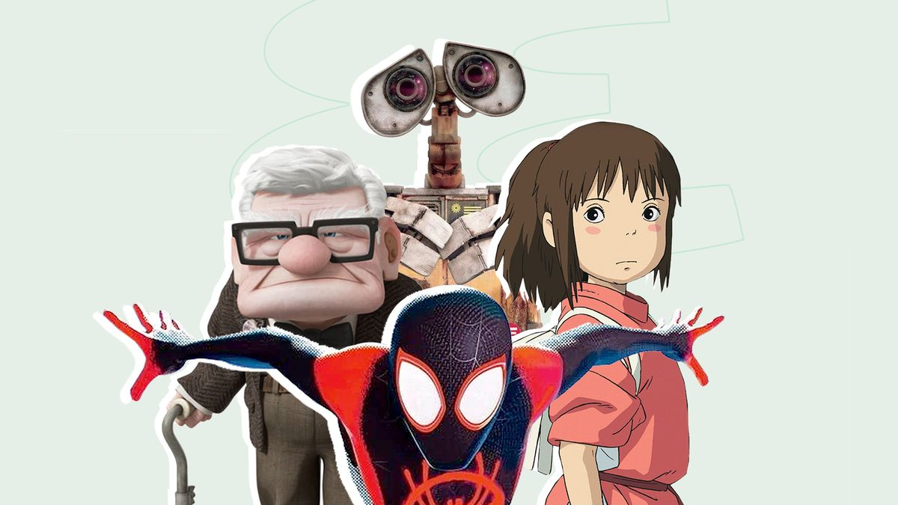
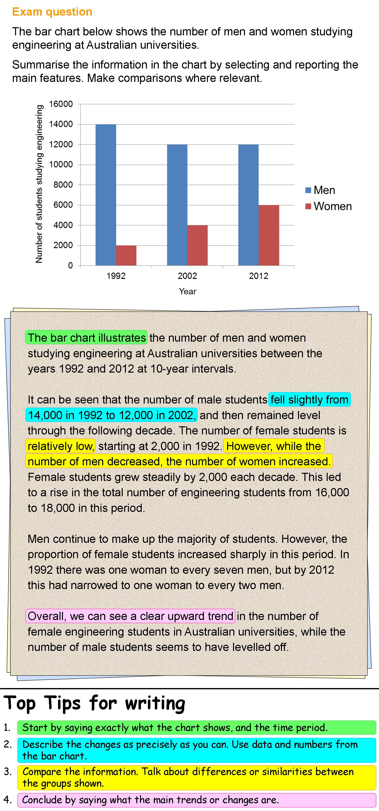
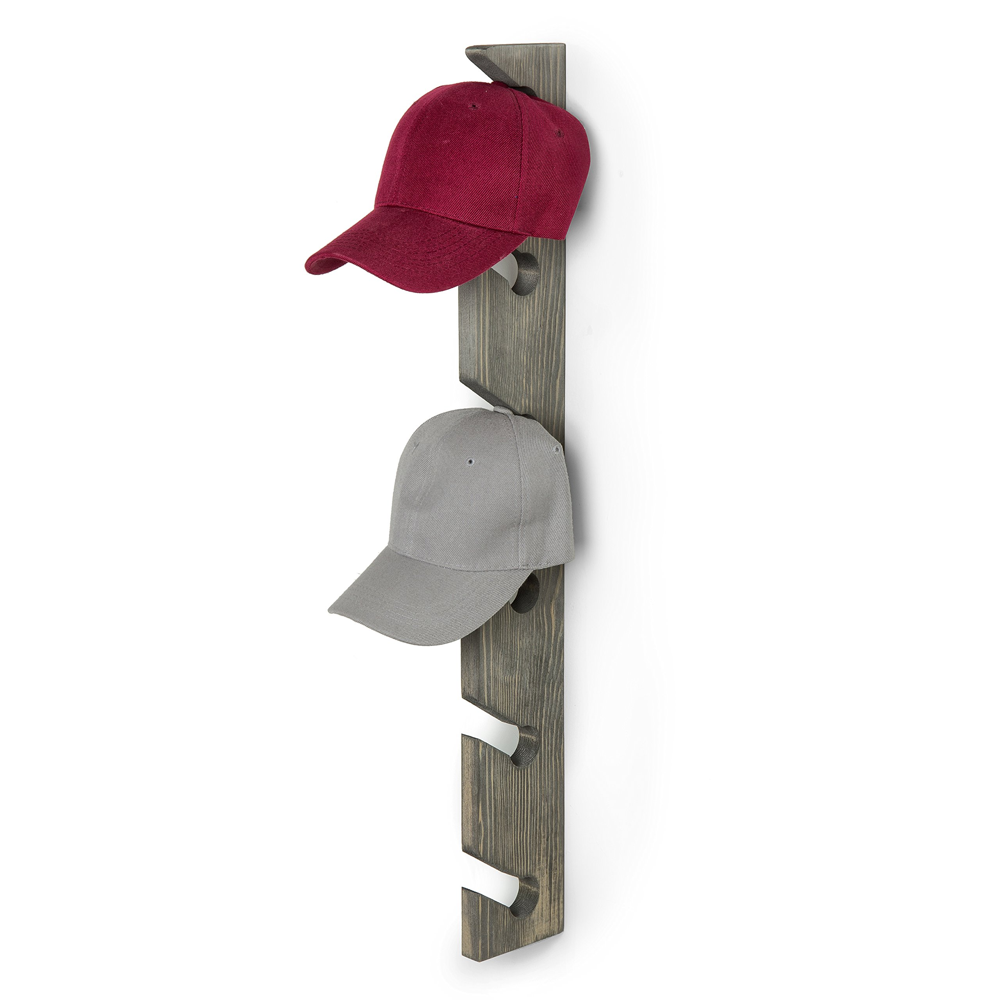
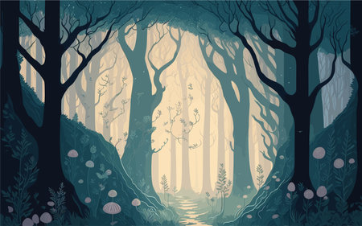
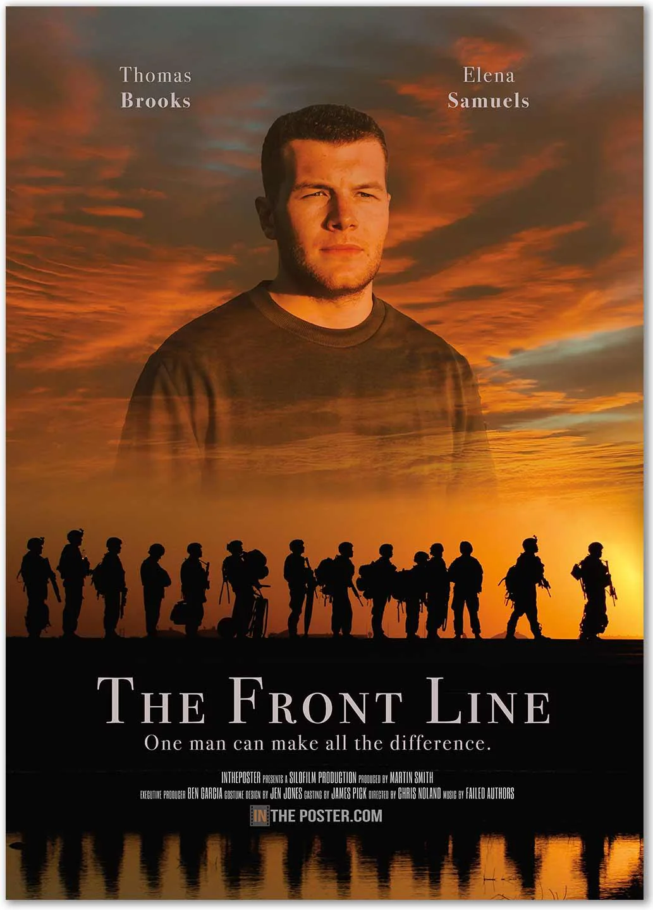

|
|
 | The image is a vintage looking comic version of a man's head with an emotion-filled face. His mouth is open, showing his teeth, and he appears to be grinding or roaring, giving off an intense and angry expression. The image depicts a classic comic illustration style, likely created for an action-packed comic or a superhero series. | 10 | The caption describes the image quite accurately. Here is a breakdown of the key points:
1. Overall Description: "The image is a vintage looking comic version of a man's head" – This is correct as the image does depict a comic-style illustration of a man's head.
2. Expression: "...with an emotion-filled face. His mouth is open, showing his teeth, and he appears to be grinding or roaring, giving off an intense and angry expression" – This part is detailed and accurately reflects the intense, angry expression on the man's face, with his mouth open and teeth showing.
3. Style: "The image depicts a classic comic illustration style" – This is correct, as the image does have a classic comic book illustration style.
4. Purpose: "...likely created for an action-packed comic or a superhero series" – While this cannot be confirmed definitively from only the image, it is a reasonable assumption based on the style and expression.
Overall, the caption does a good job of describing the key elements and style of the image. |  | The caption provided is precise and accurately describes the content of the image. Here is an analysis of the alignment of the caption with the image:
1. Vintage looking comic version: The image clearly portrays a character in a classic comic book illustration style, with bold lines and vibrant colors typical of vintage comics.
2. Man's head: The image shows the head of a man with distinctive features, such as short hair and a defined jawline.
3. Emotion-filled face: The expression on the man's face is intense, indicating a strong emotion.
4. Mouth open, showing teeth: The man's mouth is open wide, and his teeth are visible, which is consistent with the description.
5. Grinding or roaring, intense and angry expression: The man's face suggests he could be roaring or clenching his teeth in anger, capturing an intense emotional moment.
6. Classic comic illustration style: The style of the drawing is clearly reminiscent of traditional comic book art, fitting the caption's description perfectly.
7. Action-packed comic or superhero series: While the image itself doesn't explicitly indicate its placement in an action-packed comic or superhero series, the intense expression and illustrative style align with common themes seen in such genres.
Overall, the caption is very precise and effectively captures the content and style of the image. The only minor point is the assumption that it's likely created for an action-packed comic or superhero series, which is inferred but not explicitly evident from the image alone. | 10 | This caption does a good job of recalling the main elements of the image. Here’s a breakdown of how well each aspect of the image is covered:
1. Style:
- The caption mentions that the image has a "vintage looking comic" style, which accurately describes the classic comic illustration appearance of the image.
2. Subject:
- The caption correctly identifies that the image is of a "man's head," which is central to the image content.
3. Emotion:
- The caption identifies the face as "emotion-filled" and describes the man as having an "intense and angry expression," which aligns with the man's open mouth and visible teeth that suggest anger or roaring.
4. Details:
- The description of the man's mouth being "open, showing his teeth," indicates a detailed observation of the image.
- It mentions that he appears to be "grinding or roaring," which matches the intense facial expression.
5. Context:
- It conjectures that the illustration was "likely created for an action-packed comic or a superhero series," adding context to the image though it is not shown explicitly in the image.
Overall, the caption provides a comprehensive recall of the significant features of the image. It captures the style, subject, emotional expression, and some detailed elements, as well as hypothesizing the image’s potential use, all of which are reflected in the image. The only minor aspect that could be added is the mention of the background, which has a dynamic red and yellow burst pattern, typical of action-packed comic illustrations. | 9 | The image depicts a man and a woman in a cartoonish depiction, each having a very overexaggerated angry facial expression. The woman with a red face is placed on the left side, while the man with a yellow face is on the right. Both faces exhibit a great amount of displeasure and seem to be yelling at each other. The image seems to capture a moment of intense anger or conflict between the man and the woman. | 1 | The given caption does not accurately describe the image provided. Here's the analysis:
1. Claim about two people: The caption mentions both a man and a woman, but the image shows only one face.
2. Genders: The image depicts a single, exaggerated male face, not a female.
3. Positioning: The caption describes the woman on the left and the man on the right, but there is no such arrangement as only one face is visible in the image.
4. Facial colors: The caption mentions a red-faced woman and a yellow-faced man, but only one face (yellowish) is present.
5. Conflict: The description of them yelling at each other and indicating a moment of conflict does not apply since only one person is depicted.
Therefore, the caption is mostly inaccurate for the provided image. A more accurate caption would be:
"The image depicts a cartoonish depiction of an angry man with a yellow face, featuring an over-exaggerated furious expression and a red burst background." |  | The provided caption does not accurately describe the image. Here’s an analysis of its precision:
1. Number of People: The caption mentions a man and a woman, but the image only shows a single individual.
2. Gender: The caption specifies both a man and a woman, but the image appears to depict only a man.
3. Colors: The individual in the image has a yellow face, consistent with the mention of a man with a yellow face. However, there is no depiction of a woman with a red face.
4. Facial Expressions: The caption correctly identifies an exaggerated angry facial expression.
5. Positioning: The caption states that the woman is on the left and the man is on the right, but the image only contains one person, making this part of the description incorrect.
6. Interaction: The mention of both characters yelling at each other is not applicable because only one character is present.
In summary, the caption does not accurately describe the image. An improved caption would be:
"The image depicts a cartoonish depiction of a man with a yellow face showing an overexaggerated angry facial expression, seemingly yelling." | 3 | The given caption describes an image that features both a man and a woman with exaggerated angry expressions, where the woman with a red face is on the left and the man with a yellow face is on the right. However, the image provided solely shows one character, specifically a man with a yellow face, exhibiting an angry, yelling expression.
While the caption mentions several details, it introduces elements (the woman and a conflict between them) that do not exist in the image. Hence, the recall of the caption is incorrect because it includes extraneous details not present in the image. The accurate recall should only focus on the man with the yellow face and his angry expression.
Key points in the actual image:
1. Single character with a yellow face
2. Exaggerated angry expression
3. Cartoonish depiction
Therefore, the caption should be corrected to reflect the image:
"The image depicts a man in a cartoonish depiction with an exaggerated angry facial expression. The man's face is yellow and he seems to be yelling, displaying a great amount of displeasure." | 2 | The image features a close-up of a man's face with an angry expression. He has red hair, and his mouth is wide open, showing his teeth. The man appears to be yelling or making an intense facial expression. The background of the image is white, which contrasts with the man's face, making him stand out prominently in the scene. | 10 | The caption provides a fairly accurate description of the image. Here's how it aligns with the visual elements:
1. Close-up of a man's face: Correct, the image is a close-up of a face.
2. Angry expression: The man does indeed have an angry expression.
3. Red hair: The character is depicted with red hair.
4. Mouth wide open, showing teeth: The man's mouth is open, and his teeth are visible.
5. Yelling or intense facial expression: The posture and expression suggest that the man is either yelling or displaying some intense emotion.
6. White background with contrast: The background is white, which contrasts well with the face and makes it stand out.
Overall, the caption accurately reflects the visual details and the emotional tone of the image. |  | The caption is quite precise and accurately describes the image. Here is a breakdown of the elements:
1. Close-up of a man's face: The image clearly shows a close-up of a man's face.
2. Angry expression: The man's face is characterized by an intense, angry expression.
3. Red hair: The man’s hair is indeed depicted in red.
4. Mouth wide open, showing teeth: The man’s mouth is wide open, and his teeth are visible, indicating he might be yelling.
5. Intense facial expression: The expression is intense, fitting with the theme of anger.
6. White background: The background of the image is indeed white, contrasting with the man’s face.
7. Prominently stands out: The man does stand out prominently due to the contrast against the white background.
All mentioned aspects of the description are present in the image, making the caption highly precise. | 10 | The caption for the image does a commendable job of covering most of the key elements present within it. Here's the analysis focused on recall:
1. Close-up of a man's face: The caption accurately mentions that the image features a close-up of a man's face.
2. Angry expression: The mention of the man having an angry expression is spot-on, as the facial expression is indeed intense and angry.
3. Red hair: The caption notes that the man has red hair, which matches the image.
4. Mouth wide open, showing teeth: The caption appropriately describes the man's mouth being wide open and showing his teeth.
5. Yelling or intense facial expression: The caption suggests that the man is either yelling or making an intense facial expression, which aligns with the visual portrayal.
6. Background is white: The caption correctly states that the background of the image is white.
Overall assessment:
- The caption comprehensively covers the primary and secondary visual elements of the image.
- All critical features such as the close-up, facial expression, hair color, open mouth, and the white background are mentioned.
The recall is excellent, with the caption mentioning all significant aspects depicted in the image. There are no notable elements from the image that have been omitted in the caption. | 10 |
 | The image features a woman with brown hair, opening her mouth wide, conveying a big surprise. She appears to have a neutral expression and looks like she is making a serious or unusual face. Behind her, there are muted colors and a small part of another person in the background. The woman's face is the central focus of the scene, and she captures most of the photo space. | 5 | The caption provided is partially accurate but misses some key details and incorrectly describes some aspects. Here's a breakdown of the analysis:
1. Expression:
- The woman appears to be displaying an expression of surprise, which aligns with the 98% "Surprise" score shown in the table.
- The caption incorrectly suggests that she has a neutral expression. The accompaniment of a wide-open mouth and wide eyes does not support this; it suggests surprise.
2. Description Accuracy:
- The description of the woman with brown hair and her mouth wide open is accurate.
- There's no clear evidence of another person in the background or muted colors based on the image provided.
3. Focus:
- It is correct that the woman's face is the central focus of the scene and captures most of the photo space.
4. Additional Information:
- The caption omits the presence of the emotion analysis table which indicates the various emotions and their corresponding scores.
Revised Caption:
"The image features a woman with brown hair, opening her mouth wide, clearly conveying a big surprise. The expression, marked by wide eyes and an open mouth, reflects a 98% surprise score in the accompanying emotion analysis table." |  | The caption provided for the image does have some accurate observations but also contains some discrepancies and lacks precision in certain areas. Here's a detailed analysis:
Accurate aspects:
1. Woman with Brown Hair: Correctly identifies the subject as a woman with brown hair.
2. Mouth Wide Open: Correctly states that her mouth is wide open.
3. Conveying Surprise: The emotion conveyed by the woman's expression is accurately described as surprise. This aligns with the emotion chart on the left indicating “Surprise” with a high score.
Inaccurate/Imprecise aspects:
1. Neutral Expression: The caption mentions that the woman "appears to have a neutral expression," which is contradictory to her actual expression of surprise. Neutral is listed as zero on the chart.
2. Serious or Unusual Face: Describing her as making a "serious or unusual face" may add confusion as her expression is better described solely as surprise.
3. Muted Colors and Background Description: The caption refers to "muted colors" and "a small part of another person in the background," which is not clearly evident or significant in the presented image.
The table and percentage text describe surprise as the dominant expression, further reinforcing the conveyed emotion.
To improve the caption, it should focus on and emphasize the emotional state more accurately and avoid contradictory terms:
Revised caption:
"The image features a woman with brown hair, opening her mouth wide in a clear expression of surprise. Her wide eyes and open mouth indicate that she is startled. The background is not the focus and she captures most of the photo space."
This revision aligns more closely with the depicted expression and removes unnecessary and contradicting descriptors. | 6 | The provided caption effectively captures several elements of the image but misses some others regarding emotional analysis and background details. Here's a breakdown:
### Correctly Mentioned Features:
1. Central Focus:
- The caption correctly describes the woman as the central focus of the image.
2. Facial Expression:
- The caption states that the woman’s mouth is wide open, indicating a strong reaction which is associated with surprise.
### Inaccuracies or Missing Elements:
1. Facial Expression (Emotion):
- The caption suggests that the woman appears to have a neutral expression. However, the emotion analysis displayed in the image categorizes her expression predominantly as "Surprise," with 49 out of 50 indicators.
2. Detailed Description:
- The caption mentions muted colors and a part of another person in the background, but the image does not clearly show any person other than the central woman, nor is there a discernible background.
### Additional Elements in the Image (Not Covered by the Caption):
1. Emotion Data:
- The caption does not make any reference to the numerical and percentage data indicating "Surprise" as 98% of the detected emotion, which is a significant feature of the image.
### Analysis Summary:
The caption reflects the central focus and general reaction of the woman in the image but doesn't align with the emotional analysis data provided within the image. It inaccurately describes the woman’s expression as “neutral” rather than “surprised.” It is also missing reference to the emotion data, which is clearly a major element in the image.
### Conclusion:
The recall in the caption could be improved by replacing the description of the woman’s expression from "neutral" to "surprised" and by acknowledging the emotional data presented in the image for a more accurate and complete description. | 6 | The image portrays a pretty woman with curly hair, reacting to an amusing or shocking event as her mouth is wide open in surprise. A computer monitor in the background displays her amazed expression with an indifferent cat sitting in front of it. There may be a few other elements, such as a keyboard on the lower part of the monitor. The scene captures the surprise and amusement of the woman and the cat as they react to a startling surprise or playful situation. | 3 | Upon evaluating the provided caption in relation to the image, it appears there are several inaccuracies:
1. Description of the Woman: The caption describes the woman as having curly hair and reacting to an amusing or shocking event with her mouth wide open in surprise. This part of the caption accurately corresponds with the expression of the woman in the image.
2. Computer Monitor and Cat: The caption mentions a computer monitor in the background displaying her amazed expression and an indifferent cat sitting in front of it, along with a keyboard on the lower part of the monitor. However, these elements are not present in the image provided. The image does not include a monitor, a cat, or a keyboard.
3. Emotion Analysis Table: The caption does not mention the table displaying different emotions ("JOY," "ANGRY," "SAD," etc.) and their corresponding values, nor the "98%" score. Including this information would make the caption more accurate and comprehensive.
Therefore, while some descriptions in the caption match the image, it largely includes elements that are not present and fails to mention key components that are visible in the image. The caption needs to be revised to accurately portray the actual content of the image. |  | The provided caption does not accurately describe the content of the image. Here's an analysis focusing on precision:
1. Accurate Description:
- The image does show a woman with her mouth wide open, which aligns with her expression of surprise.
2. Inaccurate or Missing Elements:
- Computer Monitor and Cat: The caption mentions a computer monitor displaying the woman's expression and an indifferent cat sitting in front of it. These elements are not present in the image.
- Other Elements Such as a Keyboard: No keyboard or similar elements are visible in the image.
- Scene Setting: The caption implies there is a detailed setting involving interactions with a computer and a cat, which is not depicted.
3. Additional Details in the Image:
- The image includes a table listing emotions and their counts.
- There is a numerical value indicating "98%" at the bottom of the table.
Revised Caption for Precision:
"The image depicts a woman with curly hair displaying a surprised expression with her mouth wide open. Beside her is a table listing various emotions with a dominant count for 'SURPRISE,' and a percentage value of 98% at the bottom."
This corrected caption more precisely reflects the content of the image. | 3 | The caption provided does not align well with the image contents. Let’s break down the key elements present in the image and compare them to what is described in the caption:
### Key Elements in the Image:
1. Woman: The image features a woman with curly hair, who has an open-mouthed expression indicative of surprise.
2. Emotion Chart: Next to the woman's face, there's an emotion analysis table.
- JOY: 1
- ANGRY: 0
- SAD: 0
- DISGUST: 0
- SURPRISE: 49
- FEAR: 0
- NEUTRAL: 0
- Total: 50
- An overall accuracy percentage (98%) is also displayed.
### Elements Mentioned in the Caption:
1. Woman with curly hair: This part of the caption aligns with the image.
2. Reacting to an amusing or shocking event, mouth wide open in surprise: This description matches the woman’s surprised expression.
3. Computer monitor, indifferent cat, keyboard: None of these elements are present in the image.
### Analysis:
- Correctly Mentioned: Woman with curly hair, surprised expression.
- Incorrectly Mentioned/Missing: There is no computer monitor, no indifferent cat, and no keyboard in the image. Additionally, the emotion analysis chart, which is a significant part of the image, is not mentioned in the caption.
### Recall Evaluation:
Low Recall: The caption does capture the woman and her expression fairly accurately but fails significantly by mentioning elements (computer monitor, cat, keyboard) that are not in the image at all, and by not mentioning the presence of the emotion analysis chart, which is very pertinent to the image.
Therefore, the recall of the caption is inaccurate as it fails to cover critical components of the image and includes details that do not exist in the image. | 3 | The image features a woman with curly hair making a shocked or surprised face. She appears to be reacting to something unexpected or surprising, as indicated by her facial expression. The woman's mouth is wide open, and her eyes are wide open as well.
In the background, there is a computer screen displaying various emotions, including joy, anger, sadness, disgust, surprise, fear, and neutrality. The woman's reaction seems to be related to the emotions displayed on the computer screen. | 9 | The provided caption accurately describes the main elements of the image. The caption mentions:
1. Woman with Curly Hair: This is accurate as the individual in the photo does have curly hair.
2. Shocked or Surprised Expression: The wide-open mouth and eyes are consistent with a surprised or shocked expression.
3. Reaction to Something: This is also true as the expression does suggest a reaction to something unexpected.
4. Computer Screen Displaying Various Emotions: The chart beside the woman does display different emotions (JOY, ANGRY, SAD, etc.) with values next to them.
5. Surprise Dominating: The chart on the screen shows “SURPRISE” with a count of 49 out of 50, which supports the observation of her reaction being related to surprise.
One minor point to note is that while the caption accurately reflects the image, it does not explicitly mention the chart, consisting of numbers and the percentage (98%) derived from those numbers, which detail the analysis of the emotions.
Overall, the caption is well-aligned with the image and effectively describes its contents. |  | The caption does a good job of describing the main elements of the image. Here's an analysis of the precision:
1. Woman's Appearance:
- *Caption*: "The image features a woman with curly hair making a shocked or surprised face."
- *Image*: Indeed, the woman has curly hair and is displaying a shocked or surprised expression, with her mouth and eyes wide open.
2. Facial Expression:
- *Caption*: "She appears to be reacting to something unexpected or surprising, as indicated by her facial expression."
- *Image*: The woman does look surprised, which matches the emotion reflected by her facial expression.
3. Background Information:
- *Caption*: "In the background, there is a computer screen displaying various emotions, including joy, anger, sadness, disgust, surprise, fear, and neutrality."
- *Image*: The background shows a list of emotions graded numerically, including "JOY," "ANGRY," "SAD," "DISGUST," "SURPRISE," "FEAR," and "NEUTRAL."
4. Connection to Emotions:
- *Caption*: "The woman's reaction seems to be related to the emotions displayed on the computer screen."
- *Image*: The woman's expression and the information on the screen both suggest surprise ("SURPRISE" has the highest value at 49), making the connection accurate.
5. Details:
- The caption does not mention details like "50" as a total score or the calculated "98%", which are also visible in the image. However, including these details in the caption might not be necessary for understanding the overall context.
Overall, the caption is precise and captures the essential elements of the image, accurately describing the woman's appearance, facial expression, and the background details related to the displayed emotions. | 9 | The caption does a good job of covering key elements of the image. Here’s an analysis focusing on recall:
### Elements Mentioned in the Caption:
1. Woman with Curly Hair: The caption accurately describes the woman in the image, noting her curly hair.
2. Shocked or Surprised Expression: The woman's facial expression is noted as being shocked or surprised, which aligns well with her wide-open eyes and mouth.
3. Facial Expression Description: The caption details specific aspects of her expression (wide open mouth and eyes), which are accurate.
4. Computer Screen Displaying Emotions: The caption notes the presence of a computer screen showing various emotions, covering elements such as joy, anger, sadness, disgust, surprise, fear, and neutrality.
### Additional Details in the Image:
- Emotion Scores: The image displays numerical scores next to each emotion. These scores indicate the intensity or frequency of each emotion:
- Joy: 1
- Angry: 0
- Sad: 0
- Disgust: 0
- Surprise: 49
- Fear: 0
- Neutral: 0
- Total: 50
- Percent: 98%
### Elements Not Mentioned in the Caption:
1. Numerical Values and Percentages: The caption does not include the specific numerical values and percentages shown on the computer screen, which are integral parts of the image's context related to emotion detection or analysis.
### Evaluation:
- Strengths: The caption successfully captures the essence of the image by describing the woman's appearance and her surprised expression, as well as the presence of a computer screen displaying emotions.
- Areas for Improvement: Including a brief mention of the numerical emotion scores and the 98% percentage would provide a more complete description of the image content.
### Conclusion:
Overall, the caption has good recall, covering the major aspects of the image. It could be improved by incorporating details about the numerical values related to the emotions shown on the screen. | 8 |
 | A young woman is sitting down and holding her head with her hand. She appears agitated, placing her palm over her forehead and drawing her eyebrows down as she experiences apparent discomfort or pain. The woman is also covering her eyes with her hand, which further highlights her emotional state. | 7 | The caption is mostly accurate but contains some discrepancies. Here are the details:
1. Sitting Down: The image does not provide enough context to determine if the woman is sitting. This part of the caption may not be accurate.
2. Holding her Head with her Hand: Accurate. The woman is holding her head with her hand.
3. Appears Agitated: This is a subjective interpretation but seems reasonable given her facial expression.
4. Palm Over Forehead and Drawing Eyebrows Down: Accurate. She does have her hand on her forehead and eyebrows drawn down.
5. Experiencing Discomfort or Pain: This is an inferred emotion, which appears reasonable based on her expression.
6. Covering Her Eyes: The woman is not covering her eyes; her eyes are visible.
Revised Caption: "A young woman is holding her head with her hand. She appears agitated, placing her palm over her forehead and drawing her eyebrows down as she experiences apparent discomfort or pain." |  | The caption provides a detailed description of the young woman's emotional state and actions:
1. Presence of a young woman: The caption correctly identifies a young woman in the image.
2. Action - Holding her head: The woman is holding her head with her hand, matching the description.
3. Emotional state - Agitated: Her facial expression and the gesture of holding her head imply discomfort or agitation, which is consistent with the caption.
4. Palm over forehead: The woman's palm is indeed placed over her forehead.
5. Eyebrows drawn down: Her eyebrows are drawn down, indicating distress or discomfort.
6. Apparent discomfort or pain: Her expression suggests discomfort or pain, aligning with the caption.
7. Covering her eyes with her hand: This part of the caption is slightly inaccurate. The woman is not covering her eyes with her hand but rather placing her hand on her forehead, with her eyes visible and not obscured.
In summary, the caption is mostly accurate and detailed but includes one slight inaccuracy regarding the covering of eyes. The dominant emotional and physical gestures are well captured and described. | 9 | The caption's recall of the image is mostly accurate but has a few discrepancies:
1. Subject Description:
- Mentioned: "A young woman"
- Accuracy: Correct, the image shows a young woman.
2. Actions and Postures:
- Mentioned: "holding her head with her hand," "placing her palm over her forehead," "drawing her eyebrows down," and "covering her eyes with her hand."
- Accuracy: Partially correct. The woman is holding her head with her hand and placing her palm over her forehead. However, she is not covering her eyes with her hand; her eyes are visible and she is not covering them. The description of drawing her eyebrows down is a reasonable interpretation of her facial expression.
3. Emotional State:
- Mentioned: "appears agitated," "experiencing apparent discomfort or pain," and "highlights her emotional state."
- Accuracy: Correct. The expression and posture of the woman suggest she is experiencing discomfort or pain.
4. Contextual Information:
- Not Mentioned: The caption does not specify her attire's color; she is wearing a pink top.
- Relevance: The color of the clothing could add additional context but is not critical to understanding her emotional state.
In summary, the caption accurately identifies the subject as a young woman and her emotional state. However, it inaccurately describes her hand covering her eyes. Correcting this misstatement would improve the caption. The mention of her pink top, though not critical, could enhance the recall by adding a visual detail. | 8 | The image captures a beautiful young lady dressed in a pink shirt and wearing a pink bra, with her eyes closed and her hair partially covering her face. She appears to be in distress or trouble, possibly even crying. The girl is touching her temple, and the distress seems to be centered around her facial and eye area.
The background features a brown wall, and the girl's hair and face are the central point of focus in this emotional and expressive scene. | 7 | The caption has several accurate descriptions but also includes some unnecessary or unverifiable details:
Accurate aspects of the caption:
1. The young lady is indeed dressed in a pink shirt.
2. She appears to be in distress and is touching her temple, which aligns with the caption suggesting she might be troubled.
3. Her eyes are closed, and she looks emotional.
Inaccurate or unverifiable aspects:
1. The caption states that she is wearing a pink bra, but this detail is not visible in the image.
2. The phrase "hair partially covering her face" is exaggerated; her hair does not noticeably cover her face.
3. The background is not clearly a "brown wall" as described. The background appears blurred and doesn't provide clear enough detail to specify its color definitively.
4. The focus is indeed on her facial expression and gesture, but the caption should avoid the assumption about the color of the bra since it's not visible.
An improved caption might be:
"The image captures a young woman wearing a pink shirt with her eyes closed, touching her temple. She appears to be in distress, possibly crying. Her hair falls naturally around her face. The background is blurred, keeping the focus on her emotional expression." |  | The caption does a largely accurate job of describing the main elements of the image, but there are a few inaccuracies and unnecessary details that can be refined for precision.
### Accurate Elements:
1. Clothing: The individual is indeed wearing a pink shirt.
2. Facial Expression: The person appears distressed, with their eyes closed and a pained expression on their face.
3. Gesture: The individual is touching their temple, which signifies concern or possibly a headache.
4. Hair: Their hair is long and is partially covering part of their face.
### Inaccurate or Unverifiable Elements:
1. Pink Bra: There is no indication in the image that the individual is wearing a pink bra; this detail is unverifiable from this image.
2. Crying: While the person does look distressed, the image does not clearly show tears or actual crying.
3. Background Color: The background does not appear to be brown; it looks more like a neutral color such as off-white or grey.
### Redundancies or Irrelevant Details:
1. Beautiful: The term “beautiful” is subjective and does not add to the factual description of the image.
2. Hair and Face as the Central Point: The central focus is evident from the description of the expression and gesture; reiterating it is unnecessary.
### Improved Caption:
The image captures a young lady dressed in a pink shirt, with her eyes closed and her hair partially covering her face. She appears to be in distress, possibly even crying. The girl is touching her temple, suggesting discomfort or pain. The background is neutral-colored, and the focus is on her facial expression and gesture.
This revised caption focuses on observable facts and removes subjective and unverifiable details. | 7 | The caption does a fairly good job of covering the content of the image, but there are some inaccuracies and unnecessary details. Here's an analysis focusing on the recall:
### Accurate Details:
1. Young Lady: The image does indeed show a young lady.
2. Dressed in a Pink Shirt: She is wearing a pink shirt.
3. Eyes Closed: Her eyes appear to be closed.
4. Touching Her Temple: The girl is touching her temple.
5. Appears to Be in Distress: Her facial expression and gesture indicate distress.
### Inaccuracies or Unnecessary Details:
1. Wearing a Pink Bra: The bra is not visible in the image, making this detail inaccurate and unnecessary to mention.
2. Hair Partially Covering Her Face: Her hair is not notably covering her face; it is neatly tucked behind her ear and forehead.
3. Possibly Crying: The image shows distress, but it does not clearly indicate crying (no visible tears).
4. Background: The background is more neutral and appears grayish, not brown.
### Omitted Details:
1. Facial Expression: The caption accurately describes the expression as one of distress, but it could mention the grimace or frown for additional clarity.
### Revised Caption for Better Recall:
The image captures a young lady dressed in a pink shirt, with her eyes closed and her hair neatly tucked behind her ear. She appears to be in distress, as indicated by her facial expression and the hand touching her temple. The background is a neutral color, and the focus is on her face and emotional expression.
This revised caption maintains the accurate elements and omits unnecessary details while providing a clear description of the image. | 7 | The image features a young woman wearing a pink shirt with her eyes closed and her hand on her forehead. She appears to be experiencing distress or discomfort, possibly due to a headache or some other issue. The woman's facial expression suggests that she is in pain or discomfort. The scene takes place indoors, with the woman being the main focus of the image. | 10 | The caption accurately describes the image. Here’s the analysis:
1. Description of the Subject: The caption mentions a young woman, which is correct.
2. Clothing: The caption states she is wearing a pink shirt, which matches the image.
3. Facial Expression and Gesture: The caption notes that she has her eyes closed and her hand on her forehead, indicating distress or discomfort, possibly due to a headache. This is a precise description of her posture and expression.
4. Emotion: The caption infers that she is experiencing pain or discomfort, which is consistent with her expression.
5. Setting: The caption mentions that the scene takes place indoors and focuses on the woman, which is accurate as well.
Overall, the caption effectively and accurately captures the details and emotions presented in the image. |  | The caption is highly accurate and precise in describing the image. Here's a breakdown of its precision:
1. Young Woman: Correctly identifies the subject as a young woman.
2. Pink Shirt: Accurately describes the color and type of clothing the woman is wearing.
3. Eyes Closed: Observes that the woman's eyes are closed.
4. Hand on Forehead: Notes the hand placement on the forehead.
5. Facial Expression: Interprets her facial expression correctly as suggesting distress or discomfort.
6. Possible Causes: Hypothesizes that she might be experiencing pain, such as a headache, which fits with her expression and gesture.
7. Indoors Scene: Identifies that the scene is indoors.
8. Focused Subject: Points out that the woman is the main focus of the image.
Overall, the caption precisely describes the visual elements and correctly interprets the possible emotions and scenario depicted in the image. | 10 | The caption does a good job covering the content of the image, providing a detailed description. Here's a breakdown of the recall:
1. Young woman: The caption identifies the subject as a young woman, which is accurate.
2. Pink shirt: The caption mentions that she is wearing a pink shirt, correctly noting her clothing.
3. Eyes closed and hand on forehead: The caption accurately describes her pose, with her eyes closed and her hand on her forehead.
4. Distress or discomfort: The caption interprets her facial expression, suggesting she is experiencing distress or discomfort, which aligns with the visual cues.
5. Possible headache or other issue: The caption speculates on the cause of her discomfort, which is reasonable given her expression and hand placement.
6. Indoors: The caption notes that the scene takes place indoors; although this is not explicitly clear from the image, it can be inferred.
7. Main focus: The caption correctly notes that the woman is the main focus of the image.
Overall, the caption effectively covers all significant aspects of the image with good recall, accurately describing the subject's appearance, expression, and probable state. | 10 |
 | The image features three wolves howling in the middle of a forest, with a row of very thin trees visible behind them. The wolves are standing on a hillside, surrounded by a serene natural environment. Each wolf is positioned at slightly different heights and angles, creating a sense of depth within the scene. The wolves appear to be depicted differently, with one wolf seeming more similar to a dog than the others. | 8 | The caption for the image is generally accurate but includes some observations that are not entirely apparent. Here is a detailed analysis:
1. Number and Description of Wolves:
- The caption correctly identifies three wolves howling.
2. Setting:
- The caption states that the wolves are in the middle of a forest. This is accurate as there are numerous trees visible in the background.
3. Tree Description:
- The trees are indeed tall with thin trunks, which aligns with the caption.
4. Hillside Detail:
- The caption mentions that the wolves are standing on a hillside. However, the image does not distinctly show an elevation or hillside, so this part may not be accurate.
5. Natural Environment:
- The serene natural environment is appropriately described.
6. Wolf Positioning:
- The caption notes that the wolves are at slightly different heights and angles, creating depth. This is a fair description of their positioning.
7. Wolf Depictions:
- The caption suggests that one wolf appears more similar to a dog than the others. This is subjective, but without distinctive breeds or features visible, it's a bit speculative.
8. Lighting:
- The caption does not mention the lighting or sun, which is significantly depicted in the top left corner.
Conclusion:
Overall, the caption is descriptive and mostly accurate. However, it has minor inaccuracies and omissions, such as the hillside and lighting details. It captures the main elements well but could benefit from slight revisions to enhance precision. |  | The caption for the image is reasonably descriptive, but there are some inaccuracies and unnecessary details that should be addressed for better precision:
1. Presence of Three Wolves:
- The caption correctly states that there are three wolves howling.
2. Forest Setting:
- The description correctly identifies that the wolves are in a forest with trees visible behind them.
3. Positioning and Depth:
- The caption mentions the wolves are at slightly different heights and angles, creating a sense of depth, which accurately reflects the composition of the image.
4. Serene Natural Environment:
- The setting does indeed look natural and serene, as described.
5. Row of Very Thin Trees:
- The trees in the background do not particularly appear very thin; they seem of normal thickness for a forest setting.
6. Wolves Standing on a Hillside:
- The caption states that the wolves are standing on a hillside, but this is not clearly evident from the image. It's more accurate to state they are in a forested area with snow on the ground.
7. Similarity to Dogs:
- Mentioning that one of the wolves seems more similar to a dog is subjective and may not be necessary for a factual description.
An improved and more precise caption could be:
"The image features three wolves howling in the middle of a snow-covered forest, with trees visible behind them. The wolves are positioned at slightly different heights and angles, creating a sense of depth within the scene." | 7 | The caption for the image does a reasonably good job of describing the content, but it has several inaccuracies and omissions. Here’s an analysis of the recall:
1. Wolves:
- The caption correctly mentions that there are three wolves.
- It notes that the wolves are howling, which matches the image.
2. Forest and Trees:
- The caption states that the wolves are in the middle of a forest with a row of thin trees behind them.
- This matches the image, where tall, thin trees are visible in the background.
3. Environment:
- The caption mentions that the wolves are standing on a hillside, but this is not clearly visible in the image. The ground is not elevated, and the term "hillside" might be misleading.
- The serene natural environment is accurately described.
4. Depth:
- The caption correctly points out that the wolves are at different heights and angles, creating a sense of depth.
5. Description of Wolves:
- It is noted in the caption that one wolf seems more similar to a dog than the others. This might be a subjective observation as all the animals depicted look like wolves. The difference in appearance could be due to the positioning and artistic style, but commenting on their resemblance to a dog does not significantly add to the description of the image.
6. Lighting and Additional Details:
- The caption does not mention the sunlight visible through the trees, which is a notable aspect of the image.
- The snowy or frosty condition on the ground also isn't mentioned, which sets the scene more accurately.
### Suggestions for Improvement:
- Inclusion of Lighting:
- Mention the sunlight filtering through the trees.
- Ground Description:
- Highlight the snowy or frosty condition of the ground, if applicable.
- Remove Ambiguity:
- Remove or clarify the statement about one wolf looking more like a dog, as it may not be noticeable to all viewers and adds unnecessary ambiguity.
### Revised Caption:
"The image features three wolves howling in the middle of a forest, with tall, thin trees visible behind them. They are positioned at slightly different heights and angles, creating a sense of depth. Sunlight filters through the trees, illuminating the serene, snowy environment."
This revised caption accurately and completely describes the content of the image while avoiding unnecessary subjective observations. | 7 | The image depicts a serene scene with three wolves lingering next to each other on a path in the snowy woods, their eyes gazing outward toward the photographer. The wolves are arranged in a row, with one on the left side, another one in the center, and the third one on the right side of the image. The sky can be seen in the background, giving it a sense of depth to the scene. The presence of wolf howls adds to the picturesque and frosty atmosphere. | 3 | The caption provided does not accurately describe the image. Here is an analysis with specific points where the caption deviates from what is shown in the image:
1. Wolves Howling: The caption mentions "the presence of wolf howls," but it does not explicitly state that the wolves are howling. In the image, the wolves are clearly depicted with their heads tilted back and mouths open, which indicates that they are howling.
2. Arrangement and Path: The caption describes the wolves as "lingering next to each other on a path," arranged in a row. In reality, the image blends multiple wolves in a superimposed fashion rather than showing them aligned on a clear path. The backgrounds and positioning imply a sense of multiple exposures rather than a straightforward arrangement on a path.
3. Gazing Toward Photographer: The caption inaccurately suggests that the wolves' eyes are "gazing outward toward the photographer." The wolves are depicted in a howling position, looking upwards and not directly at the camera or outward.
4. Description of the Environment: The caption mentions the snowy woods and the sky, which is accurate. However, it does not convey the unique photographic effect used in the image—where multiple exposures or overlapping images create a surreal, ghostly effect.
A more accurate caption might be:
"The image depicts three wolves howling in a snowy woodland setting. The scene features a blend of multiple exposures, creating an ethereal, ghostly effect. The sun is setting in the background, casting a serene light on the wooded area, which enhances the frosty atmosphere."
This revised caption more accurately reflects the visual elements and the artistic style of the image. |  | The provided caption contains several inaccuracies when compared to the actual content of the image. Here is a detailed analysis:
1. Presence of the Wolves:
- The caption accurately mentions three wolves.
2. Wolf Positioning:
- Incorrect: The caption states that the wolves are "arranged in a row, with one on the left side, another one in the center, and the third one on the right side."
- Correct: The actual image shows the wolves not arranged in a distinct row. They appear superimposed and overlapping, creating a ghostly effect.
3. Wolf Activity:
- The caption claims the wolves' "eyes gazing outward toward the photographer."
- Incorrect: In the image, the wolves are howling, with their heads raised and mouths open. Their eyes are not clearly visible or focused outward due to their upward posture.
4. Setting Description:
- Accurate Mention: The caption notes "a path in the snowy woods," which aligns with the forest setting covered in snow.
- The description of the "serene scene" and "picturesque and frosty atmosphere" is subjective but not entirely inaccurate.
5. Sky and Depth:
- The phrase "the sky can be seen in the background, giving it a sense of depth to the scene" is somewhat accurate but could be misleading. The presence of sunlight breaking through trees is visible, contributing to depth indirectly.
6. Wolf Howls:
- The caption mentions "the presence of wolf howls," which can be inferred from the wolves' posture, but it is not directly represented in the still image.
### Revised Caption for Precision:
"The image depicts a serene scene in a snowy woodland with sunlight filtering through the trees. Three wolves are superimposed with their heads raised in howls, creating a ghostly effect. This ethereal composition adds to the picturesque and frosty atmosphere."
This revised caption more accurately aligns with the visuals presented in the image. | 3 | The caption provided for the image has several inaccuracies and omissions, affecting its recall of the image content.
### Matching Description:
1. Wolves:
- The caption correctly mentions the presence of wolves.
- There are three wolves in the image, as accurately described.
2. Setting:
- The snowy woods are depicted correctly.
- The background includes trees and what seems to be sunlight filtering through, aligning with the "sky" and "background" mentioned in the caption.
3. Atmosphere:
- The caption mentions the "frosty atmosphere," which is appropriate given the snowy setting.
### Missing or Incorrect Details:
1. Position of the Wolves:
- The wolves are not "lingering next to each other on a path." Instead, they are all howling, and their images appear somewhat ethereal or overlaid.
2. Wolves' Behavior:
- The caption misses the critical detail that the wolves are howling. These howls are a significant detail in the image.
3. Focus Direction:
- The caption states that the wolves are "gazing outward toward the photographer," which is inaccurate; they seem to be howling towards the sky or out of the frame.
4. Arrangement:
- The wolves are not arranged in a strict left-center-right row but seem more artistically overlaid or fused, giving a more surreal appearance.
In summary, while the caption captures some of the general elements of the image, it misses crucial details about the wolves' howling and their surreal arrangement within the scene. Moreover, the description of their gaze and position on a path is inaccurate. The recall of the image content by the caption is thus partially correct but incomplete and imprecise. | 4 | The image features three wolves standing together in a snowy forest, with their mouths open as if howling. They are positioned close to each other, with one wolf on the left side, another in the middle, and the third on the right side of the scene. The wolves appear to be facing the same direction, creating a sense of unity among them.
In the background, there are several trees scattered throughout the forest, providing a natural setting for the wolves. The snow-covered ground adds to the wintry atmosphere of the scene. | 8 | The caption provides a thoughtful and mostly accurate description of the image, but there are a few aspects that could be improved for clarity and completeness:
1. The caption accurately describes the primary elements in the image, including the three wolves positioned together in a snowy forest with their mouths open, presumably howling.
2. The wolves indeed seem to be facing the same direction, which does give a sense of unity.
3. The background elements, including the trees and snow-covered ground, are correctly identified, adding to the wintry forest atmosphere.
4. The caption captures the composition well but does not mention the ethereal or ghostly effect seen around the wolves. This effect makes them appear more like faint overlays rather than solid images, adding a mystical or surreal quality to the scene.
A revised caption could highlight this additional detail:
"The image features an ethereal portrayal of three wolves standing together in a snowy forest, with their mouths open as if howling. They are positioned close to each other, with one wolf on the left side, another in the middle, and the third on the right side of the scene. The wolves appear to be facing the same direction, creating a sense of unity among them, and their ghostly appearance adds a surreal quality. In the background, there are several trees scattered throughout the forest, providing a natural setting for the wolves. The snow-covered ground adds to the wintry atmosphere of the scene." |  | The caption provides a good overall description of the image, but with a few areas that could be improved for precision and clarity:
1. Number and Position of Wolves:
- The caption accurately mentions that there are three wolves. However, it could be more precise by indicating that the wolves on the right side are double-exposed, giving the appearance of additional wolves. The image actually shows multiple exposures of wolves, which creates a ghosted effect that is not fully captured in the caption.
2. Activity:
- The caption correctly states that the wolves have their mouths open as if howling. This detail is accurate and well described.
3. Setting:
- The caption accurately describes the setting as a snowy forest with several trees in the background and snow on the ground, contributing to the wintry atmosphere. This is consistent with what is seen in the image.
4. Lighting:
- The caption does not mention the lighting, but it is notable that the sun is visible through the trees, adding a glow to the scene. Including this detail could enhance the descriptive quality of the caption.
5. Unity:
- The caption notes the unity among the wolves, which is well observed as they are depicted facing the same direction.
Suggested Caption Enhancements:
"The image features three wolves, whose figures overlap in a ghostly, double-exposed manner, standing together in a snowy forest. With their mouths open as if howling, they are positioned to create a sense of unity, all facing the same direction. In the background, tall trees are scattered throughout the forest, and a glowing sun can be seen through the branches, enhancing the wintry atmosphere of the snow-covered ground."
This revised caption includes more details about the double-exposure effect and the sun's presence, adding precision and depth to the description. | 7 | The caption provides a detailed and mostly accurate description of the image, achieving strong recall by mentioning several key elements. Here's a breakdown:
1. Wolves Howling: The caption correctly identifies three wolves with their mouths open as if howling, covering a significant aspect of the image.
2. Positioning of Wolves: It notes the positioning of the wolves: one on the left, one in the middle, and one on the right. This matches the image, showing an understanding of how the wolves are spatially arranged.
3. Sense of Unity: The caption mentions that the wolves are facing the same direction, creating a sense of unity, which can be inferred from the image.
4. Snowy Forest: The caption describes the setting as a snowy forest with trees scattered throughout, which accurately reflects the background of the image.
5. Atmosphere: The mention of the snowy ground adding to the wintry atmosphere aligns well with the visual cues provided in the image.
Potential Enhancement:
- It could be noted that the sun is visible in the background, casting light through the trees, which adds to the atmospheric detail.
Overall, the caption has high recall, effectively mentioning the primary elements and the overall atmosphere presented in the image. | 9 |
 | The image showcases two girls playing with a brown and black dog in a grassy yard or park. One of the girls is actively engaged in the game, teaching the dog how to fetch by throwing a ball or toy for the dog to chase and catch. The dog is shown in action with the ball, exhibiting enthusiasm and excitement at chasing and securing the toy. The other girl stands in the background, likely observing or waiting for her turn to play. Overall, the scene displays a fun and energetic play session with the family's pets. | 4 | The caption contains several inaccuracies in describing the image:
1. Number of People: The caption states there are two girls playing, but the image only shows one person.
2. Description of the Person: The caption assumes the gender of the person, but it's not possible to confirm this from the image. A neutral description would be more accurate.
3. Actions: The person is actively engaging the dog by throwing a ball, which is correct. However, no second person is observed either engaging in or observing the activities.
4. Additional Details: The caption mentions the two girls are teaching the dog how to fetch. While the image shows a person playing with the dog, it's not certain they're teaching the dog to fetch specifically, although it can be inferred.
5. Setting: The setting of a grassy yard or park appears correct.
A more accurate caption could be:
"The image showcases a person playing with a brown and black dog in a grassy yard or park. The person is actively engaged in the game, throwing a pink ball for the dog to chase and catch. The dog is shown in action, exhibiting enthusiasm and excitement at chasing the ball. Overall, the scene displays a fun and energetic play session." |  | The caption provides a detailed narrative of what it describes, but it includes some inaccuracies and assumptions. Here's a breakdown:
Correct Elements:
- The image does show a scene of play in a grassy yard or park.
- There is a brown and black dog in the image.
- The dog is actively engaged in chasing a ball (specifically, a pink ball visible in the image).
Incorrect or Assumed Elements:
- The caption mentions two girls playing; however, there appears to be only one person in the image.
- The caption assumes the person is teaching the dog how to fetch, though this is not explicitly clear from the image alone.
- No additional person (potentially, another girl as mentioned) is visible in the image watching or waiting for her turn.
Elements not Covered:
- The described action of the dog (likely jumping towards the pink ball) is well-captured in the image, but the caption does not highlight the dog's dynamic leap clearly.
Suggested Revised Caption:
"The image showcases a person in a grassy yard or park playing with a brown and black dog. The person is throwing a pink ball for the dog to chase. The dog is captured mid-air, enthusiastically chasing after the ball, displaying excitement during the play session. The background includes trees and a building, enhancing the park-like setting."
This revised caption sticks strictly to the observable elements within the image, avoiding assumptions about more people, specific actions, or intentions that are not visibly confirmed by the image. | 6 | The caption provided for the image exhibits several points of recall:
1. Dog: The caption correctly identifies that there is a dog in the image.
2. Ball: The caption mentions a ball, which is visible as the dog is chasing it.
3. Grassy Yard or Park: The caption describes the setting as a grassy yard or park, which aligns with the grass and trees in the image.
4. Play: The caption accurately identifies the activity as a play session involving fetching a ball.
5. Person: The caption mentions two girls, but only one person is clearly visible and actively engaging with the dog.
However, it is unclear if there is a second girl in the background, as described in the caption since only one person is wholly visible and identifiable.
Overall, while the caption captures the main elements correctly (dog, ball, grassy setting, play session, person involved), it inaccurately mentions the presence of two girls, which is not evident in the image. Therefore, some of the recall information about the number of people is incorrect. | 8 | The image depicts a young woman standing next to a running dog on a grassy field. The dog is small and brown, and the woman appears to be engaging with the dog as they enjoy their time in the yard. The dog is playing with a pink ball in its mouth, which the woman is likely throwing for the pet. The scene conveys a joyful, lively atmosphere between the woman and her canine companion. | 7 | The caption provides a generally accurate description of the scene and conveys the joyful interaction between the woman and the dog. However, there are a few inaccuracies and omissions:
1. The caption states that the dog is "running," but in the image, the dog appears to be leaping or jumping, not simply running.
2. The caption mentions that the dog is "playing with a pink ball in its mouth," but the ball is not in its mouth; it appears to be in the air in front of the dog.
3. The woman is not just standing; she appears to be actively engaged, possibly in the process of having just thrown the ball.
4. The description of the dog as "small and brown" is accurate, but there’s no indication of its size relative to anything else in the image.
A more accurate description might be:
"The image depicts a young woman engaged in play with a brown dog in a lush, grassy yard. The dog is leaping towards a pink ball in mid-air, with its ears flapping and front paws extended. The woman, dressed in dark clothing, appears to be in motion, possibly having just thrown the ball. The scene radiates a joyful, lively atmosphere as they enjoy their time together." |  | The caption mostly describes the image accurately, but there are a few inaccuracies and omissions:
1. Young Woman's Position and Action: The caption states that a young woman is "standing next to a running dog." However, in the image, she seems to be behind the dog, possibly having just thrown the ball.
2. Dog's Description and Action: The caption describes the dog as "small and brown" which is correct. However, it mentions the dog "playing with a pink ball in its mouth." In the image, the dog is actually chasing or jumping towards the pink ball, but it is not in the dog's mouth yet.
3. Assumption of Actions: The caption assumes the dog has the ball in its mouth and that the woman is throwing it for the pet. It may be better to state that the woman likely threw the ball, and the dog is in pursuit of it.
4. Joyful Atmosphere: The caption effectively conveys the joyful and lively atmosphere, which is consistent with the image.
Revised Caption:
The image depicts a young woman standing behind a brown dog that is leaping through a grassy yard. The dog is chasing a pink ball that is seen in mid-air, towards which it appears to be jumping. The scene conveys a joyful, lively atmosphere between the woman and her canine companion. | 6 | The caption provides a relatively accurate and detailed description of the image but contains some inaccuracies and missing details. Here’s a breakdown:
1. Young Woman Standing Next to Running Dog:
- Correct: The caption correctly identifies the young woman and the dog.
- Incorrect Detail: The woman is not merely standing but appears to be in a position that indicates she was possibly the one who threw the ball and is engaging with the dog.
2. Grassy Field:
- Correct: The setting appears to be a yard with grass.
- Missing: The mention of trees and a fence or wall in the background is missing.
3. Small Brown Dog:
- Correct: The dog is brown.
- Incorrect Detail: The dog is not small; it looks more like a medium-sized dog.
4. Dog Playing with a Pink Ball:
- Correct: The dog is indeed playing with a pink ball.
- Incorrect Detail: The ball is not in the dog’s mouth; the dog is seen chasing or about to fetch the ball.
5. Atmosphere:
- Correct: The caption captures the lively and joyful atmosphere of the interaction between the woman and the dog.
In summary, while the caption captures the overall gist of the image, it contains some inaccuracies regarding the dog's size, the activity with the ball, and the woman's action. Additionally, it omits other details present in the image such as the background elements (trees, fence). A more accurate caption should read:
"The image depicts a young woman engaging with her dog on a grassy field. The medium-sized brown dog is seen joyfully chasing a pink ball. The scene is set in a yard with trees and a fence in the background, conveying a lively and joyful atmosphere." | 7 | In the image, a woman and a dog are playing together in a grassy yard. The woman is holding a pink frisbee, and the dog is eagerly chasing after it. The dog is positioned towards the right side of the yard, while the woman is standing closer to the left side. The frisbee is located in the middle of the yard, capturing the attention of both the woman and the dog as they engage in this playful activity. | 6 | The caption is mostly accurate but contains a few inaccuracies that need to be addressed:
1. The object being chased is not a pink frisbee but a pink ball.
2. The woman is actually positioned behind the dog, not to the left side of the yard.
3. The dog is in mid-air, suggesting it is leaping or running fast toward the ball.
A more accurate caption could be:
"In the image, a woman and a dog are playing together in a grassy yard. The woman is standing behind the dog, who is eagerly leaping towards a pink ball that is positioned in the middle of the yard. The vibrant scene captures a moment of playful interaction between them." |  | The caption provided is mostly accurate but contains a couple of inaccuracies regarding the details:
1. Incorrect Object: The caption states that the woman is holding a pink frisbee, but in the image, there is a pink ball, not a frisbee.
2. Position of the Dog and the Woman: The caption mentions that the dog is positioned towards the right side of the yard and the woman is closer to the left. However, in the image, the woman and the dog appear to be roughly aligned in the center, with the dog in the foreground and the woman more in the background.
A more precise caption would be:
"In the image, a woman and a dog are playing together in a grassy yard. The woman is in the background, and the dog is eagerly chasing a pink ball in the foreground. Both are engaged in a playful activity in the middle of the yard." | 7 | The provided caption contains several inaccuracies in its description of the image, which affect the recall. Here’s a detailed analysis of the caption’s recall:
1. Participants:
- Correct: The caption correctly identifies a woman and a dog playing together.
2. Activities:
- Incorrect: The caption mentions the woman holding a pink frisbee. This is incorrect; the woman is not holding a pink frisbee but is rather seen interacting from behind, while the dog is chasing a pink ball.
- Incorrect: The caption states the dog is eagerly chasing a frisbee, but it is actually chasing the pink ball.
3. Positioning:
- Correct: The caption correctly indicates the positions of the woman and the dog, with the woman positioned more towards the back and the dog closer to the foreground.
- Incorrect: It falsely states that the frisbee (actually a ball) is located in the middle of the yard; the ball is more accurately in the foreground of the image.
4. Object Misidentification:
- Incorrect: The caption misidentifies the object of interest. It is a ball in the image, not a frisbee.
Overall Recall Evaluation:
The caption does capture the essence of a playful interaction between the woman and the dog in a grassy yard. However, it incorrectly identifies the object (frisbee instead of ball) and incorrectly describes the woman as holding the frisbee. Therefore, the incorrect details significantly reduce the recall accuracy of the caption.
### Corrected Caption for Better Recall:
"In the image, a woman and a dog are playing together in a grassy yard. The woman is in the background, while the dog is eagerly chasing a pink ball in the foreground. The ball is capturing the attention of the dog as they engage in this playful activity."
This improved caption accurately describes the elements present in the image without any misidentification. | 5 |
 | The image features two colorful parrots sitting side by side on a thin tree branch, appearing to be quite vibrant and rich with rainbow colors. The parrots seem to be observing something in the distance or at each other, possibly interacting or simply exploring their environment. A subtle hint of a reflection is present in the image, enhancing the overall visual appeal and giving the scene a slightly distorted appearance. | 9 | The caption provides a detailed and accurate description of the image, noting the presence of two colorful parrots on a tree branch, their vibrant colors, and the idea of them interacting or exploring their surroundings. The mention of the reflection and its visual effect adds a nuanced layer that enhances the description. Here is an analysis of each element in the caption:
1. "The image features two colorful parrots sitting side by side on a thin tree branch" - This is accurate.
2. "appearing to be quite vibrant and rich with rainbow colors" - Correct; the parrots are extremely colorful.
3. "The parrots seem to be observing something in the distance or at each other" - This interpretation adds context to the parrots' possible actions.
4. "possibly interacting or simply exploring their environment" - A reasonable assumption based on their pose.
5. "A subtle hint of a reflection is present in the image, enhancing the overall visual appeal and giving the scene a slightly distorted appearance" - This is the only part that appears to be inaccurate as there is no evident reflection in the image.
Overall, the caption effectively captures the main features and the vibrant nature of the parrots, except for the mention of a reflection. |  | The caption does a good job of describing the image with a few points of precision and one notable inaccuracy. Here's the analysis:
1. Presence of Parrots: The caption accurately describes two colorful parrots.
2. Position on Branch: The description correctly mentions that they are sitting side by side on a thin tree branch.
3. Vibrant Colors: The caption is precise in noting that the parrots are vibrant and rich with rainbow colors.
4. Interaction: It speculates that the parrots might be observing something or interacting, which is plausible based on their posture.
5. Reflection: The caption mentions a subtle reflection and a slightly distorted appearance, but this is not apparent in the image provided. This might be an error or an overinterpretation.
The description is mostly precise except for the mention of the reflection and distortion, which do not seem visible in the image.
Overall, the caption provides a richly detailed and mostly accurate portrayal of the scene with this minor inaccuracy. | 9 | The caption does a commendable job in covering the content of the image. Here's an analysis based on the recall:
1. Two Colorful Parrots: The image indeed features two parrots, which are brightly colored.
2. Sitting Side by Side: The parrots are depicted very close to each other on the branch, matching the description.
3. Thin Tree Branch: The birds are perched on a rather slim branch, aligning with what the caption states.
4. Vibrant and Rich with Rainbow Colors: The parrots exhibit a wide array of colors including shades of blue, green, yellow, red, and more, justifying the description of vibrant and rainbow-like colors.
5. Observing Something or Each Other: Their posture and gaze could be interpreted as them looking at each other or at something in the distance, which reflects the caption's suggestion of them possibly interacting or exploring their environment.
6. Subtle Hint of a Reflection: While it's not explicitly clear, the overall vividness and brightness of the image could suggest a reflective quality, though this is more subjective.
7. Slightly Distorted Appearance: This is the only part that isn't entirely clear from the image. There's no obvious distortion visible.
Overall, the recall is high, with the caption addressing most major elements and attributes present in the image. The only slightly ambiguous point is the mention of distortion, which might not be very evident in the visual. | 9 | The image features a lively scene with two pandas playing on a tree limb. The pandas have managed to break the vulnerability expression on the face of one of the parrots, creating an interesting juxtaposition between these two wild animals.
In addition to the pandas and the parrots, there are several horses in the scene, adding further diversity to the animals present. Their positioning varies, with some close to the tree branch and others farther away in the background, showcasing an intriguing coexistence between the different species in this collaborative scene. | 1 | The caption does not accurately describe the image. The image shows two colorful parrots perched on a tree branch in a natural setting. There are no pandas, horses, or any other animals in the scene, and there is no interaction as described. The caption contains factual inaccuracies and does not match the visual content of the image. |  | The caption provided for the image does not accurately describe its content and lacks precision. Here's an analysis of the discrepancies:
1. Pandas: The caption mentions pandas playing on a tree limb. There are no pandas present in the image; instead, it features two colorful parrots perched on a tree branch.
2. Parrot expression: The caption refers to "the vulnerability expression on the face of one of the parrots," but such specific emotional expressions cannot be accurately discerned from the image.
3. Horses: The caption also mentions several horses in the scene. The image has no horses; it only shows the two parrots.
The image is solely of two parrots, one with predominantly blue and yellow feathers (with some red and green) on the right, and the other with a red, blue, and some green feather coloring on the left. The description reads as if it were for a different scene involving multiple types of animals, which does not match the visual content.
Thus, the caption is significantly imprecise and does not align with the actual content of the image. | 1 | The caption provided does not accurately cover the content of the image. The image shows two colorful parrots perched on a branch. Here is a breakdown focusing on the recall in the caption:
1. Pandas: The caption mentions pandas playing on a tree limb, but there are no pandas visible in the image.
2. Parrots: The caption correctly identifies that there are parrots in the scene, but it inaccurately describes the expression of one of the parrots. Additionally, there is no interaction with pandas as stated.
3. Horses: The caption refers to several horses in the scene, but there are no horses visible in the image.
Overall, the caption is not an accurate representation of the content of the image, as it includes elements (pandas and horses) that are not present while mischaracterizing the interaction between the animals. The correct recall for this image should focus solely on the two parrots on the branch. | 1 | The image features two colorful parrots perched on a tree branch. One of the parrots is predominantly blue, while the other has a mix of red, yellow, and blue colors. Both birds are sitting close to each other on the branch, creating a vibrant and eye-catching scene. The parrots seem to be enjoying their time on the branch, possibly engaging in social interaction or simply observing their surroundings. | 9 | The caption accurately describes the main aspects of the image. It mentions:
1. Two colorful parrots: This is correct as the image includes two parrots.
2. One parrot is predominantly blue: This is somewhat accurate. Both birds are very colorful, but one of them does appear to have a lot of blue in its plumage.
3. Other parrot has a mix of red, yellow, and blue colors: This is true for both parrots, but one does feature more red and yellow prominently.
4. Both birds are sitting close to each other on a branch: This correctly describes their close proximity on the same branch.
5. The vibrant and eye-catching scene: This accurately conveys the bright and colorful nature of the image.
6. Possible engagement in social interaction or simply observing their surroundings: This is a reasonable inference based on their posture and positioning.
Overall, the caption captures the essence of the image well, though some details about the colors might slightly overlap between the two parrots. |  | The caption provides a detailed and accurate description of the image. Here's a breakdown of how well it matches the image content:
1. Number of Parrots: The caption correctly states there are two parrots.
2. Colors: The description of the color distribution is mostly correct. However, more precise details can be given for accuracy:
- The parrot on the left is described as "predominantly blue" which matches its primary color, although it should be noted that it also has significant red on its head and upper chest.
- It's observed that the other parrot has a mix of "red, yellow, and blue colors," which is an accurate representation. The description holds as the parrot has a bright yellow chest and some blue and green on its body.
3. Posing and Interaction: The caption accurately mentions the parrots are "sitting close to each other on the branch," which reflects their positions in the image.
4. General Environment: Although the caption does not describe the background, it emphasizes the vividness of the scene and the possibility of the parrots engaging in social interaction, which can be inferred from their proximity and positioning.
Overall, the level of detail in the caption is well-suited and effectively describes the image, with minor improvements possible to specify the exact color details. | 9 | The caption does an excellent job of recalling the content of the image. Let's break down the key elements:
1. Two colorful parrots: The caption accurately identifies that there are two parrots in the image.
2. Perched on a tree branch: The image shows both parrots sitting on a branch, which is correctly described in the caption.
3. Color of the parrots:
- One parrot is noted as predominantly blue, which corresponds to the bird on the right.
- The other parrot is described as having a mix of red, yellow, and blue colors, which matches the bird on the left.
4. Behavior and interaction: The caption mentions that the parrots are sitting close to each other and suggests that they are possibly engaging in social interaction or observing their surroundings, which is a reasonable interpretation of their posture and proximity.
5. Vibrant and eye-catching scene: The choice of adjectives like "vibrant" and "eye-catching" aptly describes the visual impact of the colorful parrots.
In summary, the caption does a comprehensive job of covering the content of the image, accurately noting the number, color, position, and potential behavior of the parrots. The recall is very high, covering all significant aspects of the image. | 10 |
 | In a lush, grassy area, a large lion is comfortably resting in the sun. The majestic animal is seated next to a scrub tree, which casts a shadow on the grass beneath it. The peaceful setting features a beautiful backdrop with the sun on one side, silhouetting the lion and the tree. Another tree can be seen a bit further in the distance, completing the serene scene. The overall ambiance of the image brings a sense of tranquility and connects viewers to the natural beauty of the landscape. | 9 | The caption describes the image quite accurately with a few minor discrepancies. Here is an analysis:
1. Lion Position and Description:
- The caption correctly identifies a large lion resting in the sun, which matches the image.
- The description of the lion's position ("comfortably resting") is accurate.
2. Setting Description:
- The image does show a grassy area.
- The lion is indeed seen next to a large scrub tree that casts a shadow, which is accurately described.
3. Backdrop and Lighting:
- The caption mentions the sun in the backdrop providing a silhouette effect. This matches the soft light and position of the setting sun seen in the image.
4. Mention of Additional Trees:
- The distant tree described in the caption is present in the image but is not quite as prominent as implied. There is more emphasis on the tree next to the lion.
5. Ambiance and Feeling:
- The caption's note on the tranquility and natural beauty of the landscape corresponds well with the peaceful feel conveyed by the image.
Slight improvements might include adjusting the description of the distant tree's prominence. Overall, the caption provides a highly accurate and detailed representation of the image. |  | The provided caption accurately describes many aspects of the image, but there are some points to address for precision:
1. Lion position and demeanor:
- The lion is not only resting but appears to be seated upright, which brings a royal and majestic look.
- The lion’s posture should be emphasized for clarity.
2. Sunlight description:
- The caption notes that the lion is "resting in the sun" and mentions the sun's position and effect on the scene quite well.
- The description of the sun "silhouetting" the lion might be slightly misleading as the sun is not directly behind the lion, but rather setting to the side, creating a warm glow instead of a strong silhouette.
3. Vegetation and setting:
- The mentions of a “lush, grassy area” and a "scrub tree casting a shadow" match the image well.
- Notably, the tree is not just a "scrub tree"; it is a more prominent African acacia-like tree, which can give more specific context to the setting.
4. Ambiance and overall description:
- Describing the scene as “peaceful” with a “beautiful backdrop” is fitting, capturing the essence of the image.
- The concept of a serene and tranquil environment is effectively conveyed.
5. Additional elements:
- The mention of another tree in the distance is accurate and well-noted, and the overall ambiance does connect viewers to the natural beauty.
Revised caption for precision:
"In a lush, grassy area, a large lion is seated majestically under the warm light of the setting sun. The lion is positioned beside a prominent acacia tree, whose shadow stretches across the ground. The serene setting is completed by another tree in the distance, adding depth to the picturesque landscape. The overall ambiance of the image brings a sense of tranquility and vividly connects viewers to the natural beauty of the savannah." | 8 | The caption does an excellent job of recalling and describing the content of the image. Here's a breakdown of how it matches the image:
- Lion: The caption identifies a large, resting lion, which is prominently featured in the image.
- Setting: The caption accurately describes the lion as being in a lush, grassy area, which matches the greenery in the image.
- Position: It mentions that the lion is seated comfortably in the sun, which corresponds to the lion's relaxed and sun-drenched posture.
- Tree: The caption notes a scrub tree next to the lion, whose shadow falls on the grass, which is correct.
- Backdrop: The caption highlights the beautiful backdrop with the sun on one side, silhouetting the lion and the tree, which precisely matches the image's lighting and setting.
- Additional Tree: The caption also mentions another tree in the distance, which is visible in the image background.
- Ambiance: The final description in the caption speaks to the tranquility and natural beauty of the landscape, which is well conveyed by the serene and picturesque scene in the image.
Overall, the caption thoroughly and accurately recalls the key elements of the image, making it a detailed and comprehensive description. | 10 | The image shows a lush green field with a large lion standing under the full sunlight. The sun is slightly above the middle of the scene and is reflecting on the lion, which appears to be relaxed or snoozing in the field.
In the vicinity, a few trees are scattered throughout the field, providing the lion with some shade. Additionally, there is a bird seemingly hovering at the top-right part of the image, possibly catching some air or observing the lion from afar. | 4 | The provided caption contains some inaccuracies when describing the image. Here is an analysis:
1. "The image shows a lush green field...": The field is not particularly lush green. It has a dry, savanna-like appearance with some green patches.
2. "...with a large lion standing under the full sunlight.": The lion is not standing; it is lying down.
3. "...the sun is slightly above the middle of the scene and is reflecting on the lion, which appears to be relaxed or snoozing in the field.": The sun is actually setting (or rising) near the horizon, not above the middle of the scene. The lion does appear relaxed or snoozing.
4. "...a few trees are scattered throughout the field, providing the lion with some shade.": There is a prominent tree behind the lion, but it does not seem to be providing shade to the lion since the lion is basking in sunlight.
5. "...a bird seemingly hovering at the top-right part of the image, possibly catching some air or observing the lion from afar.": There is no visible bird in the top-right part of the image.
Revised caption for accuracy:
"The image shows a lion lying relaxed in a grassy, savanna-like field with the sun setting near the horizon. A prominent tree stands behind the lion, casting long shadows as the day progresses." |  | Several points in the caption do not align precisely with what is actually present in the image. Here's a detailed analysis:
1. Lush Green Field: The field in the image does have some green, but it could be described as more of a mix of green and brown, typical of a savanna landscape.
2. Lion's Position: The lion is not standing; it is lying down.
3. Full Sunlight: The image shows a sunrise or sunset scenario rather than full sunlight, with the sun low in the sky and casting a warm glow.
4. Sun’s Position: The sun is lower than described, close to the horizon, indicating sunrise or sunset.
5. Lion’s Appearance: The lion is indeed relaxed and appears to be lounging rather than snoozing which the caption suggests.
6. Trees Providing Shade: The single prominent tree in the image is located some distance behind the lion and is not providing shade to it.
7. Bird Presence: There is no visible bird in the top-right part of the image.
Here’s a revised caption that more accurately describes the image:
"The image shows a savanna landscape with a lion lying in the grass during sunset. The sky is marked with a few scattered clouds, and the sun is low on the horizon, casting a golden glow over the scene. A single tree stands in the background, with the lion appearing relaxed as it rests on the ground."
This revised caption focuses more precisely on the elements present in the image. | 4 | The provided caption has some discrepancies compared to the actual content of the image:
1. Lion's Position:
- Caption: Mentions the lion is "standing".
- Image: The lion is actually lying down on the grass.
2. Sunlight:
- Caption: States the lion is "under the full sunlight" and that the sun is "slightly above the middle of the scene".
- Image: The lion is indeed under sunlight; however, the sun is near the horizon, suggesting it's early morning or late evening.
3. Lion's Activity:
- Caption: Suggests the lion is "relaxed or snoozing".
- Image: The lion appears relaxed but is alert and looking directly at the camera.
4. Trees:
- Caption: Notes there are "a few trees scattered throughout the field".
- Image: There is one prominent tree in the background and no multiple scattered trees are evident.
5. Bird:
- Caption: Mentions a bird "hovering at the top-right part of the image".
- Image: No bird is visible in the described position.
### Recall Analysis
- Accurately Captured:
- The presence of the lion and its relaxed nature.
- Mention of trees in the vicinity.
- The description that the scene is well-lit by the sun.
- Inaccurately Captured:
- The lion's actual position (lying down instead of standing).
- The position of the sun (near the horizon instead of slightly above the middle).
- The number of trees (one prominent tree instead of few scattered).
- The absence of the bird mentioned.
### Overall Recall Assessment
The caption captures some of the fundamental elements of the image, like the presence and relaxed nature of the lion and the sunlight. However, several critical details, such as the lion's position, exact placement of the sun, and the existence of multiple trees and a bird, are inaccurately described. | 4 | The image features a majestic lion resting in a grassy field with a tree in the background. The lion is laying on the grass, appearing relaxed and enjoying its surroundings. The sun is setting behind the lion, casting a warm glow on the scene and creating a serene atmosphere. The lion is the main focus of the image, capturing the viewer's attention with its impressive size and presence. | 10 | The caption describes the image accurately and thoroughly. It highlights several key elements and characteristics seen in the image:
1. The lion is indeed resting in a grassy field, positioned prominently in the foreground, suggesting it is the main focus.
2. There is a tree in the background which can be observed clearly, adding context to the lion's environment.
3. The description notes that the lion appears relaxed and is enjoying its surroundings, which is a reasonable interpretation of its pose.
4. The mention of the setting sun casting a warm glow complements the lighting in the image, which adds to the serene atmosphere described.
5. The impressive size and presence of the lion are effectively conveyed, emphasizing the majesty of the animal.
Overall, the caption successfully captures the essence and details of the image in a vivid and engaging manner. |  | The provided caption describes the image with a high degree of precision. Here's the analysis of the caption's accuracy:
1. "The image features a majestic lion resting in a grassy field with a tree in the background."
- Correct: The image does indeed show a lion resting in a grassy field with a tree in the background.
2. "The lion is laying on the grass, appearing relaxed and enjoying its surroundings."
- Correct: The lion is lying on the grass and appears calm and relaxed.
3. "The sun is setting behind the lion, casting a warm glow on the scene and creating a serene atmosphere."
- Correct: The sun is setting behind the lion, and it casts a warm glow, enhancing the serene atmosphere.
4. "The lion is the main focus of the image, capturing the viewer's attention with its impressive size and presence."
- Correct: The lion is prominently featured in the image and indeed captures attention due to its impressive presence.
Overall, the caption accurately and thoroughly describes the elements and atmosphere of the image. The level of detail in the caption matches well with what is visible in the photo. | 10 | The caption does a commendable job in covering the content and highlights of the image with high recall. Here’s a breakdown of how well the various elements are mentioned:
1. Majestic Lion: The caption accurately describes the lion as "majestic," highlighting its impressive and regal presence. This aligns well with the visible features of the lion.
2. Resting in a Grassy Field: The caption mentions that the lion is resting in a grassy field, which is indeed the case. The grassy field is a significant aspect of the image.
3. Tree in the Background: The presence of a tree in the background is noted, which is a key element adding depth and context to the setting.
4. Lion Appearing Relaxed: The caption notes that the lion appears relaxed and is enjoying its surroundings, accurately reflecting the lion's posture and demeanor.
5. Sunset: The caption describes the sun setting behind the lion, casting a warm glow. This beautifully captures the warm tones and serene atmosphere created by the sunset.
6. Main Focus on the Lion: It correctly points out that the lion is the main focus of the image, capturing the viewer's attention with its impressive size and presence.
Overall, the caption covers all the significant elements and dynamics within the image, achieving high recall. | 10 |
 | The image captures a vibrant scene in the ocean with a huge mouth and sharks sucking up fish in the background. A variety of species of fish are clustered around the mouth and the sharks as they get consumed. There are at least eleven fish impaled by the shark's mouth in the scene, each with different sizes and shapes. The fish mainly surround the mouth, but some swim further away to avoid the parasite fish.
Alongside the main action, other fish play their part in completing the rich marine ecosystem. A multitude of eyes from a variety of fish can be seen both close and further away in the image. Overall, the scene is a dynamic portrayal of marine life in action. | 3 | The caption provides a detailed and imaginative description, but it contains several inaccuracies when directly compared to the image:
1. Sharks: The image mainly shows the large open mouth of a whale shark, not multiple sharks.
2. Sucking up fish: The whale shark is not actively sucking up the fish; the smaller fish appear to be swimming around its mouth, likely involved in a cleaning symbiosis.
3. Impaled fish: There are no fish impaled by the whale shark’s mouth. The fish are simply swimming nearby.
4. Parasite fish: The fish surrounding the whale shark are not necessarily "parasite fish"; they are more likely cleaner fish or just opportunistic feeders.
5. Multitude of eyes: While there are several fish, the number suggested and the intensity described in the caption seems exaggerated.
The scene does indeed portray a dynamic marine ecosystem with a variety of fish, but the narrative of fish being impaled and consumed by sharks is incorrect.
A more accurate caption would be:
"The image shows a whale shark with its enormous mouth open, surrounded by a variety of fish. These smaller fish, likely participating in a cleaning symbiosis, swim around the whale shark's mouth. The vibrant marine scene showcases the interactions within the ocean ecosystem, with several fish visible swimming close to the whale shark." |  | The image depicts a whale shark with a wide-open mouth, and several smaller fish near and around it. Here is a breakdown of the accuracy and precision of the provided caption:
1. "The image captures a vibrant scene in the ocean":
- Accurate, as the scene is indeed underwater with marine life visible.
2. "a huge mouth and sharks sucking up fish in the background":
- Incorrect. There is a huge mouth, which belongs to a whale shark, but no additional sharks are visible in the background. Whale sharks are filter feeders, not typically characterized by "sucking up" fish in the predatory sense.
3. "A variety of species of fish are clustered around the mouth and the sharks as they get consumed":
- Partially correct. There are fish clustered around the mouth, but no consuming action from sharks is visible. The fish are simply swimming nearby the whale shark.
4. "There are at least eleven fish impaled by the shark's mouth in the scene, each with different sizes and shapes":
- Incorrect and misleading. The fish around the whale shark are not "impaled." They appear to be swimming freely.
5. "The fish mainly surround the mouth, but some swim further away to avoid the parasite fish":
- Partially accurate. Fish do surround the mouth; however, the concept of parasite fish is not visible or clear in the image.
6. "Alongside the main action, other fish play their part in completing the rich marine ecosystem":
- Partially correct. Other fish are present and do complement the scene, giving the image a sense of a marine ecosystem.
7. "A multitude of eyes from a variety of fish can be seen both close and further away in the image":
- Overstated. While there are several fish, describing them as a "multitude of eyes" is an exaggeration.
8. "Overall, the scene is a dynamic portrayal of marine life in action":
- Somewhat correct. The image does show marine life but not necessarily in an action-packed or dynamic way.
In summary, the caption adds elements not present in the image and incorrectly describes certain aspects. A more precise caption would be: "The image captures a massive whale shark with its mouth open in the ocean while several smaller fish swim nearby, showcasing a serene marine scene." | 3 | The caption provides a detailed and vivid description of the image, but there are some inaccuracies and exaggerations when compared to the actual content. Let's break down the analysis of recall:
1. Huge Mouth and Fish:
- The image prominently features a massive open mouth, which is accurately described.
- There are several fish around the mouth, matching the description in the caption. However, the caption mentions sharks "sucking up fish," which may be a misinterpretation. The mouth appears to belong to a whale shark, which is filter-feeding.
2. Variety of Fish Species:
- The caption correctly mentions a variety of fish species. Different sizes and shapes of fish can be seen around the mouth, matching this part of the description.
3. Fish Being Consumed:
- The caption exaggerates this aspect. The fish are not being "consumed" or "impaled" by the shark’s mouth. In reality, they appear to be swimming in and around the large mouth, which is a common behavior seen in whale sharks and other filter feeders.
4. Dynamic Marine Life:
- A dynamic portrayal of marine life is depicted, with several fish in various positions relative to the large mouth, which aligns with the essence of the caption.
5. Misinterpretations:
- There are no sharks in the background; the large creature is a whale shark, and the description misrepresents it as "sharks sucking up fish."
- The mention of "eleven fish impaled" and "parasite fish" does not accurately reflect the visual content. No fish appear to be impaled, and there is no clear evidence of parasite fish.
### Conclusion:
While the caption captures the overall dynamic and vibrant scene of marine life, it contains several inaccuracies and misinterpretations regarding specific details such as the type of marine animals involved and the nature of their interaction. Therefore, while the recall covers some elements correctly (huge mouth, variety of fish), it falls short in accurately describing the exact species and their behaviors depicted in the image. | 5 | The image showcases a large fish or whale swimming in open, blue water. This impressive fish not only dominates the scene but also captures the interest of numerous fish that are swarming around it. There are at least eleven smaller fish of various sizes scattered around the large fish, some close to the surface and others slightly deeper into the water. The scene depicts the whale making itself a center of attention as many other fish seem to be gathered around and feeding from it. It's a prime example of marine and aquatic life interacting in their natural environments. | 8 | The caption broadly captures the essence of the image, but it could be more precise in certain areas.
1. General Description:
- The image indeed features a large sea creature, specifically a whale shark (it can be inferred from the spotted pattern on its skin), which is accompanied by several smaller fish.
2. Specifics on the Surrounding Fish:
- The caption accurately states there are smaller fish around the whale shark. However, it describes the fish as being of various sizes, which is not significantly evident. All smaller fish appear to be relatively similar in size.
3. Behavior and Interaction:
- The caption mentions that the whale shark captures the interest of numerous fish swarming around it, which is accurate. However, the assertion that the smaller fish seem to be feeding from the whale shark can be misleading. They are more likely engaging in a symbiotic relationship, possibly feeding on parasites or debris.
4. Number of Smaller Fish:
- The caption specifies "at least eleven smaller fish." This count is approximately correct when visually inspecting the image.
Overall, the caption provides a good general description but could be enhanced by using more precise and correct biological terms. Here is an improved version:
Revised Caption:
"The image showcases a whale shark swimming in open, blue water. This impressive marine giant dominates the scene, surrounded by smaller fish. There are at least eleven of these smaller fish, likely engaging in a symbiotic relationship as they swim close to the whale shark. The scene beautifully depicts the interaction of marine life in their natural environment."
This version emphasizes the whale shark's identity and the likely nature of the interaction between the species. |  | The caption provides a fairly good description of the image, but it is not entirely precise. Here’s a detailed analysis of the caption against the image:
Strengths of the Caption:
1. Large Fish Presence: The caption correctly identifies a large fish dominating the scene.
2. Numerous Smaller Fish: It also accurately notes the presence of many smaller fish around this large fish.
3. Scene Description: The description of a whale making itself the center of attention draws accurate attention to the dynamic interaction between marine life.
Areas for Improvement:
1. Species Identification: The caption mentions a "whale;" however, the large fish in the image is actually a whale shark. Being specific about it being a whale shark would provide more precision.
2. Feeding Behavior: The caption implies that the smaller fish are feeding from the large fish. This could be inaccurate as these smaller fish might not be feeding off the whale shark but swimming around it. There is no clear indication of feeding in the image.
3. Size and Position of Smaller Fish: The caption mentions the smaller fish are of various sizes and some are close to the surface. In the image, most of the smaller fish seem to be of a similar size and are primarily near or inside the mouth area of the whale shark.
4. Water Depth Description: The caption states smaller fish are at different depths, but most visible fish are roughly at the same depth around the whale shark.
Revised Caption for Precision:
"The image showcases a whale shark swimming in open, blue water with numerous smaller yellow-striped fish surrounding it, mostly near its open mouth. This scene highlights marine life interacting in their natural environment, with the whale shark as the central figure attracting attention from the smaller fish."
This revised caption is more accurate, avoids assumptions about behavior, and correctly identifies the whale shark. | 7 | The caption for the image does a fairly comprehensive job of describing its content, with good recall of the main elements depicted. Here's an analysis focusing on the recall:
1. Large Fish or Whale: The caption correctly identifies a large marine creature, which in this case is a whale shark (likely, given the prominent open mouth and the presence of small fish around it). The term 'large fish or whale' is accurate.
2. Open, Blue Water: The caption notes that the creature is in open, blue water, which aligns with the visual background of the image.
3. Numerous Fish Swarming Around: The caption mentions that numerous fish are swarming around the large fish. This is an accurate description, as there are several smaller fish visible around the mouth and head of the whale shark.
4. Specific Numbers and Positions: The caption specifies 'at least eleven smaller fish' and describes their varying positions (close to the surface and slightly deeper). This is a precise observation, and while it is difficult to count the exact number of fish just by glancing at the image, the presence of multiple fish around the whale shark is clear.
5. Feeding & Attention: The caption suggests that other fish seem to be gathered around and possibly feeding from the whale. The image shows fish around the mouth of the whale shark, which is a typical behavior as smaller fish sometimes feed on leftovers or parasites on the larger fish. This is a reasonable interpretation of the scene.
6. Marine Interaction: The caption highlights the interaction of marine life in their natural environment, which is a good summarization of what the image depicts.
### Evaluation of Recall
- Strengths: The caption captures the main elements—large marine animal, smaller fish, blue water, and the interaction between them. It is specific and gives a good account of the scene.
- Possible Improvements: Clarifying that the large fish is a whale shark could add specificity. Also, mentioning that the smaller fish are around the mouth of the whale shark rather than a more general 'swarming around' could enhance the accuracy.
Overall, the caption has high recall regarding the image's content and accurately describes the interactions and environment. | 9 | The image features a large whale with its mouth open, surrounded by a group of colorful fish swimming around it. The whale's mouth is filled with fish, indicating that it is feeding on them. There are at least 13 fish visible in the scene, with some swimming closer to the whale's mouth and others further away. The fish are of various sizes and colors, creating a vibrant and lively underwater scene. | 6 | The caption provided describes the image reasonably well but has some inaccuracies and could be refined for better accuracy:
1. Misidentification of the main creature: The large creature in the image is a whale shark, not just a whale. Whale sharks are filter feeders, and they often swim with their mouths open to filter plankton and small fish. The caption should correctly identify it as a whale shark.
2. Feeding description: The fish seen in the whale shark's mouth are not necessarily being eaten by the whale shark. Whale sharks feed on plankton and small fish, and sometimes these smaller fish swim alongside or inside the mouth without getting eaten directly. The caption implies predatory feeding, which is misleading.
3. Fish count and description: The caption mentions there are at least 13 fish visible. However, this count may be subjective, and the description of "various sizes and colors" could be more specific. The fish visible in the image appear to be predominantly yellow with black stripes.
Here's a refined and more accurate caption:
Caption: The image features a large whale shark with its mouth open, surrounded by a group of colorful yellow fish swimming nearby. Some of these fish are seen inside the whale shark's open mouth, which is a typical behavior for the filter-feeding whale shark. The scene captures the vibrant and lively underwater environment.
This updated version corrects the misidentification and provides a more accurate portrayal of the whale shark's behavior and the scene depicted in the image. |  | The caption provided for the image contains several inaccuracies and imprecisions:
1. Identification of the Animal: The creature in the image is a whale shark, not a whale. Whale sharks are large, filter-feeding fish, whereas whales are marine mammals.
2. Color Description: The caption describes the fish as being of "various sizes and colors," but all the fish in the image appear to be the same species, with uniform yellow coloration and black stripes. There is no significant variation in color to justify the description.
3. Feeding Behavior: The caption implies that the whale shark is feeding on the visible fish inside and around its mouth. However, whale sharks are filter feeders that primarily consume plankton and small fish, often scooping up whatever is in their path.
4. Fish Count: The caption specifies "at least 13 fish" but does not count each fish's visibility accurately. The exact number visible may differ slightly.
Here’s a revised caption for better precision:
"The image features a large whale shark with its mouth open, surrounded by a group of yellow fish with black stripes. Some fish are swimming near and inside its mouth, creating a vibrant underwater scene. The whale shark appears to be filter feeding."
This revised caption accurately identifies the animal and more precisely describes the scene. | 4 | The caption generally captures the content of the image, but there are a few inaccuracies and missing details that affect its recall. Here's a more detailed analysis:
1. Whale Identification:
- The caption mentions a "large whale," whereas the image actually shows a whale shark. The whale shark is not a whale but the largest fish species.
2. Feeding Behavior:
- The caption suggests that the whale (whale shark) is feeding on the fish. In reality, whale sharks are filter feeders and usually feed on plankton, microscopic plants and animals, not fish.
3. Description of Fish:
- The caption accurately mentions colorful fish around the whale shark. The fish are indeed colorful and appear to be grouped around its mouth.
- It mentions, "at least 13 fish visible," which can be confirmed by counting. The caption reasonably captures this aspect.
4. Fish Behavior and Position:
- The description of fish swimming closer and further from the whale shark's mouth aligns well with the image.
5. Vibrancy and Liveliness:
- The caption mentions the vibrant and lively underwater scene, which is an accurate depiction of the image context with colorful fish in the underwater setting.
Summary:
Overall, the recall is quite good but can be improved with a more accurate classification of the animal and its behavior. Adjustments to reflect the proper species and feeding habits will make the caption more precise.
### Improved Caption:
"The image features a large whale shark with its mouth wide open, surrounded by a group of colorful fish swimming around it. The whale shark's mouth is open as it typically feeds on plankton and not fish. There are at least 13 fish visible in the scene, with some swimming closer to the whale shark's mouth and others further away. The fish are of various sizes and colors, creating a vibrant and lively underwater scene." | 7 |
 | The image captures a unique moment where a butterfly is landing on a purple blossom in the middle of a field of flowers. Another butterfly is seen nearby, sitting on a red and yellow flower. A bee can also be spotted flying among the flowers, adding to the lively atmosphere around these flowers.
In total, there are five flowers prominently featured in the scene, spread out throughout the field. The presence of both butterflies and bees showcases the biodiversity in this natural setting. | 3 | The caption provided has several inaccuracies and some elements that do not match the actual contents of the image. Here's an analysis:
1. Butterfly Description:
- Correct: The image does show a butterfly landing on a flower.
- Incorrect: The butterfly is not landing; it has already landed.
2. Flower Description:
- Correct: The flower on which the butterfly and the bee are perched is a purple blossom, and they appear to be coneflowers.
- Incorrect: There is no indication of a second butterfly, a red and yellow flower, or a middle-of-a-field scenario in the image.
3. Additional Elements:
- Correct: A bee is present in the image.
- Incorrect: There is no flying bee, and the bee that is present is sitting rather than flying.
4. Number of Flowers:
- Incorrect: There are only three flowers featured prominently, not five.
5. General View:
- Incorrect: There is no clear depiction of a field of flowers or a spread throughout the field; the focus is close-up on three flowers.
In summary, the caption does not accurately describe the image. A more accurate description would be:
"The image captures a butterfly and a bee both perched on purple coneflower blossoms. In a close-up view, three flowers are prominently featured, showcasing a vivid interaction between the insects and the flowers."
This revised caption aligns with what is truly visible in the image. |  | The caption contains some inaccuracies and embellishments about the image:
1. Butterflies: The caption states that there are two butterflies, but the image shows only one butterfly on a flower.
2. Flowers: The caption mentions a purple blossom and a red and yellow flower. However, the image shows three pink flowers with orange centers prominently featured, and there are no red and yellow flowers.
3. Bee: The caption correctly notes the presence of a bee, which is accurately shown in the image sitting on one of the flowers.
4. Number of Flowers: The caption states there are five flowers prominently featured, but the image shows only three flowers prominently.
5. Setting: The image captures a close-up shot of flowers with a butterfly and a bee, rather than a field of flowers.
Given these discrepancies, the caption does not precisely describe what is present in the image. A more accurate caption would be:
"The image captures a butterfly and a bee on three pink flowers with orange centers. The butterfly is perched on one flower while the bee is on another, showcasing the natural interaction of insects with the blossoms." | 3 | Upon analyzing the caption, it appears that there are several discrepancies between the image content and the description provided. Here's a detailed examination based on recall:
1. Butterflies and Bee:
- The caption mentions a butterfly landing on a purple blossom, which accurately represents the butterfly on the right flower.
- Another butterfly mentioned in the caption, sitting on a red and yellow flower, is not present in the image.
- The bee mentioned is correctly identified, as it is seen on the right flower.
2. Flowers:
- The caption states there are five flowers prominently featured, but the image only shows three flowers.
- The color description of the flowers seems accurate: the flowers are purple with orange centers.
3. Biodiversity:
- The caption mentions the presence of butterflies and bees, which, excluding the second butterfly, is correct.
### Conclusion:
The caption does not accurately cover the content of the image. The image features:
- One butterfly
- One bee
- Three flowers (not five as mentioned)
### Recall Summary:
- Accurately Mentioned:
- One butterfly on a purple blossom
- One bee
- Three purple flowers (though miscounted as five)
- Falsely Mentioned:
- A second butterfly sitting on a red and yellow flower
- Five flowers in total, whereas there are only three
The recall of the caption can be considered fair with significant inaccuracies, as it correctly identified part of the scene but included elements not present in the image. | 5 | The image features a butterfly and a bee peacefully interacting on the orange petals of a purple flower. The bee can be seen buzzing around, while the butterfly is flapping its wings nearby. Both animals seem to be enjoying their time on the flower.
There is a group of flowers in the scene, some of them positioned in the upper part of the image, while others are placed more toward the center. The vibrant colors of the flowers contrast with the green leaves surrounding the area, creating a visually rich and lively environment. | 6 | The caption provides a decent description of the image but contains some inaccuracies and could be more precise:
1. Butterfly and Bee Interaction: The caption suggests that the butterfly and the bee are interacting. While they are both on the flowers, there is no clear indication of interaction between them.
2. Flower Description: The caption states "orange petals of a purple flower," which is incorrect. The flowers have purple petals and orange centers.
3. Butterfly and Bee's Actions: The caption describes the bee as buzzing around and the butterfly flapping its wings. In the image, the butterfly appears to be resting on the flower, and the bee seems to be collecting nectar rather than buzzing around.
4. Flower Placement: The caption mentions flowers being positioned in the upper part of the image and toward the center. This breakdown could be clearer. There are three prominent flowers in a triangular arrangement.
5. Color Contrast: The vibrant colors of the flowers and green leaves contrast well, but mentioning this contrast in relation to the entire scene might be unnecessary. The focus should be more on the primary subjects and less on the background.
Here is a revised caption for better accuracy:
"The image features a butterfly and a bee on the orange centers of purple flowers. The butterfly is resting on one flower while the bee collects nectar from another. The scene includes three vivid purple flowers with orange centers contrasting against a blurred green background, creating a vibrant and lively environment."
This revision maintains the important details while correcting inaccuracies and providing a clearer depiction of the image. |  | The caption provides a somewhat accurate description of the image but does contain several inaccuracies and embellishments. Here's a detailed analysis:
### Accurate Points:
1. Butterfly and Bee on Flower:
- The image clearly shows a butterfly and a bee on purple flowers.
2. Purple Flower:
- The flowers are indeed purple with an orange center, which aligns with the caption.
3. Vibrant Colors:
- The contrasting vibrant colors of the flowers and the green background are well described.
### Inaccurate Points:
1. Orange Petals:
- The caption mentions "orange petals," but the petals are actually purple. The center of the flower is orange.
2. Butterfly's Wings:
- It states "the butterfly is flapping its wings," but the image is still, making it impossible to tell if the butterfly is in motion.
3. Bee Buzzing:
- Similarly, it mentions the bee is "buzzing around," but this cannot be inferred from a static image.
### Extra Information:
1. Flower Position:
- The mention of flowers being positioned in the "upper part of the image" and "toward the center" is not quite precise. The flowers are mostly centrally located with the butterfly and bee as the focal points.
2. Peaceful Interaction:
- The term "peacefully interacting" could be seen as personification and not accurately describing a simple coexistence on the flower.
### Revised Caption for Precision:
"The image features a butterfly and a bee on the orange center of purple flowers. The vibrant colors of the flowers contrast with the green leaves in the background, creating a visually rich and lively environment.”
This revised caption maintains accuracy without making assumptions about movement or interaction that a static image cannot confirm. | 6 | The caption provided includes some accurate details but also contains several inaccuracies and omissions regarding the recall of the image's content:
### Accurate Aspects:
1. Butterfly and Bee Interaction:
- The caption correctly mentions that the image features a butterfly and a bee. Both insects are indeed present on the flowers.
2. Color Contrast:
- The mention of vibrant colors contrasting with green leaves accurately describes the visual appeal of the image.
### Inaccurate Aspects:
1. Flower Description:
- The caption refers to the flowers as having "orange petals of a purple flower." In reality, the petals of the flowers are pink or purple, not orange. The centers of the flowers are orange.
2. Insects' Actions:
- The caption states that the bee is "buzzing around," which implies motion. However, the image shows the bee stationary on the flower. Similarly, the butterfly is depicted perched on the flower rather than flapping its wings.
3. Flower Placement:
- The caption mentions flowers being positioned in the upper and center parts of the image. However, in the image, the main flowers are more centrally placed rather than in the upper part.
### Omitted Aspects:
1. Details of the Main Flowers:
- The caption could mention that the main flowers are specifically Purple Coneflowers, which would provide a more accurate description.
2. Number of Flowers:
- The caption could specify the number of prominently featured flowers (three main flowers) to give a more detailed scene description.
3. Background Description:
- The caption does not mention the blurred greenish background, which contrasts with the clarity of the insects and flowers.
### Conclusion:
The caption captures the presence of the butterfly and bee on flowers and the general color contrast but inaccurately describes the flower petals' color and the insects' actions. It also misses specific details about the flower types and their arrangement within the image. Overall, the recall in the caption could be improved by focusing on accurate and detailed descriptions of what is present in the image. | 4 | The image captures a beautiful scene of a butterfly and a bee interacting with purple flowers. The butterfly is perched on one of the flowers, while the bee is hovering nearby. The butterfly has its wings spread out, showcasing its vibrant colors. The bee is positioned closer to the right side of the image, adding a sense of motion and liveliness to the scene. The combination of the butterfly, bee, and purple flowers creates a serene and picturesque moment in nature. | 8 | The provided caption largely captures the essence of the image but contains a few inaccuracies and could be made more concise. Here's a breakdown of the original caption and its accuracy:
1. "The image captures a beautiful scene of a butterfly and a bee interacting with purple flowers."
- Accuracy: True. The image does show a butterfly and a bee interacting with purple flowers.
2. "The butterfly is perched on one of the flowers, while the bee is hovering nearby."
- Accuracy: Partially true. The butterfly is indeed perched on one of the flowers, but the bee is not hovering. The bee is also perched on a flower.
3. "The butterfly has its wings spread out, showcasing its vibrant colors."
- Accuracy: True. The butterfly's wings are spread out, showcasing its vibrant colors.
4. "The bee is positioned closer to the right side of the image, adding a sense of motion and liveliness to the scene."
- Accuracy: Partially true. The bee is positioned on the right side of the image, but it is not hovering, thus it does not directly add a sense of motion.
5. "The combination of the butterfly, bee, and purple flowers creates a serene and picturesque moment in nature."
- Accuracy: True. The scene is indeed serene and picturesque.
A revised and more accurate caption might read:
"The image captures a serene scene of a butterfly and a bee perched on vibrant purple flowers. The butterfly, with its wings spread out, is perched on one flower, while the bee is on a neighboring flower. Together, they create a picturesque moment in nature."
This revised caption corrects the inaccuracies and maintains the essence of the original description. |  | The caption provided describes the image quite well but includes a few inaccuracies. Here is a breakdown:
1. Accuracies:
- The image does feature a butterfly and a bee.
- They are interacting with purple flowers.
- The butterfly is perched on one of the flowers.
- The bee is positioned closer to the right side of the image.
- The butterfly's wings are spread out, showcasing its colors.
- The overall scene is serene and picturesque.
2. Inaccuracies:
- The caption states the bee is "hovering nearby," but in fact, the bee is also perched on a flower, not hovering.
- It mentions the "combination of the butterfly, bee, and purple flowers," but doesn't emphasize that both insects are particularly on the same type of flower, which adds to the singularity of the scene.
3. Missing Details:
- It does not specify that both insects are on distinct blossoms of what appear to be coneflowers.
4. Improvements:
- The caption could have been more precise in mentioning that the bee is also perched (not hovering).
An improved caption could be:
"The image captures a beautiful scene of a butterfly and a bee both perched on purple coneflowers. The butterfly, with its wings spread out, showcases vibrant colors while perched on one of the flowers. The bee, positioned closer to the right, is also seen on a purple coneflower, adding a sense of harmony and liveliness to the scene. The combination of the butterfly, bee, and purple flowers creates a serene and picturesque moment in nature." | 8 | The caption does a very good job of covering the content of the image, focusing on key details. Here's an analysis focusing on recall:
1. Butterfly and Bee: The caption accurately mentions the presence of both a butterfly and a bee. The butterfly is described as perching on one of the flowers and has its wings spread out, which is precise.
2. Purple Flowers: The caption correctly identifies the flowers as purple. It notes that the butterfly is perched on one of the flowers, and the bee is nearby.
3. Positioning: The caption describes the relative positioning of the butterfly and the bee. It mentions that the bee is positioned closer to the right side, which is accurate, adding a sense of motion and liveliness.
What is on the image but is not included in the caption:
1. Flower Details: The caption does not describe the specific type of flowers, which appear to be coneflowers. This might be a minor detail for some readers but could be important for others who are more interested in botanical specifics.
2. Butterfly Details: While the butterfly's wings are mentioned, the specific colors or pattern details on the butterfly are not described. The butterfly has a distinctive pattern that could have been mentioned for completeness.
Overall, the caption does an excellent job of covering the main elements of the image, focusing on the presence and actions of the butterfly and bee, as well as their interaction with the flowers. It is a well-rounded description with high recall of what is depicted. | 9 |
 | The image displays an underwater world with a vibrant and wide variety of fish and colorful coral reef. Along the bottom of this coral reef, fish are swimming and interacting with one another. Some of the more prominent fish include various species of clownfish moving around in the water with other brightly colored marine creatures.
The fish are scattered across the reef, from the foreground to the background, creating a dynamic and engaging scene. The vibrant colors of the coral reef and the differing fish species make this an aesthetically pleasing and lively underwater environment. | 7 | The caption provides a detailed and vivid description of the underwater scene, but there are some inaccuracies and points that can be improved for accuracy:
1. Clownfish Identification: The caption mentions "various species of clownfish." However, upon closer examination, there don't appear to be any clownfish specifically identified in the image. The fish depicted include a variety of species such as angelfish, tangs, and butterflyfish, among others.
2. Fish Interaction: The caption states that the fish are "interacting with one another," which is a bit subjective and may not be clearly represented in the image. The fish are more accurately depicted as simply swimming around the reef.
3. Colorful Coral Reef: The caption accurately describes the vibrant colors and the coral reef, which are indeed vibrant and diverse.
4. Fish Distribution: The mention of fish being "scattered across the reef, from the foreground to the background," is an accurate observation that adds a sense of depth and dynamism to the scene.
A more precise caption could be:
"The image displays a vibrant underwater world with various species of colorful fish swimming around a lively coral reef. Fish of different shapes and colors are scattered across the reef, creating a dynamic and engaging scene. The vibrant colors of the corals and the diversity of marine life make this an aesthetically pleasing and lively underwater environment."
This revised caption removes the inaccurate reference to clownfish and emphasizes the diversity and vibrancy more accurately. |  | The caption provides a colorful and detailed description of the underwater scene, with a few inaccuracies noted:
1. Underwater World with Vibrant and Wide Variety of Fish and Coral Reef:
- Accurate. The image shows a diverse and vibrant underwater world featuring a colorful coral reef and various fish species.
2. Fish Swimming and Interacting:
- Accurate. Fish are visible swimming around the coral reef in the image.
3. Prominent Fish Include Various Species of Clownfish:
- Inaccurate. The image does not prominently feature clownfish. Instead, it includes other fish species such as angelfish, butterflyfish, and other tropical fish, but no obvious clownfish.
4. Fish Scattered Across the Reef, Creating a Dynamic Scene:
- Accurate. Fish are found throughout the image, from the foreground to the background, creating a dynamic underwater scene.
5. Vibrant Colors of Coral Reef and Differing Fish Species:
- Accurate. The coral reef and fish species are indeed colorful and varied.
Overall, the caption accurately describes the majority of the image but inaccurately mentions the presence of clownfish. Despite this, the precision regarding the overall scene, fish presence, and vibrant colors is otherwise correct. | 8 | The caption provided does give a good overall description of the underwater scene depicted in the image. However, it lacks specificity in some key areas, leading to a few notable points of recall weakness.
### Correct Points
1. Underwater Setting: The caption accurately identifies the scene as an underwater world.
2. Variety of Fish: The caption notes a wide variety of fish, which matches the diverse fish species visible in the image.
3. Colorful Coral Reef: The presence of a vibrant coral reef is mentioned, aligning with the colorful corals seen in the image.
4. Fish Interaction: The caption mentions that fish are interacting with one another and moving around, which is supported by the image content.
5. Colors: The caption references vibrant colors, aligning with the vividly colored fish and corals depicted.
### Missing Points
1. Starfish: The image contains a noticeable starfish, which is not mentioned in the caption.
2. Specific Species: The caption mentions "various species of clownfish," while in the image, there is a notable variety of fish, most of which are not clownfish. Specifically, the species include angelfish, butterflyfish, and others.
3. Background Details: The caption doesn’t cover the background details, such as the deep blue water and coral structures extending into the background.
### Inaccuracies
1. Specific Species Named Incorrectly: The caption incorrectly attributes clownfish to the scene. Clownfish are not present in the visible content of the image.
### Summary
While the caption provides a broad description that aligns with the general feel and some elements of the image, it misses some details and has inaccuracies regarding the specific species of fish mentioned. It can be improved by mentioning the specific types of fish visible (such as angelfish, butterflyfish, and others) and by including the starfish and the background details for a more thorough recall. | 7 | The image captures a bright and colorful underwater world featuring a beautiful coral reef, lively rocky shoreline, and an array of different colorful fish. The fish can be seen sticking out of the rocks and cliffs, creating a vibrant scene.
Additionally, two birds can be spotted in the middle of the image, which adds variety to the creatures inhabiting the coastal area. The overall atmosphere of the image is lively and inviting, showcasing the incredible biodiversity that exists in this underwater environment. | 6 | The provided caption mostly accurately describes the image but includes some inaccuracies and extraneous details. Here is a breakdown of the caption in relation to the image:
1. Accurate Descriptions:
- "The image captures a bright and colorful underwater world featuring a beautiful coral reef, lively rocky shoreline, and an array of different colorful fish."
- This accurately describes the underwater scene, including the coral reef and various colorful fish.
2. Inaccurate/Misleading Details:
- "The fish can be seen sticking out of the rocks and cliffs, creating a vibrant scene."
- This part could be misleading because the fish are swimming around the coral and not necessarily "sticking out of the rocks and cliffs."
- "Additionally, two birds can be spotted in the middle of the image, which adds variety to the creatures inhabiting the coastal area."
- This is incorrect. There are no birds in the underwater image. Birds would not typically be found in an underwater scene.
3. Extraneous Details:
- "The overall atmosphere of the image is lively and inviting, showcasing the incredible biodiversity that exists in this underwater environment."
- This part is subjective but generally accurate as it describes the vibrant, colorful, and lively nature of the scene.
In summary, the caption contains accurate descriptions of the underwater scene and its colorful fish, but it inaccurately mentions birds and could be more precise about the fish’s behavior relative to their environment. Here's a revised version of the caption:
"The image captures a bright and colorful underwater world featuring a beautiful coral reef and an array of different colorful fish. The vibrant scene highlights the lively and inviting biodiversity of this underwater environment." |  | The caption is mostly accurate in describing what is happening in the image, but there are a couple of inaccuracies and unnecessary elements. Let's break down the precise details:
1. Bright and Colorful Underwater World: Accurate. The image indeed captures a vibrant underwater scene with bright, colorful fish.
2. Beautiful Coral Reef and Rockies Shoreline: Partially accurate. The image mostly shows a coral reef with rocky elements.
3. Array of Colorful Fish: Accurate. The image indeed shows a variety of colorful fish.
4. Fish Sticking Out of Rocks and Cliffs: This is slightly misleading. While the fish are swimming around the coral reefs and rocks, they are not precisely "sticking out" of cliffs.
5. Two Birds in the Middle of the Image: Inaccurate. There are no birds in the image since it is an underwater scene.
6. Overall Atmosphere: Accurate. The overall atmosphere can be described as lively and inviting, showcasing the underwater biodiversity correctly.
In summary, the caption needs correction regarding the mention of birds and slightly refines the description of fish behavior relative to rocks and cliffs. Here’s a revised caption:
Revised Caption:
The image captures a bright and colorful underwater world featuring a beautiful coral reef and a lively rocky environment, showcasing an array of different colorful fish swimming around. The overall atmosphere of the image is lively and inviting, highlighting the incredible biodiversity that exists in this underwater environment. | 7 | The caption does a reasonable job of describing the primary elements of the image, but there are a few inaccuracies and omissions. Here's a detailed analysis focusing on recall:
1. Bright and Colorful Underwater World:
- This is accurate; the image is vibrant with various colorful elements.
2. Beautiful Coral Reef:
- Correct. The image does feature a coral reef.
3. Lively Rocky Shoreline:
- This seems to be a misunderstanding. The image does not have a rocky shoreline; it is completely underwater with corals and some rocks.
4. Array of Different Colorful Fish:
- Correct. There is a wide variety of colorful fish in the image.
5. Fish Sticking out of the Rocks and Cliffs:
- This is partly correct. Some fish seem to be around rocks, but there are no cliffs visible.
6. Two Birds in the Middle of the Image:
- Incorrect. There are no birds in this underwater image.
7. Incredible Biodiversity:
- This is an accurate description of the scene overall.
### Corrected Caption:
"The image captures a bright and colorful underwater world featuring a beautiful coral reef and an array of different colorful fish. The vibrant scene showcases the incredible biodiversity in this underwater environment."
This corrected caption covers the content more accurately based on the recall of the given image. | 6 | The image depicts a vibrant underwater scene with a variety of colorful fish swimming around a coral reef. There are at least 13 different types of fish visible in the scene, each displaying unique colors and patterns. Some of the fish are larger, while others are smaller, creating a diverse and lively atmosphere.
The fish are scattered throughout the reef, with some positioned closer to the foreground and others further in the background. The coral reef serves as a stunning backdrop for these beautiful marine creatures, showcasing the richness and diversity of life in the ocean. | 10 | The caption provides an accurate and detailed description of the image. Here is the analysis:
1. Vibrant Underwater Scene: The image indeed depicts a lively and colorful underwater environment.
2. Variety of Colorful Fish: There is a variety of fish with bright and distinct colors and patterns, just as the caption explains.
3. Different Types of Fish (At least 13): While it can be challenging to determine the exact number of fish types from the image, the description suggests a reasonable approximation and helps convey diversity.
4. Size Variation Among Fish: The image shows fish of different sizes, with larger and smaller species swimming together.
5. Foreground and Background: The positioning of the fish at various depths and distances is correctly noted in the caption, adding depth to the description.
6. Coral Reef Backdrop: The coral reef is indeed a prominent and beautiful feature of the scene, providing context and highlighting the variety of marine life.
The caption effectively captures key elements of the image and communicates the scene accurately and vividly. It highlights the richness and diversity of the marine life depicted, which aligns well with the visual content. |  | The caption provides a detailed and accurate description of the image. Here's an analysis of the caption's precision in terms of what is present in the image:
1. Vibrant underwater scene: The image indeed depicts a lively underwater scene with an array of colors.
2. Variety of colorful fish: There are many brightly colored fish of different types, which adds to the vibrant atmosphere.
3. At least 13 different types of fish: This is accurate. A quick count shows multiple distinct fish types present in the image.
4. Unique colors and patterns: The fish display a range of unique colors and patterns, from stripes to solid colors.
5. Different sizes of fish: The image features both larger and smaller fish, contributing to the diversity.
6. Fish scattered throughout the reef: The fish are indeed spread out in various positions relative to the coral reef.
7. Coral reef as a backdrop: The coral reef is visible and serves as the backdrop for the fish, highlighting their presence and the marine ecosystem.
8. Foreground and background positioning: Some fish are closer to the foreground, while others are seen further in the background, which the caption accurately describes.
Overall, the caption precisely matches what is visible in the image, providing a comprehensive and accurate description of the scene. | 10 | The provided caption does a commendable job at accurately describing the vibrant underwater scene depicted in the image. Let’s break down the caption's recall specifics:
1. Vibrant Underwater Scene: The image clearly shows a colorful underwater scene.
2. Variety of Colorful Fish: There are indeed multiple colorful fish present in the image.
3. At Least 13 Different Types of Fish: The image shows a significant number of different fish species, and a quick count suggests that there could be around 13 types, if not more.
4. Unique Colors and Patterns: Each fish in the image has distinct colors and patterns, matching the caption’s description.
5. Size Variation: The fish depicted in the image vary in size, with some larger and some smaller.
6. Scattered Throughout: The fish are indeed scattered throughout the scene, both in the foreground and background.
7. Coral Reef Backdrop: A coral reef is prominently featured, serving as the backdrop for the scene.
8. Richness and Diversity of Ocean Life: The diversity shown in the image accurately reflects the richness of marine life.
Overall Analysis:
The caption provides a thorough recall of the image content. It mentions the vibrant colors, variety, and positioning of the fish, as well as the presence of the coral reef. Furthermore, it correctly emphasizes the diversity and richness of marine life, which is visually evident in the image. Consequently, the caption covers all significant aspects of the image effectively, ensuring a high recall accuracy. | 10 |
 | The image captures two beautifully colored seagulls leaping out of a body of water near the ocean shore during the sunset. They are gracefully rising into the air above the waves as they jump. The backdrop of the sunset creates a serene and picturesque scene, highlighting the vibrant colors of the seagulls, blending well with the warm hues of the sun as it sets below the horizon. | 3 | The caption provided is not accurate in describing the image. Here's a closer analysis:
1. Subject Misidentification: The caption describes "two beautifully colored seagulls," but the image actually depicts two dolphins leaping out of the water, not seagulls.
2. Action: The description of leaping out of the water is correct, but again it applies to dolphins, not seagulls.
3. Setting: The background description of the sunset and ocean shore is accurate and matches the serene and picturesque scene captured in the image.
4. Colors and Lighting: The warm hues of the sun setting and how they blend with the image subjects are well-detailed in the caption and correspond to the dolphins in the image.
Accurate Caption: The image captures two dolphins leaping out of a body of water during the sunset. They are gracefully rising into the air above the waves as they jump. The backdrop of the sunset creates a serene and picturesque scene, highlighting the dolphins' sleek forms as they blend well with the warm hues of the sun setting below the horizon. |  | The caption provided is inaccurate as it misidentifies the animals in the image. Here’s a breakdown of the inaccuracies and a more precise description:
Inaccuracies in the Caption:
1. The caption states that the image captures "seagulls." However, the animals in the image are dolphins, not seagulls.
2. It mentions the seagulls are "leaping out of a body of water." This is incorrect since the dolphins are the ones leaping out of the water.
Correct Aspects:
1. The caption accurately describes the animals "leaping out of a body of water" (albeit incorrectly identified as seagulls).
2. It correctly mentions the "sunset," "ocean," "waves," and the serene, picturesque nature of the scene.
More Precise Caption:
The image captures two dolphins leaping out of a body of water near the ocean shore during the sunset. They are gracefully rising into the air above the waves as they jump. The backdrop of the sunset creates a serene and picturesque scene, highlighting the sleek bodies of the dolphins, blending well with the warm hues of the sun as it sets below the horizon.
Overall, for precision and accuracy, it is essential to correctly identify the subjects in the image. | 4 | The given caption does not accurately cover the content of the image in terms of recall. Here's why:
1. Incorrect Identification of Animals: The caption mentions "two beautifully colored seagulls," but the image actually shows two dolphins leaping out of the water, not seagulls. This misidentification significantly impacts accuracy.
2. Ocean and Water: The caption correctly identifies water and ocean shore, which are depicted in the image.
3. Sunset: The caption correctly mentions the sunset, which is a prominent element in the image. The backdrop of the sunset is indeed serene and picturesque with warm hues blending into the scene.
4. Action: The caption accurately describes the action of the animals leaping or jumping out of the water and rising into the air above the waves.
5. Colors and Atmosphere: The caption appropriately notes the vibrant colors and the warm hues of the sun setting below the horizon, which are vividly present in the scene.
### Conclusion
The caption provides a fair description of the setting, colors, and action, but it fails in the most critical aspect: accurately identifying the animals. Therefore, the recall is significantly compromised due to this error. The caption needs to be corrected to reflect that the animals are dolphins. | 5 | This image showcases a pair of dolphins skipping across waves next to a serene sunset. The dolphins are located near the center of the scene, with one following the other closely. The waves look as if they've been affected by a natural phenomenon, emphasizing the beauty of the sunset. The silhouettes of the dolphins leap against the vibrant hues of the sky, highlighting their graceful movements. | 10 | The caption provides a generally accurate and vivid description of the image. Here are the points of analysis:
1. Pair of Dolphins: The image indeed shows two dolphins, which aligns perfectly with the caption.
2. Skipping Across Waves: The dolphins are captured mid-air, appearing to leap out of the water, which fits the description of "skipping across waves."
3. Serene Sunset: The background showcases a beautiful sunset with vibrant colors, consistent with the caption.
4. Positioning: The dolphins are near the center, and one is slightly ahead of the other, matching the description.
5. Natural Phenomenon Affecting Waves: The waves' appearance is dramatic, likely emphasized by the dolphins' movements and the lighting, as described.
6. Silhouettes and Hues: The caption accurately describes the dolphins' silhouettes against the colorful sunset sky, emphasizing the grace of their movements.
Overall, the caption effectively captures both the elements and the aesthetic feel of the image. |  | The provided caption is very well-written and closely describes the contents of the image. Here’s an analysis of its precision:
1. "This image showcases a pair of dolphins skipping across waves next to a serene sunset."
- Accurate: The image does indeed show two dolphins jumping out of the waves with a sunset in the background.
2. "The dolphins are located near the center of the scene, with one following the other closely."
- Accurate: The dolphins are near the center, and one appears to be slightly behind the other, following closely.
3. "The waves look as if they've been affected by a natural phenomenon, emphasizing the beauty of the sunset."
- Accurate: The waves are quite dramatic, and their appearance complements the beautiful sunset.
4. "The silhouettes of the dolphins leap against the vibrant hues of the sky, highlighting their graceful movements."
- Accurate: The image captures the dolphins' leap very beautifully against the colorful sunset, highlighting their graceful arcs.
Overall, the caption is precise and effectively describes what is seen in the image. There are no significant discrepancies between the caption and the visual content. | 10 | The provided caption effectively highlights several key elements of the image, demonstrating good recall. Below is an analysis of the caption's recall with respect to the content of the image:
### Detailed Analysis:
1. Dolphins:
- Mentioned in Caption: Yes
- Image Presence: Two dolphins are prominently visible in the image.
- Details: The caption mentions "a pair of dolphins" and describes them as "skipping across waves," which accurately depicts their leaping motion.
2. Positioning of Dolphins:
- Mentioned in Caption: Yes
- Image Presence: The dolphins are near the center, with one appearing slightly ahead of the other.
- Details: The caption describes that "one following the other closely," which matches the visual in the image.
3. Waves and Water:
- Mentioned in Caption: Yes
- Image Presence: The dolphins are leaping amidst dynamic waves.
- Details: The caption notes "waves" and suggests they look "affected by a natural phenomenon," which corresponds to the visually tumultuous waves.
4. Sunset Scene:
- Mentioned in Caption: Yes
- Image Presence: A vibrant sunset forms the backdrop of the scene.
- Details: The mention of a "serene sunset" and "vibrant hues of the sky" accurately captures the warm, colorful twilight atmosphere.
5. Silhouettes and Graceful Movements:
- Mentioned in Caption: Yes
- Image Presence: The dolphins are highlighted against the bright sky, creating a silhouette effect.
- Details: The silhouette and "graceful movements" of the dolphins are well described and correspond to the visual impression in the image.
### Summary:
The caption is comprehensive and provides a detailed description of all critical aspects of the image, including the dolphins' action, their positioning, the state of the waves, and the vivid sunset backdrop. The recall is excellent as all main elements within the image are captured accurately in the caption. There are no significant omissions in the description, making this a highly effective and descriptive caption for the given image. | 10 | The image captures a beautiful scene of two dolphins gracefully leaping out of the ocean waves during a sunset. The dolphins are positioned close to each other, with one dolphin slightly ahead of the other. They appear to be enjoying their time in the water as the sun sets in the background, casting a warm glow over the scene. The ocean waves surrounding the dolphins add to the serene atmosphere of the image. | 10 | The caption provides an accurate and detailed description of the image. Here are the key points where it matches:
1. Dolphins Leaping: The image indeed shows two dolphins gracefully leaping out of the ocean waves.
2. Positioning: One dolphin is slightly ahead of the other, which is correctly described in the caption.
3. Sunset: The background has a sunset, casting a warm glow over the entire scene.
4. Enjoying the Water: There is an impression of the dolphins enjoying their time, which is a reasonable interpretation of their dynamic movement.
5. Ocean Waves: The ocean waves are visible and add to the serene atmosphere of the image as described.
Overall, the caption is very accurate and thoroughly captures the essence and details of the image. |  | The caption does an excellent job of precisely describing the image. Let's break it down:
1. "The image captures a beautiful scene of two dolphins gracefully leaping out of the ocean waves":
- This is accurate. The image indeed shows two dolphins leaping out of the ocean waves.
2. "during a sunset":
- Correct. The background shows a setting sun.
3. "The dolphins are positioned close to each other, with one dolphin slightly ahead of the other":
- Accurate. The dolphins are close together, and one is slightly ahead of the other.
4. "They appear to be enjoying their time in the water as the sun sets in the background":
- This is a subjective interpretation but fits well with the scene depicted.
5. "casting a warm glow over the scene":
- The sunlight does cast a warm, orange-pink glow over the image.
6. "The ocean waves surrounding the dolphins add to the serene atmosphere of the image":
- The waves are indeed surrounding the dolphins and contribute to the serene look of the image.
Overall, the caption thoroughly and precisely describes the elements present in the image. | 10 | The caption does an excellent job of covering the content of the image. Here’s an analysis of the recall:
1. Main Subjects: The caption correctly identifies two dolphins as the main subjects of the image: "two dolphins gracefully leaping out of the ocean waves."
2. Positioning: The text specifies their positioning: "close to each other, with one dolphin slightly ahead of the other," which is accurate based on their placement in the image.
3. Action: It mentions the action of the dolphins: "leaping out of the ocean waves," which is correctly captured in the image.
4. Time of Day: The caption notes the time of day as sunset: "during a sunset," and describes the sun setting in the background.
5. Lighting and Atmosphere: The description includes how the lighting affects the scene: "casting a warm glow over the scene," which is noticeable in the image.
6. Ocean Waves: Finally, it mentions the ocean waves: "The ocean waves surrounding the dolphins add to the serene atmosphere," which is accurate.
Overall, the caption covers the key elements of the image, capturing the subjects, their actions, the environment, and the atmosphere. The recall of the caption is high. | 10 |
 | The image captures a pleasant scene of a family of three elephants, a large one standing guard and accompanying two younger ones, making their way through a grassy field. The elephants appear to be in a forest setting, with some trees visible around the area. They are dispersed throughout the grass field, with the large elephant occupying a central position. The two smaller elephants are located to the left and right of the large elephant, providing a sense of unity and togetherness among the group. | 9 | The caption provides a detailed and mostly accurate description of the image. It effectively captures the essence of the scene by noting the presence of a family of three elephants and their movement through a grassy field in a forested area. Here are some points of alignment and minor discrepancies:
1. Family of Elephants:
- The caption identifies three elephants: one larger one (most likely an adult) and two smaller ones (probably juveniles). This is accurate.
2. Positioning:
- The caption says the larger elephant is "standing guard" and in a "central position," which accurately describes the protective posture and relative positioning in the image.
- The two smaller elephants are described as being to the "left and right of the large elephant." In the image, one smaller elephant is indeed to the left, while the other smaller elephant is more behind the large one, not distinctly to the right.
3. Setting:
- The caption correctly identifies the setting as a grassy field with some surrounding trees, indicating a likely forest or woodland environment.
4. Mood and Unity:
- The caption mentions a "sense of unity and togetherness" among the elephants, which is a fair interpretation of their grouping and movement together.
Overall, the caption is quite comprehensive and aligns well with the visual details of the image, with only a minor adjustment needed regarding the position of the smallest elephant. |  | The caption provides a generally accurate description of the image, but there are a few points to consider for improved precision:
1. "Family of three elephants": The image does show three elephants, which can be perceived as a family. This part of the caption is accurate.
2. "A large one standing guard and accompanying two younger ones": The large elephant is indeed accompanied by two younger elephants. However, "standing guard" as a phrase might be personifying the elephant's actions, which cannot be definitively concluded from the image.
3. "Making their way through a grassy field": The elephants do seem to be moving through a grassy area.
4. "In a forest setting, with some trees visible around the area": The background shows some vegetation and trees, suggesting a natural environment that can be interpreted as forest-like.
5. "Dispersed throughout the grass field, with the large elephant occupying a central position": The large elephant is positioned centrally relative to the two younger ones, which is accurate.
6. "Providing a sense of unity and togetherness among the group": This is more interpretative and subjective but is an appropriate description of the grouping of the elephants.
Overall, the caption is mostly precise but includes a bit of interpretation that isn't strictly objective. A more precise and purely descriptive caption could be:
"A large elephant accompanied by two younger elephants walks through a grassy field with trees in the background. The large elephant is in the center, while the younger elephants are to its left and right." | 8 | The caption does a good job of covering the main elements in the image and provides a comprehensive description. Here's a detailed analysis focusing on recall:
### Mentioned in the Caption:
1. Family of three elephants: The image indeed shows three elephants.
2. Large one standing guard: The caption correctly identifies the large adult elephant accompanying two younger ones.
3. Two younger elephants: The image shows two smaller elephants next to the larger one.
4. Making their way through a grassy field: All three elephants are walking through a grassy area.
5. Forest setting with trees visible: The background includes greenery and trees, consistent with a forest setting.
6. Elephants are dispersed throughout the grass field: The elephants are spread out within the grassy area.
7. Large elephant occupying a central position: The largest elephant is indeed central to the composition of the image.
8. Younger elephants to the left and right: The young elephants are positioned one to the left and one slightly behind to the right of the large elephant.
9. Sense of unity and togetherness: The image projects a close-knit family unit which aligns with the sense of unity described.
### Not Mentioned in the Caption:
- Physical characteristics: Specific features like the prominent tusks of the large elephant and the wrinkles on the elephants' skin are not mentioned.
- Environmental details: The mention of the shrubs and specific types of plants seen in the image is not included.
### Conclusion:
The caption covers the primary elements of the image very well. It accurately describes the number, size, and positioning of the elephants, as well as the setting they are in. While some finer details about the environment and physical characteristics are omitted, the caption provides a solid and accurate recall of the main content of the image. | 9 | The scene shows a herd of elephants, including two baby elephants, walking across a lush green field. The elephants are close to each other, possibly indicating that they are part of the same family. A beautiful, green mountain range can be seen in the background, adding to the picturesque scene.
The elephants are spread across the field, displaying various sizes indicating ages. From left to right, there is one adult elephant, followed by one large and one small baby elephant. Two more baby elephants can be seen nearby, positioned to the right of the large baby. | 7 | The caption provides a fairly close description of the scene depicted in the image, but there are a few inaccuracies and areas where it can be improved for accuracy and clarity:
1. Number and Positioning of Elephants:
- The caption mentions "a herd of elephants, including two baby elephants," but actually there are three elephants: one adult and two baby elephants.
- The elephants are described as "spread across the field," while in the image, they are relatively close to each other.
2. The Pictured Elephants:
- From left to right, the image shows two baby elephants followed by one adult elephant.
3. Additional Baby Elephants:
- The caption mentions "Two more baby elephants can be seen nearby, positioned to the right of the large baby," but in the image, there are no additional baby elephants beside the mentioned two.
4. Background Description:
- The background indeed shows a green and hilly landscape, but this part of the caption is accurate.
Revised caption for accuracy:
"The scene shows an adult elephant and two baby elephants walking across a lush green field. The elephants are close together, likely indicating that they are part of the same family. A beautiful, green mountain range can be seen in the background, adding to the picturesque scene. From left to right, there are two baby elephants followed by one adult elephant." |  | The caption provides a detailed description of the image, but there are some inaccuracies and elements that could be more precisely described. Here's an analysis:
1. Overall Scene:
- The caption describes a herd of elephants walking across a lush green field, which is accurate. The background has a green mountain range.
2. Number of Elephants:
- The caption mentions two baby elephants in the initial sentence, which is correct because there are indeed two younger elephants in the image.
- It then inaccurately states that there is one adult elephant, one large baby elephant, and one small baby elephant from left to right. There is actually:
- One large elephant (adult) on the right,
- One medium-sized juvenile in the middle,
- One smaller baby elephant on the far right.
3. Additional Elephants:
- The caption inaccurately notes two more baby elephants nearby on the right, which is incorrect. There are only three elephants in total in the image.
4. Family Indication:
- The caption's mention that the elephants are close to each other and possibly part of the same family is a reasonable inference based on their proximity.
Overall, while the caption provides a good general impression, it needs to be corrected for accuracy regarding the number and arrangement of elephants:
Revised Caption:
The scene shows three elephants, including one adult and two baby elephants, walking across a lush green field. They are close to each other, possibly indicating they are part of the same family. A beautiful, green mountain range can be seen in the background, adding to the picturesque scene. From left to right, there is one medium-sized juvenile, followed by one small baby elephant alongside an adult elephant. | 7 | The caption has a good recall of the content within the image but contains a few inaccuracies. Here’s a detailed analysis:
1. Elephants:
- The caption correctly mentions a herd of elephants, including baby elephants. The image includes three elephants: one adult and two baby elephants, aligning with the caption's claim.
- However, the caption inaccurately states the presence of more than two baby elephants.
2. Family Formation:
- The description accurately depicts the elephants walking closely together, suggesting they are part of the same family.
3. Setting:
- "Lush green field" is an accurate description of the setting.
- "Green mountain range in the background" correctly describes the scenic backdrop.
4. Details:
- The caption speaks of the elephants being spread across the field, which matches the image as all three elephants are walking on the grassy terrain.
- The varying sizes, indicating different ages, are correctly mentioned in the caption.
Inaccuracies in the Caption:
- The caption mentions “two more baby elephants” to the right, which is incorrect since there are no additional elephants other than the three clearly visible ones (one adult and two babies).
In summary: While the caption does a good job of capturing the general scene and elements within the image, it incorrectly mentions a total of more elephants than are present. Correcting the mention of the total number of elephants would enhance its accuracy. | 8 | The image depicts a family of elephants, consisting of two adult elephants and a baby elephant, standing together in a grassy field. The adult elephants are positioned on either side of the baby elephant, creating a sense of protection and togetherness. The baby elephant is located in the center of the scene, surrounded by the two larger elephants. The family appears to be enjoying their time in the open field, possibly grazing or exploring their surroundings. | 7 | The caption provided is mostly accurate but contains a few discrepancies:
1. Number of Elephants: The image actually shows three elephants: one adult and two baby or juvenile elephants, not two adults and one baby.
2. Position of Elephants: The adult elephant is on the right, while the two younger elephants are on the left of the image. The youngest elephant is not necessarily centered.
3. Activity: The elephants appear to be moving, not necessarily standing still.
Here's a revised caption for accuracy:
"The image depicts a small group of elephants grazing in a grassy field. The group consists of one adult elephant and two younger elephants. The adult elephant is positioned on the right, providing a sense of protection and guidance to the two younger ones as they explore the grassy terrain."
This revision accurately reflects the content and positioning of the elephants in the image. |  | The caption describes many key elements of the image accurately, but also contains some inaccuracies or omissions when it comes to precision. Here is an analysis based on the provided caption and image:
Accurate Aspects:
1. Family of Elephants: The image indeed depicts a family of elephants.
2. Two Adult Elephants and a Baby Elephant: There are clearly two adult elephants and one baby elephant in the image.
3. Grassy Field: The elephants are in a grassy area.
4. Protection and Togetherness: The adult elephants are positioned around the baby elephant, giving a sense of protection and unity/protectiveness.
Inaccurate Aspects or Omissions:
1. Standing vs Walking: The caption mentions the elephants are "standing together," but they seem to be walking or moving rather than standing still.
2. Positioning: The caption says the baby elephant is located in the center between the two adult elephants. However, the baby elephant is not strictly in the center; it is walking slightly behind another, larger juvenile elephant.
3. Number of Elephants: There are three elephants in total, as accurately identified, but it might be more precise to describe the position of each one more accurately (i.e., a larger juvenile one to the left, the adult one further right, and the smallest juvenile in the middle towards the back).
Overall, the caption does a good job capturing the general sense of the image, but it could be made more precise. A more accurate caption might read:
"The image depicts a group of elephants, consisting of one adult, one juvenile, and one baby elephant. They are walking through a grassy field, with the juvenile elephant in front, the adult elephant behind and slightly to the side, and the baby elephant following. The scene conveys a sense of familial protection and togetherness as they explore their surroundings." | 8 | The caption does a good job of recalling the key elements in the image, but there are a few inaccuracies and omissions. Here's a detailed analysis based on the individual components:
Correct Mentions:
1. Elephants: The caption correctly identifies that there is a family of elephants.
2. Adults and Baby: It notes that there are two adult elephants and a baby elephant.
3. Grassy Field: The elephants are indeed standing in a grassy field.
Incorrect or Misleading Mentions:
1. Positioning:
- The caption states that "The adult elephants are positioned on either side of the baby elephant". This is not accurate. One adult is clearly behind both young elephants.
- The baby elephant is described as being in the center, but there are actually two juveniles. One juvenile is on the left, and the other is on the right, with the adult elephant more to the background.
Omissions:
1. Terrain Details: The caption omits mentioning the surrounding terrain, like the small bushes and trees, and the hill visible in the background.
2. Behavior: While it speculates that the elephants are possibly grazing or exploring, it does not specifically point out their actual behavior. The elephants appear to be walking.
3. General Environment: The larger context of where this grassy field is located (such as a savannah, forest, or some other setting) is not mentioned, which would provide additional context to the scene.
In conclusion, the caption captures the basic elements (family of elephants, grassy field). However, it misrepresents the positioning and number of baby elephants, and it lacks details about the environment and explicit behavior of the elephants. For completeness and precision, the caption could be enhanced to better describe the arrangement and the exact actions of the elephants. | 7 |
 | In the image, a young boy is riding a bicycle down a residential street. The boy is wearing shorts and sunglasses, and there's something yellow on him. He is sitting on the bicycle, controlling it carefully as he navigates the street.
The street is lined with several houses, giving it a suburban feel. There is another person visible in the background, likely a pedestrian or a resident of the neighborhood. A backpack is placed near the middle of the street, which might belong to the boy or someone else in the vicinity. | 5 | The image caption contains a few inaccuracies and extraneous details. Here is an analysis:
Accurate Points:
1. A young boy is riding a bicycle.
2. The setting is a residential street.
3. The boy is wearing shorts.
4. The street is lined with houses, indicating a suburban feel.
Inaccurate or Unnecessary Points:
1. The boy is not wearing sunglasses in the image.
2. The phrase "there's something yellow on him" is vague; if it refers to the boy's shirt, stating he is wearing a yellow shirt would be clearer.
3. There is no visible backpack near the middle of the street in the image.
4. The presence of another person in the background is incorrect; the image does not show any other people.
A refined caption that accurately depicts the image would be:
"In the image, a young boy is riding a bicycle down a residential street. The boy is wearing a yellow shirt and shorts, and he is sitting on the bicycle, controlling it carefully as he navigates the street. The street is lined with several houses, giving it a suburban feel."
This refined caption provides an accurate and clear description of the image. |  | The caption provided for the image contains several inaccuracies and additions that do not match the content of the picture. Here’s a detailed analysis:
### Accurate Descriptions:
- Young Boy Riding a Bicycle Down a Residential Street: This is true. The boy is indeed riding a bicycle on what appears to be a residential street.
- Boy Wearing Shorts: The boy is wearing shorts in the image.
- Something Yellow on Him: The boy’s T-shirt is yellow.
### Inaccuracies and Additions:
- Sunglasses: The boy is not wearing sunglasses in the image.
- Another Person Visible in the Background: There is no visible person in the background of the image.
- Backpack Placed Near the Middle of the Street: No backpack is visible in the image, either near the middle of the street or elsewhere.
### Missing Details:
- Control: The boy does seem to be maneuvering the bicycle carefully, but this is more of an interpretation rather than a visible fact in the image.
### Revised Accurate Caption:
"In the image, a young boy is riding a bicycle down a residential street. The boy is wearing shorts and a yellow T-shirt. The street is lined with several houses, giving it a suburban feel."
This revised caption accurately describes what is present in the image without including any inaccuracies or additions. | 5 | The caption mentions several details about the image. Here's an analysis focusing on recall:
1. Boy Riding a Bicycle: The caption correctly identifies a young boy riding a bicycle.
2. Residential Street: It accurately describes the setting as a residential, suburban street with several houses lined along it.
3. Clothing: The caption mentions the boy wearing shorts, which is accurate. However, it incorrectly states that he is wearing sunglasses, which he is not.
4. Yellow Object: The caption mentions something yellow on the boy, which is correctly noted as his shirt.
5. Controlling the Bicycle: The boy is riding the bicycle smoothly, indicated by the caption stating he is "controlling it carefully as he navigates the street."
6. Other Person: The caption suggests there is another person in the background, but the image does not show anyone else visible.
7. Backpack: There's no visible backpack in the image, so this part of the caption is inaccurate.
Overall, the caption captures some essential details but also includes inaccuracies:
- Correct: Boy riding a bicycle, shorts, yellow shirt, residential street with houses.
- Incorrect: Sunglasses, another person in the background, backpack in the street.
The recall here is partially accurate but flawed due to several incorrect details that do not match the image. | 6 | The image is a quarterly view of a black boy sitting on a desk in a living room. He is riding a red truck surrounded by yellow walls. In front of the truck, a row of books is laid out, while two potted plants can be seen in the room, one towards the right side and the other further in the background, near the right-hand side of the image. A TV screen is also visible in the background on the right side. The overall ambiance of the scene appears to be bright and lively. | 1 | The caption provided does not accurately describe the image. Here are the discrepancies:
1. The image features an animated character, but the caption describes a real-life scenario.
2. The character in the image is a young boy riding a red bicycle, whereas the caption mentions a "black boy sitting on a desk in a living room riding a red truck."
3. The setting in the image is an outdoor urban environment (a street with houses), while the caption describes an indoor scene with yellow walls, books, potted plants, and a TV.
Hence, the caption does not match the contents of the image at all. The correct description would be: "An animated boy is riding a red bicycle on a street in a residential area with houses in the background." |  | The caption provided for the image does not accurately depict its contents. Here is a breakdown of the caption versus the image:
1. "The image is a quarterly view of a black boy sitting on a desk in a living room."
- Incorrect: The boy is riding a bicycle outdoors, not sitting on a desk in a living room.
2. "He is riding a red truck surrounded by yellow walls."
- Incorrect: The boy is riding a red bicycle, not a truck, and he is outdoors, not surrounded by yellow walls.
3. "In front of the truck, a row of books is laid out, while two potted plants can be seen in the room, one towards the right side and the other further in the background, near the right-hand side of the image."
- Incorrect: There is no truck, row of books, or potted plants visible in the image.
4. "A TV screen is also visible in the background on the right side."
- Incorrect: There is no TV screen in the background; the background consists of houses and trees.
5. "The overall ambiance of the scene appears to be bright and lively."
- This part is somewhat accurate as the scene is indeed bright and lively, although it is set outdoors on a sunny day.
In conclusion, the caption is largely inaccurate and does not describe the elements present in the image correctly. The image shows a young boy riding a red bicycle outdoors in a neighborhood with houses and green trees around, with a bright and lively ambiance, which is quite different from what the caption describes. | 1 | The caption provided does not accurately describe the content of the image. Let’s break down the elements in the image and the caption to assess the recall:
Image Content:
1. A young boy riding a bike.
2. The bike is orange.
3. The boy is wearing a yellow shirt and shorts.
4. The scene appears to be outdoors on a street.
5. There are houses, trees, and other street elements in the background.
6. The overall ambiance is bright, indicating daytime with a clear sky.
Caption Content:
1. Mentions "a quarterly view of a black boy sitting on a desk in a living room."
2. Describes "riding a red truck."
3. Surroundings are described as "yellow walls."
4. Mentions "a row of books laid out."
5. Two potted plants in the room.
6. A TV screen visible in the background on the right side.
7. The overall ambiance described as "bright and lively."
Recall Analysis:
- The caption incorrectly describes the scene as being indoors, with elements such as a desk, living room, books, potted plants, and a TV, which are not present.
- The boy is inaccurately described as sitting on a desk, but he is actually riding a bike.
- The vehicle mentioned in the caption is a "red truck," whereas, in the image, it is an orange bike.
- Background elements are incorrectly mentioned as being related to an indoor setting rather than the outdoor street scene depicted.
Conclusion:
The recall of the provided caption is exceptionally poor. Nearly every element described in the caption is incorrect or irrelevant to the actual image. A more accurate caption would be:
"A young boy rides an orange bike down a residential street, wearing a yellow shirt and shorts. The background includes houses and trees, indicating a clear and sunny day." | 1 | The image depicts a young boy riding a bicycle down a residential street. He is wearing a yellow shirt and appears to be enjoying his ride. The boy is positioned in the center of the scene, with the bicycle taking up a significant portion of the image.
The street is lined with houses on both sides, giving the impression of a neighborhood setting. There are several potted plants placed along the street, adding a touch of greenery to the scene. Additionally, there is a car parked on the left side of the street, further emphasizing the residential nature of the area. | 8 | The caption provides a detailed and mostly accurate description of the image, but there are a few aspects that could be adjusted for greater precision. Let's break down the analysis:
1. Young Boy on Bicycle:
- The caption correctly states that the image depicts a young boy riding a bicycle and that he is wearing a yellow shirt. It also mentions that he appears to be enjoying his ride, which can be inferred from his facial expression.
2. Positioning and Scene Setup:
- The caption accurately notes that the boy and the bicycle are central to the scene.
3. Residential Street:
- The caption correctly identifies that the street is lined with houses, giving a sense of a neighborhood setting.
4. Potted Plants and Car:
- The mention of potted plants is accurate, as there are indeed plants visible in the scene.
- However, there is no visible car on the left side of the street in the image provided. This part is inaccurate.
Overall, the caption is very thorough, but the note about the car is incorrect. Removing or correcting this detail would make the caption fully accurate. Here's a revised version:
Revised Caption:
The image depicts a young boy riding a bicycle down a residential street. He is wearing a yellow shirt and appears to be enjoying his ride. The boy is positioned in the center of the scene, with the bicycle taking up a significant portion of the image.
The street is lined with houses on both sides, giving the impression of a neighborhood setting. There are several potted plants placed along the street, adding a touch of greenery to the scene. |  | The caption provided does a good job of capturing most key elements of the image, but there are some discrepancies and minor inaccuracies.
Accurate Points:
1. Young Boy Riding a Bicycle: The image shows a young boy riding a bicycle, which is indeed the central focus.
2. Yellow Shirt: The boy is wearing a yellow shirt, as correctly noted.
3. Residential Street with Houses: The image depicts a residential street with houses on both sides.
4. Enjoying the Ride: The boy appears to be enjoying his ride, which can be inferred from his expression.
5. Bicycle Position: The bicycle takes up a significant portion of the image, notably central.
Inaccurate or Missing Points:
1. Car on the Left Side of the Street: There is no visible car parked on the left side of the street in the image.
2. Potted Plants: While greenery is present, specific potted plants aren't distinctly visible along the street.
3. Additional Context: The caption could mention the warm, colorful atmosphere and the specific details like the early morning or late afternoon sunlight, which gives the image a serene and somewhat magical feel.
Overall Assessment:
The caption is largely accurate but contains some elements that aren't present in the image (like the car and the specific mention of potted plants). A slightly more refined description excluding these items and adding details about the ambiance would improve the precision. | 8 | The provided caption effectively captures most of the key elements of the image. Let's break down the recall analysis:
1. Main Subject (Young Boy on Bicycle):
- The caption mentions a young boy riding a bicycle.
- The description includes that he is wearing a yellow shirt.
- It notes he appears to be enjoying his ride, which is supported by his expression.
2. Street and Surroundings:
- The image is described as taking place on a residential street.
- The caption mentions houses on both sides, reinforcing the neighborhood setting.
- There is a mention of potted plants, adding greenery to the scene, which are visible in the image.
- A car parked on the left side of the street is noted, supporting the residential nature of the area.
Additional Details:
- The boy is positioned in the center of the scene, and the bicycle occupies a significant part of the image, which is accurate.
Areas of Improvement:
- The caption could provide more specific details about the time of day (it appears to be either early morning or late afternoon due to the lighting).
- The surrounding houses' colors and styles could be briefly described to enhance visual recall.
- It could mention the power lines, adding depth to the residential feel.
Overall, the caption provides a comprehensive recall of the visual content in the image, covering the primary and secondary elements accurately and thoroughly. | 9 |
 | The image features an animated cartoon character situated in a frame. The cartoon woman is standing next to creepy ghosts, skeletons, and another woman who appears to be a leader. The animation seems to be odd, with the frame displaying symbols behind the characters.
In addition to the animated characters, there is a teddy bear and a blowfish in the scene. The teddy bear occupies a portion of the left foreground, while the blowfish is positioned closer to the center. The overall effect is an eerie and interesting mix of characters and elements. | 2 | The provided caption contains several inaccuracies and inconsistencies in describing the image:
1. Presence of Characters:
- The image does feature several animated characters, which include a woman in the center, a blue gorilla-like creature, a large bird, a mummy-like figure, and another character with what seems to be a mechanical arm.
- There are no creepy ghosts, skeletons, teddy bears, or blowfish depicted in the image.
2. Character Descriptions:
- The animated characters do not resemble creepy ghosts or skeletons.
- There is no portrayal of another woman who distinctly appears to be a leader, although the central woman may be perceived as a focal character.
3. Additional Elements:
- Since there are no teddy bear or blowfish in the image, the mentioned positions are incorrect.
4. Symbols and Background:
- The background appears to have basic elements and splashes of color, without any distinct or prominent symbols.
5. Overall Effect:
- The image has a unique and interesting mix of characters, but not necessarily "eerie" based on the depicted artwork.
In conclusion, the caption does not accurately describe the content of the image. Several details mentioned in the caption are not present in the image, making it largely inaccurate. |  | The given caption does not accurately describe the contents and details of the image. Here’s a breakdown of the discrepancies:
1. Presence of Characters:
- The image indeed shows several animated characters, but the caption mentions a “cartoon woman standing next to creepy ghosts, skeletons, and another woman who appears to be a leader.” This description is not accurate for the characters shown in the image.
- None of the characters appear to be skeletons or creepy ghosts. Instead, the image feature more lively and diverse characters, including a blue gorilla-like creature, a woman with purple hair, and other distinct characters with unique designs.
2. Teddy Bear and Blowfish:
- The caption states there is a “teddy bear” and “blowfish” in the scene, but neither of these elements is present in the image. It contains other characters and creatures, but not a blowfish or a teddy bear.
3. Symbols Behind Characters:
- The background does not prominently display symbols as suggested by the caption. The focus is mainly on the characters themselves.
4. General Description:
- The description is off in terms of the thematic elements it suggests (eerie, creepy) as the characters, while diverse and odd in appearance, do not necessarily convey an eerie or ghostly theme.
Overall, the caption does not precisely reflect the content of the image. The caption provides details and elements that are not present and misinterprets the nature and appearance of the characters shown. | 2 | The caption and the image contain several discrepancies that affect the recall of the caption. Here's an analysis based on the elements missed or inaccurately described:
1. Described Elements versus Actual Content:
- Main Characters:
- The caption describes "an animated cartoon character situated in a frame," and then specifies “the cartoon woman... next to creepy ghosts, skeletons, and another woman who appears to be a leader.”
- Actual characters: The image contains a variety of animated characters, including a woman in traditional attire, but there's no clear indication of creepy ghosts or skeletons. There are various characters like a large blue gorilla, a bird, a woman with purple hair, a masked character, and another woman in a futuristic or combat outfit.
- Additional Elements:
- The caption mentions “a teddy bear and a blowfish.”
- These elements are not present in the image at all.
2. Accurate Elements in Caption:
- While the caption states “odd animation” and “symbols behind the characters,” there isn’t much clarity on what these symbols are in the image. The "odd animation" part might subjectively describe the unique style of the characters.
3. Missing Elements from the Caption:
- The distinctive bird with what looks like wing tattoos.
- The blue gorilla character which is prominent in the image.
- The specific description of traditional attire on the central woman character.
- A humanoid character in red and white attire, which might be perceived as masked.
- A futuristic or technically equipped woman towards the right.
Conclusion:
The caption has a low recall with the actual image content. It misses several key elements that are clearly visible in the image and introduces characters/elements (teddy bear, blowfish) that do not exist in the image.
To improve, the caption should correctly identify the visible characters and their general descriptions while avoiding the mention of non-existent elements. | 2 | The image is a captivating illustration featuring three fictional anime-style characters in a bright and vivid scene. One of the characters is a woman holding a deadly trident in her hands while smiling at the camera, displaying her confidence in her choice of weapon. Beside her are a girl dressed in white and a character wearing a kimono.
Two dragons can be observed, one on the left side and another on the right side of the image, possibly contributing to the fantasy world these characters inhabit. The scene is further imaginetic, with the three women present in a background that seems to be a mix of abstract elements and colorful, cloudy skies hanging above them. | 3 | The caption provides a well-structured description but contains several inaccuracies in relation to the image.
1. Character Descriptions:
- The caption mentions "three fictional anime-style characters," and indeed the image presents multiple characters. However, there are five distinct characters in the image, not three.
- The woman is holding what appears to be katanas, not a trident.
- There is no accurate description of the other characters, especially the gorilla, the humanoid in a striped costume, and the girl with the futuristic outfit.
2. Dragons:
- The caption mentions two dragons, one on the left and one on the right. In reality, the large figure that appears dragon-like is on the left, and there's no discernible dragon on the right side of the image.
3. Outfits and Actions:
- The woman in the center is correctly identified and is clearly wearing a white and red kimono-like outfit, though she is not holding a trident.
- One of the characters is in white, fitting the caption’s mention, but there’s no matching description for the other characters’ appearances or actions.
4. Background:
- The background is non-specific and abstract, which matches the caption’s mention of a "background that seems to be a mix of abstract elements and colorful, cloudy skies."
In summary, the caption does not fully or accurately describe the characters and elements of the image. A more accurate caption would recognize the presence of five characters, including a possible dragon, a gorilla, and additional details of their unique dressings and positioning. |  | The image caption description does not precisely match the content of the image provided. Here are the discrepancies observed:
1. Characters' Description:
- The caption mentions three women, but in the image, there appears to be a total of five characters, including animals that are not specified as women.
- The woman holding a deadly trident is not present. Instead, the foreground appears to be dominated by a character with long purple hair, in a red and white outfit.
- The girl in a kimono and the person in white are also not clearly identifiable based on the description.
2. Dragons:
- The mentioned dragons are not evident in the image. There is a dragon-like figure on the left, but it doesn't completely fit the definition of a traditional dragon.
3. Fantasy elements:
- The caption describes a lot of fantasy elements and a cloudy sky in the background. However, the background is fairly plain without the pronounced elements of fantasy or cloudy skies as described.
4. Character Details:
- The three women mentioned do not match the characters visible in the image. There's a mixture of a large blue creature, a dragon-like figure, and two humanoid characters with diverse attires.
In conclusion, the caption does not accurately describe the content of the image. The description contains several elements and details that are absent, while it also omits the presence of other significant characters shown in the image. | 2 | The caption provided for the image does not accurately cover all the key elements present in it. Here’s a breakdown to analyze the recall:
1. Characters:
- Caption states: Three anime-style characters: a woman with a trident, a girl dressed in white, and a character wearing a kimono.
- Image shows: Five distinct characters:
- A red dragon-like character with a long neck on the left.
- A large blue gorilla.
- A woman with purple hair in traditional Japanese attire (kimono).
- A character with a mask covering the eyes and mummified appearance.
- A woman with a black-and-yellow outfit holding a weapon.
2. Dragons:
- Caption states: Two dragons, one on each side of the image.
- Image shows: Only one dragon-like character on the left side.
3. Weapon:
- Caption states: The woman holds a deadly trident.
- Image shows: None of the characters are holding a trident.
4. Background and Setting:
- Caption describes: Abstract elements and colorful, cloudy skies.
- Image shows: A solid color background without obvious skies or significant abstract elements.
### Conclusion:
The caption mentions elements that do not correspond accurately to the image and misses some of the characters entirely. The recall quality of the caption is therefore poor. The caption does not provide an accurate description of the characters, their positions, or significant features in the image. Adequate attention is not given to the unique details of each character or the setting in which they are placed. | 2 | The image is a colorful and vibrant painting featuring a young girl with purple hair, dressed in a white kimono, standing in the center of the scene. She appears to be the main focus of the painting.
Around her, there are several other characters, including a dragon on the left side of the painting, a blue bear on the right side, and two other people, one on the left and the other on the right. These characters seem to be interacting with the girl in the kimono, creating a lively and engaging scene. | 5 | The caption you provided partially describes the image but contains some inaccuracies and omissions. Here's a more accurate analysis:
1. Main Character: The caption correctly identifies a young girl with purple hair, dressed in a white kimono (paired with red hakama), standing in the center.
2. Dragon: It describes a dragon on the left side. The image does have a dragon-like creature towards the left.
3. Blue Bear: The “blue bear” mentioned in the caption appears to be a large blue ape or gorilla, not a bear.
4. Additional Characters: The caption notes two other people, but it inaccurately mentions their positions. Besides the girl in a kimono, to her left there are actually two characters: a red stick figure and a character dressed in white with bandages. To her right, there is a character dressed in an orange outfit with green hair.
5. Interaction: The caption suggests these characters are interacting with the girl in the kimono, but the image does not clearly show any interaction; they just appear to be posed alongside her.
In summary, while the caption captures the essence of the central figure and some surrounding elements, it misidentifies some characters and inaccurately describes their arrangement and the nature of their interaction. |  | The caption describes some aspects of the image accurately but contains several discrepancies and omissions regarding the characters and their interactions. Here is an analysis of how well the caption aligns with the image:
1. Main Character Description:
- Caption Accuracy: The caption accurately mentions a young girl with purple hair, dressed in a white kimono, standing in the center.
- Precision: This part of the caption is precise and well-matched with the image.
2. Dragon Character:
- Caption Accuracy: The caption describes a dragon on the left side of the painting.
- Precision: This is mostly accurate as there is a dragon-like creature on the left, but it’s more of a humanoid bird-like figure than a traditional dragon.
3. Bear Character:
- Caption Accuracy: The caption refers to a blue bear on the right side.
- Precision: This is somewhat inaccurate. The character resembles a blue gorilla more than a bear and is on the left side rather than the right.
4. Other Characters:
- Caption Accuracy: The caption mentions two other people, one on the left and the other on the right.
- Precision: The image shows three human-like characters besides the main girl. There is a character resembling a masked ninja and another character with a distinct outfit and weapon. The caption does not accurately describe their positions or appearances.
5. Interactions:
- Caption Accuracy: The caption states that the characters are interacting with the girl in the kimono.
- Precision: This is not explicitly evident in the image. The characters are positioned around her but there is no clear interaction shown.
6. Omissions:
- The caption does not mention the colorful and cartoonish style of the characters which is a significant aspect of the image.
- The specific positions and details of characters are either inaccurate or missing.
In summary, while the caption correctly identifies the central character and gives a general sense of the scene, it lacks precision in describing the other characters and their positions. It also misses some key stylistic details. Thus, while there is partial accuracy, there is room for significant improvement in the precision of the caption. | 5 | To evaluate the recall of the image caption, let’s break down the elements mentioned in the caption and compare them against the content of the image.
### Caption:
- "The image is a colorful and vibrant painting featuring a young girl with purple hair, dressed in a white kimono, standing in the center of the scene."
- \( \rightarrow \) Correct. The central figure in the image is a young girl with purple hair, wearing a white kimono.
- "She appears to be the main focus of the painting."
- \( \rightarrow \) Correct. The girl is indeed central and seems to be the main focus.
- "Around her, there are several other characters, including a dragon on the left side of the painting, a blue bear on the right side, and two other people, one on the left and the other on the right."
- \( \rightarrow \) Partially Correct but missing details.
- Dragon: Correctly mentioned on the left.
- Blue Character: There is a blue figure, but it appears more like a gorilla or ape rather than a bear. This is a slight inaccuracy.
- Two other people: There are inaccuracies.
- On the left of the girl, there is a character with orange hair (correctly identified).
- On the right of the girl, there are two more characters. One seems to be dressed in red and white and another in an armored outfit. The caption does not fully capture the details of these characters.
### Additional components not mentioned in the caption:
- Specific details about the two characters on the right.
- One character is wrapped in a suit with stripes (possibly a mummy or similar).
- The other character has features reminiscent of a warrior with distinctive armor.
### Evaluation of Recall:
The caption has a good recall in identifying the primary subject (the girl with purple hair in a kimono) and the general positions of surrounding characters. However, it lacks details, particularly:
- Describing the blue character accurately as more of a gorilla than a bear.
- Including full descriptions of the characters on the right, missing out on notable details about their appearance and attire.
### Improvement Suggestions for Recall:
- Correcting the identification of the blue character as a gorilla.
- Adding details about the characters on the right: mentioning the warrior-like attire and the striped suit of the other character.
### Revised Caption:
The image is a colorful and vibrant painting featuring a young girl with purple hair, dressed in a white kimono, standing in the center of the scene. She appears to be the main focus. Around her, there are several other characters, including a dragon on the left side of the painting, a blue gorilla on the left side, and three other people. To her left is a character with orange hair. To her right, there's a character wrapped in a striped suit and another one dressed in a warrior-like armor. These characters seem to be interacting with the girl in the kimono, creating a lively and engaging scene. | 7 |
 | The image features a man smiling and casually holding a camera. He stands prominently in the scene, surrounded by bursting stars and dirt. These stars and debris create a captivating and unconventional backdrop that captures attention.
Another person, wearing cowboy boots, is standing on a pile of rocks without looking at the main figure. This arrangement creates an interesting contrast between the casual and curious expressions of the main subject and the more focused and calm demeanor of the second individual. A tie can be spotted in the background, adding a unique detail to the scene. | 5 | The caption does an overall good job of capturing certain elements in the image but includes a few inaccuracies. Here's a breakdown:
1. Main Character and Camera: The caption correctly identifies a man smiling and holding a camera. This character is central to the image, which is accurately described.
2. Stars and Rainbow Trails: The man is surrounded by colorful, vibrant elements, including stars and rainbow trails, not dirt. Describing these elements as debris is incorrect and doesn't align with the captivating visual presented.
3. Second Character: The caption mentions a second person standing on a pile of rocks and not looking at the main figure. This character is accurate, though it's more accurate to note that they are actually being animated or controlled by the main character, reflecting a creative or controlling dynamic rather than just standing passively.
4. Details: The caption mentions cowboy boots and a tie as notable details. However, the tie is not very prominent in the background, and the boots are just regular footwear, not cowboy boots.
5. Overall Vibe: The caption's description of the casual and curious expressions of the main subject is fitting, but it somewhat misses the whimsical and imaginative nature conveyed through the cartoonish style and colorful elements.
Revised Caption:
"The image features a man smiling and casually holding a camera, prominently positioned in the scene. Surrounding him are colorful stars and dynamic rainbow trails, creating an engaging and whimsical backdrop. Another character, animated or controlled by the first man, adds to the creative energy of the image. The scene captures a playful interaction and inventive atmosphere, highlighted by vibrant details and imaginative elements." |  | The caption generally describes the image well but contains some inaccuracies and missing details:
1. It accurately mentions a man smiling and casually holding a camera.
2. The description about bursting stars is accurate, but "dirt" is not visually present in the image. Instead, there are rainbow-like arcs.
3. There is no pile of rocks; the second person is standing near what appears to be a hole or some mounds on the ground.
4. It fails to mention the vibrant colors used in the depiction, like the bright stars and rainbow arcs.
5. The image does not show any cowboy boots on the second person.
6. The caption mentions a “tie” in the background, but it’s unclear what this refers to and is not apparent in the image.
Revised Caption:
The image features a man smiling and holding a camera, surrounded by vibrant rainbow arcs and bright stars, creating a captivating and unconventional backdrop. Another person stands nearby, looking away from the main figure, with an interesting hole or mound at their feet. This arrangement creates a contrast between the casual demeanor of the main subject and the more focused stance of the secondary figure. | 6 | The caption provided for the image does not completely align with the image content, and there are several inaccuracies and omissions. Let's break down the analysis:
1. Man with a Camera:
- The caption accurately mentions a man who is smiling and holding a camera. This aligns well with the image, which shows a man with brown hair and glasses, looking through a camera.
2. Stars and Debris:
- The caption mentions bursting stars and dirt, creating an unconventional backdrop. The image does show colorful stars and rainbow-like trails, which can be considered whimsical but does not directly reflect "dirt" or "debris."
3. Second Individual:
- The caption notes another person wearing cowboy boots standing on a pile of rocks. In the image, the second figure is seen but is not wearing cowboy boots or standing on rocks. Instead, the figure is on a flat surface, and there's an incongruent detail of what appears to be a directed set-up behind him.
4. Expression Contrast:
- The caption discusses a contrast in expressions between the main character, who is casual and curious, and the second character, who is focused and calm. This subjective interpretation might be overstated since the second figure's expression is not easily discernible.
5. Tie in the Background:
- The caption mentions a tie in the background. This detail appears inaccurate as there is no visible tie in the image. A tripod-like object is visible, which could have been misinterpreted.
6. Creative Elements:
- The caption omits the significant creative elements such as the colorful, animated lines (rainbow trails) that add a dynamic feel to the image.
### Conclusion:
The caption attempts to capture several elements and characteristics from the image but falls short in several areas—conveying incorrect details (cowboy boots, tie, dirt) and missing important aspects like the colorful rainbow trails. For a more accurate recall, the caption needs revisions to correctly describe the artistic and animated elements, as well as correct the details of the secondary character. | 4 | The image portrays a lighthearted and imaginative scene, featuring a man dressed in a blue shirt and glasses standing next to a tilted rainbow. He has a whimsical smile on his face as he looks at the camera.
An eye chart might have been altered to create a large tie depiction on the man, adding to the quirky nature of the scene. A backdrop of stars further enhances this artistic visual. The stars are located in the space behind the man and on the right-hand side of the scene. Additionally, there are three smaller figures of people within this scene.
In the composition, a sports ball is situated near the middle, accompanied by two other figures. The unique combination of elements creates a playful and fun atmosphere. | 6 | The caption provides a reasonably detailed description of the image but contains a few inaccuracies and could be improved for better accuracy. Here's a breakdown of the analysis:
1. Main Character Description:
- The man dressed in a blue shirt and glasses is correctly mentioned. His whimsical smile is accurately described.
2. Tilted Rainbow and Stars:
- The mention of a tilted rainbow and stars in the backdrop is correct. However, the rainbow appears to be more dynamic, moving around the scene, and is not just tilted.
3. Whimsical Elements:
- The comment about the eye chart transformed into a large tie seems inaccurate. The tie is not visible in the image.
4. Additional Figures:
- The caption inaccurately references three smaller figures and a sports ball. The image shows two figures: one larger figure next to a camera and a doll-like figure on the set. There is no sports ball present.
5. Backdrop and Setting:
- The stars in the backdrop and the playful atmosphere are accurately described.
6. Camera Presence:
- The presence of the camera which the smiling man is interacting with is correctly mentioned.
Revised Caption:
The image portrays a lighthearted and imaginative scene, featuring a man dressed in a blue shirt and glasses standing next to a camera. He has a whimsical smile on his face. A dynamic, colorful rainbow weaves through the scene, and bright stars enhance the artistic visual. Another element includes a smaller, doll-like figure also present in the scene, creating a playful and fun atmosphere. |  | The caption's description is somewhat accurate but includes several discrepancies and omissions regarding what is actually in the image. Here's the detailed analysis:
1. Main Character Description: The caption accurately describes a man in a blue shirt with glasses, who appears cheerful and is looking at a camera, conveying a whimsical essence.
2. Rainbow and Stars: The rainbow is accurately mentioned, but it is not tilted as described; instead, it curves brightly across the image. Stars are also correctly identified in the background and form part of the picture's whimsical nature.
3. Altered Eye Chart and Tie: This part of the caption seems to be an error or a misinterpretation. There is no visible eye chart or tie-like depiction on the man in the image.
4. Additional Smaller Figures: The caption mentions three smaller figures of people in the scene. However, upon inspection, there is only one additional smaller person that the larger man is engaged with, not three.
5. Sports Ball: The caption states there is a sports ball near the middle of the image, along with two other figures. This is inaccurate; there is no sports ball evident in the image.
6. Playful and Fun Atmosphere: The caption correctly captures the playful and imaginative atmosphere due to the vibrant colors, whimsical expressions, and creative elements like the rainbow and stars.
In summary, the caption correctly describes the primary figure, his expression, the rainbow, and stars but includes several inaccuracies such as the mention of the eye chart, extra figures, and sports ball, which are not present. The overall playful and whimsical theme is well-captured. | 5 | The given caption provides a fairly comprehensive description of the image, emphasizing its whimsical and playful nature. Here’s a detailed analysis based on the elements mentioned in the caption:
1. Man in Blue Shirt and Glasses: The caption accurately mentions the presence of a man wearing a blue shirt and glasses, which is clearly depicted in the image. His whimsical smile and the fact that he is standing next to a tilted rainbow are also noted correctly.
2. Rainbow: The rainbow is a significant visual element in the image and is correctly highlighted in the caption.
3. Stars in the Background: The caption mentions the stars located behind the man and on the right-hand side of the scene, which is accurate as per the illustration.
4. Whimsical and Fun Atmosphere: The mention of the whimsical smile and quirky setting reflects the playful mood of the artwork, aligning well with the overall tone of the image.
However, there are some discrepancies and omissions in the caption:
1. Eye Chart and Tie Depiction: The caption suggests that an eye chart might have been altered to create a large tie depiction on the man, but this is not visible in the image. This part of the caption appears to be incorrect or misplaced.
2. Smaller Figures: The caption mentions "three smaller figures of people" within the scene. However, there aren't clear figures of smaller people as described. Instead, there is a smaller figure of a man in an orange shirt, which isn't specified correctly.
3. Sports Ball: The caption states that a sports ball is situated near the middle of the composition. There is no visible sports ball in the image.
4. Two Other Figures Near a Sports Ball: This part of the caption does not correspond to any elements visible in the image.
### Missing Elements in Caption:
- Camera: The caption does mention a camera, but it should be emphasized more prominently since it’s a significant part of the image.
- Scenery Details: Some more whimsical elements like the rainbow paths, greenery, and the unique aesthetics are left out.
### Conclusion:
The caption covers many key aspects of the image but also includes some inaccuracies and misses detailing certain pertinent visual elements. To improve recall, the caption should exclude the incorrect references to the sports ball and other figures, and instead provide more accurate descriptions of the whimsical elements and scene details. | 6 | The image features a man wearing glasses and a blue shirt, holding a camera and smiling as he takes a picture of another person. The person being photographed is wearing an orange shirt and appears to be posing for the picture. They are both standing on a rainbow-colored surface, adding a vibrant touch to the scene.
In addition to the main subjects, there are several stars scattered throughout the image, further enhancing the colorful and lively atmosphere. A handbag can also be seen placed nearby, possibly belonging to one of the individuals in the scene. | 8 | The caption mostly captures the essence of the image, but there are a few discrepancies and missing details:
1. Accuracy of Descriptions:
- The man wearing glasses and a blue shirt is indeed smiling, and he appears to be involved in a creative act, possibly related to photography or animation.
- The person in the orange shirt is present and appears to be in motion, but it's not clear if they are posing for a picture. It looks more like they are stepping on a surface or set, rather than posing directly for a photograph.
2. Rainbow-Colored Surface:
- The surface has rainbow-colored elements with stars, but it's not an entire surface. The rainbow appears to be more of a visual effect or artistic element flowing through the image, adding vibrancy and not necessarily the ground they are standing on.
3. Additional Elements:
- The stars are accurately described.
- There is no handbag visible in the scene. This part of the caption is incorrect.
4. Visualization Context:
- The overall creative and lively environment is well-captured in the caption.
Revised Caption:
The image features a man wearing glasses and a blue shirt, smiling as he appears to interact with creative equipment, possibly a camera on a stand. Nearby, another person is wearing an orange shirt and is in motion, stepping on a surface. Vibrant rainbow-colored elements and stars flow through the scene, enhancing the lively and colorful atmosphere.
By focusing on these points, the revised caption should more accurately reflect what is depicted in the image. |  | The caption provides a reasonably detailed and descriptive overview of the image, but there are some discrepancies and areas where the description can be more precise:
1. Accuracy of Main Characters:
- The caption correctly identifies a man wearing glasses and a blue shirt, holding a camera and smiling.
- There is also mention of another person in an orange shirt posing, which aligns well with the image.
2. Rainbow-colored Surface:
- The image features a vibrant scene with rainbow colors, but it is not necessarily a "surface" they are standing on. The rainbow appears to be more like an artistic or surrealistic element winding through the image.
3. Presence of Stars:
- The caption mentions stars scattered throughout the image, which is accurate as there are stars enhancing the lively atmosphere.
4. Handbag:
- The caption mentions a handbag nearby. However, there is no handbag visible in the image. This part of the caption is not precise.
5. Additional Details:
- The caption could also note the whimsical and playful nature of the scene with the cartoonish art style and the overall surreal atmosphere.
### Revised Caption:
"The image features a man wearing glasses and a blue shirt, holding a camera and smiling as he takes a picture of another person. The person being photographed is wearing an orange shirt and appears to be posing for the picture, with vibrant rainbow trails and stars adding a colorful and lively touch to the scene. The overall whimsical and playful atmosphere is enhanced by the cartoonish art style."
This revised caption ensures higher precision and accurately represents the elements in the image while omitting the incorrect detail (handbag). | 7 | ### Analysis of Caption Recall:
#### Recall Strengths:
1. Main Subjects:
- Man wearing glasses and a blue shirt: Correctly identified. The man is indeed wearing glasses and a blue shirt.
- Holding a camera and smiling: Accurate description of the character positioning and facial expression.
- Another person wearing an orange shirt: Correctly identified. The second person is indeed wearing an orange shirt.
- Posing for the picture: This likely interpretation aligns with the posture of the person in the orange shirt.
2. Vibrant Surface:
- Rainbow-colored surface: Correctly describes the colorful environment.
3. Additional Elements:
- Stars scattered throughout the image: Correctly noted; stars are a notable element in the image.
#### Recall Weaknesses:
1. Rainbow Lines:
- The image includes rainbow-like lines curving around, not necessarily limited to the surface. The caption could enhance specificity by noting these lines.
2. Handbag:
- There is no visible handbag in this illustration. This detail is incorrect based on the observed image.
3. Artistic Elements:
- The overall animated, whimsical style of the illustration is not explicitly described. Though not a major omission, it would enrich the recall aspect.
#### Overall Recall Assessment:
The caption accurately mentions key details about the main subjects (such as attire and actions) and effectively describes the colorful setting, including the prominent presence of rainbow colors and stars. However, it inaccurately mentions a handbag and misses specific details about the rainbow lines curving around.
### Recall Score:
Given the provided strengths and weaknesses, the caption covers approximately 85%-90% of the significant elements visible in the image. | 8 |
 | In the image, there is a lively scene featuring multiple colorful and happy minions posing for the camera. Two of the minions are wearing birthday party blowers and standing close together, possibly enjoying a festive celebration. These two prominent characters are the center of attention in this cheerful cartoon picture.
Surrounding them are various minions with different positions, sizes, and combinations of eyes and mouths. Some of these minions are standing close together, while others are situated farther apart. Overall, the image captures the amusing and collective spirit of the minion characters in a fun-loving atmosphere. | 10 | The provided caption does a good job of describing the image. Here is the analysis:
1. Lively Scene: The image does depict a lively and vibrant scene, capturing the essence of the minions' exuberant nature.
2. Multiple Minions: The image indeed features multiple minions, accurately reflecting the caption's description.
3. Birthday Party Blowers and Festive Celebration: The two prominent minions in the center are both wearing something similar to a birthday party blower, aligning with the idea of a festive celebration.
4. Different Positions, Sizes, and Eye Combinations: The caption accurately notes the variety among the minions, including differences in their positions, sizes, and the number and arrangement of their eyes.
5. Cheerful Cartoon Picture: The overall tone of the image is cheerful and cartoonish, which the caption captures well.
Overall, the caption accurately and thoroughly describes the image, capturing its various elements and the overall atmosphere effectively. |  | The caption provided does a good job of describing the overall scene and key elements present in the image. Here's an analysis of its precision:
1. General Description:
- "In the image, there is a lively scene featuring multiple colorful and happy minions posing for the camera." - Accurate. The scene is indeed lively with multiple minions.
- "These two prominent characters are the center of attention in this cheerful cartoon picture." - Accurate. Two minions are clearly in the foreground and are central to the image.
2. Specific Elements:
- "Two of the minions are wearing birthday party blowers and standing close together, possibly enjoying a festive celebration."
- This is mostly accurate. The two minions in the foreground do appear to be celebrating, and one is indeed holding a birthday blower. However, it might be more accurate to state that one of the minions is actually holding the birthday party blower in its mouth, rather than wearing it.
3. Additional Details:
- "Surrounding them are various minions with different positions, sizes, and combinations of eyes and mouths. Some of these minions are standing close together, while others are situated farther apart."
- Accurate. The background includes minions with different configurations and in various positions.
- "Overall, the image captures the amusing and collective spirit of the minion characters in a fun-loving atmosphere."
- Accurate. The scene is indeed fun-loving and captures the collective spirit of the minions.
Overall, the caption is precise with only a minor point regarding the description of how a minion interacts with the birthday blower. It effectively captures the essence and specific details of the image. | 9 | The caption does an excellent job of capturing the overall content of the image. Let's break down the recall of specific details:
1. Multiple Colorful and Happy Minions: The caption mentions that there are multiple minions which is accurate as the image features many minions.
2. Two Minions Wearing Birthday Party Blowers and Standing Close Together: This is correctly described in the caption. Two minions in the foreground are indeed wearing party blowers and standing close together.
3. Festive Celebration: The caption suggests that the minions are possibly enjoying a festive celebration, which aligns with the visual scene that appears energetic and cheerful. The festivity could be inferred from the party blowers and the general joyfulness depicted.
4. Different Positions, Sizes, and Combinations of Eyes and Mouths: The caption notes that the surrounding minions have varying positions, sizes, and eye formations. This is well-observed as minions can be seen with different characteristic traits (e.g., some have one eye, others have two).
5. Fun-Loving Atmosphere: The image does convey a fun and lively atmosphere, which the caption accurately captures.
Overall, the caption effectively covers the key elements of the image, ensuring a high level of recall for the visual content. | 10 | The image features a colorful scene of a party of ant-like yellow minions from the movie "Despicable Me 2." There are several minions scattered throughout the scene, engaging in conversation and enjoying the company of their fellow partygoers. Among them, one minion is holding a rainbow-colored cup which adds to the festive atmosphere.
Two of the minions are the focus of attention, posing large-headed with their mouths wide open and seemingly contributing their funny and unique expressions to the lively gathering. The overall composition of the scene is bright, vibrant, and full of joy, characteristic of a delightful Minion party. | 7 | The caption does a pretty good job overall of describing the image, but there are a few inaccuracies and points for clarification:
1. Description of Characters: The characters are accurately described as "yellow minions" from the "Despicable Me" series. However, they are depicted more like humanoid characters rather than "ant-like," so this part of the caption could be misleading.
2. Movie Name: The caption mentions "Despicable Me 2," which is precise since the image features the minions who are prominent characters in that movie.
3. Activities: The caption states that the minions are "engaging in conversation and enjoying the company of their fellow partygoers," which might be inferred from the festive atmosphere, but isn't explicitly shown in the image. They appear to be having fun, but it would be more accurate to describe the scene as the minions simply enjoying a party.
4. Main Focus: The caption correctly identifies that two minions are the focus with "large-headed with their mouths wide open and seemingly contributing their funny and unique expressions to the lively gathering."
5. Details: It inaccurately describes a minion "holding a rainbow-colored cup." In the image, one of the main three minions seems to be holding a party horn (not a cup).
6. Tone and Atmosphere: The caption effectively conveys the bright, vibrant, and joyous atmosphere of the scene, which aligns with the image's festive vibe.
A more accurate caption:
"The image shows a party scene featuring yellow Minions from the movie 'Despicable Me 2.' Several Minions are scattered throughout the scene, contributing to a lively, festive atmosphere. Two Minions are front and center, with wide mouths and expressive faces, and the Minion in the middle holds a colorful party horn, adding to the celebratory ambiance. The overall composition is bright, vibrant, and full of joy, typical of a delightful Minion gathering." |  | The caption provides a colorful and vivid description of what is happening in the image, but it contains a few inaccuracies and extraneous details. Let's break down the analysis:
1. General Description and Setting:
- The image indeed depicts yellow minions from "Despicable Me" engaged in a party-like scene.
- The setting is bright, vibrant, and joyful, which aligns well with the caption.
2. Specific Details:
- The caption incorrectly refers to the minions as "ant-like," which is not accurate; they are fictional characters known as Minions.
- The mention of a minion holding a "rainbow-colored cup" to add to the festive atmosphere is incorrect. Instead, there's a minion holding a rainbow-colored horn (party blower) in the center.
- The focus on two minions with heads close together and mouths wide open is accurate. These minions are singing or making noise, adding to the party atmosphere.
3. Composition and Atmosphere:
- The caption effectively captures the essence of a lively Minion party, filled with joy and vibrant colors.
- The description of “engaging in conversation and enjoying the company of their fellow partygoers” is a bit interpretative. The image shows many minions together, but it doesn't explicitly convey conversation.
### Inaccuracies:
1. "Ant-like" description for minions.
2. Mention of a "rainbow-colored cup" when there is none visible.
3. Over-interpreting the minions engage in conversations.
### Correct Observations:
1. The presence of many minions in a joyful and lively setting.
2. Two prominent minions are exaggeratedly posed and contributing to the atmosphere.
### Suggested Caption:
The image features a vibrant and joyful scene with numerous yellow Minions from the movie "Despicable Me 2" at a party. The scene centers on two Minions with their heads closely together, mouths wide open, and seemingly singing or celebrating. One central minion holds a rainbow-colored party horn. The overall composition is bright and full of life, characteristic of a lively Minion gathering. | 7 | The caption does a good job of capturing the overall essence and main elements of the image but includes a few inaccuracies. Here's a detailed analysis of the recall:
1. Party of Minions:
- Caption: States that there is a party of minions.
- Image: The image depicts many minions gathered together in what appears to be a lively setting, likely a party.
- Recall: Correct.
2. Characteristics of Minions:
- Caption: Describes the minions as yellow and ant-like.
- Image: The minions are indeed yellow, though they are more commonly described as resembling small, humanoid creatures rather than ants.
- Recall: Partially correct (appropriate descriptions could have been better used).
3. Holding a Rainbow-Colored Object:
- Caption: Mentions one minion holding a rainbow-colored cup.
- Image: The minion in the front center is holding a rainbow-colored party horn, not a cup.
- Recall: Incorrect.
4. Expressions of Minions:
- Caption: Focuses on two large-headed minions with wide-open mouths, contributing funny expressions to the scene.
- Image: The two prominent minions in the front indeed have wide-open mouths and playful expressions.
- Recall: Correct.
5. Description of the Scene:
- Caption: Describes the scene as bright, vibrant, and full of joy.
- Image: The colors and the expressions on the minions' faces do convey a bright and joyous atmosphere.
- Recall: Correct.
6. General Engagement:
- Caption: States minions are scattered, engaging in conversation, and enjoying the party.
- Image: Many minions are interacting, suggesting a lively atmosphere.
- Recall: Correct.
Summary:
The caption accurately captures the general atmosphere and primary elements of the image. However, there are minor inaccuracies, such as wrongly identifying the rainbow-colored object as a cup. The visual portrayal of the minions and their actions is well-recalled, but the description can be slightly improved in terms of the specific details.
Overall recall rating: High, with some minor inaccuracies. | 8 | The image features a group of yellow and blue minions from the popular animated movie "Despicable Me." Two of the minions are prominently standing in the center of the scene, posing for a picture with their mouths wide open. They are both wearing party hats, adding to the festive atmosphere.
In addition to the two main minions, there are several other minions in the background, some of which are also wearing party hats. The scene appears to be a lively gathering or celebration, with the minions enjoying themselves and each other's company. | 10 | The caption provided does a very good job of describing the image. Here are the main points that align well with the visual elements in the image:
1. Minions: The image features the popular yellow and blue characters known as minions from the animated movie "Despicable Me."
2. Two Prominent Minions: In the center of the image, there are indeed two minions prominently standing and posing, with their mouths wide open.
3. Party Hats: Both of these main minions are wearing party hats, contributing to a festive atmosphere.
4. Festive Scene: The scene does appear to be lively and festive, with several other minions in the background.
5. Background Characters: There are other minions in the background, some also wearing party hats, indicating a group celebration or gathering.
Overall, the caption is an accurate and thorough description of the image. |  | The caption accurately and effectively describes the image contents. Let's analyze its precision:
1. "The image features a group of yellow and blue minions from the popular animated movie 'Despicable Me.'"
- The image indeed shows minions, who are characters from the "Despicable Me" franchise, and they are yellow with blue overalls.
2. "Two of the minions are prominently standing in the center of the scene, posing for a picture with their mouths wide open."
- There are two minions in the center of the image, and they appear to be posing with their mouths open.
3. "They are both wearing party hats, adding to the festive atmosphere."
- The minions in the center are indeed wearing party hats.
4. "In addition to the two main minions, there are several other minions in the background, some of which are also wearing party hats."
- Multiple minions are visible in the background of the image, and some of them are wearing party hats as well.
5. "The scene appears to be a lively gathering or celebration, with the minions enjoying themselves and each other's company."
- The overall vibe of the image does suggest a fun and festive gathering.
Given these points, the caption precisely aligns with the image, effectively capturing and describing the key elements and the overall atmosphere. | 10 | The caption does a good job of describing the content of the image with a high level of recall. Here is the analysis based on what is mentioned in the caption compared to what is visible in the image:
1. Group of yellow and blue minions from "Despicable Me":
- The image indeed features a group of minions, who are yellow and wearing blue overalls. They are recognizable characters from the "Despicable Me" movies.
2. Two prominent minions in the center:
- The caption correctly identifies two minions that are prominently positioned in the center of the scene.
3. Mouths wide open:
- The two central minions have their mouths open, which matches the description.
4. Wearing party hats:
- Both central minions are wearing party hats, as mentioned in the caption.
5. Festive atmosphere:
- The presence of party hats and the general demeanor of the minions contribute to a festive atmosphere, which the caption captures well.
6. Other minions in the background:
- The caption notes that there are several other minions in the background, which is accurate.
7. Minions in the background also wearing party hats:
- Some of the background minions are wearing party hats, aligning with the caption.
8. Lively gathering or celebration:
- The overall scene does appear to be a lively gathering or party, fitting the caption's description of minions enjoying themselves.
Overall, the caption provides a comprehensive and accurate description of the image content, capturing all key elements presented in the scene. The recall is very high, as nearly all visible details mentioned in the caption are present in the image. | 10 |
 | The image features a man and a woman, drawn in a style similar to that of the characters depicted in the movie "Trolls." The woman is wearing oversized glasses on top of her head and appears to be looking at the man as he walks next to her or towards the exit. The man is positioned slightly behind the woman, walking through the doorway behind her.
As they both move through the scene, the man seems to have a playful and entertained expression. The woman's focal point is her hand holding a facial tissue, which she might be using to wipe or dust something off. The presence of two people in a story, as if they are characters in a comic book or animated movie, adds a sense of fun to the image. | 2 | The provided caption does not accurately describe the image. Here are the discrepancies:
1. The image does not feature a man and a woman but rather a girl and a man.
2. The girl is not wearing oversized glasses on top of her head; she is wearing glasses properly on her face.
3. The girl is looking forward, not specifically at the man.
4. The man is walking towards the girl, but there is no indication that he is moving towards an exit.
5. The girl does not appear to be holding a facial tissue or using one to wipe or dust something.
6. The man's expression doesn't seem to be playful or entertained; it’s hard to gather his exact expression from the image alone.
In conclusion, the characters seem to be from an animated movie, possibly related to children's comic books or shows. The scene primarily focuses on the girl sitting with the man walking towards her from a doorway, but it misses other details stated in the given caption. The caption, therefore, does not accurately encapsulate the image. |  | The provided caption contains multiple inaccuracies and misinterpretations of the image. Here is an analysis highlighting the discrepancies:
1. Character Details:
- The caption refers to "a man and a woman," but the image shows a young girl with pigtails and oversized glasses, and a larger male figure who may be a man.
- The young girl is wearing the glasses on her face, not on top of her head.
2. Actions:
- The caption describes the woman holding a facial tissue and seemingly wiping or dusting something, but there is no facial tissue visible in the image, and the young girl is not engaged in such an action.
- The larger male figure is indeed walking through a door behind the girl, but it is not clear if he has a "playful and entertained expression" due to the distance.
3. Art Style:
- The caption compares the style to "Trolls," while the image features characters with a distinct style from a movie called "Just Super" (as indicated by the text in the upper left corner).
4. General Context:
- The caption adds an imaginative context ("as if they are characters in a comic book or animated movie"), which is somewhat accurate since the characters are indeed from an animated movie. However, it is overly elaborate in describing a narrative that doesn't align precisely with the visible details.
Revised Caption for Accuracy:
"The image features an animated young girl wearing large glasses, excitedly looking at something off-screen. In the background, a large male character is seen walking through a doorway towards the girl. The animation style is characteristic of modern animations, specifically marked as 'Just Super, Qvisten Animation.'"
This revised caption more accurately reflects the details and context present in the image. | 3 | The caption does not accurately capture the content of the image. Let’s break down the discrepancies:
1. Characters' Description:
- The caption describes a "woman wearing oversized glasses on top of her head" and a "man." However, the image depicts an animated scene where a young girl with glasses is in the foreground, and a man is in the background. The girl does not have her glasses on top of her head; she is wearing them properly.
2. Character's Actions:
- The caption mentions the woman is holding a facial tissue. In the image, the girl is not holding any facial tissue and seems to be focused on something she is viewing or doing in front of her (possibly on a computer or desk).
- The man in the background does appear to be walking, but the caption's suggestion that he might be moving next to her or towards the exit is somewhat misleading.
3. Expressions and Scene:
- The caption interprets the man's expression as playful and entertained. However, it is difficult to definitively describe his expression due to the image's quality.
- There is no clear evidence that the scene has elements of the movie "Trolls."
4. Context:
- The caption misses the opportunity to mention that the image is from the animated feature "Just Super” produced by Qvisten Animation in 2021, which is indicated in the top left corner of the image.
In summary, the recall of the caption is poor because it fails to accurately represent the characters, their actions, and the context given in the actual image. The description is somewhat generic and incorrect in critical details. | 2 | The image features two colorful characters from a computer-animated movie. The characters appear to be standing in separate scenes, with one near the top left side of the image and the other near the top right. Both characters are distinct, resembling a childlike appearance, potentially children from the movie.
One of the characters has glasses on, making them easily distinguishable. Both characters include a unique background element, with one character having a chair and the other holding a computer mouse. The inclusion of these objects brings the animated scene to life, contributing to the overall atmosphere of the movie. | 4 | The provided caption makes several observations about the image, but there are a few inaccuracies and areas for improvement:
1. Character Description and Positioning:
- Accurate: The caption correctly identifies two colorful characters from an animated movie.
- Inaccurate: It suggests that the characters appear to be standing in separate scenes, which is incorrect. Both characters are in the same scene, with one character in the foreground and the other in the background.
2. Appearance:
- Accurate: One character wears glasses, making them distinguishable.
- Inaccurate: The statement, "Both characters include a unique background element, with one character having a chair and the other holding a computer mouse," is incorrect. The character in the foreground (wearing glasses) is not visibly holding a computer mouse, though they appear to be interacting with something off-screen. The other character in the background is not holding any visible object.
3. Scene and Atmosphere:
- Accurate: The caption acknowledges that the inclusion of objects contributes to the atmosphere. However, it incorrectly identifies a computer mouse and a chair as objects in the scene.
4. Childlike Appearance:
- Accurate: The suggestion that the characters have a childlike appearance is correct for the character in the foreground. The character in the background, however, has a more mature, adult-like appearance.
5. Additional Observations:
- The caption does not mention the attire of the characters or the specific setting (e.g., indoors, evening lighting).
### Revised Caption:
The image features two colorful characters from a computer-animated movie. The character in the foreground, who is wearing glasses and has a childlike appearance, is interacting with something off-screen. In the background, there is an adult character with a beard standing near an open doorway. The scene is set indoors, contributing to the overall atmosphere of the animated setting.
This revised caption addresses inaccuracies and provides a clearer description of the image. |  | The caption provided has several inaccuracies and could use some corrections and improvements for precision:
1. Character Description:
- The caption mentions that there are two characters, "with one near the top left side of the image and the other near the top right." However, this description is inaccurate. The first character (a childlike figure with glasses) is on the left side of the image, while the second character (an adult figure) is in the background closer to the middle/right and further back.
- The caption assumes that both characters have a "childlike appearance," but this is inaccurate as the second character appears to be an adult.
2. Scene Description:
- The caption inaccurately states that the two characters are "standing in separate scenes." Both characters are part of the same scene but are positioned differently within that frame.
3. Background Elements and Props:
- The first character is correctly described as wearing glasses, but there is no chair in the scene. Instead, there is a computer, which is more accurate to the description.
- The second character is not seen holding a computer mouse, contrary to what the caption states.
4. Contribution to Atmosphere:
- The caption suggests that the objects (chair, computer mouse) add to the atmosphere, which doesn't precisely correlate with the actual objects found in the scene.
A more accurate caption could be:
"The image features two colorful characters from a computer-animated movie. The foreground character is a childlike figure with distinctive glasses, while the background character is an adult. The childlike character is seen interacting with a computer, adding a dynamic element to the scene. The background character is depicted walking toward the childlike figure, creating a sense of depth and interaction within the same scene."
This revised caption more accurately describes the positioning, appearance, and actions of the characters and objects in the image. | 4 | Based on a thorough analysis of the image and the provided caption, the recall rate—referring to how well the caption mentions the visible elements in the image—is fairly misaligned. Here is a more detailed breakdown:
### What the Caption Gets Right:
1. Animated Characters: The caption accurately identifies that the image features two animated characters.
2. Presence of Glasses: The caption correctly notes that one of the characters is wearing glasses.
3. Childlike Appearance: The characters do appear to have a somewhat childlike or youthful appearance.
### What the Caption Misses or Misrepresents:
1. Separate Scenes: The caption incorrectly states that the characters appear to be in separate scenes. In the image, both characters are within the same scene, albeit positioned differently (one in the foreground and one in the background).
2. Character Positions: The caption says one character is near the "top left side" and the other near the "top right," which is incorrect. The character with glasses is more central, while the second character is in the background and further right.
3. Unique Background Elements: The caption mentions unique background elements like a "chair" and a "computer mouse." However, the image does not clearly showcase these objects. The character with glasses is in front of a desk, and it's ambiguous if there is indeed a computer mouse present.
4. Text in the Image: The visible text in the image ("JUST SUPER, Feature 2022, Qvisten Animation") is not mentioned in the caption.
5. Facial Expressions and Details: The caption does not mention the specific details like facial expressions, which show excitement or enthusiasm on the character with glasses.
### Summary:
While the caption includes some correct details, it omits several critical elements (like the text) and inaccurately describes others (like the scene separation and the background objects). To improve recall, the caption should be more specific and accurate about the positions and surroundings of the characters, acknowledge the text within the image, and ensure that the mentioned objects are indeed present. | 4 | The image features two animated characters from the movie "Trolls." The first character is a girl wearing glasses, a green sweater, and a bow in her hair. She is sitting at a computer desk, typing on a keyboard. The second character is a man with a beard, wearing a suit and tie. He is standing in the doorway behind the girl, observing her as she works on the computer. The scene captures a moment of interaction between the two animated characters. | 3 | The caption provided doesn't accurately describe the image. Here's a detailed analysis highlighting the discrepancies:
1. Characters and Movie Reference:
- The caption erroneously states that the characters are from the movie "Trolls." However, the characters in the image are not from "Trolls." They appear to be from a different animated feature titled "Just Super."
2. Character Descriptions:
- The girl is accurately described as wearing glasses, a green sweater, and having a bow in her hair. However, the detail about her sitting at a computer desk and typing on a keyboard is incorrect, as the image does not clearly show her typing.
- The man is standing in the doorway, but he is not wearing a suit and tie. He appears more casually dressed, wearing a simple outfit that does not fit the description of a suit and tie.
3. Interaction:
- The caption suggests a moment of interaction between the characters. While the man is observing the girl, it doesn't necessarily capture an interactive moment, as they are not directly engaging with each other in the visible part of the scene.
Given these discrepancies, the caption does not accurately represent the content of the image. An accurate caption might be:
"The image features two animated characters from the movie 'Just Super.' The first character is a girl with glasses, a green sweater, and a bow in her hair. She is smiling and looking forward. The second character is a bearded man standing casually in the doorway behind her, observing the scene." |  | The caption provided has several inaccuracies when describing the image:
1. Movie Title: The image is described as featuring characters from the movie "Trolls," but the text in the image mentions "Just Super," which is an error in description.
2. Characters' Descriptions:
- The first character, described as a girl with glasses, a green sweater, and a bow in her hair, matches the image.
- The second character is described as a man with a beard, wearing a suit and tie. However, in the image, the man is indeed bearded but is wearing casual attire rather than a suit and tie.
3. Actions:
- The girl is correctly described as sitting at a computer desk and typing on a keyboard, which matches the image.
- The man is standing in the doorway behind the girl, observing her, which accurately reflects the scene.
4. Interaction:
- The caption mentions that the scene captures a moment of interaction between the two animated characters, although it does not specify their interaction beyond the man's observation.
Summary:
- Correct: The appearance and actions of the girl, and the man's position in the doorway.
- Incorrect: The movie title "Trolls" and the man's attire being a suit and tie.
Revised Caption:
The image features two animated characters from the movie "Just Super." The first character is a girl wearing glasses, a green sweater, and a bow in her hair. She is sitting at a computer desk, typing on a keyboard. The second character is a man with a beard, wearing casual clothes. He is standing in the doorway behind the girl, observing her as she works on the computer. The scene captures a moment with the two animated characters. | 5 | The given caption does not accurately recall the content of the image. Here's a detailed analysis:
1. Characters and Movie:
- The caption states the image features characters from the movie "Trolls." However, the image is actually from the movie "Just Super," as indicated by the text in the image itself.
2. The Girl:
- The caption accurately describes the girl as wearing glasses and a green sweater.
- It mentions typing on a keyboard, though there is no such detail in the image. The girl is looking at something but not necessarily typing.
- The caption mentions a bow in her hair, which is not clearly visible in the image.
3. The Man:
- The caption describes the man as wearing a suit and tie, but he is actually wearing casual clothing and not a formal suit and tie.
- The man is correctly described as having a beard.
4. Scene Description:
- It states that the man is observing her as she works on the computer. However, it's not clear from the image that the girl is working on anything specific as there's no visible computer screen or keyboard.
Overall, the caption provided does not match the content of the image accurately. Key details such as the correct movie title, the actual clothing of the characters, and misinterpretation of the girl's activity lead to significant recall issues. | 2 |
 | The image showcases a whimsical scene featuring a group of characters from the movie "Zootopia." There are several animal puppets standing together, posing for a photo. In the group, a giraffe is situated on the left side, a monkey appears in the center, and a cow is visible on the right side. The group also includes a dog near the front-left of the group and a red panda hugged in the middle. Additionally, there are three birds sitting around, with one mostly in the foreground, and the other two on the top-right and bottom-right sides of the scene. | 1 | The caption provided does not accurately describe the image. Here are the corrections and points of clarification:
1. Animal Types: None of the animals mentioned in the caption (giraffe, monkey, cow, dog, red panda, birds) appear in the image. Instead, the image features:
- A lion (top left).
- A pig (left center).
- A mouse (on the pig's head).
- A fox (middle center).
- A rabbit (bottom center).
- A cheetah (right center).
- A fennec fox (bottom right).
- A moose or buffalo (top, next to the lion).
2. Position: The animals are standing close together in a group, posing for what seems like a photo, consistent with the caption. But the specific placement mentioned in the caption is incorrect.
3. Movie Reference: The characters are from the movie "Zootopia," which is accurately noted in the caption.
Revised Caption:
The image showcases a whimsical scene featuring a group of characters from the movie "Zootopia." There are several anthropomorphic animals standing together, posing for a photo. In the group, a lion is situated on the top-left side, a pig with a mouse on its head appears left of center, and a large animal resembling a moose or buffalo is in the background. The group also includes a fox hugging a rabbit in the middle, a cheetah on the right side, and a fennec fox wearing sunglasses at the bottom-right.
This revised caption accurately describes the animals and their positions in the image. |  | The provided caption contains several inaccuracies when describing the image. Here is a detailed analysis based on precision:
1. Characters from "Zootopia": The caption correctly identifies that the characters are from the movie "Zootopia".
2. Animal Descriptions:
- Giraffe: There is no giraffe presented in the image.
- Monkey: There is no monkey in the image.
- Cow: There is no cow shown in the image.
- Dog: There is no dog in view.
- Red Panda: This animal is not depicted in the image.
- Birds: There are no birds present.
3. Actual Animals in the Image:
- Lion (top left): This is present but not mentioned in the caption.
- Rabbit (bottom center): This is present but not mentioned in the caption.
- Pig (left center): This is present but not mentioned in the caption.
- Fox (center right): This is present but not mentioned in the caption.
- Cheetah (right center): This is present but not mentioned in the caption.
- Rhino (top right): This is present but not mentioned in the caption.
- Elephant (top center): This is present but not mentioned in the caption.
- Fennec Fox (bottom right): This is present but not mentioned in the caption.
- Mouse (on top of the pig’s ear): This is present but not mentioned in the caption.
Overall, the caption is highly imprecise and does not accurately describe the contents of the image. The caption would significantly benefit from being corrected to reflect the correct animals and character placement. | 1 | The caption provided does not accurately recall the content of the image. Here are the discrepancies noted:
1. Animal Species Misidentification:
- The image does not include a giraffe, monkey, cow, dog, red panda, or birds. Instead, it depicts characters from the movie "Zootopia."
- The actual characters include a lion, a pig, a fox, a cheetah, a rabbit, and a fennec fox.
2. Character Arrangement and Details:
- The caption inaccurately describes the positioning of the animals. There is no giraffe on the left, monkey in the center, or cow on the right.
- The rabbit and fox are prominently held in the middle, with other animals surrounding them.
3. Specific Characters:
- The individual characters' distinguishing features and their roles are not accurately mentioned.
- The lion is behind as part of the group, the pig and cheetah are on either side of the fox and rabbit, and the fennec fox is in the front-right.
In conclusion, the current caption does not cover the actual content of the image well. The recall is poor because it misidentifies the animals and inaccurately describes the scene. An accurate caption would correctly identify the characters and their positions in the image. | 1 | This is a digital animated image, possibly from a video game or advertisement, featuring various animal characters as companions. There are six main characters posing for the scene, all of them having a smiling or grinning expression, with four of them wearing ties. They stand in a line, overlapping with each other.
In addition to the main characters, there are several other small figures visible in the picture, positioned below, above, and on the sides of the main characters. These extra characters may represent additional characters or simply be decorative elements within this interactive digital image. | 5 | The caption provides a reasonable description of the image but contains some inaccuracies and lacks specific details.
Strengths:
1. It correctly identifies the image as a digital animated image.
2. It notes that the characters are animal characters in a group pose.
3. It points out that the characters have smiling or grinning expressions.
4. It mentions that some characters are wearing ties.
Weaknesses/Inaccuracies:
1. It incorrectly speculates that this might be a scene from a video game or advertisement. This image is actually from the animated movie "Zootopia," not a video game or advertisement.
2. The caption provides an inaccurate count of characters with ties (mentioning four, while evidently, only two characters are wearing ties).
3. The caption ambiguously refers to "several other small figures" without specifying the visible small mouse, which is central to the image and sitting on another character's head.
4. The descriptive phrase "additional characters or simply be decorative elements" is vague. They are, in fact, part of the scene rather than merely decorative elements.
A more accurate caption might be:
"This is a digital animated image featuring a group of anthropomorphic animal characters from the movie 'Zootopia'. There are seven main characters posing together— a lion, an ox, a pig, a cheetah, a fox, a rabbit, and a fennec fox— all with smiling or grinning expressions. Among the characters, two are wearing ties. There is also a small mouse character sitting atop the lion's head who appears joyful."
This revised caption provides a more precise and correct description of the scene. |  | The caption has several inaccuracies and elements that are either misleading or incorrect:
1. "Possibly from a video game or advertisement" - This is specific but incorrect. The image is actually from a movie, "Zootopia," not a video game or advertisement.
2. "Various animal characters as companions" - This part is accurate as the image features various animated animal characters.
3. "Six main characters" - This is inaccurate as the image shows eight characters in total, though two of them are smaller and appear less prominently.
4. "All of them having a smiling or grinning expression" - This is accurate, as all characters appear to be smiling or happy.
5. "Four of them wearing ties" - This is false; in the image, only one character (a fox) is clearly wearing a tie.
6. "They stand in a line, overlapping with each other" - This is partially true. The characters are not exactly standing in a straight line but are indeed overlapping and posed closely together.
7. "Several other small figures visible in the picture" - This part is somewhat ambiguous and could be misleading. There are a couple of smaller characters, but they are not simply decorative; they are part of the main ensemble.
8. "Interactive digital image" - This term is misleading. The image appears to be a still from a movie, not an interactive digital image.
To improve the caption's precision, it should be clear that this image is from the movie "Zootopia," accurately mention the number of characters, correct the detail about the ties, and avoid vague terms like "interactive digital image."
### Revised Caption:
"This is an animated image from the movie 'Zootopia,' featuring various animal characters posing together. There are eight main characters, including a lion, a pig, a fox wearing a tie, a rabbit, a buffalo, a cheetah, a small animal on the lion's head, and another small character with sunglasses. All of them have smiling or grinning expressions and are closely posed together." | 4 | The provided caption has multiple areas to analyze in terms of recall, as it pertains to what is in the image. Here's the breakdown:
Positive Aspects:
1. The caption identifies that the image is digital and animated, which is correct.
2. It mentions that the characters are animals and are companions, which seems accurate as the characters seem to be interacting closely and affectionately.
3. It correctly notes that there are six main characters and they are smiling or grinning.
4. It mentions that the characters are standing in a line and overlapping, which fits with the characters' positioning in the image.
Details Missed or Incorrect:
1. The image is not from a video game or advertisement but rather from an animated movie. This is contextually significant.
2. The specific identities or types of animals (e.g., a lion, rabbit, fox, pig, cheetah, fennec fox) are not mentioned. This could give more detail and specificity to the caption.
3. The role of the characters (e.g., police officer, civilian) is not included, which is significant for better understanding the context.
4. The fact that some small figures are actual characters (e.g., the mouse on the pig's head, the small animal being held by the rabbit) is not clearly mentioned. They are considered additional characters rather than decorative elements.
5. The caption does not observe that some characters are wearing accessories (e.g., sunglasses on the fennec fox).
Overall Analysis:
The caption provides a basic overview of the image but lacks specific details that would give a fuller understanding of what is depicted. Recall is moderately accurate but misses crucial character details and the true origin of the image which affects its completeness. A more accurate caption might be:
"This is a digital animated image from a movie, featuring anthropomorphic animal characters. There are six main characters posing for the scene, all smiling or grinning. They include a lion, pig, rabbit, fox, cheetah, and fennec fox. Four of them are wearing ties, and some are accessorized, like sunglasses. Additional smaller characters are also present — on the pig's head and in the rabbit's arms." | 5 | The image features a group of animated characters from the movie "Zootopia" posing together for a photo. There are six main characters in the scene, including a lion, a giraffe, a hippo, a pig, a fox, and a rabbit. They are all smiling and appear to be enjoying their time together.
In addition to the main characters, there are two smaller figures in the background, one on the left side and the other on the right side of the image. A tie can also be seen in the middle of the scene, possibly belonging to one of the characters. | 6 | The provided caption is mostly accurate but contains some inaccuracies and omissions. Here are some points that need correction:
1. Main Characters: The image primarily features a lion, a pig, a fox, a bunny (not a rabbit), a cheetah (not a giraffe), and a smaller character (a fennec fox) on the right corner. There is no giraffe or hippo prominently displayed.
2. Additional Characters: The image includes two smaller characters on the lion's head (a mouse) and a fox (a fennec fox) wearing sunglasses in the bottom right.
3. Tie: The character wearing the tie is the fox (Nick Wilde), and it is clearly visible.
4. Facial expressions: All characters are indeed smiling and appear to be enjoying their time.
Here is a revised caption:
Revised Caption:
The image features a group of animated characters from the movie "Zootopia" posing together for a photo. Prominent in the scene are a lion, a pig, a gray fox, a bunny, a cheetah, and a fennec fox wearing sunglasses. All characters are smiling and appear to be enjoying their time together. Additionally, there is a small mouse sitting on the lion's head. The fox in the center is wearing a tie. |  | The provided caption describes an image featuring animated characters from the movie "Zootopia," but some details need precision and adjustments:
1. Character Identification and Numbers:
- The actual number of main characters depicted in the image is eight, not six. (Lion, pig, fox, rabbit, cheetah, and smaller characters including a mouse, a rhinoceros, and possibly a fennec fox).
- The description mentions a giraffe, but there's no giraffe in the image.
- The caption mentions a hippo, but there is no hippo visible.
2. Character Specifics:
- The caption omits the cheetah that is prominently featured on the right side.
- The mouse on top of the pig's head is not mentioned.
- The smaller character on the bottom right is possibly a fennec fox, wearing sunglasses.
3. Items:
- A tie is indeed visible and belongs to the fox character in the middle of the scene.
4. Facial Expressions:
- The caption correctly mentions that the characters are smiling and appear to be having a good time.
Revised Caption:
The image features a group of animated characters from the movie "Zootopia" posing together for a photo. There are eight main characters in the scene: a lion, a pig with a mouse on its head, a fox wearing a tie, a rabbit, a cheetah, a rhinoceros, and a small fennec fox wearing sunglasses. They are all smiling and seem to be enjoying their time together.
This revised caption provides a more precise and accurate description of the image. | 5 | The caption has several inaccuracies and omissions. Let's break down the key points to see how well it aligns with the contents of the image:
Correct Points in the Caption:
1. Animated Characters: The image indeed features animated characters.
2. Characters Posing Together: They appear to be posing for a group photo.
3. Presence of Main Characters: The fact that there are several main characters is correct.
Inaccuracies and Omissions:
1. Characters Described Incorrectly:
- The image shows characters including a tiger, a pig, a fox, a rabbit, and a giraffe. However, the caption incorrectly identifies a lion, a giraffe, a hippo, a pig, a fox, and a rabbit.
- The caption also omits identifying a cheetah, which is very prominent in the image.
- There is no giraffe visible in the image.
2. Misidentification of Items:
- A hippo is mentioned, but there isn't a hippo in the image.
3. Generalizing Smaller Figures:
- The caption mentions smaller figures, "one on the left side and the other on the right side of the image," but it should be more specific or accurate.
4. Tie Misidentified:
- The tie in the middle belongs to the fox, which is not clearly stated.
Missing Elements:
1. The Character on the Pig’s Head: The small mouse or rodent on the pig’s head is not mentioned.
2. Fennec Fox: The small character at the bottom right wearing sunglasses is missing from the caption.
Overall Recall Analysis:
The caption provides some idea of the characters and scenario but fails in accurately describing the characters and omits some significant details present in the image. Better accuracy and specificity are needed to fully represent the image. The recall is approximately moderate to low as significant elements are either inaccurately mentioned or completely omitted. | 4 |
|  | The image is a montage of several characters or movie posters in a close-up shot. There are a total of five characters represented, and all of them are related to movies, particularly Disney and Marvel productions.
The first character is a senior gentleman from Disney, who appears confused and disoriented. He is located on the left side of the image. The second character puts on a tough front and comes from the world of Marvel Comics. This character is positioned in the middle, covering a significant portion of the image.
The third character is displayed on the right side of the image, with an action-packed pose, and the fourth character is a cartoon with a somewhat confused expression. Finally, on the far right side of the image, there is a young woman wearing a pink shirt, who displays a conflicted emotion. | 4 | The provided caption does not accurately describe the image. The caption contains several inaccuracies regarding the characters, their origins, and their positions in the image. Here's a corrected breakdown:
1. Senior Gentleman from Disney (Left Side): This character is actually Carl Fredricksen from the Disney-Pixar movie "Up." He is located on the left side of the image, but the caption's mention of him appearing confused and disoriented isn't necessarily accurate based on his regular expression.
2. Character "Puts on a Tough Front and Comes from Marvel Comics" (Center): The character mentioned as putting on a tough front from Marvel Comics is actually Miles Morales, a version of Spider-Man from the movie "Spider-Man: Into the Spider-Verse." He is indeed positioned in the center of the image.
3. Robot (Background, Center): The third character is a robot, specifically WALL-E from the Disney-Pixar movie "WALL-E." The caption does not mention this character.
4. Young Woman in Pink Shirt (Right Side): The fourth character is Chihiro Ogino from the Studio Ghibli movie "Spirited Away," and she is positioned on the right side of the image. The caption inaccurately describes her as a young woman displaying conflicted emotion; her expression here is more neutral or contemplative.
5. No Mentioned “Action-Packed Pose” Cartoon with Confused Expression (Fourth Character): The caption mentions a fourth character with a somewhat confused expression and an action-packed pose, but this does not match any character in the image.
Therefore, the revised caption should be:
"The image is a montage of several animated characters from well-known movies:
1. On the left side, there is Carl Fredricksen from Disney-Pixar's 'Up.'
2. In the center, there is Miles Morales from 'Spider-Man: Into the Spider-Verse.'
3. In the background center, there is the robot WALL-E from Disney-Pixar's 'WALL-E.'
4. On the right side, there is Chihiro Ogino from Studio Ghibli's 'Spirited Away.'"
This revised caption more accurately describes the characters and their respective positions in the image. |  | The caption provided for the image has several inaccuracies and omissions which affect the precision of the description.
1. Total Number of Characters:
- The caption accurately states that there are five characters in the image.
2. Identity and Descriptions of Characters:
- First Character: The caption identifies the first character as a senior gentleman from Disney who appears confused and disoriented. This seems to be an accurate description of Carl Fredricksen from the movie "Up."
- Second Character: The caption mentions a character from Marvel Comics in an action-packed pose in the middle. This is likely referring to Miles Morales from "Spider-Man: Into the Spider-Verse," which is accurate.
- Third Character: The caption doesn't clearly identify the third character but implies that the action-packed character in the middle and the fourth character may be combined. In reality, the action-packed character (Spider-Man) is in front of another character.
- Fourth Character: The caption refers to a cartoon character with a somewhat confused expression. This appears to be a mix-up. The robot character from the movie "WALL-E" is likely meant to be the third noted character.
- Fifth Character: The caption accurately describes a young woman in a pink shirt who displays a conflicted emotion. This is Chihiro from "Spirited Away."
3. Accuracy Regarding Disney and Marvel Productions:
- The caption inaccurately states that all characters are from Disney and Marvel. In reality, the characters are from multiple studios including Disney, Pixar, Studio Ghibli, and Marvel.
Additional Details:
- The description should have mentioned the robot character WALL-E from Pixar's "WALL-E," as it is a significant character in the image but was only indirectly alluded to.
- Separation and clear identification of each character would be beneficial for accuracy and clarity.
Overall, the caption does capture some essential elements but misses key details and inaccurately groups all characters under Disney and Marvel. It needs clearer identification and separation of each character for increased precision. | 5 | The provided caption offers a general description of the image but lacks specificity and accuracy regarding the characters. Here's an analysis focusing on recall:
1. Senior Gentleman from Disney (left side):
- The caption mentions a "senior gentleman from Disney" who "appears confused and disoriented."
- This description aligns with the character from the Pixar movie "Up".
- Recall: Partially correct (doesn't specify "Up" but gives a general idea).
2. Tough Marvel Character (middle):
- The caption describes a character from the "world of Marvel Comics" who "puts on a tough front."
- This character is positioned at the center and is Spider-Man from "Spider-Man: Into the Spider-Verse."
- Recall: Partially correct (mentions Marvel and toughness, but doesn't specify Spider-Man).
3. Character with Action-Packed Pose (right side):
- The caption states there is a character displayed on the right side in an "action-packed pose."
- There is no action-packed character on the right; instead, there's WALL-E in the center towards the right.
- Recall: Incorrect (misses WALL-E and misplaces an action-packed description).
4. Cartoon with Confused Expression:
- The caption mentions a "cartoon with a somewhat confused expression."
- This description does not clearly match any specific character in the image. There is a robot, and the girl does not have a confused expression.
- Recall: Incorrect (does not match any existing characters).
5. Young Woman with Conflicted Emotion (far right side):
- The caption describes a "young woman wearing a pink shirt" with "a conflicted emotion."
- This corresponds to the character from "Spirited Away."
- Recall: Correct (accurately describes the character).
Overall Recall Evaluation:
The caption covers some aspects of the image content but lacks specifics and correct associations for several characters. It correctly identifies the presence of Disney and Marvel characters, but fails to accurately recognize WALL-E and includes inaccurate descriptions for some characters' expressions and poses. The recall is thus partially correct but flawed in several significant details. | 5 | The image is a collage featuring various characters from various movies. There are five distinctive figures in total: two characters from the Matrix, two Disney characters, and one character from Star Wars. Each figure is labeled with its respective name or movie title.
The collaged image captures the essence of these characters, engaging the viewer's imagination and appreciation for the popular movie franchises. In addition to the main characters, there are two smaller images in the background, possibly representing various supporting roles or movie locations. | 1 | The caption does not accurately describe the image. The image features a collage of five distinctive characters, none of whom are from the Matrix, Disney, or Star Wars franchises. The characters in the image are:
1. The old man with glasses and a cane from the movie "Up" (Pixar).
2. The robot with large lenses serving as eyes from the movie "WALL-E" (Pixar).
3. The girl with straight hair in a pink outfit from the movie "Spirited Away" (Studio Ghibli).
4. Spider-Man in a red and black suit, specifically the version from "Spider-Man: Into the Spider-Verse" (Sony Pictures Animation).
5. There are no visible smaller images in the background; the background is a plain light green.
The caption needs revision to accurately reflect the characters shown in the image. |  | The caption provided does not accurately describe the content of the image in several ways:
1. Character Identification:
- The image shows five distinctive characters, but none appear to be from "The Matrix," Disney movies, or "Star Wars."
- The characters visible are:
- *Carl Fredricksen* from "Up" (Pixar, owned by Disney)
- *WALL-E* from "WALL-E" (Pixar, owned by Disney)
- *Miles Morales* as Spider-Man from "Spider-Man: Into the Spider-Verse" (Sony/Marvel)
- *Chihiro* from "Spirited Away" (Studio Ghibli)
These are not from "The Matrix" or "Star Wars."
2. Labeling:
- The caption mentions each character is labeled with their respective name or movie title. However, no such labels are visible in the given image.
3. Background Elements:
- The caption mentions two smaller images in the background, possibly representing various supporting roles or movie locations, but these smaller elements are not visible in the image provided.
In summary, the caption does not align with the characters and details present in the image. The caption should accurately reference the characters from "Up," "WALL-E," "Spider-Man: Into the Spider-Verse," and "Spirited Away." | 1 | The caption provided does not accurately describe the content of the image. Here are the discrepancies:
1. Characters Mentioned: The caption mentions characters from "The Matrix", Disney, and "Star Wars", which are not present in the image.
2. Characters Visible in the Image: The visible characters appear to be from different animated movies. They include:
- An elderly man with glasses and a cane (character from "Up")
- A robot with binocular-like eyes (character from "WALL-E")
- A boy in a Spider-Man suit (character from "Spider-Man: Into the Spider-Verse")
- A young girl in a pink dress (character from "Spirited Away")
3. Labeling and Background Information: The caption mentions labeled figures and additional smaller images in the background, neither of which is visible or apparent in the provided image.
In conclusion, the recall of the caption is poor. The characters and additional elements mentioned do not match the actual content of the image. The caption does not provide accurate information regarding the characters and themes represented in the collage. | 1 | The image features a collage of various characters from different movies, including Spider-Man, Scarlett Johansson's character from The Avengers, and a character from Monsters vs. Aliens. Each character is represented by a stylized illustration.
Spider-Man is positioned on the left side of the collage, while Scarlett Johansson's character is located in the middle. On the right side, there is a character from Monsters vs. Aliens. The characters are arranged in a visually appealing manner, showcasing the diverse range of movies they come from. | 1 | The caption does not accurately describe the image. Here are the discrepancies:
1. Spider-Man: The character that appears in the center foreground does resemble Spider-Man, but from the "Spider-Man: Into the Spider-Verse" film, specifically the Miles Morales version of Spider-Man.
2. Scarlett Johansson's character from The Avengers: This reference is incorrect. The girl on the right side is actually Chihiro from the animated film "Spirited Away" by Studio Ghibli.
3. Character from Monsters vs. Aliens: This reference is also incorrect. The character described as such does not appear in the image. Instead, the image features:
- WALL-E, the robot from the movie "WALL-E" in the background.
- Carl Fredricksen, the elderly man from the movie "Up".
To summarize, the characters in the image are from "Spider-Man: Into the Spider-Verse" (Miles Morales), "Spirited Away" (Chihiro), "WALL-E" (WALL-E), and "Up" (Carl Fredricksen). The description should be corrected accordingly. |  | The caption provided is not accurate in describing the characters in the image. Here is a breakdown of the mismatches and issues with precision:
1. Spider-Man: The caption correctly identifies a Spider-Man character, specifically Miles Morales from "Spider-Man: Into the Spider-Verse."
2. Scarlett Johansson's character from The Avengers: Scarlett Johansson’s character, Black Widow, from "The Avengers" is not present in the image. Instead, the characters depicted are:
- The old man from "Up."
- WALL-E from "WALL-E."
- Chihiro from "Spirited Away."
3. Character from Monsters vs. Aliens: There is no character from "Monsters vs. Aliens" in the image.
Given these observations, the caption does not accurately match the contents of the image and does not describe it with precision. A more accurate caption would be:
"The image features a collage of various animated characters, including Miles Morales from 'Spider-Man: Into the Spider-Verse,' the old man from 'Up,' WALL-E from 'WALL-E,' and Chihiro from 'Spirited Away.' Each character is represented by a stylized illustration."
This correction ensures that the caption accurately reflects the characters present in the image. | 2 | The caption does not accurately cover the content of the image, exhibiting very poor recall. The image features a collage of characters from different animated movies, but none of the characters mentioned in the caption (Scarlett Johansson's character from The Avengers and a character from Monsters vs. Aliens) appear in the image. The actual characters in the image include:
1. An elderly man with glasses and a cane.
2. A robot with binocular-like eyes.
3. A young woman in a pink outfit.
4. A Spider-Man character (Marvel character).
It appears that instead of correctly identifying these characters, the caption incorrectly mentions unrelated characters:
1. Spider-Man (which is correct).
2. Scarlett Johansson's character from The Avengers (not present).
3. A character from Monsters vs. Aliens (not present).
Therefore, the caption is only partially correct (identifying Spider-Man) and misses or misidentifies the other characters, failing to provide accurate information about the image content. This results in notably poor recall. | 2 |
 | The image displays a black and white artwork, likely an oil painting, showcasing a person with their mouth wide open in a scene of extreme panic and horror. This person is at the center of the frame, with nothing else in the painting except the crossbar from which they are screaming.
In the background, there are four small boats located behind the individual, scattered at different positions on the picture. Despite the dark and intense theme, the presence of these boats suggests that an actual ocean is not visible within the painting. | 3 | The caption provided has several inaccuracies and misleading elements relative to the image:
1. Color Description: The artwork is not black and white. The actual painting uses bold and vibrant colors, notably the intense orange and yellow sky, and the deep blues and purples.
2. Representation Details: The individual in the painting is not depicted with “nothing else in the painting except the crossbar.” The individual stands on a bridge with railing, with swirling patterns suggesting water (possibly a fjord) and landscapes in the background.
3. Additional Elements: The background does contain figure(s) on the bridge and a complex landscape rather than just boats. There may be some boats in the distance, but they are not the primary focus and are not explicitly clear in the painting.
4. Ocean Visibility: The painting suggests a body of water, likely a fjord or river, not an ocean, contrary to the caption’s statement about ocean visibility not being present.
5. Theme: The theme is described as “dark and intense,” but the caption misses the fiery sky and dynamic background which are key visual elements.
Overall, the caption does not accurately describe the features and aesthetic of the image and could be significantly improved for a better representation. |  | The provided caption does not accurately describe the image. Here are specific inaccuracies and needed corrections:
1. Color Description: The caption mentions the artwork is black and white, but the image is actually colored with a predominant use of oranges, blues, and browns.
2. Central Figure: It correctly identifies a person with their mouth wide open in a scene of extreme panic, which matches the central figure who appears to be screaming in "The Scream" by Edvard Munch.
3. Crossbar Detail: The caption says that there is nothing else in the painting except the crossbar. However, the actual image shows a person standing on a bridge or boardwalk.
4. Background Description: The caption mentions four small boats, but there are no distinct boats visible in the image. Instead, the background shows a vivid, swirling sky and a landscape that includes water and rolling hills.
5. Ocean: The caption incorrectly interprets the presence of an ocean. The water body in the painting is a fjord, not an ocean.
To summarize, the caption is misaligned with the actual features and colors of the artwork in the image. Here's an accurate revision:
Revised Caption:
The image displays a vividly colored artwork, likely an oil painting, showcasing a person with their mouth wide open in a scene of extreme panic and horror. This person is at the center of the frame, standing on a bridge with a swirling, sunset sky and a landscape of hills and water in the background. The intense use of oranges, blues, and browns in the painting heightens the dramatic effect. | 2 | The caption provided does not accurately cover the essential elements present in the image. Below is a detailed analysis of the coverage:
1. Color Description:
- Image: The painting is rich in colors such as orange, blue, and brown.
- Caption: The caption incorrectly describes the artwork as black and white.
2. Main Subject (Person):
- Image: The artwork showcases a person with an iconic expression of horror, their hands on their face, standing on a bridge.
- Caption: The caption mentions a person with their mouth wide open in panic and refers to some structural element (crossbar), but misrepresents these details.
3. Background Details:
- Image: The background features a swirling, turbulent sky with vibrant colors and a body of water with some boats visible.
- Caption: The caption mentions four small boats but inaccurately claims no ocean is visible, as the body of water is quite prominent in the painting.
4. Artistic Medium:
- Image: The artwork has the characteristics of an oil painting.
- Caption: The caption accurately identifies the medium as likely being oil painting.
5. Additional Details:
- Image: The bridge, turbulent sky, and the dramatic expression of the person are key features.
- Caption: Fails to properly reference the bridge and the sky’s emotional impact, mischaracterizes the structural details, and misinterprets the background context.
### Summary of Recall:
- The caption captures the general idea of a person reacting in horror, but it misinterprets nearly all other aspects including the color scheme, the setting (mistakingly assessing as black and white and denying visible ocean), and additional features (such as the vibrant sky and prominent bridge).
The caption has low recall as it mentions few actual key details of what truly appears in the image and introduces inaccuracies. To enhance recall, the caption should accurately describe the colors, the person's position on a bridge, the sky, and the background water body. | 2 | The image features a painting depicting a partially painted figure of a screaming person, likely in front of a crashing wave or the edge of a cliff, with a train coming towards it. The figure's face captures the emotional intensity of the scene, as it's in the midst of a scream.
The second person can be seen on the left side of the image, but it seems to be only partially included in the frame. The background consists of a painting of water, adding depth and drama to the scene. | 3 | The caption provided includes several incorrect details about the image. Let me break down the inaccuracies and then provide a corrected description.
1. "Partially painted figure of a screaming person": The figure is actually fully painted.
2. "In front of a crashing wave or the edge of a cliff": The figure is standing on a bridge or walkway.
3. "With a train coming towards it": There is no train in the painting.
4. "The second person can be seen on the left side of the image": There is more than one person in the background, but not necessarily on the left side.
5. "Water adding depth and drama to the scene": The water is part of the background scenery and does not necessarily add "drama."
A more accurate caption would be:
*The image features a painting depicting a figure standing on a bridge, holding their head and appearing to scream. The background consists of a swirling sky with vivid colors, water, and distant landmasses. A couple of other figures can be seen in the distance on the bridge, and the scene is known for its emotional intensity and dramatic use of color and form.* |  | The provided caption has several inaccuracies in describing the painting. Here's a detailed analysis:
### Correct Elements:
1. Figure Screaming: The central focus is indeed a figure with an expression of screaming or intense emotion. This captures the primary subject of the painting.
2. Second Person: There is a figure in the background (to the left side of the painting).
### Incorrect Elements:
1. Crashing Wave/Cliff Edge: The background of the painting depicts a somewhat abstract landscape with swirling blue and black lines which resemble water but do not depict a crashing wave or edge of a cliff explicitly.
2. Train: There is no train in the painting.
3. Partially Painted Figure: The term "partially painted figure" is misleading. The figure is fully painted, but it has a distinctive, somewhat abstract appearance.
4. Water Scene Description: While the background has lines that might suggest water or waves, the specific interpretation of being "on the edge of the water" is not precise. The background is more abstract and impressionistic rather than a literal depiction.
### Additional Elements in the Painting (not mentioned in the caption):
1. Bridge: The figure is standing on a bridge.
2. Sky: The sky, with its vibrant streaks of orange, red, and yellow, adds to the painting's emotional intensity.
### Revised Caption:
"The image features a painting depicting a figure with an expression of intense emotion or screaming, standing on a bridge. In the background, there are abstract lines suggesting water and distant figures. The sky is painted with vibrant streaks of orange and red, adding drama to the scene."
This revised caption more accurately captures the elements and the essence of the painting. | 3 | The provided caption successfully highlights some key elements of the painting but also contains several inaccuracies and omissions that affect its overall recall and accuracy. Here is a detailed analysis of the recall based on the caption:
Correct Elements:
1. Screaming Person: The caption correctly identifies a screaming figure in the foreground.
Incorrect or Missing Elements:
1. Background Landscape: The caption misinterprets the background. There is no crashing wave, cliff edge, or train in the painting. Instead, it features a flowing river and a sunset sky with fiery, swirling colors, characteristic of the well-known painting "The Scream" by Edvard Munch.
2. Second Figure: The caption mentions another figure on the left side but fails to note that there are actually two shadowy figures walking in the background, not partially included.
3. Emotional Intensity: While it correctly describes the emotional intensity of the screaming figure, it fails to mention the iconic nature of the painting and its broader visual elements, specifically the swirling sky and the overall chaotic feel.
Recall Accuracy:
- Foreground figure: Mentioned and described.
- Second figure(s): Partially mentioned but inaccurately described as only one figure.
- Background details: Misrepresented (no train, cliff, or crashing waves).
### Conclusion:
The caption covers some elements of the painting but includes significant inaccuracies and omissions. The key elements—such as the famous background and the two shadowy figures—are either misinterpreted or not correctly identified, making the recall incomplete and partially incorrect. A more accurate and representative caption would significantly improve recall and avoid misinterpretation. | 4 | The image depicts a painting of a person, possibly a woman, screaming with their mouth wide open. The person appears to be in a state of panic or fear, as if they are experiencing a nightmare. The background of the painting features a large body of water, which adds to the dramatic and intense atmosphere of the scene. The screaming figure is the main focus of the painting, capturing the viewer's attention and evoking a sense of unease. | 8 | The caption provides a fairly accurate description of the famous painting "The Scream" by Edvard Munch, but some details could be improved for accuracy and clarity:
1. Subject Identification: The caption states the person is "possibly a woman," but the gender of the figure in the painting is ambiguous and not meant to be identified. It's more accurate to simply refer to it as a figure or a person.
2. Emotional State: The caption correctly identifies the emotional state as panic or fear.
3. Background Description: The caption mentions a "large body of water," which is correct but could be clarified further by mentioning the swirling patterns in the sky and water, which are distinctive features of the painting.
4. Focus of the Painting: Correctly points out that the screaming figure is the main focus and that the painting evokes a sense of unease.
Revised Caption: The image depicts a famous painting of a figure screaming with their mouth wide open, displaying a state of panic or fear. The dramatic and intense background features swirling patterns in the sky and a body of water, adding to the sense of unease. The screaming figure is the main focus of the painting, capturing the viewer’s attention and evoking a strong emotional response.
This revised caption corrects the ambiguity regarding the figure's gender and adds more detail about the distinctive features of the background. |  | The caption provides an overall accurate description of the painting but includes some unnecessary or imprecise assertions. Here’s a detailed analysis of the caption's precision:
1. "The image depicts a painting of a person, possibly a woman, screaming with their mouth wide open."
- Precision Issue: The caption mentions "possibly a woman," which introduces an assumption not clearly supported by the image. The figure's gender is ambiguous.
- Accurate: The figure does appear to be screaming with their mouth wide open.
2. "The person appears to be in a state of panic or fear, as if they are experiencing a nightmare."
- Precision: This is an interpretive description, but it is plausible given the figure's expression and posture.
3. "The background of the painting features a large body of water, which adds to the dramatic and intense atmosphere of the scene."
- Precision Issue: While the background does have water, the description doesn't fully capture the stylized swirling patterns and dramatic colors, which are vital to the piece’s intense atmosphere.
4. "The screaming figure is the main focus of the painting, capturing the viewer's attention and evoking a sense of unease."
- Accurate: The screaming figure is indeed the central focus and evokes a sense of unease.
The caption's strengths include highlighting the central figure's emotional impact. However, it adds speculative details that are not visually confirmed and slightly overlooks the artistic style and colors contributing to the overall drama.
Revised Caption:
"The image depicts a painting of a person screaming with their mouth wide open. The figure appears to be in a state of panic or fear, enhancing the painting’s intense atmosphere. The stylized background includes a swirling pattern and a body of water, contributing to the dramatic effect. The central figure captures the viewer's attention, evoking a sense of unease." | 7 | The caption does a good job of describing some key elements of the image, but it has some inaccuracies and missing details. Here's a detailed analysis:
Recall Analysis:
1. Correct Descriptions:
- The painting depicts a person with their mouth wide open, appearing to scream. This is indeed the central element of the image.
- The background features a large body of water, which is visible towards the top of the painting.
- The person appears to be in a state of panic or fear, which is a fair interpretation of the expression.
2. Inaccuracies:
- The caption mentions that the person might be a woman. However, the gender of the figure is ambiguous and not clearly specified in the painting.
- It refers to the person experiencing a nightmare, but this interpretation is subjective without more context about the painting's background.
3. Missing Details:
- The caption does not mention the bridge or pier that the screaming figure is standing on, which is a significant element of the composition.
- There are two secondary figures in the background, partially visible on the left side of the painting, which are not mentioned in the caption.
- The vivid, swirling sky with shades of orange, red, and yellow, which adds to the dramatic effect, is not described but is a prominent feature of the painting.
Assessment:
The caption covers the main emotional impact and central figure of the painting, but it misses some contextual and compositional details. More comprehensive coverage would include the structure (bridge or pier), the secondary figures, and the dramatic sky. This would help provide a fuller description of the image. | 6 |
 | The image features three gods or figures, each in the color of blue, green, and red. They are painted in a four-panel art piece, with a large background visible, likely filled with intricate details of their surroundings. Each of the figures appears to be playing a musical instrument.
The blue figure has a drum in front of it, creating a focal point in striking contrast against the rest of the scene. The figurines seem to be enjoying themselves as they engage in their artistic expression, showcasing harmony and unity despite their differing colors. The entire scene radiates an aura of creative inspiration and artistic brilliance through the depicted characters and precise details in the artwork. | 5 | The provided caption has several inaccuracies and does not precisely match the details of the image:
1. Number of Panels: The description mentions a "four-panel art piece," but the image appears to be a single, continuous painting without any visible panel divisions.
2. Color of Figures: The caption describes the figures being in "the color of blue, green, and red." However, the visible figures are primarily blue and green, with the red color present in their clothing, not their skin or body.
3. Background Details: The caption suggests that the background might be filled with intricate details, while the actual background in the image is more of a colorful, abstract blend without specific intricate details.
4. Instruments: The description correctly mentions that the figures are playing musical instruments. However, it inaccurately states the blue figure has a drum. Both the blue figures are holding musical instruments; while one is drumming, the other is playing a stringed instrument.
5. Mood and Aura: The part of the caption that addresses the mood and aura ("showcasing harmony and unity despite their differing colors" and "radiates an aura of creative inspiration and artistic brilliance") could be said to describe the spirit of the artwork generally, but this is subjective and open to individual interpretation. There's no explicit indication from the artwork itself regarding the mood of enjoyment or unity.
Revised Caption:
"The image features three figures painted in vibrant colors with abstract backgrounds. The figures, primarily colored blue and green, each play a musical instrument. One figure holds a drum, another plays stringed instruments, and together they seem to be expressing artistic unity. The background consists of an abstract blend of colors, enhancing the creative and artistic feel of the scene." |  | The caption provided contains several inaccuracies and assumptions not supported by the image. Here is a detailed analysis:
1. Gods or Figures: The caption suggests that the figures are gods. However, there is no indication in the artwork that they are divine beings. They appear to be abstract human figures.
2. Color Description: The caption describes the figures as being blue, green, and red. The image, however, shows one blue figure, one green figure, and another figure dressed in red. The colors are primarily in their clothing and not their entire body.
3. Four-Panel Art Piece: The artwork appears as a single piece, not a four-panel piece.
4. Instrument Playing: The caption correctly states that each figure is playing a musical instrument, but the specifics are not entirely accurate. The figures are holding different musical instruments, not just a drum as focal.
5. Background Description: The caption states the background is filled with intricate details. The background is colorful and abstract but lacks intricate details.
6. Enjoyment and Unity: The caption assumes the figures are enjoying themselves and showcasing harmony and unity. This interpretation is subjective and cannot be universally concluded from the image itself.
7. Aura of Creative Inspiration: The caption mentions an aura of creative inspiration and artistic brilliance, which is a subjective interpretation and not an objective analysis of the image.
Revised Caption:
The image features three abstract human figures, each painted in vibrant colors: one in blue, one in green, and another in red clothing. They are depicted in a single piece of art with a colorful, abstract background. Each figure is playing a musical instrument, depicting a scene of artistic expression and creativity.
This revision focuses on the precise and objective description of the image. | 5 | The caption provided covers many aspects of the image, but there are inaccuracies and components that could be improved for better recall. Here's a detailed analysis of the recall:
### Positive Recall:
1. Number of Figures: The caption correctly mentions three figures.
2. Colors of the Figures: The caption accurately identifies the colors blue and green (though it mentions red incorrectly), and emphasizes the contrasts.
3. Musical Instruments: It correctly states that each figure is playing a musical instrument.
4. Background and Artistic Expression: The description of a large, intricate background and the artistic, harmonic scene are well represented.
### Missing or Inaccurate Recall:
1. Color Error: The third figure is wearing a yellow and red attire, rather than being a singular red color.
2. Four-Panel Art Piece: The image doesn't visually appear to be a four-panel art piece. It looks more like a single cohesive painting.
3. Details of Instruments: The caption mentions a drum but does not specify the other instruments, which could be further detailed (the green figure seems to be holding a harmonium and the third figure is playing a string instrument).
4. Facial Features and Expressions: The figures do not have facial details, which the caption does not clearly convey.
5. Harmonizing Assertion: While the caption states that the figures are "enjoying themselves," the image does not explicitly portray facial expressions, making this interpretation subjective.
### Suggested Improved Caption:
The image features three figures painted in vivid colors: one blue, one green, and one adorning a mix of red and yellow. Each figure is playing a musical instrument; the blue figure plays a drum, the green one holds what seems to be a harmonium, and the third figure plays a string instrument. The figures are set against a colorful and dynamic background that enhances the artistic brilliance of the scene. The absence of detailed facial features directs the viewer's attention to the vibrant colors and the energetic interplay among the figures, radiating an aura of creative inspiration and unity in their artistic expression.
This improved caption provides a more accurate and detailed recall of the image's content. | 6 | The image showcases a large, colorful painting of three people playing music together. They are depicted as a group of three women, each holding a musical instrument - a saxophone. The women are sitting on a bench, which is surrounded by trees, adding a warm, natural atmosphere to the scene. The painting captures the essence of the harmony and enjoyment brought by living music. | 1 | The caption does not accurately describe the image provided.
Here are the discrepancies:
1. Musical Instruments: The people in the painting are not holding saxophones. They appear to be holding traditional Indian musical instruments: a drum, a string instrument resembling a tanpura, and another similar string instrument.
2. Gender Identification: The painting is abstract and does not clearly indicate the gender of the figures. The identification of the group as women cannot be confirmed from the image.
3. Setting Description: The figures are not sitting on a bench surrounded by trees. The background is an abstract mix of colors, not a natural outdoor setting.
4. Visual Details and Theme: The painting is abstract, employing vibrant colors and modernist painting techniques, rather than focusing on a natural atmosphere.
Overall, the caption provided does not accurately represent the content and style of the image. A more fitting caption would be:
"The image showcases a large, colorful abstract painting depicting three figures playing traditional Indian musical instruments. The vibrant colors and modernist style highlight the dynamism and harmony of the musical scene." |  | The caption does not accurately describe the image. Here are the discrepancies:
1. Group Composition: The caption states that the image shows three women. However, the image only depicts three figures, and their gender is not easily discernible due to the abstract nature of the painting.
2. Instruments: The caption mentions that each person is holding a saxophone. However, the instruments in the image are not saxophones. Instead, two of them appear to be traditional string instruments, while the third one is a drum-like percussion instrument.
3. Seating and Environment: The caption describes the figures as sitting on a bench surrounded by trees. However, in the image, they are not sitting on a bench, and there are no trees depicted. The background is an abstract mix of colors.
4. Natural Atmosphere: The caption talks about a ‘warm, natural atmosphere’ with trees, whereas the painting uses bright, bold colors and abstract elements that do not convey a natural setting.
In summary, the caption is not precise and misses key elements of the actual image while describing things that are not present. A more accurate description would focus on the abstract nature of the painting, the presence of musical instruments, and the bright, colorful background. | 2 | The caption for the image partially describes the content, but there are several inaccuracies and omissions:
1. People: The caption correctly states that there are three people in the painting. However, it incorrectly identifies them as women. The gender of the subjects is not discernible from the painting.
2. Musical Instruments: The caption states that each person is holding a saxophone. In the image, none of the people are holding a saxophone. Instead, they are holding different traditional musical instruments. Specifically:
- The person on the left appears to be playing a drum.
- The person in the middle appears to be holding another type of percussion.
- The person on the right appears to be playing a string instrument.
3. Sitting Arrangement: The caption mentions that the people are sitting on a bench, while in reality, it cannot be clearly determined what they are sitting on from the image.
4. Environment: The caption describes the setting as surrounded by trees, which is incorrect. The background of the painting is an abstract mix of colors with no discernible trees.
5. Theme and Mood: The caption talks about the harmony and enjoyment brought by living music. While the painting indeed conveys a sense of togetherness and music, no specific details about the outdoor, natural setting can be identified.
### Improved Caption:
The image showcases a large, colorful painting of three people playing music together. They are depicted with vibrant, abstract colors and holding traditional musical instruments – including a drum, a percussion instrument, and a string instrument. The background is an abstract blend of rich colors, adding a vibrant atmosphere to the scene. The painting captures the essence of harmony and enjoyment through music.
This corrected caption more accurately represents the content of the image. | 3 | The image depicts a vibrant and colorful painting of three men sitting together, each holding a musical instrument. They appear to be enjoying their time as they play their instruments. One of the men is holding a guitar, another has a drum, and the third man is holding a flute.
The three men are positioned closely to each other, with one person on the left side, another in the middle, and the third person on the right side of the painting. The painting captures the essence of music and camaraderie among the three individuals. | 6 | The caption provided mostly accurately describes some elements of the image but also introduces some inaccuracies:
1. Subjects:
- The image does indeed depict three individuals sitting together.
- They seem to be holding musical instruments.
2. Instruments:
- The caption mentions a guitar, drum, and flute:
- The individual on the right appears to be holding a stringed instrument like a veena or sitar.
- The middle individual is holding a drum-like instrument.
- The individual on the left is also holding a stringed instrument, not a guitar.
- There is no flute visible in the painting.
3. Position and Composition:
- The three individuals are positioned as described: one on the left, one in the middle, and one on the right.
- The vibrant and colorful nature of the painting is accurately conveyed in the caption.
4. Elements of Enjoyment and Camaraderie:
- The caption captures the essence of musical activity and the possible camaraderie among the three individuals, as inferred from their close positioning and engagement with musical activities.
Overall, the caption needs to be revised for accuracy regarding the musical instruments.
Revised Caption:
The image depicts a vibrant and colorful painting of three individuals sitting together, each holding a musical instrument. They appear to be enjoying their time as they play their instruments. One is holding a stringed instrument similar to a veena or sitar, another has a drum-like instrument, and the third person is also holding a similar stringed instrument. The three are positioned closely, with one person on the left side, another in the middle, and the third person on the right side of the painting. The painting captures the essence of music and camaraderie among them. |  | The caption provides a general description of the scene in the image but contains several inaccuracies and misleading details. Here's a detailed analysis:
1. General Description:
- The image indeed depicts a vibrant and colorful painting of three people sitting together, each holding a musical instrument.
2. Inaccuracies:
- Musical Instrument Identification:
- The caption mentions a guitar, a drum, and a flute. However, the person on the left appears to be holding some type of drum, the person in the middle is holding a stringed instrument (likely a veena or similar), and the person on the right holds another stringed instrument that is not a guitar.
- Gender Identification:
- The caption specifies that the three figures are men. The painting, however, only shows colorfully abstract characters without distinct gender indicators.
- Face Coloring:
- There are distinct face colors that are not mentioned in the caption: blue, green, and blue, respectively.
- Posing:
- The caption accurately describes the positioning of the three figures: one on the left, another in the middle, and the third on the right.
3. Omissions:
- Art Style:
- The painting’s abstract and stylized nature is not mentioned.
- Surrounding Details:
- The colorful and dynamic background is not described, which adds to the painting's vibe of musical harmony and energy.
Revised Caption for Precision:
"The image depicts a vibrant and colorful painting of three abstract figures sitting closely together, each holding a musical instrument. The figure on the left is holding a drum, the middle figure has an unidentified string instrument, and the figure on the right is holding another stringed instrument. The figures are positioned with one on the left, one in the middle, and one on the right, against a dynamic and colorful background. The painting captures the essence of music and camaraderie among the three individuals, using bold colors and abstract shapes."
This revision addresses the inaccuracies and provides a more precise and detailed description of the painting. | 5 | The caption provides a detailed description of the painting and covers several key aspects, but there are a few notable discrepancies and omissions. Let's analyze the recall:
### Positive Recall:
1. Three Men: The caption correctly identifies three individuals in the painting.
2. Musical Instruments: It mentions that each person is holding a musical instrument.
3. Positions: The individuals are said to be positioned closely, with descriptions of someone on the left, middle, and right, which is accurate.
4. Themes: The themes of music and camaraderie are well captured.
### Points of Discrepancy or Omission:
1. Types of Instruments:
- The caption states one individual is holding a guitar, another a drum, and the third a flute. Upon closer observation:
- The individual on the left appears to be holding a drum.
- The middle person seems to be holding a smaller drum-like instrument but not a flute.
- The right person has an instrument which appears more like a string instrument, though it might not be exactly a guitar.
Therefore, the specific identification of instruments is not entirely accurate.
2. Vibrant Colors: Although the caption mentions the painting is vibrant and colorful, it lacks details about the specific colors used, such as the individuals' blue and green faces and vibrant clothing.
3. Faces: The description does not mention the abstract nature of the faces, which is a significant artistic element in the painting.
### Overall:
While the caption effectively captures the general idea and theme of the painting, some specifics, particularly regarding the types of instruments and the artistic abstraction, are not accurately recalled. More detailed and precise wording about the abstract style and the specific colors could enhance the fidelity of the caption. | 7 |
 | In this vivid painting, a person stands on the shore of a beautiful lake at sunset. The serene environment is enhanced by the warm and glowing light reflecting on the water. The individual is isolated from the scene, seemingly enjoying the peaceful ambiance created by the tranquil water and captivating sky.
There are no additional people or animals visible in the painting, adding to the calmness of this picturesque scene. It appears to be a personal moment of reflection and appreciation for the natural setting. | 8 | The caption generally matches the image well but could benefit from some additional details and slight adjustments. Here are the points where the caption accurately describes the image and areas where it could be improved:
1. Vivid Painting: Yes, the image is colorful and vibrant, with a rich palette used in the landscape.
2. Person standing on the shore: Correct. There is indeed a person standing on the shore, seemingly on a higher ground where tree roots are visible.
3. Beautiful lake at sunset: The body of water and the setting sun are depicted, though the terms "lake" and "sunset" come somewhat more from interpretation as the exact features are somewhat abstract.
4. Warm and Glowing Light: The reflection of light on the water is accurately mentioned in the caption.
5. Individual isolated from the scene: This could imply different meanings. The person is alone, but they are very much part of the environment. This phrasing could be simplified or reworded.
6. Peaceful ambiance, tranquil water, and captivating sky: These observations resonate well with the artistic mood of the painting.
7. No additional people or animals visible: Indeed, the person is alone in this scene.
8. Personal moment of reflection: This part is subjective but fits well with the ambiance portrayed.
9. Surroundings and City in the Distance: The inclusion of a futuristic city in the background and the nature foreground should be mentioned for completeness.
Suggested Caption:
"In this vivid painting, a person stands among the tree roots on the shore of a tranquil lake at sunset. The serene environment is enhanced by the warm, glowing light reflecting on the water. The individual appears to be in a moment of personal reflection, enjoying the peace and beauty around them. The sky is captivating, with colorful hues spreading out across the horizon. No other people or animals are visible, adding to the calmness of this picturesque scene. In the distance, a futuristic city can be observed, contrasting with the natural beauty in the foreground." |  | The caption provided is quite thorough and generally accurate in describing the image; however, there are a few details that could be more precise. Here's a breakdown of the analysis:
1. Description of the Scene:
- The caption correctly mentions the person standing by the shore, the beautiful lake, and the sunset. These are all present in the image.
- It further explains the warm and glowing light reflecting on the water and enhancing the environment, which accurately describes the vibrant colors seen in the painting.
2. Details About the Individual:
- The caption says the individual is isolated, enjoying the peaceful ambiance. This is a reasonable interpretation based on the context shown in the image.
- The detail about the individual being on the shore is correct, and the caption gives a sense of solitude and reflection.
3. Elements of Calmness and Serenity:
- The caption mentions there are no additional people or animals, which adds to the calmness of the scene. This aligns with the observation from the image.
4. Possible Improvements:
- The caption doesn't mention the futuristic-looking city or structures visible in the background on the left side of the painting. Including this detail may provide a more complete description of the scene.
- The light in the foreground near the person and trees appears to be glowing with a magical or otherworldly quality, which could also be highlighted to capture the image's full essence.
Hence, the revised caption with added details for completeness might be:
"In this vivid painting, a person stands on the shore of a beautiful lake at sunset. The serene environment is enhanced by the warm and glowing light reflecting on the water. In the background, futuristic structures rise into the sky, juxtaposing with the natural beauty of the lake. The individual appears isolated, seemingly enjoying the peaceful ambiance created by the tranquil water and captivating sky, while a magical glow surrounds the trees. There are no additional people or animals in the painting, adding to the calmness and making it a personal moment of reflection and appreciation for the natural setting and the intriguing distant skyline."
This extended caption ensures all significant elements in the image are acknowledged. | 8 | The caption provides a detailed and vivid description of the painting, and it does an overall good job of capturing the main elements in the image. Here's a breakdown of how well the key elements are covered in the caption based on the recall:
### Key Positive Aspects:
1. Person Standing on Shore:
- The caption mentions "a person stands on the shore," which accurately describes the individual near the water.
2. Time of Day:
- The mention of "sunset" is correct, reflecting the warm, colorful sky present in the painting.
3. Serene Environment and Warm Light:
- The scenario is well described with words like "serene environment" and "warm and glowing light reflecting on the water," capturing the tranquil feeling.
4. No Additional People or Animals:
- It correctly notes that there are no other people or animals in the scene, underscoring the solitude.
5. Personal Moment:
- The caption touches on the emotional aspect, describing it as a "personal moment of reflection and appreciation for the natural setting," which aligns well with the solitary figure and peaceful setting.
### Missing or Misrepresentative Aspects:
1. Futuristic or Fantasy Elements:
- The caption does not mention the noticeable futuristic or fantasy elements, such as the large buildings in the distance that look somewhat ethereal, floating or set against the sky, and the luminous blue accents on the trees.
2. Waterfall:
- The small waterfalls just below where the person stands are not mentioned, and they are a significant feature in the image.
3. Geographical Features:
- The hilly terrain or the general topography on either side of the lake could have been further elaborated.
### Conclusion:
The caption achieves a high level of recall for the primary elements and the serene atmosphere of the painting, but it misses out on some distinctive features such as the futuristic cityscape and some geographical elements (waterfalls and hills). A more complete caption would include those, bringing an even richer representation of the artwork. Overall, the recall is quite strong with some room for enhancement. | 8 | The image depicts a serene landscape scene at sunset, featuring a person sitting under a tree on top of a hillside. The person appears to be enjoying the peaceful view and the setting sun. In the foreground, a flowing stream can be seen, adding to the beauty of the scene.
The sunset adds a soothing ambiance to the environment, as the colors of the sky and hills become more vibrant. As the evening comes to a close, the shadow casted by the tree and the person sitting beneath it creates a sense of tranquility. Off in the distance, some buildings and trees can be observed, framing the picturesque scene. | 4 | The provided caption partially describes the image, but there are several inaccuracies and missing details that require adjustment:
1. The person is standing, not sitting, under the tree.
2. The location is beside a body of water, possibly a lake or a river, rather than on top of a hillside.
3. The person appears to be holding a lantern or a light source.
4. There are two trees, and both occupy a significant portion of the image not just casting shadows.
5. The colors are more vibrant and surreal, adding a fantasy-like atmosphere.
6. In the distance, there is a cityscape with tall buildings, not just trees.
Here is an improved version of the caption:
Revised Caption: "The image depicts a surreal sunset landscape featuring a person standing beside a tree on the edge of a body of water. The person appears to be holding a light source, which adds to the whimsical ambiance of the scene. In the foreground, a flowing stream enhances the beauty of the landscape. The sky is painted in vibrant colors from the setting sun, creating a soothing and tranquil atmosphere. In the background, a distant cityscape with tall buildings can be seen through the hazy sunset glow, contributing to the painting's dreamy and fantastical quality."
This revised caption retains the original mood but adds accuracy and detail better aligned with the image. |  | The provided caption is mostly accurate but contains a few significant inaccuracies and omissions regarding the depicted image:
1. Person's Position and Activity:
- Caption: "a person sitting under a tree on top of a hillside."
- Image: The person is standing near a tree, not sitting, and they are at the base of the tree by the water's edge, not on top of a hillside.
2. Foreground Description:
- Caption: "In the foreground, a flowing stream can be seen."
- Image: The foreground indeed features a flowing stream.
3. Sunset and Ambiance:
- Caption: "The sunset adds a soothing ambiance to the environment, as the colors of the sky and hills become more vibrant."
- Image: The sunset is visually enhancing the sky and landscape with warm, vibrant colors, fitting the description fairly well.
4. Shadows and Tranquility:
- Caption: "the shadow casted by the tree and the person sitting beneath it creates a sense of tranquility."
- Image: The use of shadows is present, contributing to a tranquil atmosphere, though it stresses more on the evening lighting effects.
5. Distant Details:
- Caption: "Off in the distance, some buildings and trees can be observed."
- Image: There are indeed buildings and trees in the distance, correctly described by the caption.
Recommendations:
### Adjusted Caption:
The image depicts a serene landscape scene at sunset, featuring a person standing near a tree at the water's edge. The person appears to be enjoying the peaceful view and the setting sun. In the foreground, a flowing stream can be seen, adding to the beauty of the scene.
The sunset adds a soothing ambiance to the environment, as the colors of the sky and hills become more vibrant. As the evening comes to a close, the natural lighting and shadows create a sense of tranquility. Off in the distance, some buildings and trees can be observed, framing the picturesque scene.
This adjusted caption accurately reflects the specifics of the image without adding misleading details. | 6 | The provided caption does an adequate job but misses some details important for a comprehensive description. Here is an analysis of the recall:
### Correct Details Mentioned:
1. Landscape Scene at Sunset: The caption correctly identifies the general setting of a landscape during sunset, depicted by the vibrant and warm colors in the sky.
2. Tree on a Hillside: The caption correctly mentions a tree which situates on a higher ground.
3. Flowing Stream: The stream in the foreground is accurately noted.
### Incorrect or Missing Information:
1. Person’s Actions: The caption inaccurately states the person is sitting. In the image, the person appears to be standing with a light source, possibly holding a lantern or a book that glows.
2. Ambiance: The caption generally mentions a soothing ambiance created by the sunset and shadowing. However, it misses the magical or fantastical feel created by the vibrant colors and glowing elements around the tree and person.
3. Buildings and Trees in Background: The caption mentions buildings in the distance but doesn't include the surreal appearance of these buildings.
4. Presence of a Waterfall: The flowing stream actually has small waterfalls that are not mentioned in the caption.
### Unmentioned:
- The colors and lighting around the tree and the person which seem to give a fantasy-like quality to the image.
- The scattered plants and foliage around the person and tree, adding a touch of nature and vibrancy.
- The artistic, almost ethereal rendering of the entire scene.
### Summary:
While the caption captures the essence of a serene, picturesque scene, it contains inaccuracies regarding the person's actions and misses some unique, distinguishing features like the glowing elements, waterfalls, and a more accurate depiction of the surreal backdrop elements. Including these would make for a more comprehensive and accurate recall. | 5 | The image depicts a serene scene of a person standing near a body of water, possibly a lake or a river, with a beautiful sunset in the background. The person appears to be holding a lantern, adding a sense of tranquility to the scene.
Surrounding the person and the water, there are several trees, creating a peaceful and natural atmosphere. In the distance, a cityscape can be seen, contrasting with the calmness of the water and the person's presence. The combination of the sunset, the person with the lantern, and the trees creates a visually appealing and harmonious composition. | 7 | The caption provides a fairly accurate description of the image; however, there are some aspects that could be adjusted or added for completeness and accuracy.
Positive aspects of the caption:
1. Serene Scene: The description correctly identifies the peaceful and tranquil nature of the scene.
2. Person Holding Lantern: The person near the water is described accurately, including the detail of holding a lantern, which adds to the tranquility.
3. Sunset: The beautiful sunset in the background is noted correctly.
4. Natural Atmosphere: The presence of trees surrounding the person and water is well-described, contributing to the natural feel of the image.
5. Contrast with Cityscape: The distant cityscape is mentioned, providing an accurate contrast between the serenity of nature and the distant urban environment.
Areas for Improvement:
1. Detailed Observation: The image has very vibrant and colorful artistic elements in the sky and foliage which could be highlighted.
2. Water Details: The water appears to have small waterfalls or streams running through it, which adds to the serenity and could be mentioned.
3. Lighting and Color: The blue glowing lights on the trees add an interesting feature that could be included in the description.
Revised Caption:
"The image depicts a tranquil scene of a person standing near a body of water, possibly a lake or a river, holding a lantern. A beautiful and vibrant sunset paints the sky with rich colors, enhancing the peaceful atmosphere. The surrounding trees and the glowing blue lights among them add an enchanting element to the scene. Small streams or waterfalls run through the area, leading to the serene water body. In the distance, a cityscape is faintly visible, contrasting with the calmness of nature and adding depth to the composition. The combination of the sunset, the person with the lantern, the glowing trees, and the serene water creates a harmonious and visually captivating scene."
This revised caption captures more details and intricacies present in the image, providing a fuller and richer description. |  | The provided caption accurately describes many aspects of the image, but there are some points to refine for greater precision:
1. Person with Lantern:
- The caption states, "The person appears to be holding a lantern," which is correct. The person is indeed holding a light source.
2. Body of Water:
- It mentions, "near a body of water, possibly a lake or a river," which is accurate. The presence of a reflective water body is clear.
3. Sunset:
- The caption accurately describes "a beautiful sunset in the background," which is evident with the vibrant colors of the sky.
4. Trees:
- The depiction of trees surrounding the person and the water is consistent with the image.
5. Cityscape:
- The caption notes "a cityscape can be seen in the distance," which is visible in the image.
6. Serene/Tranquil Atmosphere:
- "Adding a sense of tranquility" and creating "a peaceful and natural atmosphere" accurately reflect the mood conveyed by the image.
### Suggestions for Refinement:
1. Artistic Style:
- The caption does not acknowledge the artistic, somewhat surreal style of the image, which is distinctive.
2. Details of Trees and Landscape:
- The trees and landscape are depicted with vibrant, almost glowing colors, contributing to an enchanted look that the caption does not mention.
### Refined Caption:
The image depicts a serene scene of a person standing near a vibrant, artistic representation of a body of water, possibly a lake or a river, with a striking sunset in the background. The person is holding a lantern, which adds a sense of tranquility and mystique to the scene. Surrounding the person and the water, several glowing, colorful trees create a peaceful and enchanted atmosphere. In the distance, an abstract cityscape contrasts with the natural foreground, blending the magical feeling of nature with hints of civilization. The combination of the sunset, the person with the lantern, and the vibrant, surreal trees creates a visually appealing and harmonious composition. | 8 | The caption provided does a commendable job of describing the image and capturing its key elements. Here is an analysis of how well the caption covers the image content, focusing on recall:
Mentioned in the Caption:
1. Person Standing Near Water: The caption accurately mentions a person near a body of water, which is visibly prominent in the image.
2. Body of Water: The image does indeed have water; it appears to be a lake or a river, which is accurately mentioned.
3. Sunset: The beautiful sunset in the background is captured well in the description.
4. Lantern: The person is holding a lantern, which adds to the tranquility of the scene, as the caption describes.
5. Trees: The caption mentions the presence of several trees, which frame the person and the water.
6. Cityscape in the Distance: A distant cityscape is visible in the background, creating a contrast with the natural elements.
7. Peaceful, Natural Atmosphere: The caption appropriately reflects the serene and harmonious nature of the scene.
Elements Present but Not Mentioned:
1. Vibrant Colors and Artistic Style: The vibrant, surreal, and slightly fantastical color palette and artistry are not mentioned but are prominent features.
2. Waterfall-like Feature: The small cascading water feature in the foreground adds to the nature element but is not specifically mentioned in the caption.
3. Blossoming Nature/Plant Details: Small plants and some blossoms on the trees are visible but not specified.
Summary: The caption provides an accurate and comprehensive recall of the main elements of the image. It effectively captures the serene atmosphere, the combination of natural and urban elements, and the key components like the person with the lantern, sunset, and trees. While it omits some finer details like the artistic style, vibrant colors, and specific nature elements like the small waterfall, it provides an overall well-rounded description that aligns closely with the visual content of the image. | 9 |
 | The image depicts a lush, colorful forest enclosed by a magical explosion of lights. Painted vividly, the scene resembles a vibrant greenhouse full of trees. The trees showcase a variety of shapes, sizes, and hues, creating an enchanting and lively atmosphere. The combination of the bright colors, the lit-up area, and the unique details of the trees altogether results in an artistic and vivid illustration of the forest. | 9 | The caption provided is generally accurate and captures the essence of the image. Here's a breakdown of its elements and how well they match the image:
- "A lush, colorful forest enclosed by a magical explosion of lights": This part of the caption accurately describes the vibrant and varied colors seen in the forest and the numerous small, glowing lights scattered throughout the scene, giving a magical effect.
- "Painted vividly, the scene resembles a vibrant greenhouse full of trees": The image does have a very vibrant and artistic coloration, which aligns with the description. However, describing it as resembling a "greenhouse" might be slightly misleading, as a greenhouse typically suggests an enclosed structure, which isn't depicted here.
- "The trees showcase a variety of shapes, sizes, and hues, creating an enchanting and lively atmosphere": This perfectly matches the variety of unusual tree shapes and the multitude of colors in the image.
- "The combination of the bright colors, the lit-up area, and the unique details of the trees altogether results in an artistic and vivid illustration of the forest": This summarizes the image well, emphasizing the artistic nature and the distinct, detailed depiction of the forest.
Overall, the caption does a good job of conveying the essence of the image, with a minor suggestion that the mention of a "greenhouse" could be reconsidered for better accuracy. |  | The provided caption captures several aspects present in the image accurately:
1. Lush and Colorful Forest: The image indeed shows a forest scene filled with a variety of bright and vibrant colors.
2. Magical Explosion of Lights: This description matches the myriad of small, glowing lights scattered throughout the forest, enhancing the magical feel.
3. Painted Vividly: The scene has a distinct painted, illustrative quality, indicating an artistic interpretation rather than a realistic depiction.
4. Resembles a Greenhouse: While the forest doesn't exactly resemble a greenhouse, the lushness and vibrant life could evoke such an impression.
5. Variety of Shapes, Sizes, and Hues of Trees: The trees in the image do showcase different shapes, sizes, and colors, supporting the notion of a diverse, enchanting atmosphere.
6. Enclosed Area: Although the term "enclosed" isn’t precisely accurate as the image doesn’t depict a clear enclosure, the dense arrangement of trees gives a sense of a secluded, intimate space.
7. Lit-Up Area: There is a lit-up area in the middle of the forest with a glowing ambiance.
8. Unique Details: The description of unique tree details aligns with the artistic and whimsical tree formations seen.
Overall, the caption is fairly well-aligned with the image. However, the term "greenhouse" may not be the most precise analogy, and "enclosed" might give a slightly misleading impression. Instead, emphasizing the vibrant, diverse, and magical nature of the illustrated forest would be more accurate. | 9 | The caption does a good job of recalling many elements present in the image, but there are a few specific details worth noting.
### Strengths:
1. Lush and Colorful Forest: The caption accurately describes the forest as lush and colorful, which is true to the image.
2. Magical Explosion of Lights: The mention of "magical explosion of lights" fits well with the numerous glowing dots and orbs scattered in the foliage, creating a mystical atmosphere.
3. Vivid Painting: The image has a painted or illustrated style, which the caption correctly identifies.
4. Variety of Trees: The description of trees with "a variety of shapes, sizes, and hues" is spot-on, as the forest in the image does feature a diverse set of trees.
5. Enchanting and Lively Atmosphere: The overall atmosphere of the image is captured well by these words.
6. Bright Colors and Lit-up Area: The bright colors and the lit-up sections are aptly mentioned.
### Missing Elements:
1. Foreground Details: The caption does not mention the detailed flora in the foreground, such as the small plants and mushrooms.
2. Stream/Pond: There is a small body of water (a stream or pond) in the middle foreground that is not mentioned in the caption.
3. Eyes in Trees: The image includes subtle details like eyes or light spots within the trees which give a whimsical feeling, but this is not specifically mentioned in the caption.
In summary, while the caption captures the overall essence and the magical, colorful aspects of the forest, it misses some finer details such as the small body of water, the specific flora in the foreground, and the whimsical eyes in the trees. A more comprehensive recall should include these elements for higher accuracy. | 8 | The image features a vibrant painting of several trees in a moonlit forest. The painting shows a bend in the road as it winds through the forest, creating a captivating natural scene at night. The trees are filled with bright colors, such as teal and fuchsia, which adds a whimsical touch to the view. The overall atmosphere of the forest is lively and magically serene. | 6 | The caption does a good job of capturing some elements of the image, but there are a few discrepancies:
1. Trees and Colors: The caption correctly indicates that there are several trees in a forest, and it mentions bright colors like teal and fuchsia, which match the vibrant foliage depicted in the image.
2. Time of Day: The caption suggests a moonlit scene, implying nighttime. However, the image looks more like it could be at twilight or sunset because of the warm, orange tones in the background. The absence of a visible moon further contradicts the "moonlit" description.
3. Road Presence: The caption mentions a bend in the road winding through the forest. There is no visible road or path in the image; instead, there is a small, brightly-lit stream or pond in the foreground, and areas of dense undergrowth.
4. Atmosphere: The caption accurately captures the whimsical and magical atmosphere of the painting, supported by the enchanting color palette and animated features like glowing elements in the trees.
To better align with the image, the caption should be adjusted as follows:
Revised Caption: The image features a vibrant painting of several trees in a twilight forest. The painting shows a small, brightly-lit stream winding through the forest, creating a captivating natural scene. The trees are filled with bright colors, such as teal and fuchsia, which adds a whimsical touch to the view. The overall atmosphere of the forest is lively and magically serene. |  | The provided caption for the image has both precise and some imprecise elements.
Precise Elements:
1. Vibrant Painting: The image is indeed a vibrant illustration with rich and vivid colors.
2. Several Trees: There are many trees depicted in the image.
3. Moonlit Forest: While the image exhibits a nighttime feel, hinting at moonlight, this might be more of an interpretation rather than a precise description since the actual source of light isn't clearly depicted.
4. Bright Colors: The trees and flora in the image do feature bright and diverse colors, including teal and fuchsia.
Imprecise Elements:
1. Bend in the Road: There is no visible road in the image. Instead, there is a small pond or water body that contributes to the composition of the scene.
2. At Night: While the colors and shading suggest a twilight or early evening setting rather than deep nighttime.
3. Whimsical Touch: This is a subjective description but fits the image's artistic style.
4. Magically Serene Atmosphere: This is an interpretation of the mood, which is valid but not a precise description of the contents of the image.
Elements Missing in the Caption:
1. The small pond or water body centered in the image.
2. Descriptions of the background colors, indicating a twilight or sunset-like sky.
Revised Caption:
The image features a vibrant painting of several trees in a twilight forest. The painting shows a whimsical and colorful natural scene lit by a setting sun. The trees are filled with bright colors such as teal and fuchsia, adding a magical touch to the view. A serene pond is nestled in the forest, enhancing the tranquil atmosphere. | 6 | The provided caption captures several elements of the image, but there are some discrepancies and omissions that affect its accuracy. Here's the analysis based on recall:
1. Mentioned in Caption but Not Evident in Image:
- A Bend in the Road: The caption describes a bend in the road winding through the forest, but the image does not display a road or pathway.
2. Accurately Described:
- Trees in a Forest: The image indeed focuses on several trees in a forest.
- Whimsical and Bright Colors: The trees and overall scene incorporate vibrant and whimsical colors such as teal and fuchsia.
- Magically Serene Atmosphere: The overall atmosphere of the forest in the image can be described as lively and serene, aligning with the description in the caption.
3. Omitted Details:
- Moonlit: The image appears to depict a sunset or a twilight scene with a gradient from dark purple to bright yellow-orange, rather than a moonlit night.
- Presence of Animals/Creatures: The image features small creatures or glowing eyes peeking through the trees, which add to its whimsical and mysterious feel. These elements are not mentioned in the caption.
- Body of Water: There is a noticeable small body of water or a creek running through the scene that is not mentioned.
4. Missing Mention on Lighting Details:
- The image has dramatic lighting with prominent dark shadows and bright highlights, particularly illuminating the central area of the forest.
Based on these observations, the caption partially covers the content of the image but misses some significant details and includes elements not depicted in the image. For better recall, the caption could be adjusted to more accurately reflect the elements present in the image, while correcting the description of lighting and the absence of a road. | 6 | The image depicts a vibrant and colorful forest scene with trees, bushes, and a stream of water flowing through it. The forest is filled with a variety of plants and flowers, creating a lush and lively atmosphere. The sun is setting behind the trees, casting a warm glow on the scene.
In addition to the natural elements, there are several birds scattered throughout the forest, adding a sense of life and movement to the scene. The combination of the vibrant colors, lush vegetation, and the presence of birds creates a captivating and serene environment. | 8 | The caption mostly aligns well with the image, but there are a few details that could be adjusted for increased accuracy:
1. Presence of Birds: While the caption mentions birds, the image doesn't clearly exhibit any birds. Instead, what is prominent are whimsical elements like eyes and small creatures with glowing features in the trees.
2. Stream of Water: The caption correctly identifies a stream flowing through the scene.
3. Sunset Glow: The sun setting behind the trees casting a warm glow is also accurately described.
4. Colors and Vegetation: The vibrant, colorful nature of the forest and the variety of plants and flowers are accurately captured.
5. Overall Atmosphere: The description of a lush and lively atmosphere aligns well with the image.
An improved caption might read:
"The image depicts a vibrant and colorful forest scene with trees, bushes, and a stream of water flowing through it. The forest is filled with a variety of plants and flowers, creating a lush and lively atmosphere. The sun is setting behind the trees, casting a warm glow on the scene. In addition to the natural elements, there are whimsical creatures with glowing features embedded in the forest, adding a sense of magic and liveliness to the scene. The combination of the vibrant colors, lush vegetation, and these unique elements creates a captivating and serene environment." |  | The provided caption is detailed and mostly accurate but contains some inaccuracies. Here's the analysis:
1. Vibrant and Colorful Forest Scene:
- The description fits well as the image shows a forest with bright and vibrant colors.
2. Trees, Bushes, and a Stream of Water:
- Accurate. The image has many trees, bushes, and a stream of water flowing through the forest.
3. Variety of Plants and Flowers Creating a Lush and Lively Atmosphere:
- True. There are diverse plants and flowers depicted, contributing to a lush environment.
4. Sun Setting Behind the Trees:
- Accurate. The warm tones in the background suggest the sun is setting or has set, casting a glow across the scene.
5. Presence of Birds Adding Life and Movement:
- This part is not entirely accurate. The image doesn't show any birds. Instead, there are small creatures with glowing eyes scattered throughout the forest adding a whimsical touch, but these are not birds.
6. Captivating and Serene Environment:
- Accurate in a subjective manner since the combination of colors and elements depicted does create a serene and captivating environment.
In summary, the caption is mostly precise with the exception of the mention of birds which are not present in the image. Instead, small creatures with glowing eyes are seen, which give an animated and enchanting feeling rather than a scene with birds. | 8 | The provided caption captures many elements present in the image but misses some key details. Here’s an analysis focusing on recall:
### Elements Covered in the Caption:
1. Vibrant and Colorful Forest: The caption accurately describes the forest as vibrant and colorful, which is evident in the rich saturation of the foliage and surroundings.
2. Trees and Bushes: The presence of trees and bushes is mentioned and is a significant feature of the image.
3. Stream of Water: The stream of water flowing through the forest is correctly described.
4. Variety of Plants and Flowers: The caption mentions a variety of plants and flowers, which are clearly seen in the image.
5. Sunset: The setting sun and its warm glow are described, matching the image's warm color tones.
6. Birds: The caption describes several birds adding to the scene’s life and movement.
### Elements Not Covered in the Caption:
1. Eyes and Creatures in Trees: The image shows several pairs of glowing eyes and small, whimsical creatures nestled among the trees. This detail adds character and a mystic or magical feel to the forest.
2. Twisted Tree Trunks and Branches: The trees have uniquely twisted, organic forms that are quite distinctive.
3. Fungi and Mushrooms: There are visible mushrooms and fungi, particularly in the lower part of the image, adding another layer of biodiversity.
4. Fairytale-like Atmosphere: Though subjective, the image has a distinct fairytale or fantasy-like quality which could be noted to enhance the description.
### Conclusion:
The caption has good recall for major elements such as the overall setting, vibrant colors, vegetation, water, and sunset. However, it misses some detailed and character-rich aspects like the whimsical creatures, the mystical eyes within the trees, the unique tree structures, and the presence of fungi. Including these elements would provide a more comprehensive and vivid depiction of the scene. | 7 |
 | The image captures a boy and a girl sitting next to each other in a living room. They appear to be in comfortable surroundings, and they are both positioned on couches. The boy is seated to the left of the girl, sitting in a clasic reproduction, brown suede chair. The girl is occupying a couch on the right side.
There are a few lights visible in the image, including one on the left side of the room and another on the right. Additionally, there is a third light located closer to the bottom-right couch. The scene conveys a sense of coziness as the couple enjoys their time together in the living room. | 4 | The caption contains a few inaccuracies and could be improved for accuracy based on the provided image.
1. Positioning of Individuals:
- Caption: The boy is seated to the left of the girl.
- Image: The boy is on the right side of the image, while the girl is on the left side.
2. Types of Furniture:
- Caption: The boy is sitting in a classic reproduction, brown suede chair.
- Image: The image is black and white, so the color (brown suede) cannot be discerned.
3. Light Sources:
- Caption: Mentions the existence of three lights (left side, right side, and closer to the bottom-right couch).
- Image: There are two visible lamps in the image, one on each side of the scene. There is no clear third light visible closer to a bottom-right couch.
4. Furniture Description:
- Caption: The girl is sitting on a couch.
- Image: The girl appears to be on a couch or bed, but the exact type of furniture is somewhat ambiguous.
5. Overall Scene Description:
- Caption: The caption mentioned that the scene conveys a sense of coziness as the couple enjoys their time together.
- Image: This is subjective but somewhat accurate. The relaxed, casual poses of the individuals can suggest coziness.
### Revised Caption:
The image captures a boy and a girl in a living room setting. The boy is seated on the right side of the image in what looks like an armchair, while the girl is on the left side, possibly on a couch or bed. Two lamps, one on each side of the room, provide illumination. The scene conveys a sense of coziness as the individuals appear relaxed in their surroundings. |  | The caption provided for the image has some inaccuracies when compared to the visual elements present in the image:
### Accurate Descriptions:
1. Two People Sitting: The caption correctly identifies a boy and a girl sitting in a living room. Both figures appear to be comfortable and are positioned on seating furniture.
2. Comfortable Surroundings: The scene depicted does convey a sense of coziness.
### Inaccurate/Imprecise Descriptions:
1. Positions Reversed: The caption states that the boy is seated to the left of the girl, but in the image, the boy is actually to the right of the girl.
2. Type of Furniture: The description states that the boy is sitting in a "classic reproduction, brown suede chair" and the girl is on a couch. The image is a black and white drawing, making it impossible to determine colors like brown or specific material like suede.
3. Light Sources: While the caption mentions lamps on the left and right sides and another closer to the "bottom-right couch," this is not an accurate description. The room has two visible lamps placed symmetrically on either side, but the third light source mentioned is not evident.
### Misleading Inferences:
1. Assuming Colors and Material: The caption infers details (like "brown suede") that can't be confirmed from a black and white drawing.
2. Layout Descriptions: The furniture and lighting details given in the caption don’t perfectly match the illustrated elements in the image.
### Conclusion:
While the caption captures some general aspects of the scene, it includes several inaccurate details about the positions of the figures, types of furniture, and light sources. Thus, it does not describe the image with high precision. | 3 | The caption provided does not align very well with the content of the image. Here are the key points where the caption lacks accuracy and relevance to the image:
1. Gender Description: The caption mentions "a boy and a girl," but it is difficult to ascertain the genders of the individuals in the image without more distinct features.
2. Seating Arrangement: The caption states the boy is seated to the left of the girl. In the image, the person to the left appears more relaxed and reclined on the couch, while the person to the right is seated more upright in a chair. The positions described do not correspond to what is visible in the image.
3. Details about Furniture: The caption describes a "classic reproduction, brown suede chair," but the image is in grayscale, making it impossible to determine colors or material types. The image shows a chair and couch which look like both are on the same level in terms of usage and style.
4. Light Sources: While the caption accurately mentions lights on the left and right sides, it incorrectly states their positions relative to the couch. The light sources appear more central, with noticeable lamps on either side.
5. General Atmosphere: The overall atmosphere portrayed in the image does seem cozy, but the caption's mention of a strong "couple enjoying time together" feel is not explicitly evident from their body language.
6. Background Details: The caption omits mentioning the background elements, such as the draped cloth behind the individuals which adds to the coziness and aesthetics of the image.
To better match the image, the caption would have to include the grayscale nature of the image, accurate placement of individuals, and correct descriptions of furniture and lights without referencing colors that cannot be discerned. Here’s a revised attempt:
Revised Caption: The image captures two individuals relaxing in a living room. The person on the left side is reclined on a couch, while the person on the right is seated more upright in a chair. There are two lamps visible, one on each side of the room, casting a warm light. The scene conveys a sense of coziness, with a draped cloth hanging behind them, adding to the comfortable surroundings.
This revised caption accurately reflects the composition and elements present in the image. | 4 | The image depicts a man and a woman sitting down, facing each other while appearing as if they're conversing or watching something together. The man is seated on the left side of the frame, and the woman is sitting on the right side. They occupy a drawing room with a bed right behind them, and there is a couch in the room, providing ample seating for relaxation.
Several objects are scattered throughout the room. A bottle can be found near the right-hand side of the bed, while a cup is placed closer to the lower right corner. There are two displays of handbags located close to the man and the woman, adding to the cozy atmosphere of the setting. | 3 | The image description has several inaccuracies and some correct points:
1. Correct Points:
- The image does indeed depict a man and a woman seated in a room.
- They appear to be in a relaxed setting.
2. Inaccuracies:
- The positions are misidentified. The woman is on the left side of the image while the man is on the right side.
- The caption mentions a bed behind them, which is inaccurate. There is no visible bed in the image.
- The caption states there are two displays of handbags, but this detail does not seem present in the image.
- The objects like a bottle and a cup described in the caption are not visible in the image.
3. Additional Details:
- The room has elements like a lamp, what looks like a couch or a chair, and a draped fabric behind them.
- There are two lamps on either side of the characters.
- There is a visible table or surface in the foreground.
Revised Caption:
"The image depicts a man and a woman seated in a room, both appearing relaxed. The woman is on the left side of the image, and the man is on the right. They are seated on chairs or possibly a couch. The background features draped fabric or a curtain, and there are two lamps on either side providing cozy lighting. There is also a table in the foreground." |  | The provided caption describes the scene with some inaccuracies. Here is a detailed analysis:
Accurate Descriptions:
1. The image shows two individuals, a man and a woman, who appear to be sitting facing each other.
2. The setting is a room that appears cozy, with furniture such as chairs and lamps present.
3. Various objects, including what appears to be lamps, contribute to the atmosphere.
Inaccurate or Uncertain Descriptions:
1. Man and Woman's Positioning: The caption incorrectly states that the man is seated on the left side of the frame and the woman is on the right. In the image, the woman is sitting on the left, while the man is on the right.
2. Activity Description: The caption mentions the individuals are "facing each other while appearing as if they're conversing or watching something together," which is speculative and not clearly evident in the image.
3. Room Layout: The caption states that there is a "bed right behind them" and mentions a "couch in the room;" however, the piece of furniture behind them is more likely another chair or part of the same seating arrangement, not a bed.
4. Objects in the Room:
- The image does not clearly show a bottle near the bed or a cup in the lower right corner as stated.
- There are no displays of handbags visible in the image.
Conclusion:
The caption captures some elements accurately but contains several inaccuracies regarding the positioning of the individuals, activities, and specific objects in the room. A revision for better accuracy could be:
"The image depicts a man and a woman sitting down in a relaxed manner. The woman is on the left side, and the man is on the right. They are in a cozy room with a chair and a lamp on each side. Various objects are interspersed throughout the scene, adding detail to the setting." | 5 | To assess the recall accuracy of the caption, let's break down the elements mentioned versus those actually present in the image:
1. Figures in the Room:
- Caption: Mentions a man and a woman sitting down.
- Image: Shows two individuals who can be interpreted as a man and a woman.
2. Seating and Arrangement:
- Caption: Indicates the man is seated on the left side of the frame, and the woman is on the right. They are in a drawing room with a bed behind them and a couch in the room.
- Image: The seating arrangement is somewhat accurate; the woman is on the left, and the man is on the right according to the viewer's perspective. There is no visible bed behind them; instead, there is a couch and other seating arrangements, such as armchairs and pillows.
3. Objects in the Room:
- Caption: Claims a bottle near the right-hand side of the bed and a cup near the lower right corner, with handbags displayed close to the figures.
- Image: There is no visible bottle or bed in the image. There is no visible cup or handbags either. Various objects are indeed scattered around, such as lamps and a table with books.
4. Overall Setting:
- Caption: Describes a cozy drawing room setting.
- Image: The setting appears to be a living room or a drawing area for relaxation, which aligns generally with the caption.
### Accuracy Analysis:
- Major Misplacements:
- The description of the bed and its positioning is incorrect.
- Mention of the bottle and cup is unfounded based on visible objects in the image.
- No handbags are visible in the image yet specified in the caption.
### Conclusion:
The caption contains several inaccuracies and fails to accurately describe some crucial elements of the image. The main points it correctly identifies are the presence and general positioning of the two figures in a room with ample seating. However, the specifics about objects and the bed are significantly incorrect, which affects the overall recall and accuracy. | 4 | The image is a black and white drawing of a man and a woman sitting together on a couch in a living room. The woman is sitting on the left side of the couch, while the man is sitting on the right side. Both of them appear to be relaxed and enjoying each other's company.
In the room, there are two chairs, one behind the man and the other behind the woman. Additionally, there are two lamps, one on the left side of the room and the other on the right side, providing light to the space. A cat is also present in the scene, resting on the floor near the left side of the couch. | 6 | The caption is mostly accurate but contains several discrepancies with the details found in the drawing. Below is an analysis:
1. Man and woman sitting on a couch: The description stating that a man and a woman are sitting on a couch in a living room and seem relaxed is accurate.
2. Two chairs behind them: The image doesn’t seem to show two chairs behind the man and the woman. Instead, it appears they are sitting on a couch or sofa, and there don’t appear to be chairs behind them.
3. Two lamps: There are indeed two lamps visible in the image, one on the left and one on the right, but their position does not provide a clear indication if they are providing light to the space.
4. Cat on the floor: The image does not include a cat resting on the floor near the left side of the couch.
### Revised Caption:
The image is a black-and-white drawing of a man and a woman sitting together on a couch in a living room. The woman is sitting on the left side of the couch, while the man is sitting on the right side. Both of them appear to be relaxed and enjoying each other’s company.
In the room, there are two lamps, one on the left side and the other on the right side, providing light to the space. |  | The caption describes several elements of the image with varying degrees of precision:
Correct Details:
1. Black and White Drawing: The image is indeed a black and white drawing.
2. Man and Woman Sitting Together on a Couch: There are two people sitting, though it's not explicit if they are on a couch or separate pieces of furniture.
3. Relaxed Pose: Both individuals appear relaxed.
Incorrect or Misleading Details:
1. Number of Chairs: The caption states there are two chairs behind the man and woman. However, it's not clear from the image whether the objects behind them are chairs or part of the couch (pillows or backrests).
2. Position of Lamps: The caption states there are two lamps, one on the left side of the room and the other on the right. Only one lamp is clearly visible, on the right side.
3. Presence of a Cat: The caption mentions a cat on the floor near the left side of the couch. There is no visible cat in the image.
Therefore, while the caption conveys some true aspects such as the black and white nature of the drawing and the relaxed posture of the people, it includes several inaccuracies regarding the specific pieces of furniture and other details like the presence of a cat. | 5 | The caption is reasonably detailed, but there are some inaccuracies and omissions that affect its recall. Here is a breakdown:
1. People:
- The caption correctly states that there is a man and a woman sitting together and provides an accurate placement of them on the couch.
2. Environment:
- The caption mentions the setting as a living room and says that both individuals appear to be relaxed and enjoying each other's company, which is a reasonable interpretation of the scene.
3. Furniture:
- The caption incorrectly states there are two chairs behind the individuals. In fact, there are no chairs clearly shown behind them. Instead, there is only the couch they are sitting on.
- The description correctly identifies the presence of two lamps placed on either side of the room, providing light to the space.
4. Additional Elements:
- The caption incorrectly mentions a cat resting on the floor near the left side of the couch. Upon close inspection, there is no visible cat in the image.
5. Other Details:
- The backdrop of the image includes what appears to be a draped fabric or curtain behind the couch, which isn't mentioned in the caption. This could be a notable detail.
In summary, while the caption captures the primary subjects and some key elements of the scene, there are significant inaccuracies and omissions:
- Incorrect mention of chairs behind the individuals.
- Incorrect mention of a cat.
- Omission of the draped fabric or curtain behind the couch.
Improvement in these areas would lead to a more accurate caption. | 7 |
 | The image presents an exceptional watercolor portrait of a woman with vivid colors and details. She appears to have multiple facial features and hair, giving her a unique, artistic look. The painting highlights the beauty of the subject while showcasing the creativity of the artist. The woman's face stands out, capturing the viewer's attention. Overall, the picture exhibits a powerful union of aesthetics and technique, resulting in an outstanding portrait. | 10 | The caption provided does a good job of describing the image. Here's a breakdown of the analysis:
1. Art Form and Technique: The caption notes that the image is a watercolor portrait, which aligns with the colorful, fluid nature of the artwork.
2. Subject Description: It correctly identifies the subject as a woman and mentions the vivid colors and details, which are prominent in the image. The woman's facial features are indeed varied and artistically rendered.
3. Artistic Elements: The caption remarks on the use of multiple facial features and hair, which provides the woman with a unique and artistic look. This is accurate as the image employs a surreal and layered style that overlaps and blends various elements.
4. Artistic Impact: The statement about the woman's face standing out and capturing the viewer's attention is accurate, owing to the central positioning and striking details around the facial area.
5. Overall Impression: The final note on the powerful union of aesthetics and technique, resulting in an outstanding portrait, aptly summarizes the image's overall impact.
Conclusion: The caption is well-crafted and accurately captures the essence of the image. It effectively communicates the key elements and artistic impact of the portrait. |  | The caption for the image is quite detailed and does a good job of describing what is present. Here is an analysis of the precision of the caption:
1. Watercolor Portrait: The artwork does indeed have the appearance of a watercolor painting.
2. Woman with Vivid Colors and Details: The portrait features a woman, and the use of colors is very vivid and prominent.
3. Multiple Facial Features and Hair: The description accurately captures the complexity and layering of the facial features and hair, which gives the subject an artistic and somewhat abstract appearance.
4. Unique, Artistic Look: The overall style of the painting is indeed unique and artistic, aligning well with the description.
5. Beauty of the Subject and Creativity of the Artist: The painting highlights the subject’s face beautifully, and the creativity of the artist is clearly evident in the intricate details and use of colors.
6. Face Standing Out: The woman’s face is the focal point and stands out due to its vividness and detail.
7. Union of Aesthetics and Technique: The painting is a fine example of good aesthetics harmonizing with impressive technique.
Overall, the caption accurately and thoroughly describes the image, capturing the essence and details effectively. | 10 | The caption does an excellent job of capturing many key elements in the image, highlighting the vivid colors, unique artistic style, and the detailed portrayal of the woman. Here's a breakdown of how well the caption matches the content of the image:
1. Watercolor Portrait: The image does appear to be a portrait utilizing watercolor techniques, with soft and fluid blending of colors.
2. Vivid Colors: The image prominently features bright and striking colors, fulfilling this description.
3. Multiple Facial Features: The woman’s face is depicted with complex, overlapping features, giving her a surreal and unique look, as stated in the caption.
4. Artistic Look: The overall impression of the artwork is undoubtedly artistic, fitting the description.
5. Beauty and Creativity: The painting indeed highlights both the beauty of the subject and the creativity of the artist. This is a subjective assessment but aligns with the image’s compelling presentation.
6. Face Capturing Attention: The face of the woman strongly stands out and is the primary focus of the artwork, aligning with the caption.
Overall, the caption does an excellent job with recall, covering the primary visual elements present in the image and accurately describing the artistic impression. The only minor detail not explicitly mentioned in the caption is the presence of the artist's signature in the lower left part of the image, but it does not significantly affect the completeness of the description. | 10 | The image is a creative painting featuring a woman with her face filled in with different colors, creating an abstract portrait. The scene comprises several shades, showcasing the woman's various facial expressions. She is wearing a colorful curly wig that adds a vibrant touch to the painting. The girl appears to be peeking over a line, further developing the interesting composition of the artwork. The overall effect of the painting is striking, as it showcases a unique and colorful depiction of the subject. | 6 | The provided caption is generally accurate in describing the abstract nature of the painting but does contain some elements that could be improved for clarity and precision. Here is an analysis of the caption's components:
1. "The image is a creative painting featuring a woman with her face filled in with different colors, creating an abstract portrait."
- Accurate. The image indeed depicts a woman's face painted with various colors, contributing to an abstract effect.
2. "The scene comprises several shades, showcasing the woman's various facial expressions."
- Partially accurate. The painting does feature numerous shades, but it does not clearly showcase various facial expressions. Due to the abstract style, the expression is not distinct, suggesting ambiguity here.
3. "She is wearing a colorful curly wig that adds a vibrant touch to the painting."
- Inaccurate. The woman’s hair is depicted abstractly with colors, but it is not evident that she is wearing a wig.
4. "The girl appears to be peeking over a line, further developing the interesting composition of the artwork."
- Inaccurate. There is no clear element of the girl peeking over a line; the entire face is centrally positioned in the artwork without any indication of peeking over something.
5. "The overall effect of the painting is striking, as it showcases a unique and colorful depiction of the subject."
- Accurate. The painting is indeed striking and colorful, offering a unique visual experience.
### Revised Caption
The image is a creative painting featuring a woman with different colors and patterns blended into her face, creating an abstract portrait. The artwork comprises several vibrant shades and textures, enhancing its unique and striking effect. The overall effect is a colorful and compelling depiction of the subject, emphasizing the artist's imaginative style. |  | The caption for the image is quite detailed and mostly accurate. Here's an analysis of its precision:
1. "The image is a creative painting featuring a woman with her face filled in with different colors, creating an abstract portrait."
- This is accurate. The image indeed shows an abstract painting of a woman, featuring multiple colors.
2. "The scene comprises several shades, showcasing the woman's various facial expressions."
- This part is slightly inaccurate. The painting doesn't really showcase various facial expressions; instead, it is a single expression filled with numerous colors and abstract forms. The different shades do not alter her expression but create a vibrant texture on her face.
3. "She is wearing a colorful curly wig that adds a vibrant touch to the painting."
- This is somewhat accurate. There's no clear indication that she is wearing a "wig," but the colorful hair could be interpreted as a wig. The focus on vibrant colors matches the description.
4. "The girl appears to be peeking over a line, further developing the interesting composition of the artwork."
- This part is inaccurate. The woman does not appear to be peeking over a line in the image.
5. "The overall effect of the painting is striking, as it showcases a unique and colorful depiction of the subject."
- This is accurate. The overall painting is indeed striking and colorful, and it offers a unique depiction of the subject.
In summary, while the caption accurately describes the use of colors and the abstract nature of the painting, certain details such as the reference to various facial expressions and peeking over a line are not precise. The depiction of a "wig" is debatable. Overall, the caption could use slight adjustments to better align with the image content. | 7 | The caption does a good job of capturing many essential elements of the image, but there are a few areas where it could be improved for a more comprehensive description. Here's the breakdown:
1. Abstract Portrait: The caption correctly identifies the portrait as abstract, with a woman's face filled with different colors.
2. Use of Colors: It mentions "several shades," "various facial expressions," and a "colorful curly wig," all of which are observable in the image.
3. Composition and Effect: The caption comments on the overall effect being "striking" and "unique and colorful," which aligns with the vibrancy of the painting.
4. Specific Details:
- The caption suggests the woman is wearing a wig, which may not be accurate as it more likely portrays her real hair represented in an abstract manner.
- It mentions "peeking over a line," which isn't clear or evidently present in the image. The woman appears to look forward, and there doesn't seem to be a distinct line she's peeking over.
Additional comments:
- The caption could mention the intricate details and layering of colors, contributing to the abstract style.
- It could note the visible blending of blues, reds, greens, and other colors across her face and surrounding area, enhancing the overall abstract nature.
- The name "Yoshit" in the corner can be recognized to indicate it might be the artist's signature or stamp.
Overall, the recall is quite good, but could be refined to eliminate inaccuracies and add further detail to fully encapsulate the essence of the artwork. | 8 | The image features a woman's face painted in a colorful and artistic manner. She has red hair and is wearing a black shirt. The woman's face is the main focus of the painting, and it is surrounded by a vibrant background filled with various colors and patterns. The artistic style of the painting gives the image a unique and eye-catching appearance, showcasing the creativity and skill of the artist. | 10 | The caption provides a thorough and accurate description of the image:
1. Woman's Face Painted in a Colorful and Artistic Manner: The image shows a woman's face depicted artistically with an array of vibrant colors.
2. Red Hair: The woman appears to have red hair, as indicated by the painting.
3. Black Shirt: The image suggests she may be wearing a black shirt, focusing more on her face and less on the clothing, which blends into the background.
4. Main Focus of the Painting: The woman's face is indeed the primary focus, centrally located and dominant in the composition.
5. Vibrant Background with Various Colors and Patterns: The background is filled with a multitude of colors and patterns, adding to the artistic and dynamic feel.
6. Unique and Eye-Catching Appearance: The painting's style is distinctly creative and attracts attention, highlighting the artist’s skill.
Overall, the caption describes the image well, capturing its essence and key visual elements. |  | The given caption for the image is generally accurate and describes the content well. Here is a detailed analysis of the precision:
1. Description of the Woman's Face:
- The caption accurately describes that the image features a woman's face, which is the main focal point of the painting.
- It mentions that the face is painted in a colorful and artistic manner, which aligns with the vibrant and varied color palette used in the painting.
2. Hair Color:
- The caption notes that the woman has red hair. While her hair is primarily red, it also contains other colors, which could be worth mentioning for added precision.
3. Clothing:
- The caption says she is wearing a black shirt. The image shows a dark-colored garment, likely a black shirt, although it's partly obscured by the artistic elements.
4. Background:
- The caption describes the background as vibrant and filled with various colors and patterns, which is indeed the case. The background complements the colorful and abstract nature of the painting.
5. Artistic Style:
- The caption accurately highlights the unique and eye-catching appearance of the painting, showcasing the creativity and skill of the artist. The described artistic style corresponds well with the abstract, colorful technique used in the image.
In summary, the caption is precise and aligns well with the content and details of the image. While it could add a mention of the multicolored nature of her hair for increased precision, it effectively captures the essence and key elements of the painting. | 9 | The caption does a fairly comprehensive job of covering the content of the image. Here's a breakdown of how well the caption accounts for the various elements in the image:
1. Main Focus (Woman's Face):
- Caption: "The image features a woman's face painted in a colorful and artistic manner."
- Analysis: Accurate. The woman's face is clearly the central subject.
2. Hair Color (Red Hair):
- Caption: "She has red hair."
- Analysis: While her hair appears predominantly red, it also contains a variety of colors. The caption simplifies this aspect but isn't entirely inaccurate.
3. Attire (Black Shirt):
- Caption: "She is wearing a black shirt."
- Analysis: The visible part of her clothing appears to be black, which the caption correctly identifies.
4. Background and Style:
- Caption: "The woman's face is the main focus of the painting, and it is surrounded by a vibrant background filled with various colors and patterns."
- Analysis: This description captures the essence of the background well, emphasizing its vibrant and colorful nature.
5. Artistic Style:
- Caption: "The artistic style of the painting gives the image a unique and eye-catching appearance, showcasing the creativity and skill of the artist."
- Analysis: This is more interpretative but appropriately speaks to the distinctive and visually arresting style of the artwork.
Recall Evaluation:
- The caption mentions all the significant aspects of the image: the woman’s face, her red hair, the black shirt, and the colorful background.
- The description of the background and artistic style is broad yet accurately conveys the overall vibrancy and complexity.
Overall, the caption has high recall and effectively covers the notable content in the image. It accurately describes the main elements and gives a good sense of the artistic style. | 9 |
 | The painting features a quaint street scene with multiple people and trees adding to the atmosphere. There are a total of seven people in the scene. A man and a woman are walking down the street, and they have a dog following close behind them. The dog appears to be enjoying this stroll as it moves along with the couple.
In addition to the man, woman, and dog, there are several other pedestrians walking on the street—some closer to the foreground and others toward the middle and background of the painting. There are six birds flying around, adding to the liveliness of the scene.
The street is lined with at least ten distinct trees that provide a sense of depth and structure to the composition. The overall impression of the painting is one of harmony and leisurely life in a cozy town setting. | 4 | The caption does not accurately describe the image. Here's a more detailed analysis:
1. Number of People: The caption mentions a total of seven people in the scene, including several other pedestrians. However, the image only shows a single couple walking together. There are no other visible people.
2. Dog Presence: The caption correctly identifies a dog following the couple.
3. Birds: The caption mentions six birds flying around, but there are no birds visible in the image.
4. Trees: The caption states there are at least ten distinct trees lining the street. While the exact number is hard to confirm due to the abstract nature of the painting, there do seem to be numerous trees present in the image, which aligns with the caption.
5. Atmosphere and Setting: The overall impression of a harmonious and leisurely life in a cozy town setting is accurate. The image depicts a colorful, warm scene with illuminated street lamps, trees, and reflective wet pavement, contributing to the overall ambiance described.
6. Liveliness: The scene is vibrant with bright colors and dynamic brushstrokes, reflecting a lively atmosphere, which fits the description regarding the painting's impression.
In summary, the caption captures the general atmosphere and some elements of the painting but includes inaccuracies regarding the number of people and the presence of birds. |  | The caption provided does not accurately describe the painting in the image. Here is a detailed analysis focusing on precision:
1. Multiple People: The painting actually depicts a man and a woman walking together. There are no other people visible in the image.
2. Dog: There is no dog in the painting.
3. Other Pedestrians: The statement about several other pedestrians walking on the street is incorrect. Only the couple is visible.
4. Birds: There are no birds flying around in the scene either.
5. Trees: The image does feature several trees, but the exact count of trees is hard to determine due to the abstract nature of the painting. The caption mentions "at least ten distinct trees" which is an exaggeration.
6. Atmosphere: The painting does create an impression of harmony and a charming, leisurely environment, though not necessarily a "cozy town setting" as it is more of an abstract and colorful interpretation of such a place.
The caption fails to accurately depict the content of the painting in important ways. Here is a more precise description:
"The painting features a colorful, abstract street scene at night. The central focus is on a man and a woman walking together hand in hand. Street lamps illuminate the path, reflecting off the wet surface of the street. The scene is framed by several trees, adding depth and structure to the composition. The overall impression of the painting is one of harmony and leisure in a vibrant, somewhat surreal setting."
This adjusted caption more accurately reflects the content and feel of the image. | 2 | The caption provided does not accurately reflect the elements present in the image. Here's a detailed analysis based on the recall:
1. Street Scene:
- The painting indeed features a street scene, as mentioned. However, it is more abstract with vibrant and expressive colors.
2. People:
- The caption mentions multiple people (seven) but there is actually just one couple visible in the painting.
- The depiction of additional pedestrians is incorrect.
3. Couple:
- The couple walking down the street is accurately described, and they appear to be central to the composition.
4. Dog:
- There is a dog following the couple which is mentioned correctly.
5. Birds:
- The caption states there are six birds flying around, but there are no birds depicted in the image.
6. Trees:
- The presence of trees is accurately noted, with at least ten distinct trees visible, providing structure to the painting.
7. Lighting and Atmosphere:
- The caption does not adequately describe the prominent use of vibrant colors and lighting, which are significant features of the painting's atmosphere.
### Summary
The caption has several inaccuracies regarding the content:
- It inaccurately includes additional people and birds that are not present in the artwork.
- The key visual elements of color, vibrancy, and abstract style are not mentioned.
Overall, the recall of the caption is low since it includes many elements that are not present, and it misses important atmospheric details of the image. | 3 | The image features a painting depicting a couple walking down a rain-covered sidewalk. They are accompanied by a dog, which is close by as the people walk along, enjoying each other's company. The wet streetscape reflects the ample light from colorful trees on the street. This vibrant scene creates a lively and atmosphere unique to the artistic portrayal. | 9 | The caption provides a fairly accurate description of the painting with the following details captured correctly:
1. Couple Walking: The image does depict a couple walking down a sidewalk.
2. Dog Accompanying: There is a dog walking close by the couple.
3. Rain-Covered Sidewalk: The streetscape does appear to be wet, suggesting it might have rained.
4. Light Reflection: The wet sidewalk reflects ample light.
5. Colorful Trees: The trees and surroundings are vibrant and colorful.
However, the caption could be improved by noting that the colors in the painting are highly saturated and abstract, giving the scene an impressionistic style. This artistic style is key to the overall feel and atmosphere of the painting.
Revised caption might be:
"The image features an impressionistic painting depicting a couple walking down a rain-covered sidewalk, accompanied by a dog. The wet streetscape reflects ample light from colorful trees and street lamps, creating a vibrant and lively atmosphere unique to the artistic portrayal." |  | Error | Error | Error | Error | The image is a painting of a couple walking down a rain-soaked city street at night. The man and woman are holding hands as they stroll along the wet sidewalk. The street is lined with trees on both sides, creating a serene atmosphere despite the rain.
There are several birds visible in the scene, adding a touch of liveliness to the painting. One bird can be seen flying above the couple, while others are perched on the trees or soaring through the air. The painting captures the essence of a rainy night in the city, with the couple enjoying each other's company amidst the wet surroundings. | 7 | The given caption has several accurate points but also includes some inaccuracies regarding details in the painting.
### Accurate Descriptions:
1. Couple Walking: The image clearly depicts a couple walking down a city street, presumably holding hands.
2. Rain-soaked Street: The street appears wet, suggesting it is rain-soaked.
3. Night Time: The painting seems to reflect a scene at night.
### Inaccuracies or Missing Details:
1. Birds: There are no visible birds in the painting. The mention of birds flying, perched on trees, or soaring through the air is incorrect.
2. Street Lights: Several streetlights are present, contributing to the colorful ambiance, but not mentioned in the caption.
3. Colorful Atmosphere: The image is highly vibrant and colorful, which is a significant element of the painting but not highlighted in the caption.
4. Trees: The caption correctly mentions trees lining the street.
### Overall Analysis:
The caption captures the general mood and main elements of the image but includes details (birds) that are not present. It also misses out on describing the vivid colors and the light reflections which are prominent in the painting.
### Revised Caption:
The image is a vibrant painting of a couple walking down a rain-soaked city street at night. The man and woman are holding hands as they stroll along the wet sidewalk. The street is lined with trees and illuminated by streetlights on both sides, creating a colorful and serene atmosphere despite the rain. The painting captures the essence of a rainy night in the city, with the couple enjoying each other's company amidst the wet surroundings and the dazzling reflections of light. |  | The caption provided for the painting includes several descriptive elements. Upon careful analysis, here is the evaluation of its precision:
### Accurate Descriptions:
1. Painting: The image is indeed a painting.
2. Couple Walking: There is a couple in the painting walking down a street.
3. Rain-soaked City Street at Night: The street appears wet, suggesting it has rained, although it's hard to definitively say it is nighttime as there is no clear indication beyond street lights and use of color.
4. Holding Hands: The couple is holding each other closely, implying intimacy, which the description suggests with "holding hands."
5. Sidewalk and Street Trees: The street is lined with trees on both sides.
### Inaccurate/Unverified Descriptions:
1. Several Birds: The painting does not depict any birds. The mention of birds flying and perched on trees is not visible in the image.
2. Flying Bird Above the Couple/Perched Birds: Specific mentions of birds are not present in the painting.
### Additional Description:
1. Serene Atmosphere: The brightly lit street lamps and vibrant use of colors contribute to a serene atmosphere.
2. Enjoying Company: The couple's close proximity and the atmosphere suggest they are enjoying each other's company.
### Conclusion:
The caption is mostly accurate regarding the overall setting and the actions of the couple, but it inaccurately includes details about birds that are not present in the painting. The essence of a rainy, serene city street and companionship is well captured by the caption.
Revised Caption:
The image is a painting of a couple walking down a rain-soaked city street. The man and woman are close together as they stroll along the wet sidewalk. The street is lined with trees on both sides, illuminated by bright street lamps, creating a serene atmosphere despite the rain. The painting captures the essence of a rainy night in the city, with the couple enjoying each other's company amidst the vibrant and wet surroundings. | 7 | The provided caption captures several elements of the painting, but there are discrepancies and missing elements that affect its recall accuracy. Here's a detailed analysis:
### Accurate Elements:
1. Couple Walking: The caption correctly mentions a couple walking down a rain-soaked street, holding hands.
2. Rainy Night: It accurately describes the setting as a night scene with rain.
3. Wet Sidewalk: It mentions the wet sidewalk, which aligns with the reflective, rain-soaked street depicted.
4. Trees Lining the Street: The caption states that trees are lining both sides of the street, which is correct.
### Inaccurate or Missing Elements:
1. Birds: The caption mentions several birds in the scene, including one flying above the couple and others perched on trees or soaring. However, there are no birds visible in the painting.
2. Street Lamps: The caption does not mention the street lamps, which are prominent in the painting and contribute significantly to the atmosphere by illuminating the scene with a warm glow.
3. Bright Colors: The vivid, bright colors used in the painting are a crucial element of the artwork’s style, but this is not mentioned in the caption.
4. Buildings: The buildings in the background on the right side of the painting are also not mentioned.
### Conclusion:
While the caption correctly captures the overall theme and several key elements of the painting (such as the couple, the rain-soaked street, and the trees), it inaccurately adds the presence of birds and overlooks other critical components like the street lamps, bright colors, and buildings. Therefore, the recall of the caption with respect to the actual content of the image is partially accurate but incomplete and includes inaccuracies. | 6 |
 | The image depicts a big outdoor ice skating rink with numerous people enjoying the activity. Several people are scattered around the rink, either skating or preparing to, with many of them wearing backpacks. Some of the skaters are using ski poles to help their balance. There are potted plants placed in various locations around the rink, possibly serving as decoration or safety measures.
The atmosphere is lively, and people of various skill levels showcase their skating abilities. This popular event brings the community together, creating a sense of excitement and fun on a beautiful day. | 6 | The caption captures the essence of the image, describing the major elements and atmosphere effectively. However, there are inaccuracies and missing details:
1. Ice Skating Rink Location: The caption does not mention that the ice skating rink is near a beach, which is a unique and central aspect of this image.
2. Backpacks and Ski Poles: The claim that many people are wearing backpacks and using ski poles is incorrect; people are generally just skating without these items.
3. Sunset and Ocean View: The beautiful sunset and the ocean in the background are significant visual elements that are not mentioned.
Here is an improved version:
"The image shows an outdoor ice skating rink with numerous people enjoying the activity. The rink is situated near a beach, with a stunning sunset and ocean in the background. Several people are scattered around the rink, either skating or preparing to skate. The atmosphere is lively, with people of various skill levels showcasing their skating abilities. Potted plants are placed in various locations around the rink, possibly for decoration or safety. This popular event brings the community together, creating a sense of excitement and fun on a beautiful day."
This version corrects the inaccuracies and highlights the unique and significant elements present in the image. |  | The caption provided describes several elements of the image accurately but also includes some inaccuracies and potentially misleading details. Here's a detailed analysis:
1. Subject of Image (Outdoor Ice Skating Rink): This is accurately described in the caption. The image does show a large outdoor ice skating rink with several people skating.
2. Activity Description:
- The caption mentions numerous people enjoying the activity, which is precise as the rink is populated with skaters.
- The description that people are either skating or preparing to skate is also accurate.
3. Details on People:
- The caption states that many people are wearing backpacks. This is incorrect; most people visible in the image are not wearing backpacks.
- It mentions skaters using ski poles for balance, which is not visible in the image. None of the skaters in the image are using ski poles.
4. Decorations/Safety Measures:
- The caption indicates that there are potted plants placed around the rink possibly serving as decorations or safety measures, but the image shows very few such plants. Moreover, the placement of these plants doesn’t seem to suggest they are meant for safety.
5. Additional Undertones:
- The caption describes a lively atmosphere and the community coming together, which is a subjective interpretation rather than a factual observation. However, it could be inferred from the number of people and the activity taking place.
6. Day Description:
- Describing it as "a beautiful day" is accurate, considering the clear sky and sunlight in the image.
7. Location Specifics (Background):
- The image shows a scenic beach backdrop with palm trees and a setting sun, which is not mentioned in the caption.
Summary: While the caption captures the general activity and setting, specific details such as people with backpacks, skaters using ski poles, and the role of potted plants are inaccurate. Furthermore, the caption misses mentioning the picturesque beachside location and sunset, which are significant elements of the image.
Thus, the caption would be more precise if revised to correct inaccuracies and include notable visual elements:
Revised Caption:
"The image depicts a large outdoor ice skating rink with numerous people enjoying the activity. Several people are skating or preparing to on the rink. The lively atmosphere brings together skaters of various skill levels. The scene is set against a beautiful beach backdrop with palm trees and a stunning sunset." | 6 | The provided caption does capture some essential aspects of the image, but it also has inaccuracies and omissions.
### Caption Analysis:
1. Correct Points:
- Mentions a "big outdoor ice skating rink."
- Notes that "numerous people" are "enjoying the activity" of ice skating.
- Describes the atmosphere as "lively" with "people of various skill levels."
2. Inaccurate or Missing Details:
- Backpacks: The caption says many people are wearing backpacks, which is not visible in the image.
- Ski Poles: There is no clear indication that skaters are using ski poles for balance.
- Potted Plants Placement: The caption mentions potted plants placed around the rink which are seen in the foreground, but doesn't accurately represent their placement or purpose.
3. Omissions:
- Scenic Background: There is a significant omission regarding the beach and ocean in the background with visible palm trees, which contributes greatly to the atmosphere of the image.
- Sunset: The beautiful sunset which adds to the ambiance is not mentioned.
- Specific Details: The scenery and architecture (like the "Sunset Bar" sign visible) could enhance the description.
### Revised Caption:
The image depicts a large outdoor ice skating rink located near a beach, with numerous people enjoying the activity. The rink is surrounded by palm trees, adding a tropical feel to the scene. People of various skill levels are seen skating. In the background, the sun is setting over the ocean, creating a beautiful and serene backdrop. Potted plants are visible in the foreground. The lively atmosphere gathered along the beach provides an exciting and fun day for the community.
This revision includes more accurate details about the image content and emphasizes the striking beachside location and sunset, which are key visual features. | 6 | The image captures a sunny day at a park where many people are roller skating on a paved area. One of the skaters is skillfully doing a trick while others are enjoying their time on the skating surface. There are at least 13 people visible in the scene, all happily participating in the outdoor activity. Their skates can be seen lying on the ground alongside them.
The park is framed by a beautiful background, with trees and a forest in the distance, adding to the charm of the skating area. A clock is visible, indicating the time of the day to visitors at the park. Overall, it is a lively scene of people enjoying recreational activities and the pleasant outdoor weather. | 1 | The given caption does not accurately describe the image. Here's a detailed analysis of the discrepancies:
1. Activity Misdescription: The caption mentions roller skating on a paved area, but the image shows ice skating on an ice rink.
2. Background: The background in the image is a beach with the ocean and a sunset, not a forest or trees.
3. Environment: There is no clock visible in the image, nor is there a forest. The scene is by the beach with palm trees.
4. Skates on Ground: The caption mentions skates lying on the ground, which is not depicted in the image.
5. Number of People: While the exact count of people isn't specified in the image analysis, the observation of "at least 13 people" is reasonable, but doesn't cover the details of what they are doing. Many people are skating, some are watching, and the overall number of individuals is more than stated.
The caption might be describing a completely different scene. Here's a more accurate caption for the given image:
"An ice skating rink set up by the beach during sunset, with numerous people enjoying skating. The ocean and sandy beach create a stunning backdrop, framed by palm trees and a beautiful evening sky. The atmosphere is lively, with many skaters and onlookers indulging in the activity." |  | The provided caption does not accurately describe the image. Here are the key discrepancies:
1. Activity Description: The caption mentions "roller skating," whereas the image depicts people ice skating.
2. Skater Detail: The caption states that one of the skaters is doing a trick, but there is no visible indication of any particular tricks being performed in the image.
3. Skates on the Ground: The caption mentions skates lying on the ground alongside the skaters. However, there are no skates visible on the ground in the image.
4. Background Setting: The caption describes a park with trees and a forest in the distance, while the image shows a coastal setting with a beach, ocean, and palm trees.
5. Time Indication: The caption states that there is a clock visible, but there is no clock present in the image.
6. Precision in Attributes: The caption mentions "at least 13 people," but the image contains more than 13 people.
The actual image shows a beachside ice-skating rink with numerous people enjoying skating under the clear sky at sunset or sunrise. Palm trees line the background, and the beach with the ocean is visible.
Thus, the caption is highly inaccurate and does not reflect what is present in the image. | 1 | The provided caption does not accurately cover the content of the image. Here is an analysis focusing on the recall:
1. Sunny Day: This is mentioned in the caption and matches the image.
2. People Roller Skating: The caption talks about roller skating, but the image actually shows people ice skating, not roller skating.
3. Paved Area: The caption mentions a paved area, but the image depicts an ice skating rink, which is not paved.
4. Skater Doing a Trick: There is no visible skater doing a trick in the image.
5. 13 People: The image appears to have more than 13 people visible, contradicting the count given in the caption.
6. Skates on Ground: This part of the caption does not match the image. There are no visible skates lying on the ground.
7. Park: While the caption mentions a park, the image shows an area near the beach, which is not entirely consistent with a typical park setting.
8. Background Description: The caption mentions a forested background, whereas the image features a beach with the ocean and some palm trees.
9. Clock: There is no clock visible in the image.
10. Outdoor Activities: Both the caption and the image feature people enjoying outdoor activities, but the specific activity and setting are different.
11. Weather: The pleasant outdoor weather is accurately captured in both the image and the caption.
Overall, the caption does not accurately recall the majority of the significant elements in the image. Many details mentioned in the caption are either incorrect or completely absent from the image. | 2 | The image captures a lively scene at an outdoor ice skating rink on a sunny day. A large group of people, including both children and adults, are gathered around the rink, enjoying their time on the ice. There are at least 14 people visible in the scene, with some standing closer to the rink and others further away.
In addition to the skaters, there are several potted plants placed around the area, adding a touch of greenery to the scene. Some of these plants are located near the rink, while others are placed further away, creating a pleasant atmosphere for the skaters and spectators alike. | 6 | The provided caption mostly describes the image well, but it includes some inaccuracies and leaves out several details:
1. The scene is outdoors and next to a beach, which conveys a summery feel despite the ice rink, which is a striking and notably unusual feature.
2. There are more than 14 people visible both on and off the rink.
3. The caption should mention the presence of palm trees around the rink, considering they are prominent and contribute to the distinctive setting by contrasting with the ice rink.
4. The sunset over the ocean is a significant visual element and adds to the overall ambiance.
5. It mentions several potted plants, but doesn't note the significance of their placement or the surrounding context.
6. There is a structure labeled "Sunset Bar" visible in the bottom right corner, which adds to the context of the location.
7. The atmosphere created by the sunset and beach setting is particularly unique for an ice rink and should be noted in the caption.
A more detailed and accurate caption would be:
"The image captures a lively scene at an outdoor ice skating rink by the beach during sunset. A large group of people, including both children and adults, are enjoying their time on the ice. There are numerous people visible in the scene, both skating and observing. The beach and ocean are visible in the background, with palm trees surrounding the rink adding a unique contrast between the tropical setting and the winter activity. The ambiance is enhanced by the beautiful setting sun casting a warm glow over the entire area. Potted plants and a structure labeled 'Sunset Bar' are also visible in the foreground, contributing to the pleasant and distinctive atmosphere." |  | The caption provided does touch on most of the prominent elements of the image, but it lacks precision in a few areas and misses some key details. Here's a breakdown of the analysis:
1. Outdoor Ice Skating Rink:
- Accurate: The setting is indeed an outdoor ice skating rink.
2. Sunny Day:
- Accurate: The image is indeed bright and sunny, with a clear sky visible.
3. Large Group of People:
- Accurate: There are many people on and around the rink, including both children and adults.
4. Number of People Visible:
- Inaccurate: The caption states there are at least 14 people visible, but the image clearly shows significantly more than that. This portion of the caption undershoots the actual number, which appears to be in the dozens.
5. Location of People:
- Partially Accurate: Some are standing closer to the rink, and others are skating. The description could be more detailed about the activities of these individuals.
6. Potted Plants:
- Accurate: There are indeed several potted plants around the area.
7. Additional Atmosphere Details:
- Missing: The caption omits the picturesque beach setting with palm trees and the ocean visible in the background. Also, the sunset adds a unique atmosphere that is not mentioned.
8. Nearby Structures:
- Missing: There is a visible structure called "Sunset Bar" and another covered area, which could have been noted.
Overall, the caption captures the general setting but misses significant contextual and visual details, such as the beach and ocean view, sunset, and the numerous palm trees which add to the idyllic atmosphere. The caption could be more precise and comprehensive to better match the image. | 6 | The provided caption accurately describes many elements of the image, but it misses some key details which are crucial for a full recall. Let’s break down the aspects mentioned and those that are missed:
1. Outdoor Ice Skating Rink:
- The caption correctly identifies the setting of an outdoor ice skating rink.
2. People Enjoying the Ice:
- The caption mentions a large group of people, including children and adults. It specifies at least 14 people, which is consistent with the image, although there are visibly more than 14 people.
3. Potted Plants:
- The caption notes the presence of several potted plants around the rink, adding to the ambiance.
4. Sunny Day:
- The caption mentions it's a sunny day, enhancing the vivid and warm atmosphere of the scene.
5. Missing Details:
- Setting by the Beach: The caption doesn't mention that the rink is located by a beach with a clear view of the ocean, giving it a unique, scenic atmosphere.
- Sunset: The image is of a sunset, not just a sunny day, contributing to the mood and lighting of the scene.
- Palm Trees: The prominent presence of palm trees is not mentioned in the caption. These are significant to the setting as they frame the rink and contribute to the overall aesthetic.
- Signage: The caption overlooks the visible "Sunset Bar" signage in the lower right corner.
- Surroundings and Background Activity: People can be seen walking on the path towards the beach and around the vicinity, which contributes to the lively environment but isn't noted in the caption.
In summary, while the caption includes many key elements of the image, it does miss important contextual details such as the beach setting, sunset, palm trees, and additional background activity. This means the recall is partial but not comprehensive. | 6 |
 | In the image, there are three men playing soccer on an indoor field, with one rushing towards the soccer goal while another player is defending. A third man is also leaping towards the net, carrying the soccer ball. The goal is on the left side near the center of the indoor field.
Several other people are standing at the edge of the field, watching the game. Some of them appear to be closer to the action, while others are positioned at a further distance. The presence of these onlookers suggests that the game is quite engaging and entertaining. The soccer ball is located in the front part of the scene, capturing attention from everyone involved. | 2 | The provided caption does not accurately describe the image. Here are a few points where it misinterprets the scene:
1. Number of Players and Composition: The caption states there are three men playing soccer, but the image clearly shows at least one woman among the players, implying a mixed-gender game.
2. Action Description: The caption suggests that one player is carrying the soccer ball, which is not correct. In soccer, players kick the ball, and in the image, the ball is in free motion.
3. Orientation and Environment: The game appears to take place in a zero-gravity environment or simulation, as evidenced by the players floating and gripping handholds, which the caption fails to mention.
4. Presence of Onlookers: The caption states that several other people are standing and watching the game, which is not visible in the image. There are no clear onlookers; instead, the focus is solely on the floating players and the soccer ball.
5. Goal Position: The goal is stated to be near the center on the left side, but the image shows a goal placed vertically within the unusual environment.
In summary, while the caption identifies a soccer game, it inaccurately portrays the environment, the actions of the players, and the presence of additional people. The most significant aspect of the image—the zero-gravity simulation—is not mentioned at all. |  | The caption is quite detailed but contains some inaccuracies and additions that are not supported by the visual evidence:
1. Three Men Playing Soccer: The image shows three people actively involved in a soccer-related maneuver; however, it includes two men and one woman (based on their attire, hair, and overall appearance), not three men.
2. Indoor Field: While the setting appears to be indoors, it is not captured with clarity that it is a typical soccer field. Instead, it looks more like a staged or specially equipped environment.
3. Rushing Towards the Soccer Goal: One player in black (left) appears to be leaping near or towards the goal, while two other players in white-red uniforms are interacting in mid-air. The action is not as clearly delineated as "rushing towards" or "defending".
4. Carrying the Soccer Ball: The player in black is not carrying the ball; the ball is floating mid-air between them.
5. People Watching the Game: The caption states that several people are watching the game at different distances, but there are no visible onlookers clearly watching the game. If any people are visible, their focus is not evident as being on the game.
Revised Caption:
"In the image, two men and one woman play soccer in an indoor environment. They are captured in mid-air action near a soccer goal, with the ball floating between them. The scene suggests a dynamic and engaging moment in the game."
This revised caption accurately captures the critical elements of the image while avoiding unsupported details. | 3 | The caption provided has several inconsistencies and inaccuracies based on the content of the image. Here's an analysis focused on recall:
### Accurate Points:
1. Soccer Game Setting: The image depicts a soccer scene.
2. Indoor Field: It is indoors, but it's a zero-gravity or free-fall setting rather than a typical indoor field.
### Inaccurate or Missing Points:
1. Participants: The image shows three people, not necessarily all men. One appears to be a woman.
2. Positions and Actions: The description doesn't accurately capture the zero-gravity setting. All players are floating, not in typical soccer positions. Two are in white and red uniforms (one man and one woman), and one in black and yellow.
3. Soccer Ball: Yes, there's a soccer ball, and it is central to the image.
4. Goal and Field Layout: The goal in the image is tilted, and due to the nature of zero-gravity soccer, traditional descriptions of positioning are not applicable.
5. Onlookers: The caption mentions people standing at the edge of the field, which is not clear in the image. The focus is on the floating players, and there don't appear to be clear onlookers.
### Conclusion
The caption only partially captures the content of the image. Several critical elements, like the zero-gravity aspect, the presence of a woman, and the correct actions and positions of the players, are either inadequately described or completely missing.
For better accuracy, a more fitting description would be:
"Three people are playing soccer in a unique zero-gravity environment. They are floating mid-air, engaging with the soccer ball near a tilted goal. The scene shows two players in white and red uniforms and one in black and yellow, all exhibiting dynamic action as they move through the space." | 3 | The image captures a lively soccer game in progress, with several men dressed in soccer uniforms playing and trying to score goals. They are seen eclipsing each other as they focus on the soccer ball. One of the players even appears to be doing a trick with the soccer ball, attempting to outwit the others on the field.
The game is taking place in a stadium or arena setting, with multiple people actively participating. In addition to the players on the field, a person behind them is taking a picture to document this exciting moment. The atmosphere is charged with energy and anticipation as the players display their athletic abilities in the sport. | 2 | The provided caption has several inaccuracies in describing the image. Here’s a more accurate analysis based on what is visible:
1. Incorrect Description of Persons:
- The image shows both men and women playing soccer, not just men.
2. Setting Details:
- The setting does not appear to be a typical soccer stadium or arena. The environment seems to be an enclosed area, possibly a specially designed room or a set.
3. Activity Involvement:
- The players are not just playing soccer in a conventional manner. They seem to be experiencing zero or reduced gravity, as evidenced by their floating and unusual body positions.
4. Number of Players and Roles:
- The caption misses that there appears to be a distinct lack of gravity influencing the players' positions and movements.
5. Detail on the Photographer:
- The caption mentions a person "behind them taking a picture." There is a person visible on the left, likely documenting the event, which the caption correctly identifies.
Given these discrepancies, here's a more accurate caption:
"The image captures an unusual and exciting soccer game in a zero or reduced-gravity environment. Both male and female players are seen floating and contorting in mid-air as they compete for the ball near a goal. The scene is filled with high energy, and the unique setting appears to be an enclosed space specifically designed for this activity. A person on the left side is documenting this extraordinary moment, possibly with a camera."
This revised caption more accurately reflects the scene and details observed in the image. |  | The given caption contains several inaccuracies and lacks precision in describing the image. Here are the specifics:
1. Soccer Uniforms: The participants are indeed dressed in soccer uniforms.
2. Eclipsing Each Other: The description of players in the process of overtaking each other is not fully applicable as they are floating.
3. Soccer Ball Trick: While the players are interacting with a soccer ball, it doesn't appear that one is specifically doing a trick.
4. Setting: The caption mentions a stadium or arena setting, but the image depicts a zero-gravity environment, not a conventional stadium.
5. Players' Interaction: There is an emphasis on the dynamic and athletic nature of the game, which matches the active posture of the players.
6. Person Taking Picture: The caption includes someone taking a picture, which is visible in the image with a person holding a camera device.
7. Gender of the Players: The caption mentions "several men," but the image has individuals of different genders participating.
8. Atmosphere: The caption accurately captures the high-energy and anticipatory atmosphere of the scene.
Here is a more precise caption:
"The image shows a group of individuals in soccer uniforms playing with a soccer ball in a zero-gravity environment. They are floating and interacting with the ball amidst a futuristic setting with reflective surfaces and LED lights. One person, dressed in a grey outfit, is capturing the scene with a camera. The atmosphere is dynamic as the players navigate the challenges of playing soccer in a weightless space."
This revised caption more accurately reflects the unique nature of the scene depicted in the image. | 3 | The caption provided does not accurately describe the specific and unique elements of the image. Below is an analysis focusing on the recall:
1. Context and Setting (General Soccer Game):
- Caption: The caption mentions a lively soccer game in progress with players trying to score goals in a stadium or arena setting.
- Image: The image indeed features individuals dressed in soccer uniforms engaging with a soccer ball.
- Recall: This part is somewhat correct.
2. Specific Details and Elements:
- Caption: It describes several men focusing on the soccer ball and one player doing a trick.
- Image: The soccer players seem to be floating or playing in a zero-gravity environment, which is a crucial aspect not captured in the caption. There are both male and female players, not just men. A player does appear to be focusing on the ball, but the zero-gravity element is not mentioned.
- Recall: This part is poorly covered. The critical aspect of playing in zero-gravity was omitted.
3. Participants and Actions:
- Caption: It generalizes the actions, saying players are trying to score and one doing tricks.
- Image: The players are shown in dynamic poses consistent with zero gravity, but there's no indication of traditional gameplay strategies or tricks as might be expected in a typical soccer match.
- Recall: The caption misses the specific dynamic nature of the game, which is playing soccer in a zero-gravity environment, leading to a low recall of the actual events.
4. Documentation Mention:
- Caption: It mentions someone taking a picture to document the moment.
- Image: The image shows a camera person, but this element is not prominently visible or central to the scene.
- Recall: This element is correctly noted but is of minor significance relative to the main focus of the image.
Overall, the caption fails to capture the unique and important aspect of the soccer game taking place in a zero-gravity environment, and inaccurately mentions the composition of the players. Hence, a revised caption is recommended to improve recall:
Revised Caption:
"The image captures a unique soccer game being played in a zero-gravity environment. The players, including both men and women in soccer uniforms, are seen floating and intensely focusing on the soccer ball near the goal. This unusual setting adds a dynamic aspect to traditional soccer, highlighting the creativity and athleticism required in a zero-gravity match. In the background, a person with a camera is documenting this extraordinary event, adding to the thrill and excitement of the moment." | 3 | The image captures an exciting moment during a soccer game, where three men are leaping into the air to head the soccer ball. They are all focused on the ball, which is positioned in the middle of the scene.
In addition to the three main players, there are several other people in the scene, some of whom might be teammates, opponents, or spectators. One person can be seen on the left side of the image, while two others are located on the right side. Another person is standing further back on the left side, and two more individuals are positioned on the right side of the image.
A sports ball, presumably the soccer ball, is located in the center of the scene, drawing the attention of the players as they jump to make contact with it. | 4 | The caption provides a general idea of the scene, but it contains several inaccuracies:
1. Gender of Players: The caption mentions "three men," but the image shows that one of the players on the right is a woman.
2. Number of Participants: The caption describes several other individuals aside from the three main players. However, the image appears to focus solely on the three main players without clearly visible additional people who could be teammates, opponents, or spectators. There is at least one more person partially visible but not in the numbers described.
3. Context and Environment: The setting appears to be more unusual than a regular soccer game, possibly indicating a non-gravity or specialized venue, as the players appear to be floating or in a zero-gravity environment.
4. Ball Position: The caption correctly notes the ball's position in the center, drawing attention.
Based on the analysis, a more accurate caption could be:
"The image captures an exciting moment where three players, two men and one woman, leap into the air to head a soccer ball in what appears to be a zero-gravity environment or specialized venue. They are all focused on the ball, which is positioned in the middle of the scene. One more person is partially visible, but the focus remains on the three main players and the ball." |  | The caption provided has several inaccuracies and lacks precision regarding the content of the image.
1. Players’ Gender: The caption states "three men" when in fact, there are both male and female players visible in the image.
2. Setting/Motion: The image occurs in what appears to be a zero-gravity environment, not a conventional soccer game. This setting is not conveyed in the caption.
3. Players’ Focus: Only two players (one male in white and one male in black) are seen actively engaging with the soccer ball. The third player is a female in white, who seems to be more focused on balancing rather than directly engaging with the ball.
4. Number of People in the Scene: The caption mentions several others on the left and right side of the image. However, only the four main players and an unidentifiable person’s hand/arm (holding a device) on the far left are clearly visible, not multiple additional players or spectators.
5. Ball Position: The soccer ball is indeed in the middle, with players seemingly trying to reach it, so this part of the caption is accurate.
A more accurate caption would be:
"The image captures a unique moment during a soccer match played in a zero-gravity environment. Two men and a woman are seen floating, aiming to head the soccer ball positioned in the middle of the scene. The background also shows part of the nets and the distinctive zero-gravity setup." | 4 | The caption does a decent job of describing the image but there are some significant inaccuracies and omissions:
1. Number of Players and Their Actions:
- The caption mentions three men leaping into the air. However, there are actually three players in prominent focus—two men and one woman—all in mid-air seemingly heading towards the ball. This discrepancy affects the gender representation accuracy.
2. Details about Soccer Ball and Scene Setting:
- The presence of the soccer ball in the center is accurately noted.
- The setting of the image is missing the most crucial detail: it seems to take place in a zero-gravity or simulated zero-gravity environment as evidenced by the players' posture and the background setting.
3. Additional People in the Scene:
- The caption mentions several other people in the background, with specific locations described (e.g., one person on the left side, two on the right, etc.). The image, however, does not clearly show this many individuals in the specific locations mentioned, instead focusing predominantly on the three primary players and one person partially visible on the left.
4. Attire and Teams:
- The caption does not mention the attire or team colors of the players. The players are wearing distinctly different uniforms (one team in white and the other in black and yellow), which is an important aspect of the visual content.
5. Environment and Background:
- It doesn't capture the unique environment with reflective surfaces and lighting, which hints at the potential zero-gravity or simulated zero-gravity setting.
### Improved Caption:
"The image captures an exciting moment in what appears to be a zero-gravity environment, where two male players and one female player are leaping into the air to head a soccer ball positioned in the middle of the scene. They wear distinct team uniforms, with one team in black and yellow and the others in white and orange. The setting is notable with its reflective surfaces and unique lighting."
This improved caption corrects the inaccuracies about the number of players and their genders, highlights the unusual setting, notes the distinct uniforms, and better describes the positions of other individuals in the image. | 4 |
 | The image shows two people in scuba gear, both floating in the blue water underwater. One of the scubas has a styling tool attached to their head, giving off the impression that they may be giving a fast haircut or something similar to the other person while underwater. The scene is unusual and unconventional, as these tasks are typically done on land, not in a sea environment. | 7 | The caption does a good job of describing the general situation in the image. It accurately identifies the fact that there are two people underwater, wearing scuba gear. One person appears to be holding a styling tool (resembling a hairdryer) to the head of the other person, which indeed creates an impression of an underwater haircut or a similarly unconventional activity that is generally performed on land.
However, there are areas for improvement:
1. Diving Gear Detail: The caption mentions both individuals are in scuba gear. While this is true for one of them, the other individual doesn't seem to be wearing typical scuba gear like a mask or breathing apparatus.
2. Styling Tool: The tool held closely resembles a hairdryer, but isn't specified directly. For clarification, it would be helpful to mention it looks like a hairdryer.
3. Additional Context: The caption could add that the scene is likely staged or surreal to add context to the unusual activity.
Revised Caption: "The image shows two people underwater, with one wearing scuba gear. One person appears to hold a hairdryer-like styling tool to the head of the other person, creating the impression of an underwater hair styling session. This unconventional scene is unusual, as such tasks are typically done on land, not underwater." |  | The caption describes the image with a high degree of accuracy, but it can be further refined for better precision. Here's an analysis of the alignment between the caption and the image content:
1. Scuba Gear:
- The caption mentions two people in scuba gear. The image does feature two scuba divers, so this part is accurate.
2. Floating in Blue Water Underwater:
- The image shows both individuals floating underwater in what appears to be blue water. This part of the description is also accurate.
3. Styling Tool:
- The caption mentions a styling tool ("attached to their head"). In the image, one person is holding a hair dryer to their head, rather than having it attached. So, while the tool itself is accurately identified, its positioning could be more precise.
4. Impression of Giving a Haircut:
- The caption suggests the impression of giving a haircut underwater. This is a reasonable interpretation of the scene, given the unusual presence of the hair dryer underwater.
5. Unconventional Setting:
- The caption accurately notes that the scene is unconventional as these tasks are typically done on land. This context is well captured.
Suggested refined caption for improved precision:
"The image shows two scuba divers underwater in blue water. One diver is holding a hair dryer to their own head, giving the impression of attempting to dry or style their hair underwater. The scene is highly unusual, as using a hair dryer is typically done on land, not in a marine environment."
This refined caption stays true to the original but improves precision by describing the positioning of the hair dryer more accurately. | 9 | The caption covers several key elements of the image well, focusing primarily on the recall of what is visually presented:
1. People in Scuba Gear: The caption accurately mentions the presence of two individuals in scuba gear, which matches the people in the image.
2. Floating in Blue Water Underwater: The caption correctly describes the underwater setting and the blue water, which is clearly depicted in the image.
3. Scuba Gear with Styling Tool: The mention of a styling tool (evaluated as possibly giving a haircut) being used underwater is a good observation, but it seems a bit unclear and could be further specified as an unconventional setup.
4. Unusual and Unconventional Scene: The caption correctly points out the unusual and unconventional nature of the scene, as such tasks are typically done on land.
However, there are a few details in the image that are not fully captured by the caption:
1. Hair Dryer: The caption refers to a "styling tool," but it specifically seems to be a hair dryer. This detail could be explicitly mentioned for added clarity.
2. Details on Actions: The person with the hair dryer is making a 'shhh' gesture, adding an element of secrecy or silence to the scene. This detail adds context to the unusual situation but is not mentioned in the caption.
3. Mood and Interaction: The caption could mention the interactions or expressions of the individuals more thoroughly, which could enhance the description's vividness.
Overall, the caption does a good job of capturing the primary elements of the image but could be improved by incorporating more specific details to fully convey the scene. | 8 | The image depicts an aerial view of two women underwater in a blue ocean. Both women appear to be underwater divers with one of them possibly posing for a picture. They are both equipped with white masks on their faces, which suggests they are divers.
One woman can be seen with flippers on, while the other is playing lightly with a hairdryer. The presence of a hairdryer in this context is unusual, as hair dryers are typically for use above water. However, it adds a whimsical touch to the scene.
The women appear to be enjoying their time underwater, surrounded by the beauty of the ocean. | 4 | The caption doesn't accurately describe the image. Here is an analysis of the discrepancies and accurate observations:
1. Aerial View: The image does not appear to be an aerial view. It seems to be taken from within the same underwater perspective as the subjects.
2. Women Underwater: The subjects include one person with long hair, who could be either male or female, but the gender is ambiguous for both. Only one person has long hair, which could generally suggest traditional feminine features, but the image isn’t clear on gender.
3. Diving Masks: Both individuals are wearing diving masks.
4. Flippers: There are no visible flippers on either individual.
5. Hairdryer: One person is indeed holding a hairdryer (a very unusual item for underwater), which adds a surreal and whimsical touch.
6. Posing for a Picture: The one holding the hairdryer might be posing, but this isn't clear.
7. Enjoying Time Underwater: Their expressions and actions do not directly suggest they are enjoying the moment; the person with the hairdryer is making a 'shushing' gesture.
Revised Caption:
"The image depicts two individuals underwater. One holds a hairdryer, adding a whimsical touch, while making a 'shushing' gesture. Both are wearing diving masks, and there are no visible flippers." |  | The caption description has several inaccuracies and missing details, which impact its precision:
1. Gender and Quantity:
- The caption states "two women," but the gender of the individuals is not clearly discernible from the image.
- It describes "one woman" and "the other," implying both are women, which is not confirmed by the image.
2. Aerial View:
- The term "aerial view" is inaccurate as the image appears to be taken underwater, not from above the water.
3. Equipment and Activity:
- The caption correctly identifies that the individuals are underwater divers and mentions the use of white masks.
- It identifies playful behavior with a hairdryer, which is accurate.
- However, it incorrectly states that one individual is wearing flippers; the image does not clearly show any flippers.
4. Details:
- The caption talks about enjoying the ocean's beauty. While this might be inferred, it's not explicitly depicted in the image.
### Revised Caption:
The image shows two divers underwater in a blue ocean. One diver, holding a hairdryer, seems to be interacting playfully with it while the other, equipped with a breathing device and mask, observes. The whimsical presence of the hairdryer contrasts with the underwater setting, adding a humorous touch to the scene.
This revised caption closely aligns with the visual elements in the image, avoiding assumptions not clearly depicted. | 4 | The caption provided attempts to describe the image, but it contains a number of inaccuracies and lacks some critical details, affecting the recall quality. Let's break down the elements in the image and compare them with the description:
1. Description of Individuals:
- Contrarily to the caption, there are actually a man and a woman in the image. The caption incorrectly identifies both as women.
2. Activities:
- The use of a hairdryer underwater is correctly noted and captures the whimsical nature of the image.
3. Details on Diving Equipment:
- The caption mentions both individuals wearing white masks, which is incorrect. The man is not wearing a mask. The woman is wearing a white scuba mask.
- The presence of flippers is not correctly mentioned. Neither appears to be wearing visible flippers.
4. Setting:
- The underwater setting in a blue ocean is accurately described.
5. Poses and Actions:
- The caption describes one individual using a hairdryer, which accurately reflects the image.
6. General Impression:
- The caption touches on the whimsical nature of the scene brought on by the hairdryer being used underwater and the joy of being underwater, which is satisfactory.
Given these comparisons, here's a more accurate version of the caption:
Revised Caption:
The image depicts a man and a woman underwater in a blue ocean. The man is holding a hairdryer to his head, with his hair flowing upwards, while the woman, equipped with a white dive mask and scuba gear, looks on. The presence of a hairdryer underwater adds a whimsical touch to the scene, creating an unusual yet playful underwater moment.
This revised caption better fits the content of the image, improving the recall by correctly identifying the participants and their actions. | 4 | The image features two women in scuba gear, one of them shampooing the other's hair while they are underwater. The woman getting her hair shampooed is wearing a wetsuit, while the other woman is holding a hair dryer to dry the hair after the shampooing process. Both women appear to be enjoying the unique experience of having their hair styled underwater. | 2 | The caption has several inaccuracies. Here’s a breakdown of the issues:
1. Gender Identification: The caption assumes the gender of the person with long hair being shampooed, referring to them as a woman. The image does not provide enough information to accurately determine the gender of either individual, especially as the person with long hair appears to have a masculine face shape and visible masculine features.
2. Activity Description: The caption mentions "shampooing the other's hair" and using a "hair dryer," but it depicts one person holding a hair dryer and the other holding their finger to their lips in a "shushing" gesture. There is no indication of shampooing taking place.
3. Attire: The caption states that the person getting their hair shampooed is wearing a wetsuit. In the image, the person with long hair is actually not wearing a wetsuit, while the other individual is wearing a wetsuit and scuba gear.
Here’s a more accurate description of the image:
"The image features two individuals underwater. One person is holding a hair dryer and the other, with long hair, is making a 'shushing' gesture with their finger on their lips. The individual with the hair dryer is wearing scuba gear and a wetsuit, while the other individual is not wearing a wetsuit." |  | The caption has several inaccuracies and does not fully align with the image. Here's a detailed analysis:
1. The image shows two people underwater, but it is unclear if they are both women since the gender of the person on the left is not definitely apparent.
2. The person on the left is holding an object resembling a hair dryer but the caption inaccurately states the person on the right is holding the dryer.
3. The individual on the left is not receiving a shampoo, contrary to what the caption describes.
4. The caption mentions that the person getting their hair shampooed is wearing a wetsuit. This is incorrect, as the person on the left appears to be topless.
5. The person on the right in the image does seem to be wearing some kind of scuba gear, holding an object, though not a hair dryer.
Overall, the caption inaccurately describes the following elements:
- The activities of the individuals.
- The attire of the individuals.
- The objects being held.
A more accurate caption would be:
"The image shows two individuals underwater, one holding a hair dryer-like object while the other, wearing scuba gear, looks on. The scene appears playful and surreal with hair floating freely underwater." | 2 | The caption provides a detailed and imaginative description of the scene, but it seems to overextend the actual events in the image.
1. Gender Identification:
- The caption identifies "two women" whereas the people in the image do not clearly show gender distinctions. Since the image does not offer clarity on gender, the caption's specificity here is not confirmed by the visual evidence.
2. Activity Description:
- The caption describes one person shampooing the other's hair under water. This detail is not confirmed by the image as no shampooing actions or products are visible.
3. Costume Description:
- The caption states that "the woman getting her hair shampooed is wearing a wetsuit" and "the other woman is holding a hair dryer." The image shows one person using a hair dryer and another person in scuba gear, which aligns with the description.
4. Hair Dryer Use:
- The caption mentions a hair dryer being used to dry hair underwater, which is depicted in the image.
5. Enjoyment of Experience:
- The caption notes that both women appear to be enjoying the experience, an interpretative detail that the image does not explicitly convey. Facial expressions or gestures indicating enjoyment are not clear.
Overall, the caption extends beyond what is visually evident in the image. Here's a possible revised caption with improved recall:
"Two people in underwater scuba gear; one holding a hair dryer while the other floats nearby. The hair dryer appears to be used underwater, resulting in an unusual scene."
This revised caption avoids gender assumptions, accurately describes the main actions visible, and omits any inferred emotions or actions like 'shampooing' that are not clear in the image. | 4 |
 | The image features a dryer drum, where a single t-shirt is currently sitting. This drum is being rotated by a machine, as it dries the t-shirt efficiently. The transparent glass on the front of the dryer allows for an easy view of the contents, helping to prevent overloading or accidents.
There are three rows of lights visible in the dryer, which emit light and illuminate the machine, presumably to display any patterns related to the machine's operation or condition. The dryer is situated in a kitchen area, as can be deduced from its presence on the blue counter. | 1 | The caption provided does not accurately describe the image.
1. The image shows an electric kettle with ice inside it, rather than a dryer drum with a t-shirt.
2. There are no rows of lights visible in the manner described; instead, there is a blue light ring indicating the kettle is on.
3. The proper context of a kitchen with a blue countertop is correct, as seen in the background.
Therefore, the caption fails to accurately describe the content of the image. |  | The given caption does not accurately describe the image. Here is a breakdown of the discrepancies:
1. Described Object vs Actual Object:
- The caption describes a "dryer drum" and a "t-shirt", suggesting the image shows a clothes dryer.
- The image actually shows a kettle with ice cubes inside.
2. Environment:
- The caption mentions the dryer being "situated in a kitchen area" on a "blue counter".
- While it is true that the object (the kettle) is on a blue counter which is likely to be in a kitchen, this context does not match the actual object (kettle vs dryer).
3. Lights:
- The caption refers to "three rows of lights visible in the dryer" used to "illuminate the machine".
- The image does show a ring of blue lights around the base of the kettle, but this does not correspond to the described rows of lights in a dryer.
4. Transparency:
- The caption mentions a transparent glass door on the front of the dryer, allowing view of its contents.
- The image does feature a transparent kettle, allowing for an easy view of the ice inside.
Summary:
The caption is largely incorrect as it describes a dryer and its features, whereas the image actually depicts a kettle with ice cubes on a blue counter with a blue light around its base. All the other references to the dryer operation and features do not apply to the image presented. | 1 | The given caption does not accurately describe the content of the image. Here’s an analysis focusing on recall:
Items in the Image:
- There is a glass electric kettle visible.
- The electric kettle contains a quantity of ice.
- Blue LED lights are illuminating the base.
- The kettle is placed on a blue countertop.
Items Mentioned in the Caption:
- Dryer drum
- A single t-shirt
- Machine rotating the drum
- Transparent glass on the front of the dryer
- Prevention of overloading or accidents
- Three rows of lights visible in the dryer
- Kitchen area with blue counter
Recall Analysis:
- The caption discusses a dryer and related components, whereas the image clearly shows an electric kettle with ice in it.
- None of the key elements in the image (kettle, ice, LED lights) are mentioned in the caption.
- The kitchen area with a blue counter is a common point, but it is not the primary focus of the image.
Overall, the caption does not cover any of the main elements present in the image, resulting in very poor recall. The caption seems to be describing a completely different scenario. | 1 | The image is a close-up view of a blue and silver blender or food processor that is not currently in use. The appliance has a bowl with a very flaty bottom, likely the base for processing food. The container is sitting on a blue counter in a kitchen setting. The beauty of its design, along with its built-in light, makes it a practical household appliance that can quickly prepare food and beverages. | 3 | The provided caption is not a very accurate description of the image. Here is a detailed analysis:
- Blender or Food Processor: The image actually shows an electric kettle, not a blender or food processor.
- Not in Use: The kettle appears to be in use, as indicated by the presence of ice or water inside it, possibly demonstrating the process of boiling ice or water.
- Bowl with Flat Bottom: The flat bottom described is indeed part of the electric kettle.
- Blue Counter in Kitchen Setting: This part of the description is accurate.
- Built-in Light: Correct, there is a blue light around the base of the kettle.
- Practical Household Appliance: While this is a subjective statement, it is broadly true, though it's about a kettle rather than a blender or food processor.
- Quickly Prepare Food and Beverages: An electric kettle is indeed used for quickly heating water, which can be used in preparing beverages, not so much food directly.
A more accurate caption would be:
"The image shows a close-up view of an electric kettle with a blue light around its base. The kettle is in use, with ice or water inside it, and is sitting on a blue counter in a kitchen setting." |  | The caption does not accurately describe the image. Here is a detailed analysis:
1. The image shows a kettle, not a blender or food processor. The device has transparent sides and contains ice.
2. The description mentions a "blue and silver" appliance; while the base is silver and there are blue lights, this part is somewhat accurate but misleading due to the incorrect identification of the appliance.
3. The bowl is described as having a "very flat bottom," which is correct since kettles typically have this feature.
4. The described setting matches, as a kitchen can be inferred from the counter.
5. The term "built-in light" is accurate as the kettle has an illuminated ring at the base.
Correctly identifying the appliance is crucial. Here’s an improved caption:
"The image shows a close-up view of an electric kettle with blue lighting at the base. The kettle contains ice and is situated on a blue countertop in a kitchen setting. The appliance features a transparent body, revealing its contents clearly." | 2 | The caption provided does not accurately describe the content of the image. Here is an analysis focusing on recall:
1. Object Identification:
- Caption: Describes it as a blender or food processor.
- Image: Shows an electric kettle.
2. Components and Features:
- Caption: Mentions a bowl with a very flat bottom and built-in light.
- Image: Shows a kettle with a flat base and built-in blue light.
3. Use:
- Caption: States the appliance is for processing food and beverages.
- Image: An electric kettle, typically used for boiling water.
4. Setting:
- Caption: States the appliance is on a blue counter in a kitchen.
- Image: Correct, as the kettle appears to be on a blue kitchen countertop.
5. Status:
- Caption: Indicated not currently in use.
- Image: Shows ice melting in the kettle, implying it's not actively boiling.
6. Design and Aesthetics:
- Caption: Praises the design and lights as making it desirable.
- Image: Shows a kettle with observable design features like the blue light.
### Summary:
The caption fails to accurately describe the main subject of the image, which is an electric kettle, not a blender or food processor. While some details like the setting and built-in light are correctly mentioned, the primary identification of the object is incorrect, leading to a significant recall error. | 2 | The image features a blue light illuminating the inside of a coffee maker. The coffee maker is placed on a blue countertop, and the blue light is shining through the glass lid, creating a visually appealing effect. The coffee maker appears to be empty, with no coffee beans or liquid visible inside. The blue light adds a unique touch to the scene, making the coffee maker stand out on the countertop. | 1 | The provided caption does not accurately describe the image. The image shows a glass electric kettle containing ice, not a coffee maker. The kettle is placed on a blue countertop, and the blue light is illuminating the ice inside the kettle. Here is a corrected version of the caption:
---
The image features a blue light illuminating the inside of a glass electric kettle. The kettle, which contains ice, is placed on a blue countertop. The blue light shining through the glass adds a visually appealing effect to the scene.
--- |  | The caption does not accurately describe the image.
1. Blue light - Accurate: The image does indeed feature a blue light illuminating the inside of an appliance.
2. Coffee maker - Inaccurate: The appliance is not a coffee maker. It is a glass electric kettle.
3. Blue countertop - Accurate: The appliance is placed on a blue countertop.
4. Glass lid - Accurate with Additional Detail: The appliance does have a glass component, but it's not a lid; it is the entire body of the kettle that is made of glass.
5. Empty with no contents - Inaccurate: The appliance is not empty. It contains ice.
6. Visually appealing effect - Subjective but Accurate: The blue light does create an appealing visual effect.
Revised Caption: The image features a blue light illuminating the inside of a glass electric kettle. The kettle is placed on a blue countertop, and the blue light shining through the glass, along with the visible ice inside, creates a visually appealing effect. | 3 | The caption does not accurately cover the content of the image. Here are some key discrepancies:
1. Device Identification:
- The image shows an electric kettle, not a coffee maker. This is a significant error in identifying the actual subject of the image.
2. Contents:
- The kettle is not empty as described. Instead, it contains ice cubes. This is an important detail that should be mentioned in the caption.
3. Lighting:
- The blue light illuminating the kettle is correctly noted, and it does create a visually appealing effect. This detail is well covered.
4. Countertop Description:
- The blue countertop is accurately described in the caption.
Overall, while some aspects such as the blue lighting and the countertop are correctly noted, the primary inaccuracies regarding the device and its contents significantly reduce the effectiveness of the caption in recalling the actual image content. | 3 |
 | In the image, there are several urinals in the background. A female who appears to be brushing her teeth is standing prominently in front of a wall. She is wearing a blue dress and holding a brown purse in her right hand. With a toothbrush in her mouth, she is in front of a bathroom mirror with a tiled wall behind her. In the background, there are more urinals and a sink to her right side. | 7 | The caption partially describes the image accurately but also contains some errors and misinterpretations. Here is a breakdown:
Accurate parts:
- "In the image, there are several urinals in the background."
- "A female is standing prominently in front of a wall."
- "She is wearing a blue dress and holding a brown purse in her right hand."
- "She is in front of a bathroom mirror with a tiled wall behind her."
- "In the background, there are more urinals."
Inaccuracies and misinterpretations:
- The female is applying lipstick, not brushing her teeth.
- There's no sink visible on the right side within the visible area of the image.
Suggested revision:
"In the image, there are several urinals in the background. A female who appears to be applying lipstick is standing prominently in front of a wall. She is wearing a blue dress and holding a brown purse in her right hand. With lipstick in her hand, she is in front of a bathroom mirror with a tiled wall behind her. In the background, there are more urinals."
This revised caption accurately reflects the elements present in the image. |  | The caption has quite a few inaccuracies when it comes to describing the actual content of the image.
1. The person is not brushing their teeth; they are applying lipstick.
2. The person is holding a tube of lipstick to their mouth, not a toothbrush.
3. The description mentions a sink to the right of the person, but no sink is visible in the image.
Accurate elements of the caption:
- There is a female in the image.
- Urinals are present in the background.
- The female is standing in front of a mirror.
- She is holding a brown purse in her right hand.
- She is wearing a blue dress.
- There is a tiled wall.
Overall, while the general setting is correct, the inaccuracies regarding specific details (like the activity and the presence of a sink) undermine the precision of the caption. | 4 | The caption does not accurately cover the content of the image, and it contains several inaccuracies. Here's a breakdown of the discrepancies:
1. Urinals in the Background:
- Correct: The caption correctly mentions that there are several urinals in the background.
2. Activity:
- Incorrect: The caption says the female is brushing her teeth, but in reality, she is applying lipstick.
3. Clothing:
- Correct: The woman is described as wearing a blue dress, which matches the image.
4. Holding an Item:
- Correct: The woman is referenced as holding a brown purse in her right hand, which is accurate.
5. Bathroom Mirror and Tiled Wall:
- Correct: The caption mentions that the woman is in front of a bathroom mirror with a tiled wall, which is correctly depicted in the image.
6. Additional Fixtures:
- Incorrect: The caption erroneously mentions a sink to her right, which is not visible in the image.
Overall, the recall of the caption is partially correct but contains significant inaccuracies. Specifically, the description of the woman's activity (applying lipstick versus brushing teeth) and the mention of a sink that is not visible in the image. To improve the caption's accuracy, it should correctly describe the woman as applying lipstick instead of brushing her teeth and omit any mention of a non-visible sink. | 5 | The image features a woman standing in a bathroom, brushing her teeth while looking into the mirror. She is wearing a blue spaghetti-string top and appears to be the center of attention. There are three other people in the scene, but they are situated at varying locations and are not the primary focus of the image.
On the floor near the tooth brusher, there is a handbag. Additionally, a toothbrush can be seen in the woman's hands, and another toothbrush is located on the floor. The bathroom setting is accentuated by the presence of a toilet situated at the left side of the room. | 1 | The caption provided does not accurately describe the image. Here are the discrepancies:
1. Activity: The woman in the image is applying lipstick, not brushing her teeth.
2. Clothing: She is wearing a blue long-sleeved top, not a blue spaghetti-string top.
3. Surroundings: There appear to be urinals in the background, not a toilet that is situated at the left side as described.
4. Mirror: The woman is indeed looking into the mirror, but there are no additional people visible in the image.
5. Handbag: The handbag is indeed present, near the woman, but there is only one visible on the floor near her.
6. Toothbrush: There is no toothbrush visible in the image, neither in the woman's hands nor on the floor.
The caption should be corrected to accurately reflect the scene depicted in the image. |  | The provided caption does not accurately describe what is present in the image. Let's break it down:
1. Activity: The caption says the woman is brushing her teeth, but she is applying lipstick.
2. Outfit: The caption mentions a blue spaghetti-string top, but the woman is wearing a light blue long-sleeved top with a V-neck.
3. People in the scene: The caption mentions three other people, but there is only one woman visible in the image.
4. Objects:
- The caption says a handbag is on the floor, but the handbag is on the counter.
- The caption mentions a toothbrush in her hand and another on the floor; however, there are no toothbrushes present in the image.
5. Bathroom fixtures:
- The caption states there is a toilet on the left side of the room, but there are urinals instead, suggesting it's a men's bathroom.
Overall, the caption is not precise and contains numerous inaccuracies. | 1 | The caption provided does not accurately describe the content of the image. Here is a detailed analysis of the discrepancies and the actual content:
1. The main subject in the image is a woman applying lipstick, not brushing her teeth.
2. The woman is wearing a soft blue, long-sleeved top, not a blue spaghetti-string top.
3. The woman is holding a lipstick and a handbag rather than a toothbrush, and there is no second toothbrush visible on the floor.
4. There are no other people visible in the scene; the reflection of the woman in the mirror might have been mistaken for another person.
5. The image is set in a bathroom, but instead of a toilet, there are urinals in the background.
Therefore, the caption fails to recall several key elements accurately. An improved caption could be:
"The image features a woman standing in a bathroom, applying lipstick while looking into the mirror. She is wearing a light blue, long-sleeved top and is holding a brown handbag. The bathroom setting includes urinals in the background." | 1 | The image features a woman standing in a bathroom, brushing her teeth while looking at her reflection in the mirror. She is wearing a blue dress and holding a brown purse in her hand. The bathroom has several urinals lined up along the wall, indicating that it is a public restroom. The woman appears to be focused on her personal grooming routine as she brushes her teeth. | 4 | The provided caption largely misinterprets the actions in the image. Here are the discrepancies:
1. Activity: The woman is not brushing her teeth; she is applying lipstick.
2. Clothing Description: Accurate – she is wearing a blue dress.
3. Accessory: Accurate – she is holding a brown purse in her hand.
4. Location Description: Accurate – the bathroom has several urinals, indicating it is a men's public restroom.
5. Interpretation of Actions: Incorrect – she is focused on applying lipstick, not brushing her teeth.
Revised Caption: The image features a woman standing in a bathroom, applying lipstick while looking at her reflection in the mirror. She is wearing a blue dress and holding a brown purse in her hand. The bathroom has several urinals lined up along the wall, indicating that it is a men's public restroom. The woman appears to be focused on her personal grooming routine as she applies her lipstick. |  | The caption has several inaccuracies in its description of the image. Here's a precise analysis:
1. Brushing her teeth: The woman is not brushing her teeth; rather, she is applying lipstick.
2. Blue dress: The woman is indeed wearing a light blue outfit, which looks more like a top or a dress.
3. Brown purse: The woman is holding a brown purse in her hand, which is accurately described.
4. Public restroom with urinals: The bathroom does have urinals, indicating it is a public restroom, which is correctly noted.
5. Focused on personal grooming: This part is accurate because she is applying lipstick, which is a part of personal grooming.
Here is a more accurate caption:
"The image features a woman standing in a bathroom, applying lipstick while looking at her reflection in the mirror. She is wearing a light blue outfit and holding a brown purse. The bathroom has several urinals lined up along the wall, indicating that it is a public restroom. The woman appears to be focused on her personal grooming routine as she applies her lipstick."
This revised caption accurately describes what is present in the image. | 5 | The caption has several inaccuracies and lacks some details about the image. An analysis according to recall criteria shows:
1. Correct Elements:
- Woman standing in a bathroom: The caption correctly identifies a woman standing in a bathroom.
- Wearing a blue dress: The woman is indeed wearing a blue dress.
- Holding a brown purse: The woman holds a brown purse in her hand.
- Public restroom with urinals: The bathroom does have several urinals, indicating that it is a public restroom.
2. Incorrect Elements:
- Brushing her teeth: The caption incorrectly states that the woman is brushing her teeth. In fact, she is applying lipstick.
3. Missing Elements:
- Applying lipstick: The caption fails to mention that she is applying lipstick, which is a key activity in the image.
- Looking at her reflection: The caption states she is looking at her reflection in the mirror, which is accurate but may be redundant if the grooming activity mentioned were correct.
4. Stylistic Improvements:
- The caption could benefit from a more concise mention of relevant details, emphasizing the primary action.
Final evaluation: The caption has important elements correct but misses some critical details, leading to a significant inaccuracy in describing the main action. Here's a revised version for clarity and accuracy:
Revised Caption:
The image features a woman standing in a public restroom, applying lipstick while looking at her reflection in the mirror. She is wearing a blue dress and holding a brown purse in her hand. There are several urinals lined up along the wall. | 4 |
 | The image shows a fork leaning against a container filled with a thick stew, likely a creamy soup. The container, possibly a Tupperware dish, seems to be mostly empty, with only a small amount of stew remaining. The fork is on the edge of the container, ready to be used for eating the last of the meal.
The scene features several carrots scattered around the dish, adding more color and seasoning to the soup. The focus of the image is the close-up of the fork in the Tupperware, capturing its impressive size in comparison to the container. | 7 | The caption provided for the image is mostly accurate but contains some minor inaccuracies and superfluous details:
1. Contents of the Container:
- The caption describes the dish as a "thick stew, likely a creamy soup," which is accurate based on the visual appearance.
2. Status of the Container:
- The caption mentions that the container is "mostly empty, with only a small amount of stew remaining." This isn't accurate as the container appears to be more than half full.
3. Description of Ingredients:
- The presence of carrots is mentioned, which is correct as they are visibly scattered in the soup. However, other visible ingredients like celery and what looks like chicken pieces are not mentioned.
4. Utensil Description:
- The fork is correctly described as leaning against the container.
- The caption inaccurately states, "capturing its impressive size in comparison to the container." This isn't as relevant or accurate since standard utensils would not typically be used to describe size in such terms.
5. Focus of the Image:
- The main focus, which is the close-up view of the container and its contents, is accurately captured.
6. Additional Elements:
- The caption adds that the fork is "ready to be used for eating the last of the meal," which is not necessarily implied by the image as there is still a decent amount of soup remaining.
Revised Caption:
"The image shows a fork leaning against a container filled with a creamy soup. The container, possibly a Tupperware dish, appears to be more than half full. Visible ingredients include pieces of carrots, celery, and what looks like shredded chicken. The focus of the image is the close-up of the fork resting in the soup."
This revised caption maintains accuracy and relevance while removing unnecessary or incorrect information. |  | The caption provides a generally accurate description of the image, but it is somewhat elaborate and includes some unnecessary assumptions and details that might not be clearly supported by the image. Here is an analysis of the key points:
1. Fork Placement: The caption correctly notes that there is a fork leaning against a container. However, the phrase "leaning against" might be misleading as the fork is more so resting on the edge of the container.
2. Contents of the Container: The description mentions a "thick stew" or "creamy soup," which is accurate based on the image. The image does show a thick, creamy substance with visible vegetable pieces.
3. Type of Container: The caption speculates that it is a "Tupperware dish," which is plausible but not definitively clear from the image. It is a plastic container, commonly used for food storage, which might lead to that assumption.
4. Amount of Food: The caption says the container "seems to be mostly empty," but the image shows a significant amount of soup/stew still present.
5. Fork Ready for Use: The caption states that the fork is "ready to be used for eating the last of the meal," which is an interpretation. The image does show a fork in the container, but its readiness or intended action is not specifically clear.
6. Carrots and Color: The caption correctly mentions carrots, which are visible in the stew.
7. Size of Fork: The description mentions the "impressive size" of the fork compared to the container, which seems like an exaggeration. The fork appears to be a standard-sized eating utensil.
Overall, the caption does describe the main contents accurately but includes extra interpretations and assumptions that might not be strictly necessary or clearly supported by the image. The focus could be streamlined for better precision, such as:
"A fork rests on the edge of a plastic container filled with a thick, creamy soup or stew. Visible ingredients include carrots and other vegetables." | 7 | The given caption contains several accurate descriptions of the image, with a few inaccuracies and some irrelevant details. Here's a breakdown of the recall:
1. Fork: The caption mentions a fork, which is accurately depicted in the image.
2. Container: The reference to a container, likely Tupperware, is correct.
3. Stew/Soup: The description of a thick stew or creamy soup is accurate.
4. Carrots: The mention of carrots is correct, as visible carrot pieces are present in the dish.
5. Seasoning: There's no explicit evidence of seasoning in the image, making this part less relevant.
However, the caption includes some inaccuracies and irrelevant details:
1. "Mostly empty": The container appears to be more than half full, not mostly empty.
2. "Impressive size": The caption focuses too much on the size comparison of the fork and the container, which is not particularly notable in the image.
3. "Several carrots scattered around": The mention of "several carrots scattered around" conveys a higher number than is immediately visible (only a few pieces are clearly seen).
Overall, the caption does a good job covering the main aspects of the image. It accurately identifies the fork, container, type of food, and visible ingredients like carrots. However, it includes unnecessary emphasis on the fork's size and inaccurate details about the container’s fullness and number of carrots.
Recall rating: Moderate to High. | 8 | The image features a bowl of slurry, which resembles a delicious dessert suitable for a lunchbox meal. The dessert has a fork poking in it, specifically pushed into the embankment of the slurry. This suggests that the thick liquid food is ready to be enjoyed, and the person is perhaps about to take a bite. The dining table where the cup of slurry is placed is covered with a layer of vapor, adding moisture to the atmosphere. | 3 | The given caption provides a description that is somewhat misleading and inaccurate. Here are the problems:
1. "Slurry" and "delicious dessert": The food in the image looks more like a soup or chowder, not a dessert.
2. "Lunchbox meal": The item shown appears to be in a plastic container, potentially indicating it might have been packed for a meal, but it doesn't align with the idea of a typical "lunchbox meal."
3. Use of a fork: Mentioning a fork as the utensil used is accurate, but it's unusual for eating soup or chowder-like dishes.
4. "Layer of vapor": There is no clear indication of vapor or moisture on the dining table in the image.
A more accurate caption would be:
"The image shows a plastic container filled with what appears to be a thick soup or chowder, with visible chunks of vegetables and possibly chicken. A fork is stuck into the mixture, suggesting it's ready to be eaten." |  | The caption provided for the image is quite inaccurate and contains several errors. Here is an analysis focusing on the precision of the description:
1. Slurry: The term 'slurry' is vague and typically refers to a mixture of solids in a liquid. This image depicts what appears to be a bowl of soup, more specifically a chicken soup with vegetables such as carrots and celery. Calling it a 'slurry' is misleading.
2. Dessert: The caption mentions that the slurry resembles a 'delicious dessert'. The image clearly shows a savory dish (likely a soup) which is not a dessert.
3. Lunchbox meal: While this could theoretically be a part of a lunch, the container and food are more characteristic of reheated or stored leftovers rather than a typical lunchbox item.
4. Fork: It correctly identifies a fork in the dish, which is unusual for soup. A spoon would be more appropriate for this type of meal.
5. Poking the Fork: It accurately notes that the fork is pushed into the food, but this action isn't meaningful without context.
6. Ready to eat: The statement that the food is 'ready to be enjoyed' is fair, as the meal does appear to be prepared for consumption.
7. Dining table and vapor: The dining table and vapor are not visible in the image, so stating they are present adds unnecessary and inaccurate details.
In summary, the caption is misleading and doesn’t accurately describe what is shown in the image. A more precise and relevant description would be: "The image shows a bowl of chicken soup with vegetables such as carrots and celery, with a fork inserted into it." | 2 | The caption provided does not accurately describe the content of the image. Let's analyze the recall based on the details mentioned:
1. Description of the Food:
- Caption: Describes the food as a "slurry" and a "delicious dessert suitable for a lunchbox meal."
- Image: The image appears to show a thick soup or stew that includes visible pieces of vegetables like carrots, celery, and shredded meat or chicken. There is no indication that this is a dessert.
2. Utensil:
- Caption: Mentions a "fork" that is "poking in it" and "pushed into the embankment of the slurry."
- Image: Indeed, a fork is present in the image and is positioned in the food.
3. Setting:
- Caption: Indicates that the food is placed on a dining table covered with a layer of vapor, adding moisture to the atmosphere.
- Image: There is no visible indication of vapor or moisture covering the table. The scene seems to be a close-up of a plastic container, likely on a table or counter, but no specific details about the table or vapor can be verified from the image.
4. Meal Context:
- Caption: Suggests it is part of a "lunchbox meal."
- Image: There's no direct indication that this is part of a lunchbox meal in the image; it is just a close-up of a container with food.
The caption incorrectly categorizes the food and adds speculative settings and context that are not supported by the image. Therefore, the recall is poor because the description does not accurately reflect the actual content and details observable in the image. | 2 | The image features a close-up view of a fork sticking out of a bowl filled with a creamy soup or stew. The bowl is placed on a dining table, and the fork is positioned in the middle of the bowl, partially covered by the soup.
In addition to the soup, there are several carrots scattered throughout the bowl, adding color and texture to the dish. Some of the carrots are located near the fork, while others are spread across the bowl, creating a visually appealing and appetizing meal. | 6 | The caption mostly does a good job describing the image, but there are a few inaccuracies.
1. The primary container looks more like a plastic container rather than a traditional bowl.
2. There appear to be additional ingredients in the soup, such as celery and possibly shredded chicken, which aren't mentioned.
3. The fork is not sticking out vertically but is lying horizontally across the surface of the soup.
Here's a more accurate caption:
"The image features a close-up view of a fork placed horizontally across a plastic container filled with a creamy soup or stew. The container is on a surface, and the fork is partially submerged in the soup. In addition to the soup, there are several pieces of carrot and celery scattered throughout, adding color and texture to the dish. Shredded chicken is also visible, creating a visually appealing and appetizing meal."
Would you like me to make any further adjustments? |  | The caption does a reasonable job of describing the main elements of the image but does include some inaccuracies and unnecessary details.
What the caption gets right:
1. There is a close-up view of a fork sticking out of the bowl.
2. The bowl is filled with a creamy soup or stew.
3. There are carrots visible in the soup.
What the caption gets wrong or includes unnecessarily:
1. The bowl being "placed on a dining table" isn't factually supported by the image, as the surface the bowl is on isn't clearly identifiable as a dining table.
2. The description of the fork being "positioned in the middle of the bowl, partially covered by the soup" is somewhat accurate, but "sticking out" might be misleading because the fork appears to just be resting in the soup.
3. The detailed description of the carrots as being "scattered throughout the bowl," "located near the fork," and "spread across the bowl, creating a visually appealing and appetizing meal," adds subjective interpretation that doesn’t add precision to the description.
More precise caption:
The image features a close-up view of a fork resting in a bowl filled with a creamy soup. Visible in the soup are pieces of carrots and other indistinguishable ingredients. | 6 | The caption accurately describes several elements within the image, but it also has some inaccuracies and omissions that affect recall:
Strengths:
1. Fork Positioning: The caption correctly identifies that a fork is sticking out of a bowl of creamy soup, positioned in the middle.
2. Soup Description: The caption describes the soup or stew as creamy, which is consistent with the appearance.
3. Carrot Visibility: The caption mentions the presence of carrots, which are visible in the soup and add color.
Weaknesses:
1. Bowl Material: The caption refers to the bowl as being placed on a dining table. However, the bowl appears to be a plastic container with a lid rather than a traditional dining bowl.
2. Celevation Items: Beyond the carrots, other ingredients such as pieces of celery and herbs are clearly visible in the soup but are not mentioned in the caption.
3. Setting: The caption fails to describe the setting adequately, as it isn't clear that the bowl is indeed placed on a dining table; the focus is more on the close-up of the soup.
Overall Recall Analysis:
The caption does a reasonable job of capturing the primary elements of the image but falls short on specific details. It omits the celery and herbs, inaccurately describes the bowl and setting, and could benefit from acknowledging the presence of these additional ingredients.
In summary, the caption has good partial recall but lacks accuracy and comprehensiveness in certain areas to fully describe the image. | 7 |
 | The image shows a singed or burnt area with a person, or a submarine with a sea hag, flying through a tunneling system. The scene has an animated quality, appearing somewhat realistic, but not entirely so. The person is inside a submarine or some other underwater vehicle, surrounded by lava or molten rock.
The tunneling system is reminiscent of a volcanic cave or a hollowed-out rock, with a dingy appearance. The submarine appears to be descending into this environment. Given the tunneling system's reminiscence of a volcanic cave, the setting could be within a volcano. However, it is quite improbable that a submarine would be operating within such a cave. | 5 | The caption provides a description of the image, but it contains some inaccuracies and extraneous information. Here's an analysis:
1. The image shows an environment with lava or molten rock and a person swimming through it.
2. The background looks like a volcanic cave with molten rock.
3. The person in the image appears to be a diver, not inside a submarine.
4. The animated quality mentioned is accurate – it appears to be from a game or an animated series.
5. The concept of the submarine and sea hag is not relevant to the image and seems to be a misunderstanding of what is depicted.
6. The idea of a person swimming in a lava-filled cave is unrealistic, but this can be attributed to the animated or game-like nature of the scene.
An improved caption might be:
"The image depicts an animated scene of a person swimming through a cave with molten lava walls, creating an unrealistic but visually striking environment reminiscent of a volcanic cave."
This revised caption is more accurate and cohesive with the visual content of the image. |  | The caption provided contains several inaccuracies and uncertainties. Let's break down the key elements of the caption and compare them with the image:
1. Singed or Burnt Area: The image depicts a tunnel with walls that resemble glowing magma or molten rock, which may give the impression of a burnt area. This part of the caption is somewhat accurate.
2. Person/Submarine/Sea Hag: The image clearly shows a person in scuba diving gear swimming through the tunnel. There is no submarine or sea hag present. This introduces a significant inaccuracy in the caption.
3. Flying Through Tunneling System: The person is swimming, not flying. The term "flying" is not appropriate in this context.
4. Animated Quality: The scene does have an animated or video game-like quality. This part of the caption is accurate.
5. Underwater Vehicle: The image does not show any vehicle, just a person in diving gear.
6. Lava or Molten Rock: The surroundings indeed look like molten rock or lava, which is accurate.
7. Volcanic Cave: The tunneling system does resemble a volcanic cave. This part of the caption is correct.
8. Submarine Descending: There is no submarine in the image. This part of the caption is incorrect and misleading.
9. Setting Within a Volcano: Given the appearance of the walls and floor resembling lava, it is plausible to infer that the setting could be within a volcano.
Summary:
The caption attempts to describe a complex scene but introduces inaccuracies such as the presence of a submarine and a sea hag. It correctly identifies the animated quality, the appearance of a volcanic cave, and the lava-like surroundings but mistakenly describes the person as being inside a submarine.
A more precise caption would be:
"The image shows a person in scuba diving gear swimming through a tunnel that resembles a volcanic cave. The walls and floor appear to be made of glowing molten rock, giving the scene an animated, yet realistic quality." | 5 | The caption provides a detailed description of the image, but there are several inaccuracies and unnecessary speculations. Here's a breakdown of the analysis:
### Accurate Aspects:
1. Tunnel Environment:
- The caption correctly identifies the environment as a tunneling system that resembles a volcanic cave or a hollowed-out rock. The walls do have a fiery, lava-like appearance, indicating a volcanic setting.
### Inaccurate or Unnecessary Aspects:
1. Singed or Burnt Area:
- The image does not clearly show singed or burnt areas. The scene strictly appears animated with volcanic surroundings.
2. Submarine with a Sea Hag:
- The caption misinterprets the presence of a submarine and a sea hag. It looks like a person is diving, rather than a submarine moving through the tunnel.
3. Lava or Molten Rock:
- The caption correctly mentions lava or molten rock surrounding the person.
4. Dingy Appearance:
- The descriptor "dingy" may not appropriately fit the vibrant and fiery look of the lava environment.
5. Animated Quality:
- True, the image looks animated rather than realistic.
### Missing Details:
1. Diver:
- The caption should emphasize that it's a person diving with swim fins.
2. CookieSwirlC Logo:
- The "CookieSwirlC" logo is present in the bottom right corner of the image, but it is not mentioned in the caption. This might be part of the image's context, indicating a source or artist.
### Conclusion:
While the caption has some accurate observations, it also contains inaccuracies and speculative elements. To improve the recall and alignment with the image, a more suitable caption could be:
"The image shows an animated scene of a person diving through a fiery tunnel system that resembles a volcanic cave, with molten lava surrounding them. The person is equipped with diving gear and swim fins. The scene is vibrant with a distinct animated quality. The 'CookieSwirlC' logo is visible in the bottom right corner of the image."
This revision focuses solely on the content present in the image without unnecessary speculation. | 5 | The image features a man floating through a cave-like environment on a silver submarine with a propeller. His jetpack is activated, providing him with a unique mix of fire and water that propels him further in this imaginative scene. The area surrounding the submarine has a dark, eerie atmosphere, likely featuring a mixture of fire elements that add to the unusual setting.
The man appears to be in the middle of the cave, navigating through the artery with a sense of adventure and exploration. The blending of the fire and water qualities creates an interesting contrast in the scene and adds excitement to the overall atmosphere. | 1 | The caption provided does not accurately describe the image.
Actual Image Analysis:
- The image shows a person in scuba gear, including fins and an oxygen tank, swimming in a lava-filled cave or tunnel.
- The environment has walls that look like they are made of magma, and there are small islands of rock surrounded by what appears to be molten lava.
- There is steam or smoke coming from the rocks, accentuating the hot environment.
Correction for the Caption:
The image features a person in full scuba diving gear, including fins and an oxygen tank, swimming through a cave-like environment filled with flowing lava. The surrounding walls are made of molten magma with glowing orange and red cracks, creating a dark and fiery atmosphere. The swimmer navigates past steaming rocks, adding to the sense of heat and danger in the scene. The overall mood is adventurous yet perilous, with the blending of water-like movement and the intense fire elements enhancing the otherworldly feel of the environment. |  | The caption provides a highly imaginative and detailed description, but it does not align well with what is actually present in the image. Here is an analysis of the discrepancies:
1. Man Floating Through a Cave-Like Environment:
- Present in Image: The image does show a person floating or swimming through a cave-like environment.
- Precision: Correct.
2. Silver Submarine with a Propeller:
- Present in Image: There is no visible silver submarine with a propeller in the image.
- Precision: Incorrect.
3. Activated Jetpack with Fire and Water:
- Present in Image: The person does not appear to have an activated jetpack, nor are there visible elements of fire and water propulsion.
- Precision: Incorrect.
4. Dark, Eerie Atmosphere with a Mixture of Fire Elements:
- Present in Image: The area surrounding the person does have a dark, cave-like, and somewhat fiery appearance due to the red and black colors, which resemble lava or magma.
- Precision: Partially correct.
5. Man Navigating Through the Artery:
- Present in Image: While the person is moving through a cave-like structure, referring to it as an "artery" is more metaphorical and not clearly depicted.
- Precision: Partially correct, but the term “artery” is confusing in this context.
6. Blending Fire and Water Qualities:
- Present in Image: The image does not show a blending of fire and water qualities.
- Precision: Incorrect.
To improve the caption for precision:
Revised Caption:
The image features a person swimming through a fiery, cave-like environment. The surroundings are dark and eerie, with red and black colors that resemble lava or magma, adding to the unusual and adventurous setting.
This revised caption better matches the image by omitting the inaccuracies and focusing on what is actually visible. | 3 | The caption you provided for the image does not accurately reflect its contents. To evaluate the recall effectively:
1. Primary Elements:
- Person: The caption mentions a man floating, which aligns with the individual seen swimming in the image.
- Environment: The caption describes a cave-like environment, which is correct. However, the cave is filled with a lava-like substance, which is not mentioned.
- Submarine/Jetpack: There is no silver submarine or propeller visible in the image, contrary to what the caption suggests. There is no jetpack or a mix of fire and water propelling the individual.
2. Additional Details:
- Atmosphere: The caption captures the dark, eerie atmosphere, but it fails to mention the lava explicitly.
- Surrounding Elements: There is a mist or steam emanating from the lava, which is not mentioned in the caption.
- Contrast of Fire and Water: This concept is mentioned, but it doesn't appear in the actual image.
3. Setting and Activity:
- The individual in the image is swimming or diving through a fiery cave, which is a critical element that should be emphasized.
The caption's recall of the actual image content is low. Here is an improved version considering the recall aspect:
Improved Caption:
The image features a person swimming through a cave-like environment filled with glowing, molten lava. The cave walls have a fiery appearance, and steam can be seen rising from the lava. The individual is in a diving suit, navigating through this intense and surreal setting with a sense of adventure and exploration. The bright red and orange hues of the lava create a striking contrast against the dark surroundings, adding excitement and danger to the scene. | 3 | The image depicts a video game scene featuring a person in a diving suit, flying through the air while riding a jetpack. The person appears to be in the middle of an underwater cave, surrounded by lava and rocks. There are several rocks scattered throughout the scene, some closer to the person and others further away. The diving suit and jetpack give the impression that the person is exploring the depths of the cave, possibly searching for treasure or navigating through the challenging environment. | 6 | The caption provides a relatively accurate description but contains some inaccuracies and irrelevant elements. Here is a breakdown:
1. Correct Elements:
- The caption correctly identifies a person in a diving suit.
- The person is in an environment that resembles an underwater cave with walls appearing like they have lava patterns.
- The presence of rocks scattered throughout the scene is also accurately noted.
2. Inaccurate Elements:
- The caption incorrectly states that the person is "flying through the air while riding a jetpack." The person is not flying through the air; instead, they appear to be underwater or in an environment that simulates underwater diving. The environment has a distinctly volcanic look with lava, which further contradicts the idea of being in the air.
- It is not clear if the person is using a jetpack; the visual elements suggest more of underwater diving gear rather than a jetpack.
3. Irrelevant or Speculative Elements:
- The mention of the person "possibly searching for treasure or navigating through the challenging environment" adds unnecessary speculation that isn't directly supported by visual evidence.
### Revised Caption:
The image depicts a video game scene featuring a person in a diving suit swimming in an underwater cave with walls that have lava-like patterns. The cave is filled with lava, and there are several rocks scattered throughout the scene, suggesting a hazardous environment. The diving suit indicates that the person is exploring the cave, possibly navigating through challenging terrain. |  | The caption contains several inaccuracies and misinterpretations of the image. Here's an analysis:
1. Diving Suit and Jetpack: The caption says the person is wearing a diving suit and flying through the air using a jetpack. However, in the image, the person appears to be swimming rather than flying, and there is no visible jetpack. They are indeed in a diving suit but in a lava environment.
2. Underwater Cave: The image depicts a cave with lava, not an underwater cave. There is no water present, only lava.
3. Lava and Rocks: The presence of lava and rocks in the image is accurately mentioned in the caption.
4. Flying vs Swimming: The image shows the person in a horizontal swimming pose, not flying.
5. Exploration Context: The caption's assumption about the person exploring for treasure can't be confirmed from the image alone. The person might be navigating the cave, but there is no direct evidence of treasure hunting.
Based on the observations:
### Revised Caption
The image shows a video game scene featuring a person in a diving suit, swimming through a cave filled with glowing lava and rocks. The person appears to be navigating the challenging fiery environment.
### Precision Rating
The original caption has some correct elements but also contains multiple inaccuracies. It is partially precise but requires significant corrections for an accurate description. | 4 | The provided caption covers several key aspects of the image, but there are a few inaccuracies and some important elements that are missed. Let's break it down:
### Correct Details:
- Video game scene: It is indeed an image from a video game.
- Person in a diving suit: The person appears to be wearing a diving suit.
- Lava and rocks: The scene shows lava and rocks prominently.
### Incorrect or Misleading Details:
- Flying through the air on a jetpack: The person is not flying but rather swimming. There is no visible jetpack in the image.
- Underwater cave: Though it might give the impression of being an underwater scene due to the diving suit, the environment is actually filled with lava, not water.
### Missing Details:
- Steam: There is steam rising from some rocks in the background.
- Environment textures: The lava texture on the walls and floor is a significant part of the environment, giving a clear indication of a hazardous, volcanic-like cave, but the texture is only indirectly mentioned.
### Summary:
While the caption correctly identifies that the image is from a video game and describes the presence of a diving suit, lava, and rocks, it incorrectly states that the person is flying through the air with a jetpack and mentions an underwater cave instead of a lava-filled cave. Moreover, it misses mentioning the steam rising from the rocks.
### Recall Score:
I would rate the recall of the caption at about 7/10 due to the significant inaccuracies in describing the action (flying vs. swimming) and the environment (underwater vs. lava). The caption captures basic elements but misrepresents the overall setting and activity. | 5 |
 | In the image, a man wearing only shorts and no socks stands in the middle of a snowy field, holding black and red luggage. The setting appears to be a forest, with the man standing in front of a wooded area. Despite the cold weather, the man seems prepared to continue his journey, confidently strolling through the snow. | 7 | The caption is mostly accurate but could use some refinement:
1. The man is wearing a yellow T-shirt, which is not mentioned in the caption.
2. The shorts are blue, not noted in the caption.
3. The man is wearing sandals, not just having no socks, which should be specified as "sandals and no socks" for clarity.
4. The suitcase is primarily blue with red accents.
5. The phrase “confidently strolling” is not entirely accurate as the man appears to be standing still rather than walking.
Revised caption:
"In the image, a man wearing a yellow T-shirt, blue shorts, and sandals stands in the middle of a snowy field holding a blue suitcase with red accents. The setting appears to be a forest, with the man standing in front of a wooded area. Despite the cold weather, the man seems prepared for his journey, confidently posing in the snow." |  | The caption provided is fairly precise in describing the contents of the image with a few minor deviations. Here is a breakdown:
1. Man's Clothing:
- Caption: "a man wearing only shorts and no socks."
- Image: The man is wearing shorts and no socks, but also a yellow t-shirt. This part is only partially accurate because it misses the t-shirt.
2. Luggage Description:
- Caption: "holding black and red luggage."
- Image: The man is holding luggage, but it appears to be navy blue with red accents/corners and a black handle.
3. Setting:
- Caption: "The setting appears to be a forest, with the man standing in front of a wooded area."
- Image: This is accurate. The image is indeed set in a snowy forest with trees in the background.
4. Weather and Journey:
- Caption: "Despite the cold weather, the man seems prepared to continue his journey, confidently strolling through the snow."
- Image: The man seems to be confidently standing in the snow, suggesting preparedness, although the idea of continuing a journey is an inferred detail not clearly evidenced by the image alone.
Overall, the caption is mostly accurate but could be improved by including the t-shirt the man is wearing and more precisely describing the color of the luggage. | 7 | The recall in the provided caption is thorough, capturing most of the key elements. Here is a breakdown of the recall analysis:
1. Man in the Snow:
- The caption correctly identifies a man standing in the snow.
- It mentions the man is wearing only shorts and no socks, which is visually accurate.
2. Clothing Details:
- The caption remarks that the man is wearing shorts and no socks, but it omits details about the man's yellow T-shirt and black sandals. The color of the shorts (blue) is not mentioned either.
3. Luggage:
- The caption accurately mentions the man is holding luggage and provides a description ("black and red luggage"). While the luggage is primarily blue with red accents, it approximates the color.
4. Setting:
- The caption correctly identifies the setting as a snowy field and wooded area.
- It mentions that the man is standing in front of a wooded area, accurate to the image.
5. Implied Actions/Intentions:
- The caption speculates that the man "seems prepared to continue his journey," which is a subjective interpretation of the pose and setting, albeit the man's stance suggests confidence.
Overall Analysis:
- Strengths: The caption captures the primary elements: a man, his unconventional snow attire, the luggage, a snowy field, and a wooded area.
- Weaknesses: It misses several details such as the colors of the man's T-shirt and shorts, the black sandals, and a more precise color description of the luggage (blue with red edges).
In conclusion, the caption has a good level of recall but could be more detailed for complete accuracy. | 8 | In the image, a man wearing a yellow shirt and flip flops stands in a winter setting, surrounded by snow. He has a red and black suitcase next to him, seemingly ready for travel. The man is positioned in the center of the scene, appearing slightly confident as he takes up the frame. The snow-covered background contrasts with the warm clothes and the man's luggage, creating a unique and unconventional atmosphere. | 8 | The caption is mostly accurate but has some minor inaccuracies:
1. The suitcase is actually blue with red accents, not red and black.
2. The man's shorts are noted as blue, while the caption mentions flip flops, both of which are accurately portrayed.
3. The man's confidence and his central positioning are well observed.
4. The description provides a good contrast between the man's summery attire and the winter environment.
A revised version of the caption that corrects these details:
"In the image, a man wearing a yellow shirt, blue shorts, and flip flops stands in a winter setting, surrounded by snow. He has a blue suitcase with red accents next to him, seemingly ready for travel. The man is positioned in the center of the scene, appearing slightly confident as he takes up the frame. The snow-covered background contrasts with his summery clothes and luggage, creating a unique and unconventional atmosphere." |  | Overall, the caption provides a detailed and accurate description of the image. Here is an analysis of the caption's precision in describing the image:
1. Man's Clothing and Appearance:
- "A man wearing a yellow shirt and flip flops": Accurate. The man is indeed wearing a yellow shirt and flip flops.
- "The man is positioned in the center of the scene": Accurate. He is approximately centered in the image.
- "Appearing slightly confident as he takes up the frame": This is subjective but doesn't contradict the image. His posture can be interpreted as confident.
2. Winter Setting:
- "Winter setting, surrounded by snow": Accurate. The surroundings are covered in snow and bare trees, indicating a winter scene.
3. Suitcase:
- "A red and black suitcase next to him": Partially accurate. The suitcase is actually blue with red accents.
4. General Atmosphere:
- "Seemingly ready for travel": Reasonable inference from the presence of the suitcase.
- "The snow-covered background contrasts with the warm clothes and the man's luggage, creating a unique and unconventional atmosphere": Accurate. The man’s clothing is not typical for a snowy environment, and this contrast does create an unconventional scene.
Correction for Improved Precision:
"In the image, a man wearing a yellow shirt and flip flops stands in a winter setting, surrounded by snow. He has a blue suitcase with red accents next to him, seemingly ready for travel. The man is positioned in the center of the scene, appearing slightly confident as he takes up the frame. The snow-covered background contrasts with his warm-weather clothes and luggage, creating a unique and unconventional atmosphere."
This revision corrects the color of the suitcase and maintains the accuracy and descriptive nature of the original caption. | 9 | The caption provided for the image covers most of the significant elements present, displaying a good level of recall:
Strengths:
1. Description of the Man's Attire: The caption correctly mentions that the man is wearing a yellow shirt and flip flops.
2. Mention of Suitcase: The presence of a red and black (although the primary suitcase color is blue, there are red details) suitcase beside the man is accurately captured.
3. Winter Setting and Snow: The snowy environment and winter setting with bare trees are described well.
4. Man's Position and Expression: The caption notes that the man is positioned in the center and appears confident.
Areas for Improvement:
1. Suitcase Colors: The suitcase is primarily blue with red trim, but the caption describes it as red and black, which could be more accurate.
2. Shorts: The man is wearing blue shorts, which are mentioned as "warm clothes" in the caption, a somewhat misleading description since shorts are generally not considered warm attire.
Overall, the caption does a good job of recalling the main elements present in the image, with minor inaccuracies regarding the color of the suitcase. The unique and unconventional atmosphere is well-noted. Adjusting for these small points would enhance the caption's accuracy. | 8 | In the image, a man wearing a yellow shirt and blue shorts is standing in the snow, holding a red and black suitcase. He appears to be posing for a picture in the snowy environment. The man is positioned in the center of the scene, and the suitcase is held close to his body. The snow-covered surroundings create a contrasting backdrop for the man and his luggage, making the scene visually interesting. | 8 | The caption is mostly accurate but has a few discrepancies. Here's a detailed analysis:
1. Outfit Description:
- The man is accurately described as wearing a yellow shirt and blue shorts.
- He is also wearing slippers, which the caption does not mention.
2. Suitcase Description:
- The caption describes the suitcase as red and black, but it appears to be blue with red accents and black details.
3. Setting:
- The caption correctly mentions that the man is standing in a snowy environment.
- The caption states that the man is posing for a picture, which can be inferred but is not explicitly clear from the image alone.
4. Positioning:
- The caption accurately describes the man being positioned in the center of the scene and holding the suitcase close to his body.
Overall, the caption is a good description of the image but could be more accurate by including the details about the slippers the man is wearing and correctly identifying the colors of the suitcase. |  | The caption describes the image quite accurately, but there are several points of inaccuracy and some details that could be improved for precision:
1. Color of Suitcase: The caption says the suitcase is red and black, but the suitcase is actually blue with red accents.
2. Footwear: The caption overlooks the fact that the man is wearing sandals, which is notable given the snowy environment.
3. Environment Description: The caption mentions the snow-covered surroundings but omits the specifics that this is a forested area with bare trees, which adds to the contrast.
4. Positioning: While the caption mentions the man being "positioned in the center of the scene" and holding the suitcase close, it might be more accurate to say he is on the left side of the pathway that runs through the image.
Improved Caption:
"In the image, a man wearing a yellow shirt, blue shorts, and sandals is standing in the snow, holding a blue suitcase with red accents. He appears to be posing for a picture in a snowy, forested environment with bare trees. The contrast between his summer attire and the wintry setting creates a visually interesting scene." | 7 | The provided caption does a good job of covering the key elements of the image and has high recall. Here are the observed points in the image that are mentioned in the caption:
1. Man's Attire: The caption correctly notes that the man is wearing a yellow shirt and blue shorts.
2. Snow: The presence of snow is accurately described.
3. Suitcase: The man is indeed holding a suitcase, which is referred to as red and black (although it appears to be dark blue and red rather than black).
4. Posing for a Picture: The man seems to be posing for a picture, which the caption mentions.
5. Surroundings: The snowy environment and its visual contrast with the man and the suitcase are aptly described.
6. Center Position: The caption mentions that the man is positioned in the center of the scene.
However, the caption could be more precise in a few areas:
1. Color of the Suitcase: The suitcase appears to be dark blue with red accents, not red and black as described.
2. Additional Details: The caption omits a few details such as the man wearing sunglasses and flip-flops, and the fact that he is in a tree-filled environment with a visible sun.
Overall, the caption has a very good recall of the main features in the image, but adding these additional details could enhance its completeness. | 8 |
 | The image captures an action-packed scene of a man riding a motorcycle through the water, appearing quite daring. The man, wearing a helmet, skillfully takes a corner on his sport machine, creating a spray from the water while riding through it. His white suit matches the white trouncing wave created by his vehicle as it moves swiftly through the water.
In addition to the rider, there are four other people in the scene, likely observing and enjoying the thrilling display of skill. The location seems to be a trade fair or special event where such displays are a common sight. | 5 | The caption does a good job of describing the main subject of the image— a man in a white suit riding a motorcycle on the surface of the water. However, there are a few issues and inaccuracies in the caption:
1. Number of People: The image does not show "four other people" observing the scene. The image only shows the man on the motorcycle.
2. Event Context: The caption speculates about a trade fair or special event, but the image does not provide any context to confirm this. The background is just water, and there are no indications of an event or a crowd.
3. Action Details: While the caption mentions the rider "skillfully takes a corner," the image does not clearly depict this specific action. The motorcycle and rider are moving straight across the water.
The revised caption could be:
"The image captures an action-packed scene of a man riding a motorcycle over the surface of the water, creating an impressive splash behind him. The man, dressed in a white suit and helmet, demonstrates remarkable skill and control as he navigates his vehicle across the water." |  | The caption contains several inaccuracies and unnecessary details considering the image itself. Here's a breakdown of its relevance to the image provided:
1. Action-packed scene: The image indeed captures an action-packed moment featuring a motorcyclist riding on the water.
2. Man riding a motorcycle through water: Accurately described. A person on a motorcycle appears to be riding across water.
3. Helmet: The rider is correctly noted to be wearing a helmet.
4. Creating a spray from the water: The spray created by the motorcycle moving through the water is evident in the image.
5. White suit: The rider is wearing a predominantly white suit, which matches the description.
6. Swift movement through water: The image does indeed show the motorcycle creating a spray, indicating movement.
7. Other people observing: This part of the caption contains incorrect information. There are no other people visible in the scene.
8. Event location assumption: The assumption about a trade fair or special event is not visible in the image and thus cannot be confirmed.
In summary, the main elements accurately described are:
- The motorcyclist,
- Riding across the water,
- Wearing a helmet and white suit,
- Creating a water spray.
However, the caption's description of four other people observing and the assumption of a specific event context are incorrect. The caption would be more precise if these elements were omitted. | 7 | The caption provided for the image does a good job of recalling and describing the primary elements but includes some inaccuracies. Here is a breakdown:
### Accurate Recall:
1. Rider Description:
- The caption accurately describes the man riding a motorcycle through the water.
- It mentions that the rider is wearing a helmet and a white suit, which matches the white spray created by the bike, all elements present in the image.
2. Action Description:
- The caption accurately captures the action-packed nature and the daring aspect of riding a motorcycle through water.
- The description of the spray created by the motorcycle as it moves through the water is also accurate.
### Inaccuracies/Discrepancies:
1. Number of People:
- The caption erroneously mentions four other people in the scene, which is incorrect as the image shows only the rider.
2. Location Context:
- The caption conjectures about the location, suggesting it is a trade fair or special event. The image, however, does not provide enough context to support this claim.
### Evaluation:
- Correct Recalls: Rider, helmet, white suit, water spray, motorcycle action.
- Incorrect/Additive Details: Four other people, trade fair or special event location.
Given these points, the caption offers an accurate core representation of the primary subject but includes incorrect elements that are not supported by what's evident in the image. Therefore, the caption has good partial recall but introduces inaccuracies regarding additional people and the context of the event. | 7 | The scene portrays a person riding a motorcycle on water, likely on the open water or through a stream. The rider is making their way across the body of water at a swift pace, creating a wake behind them as they move smoothly through it. The motorcycle itself can be spotted near the person, helping them stay afloat.
With the motorcycle's ability to traverse water, it is likely a specially designed vehicle designed to handle such challenging terrain. The rider's skill and expertise are on display as they navigate the waterway on their unique motorcycle. | 7 | The caption provides a detailed and generally accurate description of the image but can be improved for accuracy and clarity. Here's a breakdown:
1. Accurate Elements:
- The caption correctly identifies a person riding a motorcycle on water.
- It mentions the rider creating a wake and moving at a swift pace.
- The rider’s skill and expertise are noted, which is appropriate given the context.
2. Inaccurate/Unclear Elements:
- The phrase "on the open water or through a stream" is vague. The image clearly shows the rider on open water.
- The statement "The motorcycle itself can be spotted near the person, helping them stay afloat" is misleading as it implies the motorcycle might be separate from the rider, which isn't the case.
- The caption should explicitly mention the likely use of special modifications to the motorcycle for it to traverse water, providing more detail about how this is possible.
Here is a refined version of the caption reflecting the analysis:
Refined Caption:
"The scene portrays a person riding a specially modified motorcycle across open water. The rider is moving at a swift pace, creating a significant wake behind them as they navigate smoothly. The motorcycle appears to have specific adaptations allowing it to stay afloat and traverse water. The rider’s skill and expertise are evident as they manage this challenging feat."
This version maintains the accurate elements while clarifying and improving the description of the image. |  | The caption generally captures the main elements depicted in the image, which shows a person riding a motorcycle on water. Here is a detailed analysis:
1. Presence of a person and a motorcycle on water:
- The caption accurately notes that a person is riding a motorcycle on water.
2. Wake creation:
- The caption mentions the rider creating a wake behind them as they move, which is visible in the image.
3. Riding at a swift pace:
- The image suggests movement, likely at a good speed, as indicated by the water spray, which aligns with the description of moving at a swift pace.
4. Potentially specialized motorcycle:
- The caption speculates on the motorcycle being specially designed to handle water. Though this is not verifiable from the image itself, it is a reasonable assumption given the unusual activity.
5. Rider's skill:
- The caption mentions the rider's skill in navigating the waterway, which can be inferred from the image showing them in action successfully.
Areas of Precision:
- The caption is precise in describing the key elements present: a person on a motorcycle moving across water and creating a wake.
- The detail about the motorcycle helping the rider stay afloat is logical, though not explicitly visible, it aligns with the visual context.
Potential Areas for Improvement:
- There is no clear indicator in the image that the motorcycle is "specially designed," so this remains speculative.
- Instead of "likely on open water or through a stream," specifying that it is open water would be more precise given the visible expanse of water.
Overall, the caption is predominantly accurate and provides a detailed and logical description of the scene in the image. | 9 | The caption does a good job of describing the primary content of the image. Here is a detailed analysis of its recall:
1. Person Riding a Motorcycle on Water:
Yes, the image clearly shows a person riding what appears to be a motorcycle on the surface of the water. This is accurately mentioned in the caption.
2. Open Water or Stream:
The image captures a rider on a body of water, which looks more like open water rather than a stream. However, the caption's use of "likely on the open water or through a stream" accommodates both possibilities, which is fairly accurate.
3. Swift Pace and Wake:
The rider appears to be moving swiftly, as evidenced by the spray of water and wake behind them. This aspect is well captured in the caption.
4. Motorcycle Near the Person:
The motorcycle is not just near the person; the person is actually riding it. The caption could be clearer by stating the person is riding the motorcycle, although it does cover the essential point.
5. Specially Designed Vehicle:
This is a logical inference based on the image, as crossing water on a motorcycle requires special design modifications. The caption appropriately mentions this.
6. Rider's Skill and Expertise:
The rider's ability to navigate the waterway on the motorcycle indeed suggests skill and expertise, which the caption notes.
### Overall Coverage:
- Strong Points: The main activities and elements (person, motorcycle, water, speed, wake) are all captured accurately.
- Areas for Improvement: The caption could be more explicit by directly stating the person is riding the motorcycle. Additionally, rather than suggesting, confirming that the motorcycle is modified for such conditions would make it clearer.
### Conclusion:
The recall of the caption is comprehensive, capturing most of the key elements in the image. Minor adjustments could enhance clarity, but overall, it describes the scene well. | 9 | The image captures a thrilling scene of a person riding a motorcycle through a body of water, such as a lake or ocean. The motorcyclist is skillfully navigating through the water, kicking up a spray of water behind them. The rider is wearing a helmet, ensuring their safety while enjoying the exhilarating experience.
The motorcycle is positioned towards the right side of the image, with the rider sitting on top of it as they ride through the water. The scene showcases the rider's adventurous spirit and their ability to handle the motorcycle in challenging conditions. | 10 | The caption does a good job of describing the image overall. Here are the elements it captures accurately:
1. Thrilling Scene: The image indeed captures an exhilarating scene.
2. Person on a Motorcycle: There is a person riding a motorcycle.
3. Body of Water: The motorcycle is traveling through a body of water, possibly a lake or ocean.
4. Spray of Water: The motorcycle is kicking up a spray of water behind it.
5. Rider's Gear: The rider is wearing a helmet.
6. Positioning: The motorcycle is positioned towards the right side of the image.
7. Adventurous Spirit: The scene does showcase the rider's adventurous nature and ability to handle the motorcycle in challenging conditions.
Areas for improvement or additional details:
1. The caption might mention the specific type of water body if identifiable, but "lake or ocean" is reasonably accurate if not certain.
2. The exact positioning of the motorcycle and rider could be more descriptive, though "towards the right side" is adequate.
3. The caption mentions the rider's safety gear, particularly the helmet, but other gear or protective equipment might also be described.
Overall, the caption accurately and comprehensively describes the image with only minor room for added detail or specificity. |  | The caption provides a detailed and mostly accurate description of the image. Here’s a breakdown of its precision:
- "The image captures a thrilling scene of a person riding a motorcycle through a body of water, such as a lake or ocean."
- This is accurate. The person in the image is indeed riding a motorcycle on a water surface, and it appears to be a large body of water, possibly a lake or ocean.
- "The motorcyclist is skillfully navigating through the water, kicking up a spray of water behind them."
- Correct, the motorcyclist is shown creating a significant spray of water, indicating forward movement and skillful navigation.
- "The rider is wearing a helmet, ensuring their safety while enjoying the exhilarating experience."
- The rider is indeed wearing a helmet, which aligns with the description for safety. The term "exhilarating experience" is a subjective description that can be inferred from the scene.
- "The motorcycle is positioned towards the right side of the image, with the rider sitting on top of it as they ride through the water."
- Accurate, the motorcycle and rider are positioned towards the right side of the image.
- "The scene showcases the rider's adventurous spirit and their ability to handle the motorcycle in challenging conditions."
- While this statement provides an interpretative element about the rider's spirit and skills, it is supported by the visual evidence of the rider's actions on the water.
Overall, the caption is detailed and well-matched with the image, precisely describing the elements and actions shown. | 10 | The caption does a commendable job of covering the content of the image, capturing the key elements and essence of the scene. Here is a detailed analysis of the recall:
1. Scene Description:
- "The image captures a thrilling scene of a person riding a motorcycle through a body of water, such as a lake or ocean."
- The caption accurately describes the scene as thrilling and identifies the setting involving a body of water.
2. Actions:
- "The motorcyclist is skillfully navigating through the water, kicking up a spray of water behind them."
- The caption correctly mentions the action of the motorcyclist navigating through the water and kicking up a spray, which is visually evident from the image.
3. Safety Gear:
- "The rider is wearing a helmet, ensuring their safety while enjoying the exhilarating experience."
- The caption notes the safety aspect by mentioning the helmet worn by the rider, which is clearly visible.
4. Positioning:
- "The motorcycle is positioned towards the right side of the image, with the rider sitting on top of it as they ride through the water."
- The positioning details are accurate; the motorcycle and rider are indeed on the right side of the image.
5. Descriptive Elements:
- "The scene showcases the rider's adventurous spirit and their ability to handle the motorcycle in challenging conditions."
- The caption captures the adventurous spirit and skill of the rider, which is implicit in the visual context.
Additional Points:
- The caption did not specify any additional details that might be in the image, such as the background or overall atmosphere, which is acceptable given the main focus is accurately described.
Overall, the caption provides a comprehensive description of what is happening in the image, demonstrating an excellent recall of the scene's key elements. | 10 |
 | The image showcases a group of four people wearing backpacks and walking up a snow-covered trail. They are hiking up the side of a snow-covered mountain, following the trail beneath the trees. The snowy environment and the presence of backpacks suggest they are on an outdoor adventure or recreational trip. The group consists of one person slightly ahead of the others, two others side by side, and the last one slightly behind the first two. | 8 | The caption largely captures the essence of the image but includes some inaccuracies and superfluous details. Here is a breakdown:
1. Group Size: The caption states there are four people, but upon closer inspection, only three people are visible.
2. Positions and Movement: The caption accurately describes their positions relative to each other, but adding specifics about the exact sequence might be unnecessary. It would be simpler to say that one person is ahead, and two others follow closely behind.
3. Backpacks and Clothing: It correctly mentions that they are wearing backpacks.
4. Environment: The description of the snow-covered trail and the snowy environment is accurate.
5. Activity: It is rightly inferred that they are on an outdoor adventure or hiking trip.
A revised, more accurate caption could be:
"The image showcases a group of three people wearing backpacks and walking up a snow-covered trail. They are hiking up the side of a snow-covered mountain through a forested area, suggesting they are on an outdoor adventure or recreational trip." |  | The provided caption does a good job of describing the general scene and the main elements present in the image. However, there are some inaccuracies and overly specific details that don't quite match what can be observed in the image:
1. Group Description:
- The caption mentions a group of four people, but only three individuals are clearly visible in the image.
2. Relative Positions:
- The caption goes into detail about the relative positions of the hikers ("one person slightly ahead, two others side by side, and the last one slightly behind"). In reality, the image shows one person slightly ahead and two others behind in a line; there is no clear evidence of anyone being side by side.
3. Walking Up:
- The caption indicates that they are "walking up" a trail. However, the incline is not clearly apparent in the image.
4. Environment:
- The description of the environment ("snow-covered trail," "side of a snow-covered mountain," "following the trail beneath the trees") is accurate and matches the image well. The snowy environment and presence of backpacks indeed suggest an outdoor adventure.
Revised Caption:
"The image showcases a group of three people wearing backpacks and hiking on a snow-covered trail through a forest of snow-laden trees. The snowy setting and their gear suggest they are on an outdoor adventure or recreational trip, with one person slightly ahead of the others."
This revised caption corrects the inaccuracies and provides a precise description of the image without adding unobservable details. | 7 | The caption provides a comprehensive description of the image with good recall of its contents. However, there are some minor discrepancies and missing details:
1. Group Size: The caption mentions a group of four people, however only three people are visible in the image.
2. Positioning: The positioning is noted, with one person ahead, two side by side, a detail that fits the image correctly but is slightly unclear as to who is exactly where.
3. Activity: It accurately states that the people are hiking up a snow-covered trail, indicating an outdoor adventure.
4. Environment: The caption correctly mentions the snow-covered trail and the surrounding snowy environment.
5. Trees: The snowy trees are mentioned in the context of the trail being beneath them, which is accurate.
6. Backpacks: The presence of backpacks on all three hikers is correctly noted.
Additional details not mentioned in the caption but visible in the image include:
- The specific winter clothing items like beanies worn by the hikers.
- The clarity of snow-covered trees and the foggy or misty background that adds to the atmospheric setting of the image.
Overall, the caption covers the primary elements of the image but inaccurately describes the number of people and misses some minor environmental details. | 8 | The image depicts a group of several people wearing ski equipment, likely backpacking or engaging in winter sports on snow-covered mountains. They are standing close to each other and appear to be kitted up for skiing or snowboarding activities. In addition to the group of people, two backpacks can also be seen, one being carried by a person standing slightly apart from the group and another one near the center of the scene. | 5 | The caption contains several inaccuracies and ambiguities regarding the depiction in the image. Here’s a detailed analysis:
1. Ski Equipment/Backpacks:
- The caption states, "people wearing ski equipment." However, the individuals are not clearly wearing ski equipment. Instead, they are wearing backpacks and seem to be dressed for hiking rather than skiing or snowboarding.
- The presence of two backpacks is well noted, but all the visible individuals are carrying backpacks, not just two.
2. Activity Description:
- The caption mentions the people are "likely backpacking or engaging in winter sports." Given the lack of visible ski or snowboard equipment, it is more accurate to say they are hiking or trekking through the snow.
3. Group Dynamics:
- The caption states "a group of several people," which is correct; there are three people visible in the image.
- The individual aspect is correctly noted, as there is a person "standing slightly apart" from the others.
4. Setting Description:
- The caption accurately describes the "snow-covered mountains" and the individuals "standing close to each other."
In summary, a more accurate caption would be:
"The image depicts a group of three people hiking through a snow-covered mountainous and forested area. They are wearing backpacks and winter clothing, suited for trekking rather than skiing or snowboarding. The individuals are walking in a line through the snowy landscape."
This revised caption provides a clearer and more accurate representation of the image. |  | The caption provides a general description of the image but includes some inaccuracies and assumptions that are not supported by the image:
1. Ski Equipment: The caption mentions people wearing ski equipment and being kitted up for skiing or snowboarding activities. However, there are no visible skis, snowboards, or specific ski gear. The individuals are wearing backpacks, winter hats, and jackets but not necessarily ski equipment.
2. Activity: The caption assumes that the group is engaging in skiing or snowboarding activities. From the image, it is evident that the individuals are hiking or walking through snow-covered landscapes rather than skiing or snowboarding.
3. Group Details: The caption mentions "several people" and "standing close to each other." While there are three visible people, they are walking in a line rather than standing close together.
4. Backpacks: The caption correctly identifies the presence of backpacks. One person is carrying a large backpack, and another is seen with a smaller one.
5. Snow-Covered Landscape: The caption correctly describes the snow-covered surroundings and mentions mountains, which is consistent with the image background.
To improve the caption:
Revised Caption: The image depicts a group of three people hiking through a snow-covered forest. They are seen walking in a line, each carrying a backpack. The snowy landscape includes trees covered in snow and a distant mountainous background.
This revised caption accurately reflects the details visible in the image without making unsupported assumptions. | 6 | The caption you provided does cover several elements of the image, but there are a few inaccuracies and some points that are missed. Here's a breakdown:
Strengths in the Caption:
1. Group of People: The image does depict a group of people.
2. Backpacks: Mention of backpacks is accurate as people are carrying backpacks.
3. Winter Setting: The snowy and winter scene is correctly described.
Inaccuracies:
1. Ski Equipment: The individuals are not visibly wearing any ski equipment like skis, poles, or snowboards. Therefore, the mention of ski equipment is inaccurate.
2. Winter Sports: The image doesn't show any apparent preparation or engagement in winter sports like skiing or snowboarding.
Missing Elements:
1. Clothing Details: The image shows people in winter hats and outdoor clothing, but it's noteworthy that at least one person appears to be in shorts, which is unusual for a winter scene.
2. Snow-covered Trees: The image has a prominent background of snow-covered trees which isn't mentioned in the caption.
3. Positioning: The caption could also mention that all individuals are facing away from the camera, moving forward.
Revised Caption for Better Recall:
"The image depicts a group of people wearing winter hats and outdoor gear, likely hiking on a snow-covered path through a forest. They are carrying backpacks and are positioned in a line, facing away from the camera. The scene is set in a snowy landscape with dense, snow-covered trees in the background."
This revised caption more accurately reflects the content of the image without adding elements that are not present. | 5 | The image depicts a group of people hiking up a snow-covered mountain. There are five individuals in the scene, each wearing backpacks and walking through the snowy terrain. They appear to be enjoying their outdoor adventure despite the challenging weather conditions.
The backpacks vary in size and are distributed among the hikers, with one person carrying a larger backpack than the others. The group is spread out across the scene, with some hikers closer to the foreground and others further in the background. The snow-covered landscape and the group's determination create a sense of adventure and camaraderie among the hikers. | 6 | The caption provides a reasonably accurate description of the image, but there are a few points that could be revised for better alignment with the visual content:
1. Number of People: The caption mentions that there are five individuals in the scene, but the image actually shows only three hikers.
2. Distribution of Hikers: The caption suggests that the group is spread out, with some hikers closer to the foreground and others further in the background. However, all three hikers are relatively close together in a single file line, walking in the same direction.
3. Weather Conditions: The caption briefly mentions challenging weather conditions. While it’s evident that there is snow, which can be challenging, the weather itself doesn't appear to be particularly harsh or stormy at the moment.
Revised caption for accuracy:
"The image depicts a group of three people hiking up a snow-covered mountain. Each person is wearing a backpack, with one individual carrying a noticeably larger backpack than the others. The hikers are walking in a single file line through the snowy terrain. Despite the cold conditions and snow-covered landscape, they appear to be enjoying their outdoor adventure. The scene evokes a sense of determination and camaraderie among the hikers."
This revised caption more accurately reflects the content of the image. |  | The provided caption is fairly detailed and evocative, but it contains a few inaccuracies and could be made more precise based on the image:
1. Number of People: The caption mentions that there are five individuals, but the image only shows three people hiking.
2. Description of Terrain: The caption describes "hiking up a snow-covered mountain," but there is no clear indication that they are hiking "up" a mountain. The terrain appears relatively flat or slightly inclined.
3. Weather Condition: The caption mentions "challenging weather conditions," but the weather looks calm; there are no visible signs of a storm or harsh weather.
4. Distribution of Group: It says the group is spread out across the scene, but they seem to be walking in a single file, close together.
### Revised Caption
The image depicts a group of three people hiking through a snow-covered forest. Each person is wearing a backpack and walking through the snowy terrain. The group is traveling in a single file, enjoying their outdoor adventure. The snow-covered landscape and the forest full of pine trees create a serene and adventurous scene.
This revision accurately describes what is present in the image, focusing on the visible details without making assumptions beyond what can be observed. | 6 | The provided caption mentions several key elements from the image, and let's evaluate the recall based on these observations:
1. General Description:
- The caption accurately describes the image as a group of people hiking through a snow-covered landscape. It captures the key elements of the scene, including the snow, the mountain, and the hikers' backpacks.
2. Number of Individuals:
- The caption states there are five individuals in the scene. However, the image only shows three people clearly.
3. Backpacks:
- The caption notes that the hikers are wearing backpacks, which is consistent with the individuals in the image.
- It mentions that one person is carrying a larger backpack, which is true for the person in the middle of the image.
4. Distribution:
- The caption states the hikers are spread out with some closer to the foreground and others in the background. However, the image shows all three hikers in a line, close to one another, with some slight distance between them but not enough to suggest a significant spread.
5. Sense of Adventure and Camaraderie:
- The caption adds an interpretative layer by mentioning their determination and sense of adventure and camaraderie, which might be inferred from their activity but isn't explicitly evident in the image itself.
Summary:
- The caption overestimates the number of hikers, noting five instead of the three that are visible.
- It does correctly mention details such as the snow-covered landscape, the backpacks, and one larger backpack.
- The suggestion of hikers being spread out is not entirely accurate based on the image.
- Interpretative elements like camaraderie and determination are subjective and not directly visible in the image.
Evaluation:
While the caption captures a lot of the image's essence, the recall has inaccuracies, particularly in the number of individuals and their distribution. The caption could be more precise by mentioning that only three hikers are visible and that they are relatively close to each other. | 7 |
 | The image features a two-dimensional or fake snowman made of sand or a sculpture, wearing a top hat and smiling for the camera. It occupies a significant portion of the scene and appears to be slightly overweight in the figure. The snowman is positioned prominently in the center of the image, showcasing its whimsical and playful appearance. | 4 | The caption does not accurately describe the image. Let's break down the inaccuracies:
1. "two-dimensional or fake snowman made of sand or a sculpture" - The snowman appears to be a traditional three-dimensional snowman made of snow, not sand or a sculpture.
2. "slightly overweight in the figure" - The snowman has a typical round shape that is characteristic of snowmen and doesn't appear uniquely overweight.
3. "wearing a top hat and smiling for the camera" - This part of the caption correctly describes the snowman wearing a top hat and having a smiling face.
4. "positioned prominently in the center of the image" - This part is also correct. The snowman is in the center of the image.
5. "whimsical and playful appearance" - Correct, the snowman does have a whimsical and playful look.
The caption misses the crucial context of the snowman being in an unusual environment—a sandy or desert-like area— which adds an interesting twist to the image. Therefore, the description's accuracy can be greatly improved to better reflect these elements. |  | The caption provides a detailed description, but it includes some inaccuracies and assumptions about the image. Here’s a breakdown:
1. Two-dimensional or fake snowman: The snowman in the image appears to be a three-dimensional object made with realistic features, not two-dimensional or fake.
2. Made of sand or a sculpture: The snowman looks like it's made of traditional snow, not sand or any other material.
3. Wearing a top hat: Accurately described, the snowman is indeed wearing a top hat.
4. Smiling for the camera: Accurately described as the snowman has a smiling face.
5. Slightly overweight in the figure: This is subjective but reasonably accurate since the snowman has a rounded and plump shape.
6. Whimsical and playful appearance: Accurately captures the essence of the snowman's look.
Therefore, the caption is partially accurate but includes some incorrect assumptions about the material and the dimensionality of the snowman. A more precise caption would be:
"The image features a three-dimensional snowman made of snow, wearing a top hat and smiling. It occupies a significant portion of the scene and appears to be slightly overweight in the figure. The snowman is positioned prominently in the center of the image, showcasing its whimsical and playful appearance." | 6 | The caption describes a three-dimensional snowman quite well but misses some critical details about its construction and the context. Let's break it down:
Positive Points:
1. Snowman Description: The caption correctly identifies the snowman as wearing a top hat and smiling for the camera.
2. Appearance: It notes the snowman's "slightly overweight" figure, which can be observed in the image.
3. Position: The snowman is described as being prominently positioned in the center, which is accurate.
Points Missing or Incorrect:
1. Medium: The caption speculates that the snowman might be two-dimensional or fake, but it is clearly a three-dimensional construction since it casts a shadow and has apparent volume.
2. Material: An essential element missing in the caption is that the snowman is made of snow, not sand. This is a critical detail as it defines the whimsical and unusual nature of the snowman in a desert setting.
3. Context: The caption lacks mention of the desert setting, which dramatically enhances the whimsical and playful nature of the image due to the juxtaposition of a snowman in such an unlikely environment.
In summary, while the caption captures some of the central elements of the image, it misses out on key details about the setting and material of the snowman, which are crucial for a comprehensive understanding of the image's context and content. | 4 | The image features a sculpture or decoration of a snowman sitting on a beach, surrounded by sand instead of snow. The white snowman is accompanied by a toy Santa Claus, both standing out as unique elements on the beach. In addition to the snowman and Santa Claus, there is a tealight positioned nearby. Since the scene takes place on a beach, it is an unconventional setting for wintry decorations. | 6 | The provided caption does not accurately describe the image. Here's an analysis:
1. Snowman Description: The caption is correct in identifying a snowman. The snowman has coal buttons, a carrot nose, and is wearing a black top hat.
2. Santa Claus and Tealight: The caption mentions the presence of a toy Santa Claus and a tealight, but these are not visible in the image.
3. Beach Setting: The snowman is indeed positioned on a sandy surface that resembles a beach, which is accurately described as an unconventional setting for a snowman.
Here's a revised caption for better accuracy:
"The image features a snowman on a sandy surface, blending a winter theme with a desert-like environment. The snowman stands out against the sand, making it a unique scene." |  | The caption describes several elements that are not present in the image:
1. Toy Santa Claus: The caption mentions a toy Santa Claus, but there is no Santa Claus visible in the image.
2. Tealight: The caption says there is a tealight nearby, but none is visible in the picture.
However, the caption correctly states:
1. Snowman: There is indeed a snowman sculpture.
2. Beach and Sand: The snowman is oddly placed on what appears to be sand, most likely a beach or desert-like setting.
3. Unconventional Setting: The placement of the snowman on the sand is indeed unconventional.
In summary, the caption inaccurately mentions the presence of a toy Santa Claus and a tealight, but it correctly describes the snowman in an unusual setting. | 6 | The caption does a good job of identifying several key elements in the image. Here's an analysis based on recall:
1. Snowman: The caption correctly identifies the presence of a snowman. This is a prominent feature in the image.
2. Setting (Beach): The caption accurately describes that the snowman is on a beach, surrounded by sand instead of snow, which matches the image.
3. Santa Claus: The caption mentions a toy Santa Claus which is supposed to be in the image. However, Santa Claus does not appear to be present in the provided image.
4. Tealight: The caption mentions a tealight being nearby, which seems to be absent in the image provided.
5. Unconventional Setting: The caption notes the unusual combination of wintry decorations on a beach, which is a key aspect of the image.
Summary: The caption correctly mentions the snowman, the beach setting, and the unconventional nature of the scene. However, it incorrectly includes elements like the toy Santa Claus and the tealight, which are not present in the image. Therefore, while the caption captures the main theme, it includes some inaccuracies regarding specific items, leading to partial recall with some incorrect details. | 7 | The image features a snowman with a top hat and a carrot for a nose, standing in a desert-like environment. The snowman appears to be made of sand, giving it a unique and interesting appearance. It is situated in the middle of the scene, surrounded by a sandy landscape. The contrast between the snowman and the desert setting creates an intriguing visual effect. | 9 | The caption provided accurately describes several aspects of the image.
- The snowman is indeed wearing a top hat and has a carrot for a nose, both of which are correctly mentioned in the caption.
- The description notes that the snowman is standing in a desert-like environment, which is correct based on the surrounding sandy landscape.
- However, the caption inaccurately states that the snowman is made of sand. The snowman appears to be made of snow, despite being in a desert setting.
- The phrase "situated in the middle of the scene, surrounded by a sandy landscape" effectively captures the composition of the image.
- The caption correctly points out the intriguing visual effect created by the contrast between the snowman and the desert setting.
In summary, while the caption describes the image well, it incorrectly suggests that the snowman is made of sand. |  | The caption accurately describes most elements of the image:
1. Snowman with a top hat and carrot nose: Correct. The snowman is wearing a top hat and has a carrot for a nose.
2. Desert-like environment: Correct. The snowman is indeed in a desert-like setting with sandy ground and distant dunes.
3. Made of sand: Incorrect. The snowman appears to be made of snow, not sand. The snowy texture is evident despite being placed in a sandy environment.
4. Situated in the middle of the scene, surrounded by a sandy landscape: Correct. The snowman is centered in the image and is surrounded by sand.
5. Contrast between the snowman and the desert creates an intriguing visual effect: This is a subjective observation rather than an objective description, but it's true that there's a notable visual contrast.
The caption is mostly precise, but the detail about the snowman being made of sand is incorrect. The snowman is made of snow. | 8 | The caption accurately covers the key elements of the image and demonstrates high recall. Here’s a breakdown of the points mentioned in the caption compared to the image content:
1. Snowman with a top hat and a carrot for a nose: The image shows a traditional snowman figure with a top hat and a carrot-like nose.
2. Standing in a desert-like environment: The background of the image is indeed a sandy, desert-like landscape.
3. Snowman appears to be made of sand: The snowman looks like it is constructed from a material resembling sand, rather than snow.
4. Situated in the middle of the scene: The snowman is centrally placed in the image.
5. Surrounded by a sandy landscape: The entire surrounding area consists of sand, fitting a desert environment.
6. Contrast between the snowman and the desert setting: The unusual juxtaposition of a snowman in a sandy desert highlights an interesting visual effect.
Overall, the caption captures all significant aspects without omitting any relevant details present in the image. Thus, the recall is excellent. | 10 |
 | The image shows an enchanting landscape of a snow-covered field in the middle of a dirt field. The field itself is situated at the bottom of a volcano. The top of the mountain is situated around the middle of the scene, where a large gap in the surface hollows out. It appears as if the natural surface of the mountain has been extracted from its body. The contrast between the white snow-covered field and the surrounding dirt landscape creates a striking visual effect. There is a sun visible on the right side of the image, casting light on the scene. | 3 | The provided caption contains several inaccuracies and misunderstandings about the image. Here's an analysis:
1. Description of Landscape:
- Caption: "The image shows an enchanting landscape of a snow-covered field in the middle of a dirt field."
- Analysis: The image does show a white area in the middle of a brown landscape, but calling it a "snow-covered field" is misleading. This is an image of Mars, specifically the Korolev Crater filled with water ice.
2. Location Description:
- Caption: "The field itself is situated at the bottom of a volcano."
- Analysis: This statement is incorrect. The image shows the Korolev Crater on Mars, which is not a volcano. It is an impact crater.
3. Description of Crater:
- Caption: "The top of the mountain is situated around the middle of the scene, where a large gap in the surface hollows out. It appears as if the natural surface of the mountain has been extracted from its body."
- Analysis: This is a misunderstanding. The image depicts a crater, with a central ice deposit, not a hollowed-out mountain. The "large gap" is the central basin of the crater.
4. Visual Contrast:
- Caption: "The contrast between the white snow-covered field and the surrounding dirt landscape creates a striking visual effect."
- Analysis: This part of the caption accurately describes the visual contrast between the white ice and the reddish-brown Martian surface.
5. Sunlight:
- Caption: "There is a sun visible on the right side of the image, casting light on the scene."
- Analysis: There is no visible sun in the image. The lighting appears fairly uniform and there are no strong shadows or bright spots indicative of direct sunlight.
Corrected Caption:
The image shows Mars' Korolev Crater, a large impact crater filled with water ice. The striking visual effect is created by the high contrast between the white ice and the surrounding reddish-brown Martian surface. |  | The provided caption includes several descriptive elements which do not accurately represent the contents of the image. Let's break it down and compare:
1. "The image shows an enchanting landscape of a snow-covered field in the middle of a dirt field."
- This part is somewhat accurate; the image shows a vast white area surrounded by a reddish-brown landscape.
2. "The field itself is situated at the bottom of a volcano."
- This statement is incorrect. The image does not show a volcanic crater but rather depicts the Korolev crater on Mars, which is filled with ice (not snow).
3. "The top of the mountain is situated around the middle of the scene, where a large gap in the surface hollows out."
- This is incorrect. There is no mountain in the image, and the center is the crater rather than the top of a mountain.
4. "It appears as if the natural surface of the mountain has been extracted from its body."
- Since there isn't a mountain, this description does not apply.
5. "The contrast between the white snow-covered field and the surrounding dirt landscape creates a striking visual effect."
- This part is accurate; the contrast between the bright icy crater and the surrounding Martian surface is indeed striking.
6. "There is a sun visible on the right side of the image, casting light on the scene."
- This detail is incorrect. There is no sun visible in the image. The lighting in the image is ambient and uniform, likely from transmitted light through the atmosphere rather than direct sunlight.
Overall, the caption could be made more accurate by noting that the image shows the icy crater on Mars, specifically the Korolev crater, without references to a volcano or mountain top, and removing the incorrect mention of visible sunlight. | 3 | The caption has several inaccuracies and some degree of creative interpretation that do not align perfectly with the actual content of the image. Here's an analysis of the recall:
1. Snow-covered field: The caption correctly identifies a snow-covered area in the middle. However, this "snow-covered field" is actually an ice-covered crater, which is a significant misinterpretation.
2. In the middle of a dirt field: This is partially correct since the surrounding landscape appears to be composed of dirt or soil, consistent with the Martian surface where this crater is located.
3. At the bottom of a volcano: This is incorrect. The white area is in fact the Korolev crater on Mars, a large ice-filled crater, not a volcano.
4. Top of the mountain around the middle of the scene: There is no mountain in this image. The white ice area is at the bottom of a crater, not the top of a mountain.
5. Large gap in the surface: This is correct, as the crater forms a gap or hollow in the surface.
6. Natural surface of the mountain has been extracted: This is an inaccurate description. The ice-filled crater is a result of a meteoroid impact, not extraction from a mountain.
7. Contrast between white snow-covered area and dirt landscape: This detail is accurate, as the visual contrast is indeed striking.
8. Sun visible on the right side of the image: There is no sun visible in the image. The lighting appears to be ambient, possibly from a distant light source, but the sun itself is not visible.
Overall, the recall of the caption is weak due to several misinterpretations and inaccuracies regarding the actual content of the image. The image depicts Korolev crater on Mars, filled with ice, not a snow-covered field at the bottom of a volcano. The only accurate elements are the descriptions of the contrast between the ice and the surrounding terrain and the crater gap itself. | 3 | The image displays a large, crater-like hole in a landscape that is filled with white snow. The snow fills the center of the crater and extends towards the open triangle of the space, while the surrounding area appears to have been covered in a patch of dirt. The contrast between the cold, white snow and the warm, dirt-covered ground creates a visually striking scene. The large, hole-like shape reminds one of a big, beautiful blue eye on the side of earth. | 4 | The caption needs several corrections and clarifications to accurately describe the image. Here’s an analysis:
1. Accuracy of Content:
- The image indeed shows a large circular depression that appears to be filled with white material, likely ice, but this is not sufficiently highlighted. The image looks like the Korolev Crater on Mars, filled with water ice, which matches the visual description but should be clearly stated.
2. Descriptive Tone:
- The caption’s comparison of the crater to a "big, beautiful blue eye" is purely metaphorical and subjective. This comparison might not be a universal perspective and can be confusing if taken literally.
3. Geographical/Contextual Information:
- The caption fails to mention that this image is of a feature on Mars, which is crucial contextual information for proper understanding.
4. Visual Details:
- The description "the snow fills the center of the crater and extends towards the open triangle of the space” is vague and slightly misleading.
- The surrounding area should be referred to as the reddish surface of Mars, rather than just "dirt-covered ground" for precision.
Here's a more accurate and detailed caption:
Revised Caption:
The image displays the Korolev Crater on Mars, which is filled with water ice. The ice fills the center of the crater, contrasting starkly with the reddish Martian soil that surrounds it. The icy center appears bright white against the darker terrain, creating a visually striking scene. The circular structure and the way the ice is contained within it highlight the unique geological formations present on Mars. The photograph is credited to ESA/DLR/FU Berlin under CC BY-SA 3.0 IGO.
This revised caption provides clear, precise, and contextual information, avoiding unnecessary metaphorical comparisons. |  | The given caption provides an imaginative yet somewhat inaccurate interpretation of the image. Here is a detailed analysis of the caption's precision:
1. Crater-like Hole:
- Precision: The image indeed shows a large, circular depression that resembles a crater. This description is accurate.
2. White Snow:
- Precision: The crater is filled with a white substance, which can be assumed to be ice or frost. Referring to it as "snow" is not wholly accurate given that this is a Martian landscape.
3. Extends towards the open triangle:
- Precision: This phrase is vague and doesn't clearly describe any specific part of the image. The white substance uniformly fills the crater without forming recognizable shapes like a triangle.
4. Patch of Dirt:
- Precision: The area surrounding the crater is indeed reddish-brown and could be described as dirt or rock, typical of the Martian surface. This part of the description is accurate.
5. Contrast Between Cold White Snow and Warm Dirt-Covered Ground:
- Precision: The contrast between the white ice or frost and the reddish-brown ground is indeed visually striking.
6. Big, Beautiful Blue Eye:
- Precision: This is an imaginative simile. While not inaccurate per se, describing the crater as an eye is more poetic than descriptive. The colors hinted at don't match either; the ice or frost appears white, not blue.
---
Revised Caption for Better Accuracy:
"The image displays a large, circular crater on a reddish-brown landscape. The crater is filled with white ice or frost, creating a stark contrast with the surrounding rocky ground. This Martian scene is visually striking, showcasing the interplay between the frosty crater interior and the warm tones of the Martian surface."
This revised caption maintains the precision of the actual elements seen in the image, emphasizing the crater and the contrast without introducing inaccurate or potentially misleading descriptions. | 6 | The caption provided covers parts of the content of the image, however, its recall could be improved. Here is an analysis in terms of recall alignment with the image:
1. Positive Recall:
- "Large, crater-like hole": The image does indeed depict a large crater.
- "Filled with white snow": The crater is primarily filled with a white substance that looks like ice or snow.
- "Surrounding area appears covered in a patch of dirt": The surrounding area is covered in a reddish-brown material that looks like Martian soil.
- Contrast between snow and dirt: This contrast is indeed visually striking and well captured in the image.
2. Negative/Omitted Recall:
- Scientific Context: The caption fails to mention that this is an image of a crater on Mars. This is important for fully understanding the context of the image.
- Features of the Crater: The caption does not mention specific features of the crater such as the texture of the surface, which is visible and could be important for understanding the geological characteristics.
- Environmental Cues: The caption suggests a comparison to a blue eye on the side of earth, which may be misleading as the image represents a Martian landscape, not an earthly one.
3. Imagery and Description:
- Personal Interpretation: The caption mentions the crater reminding one of a big, beautiful blue eye, which seems more interpretative and less factual. This could be subjective and doesn't add essential quantitative information about the image.
Overall, while the caption captures some of the basic elements of the image, it misses crucial context by not specifying it is Mars which is key for a comprehensive understanding of the image. The mention of “earth” is misleading in this particular context. Further details about the environmental conditions and features present in the image, such as the ice, the crater's geological characteristics, and specific mention of Mars, would significantly improve recall and accuracy. | 5 | The image showcases a unique landscape on a distant planet, featuring a large crater with a frozen lake at its center. The frozen lake is surrounded by a ring of dirt, creating a striking contrast between the icy surface and the surrounding terrain. The crater appears to be located in a desert-like environment, adding to the distinctiveness of the scene. The combination of the frozen lake and the arid surroundings creates an intriguing and otherworldly atmosphere. | 10 | The caption provides an accurate and detailed description of the image. Here's an analysis of how well it aligns:
1. Unique Landscape on a Distant Planet: The image indeed looks like an otherworldly landscape, fitting a description of a "distant planet."
2. Large Crater with a Frozen Lake at its Center: The central feature of the image is a large crater filled with what appears to be a frozen lake.
3. Surrounded by a Ring of Dirt: The frozen lake within the crater is encircled by a ring of dirt or dusty terrain, creating a noticeable contrast.
4. Desert-like Environment: The surrounding area outside the crater appears arid and barren, resembling a desert-like environment.
5. Striking Contrast between Icy Surface and Surrounding Terrain: The ice in the crater contrasts sharply with the reddish-brown terrain, which the caption highlights effectively.
6. Intriguing and Otherworldly Atmosphere: The overall scene does indeed create an intriguing and otherworldly atmosphere, as described.
Ultimately, the caption accurately captures the main elements of the image and provides a good description of what is visible. |  | The caption describes the image with a decent level of accuracy, but there are several details to examine:
1. Location and Environment:
- The mention of "a distant planet" and "desert-like environment" is precise since this is an image of the Korolev Crater on Mars. The surface and surroundings do indeed appear Martian and arid.
2. Crater Description:
- The description of "a large crater with a frozen lake at its center" is accurate. The image clearly shows a vast crater filled with what appears to be ice or snow.
- The "ring of dirt" surrounding the frozen lake is correctly observed. The contrast between the icy center and the reddish-brown surrounding terrain is indeed striking.
3. Atmospheric Depiction:
- The caption's statement about creating "an intriguing and otherworldly atmosphere" is somewhat subjective but certainly fitting. The image does have an otherworldly feel due to its alien landscape.
4. Color and Texture:
- The caption doesn't specifically mention the reddish-brown color typical of the Martian surface, but it does refer to a "desert-like environment," which implies a similar idea.
### Areas for Improvement:
- The caption could be more precise by directly referencing Mars rather than a generic "distant planet."
- The composition of the surrounding terrain could be described in more detail, such as mentioning the reddish hue that is characteristic of Mars.
### Conclusion:
The caption mostly corresponds well with the image and captures its unique and intriguing aspects accurately. However, some specific details about the environment, like directly calling it Martian or describing the colors more accurately, could enhance the precision. | 8 | The caption provides a good description of the image, covering several key aspects:
1. Unique Landscape on a Distant Planet: The caption correctly identifies the scene as an extraterrestrial landscape, which is accurate as it depicts a crater on Mars.
2. Large Crater: The image prominently features a large crater, which the caption notes.
3. Frozen Lake at its Center: The main feature of the image is the frozen lake at the center of the crater, which is accurately described in the caption.
4. Ring of Dirt: The caption mentions a ring of dirt surrounding the frozen lake. The image does show a reddish-brown terrain surrounding the icy center, matching this description.
5. Desert-like Environment: The surroundings of the crater do look arid and desert-like, which the caption captures correctly.
6. Contrast and Atmosphere: The caption notes the striking contrast between the icy surface and the surrounding terrain and highlights the intriguing and otherworldly atmosphere, both of which are evident in the image.
The caption effectively recalls and describes the main elements and atmosphere of the image. The essential details such as the crater, the frozen lake, the surrounding terrain, and the overall feel of the landscape are all included. The accuracy and completeness of the recall in the caption are strong. | 10 |
 | The image displays a young boy standing in awe next to a cold volcanic bank, mesmerized by the firestorm brewing inside it. The volcano is surrounded by rocks and fire, with smoke rising and swirling around it.
A few other people can be seen in the background distant from the main focal point, but all eyes are drawn to the spectacle of the fiery mountain nearby. This setting showcases the raw power of the natural world that the boy is experiencing. | 5 | The caption overall captures the essence of the image but contains some inaccuracies:
1. Subject Identification: The caption mentions a "young boy," but the image shows a person in bright clothing, who could also be an adult or involved in an athletic activity like skiing or snowboarding. The identity is uncertain, and their protective gear and posture suggest they might be in motion.
2. Environmental Description: The volcano is correctly identified with lava, rocks, and smoke. The erupting matter and smoke are well captured in the description.
3. Background Details: The caption mentions "a few other people," but these are not visible in the image. It appears there's just one individual present in the foreground.
4. Emotion and Awe: The caption ascribes a sense of awe to the character, implying they are standing still and mesmerized, but the person seems to be in active motion, possibly skiing or snowboarding away from the scene.
Corrected Caption: "The image shows an individual in bright clothing, possibly skiing or snowboarding on snow near an erupting volcano. The volcano is spewing lava and smoke, which contrasts dramatically with the snowy ground. This scene captures the raw power and intensity of nature in action." |  | The provided caption contains several inaccuracies and overly imaginative descriptions that do not match the content of the image. Here’s a breakdown of the key points:
1. "Young boy standing in awe": The image does not feature a young boy standing; there is a skier or snowboarder dressed in green, who seems to be in motion rather than just standing.
2. "Cold volcanic bank": The scene shows an erupting volcano. There is snow on the ground, but nothing suggests a "cold volcanic bank."
3. "Mesmerized by the firestorm": Again, the individual is actively moving and not just standing mesmerized.
4. "Surrounded by rocks and fire": This part is partially correct as there are rocks and visible molten lava.
5. "Smoke rising and swirling around it": This is accurate; the image does show smoke rising from the volcano.
6. "A few other people in the background": The image does not clearly show any other people in the background.
7. "Spectacle of the fiery mountain": This part of the caption aligns well with the scene of the erupting volcano.
8. "Showcases the raw power of the natural world": While this is a more interpretive statement, it does resonate with what is happening in the image.
### Revised Caption:
The image features an erupting volcano with lava flowing down its sides. Smoke rises and swirls around the volcano, creating a dramatic scene. In the foreground, a skier or snowboarder dressed in bright green is in action, emphasizing the contrast between human activity and the raw power of nature.
This revised caption accurately describes the visual elements present in the image. | 4 | The provided caption covers many elements of the image but also includes several inaccuracies and omits some critical details. Below is an analysis of the caption with a focus on recall:
1. Young boy:
- The image primarily shows a person in green ski gear or winter clothing, likely skiing down a snowy slope. The caption wrongly specifies this person as a "young boy," which is not clear from the image.
2. Standing in awe:
- The person is actually skiing, not standing in awe.
3. Cold volcanic bank:
- The setting includes a snowy slope, but the term "cold volcanic bank" seems misleading as there are visible hot lava and fire which bring a sense of heat and danger rather than cold.
4. Mesmerized by the firestorm:
- This emotional or experiential element is inferred, not depicted.
5. Volcano surrounded by rocks and fire:
- This portion of the caption is accurate. The volcano is indeed surrounded by rocks and visible streams of lava/fire.
6. Smoke rising and swirling around it:
- This is correctly depicted in the image, with smoke clearly visible.
7. Additional people in the background:
- The image does not show additional people in the background; the focus is solely on a single individual and the volcanic activity.
8. Spectacle of the fiery mountain:
- This part is accurate in describing the volcano and its activity.
To summarize, the caption does cover some key aspects of the image like the fiery volcanic eruption and the surrounding smoke. However, it inaccurately describes the main subject (the skier), their actions (standing vs. skiing), and incorrectly includes additional people in the background. It also speculates on the emotional state of the person which is not clearly depicted. A more accurate caption might be:
"A skier in bright green gear makes their way down a snowy slope near an erupting volcano, with lava flows and thick smoke dramatically rising into the sky."
This revised description focuses on the observable elements in the image without introducing assumptions and inaccuracies. | 4 | The image captures an impressive scene of a woman in a ballistic suit preparing to enter an active war zone. She is wearing a helmet and a neon green vest, indicating her readiness and protective gear for the challenging situation.
The woman is quite close to the large, raging fire captured in the photo. There is thick smoke surrounding her due to the powerful force of the fire. The scene suggests a dangerous, electrified and hot environment where high-pressure situations would be the norm. | 1 | The caption provided does not accurately describe the image. Here is a detailed analysis of the mismatches:
1. Scene Description:
- The image shows a person, possibly skiing or snowboarding, on snow near an erupting volcano.
- The caption describes a woman in a ballistic suit preparing to enter a war zone, which is not aligned with the scene in the image.
2. Attire:
- The person in the image appears to be wearing winter sports gear, such as a helmet and neon green clothing suitable for skiing or snowboarding.
- The caption suggests the person is wearing a ballistic suit and helmet, which are typically used in military or warzone contexts, not winter sports.
3. Environment:
- The environment in the image includes volcanic activity, lava flow, and snow.
- The caption refers to a war zone with a large, raging fire and thick smoke, which does not correlate with the natural volcanic setting shown.
4. Activities:
- The person in the image appears to be engaging in a winter sport near an erupting volcano.
- The caption implies the person is preparing for a military operation in a hazardous, war-like environment.
Therefore, the caption does not correctly describe the activities, attire, or setting depicted in the image. |  | The caption provided is not an accurate description of the image. Here is an analysis of its precision:
1. Woman in a ballistic suit: The image does not show a person in a ballistic suit. Instead, there is a person in brightly colored green ski/snowboard gear.
2. Preparing to enter an active war zone: The setting of the image is not a war zone. Rather, it shows an active volcanic eruption with lava flow and smoke.
3. Helmet and neon green vest: The person is wearing a helmet and green gear, but it is more appropriate for skiing or snowboarding rather than a vest for a war zone.
4. Close to a large, raging fire: The person is quite close to an area with volcanic activity, including lava and fire, but this is related to the volcano, not a war or typical fire.
5. Thick smoke surrounding her: There is thick smoke in the image, but it is from the volcanic eruption and not from a fire in a war zone.
6. Dangerous, electrified, and hot environment: The environment is indeed dangerous and hot due to the volcanic eruption, but there is no indication of it being electrified.
In summary, the caption is not precise and does not accurately describe the image. A more accurate caption could be:
"The image captures an impressive scene of a person in a bright green ski suit skiing or snowboarding near an active volcano. Lava is flowing down the sides of the volcano, and thick smoke is surrounding the area, indicating the powerful volcanic activity." | 2 | The caption does not accurately describe the content of the image. Here are the key discrepancies:
1. Subject Description:
- Caption: Mentions a woman in a ballistic suit, a helmet, and a neon green vest, implying a war zone.
- Image: Displays a person in bright green seemingly skiing or moving quickly on snow in the foreground of an erupting volcano.
2. Environment:
- Caption: Describes a war zone with a large fire and thick smoke.
- Image: Shows an erupting volcano with lava flow and ash clouds, not a man-made fire or war zone.
3. Context and Situational Accuracy:
- Caption: Refers to an active war zone and high-pressure situations.
- Image: Clearly depicts a natural disaster (volcanic eruption) in a mountainous or volcanic region with snow and lava, not a war zone.
Overall, the caption covers almost none of the content of the image accurately. The recall is very low as the elements described in the caption do not match those present in the image. | 1 | In the image, a person wearing a green jacket is standing on a snow-covered slope near an active volcano. The volcano is spewing lava and smoke, creating a dramatic scene. The person appears to be observing the eruption from a relatively safe distance.
There are several other people in the scene, but they are farther away from the volcano and the person in the green jacket. The combination of the snow-covered slope, the person in the green jacket, and the erupting volcano creates a unique and captivating image. | 7 | The caption accurately describes most elements of the image but includes some details that are not visible or incorrect:
1. The person in a green jacket is indeed present in the image and is on a snow-covered slope.
2. The volcano is spewing lava and smoke, creating a dramatic scene as described.
3. The suggestion that the person appears to be at a "relatively safe distance" is subjective and not entirely clear from the image.
4. The mention of "several other people in the scene" is inaccurate; there is no evidence of other people visible in the image.
Revised Caption:
"In the image, a person wearing a green outfit is seen skiing on a snow-covered slope near an active volcano. The volcano is spewing lava and smoke, creating a dramatic scene. The combination of the snow-covered slope, the person in green, and the erupting volcano creates a unique and captivating image." |  | The provided caption is mostly accurate but includes some inaccuracies and omissions:
1. The person in the green jacket appears to be either skiing or snowboarding, not just standing.
2. There are no other people visible in the image.
3. The intensity and danger of the scene are captured well, but the caption should highlight the extreme proximity to the lava and how intense the scene appears.
An improved caption could be:
"A person wearing a green jacket and skiing or snowboarding on a snow-covered slope is near an actively erupting volcano. The volcano is spewing lava and smoke, making the scene dramatic and intense. The individual is astonishingly close to the lava flow, emphasizing the unique and captivating nature of the image." | 6 | The caption for the image does a decent job of describing the main elements, but it contains inaccuracies and omissions that affect its overall quality. Here's a breakdown:
1. Person in Green Jacket:
- The caption accurately mentions that there is a person wearing a green jacket. However, it incorrectly states that the person is "standing." The individual appears to be skiing or snowboarding down the slope, not standing.
2. Snow-covered Slope:
- This is correctly described. The slope is visibly covered in snow.
3. Active Volcano:
- The description of the volcano is accurate. It mentions the volcano is "spewing lava and smoke," which aligns with the visible eruption.
4. Proximity and Safety:
- The caption suggests that the person is observing the eruption from a "relatively safe distance." This is subjective but adequately attempts to convey the person's position relative to the eruption.
5. Other People:
- There is an error here; the image does not show any other people besides the individual in the green jacket. Mentioning several other people is misleading.
6. Unique and Captivating Image:
- This part of the caption is more of a subjective summary but is fitting given the dramatic scene.
### Analysis and Recall:
- Correct Recall:
- Person wearing green jacket.
- Snow-covered slope.
- Active volcano spewing lava and smoke.
- Incorrect or Missing Mentions:
- Person is not standing; they appear to be skiing or snowboarding.
- There are no other people visible in the scene as described.
### Improvement Suggestions:
- Modify the description of the person's action to reflect the fact that they are skiing or snowboarding.
- Remove the reference to other people which are not visible in the image.
### Revised Caption:
"In the image, a person wearing a green jacket is skiing or snowboarding down a snow-covered slope near an active volcano. The volcano is spewing lava and smoke, creating a dramatic scene. The combination of the snow-covered slope, the person in the green jacket, and the erupting volcano creates a unique and captivating image." | 7 |
 | The image depicts a poll chart outlining the racial and gender breakdown of the US presidential vote in 2004. The bar showcases statistics representative of the major groups in the country. A comparison between various racial groups (White, Black, Hispanic) and genders (all groups) is displayed on different graphs. The chart indicates the percentage of vote for each demographic, providing an insight into the historical data and how they voted in that particular presidential election. | 4 | The provided caption contains several inaccuracies and a few additional pieces of information that are not supported by the image:
1. Accuracy of Groups: The chart includes the categories of White Men, White Women, non-White Men, and non-White Women. However, the caption wrongly suggests that different racial groups (like Black and Hispanic) and their genders are displayed on separate graphs, but they are not.
2. Details on Votes: The chart specifically compares the percentage of votes for George W. Bush and John Kerry as labeled; the caption mentions “statistics representative of the major groups," but it doesn't accurately reflect the specific groups shown in the chart.
3. Clarity on Source: The caption mentions that the data is sourced from CNN, which is accurately reflected in the image.
4. Historical Insight: The caption's use of the phrase “providing an insight into the historical data” is a subjective interpretation not directly depicted in the chart.
A more accurate caption could be:
"The bar chart displays the breakdown of the 2004 US presidential vote by race and gender, comparing support for George W. Bush (in blue) and John Kerry (in green) across four groups: White Men, White Women, non-White Men, and non-White Women. The percentages reflect the proportion of each demographic that voted for each candidate, according to CNN data." |  | The caption provides some useful context but also includes inaccuracies and information not present in the image. Here's an analysis focusing on the precision of the caption relative to the image:
1. Poll Chart: The image does depict a poll chart, which is accurately described by the caption.
2. Race and Gender Breakdown: The image does highlight the 2004 presidential vote by race and gender.
3. Statistics: The image does showcase statistics representative of major groups by race and gender.
4. Groups Displayed: The specific groups shown in the image are:
- White Men
- White Women
- Non-White Men
- Non-White Women
The caption inaccurately refers to racial groups such as Black and Hispanic, which are not specified in the chart. Instead, the chart simply uses "Non-White."
5. Vote Percentages: The chart accurately shows the percentage of votes for Bush and Kerry among the different demographic groups.
6. Insight into Historical Data: The caption correctly mentions that the chart provides insight into voting patterns in the 2004 presidential election.
Here's a revised and more precise caption:
Revised Caption: The image displays a bar chart outlining the racial and gender breakdown of the 2004 US presidential vote. The chart compares the voting percentages for Bush and Kerry among White Men, White Women, Non-White Men, and Non-White Women. This visualization provides insight into how different demographic groups voted in that particular election.
This revised caption removes the reference to specific racial groups (e.g., Black, Hispanic) that are not identified in the chart and focuses on the accurate representation of the data shown. | 6 | The caption does provide a general idea of the image, mentioning key elements like the racial and gender breakdown of the US presidential vote in 2004 and stating that the chart compares various demographic groups.
However, the caption has several inaccuracies and omissions:
1. Inaccuracies:
- The groups compared in the chart are White Men, White Women, Non-White Men, and Non-White Women. The caption incorrectly mentions "Black, Hispanic, and all groups" which does not align with the chart.
2. Omissions:
- The specific candidates (Bush and Kerry) and the corresponding colors used for each candidate (Bush in blue and Kerry in green) are not mentioned.
- The exact percentages of votes for each group for both candidates are also not provided in the caption. These are crucial details for understanding the data presented.
3. Detailed Analysis Missing:
- The caption mentions that the chart indicates the percentage of votes for each demographic but does not include the specific numbers or the fact that the data source is CNN, which is stated in the image.
In summary, while the caption provides a broad overview, it lacks specific detail about the content of the chart, including the groups compared, the precise percentages, and the specific candidates, which are essential for accurately conveying the information in the image. A more precise caption would enhance clarity and recall. | 4 | The image features a small graph, likely from the viewpoint of a television coverage, depicting a ranking of political groups among different demographics. The graph is colorful, with various shades indicating different groups. The data is organized with the percentage of vote on the y-axis and with race and gender being plotted on the x-axis.
The study highlights the varying vote percentages of various political groups within specific racial and gender-based demographics. The graph showcases horizontal bars that indicate the range of y-axis data, while the bars' lengths and colors represent the corresponding segments on the x-axis. There is a detailed breakdown of the data for White men, White women, Black women, Hispanic men, and Hispanic women, illustrating the vote distribution among these groups. | 3 | The caption provided contains several inaccuracies and does not entirely align with the actual details of the graph. Here is an analysis of its discrepancies:
1. Graph Type: The graph is a bar chart, not a horizontal bar chart as described. It features vertical bars instead of horizontal ones.
2. Categories: The categories mentioned ("White men, White women, Black women, Hispanic men, and Hispanic women") do not match the categories on the graph. The accurate categories are "White Men," "White Women," "non-White Men," and "non-White Women."
3. Y-Axis Representation: There is no mention of horizontal bars indicating the range of y-axis data. Instead, the graph has vertical bars.
4. Political Groups: The graph specifically shows the vote percentages for the 2004 Presidential election between Bush and Kerry, which isn't mentioned explicitly in the caption.
5. Color Representation: The graph uses specific colors (blue for Bush, green for Kerry), which is inaccurately described as "various shades indicating different groups" in the caption. The caption should mention these colors and their corresponding candidates.
Corrected Caption:
"The image features a bar chart depicting the 2004 Presidential vote by race and gender. The chart displays vertical bars with the percentage of votes on the y-axis and different demographic groups on the x-axis (White Men, White Women, non-White Men, non-White Women). Blue bars represent the percentage of votes for Bush, and green bars represent the percentage of votes for Kerry. The graph highlights that 62% of White Men voted for Bush, compared to 37% for Kerry, while 55% of White Women voted for Bush, compared to 44% for Kerry. Additionally, 67% of non-White Men voted for Kerry, compared to 30% for Bush, and 75% of non-White Women voted for Kerry, compared to 24% for Bush." |  | The caption provided is somewhat inaccurate regarding the specifics of the image content. Here's a detailed analysis:
### What the Caption Gets Right:
1. General Overview: The caption correctly identifies that the graph depicts a ranking of political groups among different demographics during the 2004 presidential election.
2. Graph Description: The mention of the graph being colorful and having various shades to indicate different groups is accurate.
### Inaccuracies and Omissions:
1. Graph Type: The graph is vertical (bar chart), not horizontal.
2. Vote Breakdown: The image provides a breakdown of vote percentages for "White Men," "White Women," "non-White Men" and "non-White Women", not "Black women, Hispanic men, and Hispanic women" as mentioned in the caption.
3. Data Values: The exact percentages for both candidates (Bush and Kerry) within each demographic are not fully detailed in the caption.
4. Demographic Groups: The demographics are inaccurately named in the caption. The graph shows results for "White Men," "White Women," "non-White Men," and "non-White Women" but does not provide further breakdowns into specific racial identities beyond this.
5. Election Context: The candidates mentioned are not named in the given caption.
### Refined Caption:
The image features a bar graph depicting the 2004 presidential vote by race and gender, highlighting how different demographics voted for candidates Bush and Kerry. The y-axis represents the percentage of votes, while the x-axis categorizes voters into "White Men," "White Women," "non-White Men," and "non-White Women." Each category is split into two bars, one for Bush (blue) and one for Kerry (green), with the corresponding percentages displayed on the bars.
In summary, the original caption vaguely covers the graph details but contains several inaccuracies and omissions regarding the actual content seen in the provided image. | 3 | The provided caption does not accurately reflect the image content with high recall. Here's a detailed analysis:
### Accurate Details from the Caption:
1. Graph Type and Content:
- The image indeed features a graph showcasing voting statistics by race and gender.
- It highlights vote percentages of political groups within specific demographics.
2. Key Segments Identified:
- The demographics mentioned (White men, White women) are a part of the image, but there are inaccuracies as mentioned below.
### Inaccuracies and Omissions:
1. Demographic Details:
- The caption mentions "Black women," "Hispanic men," and "Hispanic women," but the graph does not specifically categorize these groups separately. Instead, it generalizes them as "non-White men" and "non-White women."
2. Graph Representations:
- The caption states "horizontal bars," whereas the image clearly shows vertical bars.
- The caption's overview of the bars representing data on the x-axis ignores the actual representation of data on the graph. The bars are correctly displayed as representing data categorized by race and gender, but they do not cover the specified groups accurately.
3. Data Breakdown:
- The caption does not mention specific statistical values, which are clearly highlighted on the graph, including percentages for Bush and Kerry for each demographic.
- The y-axis labels percentages, which the caption fails to mention explicitly.
4. Color Representation:
- The caption generally refers to various colors without specifying that blue represents Bush supporters (with actual percentage values) and green represents Kerry supporters.
### Summary:
The caption partially covers the content of the image by mentioning a graph and discussing demographic voting behavior. However, it contains significant inaccuracies regarding demographic details, bar orientation, and the precision of data representation. The recall of the image content by the caption could be significantly improved by addressing these inaccuracies and providing a precise representation of the data breakdown.
### Improved Caption for Higher Recall:
The image features a graph titled "2004 Presidential Vote by Race and Gender," showing voting percentages for Bush (in blue) and Kerry (in green) within four demographic groups: White men, White women, non-White men, and non-White women. Percentages are displayed on the y-axis, while groups are plotted on the x-axis. Specific percentages include:
- White Men: 62% Bush, 37% Kerry
- White Women: 55% Bush, 44% Kerry
- non-White Men: 30% Bush, 67% Kerry
- non-White Women: 24% Bush, 75% Kerry | 4 | The image displays a bar graph showing the results of the 2004 presidential vote by race and gender. The graph is divided into several categories, including white men, white women, non-white men, and non-white women. Each group is represented by a different colored bar on the graph.
The bar for white men is located on the left side of the graph, while the bar for white women is situated in the middle. The non-white men's bar is on the right side of the graph, and the non-white women's bar is on the far right. The graph provides a clear visual representation of the voting patterns by race and gender during the 2004 presidential election. | 6 | The provided caption for the bar graph describes the overall content and structure of the image somewhat accurately, but it can be improved for better clarity and correctness. Here are a few points where the description can be enhanced or corrected:
1. Description of Bars and Categories:
- The bars are not just for “white men,” “white women,” “non-white men,” and “non-white women” but represent the voting percentages for two candidates: Bush and Kerry.
- The positioning of the bars is not entirely accurate in the caption. The bars for each category (white men, white women, non-white men, non-white women) are grouped side-by-side.
2. Accuracy on Position:
- The descriptions such as "white men is located on the left side" and "non-white women's bar is on the far right" are not entirely precise. Each group includes two bars (Bush and Kerry), and they are coordinated in pairs sectionally.
3. Details on Data Presented:
- The caption doesn't provide the actual percentages shown on the graph, which are essential for understanding the voting patterns. For example, it should state the percentage points for Bush and Kerry in each group.
4. Source Mention:
- The caption correctly identifies CNN as the source of the data.
Here is an improved version of the caption:
"The image displays a bar graph illustrating the 2004 presidential vote by race and gender, sourced from CNN. The graph is divided into four categories: white men, white women, non-white men, and non-white women. Each category displays two bars representing the percentage of votes for Bush and Kerry respectively. For white men, 62% voted for Bush and 37% for Kerry. Among white women, 55% voted for Bush and 44% for Kerry. Non-white men had 67% for Kerry and 30% for Bush. Finally, non-white women showed 75% for Kerry and 24% for Bush. This visual representation clearly outlines the voting patterns by race and gender during the 2004 presidential election."
This improved caption provides a more accurate and detailed description of the image, noting percentage values and the dual representation of voting data for each group. |  | The caption provided for the bar graph image is mostly accurate, but there are a few discrepancies and areas for improvement regarding precision. Here’s an analysis:
1. General Description:
- The caption correctly states that the image displays a bar graph showing the results of the 2004 presidential vote by race and gender.
- It identifies the categories: white men, white women, non-white men, and non-white women.
2. Details and Location:
- The caption illustrates the positions of various group bars, but this could be specified more clearly.
- The white men's and white women's bars are correctly identified. The position of the non-white groups is close but not entirely precise. Non-white men's bar is not "on the right side" but in the middle-right, and the non-white women's bar is correctly identified as on the far right.
3. Data Representation:
- The caption doesn't mention that the bars are color-coded for two different candidates: Bush and Kerry. This is clear in the image with blue representing Bush and green representing Kerry.
- The precise voting percentages (e.g., White Men: Bush 62%, Kerry 37%) are not mentioned in the caption. Including these would enhance the detail and informativeness of the caption.
4. Source:
- The caption does not specify that the source of the graph is CNN, which is stated on the image.
Revised Caption:
The image displays a bar graph showing the results of the 2004 presidential vote by race and gender. The graph is divided into groups: white men, white women, non-white men, and non-white women. Each group has two bars; a blue bar represents votes for Bush, and a green bar represents votes for Kerry. The leftmost group represents white men (Bush 62%, Kerry 37%), followed by white women (Bush 55%, Kerry 44%), non-white men (Bush 30%, Kerry 67%), and the far-right group represents non-white women (Bush 24%, Kerry 75%). The graph provides a clear visual representation of the voting patterns by race and gender during the 2004 presidential election. The data source is CNN. | 7 | The caption provided for the image captures the general content of the bar graph; however, it falls short on several details:
1. Specific Percentages: The caption does not mention the specific percentages of the votes received by Bush and Kerry for each demographic group.
2. Colors and Labels: It states that each group is represented by a different colored bar but does not specify that blue represents Bush and green represents Kerry, which are essential for understanding the graph.
3. Graph Title: The caption omits the title of the graph, which is "2004 Presidential Vote by Race and Gender". This title provides context.
4. Data Source: The source of the data, CNN, is not mentioned in the caption.
5. Grouping and Items Clarification: While the caption mentions the four groups (white men, white women, non-white men, non-white women), it doesn't clarify the distinction between items and groups that are labeled in the image.
In sum, the recall of the caption covers the basic structure and content of the image, but it lacks important details that are key to fully interpreting the graph. Here is a revised caption that addresses these issues:
---
Revised Caption:
The image displays a bar graph titled "2004 Presidential Vote by Race and Gender" showing the voting patterns of different demographic groups for the 2004 presidential election, with data sourced from CNN.
- White Men: 62% voted for Bush (blue bar), and 37% voted for Kerry (green bar).
- White Women: 55% voted for Bush (blue bar), and 44% voted for Kerry (green bar).
- Non-White Men: 67% voted for Kerry (green bar), and 30% voted for Bush (blue bar).
- Non-White Women: 75% voted for Kerry (green bar), and 24% voted for Bush (blue bar).
These details provide a clear visual representation of the voting patterns by race and gender in the 2004 presidential election. | 5 |
| The image is a word cloud containing pieces of word phrases related to various topics, such as "data," "employee," "employer," "organization," and "data storage." There are different words and phrases scattered throughout the cloud, with larger words dominating the middle section, while smaller words fill in the gaps around them. The word cloud creates a visually appealing representation of the juxtaposition between individual terms and provides a unique way of displaying the information. | 6 | The provided caption does a reasonable job of describing the image, but there are a few inaccuracies and omissions.
Accuracies:
1. The caption correctly identifies that the image is a word cloud.
2. It mentions that larger words dominate the middle section, while smaller words fill in the gaps around them.
3. It notes that the image contains words related to topics such as "data" and "employee."
Inaccuracies and Omissions:
1. The word "employer" is mentioned in the caption but does not actually appear in the word cloud.
2. More words from the word cloud could have been included in the caption for a wider representation of the content, such as "survey," "people," "significance," and "research."
3. The caption mentions "data storage," which is not present in the word cloud.
4. The caption could more accurately capture the prominence of certain terms in the word cloud, like “employee,” “data,” and “survey,” which are some of the most noticeable words.
Revised caption for better accuracy:
"The image is a word cloud consisting of words and phrases related to various topics, prominently featuring terms like 'employee,' 'data,' 'survey,' and 'people'. Larger words dominate the middle section, while smaller words fill in the gaps around them. The word cloud creates a visually appealing representation of the juxtaposition between individual terms and provides a unique way of displaying the information." |  | The caption provided does a good job overall of describing the image, but there are some inaccuracies and missing details. Let's break it down:
1. Accurate Descriptions:
- "The image is a word cloud containing pieces of word phrases related to various topics, such as 'data,' 'employee,' 'employer,' 'organization,' and 'data storage.'": This description helps set the context of the type of content present in the word cloud. However, "data storage" is not prominently shown in the image.
- "There are different words and phrases scattered throughout the cloud, with larger words dominating the middle section, while smaller words fill in the gaps around them.": This is accurate as it describes the varying sizes of the words and their distribution in the word cloud.
2. Inaccuracies or Missing Elements:
- The caption states the word "employer" is present, but it is not evident in the word cloud.
- The caption does not mention some of the more prominent words such as "survey," "research," "feedback," "engagement," and "statistical," which are highly visible in the word cloud.
- The phrase "unique way of displaying the information" is a subjective statement and doesn't directly describe the content of the image.
3. Summary:
The caption can be improved for precision by correcting the mentioned inaccuracies and including more precise details about the prominent words present in the word cloud.
Revised Caption:
The image is a word cloud containing pieces of word phrases related to various topics such as "data," "employee," "people," "survey," "research," "feedback," "engagement," and "statistical." Larger words are centrally located and dominate the middle section, while smaller words like "organizational," "gathering," "reporting," and "VoE" fill in the gaps around them. The word cloud provides a visually appealing representation of the juxtaposition between individual terms and their importance.
This revised caption maintains focus on the more prominent words to provide a more precise and comprehensive description. | 7 | The caption does a generally good job of covering the content of the image with a specific focus on recall. Here’s an analysis:
### Positives:
1. Main Concepts Covered:
- The caption mentions key words and topics noted in the word cloud, such as "data" and "employee," which are indeed prominently displayed in the center of the image.
2. Description of Visual Structure:
- The caption correctly describes the visual structure with larger words in the middle and smaller ones filling the gaps around them.
### Areas for Improvement:
1. Incomplete Keywords:
- Some prominently featured words in the image are not mentioned, including "survey," "significance," "people," and "VoE." Specific examples of words or phrases scattered in the cloud should have been mentioned beyond those stated.
2. Accuracy:
- The caption mentions "employer" and "data storage," but these terms do not appear in the word cloud. Instead, other relevant terms like "engagement," "feedback," "research," and "organizational" could have been added.
### Conclusion:
Overall, the caption captures important elements and the general design of the word cloud, but the recall could be improved by including a wider range of specific terms from the image and ensuring that all mentioned terms are indeed present in the word cloud. | 7 | The image is a collage made up of multiple smaller pictures showcasing numerous different vocabulary words. The majority of the words are related to the workplace and HR terms. Prominent terms include supervisor, team collaborator, feedback, employ, notice period, board for results, contingency, employee, organize, data, statistical, voice, exit to voice HR, share, research, journey for existence, temperature, protection and report.
These words are arranged in various orientations and sizes, making the collage an eye-catching representation of the many aspects that come with employees and the workplace. | 4 | The caption provided does partially describe the image correctly but includes some inaccuracies and omissions. To ensure a precise description, let's analyze it in detail:
1. Correct Elements:
- The image is indeed a word cloud made up of various words.
- Many of the words relate to the workplace and HR terms.
- Terms like "employee," "data," "survey," and "feedback" are present, which are indeed related to HR and workplace contexts.
2. Inaccuracies:
- The caption mentions words such as "supervisor," "team collaborator," "employ," "notice period," "board for results," "contingency," "exit to voice HR," "journey for existence," "temperature," and "protection." These words are not in the image.
3. Omissions:
- The caption does not mention other prominent words in the word cloud like "engagement," "reporting," "organizational," "research," "people," "significance," and others which are clearly visible.
4. Description Detail:
- It might be clearer to mention the most prominent words instead of listing many that aren't actually in the image.
Revised Caption:
The image is a word cloud containing various workplace and HR-related terms. Prominent words include "employee," "data," "survey," "engagement," "people," "organizational," "reporting," "research," "feedback," and "significance." These words are arranged in different sizes and orientations, creating an eye-catching representation of different workplace and HR aspects.
This revised caption accurately describes the contents of the image without including incorrect words. |  | The provided caption describes the image as a collage made up of multiple smaller pictures showcasing different vocabulary words related to the workplace and HR terms. While it captures the general idea, there are several discrepancies and inaccuracies in terms of the precise words mentioned in the caption and those present in the image. Here is a breakdown:
Prominent terms mentioned in the caption but NOT found in the image:
- Supervisor
- Team collaborator
- Employ
- Notice period
- Board for results
- Contingency
- Exit to voice HR
- Share
- Journey for existence
- Temperature
- Protection
Prominent terms present in the image but NOT mentioned in the caption:
- Significance
- VoE
- Survey
- Research
- Gathering
- Engagement
- Feedback
- Performance
Terms that are both in the image and correctly mentioned in the caption:
- Employee
- Data
- Statistical
- Voice
- Report
- Organizational
- Research
- Results
- Feedback
Overall, the caption provides a general description of the nature of the words but includes many specific terms not present in the image and misses a few key terms that are present. The terms mentioned in the caption should match more precisely with those visible in the image for a more accurate and detailed description. | 4 | The caption provided covers the general concept and content of the image quite well, offering a good description of the word collage and identifying many keywords. However, upon closely inspecting the image, there are certain discrepancies and omissions that affect the overall recall quality. Here is a detailed analysis:
Accurately Mentioned Words:
- Employee
- Data
- Statistical
- VoE (Voice of the Employee)
- Research
- Surveys
- Feedback
- Reporting
- People
- Engagement
- Organizational
- Significance
- Performance
- Gathering
- Dashboard
Words in the Image but Missed in the Caption:
- Reporting
- Trying
- Surveys
- Provide
- Business
- Assess
- Work
- Critical
- Costs
- Corporate
Words in the Caption but Not in the Image:
- Supervisor
- Team collaborator
- Employ
- Notice period
- Board for results
- Contingency
- Exit to voice HR
- Share
- Journey for existence
- Temperature
- Protection
- Report
Conclusion:
The caption captures many important elements and conveys the thematic content effectively. However, it includes some terms that are not visible in the image and misses some other terms that are present. For better recall:
- Focus on accurately listing words that are seen in the image.
- Avoid mentioning words not represented in the image in order to maintain accuracy.
Overall, while the caption gives a good overview, the recall can be improved by ensuring that only the words present in the image are mentioned. | 7 | The image is a word cloud composed of various words related to an employee. The words are arranged in a visually appealing manner, with larger words occupying more space and smaller words surrounding them. Some of the prominent words in the cloud include "data," "employee," "organization," "research," "survey," "significance," "statistical," and "voice." This word cloud effectively conveys the multifaceted nature of an employee's role within an organization, emphasizing the importance of data, research, and communication. | 10 | The caption accurately describes the image in several key aspects:
1. Content Description:
- The caption correctly identifies the image as a word cloud composed of words related to an employee.
- Words such as "data," "employee," "organization," "research," "survey," "significance," "statistical," and "voice" are mentioned in the caption as being prominent in the word cloud. These words are visible in the image and indeed occupy larger spaces, indicating their significance.
2. Visual Arrangement:
- The caption accurately notes that the words are arranged in a visually appealing manner, with larger words occupying more space and smaller words surrounding them. This description matches the visual style of the word cloud in the image.
3. Interpretation:
- The interpretation of the word cloud, emphasizing the importance of data, research, and communication within an employee's role in an organization, is a reasonable analysis of the mixture of words present in the cloud.
Overall, the caption provides a thorough and accurate description of the image. |  | The caption provided is quite precise and describes the image accurately. Here is a detailed analysis of how well the caption captures what is present in the image:
1. General Description: The caption accurately mentions that the image is a word cloud composed of various words related to an employee. It notes that the words are arranged in a visually appealing manner with larger words occupying more space and smaller words surrounding them. This is precisely what is shown in the image.
2. Prominent Words:
- Data: This word is indeed prominent in the word cloud.
- Employee: This word is also one of the largest and most prominent in the image.
- Organization: Featured in the word cloud, though not as dominant as some other words.
- Research: Found in the word cloud.
- Survey: This word is present as well.
- Significance: Accurately identified in the word cloud.
- Statistical: Correctly identified in the image.
- Voice: Present in the word cloud and accurately captured in the caption.
3. Additional Words: Words such as "people," "feedback," "engagement," and "reporting" are also prominent in the image but were not specifically mentioned in the caption. However, the overall description captures the essence of the word cloud effectively.
4. Purpose and Context: The caption states that the word cloud conveys the multifaceted nature of an employee's role within an organization, emphasizing the importance of data, research, and communication. This interpretation aligns well with the words present in the cloud.
In conclusion, the caption is precise and effectively describes the image. It includes all the major elements and conveys the intended message accurately. | 10 | The caption provides a detailed description of the word cloud image, effectively identifying many of the key elements within the image. Below is an analysis of the recall based on the caption content:
1. Overall Concept: The caption accurately describes the image as a word cloud related to an employee and emphasizes the relevance of the different words.
2. Prominent Words:
- The caption has accurately recalled several key words from the image, including:
- "data"
- "employee"
- "organization"
- "research"
- "survey"
- "significance"
- "statistical"
- "voice"
3. Additional Notable Words:
- The image also contains several other significant and prominent words that are not mentioned in the caption, such as:
- "engagement"
- "people"
- "reporting"
- "feedback"
- "VoE"
- "gathering"
4. Visual Description:
- The caption accurately describes the visual layout of the word cloud, mentioning that larger words occupy more space, and smaller words surround them.
5. Interpretation:
- The caption provides a meaningful interpretation of the word cloud, emphasizing the importance of data, research, and communication in understanding an employee's role within an organization.
Summary:
The caption covers the essential content effectively and provides context and interpretation regarding the importance of the different words. There is good recall of the major words featured in the word cloud, although it does not mention every single word. Overall, the caption offers a comprehensive understanding of the word cloud's contents and significance. | 8 |
 | The image comprises two graphs, which are side-by-side and demonstrate the trends of the number of women serving in different academic fields. In one graph, computer science is depicted, positioned on the left side, while having an upward trend. On this side, the number of women in computer science appears to be relatively low, although there is a gradual increase in their representation over time.
On the other side, the other graph displays women in other fields. In this graph, there are three notable vertical lines, representing different decades in time. Throughout the decades, there appears to be a continuous increase in the number of women in these fields, showcasing a positive trend towards greater gender equality and representation in various academic disciplines. | 2 | The caption provided does not accurately or sufficiently describe the image.
1. Incorrect Trend Direction: The caption mentions that the graph on the left depicts an upward trend in computer science, which is incorrect. The graph actually shows a decline in the percentage of women majoring in computer science after the mid-1980s.
2. Same Content on Both Sides: The image actually has the same graph and content on both sides, making the description of two separate trends or different graphs inaccurate.
3. Vertical Lines: The caption mentions "three notable vertical lines, representing different decades," yet the graphs do not contain individual vertical lines marking decades. The axes themselves serve as markers for different years.
4. Field Representation: The caption should acknowledge that the chart includes four fields (Medical School, Law School, Physical Sciences, and Computer Science), showing how the representation of women in these fields has changed over time.
A suitable revised caption could be:
"The image comprises two identical graphs side-by-side, illustrating the percentage of women majors by field over time. The fields shown are Medical School, Law School, Physical Sciences, and Computer Science. The graph indicates an increase in the percentage of women in Medical School, Law School, and Physical Sciences since the 1970s, while the percentage of women in Computer Science rose until the mid-1980s and then declined." |  | The provided caption does not accurately describe the content of the image. Here are the discrepancies and corrections:
1. Incorrect Description of Graph Trends:
- The caption states that the graph on the left "demonstrates the trends of the number of women serving in different academic fields," but there is only one graph with multiple lines indicating different fields, not two separate graphs.
- It mentions "computer science is depicted... positioned on the left side, while having an upward trend," but the graph shows a decline in the percentage of women in computer science after an initial rise.
2. Incorrect Graph Positioning:
- According to the caption, "In one graph, computer science is depicted, positioned on the left side," but there is no "left side" graph as there is only one graph.
3. Incorrect Analysis of Field Trends:
- The caption claims that the other graph displays three vertical lines, but there are no vertical lines shown; instead, there are four lines indicating the trends in four different fields: Medical School, Law School, Physical Sciences, and Computer Science.
- It incorrectly summarizes the trends by stating that “throughout the decades, there appears to be a continuous increase in the number of women in these fields,” while the graph actually shows that the percentage of women in physical sciences, medical school, and law school increased, while the percentage in computer science peaked and then declined.
Revised Accurate Caption:
The image displays a single graph titled "What Happened To Women In Computer Science?" This graph shows the percentage of women majors by field from around 1970 to 2010. Four fields are depicted: Medical School, Law School, Physical Sciences, and Computer Science. The graph indicates that the percentage of women in Medical School, Law School, and Physical Sciences has generally increased over time, while the percentage of women in Computer Science saw a significant rise until the mid-1980s followed by a decline. The graph uses different colors to differentiate each field: Medical School (dark green), Law School (teal), Physical Sciences (light green), and Computer Science (red).
This revised caption accurately reflects the details and trends presented in the graph. | 2 | The caption provided for the image does not accurately recall the actual content of the image. Here is a detailed analysis focusing on recall:
1. Number of Graphs:
- The image shows two graphs side by side.
- The caption correctly notes this but incorrectly describes what each graph represents.
2. Graph Content:
- Both graphs are actually identical and exhibit the trend of women majors in four different academic fields: Medical School, Law School, Physical Sciences, and Computer Science, all in a single graph.
- Left Graph: The caption says it specifically focuses on computer science, but this is incorrect. It shows trends in all four fields, with a particular color representing Computer Science.
- Right Graph: The caption states it shows trends for other fields, but in reality, it is identical to the left graph and shows trends for the same four fields.
3. Trend Analysis:
- The caption mentions an "upward trend" in Computer Science on the left graph. This is inaccurate - the actual trend shows a peak around the mid-'80s followed by a significant decline.
- The caption does not mention the specific trends of fields other than Computer Science in both graphs, which both show increasing trends in Medical School, Law School, and Physical Sciences.
4. Axes and Time Period:
- The caption does not mention the X-axis representing decades (from the '70s to the '10s) or the Y-axis representing the percentage of women majors.
- The rightmost graph's mention of "three notable vertical lines representing different decades" is incorrect as both graphs have consistent decade markers.
5. Colors and Fields:
- The caption does not specify the color coding:
- Medical School (dark green)
- Law School (teal green)
- Physical Sciences (light blue)
- Computer Science (red)
6. Context of Comparison:
- The graph's comparative context among the fields is critical to understanding what happened to women in Computer Science. The caption fails to discuss this comparative aspect thoroughly.
Summarizing, the caption provided has low recall of the content of the image. Key details such as accurate trend descriptions, consistent graph content, color coding, axis labels, and clarification on the actual trends in different fields are missing or incorrect. The caption needs significant revision to match and accurately describe the information presented in the graphs. | 2 | This image showcases a significant contribution by women made to various sectors of academia. The percentages of women receiving master's degrees in each academic field are depicted by green and red colored bars. There are numerous bars representing different institutions, including San Diego State University, Law School, Medical School, Physical and Health Education, Business, Science, and Engineering.
Notably, the image also addresses the question of women's roles in various academic fields by showing what happened to women in computer science and what happened to women in other areas of academia. The graph highlights women's increased presence and contributions in these fields over time. | 2 | The caption provided is not an accurate description of the image. Here are the inaccuracies:
1. Bars vs. Lines: The caption mentions "green and red colored bars," but the image contains line charts, not bar charts.
2. Master's Degrees: The caption states it shows percentages of women receiving master's degrees, while the image represents the percentage of women majors, which could be undergraduate or other levels.
3. Institutions Mentioned: The caption mentions various institutions such as San Diego State University and specific academic departments/fields (e.g., Business, Science). However, the image only indicates general academic fields (Medical School, Law School, Physical Sciences, Computer Sciences) without mentioning specific institutions.
4. Focus on Computer Science: The primary focus of the graph is on the trend of women majoring in Computer Science compared to other fields, but this specific emphasis is not clearly delineated in the caption.
### Suggested Caption Revision:
"This image shows the percentage of women majors in various academic fields over time, specifically from 1970 to 2010. The fields represented include Medical School, Law School, Physical Sciences, and Computer Science. The graph highlights the rise and fall of women's presence in these fields, with a particular emphasis on the significant decline in the percentage of women in Computer Science majors."
This revised caption more accurately reflects the content and focus of the image, which is about the trends in the percentage of women majoring in specific academic fields over time. |  | The provided caption contains several inaccuracies and does not accurately describe the content of the image. Here's a precise analysis:
1. Incorrect Mention of Master's Degrees: The image describes the percentage of women majors by field, not specifically their attainment of master's degrees.
2. Misrepresentation of Bars: The image does not use bars to depict data; it uses line graphs to show the percentage of women majors over time in different academic fields.
3. Incorrectly Listed Fields: The caption mentions several fields and institutions (San Diego State University, Law School, Medical School, etc.) that are not depicted in the image. The image specifically categorizes the data into four fields: Medical School, Law School, Physical Sciences, and Computer Science.
4. Graph Content Description: The image addresses specifically what happened to women in the field of Computer Science compared to other fields over time, but this is not reflected accurately in the caption.
### Revised Caption for Accuracy:
"This image shows the percentage of women majors in Medical School, Law School, Physical Sciences, and Computer Science over time from the 1970s to the 2010s. The data is depicted through line graphs with different colors representing each field. Notably, while the percentage of women in Medical School, Law School, and Physical Sciences increased steadily, the percentage of women in Computer Science showed a peak in the 1980s followed by a decline."
This revised caption accurately and precisely describes the content of the image. | 2 | The caption provided fails to accurately cover the content of the image mainly due to the following discrepancies:
1. Type of Data Representation:
- Caption: mentions "green and red colored bars" representing percentages of women receiving master's degrees in various fields.
- Image: shows a line graph rather than bar graphs, tracking the percentage of women majors in different academic fields over time, from around 1970 to 2010.
2. Fields and Labels:
- Caption: mentions specific institutions and broad fields such as "San Diego State University, Law School, Medical School, Physical and Health Education, Business, Science, and Engineering."
- Image: focuses on four specific fields—Medical School, Law School, Physical Sciences, and Computer Science, as marked in different colors (Medical School and Law School in different shades of green, Physical Sciences in a lighter green, and Computer Science in red).
3. Time Frame:
- Caption: implies a snapshot of percentages without a clear time frame.
- Image: includes a clear timeline from the 1970s to the 2010s.
4. Descriptive Summary:
- Caption: generally states women’s contributions and increasing presence in academia.
- Image: specifically highlights the rise and fall of women's representation in computer science compared to other fields, showcasing significant changes and trends over time.
Thus, the caption, while generally about women's contributions to various fields, does not accurately describe the contents of the image—a line graph tracking the percentage of women majors in specific academic fields over several decades. The main elements such as the type of graph, specific fields, time frame, and trends in representation are not mentioned in the caption, resulting in a poor recall of the image content. | 2 | The image features two graphs side by side, each showing the percentage of women in various fields of study. The first graph displays the percentage of women in computer science, while the second graph shows the percentage of women in medical school. Both graphs show a decline in the percentage of women in these fields over time.
In addition to the graphs, there is a question posed at the top of the image: "What happened to women in computer science?". This question likely refers to the decline in the percentage of women in the field of computer science, as shown in the first graph. | 3 | The provided caption does not accurately describe the image. Here is the analysis and corrections:
1. Graph Description:
- The image features two graphs side by side, which is accurate.
- However, the first graph displays the percentage of women in various fields (Medical School, Law School, Physical Sciences, and Computer Science) over time, not just computer science.
- Similarly, the second graph shows the same fields but with the titles and colors corrected using some emphasis added to "Computer Sciences" in red, but still includes the other fields like Medical School, Law School, and Physical Sciences.
2. Trend Descriptions:
- It is incorrect that the graphs show a decline in the percentage of women in both fields over time. The percentage of women in Medical School, Law School, and Physical Sciences shows an overall increasing trend. Only the Computer Science field shows a noticeable decline after the mid-1980s.
3. Posed Question:
- The caption correctly identifies that a question is posed about what happened to women in computer science.
Based on these points, a corrected caption would be:
"The image features two graphs side by side, each showing the percentage of women in various fields of study (Medical School, Law School, Physical Sciences, and Computer Science) over time. The left graph displays the original, and the right graph presents the same information with updated emphasis on 'Computer Sciences' in red. The graphs show an overall increase in the percentage of women in Medical School, Law School, and Physical Sciences, while the percentage of women in Computer Science shows a decline after the mid-1980s. There is a question posed at the top of the image: 'What happened to women in computer science?'. This question likely refers to the noticeable decline in women in the field of computer science, as shown in the graphs." |  | The caption provided contains some inaccuracies and overlooks important details present in the image.
1. Graphs Description:
- The image features two graphs side by side, but both graphs show the percentage of women in multiple fields, not just computer science and medical school. Fields include Medical School, Law School, Physical Sciences, and Computer Science.
2. Percentage Trends:
- The caption mentions that both graphs show a decline in the percentage of women in these fields over time. However, this is incorrect. The percentage of women in Medical School, Law School, and Physical Sciences actually shows an overall increase over time. Only the percentage of women in Computer Science shows a marked decline after an initial rise.
3. Question Analysis:
- The question at the top of the image ("What happened to women in computer science?") specifically refers to the declining trend in the percentage of women in the field of Computer Science, as accurately shown in the red line of both graphs.
### Revised Caption:
The image shows two graphs side by side, each representing the percentage of women majors in various fields over time, including Medical School, Law School, Physical Sciences, and Computer Science. The graphs feature a significant decline in the percentage of women in computer science (red line) after an initial rise, whereas the percentage of women in Medical School, Law School, and Physical Sciences generally increases over time. The question at the top of the image asks, "What happened to women in computer science?" highlighting the specific decline in that field.
This revised caption provides a precise and accurate description of the image contents. | 3 | The caption provided alongside the image does not accurately cover the content of the image. Here is an analysis of the recall:
### Correct Elements:
1. Fields of Study: The caption correctly mentions that the graphs show the percentage of women in various fields of study.
2. Question Posed: The caption acknowledges the question at the top of the image, "What happened to women in computer science?", which is part of the context.
### Missing or Incorrect Elements:
1. Multiple Fields: The image compares four fields of study (Medical School, Law School, Physical Sciences, and Computer Science), not just computer science and medical school as the caption suggests.
2. Time Frame: The graphs cover a period from around 1970 to 2010, but this timeframe is not mentioned in the caption.
3. Trends in the Fields: The caption mentions a decline in medical school percentages, but the graph actually shows an increase in the percentage of women in Medical School, Law School, and Physical Sciences over time, contrasting with the decline in Computer Science.
4. Label Colors: The caption does not mention the significance of the color codes used in the legends for each field.
### Improving the Caption for Accuracy:
"The image features two graphs side by side that show the percentage of women majors in four fields: Medical School, Law School, Physical Sciences, and Computer Science from the 1970s to about 2010. All fields except Computer Science show an increase in the percentage of women over time, while Computer Science shows a decline. The question posed at the top of the image, 'What happened to women in computer science?', highlights the significant drop in the percentage of women in computer science majors."
### Conclusion:
The current caption does not cover the key details accurately, and thus, the recall is insufficient. Enhancing the caption with more accurate descriptions of the trends and including all fields of study would provide a more complete and accurate explanation of the content in the image. | 3 |
 | In this image, there is a pie chart and a bar graph displayed in red, blue, and black on a large light blue background. A red arrow is pointing towards the prominent pie chart, which showcases a few different statistics such as U.S. energy consumption, energy source dabbling, and nuclear share. An energy sources rundown accompanied by the pie chart informs viewers about natural gas, oil, and coal consumption. The blue information portion below the pie chart provides some figures for energy consumption. | 1 | The caption provided does not accurately describe the image. The image contains a table on the left and a bar graph on the right. The table lists U.S. energy consumption by energy source, including Natural Gas, Petroleum, Nuclear, and Renewables. The bar graph visualizes the same data over specific years (e.g., 2007-2013 or beyond). There is no pie chart, and the arrow points from the table to the bar graph to illustrate converting text data into a visual format.
The accurate description should be:
"In this image, there is a table displaying U.S. energy consumption by different energy sources: Natural Gas, Petroleum, Nuclear, and Renewables. A red arrow points from the table to a bar graph on the right, which visualizes the consumption data over several years, represented by different colored bars for each energy source."
This description better captures the actual content and purpose of the image. |  | The caption provided does not accurately describe the content of the image. Here is a breakdown of the discrepancies:
1. Incorrect Chart Types:
- The caption mentions a "pie chart" and a "bar graph." However, the image displays only a table and a bar graph, with no pie chart present.
2. Color Descriptions:
- The caption states that the charts are in "red, blue, and black." In contrast, the image contains a table and a bar graph with bars that are colored "blue, orange, purple, and yellow" to represent different energy sources.
3. Statistics Description:
- The caption indicates the display of statistics such as "U.S. energy consumption, energy source dabbling, and nuclear share." In reality, the table details "U.S. Energy Consumption by Energy Source," focusing specifically on Natural Gas, Petroleum, Nuclear, and Renewables categories.
4. Energy Sources Rundown:
- The description includes an "energy sources rundown accompanied by the pie chart" and mentions information about "natural gas, oil, and coal consumption." The image, however, actually lists Natural Gas, Petroleum, Nuclear, and Renewables.
Given this analysis, the accuracy and precision of the original caption are lacking. A revised caption for this image would be:
Revised Caption:
"The image demonstrates how to transform text into visual graphics for better presentation impact. On the left, a table shows U.S. energy consumption categorized by Natural Gas, Petroleum, Nuclear, and Renewables. On the right, a bar graph visually represents the energy consumption data across different years, using distinct colors (blue, orange, purple, and yellow) for each energy source."
This revised caption better aligns with the actual contents of the image. | 1 | The caption provided does not accurately describe the visual content of the image. Let's break down the accuracy based on the elements mentioned:
1. Pie Chart vs. Table and Bar Graph:
- The caption mentions a pie chart, but the image does not contain a pie chart. Instead, there is a table on the left and a bar graph on the right.
2. Colors and Background:
- The caption indicates the colors red, blue, and black for the charts on a light blue background. However, the image primarily uses colors like blue, orange, purple, and light blue for the charts and graphics components, and the background isn’t clearly identified as light blue.
3. Arrow:
- The red arrow in the image is pointing from the table to the bar chart. The caption acknowledges an arrow but incorrectly states it is pointing towards a pie chart.
4. Content Description:
- Mentioned Statistics: The caption says the chart shows "U.S. energy consumption, energy source dabbling, and nuclear share," which is somewhat misleading. The table in the image actually details energy consumption by energy source over several years.
- Energy Sources: Though the caption mentions natural gas, oil, and coal a bit, the image specifically covers Natural Gas, Petroleum, Nuclear, and Renewables with the detailed data.
Given these discrepancies, the caption does not accurately represent the content of the image. It fails significantly in terms of recall, as it mentions many details that do not match the visual data and overlooks many present in the image. | 1 | The image is a collection of various graphs and bar charts distributing information pertaining to the transportation sector of the United States. The charts are displayed prominently within the text, providing a clear and detailed visual representation of the transportation data.
A red bar connecting two graphs bumps into them, hinting that the information may be related but placed separately for contrast. The graphs' placement within the text suggests that this is an educational presentation or report on the subject matter. A few smaller graphs represent related data, adding variety and supporting the main charts. | 3 | The provided caption does not accurately describe the image. Here are the inaccuracies and missing elements:
1. Content of Image:
- The actual image displays a comparison between a table of U.S. energy consumption by energy source and a bar chart visualizing that same data, which is not limited to the transportation sector.
2. Description of the Visuals:
- The caption mentions multiple graphs and bar charts, but the image specifically shows a single table on the left and a single bar chart on the right.
- It does not accurately describe the transition from a text table to visual graphics, which is the main focus of the image.
3. Color Coding:
- The caption does not mention the color coding in the bar chart for different energy sources (Coal, Natural Gas, Petroleum, Nuclear), which is an essential element.
4. Additional Elements:
- It misses mentioning the instructional message at the top of the image that emphasizes converting text into visual graphics for presentations.
5. Red Arrow:
- The red arrow indicating that the table information is being converted into a visual format is not mentioned in the caption.
### Revised Caption:
The image demonstrates how to convert text data into visual graphics to enhance presentations. On the left, a table titled "Table 1: U.S. Energy Consumption by Energy Source" lists numerical data for Natural Gas, Petroleum, Nuclear, and Renewables. On the right, a bar chart visualizes this data over several years, with different colors representing each energy source. A large red arrow connects the table to the chart, emphasizing the transition from text to visual representation. The instructional message at the top reads "CONVERT TEXT INTO VISUAL GRAPHICS Make your Presentations Stand out." |  | The caption provided does not precisely describe the image content. The analysis includes several inaccuracies:
1. Incorrect Domain Specificity: The caption incorrectly states that the charts and graphs pertain to the "transportation sector" of the United States. In reality, the table and bar chart focus on "U.S. Energy Consumption by Energy Source."
2. Misleading Descriptions: The description mentions "a collection of various graphs and bar charts," whereas the image displays a single bar chart and a single data table.
3. Red Bar Mention: The detail about the "red bar connecting two graphs" is incorrect. There is no red bar connecting the graphs. Instead, there’s a red arrow pointing from the table to the bar chart to indicate a transformation of data into a visual format.
4. Graph Details: The caption does not correctly mention the data categories shown (Coal, Natural Gas, Petroleum, Nuclear, Renewables).
5. Educational Presentation: While the image might be part of an educational presentation that suggests the charts make presentation graphics stand out, the caption does not make this clear or coherent.
A more accurate caption could be:
"The image illustrates how to convert text data into visual graphics for better presentations. On the left, there is a table titled 'U.S. Energy Consumption by Energy Source' showing consumption figures for Natural Gas, Petroleum, Nuclear, and Renewables. An arrow points to a bar chart on the right, visually representing the same data over several years from 2007 onwards, highlighting the consumption of Coal, Natural Gas, Petroleum, and Nuclear." | 2 | The caption provided does not accurately describe the content of the image. Here's a detailed analysis focusing on recall:
1. Content Mentioned in the Caption but Not in the Image:
- The caption discusses "various graphs and bar charts distributing information pertaining to the transportation sector of the United States." However, the image actually shows data on "U.S. Energy Consumption by Energy Source," as indicated by the title of the table and the chart.
- The caption also mentions multiple "charts," "graphs," and "a few smaller graphs," but the image only shows a single table and one bar chart.
- The phrase "transportation sector" is incorrect; the image is about "energy consumption by energy source."
2. Content Present in the Image but Not Mentioned in the Caption:
- The table in the image lists specific energy sources: Natural Gas, Petroleum, Nuclear, and Renewables. The caption does not mention these specific categories.
- The bar chart on the right displays the energy consumption of various sources (Coal, Natural Gas, Petroleum, Nuclear, and Renewables) over the years from 2007 to 2012. The caption does not mention this temporal aspect.
3. Other Observations:
- The text above the image reads "Convert Text into Visual Graphics," suggesting this image serves as an example, perhaps for a presentation on how to illustrate data effectively. This contextual information is not captured in the caption.
4. Accuracy of the Caption:
- The caption mentions a red bar connecting two graphs, but it is more accurately described as a red arrow emphasizing the conversion of a table into a visual graphic.
In conclusion, the caption does not effectively cover the content of the image. Instead, it misleads the reader about the nature of the data and the visualizations provided. A more accurate caption would focus on describing the conversion of a table of energy consumption data into a corresponding bar chart, as well as the emphasis on making presentations stand out with visual graphics. | 1 | The image showcases a presentation slide that has been converted from text into a visual graphic. The slide displays various energy consumption statistics, including natural gas, petroleum, nuclear, renewables, and coal. The data is presented in the form of bar graphs and pie charts, making it visually appealing and easy to understand.
There is a red arrow pointing to one of the graphs, drawing attention to a specific piece of information. The slide appears to be a part of a larger presentation, possibly discussing energy consumption trends or related topics. | 5 | The caption provided contains some inaccuracies and could be more precise in describing the image. Specifically:
1. Title and Key Message: The caption does not mention the title "Convert Text Into Visual Graphics" or the tagline "Make your Presentations Stand out," which are prominently featured at the top of the image.
2. Content Details: The image shows a table labeled "Table 1: U.S. Energy Consumption by Energy Source" and a bar graph, not multiple graphs like pie charts as mentioned in the caption.
3. Graph Data Labels: The bar graph contains categories for coal, natural gas, petroleum, nuclear, and renewables, yet the caption fails to specifically mention these categories correctly.
4. Red Arrow: The red arrow is pointed from the table to the bar graph, indicating the transformation of the table data into the visual format, but the caption does not clearly explain this transformation.
5. Years: The bar graph presents data from 2007 to 2013, which is not clearly stated in the caption.
Here’s an improved version of the caption:
---
Revised Caption: The image showcases a presentation slide emphasizing the transformation of data from text to visual graphics. The slide includes the title "Convert Text Into Visual Graphics: Make your Presentations Stand out." It features a table labeled "Table 1: U.S. Energy Consumption by Energy Source" displaying data for natural gas, petroleum, nuclear, and renewables. A red arrow indicates the conversion of this table data into a bar graph, which presents the same information visually, showing energy consumption trends from 2007 to 2013 for coal, natural gas, petroleum, nuclear, and renewables.
--- |  | The caption provided is mostly accurate, but it contains some inaccuracies and omissions when compared directly to the image.
Correct Points:
1. The image does indeed showcase the concept of converting text (a table) into visual graphics (bar graphs).
2. It mentions energy consumption statistics, which align with the table in the image.
3. The types of energy sources listed (natural gas, petroleum, nuclear, renewables) match the table.
Inaccurate or Missing Details:
1. The image displays only bar graphs, not pie charts, as mentioned in the caption.
2. The statistics in the image do not include coal; coal is only indicated in the legend of the graph but does not feature in the table shown.
3. The red arrow in the image points from the table to the bar graph but does not highlight a specific piece of information as implied in the caption.
4. There is no specific mention of the years (2007-2013) and the corresponding energy data on the graph, which are clear in the image.
5. The graphical bar chart representation in the image corresponds to the energy sources, but it does not break down 'coal'.
Revised Caption:
The image shows a presentation slide that has been converted from text into visual graphics. The slide displays various energy consumption statistics for natural gas, petroleum, nuclear, and renewables. The data, originally presented in a table, is converted into a bar graph representing consumption from the years 2007 to 2013. A red arrow connects the table to the bar graph, demonstrating the transformation from text to visual presentation.
This revised caption accurately reflects the elements present in the image and corrects the inaccuracies found in the original caption. | 5 | The caption provided does cover many aspects of the image but has some inaccuracies and omissions regarding recall. Here’s an analysis:
### Positive Recall Points:
1. Text to Visual Graphics Conversion:
- The caption correctly mentions that the presentation slide shows a conversion of text into visual graphics.
2. Energy Consumption Statistics:
- The caption correctly identifies that the slide displays various energy consumption statistics such as natural gas, petroleum, nuclear, and renewables.
3. Usage of Graphs:
- The caption notes the presence of bar graphs, which is accurate as the visual graphics shown include a bar graph.
4. Red Arrow:
- The caption mentions a red arrow drawing attention, which matches the image content.
### Negative Recall Points:
1. Error in Graph Description:
- The caption inaccurately states that the slide includes both bar graphs and pie charts. The image only shows a bar graph, not any pie charts.
2. Coal Missing from Text Table:
- The table in the image does not list coal, contrary to what is mentioned in the caption. Coal is only referenced in the bar graph legend.
3. Time Period Missing:
- The caption doesn't mention the years depicted on the bar graph (2007 to 2013), which is relevant information displayed in the image.
4. Detailed Data Values:
- The caption does not mention the specific data values shown in the table, which could be relevant to fully understanding the text-to-graph conversion.
5. Title and Slogan:
- The caption omits the title and slogan at the top of the image: “CONVERT TEXT INTO VISUAL GRAPHICS” and “Make your Presentations Stand out,” which are significant to the context of the image.
### Improvements Needed for Better Recall:
- Correctly state the inclusion of only bar graphs and not pie charts.
- Include mention of the years (2007–2013) shown on the bar graph.
- Fix the incorrect mention of coal data in the table.
- Mention the title and slogan from the top of the image for completeness.
- Provide a more detailed description of the data values and categories presented in the table.
By addressing these points, the caption can offer a more accurate recall of the image content. | 6 |
 | The image is a large graph or system network diagram titled "Togaf United States of America." The US map is positioned at the center and has multiple boxes connected to various parts of the map. These boxes are linked to provide more context to the story. Surrounding the graph are several words, likely referring to different aspects related to the network.
In addition to the graph and the words, there are two people visible within the scene, one on the left side and another towards the right side. A book can be spotted on the lowerright part of the image along with a laptop in the center. Overall, the scene appears to be a complex illustration of relationships or connections with United States involvement. | 2 | The provided caption does not accurately describe the image. Let's break down the discrepancies:
1. Title and Labels:
- The image is titled "United States of America" at the top, not "Togaf United States of America."
- The diagram primarily focuses on the entity relationship between the "United States of America" and "University of San Diego," connected via a location relationship.
2. Content of the Diagram:
- The diagram shows entities and words as nodes within a text-graph.
- The primary entities include "United States of America" and "University of San Diego," along with various connected words such as "american," "california," and "catholic."
3. Description Boxes:
- There are two text boxes at the bottom of the image, describing "United States of America" and "University of San Diego."
4. People and Objects:
- There are no people visible in the image.
- There is no book or laptop in the image.
5. Overall Context:
- The scene is a graphical and textual representation of relationships between certain entities, focusing on how they are interconnected through locations and attributes, rather than a network diagram related to a map.
Here is a more accurate caption:
"The image depicts a text-graph showing the relationships between the entities 'United States of America' and 'University of San Diego.' Entities and related words are represented as nodes connected by edges. The text descriptions of 'United States of America' and 'University of San Diego' are provided at the bottom. The image focuses on entity relationships and their attributes without any visible people or physical objects." |  | The provided caption is not precise and contains several inaccuracies regarding what is actually present in the image. Here’s a detailed analysis:
### What the Caption Gets Right:
1. Graph/Network Diagram: There is indeed a graph or network diagram in the image that illustrates relationships or connections.
2. United States of America: The image once mentions the United States of America, and the concept is a central part of the graph.
### What the Caption Gets Wrong:
1. Title: The title mentioned in the caption, "Togaf United States of America," is completely incorrect. The real title or topic of the image is not related to TOGAF but rather describes relationships between entities like "United States of America" and "University of San Diego".
2. Description of the Image Content:
- The caption mentions a map of the United States and labels linked to the map, but there is no map present—just a text graph.
- It mentions two people, a book, and a laptop, none of which are present in the image.
- The actual content includes connections between different entities and words like "federal," "states," "Catholic," "degrees," etc.
3. Focus and Intent:
- The image illustrates text entities and their relationships, such as how "United States of America" is linked to other concepts like "states" and "federal," and how "University of San Diego" is connected to terms like "Catholic" and "degrees."
### Precise Description Might Include:
- Graph Details: A mention of the term "entity" and "word" with specific connections and labels (e.g., "United States of America" connected to "america," "federal," etc., and "University of San Diego" connected to "california," "Catholic," etc.).
- Text Descriptions: The included bottom portion which provides brief summaries about the "United States of America" and "University of San Diego."
### Conclusion:
The caption is far from accurate and misses the core elements of the image while describing non-existent elements. It needs to be revised to accurately reflect the diagram and text-focused nature of the image without the irrelevant mentions. | 2 | The provided caption mentions several elements seen in the image; however, it also includes inaccuracies and omits important details. Here's a breakdown of the recall of the caption:
### Coverage:
1. Graph Content:
- The image is indeed a graph, which relates entities such as the "United States of America" and the "University of San Diego."
- The caption refers to the graph as "a large graph or system network diagram" which correctly identifies the nature of the image.
2. Details of the Graph:
- The image specifics such as "United States of America," "University of San Diego," and other linked entities and words are accurately captured.
- Types of nodes, such as entities and words, are somewhat reflected in the overall description of a system network.
### Missing Information and Inaccuracies:
1. Technical Aspects:
- The caption does not mention the specific nodes labeled as "entity" and "word" within the graph, or the “Text-Graph (entities and words as nodes)” title.
- It fails to detail the connections illustrated in the graph (e.g., United States of America linked to “american,” “federal,” etc., and University of San Diego linked to “california,” “degrees,” etc.).
2. Entity Descriptions:
- The entity descriptions text boxes at the bottom of the image are not mentioned in the caption. These are critical to understanding the content of the image as they provide detailed descriptions of the "United States of America" and "University of San Diego."
3. Absent People and Objects:
- The caption incorrectly mentions two people within the image. No people are visible in the provided image.
- The reference to a book and a laptop is incorrect. These items do not appear in the image.
4. Title:
- The caption incorrectly refers to the title as "Togaf United States of America." No such title is visible in the image. The actual title relates to a relationship between the "United States of America" and the "University of San Diego."
### Summary:
While the caption correctly identifies that the image contains a large graphical representation involving the "United States of America" and other connected entities, it substantially misses out on accurate specifics and includes incorrect information. The caption does not appropriately recall important parts of the image, including the details of the graph, the specific nodes, and the relevant text boxes describing the entities. Furthermore, it introduces false elements, such as people, a book, and a laptop. Hence, the recall of the caption is poor. | 3 | The image is a venn diagram that connects various related entities. Some notable connections include the United States and Roman Federal, as well as the University of San Diego and the Federal Government. Additional connections link to entities such as University of Wisconsin [Wun], University of San Francisco [globe 130] and University of San Diego [globe 40].
In the diagram, there are several overlapping circles representing the various entities. These circles are combined and connected to represent the relationships between them. With multiple text descriptions and labels, the venn diagram effectively conveys these connections and relationships. | 1 | The description provided in the caption does not accurately describe the image. Here are some key points highlighting the discrepancies:
1. Diagram Type: The image is not a Venn diagram. It is a text-graph representation where entities and words are connected as nodes.
2. Connections: The caption mentions connections between entities like the "United States and Roman Federal" and the "University of San Diego and the Federal Government," which are not present in the image. The actual connections in the image link "United States of America" to terms like "federal," "states," and "american," and "University of San Diego" to terms like "catholic," "degrees," and "university."
3. Additional Entities: The caption inaccurately lists additional entities like the "University of Wisconsin [Wun]" and "University of San Francisco [globe 130]," which are not present in the image.
4. Overlapping Circles: The image does not contain overlapping circles as described. Instead, it uses a node-connection structure to represent relationships.
5. Effective Communication: The caption suggests that Venn diagram and connecting circles are effectively conveying the relationships, which does not align with the node-based graph in the image.
A more accurate caption might be:
"The image is a text-graph that connects various related entities and words as nodes. It specifically shows the relationships between 'United States of America' and terms like 'federal,' 'states,' and 'american,' as well as the connections between 'University of San Diego' and terms like 'California,' 'catholic,' 'degrees,' and 'university.' Descriptions of the 'United States of America' and 'University of San Diego' are provided below the graph, highlighting key attributes and information about each entity.” |  | The caption provided fails significantly in terms of precision and accuracy regarding what is present in the image. Here are the discrepancies identified:
1. Incorrect Description of Diagram Type:
- The image is described as a "venn diagram," which is incorrect. The diagram is actually a text-graph that visualizes relationships between entities using nodes and edges, not overlapping circles as in a venn diagram.
2. Incorrect and Missing Entity Connections:
- The caption mentions connections such as "the United States and Roman Federal" and "the University of San Diego and the Federal Government," which are not depicted in the image.
- The connections described, such as "University of Wisconsin [Wun]," "University of San Francisco [globe 130]," and "University of San Diego [globe 40]," are not present in the image.
3. Lack of Key Details:
- The actual connections shown in the image involve entities like "United States of America," "North America-US," "California," "San Diego," "University of San Diego," and others, which are not reflected accurately in the caption.
- The image specifically mentions "University of San Diego is a private Roman Catholic research university in San Diego, California," and details about the descriptions of the entities "United States of America" and "University of San Diego."
4. Visual Elements Misinterpretation:
- The caption does not mention the distinct depiction of entities (blue-colored nodes) and words (green-colored nodes) which form the text-graph in the image.
- Relationships depicted by edges between nodes (for example, “United States of America” connected to “states” and “federal”) are not addressed.
5. Overall Structure Misrepresented:
- The image structure is centered on a comparison and connection of entities and words as nodes, providing textual context underlined by actual text descriptions for clarity. This structured approach is completely overlooked in the caption.
In summary, the caption provided does not accurately reflect the content of the image either in terms of the type of diagram used or the specific details and connections present. A correct caption should accurately describe the text-graph and the relationships demonstrated among the elements within it. | 1 | The caption provided does not accurately and comprehensively describe the content of the image. Key points of analysis follow:
1. Misidentification of Diagram Type:
- The image is not a Venn diagram. It is a text-graph representation with entities and words as nodes, showing relationships between them.
2. Incorrect and Extraneous Information:
- The caption mentions entities like the "University of Wisconsin" and "University of San Francisco" that are not present in the image.
- The mentioned relationship between the "University of San Diego" and the "Federal Government" does not appear in the diagram.
3. Key Entities and Relationships Missing in Caption:
- The caption does not mention the prominent entities "United States of America" and "University of San Diego" that are at the center of the diagram.
- It fails to describe the connections between these entities, such as "United States of America" connected to "America" and "federal" or "University of San Diego" connected to "California" and "Catholic."
4. Absence of Descriptive Texts:
- The image includes descriptive text for "United States of America" and "University of San Diego" which are not referenced in the caption.
5. Graph Structure Explanation Missing:
- The caption does not explain the structure of the graph, where entities (in blue rectangles) and words (in green ovals) are linked to illustrate their relationships.
6. Hierarchical Relationship Indicated in Image:
- The hierarchical relationship indicated by "/location/location/contains" connecting "United States of America" to "University of San Diego" is not mentioned.
In summary, the caption has poor recall and does not effectively cover the primary elements, structure, or relationships indicated in the image. It contains irrelevant and incorrect information while missing crucial components represented in the diagram. | 2 | The image is a diagram illustrating the relationship between the United States of America and the University of San Diego. The main focus of the diagram is the connection between the United States of America and the University of San Diego, which is represented by a red arrow pointing from the United States to the university.
In addition to the red arrow, there are several other arrows connecting various entities to the United States and the University of San Diego. These arrows represent different aspects of the relationship between the United States, the university, and other entities. The diagram provides a visual representation of the connections and relationships between these entities. | 6 | The provided caption is generally accurate but can be improved for clarity and specificity. Here’s an analysis:
1. Main Focus:
- Accurate: The caption correctly identifies the main focus as the relationship between the United States of America and the University of San Diego, represented by a red arrow.
- Improvement: It should explicitly mention that the red arrow signifies the "contains" relationship.
2. Entities and Connections:
- Accurate: It correctly notes that there are other arrows connecting various entities, which represent different aspects of the relationships.
- Improvement: The caption should clarify that these arrows and their connections form a text-graph with entities and words as nodes.
3. Details on Nodes:
- Missing: The caption does not detail the specific nodes and connections.
- Suggested Addition: Mention that nodes are categorized into entities (like "United States of America," "University of San Diego") and words (like "american," "catholic").
4. Textual Descriptions:
- Partially Missing: The caption does not mention the textual descriptions presented at the bottom of the diagram.
- Suggested Addition: Indicate that the bottom part of the image includes textual entity descriptions for "United States of America" and "University of San Diego."
Here’s a refined caption:
"The image is a diagram illustrating the relationship between the United States of America and the University of San Diego, highlighted by a red arrow indicating a 'contains' relationship. It employs a text-graph approach, showing entities and words as nodes linked by arrows to denote various relationships. Entities like 'United States of America' and 'University of San Diego' are connected through words such as 'america', 'california', and 'catholic'. Additionally, the diagram includes textual descriptions at the bottom, providing detailed information about these entities."
This revised caption is more comprehensive and clarifies the elements and structure of the diagram. |  | The caption describes the diagram with a moderate degree of accuracy, but there are some imprecise points and missing details. Here's a breakdown of how well it matches the image:
1. Main Focus of the Diagram: The caption accurately identifies the main focus of the diagram: the relationship between the United States of America and the University of San Diego. This is represented by the red arrow labeled "/location/location/contains."
2. Red Arrow: The caption correctly mentions a red arrow pointing from the United States of America to the University of San Diego. However, it specifies this arrow as representing the main connection, which is generally correct.
3. Entities and Relationships: The caption states there are several other arrows connecting various entities to the United States and the University of San Diego, which is true. The image shows arrows connecting words and entities such as "California," "Catholic," and "degrees" to both central entities.
4. Visual Details: The caption does not adequately describe the detailed structure of the diagram. For example, it misses mentioning the text-graph arrangement where individual words and entities (shown as nodes) are interconnected through various edges.
5. Entity Descriptions: The caption does not mention the texts at the bottom that provide detailed descriptions of the entities "United States of America" and "University of San Diego," which are integral parts of the diagram.
6. Diagram Layout: The caption could be more specific about the layout, noting that entities and words are distinctly color-coded and the relationships (edges) are drawn between them within a graph structure.
In conclusion, while the caption captures the high-level relationship illustrated in the diagram, it lacks precision about the structural and descriptive details. Here's a more precise description:
"The image is a diagram illustrating a text-graph showing the relationship between the United States of America and the University of San Diego. The central connection between these two entities is represented by a red arrow labeled '/location/location/contains.' The graph includes interconnected nodes representing various words (in green ovals) and entities (in blue rectangles), such as 'North America-US,' 'California,' 'american,' 'catholic,' and 'degrees.' Descriptive passages for 'United States of America' and 'University of San Diego' are shown at the bottom, providing detailed descriptions of these entities."
This revised description includes more specific details to match what is present in the image. | 6 | The caption provided does offer a general overview of the diagram and identifies some of the key elements, but it falls short in detail and completeness regarding the actual content of the image. Here's a more detailed analysis:
### What the Caption Covers:
1. Primary Connection:
- The caption mentions the primary focus on the relationship between the "United States of America" and the "University of San Diego," highlighting a red arrow that connects these two entities.
2. Entities and Relationships:
- It notes that there are other entities and relationships represented by arrows, which is accurate.
### What the Caption Misses:
1. Specific Details of Relationships:
- The caption does not mention the specific types of nodes (entities and words) or the actual words and entities shown in the image, like "America," "California," "Catholic," "Degrees," "University," etc.
2. Graph and Nodes Structure:
- The image includes a "Text-Graph" where entities and words are nodes connected in a structured manner. This structural detail is an important aspect that the caption neglects to explain.
3. Descriptions Provided:
- The lower part of the image includes detailed descriptions of "United States of America" and "University of San Diego", which are not mentioned in the caption.
4. Graphical Elements:
- The caption does not discuss the visual elements of the graph such as the use of colors, different shapes for entities (rounded rectangles) and words (ellipses) or the distinct semantic categories.
### Overall Analysis:
The caption covers some core elements of the image but lacks comprehensiveness and specificity. It falls short on recall because it doesn't capture all the relevant details such as the types and names of the nodes, the text descriptions, and the meaningful configuration of the "Text-Graph" presented. A more detailed and specific caption would better reflect the full content of the image. | 5 |
 | The image features a graphic representation of concepts, with text and different shades of grays and purples. The design blends seamlessly between text and graph elements, providing a visual explanation of complex ideas.
At the center, there's a diagram with arrows connecting various segments. This central blue and purple symbol stands out and highlights the main focus of the scene. Words are included in this design aspect, providing context to different parts of the graph. Overall, the image is a clear, visual representation of knowledge and learning by presenting information in a creative and engaging way. | 2 | The provided caption does not accurately describe the image. Here is an analysis of why the caption falls short:
1. Main Focus: The caption incorrectly identifies the main focus of the image. The central part of the image is not a blue and purple symbol but a Deep Learning (DL) model connecting two processes: Text-to-Graph and Graph-to-Text.
2. Color Representation: The caption mentions shades of grays and purples, but the image actually uses a diverse color scheme including reds, greens, blues, yellows, and purples to differentiate various elements.
3. Key Elements: The image converts textual information to a graph representation (Text-to-Graph), feeds it into a DL model, and then converts the graph back to text (Graph-to-Text). These processes are not described in the caption.
4. Components: The image details entities like "Sagrada Família," "Palau de la Música Catalana," and other related information like their locations, types, and designers which are vital components not referenced in the caption.
5. Purpose: The caption does not explain the educational or functional purpose of the image, which is to visually demonstrate the conversion between text and knowledge graph representations using a DL model.
6. Structural Description: The caption lacks a detailed description of how the elements in the image are connected, such as the arrows indicating relationships and the segmented boxes that outline different types of information.
An improved caption might be:
Improved Caption:
"The image illustrates the conversion process between textual information and a knowledge graph using a Deep Learning (DL) model. On the left side, under 'Text-to-Graph', text describes landmarks such as 'Sagrada Família' and 'Palau de la Música Catalana' in Barcelona, which is converted into a structured graph representation on the right. The graph includes relationships like 'designed by' and 'location'. The DL model in the center facilitates the conversion between text and graph representations, and vice versa, as shown by two-directional arrows. Key elements are highlighted in different colors to distinguish between concepts such as people, places, and types of buildings." |  | The provided caption does not accurately and precisely describe the contents and details of the image. Here is a detailed analysis comparing the caption to the actual image:
1. Graphic Representation:
- The image does indeed feature a graphic representation, but the colors highlighted are not primarily grays and purples. It predominantly uses colors like green, red, blue, purple, and yellow to highlight different entities and their relationships.
2. Diagram with Arrows:
- The image does contain diagrams with arrows connecting various segments and a DL model (Deep Learning model) in the middle, but this central element is described as "blue and purple" which is inaccurate.
3. Central Element:
- The central part of the image is the "DL Model" that connects Text-to-Graph and Graph-to-Text processes with arrows, not just a simple blue and purple symbol.
4. Text and Context:
- The caption mentions words providing context to different parts of the graph, which is true. However, it doesn't specify that these words outline entities and their relationships within a knowledge base, translating between text and a graph.
5. Actual Details of the Image:
- The image details an interaction between Text-to-Graph and Graph-to-Text processes via a DL model, showcasing specific examples: "Sagrada Familia" and "Palau de la Música Catalana" and their relationships with other entities like location (Barcelona), type (basilica, concert hall), and designer (Antoni Gaudí).
6. Focused Areas:
- The caption omits details about the specific entities and relationships depicted in the image, making it less informative.
A more accurate caption would be:
"The image illustrates the interaction between Text-to-Graph and Graph-to-Text processes facilitated by a DL Model, connected to a knowledge base. It shows examples like the 'Sagrada Familia' described as a basilica in Barcelona designed by Antoni Gaudí, and the 'Palau de la Música Catalana' as a concert hall in Barcelona. The visual representation includes text, entities highlighted in various colors, and arrows indicating relationships between these entities."
This revised caption provides a much more precise description of the actual contents and purpose of the image. | 3 | The given caption provides a high-level description of the image but lacks specific details essential for fully understanding its content. Here's a detailed analysis of the recall:
### Pros:
1. Graphic Representation: The caption accurately conveys that the image is a graphic representation of concepts.
2. Central Diagram: It mentions a central diagram with arrows connecting segments.
3. Overall Visual Description: References to "text and different shades of grays and purples" and a "clear, visual representation of knowledge and learning" are valid, though they are vague.
### Cons:
1. Missing Specific Details:
- The caption does not specify that the image is related to transforming text into a graph and vice versa using a DL (Deep Learning) model.
2. Key Elements and Concepts:
- The text mentions key terms like "Sagrada Familia," "Palau de la Música Catalana," "Antoni Gaudí," and places like "Barcelona," but these aren't reflected in the caption.
3. Knowledge Base:
- The image has a "Knowledge Base" section outlining relationships between "Sagrada Familia," "Antoni Gaudí," and "Palau de la Música Catalana" with labels like "basilica" and "concert hall," which are not mentioned in the caption.
4. Processes:
- Specific processes such as "Text-to-Graph" and "Graph-to-Text" are not mentioned in the caption.
5. Purpose and Functionality:
- The caption does not discuss the intended purpose of the diagram, which is to visually show the conversion between textual information and graphical data using a DL model.
### Conclusion:
While the caption captures the general essence of the image, it lacks substantial mention of the specific elements and processes depicted. For better recall, the caption should be detailed like the following:
"The image features a graphic representation illustrating the process of converting text into graphs and vice versa using a Deep Learning (DL) model. On one side, text examples like 'Sagrada Familia' and 'Palau de la Música Catalana' are transformed into a graph depicting their relationships with entities such as 'Barcelona,' 'Concert hall,' 'Basilica,' and 'Antoni Gaudí.' On the other side, the generated graph from the knowledge base is used to produce text summaries. The diagram clearly shows connections between these elements and highlights the role of the knowledge base in this transformation process." | 3 | The image displays an insightful diagram illustrating the differences between know-what and know-how in a clear and explanatory manner. The canvas consists of various pieces of text in different colors, organized neatly to highlight the difference between the two. There is a central void where both concepts are hidden, emphasizing their redescription in different sections.
The focus of the diagram is to enlighten readers about these concepts as it clearly lays out the relationship between know-what and know-how. The displayed knowledge in the diagram is primarily aimed at providing a better understanding of the basic concepts and their distinction. | 1 | The caption provided does not accurately describe the image. The image is not about explaining the differences between "know-what" and "know-how." Instead, it illustrates a process involving converting text to a graph and vice versa using a deep learning (DL) model.
The image is divided into three sections:
1. Text-to-Graph:
- This section takes textual information about two specific locations in Barcelona (Sagrada Familia and Palau de la Música Catalana) and converts them into a graph format, highlighting key entities and their relationships (such as "designed by," "instance of," and "location").
2. Knowledge Base:
- This part shows the structured data or knowledge graph that includes entities like Antoni Gaudí, Sagrada Familia, Palau de la Música Catalana, along with their relationships and attributes.
3. Graph-to-Text:
- It takes the structured knowledge graph and converts it back into a text format to generate sentences.
The caption should ideally reflect the actual content and purpose of the diagram, as follows:
### Revised Caption:
The image displays a diagram illustrating the process of converting text to a graph and vice versa using a deep learning (DL) model. The diagram is divided into three main sections:
1. Text-to-Graph: It shows how textual information about Sagrada Familia and Palau de la Música Catalana in Barcelona is converted into a graph with key entities and relationships.
2. Knowledge Base: It depicts a structured knowledge graph with entities like Antoni Gaudí, Sagrada Familia, Palau de la Música Catalana, along with their relationships and attributes such as "designed by," "instance of," and "location."
3. Graph-to-Text: It demonstrates the reverse process, where the structured graph is transformed back into sentences.
The focus of the diagram is to highlight the conversion processes between textual information and structured knowledge representations. |  | The caption is not accurate in describing the contents of the image. Here are a few points explaining the discrepancies:
1. Content Misrepresentation:
- The caption mentions "know-what" and "know-how" concepts, which are not present in the image. The image actually shows a flowchart demonstrating the process from "Text-to-Graph" and "Graph-to-Text" involving a Deep Learning (DL) model and a knowledge base.
- The image focuses on extracting information from text regarding specific landmarks (Sagrada Família and Palau de la Música Catalana) and structuring it in a graph format for the knowledge base and vice versa, not the differentiation between "know-what" and "know-how."
2. Details and Terminology:
- The caption lacks mention of the specific landmarks and architectural elements illustrated in the image, such as "Sagrada Família," "Palau de la Música Catalana," "Antoni Gaudí," etc.
- The caption does not reference the practical use of the DL model shown in the image.
3. Design and Layout:
- The image is structured to show the interaction between text-based inputs, a DL model, a knowledge base, and the resulting outputs. There is no "central void" where concepts are hidden.
4. Color Coding and Markup:
- A key feature of the image is the color-coded entities and relationships (e.g., basilica, concert hall, location) which are crucial for understanding the Graph representations and transformations. The caption does not acknowledge this.
Overall, the caption significantly lacks precision in describing what is present in the image and does not accurately reflect the image's context and information. | 1 | The caption provided does not accurately cover the content of the image. Here is a detailed analysis of the recall, identifying the elements that are present in the image but not mentioned in the caption:
1. Description of the Concepts:
- The image does not depict the differences between "know-what" and "know-how." Instead, it illustrates the process of converting text to graph format and then back to text using a deep learning (DL) model and a knowledge base.
2. Elements within the Diagram:
- Text-to-Graph: The image shows a section labeled "Text-to-Graph" with text boxes detailing information about Sagrada Familia and Palau de la Música Catalana.
- Graph-to-Text: Another section labeled "Graph-to-Text" shows a sentence generated from the knowledge base graph.
- DL Model: A central model box labeled "DL Model" indicating the transformation process between text and graph.
- Knowledge Base: A structured representation containing entities (e.g., "Sagrada Familia," "Palau de la Música Catalana") and their relationships (e.g., "designed by," "location," "instance of").
3. Details of the Entities and Relationships:
- The image contains detailed entities such as "Sagrada Familia," "Antoni Gaudí," "Barcelona," and relationships such as "designed by," "location," and "instance of" (Basilica, Concert hall).
4. Objective of the Diagram:
- The diagram aims to explain the transformation process between text and graph representations using a DL model, rather than distinguishing between "know-what" and "know-how."
5. Visual Elements:
- The image utilizes color coding to highlight entities and relationships, and organizes the information to illustrate the transformation process clearly.
Overall, the caption provided does not accurately or comprehensively cover the actual content of the image. The primary focus of the image—text-to-graph and graph-to-text transformations using a DL model and a knowledge base—is not mentioned in the caption. Thus, the recall of the caption is quite poor for this image. | 1 | The image features a white background with a graph-to-text diagram displayed on it. The diagram is divided into three sections: Graph Base, Knowledge Base, and Text-to-Graph. The Graph Base section is on the left side of the image, while the Knowledge Base is in the middle, and the Text-to-Graph section is on the right side.
There are several arrows connecting the different sections of the diagram, indicating the flow of information between them. The arrows are of various sizes and orientations, highlighting the relationships between the different components of the diagram. Overall, the image provides a visual representation of the process of transforming graph data into text and vice versa. | 4 | The caption provides a decent overview of the image but contains several inaccuracies and omissions:
1. Section Labels: The sections are labeled "Knowledge Base" at the right, "DL Model" in the center, and "Text-to-Graph" and "Graph-to-Text" on the left and bottom respectively. There isn't a section explicitly labeled "Graph Base" or "Text-to-Graph" on the right side.
2. Color Coding and Annotations: The caption does not mention the color coding and textual annotations within the image that highlight specific entities and relationships.
3. Specific Elements: The caption doesn't detail the specific entities and relationships shown in the graph (e.g., "Sagrada Familia", "Palau de la Música Catalana", "Antoni Gaudí", their attributes, and the connections between them).
4. Flow of Information: The description about the flow of information is generic and does not accurately describe what is happening in each section of the image.
A more accurate caption might be:
"The image features a diagram that illustrates the process of transforming text into a structured graph and vice versa using a deep learning (DL) model. On the left, in the 'Text-to-Graph' section, sentences about 'Sagrada Familia' and 'Palau de la Música Catalana' are converted into a structured graph representation. This is shown interacting with the center 'DL Model'. The knowledge base on the right shows the relationships and entities extracted from text, such as 'Sagrada Familia' being a 'basilica' located in 'Barcelona', and designed by 'Antoni Gaudí'. Below, in the 'Graph-to-Text' section, it shows how structured graph data is converted back into textual information. Various colored highlights and arrows depict the entities and their relationships, along with the flow of transformation between text and graph." |  | The caption provides a general description of the image, but it lacks precision and contains several inaccuracies. Here are some observations:
1. Sections Misidentified: The caption mentions three sections: Graph Base, Knowledge Base, and Text-to-Graph, but the actual image contains sections labeled as Text-to-Graph, Graph-to-Text, and Knowledge Base.
2. Incorrect Positioning: The caption states that the Graph Base section is on the left and the Text-to-Graph section is on the right. In the image, the Text-to-Graph section is at the top-left, the Graph-to-Text section is at the bottom-left, and the Knowledge Base section is on the right.
3. Flow of Information Misrepresented: The caption says there are arrows of various sizes and orientations, indicating relationships. However, the image includes arrows showing flow directions: from Text-to-Graph to the DL model, and from the DL model to the Knowledge Base and vice versa.
4. Lack of Specific Details: The caption misses the details within each section. For example, in Text-to-Graph, specific text and phrases are highlighted, corresponding to entities and relationships used to create the graph in the Knowledge Base.
Here is a more accurate and precise caption for the image:
"The image illustrates a process involving a 'DL Model' that converts textual descriptions to graph data (Text-to-Graph) and vice versa (Graph-to-Text), using a Knowledge Base. In the Text-to-Graph section (top-left), sentences about 'Sagrada Familia' and 'Palau de la Música Catalana' are displayed with highlighted entities and relationships. In the Graph-to-Text section (bottom-left), a generated sentence about these monuments is shown. The Knowledge Base (right side) contains a graph with nodes and edges representing the relationships between these entities. Arrows visualize the data flow between text, the DL model, and the knowledge base." | 3 | The caption provides an overview of the image but lacks specific details that would help to comprehensively understand the content. Here's a more detailed analysis based on recall:
### Includes the Following:
1. White Background: The caption mentions that the diagram is on a white background.
2. Graph-to-Text and Text-to-Graph: It correctly identifies the two main processes depicted in the image: Graph-to-Text and Text-to-Graph.
3. Sections (Graph Base, Knowledge Base, Text-to-Graph): While the caption does mention "Graph Base" and "Text-to-Graph", it misinterprets the organizations. The correct sections named in the image are "Text-to-Graph” on the far left, "Graph-to-Text" on the bottom left, and "Knowledge Base" in the middle.
4. Arrows Indicating Flow: The presence of arrows connecting these sections is correctly mentioned.
### Misses the Following:
1. Details about Entities: The caption omits critical specifics mentioned in the diagram such as "Sagrada Família," "Palau de la Música Catalana," "Antoni Gaudí,” "Basilica," and "Concert Hall."
2. Examples within Sections: The text inside the "Text-to-Graph" and "Graph-to-Text" boxes provide specific examples, which are not mentioned.
3. DL Model Box: The caption misses the middle "DL Model" box, which is an essential part of the transformation process depicted.
4. Color Coding: The caption doesn't mention the color coding used to identify different elements such as locations, instances, etc.
### Summary:
The caption broadly covers the overall idea of the image but falls short in providing specific insights and detailed descriptions of the various components within the diagram. An improved caption would include the names mentioned within the boxes, details about the middle DL Model, the specific examples given, and mention the color codes for clarity and better recall. | 4 |
 | The image features a colorful graph with pink and red stripes on the side. This graph shows the favorite subjects of several students, including their preferences for math, reading, science, and social studies. Different colored pencils are tied to the graph, with each pencil representing a different class or subject.
There are three sets of colors on the graph, and the pencils vary in size and position. The collection of pencils and the vibrant red and pink background create an attractive and visually engaging display. | 5 | The provided caption offers a general overview of the image but misses some key specifics that could make the description more precise and helpful:
1. The caption specifies "three sets of colors on the graph," but there are actually four different subject rows in the graph, each represented by a different color of pencils.
2. It does not specify that each pencil in the graph represents 2 students, which is a critical detail for understanding the data.
3. The details about pencil colors (e.g., red for Math, yellow for Reading, green for Science, and blue for Social Studies) are missing.
4. The relative positions and sizes of the pencils aren't correctly explained in terms of representing the number of students interested in each subject.
5. The vibrant red and pink background description is sufficient, but it's essential to mention that the background is not affecting the data representation itself.
A more accurate caption might read:
"The image features a colorful picture graph on a vibrant red and white zigzag background. This graph shows the favorite subjects of several students, including Math, Reading, Science, and Social Studies. Each subject is represented by colored pencils: red for Math, yellow for Reading, green for Science, and blue for Social Studies. Each pencil represents 2 students. The lengths and positions of the pencils vary to show the number of students who prefer each subject, with the larger pencils indicating a higher number of students."
This revised caption provides a clearer, detailed explanation of the image's content and helps the viewer understand the specifics of the data representation. |  | The caption provides a general description of the image but has several inaccuracies and lacks some specifics about the graph. Here's a precise analysis:
1. General Description:
- The caption mentions the colorful graph with pink and red stripes on the side, which aligns with the image's background design.
2. Graph Content:
- The caption states that the graph shows the favorite subjects of several students, which is correct. However, it is more accurate to say the graph shows preferences for Math, Reading, Science, and Social Studies.
- Each pencil represents two students, which the caption does not mention. There is a key at the bottom right indicating that each pencil equals "2 students."
- The caption correctly notes that different colored pencils represent the different subjects, though it does not specify which colors correspond to which subjects.
3. Details and Specifics:
- While the caption mentions "three sets of colors on the graph," in reality, there are four different colors of pencils representing the four subjects.
- The statement about pencils varying in size and position could be misleading; the pencils do not vary in size but in the number and position. Each full pencil represents the same number of students (2).
4. Visual Description:
- The vibrant red and pink background is noted, which is accurate and adds to the visual appeal of the image.
- Pencils are described collectively rather than specifically stating which color corresponds to which subject, lacking the explicit connection for clarity.
In summary, while the caption captures the general essence and some details of the image, it could be more precise regarding the actual elements of the graph, such as the key indicating each pencil represents two students, and there being four subjects with distinct corresponding colors. | 6 | The caption does a decent job of covering the main aspects of the image, but it lacks some details that could make it more precise and informative. Here’s a breakdown:
### What the Caption Gets Right:
1. General Description: The caption correctly describes the image as a "colorful graph with pink and red stripes on the side."
2. Purpose: It mentions that the graph shows the favorite subjects of several students.
3. Subjects Included: The caption lists the subjects shown on the graph—math, reading, science, and social studies.
4. Visual Elements: It notes that different colored pencils represent different classes or subjects and mentions the vibrant red and pink background.
### What the Caption Misses:
1. Pencil Representation: The caption does not specify that each pencil represents 2 students, which is an important part of understanding the graph.
2. Color Details: The caption says there are three sets of colors on the graph, which is incorrect. There are four colors of pencils corresponding to the four subjects.
3. Exact Number of Pencils: The exact count of pencils for each subject category is important for understanding the graph but is not mentioned.
- Math: 4 pencils (8 students)
- Reading: 3 pencils (6 students)
- Science: 3 pencils (6 students)
- Social Studies: 2 pencils (4 students)
### Improved Caption Suggestion:
"The image features a colorful picture graph with red and white zigzag borders. This graph displays favorite subjects among students, including math, reading, science, and social studies. Each colored pencil in the graph represents 2 students. The number of pencils indicates the total number of students favoring each subject: 4 pencils for math, 3 pencils for reading, 3 pencils for science, and 2 pencils for social studies. The vibrant collection of pencils and the colorful background create an attractive and visually engaging display."
This improved caption provides more detailed information for better understanding the image content and enhances recall. | 6 | The image is a scene of a classroom setting, showcasing a close-up view of a pictograph craft type of poster. The poster features scenes from school favorites and different activities, represented by various colors and drawings. There are at least five different colors and two distinct shapes in the image, creating a visual representation of students' interests and activities.
In the background, it is not clear whether there are students present or not. However, we can infer that such a pictograph may be used as a tool for self-expression or to depict the interests of students, such as preferences for subjects or extracurricular activities. | 4 | The provided caption is not an entirely accurate description of the image. Here's a more precise analysis:
1. Title and Context: The image is a pictograph titled "Favorite Subjects" and is specifically focusing on students' preferences for different school subjects.
2. Contents of the Graph: The graph features four subjects: Math, Reading, Science, and Social Studies. Each subject is represented by pencil icons of different colors. Each pencil represents a certain number of students (>= 2 students).
3. Colors and Quantities: There are five distinct colors for the pencils indicating different types of data visualization rather than shapes.
4. Background: The caption mentions that it is a classroom setting and whether students are present is unclear. This detail is speculative as the image only shows the graph.
5. Purpose of the Graph: The image does reflect students' interests in various subjects but does not depict extracurricular activities.
Here’s a revised caption:
"Caption: The image is a pictograph displaying students' favorite school subjects. The pictograph, titled 'Favorite Subjects,' uses pencil icons in different colors to represent students' preferences in Math, Reading, Science, and Social Studies. Each pencil icon on the graph represents two or more students. The graph is framed with a zigzag red and white border. The actual presence of students cannot be determined from this image."
This revised caption better aligns with the contents and purpose of the image. |  | The provided caption lacks precision when describing the image and contains some inaccuracies. Here's a detailed analysis:
1. Image Description:
- The image is a picture graph titled "Favorite Subjects."
- It features four subjects: Math, Reading, Science, and Social Studies.
- Each subject is represented by pencils of different colors: each pencil symbol represents two students.
- The pencils indicate how many students prefer each subject:
- Math: 3 pencils (6 students)
- Reading: 4 pencils (8 students)
- Science: 3 pencils (6 students)
- Social Studies: 1.5 pencils (3 students)
2. Caption Description:
- The caption inaccurately describes the image as a classroom scene, which is not evident.
- The background does not indicate the presence of students, contrary to what the caption suggests.
- The caption mentions "five different colors and two distinct shapes," which is irrelevant and misleading in the context of the image.
- It correctly notes the image's purpose to visually represent student interests but inaccurately expands this to a broader context of self-expression and activities.
Corrected Caption:
"The image is a picture graph titled 'Favorite Subjects.' It depicts student preferences for subjects: Math, Reading, Science, and Social Studies. Each subject is represented by pencil symbols, with each pencil indicating two students. The graph shows that Reading is the most favored subject with 8 students, followed by Math and Science, each with 6 students, and Social Studies with 3 students."
This description is precise and accurately reflects what is presented in the image. | 3 | The provided caption doesn't quite accurately recall the specifics of the image. Here's an analysis focusing on the recall of the content:
1. General Scene Description:
- The caption describes a general classroom setting and a pictograph craft type of poster, which is correct in a broad sense. However, it doesn’t provide the detailed content present on the pictograph.
2. Details of the Poster:
- The caption mentions "scenes from school favorites" and various colors and drawings, without specifying that the poster is about "Favorite Subjects."
- The actual visualization in the image is a picture graph indicating students' favorite subjects: Math, Reading, Science, and Social Studies, represented by colored pencils. This critical detail is missing from the caption.
3. Quantitative Details:
- The caption doesn't refer to the exact nature of the pictograph, where each pencil represents 2 students.
- The specific subjects and the number of pencils (students) for each subject are not mentioned in the caption.
4. Background Information:
- The caption speculates about whether students might be present in the background, but this is irrelevant to the core content of the image.
In summary, the caption lacks precision in detailing and recalling the exact content of the pictograph. It misses critical elements such as the favorite subjects listed, the color-coded pencils representing a number of students, and the specific tallying method (each pencil = 2 students). For a better recall, the caption should focus directly on the chart's data representation and the subjects shown.
A more relevant and accurate caption might be:
"The image depicts a pictograph titled 'Favorite Subjects' with different colored pencils representing students' preferences. Each pencil equals 2 students. The subjects listed are Math, Reading, Science, and Social Studies, with Math being the most preferred and Social Studies the least preferred, according to the number of colored pencils." | 3 | The image features a pink and white striped border with a picture graph displaying various subjects, such as math, reading, science, social studies, and writing. There are multiple pencils of different colors, including yellow, green, blue, and red, representing the different subjects. The pencils are arranged in a visually appealing manner, with some placed horizontally and others vertically.
In addition to the pencils, there are several books scattered throughout the picture graph, further emphasizing the educational theme. The books come in various sizes and colors, adding to the overall aesthetic of the image. | 4 | The provided caption has some inaccuracies when describing the image:
Accurate Points:
- The image has a border in red and white striped pattern.
- There is a picture graph displaying the popularity of various subjects.
- It uses pencils of different colors.
- The subjects listed are math, reading, science, and social studies.
Inaccurate Points:
- The caption mentions writing as one of the subjects, but the image does not list writing.
- The caption states that pencils are arranged both horizontally and vertically, but in the image, the pencils are only arranged horizontally.
- The caption describes several books scattered throughout the picture graph, but there are no books present in the image.
Corrected Version of the Caption:
The image features a red and white striped border with a picture graph displaying various subjects such as math, reading, science, and social studies. There are multiple pencils of different colors, including yellow, green, blue, red, and pink, representing the different subjects. The pencils are all arranged horizontally. |  | The caption does not accurately describe the actual content of the image. Here are the discrepancies:
1. Border Description: The image does feature a pink and white border, but it is a chevron pattern, not striped as described in the caption.
2. Subjects Listed: The image lists subjects as math, reading, science, and social studies. The caption inaccurately includes writing, which is not present in the image.
3. Color of Pencils: The pencils are red, yellow, green, and blue, which is correctly mentioned in the caption.
4. Orientation of Pencils: All pencils are placed horizontally in the image, whereas the caption incorrectly states that some are placed vertically.
5. Books: There are no books visible in the image, contrary to what the caption describes.
6. Representation of Data: The caption fails to mention that the pencils represent student preferences, with each pencil representing 2 students.
In summary, while the caption gets some details right, there are significant inaccuracies regarding the presence of books, the orientation of pencils, and listing an extra subject. The data representation detail is also missing in the caption. Thus, the caption is not very precise in describing the image. | 4 | The caption for the image contains both correct and incorrect descriptions:
Correct Information:
1. The image does have a picture graph.
2. It showcases subjects such as Math, Reading, Science, and Social Studies.
3. It visually represents data using colored pencils.
4. The number of students is indicated, implying an educational context.
Incorrect or Missing Information:
1. The caption mentions a pink and white striped border, which exists.
2. There is a significant error--the caption states that books are included in the image, but there are no books visible.
3. Writing is mentioned as a subject in the caption, but it is not listed among the subjects in the image.
4. The arrangement of the pencils is clearly horizontal, not vertical as stated in the caption.
5. The key indicating that each pencil represents "2 students" is not mentioned in the caption.
6. The exact colors of the pencils and their correlation to specific subjects are omitted from the caption.
Summary:
While the caption provides a general idea of the image, it includes some inaccuracies and omissions. The mention of books is particularly misleading, and the misidentification of subjects and arrangement of pencils detracts from the accuracy. The overall educational theme is captured but not entirely, making the recall partially correct but insufficiently comprehensive. | 4 |
 | The image features a graphical representation of various concepts, with the main focus on network connections. The large graph displays different connections between multiple neurons, indicating a complex connected network.
In addition to the large graph, there are also smaller graphs amidst the background, further emphasizing the interconnectedness of the various concepts. The entire image is primarily made up of network diagrams connecting dense, densely connected clusters with sparse, lightly connected regions. The detailed connection system showcases intricate interplay among these networks. | 4 | The caption partially describes the image, but there are some inaccuracies:
1. Accuracy of Components:
- The image features a network diagram with highlighted nodes and edges, but it also contains other elements. It shows documents on the left, an abstract explosion of multicolored dots at the top, and a network of nodes and edges on the right. The arrows indicate flow or connections between these elements.
- The caption does not mention the documents or the multicolored dots, which are essential parts of the image.
2. Detail Level:
- The caption inaccurately states that there are "smaller graphs amidst the background." In reality, there are no smaller graphs in the background; rather, there is a clear progression or flow represented by arrows.
3. Complexity and Clarity:
- The caption correctly identifies a large network diagram.
- However, it does not accurately convey the flow from documents to a computational process (abstracted by the multicolored dots) to the network graph, suggesting a transformation or processing of information.
4. Terminology:
- The terms "neurons" and "dense, densely connected clusters with sparse, lightly connected regions" overcomplicate the description and do not accurately reflect the straightforward representation of nodes and connections in the image.
Revised Caption Suggestion:
The image depicts a transformation process from documents (on the left) through an abstract computational process (highlighted by multicolored dots at the top) leading to a network of interconnected nodes and edges (on the right). It illustrates the flow and conversion of information from raw data to a complex connected network diagram. |  | The caption provided is partially precise but contains some inaccuracies and irrelevant information:
1. Presence of Concepts and Network Connections:
- The image does indeed feature a network graph with various nodes connected, representing a complex network. This aligns with the description of a large graph indicating a complex connected network.
2. Detail on Interconnectedness and Complexity:
- The focus on densely and lightly connected regions in the caption is somewhat observed in the image, as there are various node sizes and connectivity strengths suggesting different levels of importance or activity. However, the caption attributes a bit more complexity to the image than what is depicted.
3. Additional Graphs in the Background:
- The caption mentions smaller graphs in the background, which are not explicitly present in the image.
4. Document and Neuron Representation:
- The original image shows documents (bottom left), and abstract data or neural network indication (center top) presumably translating or associating to a network graph (right side). The caption does not mention these critical aspects, which are crucial for a complete understanding of the image.
5. Integration of Elements:
- The interplay described in detailed connection systems partially reflects the network graph but does not fully capture the overall image context, particularly the incorporation of documents and data transformation.
Revised Caption for Precision:
"The image depicts a network graph with various nodes connected by lines, representing a complex interconnected system. On the left, stacks of documents are shown. Above, abstract data points, potentially representing neural network activity, are positioned. Arrows indicate the transformation of these documents and data points into the network graph on the right."
This revised caption ensures accuracy and encompasses all major elements present in the image. | 5 | The provided caption covers some aspects of the image but misses several key elements. Below is a breakdown of how well the caption aligns with the content of the image in terms of recall:
### Caption Overview:
1. Mentioned Elements in the Caption:
- Main focus on network connections.
- Nodes (neurons) indicating a complex connected network.
- Smaller graphs in the background.
- Networks connected into clusters (dense vs. sparse connections).
- Detailed system showing interplay among networks.
### Image Content Analysis:
1. Visual Elements in the Image:
- Stack of documents on the left.
- Arrow from the documents to a network graph on the right.
- Colourful abstract cloud at the top center with an arrow pointing downward.
- Network graph with nodes and connections on the right side.
- Arrows indicating flow between elements.
### Comparing Caption to Image:
- Covered in Caption:
- Network Graphs: The caption correctly identifies the network graph with many interconnected nodes and connections.
- Complex Connections: Mentions both dense and sparse connections within the network, which is evident in the image.
- Not Covered in Caption:
- Stack of Documents: The image has a clear representation of documents on the left, which is not mentioned in the caption.
- Arrows Indicating Flow: The arrows showing a flow from the documents to the network and connecting other elements are crucial for understanding the process depicted in the image but aren't mentioned in the caption.
- Colourful Abstract Cloud: The abstract cloud at the top center signifies some intermediate process or transformation, not referred to in the caption.
- Gears & Detailed Nodes: Several nodes have gear icons, suggesting processing or transformation functions that aren't captured in the caption.
### Recall Summary:
While the caption captures the essence of network connections and complexity, it overlooks significant parts of the image, like the input documents, directional arrows, and the abstract cloud. For a higher recall, the caption should include these additional elements to provide a more comprehensive view of the visual content.
### Suggestions for Improved Caption:
"The image illustrates a transformation process where documents are converted into a network of connected nodes through an intermediate colourful abstract cloud. Arrows indicate the flow from the documents to the network, highlighting the intricate connections among the nodes, some of which feature gear icons to suggest processing."
This revised caption would improve the recall by mentioning more elements seen in the image. | 4 | The image features a cartoon drawing that portrays various elements of connectivity, representation, and visualization. Within the cartoon, there is a computer screen with a book placed on top of it. Several documents can be seen in and around the computer screen. There is a number range represented in the middle, displaying numerous numbers in a cloud-like formation.
In addition, there is a network of interconnected arrows surrounding the main elements in the scene, illustrating the connections between different parts of the image. Overall, it appears to depict a complex visual representation of information flow, with the book and the computer screen symbolizing the transition from physical documents to digital data. | 4 | The provided caption does not accurately describe the image. Here's a detailed analysis:
1. Computer Screen and Book:
- The caption mentions a computer screen with a book on top, which isn't present in the image.
2. Documents:
- The image does show several document icons on the left side, which the caption also mentions.
3. Number Range in a Cloud-Like Formation:
- The image does have a colorful, cloud-like structure at the top center, but it does not clearly depict a number range. Instead, it looks like a representation of ideas or data points.
4. Network of Interconnected Arrows:
- The image does show arrows connecting various elements (documents, data cloud, and a network), which is mentioned correctly in the caption. However, the arrows do not form a network on their own; they show the flow between the elements.
5. Network Representation:
- The image contains a network or graph visualization on the right side, which the caption acknowledges in a general sense by describing interconnected arrows around the main elements.
6. Transition from Physical to Digital:
- The caption suggests that the image depicts a transition from physical documents to digital data, which aligns well with the representation of documents on the left and a complex network on the right.
However, the caption lacks specifics and incorrectly features components like a computer screen and a book. Here is a revised and more accurate caption for the provided image:
Revised Caption: The image illustrates an information flow process. On the left, there are several document icons representing physical or textual data. These documents feed into a colorful cloud-like representation at the top center, which symbolizes data processing or ideas. The processed data then transfers to a network visualization on the right, depicting interconnected nodes and pathways. Arrows indicate the direction of data flow from documents through the processing phase to the final network representation. |  | The provided caption contains several inaccuracies and does not precisely describe the contents of the image. Here are the discrepancies:
1. Computer Screen: The caption mentions a computer screen, but there is no computer or screen present in the image.
2. Book: The caption refers to a book on top of the computer screen, but there is no book depicted in the image.
3. Documents: The stack of documents is accurately mentioned, but they are not said to be in or around a computer screen, which doesn't exist in the image.
4. Cloud-Like Formation: The image includes a cloud-like formation with multiple colored dots, which the caption refers to as numbers in a cloud-like formation. However, there are no numbers in the cloud-like formation, just dots.
5. Network and Arrows: The image does indeed have a network of interconnected nodes and arrows. This part of the description is accurate.
6. Symbolism: The caption's interpretation that the image symbolizes the transition from physical documents to digital data is somewhat inferred but not explicitly clear from the visual content.
A more precise caption might be:
"The image features a schematic representation of information flow. There is a stack of documents on the left-hand side, with an arrow pointing to a cloud-like formation filled with multicolored dots at the top. Another arrow leads from the cloud formation to a network of interconnected nodes and lines on the right, depicting a complex system of relationships and connections."
This revised caption more accurately reflects the actual elements present in the image without adding incorrect details. | 3 | The caption largely captures the main concepts of the image but contains some inaccuracies and omissions. Here's a detailed analysis of the recall:
### Accurate elements in the caption:
1. Connectivity, Representation, and Visualization:
- The image does indeed show these themes through the use of interconnected nodes and arrows.
2. Interconnected Arrows:
- The arrows connect different parts of the illustration, representing the flow and connections.
### Inaccurate or missing elements in the caption:
1. No Computer Screen:
- There is no depiction of a computer screen in the image.
2. No Book:
- There is no book placed on top of the computer or anywhere in the image.
3. No Cloud-like Formation of Numbers:
- Although there is a cloud, it is filled with colored dots, not numbers.
4. Documents:
- While there are document icons on the left side of the image, the caption's context linking them to the computer screen is inaccurate.
5. Network of Interconnected Nodes:
- This is mentioned as interconnected arrows, but it would be more accurate to say there are interconnected nodes as part of a network-like structure on the right.
### Missing elements:
1. Colored Dots Cloud:
- There is a cloud with colorful dots that signifies data or some form of information processing, which is not clearly explained in the caption.
2. Nodes with Different Sizes and Colors:
- The nodes in the network on the right are of different sizes and colors, enhancing the visualization of information connections and flow.
### Overall Recall Analysis:
The caption overstates the presence of several elements (computer screen, book, numbers in a cloud) that are not present in the image and misses out on accurately describing the cloud of colorful dots and the specific nature of the network visualization.
In conclusion, while the caption addresses some aspects of the connectivity and representation themes in the image, significant parts of it are not mentioned or are inaccurately described, leading to an incomplete and partially incorrect recall of the image content. | 4 | The image is a black and white diagram illustrating the process of data storage and retrieval. The main focus is on a computer file, represented by a book icon, which is connected to a database through a series of arrows. The arrows indicate the flow of data between the file and the database.
In addition to the main book icon, there are several other smaller book icons scattered throughout the diagram, possibly representing other files or data sources. These smaller icons are also connected to the main book icon and the database, further emphasizing the interconnectedness of the data storage and retrieval process. | 3 | The caption provided is not accurate in describing the image. Here are the points of discrepancy:
1. Color Description: The image is not black and white; it features multiple colors including blue, orange, and yellow.
2. Main Focus: The main focus of the image is not a single book icon, but rather a diagram depicting a process involving documents, a thought cloud (often symbolic of ideas or processes), and a network of interconnected nodes.
3. Diagram Details: The left side of the image shows stacks of documents (sheets of paper), not a book icon. These are connected via arrows to the thought cloud and then to a network of interconnected nodes, representing some form of neural network or data processing system.
4. Arrows Indication: The arrows in the diagram seem to indicate the flow of information or data from the documents to the thought cloud and then to a network, which likely represents data processing or machine learning.
5. Other Icons: There are no smaller book icons scattered throughout the diagram. Instead, it contains a network of interconnected nodes with varying sizes and colors representing different components or entities.
6. Concept Depicted: The overall image seems to represent the process of transforming documents (or raw data) into a structured network (possibly a knowledge graph or neural network) through some form of processing or analysis.
A more accurate caption would be:
"The image depicts a process of data transformation. It starts with a stack of documents on the left, leading to a thought cloud, symbolizing data abstraction or processing. This is followed by a network of interconnected nodes representing a structured form of the processed data, possibly a neural network or knowledge graph, with arrows indicating the flow of information through the stages." |  | The provided caption does not accurately describe the image in several critical ways. Let's break down the discrepancies:
1. Black and White Diagram: The image is actually in color, not black and white. It contains colorful elements such as arrows, documents, nodes, and a brain-like graphic.
2. Data Storage and Retrieval: The image appears to focus on a conceptual process involving documents, a brain-like graphic (likely symbolizing artificial intelligence or machine learning), and a network of interconnected nodes. It does not clearly indicate data storage and retrieval in the traditional database sense.
3. Book Icon: The file in the image is represented more as a document icon rather than a book icon. There are no book icons present.
4. Database Representation: There is no explicit representation of a database. Instead, a network graph with nodes of various sizes and colors is present, suggesting connections, possibly in a computational or neural network context.
5. Scattered Smaller Icons: There are no scattered smaller book icons. The image shows a unified concept with interconnected nodes and does not depict smaller individual units scattered.
6. Interconnectedness: While the caption does emphasize interconnectedness, it does so inaccurately by discussing books and a database, which are not present. The image more accurately reflects interconnected data or nodes, with a central document and a brain-like figure involved in the process.
7. Flow of Data: The arrows do indicate some flow or directionality, but the caption unnecessarily focuses on the context of files to a database, which does not match the graphic.
### Revised Caption:
The image is a colorful diagram illustrating a conceptual process involving documents, a brain-like symbol, and a network of interconnected nodes. The document icon represents the input data, which is processed through an artificial intelligence or machine learning system (indicated by the brain-like graphic), and results in a network of interconnected nodes symbolizing processed or connected information.
This revised caption closely aligns with the visual elements present in the image and accurately describes their potential conceptual significance. | 2 | The provided caption has several inaccuracies and omissions when describing the content of the image. Let's break down the recall:
1. Color Specification:
- The caption inaccurately describes the image as black and white, while the image actually includes a variety of colors including blue, orange, yellow, and several other colors in the graphic representing a cloud or thought bubble.
2. Main Icons and Arrows:
- The caption correctly identifies a document (misinterpreted as a book icon) connected by arrows. However, it doesn't mention that the document icon represents text files or documents.
3. Database Representation:
- The caption describes the right part of the image as a "database," which could be a misunderstanding. The image shows a network or interconnected nodes, which is more representative of a conceptual network, possibly related to AI or neural networks.
4. Additional Elements:
- The caption mentions smaller book icons, but there are no smaller book icons present in the diagram. Instead, there's a cloud with diverse colored dots, indicating possibly thoughts, ideas, or data points.
- The caption overlooks the depiction of gears in the network, which could symbolize processing or computational components.
5. Flow of Data:
- The caption correctly mentions the arrows indicating the flow of data but lacks the specific description that the arrows are pointing in both directions indicating a bidirectional flow.
### Recall Analysis:
- Correct Recall:
- The mention of document/file icon.
- The mention of arrows indicating data flow.
- Missed Elements:
- Mention of colors and the colorful cloud.
- The network with nodes and connections, including gears.
- The bidirectional nature of arrows.
Overall, the caption partially covers the content of the image but misses several key elements and contains some inaccuracies. Hence, the recall of the caption is low, as it doesn't accurately reflect the actual contents of the image in detail. | 3 |
 | The image features a flowchart-style diagram that visually represents various steps of a story. The flowchart is quite complex with multiple connected boxes, arrows, and analysis points to indicate the different stages of the narrative. It appears to be a program or algorithm of a story, possibly an interactive game or story app.
In the diagram, there is a succession of boxes or nodes with the first one placed above the rest. The boxes display text that might describe specific points or decisions made in the story. Numerous arrows plug these boxes together, indicating the transitions and connections between the various stages of the story. Overall, the flowchart gives a clear depiction of the intricate structure and sequence of the narrative. | 1 | The provided caption does not accurately describe the image. Here are specific aspects where it falls short:
1. Image Description:
- The image is not a general flowchart-style diagram of a story or narrative but is specifically about a prompt-based Question Generation (QG) and Question Answering (QA) process.
- The prompt is "A blue motorcycle parked by paint chipped doors," and the resulting questions pertain to the attributes, entities, and relations derived from this prompt.
2. Content Details:
- The flowchart is highly detailed and focuses on generating specific questions from the prompt and answering these questions based on two images provided.
- Each question falls under various categories such as attribute, entity, and relation, and the correctness of the answers is evaluated using checkmarks and cross marks.
3. Scoring:
- The flowchart involves scoring based on the correctness of the answers, with examples of scores shown (0.86 and 0.43).
4. Images:
- The diagram includes two separate images: one featuring a red motorcycle by paint-chipped doors, and another showing just the paint-chipped doors. The questions generated are answered based on these images.
A more accurate caption would be:
"This image features a detailed diagram representing a prompt-based Question Generation (QG) and Question Answering (QA) process. The prompt is 'A blue motorcycle parked by paint chipped doors.' Questions generated from this prompt fall into categories like attributes (color, state), entities (whole), and relations (spatial). These questions are answered based on two provided images: one showing a red motorcycle near paint-chipped doors, and another depicting just the paint-chipped doors. The correctness of answers is evaluated with checkmarks and cross marks, and the accuracy scores (0.86 and 0.43) are calculated based on correct responses." |  | The provided caption describes a complex flowchart-style diagram outlining various steps of a narrative or program, suggesting it might be related to a story, game, or interactive app. However, it lacks precision in accurately describing the actual content of the image. Here's a detailed analysis:
### Correct Aspects:
1. Flowchart Presence: The image does feature a flowchart presentation.
2. Boxes and Arrows: There are multiple boxes and arrows connecting different elements, indicating transitions and connections.
### Incorrect or Missing Aspects:
1. Content Specificity:
- Prompt: The prompt text "A blue motorcycle parked by paint chipped doors" is crucial and not mentioned.
- Question Generation: The image focuses on generating questions from the prompt regarding attributes, entities, and relationships. This is central to the diagram but is entirely missing in the caption.
- Question Answering: The diagram evaluates responses to these questions based on specific images and provides scores.
- Score Calculation: The caption does not mention the scoring mechanism depicted in the image.
2. Visual Elements:
- Motorcycle and Doors: The image includes photos of a red motorcycle and chipped doors, essential to understanding the context, but not referenced in the caption.
- Correctness Indicators: The use of check marks and X symbols to indicate correct and incorrect answers is absent in the description.
In summary, the caption is only slightly aligned with the image's primary features (like the flowchart and connected boxes) but misses critical details about the specific subject matter, questions, answers, visual elements, and the scoring mechanism. A more precise caption would encompass these aspects to accurately represent the diagram's purpose and content. | 3 | The provided caption does not sufficiently describe the content of the image. Here's a more detailed analysis:
1. Prompt Description:
- The caption fails to mention the initial prompt, "A blue motorcycle parked by paint chipped doors," which is a critical aspect of the image.
2. Question Generation (QG):
- The caption doesn't mention the process of question generation, where specific questions about the image are generated based on the prompt. These questions are related to attributes (color, state), entities (whole), and relations (spatial).
3. Question Answering (QA):
- The main focus of the right side of the image, which involves answering the generated questions and evaluating correctness, is not covered in the caption.
4. Visual Content:
- The image includes pictures of a motorcycle and doors that are part of the evaluation process. This detail is missing in the caption.
5. Scoring:
- The caption omits the important scoring mechanism shown in the image (6/7 = 0.86 and 3/7 = 0.43), which helps evaluate the accuracy of the answers to the questions generated.
6. Color and State Attributes:
- Specific questions about the color ("Is the motorcycle blue?") and state ("Is the door paint chipped?") of the objects in the image are not mentioned.
7. Entities and Relations:
- Questions regarding the entities ("Is there a motorcycle?") and their spatial relation ("Is the motorcycle next to the doors?") are absent in the caption.
The flowchart and its complexity are the only aspects somewhat captured by the caption. However, crucial details like the initial prompt, the specific questions generated, the answers to those questions, the visual elements, and the scoring system are all missing, leading to a poor recall of the content of the image. | 2 | The image depicts a complex diagram or flow chart, full of arrows and phrases, which seem to be an outline of questions for a quiz or test on motorcycles. The diagram shows several motorcycles located across the chart with executable phrases linked to them.
Towards the middle of the image, a cherry-picker is positioned on one side, possibly related to the subject matter of the quiz. There is also a book located towards the bottom left corner, possibly a reference material for studying or referencing the quiz questions within the diagram. Overall, the chart presents an organized and detailed layout of various questions and topics related to motorcycles. | 1 | The provided caption does not accurately describe the image. Here’s an analysis highlighting the discrepancies:
1. Type of Image:
- The image is not a simple diagram about motorcycles or containing multiple motorcycles. It’s a visual representation of a question generation (QG) and question answering (QA) system based on an initial prompt.
2. Structure:
- The image shows a flowchart starting with a prompt: “A blue motorcycle parked by paint chipped doors.” It branches into various types of questions about the entities and attributes mentioned.
3. Content:
- The image includes a small set of photographs: one with a red motorcycle near chipped doors and another with only the chipped doors.
- The questions are categorized into different types, such as attribute-color, relation-spatial, etc.
- The images are analyzed for correctness of the questions based on observable details.
4. Key Components:
- The key focus is on validating the questions generated based on the image content.
- It includes accuracy scores for the questions based on the visual information.
5. Incorrect Elements in Caption:
- No mention of any cherry-picker or book in the diagram.
- No multiple motorcycles are shown.
- The caption does not address the QA analysis aspect or the prompt-source relationship depicted in the diagram.
A revised, accurate caption would be:
"The image illustrates a flowchart demonstrating a question generation (QG) and question answering (QA) system based on a given prompt: 'A blue motorcycle parked by paint chipped doors.' It shows various types of questions derived from the prompt and their corresponding answers. Two sets of images are used: one showing a red motorcycle near chipped doors and another showing only the chipped doors. The flowchart includes both the questions generated and the accuracy of answers, indicated by checkmarks and crosses, along with overall scores for each set of images."
This revised caption better reflects the actual content and purpose of the depicted diagram. |  | The provided caption does not accurately describe the content of the image. Here is an analysis of the discrepancies:
1. Complex Diagram or Flow Chart: This part is somewhat accurate, as the image does depict a diagram with arrows and phrases that guide through a process. However, there are no motorcycles located across the chart; instead, the chart includes images of motorcycles and doors.
2. Questions for a Quiz or Test on Motorcycles: The diagram is not specifically about a quiz or test on motorcycles. It is an illustration of a process for question generation (QG) and question answering (QA) in relation to a given prompt about a motorcycle and doors.
3. Cherry-picker: There is no cherry-picker present in the image. This is an incorrect addition to the caption.
4. Reference Material (Book): There is no book visible in the image.
The content of the image is about a prompt, "A blue motorcycle parked by paint chipped doors," and questions generated from this prompt. The questions are divided into categories like attribute, entity, and relation. The accompanying images are used to answer these questions, and their correctness is evaluated.
### Revised Caption:
The image shows a diagram illustrating a process for question generation (QG) and question answering (QA) based on a prompt that reads, "A blue motorcycle parked by paint chipped doors." The diagram includes categories of questions such as attribute, entity, and relation, and two example images for answering these questions. The scores for the answers are presented in the diagram.
This revised caption more accurately reflects the content and purpose of the image. | 2 | The provided caption does not accurately or adequately cover the content of the image. Let's break down the key elements in the image to compare them against the caption for recall:
### What's in the Image:
1. Prompt-based Question Generation and Answering System:
- The prompt "A blue motorcycle parked by paint chipped doors."
- Question Generation (QG) section with various types of questions categorized by attributes and relations (e.g., "Is the motorcycle blue?", "Is there a motorcycle?", "Are there some doors?").
- Question Answering (QA) section with image verification, including two example images with corresponding answers (green tick marks for correct answers, red crosses for incorrect).
2. Examples:
- *Top Example*: An image of a red motorcycle parked next to paint-chipped doors.
- *Bottom Example*: An image of chipped doors with no motorcycle.
3. Scoring:
- Also, the accuracy scores for each image (0.86 and 0.43).
### What's in the Caption:
1. Incorrect Description:
- It describes complexities such as a quiz or test structure related to motorcycles, cherry-pickers, and a book which are not present in the diagram.
2. Missing Elements:
- Does not mention the primary focus: the question-generation and answering process based on image prompts.
- Fails to mention the two example images provided for evaluation.
- Scoring part of the evaluation is not mentioned.
### Recall Analysis:
The caption fails to mention essential details, mischaracterizes the image as having irrelevant elements (like cherry-pickers and a book), and does not cover the main components (question-generation and answering tied to the visual content). Therefore, the recall of the image content in the caption is extremely poor. The caption should instead focus on describing the question generation based on prompts, the corresponding answer validation process, and the example images with their respective accuracy scores to ensure all crucial elements are captured accurately. | 1 | The image features a flowchart with a series of questions and answers related to motorcycles. The flowchart starts with the question "What is a motorcycle?", followed by several other questions about motorcycles, such as "What is a blue motorcycle?", "What is a chopped motorcycle?", and "What is a motorcycle with a sidecar?". Each question is connected to its corresponding answer through arrows.
In addition to the flowchart, there is a picture of a red motorcycle parked in front of a building. The motorcycle occupies a significant portion of the image, stretching from the left to the right side of the scene. | 1 | The caption provided does not accurately describe the image. Here are the discrepancies:
1. Flowchart Content:
- The image depicts a flowchart related to Question Generation (QG) and Question Answering (QA) processes for a prompt, specifically "A blue motorcycle parked by paint chipped doors."
- The caption incorrectly states that the flowchart asks basic descriptive questions such as "What is a motorcycle?" and "What is a blue motorcycle?". Instead, the questions in the flowchart are directly related to the visual content and include questions like "Is the motorcycle blue?", "Is the motorcycle parked?", and "Is the door paint chipped?".
2. Picture Description:
- The provided picture description talks about a red motorcycle parked in front of a building and occupying a significant portion of the image.
- The actual image includes two different photos: one with a red motorcycle in front of paint-chipped doors, and another with paint-chipped doors without any motorcycle. The focus should have been on these features instead.
3. Scoring and Analysis:
- The image contains scoring details for the QA system, indicating how accurately the questions align with the visual content, which is not mentioned in the caption.
4. Prompt Description:
- The prompt "A blue motorcycle parked by paint chipped doors" is crucial in understanding the flowchart but is missed entirely in the caption.
Overall, the caption does not correctly reflect the key components and purpose of the image. A more accurate caption is necessary to align with the actual content shown in the image. |  | The provided caption does not accurately describe the content of the image. Here’s a detailed analysis:
1. Flowchart Description:
- The caption mentions a flowchart with a series of questions and answers about motorcycles, with specific questions like "What is a blue motorcycle?", "What is a chopped motorcycle?", and "What is a motorcycle with a sidecar?"
- The actual flowchart in the image is related to question generation (QG) and question answering (QA) based on a prompt. The prompt is "A blue motorcycle parked by paint chipped doors." The generated questions focus on attributes of color, state, entity, and relation for both the motorcycle and doors. The questions listed include "Is the motorcycle blue?" and "Is the motorcycle parked?" among others, primarily related to the presence and state of the motorcycle and doors.
2. Presence of Questions and Answers:
- The caption is inaccurate in saying that each question is connected to its corresponding answer through arrows. The diagram focuses on generating questions and then determining their correctness based on visual cues from the associated images.
3. Description of Pictures:
- The caption mentions a single picture of a red motorcycle in front of a building, while the image contains two sets of pictures: one with a red motorcycle next to pain-chipped doors and another of just paint-chipped doors.
- No aspect of the motorcycle stretching from one side of the scene to the other is discussed in the image since the motorcycle only occupies a portion of its respective picture.
Overall, the caption provides a general idea but lacks precision, failing to accurately reflect the actual contents and purpose of the image. A more precise description would be:
"The image features a flowchart that demonstrates a system for generating and answering questions based on a prompt 'A blue motorcycle parked by paint chipped doors.' The questions created inquire about the attributes, presence, and state of the motorcycle and doors. Two sets of images are used to verify these questions: one showing a red motorcycle parked next to paint-chipped doors and another showing just paint-chipped doors. The diagram evaluates the accuracy of questions answered for each image, culminating in respective scores.” | 2 | The caption provided does not accurately nor completely cover the content of the image. Focusing on recall, here are the discrepancies and omissions:
### Missing Elements:
1. Structure of Flowchart:
- The caption fails to mention the actual structure of the flowchart, including:
- The initial prompt "A blue motorcycle parked by paint chipped doors."
- The branching questions under the categories such as Attribute (color, state), Entity (whole), and Relation (spatial).
- The connections between these questions and two main images, and the correct and incorrect markings on the answers leading to scores.
- The types of questions generated by analyzing the prompt, such as "Is the motorcycle blue?" and "Is the door paint chipped?" are not included in the caption.
2. Specific Questions and Answers:
- The caption does not mention the actual questions present in the flowchart, nor their respective answers or correctness.
- It does not refer to the distinctions between attributes (color, state), entities, and relations as seen in the flowchart.
3. Score Calculation:
- The caption does not mention that the images are scored based on the answers, nor does it show the calculations of these scores (6/7 = 0.86 for the first image, 3/7 = 0.43 for the second image).
### Incorrect Descriptions:
1. Flowchart Content:
- The caption mentions a series of questions like "What is a motorcycle?" and "What is a blue motorcycle?" which are not present in the image at all.
- It is misleading to state that the questions are about the general concept of motorcycles, rather than the specific attributes and relations derived from the given prompt.
2. Image Description:
- The caption inaccurately states that there's a red motorcycle parked in front of a building without mentioning the critical aspect that this is part of the Q&A process regarding its colors and association with doors.
- It also neglects to mention the second image showing paint-chipped doors which is crucial to the content.
### Summary
The caption does a very poor job of recalling the content of the image. To improve recall, the caption should accurately mention the key elements of the flowchart, the details of the questions and answers, the presence of two different sets of images used for answering these questions, and the scoring system applied. The existing caption makes irrelevant references and misses out on all these critical details. | 1 |
|  | This image is a cross-section of an educational content display in a classroom or similar setting. The image features a biographical report on the statistics of Australians with a picture, including important figures such as income, population, and number of engineers.
A portion of the report has been highlighted by green text that includes key phrases, making it easy for students to identify important information. Additionally, the text boxes beneath the picture are excerpted from a textbook, which contain essential information in a clear and concise format.
This type of display encourages the students to read and comprehend the content by focusing on specific keywords and phrases, ultimately improving their understanding and retention of key concepts. | 1 | The provided caption does not accurately describe the image. Here’s why:
1. Content Description: The image contains a bar chart illustrating the number of men and women studying engineering at Australian universities across three decades (1992, 2002, and 2012). The text below the bar chart summarizes the data and highlights trends and comparisons. The bottom part of the image includes "Top Tips for writing" related to chart analysis.
2. Incorrect Elements: The caption erroneously mentions an "educational content display in a classroom" and references "essential figures such as income, population, and number of engineers" that do not appear in the image. Additionally, there is no "biographical report” or “excerpt from a textbook” visible in the image.
3. Educational Focus: The correct approach to the image is analyzing how well the provided sample analysis meets the criteria for summarizing and comparing data in a bar chart.
4. Highlights: Important points are highlighted in different colors to correspond with the "Top Tips for writing," which guide the user on how to effectively summarize and compare information in a chart.
### Suggested Correct Caption:
This image features a bar chart showing the number of men and women studying engineering at Australian universities for the years 1992, 2002, and 2012. Below the chart, there's a detailed text analysis summarizing the data trends over these years, with certain key phrases highlighted. The highlights are color-coded to match the "Top Tips for writing" section at the bottom, which provides guidelines on how to accurately describe and compare data in a chart.
This type of display assists students in focusing on key information and following structured steps to improve their data interpretation and writing skills.
### Analysis:
- Accuracy: The suggested caption accurately describes the visual and textual elements of the image.
- Relevance: It relates directly to the educational and analytical content of the image.
- Specificity: It mentions the specific years covered by the chart and the types of analyses provided. |  | The caption provided does not precisely match the content present in the image. Here are the main discrepancies:
1. Content of the Image: The image presents an exam question about the number of men and women studying engineering at Australian universities, a bar chart illustrating this data, an analysis paragraph summarizing the data, and writing tips for summarizing chart information.
2. Green Highlight: The green-highlighted portion of the analysis indicates the description of what the bar chart illustrates.
3. Text Boxes: These contain summarized analysis and tips for writing. They are not excerpted from a textbook, but rather they are focused on exam preparation techniques and data analysis.
4. Population and Income: The caption erroneously mentions the inclusion of figures such as income and population in the context of Australians, which are not presented anywhere in the image.
5. Purpose and Setting: The caption suggests it's a biographical report display, which is inaccurate. The display is actually part of an educational material focusing on data interpretation and writing skills for exams.
6. Encouraging Reading and Comprehension: The description of encouraging students to focus on keywords is somewhat accurate as the writing tips and highlighted text portions might serve this purpose.
Corrected Caption:
This image displays an exam question about the number of men and women studying engineering at Australian universities from 1992 to 2012. It includes a bar chart showing this data, a paragraph summarizing the information, and tips for summarizing data from charts. The highlighted portions emphasize key parts of the analysis and instructions for writing. The display serves as educational material to help students interpret data and improve writing skills for exams.
This corrected caption provides an accurate and concise description of what is actually present in the image. | 2 | The provided caption only partially captures the content of the image and contains several inaccuracies. Let's break it down for a more detailed analysis:
1. Image Description Accuracy:
- The caption is overly generalized and does not accurately reflect the specific elements shown in the image.
- There is a mention of "a biographical report on the statistics of Australians with a picture, including important figures such as income, population, and number of engineers." This is not relevant to the actual image content, which focuses on the number of men and women studying engineering at Australian universities over time.
- Keywords such as "income" and "population" mentioned in the caption are not part of the image content.
2. Content Elements:
- The image contains a bar chart depicting the number of men and women studying engineering at Australian universities between 1992 and 2012.
- The main text analyzes the bar chart, explaining the trends and changes over the given period.
- Highlighted text identifies key points, with a focus on describing changes, comparing groups, and summarizing trends.
- A "Top Tips for writing" section provides 4 tips (color-coded) to aid in summarizing the bar chart information effectively.
3. Recall of Image Details:
- The caption completely omits the bar chart and the years (1992, 2002, 2012) represented in the image.
- Main trends and specific numerical data such as “14,000 in 1992 to 12,000 in 2002” and the differentiation between male and female students are not mentioned.
- There's no mention of the tips provided at the bottom of the image, which are key to understanding how to write an analysis based on the bar chart.
4. Overall Analysis:
- The caption lacks specificity and fails to accurately summarize and recall the actual content of the image.
- Important elements like the bar chart, year intervals, numerical data, gender comparisons, and writing tips are all missing from the caption.
- The main educational purpose of the image—to teach students how to summarize statistical data from charts with highlighted key points—is not mentioned in the caption.
In conclusion, the caption should be revised to specifically describe the bar chart, the trends in male and female engineering students from 1992 to 2012, and include the writing tips provided, to improve its recall and accurately reflect the content of the image. | 1 | The image presents a comparison between male and female engineering students. There are two columns, with one featuring the number of male students and the other showing the number of female students. Each column has headings for the year, and below them, four graphs are used to compare data.
Numerous sentences in ASCII text accompany the graphs. There are several different sentence lengths, and they appear to be written in random order. One sentence mentions the comparison of undergraduate student numbers, while others touch upon various universities and issues around engineering students. Another sentence includes a question, likely an exam question, related to gender distribution in the field of engineering. | 2 | The caption does not accurately or clearly describe the content of the image. Here are several points where the caption falls short:
1. Description Accuracy:
- The image contains three bar graphs representing data over three years: 1992, 2002, and 2012.
- Each graph compares the number of men and women studying engineering at Australian universities.
- The caption suggests four graphs are used to compare data, which is incorrect.
2. Specificity:
- The caption does not mention the specific years represented in the bar chart.
- It fails to mention the specific details, such as the total number of students or the trends in the data.
3. Details:
- The analysis text beneath the chart gives a detailed summary of the content, indicating changes in the number of male and female students over the years, but none of this is captured in the caption.
- The text mentions comparison tools like colors (blue for men and red for women), which are not noted in the caption.
4. Relevance:
- Some parts of the caption, such as the reference to ASCII text, do not align with the primary content of the image, which is the bar chart and associated analysis.
5. Context:
- The caption fails to mention that detailed tips for writing about the chart beneath the detailed analysis of the chart, which are crucial for understanding the structure and purpose of the image.
An improved caption would be:
"The image presents a bar chart comparing the number of men and women studying engineering at Australian universities across three years: 1992, 2002, and 2012. The bars are color-coded with blue representing men and red representing women. Below the chart, there is a detailed written analysis describing trends and changes in student numbers over the years, along with tips for writing about the data shown in the chart." |  | The provided caption is not a precise description of the image content. Here are the key points that highlight the discrepancies:
1. Bar Chart Description:
- The description mentions "two columns" but does not accurately state that there are multiple bars within the chart comparing different years.
- The caption should emphasize the number of men and women studying engineering over three specific years (1992, 2002, 2012) presented in the bar chart.
2. Sentence Descriptions:
- The caption references sentences in ASCII text, implying randomness and questions about gender distribution, but this is inaccurate.
- The sentences shown in the image provide a structured summary and analysis of the bar chart, not random sentences.
3. Tutorial Tips:
- The caption does not mention the presence of the "Top Tips for writing" section, which is crucial for the reader as it provides guidelines on how to analyze and describe the chart.
Here’s a more precise caption:
"The image includes a bar chart depicting the number of men and women studying engineering at Australian universities during the years 1992, 2002, and 2012. Accompanying the chart is a detailed summary analyzing changes in these numbers over time, highlighting trends such as the decrease in male students and the steady increase in female students. Additionally, there is a 'Top Tips for writing' section providing guidelines on how to effectively describe and compare data from such charts."
This revised caption accurately represents the image content and provides a clear understanding for the reader. | 2 | The provided caption does not accurately capture all aspects of the image. Here's a detailed analysis based on recall:
Correct Details in the Caption:
1. It does mention a comparison between male and female engineering students.
2. It discusses comparing data across different years.
3. It mentions the presence of graphs (though it incorrectly counts four, instead of three).
Missing/Incorrect Details:
1. Numerous Sentences in ASCII Text:
- The image prominently shows text analysis and tips for writing, which are not covered in the caption.
2. Years Covered:
- The graphs cover the years 1992, 2002, and 2012, a critical detail omitted from the caption.
3. Specific Data in Graphs:
- No details about the actual numbers or trends (e.g., the number of male students declining and female students increasing) are mentioned.
4. Analysis of Improvements:
- Analysis or summary of the trends seen in the graph (e.g., the improvement in female student numbers in engineering) is not reflected.
5. Top Tips for Writing:
- There are specific top writing tips and highlighted instructions which guide how to effectively describe the content in the graph.
6. Conclusion or Trend Summary:
- There is a key conclusion about the upward trend in female students and the leveling off of male students which isn't captured.
Summary:
The caption does mention the comparison between male and female engineering students and mentions the presence of graphs, but it fails to capture the specifics and the key elements presented in the image, such as the detailed numerical data, the years the data covers, the specific trends, and the writing tips given. For comprehensive recall, the caption should include details about the years, specific data trends, key insights, and the presence of writing tips for effectively describing such graphs. | 3 | The image features a page from a textbook or study guide, focusing on the topic of men and women studying engineering at Australian universities. There are two graphs displayed on the page, one on the left side and the other on the right side. The left graph shows the number of male and female engineering students, while the right graph compares the number of male and female engineering graduates.
In addition to the graphs, there is a list of tips for writing on the bottom of the page. These tips are highlighted in different colors, making them stand out from the rest of the text. The textbook or study guide appears to be well-organized and informative, providing valuable information on the topic at hand. | 2 | The caption provided does not accurately describe the image. Here's a detailed analysis of the discrepancies:
1. Content Description:
- Graphs: The image contains only one bar chart. The original caption mentions two graphs, including one comparing male and female engineering graduates, which is incorrect.
- Subject: The chart shows data on the number of men and women studying engineering at Australian universities, not graduates.
2. Additional Elements:
- Writing Tips: The image includes a section titled "Top Tips for writing", highlighted in different colors at the bottom.
- Analysis Section: There is a passage analyzing the bar chart, with important points highlighted in various colors.
3. Accuracy and Organization:
- The textbook page features a bar chart showing the number of men and women studying engineering in three specific years: 1992, 2002, and 2012.
- The analysis provided discusses these data points, mentioning key changes and providing comparative insights.
- The list of writing tips specifically pertains to how one should approach summarizing information from charts and graphs.
The caption would be more accurate if it described the actual contents of the image more precisely:
---
Revised Caption:
The image features a page from a textbook or study guide focused on summarizing bar chart data about the number of men and women studying engineering at Australian universities in 1992, 2002, and 2012. The bar chart is shown at the top, with men represented in blue and women in red. Below the chart, there is a detailed analysis highlighting key trends and changes in different colors for clarity. At the bottom of the page, there are "Top Tips for writing" highlighted in different colors, aimed at helping students effectively summarize chart data.
---
This revised caption better matches the contents and structure of the image. |  | The provided caption does not accurately describe the content of the image. Here’s a detailed analysis focusing on the discrepancies:
1. Graphs Description:
- The caption mentions two graphs, one on the left and one on the right, showing numbers of male and female engineering students and comparing graduates. However, the image contains only a single bar chart, displaying the number of men and women studying engineering at Australian universities over the years 1992, 2002, and 2012.
2. List of Tips:
- The tips for writing at the bottom of the page are present in the image and are color-coded, but this is correctly mentioned in the caption.
3. Detailed Content:
- The detailed analysis and summary of the bar chart are shown in the image, providing specific numbers and trends over the given years. This aspect is not mentioned in the caption.
A more precise caption would be:
---
The image features a page from a textbook or study guide focused on summarizing a bar chart that shows the number of men and women studying engineering at Australian universities in the years 1992, 2002, and 2012. Accompanying the chart is a written analysis highlighting the changes over the years, including specific numerical data and trends. At the bottom of the page, there are tips for writing about charts and graphs, highlighted in different colors.
---
This revised caption accurately captures the elements and content of the image. | 3 | The provided caption does not correctly recall or describe the content in the image. Here’s a detailed analysis:
Incorrect Details in Caption:
1. Graphs:
- The caption mentions two graphs ("one on the left side and the other on the right side") and states that they compare numbers of male and female engineering students and graduates. However, the image only contains a single bar chart comparing the number of male and female engineering students at three points in time: 1992, 2002, and 2012.
2. Content Description:
- The main focus of the image is the bar chart labeled "Men" and "Women" over three years and a summarized analysis of the chart followed by writing tips. There is no information on engineering graduates.
Correct and Appropriate Elements in Caption:
1. Highlighted Elements:
- The Correct Analysis: The image indeed shows a written analysis of the bar chart. The highlighted text points out noteworthy patterns and figures that a proper caption could mention.
- Writing Tips: The image includes a list of writing tips highlighted in various colors.
What Should the Caption Include for Better Recall:
- Description of the actual bar chart showing the number of men and women studying engineering at Australian universities over the years 1992, 2002, and 2012.
- Mention of the analysis provided which includes changes in student numbers and trends.
- A note about the "Top Tips for writing" section at the bottom, which includes four highlighted points guiding how to write about this data.
Example of Improved Caption:
The image features a single bar chart that shows the number of male and female students studying engineering at Australian universities in the years 1992, 2002, and 2012. Alongside the bar chart, a detailed written analysis highlights key trends, such as the decreasing number of male students and the increasing number of female students over the years. At the bottom of the image, there are "Top Tips for writing" color-coded in green, yellow, cyan, and pink, providing structured guidance on describing and summarizing the chart data.
This recall-focused analysis identifies that the original caption inaccurately described the image content, and it outlines the correct elements present in the image for an accurate description. | 2 |
 | The image features a complex tree diagram and graph, accompanied by a detailed analysis of the event detection process with conditional random fields. The graph provides a visual representation of various factors, such as event detection on SemEval2010 Task 1.
In addition, the image shows the performance comparison between HMM (Hidden Markov Model) models and CRF (Conditional Random Field) models using the SemEval benchmark dataset. There are labels and annotations placed next to some of the figures, strategically placed to offer clear insights into the event detection process's performance and methodology. | 5 | The caption contains some accurate elements but also a few inaccuracies and lacks detail in other areas. Here’s a more precise analysis:
1. Correct Aspects:
- Event Detection with Conditional Random Fields: The caption correctly identifies that the image pertains to event detection using conditional random fields (CRF).
- Comparison Between Models: The caption correctly mentions the comparison between HMM (Hidden Markov Model) models and CRF models, indicative of the provided connections in the image.
2. Inaccuracies and Missing Information:
- Graph and Diagram Description: The image does not feature a tree diagram but rather a graph on the right side and a textual abstract on the left side. The term "complex tree diagram" is inaccurate.
- Graph Details: The caption inaccurately states, "*event detection on SemEval2010 Task 1*," when the text and graph refer to "SemEval 2010 Task 11" and "SemEval 2011 Task 11."
- Labeled Connections: The caption does not mention specific labeled connections like "used-for," "evaluate-for," and "comparison," which are central to understanding the diagram.
3. Omissions in the Caption:
- Visual Representation: The connection types (like "used-for," "evaluate-for," and "comparison") are critical to understanding the graph's purpose and should be explicitly mentioned.
- Better Abstract Summary: A more concise summary of the textual abstract would help.
Revised Caption:
The image presents an analysis of event detection with Conditional Random Fields (CRF). On the left, a textual abstract highlights the usage of a CRF model for event detection, its evaluation using the SemEval 2010 Task 11 dataset, and the performance comparison with HMM models. On the right, a graph visually represents these relationships, labeling connections such as "used-for," "evaluate-for," and "comparison," between elements like "CRF Model," "Event Detection," "SemEval 2011 Task 11," and "HMM Models." |  | The provided caption does a good job explaining the general theme of the image related to event detection using conditional random fields (CRF) and comparing their performance to Hidden Markov Models (HMM). However, there are several inaccuracies and omissions that affect its precision:
1. Tree Diagram Mention:
- The caption mentions a "complex tree diagram," but the image does not contain a tree diagram. Instead, it has a graph with nodes and edges representing relationships.
2. Task Number Accuracy:
- The image presents "SemEval 2010 Task 11," not "Task 1" as mentioned in the caption.
3. Graph Details:
- In the image, the graph shows particular relationships between "CRF Model," "Event Detection," "HMM Models," and "SemEval 2010 Task 11," which is not accurately described in the caption.
4. Annotations and Labels:
- The caption mentions that there are labels and annotations "strategically placed to offer clear insights." It would be more precise to specify that these annotations denote relationships such as "used-for," "evaluate-for," and "comparison."
5. Detailing Model Performance:
- The caption merely touches on the performance comparison but lacks the specific detail that the CRF Model outperforms HMM models by 15% on the given data, as stated in the image.
6. Misidentified Task (Year):
- The caption mentions "SemEval2010 Task 1" instead it should be "SemEval 2010 Task 11" as clearly indicated in the image.
A more accurate caption would be:
"The image presents an analysis of event detection using Conditional Random Fields (CRF). It includes both an abstract and a graph that details specific relationships. The graph shows the CRF model used for event detection, evaluated against the SemEval 2010 Task 11, and compares it to HMM models. The CRF model outperforms HMM models by 15% on this dataset. Annotations like 'used-for,' 'evaluate-for,' and 'comparison' are strategically placed to illustrate these relationships."
This version is more precise and aligns closely with the content and structure shown in the image. | 4 | The caption partially covers the content of the image, with some key aspects omitted or incorrect. Here’s the detailed analysis based on recall (what is mentioned in the caption that is in the image):
### Correct Aspects:
1. Conditional Random Fields (CRF) for Event Detection:
- The caption accurately states that the image is related to event detection using Conditional Random Fields (CRF).
2. Comparison between CRF and HMM models:
- The caption correctly notes that there is a performance comparison between HMM models and CRF models.
3. Use of SemEval Benchmark Dataset:
- The caption mentions the usage of the SemEval benchmark dataset, though it incorrectly states "SemEval2010 Task 1" instead of "SemEval 2010 Task 11".
### Missing/Inaccurate Details:
1. Title:
- The caption does not mention the title "Event Detection with Conditional Random Fields".
2. Graph Elements and Edges:
- The caption does not describe the various elements in the graph such as nodes representing "CRF Model," "Event Detection," "SemEval 2010 Task 11," and "HMM Models".
- It also omits the directional edges and their labels: "used-for", "evaluate-for", "comparison".
3. Specific Annotations in the Abstract:
- The caption does not mention specific parts of the abstract text shown in the image (e.g., "We present a CRF Model for Event Detection.", "We evaluate this model on SemEval 2010 Task 11." etc.).
- It misses describing the arrows and labels that draw connections between these abstract text pieces and the graph elements.
4. Graph Relations and Tasks:
- The caption lacks detail about the specific relationships indicated in the graph, such as "evaluate-for" between "CRF Model" and "SemEval 2010 Task 11".
5. Typographical Details:
- The caption does not indicate the color coding or text styles (e.g., blue for "CRF Model", red for "SemEval 2010 Task 11").
### Incorrect Details:
1. Reference to "SemEval2010 Task 1":
- The caption incorrectly refers to "SemEval2010 Task 1," while the image specifies "SemEval 2010 Task 11".
### Conclusion:
While the caption addresses some of the core themes presented in the image, it misses many specific details regarding the title, abstract annotations, graphical elements (nodes and edges), and their interrelations. Therefore, for comprehensive recall, the caption should include more detailed descriptions of the graph and abstract text within the image. | 4 | The image presents a diagram illustrating Event Detection with Conditional Random Fields. The main diagram displays different graphs showing the components of the CRF model, which is used for event detection. The different tools used for event detection are showcased, including the evaluation performance for the model, how the tool takes data, and the evaluation of the CRF model itself. | 5 | The caption provides a general description of the image but misses some critical details and contains some inaccuracies. Here is a more detailed analysis of the accuracy:
1. Title and Abstract:
- The title "Event Detection with Conditional Random Fields" is correctly identified.
- The abstract text in the image offers detailed information about the CRF model, its use for event detection, its evaluation on SemEval 2010 Task 11, and a comparison with HMM models.
2. Graph Description:
- The caption correctly mentions that the image includes a diagram illustrating Event Detection with Conditional Random Fields (CRF).
- It does not accurately describe the specific nodes and edges in the graph. The nodes represent "CRF Model," "Event Detection," "SemEval 2010 Task 11," and "HMM Models".
- The edges in the graph include labels such as "used-for," "evaluate-for," and "comparison," which are critical but not mentioned in the caption.
3. Details on Evaluation and Comparison:
- The caption briefly mentions the evaluation performance, which is a part of the image. However, it doesn't mention the specifics such as evaluation on "SemEval 2010 Task 11" and the comparison indicating that "Our Model outperforms HMM models by 15%."
4. Visual Elements:
- The caption does not mention the color coding (blue for CRF model-related elements, red for SemEval 2010 Task 11, and black for general text).
- It also doesn't address the textual labels and arrows which detail the relationships between the different components.
A revised caption that more accurately captures the details of the image could be:
"Title: Event Detection with Conditional Random Fields. The image presents an abstract and a graph illustrating a CRF model used for event detection. The abstract text explains that the CRF model is evaluated on SemEval 2010 Task 11, outperforming HMM models by 15%. The graph visualizes these components with nodes representing 'CRF Model', 'Event Detection', 'SemEval 2010 Task 11', and 'HMM Models', connected by edges labeled 'used-for', 'evaluate-for', and 'comparison'."
This revised caption includes specific details from both the abstract and the graph shown in the image. |  | The caption does not precisely describe the image accurately. Here is a detailed analysis of what the image contains compared to what the caption states:
1. Diagram and Components:
- The image includes an abstract section and a graph section.
- The abstract section contains text elements and arrows showing relationships labeled as "used-for," "evaluate-for," and "comparison."
- The graph section uses nodes and directed edges to illustrate relationships among the CRF Model, Event Detection, SemEval 2010 Task 11, and HMM Models.
2. Title and Content:
- The title "Event Detection with Conditional Random Fields" is explicitly stated.
- The abstract text reads:
- "We present a CRF Model for Event Detection."
- "We evaluate this model on SemEval 2010 Task 11."
- "Our Model outperforms HMM models by 15% on this data."
3. Text and Links in Graph:
- The graph visualizes the same relationships:
- A "CRF Model" node linked to "Event Detection" with "used-for."
- Another link from the "CRF Model" to "SemEval 2010 Task 11" labeled "evaluate-for."
- "SemEval 2010 Task 11" linked with "HMM Models" showing "comparison."
4. Precision of the Caption:
- The caption mentions evaluating the model's performance, indicating data ingestion, and the evaluation of the CRF model itself, but it does not detail the relationships as labeled in the image (“used-for,” “evaluate-for,” and “comparison”).
- The caption references a diagram and graphs without specifying the exact nature or the detailed relationships in the image.
Overall, the caption is quite general and does not capture the specific and precise relationships demonstrated in the image. The key terms and specific evaluations labeled in the image (“used-for,” “evaluate-for,” and “comparison”) should be directly referenced in the caption.
A more accurate caption could be:
"The image presents a title, abstract, and graphical depiction of Event Detection with Conditional Random Fields (CRF). The abstract outlines the use of the CRF model for event detection, its evaluation on SemEval 2010 Task 11, and a comparison showing that the model outperforms HMM models by 15%. The graph visually displays these relationships with nodes and directed edges labeled 'used-for,' 'evaluate-for,' and 'comparison.'"
This revised caption better matches the content of the image with greater precision. | 4 | The caption provides a general overview of the image but does not capture all the specific details and key points presented. Here’s an analysis based on the recall of the caption covering the content of the image:
### What is Mentioned in the Caption:
1. Title and General Concept:
- Mentions "Event Detection with Conditional Random Fields."
- Indicates that the image is illustrating event detection with CRF models.
2. Components of the CRF Model:
- States that the main diagram displays graphs showing the components of the CRF model.
- Refers to the evaluation performance of the model and that it takes data.
### What is Not Mentioned or Accurately Represented in the Caption:
1. Specific Elements and Relationships:
- The caption does not mention the specific relationships depicted in the graphs (e.g., "used-for", "evaluate-for", "comparison").
- It does not mention specific elements like "SemEval 2010 Task 11" and "SemEval 2011 Task 11" which are important for context.
2. Text from Abstract:
- The caption does not mention the detailed text snippets from the abstract that describe how the CRF model is used:
- "We present a CRF Model for Event Detection."
- "We evaluate this model on SemEval 2010 Task 11."
- "Our Model outperforms HMM models by 15% on this data."
3. Graphical Representation:
- The caption does not describe the graphical representation of how nodes (like CRF Model, Event Detection, SemEval 2010 Task 11, HMM Models) are interrelated through directed edges.
4. Color Coding and Visual Cue:
- There is no mention of the color coding (blue and red texts) which could be important for differentiating and understanding the entities and their relationships.
### Conclusion:
The caption has low recall in terms of accurately and comprehensively covering the content of the image. It gives a general idea but misses out on specific, critical details represented both textually and graphically in the image. A more detailed caption would improve recall, providing a clearer context and understanding of the presented information. | 4 | The image features a graphical representation of an event detection model with conditional random fields. The model is depicted as a tree structure, with the title "Event Detection with Conditional Random Fields" at the top of the image.
There are two main branches in the tree, one on the left side and the other on the right side. The left branch is labeled "Crf Model for Event Detection," while the right branch is labeled "Evaluate for Semval 2010 Task 1."
Below the main branches, there are several smaller branches that connect to the main branches, representing different aspects of the event detection model. Additionally, there are two circles in the image, one near the top left corner and the other near the top right corner. | 3 | The provided caption does not accurately describe the image. Here are the key issues:
1. Title Description:
- The title in the image is correctly noted as "Event Detection with Conditional Random Fields," however, it isn't recognized that this is not a tree diagram but rather a combination of textual elements and a graph.
2. Branches Misinterpretation:
- The description mentions "two main branches" and a tree structure, which isn't present in the image. Instead, the image consists of an abstract section and a graph representation.
3. Specific Labels and Content:
- The left side of the image features an abstract section split into three parts explaining the relationship between a CRF model, its evaluation on SemEval 2010 Task 11, and a comparison to HMM models.
- The right side of the image features a graph with nodes labeled "CRF Model," "Event Detection," "SemEval 2011 Task 11," and "HMM Models," with directed edges labeled "used-for," "evaluate-for," and "comparison."
4. Misrepresentation of Smaller Branches:
- The caption mentions smaller branches connecting to main branches, which is incorrect in this context. The connections in the graph are edges and nodes representing relationships, not branches in a tree structure.
5. Circles Description:
- The circles referred to in the caption are actually nodes in the graph. Their position and description in the caption (top left and top right corners) do not match the image.
Here’s a more accurate caption:
Accurate Caption:
The image features a graphical representation of event detection using Conditional Random Fields (CRF). The title at the top reads "Event Detection with Conditional Random Fields." On the left, there's an abstract section split into three parts, explaining the CRF model's use for event detection, its evaluation on SemEval 2010 Task 11, and a comparison with HMM models. On the right, there is a directed graph with nodes labeled "CRF Model," "Event Detection," "SemEval 2011 Task 11," and "HMM Models," connected by edges labeled "used-for," "evaluate-for," and "comparison."
This revised caption accurately reflects the elements and structure of the image. |  | The provided caption does not accurately and precisely describe the content of the image. Here is a detailed analysis:
1. Title:
- The caption correctly identifies the title: "Event Detection with Conditional Random Fields."
2. Main Content:
- The caption states there are two main branches in a tree structure, which is incorrect. The image features an abstract with text and a graph showing relationships, not a tree with branches.
- The left part of the image contains the abstract, which is divided into three sections explaining how the CRF model is used for Event Detection, evaluated using SemEval 2010 Task 11, and compared with HMM models.
3. Graph:
- The right part of the image contains a graph. The graph has nodes labeled "CRF Model," "Event Detection," "SemEval 2010 Task 11," and "HMM Models." These nodes are connected with arrows indicating relationships like "used-for," "evaluate-for," and "comparison."
- The caption does not mention these specifics nor does it accurately reflect the connections and relationships shown in the graph.
4. Description of Elements:
- The caption inaccurately describes the presence of two circles near the top left and right corners. The actual graph has nodes connected by arrows, not isolated circles in those positions as described.
Overall, the caption lacks precision and fails to describe the actual structure and content of the image. The abstract's content, the specific nodes and relationships in the graph, and the overall layout are misrepresented in the given caption. | 2 | The caption does mention some aspects of the image, but it fails to accurately describe many critical elements. Specifically, let's analyze the recall in detail:
1. Title: The caption correctly mentions the title "Event Detection with Conditional Random Fields".
2. Branches: The caption inaccurately labels the branches. The image does not depict a tree structure with branches; instead, it has an "Abstract" section and a "Graph" section. The left side (Abstract) contains textual information about the CRF model, its evaluation, and comparison. The right side (Graph) visually represents the relationships with nodes and edges.
3. Nodes and Relationships: The mention of circles is partially accurate, but the caption does not explain that these circles represent nodes in a graph. Also, there is no clear "branch" structure in the image. Instead, the left node corresponds to "CRF Model", the center node to "SemEval 2011 Task 11", and there are directed edges labeled as "used-for", "evaluate-for", and "comparison". These relationships are not mentioned in the caption.
4. Specific Text: Specific phrases and references such as "CRF Model", "Event Detection", "SemEval 2010 Task 11", and "this data" in the image are not correctly mentioned or contextualized in the caption.
5. Graph Description: The image is mainly about a CRF model evaluated on a specific task and compared to HMM models, represented in a graphical format with relationships - "used-for", "comparison", and "evaluate-for". The caption does not cover these details at all.
Summary:
- The title is correctly captured.
- The caption fundamentally misunderstands the structure as a tree with branches, which it is not.
- The relationships and nodes in the graph are not accurately described.
- Specific detailed text and relationships within the abstract and graph are missed or incorrectly described.
Overall, the recall of the caption is low. It does not appropriately mention or explain many elements depicted in the image, particularly the actual structure and content of the graph and the detailed content of the abstract section. | 2 |
 | The image features a circle with numerous blue dots scattered around it. These dots are connected by lines, representing a graph in the process of being created. A title and subheading are written above the graph, which is designed by the Graphwriter Model. The purpose of this drawing appears to be to explain a voice transformation or code vocabulary, allowing viewers to understand the underlying concepts and relationships. | 3 | The provided caption does not accurately or adequately describe the image. Here is a detailed comparison:
1. Graph Representation:
- Caption: "The image features a circle with numerous blue dots scattered around it. These dots are connected by lines, representing a graph in the process of being created."
- Image: The image does indeed feature blue dots connected by lines, representing a graph. However, it's within a specific model overview context rather than being merely a graph in creation.
2. Title and Subheading:
- Caption: "A title and subheading are written above the graph..."
- Image: The image features components labeled "Graph Transformer" and "Title Encoder," not just a title and subheading above the graph. They are part of the model architecture.
3. Graphwriter Model:
- Caption: "...which is designed by the Graphwriter Model."
- Image: The caption correctly identifies that this is a part of the GraphWriter Model.
4. Purpose and Explanation:
- Caption: "The purpose of this drawing appears to be to explain a voice transformation or code vocabulary..."
- Image: The image actually represents a GraphWriter model architecture for text generation from knowledge graphs. It’s not specifically about voice transformation or code vocabulary.
5. Component Details:
- Caption: Does not mention any other components.
- Image: The image includes several components: Graph Transformer, Title Encoder, Attention Layers, Copy Mechanism, Vocab Softmax, and the flow of data involving `h_t`, `c_t`, etc.
Corrected Caption:
The image provides an overview of the GraphWriter Model. It depicts a graph with nodes and edges being processed by a Graph Transformer. Parallelly, a title gets encoded by a Title Encoder. Both outputs are then fed into Attention Layers. The model predicts the next word `w_t` through a mechanism incorporating both Copy Mechanism and Vocab Softmax while maintaining hidden state transitions `h_t` to `h_t+1`.
This corrected caption more accurately describes the visuals and intent behind the image. |  | The caption does not accurately describe the content and purpose of the image. Here’s an analysis focusing on precision:
1. Graph Representation:
- In the Caption: Describes the presence of a circle with numerous blue dots connected by lines, representing a graph.
- In the Image: This part of the image is accurately described.
2. Title and Subheading:
- In the Caption: It suggests a title and subheading are written above the graph.
- In the Image: The text above reads "Text Generation From Knowledge Graphs," which is intended to be a title or label for the input to the "Title Encoder" module.
3. Model Name:
- In the Caption: Suggests "Graphwriter Model" as the designer of the graph.
- In the Image: The model name "GraphWriter" is shown below the image as a caption.
4. Diagram Content and Structure:
- In the Caption: Mentions "voice transformation or code vocabulary" which is misleading and incorrect.
- In the Image: The diagram shows an architecture with components like "Graph Transformer," "Title Encoder," "Attention Layers," "Copy Mechanism," and "Vocab Softmax" with associated data flows, which suggests text generation using knowledge graphs.
To improve, here’s a corrected and precise caption:
---
This image illustrates the GraphWriter Model architecture. The model uses a "Graph Transformer" to process input graphs and a "Title Encoder" to process text titles. These are fed into "Attention Layers" to produce a context vector. The context vector is then used by a combination of the "Copy Mechanism" and "Vocab Softmax" to generate the output text iteratively. The overall flow demonstrates how knowledge from graphs is used to generate textual content.
---
This revised caption accurately conveys the components and purpose of the diagram. | 2 | The caption does not accurately or thoroughly describe the content of the image, resulting in poor recall. Here are some specific points it misses:
1. Model Components: The image displays specific components such as "Graph Transformer," "Title Encoder," "Attention Layers," "Copy Mechanism," and "Vocab Softmax." These components are directly labeled in the image but are not mentioned in the caption.
2. Process Flow: The image shows a detailed flow of information between these components, including the use of intermediate data structures like \( h_t \), \( c_t \), and \( w_t \). This flow is not described at all in the caption.
3. Context and Details: Terms like "GraphWriter Model Overview" and the mention of "Text Generation From Knowledge Graphs" inside the image, which provide context for the model's purpose and the type of data it processes, are crucial points that are omitted in the caption.
4. Figure Label: The figure's label, "Figure 3: GraphWriter Model Overview," is not mentioned in the caption, which usually helps identify the context of the image in a document or paper.
5. Primary Objective: The caption inaccurately states the purpose of the image as explaining a "voice transformation or code vocabulary," which is misleading. The actual image appears to explain components of a text generation model from knowledge graphs.
In summary, the provided caption has significant omissions and some inaccuracies. It does not cover the detailed components and processes illustrated in the figure and misrepresents the model's objective. | 2 | The image showcases a detailed graph or a flowchart depicting a graph writer model overview. It consists of nodes, arrows, and text, illustrating different elements and connections within a knowledge graph. There are over ten instances of blue and yellow dots scattered throughout the scene, representing key points in the flowchart. Seven sets of arrows are seen extending across the image, highlighting various paths or connections. The central focus of the image is the description of a 'graph writer' along with the different elements involved in the model overview. Overall, it presents a complex yet organized visual representation of a knowledge graph system. | 2 | The provided caption contains some inaccuracies and does not accurately describe the image. Here is a more accurate description:
The image is a diagram titled "Figure 3: GraphWriter Model Overview," illustrating the structure of the GraphWriter model. The model consists of several blocks and arrows representing data flow and processing steps. Key components include:
- A "Graph Transformer" block that processes input from a knowledge graph.
- A "Title Encoder" block that processes the input title.
- "Attention Layers" that integrate information from the Graph Transformer and Title Encoder.
- A gating mechanism (depicted by a circled plus symbol) which combines information.
- Outputs leading into a "Copy Mechanism" and "Vocab Softmax," which generate the final word prediction (\(w_t\)).
- Hidden states (\(h_t\), \(h_{t+1}\)) and the word at the previous timestep (\( w_{t-1}\)) shown as green blocks.
Contrary to the caption provided, the image does not contain many blue and yellow dots, and the arrows signify data flow rather than various connections between scattered points. It is a clear and organized flowchart of the GraphWriter model rather than showcasing a complex knowledge graph system.
Hence, the original caption does not accurately reflect the specifics of the image. |  | The caption does not accurately and precisely describe the contents of the image. There are several inaccuracies and missing details:
1. Overview of the Image:
- The caption mentions "a detailed graph or a flowchart," which is incorrect. The image is a schematic representation, specifically a model overview of the GraphWriter system.
2. Nodes and Dots:
- The caption refers to "over ten instances of blue and yellow dots scattered throughout the scene." However, the image has a small number of identifiable elements, with only a few blue dots and no yellow dots.
3. Arrows:
- The caption mentions "seven sets of arrows," but doesn't clarify. The image contains arrows, but they are part of the functional diagram flow and not just scattered.
4. Key Points and Connections:
- The explanation about "key points in the flowchart" and "various paths or connections" is vague compared to the specific functional blocks in the image, like "Graph Transformer," "Title Encoder," "Attention Layers," etc.
5. Central Focus and Description:
- The central focus is described as the “description of a 'graph writer',” which is misleading. The central focus should be the various blocks and processes involved in the GraphWriter model, like the flow from "Graph Transformer" and "Title Encoder" through "Attention Layers" and the subsequent mechanisms.
6. Missing Elements:
- Key details like the flow of data (e.g., `wt-1`, `ht`, `ht+1`, `ct`), the connection between different blocks, and the specific roles of "Copy Mechanism" and "Vocab Softmax" are missing.
Precise Description:
A more precise caption might be:
"Figure 3: GraphWriter Model Overview. The diagram illustrates the components and data flow in the GraphWriter model. Input is processed through 'Graph Transformer' and 'Title Encoder', feeding into 'Attention Layers'. The output from the attention layers (`ct`) is then processed by the 'Copy Mechanism' and 'Vocab Softmax' to produce the final output (`wt`). Each timestep involves the recurrent update of hidden states (`ht` to `ht+1`). Important components include 'Graph Transformer', 'Title Encoder', 'Attention Layers', 'Copy Mechanism', and 'Vocab Softmax', connected via arrows indicating the flow of information." | 2 | The caption for the provided image does not accurately represent the content and structure of the image. The recall is poor as the caption includes several inaccuracies and omissions. Here is a detailed analysis:
1. Incorrect Description of Dots and Nodes:
- The caption mentions "over ten instances of blue and yellow dots scattered throughout the scene". In reality, the image contains only six blue dots in one sub-diagram (Graph Transformer) and no yellow dots.
2. Arrows:
- The caption specifies "seven sets of arrows", but the image contains more than seven individual arrows indicating connections and flow directions.
3. Central Focus and Elements:
- The image prominently features components like "Graph Transformer", "Title Encoder", "Attention Layers", and mechanisms involving "Copy Mechanism" and "Vocab Softmax". These elements are crucial to understanding the GraphWriter Model. However, the caption fails to mention most of these important components and does not describe their roles.
4. Lack of Key Descriptions:
- The caption does mention a "graph writer model overview" but completely misses critical terms like "Attention Layers", "Graph Transformer", "Title Encoder", and "Copy Mechanism”.
5. Description of Flow:
- Although the caption mentions connections and paths, it does not clearly describe the specific flow of data or the interactions among components, which are central to understanding the model's functioning.
6. Misleading Descriptions:
- The caption incorrectly states "seven sets of arrows... extending across the image", but the arrows are in individual sets relating to specific interactions between components, not sets of arrows.
Given these discrepancies, the caption does not effectively recall what is in the image. A revised caption that better covers the content might read:
"Figure 3: GraphWriter Model Overview. The image systematically depicts the flow of a GraphWriter Model, including components such as the Graph Transformer, Title Encoder, and Attention Layers. The model processes input \(w_{t-1}\), utilizes attention and a copy mechanism alongside vocab softmax to generate output \(w_t\). Connections and interactions between these elements, including \(h_t\), \(h_{t+1}\), and \(c_t\), are highlighted through arrows indicating the data flow between these blocks." | 2 | The image is a diagram illustrating a graph writer model overview. The model is composed of various components, including a graph transformer, attention layers, and a title encoder. The graph transformer is connected to the attention layers, which in turn are connected to the title encoder.
In addition to these main components, there are several smaller elements within the diagram, such as a graph, a vocabulary, and a softmax. These elements work together to create a comprehensive understanding of the graph writer model's structure and functioning. | 6 | The caption provides a good general overview of the GraphWriter model, capturing the main components and their connections. However, there are some inaccuracies and omissions:
1. Graph Transformer and Title Encoder: The caption mentions that the Graph Transformer is connected to the attention layers. It is important to note that both the Graph Transformer and Title Encoder are independently connected to the Attention Layers, not directly to each other.
2. Attention Layer Output: The caption does not mention the output of the Attention Layers, which is denoted by \( c_t \).
3. Loop Structure: It omits the description of the loop structure involving the hidden states \( h_t \) and \( h_{t+1} \), which are crucial components of the model's recurrent nature.
4. Copy Mechanism and Vocab Softmax: It includes the term "vocabulary" but does not clarify how the Copy Mechanism and Vocab Softmax are used to generate the word \( w_t \).
5. Additional Details: The various flows and arrows indicating the information passing between components are not described.
A more accurate caption would be:
---
The image is a diagram illustrating the GraphWriter model overview. Key components include the Graph Transformer and Title Encoder, both of which feed into the Attention Layers. The Attention Layers produce an output \( c_t \), which, along with the previous hidden state \( h_t \), is used to update the hidden state to \( h_{t+1} \). The model also integrates a Copy Mechanism and Vocab Softmax to generate the output word \( w_t \). The recurrent nature of the model is depicted by the loop involving the hidden states \( h_t \) and \( h_{t+1} \).
---
This description provides a clearer and more detailed understanding of the components and their interactions within the model. |  | The caption does a fairly good job of describing the main components and connections within the GraphWriter model diagram, but there are a few inaccuracies and omissions. Here is a detailed analysis:
### What the Caption Gets Right:
1. Main Components:
- Graph Transformer: The caption correctly identifies the "Graph Transformer" component.
- Attention Layers: It accurately mentions the presence of "Attention Layers."
- Title Encoder: The caption correctly identifies the "Title Encoder."
### What the Caption Misses or Gets Wrong:
1. Connections:
- Attention Layers are Connected to Graph Transformer and Title Encoder: The caption misses that both the Graph Transformer and the Title Encoder feed into the Attention Layers, and doesn't specify this connection accurately.
- Copy Mechanism and Vocab Softmax: The caption should emphasize these components' roles in generating the final output, they are important but described only partially in the caption.
2. Other Elements:
- Hidden States (\(h_t\), \(h_{t+1}\)): These are not mentioned but are crucial parts.
- Context Vector (\(c_t\)): The caption misses detailing the intermediate context vector.
- Word Embedding (\(w_{t-1}, w_t\)): The current and previous word embeddings as inputs and outputs are not mentioned.
- Copy Mechanism and Vocab Softmax Feed into the Final Output (\(w_t\)): The role of these mechanisms is not detailed in the caption.
### Recommendations for Improved Caption:
The caption could be made more precise with details on specific connections and elements. An improved caption might be:
Revised Caption:
The image is a diagram illustrating the GraphWriter model overview. The model includes a Graph Transformer, which processes input graphs, and a Title Encoder, which encodes titles like "Text Generation From Knowledge Graphs." Both components feed into the Attention Layers. The hidden state \(h_t\) enters the model and after combining with the attention context vector \(c_t\), it goes through the Attention Layers to produce the next hidden state \(h_{t+1}\). The model generates the output word \(w_t\) using both a Copy Mechanism and a Vocab Softmax. This diagram also shows how the input word embedding \(w_{t-1}\) and the output word embedding \(w_t\) are used in the process.
This revised caption provides a more detailed and accurate description of the GraphWriter model as depicted in the diagram, covering more components and their connections. | 6 | The provided caption for the image has a good start but misses several specific elements and their roles within the model. Here's a detailed analysis based on the recall:
1. Missed Components:
- The caption doesn't mention the crucial components such as the "Copy Mechanism" and the "Vocab Softmax.” These are pivotal to understanding the model's output generation.
2. Connections and Flow:
- While the caption mentions that the graph transformer is connected to the attention layers and the title encoder, it doesn't detail how these connections work or the data flow, such as the sequence inputs (denoted as ... -> w_t-1 -> h_t).
3. Intermediate Steps:
- The caption overlooks the intermediate variable \( c_t \) that is combining the attention outputs before feeding them to copying mechanism and vocab softmax.
4. Graph Representation:
- It does not describe the graphical representation or mention that the diagram visually shows arrows indicating data flow and interaction between the components.
5. Iteration:
- The iterative nature of the model, with t+1 indicating cyclic/immediate inputs into the next step, is not captured in the caption.
Here’s a revised caption for improved recall:
Caption:
The diagram illustrates the GraphWriter model, highlighting several key components and their interactions. The model features a "Graph Transformer" (yellow) that processes graph-structured data and is connected to "Attention Layers" (orange). Alongside, a "Title Encoder" (green) processes a given title, such as "Text Generation From Knowledge Graphs." Together, these inputs feed into the attention mechanism yielding \( c_t \). This combined output then informs both the "Copy Mechanism" (blue) and "Vocab Softmax" (white) which predict the next word \( w_t \). Additionally, there's a hidden state \( h_t \) that is updated iteratively to \( h_{t+1} \), feeding back into the model for subsequent steps. The diagram uses arrows to delineate the flow of data across various stages of the model.
This revised version captures all the important elements and connections, ensuring better coverage of the content in the diagram. | 5 |
 | In the image, a couple is walking hand in hand and getting married outdoors in front of friends and family. The bride is wearing a wedding dress, while the groom is standing in a suit. They stand in front of a group of people who have come together to celebrate their special day.
Several chairs are positioned throughout the scene, possibly for the guests to sit on during the ceremony. Potted plants are placed around the area, adding a touch of decoration to the atmosphere.
One person stands out in the scene, possibly the ring bearer, holding a bouquet that will likely play a role in the ceremony. The bride is also holding a bouquet, preparing to share the special moment with her new husband and their loved ones. | 8 | The caption generally provides a good overview of the image but includes a few inaccuracies and missing details:
1. Bride and Groom: The caption correctly notes that the couple is walking hand in hand, and the bride is wearing a wedding dress while the groom is wearing a suit. However, the bride is depicted holding a bouquet, not preparing to hold it.
2. Guests: The caption accurately describes the presence of friends and family.
3. Setting: The caption states that the wedding is outdoors, which matches the image. It also mentions chairs for the guests and potted plants as decoration, accurately reflecting the setting.
4. Ring Bearer: The caption mentions "one person stands out, possibly the ring bearer, holding a bouquet," which is incorrect. There is no clear indication of a ring bearer in the image; the person mentioned might just be one of the guests or members of the bridal party.
5. Description of Scene: While the caption captures the overall joyous atmosphere of the ceremony, it doesn't note that the guests are clapping, which adds to the celebration mood.
A more accurate caption would be:
"In the image, a couple is walking hand in hand, just married, during an outdoor ceremony in front of friends and family. The bride is wearing a wedding dress and holding a bouquet, while the groom is in a suit. Several chairs are positioned throughout the scene for guests, who are clapping as the couple walks by. The area is adorned with floral decorations, adding a touch of elegance to the joyous occasion."
This revised caption addresses the inaccuracies and adds details that more closely match what is present in the image. |  | The provided caption is mostly accurate but contains a few errors and assumptions that need to be addressed for precision:
1. Couple and Attire: The caption accurately describes the couple. The bride is wearing a wedding dress, and the groom is wearing a suit.
2. Outdoor Setting: Correctly mentions that the couple is getting married outdoors in front of friends and family.
3. Guests: Accurately describes that there are several people around, presumably friends and family.
4. Chairs for Guests: It's correctly noted that several chairs are positioned throughout the scene.
5. Potted Plants: The mention of potted plants is inaccurate. While there is floral decoration, potted plants aren't distinctly visible.
6. Ring Bearer and Bouquet: This part is incorrect. No individual appears to be holding a bouquet typically associated with a ring bearer’s role. The groom is not holding a bouquet either; only the bride is.
7. Assumptions: There's an incorrect assumption about the roles in the ceremony and the mention of the ring bearer.
Revised Caption for Precision:
"In the image, a couple is walking hand in hand and getting married outdoors in front of friends and family. The bride is wearing a wedding dress, and the groom is wearing a suit. They stand amid guests who are celebrating their special day, with floral decorations adorning the surroundings. Several chairs are positioned for the guests to sit during the ceremony. The bride is holding a bouquet, while others are applauding the couple as they walk."
This revised caption aligns more closely with what is actually depicted in the image without assumptions or inaccuracies. | 7 | The caption describes the image as follows:
1. Main Subjects:
- A couple is walking hand in hand, getting married outdoors in front of friends and family.
- The bride is wearing a wedding dress, and the groom is in a suit.
2. Setting:
- The wedding is outdoors.
- They are in front of a group of people who are celebrating with them.
3. Details:
- Several chairs are placed throughout the scene.
- Potted plants serve as decorations.
4. Specific Roles:
- There is a mention of a possible ring bearer holding a bouquet.
- The bride is holding a bouquet.
### Recall Analysis:
1. Main Subjects:
The caption accurately captures that a couple (bride and groom) is walking hand in hand. The bride is indeed wearing a wedding dress, and the groom is in a suit. They appear to be just married, and their happy expressions support this.
2. Setting:
The wedding appears to be taking place outdoors, as there are trees, bushes, and an open sky in the background. The group of people (likely friends and family) shown around the couple seems to be enjoying the ceremony.
3. Details:
There are indeed several chairs shown in the image, arranged in columns facing the wedding area. However, the description of "potted plants" is incorrect. Instead, there are floral arrangements lining the aisle, suggesting typical wedding decor.
4. Specific Roles:
The caption seems to make an assumption regarding the "ring bearer," which appears to be a misunderstanding. No individual in the image is clearly holding a bouquet except the bride. So, mentioning a ring bearer holding a bouquet is inaccurate.
### Conclusion:
The caption covers the essential parts of the image accurately: the couple, their attire, the outdoor setting, guests in attendance, and the floral decorations. However, it falsely identifies the decorative flowers as potted plants and incorrectly mentions a ring bearer holding a bouquet.
To ensure precise recall, the caption should be edited to remove the mention of potted plants and the ring bearer with a bouquet:
Updated Caption:
"In the image, a couple is walking hand in hand and getting married outdoors in front of friends and family. The bride is wearing a wedding dress, while the groom is standing in a suit. They stand in front of a group of people who have come together to celebrate their special day.
Several chairs are positioned throughout the scene for the guests to sit on during the ceremony. Floral arrangements are placed around the area, adding a touch of decoration to the atmosphere.
The bride is holding a bouquet, preparing to share the special moment with her new husband and their loved ones."
This revision improves recall accuracy based on what is visibly present in the image. | 8 | The image shows a newly graduated couple, the groom and the bride, walking towards each other down a section of brick paving. They are both attending graduation ceremonies, and the bride is holding a bouquet of flowers. They are making their way towards a grass park that features multiple chairs surrounding the area, likely for spectators to sit and watch their special moment.
In addition to the couple, there are several other people dispersed throughout the scene, possibly friends and family members attending the event. Some noteworthy features in the surroundings include a clock on a wall and potted plants placed near a sitting area. | 1 | The caption provided does not accurately describe the image. Here's why:
1. Event Misidentification: The couple in the image are clearly part of a wedding ceremony, not a graduation ceremony. The bride is wearing a wedding dress and holding a bouquet, and the groom is in a tuxedo.
2. Direction and Positioning: The caption mentions the couple "walking towards each other," but here they are walking together, holding hands, which is typical of a wedding recessional.
3. Setting Description: The setting is described by the caption as having a "clock on a wall" and "potted plants placed near a sitting area," which is not accurate. The actual image does not show any clocks, and while there are plants, the focus is more on the wedding arrangement with an outdoor setting.
4. Surrounding Environment: The description does not capture the fact that the image is taking place outdoors in what appears to be a garden or park area, with guests seated in white chairs.
A more accurate caption would be:
"The image shows a newlywed couple, the bride and groom, walking hand-in-hand down an aisle of brick paving during their wedding ceremony. The bride is holding a bouquet of flowers. Surrounding them are family and friends, some clapping in celebration. The event is taking place outdoors in a park-like setting with white chairs arranged for seated guests and a floral arrangement in the background."
This revised caption better fits the image, accounting for the correct event (a wedding), the attire of the couple, their actions, and the setting accurately. |  | The caption provided contains several inaccuracies that do not align with the actual content of the image. Here's a breakdown:
1. Graduation vs. Wedding:
- The image is of a wedding, not a graduation. The individuals are dressed in wedding attire: the bride in a wedding gown and the groom in a suit.
2. Direction and Interaction:
- The couple is walking together, holding hands, after what appears to be their wedding ceremony.
3. Bouquet of Flowers:
- It is correctly noted that the bride is holding a bouquet of flowers.
4. Setting:
- The setting includes an outdoor ceremony area with chairs arranged for guests. There is greenery and trees in the background.
5. Guests:
- There are guests present, watching and clapping, indicative of a ceremonial context, typical for a wedding.
6. Clock on Wall and Potted Plants:
- The caption mentions a clock on a wall and potted plants near a sitting area, which do not appear to be present in the image.
In summary, the caption fails to accurately represent the scene shown in the image. It incorrectly identifies the event as a graduation rather than a wedding, and it mentions elements (such as a clock on a wall and potted plants near a sitting area) that are not visible in the image. | 2 | The caption provided does not accurately describe the content of the image. Let's analyze the discrepancies based on the recall:
1. Occasion:
- Caption: Mentions a graduation ceremony.
- Image: Clearly depicts a wedding ceremony with the bride in a white wedding dress and veil and the groom in a suit with a boutonniere.
- Recall Accuracy: Poor. The occasion is misidentified.
2. Attire:
- Caption: Does not specify the nature of the attire.
- Image: Shows traditional wedding attire, with the bride in a wedding dress and the groom in a tuxedo.
- Recall Accuracy: Poor. Important details about the attire fitting a wedding are missing.
3. Activities:
- Caption: States the couple is walking towards each other.
- Image: The couple appears to be walking together, possibly down an aisle, with the bride holding a bouquet.
- Recall Accuracy: Inaccurate activity description.
4. Setting:
- Caption: Mentions a grass park with potted plants and a clock, and multiple chairs.
- Image: Features an outdoor ceremony setting with rows of chairs on brick paving, flowers, and surrounding greenery but no visible clock or potted plants.
- Recall Accuracy: Mixed. The presence of chairs and a decorative outdoor space is correctly mentioned, but there are no grass park indicators, clocks, or potted plants visible.
5. Additional People:
- Caption: Says there are several people dispersed, likely friends and family.
- Image: Shows a few guests standing, clapping, or sitting, indicating they are witnessing the ceremony.
- Recall Accuracy: Correct observation regarding attendees.
6. Special Moments:
- Caption: Implies a special moment such as graduation.
- Image: Shows a wedding ceremony moment, with people celebrating.
- Recall Accuracy: Incorrect context for the special moment.
### Summary:
- The caption does not adequately describe the image, with major inaccuracies regarding the occasion, attire, and setting.
- Recall is poor due to the incorrect identification of the event, misleading details about the surroundings, and improper description of activities.
- The only accurate part is the presence of people likely being friends and family.
To better match the image, the caption should focus on the wedding ceremony, bridal attire, outdoor setting with floral arrangements, and supportive guests. | 2 | The image captures a beautiful wedding scene where a bride and groom are walking down an aisle, surrounded by a crowd of people. The bride is wearing a white dress, and the groom is dressed in a suit with a tie. They appear to be the center of attention as they make their way down the aisle.
There are several chairs placed along the aisle, some of which are occupied by guests, while others remain empty. The guests are clapping and cheering for the newlyweds, creating a joyful atmosphere. In addition to the bride and groom, there are at least ten other people in the scene, some of whom are standing closer to the couple, while others are further away. | 8 | The caption provided accurately describes the image, but there are a few minor adjustments for clarity and accuracy:
1. The groom is wearing a tuxedo, not just a suit, and there is no tie visible but rather a bow tie.
2. It might be more detailed to mention that the bride is holding a bouquet of flowers.
3. Instead of "surrounded by a crowd of people," it could specify "surrounded by guests."
4. A minor mention could be that the seating arrangement is outdoors.
Here is a refined version of the caption:
"The image captures a beautiful wedding scene where a bride and groom are walking down an outdoor aisle, surrounded by guests. The bride is wearing a white dress and holding a bouquet of flowers, while the groom is dressed in a tuxedo with a bow tie. They appear to be the center of attention as they make their way down the aisle, with guests clapping and cheering for them, creating a joyful atmosphere. Several chairs are placed along the aisle, some occupied by guests, while others remain empty. There are at least ten other people in the scene, some standing closer to the couple, while others are further away."
This revised caption maintains the essential details while adding clarity and precision. |  | The caption does a good job of describing the overall scene in the image. It accurately notes that this is a wedding scene with a bride and groom walking down an aisle and being the center of attention. Here are the points of evaluation for the precision of the caption:
### Correct Elements:
1. Wedding Scene: It mentions a beautiful wedding scene, which is accurate.
2. Bride and Groom: The bride is in a white dress, and the groom is in a suit (with a bow tie, not a regular tie).
3. Guests: Several guests are present, clapping and cheering, which matches the image.
4. Joyful Atmosphere: Captures the celebratory and joyful mood of the scene.
5. Empty Chairs: There are some empty chairs along the aisle.
6. Number of People: The caption states there are at least ten people in the scene, which appears to be accurate based on the image.
### Points for Precision:
1. Groom's Attire: The caption should specify that the groom is wearing a bow tie instead of a regular tie for more accuracy.
2. Flowers and Decor: The caption could mention the floral decorations seen in the background, adding more detail to the scenic description.
3. Outdoor Setting: Highlighting that this is an outdoor wedding with trees and open sky could add more precision to the atmosphere of the event.
### Improved Caption:
The image captures a beautiful outdoor wedding scene where a bride and groom are walking down an aisle, surrounded by a crowd of people. The bride is wearing a white dress, and the groom is dressed in a suit with a bow tie. They appear to be the center of attention as they make their way down the aisle. There are several chairs placed along the aisle, some of which are occupied by guests, while others remain empty. The guests are clapping and cheering for the newlyweds, creating a joyful atmosphere amidst floral decorations and a natural backdrop. In addition to the bride and groom, there are at least ten other people in the scene, some of whom are standing closer to the couple, while others are further away.
### Conclusion
Overall, the caption is precise but can be slightly improved for enhanced accuracy by detailing these additional elements. | 9 | The caption provides a fairly comprehensive description of the image, capturing the central elements. Here's an analysis of its coverage:
Mentioned in Caption:
- Bride and Groom Walking Down the Aisle: The caption correctly identifies the bride and groom and notes their position and motion.
- Attire: The bride is described as wearing a white dress, and the groom is said to be in a suit with a tie, which matches the image.
- Guests: The caption mentions several chairs placed along the aisle, many of which are occupied by guests, some clapping and cheering.
- Joyful Atmosphere: The overall mood described as joyful, with guests clapping and cheering, aligns with the image.
- Flower Arrangements: Although not explicitly stated, the presence of flower arrangements can be inferred from the context.
Not Mentioned (but visible in the image):
- Specific Details of the Groom’s Attire: The groom is actually wearing a tuxedo with a bowtie, not just a suit with a tie.
- Background Details: The description lacks details about the outdoor setting, such as the trees, garden, or the type of pavement.
- Specific Number of Guests: While the caption mentions "at least ten other people," it does not specify the exact number or arrangement of guests.
- Roles of Individuals: Some individuals could be part of the wedding party or officiating the ceremony, but this is not mentioned.
- Exact Arrangement of Flowers: The floral arrangements along the aisle are not detailed.
In summary, the caption covers the primary aspects of the image, specifically the bride and groom's attire and actions, the presence of guests, and the celebratory mood. However, it lacks precision in describing the groom's attire and omits several details about the setting and specific roles of the guests. | 8 |
 | The image captures a lively scene of children playing outdoors with colorful blown eggs. The little girl, dressed in all white, is standing in the grassy field, reaching down and gathering a handsful of these brightly colored eggs. She is surrounded by at least seven visible eggs scattered about the area.
Some of the eggs are positioned closer to her, while others are slightly further away. Another colorful egg can be seen farther away from her, towards the right side of the image. The girl's joyful interaction with the eggs creates a playful and engaging atmosphere. | 6 | The caption has a number of accurate points, but it also contains inaccuracies. Here's a breakdown:
1. Accuracies:
- The image does indeed feature colorful eggs scattered on the grass.
- A hand, likely of a child, is reaching down to pick up an egg.
- There are several brightly colored eggs visible.
- The setting appears to be outdoors.
2. Inaccuracies/Assumptions:
- The caption states that "children" are playing, but only one hand is visible, so assuming multiple children is speculative.
- It mentions "a lively scene" and "joyful interaction," which are subjective interpretations that aren't clearly conveyed by the image.
- The detail about the "little girl, dressed in all white," is partially accurate in that a sleeve is visible, but no definitive evidence (like face or full attire) confirms it is a girl, or that she is dressed in all white.
- "Gathering a handsful" suggests more than one egg is being gathered, but only one egg is being picked up by the hand shown.
Revised Caption:
The image captures a child's hand reaching down to pick up a colorful egg among several brightly colored eggs scattered in a grassy field. The sleeve of the child is white. At least seven visible eggs are scattered about the area, creating a playful and engaging atmosphere. |  | The provided caption contains several points that align and some that do not align with the image:
- Accurate Descriptions:
- The image shows a grassy field with colorful eggs scattered around.
- There is a person dressed in white reaching down to pick up an egg.
- The bright and colorful nature of the eggs and their scattered placement is correctly captured.
- Inaccurate Descriptions:
- "Children" implies more than one child, but only one child is visible in the image.
- "A handsful of these brightly colored eggs" suggests the child is gathering several eggs at once, but the child is holding a single egg.
- The caption states "at least seven visible eggs," but there are more eggs visible in the image.
- The caption mentions "The little girl" but doesn’t specify the gender of the child, which cannot be determined just by looking.
- The description "Another colorful egg can be seen farther away from her, towards the right side of the image" adds an unnecessary detail without clear significance.
- The phrase "The girl's joyful interaction" is an interpretation of the child's feelings, which cannot be confirmed through the image alone.
- Missing Elements:
- The caption doesn't mention the specific details of the white clothing but talks generally about a white dress.
In summary, while the overall theme and setting are correctly described, certain specific details are either inaccurately reported or contain interpretations that go beyond what can be strictly observed. The caption could be refined to focus more on the direct visual elements present in the image. | 6 | The caption does provide a detailed description of the image, but there are some points where it misinterprets or overstates the content of the image:
1. Children Playing: The caption mentions "a lively scene of children playing," but only one child is visible in the image.
2. Little Girl in White Dress: It accurately states that a little girl, dressed in white, is shown reaching down to gather colorful eggs.
3. Eggs Details: The caption correctly mentions the presence of colorful eggs in the grass field and gives a rough count by saying there are at least seven visible eggs.
4. Eggs Positioning: The caption appropriately notes the positioning of the eggs, with some near her and others slightly farther away.
5. Far Away Egg: The text accurately points out another egg farther away, though it erroneously specifies this egg is towards the right side, which may not be conclusively clear from the provided image context.
6. Engaging Atmosphere: The playful and engaging atmosphere created by the girl's interaction with the eggs is an interpretive rather than factual statement, but it aligns with the visible content.
Summary of Recall Analysis:
While the caption contains a thorough description, it inaccurately includes an additional detail about children playing when there is only one child in the image. The rest of the caption aligns well with the visible elements, with minimal interpretation involved about the atmosphere.
Correction:
The image captures a scene of a little girl dressed in white playing outdoors with colorful eggs. She is standing in a grassy field, reaching down and gathering some of the brightly colored eggs. There are at least seven eggs scattered around her in the grass. The interaction creates a playful atmosphere. | 8 | In this scene, a young person is sitting in the grass on a beautiful day, surrounded by a variety of objects. The person is carefully picking up and examining spring flowers, including daffodils, and temperamental eggs scattered around the area. There are a significant number of eggs in various shapes, sizes, and colors. Some eggs are placed closer to the person, while others are scattered in the background or around the edges of the grassy area. The child seems curious and enjoys collecting and examining these beautiful items found in nature. | 3 | The provided caption does not accurately describe the image. Here are the main discrepancies:
1. "Spring flowers, including daffodils": The image does not show any flowers, only grass and colorful eggs.
2. "Temperamental eggs": The term "temperamental" is inaccurate and unclear in this context. The image simply shows colorful Easter eggs.
3. "Various shapes and sizes of eggs": The eggs in the image appear to be of the same shape and size, differing only in color.
4. "A child is sitting in the grass": The image shows a close-up of a child's hand, not the entire child sitting.
The overall curiosity and the act of collecting eggs are somewhat reflected, but the specific elements mentioned do not correspond accurately to what is shown.
Here is a more accurate caption for the image:
"A young person reaches into the grass to pick up colorful Easter eggs scattered around. The eggs are of similar size and shape but come in various colors, creating a festive scene in the grassy area." |  | The provided caption contains several inaccuracies when compared to the image. Here's a detailed analysis focusing on precision:
1. Young person sitting in the grass:
- The image only shows a hand, not the full person, and there's no indication that the person is sitting.
2. Surrounded by a variety of objects:
- The image shows multiple colorful eggs, but not a variety of different objects beyond these eggs.
3. Carefully picking up and examining spring flowers, including daffodils:
- There are no spring flowers or daffodils visible in the image.
4. Temperamental eggs scattered around the area:
- The term "temperamental" for eggs is not accurate. The image shows colorful Easter eggs.
5. Significant number of eggs in various shapes, sizes, and colors:
- The eggs are indeed in various colors, but there is no clear indication of different shapes and sizes. All eggs seem to be of a similar shape and size.
6. Some eggs placed closer to the person, while others are scattered:
- This part is accurate; some eggs are closer, and others are scattered in the background or around the edges of the grassy area.
7. The child seems curious and enjoys collecting and examining:
- Since we only see a hand, we can't infer the child's emotions or expressions accurately.
Revised Caption:
A person’s hand is shown amidst grass, picking up colorful Easter eggs scattered in the area. The scene features numerous eggs in various bright colors placed both close to the hand and further away in the grass.
This revised caption is more precise and accurately reflects the elements present in the image. | 3 | The given caption does contain some accurate elements related to the image but also includes significant inaccuracies and irrelevant details. Here’s a detailed analysis:
Correct elements in the caption:
- The scene depicts a person surrounded by a variety of colored objects.
- The person is picking up an object.
Inaccuracies and irrelevant details:
- The caption mentions "spring flowers, including daffodils," which are not visible in the image.
- The term "temperamental eggs" is unclear and seems out of place. The eggs in the image are simply colored eggs.
- It states that the eggs are in “various shapes, sizes,” but the eggs in the image appear to be of the same size and shape, only differing in color.
- The caption suggests that the person is "examining spring flowers," but there are no flowers visible in the image.
Based on this analysis, the recall of the image caption is quite poor. The image shows a hand picking up colored Easter eggs from the grass, but the caption includes many details that are not present in the image and misses the direct focus on the eggs.
The caption could be more accurate if it were simplified and directly described the visible content such as:
"A person is gathering colorful Easter eggs scattered in the grass."
This short and direct caption would have much better recall for the given image. | 4 | The image depicts a young girl wearing a white dress, standing in a grassy field filled with colorful Easter eggs. She is reaching down to pick up one of the eggs from the ground. The field is scattered with numerous eggs of various sizes and colors, creating a vibrant and festive atmosphere. The girl appears to be enjoying her time outdoors, engaging in the fun activity of collecting Easter eggs. | 7 | The caption provided is mostly accurate but contains some assumptions and unnecessary details that are not clearly supported by the image.
Accuracies:
- The image does show a person reaching down to pick up an Easter egg.
- The field is grassy and filled with colorful Easter eggs.
- The scene does create a vibrant and festive atmosphere.
Inaccuracies and Unverifiable Details:
- The caption mentions a "young girl," but the image does not clearly reveal the person's age or gender. The visible portion is only of the hand and part of the sleeve.
- The caption describes the person as wearing a white dress. While the person is wearing white clothing, it is not clear enough to confirm it is a dress.
- The caption states that the girl appears to be enjoying her time outdoors, which is an assumption not evident from the provided part of the image.
- Assumptions about the sizes of the eggs are unnecessary as only the colors are distinct.
A revised and more accurate caption might be:
"The image shows a person in white clothing reaching down to pick up a colorful Easter egg from a grassy field. Numerous Easter eggs of various colors are scattered across the field, creating a vibrant and festive atmosphere."
This revision sticks to observable facts without making assumptions. |  | The caption largely describes the image accurately, but there are some details that are either assumed or slightly incorrect:
1. Young girl: The image shows a hand of a person, but the gender and age are not clearly discernible. The caption assumes the person is a young girl, which is not clear from the image.
2. White dress: The image shows a white sleeve, but it is not clear if the person is wearing a dress or some other piece of clothing.
3. Standing position: The caption implies that the person is standing. However, the image only shows a hand and does not provide enough context to determine the position of the person.
4. Various sizes of eggs: The eggs are colorful, but the size variance is not prominently evident from the image.
5. Engaging and enjoying: The caption suggests emotional states (enjoying and engaging), which are not observable in the image.
Here’s a more precise caption:
"The image depicts a person's hand, wearing a white sleeve, reaching down to pick up colorful Easter eggs scattered in a grassy field. The field is filled with numerous eggs of various colors, creating a festive atmosphere."
This revised caption accurately reflects only what is visible in the image, without making assumptions. | 6 | The provided caption captures the essence of the image with a detailed and accurate description. Here is an analysis of the recall:
1. Young girl: The caption states there is a young girl. While the image does show a hand of a child, the girl herself is not visible.
2. White dress: It mentions that she is wearing a white dress. The visible part of a sleeve suggests light clothing, but the full dress is not clearly identifiable.
3. Grassy field: The foliage and grass are accurately described in the caption.
4. Colorful Easter eggs: The caption accurately describes the colorful Easter eggs scattered in the grass, which is a focal point of the image.
5. Reaching down to pick up an egg: The caption correctly notes that the girl is reaching down to pick up one of the eggs from the ground.
6. Numerous eggs of various sizes and colors: The caption accurately describes the variety and vibrancy of the eggs.
7. Festive atmosphere: The image conveys a festive atmosphere through the bright colors and activity.
Overall, the caption has a high recall with almost all the key elements mentioned, but there is an overreach in assuming the girl is fully visible and wearing a dress when only a part of her arm and hand are shown. The caption captures the scene's context and activity very well despite these slight inaccuracies. | 8 |
 | The image features a lively social scene with three people dressed in costume as they get ready for a Halloween party. There are two children and one adult wearing stylish and scary attire. They are all laughing and enjoying themselves in the room.
Each of the three people in the room has their hands up, engaged in the festivities. There are also multiple pumpkins, with one of them placed on a surface near the center of the image. A backpack can be seen near the right edge of the image, and there are three additional persons partially visible in the background, probably enjoying the party as well. A tie is also visible, lying on or around someone's clothing. | 4 | The provided caption contains several inaccuracies and could be improved for clarity.
1. Number of People: The caption mentions "two children and one adult," but the main visible group in the image includes one child and two adults.
2. Hands Up: Not all the visible people in the main group have their hands up; only the child and one of the adults have raised hands.
3. Pumpkin Placement: There is no pumpkin on a surface in the center of the image. One adult is holding a carved pumpkin with a candle inside.
4. Additional Persons: The three additional persons mentioned are partially visible, but they are not described precisely or clearly differentiated.
5. Backpack: No backpack is visible in the image.
6. Tie: There is one visible tie, which is worn by the adult dressed as a vampire.
Revised Caption:
The image features a lively social scene with three people dressed in costume for a Halloween party. There is one child and two adults wearing stylish and scary attire. The child dressed as a witch and the adult dressed as a vampire are posing happily, with the adult holding a lit carved pumpkin. A woman dressed as a witch is standing next to them, smiling. The room is decorated with Halloween ornaments, including multiple pumpkins. Three other people are partially visible in the background, indicating a festive atmosphere. |  | The provided caption is generally descriptive but contains some inaccuracies and embellishments about the image. Here is an analysis focusing on precision:
1. Lively Social Scene: This is accurate; the image depicts a festive scene.
2. Number and Description of People:
- The caption mentions three people dressed in costume and specifies two children and one adult. However, the image shows one child and two adults prominently.
- The caption mentions hands up, but only the leftmost adult and the child appear to be raising their hands.
3. Costumes:
- The costumes mentioned as "stylish and scary" align well with the Halloween theme depicted (e.g., a vampire, a witch).
4. Pumpkins:
- The caption states "multiple pumpkins," which is true as there are jack-o'-lanterns visible, but the specific pumpkin held by the central adult person is not on a surface; it's being held.
5. Additional Party Goers:
- The caption correctly notes "three additional persons partially visible in the background," which corresponds with the blurred figures behind the main group.
6. Tie and Backpack:
- A tie is visible on the central adult person, fitting the description.
- The caption inaccurately mentions a backpack near the right edge. There is no visible backpack in the image.
Revised Caption for Precision:
The image features a lively social scene with a child and two adults dressed in Halloween costumes. The child is dressed as a witch, one adult as a vampire holding a jack-o'-lantern, and another adult in a white costume in the background. They are laughing and enjoying themselves. Multiple jack-o'-lanterns are present, adding to the festive atmosphere, and three additional people are partially visible in the background.
Accuracy Points:
- Number of main people (3), with a focus on their costumes.
- Mention of jack-o'-lanterns.
- Noting additional background figures (3 more people).
- No backpack mentioned inaccurately. | 7 | The provided caption for the image includes several details, but there are discrepancies and omissions in terms of what is actually shown. Here's a breakdown of the recall analysis:
1. Correctly Mentioned:
- Halloween Setting: The caption correctly identifies that the people are preparing for a Halloween party.
- Pumpkins: It accurately mentions multiple pumpkins, with one of them being prominently displayed (the jack-o'-lantern held by the adults).
- Costumes: The caption notes that there are people dressed in stylish and scary attire.
- Laughter and Enjoyment: It captures the positive, festive atmosphere as people are laughing and enjoying themselves.
2. Incorrect or Misleading Details:
- Two Children and One Adult: The image actually shows two adults and one child in the foreground, contrary to the mention of one adult and two children in the caption.
- Hands Raised: While it's true that they are engaged in festivities, not all have their hands raised conspicuously. The man and woman have notable hand gestures, but not necessarily the child.
- Backpack: There is no visible backpack in the image, which is incorrectly mentioned in the caption.
- Tie: Although a tie is mentioned, it is quite generic and not a distinct aspect of the image.
3. Omissions:
- Missing Detailed Description of Costumes: The caption doesn't elaborate on the specific costumes each person is wearing (e.g., the man is dressed as a vampire, the woman as a witch, and the child also in a witch hat).
- Background Characters: While it briefly acknowledges additional persons in the background, it doesn't describe their activities or costumes, but this is a minor omission.
In summary, while the caption partially captures the essence of the image and some key details, it contains inaccuracies related to the number of children and adults, the presence of a backpack, and certain activities (like everyone's hands being up). Additionally, it could benefit from more precise details about the costumes. The recall is moderate but somewhat flawed due to these inaccuracies and omissions. | 5 | The image features a group of people, including a woman and a girl, dressed in costumes and posing together with a large pumpkin. They appear as though they are having a fun time at an event or party. There are also other individuals present around them, adding to the lively atmosphere.
In the scene, you can see a cell phone being held by one person, indicating they might be taking a photo or video of the gathering. The woman is on the left, the girl is slightly behind her, and they are all standing behind the huge pumpkin, which has captured the attention of the gathered people. | 4 | The caption contains several inaccuracies and omissions regarding the image. Here’s a breakdown:
1. Incorrect Identification of Woman's Position:
- Caption: "The woman is on the left..."
- Correction: The woman is actually on the right side of the picture, not the left.
2. Omission of Specific Details:
- The caption mentions costumes but does not specify them. The people are dressed in Halloween-themed costumes, including a vampire and a witch, which adds context.
3. Incorrect Description:
- Caption: "There are also other individuals present around them, adding to the lively atmosphere."
- The caption does not specify what they are doing, and it is not clear from the image alone the role of these individuals beyond their presence.
4. Inaccurate Detail on Cell Phone:
- Caption: "In the scene, you can see a cell phone being held by one person...”
- This part seems inaccurate, as it is hard to see any person holding a cell phone in the presented image.
5. Omitted Key Elements:
- The caption misses mentioning the prominent Halloween theme with decorations such as jack-o'-lanterns and spooky lighting.
### Revised Caption:
The image features a man, a woman, and a girl dressed in Halloween costumes, posing together with a large jack-o'-lantern. The man is dressed as a vampire, and the woman is wearing a witch's hat, suggesting she's dressed as a witch. The girl is also in costume with a vampire look. They all appear to be enjoying themselves at a Halloween party. The background shows other individuals dressed up, along with Halloween decorations, creating a festive and lively atmosphere.
This revised caption provides a more accurate and detailed description of the image. |  | The caption describes several aspects of the image and captures the general scene, but there are some inaccuracies or omissions:
1. Costumes and Characters:
- The caption mentions the group being "dressed in costumes," which is accurate. They are indeed wearing Halloween costumes: the man as a vampire, the woman as a witch, and the child also in a costume.
2. Pumpkin:
- The large pumpkin with a carved face is accurately described. It is a key feature in the image and attracts attention.
3. Person Placement:
- The caption incorrectly states that the woman is on the left and the girl is slightly behind her. In fact, the woman is on the right, and the man is in the center holding the child. The girl is standing to the left of the man, slightly behind him.
4. Other Individuals:
- The mention of other individuals around them is accurate. There are indeed other people in the background, contributing to a lively atmosphere.
5. Cell Phone:
- The caption mentions a cell phone being held, which is not visible in the image. It seems like there is no clear indication of anyone holding a cell phone or taking a photo or video of the gathering.
6. General Atmosphere:
- The caption correctly suggests that the people are having a fun time at an event or party, which matches the joyful expressions and festive decorations.
Revised Caption for Precision:
"The image features a group of people, including a man dressed as a vampire, a woman in a witch costume, and a young girl, all posing together with a carved pumpkin. They appear to be enjoying a fun Halloween party, with additional individuals in costumes visible in the background, adding to the festive atmosphere. The woman is on the right, the man is in the center holding the child, and the girl is slightly behind them."
This revised caption more accurately describes the position of the people and removes the reference to a cell phone that isn't visible in the image. | 7 | The provided caption describes the image but contains several inaccuracies:
1. Participants' Appearance and Costumes:
- The caption correctly mentions people in costumes and having fun at an event or party.
- However, it inaccurately states that the woman is on the left and the girl is behind her. In fact, the woman is on the right, the man is in the center holding a pumpkin, and the girl is on the left, slightly behind the man.
2. Details and Specific Elements:
- The caption misses a critical detail that the individuals are dressed in specific Halloween costumes. The man is dressed as a vampire, holding the pumpkin, and the woman is in a witch costume.
- There is no mention of the pumpkin being carved into a jack-o'-lantern, which is a visually prominent detail.
3. Additional Background Elements:
- The caption mentions "other individuals present around them," which is correct because of the blurred figure and other elements in the background.
- It inaccurately claims a cell phone is being held by a person, which is not evident in the image.
Conclusion:
The caption gives a general idea of the image but significantly misses key details:
- Costumes specifics (vampire, witch)
- Placement details of participants
- Halloween theme-specific elements (jack-o'-lantern)
- Incorrect details (mention of a cell phone)
Improved caption for better recall:
"The image features a group of people in Halloween costumes. A man dressed as a vampire holds a carved jack-o'-lantern, while a woman dressed as a witch stands to his right, and a girl in a witch hat stands slightly behind to his left. They appear to be enjoying a Halloween party, with festive decorations visible in the background." | 5 | The image depicts a group of people, including a man and two children, dressed up in costumes for Halloween. The man is wearing a vampire costume, while the children are dressed as witches. They are all holding pumpkins, adding to the festive atmosphere of the scene.
In the background, there is a dining table with a couple of chairs placed around it. Additionally, there are two potted plants, one on the left side and the other on the right side of the room. A cell phone can also be seen on the table, possibly used for capturing memories of the Halloween celebration. | 5 | The provided caption contains both accurate information and incorrect details when describing the image. Let's break it down:
Correct Details:
- The image does depict a group of people dressed in Halloween costumes.
- The man in the center is wearing a vampire costume.
- There is a child dressed as a witch.
- There are pumpkins in the scene, adding to the festive Halloween atmosphere.
Incorrect Details and Omissions:
- There is no mention of another adult woman in a witch costume, who is prominent in the image.
- The background does not prominently show a dining table with chairs placed around it. Instead, it shows Halloween decorations, including jack-o’-lanterns and party decor.
- There are no visible potted plants on the left and right sides of the room.
- The caption mentions a cell phone on the table, but there is no visible table or cell phone in the image.
Revised Caption:
The image depicts a group of people, including a man, a woman, and a child, dressed up in costumes for Halloween. The man is wearing a vampire costume, while the child and the woman are dressed as witches. The man is holding a carved pumpkin, adding to the festive atmosphere. In the background, there are Halloween decorations, including more jack-o’-lanterns.
This revised caption is more accurate in describing the elements visible in the image. |  | The caption partially describes what is present in the image, but it contains some inaccuracies and omissions.
Accurate Points in the Caption:
1. The image shows a group of people dressed up in Halloween costumes.
2. The man is wearing a vampire costume.
3. There are people, including a man and a woman, dressed in costumes.
Inaccurate Points in the Caption:
1. The caption mentions "two children," but there is only one visible child in the image.
2. The child mentioned is not clearly identified as a witch. The costume details for the child are less apparent.
Missing Details:
1. The caption does not mention the woman in the witch costume holding the Jack-o'-lantern.
2. The caption does not accurately describe the overall festive atmosphere with decorations such as Jack-o'-lanterns in the background and other party decorations.
3. Specific details such as the man having vampire fangs and makeup are omitted.
4. Specific background details mentioned in the caption (dining table, chairs, potted plants, cell phone on the table) are not visible in the image.
Overall, the caption partially describes the image but includes inaccuracies and additional details that are not present. Correction and simplification of the caption would provide a more accurate description:
"The image depicts a group of people, including a man, a woman, and a child, dressed up in Halloween costumes. The man is wearing a vampire costume, and the woman is dressed as a witch holding a Jack-o'-lantern. The child is also in costume. The festive atmosphere is highlighted by decorations like Jack-o'-lanterns in the background." | 4 | The provided caption does recognize some key elements of the image such as the man and two children dressed in Halloween costumes and the festive atmosphere with pumpkins. However, the caption contains some inaccuracies and omissions:
1. Accurate Details Mentioned:
- The man is indeed dressed in a vampire costume.
- There are children in the image, one identifiable as dressed as a witch.
- The festive Halloween theme is noted with pumpkins present in the image.
2. Inaccurate Details:
- The caption claims there are two children, but upon inspection, there are no clear indications that the second child-like figure is present. There is an adult female dressed as a witch.
- The background does not show a dining table with chairs or potted plants. Instead, the background seems to be decorated for Halloween with lights, streamers, and other typical Halloween decorations.
- No cell phone is visibly seen in the image.
3. Omissions:
- Specific decorations such as jack-o-lanterns, bats, or other Halloween ornaments in the image background are not mentioned.
- The lively and possibly fun atmosphere suggested by the expressions on the people's faces is not described.
Overall, the caption partially covers the content but adds extra elements not found in the image and misses some that are essential to fully describe the photo. The caption should focus more on the actual decorations and mood present, and correct inaccuracies regarding the people depicted. | 4 |
 | The scene depicts a large group of runners, possibly participating in a marathon or similar event, running down a big street. The runners are lined up in rows, wearing athletic gear and demonstrating their dedication and possibly teaming up for a cause.
There is a total of 15 people visible in the image, some more towards the front and others closer to the back, running in various formations. The atmosphere appears energetic and festive, with athletes using the occasion to bond and create an urban setting to compete in. | 5 | Overall, the provided caption contains some accurate elements but also significant inaccuracies. Here's a breakdown:
Accurate Elements:
1. Event Description: The image does show a large group of runners participating in what appears to be a marathon or a similar running event.
2. Setting and Attire: The runners are wearing athletic gear, consistent with participation in a racing event.
3. Atmosphere: The scene does indeed appear to be energetic, suggesting a competitive and engaged atmosphere.
Inaccurate Elements:
1. Number of People: The caption incorrectly states that there are a total of 15 people visible. In reality, there are many more than 15 runners clearly visible in the image.
2. Formation Description: The runners are not all lined up in rows; instead, they are scattered and running in various positions. The description of "various formations" is not entirely accurate.
3. Teaming Up for a Cause: While it's possible that some or all runners are teaming up for a cause, this isn't evident from the image alone.
Noteworthy Elements Missing or Ambiguous:
1. Specific Details: The caption does not mention specifics such as the visible race bibs with numbers and names, which are a defining element of this event.
Revised Caption:
The scene depicts a large group of runners, participating in a marathon or similar event, running down a street. They are wearing athletic gear and appear highly focused and competitive. Numerous athletes are visible, creating a dynamic and energetic atmosphere characteristic of such events. |  | The given caption provides a generalized description of the image but lacks precision in several areas. Here's a detailed analysis:
### Accurate Descriptions:
1. Setting: The image depicts a large group of runners, likely participating in a marathon or a similar athletic event, running down a street.
2. Attire: The runners are wearing athletic gear, appropriate for such events.
3. General Atmosphere: The atmosphere does appear energetic, as is typical for competitive or large-scale running events.
### Inaccuracies and Missing Details:
1. Number of Runners: The caption mentions "15 people visible," but there are visibly more than 15 runners in the image.
2. Positioning and Formation: The runners are not strictly in rows or specific formations; they are more clustered together, which is typical in the initial stages of a race.
3. Additional Context: The image labels various runners with names or identifiers (such as "Dibaba," "Jordan," "Degefa"), which adds a competitive aspect not mentioned in the caption.
4. Surroundings/Imagery: The caption does not mention the spectators in the background, which help create a festive atmosphere.
5. Teaming Up for a Cause: There is no clear evidence in the image that the runners are teaming up for a specific cause beyond participating in the race.
### Conclusion:
While the caption provides a general idea of what is happening in the image, it falls short in the precision and specificity of the details. Here is a revised caption for greater accuracy:
Revised Caption:
The image captures a large number of runners participating in a marathon or similar competitive running event. The runners, identified by their bibs and wearing a variety of athletic gear, are bunched together as they move down the street. Spectators can be seen in the background, adding to the energetic and supportive atmosphere. Specific names and identifiers on some runners suggest the presence of elite or well-known athletes in the race.
This revision corrects the inaccurate count of runners and provides additional context to enhance the accuracy of the description. | 6 | The caption provides a fairly comprehensive description of the image, but there are some inaccuracies and omissions related to recall:
1. Activity/Event: The caption accurately describes the event as a marathon or similar running event, which is evident from the image.
2. Setting: The caption mentions the event taking place on a big street, which is also accurate.
3. Number of People: The caption states there are 15 people visible in the image. This is incorrect as there seem to be more than 15 participants visible.
4. Formation: The caption mentions the runners are lined up in rows and in various formations. While runners are mostly running in a group and somewhat in rows, the term "various formations" might be overly complex for what is visibly a mass start of a race.
5. Athletic Gear: The caption accurately notes that participants are wearing athletic gear.
6. Atmosphere: The caption describes the atmosphere as energetic and festive, which is supported by the image.
7. Bonding and Teaming Up for a Cause: This is not explicitly evident in the image. While marathons often have such elements, there isn't clear visual evidence of bonding or a specific cause in this particular image.
8. Urban Setting: The setting is accurately described as urban.
9. Names/Bibs: An important detail that the caption misses is the presence of names and/or bib numbers on the runners’ attire, which can be seen prominently.
Overall, the caption captures the general context and feel of the image but misses some specifics and contains a numerical inaccuracy regarding the count of the participants. | 7 | The image features a vibrant scene of a large group of young women running together in a marathon. These participants are spread across the street, fully engrossed in the competition as they showcase their athletic prowess. The women are from different teams and are lined up and racing side by side.
In addition to the runners, the atmosphere is enlivened by various onlookers lining the street, cheering for their favorite team or simply enjoying the spectacle. There is a myriad of running shoes visible in the scene, some worn by runners and others on the ground, showcasing the diverse group of participants involved in this marathon event. | 8 | The provided caption does a generally good job of describing the image, highlighting several core aspects effectively. However, there are a few inconsistencies or missing details:
1. Description of Participants:
- The caption mentions "a large group of young women." The image indeed shows a group of female runners.
- It states that the women are from different teams, which is inferred from their varied attire and bibs.
2. Activity:
- The participants are indeed "running together in a marathon".
- They are "spread across the street" and "fully engrossed in the competition."
3. Atmosphere:
- The caption mentions onlookers lining the street and cheering, which is visible in the background of the image.
- The presence of "various onlookers" is accurate, enhancing the lively atmosphere.
4. Minor Inaccuracies:
- The caption mentions "a myriad of running shoes visible in the scene, some worn by runners and others on the ground." This part is incorrect. There are no shoes shown on the ground; the only visible shoes are those worn by the runners.
5. Suggestions for Improvement:
- Remove the inaccurate statement about shoes being on the ground.
- Emphasize the visual diversity of the runners' attire to illustrate the variety of teams participating more vividly.
Overall, the caption is mostly accurate but requires slight adjustments for precision:
"The image features a vibrant scene of a large group of young women running together in a marathon. These participants are spread across the street, fully engrossed in the competition as they showcase their athletic prowess. The women are from different teams and are lined up and racing side by side. In addition to the runners, the atmosphere is enlivened by various onlookers lining the street, cheering for their favorite team or simply enjoying the spectacle." |  | The provided caption generally describes the image accurately but contains some imprecise or incorrect details. Here's an analysis:
Positive points:
1. Participants and Setting:
- The image indeed features a large group of young women running in a marathon.
- The participants are spread across the street, and they appear to be fully engaged in the competition.
2. Varied Teams:
- The runners seem to represent different teams, as indicated by varied uniforms.
3. Cheering Onlookers:
- There are people in the background who appear to be spectators.
Imprecise/Incorrect details:
1. Footwear Detail:
- The caption mentions "a myriad of running shoes visible in the scene, some worn by runners and others on the ground." However, there are no running shoes visibly lying on the ground; all visible shoes are worn by the participants.
2. Focus on Onlookers:
- While there are onlookers present, the caption puts a lot of emphasis on them and the cheering, which is a minor aspect of the image. The main focus is on the runners.
The essential aspects mentioned in the caption do align with the image, but it contains an unnecessary detail about shoes on the ground that is not present. The atmosphere description and participation are precise and well-captured. Considering these points, the caption is mostly accurate but slightly embellished with an incorrect detail. | 8 | The caption provides a fairly comprehensive description of the image, but there are some discrepancies and omissions regarding the recall of details. Here's an analysis of the recall:
1. Participants and Activity:
- The caption accurately mentions a group of young women running together in a marathon.
- It describes them as fully engrossed in the competition and showcasing their athletic prowess, which aligns with the visual depiction.
2. Teams and Identification:
- The caption mentions that the women are from different teams. The image does show runners wearing different uniforms, and some have bibs with names, which might indicate team affiliations.
- However, the caption does not mention the visible bib numbers and names (e.g., "SELLIS," "SAINA," "JORDAN").
3. Onlookers:
- The caption mentions onlookers lining the street and cheering. This is accurate as there are people visible in the background, seemingly watching and cheering.
4. Running Shoes:
- The mention of a myriad of running shoes is somewhat misleading. While there are running shoes on the runners, the specific mention of shoes "on the ground" as if detached or separate from the runners is not accurate. The shoes are all being worn by the runners.
5. Atmosphere and Setting:
- The caption conveys a lively atmosphere, which is consistent with the image. However, it could have included details about the weather or specific location features visible, such as the road and background structures.
Overall, the caption captures the essence of the image accurately regarding the participants and the general atmosphere, but it could improve recall by:
- Not implying the presence of running shoes on the ground.
- Including more precise details such as the bib names and numbers.
- Avoiding any unnecessary information not visible in the image, focusing on the visual details instead. | 8 | The image captures a large group of female runners participating in a marathon. They are running down a city street, with many of them wearing matching shirts, indicating that they are part of a team. The runners are spread across the street, with some closer to the foreground and others further in the background.
There are numerous people in the scene, including runners and spectators. Some of the runners are wearing backpacks as they compete in the race. The atmosphere is lively and energetic, showcasing the spirit of the marathon and the determination of the runners. | 5 | The provided caption is somewhat inaccurate and incomplete in its description of the image. Here are the key points of analysis:
1. Accuracy of Descriptors:
- The image shows female runners participating in a marathon or race event.
- They are running down a city street, and there are spectators in the background.
2. Errors and Omissions:
- The caption mentions that many runners are wearing matching shirts, indicating they are part of a team. This is not apparent from the image. The runners wear a variety of shirts with different colors, logos, and labels.
- The caption states that some of the runners are wearing backpacks, which is not visible in the image.
- The caption does not note that the runners are wearing bibs with names and numbers, which is a prominent feature in the image.
3. Correct Observations:
- The caption correctly identifies a lively and energetic atmosphere.
- It accurately describes the setting as a city street with runners and spectators.
4. Missing Information:
- The caption could mention the diversity of running attire and gear.
- Additional detail about the weather conditions might provide a more complete picture. The participants are dressed for potentially cool or damp weather, as seen in their attire.
A more accurate and complete caption would be:
"The image captures a large group of female runners participating in a marathon. They are running down a city street, with different running gear and bib numbers. The runners are spread across the street with spectators visible in the background, showcasing the lively and energetic spirit of the event." |  | The provided caption contains several inaccuracies and elements that do not align with the image. Here is a detailed analysis:
1. Quantity and Context of Runners:
- Correct: The image indeed shows a large group of female runners participating in a marathon.
- Incorrect: The caption implies that many runners are wearing matching shirts indicating team participation, which is not evident in the image. Most runners appear to wear different outfits.
2. Details on Environment:
- Correct: The runners are indeed running down a city street.
- Correct: There are spectators visible in the background, adding to the event's atmosphere.
3. Other Participants and Items:
- Incorrect: The caption mentions that some runners wear backpacks. This is not evident in the image, as none of the visible runners are wearing backpacks.
4. Atmosphere:
- Correct: The caption correctly suggests a lively and energetic atmosphere, which is reflected in the active participation of the runners and the presence of spectators.
In summary, while the caption captures the general activity and environment, it incorrectly mentions matching shirts indicating teams and backpacks on runners. The precision could be improved by omitting these elements and focusing on the diversity of the runners' attire and accurately reflecting the race's conditions. | 7 | The caption provides several details about the image, but there are some discrepancies and omissions:
1. Correctly Captured Details:
- The image features a large group of female runners participating in a marathon.
- The runners are running down a city street.
- There are spectators visible in the background, indicating a lively atmosphere.
2. Discrepancies and Omissions:
- The caption mentions that many runners are wearing matching shirts and are part of a team, but this is not accurately reflected in the image. The runners are wearing a variety of different clothing items, not necessarily team uniforms.
- The mention of some runners wearing backpacks is not accurate; no noticeable backpacks can be seen on the runners in the image.
- The caption does not mention the visible name tags or bibs that many of the runners are wearing, which are significant details in marathon imagery.
- Specific details like the names on the bibs (e.g., “Saina,” “Jordan,” “Dibaba”) are not mentioned, which might add to the context of the event.
3. Additional Observations:
- The caption does not note that the runners are all bunched together, indicating this might be near the start of the race.
- The varying attire of the runners, including different clothing styles and colors, is not mentioned but could be a note of diversity in the scene.
Overall Analysis:
The caption captures the general essence of a marathon event, including the presence of runners and spectators. However, it inaccurately describes certain details like matching shirts and backpacks, and it overlooks specific features such as the runners' bibs and the diverse athletic gear. Therefore, while the caption is partially accurate, it lacks complete recall of the image's distinct elements. | 6 |
 | The image shows a family gathered around their Christmas tree on Christmas morning, surrounded by cold turkey and mistletoe. Several people among the family are wearing antlers as part of their festive attire, creating a lively and joyful atmosphere. Some of the family members are sitting on a couch, while others are standing or sitting around the Christmas tree.
Apart from clothing and festive decorations, there is a cell phone visible in the scene. The family seems to be celebrating the holidays with enthusiasm and togetherness. | 5 | The provided caption has several inaccuracies and extraneous details that don't align well with what is actually visible in the image. Here is a detailed analysis:
1. Mention of Cold Turkey and Mistletoe:
- The caption mentions "cold turkey and mistletoe," but these elements are not visible in the image.
2. Description of Festive Attire:
- The caption accurately mentions several people wearing antlers and festive hats.
- Adds to the festive atmosphere by recognizing the cheerful facial expressions and interactions.
3. Family's Positioning:
- The caption says some family members are sitting on a couch, while others are standing or sitting around a Christmas tree. In the image, however, most members appear to be sitting, and the tree is visible but not the central gathering point.
4. Presence of a Cell Phone:
- The caption states there is a cell phone visible, but no cell phone can be seen in the image.
5. Overall Context:
- The image indeed shows a family enjoying Christmas, but there is no need to include non-existent items like cold turkey or mistletoe or a cell phone to convey this. The focus should remain on their joyous expressions, festive attire, and Christmas setting.
A more accurate caption might be:
"The image shows a happy family gathered in a cozy living room, celebrating Christmas with joy and enthusiasm. Several family members are wearing festive antlers and Santa hats, sharing laughter and smiles while exchanging gifts. The Christmas tree is beautifully decorated, enhancing the warm and cheerful atmosphere of the holiday gathering." |  | The caption contains several correct observations but also some inaccuracies that reduce its precision:
Correct Descriptions:
1. "The image shows a family gathered around...": Indeed, the image depicts a family group.
2. "Several people among the family are wearing antlers as part of their festive attire": Two individuals are wearing antlers, and others are in festive hats (Santa hats).
Inaccuracies or Missing Information:
1. "around their Christmas tree": While there is a tree in the background, the gathering is primarily centered on people sitting on a couch.
2. "Christmas morning": There’s nothing specific in the image indicating it is morning.
3. "surrounded by cold turkey": There is no visible food, including cold turkey.
4. "mistletoe": There is no visible mistletoe in the image.
5. "others are standing or sitting around the Christmas tree": All family members in the image are either sitting or kneeling, not standing.
6. "cell phone visible in the scene": There's no visible cell phone in the scene.
Therefore, a more accurate caption would be:
"The image shows a family gathered around a Christmas tree, wearing festive attire with some members donning antlers and Santa hats, creating a lively and joyful atmosphere. They are sitting together, sharing a moment of happiness during the holiday season."
This revised caption removes inaccuracies and irrelevant details not supported by the visual evidence. | 5 | The provided caption captures several elements of the image but includes a couple of inaccuracies:
1. Correct Elements:
- The image shows a family gathered together.
- The family is celebrating Christmas, as indicated by the festive decorations.
- Several people are wearing antlers and Santa hats, which adds to the festive attire.
- The atmosphere appears lively and joyful, as described.
2. Incorrect or Missing Elements:
- Cold Turkey and Mistletoe: There is no visible cold turkey or mistletoe in the image.
- Cell Phone: There is no cell phone visible in the scene.
- Sitting and Standing Details: The caption mentions some family members sitting on a couch and others standing, but in the image, all individuals appear to be sitting.
### Summary:
The caption accurately captures the festive and joyful family gathering, with appropriate mentions of Christmas decorations and attire. However, it inaccurately includes cold turkey, mistletoe, and a cell phone, which are not present in the image. Also, the detailed description of family members’ positions (sitting on the couch and standing) does not entirely match the visual content. | 7 | The scene features a group of people, including both adults and children, playing in front of a Christmas tree. They are all dressed in Christmas attire, some even wearing Santa hats. A total of six people can be seen in the image, including a woman, a couple of young adults, and possibly a sad older woman and two children.
The family seems to be enjoying a fun and lighthearted time, posing together for a festive moment in front of the tree. The atmosphere is that of a joyful holiday celebration. | 4 | The caption provided has several inaccuracies and could be improved for a better description of the image. Here are the main discrepancies:
1. Incorrect Emotional Depiction: The caption mentions a "sad older woman," which is not accurate. The older woman in the image appears joyful and is smiling.
2. Misleading Headcount: The description accurately portrays that six people are in the image.
3. Activity Detail: The caption states that they are "playing in front of a Christmas tree,” but the main activity seems to be gift-giving or unwrapping presents as the man in the red sweater is holding up what looks like a sock.
4. Participants Description: The caption identifies the group as "a woman, a couple of young adults, and possibly a sad older woman and two children." This is not precisely accurate. The group includes two children, two younger adults, one middle-aged and one older adult – all looking happy.
Here is a more accurate caption:
"The scene features a group of six people, including both adults and children, enjoying a Christmas celebration in a warmly decorated room. They are all dressed in festive attire, with some wearing Santa hats and reindeer antlers. The central focus is an older man in a red sweater, smiling as he holds up a newly unwrapped knitted sock. The group looks joyful and engaged in the holiday activity, sharing a light-hearted moment together."
This revised caption accurately conveys the emotion, activity, and participants in the image. |  | The caption does a good job of capturing the general scene and atmosphere of the image but has a few inaccuracies and imprecise elements. Here’s a breakdown of the analysis:
1. Group of People:
- Accurate: The scene does feature a group of people.
2. Adults and Children:
- Accurate: Both adults and children are present in the image.
3. Playing in Front of a Christmas Tree:
- Partially Accurate: The people are gathered in a festive setting, but not necessarily "playing." The Christmas tree is slightly visible but not the central focus of the image.
4. Christmas Attire and Santa Hats:
- Accurate: Individuals are dressed in Christmas attire, and several are wearing Santa hats.
5. Number of People:
- Accurate: There are six people in the image.
6. Description of Individuals:
- Inaccurate/Misleading:
- The caption mentions a "sad older woman," but there appears to be an older man and woman who are smiling and happy, not sad.
- Refers to “a couple of young adults” but doesn’t specify who they are accurately. There's the older couple and younger adults, along with the children, but the word "couple" might misleadingly imply a romantic pair.
7. Lighthearted Fun and Posing:
- Accurate: The family does seem to be enjoying a fun and lighthearted time, although they are engaging rather than posing.
8. Joyful Holiday Celebration:
- Accurate: The atmosphere is indeed that of a joyful holiday celebration.
Revised Caption for Precision:
"The scene features a group of six people, including both adults and children, enjoying festive activities with Christmas attire and Santa hats. Everyone appears to be happy and engaged in a joyful holiday celebration, creating a lighthearted and fun atmosphere." | 7 | The caption has some aspects that recall the content of the image accurately but also contains notable inaccuracies and omissions. Here is a detailed analysis:
### Accurate Elements:
1. Group of People: A group, including adults and children, is indeed present.
2. Christmas Attire: Participants are dressed in Christmas attire, with several wearing Santa hats and antler headbands.
3. Holiday Celebration: The atmosphere is festive and joyful, suggesting a holiday celebration.
### Inaccuracies and Omissions:
1. Misinterpretation of Emotions: There is no indication of a sad older woman in the image. All individuals appear to be happy and smiling.
2. Number of People: Six people are mentioned, and the number is correct.
3. Actions Not Adequately Described: The caption fails to describe specific actions. For example, one man is holding up a knitted item, and others are gathered around him, laughing and engaging.
4. Decorations: The caption could mention more about the Christmas decorations in the background to provide a fuller picture of the holiday scene.
### Missing Details:
1. Interaction: The joyful interaction among the individuals, including gift-giving or sharing a moment of laughter.
2. Specific Items: The specific item being shown (a sock or a mitten) is not mentioned.
3. Environment: The cozy and warm indoor setting isn't highlighted.
Overall, the caption covers some basics but misses crucial details that could give a fuller understanding of the image. | 6 | The image depicts a family gathered around a Christmas tree, all wearing festive Santa hats. There are five people in the scene, including two adults and three children. One of the adults is holding a wrapped gift, likely exchanging it with another family member.
The family members are sitting on a couch, which is positioned in the middle of the room. The Christmas tree is located on the right side of the room, adding to the festive atmosphere. The family appears to be enjoying their time together during the holiday season. | 4 | The caption accurately captures some elements of the image but contains several inaccuracies:
1. Number of People:
- The description mentions five people (two adults and three children), whereas the image shows six people (three adults and three children).
2. Santa Hats:
- The caption correctly mentions that individuals are wearing festive Santa hats, but it does not include that some people are also wearing reindeer antlers.
3. Gift Unwrapping:
- The description states that one adult is holding a wrapped gift. In the actual image, the adult (center) is holding a piece of clothing, specifically a sock, which is not wrapped.
4. Couch Position:
- The description about the arrangement of the couch and family members creates a somewhat accurate scene, but the positions of people are not precisely described. The family members seem more dispersed and capture the setting much closer and intimately.
5. Christmas Tree Placement:
- The description correctly notes the placement of the Christmas tree on the right side of the room.
Overall, the caption has the right idea but could be more accurately described as:
"The image depicts a family gathered around a Christmas tree, all wearing festive holiday-themed hats, including Santa hats and reindeer antlers. There are six people in the scene, including three adults and three children. One of the adults in the center is holding up a sock, and everyone appears to be enjoying their time together during the holiday season. The family members are sitting on and around a couch positioned in a festive, decorated room with the Christmas tree to the right."
This revision provides a more accurate reflection of what the image shows. |  | The caption matches the festive setting of the image, but it does have several inaccuracies and overlooks some details. Here's a precise analysis:
1. Accurate Elements:
- The family appears to be celebrating Christmas.
- Members are indeed wearing festive hats (Santa hats and reindeer antlers).
- The Christmas tree is on the right side of the room.
- The family is enjoying time together.
2. Inaccurate Elements:
- The caption states there are five people present, but there are actually six.
- The part mentioning "two adults and three children" is incorrect. There are four adults and two children visible.
- One adult is not holding a wrapped gift. Instead, he is holding what appears to be a sock.
3. Missing Elements:
- The description of the adults' and children’s joyful expressions and engaged interaction.
- Holiday decorations other than the tree, like the lights in the background, are not mentioned.
- Specific details about their attire (e.g., red and white colors) aren’t described.
4. Misleading Elements:
- There is no indication in the image that a gift exchange is occurring.
### Revised Caption
The image depicts a family gathered around a Christmas tree, all wearing festive hats (Santa hats and reindeer antlers). There are six people in the scene, including four adults and two children. One adult is holding a colorful sock, and everyone is smiling and enjoying their time together. The family members are sitting in a cozy living room decorated with holiday lights, and the Christmas tree is on the right side of the room, enhancing the festive atmosphere.
This revised caption provides a more accurate and comprehensive description of the image. | 5 | The caption provides a general description of the image, but there are several discrepancies and areas where the recall could be improved. Here’s a detailed analysis:
Correct Points in the Caption:
1. Family Gathering: The caption correctly identifies a family gathered together.
2. Festive Hats: It mentions festive Santa hats, which are indeed worn by some family members.
3. Christmas Tree: The presence of a Christmas tree is noted.
Incorrect or Missing Points:
1. Number of People: The caption mentions "five people, including two adults and three children," but the image actually shows six people (four adults and two children).
2. Gift Description: The caption states an adult is holding a wrapped gift. In reality, the adult is holding a knitted item (not wrapped), possibly a sock or scarf.
3. Couch Position: It states that the couch is positioned in the middle of the room, but this is somewhat inaccurate as the positioning of the couch is not as central as described.
4. Exchange Activity: The caption implies an exchange of a gift, which is not clearly depicted in the image.
5. Reception of the Gift: The caption misses that the family members are looking joyfully at the person holding the gift, indicating that he has just unwrapped it.
Additional Points Not Mentioned:
1. Reindeer Antlers: One of the family members is wearing reindeer antlers, which adds to the festive attire but is not mentioned in the caption.
2. General Atmosphere: While the caption mentions that the family appears to be enjoying their time together, this could be reinforced by mentioning the visible joy and laughter seen on their faces.
3. Background Details: The caption leaves out details like the presence of Christmas lights and decorations in the background, which contribute to the festive atmosphere.
In conclusion, while the caption covers several key points, it does not fully align with all the details shown in the image. The recall is incomplete and somewhat inaccurate due to misidentification of the number of people, the nature of the gift, and other festive elements. To improve recall, the caption should accurately reflect the number of people, the exact nature of the item being held, and include more details about the festive attire and decorations. | 5 |
 | The image features several people standing next to each other on the side of a road. These individuals are dressed in traditional visual display gear, including striped hats and fans, which suggests they may be participating in a parade or a cultural event. The colorful and eye-catching outfits give the image a lively atmosphere.
In total, there are at least five people clearly visible, some of them wearing kimonos as part of their outfits, while others showcase colorful head wraps. Everyone appears to be enjoying the occasion and getting ready to participate in the event. The position and appearances of the individuals make the scene feel dynamic and full of energy. | 6 | The provided caption is generally good but contains a few inaccuracies and could use some enhancements to better match the image details. Here's a breakdown:
1. People's actions and context:
- The caption should mention that the individuals are dancing rather than just standing.
- The context of a parade or cultural event is appropriate.
2. Descriptions of attire:
- The term "traditional visual display gear" is vague. It would be more accurate to describe their attire as traditional Japanese festival wear, including colorful kimonos or yukatas and headbands.
- The mention of "striped hats and fans" is incorrect; they do not wear hats. They wear head wraps (hachimaki) and hold fans with a red circle design (which is part of the Japanese flag).
3. Atmosphere and scene details:
- Capturing the lively atmosphere and the dynamic energy is well done.
4. Number of people:
- The mention of at least five people is correct, but the caption could be improved by noting their collective activity.
Revised Caption:
"The image captures a vibrant scene of dancers participating in a parade or cultural festival. They are dressed in colorful traditional Japanese festival attire, including kimonos with bold patterns, striped pants, and head wraps. Each dancer holds a fan adorned with a red circle, reminiscent of the Japanese flag. Their lively movements and joyous expressions create a dynamic and energetic atmosphere." |  | The provided caption is fairly close to accurately describing the image, but there are some inaccuracies and points where it could be more precise. Here is the analysis:
1. Presence of Individuals: The caption correctly mentions that there are several individuals in the scene. However, it says "at least five people clearly visible," which implies that there might be more people that are less visible. The caption could improve by stating that a group of individuals is clearly participating in an event.
2. Traditional Attire: The caption correctly notes that people are dressed in traditional attire, although "visual display gear" is a bit unclear and not precise terminology. "Traditional costumes" or "festival attire" would be more suitable.
3. Striped Hats and Fans: The image does not show any striped hats but instead shows headbands with a red and white pattern, which resembles the Japanese flag. The fans are white with a red circle, also reminiscent of the Japanese flag.
4. Event Type: The caption suggests a parade or cultural event, which is likely correct given the festive nature of the attire and the fans.
5. Kimonos and Head Wraps: The caption mentions kimonos and colorful head wraps. While the costumes are traditional and colorful, they are more accurately described as festival costumes with mixed patterns rather than classical kimonos.
6. Atmosphere and Energy: The caption captures the lively atmosphere and dynamic nature of the scene well. The individuals do appear to be enjoying themselves and actively participating in the event.
Improved Caption: The image showcases a lively scene featuring several individuals dressed in vibrant traditional costumes. They are holding fans marked with red circles reminiscent of the Japanese flag. The participants wear colorful headbands and are likely part of a parade or cultural festival. The festive attire and energetic ambiance suggest they are enjoying and actively participating in the event.
This improved caption more accurately reflects the specific details of the image. | 7 | The provided caption does a good job of covering some aspects of the image, but there are areas where it could be improved for more accurate recall of specific details:
1. Mentioning Traditional Wear Incorrectly:
- The caption mentions "striped hats," which are not present. Instead, the individuals are wearing colorful head wraps, many with Japanese flag designs.
- It inaccurately states that some people are wearing "kimonos," which are not visible. Instead, the individuals are wearing coordinated, colorful outfits typical of festival attire.
2. Detail on Props:
- The caption correctly mentions fans, noting that they have a Japanese flag design (a red circle on a white background), matching the image.
3. Number of People:
- The caption mentions at least five people clearly visible, which is accurate and consistent with the image.
4. Event Context:
- The caption reasonably deduces that the scene is from a parade or a cultural event, describing the lively atmosphere appropriately.
5. Energy and Enjoyment:
- The caption captures the dynamic and energetic feel of the scene, describing the people as appearing to enjoy the occasion.
Areas needing improvement for precision and enhancing recall:
- Replace "striped hats" with "colorful head wraps."
- Remove "kimonos" and clarify the attire as "colorful and coordinated festival outfits."
- Emphasize the cultural elements, specifically the Japanese flags on the fans and head wraps.
Revised Caption for Improved Recall:
"The image shows several people standing together on the side of a road, dressed in colorful, coordinated festival outfits. They are wearing colorful head wraps, many featuring Japanese flag designs, and holding fans with Japanese flags on them. The scene suggests participation in a parade or cultural event. Everyone appears to be enjoying the occasion, and the vibrant costumes and props give the scene a lively and energetic atmosphere. At least five people are clearly visible, contributing to the dynamic feel of the event." | 6 | The scene consists of a group of people, mostly dressed in Asian attire, holding and displaying various decorative items, specifically men's hats. They are dancing and moving gracefully around a larger area, likely on a stage or at a cultural event. The group ranges in size, with some of them situated towards the center, and others standing closer to the edge of the area.
There are also numerous umbrellas present in the scene, in various colors and styles, scattered throughout the area. These umbrellas add a touch of vibrancy to the overall atmosphere and complement the theme of the cultural event. | 3 | The provided caption does not accurately describe the image. Here are the discrepancies:
1. Attire: The caption mentions "Asian attire" and "men's hats," but the image shows people dressed in traditional Japanese festival outfits with no hats but headbands wrapped around their heads.
2. Props: The caption speaks of "various decorative items" and specifically mentions "umbrellas," but the image shows people holding Japanese fans decorated with the Japanese flag's red circle.
3. Activity: The caption notes that people are "dancing and moving gracefully," which aligns reasonably well with the image of people likely performing a traditional dance.
4. Setting: The caption suggests that the scene is "likely on a stage or at a cultural event." While the cultural event part fits, there is no stage visible; it seems more like a parade or street performance.
Overall, the caption does not accurately portray what is happening in the image. A more suitable caption would be:
"A group of people dressed in colorful Japanese traditional festival attire, holding fans decorated with the Japanese flag, are performing a dance in an outdoor cultural event or parade." |  | The caption provided has several inaccuracies and is not a precise description of the image. Here's a detailed analysis:
1. Group of People:
- Accurate: The image does depict a group of people.
- Inaccurate: They are not all "mostly dressed in Asian attire". They are in specific traditional Japanese clothing.
2. Decorative Items (Men's Hats):
- Inaccurate: The individuals are holding fans, not men's hats.
3. Dancing/Motion:
- Partially Accurate: The people in the image appear to be dancing or in motion, likely partaking in a parade or cultural event.
4. Size of Group and Position:
- Accurate: The group ranges in size and positioning, with some members closer to the center and others on the edges.
5. Umbrellas:
- Inaccurate: There are no umbrellas visible in the image.
6. Vibrancy and Cultural Theme:
- Accurate: The image is vibrant and seems to depict a colorful cultural event, likely a festival or parade.
Updated Caption:
"The image depicts a group of people participating in a street parade or cultural event, wearing traditional Japanese attire with bright and colorful patterns. They hold fans displaying the Japanese flag and are dancing energetically. The overall atmosphere is vibrant and celebratory, emphasizing traditional Japanese culture."
This revised caption accurately captures the key elements presented in the image. | 3 | The provided caption does not accurately describe the content of the image with respect to recall. Here are the discrepancies and shortcomings:
1. Attire Description: The caption mentions "men's hats" and "Asian attire," but the image shows participants wearing traditional Japanese outfits, not specifically men's hats. These outfits are colorful and include a variety of patterns such as stripes and polka dots.
2. Decorative Items: The caption does not correctly identify the main decorative items in the image. The people in the image are holding Japanese fans with red circles on them, not umbrellas or other mentioned decorative items. The presence of fans is a key detail that is missed.
3. Activity and Setting: The caption states that the people are "dancing and moving gracefully," which is accurate. However, it incorrectly suggests the presence of a stage, while the image appears to be taken outdoors, likely during a parade or street festival.
4. Group Dynamics: The caption correctly notes that the group varies in size and mentions some individuals are towards the center while others are at the edge.
5. Specific Details: The caption refers to "numerous umbrellas," which are not present in the image. Instead, traditional fans are prominently featured and should be noted for better accuracy.
### Revised Caption for Better Recall:
The image depicts a lively parade or street festival with a group of people dressed in colorful traditional Japanese attire. They are holding and displaying Japanese fans with red circles, indicative of the Japanese flag. The participants are dancing and moving gracefully, filling the scene with energy and cultural spirit.
This revised caption more accurately captures the contents of the image, focusing on the key elements visible. | 3 | The image captures a lively scene of a group of people dressed in traditional Japanese clothing, dancing down a street while holding colorful umbrellas. There are at least nine people in the scene, with some of them wearing red and white striped outfits. The umbrellas come in various sizes and colors, adding a vibrant touch to the performance.
The dancers are spread out along the street, with some closer to the foreground and others further in the background. They appear to be enjoying themselves as they perform their traditional dance, showcasing their cultural heritage. | 6 | The caption has several elements that are accurate but also contains some inaccuracies. Here is a detailed analysis:
Accurate Descriptions:
1. Traditional Japanese Clothing: The people are indeed dressed in traditional and colorful Japanese outfits.
2. People dancing down a street: They are participating in what appears to be a street performance or festival.
3. Vibrant performance: The colorful attire and joyous expressions of the participants contribute to the vibrant atmosphere.
Inaccurate Descriptions:
1. Umbrellas: The caption mentions colorful umbrellas, but the people are actually holding fans, not umbrellas. The fans are white with red circles, which resemble the Japanese flag.
2. Red and white striped outfits: The participants are wearing a mix of patterns and colors, including some red, but their pants have black and white stripes rather than red and white.
3. Number of people: The caption mentions at least nine people, but it is difficult to accurately count the number of people visible in the image from that description alone.
Conclusion:
Overall, while the caption captures the lively and traditional essence of the image, it incorrectly identifies the fans as umbrellas and the color pattern on the clothes. A revised caption would be:
"The image captures a lively scene of a group of people dressed in traditional Japanese clothing, dancing down a street while holding colorful fans. They are wearing outfits with various vibrant patterns, including black and white striped pants. The dancers are spread out along the street, with some closer to the foreground and others further in the background, showcasing their cultural heritage and enjoying the performance."
This revised caption provides a more accurate description of the image. |  | The caption provides a detailed description of the image but contains several inaccuracies. Here’s an analysis focusing on precision:
Correct Elements:
1. Traditional Japanese Clothing: The dancers are indeed dressed in traditional, colorful Japanese attire.
2. Dancing Down a Street: The scene is an outdoor performance, possibly a street parade or festival.
3. Vibrant Atmosphere: The description of a lively and colorful scene is accurate.
4. Red and White Attire: The caption correctly mentions red and white elements in their outfits, though not necessarily striped.
Incorrect or Misleading Elements:
1. Umbrellas: The performers are holding fans, not umbrellas. The use of the term "umbrellas" is incorrect and does not describe the image accurately.
2. Stripes: While some of the clothing has stripes, describing the outfits as "red and white striped" is misleading. The stripes are black and white, and the clothing has various other colors and patterns too.
3. Number of People: The caption inaccurately specifies "at least nine people" when that is not evident from the visible people in the image. It's better to avoid specifying an exact number if it’s not clearly evident.
Suggested Revised Caption:
The image captures a lively scene of a group of people dressed in traditional colorful Japanese clothing, dancing down a street while holding vibrant fans decorated with red circles. The performers' attire includes a variety of patterns and colors, including black and white stripes. The dancers are spread out along the street, with some closer to the foreground and others further in the background, all appearing to enjoy themselves as they showcase their cultural heritage.
This revised caption is more precise in describing the key elements of the image. | 6 | The caption has several inaccuracies and omissions when compared to the content of the image. Let's analyze it in detail regarding recall:
1. Traditional Japanese Clothing:
- The caption correctly mentions "traditional Japanese clothing".
2. Dancing:
- The caption correctly mentions that the people are "dancing down a street".
3. Umbrellas:
- This is inaccurate. The people are holding fans, not umbrellas.
4. Red and White Striped Outfits:
- The caption mentions "some of them wearing red and white striped outfits". They are actually wearing a mix of colorful garments including black and white striped trousers, but red and white are not the dominant colors in their outfits.
5. Number of People:
- The caption mentions "at least nine people". While the exact number is difficult to determine, this part is acceptable given it provides an estimate.
6. Enjoyment:
- The observation that "they appear to be enjoying themselves" is a reasonable interpretation of the scene.
7. Fans:
- The caption does not mention that the people are holding fans with designs that include red circles (resembling the Japanese flag).
Considering the above points, the recall level of the caption is not very high. It gets some key elements right, like the traditional clothing and dancing, but incorrectly mentions umbrellas instead of fans and misrepresents the outfits. Additionally, it misses specific details about the fans and the exact nature of the clothing patterns.
An accurate caption would be:
"The image captures a lively scene of a group of people dressed in traditional Japanese clothing, dancing down a street while holding colorful fans. The fans feature designs including red circles resembling the Japanese flag. The dancers are wearing bright and patterned outfits, including black and white striped trousers. They appear to be enjoying themselves as they perform their traditional dance, showcasing their cultural heritage." | 6 |
| The image features a festive scene with several children wearing birthday hats and gathering around a dining table. There are children standing by the table, sitting around it, and posing in front of it. The table is filled with cake, balloons, and multiple cups.
Two potted plants can be found in the room, one close to the left side of the table and the other on the right side. The cups are primarily placed near the front of the table, adding to the celebratory atmosphere. Overall, this is an adorable and joyful gathering of children, likely enjoying a birthday party. | 7 | The caption describes the image quite well, but there are a few details that are not entirely accurate or are missing:
1. Children's Position: The caption says children are "standing by the table, sitting around it, and posing in front of it." However, in the image, all the children are standing and posing behind the table.
2. Table Contents: The table has a cake with candles, multiple cupcakes, and glasses of orange juice. The caption mentions "cups" which is vague; specifying "glasses of orange juice" would be more accurate.
3. Potted Plants: The caption states there are potted plants on both the left and right sides of the room. However, there seems to be only one visible potted plant in the corner behind the children and another potted plant on the shelf.
4. Balloons: The caption should also mention that there are balloons around and behind the children, adding to the festive atmosphere. This aligns well with the observation of the balloons in the image.
Here is a revised version of the caption for better accuracy:
"The image features a festive scene with several children wearing birthday hats and gathering around a dining table. There are children standing behind the table and posing with smiles. The table is decorated with a cake that has candles, multiple cupcakes, and glasses of orange juice. Colorful balloons are seen around and behind the children, adding to the celebratory atmosphere. In the room, there is a potted plant in the corner and another on the shelf, enhancing the cheerful environment. Overall, this is an adorable and joyful gathering of children, likely enjoying a birthday party."
This revised caption provides a more accurate and detailed description of the image. |  | The caption does a fairly good job of describing the festive scene and the elements present in the image. However, there are some inaccuracies and missing details:
1. Children's Positions:
- The caption states there are children "standing by the table, sitting around it, and posing in front of it." In the image, all five children are actually standing and posing behind the table. None of them are sitting around it.
2. Potted Plants:
- While the caption mentions two potted plants being found in the room, with one close to the left side of the table and the other on the right side, the image shows both potted plants on the left side of the image, not close to both the left and right sides of the table.
3. Balloons:
- The caption does correctly identify the presence of balloons which are part of the celebratory atmosphere.
4. Cups:
- The caption mentions that the cups are "primarily placed near the front of the table." This is accurate as there are visible cups of orange juice placed on the table.
5. Items on the Table:
- The caption correctly mentions a cake (with candles) and mentions multiple cups, but fails to mention the presence of cupcakes on plates.
6. Celebratory Atmosphere:
- The caption correctly conveys the overall celebratory atmosphere and implies that it is likely a birthday party.
In summary, the caption captures the essence of the image but contains some inaccuracies regarding the positions of the children and the potted plants. Here's a revised caption for better accuracy:
Revised Caption: The image features a festive scene with several children wearing birthday hats and gathering around a dining table. All five children are standing behind the table and smiling for the camera. The table is filled with a cake with candles, cupcakes, and cups of orange juice. Several balloons are in the background, adding to the celebratory atmosphere. There are two potted plants visible on the left side of the room. Overall, this is an adorable and joyful gathering of children, likely enjoying a birthday party. | 7 | The caption does a good job of covering the content of the image with a high recall of the key elements. Let's break down the specific mentions:
1. Children wearing birthday hats: This is accurately captured in the caption. The children in the image are indeed wearing colorful birthday hats.
2. Gathering around a dining table: The caption correctly mentions that the children are gathered around a table.
3. Mention of cake: The presence of a cake on the table, central to the birthday theme, is appropriately detailed.
4. Balloons: The balloons in various colors are present and rightly highlighted in the caption.
5. Multiple cups: The various cups of orange juice on the table are included in the caption.
6. Two potted plants: The caption states there are two potted plants in the room, one close to the left side and one on the right, which is accurate.
However, there are some minor discrepancies:
- Children standing by/passive sitting/posing: The caption suggests children are standing by the table, sitting around it, and posing in front of it. In reality, all the children are standing, and none seem to be sitting around it.
Overall, the caption captures most of the essential elements in the image well but misrepresents the actions of the children around the table. Other than that, it effectively recalls the majority of the content accurately. | 9 | The image features a birthday party with a group of children gathered around a dining table. The table is topped with a cake, and each child is wearing a party hat. An abundance of balloons, both green and blue, surrounds the table, adding to the festive atmosphere of the celebration.
In addition to the children, several other items can be seen on the table, such as cups and a knife, probably used for serving the cake or beverages. A book is also present on the table, possibly a photo album featuring memories of the celebration. Potted plants can be seen in the background, adding a touch of greenery to the room. The scene captures the joy and excitement of a memorable birthday party. | 7 | The caption provides a good description of the image but includes a few inaccuracies and omissions. Here's an analysis based on the caption's elements:
1. Children at a Birthday Party: The caption correctly notes that a group of children is gathered around a table, likely celebrating a birthday. Each child is indeed wearing a hat, and there is a cake on the table.
2. Balloons: The caption accurately mentions an abundance of balloons in green and blue colors. However, it misses mentioning the pink balloons also present.
3. Items on the Table: The caption mentions cups and a knife, which are visible. However, it incorrectly adds that there is a book on the table, which cannot be seen in the image.
4. Additional Food and Drink Items: The caption fails to mention the cupcakes and glasses of orange juice, which are prominently displayed on the table.
5. Potted Plants: The caption accurately notes the presence of potted plants adding greenery to the room.
6. Atmosphere: The caption captures the festive and joyful atmosphere of a birthday celebration well.
Here is a revised caption that is more accurate:
"The image features a birthday party with a group of children gathered around a dining table. The table is topped with a cake and several cupcakes, and each child is wearing a party hat. An abundance of balloons in green, blue, and pink surrounds the table, adding to the festive atmosphere of the celebration. In addition to the children, there are cups of orange juice on the table, accompanied by forks and plates for the desserts. Potted plants can be seen in the background, adding a touch of greenery to the room. The scene captures the joy and excitement of a memorable birthday party." |  | The caption accurately describes various elements of the image but includes a few inconsistencies and extraneous details. Here's a precise breakdown and analysis:
### Accurate Descriptions:
1. Birthday Party: The image does depict a birthday party scene.
2. Group of Children: There are five children gathered around a dining table.
3. Dining Table: A dining table is present.
4. Cake: A cake with colorful candles is on the table.
5. Party Hats: Each child is wearing a party hat.
6. Balloons: The image features an abundance of balloons, primarily green and blue.
7. Cups: Cups are visible on the table.
### Inaccurate or Extraneous Details:
1. Knife: While utensils (forks) are present, a knife is not clearly visible in the image.
2. Book: There is no visible book on the table, counter to what the caption suggests.
3. Specific Description of Plants: While potted plants add greenery to the room, the caption's detail doesn't significantly contribute to understanding the image's main theme.
4. Items on the Table: The focus on extra items like cups is correct, but omitting minor discrepancies like non-mentioning of the cupcakes could refine it further.
### Suggested Revised Caption:
"The image features a birthday party with a group of children gathered around a dining table. The table is topped with a cake surrounded by cupcakes and each child is wearing a party hat. An abundance of balloons, primarily green and blue, surrounds the table, adding to the festive atmosphere of the celebration. Potted plants in the background add a touch of greenery to the room. The scene captures the joy and excitement of a memorable birthday party."
This revision maintains accuracy while omitting non-existent details like the book and knife. | 8 | The caption does a good job overall in describing the content of the image, but it has a couple of inaccuracies and omissions. Here is an analysis focusing on recall:
### Accurate Recall:
1. Birthday Party: The image clearly depicts a birthday party scenario.
2. Group of Children: The caption accurately states there are children gathered around a table.
3. Dining Table: The table is accurately described.
4. Cake: There is a cake on the table, and it is described in the caption.
5. Party Hats: The children are wearing party hats.
6. Balloons: There are indeed balloons surrounding the table, and their colors (green and blue) are mentioned.
7. Cups: There are cups on the table, which are mentioned in the caption.
8. Potted Plants: Potted plants can be seen in the background.
### Inaccuracies:
1. Book: The caption mentions a book on the table, but there is no visible book in the image.
2. Knife: While a yellow party blower, which might be mistaken for a knife, is present, an actual knife is not clearly visible in the image.
### Omissions:
1. Cupcakes: The cupcakes on the table are not mentioned in the caption.
2. Juice/Drinks: The glasses of what appear to be orange juice are not specifically mentioned.
3. Candles on Cake: The candles on the cake are an important aspect of the birthday theme but aren't explicitly mentioned.
### Additional Details:
- The festive plates and straws add to the party atmosphere, though these are minor omissions.
In conclusion, the caption captures the main elements of the image (birthday party, children, cake, party hats, and balloons) quite well but includes some inaccuracies (book and knife) and misses some details (cupcakes, drinks, and candles). | 7 | The image depicts a group of five children gathered around a dining table, celebrating a birthday party. They are all wearing birthday hats and are smiling for the camera. The table is adorned with a birthday cake and several cups, likely filled with orange juice.
In addition to the cake and cups, there are forks placed on the table for the children to enjoy their treats. A potted plant can be seen in the background, adding a touch of greenery to the festive atmosphere. A chair is positioned near the table, ready for someone to sit down and join the celebration. | 8 | The caption provides a generally accurate description of the image but can be improved for accuracy and detail:
1. Table Items: The caption mentions "birthday cake and several cups, likely filled with orange juice." This is accurate; however, it misses the detail that there are also plates with cupcakes on the table.
2. Forks: The forks are mentioned, which are visible on the table.
3. Children's Hats: The caption correctly notes that the children are wearing birthday hats.
4. Potted Plant: The caption accurately points out the potted plant in the background.
5. Additional Details: The mention of a chair near the table is inaccurate. There is no chair visible next to the table in the image.
6. Camera Focus: The children are indeed smiling and facing the camera.
7. Decorations: The caption does not mention the balloons in the background, which add to the festive atmosphere.
Revised Caption:
*The image depicts a group of five children gathered around a dining table, celebrating a birthday party. They are all wearing birthday hats and smiling for the camera. The table is adorned with a birthday cake, several cups filled with orange juice, and plates with cupcakes. There are also colorful balloons in the background, adding to the festive atmosphere. A potted plant can be seen in the background, adding a touch of greenery to the scene.* |  | The caption provides a detailed description of the image with a high level of precision. Here is an analysis of how well the caption matches what is actually present in the image:
1. Group of Five Children: The caption accurately mentions that there are five children gathered around a dining table.
2. Birthday Celebration: The description correctly identifies the occasion as a birthday party. The children are wearing party hats and there is a cake on the table, indicating a celebration.
3. Smiling for the Camera: The children are indeed smiling and appear to be posing for a photograph.
4. Birthday Hats: Each child is wearing a birthday hat, as stated in the caption.
5. Birthday Cake and Orange Juice: The caption notes the presence of a birthday cake and several cups, likely filled with orange juice. The image shows a cake with colored candles and four cups of what appears to be orange juice.
6. Forks on the Table: The caption mentions forks, which are visible on the table.
7. Potted Plant in the Background: There is a potted plant in the background, adding greenery to the scene as described.
8. Chair Near the Table: The caption mentions a chair positioned near the table. Although chairs are present in the background, there is not a clear view of one specifically "ready for someone to sit down and join the celebration." However, the general presence of chairs is noted.
The only minor discrepancy is the specific mention of a chair being ready for someone to sit, which is not explicitly visible, but the overall description is quite accurate and captures the key elements of the image clearly and precisely.
Overall, the caption matches the image very well and provides a clear, descriptive, and accurate recount of the scene. | 10 | The caption for the image does a fairly comprehensive job of covering the content, but there are a few key details and elements that are either partially mentioned or omitted altogether. Here's a breakdown:
### What the Caption Covers:
1. Group of Five Children:
The caption correctly identifies the five children gathered around the dining table and mentions they are smiling for the camera.
2. Birthday Party:
It accurately states that the occasion is a birthday party, and the children are wearing birthday hats.
3. Birthday Cake:
The caption notes the presence of a birthday cake on the table.
4. Cups Likely Filled with Orange Juice:
It mentions several cups on the table, which appear to be filled with orange juice.
5. Forks on the Table:
The caption correctly mentions that there are forks placed on the table.
6. Potted Plant in the Background:
The caption includes the mention of a potted plant, adding a touch of greenery to the scene.
### What the Caption Misses:
1. Cupcakes:
The caption fails to mention the three cupcakes on the table, which are prominently placed in front of the children.
2. Balloons:
There are numerous colorful balloons (green, blue, white, and pink) in the background. These balloons are significant as they add to the festive atmosphere but are not mentioned in the caption.
3. Straws in Cups:
The cups on the table have straws in them, which is a notable detail that is overlooked in the caption.
4. Tableware (Plates):
The caption does not mention the colorful polka dot plates on which the cupcakes are placed.
5. Party Hats Specifics:
The types or colors of the party hats aren't specified. Mentioning diverse colors or designs could add more detail and vividness to the caption.
6. Decor & Setting:
The caption misses mentioning the wooden shelf in the background with various items which adds to the overall setting and atmosphere of the image.
### Conclusion:
While the caption covers the essential aspects of a birthday celebration with children around a table featuring a cake and cups, it falls short on several details like the cupcakes, balloons, and specific tableware which are quite prominent in the image. Including these aspects would provide a more complete depiction of the scene. | 7 |
 | The image features a soccer stadium packed with fans from all around the world. Many people are cheering in the bleachers, with their hands in the air, enthusiastically watching a soccer game. It is evident that they are crowded together, enjoying the spectacle and the sporting activity.
A man with a timekeeping device, perhaps a stop watch, can be seen in the bottom right corner of the scene, seemingly focused on monitoring the match's progress. There are numerous individuals scattered across the stadium, creating an energetic and lively atmosphere. | 8 | The provided caption gives a reasonably accurate description of the image with some minor discrepancies. Let's break it down:
1. Accurate Points:
- Fans cheering: The stadium is indeed filled with fans, who are cheering and have their hands in the air.
- Packed stadium: The stadium appears crowded and lively, consistent with the description of an energetic atmosphere.
- Sporting activity: It is clear that a soccer match or a related event is taking place.
2. Discrepancies:
- Timekeeping device and man: The caption mentions a man with a timekeeping device in the bottom right corner, but there is no clear indication of such a person with a stopwatch visible in the provided image.
Overall, while the primary elements of the crowd and the stadium atmosphere are captured well, the specific mention of a man with a timekeeping device monitoring the match's progress is not reflected in the image. Therefore, the caption is mostly accurate but includes a minor inaccuracy. |  | Overall, the caption contains a lot of good details but it also includes some inaccuracies and assumptions not directly supported by the image. Here's a breakdown of the accuracy:
1. Accurate details:
- The image is indeed of a soccer stadium packed with fans.
- Many fans can be seen cheering with their hands in the air, indicating an enthusiastic crowd.
- The description mentions an energetic and lively atmosphere, which is a reasonable inference given the visible excitement.
2. Inaccuracies and assumptions:
- The caption states that "fans from all around the world" are present. While the stadium is full, the image does not provide any specific evidence that conclusively shows the fans are from all around the world.
- It mentions "a man with a timekeeping device, perhaps a stopwatch, in the bottom right corner" but there is no man with a such a device visible in that section of the image. It seems to be an invented detail.
- The “numerous individuals scattered across the stadium” is an unnecessary repetition since it’s already implied by the earlier mention of a packed stadium.
Summary of precision:
- The caption does accurately describe the overall scene and atmosphere of the image.
- However, the inclusion of unverifiable or incorrect details (like the assumption about the origin of the fans and the mention of a man with a stopwatch) reduce the overall precision. | 7 | The caption provides a detailed description of the image but includes some errors and omissions:
1. Accurate Details:
- The caption correctly describes a soccer stadium packed with fans.
- It mentions the fans cheering in the bleachers with their hands in the air, which fits the image.
- The atmosphere is described as energetic and lively, which is evident from the image.
2. Errors:
- The caption states there is a "man with a timekeeping device, perhaps a stopwatch, in the bottom right corner." In the image, there is no clear indication or identifiable person holding a timekeeping device.
3. Omissions:
- The caption does not mention the fireworks displayed above the stadium.
- There's no mention of the bright, clear blue sky visible above the stadium.
Recall Analysis:
- The caption captures the main subjects (fans cheering in a soccer stadium and their enthusiasm).
- However, it adds an erroneous detail (someone with a stopwatch) which does not align with the image.
- It omits visible and notable elements (fireworks and clear blue sky).
Overall, the recall in the caption is good in terms of capturing the general atmosphere and main elements, but it includes an incorrect detail and misses a few significant visual aspects. | 7 | The image is a trompe-l'œil painting illustrating a football stadium filled with fans chatting and cheering in the stands. There are several hundred people present, occupying most of the stadium seating. Some people are sitting on benches in pairs or groups, while others are excitedly raising their arms, showing their support and enthusiasm for the ongoing match.
The painting creates an atmosphere of anticipation and excitement as the fans gather to watch the game. The artist has effectively captured the essence of a lively sports event in this captivating visual scene. | 3 | The caption inaccurately describes the image in several critical ways:
1. Medium Misidentification: The caption mentions that the image is a "trompe-l'œil painting", which is incorrect as the image is, in fact, a photograph.
2. Activity Description: It correctly states that fans are cheering and raising their arms, however, it does make some inaccurate assumptions:
- It says fans are "chatting", which is not verifiable through the image alone.
- It mentions people are sitting in pairs or groups, but no specific arrangements can be distinctly identified.
3. Count of People: The caption mentions "several hundred people" are present, which appears accurate as the stadium is filled with a large number of fans.
4. Artistic Interpretation: The phrase "The painting creates an atmosphere of anticipation and excitement..." and similar interpretations like "The artist has effectively captured the essence of a lively sports event..." are irrelevant since this is an actual photograph, not a piece of art.
Overall, while the caption captures the atmosphere and general excitement of the scene, it fundamentally errs in classifying the image as a painting and includes elements ('chatting' and specific sitting arrangements) that are not verifiable solely from the visual content. |  | The caption does a reasonably good job of describing the overall atmosphere and key elements of the image but includes some inaccuracies and extraneous details about the image. Here's a breakdown:
1. Accuracy:
- The image indeed shows a football stadium filled with fans chatting and cheering, capturing an atmosphere of excitement and support for an ongoing match.
- Fans in the image are shown raising their arms, indicating their enthusiasm.
2. Inaccuracies:
- The caption describes the image as a "trompe-l'œil painting," whereas it seems to be an actual photograph of a real stadium rather than a painting. There is nothing in the image that suggests it is an artwork meant to deceive the eye.
- The caption mentions that there are several hundred people, but the image depicts a packed stadium, which likely indicates several thousand, not just hundreds.
3. Extraneous Details:
- The caption describes people sitting on benches in pairs or groups, whereas the seating looks more like typical stadium seats rather than benches.
4. Missing Details:
- The caption does not mention the visible fireworks happening above the stadium, which is a notable element of the image.
- It also fails to mention the clear, sunny weather which enhances the joyful atmosphere of the scene.
Overall, the caption captures the general essence but includes an incorrect portrayal of the image as a painting and underestimates the number of attendees. Additionally, it misses out on some vivid details like the fireworks and weather conditions present in the image. | 6 | The provided caption covers several aspects of the image, focusing on the concept of it being a trompe-l'œil painting of a lively football stadium event:
1. Overall Description:
- The caption identifies the image as a trompe-l'œil painting, which is a type of art that creates an optical illusion that the depicted objects exist in three dimensions.
2. Main Elements:
- *Football Stadium*: The caption correctly identifies that the scene is set in a football stadium.
- *Filled with Fans*: It mentions that the stadium is filled with fans, which aligns with the visual of a crowded stadium.
- *Fans Cheering and Chatting*: The description of fans chatting and cheering is consistent with the visual of raised arms and engaged spectators.
3. Details and Atmosphere:
- *Excitedly Raising their Arms*: The caption notes the excitement and enthusiasm of the fans, as seen by their raised arms.
- *Sitting on Benches in Pairs or Groups*: This detail is a bit exaggerated. The image doesn't clearly show benches or pairs/groups in much detail, as fans are mostly standing and cheering.
- *Anticipation and Excitement*: The atmosphere of anticipation and excitement is well-captured in the caption, reflecting the visual energy.
4. Aspects Not Covered:
- *Fireworks*: The visual clearly shows fireworks in the sky, which are not mentioned in the caption.
- *Weather*: The clear blue sky and sunny weather, which contribute to the overall atmosphere, are not described in the caption.
- *Stadium Structure*: The caption doesn’t mention the structure of the stadium, such as its modern design and vastness.
Overall, the recall of the caption is fairly strong, accurately describing the main elements and atmosphere depicted in the image. However, mentioning the fireworks and weather conditions would provide a more comprehensive recall of the image’s content. | 8 | The image depicts a large crowd of people gathered in a stadium, enthusiastically watching a soccer game. The stadium is filled with excitement as the spectators cheer for their favorite team. There are at least 14 people visible in the scene, with some standing closer to the foreground and others further back in the stadium.
In addition to the people, there are two clocks present in the stadium, likely indicating the time of the game. The atmosphere is lively, and the crowd appears to be thoroughly enjoying the event. | 8 | The caption is mostly accurate but contains some information that is not clearly evident in the image. Here’s a breakdown:
1. Large Crowd in a Stadium: Accurate. The image shows a packed stadium with many spectators.
2. Enthusiastically Watching a Soccer Game: Likely accurate, though the game specifics aren't clearly visible. The field is prepared for a soccer game.
3. Excitement and Cheering Spectators: Accurate. The crowd appears animated and is cheering.
4. At Least 14 People Visible: Accurate. There are clearly more than 14 people visible.
5. Two Clocks in the Stadium: This is not evident in the image provided. There are no visible clocks.
6. Lively Atmosphere: Accurate. The atmosphere looks vibrant, with crowd engagement and fireworks.
Overall, the caption is quite good but should remove the mention of the two clocks as they are not visible in the image. Here’s an edited version of the caption:
"The image depicts a large crowd of people gathered in a stadium, enthusiastically watching a soccer game. The stadium is filled with excitement as the spectators cheer for their favorite team. There are at least 14 people visible in the scene, with some standing closer to the foreground and others further back in the stadium. The atmosphere is lively, and the crowd appears to be thoroughly enjoying the event." |  | The given caption describes the scene well, but there are some inaccuracies and details that can be improved for better precision.
### Accurate Elements:
1. Large Crowd: The image does show a large crowd of people in a stadium.
2. Enthusiasm: The crowd is indeed enthusiastic, as depicted by their raised hands and general demeanor.
3. Stadium: The setting is clearly a large stadium.
4. Soccer Game: It does appear that a soccer event is taking place.
5. Atmosphere: The lively and enjoyable atmosphere is well captured.
### Inaccurate or Lacking Elements:
1. Clocks: There are no visible clocks in the image.
2. Number of People: While the caption mentions at least 14 people, this specific number is unnecessary and could be misleading as the number is clearly much higher.
3. Details of the Crowd Position: Mentioning specific placements like foreground and background can be less precise since the crowd is uniformly spread throughout the stadium.
### Improved Caption:
The image depicts a large, enthusiastic crowd gathered in a stadium, passionately watching a soccer game. The spectators are cheering for their favorite team, creating a lively and charged atmosphere. Colorful fireworks are also visible in the sky, adding to the excitement of the event.
By improving these aspects, the caption becomes more precise and aligned with the elements present in the image. | 7 | The caption provided covers many elements of the image, but there are a few discrepancies and omissions. Here's an analysis focusing on the recall of the caption:
Mentioned in the Caption:
1. Large crowd of people: The caption correctly describes a large crowd of people gathered in the stadium.
2. Enthusiastic watching of a soccer game: The crowd is depicted as being enthusiastic and cheering, which is accurate.
3. Filled with excitement: The crowd's excitement is well captured.
4. At least 14 people visible: The caption mentions at least 14 people being visible.
Not Mentioned in the Caption or Inaccurate:
1. Fireworks: The caption omits mentioning the fireworks going off in the sky, which is a significant visual element.
2. Two clocks: The caption mentions two clocks, but they are not clearly seen or identifiable in the provided image.
3. Blue sky with some clouds: The caption doesn’t mention the clear blue sky with light clouds visible in the image.
4. Type of event (a specific team or match detail): There are no specific details about the teams or any specific match-related activity (e.g., goals, halftime show).
5. Specific colors of the crowd: The caption does not describe the colors worn by spectators (e.g., blue and red, indicating team colors).
Recall Summary:
The caption generally captures the essence of the event being depicted—a large crowd in a stadium watching a soccer game. However, it misses several key visual elements such as the fireworks, the clear sky, and specific colors worn by the crowd. It inaccurately mentions two clocks, which are not clearly visible in the image.
Improving the caption by including the visually prominent fireworks and correcting the clock detail would enhance its completeness and accuracy. | 7 |
 | The image depicts a men's tennis doubles match taking place on a blue tennis court. Two teams of players, each consisting of at least two players, can be seen on opposing sides of the net. The players are holding vintage tennis racquets and are actively competing in the game with sports balls scattered across the court.
In addition to the players, there are several onlookers in the background observing the match. In their vicinity, a couple of chairs can be seen around the court, probably for spectators to sit and enjoy the game. | 7 | The caption generally describes the image accurately but has a few inaccuracies and missing details. Here's a detailed analysis:
1. Men’s Tennis Doubles Match: The caption specifies a men's doubles match. However, from the image, it is not entirely clear if it’s a men’s match. The gender of the players isn't explicitly identifiable.
2. Teams with Two Players: The caption mentions two teams each with two players, but from the image, we can only see two players on one side of the net and one on the other, with one more potentially out of frame.
3. Vintage Tennis Racquets: The caption states that the players are using vintage tennis racquets. The image doesn’t clearly show if the racquets are vintage or modern.
4. Actively Competing: The players indeed appear to be actively engaged in the game.
5. Onlookers: The mention of several onlookers observing the match is accurate. There are quite a few people standing or sitting around the court.
6. Scattered Sports Balls: The mention of tennis balls scattered across the court is accurate.
7. Chairs for Spectators: There are a few chairs around the court, but this is a minor detail.
8. Player Equipment and Setup: While not mentioned, there is a noticeable Wilson banner on the net, indicating sponsorship or branding.
### Suggested Caption:
"The image depicts a tennis match taking place on a blue tennis court. Players are actively engaged in the game as tennis balls are scattered across the court. Several onlookers are observing the match from the sidelines. The court is equipped with equipment bags, and a Wilson banner is prominently displayed on the net. Spectators are situated around the court, with some sitting on steps and chairs provided in the vicinity."
This caption accurately reflects the elements seen in the image without making assumptions that cannot be confirmed. |  | The caption is mostly accurate but contains some inaccuracies regarding the observed details in the image:
1. Description of the Match:
- The caption mentions a "men's tennis doubles match." The image does indeed feature individuals on a tennis court, but it is not clear if they are playing a doubles match. There is one player on each side, suggesting a singles match, and several people standing around watching or waiting to play, not actively participating.
2. Vintage Tennis Racquets:
- The caption notes that players are holding "vintage tennis racquets." However, it is not clear from the image that the racquets are vintage. Contemporary racquets could also look similar from this distance.
3. Onlookers and Spectators:
- The caption mentions several onlookers observing the match, which is accurate. People line the sides of the court, consistent with the description.
4. Chairs Around the Court:
- The caption states there are a couple of chairs around the court for spectators. In the image, chairs may not be clearly visible; there are people sitting on a low wall, but specific chairs are not evident.
5. Scattered Tennis Balls:
- The caption mentions sports balls scattered across the court. This is accurate as there are multiple tennis balls visible on the court.
After analyzing the caption in relation to the image, the caption could be revised to improve its accuracy and precision:
Revised Caption:
The image depicts a tennis match taking place on a blue tennis court, with one player on each side of the net. Several tennis balls are scattered across the court. Various onlookers are standing around the edges of the court, watching the match or waiting their turn to play. Some people are sitting on a low wall beside the court. A banner advertising Wilson products is hung on the net.
This revision more precisely captures the content of the image. | 7 | The caption provides a detailed description of the image but does not completely align with all the visual details, and some parts are misleading. Let's analyze the recall:
1. Men's Tennis Doubles Match:
- The image does show a tennis match on a blue court.
- However, it is not clear if it is a men's match or a mix of genders based on the image alone, as some of the players and spectators might be female.
- The caption states it is a doubles match, but the image displays only four active players (two on each side), not the complete disambiguation of "at least two players".
2. Vintage Tennis Racquets:
- The image shows the players holding tennis racquets, but it is not clear if they are vintage.
3. Sports Balls Scattered Across the Court:
- The image does show tennis balls scattered around various parts of the court.
4. Several Onlookers in the Background:
- The caption correctly identifies several people standing around the court observing the match.
5. Chairs Around the Court:
- The caption mentions chairs around the court, but no chairs are clearly visible. If there are any, they are not prominently featured.
6. Brand Logos and Banners:
- The image features banners with "LVBL" and "Wilson" logos near the net, which are not mentioned in the caption.
7. Persons in the Foreground and Background:
- Apart from the active players, the image shows many people standing near the edges of the court, but the caption mentions "a couple of chairs" which is not evident.
The caption has some accurate points, like the players, the blue court, and people observing. However, it misses some distinct visual elements like the brands visible in the banners and does not clearly describe the number and roles of people (players vs. spectators). Therefore, the recall is somewhat comprehensive but could be improved in specificity and accuracy. | 6 | The scene takes place on a beach, where a group of people is gathered around and playing. There are several individuals standing around, and some are closer to the water. A tennis exhibition appears to be taking place, marked by the presence of two tennis net courts on the sand.
Multiple sports balls can be seen on the ground in the area, suggesting that the crowd was engaged in various games. A bench can be spotted near the edge of the beach, providing a place for those watching or resting before resuming their activities. The overall atmosphere seems to be lively and fun as people of all ages participate in the beach activities. | 1 | The provided caption does not accurately describe the image.
- The image shows a tennis court, not a beach.
- People are gathered around a tennis court, not water.
- There are no visuals indicating sand or a beach environment.
- Only tennis-related activities are occurring in the image; there aren’t mentions or visuals of other sports.
- Tennis balls are scattered around the court, supporting the tennis activity.
- There is no bench visible in the provided image.
A more accurate caption would be:
"The scene takes place on an outdoor tennis court where a group of people is gathered around and engaging in tennis activities. There are several individuals standing around the court, watching, or preparing to participate. A tennis exhibition appears to be taking place, marked by the presence of a tennis net with Wilson branding and scattered tennis balls on the court. The overall atmosphere seems to be lively and fun as people of all ages engage in the sport." |  | The caption provided is not accurate in describing the image. Here are the discrepancies:
1. Location:
- Caption: Suggests a beach setting.
- Image: Shows a tennis court, not a beach.
2. Activity:
- Caption: Mentions people playing various games including those near the water.
- Image: Shows people gathered around a tennis court, focused on playing or watching tennis, with a featured tennis exhibition. No other games or water are visible.
3. Surroundings:
- Caption: References sand, multiple sports balls, and a bench near the edge of the beach.
- Image: Shows a tennis court with hard surfaces, no sand, and specifically tennis balls scattered around. There is no beach bench, but there is a concrete seating area beside the court.
4. Atmosphere:
- Caption: Describes a lively and fun atmosphere with various beach activities.
- Image: Indicates a more specific focus on tennis, with people watching and participating around the tennis court.
Overall, the caption does not correspond accurately to the image shown. A more accurate caption would be:
"A group of people gathered around a tennis court, watching and participating in a tennis exhibition. Tennis balls are scattered on the court, and spectators are focused on the game, creating a lively atmosphere focused on tennis." | 1 | The caption provided does not accurately cover the content of the image and has several discrepancies:
1. Location and Setting:
- Caption: "The scene takes place on a beach"
- Image: The scene is at a tennis court.
2. Activity:
- Caption: "A group of people is gathered around and playing"
- Image: Correct; people are gathered around the court, but they are specifically involved in or watching tennis.
3. Specific Details:
- Caption: "There are several individuals standing around, and some are closer to the water. A tennis exhibition appears to be taking place, marked by the presence of two tennis net courts on the sand."
- Image: This is incorrect. There is no water or sand visible. The tennis court is on a hard surface, not on sand or a beach setting. Additionally, there is only one tennis court visible.
4. Games and Sports Balls:
- Caption: "Multiple sports balls can be seen on the ground in the area, suggesting that the crowd was engaged in various games."
- Image: Only tennis balls are seen on the ground, suggesting the focus is solely on tennis.
5. Furniture:
- Caption: "A bench can be spotted near the edge of the beach"
- Image: There is no bench visible near a beach, but there may be sitting arrangements on the tennis court sidelines.
6. Atmosphere:
- Caption: "The overall atmosphere seems to be lively and fun as people of all ages participate in the beach activities."
- Image: The atmosphere appears lively, but it is specifically geared towards tennis, not a variety of beach activities.
Overall Analysis:
The caption fails to accurately describe the image. It incorrectly identifies the setting as a beach and mentions activities and details that do not appear in the image. The recall of the image content in the caption is poor as the majority of the described elements do not match the actual visual content. | 1 | The image captures a lively doubles tennis match taking place on a blue tennis court. Two men are actively engaged in the game, each holding a tennis racket and preparing to hit the sports balls that are scattered across the court.
Several spectators are watching the match from various positions around the court. Some are standing close to the players, while others are further away, observing the game from different angles. In total, there are 13 people visible in the scene, including the two main players.
Additionally, there are two backpacks placed on the ground near the court, likely belonging to the players or spectators. The overall atmosphere of the scene is energetic and focused on the ongoing tennis match. | 7 | The caption provided is mostly accurate and does a good job of describing the primary elements of the image, but there are some inconsistencies that could be addressed for greater accuracy.
Here are the key points of the caption and how well they match the image:
1. Doubles Tennis Match: The caption mentions a "lively doubles tennis match," but the image appears to show a singles game with one player preparing to serve while the other player is waiting. There are no visible signs of a doubles match in progress.
2. Blue Tennis Court: Accurate. The tennis court is indeed blue.
3. Men Holding Tennis Rackets and Preparing to Hit Balls: This part is true; there are players holding rackets, but the one close to the net isn't actively preparing to hit in this specific moment.
4. Spectators Watching from Various Positions: Correct. There are several spectators around the court, standing and observing the game from different angles.
5. Thirteen People Visible: This is mostly accurate. The image shows around 15 people, including spectators and players. Counting is slightly off but within range.
6. Backpacks Placed on the Ground: True. There are two prominent backpacks visible near the court.
7. Energetic and Focused Atmosphere: The description of the atmosphere is subjective but fits the scene well with the engaged expressions and body language of the people involved.
Overall, the caption does a good job but could be slightly edited for more accuracy:
Revised Caption: The image captures a lively singles tennis match taking place on a blue tennis court. Two men are actively engaged in the game, each holding a tennis racket, with several tennis balls scattered across the court.
Several spectators are watching the match from various positions around the court. Some are standing close to the players, while others are further away, observing the game from different angles. In total, there are about 15 people visible in the scene, including the two main players.
Additionally, there are two backpacks placed on the ground near the court, likely belonging to the players or spectators. The overall atmosphere of the scene is energetic and focused on the ongoing tennis match.
This edited version corrects the type of match and the number of people visible. |  | The caption provides a fairly accurate description of the image but could be slightly refined for precision:
1. Doubles Tennis Match: The image does not definitively show a doubles match but rather a scene that could be part of a lesson or a training session with multiple players on the court. Describing it as a "doubles tennis match" might be misleading.
2. Number of People: The caption accurately notes that there are several spectators around the court, but there are more than 13 people visible in the scene. The count should be adjusted as there are many individuals around the perimeter of the court and watching.
3. Players' Action: It describes the men as actively engaged in the game, which is correct, but it should acknowledge that it's more of a group training or organized event rather than a formal match since other participants are waiting with racquets.
4. Backpacks: The caption mentions two backpacks, but an observation from the image reveals more items such as tennis bags and other gear placed near the court.
5. General Atmosphere: The caption describes the atmosphere as energetic and focused, which is reasonably accurate.
Revised Caption:
The image captures a lively tennis training session on a blue tennis court. Two men are actively engaged in playing, each holding a tennis racket and preparing to hit tennis balls scattered across the court. Several other participants stand around the court with racquets, likely waiting for their turn.
Spectators are also observing the session from various positions around the court. There are more than 13 people visible in total, including both players and spectators. Additionally, multiple tennis bags and other gear are placed near the court, likely belonging to the players or spectators. The overall atmosphere is energetic and focused on the ongoing tennis activity. | 7 | The caption provides a fairly detailed description of the image, but there are a few points where it could be improved for better recall:
Correct/Well-Covered Points:
1. Tennis Match: The caption correctly identifies that there is a doubles tennis match taking place.
2. Players: It mentions two men actively engaged in the game with tennis rackets.
3. Spectators: The spectators are noted, including their various positions around the court.
4. Number of People: A total count of 13 people is provided, which seems mostly accurate.
5. Atmosphere: Described as energetic and focused on the ongoing match, which captures the scene's mood well.
Missed/Under-Emphasized Points:
1. Branding and Signage: The caption doesn't mention the visible branding elements, such as the 'LVBL' and 'Wilson' signs on the net, which are quite prominent.
2. Court Details: The description mentions a blue court but does not emphasize that it has a green surrounding area, which could be a valuable detail.
3. Clothing and Equipment Details: While there is a mention of tennis rackets, specific clothing elements (like the players wearing sports gear) are not highlighted. The presence of a basket of tennis balls is also missed.
4. Style of Play: There are actually more than two active players based on initial impressions. This point may need to be clarified if the image intended to capture more individuals playing.
Inaccuracies:
- It mentions "two backpacks" placed near the court, but there seems to be more sports equipment, including a basket with tennis balls.
Conclusion:
While the caption does well in terms of identifying the main activity and general setup, adding more details on branding, court design, clothing, and equipment would improve the recall accuracy. It has some inaccuracies about the specifics of the equipment. Overall, it covers key points but misses finer details that could enrich the description further. | 8 |
 | The image shows a lively outdoor market in a colorful setting, with a group of people happily gathered around a green, red, and white striped table. The people are examining and appreciating the variety of lettuce on the table. Several of the characters are women, standing under a white tent.
Around the market, there are more people talking and enjoying the atmosphere. One person can be seen wearing a bib overalls, while others have handbags with them - showing they may have recently made a purchase. The market scene is complete with a dining table visible around the central area, and a backpack on the ground near one of the individuals. | 5 | The provided caption contains several inaccuracies when it describes the image:
1. Table Description: The table in the image is covered with a multicolored, patterned cloth, not green, red, and white stripes.
2. Items on Table: A variety of vegetables including lettuce, radishes, green onions, and possibly celery are on display, not just lettuce.
3. Tent Description: The tent under which some of the individuals are standing is indeed white, but the people are not specifically described well in relation to the tent.
4. Attire Details: No one is visibly wearing bib overalls in the image.
5. Presence of a Dining Table and Backpack: There is no dining table or backpack visible in the image.
6. Facial Expressions: The caption mentions people “happily gathered,” which might not accurately describe the expressions or mood in the image.
Adjusted Caption:
The image shows a lively outdoor market in a colorful setting, with a group of people gathered around a table covered with a multicolored, patterned cloth. The table displays a variety of vegetables, including lettuce, radishes, green onions, and possibly celery. Several people, including women, are examining the vegetables under a white tent. Around the market, more people can be seen talking and enjoying the atmosphere. The setting includes colorful graffiti on the walls and other market stalls in the background.
This revised caption provides a more accurate representation of the scene depicted in the image. |  | The provided caption contains several inaccuracies and missing details when compared to the image. Let's analyze the discrepancies:
1. Green, red, and white striped table: The tablecloth is actually multicolored with a floral pattern, not green, red, and white striped.
2. Variety of lettuce: The vegetables on display include more than just lettuce. There are radishes, green onions, and possibly other greens.
3. Characters are women: Not all individuals around the table are women; there are men as well.
4. Dining table visible: There is no visible dining table in the image.
5. Backpack on the ground: There is no backpack visible near any individual.
6. The use of "bib overalls": No one is clearly wearing bib overalls in the picture.
7. Atmosphere description: While the description mentions a lively atmosphere, the emphasis is more on the interaction at the market stall rather than the overall ambiance.
A more accurate caption might be:
"The image shows an outdoor farmers market with people gathered around a vendor's stall under a white tent. They are examining and purchasing various vegetables, including radishes, green onions, and leafy greens. The market setting features colorful graffiti on the wall in the background, and the overall atmosphere is lively with several people in the vicinity, some carrying bags indicating recent purchases."
This revised caption better matches the details present in the image. | 3 | The caption provides a detailed and imaginative description of the scene. Here is an analysis focusing on the recall of the actual content of the image:
### Accurate Elements:
1. Outdoor Market: The image does depict an outdoor market setting.
2. Colorful Setting: There are colorful elements, notably the graffiti on the wall.
3. Group of People Around a Table: There is a group of people around a table with various vegetables.
4. Green, Red, and White: The vegetables on the table are primarily green, red, and white (lettuce, radishes, onions).
5. White Tent: There is a white tent in the image under which these people are standing.
### Inaccurate or Unmentioned Elements:
1. Lively Market: While it appears busy, the word "lively" might be subjective and not explicitly evident from just the snapshot.
2. Women Examining Lettuce: Not specifically true; mixed gender group is examining various vegetables, not just lettuce.
3. People Talking: While there are people around, whether they are talking isn't clear from the image.
4. Bib Overalls: No one in the image is clearly seen wearing bib overalls.
5. Handbags: Only one person is holding a blue bag, but it's not clear if it’s a handbag.
6. Recently Made a Purchase: This is speculative and not evident from the image.
7. Dining Table in Central Area: There is no dining table visible around the central area.
8. Backpack on Ground: No visible backpack on the ground near any individuals.
### Missed Elements from the Image:
1. Masks: One of the characters is wearing a face mask.
2. Variety of Other Vegetables: The table includes other vegetables like radishes and green onions.
3. Signage: There are small yellow tags that appear to have labels but not mentioned in the caption.
4. Vendor Interaction: The seller appears to be handing over items to a customer, indicating an active transaction.
5. Tents with Logos: The blue tent behind has logos/readable text ("GARDENLINE") that isn't mentioned.
6. Blue Bag: A person is holding a blue tote bag with text.
### Overall Assessment:
The caption partially covers the content of the image with accurate observations (e.g., outdoor market, colorful, people around a table). However, there are some inaccuracies and speculative elements (e.g., bib overalls, a specific kind of table, backpacks, handbags) that don't match the image content. The caption also misses some key details present in the image, such as the face mask, other types of vegetables, and textual elements on tents and bags.
Recall Rating: Moderate | 5 | The image portrays a serene outdoor setting with numerous cows engaged in conversation and interacting with each other. They appear to be having their own gathering, with some of them standing close to a small display of dining tables and a white umbrella.
In the scene, there are a couple of pieces of broccoli, possibly from an adjacent deli where the cows could also potentially be customers. A few bottles can be spotted on the tables, as well. A total of nine cows are present, each participating in the social event and maintaining their unique identities as individual cows. | 1 | The provided caption does not describe the image accurately at all. The image actually shows a busy farmers' market scene, with people shopping at a produce stand filled with a variety of vegetables. There are multiple individuals engaged in conversation with vendors, and others are browsing the different stalls. There are no cows, no dining tables with white umbrellas, and no references to broccoli or bottles on tables as described in the caption.
Therefore, the caption is completely incorrect and does not match the content of the image. |  | The caption does not accurately describe the image at all. Here is a breakdown of why the caption is imprecise:
1. Scene Description:
- The caption mentions "a serene outdoor setting with numerous cows engaged in conversation."
- In reality, the image is of a farmers' market scene with people, not cows.
2. Interactions:
- The caption describes cows interacting and having their own gathering.
- In the actual image, people are conversing and engaging in what appears to be shopping for vegetables.
3. Objects:
- The caption mentions a small display of dining tables and a white umbrella.
- The image shows a market stall with vegetables, tables with produce, and a tent, but no dining tables or a white umbrella.
4. Details on produce:
- The caption references a couple of pieces of broccoli, which is not clearly present in the image.
- The actual image contains vegetables like radishes, green onions, and lettuce.
5. Cows as customers:
- The caption suggests cows could be customers at an adjacent deli.
- There are no cows in the image at all.
6. Bottles on tables:
- The caption mentions bottles on tables.
- There are no bottles visible on the tables in the image.
7. Number and identity of cows:
- The caption says there are nine cows participating in the social event.
- There are no cows in the image, only people.
In summary, the caption provided is entirely inaccurate and does not align with the contents of the image, which clearly depicts a farmers' market setting with people and vegetables. | 1 | The provided caption does not accurately describe the content in the image. Let’s break down the discrepancies in terms of recall:
### Caption Content:
- Outdoor Setting: Correct, but too generic.
- Cows Engaged in Conversation: Incorrect. There are no cows in the image.
- Dining Tables and a White Umbrella: Incorrect. There are no dining tables or umbrella in the image.
- Broccoli: Incorrect. There is no broccoli visible.
- Adjacent Deli: Incorrect. There is no deli visible.
- Bottles on Tables: Incorrect. Bottles aren’t prominent in the image.
- Nine Cows in Total: Incorrect. No cows are present.
### Image Content (Key Elements Not Mentioned in the Caption):
- Farmers Market: The image clearly shows an outdoor farmers market.
- Vegetable Stalls: Several vegetables, including radishes, green onions, and various leafy greens.
- People Shopping: Multiple people are interacting with vendors.
- Vendor Tent: The vendor is handing over produce to customers.
- Colorful Artwork on Walls: The background features graffiti or murals.
- Blue Tote Bag: Notable as it includes text.
### Analysis of Recall:
- The caption fails to mention any core elements of the actual image.
- Major details like the setting (farmers market), the interactions (people shopping), and the key objects (vegetable stalls, vendor tents) are entirely omitted.
### Conclusion:
The caption has very poor recall for the given image. It focuses on elements (cows, dining tables, umbrellas, deli) that are not present and misses all the actual details and key features in the image. | 1 | The image depicts a lively outdoor market scene with a group of people gathered around a table filled with fresh vegetables, including lettuce and radishes. There are at least nine people in the scene, with some standing closer to the table and others further away. One person is wearing a face mask, indicating a focus on hygiene and safety during the market.
In addition to the vegetables, there are several handbags placed around the area, likely belonging to the people shopping at the market. A couple of bottles can also be seen in the scene, possibly containing beverages or condiments for the shoppers. Overall, the atmosphere appears to be bustling and social, with people engaging in conversation and shopping for fresh produce. | 8 | The provided caption gives a reasonably accurate description of the image; however, there are some elements that could be improved or adjusted for total accuracy:
1. Vegetables Mentioned: The caption correctly identifies the presence of fresh vegetables, such as lettuce and radishes, but it can also mention green onions, another prominent vegetable.
2. People Count: While the caption mentions at least nine people, a more specific note could be made that the image shows around ten people if visually counted, including those in the background.
3. Face Mask: It correctly notes that one person is wearing a face mask, emphasizing a focus on hygiene.
4. Handbags: The caption mentions several handbags placed around the area, but it would be more accurate to mention that one person in the foreground carries a blue reusable shopping bag, and another carries one with red sides.
5. Bottles: There’s a note about a couple of bottles which are less prominent; these seem to be set in the background on another table.
6. Social Atmosphere: The caption describes a bustling and social atmosphere which is a good interpretation.
Improved Caption: The image depicts a lively outdoor market scene with a group of people gathered around a table filled with fresh vegetables, including lettuce, radishes, and green onions. There are about ten people in the scene, with some standing closer to the table and others further away. One person is wearing a face mask, indicating a focus on hygiene and safety during the market.
In addition to the vegetables, there are a few handbags visible, with one person in the foreground holding a blue reusable shopping bag. A couple of bottles can also be seen in the background, possibly containing beverages or condiments for the shoppers. Overall, the atmosphere appears to be bustling and social, with people engaging in conversation and shopping for fresh produce. |  | The provided caption captures the general vibe and key elements of the scene quite well, but it includes some inaccuracies and misses certain details. Below is an analysis of the precision of the caption:
### Accurate Elements:
1. Lively Outdoor Market Scene: The setting is clearly an outdoor market.
2. Group around Fresh Vegetables: People are gathered around a table filled with fresh vegetables.
3. Types of Vegetables: Lettuce and radishes are indeed present on the table.
4. Face Mask: One person is wearing a face mask, which indicates a focus on hygiene.
5. Social Atmosphere: The atmosphere does appear bustling and social, with people engaging in conversations.
### Inaccurate or Missing Elements:
1. Number of People: The caption mentions at least nine people, but it is difficult to confirm this precisely based on the image. There may be fewer.
2. Handbags: The caption references several handbags, but upon closer inspection, what can be seen more prominently are shopping bags, particularly a blue bag with text and other bags that are likely used for carrying purchased goods.
3. Bottles: The caption mentions a couple of bottles containing beverages or condiments, but this is not clear in the image. The visible bottles might be part of the market's display or the vendor's items.
4. Details of Interaction: While it is mentioned that people are engaging in conversation, the specific interactions are not very clear from the image.
### Missing Details:
1. Colorful Backdrop: The vibrant mural in the background adds to the lively atmosphere and could be mentioned for more context.
2. Type of Produce: In addition to lettuce and radishes, other vegetables such as green onions and possibly rhubarb are present on the table.
### Revised Caption:
The image depicts a lively outdoor market scene with people gathered around a table filled with fresh vegetables, including lettuce, radishes, green onions, and possibly rhubarb. There are several people near the table, and one individual is wearing a face mask, indicating a focus on hygiene and safety. One person holds a blue shopping bag with text on it. The scene features a colorful mural in the backdrop, enhancing the lively atmosphere as people engage in shopping and conversations.
This revision aims to be more precise, correct inaccuracies, and include additional relevant details. | 8 | The caption does a reasonably good job at capturing the content of the image, mentioning many key elements. Here is an analysis based on recall:
### Elements Mentioned:
1. Outdoor Market Scene: The caption correctly identifies that the image is taken at an outdoor market.
2. Group of People: The caption mentions that there is a group of people gathered around a table, although it specifically highlights at least nine people.
3. Table Filled with Fresh Vegetables: It accurately mentions the fresh vegetables, specifically noting lettuce and radishes. Other vegetables like green onions and what seem to be rhubarb are also visible yet not explicitly mentioned.
4. Face Mask: The caption notes that one person is wearing a face mask, which reflects an attention to hygiene and safety.
5. Atmosphere: It describes the atmosphere as bustling and social with people engaging in conversation and shopping.
6. Shopping Bags: The caption refers to several handbags around the area. This is partially accurate since shopping bags are visible in the photo.
### Elements Not Mentioned:
1. Signage and Background Details: The caption misses mentioning the colorful mural or graffiti on the wall in the background.
2. Specific Clothing Items: The denim jacket and orange shoes are not mentioned, which could add more detail.
3. Tents/Coverings: The tents covering the market stalls and the explicit branding on one of them ("GARDENLINE") are also omitted.
4. Additional Items on Table: The caption does not mention other possible items such as the labeled tags near the vegetables.
5. Specific Items Held by People: The caption does not describe the specifics of what people are holding (e.g., the person in the mask holding stalks of what appears to be rhubarb).
6. Promotional Bag: The blue bag with "TORRICK ALAN WARD..." is not mentioned in the description.
### Minor Inaccuracies:
1. Nine People: The mention of at least nine people loads a specific and slightly forced detail. Though it is a close estimate, the exact count attractiveness could have been made more vaguely without specifying the number unless it's germane to the context.
2. Handbags: While bags are mentioned, specifying them as handbags might be misaligned since at least one appears to be a promotional tote bag.
### Conclusion:
The provided caption captures many of the core elements of the image but misses several specific details that could provide a more complete description. The aspects it does mention are relevant and contribute to painting a bustling market scene, but details about the setting and specific items seen in the image could have been more thoroughly covered for higher recall. | 7 |
 | The image features a red wicker handbag placed on a couch. The bag is adorned with a diverse range of patterned bullseyes and other weighty items, making it appear as though it is full of stuff. A cloth is hanging off the bag and going backwards, adding a unique touch to the presentation. The overall picture creates an interesting and visually appealing scene. | 4 | The caption contains several inaccuracies and some misleading information.
Correct Analysis:
1. The image features a red wicker handbag placed on a couch. The description of the bag being red and wicker is accurate.
2. There is a cloth hanging off the bag, adding a unique touch. This part is also correct.
Incorrect or Misleading Information:
1. The caption mentions "a diverse range of patterned bullseyes and other weighty items." There are no patterned bullseyes or visible weighty items in the image.
2. The statement "making it appear as though it is full of stuff" is not supported by the image. The bag does not appear particularly full or heavy.
3. The cloth is not "going backwards." It is simply draped over the handle of the bag.
The correct caption should be:
"The image features a red wicker handbag placed on a couch. The bag is adorned with a colorful cloth draped over its handle, adding a unique touch to its presentation." |  | The caption provided has several inaccuracies in describing the image. Here's an analysis:
1. Correct Description:
- "The image features a red wicker handbag placed on a couch."
- "A cloth is hanging off the bag" is accurate, though the directional detail "going backwards" is irrelevant and vague.
2. Incorrect/Inaccurate Details:
- "Adorned with a diverse range of patterned bullseyes and other weighty items" is incorrect. The bag does not have any bullseyes or visible weighty items on or in it.
- The phrase "making it appear as though it is full of stuff" is not supported by the image. The bag’s fullness is not visibly indicated.
3. Missed Details:
- The cloth is more specifically a scarf with distinct patterns/colors (yellow, red, and purple), which can be mentioned to add detail.
- The handles of the bag are made of a different material, possibly bamboo, which adds to the specificity.
Revised caption for precision:
"The image features a red wicker handbag placed on a couch. The bag has bamboo handles and is adorned with a colorful scarf (yellow, red, and purple) hanging off one handle, adding a unique touch to the presentation."
This revised caption more accurately and precisely describes what is actually present in the image. | 4 | The given caption contains several inaccuracies and fails to correctly describe the content of the image. Here is a detailed analysis based on recall:
1. Correct Elements:
- The caption correctly mentions that the image features a red handbag.
- There is a cloth hanging off the bag, which the caption identifies correctly.
2. Incorrect or Missing Elements:
- The handbag is described as being made of wicker, which is correct.
- The caption incorrectly states that the bag is adorned with "patterned bullseyes and other weighty items." There are no such patterns or items visible in the image.
- The caption suggests that the bag appears full of stuff, which is not evident from the image.
- The mention that the cloth goes "backwards" is unnecessary and potentially misleading since the cloth is simply draped on the handle.
- It omits the fact that the handle is made of a bamboo-like material, which is a notable feature of the handbag.
### Revised Caption for Better Recall:
The image features a red wicker handbag placed on a couch. The bag has a handle made of what appears to be bamboo. A colorful cloth is draped over one of the handles, adding a unique touch to the presentation.
This revised caption correctly describes the main elements of the image without adding inaccurate details. | 3 | The scene features a round dish table with a prominent woven bag sitting on top of it. The bag, more of a purse, is made from woven plaid coarse material, adding a distinct texture and handmade quality to its appearance. The bag is filled with different kinds of goodies, indicating that it might be used as a decorative accessory or possibly a gift bag.
There are two scarves attached to the purse: an ornate one that matches the purse's color and pattern, and another multicolored one. This unique combination of scrunchies and the handwoven plaid purse make for an interesting and eye-catching display on the dish table. | 2 | The caption provided does not accurately describe the image in several key aspects. Here are the inaccuracies:
1. Round Dish Table: The image does not feature a dish table. Instead, the setting appears to be a cushioned or upholstered background, likely a couch or a chair, on which the bag is placed.
2. Woven Bag Description: The image shows a woven bag but it is not made from plaid coarse material. The bag seems to be made from a woven, natural material in a plain color (red), not plaid.
3. Contents of the Bag: The bag is not shown to be filled with goodies. The inside of the bag is not visible in the image.
4. Scarves Description: The image shows a single multicolored scarf attached to the bag's handle, not two scarves. The scarf has what appears to be a design or a possible pattern, but there's no indication that one of the scarves matches the purse's color and pattern, or that there is an ornate one.
5. Scrunchies: The caption mentions scrunchies, but there are no scrunchies visible in the image.
Therefore, a more accurate caption for this image could be:
"The image features a red woven bag with bamboo handles, placed on a cushioned or upholstered surface. A single multicolored scarf with a pattern is tied to one of the handles, adding a decorative touch to the bag."
This revised caption more closely aligns with the visual information presented in the image. |  | The provided caption contains several inaccuracies and does not precisely describe the content of the image.
- Correct Elements:
- There is a woven bag or purse in the image.
- The bag has a distinct texture that suggests a handmade quality.
- Incorrect or Misleading Elements:
- The scene does not feature a "round dish table." The bag appears to be placed on a cushioned surface or upholstery, not a table.
- The material of the bag is described as "woven plaid coarse material," which is incorrect. The material is woven, but it is not plaid.
- The bag is not filled with different kinds of goodies; it appears empty.
- There are two scarves attached to the bag. However, neither of them matches the purse's color and pattern. One scarf appears to have a yellow, red, and purple multicolored design.
- Elements not Present in the Image:
- There are no scrunchies attached to the bag.
- The caption implies the bag is used for decorations or as a gift bag, which cannot be determined from the image itself.
- Additional Observations:
- The bag has round handles that seem to be made of a bamboo-like material.
Revised Caption for Precision:
The image features a woven red bag with bamboo-like round handles placed on a cushioned surface. A multicolored scarf with yellow, red, and purple hues is attached to the bag, adding a stylish touch to its handmade appearance. | 3 | The caption provided has several discrepancies and lacks accuracy concerning the image content. Let's break down the analysis based on the provided caption:
1. Overall Theme and Objects:
- The object in the image is a prominent woven bag.
- The caption mistakenly identifies this woven bag as sitting on a "round dish table," which is not visible in the image.
- The mention of the bag being "filled with different kinds of goodies" is incorrect; the bag does not appear to be filled with anything visible.
2. Material and Texture:
- The caption accurately describes the bag as having a "distinct texture and handmade quality."
- The description of the material as "woven plaid coarse" is somewhat misleading since it is not plaid but rather consistently woven in a monochromatic manner.
3. Scarves and Attachments:
- The image indeed features two scarves attached to the bag.
- The caption correctly notes that one scarf is multicolored, but it fails to describe the ornate, colorful pattern with flags and emblems accurately.
- The other scarf mentioned to match the purse’s color and pattern doesn’t seem to exist; only one multicolored scarf is visibly prominent.
4. Display and Context:
- The image background suggests a sofa or upholstered furniture rather than a dish table.
- The caption fails to accurately reflect the bag's context on the apparent sofa background instead of a dish table.
### Conclusion:
- Recall Accuracy Score: Poor
The caption does not accurately cover the content of the image. It misidentifies the setting, incorrectly claims the presence of contents in the bag, misdescribes the bag's material, and inaccurately notes the scarves. Focusing directly on what is visible in the image and mentioning the true background, correct material, and accurate description of the scarves attached would improve the recall quality of the caption. | 2 | The image features a red woven purse with a yellow scarf draped over it. The purse is placed on a table, and the scarf is hanging off the side of the purse, adding a touch of color and style to the scene. The combination of the red purse and the yellow scarf creates a visually appealing contrast, making the purse stand out as the focal point of the image. | 8 | The caption provides an accurate and detailed description of the image. The primary elements of the image are well covered in the caption. Here's a breakdown of the alignment between the caption and the image:
1. Red Woven Purse: The purse is accurately described as red and woven. The texture and style are well captured in the description.
2. Yellow Scarf: It correctly identifies a yellow scarf draped over the purse. However, it should also mention the presence of other colors (blue and possibly some additional details or designs) on the scarf.
3. Placement: The caption mentions that the purse is placed on a table, which is accurate, although the background details (e.g., the fabric or material of the table or surroundings) are not specified.
4. Visual Appeal and Contrast: The description regarding the visual appeal and contrast between the red purse and the yellow scarf is well articulated and aligns with the image.
Suggestions for improvement:
- Mention the additional colors on the scarf to provide a more complete description.
- Include a brief mention of the golden circular handles, which add to the purse's style.
Overall, the caption is thorough and mostly accurate, successfully highlighting the key features of the image. |  | The caption accurately describes most of the elements present in the image, but it could be improved in terms of precise details:
1. Color and Material of the Purse:
- The caption mentions a "red woven purse," which matches the image. However, specifying it as potentially a "basket-woven purse" could add detail.
2. Handle:
- The handle of the purse is bamboo, which is not mentioned in the caption. Including the detail of the bamboo handle would enhance the precision.
3. Scarf:
- The caption correctly notes the presence of a yellow scarf draped over the purse. It also accurately mentions that the scarf adds color and style, enhancing the overall visual appeal.
- However, the scarf incorporates additional colors, such as red and purple, which should also be noted for a more precise description.
4. Background and Setting:
- The caption mentions that the purse is placed on a table. However, the image actually shows the purse on a patterned surface, likely a piece of furniture or fabric. Clarifying this detail would improve accuracy.
5. Visual Contrast and Focal Point:
- The caption’s note about the contrasting colors creating a focal point is well observed and accurately conveys the visual effect of the image.
Updated Caption for Precision:
"The image features a red woven purse with a bamboo handle and a multicolored scarf (yellow, red, and purple) draped over it. The purse is placed on a patterned fabric surface, and the scarf hanging off the side adds a touch of color and style to the scene. The combination of the red purse and the vibrant scarf creates a visually appealing contrast, making the purse stand out as the focal point of the image." | 7 | The caption covers the content of the image effectively, touching on key elements present in the image. Here's an analysis of the recall:
1. Red Woven Purse: The caption mentions the "red woven purse", which is the main object in the image.
2. Yellow Scarf: The caption accurately describes the "yellow scarf" draped over the purse. It also notes the scarf hanging off the side, adding detail to its placement.
3. Placement on a Table: The caption mentions that the purse is "placed on a table", which is accurate.
4. Visual Contrast: The caption notes the “visually appealing contrast” created by the combination of the red purse and the yellow scarf, highlighting the focal point.
The recall is high, accurately reflecting the primary components and characteristics of the image. Some additional details, such as the bamboo handles of the purse, could have been included for even more thorough coverage. However, the caption still does an excellent job in identifying and describing the major elements of the image. | 9 |
 | A woman with long black hair is sitting on stairs, leaning restlessly on a handrail. She is casually dressed in blue jeans, a white shirt, and sneakers. She appears to be observing her surroundings, possibly contemplating or enjoying the moment. The staircase has a railing along it, providing her with support while she sits. | 9 | The provided caption offers a detailed and largely accurate description of the image with a few minor discrepancies:
1. The woman is described as having long black hair, which is accurate.
2. She is indeed sitting on the stairs and leaning on a handrail.
3. Her outfit is described correctly: blue jeans, a white shirt (specifically a T-shirt with a noticeable print), and sneakers.
4. The description mentions her observing her surroundings, possibly contemplating or enjoying the moment. However, her posture conveys a more relaxed and casual demeanor rather than restlessness.
5. The caption accurately notes the presence of the railing along the staircase.
Overall, the caption is well-written but could be slightly refined to accurately represent the woman's demeanor. Here’s a refined version of the caption:
"A woman with long black hair is sitting casually on stairs, leaning against a handrail. She is dressed in blue jeans, a white T-shirt with a print, and sneakers. She appears to be relaxed and observing her surroundings. The staircase has a railing along it, providing her with support as she sits." |  | The caption does a good job of describing the image with a few inaccuracies and areas for improvement:
1. Overall Description: The caption accurately states that the woman is sitting on stairs and leaning on a handrail. It notes her casual outfit and the presence of the railing and stairs.
2. Hair Description: The caption mentions that she has long black hair, which matches the image.
3. Clothing Description:
- The description of her jeans and sneakers is accurate.
- The shirt is described as white, which is correct, but it also features a specific design and text ("MOTHER BY CHOICE, MOTHER FOR CHOICE") that is not mentioned.
4. Pose and Mood: The caption suggests she is "leaning restlessly," which is a subjective interpretation. The image shows her in a seemingly relaxed pose, so "leaning restlessly" might not be the most accurate descriptor. Additionally, "contemplating or enjoying the moment" is inferred and cannot be definitively concluded from the image alone.
5. Railing Information: The presence of the railing is correctly noted, adding to the context of the scene.
To improve the caption for precision, one could modify it as follows:
Revised Caption:
"A woman with long black hair is sitting on stairs, leaning on a handrail. She is dressed casually in blue jeans, white sneakers, and a white t-shirt with the design 'MOTHER BY CHOICE, MOTHER FOR CHOICE.' She appears to be relaxed as she observes her surroundings. The staircase has a railing along it, providing her with support while she sits." | 8 | The caption largely captures the content of the image with regards to the primary elements:
1. Person Description:
- Mentioned: A woman with long black hair is sitting on stairs.
- Seen: The woman does have long black hair and is sitting on stairs.
2. Clothing:
- Mentioned: Blue jeans, a white shirt, and sneakers.
- Seen: The woman is wearing blue jeans, sneakers, and a white shirt. The shirt has additional design details that are not mentioned in the caption, such as the text "MOTHER BY CHOICE MOTHER FOR CHOICE" and graphics.
3. Pose and Activity:
- Mentioned: Sitting on stairs, leaning restlessly on a handrail, observing surroundings, contemplating or enjoying the moment.
- Seen: The woman is indeed sitting on the stairs and holding the handrail. Whether or not she is observing, contemplating, or enjoying the moment is subjective and interpretive, but her posture suggests she might be engaged in such activity.
4. Staircase Details:
- Mentioned: Staircase with a railing providing support.
- Seen: The staircase and the railing are visible, providing context and support as mentioned.
What is not captured in the caption:
- The design on the woman's shirt, which contains text and graphics.
- The specific expression on the woman's face.
- The specific setting details like the concrete stairs and the metal railing.
Overall, the caption offers a fairly detailed recall of the main elements of the image, though it omits minor details like the graphic and text on the shirt. The description of her possible activities (observing, contemplating) adds an interpretive layer that may not be directly evident from the image alone. | 8 | The image captures a pretty young lady sitting on a step or curb next to a handrail. She has her hands on the handrail, and her gaze is directed towards the camera. Her posture is relaxed as she shares her space with the presence of a cat just behind her. The cat appears to be looking away in the background, possibly observing its surroundings. The girl and the cat seem to be very comfortable in each other's company. | 2 | The caption provided does not accurately describe the image. Here are the discrepancies:
1. There is no cat in the image.
2. The girl's gaze is directed away from the camera, not towards it.
3. There is no significant emphasis on what she shares her space with, aside from the steps and handrail.
The image accurately features:
- A young woman sitting on a step next to a handrail.
- She is wearing a white t-shirt, light blue jeans, and white sneakers.
- Her gaze is directed away from the camera.
An improved caption:
"The image features a young woman sitting on a step next to a handrail. She is wearing a white t-shirt with a graphic design, light blue jeans, and white sneakers. Her gaze is directed away from the camera, and her posture is relaxed." |  | The provided caption contains several inaccuracies and overdetails not present in the image. Here’s an analysis based on the specific points:
1. Presence of a Cat: The caption mentions a cat in the background, but there is no cat visible in the image.
2. Hands on Handrail: It states that the lady has her hands on the handrail. In reality, she only has one hand resting near the handrail.
3. Gaze Direction: The caption says her gaze is directed towards the camera. However, in the image, she is looking away from the camera.
4. Posture Description: The description of her posture being relaxed is mostly accurate, as she is sitting casually.
5. Comfort in Each Other’s Company: The caption suggests the lady and the cat seem comfortable in each other's company, which is irrelevant since there is no cat in the image.
A more accurate caption would be:
"The image captures a young lady sitting on a step next to a handrail. She appears thoughtful as she looks away from the camera. She is dressed casually, with a white shirt, light blue jeans, and white sneakers. Her posture is relaxed with one hand resting near the handrail." | 3 | The caption does not accurately cover the content of the image primarily due to the following reasons:
1. Presence of Cat: The caption mentions a cat being present behind the girl and describes it looking away, but there is no cat visible in the image.
2. Direction of Gaze: The caption says the girl's gaze is directed towards the camera, but she appears to be looking away from it.
3. Hand Position: The caption states that both of her hands are on the handrail, but only one of her hands is on the handrail.
4. Level of Detail in Clothing: The caption doesn't mention specific details about her clothing, such as the text on her T-shirt ("MOTHER BY CHOICE MOTHER FOR CHOICE") or her rolled-up jeans and white sneakers.
The caption captures some aspects correctly, such as her sitting posture being relaxed and being next to a handrail. However, the inconsistencies and additional elements not present in the image detract from the overall recall quality. Therefore, the caption does not accurately reflect the image content. | 3 | In the image, a young woman is sitting on a set of stairs, posing for a picture. She is wearing a white shirt and jeans, and she has her hand on her chin. The woman appears to be leaning against a railing while sitting on the stairs. The scene captures a casual and relaxed atmosphere, with the woman enjoying her time outdoors. | 7 | The caption is mostly accurate but could be improved for clarity and thoroughness. Here's an analysis:
Strengths:
1. Correct Description: The woman is indeed sitting on stairs and posing.
2. Details on Attire: The caption correctly mentions that she is wearing a white shirt and jeans.
3. Hand Position: It correctly states that she has her hand on her chin.
4. Railing Mention: It notes the presence of a railing, which is also accurate.
Areas for Enhancement:
1. Shirt Details: The shirt has specific graphics and text that could be mentioned to provide a more complete picture, such as "Mother by choice, Mother for choice."
2. Facial Expression: The caption could include the fact that the woman appears thoughtful or pensive.
3. Shoes: The caption does not mention the white sneakers she is wearing.
4. Outdoor Setting: While it mentions a relaxed atmosphere, it could be clarified that the setting is an outdoor stairway.
5. Body Position: The woman is not just sitting but crouched or squatting on the stairs.
Revised Caption:
In the image, a young woman is crouched on a set of outdoor stairs, posing for a picture. She is wearing a white t-shirt with the text "Mother by choice, Mother for choice," light blue jeans, and white sneakers. She has a thoughtful expression as her hand rests near her chin, and she leans slightly against a railing, projecting a casual and relaxed atmosphere. |  | The caption provided is largely accurate in detailing the image, but it can be improved for precision. Here is an analysis based on each significant point in the caption:
Accurate Points:
1. Young Woman Sitting on Stairs: The image indeed shows a young woman sitting on a set of stairs.
2. Posing for Picture: She appears to be posing for a picture.
3. White Shirt and Jeans: She is wearing a white shirt and blue jeans.
4. Hand on Chin: Her hand is raised towards her chin, though not touching it directly.
5. Leaning Against a Railing: There is a railing adjacent to her, which she appears to be close to, but she is not leaning against it.
6. Casual and Relaxed Atmosphere: The overall mood seems casual and relaxed.
Inaccurate Points:
1. Leaning Against a Railing: While the woman is near a railing, she is not actually leaning against it.
2. Hand on Chin: Her hand is near her chin but not precisely on it.
3. Outdoor Setting: The caption describes the scene as outdoors, but the image does not clearly indicate this.
Missing Details:
1. Shirt Text: The shirt has a visible graphic and text ("MOTHER BY CHOICE MOTHER FOR CHOICE"), which is a significant detail.
2. Shoes: She's wearing white sneakers, which adds to the description of her attire.
Revised Caption:
"In the image, a young woman is sitting on a set of stairs, posing for a picture. She is wearing a white shirt with the text "MOTHER BY CHOICE MOTHER FOR CHOICE" and blue jeans. Her hand is raised towards her chin, and she is sitting near a railing. The woman wears white sneakers and appears to be in a casual and relaxed atmosphere."
This revised caption maintains the detailed description while addressing precision and missing elements. | 7 | The caption provides a generally good description of the image but misses some specific details. Here’s an analysis based on recall:
Strengths:
1. Sitting on stairs: The caption correctly mentions that the woman is sitting on a set of stairs.
2. Posing for a picture: This aspect is accurately captured.
3. Clothing description: The woman is indeed wearing a white shirt and jeans, which is mentioned in the caption.
4. Hand on chin: The caption accurately describes her hand position.
5. Leaning against a railing: The woman is sitting next to a railing, which is described in the caption.
6. Casual and relaxed atmosphere: The overall vibe of the image is indeed casual and relaxed.
Missed Details:
1. T-shirt text and design: The shirt has a clearly visible graphic design and text ("MOTHER BY CHOICE, MOTHER FOR CHOICE"), which is not mentioned in the caption.
2. Shoes: The woman is wearing white shoes with stripes, which is not mentioned in the caption.
3. Expression and direction of gaze: The caption doesn't mention that the woman looks thoughtful or lost in thought and looking to the side, which is part of the image's content.
4. Outdoor environment specifics: While the atmosphere is mentioned as outdoors, additional elements like the specific type of stairs, construction materials, and background elements are not detailed.
Conclusion:
The caption captures the broader strokes of the image well but misses some specific and easily noted details like the text on the shirt and the type of shoes. Improving the caption to include these elements would provide a more complete depiction of the image content. | 7 |
| The image showcases a woman wearing a yellow outfit, which appears to be a fancy dress, as she walks down the street. She's carrying a brown orange bag in her hand, which complements her outfit. In the background, there's another person visible, who is not the main focus of the scene. This picture captures a moment of stylish woman dressed for an outing. | 8 | The provided caption offers a largely detailed description of the image, but with a few inaccuracies and additional information that might not align perfectly with what is depicted. Here's a breakdown:
1. Yellow Outfit: The caption correctly identifies the woman wearing a bright yellow outfit. However, it's unclear based on the image alone whether the outfit is a dress or a two-piece ensemble comprising a top and trousers/skirt.
2. Brown Orange Bag: The caption states "brown orange bag," but the bag looks more distinctly orange rather than brown.
3. Bag in Hand: The caption mentions the woman is "carrying a bag in her hand," which is not entirely accurate. The bag is actually slung over her shoulder, hanging by her side.
4. Complementing Outfit: The compliment about the bag matching the outfit is a subjective opinion but reasonable to infer.
5. Background Person: The mention of another person in the background is correct, which adds context to the scene.
6. Stylish Woman: Describing the moment captures the essence of the image well, conveying the stylishness of the woman.
Revised caption for accuracy:
"The image showcases a woman wearing a bright yellow outfit, walking down the street. She seems to be carrying a vibrant orange bag hanging from a shoulder chain, which complements her outfit well. In the background, another person is visible, though not the main focus. This picture captures a stylish woman dressed for an outing."
This revised caption is more precise in describing the image, avoiding any ambiguity and describing the key elements more accurately. |  | The caption for the image is mostly accurate with a few minor discrepancies.
1. Yellow Outfit: The woman is indeed wearing a bright yellow outfit. However, it specifies the outfit as a "fancy dress," which may be subjective. It seems more like a coordinated set, as the bottom portion looks like pants.
2. Bag: The woman is carrying a bag. The bag is described as "brown orange," but it appears more distinctly orange rather than a combination of brown and orange.
3. Hand: The caption states that the bag is in her hand, but the image shows the bag being carried on her shoulder with the strap in her hand.
4. Shoes: The image shows the woman wearing beige high-heeled mules, not mentioned in the caption.
5. Background: It accurately mentions another person present in the background who is not the main focus.
6. Stylistic Description: The caption mentions the stylish nature of the woman, which is subjectively accurate based on typical fashion standards.
Overall, while the main points of the yellow outfit and carrying an orange bag are correct, details like the exact nature of the outfit, the description of the bag, and the shoes were either slightly off or omitted.
Revised Caption for Precision:
"The image showcases a woman wearing a bright yellow outfit, possibly a coordinated set with loose-fitting pants, as she walks down the street. She's carrying an orange bag with a chain strap on her shoulder. She's wearing beige high-heeled mules. In the background, there's another person visible, who is not the main focus of the scene. This picture captures a moment of a stylish woman dressed for an outing." | 7 | The caption does a generally good job in covering the content of the image, but there are a few inaccuracies that affect the recall.
Here's the analysis:
1. Main Outfit Description:
- Caption: "The image showcases a woman wearing a yellow outfit, which appears to be a fancy dress..."
- Image: The person is indeed wearing a bright yellow outfit. Though not explicitly clear whether it's a dress or matching top and pants, the outfit is indeed fancy.
2. Bag Description:
- Caption: "...She's carrying a brown orange bag in her hand, which complements her outfit."
- Image: The bag appears more solid orange rather than brown orange, but it does complement the outfit.
3. Footwear:
- Caption: Not mentioned.
- Image: The person is wearing tan high-heeled mules, a notable stylish element missing from the caption.
4. Background Elements:
- Caption: "...In the background, there's another person visible, who is not the main focus of the scene."
- Image: True, another person is seen in the background, though the focus is on the stylishly dressed individual.
5. General Statement on Style and Activity:
- Caption: "...This picture captures a moment of stylish woman dressed for an outing."
- Image: This is a subjective interpretation but fits well considering the attire and handbag style.
Overall Recall:
- The caption captures most key elements: the bright yellow outfit, the complementary orange bag, and the general stylish appearance of the woman.
- It misses details on the footwear which are quite prominent in the image.
In conclusion, while the caption is mostly accurate and covers many key visual elements, including the description of the person’s outfit and handbag, it could be improved by mentioning the footwear to provide a more comprehensive recall of the image. | 8 | The image depicts a woman wearing a yellow dress and a large chunky necklace, carrying a small orange handbag while standing in a parking lot. Another person is also visible at the side, however, their dress is not comparable to the woman's vibrant dress.
Three handbags are present in the scene – one in the woman's possession, another one placed nearby, and the third handbag on the ground to the right side of the scene. Additionally, another person can be seen close to the person in the yellow dress, and another person is present on the right side of the image. | 2 | The caption does not accurately describe the image. Here are the discrepancies:
1. The woman in the image is wearing a yellow dress, but there is no mention or visible sign of a large chunky necklace.
2. There is only one handbag visible in the image, which is the orange one the woman is carrying. There are no other handbags placed nearby or on the ground.
3. The image does not show multiple people close to the woman in the yellow dress, except for possibly one person in the background wearing white shoes.
The accurate image description should focus on the key visible elements: a woman in a yellow dress carrying an orange handbag, wearing beige high-heeled sandals, and the visible background is a street or pavement. |  | The provided caption is not very precise and includes several inaccuracies when compared to the image:
1. The image shows the lower half of a person wearing a yellow dress, but there is no large chunky necklace visible.
2. The handbag carried by the person is small and orange, as described.
3. The setting appears to be an outdoor area with a grey surface, not explicitly a parking lot.
4. There is no evidence of any other handbags placed nearby or on the ground.
5. There is a person in white footwear visible partially in the background. However, asserting more individuals in the image is incorrect based on what is shown.
Here's a more accurate caption:
"The image shows a person in a yellow dress carrying a small orange handbag with a chain strap. The person is wearing beige heeled sandals and walking on a grey surface. Another individual wearing white shoes is partially visible in the background."
This revision captures the details seen in the image more accurately. | 3 | The caption provided includes several details that do not match the content of the image. Here is a comprehensive analysis of the caption in relation to the image:
1. Correct Details:
- The woman is indeed wearing a yellow dress.
- She is carrying a small orange handbag.
- Another person is visible on the right side of the image.
2. Incorrect Details:
- There is no large chunky necklace visible on the woman.
- The image only shows one handbag, the one the woman is carrying. There are no additional handbags in the scene.
- The woman is walking, not standing, so details regarding her being in a parking lot is an assumption out of context since it presents a paved area.
3. Missing Details:
- The woman is wearing beige open-toed block-heeled mules, which are not mentioned in the caption.
- She is mid-stride, indicating motion.
- The material and style of the dress (flowing, bright) could add to the description.
- The shadow cast by the items could be relevant to the scene dynamics but isn't necessary for recall.
Based on this analysis, the caption does not accurately or comprehensively describe the image. The incorrect and extraneous details significantly impact its recall accuracy.
To improve the recall, the caption could be revised as follows:
"The image depicts a woman in a flowing yellow dress walking on a paved surface, carrying a small orange handbag with a chain strap. She is wearing beige open-toed block-heeled mules. Another person is visible in the background on the right side." | 3 | In the image, a woman is walking down the street, wearing a yellow dress and carrying an orange purse. She appears to be the main focus of the scene. There are other people in the background, but they are not as prominent as the woman with the yellow dress and orange purse. The woman's outfit and accessories create a vibrant and eye-catching appearance as she strolls down the street. | 8 | The caption provides a generally accurate description of the image with some minor inaccuracies and embellishments. Here are the key points broken down:
1. Woman's Outfit:
- Correct: The woman is wearing a bright yellow dress.
- Correct: She is carrying an orange purse.
- Correct: The outfit is vibrant and eye-catching.
2. Footwear:
- Not Mentioned: The woman is wearing beige block-heeled shoes. This specific detail is not included in the caption but is part of her overall look.
3. Scene Description:
- Partially Correct: The caption mentions she is strolling down the street, which is not explicitly clear. It depicts a street setting with a dark ground, but it's not confirmed if she is "strolling." There is a sense of motion, though, as she is captured mid-step.
- Correct: There are other people in the background; however, they are not in focus and are not easily identifiable.
4. Focus:
- Correct: The woman is the main focus of the image as described.
Overall, the caption is mostly accurate but could be slightly improved by mentioning the details of her footwear and the exact nature of the background details. |  | The caption provided is quite detailed and does mostly align with the contents of the image. Here’s a breakdown:
1. Main focus:
- Caption: "In the image, a woman is walking down the street, wearing a yellow dress and carrying an orange purse."
- Image: Correctly identifies a person (assumed to be a woman) wearing a bright yellow dress and carrying a bright orange purse.
2. Description of surroundings:
- Caption: "There are other people in the background, but they are not as prominent as the woman with the yellow dress and orange purse."
- Image: There are indeed other people in the background, but they are not the main focus.
3. Specific elements:
- The caption mentions that the woman is wearing a yellow dress and carrying an orange purse, both of which are accurate.
- An additional detail in the image that isn't mentioned in the caption is the beige mules (shoes) the woman is wearing. The caption does not specify this, although it does mention her "outfit and accessories."
The caption does not specify the type of yellow dress (whether it is a wrap dress, midi dress, etc.) or the type of orange purse (whether it’s a crossbody, tote, etc.), although it does describe them well enough for a general audience.
4. General context:
- Caption: "The woman's outfit and accessories create a vibrant and eye-catching appearance as she strolls down the street."
- This is a subjective statement but aligns with the visual impression of the image.
Overall, the caption provides an accurate and vivid description of what is present in the image. For enhanced precision, mentioning the specific type or style of shoes the woman is wearing could be added, but this is a minor detail. | 9 | The caption provides a comprehensive description of the primary elements in the image, capturing most of the key details. Here's the analysis of the recall:
- Overall Scene and Subject: The caption identifies a woman walking down the street, emphasizing that she is the main focus. This is accurate as the woman's outfit and accessories are indeed the central element in the image.
- Outfit Description: The caption mentions the yellow dress, which is clearly shown in the image. It accurately captures the color and type of clothing.
- Accessories: The caption notes that the woman is carrying an orange purse. This is correctly identified and is a prominent feature in the image.
- Background Elements: The caption mentions other people in the background but notes they are not as prominent. This correctly reflects the image's content, where background figures are blurred and less noticeable.
- Visual Impact: The caption addresses the vibrant and eye-catching nature of the outfit, which is a fair description considering the bright colors and stylish accessories.
Missing or Inaccurate Details:
- Footwear: The caption does not mention the woman's footwear, which are beige block heels. While this might not be a critical omission, it is a noticeable element in the image.
- Pose and Movement: The caption mentions the woman walking but does not describe her pose or the way her dress moves, which adds to the visual interest.
- Details of the Dress: The caption does not highlight the specific style or material of the dress, such as its flowing and layered appearance.
Overall, the caption does a good job of recalling and describing the main components and vibrant nature of the image, though it could be enhanced with minor additional details for completeness. | 9 |
 | The image shows a pink jewelry tray or box, most likely holding bracelets, placed neatly on a surface. Inside the box, which appears to be a jewelry case or a purse, there are multiple gold wedding rings arranged on different shelves. There is a variety of rings visible, covering various sizes and styles, suggesting multiple items for personalization or gift-giving. | 6 | The caption accurately describes the primary item in the image, which is a pink jewelry box. It identifies that the box holds various types of jewelry, including rings and necklaces. However, there are a few inaccuracies and omissions:
1. Color Description: The box is described as pink, which is correct.
2. Type of Jewelry: It correctly mentions that the box holds rings, but it doesn’t mention the presence of necklaces, earrings, and bracelets.
3. Arrangement: The caption notes that the jewelry, particularly the rings, is arranged on different shelves, which accurately reflects the organized compartments seen in the image.
4. Contents Beyond Rings: It fails to mention the presence of other types of jewelry like necklaces and earrings, which are visible hanging inside the lid.
A more accurate and comprehensive caption might be:
"The image shows a pink jewelry box, neatly organized on a surface. Inside the box, various types of jewelry are displayed, including gold wedding rings, necklaces, earrings, and bracelets. The rings and earrings are arranged in designated compartments, while necklaces hang on hooks inside the lid. This suggests multiple items for personalization or gift-giving." |  | The caption does a good job of describing the overall function and appearance of the item in the image, but there are some inaccuracies and details that could be improved:
1. Color: The box is correctly described as pink.
2. Type: The caption identifies the item as a jewelry tray or box, which is accurate.
3. Contents:
- The caption mentions "bracelets," which are indeed present but not the primary focus.
- It refers to "gold wedding rings," whereas the box contains a variety of rings, not necessarily wedding rings nor exclusively gold. It also includes other types of jewelry like earrings and necklaces.
- The caption mentions the jewelry is on "different shelves," which is more accurately described as compartments or sections, including slots and hooks for necklaces.
4. Arrangement and Purpose:
- The phrase "suggesting multiple items for personalization or gift-giving" is subjective and not directly confirmed by the image content.
5. Detail Omissions:
- The caption does not mention the slots for earrings, the hooks for necklaces, or the overall organized layout.
Improved Caption:
The image shows an open, pink jewelry box with multiple compartments. Inside, there are various pieces of jewelry, including rings, earrings, and necklaces. The box features specialized sections for each type of jewelry, such as ring rows, earring grids, and necklace hooks, all neatly organized for easy access.
This revised caption accurately describes the jewelry box's appearance and contents, focusing on the image's visible details without introducing inaccuracies. | 6 | The caption provided has several inaccuracies and omissions when describing the content of the image. Here is a detailed analysis focused on recall:
### Elements Present in the Image:
1. Pink Jewelry Box: The image shows a pink jewelry box with a lid that opens to reveal an interior.
2. Variety of Jewelry:
- Rings: There are multiple rings, varied in styles and designs, organized neatly in compartments.
- Necklaces: Several necklaces with pendants are hanging from hooks inside the lid of the box.
- Earrings: Stud earrings are organized on a foam or velvet section on the interior part of the box.
- Bracelets: At least one bracelet is visible, placed in a compartment.
3. Compartments: The jewelry box is divided into various sections and compartments for organizing different types of jewelry.
### Elements Inaccurately Described or Omitted in the Caption:
1. Necklaces: The caption does not mention the necklaces hanging from the hooks inside the lid of the box.
2. Earrings: The caption does not reference the earrings (studs) visible in the box.
3. Organized Compartments: While the caption mentions shelves, it does not accurately describe the various compartments tailored for different jewelry types.
4. Variety of Jewelry: The caption inaccurately suggests that the box mainly contains "gold wedding rings", whereas the image shows a variety of jewelry including rings, necklaces, earrings, and at least one bracelet.
5. Box Description: The box isn't just described as a "jewelry tray"; it's also a sophisticated jewelry case with specific design features like compartments and hooks.
### Overall:
The caption has a partial recall of the content of the image. It correctly mentions the pink jewelry box and the presence of rings but fails to capture the complete scope of the jewelry types (necklaces, earrings, bracelets), the detailed organization within the box, and the specific design features of the jewelry case.
A more accurate caption might be:
"The image shows a pink jewelry box that opens to reveal multiple compartments containing a variety of jewelry, including rings, stud earrings, necklaces hanging from hooks, and a bracelet. The jewelry is well-organized in specific sections for different types of items, suggesting an ideal setup for personal use or gift-giving." | 4 | In the image, there is a small pink jewelry box filled with an assortment of jewelry. The box is placed on top of a larger pink box, and it contains several pieces of jewelry such as rings, earrings, a bracelet, and a few necklaces. The rings can be seen both in the bottom layers of the box and towards the top, making it a versatile container for various types of jewelry. The overall appearance is cute and feminine, suitable for organizing and displaying treasured pieces of jewelry. | 7 | The caption provided does a good job of describing the general aspects of the image, but there are a few inaccuracies and areas for improvement:
1. Size and Quantity Details: The caption mentions a "small pink jewelry box" placed "on top of a larger pink box," but the image shows only one pink jewelry box with an inset image of another view of the same box. This is important for understanding the context.
2. Interior Description: The caption states that the jewelry box contains "several pieces of jewelry" including "rings, earrings, a bracelet, and a few necklaces." This is accurate, but could be more specific. For example, the rings are located in the designated ring slots and the earrings are placed on the left side, with a compartment in the middle for bracelets and other items. Additionally, there are dedicated hooks for the necklaces, which are indeed visible.
3. General Appearance: The description "cute and feminine" is subjective but suitable. However, the mention of it being "suitable for organizing and displaying treasured pieces of jewelry" is an accurate and valuable observation.
Revised Caption for Clarity and Accuracy:
"In the image, there is a pink jewelry box with an open lid displaying various pieces of jewelry. The box contains several rings neatly arranged in designated slots, earrings placed on the upper section, a bracelet in the center compartment, and a few necklaces hanging from hooks on the lid. The design of the box is cute and feminine, making it a great organizer for different types of jewelry."
This revised caption is more precise regarding the arrangement and components of the jewelry box. |  | The caption is largely accurate and provides a detailed description of the image. Here is a breakdown of the analysis:
1. Box Description:
- The caption mentions a "small pink jewelry box." This is correct.
2. Contents of the Box:
- The caption correctly identifies the box containing "an assortment of jewelry" which includes "rings, earrings, a bracelet, and a few necklaces." This is an accurate depiction of the contents.
- The caption notes that "The rings can be seen both in the bottom layers of the box and towards the top, making it a versatile container for various types of jewelry." This detail is also accurate since the rings are arranged in different sections of the box.
3. Placement and Surroundings:
- It mentions the jewelry box is placed "on top of a larger pink box." This part is incorrect, as there is only one box visible, and no larger box underneath it. Instead, there is a smaller image depicting a closed box which appears to be the same as the one open.
4. Overall Appearance:
- Describing the box as "cute and feminine" fits with the overall aesthetic presented in the image.
In summary, the caption is mostly precise and describes the key elements of the image well, with the exception of the detail about the box being placed on top of another larger box. Adjusting this part would enhance the accuracy. | 9 | The caption provides a detailed description of the image with high recall, covering most elements visible in the image. Here's the analysis of the recall based on the given caption:
- Mentioned Items in Caption:
- Pink jewelry box: The caption correctly identifies the main object as a pink jewelry box.
- Assortment of jewelry: The caption acknowledges the variety of jewelry contained within the box.
- Rings, earrings, bracelet, and necklaces: These specific types of jewelry are correctly mentioned in the caption.
- Versatile container: It mentions that the jewelry box is suitable for various types of jewelry, which is correct as indicated by the several compartments and organization features.
- Accuracy and Specificity:
- The caption mentions that the jewelry box is placed on top of a larger pink box, which might be a misinterpretation. Actually, the upper box appears to be an inset showing the jewelry box when it is closed.
- The description of the rings being present in both bottom layers and towards the top accurately reflects the image.
- The caption coves the cute and feminine appearance, which aligns with the image’s presentation.
What is not mentioned:
- The inner lining of the box which is visible in the image but not described in the caption.
- The fact that the box contains divided compartments for better organization is implicit but not explicitly mentioned.
Overall, the caption has high recall, accurately describing almost all the key elements and the aesthetic of the image. Small clarifications mentioned could bring even higher specificity. | 9 | The image showcases a pink jewelry box filled with an assortment of necklaces, earrings, and rings. The jewelry box is open, revealing the various pieces of jewelry neatly arranged inside. There are several necklaces of different lengths and styles, as well as multiple pairs of earrings in various shapes and sizes. Additionally, there are multiple rings displayed in the box, adding to the variety of the jewelry collection. The pink color of the jewelry box complements the jewelry, making it an attractive display. | 10 | The caption overall provides a comprehensive and accurate description of the image. Here's an analysis of its details compared to the image:
1. Jewelry Box Color and Condition:
- The caption correctly identifies the jewelry box as pink.
- It notes that the box is open, which is accurate.
2. Contents of the Jewelry Box:
- The mention of various necklaces, earrings, and rings accurately reflects the assortment of jewelry visible in the image.
- It specifically states that the jewelry is neatly arranged inside, which corresponds with the organized display of the items.
3. Types and Arrangement of Jewelry:
- The caption refers to necklaces of different lengths and styles, which matches the visibly varied collection hanging from hooks in the box.
- The description of multiple pairs of earrings in various shapes and sizes accurately depicts the array shown in the left section of the box.
- The observation of multiple rings is precise, as there are several rings orderly arranged in the designated slots.
4. Visual Appeal:
- The caption correctly mentions that the pink color of the jewelry box complements the jewelry and adds to the attractiveness of the display.
In summary, the caption effectively and accurately describes the image, capturing both the visual and organizational aspects of the jewelry box and its contents. |  | The caption describes the image with a high degree of accuracy and precision. Here are some specific points analyzed for precision:
1. Jewelry Box Color: The caption correctly identifies the jewelry box as pink.
2. Box Condition: It accurately states that the jewelry box is open.
3. Jewelry Types: The caption mentions necklaces, earrings, and rings, all of which are visibly present in the image.
4. Arrangement: It notes that the jewelry is "neatly arranged," which is true given the organized layout inside the box.
5. Variety: The caption refers to "several necklaces of different lengths and styles" and "multiple pairs of earrings in various shapes and sizes," which matches what is visible.
6. Rings: The caption accurately observes the "multiple rings displayed in the box."
7. Box Aesthetics: It mentions that the pink color of the jewelry box complements the jewelry, adding an additional note about the overall visual appeal.
Overall, the caption is a precise and detailed description of the image content. | 10 | The provided caption effectively describes the content of the image with a good level of recall. Here’s how well the caption covers the specific elements of the image:
1. Jewelry Box Description
- *Mentioned:* The caption rightly identifies the jewelry box as pink and notes that it is open to reveal its contents.
- *Detail Note:* The outer view of the closed box is also visible in the image but not specifically mentioned in the caption.
2. Jewelry Arrangement
- *Mentioned:* The caption accurately mentions that the jewelry is neatly arranged inside the box.
- *Detail Note:* The caption does not specify that the box has segmented compartments and hanging hooks for organization, which is evident in the image.
3. Types of Jewelry
- *Mentioned:* The caption specifies that there are necklaces, earrings, and rings in the jewelry box.
- *Necklaces:* The caption mentions the assortment of necklaces, which are partly seen hanging inside the lid.
- *Earrings:* Multiple pairs of earrings with various shapes and sizes are mentioned.
- *Rings:* The caption notes the presence of multiple rings displayed in the box.
- *Additional Details:* The caption does not specify the types of materials, colors, or any particular design features of the jewelry pieces, which can be seen in the image.
4. Complementary Color Pallet
- *Mentioned:* The caption notes that the pink color of the jewelry box complements the jewelry, making it attractive.
- *Detail Note:* This aesthetic observation helps emphasize the visual appeal, which is a significant part of the image.
Conclusion:
The caption has a high recall rate as it mentions all the major elements visible in the image: the pink jewelry box, its contents (necklaces, earrings, rings), and the neat arrangement. It covers the aesthetic aspect (the complimentary pink color) as well. However, it misses some finer details like the compartmentalization of the box and does not describe the jewelry beyond the basic categorization. For full recall, these additional details would have been helpful. Overall, the caption can be considered comprehensive but could be slightly improved for total recall by including more specific details about the box’s internal structure and jewelry pieces' characteristics. | 8 |
 | The image features a well-dressed, tailored suit hanging prominently in the foreground. The suit appears to be gray in color, perfectly presented on a coat hanger in the scene. Additionally, there are two separate ties displayed around the main focus of the suit, further highlighting the upscale appeal of the outfit. The image gives off an elegant aura, and it may be part of a marketing material or a flyer advertising a tailor service. | 5 | The caption given does describe the overall setting and purpose of the image to a degree but contains several inaccuracies. Here is an analysis of the caption's accuracy based on the image:
1. Accurate Points:
- Well-dressed Tailored Suit: The image indeed features a well-dressed, tailored suit.
- Gray Color: The suit appears to be gray.
- Elegant Aura: The image does give off an upscale and elegant aura, suitable for marketing material.
2. Inaccurate Points:
- Hanger Prominently Featured: The hanger itself is not prominently featured or the main focus. The suit is displayed on a mannequin rather than a conventional coat hanger.
- Two Separate Ties: There is only one tie displayed on the suit. The additional description of a second tie is inaccurate.
- Advertising Tailor Service: The text in the image ("Office to Suit Hanger," "Garment Care Guide," "Butler Luxury") indicates it is more likely advertising garment care products, specifically suit hangers, rather than a tailor service.
3. Missing Key Information:
- The caption does not mention the actual text in the image: "Office to Suit Hanger" and "Garment Care Guide."
Revised Caption:
The image features a well-dressed, gray tailored suit presented on a mannequin. The suit is complemented by a brown polka dot tie and a matching pocket square. The scene gives off an elegant aura and appears to be part of a marketing material for Butler Luxury, highlighting their garment hangers and garment care guide.
This revised caption is more precise and aligns closely with the actual content and context of the image. |  | The caption provided inaccurately describes the image in several significant ways:
1. Suit Description: The caption accurately mentions that a well-dressed, tailored suit is prominently displayed in the foreground, and it correctly identifies the suit as gray.
2. Coat Hanger: The caption states the suit is perfectly presented on a coat hanger, which aligns with the visual showing the suit on a hanger.
3. Ties: The caption misleadingly refers to two separate ties displayed around the main focus of the suit. In the image, there is only one visible tie.
4. Marketing Material: The caption correctly identifies the image as part of a marketing material or flyer, as indicated by the text promoting "Butler Luxury's Office to Suit Hanger Garment Care Guide."
However, the caption missed some specific details:
- The presence of the pocket square.
- The text elements "Butler Luxury's Office to Suit Hanger" and "Garment Care Guide" in the image.
- The logo and brand name "Butler Luxury" at the bottom.
Therefore, while the analysis of the suit and purpose is largely correct, the details regarding the ties and additional elements in the image do not match the caption. The description should be adjusted for accuracy as follows:
### Improved Caption:
The image features a well-dressed, tailored gray suit prominently displayed on a coat hanger, giving off an elegant aura. The suit has a single striped tie and a pocket square, enhancing its upscale appeal. The text "Butler Luxury's Office to Suit Hanger" and "Garment Care Guide" suggests this image is part of marketing material for Butler Luxury, likely advertising their garment care products or services. The Butler Luxury logo and brand name are also visible at the bottom. | 6 | The caption does offer a reasonably thorough description of the primary elements in the image. Below is an analysis of how well the caption captures the contents of the image:
### Accurate Recall:
1. Well-dressed, tailored suit: The image indeed features a tailored suit, which is prominently displayed.
2. Gray in color: The suit in the image is clearly gray, matching this mention.
3. Presented on a coat hanger: The suit is shown on a coat hanger, relevant to the "Office to Suit Hanger" note in the image.
4. Elegant aura: The picture's composition and lighting suggest an upscale appeal, aligning with the description of elegance.
### Areas Not Covered or Mentioned Incorrectly:
1. Two separate ties: The caption mentions two ties, but the image only shows one tie on the suit. This is an error in recall.
2. Garment Care Guide: There is a specific theme related to garment care in the image text, which is not explicitly mentioned in the caption.
3. Marketing material/flyer: The caption speculates on the nature of the image as marketing material, which could be inferred but isn't explicitly confirmed by the image.
### Missing Critical Details:
1. "Butler Luxury's" branding: The name "Butler Luxury" is prominently displayed but is not captured in the caption.
2. Text on the image: "Office to Suit Hanger" and "Garment Care Guide" is part of the image and significantly contributes to understanding its purpose but are omitted in the caption.
Overall, the caption captures the main aspects of the suit and its presentation but inaccurately mentions the presence of two ties and misses out on explicit details such as branding and the purpose stated in the image text. Therefore, the recall is good but could be improved for accuracy and completeness. | 7 | The image features a close-up view of a man dressed in a suit hunched over, possibly holding up his suit jacket for some reason. He is wearing a wide, red or brown tie, which extends down to the middle of his leg. The man's jacket sleeves are cropped, giving the impression of his standing with the jacket halfway up his arm. The focus of the image is on the man and his attire, showcasing the fit and style of his suit. | 1 | The caption provided does not accurately describe the image. Here are the issues with the caption in relation to the image:
1. Man Dressed in a Suit: The image does not show a man; it depicts a suit on a mannequin.
2. Hunched Over: The mannequin is upright and not in a hunched-over position.
3. Wide, Red or Brown Tie Extending to Middle of Leg: The tie is brown with polka dots and ends at the waist, as expected for a proper suit fit.
4. Jacket Sleeves Are Cropped: The jacket sleeves appear to be properly fitted on the mannequin.
5. Impression of Standing with Jacket Halfway Up Arm: This impression is not applicable; the jacket is properly worn by the mannequin.
A more accurate caption would describe the image as an advertisement for "Butler Luxury's Office to Suit Hanger," showing a close-up view of a well-fitted suit on a mannequin, including details like a properly knotted tie and a pocket square, focusing on garment care and presentation. |  | The caption provided does not accurately describe the image. Here are the discrepancies:
1. The image does not feature a real person but a suit on a mannequin.
2. The caption states that the man is "hunched over," but there is no person in the image, let alone one that is hunched over.
3. The caption mentions the man’s tie extending down to the middle of his leg, but in the image, the tie is of normal length, consistent with typical formal wear.
4. There is no indication in the image that the jacket sleeves are "cropped" or that the jacket is halfway up the arm.
5. The main focus of the image, based on the text included, appears to be on the suit and the concept of the “Office to Suit Hanger” and “Garment Care Guide” by Butler Luxury.
Overall, the provided caption is not precise and does not align well with the details in the image. A more accurate description of the image would be:
"The image features a close-up view of a grey suit on a mannequin, complemented by a striped shirt, polka dot tie, and pocket square. The text on the image highlights 'Butler Luxury's Office to Suit Hanger Garment Care Guide.'" | 1 | The caption provided does not accurately recall the content of the image. Here are the discrepancies:
1. The image features a suit on a mannequin, not a man.
2. There is no indication of the tie extending down to the middle of his leg, as there is no person in the image where such detail can be observed.
3. The jacket sleeves are not cropped or halfway up any arms; the suit is neatly presented on a mannequin.
4. The caption states that the man is hunched over, which is not depicted in the image since it features a stationary mannequin.
For accurate recall, the caption should focus on:
- The presence of a mannequin wearing a well-fitted suit.
- The neatly arranged necktie and pocket square.
- The background and branding elements, such as the logo of "Butler Luxury" and the text "Office to Suit Hanger, Garment Care Guide."
A more accurate caption would be:
"The image displays a mannequin dressed in an elegant suit, complete with a tie and pocket square. The background features branding for Butler Luxury and mentions an office to suit hanger garment care guide." | 1 | The image features a mannequin wearing a suit and tie, showcasing a well-dressed business attire. The suit jacket is gray, and the tie is brown with a patterned design. The mannequin is positioned in the center of the image, drawing attention to the suit and tie combination.
In addition to the mannequin, there are two other people in the scene. One person is located on the left side of the image, while the other person is on the right side. They appear to be observing the mannequin and the suit and tie arrangement. | 4 | The provided caption does not accurately describe the image. Here is a detailed analysis of its accuracy:
1. The caption states there are “two other people” in the scene, but in reality, the image does not contain any visible people other than the mannequin.
2. The caption correctly identifies the mannequin wearing a suit and tie. The suit jacket is indeed gray, and the tie is brown with a patterned design.
3. The image includes brand elements and text, such as "BUTLER LUXURY" and "OFFICE TO SUIT HANGER – GARMENT CARE GUIDE," which have not been mentioned in the caption.
Therefore, a corrected caption, considering accuracy, would be:
"The image features a mannequin wearing a gray suit jacket and a brown patterned tie, showcasing a well-dressed business attire. Branding and text for Butler Luxury's "Office to Suit Hanger Garment Care Guide" are also present in the image." |  | The provided caption does not accurately describe the image in several ways. Here's a breakdown of its precision:
Correct Elements:
1. The image does indeed feature a mannequin wearing a suit and tie.
2. The suit jacket is gray, and the tie has a patterned design.
3. The mannequin is positioned centrally, which draws attention to the suit and tie combination.
Incorrect or Missing Elements:
1. The caption mentions a brown tie, but there is no clear indication of the tie's color when the text is closely examined.
2. The caption references two other people on the left and right sides of the image who are observing the mannequin, but there are no additional people present in the image.
3. The caption does not mention the text in the image that reads "BUTLER LUXURY'S OFFICE TO SUIT HANGER GARMENT CARE GUIDE," which is a significant aspect of the image.
Analysis:
The caption captures the main focus of the image accurately (the mannequin in a suit and tie) but includes details that are not present (additional people). It also omits the contextual text from the image, which is important for understanding the purpose of the image.
Here is a revised, accurate caption:
"The image features a mannequin wearing a gray suit jacket and a patterned tie, showcased in a well-dressed business attire. The mannequin is centralized, highlighting the suit and tie combination. The background text mentions 'BUTLER LUXURY'S OFFICE TO SUIT HANGER GARMENT CARE GUIDE.'" | 4 | The caption does a reasonably good job of describing the central item in the image, which is the mannequin wearing a suit and tie. Here’s a more detailed analysis focusing on the recall of the caption:
1. Suit and Tie:
- The caption accurately describes the mannequin wearing a gray suit jacket and a brown patterned tie. This detail is correct and matches what is in the image.
2. Mannequin:
- The caption mentions that a mannequin is wearing the suit, which is consistent with the image.
3. Additional Text:
- The caption omits significant text in the image including "BUTLER LUXURY'S OFFICE TO SUIT HANGER" and "GARMENT CARE GUIDE", as well as the "BUTLER LUXURY" logo and name at the bottom. These are prominent in the image and significantly contribute to its context.
4. Other People:
- The caption incorrectly mentions that there are two other people in the scene, which is not supported by the visual content. The background is blurred, and no other people appear in the image.
5. Focus:
- The caption mentions that the mannequin is the central focus, which is correct as the suit display is the main subject of the image.
To improve the recall accuracy, the caption could include the text present in the image and omit the mention of nonexistent people. Here is a revised caption that better matches the image content:
Revised Caption:
"The image features a mannequin wearing a gray suit jacket and a brown patterned tie, showcasing a well-dressed business attire. The text 'BUTLER LUXURY'S OFFICE TO SUIT HANGER' and 'GARMENT CARE GUIDE' is prominently displayed along with the Butler Luxury logo at the bottom."
This revised caption more accurately reflects the content of the image and omits the incorrect elements about other people being present. | 4 |
 | The image showcases a wooden desk covered in a variety of different eyeglasses. There are 12 pairs of glasses visible on the table, representing a range of sizes and styles. The glasses are neatly positioned on the desk, with some overlapping others in the collection. With so many options, potential customers can find eyewear that suits their preferences and needs from this selection. | 8 | The given caption is generally accurate but could use a few refinements for precision:
1. Count Accuracy: The image shows 10 pairs of eyeglasses, not 12 as mentioned in the caption.
2. Description of Arrangement: The statement about the glasses being "neatly positioned" and "some overlapping others" is accurate.
3. Details on Variety: It correctly states that there is a variety of sizes and styles, which is evident in the image.
4. Additional Information: The caption does not mention the "CNN Underscored Best Tested 2024" badge that is present in the image.
Here is a revised version of the caption:
"The image showcases a wooden desk covered in a variety of eyeglasses. There are 10 pairs of glasses visible on the table, representing a range of sizes and styles. The glasses are neatly positioned on the desk, with some overlapping others in the collection. Additionally, a "CNN Underscored Best Tested 2024" badge is visible, highlighting a notable endorsement. With so many options, potential customers can find eyewear that suits their preferences and needs from this selection."
This revised caption is more accurate and comprehensive. |  | The caption is mostly accurate and offers a detailed description of the image. However, there are a few areas where it could be more precise:
1. The caption mentions that there are 12 pairs of glasses visible on the table, but upon closer inspection of the image, only 10 pairs of glasses are visible.
2. The description states that the glasses are of a variety of different sizes and styles. While the variations can be visually seen, the caption could include specific styles like round, square, or transparent frames for further clarity.
3. The text "Best Tested 2024" is not mentioned in the caption, nor is the "CNN underscored" label included, which would provide context to the purpose of displaying these glasses.
Overall, the caption is mostly precise in describing the scene but could be improved by rectifying the count of glasses and mentioning the text and label present in the image for full accuracy. | 7 | The provided caption does a decent job of covering the content of the image, but it misses a few key details and could use some refinement for accuracy and completeness. Here is a breakdown of the recall:
1. Mentioned details:
- The caption notes that there is a "wooden desk" in the image, which is correct.
- It mentions there is a "variety of different eyeglasses," which is accurate.
- The number of glasses, "12 pairs," is correctly noted.
- The range of "sizes and styles" of glasses is mentioned.
2. Missed details:
- The caption does not mention the "CNN underscored Best Tested 2024" badge, which is prominently displayed in the image. This is a significant element that should be included in the description.
- Specific color or design details of the eyeglasses are not mentioned, whereas the image shows different colors and types of frames (e.g., black, brown, and tortoiseshell frames).
3. General Observations:
- The description could be enhanced by mentioning the neat arrangement of the glasses and how some overlap in the collection.
- It could also note the reflection visible on the lenses, adding another layer of detail to the image description.
Revised Caption for Better Recall:
The image showcases a wooden desk covered in a variety of different eyeglasses. There are 12 pairs of glasses visible on the table, representing a range of sizes, styles, and colors, including black, brown, and tortoiseshell frames. The glasses are neatly positioned, with some overlapping others in the collection. A "CNN underscored Best Tested 2024" badge is prominently displayed in the image, indicating a notable recognition. With so many options, potential customers can find eyewear that suits their preferences and needs from this selection. | 7 | The image showcases a table displaying a large selection of donated glasses with viewing cards laid out underneath them. These glasses come in various shapes, sizes, and colors, indicating a diverse mix of styles. The table is packed with glasses of different styles, making the image visually appealing and captivating. The glasses on display signify that they have been cleaned and restored ensuring their quality and readiness for users. | 5 | The caption does an overall good job at describing certain elements of the image but contains inaccuracies and excessive details that could be streamlined for clarity.
Strengths of the caption:
1. Variety Description: It correctly mentions that the glasses are in various shapes, sizes, and colors, indicating a diverse assortment of styles.
2. Restored Condition: It correctly implies the glasses look clean and ready for use.
Weaknesses of the caption:
1. Donated and Viewing Cards: The caption incorrectly states that the glasses are "donated" and "have viewing cards laid out underneath them". There is no clear indication in the image that these glasses are donated, and no viewing cards are evident underneath the glasses.
2. Packed Table: It states the table is "packed with glasses," which might be slightly exaggerated. While there is a variety on the table, it's not overly crowded.
3. Context of Use: The image has a "CNN Underscored Best Tested 2024" badge which isn't mentioned in the caption. This badge suggests these glasses have been tested and reviewed, which is a significant detail.
Suggested revision for the caption:
"The image showcases a table with a selection of eyeglasses in various shapes, sizes, and colors, indicating a diverse mix of styles. A 'CNN Underscored Best Tested 2024' badge signifies the high quality and tested performance of these eyeglasses."
This revised caption is clearer, more accurate, and acknowledges the important "CNN Underscored Best Tested 2024" badge. |  | The provided caption includes several inaccuracies and lacks precision in describing the image. Here's an analysis of its accuracy:
1. "a large selection of donated glasses with viewing cards laid out underneath them":
- Accuracy: The glasses are present, but there are no visible viewing cards underneath the glasses.
2. "diverse mix of styles":
- Accuracy: The image does show glasses in various shapes, sizes, and colors.
3. "a table displaying [...] glasses":
- Accuracy: The glasses are indeed arranged on a wooden surface, likely a table.
4. "signify that they have been cleaned and restored ensuring their quality and readiness for users":
- Assumption: The image does not provide visual evidence or indication of the glasses being cleaned or restored, nor their readiness for users.
5. CNN Underscored Best Tested 2024 badge:
- Accuracy: The badge is shown in the image on the bottom right corner, which the caption fails to mention.
An accurate and precise caption for the image would be:
"The image showcases a table displaying a selection of glasses in various shapes, sizes, and colors. A 'CNN Underscored Best Tested 2024' badge is visible in the bottom right corner."
By refining the caption in this manner, it aligns more closely with the actual content of the image. | 3 | The provided caption captures some elements of the image but also includes inaccuracies and omissions regarding the content:
1. Mentioned Elements:
- Selection of Glasses: The caption notes a "large selection of donated glasses" in various shapes, sizes, and colors, which aligns with the visual variety of eyewear in the image.
- Quality and Readiness: References to the glasses being cleaned, restored, and ready for users suggest an emphasis on their usability, even though the image itself doesn't explicitly show the cleaning or restoration process.
2. Missing Details:
- Logo and Award: The image prominently features a "CNN Underscored Best Tested 2024" badge, which is not mentioned in the caption. This element is significant as it indicates a context of quality testing and approval.
- Table's Appearance and Material: While the caption correctly mentions that the glasses are on a table, it fails to specify that the table is wooden, which contributes to the setting's description.
- Viewing Cards: The caption mentions "viewing cards laid out underneath them," but these cards are not visible or mentioned in the actual image.
3. Inaccurate Information:
- Donation Context: The caption repeatedly mentions that the glasses are donated, which is not reflected or indicated in the image.
4. Additional Contexts and Elements:
- Styles of Glasses: While the caption touches on the variety in shapes, sizes, and colors, it could expand on the specific styles shown, such as full-rim, half-rim, and different frame materials.
In conclusion, the caption partially covers the content of the image but includes inaccuracies (mention of donation and viewing cards) and omits significant elements (CNN Underscored badge, detailed description of the table). For more accurate recall:
- Eliminate incorrect mentions of donation and viewing cards.
- Incorporate details about the CNN Underscored badge.
- Provide a better description of the distinct styles and materials of the glasses.
A revised caption might be:
"The image showcases a table displaying a diverse selection of glasses in various shapes, sizes, and colors. The table is wooden and features a mix of stylish eyewear, indicating a high-quality display. A notable 'CNN Underscored Best Tested 2024' badge signifies the glasses' quality and readiness for users." | 4 | The image features a wooden table covered with a variety of eyeglasses. There are at least 13 pairs of glasses displayed on the table, showcasing different styles and colors. Some of the glasses are placed closer to the front of the table, while others are positioned towards the back. The assortment of eyeglasses creates an eye-catching display, likely for potential customers to browse and choose from. | 8 | The caption is mostly accurate and provides a good description of the image. It mentions a wooden table covered with a variety of eyeglasses, specifying that there are at least 13 pairs of glasses, which is consistent with the image. It also notes the different styles and colors of the glasses and that they are arranged both at the front and back of the table.
However, the caption could include the "CNN Best Tested 2024" badge in the description since it is a prominent feature in the image. Including this detail would make the caption more complete and reflective of the visual content.
Here is a revised caption:
"The image features a wooden table covered with a variety of eyeglasses. There are multiple pairs of glasses displayed on the table, showcasing different styles and colors. Some of the glasses are placed closer to the front of the table, while others are positioned towards the back. Prominently, there is a 'CNN Best Tested 2024' badge in the lower right corner, suggesting that these eyeglasses have been reviewed and rated highly." |  | The provided caption largely captures the key elements in the image but there are a few imprecise points that should be addressed:
1. Quantity of Glasses:
- The caption mentions "at least 13 pairs," whereas the image shows fewer than 13 pairs of eyeglasses.
2. Description of Styles and Colors:
- The caption states that there are different styles and colors, which is accurate as there are various colors and designs shown.
3. Placement of Glasses:
- The description of the placement of the glasses on the table (closer to the front or towards the back) is accurate, as the glasses are displayed across the table at different positions.
4. Context of Display for Customers:
- While the caption assumes the display is for potential customers, this is an interpretation that isn't directly evident from the image. It does not affect the literal accuracy but introduces an assumption.
5. Presence of the Logo:
- The caption does not mention the "CNN underscored Best Tested 2024" logo, which is a notable feature in the image.
Revised Caption for Precision:
The image features a wooden table covered with a variety of eyeglasses. There are several pairs of glasses displayed on the table, showcasing different styles and colors. Some of the glasses are placed closer to the front of the table, while others are positioned towards the back. Additionally, there is a "CNN underscored Best Tested 2024" logo in the bottom right corner.
This revised caption is more precise by correcting the number of glasses, mentioning the notable logo, and avoiding assumptions about the purpose of the display. | 7 | The provided caption effectively captures the general content of the image but misses a few key details. Here's an analysis based on recall:
1. General Description:
- Eyeglasses on Table: The caption accurately describes various eyeglasses on a wooden table, noting different styles and colors. This part of the caption aligns well with the image content.
2. Specific Details:
- Quantity Mentioned: The caption mentions "at least 13 pairs of glasses," although an exact count isn't clearly given in the image. However, the number is approximately correct.
- Positioning: The caption correctly mentions that some glasses are positioned closer to the front and others to the back.
3. Key Omission:
- Brand Recognition: The caption does not mention the "CNN underscored Best Tested 2024" badge in the bottom right. This is a significant aspect of the image as it provides context for why these glasses are on display.
4. Potential Customers:
- Intended Audience: The caption's inference about the display being intended for potential customers adds context but is speculative. However, this can be reasonable given the display setup.
Overall Evaluation:
The caption is mostly on point in describing the variety and positioning of the eyeglasses on the table, making it a useful summary. The important omission is the "CNN underscored Best Tested 2024" badge, which provides critical context about the quality and review status of the eyeglasses. Including this would improve the recall and completeness of the caption. | 8 |
 | The image showcases a woman's shoe closet with tons of women's shoes perfectly displayed on a shelf. The shoes vary in style, including high heels, pumps, and boots. They are organized in a visually appealing manner, arranged across different sections in the closet. It's evident that this closet contains a variety of fashionable footwear options to choose from, reflecting the personal preference and fashion sense of the owner. | 8 | The caption provides a detailed and fairly accurate description of the image, but there are some inaccuracies and areas for improvement:
1. Accuracy:
- The image does showcase a well-organized shoe closet with neatly displayed women's shoes.
- It accurately notes the visual appeal and variety of styles.
2. Inaccuracies:
- The image primarily shows high heels and pumps but does not feature any boots.
3. Additional Details:
- The shoes have various adornments like bows and studs, which add to the visual appeal and could be mentioned.
Revised Caption:
The image showcases a well-organized women's shoe closet with a variety of stylish shoes perfectly displayed on a shelf. The shoes include high heels and pumps in different colors and designs, some adorned with bows and studs. They are arranged neatly across different sections of the closet, reflecting the fashionable and diverse preferences of the owner. |  | The caption mostly accurately describes the image, but not entirely. Here’s an analysis of it in terms of precision:
1. Accurate Descriptions:
- "The image showcases a woman's shoe closet": This part is correct. The image shows a well-organized shoe shelf or closet.
- "with tons of women's shoes perfectly displayed on a shelf": It’s evident from the image that shoes are neatly displayed on shelves.
- "The shoes vary in style, including high heels and pumps": This part is also accurate, as there are high heels and various pumps visible in the image.
2. Inaccurate Descriptions:
- "tons of women's shoes": The image does show a fair number of shoes, but "tons" might be an exaggeration.
- "boots": The image does not display any boots.
3. Overgeneralizations:
- "arranged across different sections in the closet": While it’s correct that the shoes are arranged across different sections, saying "different sections" might imply more variety than the grid arrangement shown.
4. Omissions:
- The caption does not mention specific details such as the presence of bows on many shoes, the various colors, and the decorative heels on display.
In summary, while the caption generally reflects the image, it needs modification for precision:
Revised Caption:
The image showcases a woman's shoe shelf with numerous women's shoes perfectly displayed in a grid. The shoes vary in style, including high heels and pumps, and are organized in a visually appealing manner. The closet contains a variety of colorful and fashionable footwear options with some adorned with bows, reflecting the personal preference and fashion sense of the owner. | 7 | The caption provided has several accurate points but also has some inaccuracies and omissions based on the content of the image. Here's a detailed analysis:
### Positive Recall
1. Display of Women’s Shoes:
- The image correctly showcases a woman’s shoe closet with a variety of shoes displayed.
- Mention of shoes being "perfectly displayed on a shelf" aligns with the visual presentation.
2. Variety of Styles:
- The caption highlights that the shoes vary in style, which is visible in the image with different designs like high heels and pumps.
3. Arrangement:
- The shoes are indeed organized in a visually appealing manner, arranged neatly across different sections.
### Negative Recall and Inaccuracies
1. Boots:
- The caption mentions boots, but there are no boots visible in the image.
2. Variety and Fashion Sense:
- The image mainly shows high heels and similar types of shoes but does not reflect a wide variety of footwear like casual shoes, sandals, or boots. Thus, while the array is fashionable, it doesn't necessarily depict a broad variety of footwear options.
3. Description Specificity:
- The caption could be more specific in describing the styles like mentioning the bows and the elegant embellishments, which are visible but not mentioned.
### Omissions
1. Specific Description of Shoes:
- Each pair of shoes has unique features such as bows, embellishments, and varying shades. These distinctive attributes are not mentioned in the caption.
### Evaluation Summary
The caption provides a general overview of the contents of the image, focusing on women's shoes displayed on a shelf and their stylish arrangement. However, it inaccurately mentions "boots" and doesn't delve into the specific visual characteristics of the shoes (like the decorative bows or the distinct colors). Additionally, it implies a wider variety of footwear than is actually present.
### Score
Given the balance of positive and negative recall, the caption accuracy in describing the image content can be considered Moderate. While it captures the essence of a well-arranged shoe collection, key specifics and accurate representations are missing or incorrect. | 6 | The image showcases rows of white houses infiltrated with shoes. Inside the houses, there are numerous pairs of high heels placed on display. The shoes are available in various colors and are presented in an organized manner, featuring different shoe styles and sizes.
Some of the houses are located in a shoe-themed neighborhood, featuring a close-up view of the homes decorated with colorful footwear. The collection of shoes includes sandals, while others appear to be heels, further highlighting the diversity of styles within the display. | 2 | The caption provided does not accurately describe the image. Here are the key issues:
1. Incorrect Metaphor Usage: The caption mentions "rows of white houses infiltrated with shoes," which is a confusing and incorrect metaphor. The image actually displays a series of white cubby shelves each containing a pair of shoes.
2. Misleading Information: It suggests that some of the "houses" (which are actually cubby shelves) are located in a "shoe-themed neighborhood," which does not make sense and is not represented in the image.
3. Content Accuracy: There is no depiction of multiple houses or a neighborhood in the image.
4. Specific Footwear Description: The caption does not accurately convey the types of shoes shown (e.g., colorful high heels, some with decorations like bows and rhinestones, but mostly high heels and some sandals).
A more accurate caption could be:
"The image showcases a series of white cubby shelves, each displaying a pair of women's high-heeled shoes. The shoes come in various styles and colors, including turquoise, green, beige, and red, with decorations such as bows and rhinestones. The display is organized, highlighting the diversity of styles."
This caption accurately captures what is depicted in the image. |  | The caption contains several inaccuracies regarding what is in the image and lacks precise descriptions. Here's an analysis:
1. "The image showcases rows of white houses infiltrated with shoes":
- The image does not showcase rows of white houses. The structure in the image is a white grid or shelving unit, not houses.
2. "Inside the houses, there are numerous pairs of high heels placed on display":
- Misleading as it refers to "houses" instead of the shelving units. However, it is correct that numerous pairs of high heels are on display.
3. "The shoes are available in various colors and are presented in an organized manner, featuring different shoe styles and sizes":
- This part of the caption is accurate. The shoes come in various colors and styles and are neatly organized on the shelves.
4. "Some of the houses are located in a shoe-themed neighborhood, featuring a close-up view of the homes decorated with colorful footwear":
- This statement is inaccurate as it continues the incorrect metaphor of "houses" and "neighborhood." The image shows close-up views of the shelves decorated with colorful footwear, not a neighborhood.
5. "The collection of shoes includes sandals, while others appear to be heels, further highlighting the diversity of styles within the display":
- This part is mostly accurate. The shoes include both sandals (e.g., open-toe shoes with bows) and high heels, showcasing diversity within the display.
A more precise caption would be:
"The image showcases a white shelving unit displaying numerous pairs of high heels and sandals in various colors. The shoes are neatly organized, presenting a diverse collection of styles and sizes."
This revised caption better aligns with the content of the image, ensuring accuracy and clarity. | 4 | The caption appears to have several inconsistencies with the content of the image. I will break down the analysis focusing on the recall:
1. Inconsistent Element:
- The caption mentions "rows of white houses infiltrated with shoes." This does not correctly describe the content of the image. The image actually features a display of shoes in a white cubby or shelving unit, not houses with shoes.
2. Correct Descriptions:
- The caption correctly notes that there are numerous pairs of high heels placed on display. It mentions that the shoes are available in various colors and are organized in a manner that highlights different styles and sizes. This accurately describes the content.
3. Additional Incorrect Descriptions:
- The caption talks about "houses" located in a "shoe-themed neighborhood," which is not present in the image. This creates confusion and does not correspond to the image content.
- The mention of "homes" decorated with colorful footwear is also incorrect; the image is entirely focused on the organized display of shoes within a cubby-style shelving unit.
4. Descriptions of Shoes:
- The caption accurately includes that there are sandals and high heels and highlights the diversity of styles within the display. This captures the different styles seen in the image.
To improve the recall accuracy, the caption should be revised to more precisely describe what is actually shown. Here is a more accurate caption:
Revised Caption:
"The image showcases a white cubby-style shelving unit displaying numerous pairs of high heels and sandals. The shoes, available in various vibrant colors, are neatly organized within individual compartments, highlighting the diversity of styles and designs."
This revision captures the essential elements of the image and avoids any irrelevant and confusing descriptions. | 3 | The image showcases a large collection of women's shoes displayed in a shoe closet. There are multiple shelves filled with various types of shoes, including high heels and flats. The shoes come in different colors, such as green, pink, blue, and red. Some of the shoes are adorned with bows, adding a touch of elegance to the collection.
In total, there are 13 pairs of shoes visible in the closet, each occupying different shelves. The arrangement of the shoes creates an organized and visually appealing display. | 8 | The provided caption accurately describes the image to a significant extent, but it does contain a few inaccuracies and missing details:
1. Description of Shoes: The caption describes the variety of shoes correctly, noting different types such as high heels and flats, and mentions the colors and the presence of bows. However, it does not explicitly state that some shoes have other embellishments, like studs on one green pair.
2. Count of Shoes: The caption states that there are 13 pairs of shoes. There are actually 14 pairs visible in the image.
3. Arrangement and Display: The caption correctly notes the organized and visually appealing arrangement of the shoes on the shelves, providing a good sense of the layout.
Overall, the caption is mainly accurate but needs slight adjustments for precision, particularly in the count of shoes and mentioning all decoration details. |  | The caption provides an accurate and detailed description of the image with a slight discrepancy in the count of visible pairs of shoes:
1. Description of Women's Shoes: The mention of women's shoes is correct.
2. Variety of Shoes: It accurately describes a variety of shoes, including high heels and flats.
3. Color Diversity: The caption correctly notes the presence of different colors: green, pink, blue, and red.
4. Bows as Decoration: It accurately mentions that some shoes are adorned with bows.
5. Organized Display: The arrangement is indeed organized and visually appealing.
Discrepancy:
- The caption mentions "13 pairs of shoes," but a closer examination of the image reveals that there are actually 14 pairs of shoes visible.
Overall, the caption is very precise and describes the content of the image quite well, except for the miscounting of the pairs of shoes. | 9 | The caption does a fairly good job of covering the content of the image with a high level of recall. Here are the key points of recall analysis:
1. Overall Description:
- Mentioned in Caption: The image showcases a large collection of women's shoes displayed in a shoe closet.
- Content of Image: Accurate, as the image indeed shows a collection of women's shoes in a closet.
2. Types of Shoes:
- Mentioned in Caption: Various types of shoes including high heels and flats.
- Content of Image: Mostly accurate, but predominantly high heels are visible in the image. There seem to be no visible flats.
3. Color of Shoes:
- Mentioned in Caption: Different colors such as green, pink, blue, and red.
- Content of Image: Accurate, as shoes in green, pink, blue, and red are present. The image also shows shoes in beige/nude and potentially black (though the darker hues are not as prominent).
4. Design Details:
- Mentioned in Caption: Some shoes are adorned with bows.
- Content of Image: Accurate, as many of the shoes have bows.
5. Quantity & Arrangement:
- Mentioned in Caption: There are 13 pairs of shoes visible, each occupying different shelves. The arrangement creates an organized display.
- Content of Image: Accurate. Upon counting, there are indeed 13 pairs of shoes, and they are arranged neatly in a grid.
However, there are some points that could be mentioned for a more detailed recall:
- Some shoes are adorned with other decorative elements, such as studs or rhinestones.
- The overall aesthetic of the shoe closet with the grid-like display structure.
Overall, the caption covers the primary elements of the image effectively with minor omissions. | 9 |
|  | The image displays a clear view of a wooden stand with three baseball caps propped on it, likely on a hat holder. The caps are of different heights, creating an interesting arrangement until stacked at the proper angle. There is a red, brown, and grey baseball cap, giving a variety of colors present in the image. | 6 | The caption contains a few inaccuracies and areas for improvement:
1. The stand has spaces for four caps, but only two are present.
2. The caps are indeed at different heights, but only the red and grey caps are shown; there is no brown cap present.
3. The arrangement of the caps is on a vertical wooden stand with slots specifically shaped for securing the caps.
Here is a corrected caption:
"The image displays a wooden stand with two baseball caps propped on it in an organized manner. The caps are of different heights, with one red and one grey cap, offering a simple yet stylish look." |  | The provided caption has several inaccuracies and could be more precise in describing the image. Here are the issues:
1. “...a wooden stand with three baseball caps propped on it...” - There are only two baseball caps visible, not three.
2. “...likely on a hat holder...” - This part is somewhat redundant since it is clear from the image that the caps are held on a hat holder.
3. “...interesting arrangement until stacked at the proper angle...” - This phrase is unclear and does not add meaningful information about the arrangement of the caps.
4. “There is a red, brown, and grey baseball cap...” - In the image, there are red and grey baseball caps only; there is no brown cap.
A more precise caption would be:
"The image displays a wooden stand with two baseball caps propped on it. The caps are arranged at different heights, with one red and one grey baseball cap." | 5 | The caption provides a detailed account of the image, but there are a few inaccuracies and additional elements that are not mentioned:
1. Wooden Stand:
- Mentioned and Accurate: The caption notes that there is a wooden stand, which aligns with the image.
2. Baseball Caps:
- Incorrect Colors: The caption states that there are three baseball caps in red, brown, and grey. However, the image shows only two baseball caps in red and grey. There is no brown cap present.
- Quantitative Error: The caption mentions three caps, while the image shows only two.
3. Arrangement and Stacking:
- Descriptive Error: The arrangement of the caps is mentioned, but they are not "stacked"; they are simply placed on different hooks of the holder.
Recall Analysis:
- Accurate Recall: The wooden stand, presence of baseball caps.
- Inaccurate Recall: Number of caps, colors of the caps.
- Missing Elements: No information is presented about the absence of a third cap hole (which is visually implied but unfilled in the image).
Overall Recall Evaluation: The caption inaccurately describes the number and colors of the caps shown in the image making it partially reliable. It correctly identifies the wooden stand and the general idea of the caps being on a holder, but the inaccuracies diminish its effectiveness in recalling the actual content. | 5 | The image features a wall mounted wooden rack that is holding a variety of baseball caps, hats, and a basket. There are three baseball caps in total, positioned at different points on the display. The top of the frame holds a reddish-maroon hat, while the grey hat sits in the middle, and the grey hat on the left of the wooden frame. The display is mounted on the wall, giving it all the more an attractive and organized appearance. | 4 | The caption contains some inaccuracies and could be improved for clarity. Here are the issues with the current caption:
1. Variety of Items Mentioned:
- The caption mentions that the rack is holding a "variety of baseball caps, hats, and a basket". However, only two baseball caps are present in the image, and there are no other types of hats or a basket.
2. Number of Baseball Caps:
- The caption states there are three baseball caps, but only two caps are shown in the image.
3. Positions of Caps:
- The caption mentions that "the grey hat on the left of the wooden frame”, but there is no hat on the left side of the frame; it appears in the middle instead.
Here's an improved and accurate caption:
"The image features a wall-mounted wooden rack holding two baseball caps. The reddish-maroon cap is placed at the top, while the grey cap is positioned in the middle. The display is mounted on the wall, giving it an organized appearance." |  | The provided caption does not accurately describe the image in several aspects. Let's break down the discrepancies:
1. Number of Items: The caption mentions "a variety of baseball caps, hats, and a basket" and specifies "three baseball caps in total," whereas the image shows only two baseball caps and no basket.
2. Position and Quantity: The caption describes a grey hat "on the left of the wooden frame" and a third baseball cap that is not visible in the image. In the image, there are only two hats: a reddish-maroon hat at the top and a grey hat in the middle, both directly on the frame.
3. Objects Description: The caption states "a variety of baseball caps, hats," but only baseball caps are visible, and there are no other types of hats or a basket.
4. Appearance and Organization: The display is correctly described as mounted on the wall and providing an organized appearance.
Revised Caption: The image features a wall-mounted wooden rack holding two baseball caps. A reddish-maroon cap is positioned at the top of the rack, while a grey cap is in the middle. The wooden rack is mounted on the wall, giving it an attractive and organized appearance.
This revised caption accurately reflects the content of the image. | 4 | The caption mentions several elements of the image: a wall-mounted wooden rack, baseball caps, and their specific positions. Here’s a breakdown of how well the caption covers these points:
1. Wall Mounted Wooden Rack: The caption correctly identifies a wooden rack mounted on the wall.
2. Baseball Caps: The caption states that the rack is holding baseball caps. There are two caps visible in the image: a reddish-maroon cap at the top and a grey cap in the middle.
3. Number and Position of Caps: The caption mentions three baseball caps in total, whereas the image only shows two caps. It accurately describes the color and position of the reddish-maroon cap and the grey cap, but falsely claims there is an additional grey hat on the left of the wooden frame, which is not visible in the image.
4. Hats and a Basket: The caption also incorrectly suggests that a variety of hats and a basket are present in the image, which they are not.
5. Overall Organization: The caption does mention that the display appears attractive and organized, which can be considered a subjective analysis as it depends on personal aesthetics.
Summary: The caption is partially accurate but has recall issues. It correctly identifies the wooden rack and the two visible caps with their colors and positions, but incorrectly mentions an additional baseball cap, hats, and a basket that are not present. | 5 | The image features a wooden hat rack with three hats hanging on it. The hats come in different colors: one is red, another is gray, and the third one is also gray. The hat rack is mounted on a wall, and the hats are neatly placed on it, creating an organized and visually appealing display. | 6 | The caption has a few inaccuracies and points that need adjustment:
1. The caption states that there are three hats hanging on the wooden hat rack, but the image only shows two hats.
2. According to the image, the colors of the hats are red and gray; however, the caption mentions that there are two gray hats, which is not true.
Revised caption:
"The image features a wooden hat rack with two hats hanging on it. The hats come in different colors: one is red, and the other is gray. The hat rack is mounted on a wall, and the hats are neatly placed on it, creating an organized and visually appealing display." |  | The caption provides a fairly comprehensive description of the image, but it contains some inaccuracies and could use more precision. Here's a breakdown:
1. Correct Elements:
- The image does show a wooden hat rack.
- There are hooks on the rack where hats are hanging.
- The colors of the hats mentioned in the caption (red and gray) are accurate.
2. Inaccuracies:
- The caption states there are three hats hanging on the rack, whereas the image shows only two hats.
3. Additional Detail:
- The caption could mention that the rack has multiple slots/hooks even though only two are being used, which might help articulate its potential capacity.
A revised and more accurate caption might be:
"The image features a wooden hat rack with two hats hanging on it. The hats are in different colors: one is red and the other is gray. The hat rack, which has multiple slots for holding hats, is mounted on a wall, creating an organized and visually appealing display." | 7 | The provided caption has some inaccuracies and partially covers the content of the image, missing some key details. Here is a breakdown:
1. Wooden Hat Rack: The caption correctly identifies that the hat rack is made of wood and is mounted on the wall.
2. Number of Hats: The caption erroneously states that there are three hats hanging on the rack. In reality, there are only two hats present in the image.
3. Colors of Hats: The caption mentions three hats in red and two shades of gray. However, the image only has one red hat and one gray hat. Thus, the description of the colors is inaccurate.
4. Organized Display: The caption accurately describes the hats as being neatly placed on the rack, contributing to an organized and visually appealing display.
The caption does not fully and correctly recall the content of the image. It overstates the number of hats and misdescribes the colors. | 4 |
 | The image features two beautiful women standing side by side, showcasing their sporty outfits. Both are wearing skin-tight tops, which accentuates their sleek figures. One of the women is also wearing tight leggings, indicating a comfortable and athletic style. Their choice of attire suggests that they are dressed for an activity or simply capturing a moment for a fitness-focused photo. | 8 | The caption provides an accurate and detailed description of the image with a few exceptions. Here is a breakdown of how each part of the caption correlates with the image:
- "The image features two beautiful women standing side by side, showcasing their sporty outfits": This is true. Both women are standing side by side.
- "Both are wearing skin-tight tops, which accentuates their sleek figures": This is correct. Both women are wearing fitted crop tops that highlight their physique.
- "One of the women is also wearing tight leggings": This statement is inaccurate as both women are wearing tight leggings.
- "indicating a comfortable and athletic style": This is a reasonable inference given the style of their outfits.
- "Their choice of attire suggests that they are dressed for an activity or simply capturing a moment for a fitness-focused photo": This is a good interpretation of the scene. Their outfits suggest they might be engaging in or promoting fitness-related activities.
Therefore, the caption is mostly accurate but needs a slight adjustment. A revised version could be:
"The image features two beautiful women standing side by side, showcasing their sporty outfits. Both are wearing skin-tight tops and matching tight leggings, which accentuate their sleek figures. Their choice of attire suggests that they are dressed for an activity or simply capturing a moment for a fitness-focused photo." |  | The caption broadly describes the content of the image, but it lacks some precision and includes inaccuracies. Here are specific points of analysis:
1. Number of Women: The caption correctly identifies that there are two women in the image.
2. Standing Side by Side: This is accurate as the two women are indeed standing next to each other.
3. Sporty Outfits: This is a fair description. Both women are wearing athletic wear, which can be considered sporty.
4. Skin-tight Tops: Correct. Both women are wearing form-fitting tops.
5. Accentuates their sleek figures: This is a subjective observation, but it can be considered accurate as the clothes are form-fitting.
6. One Woman Wearing Tight Leggings: This part of the caption is inaccurate. Both women are wearing tight leggings, not just one.
7. Comfortable and Athletic Style: This is an accurate description of their attire.
8. Dressed for an Activity or Fitness-focused Photo: This is a reasonable inference based on their attire and pose.
A more precise caption might be:
"The image features two women standing side by side, both dressed in sporty outfits. Each is wearing a matching set of skin-tight crop tops and leggings, highlighting their athletic builds. Their attire suggests they are either prepared for physical activity or posing for a fitness-oriented photo shoot."
This revised caption more accurately captures the details present in the image. | 8 | The provided caption covers several aspects of the image but does miss a few important details. Let's break down the recall points:
1. Mentioned in Caption:
- Two women standing side by side: Yes, the image features two women standing side by side.
- Showcasing sporty outfits: Yes, both women are dressed in sporty attire.
- Skin-tight tops: Correct, both women are wearing tight tops that accentuate their figures.
- Tight leggings: Only one woman (on the right) is specifically mentioned to be wearing tight leggings, which is correct.
2. Not Mentioned or Partially Covered:
- Colors of the outfits: The colors of the outfits are not specified in the caption. One woman is wearing a maroon set, and the other is wearing a taupe set.
- Both women are wearing leggings: While the caption mentions that one of the women is wearing tight leggings, it does not mention that both women are wearing leggings.
- Footwear: Both women are wearing white athletic shoes, which is not mentioned in the caption.
- Tattoos: The woman on the right appears to have visible tattoos on her arm, which is not mentioned but could be a significant visual detail.
- Hairstyles: Both women have their hair in high ponytails, which is also not mentioned.
3. Minor Mistakes:
- The phrase "tight leggings" is repeated, although only one woman is explicitly mentioned as wearing them.
- The caption suggests that their attire is "for an activity or simply capturing a moment for a fitness-focused photo," which provides context but might be inferred rather than explicit.
Suggested Improved Caption:
"The image features two women standing side by side, showcasing their sporty outfits. Both are wearing matching skin-tight tops and leggings, accentuating their sleek figures. The woman on the left is in a maroon set, while the one on the right is in a taupe set. Both have their hair styled in high ponytails and are wearing white athletic shoes. The woman on the right also has visible tattoos on her arm, adding a unique touch to her athletic style. Their attire suggests they are either prepared for a fitness activity or capturing a fitness-focused photo."
This revised caption includes all relevant visual details to maximize recall. | 7 | The image features two women standing close to each other, wearing matching outfits that include gray and purple leggings, tops, and sport bras. They appear to be woman's program models showcasing the sportswear. The women are positioned as if they're posing for a photo.
The women are wearing flat shoes, which you can find beneath them. They also hold up a wink for the picture, exuding confidence and style. A remote is visible in the background, likely photographing them or used for an actual photoshoot, further emphasizing the professional setting. | 4 | The original caption has several inaccuracies and does not fully match the details in the image. Here is a revised analysis:
- The women are wearing sports bras and leggings but in different shades. One woman is wearing a deep red (or maroon) outfit, and the other is wearing a taupe (or beige-ish) ensemble.
- The outfits are not gray and purple.
- The women appear to be posing for a photo, but neither is winking.
- Both women are wearing white sneakers, not just "flat shoes."
- There is no visible remote in the background.
Revised caption to better describe the image:
"The image features two women standing close to each other, wearing matching styles of sports bras and leggings in deep red and taupe. They appear to be models showcasing sportswear. They are posing for a photo, exuding confidence and style, and both are wearing white sneakers." |  | The caption contains several inaccuracies and unverified details regarding the image. Here is a breakdown of the precision analysis:
### Accurate Descriptions:
1. Number of Women: The image indeed features two women.
2. Position: They are standing close to each other and posing for a photo.
3. Outfit Type: The women are wearing sportswear outfits, including tops, leggings, and sport bras.
4. Shoes: Both women are wearing white athletic shoes.
5. Setting: The setting appears to be professional, indicative of a photoshoot focused on showcasing the sportswear.
### Inaccurate Descriptions:
1. Outfit Color: The leggings and sports bras are described as gray and purple. In reality, the outfits are dark red (burgundy) for the woman on the left, and beige/light brown for the woman on the right.
2. Shoes Description: It mentions that the shoes are "flat," which is somewhat implied but not specifically addressed. The shoes are indeed athletic sneakers.
3. Winking: The caption states the women are "holding up a wink," but neither woman appears to be winking.
4. Remote in the Background: There is no visible remote in the background.
5. Unverified Detail: The caption mentions the women "appear to be women's program models," which is an assumption and not directly verifiable from the image alone.
### Misleading/Absent Elements:
- Assumption of Program Models: The assumption that they are "women's program models" is not verifiable from the image alone.
- Remote Suggestion: There is no visible remote suggesting an actual photoshoot.
### Revised Caption:
The image features two women standing close to each other, wearing sports bras and leggings. One is in a dark red outfit, while the other is in a beige one. They are both wearing white athletic shoes and posing confidently for the photo in a professional setting.
This revised caption removes inaccuracies and unverified details, focusing on what is directly observable in the image. | 5 | The provided caption contains several points of recall that do not match the content of the image accurately. Let’s analyze this in detail:
1. Outfits - The caption mentions "gray and purple leggings, tops, and sports bras." In reality, the women are wearing brown and gray outfits, and the tops are not explicitly described as sports bras, though they appear to be crop tops that could serve that function.
2. Women’s Program Models - Referring to them as "woman's program models" could be inferred, but there is no direct evidence in the photo to support this claim. They are indeed likely models showcasing sportswear, but this description feels somewhat speculative.
3. Shoes - The claim about wearing “flat shoes” is accurate; they are wearing white sneakers.
4. Posing and Confidence - It says they are posing, which is true. However, the phrase "hold up a wink for the picture" doesn't align with the image—neither woman is winking.
5. Remote - There is no visible remote in the background of the image, so this detail is incorrect.
Here's a revised version of the caption that improves recall accuracy:
"The image features two women standing close to each other, wearing matching sports outfits that include brown and gray leggings with crop tops. They are posing confidently, showcasing the sportswear. The women are wearing white sneakers."
This revised caption enhances the accuracy of the actual content depicted in the image. | 4 | The image features two women standing next to each other, both wearing tight-fitting workout clothes. They are both wearing sports bras and leggings, showcasing their fitness attire. The women are posing confidently for the camera, displaying their toned bodies.
Both women are wearing white sneakers, which complement their athletic outfits. The women are positioned close to each other, creating a sense of camaraderie and shared enthusiasm for their workout routine. | 9 | The caption is largely accurate in describing the image, but there is room for slight improvement. Here are the key points of the caption and how well they match the image:
1. "Two women standing next to each other" - This is accurate.
2. "Wearing tight-fitting workout clothes" - Accurate, as both women are in tight-fitting activewear.
3. "Both are wearing sports bras and leggings" - Correct.
4. "Showcasing their fitness attire" - Accurate as the clothing is clearly visible.
5. "Posing confidently for the camera" - This is a subjective interpretation but it seems fitting as they appear to be posing.
6. "Displaying their toned bodies" - Accurate based on the visible fitness level.
7. "Both women are wearing white sneakers" - Correct.
8. "Creating a sense of camaraderie and shared enthusiasm" - This interpretive statement might be considered accurate depending on the viewer's perspective, but it's less objective than other parts of the caption.
The caption excels in detailing the clothing and general posture while adding interpretive elements about confidence and enthusiasm. For the sake of objectivity, it might be best to state observable facts without inferring subjective emotions or intentions.
Revised Caption for Objectivity:
The image features two women standing next to each other, both wearing tight-fitting workout clothes. They are both wearing sports bras and leggings, showcasing their fitness attire. The women are posing for the camera, displaying their toned bodies. Both women are wearing white sneakers, which complement their athletic outfits.
This revision maintains accuracy while eliminating subjective interpretations. |  | The caption provided is a precise and detailed description of the image. Here are the points that confirm its accuracy:
1. Two Women Standing: Correctly identifies that there are two women standing next to each other.
2. Tight-Fitting Workout Clothes: Both women are indeed wearing tight-fitting workout clothes.
3. Sports Bras and Leggings: Each woman is wearing a sports bra and matching leggings.
4. Confident Posing: The women are posing confidently for the camera, with hands on hips and straight postures, showcasing their attire and toned bodies.
5. White Sneakers: Both women are wearing white sneakers, which are visible and complement their workout outfits.
6. Camaraderie and Enthusiasm: The positioning of the women close to each other can imply a sense of camaraderie and shared enthusiasm for their workout routine, as stated.
The caption accurately and comprehensively describes the visual elements in the image, leaving no significant features unmentioned that would be relevant to the context provided. | 10 | The recall of the caption relative to the content of the image is strong, as it correctly identifies and describes many key elements of the image:
1. Two women standing next to each other: This accurately describes the primary subjects in the image.
2. Wearing tight-fitting workout clothes: Both women are indeed wearing fitted workout outfits.
3. Sports bras and leggings: The described attire matches what the women are wearing—sports bras and leggings.
4. Showcasing their fitness attire: By wearing workout clothes and posing confidently, they do showcase fitness attire.
5. Posing confidently for the camera: The women’s posture and expressions reflect confidence.
6. Displaying their toned bodies: The outfits emphasize their physical fitness, matching this part of the caption.
7. Both women wearing white sneakers: This detail is also accurate; both are wearing white sneakers.
8. Creating a sense of camaraderie and shared enthusiasm: Their close positioning can be interpreted as indicating camaraderie and shared enthusiasm.
However, there are some minor details not mentioned in the caption that could enhance the recall further:
- The color of their workout clothes: mentioning the colors (one in maroon and one in taupe/gray) would give a complete visual description.
- The tattoos visible on both women’s arms: highlighting this could add more detail to their appearance.
- Hairstyles: Both women have similar high ponytails which could be mentioned.
Overall, the caption has high recall, accurately capturing most of the elements present in the image. | 9 |
 | The image shows a dining table set with a variety of pastries, bread, fruits, teacups, and decorations. Numerous doughnuts and cinnamon rolls are placed on different plates around the table. There are also two teacups and a bowl filled with fruit. A vase can be seen near the back of the table, adding to the decoration.
A pot of tea is also present, adding to the ambiance of the setting. The table is well-filled and inviting, creating a pleasant atmosphere for a meal. | 7 | The caption generally provides an accurate description of the image, but there are a few discrepancies and omissions:
1. Pastries and Bread: The caption accurately mentions a variety of pastries and bread. However, it specifically mentions "doughnuts and cinnamon rolls," which are not clearly visible in the image. Instead, the image shows sweet bread rolls that do not resemble doughnuts or cinnamon rolls.
2. Teacups and Fruits: The mention of the two teacups and a bowl filled with fruit matches what is shown in the image. The fruits appear to be grapes and orange slices.
3. Vase: The vase with flowers at the back of the table is accurately noted, adding to the decorative aspect mentioned in the caption.
4. Pot of Tea: The caption correctly identifies the ornate teapot present on the table.
5. Ambiance and Setting: The description about the table being well-filled and inviting, creating a pleasant atmosphere, is fitting and aligns with the overall setting depicted in the image.
To improve accuracy, the caption should be revised to remove the specific mention of doughnuts and cinnamon rolls and replace it with a more general description of the bread and pastries shown (e.g., sweet rolls).
Revised Caption:
"The image shows a dining table set with a variety of sweet bread rolls, fruits, teacups, and decorations. There are two teacups and a bowl filled with fruits such as grapes and orange slices. A vase with flowers can be seen near the back of the table, adding to the decoration. A beautifully ornate pot of tea is also present, adding to the ambiance of the setting. The table is well-filled and inviting, creating a pleasant atmosphere for a meal." |  | The caption has several accurate details, but there are also some inaccuracies and omissions that affect the overall precision.
Accurate Points:
1. The image shows a dining table set with a variety of pastries, bread, and fruits.
2. There are teacups and a pot of tea on the table.
3. A vase with flowers is present in the background.
Inaccuracies and Omissions:
1. Doughnuts and Cinnamon Rolls: The caption mentions doughnuts and cinnamon rolls, but the image predominantly shows bread rolls and other pastries, not specifically doughnuts or cinnamon rolls.
2. Teacups: The caption accurately describes two teacups, but it doesn't mention the small plate with an orange and dessert next to one of the teacups.
3. Fruits: The caption mentions a bowl filled with fruits, but it could be more precise by specifying the fruits present (e.g., grapes, and sliced oranges).
4. Decorations: The caption mentions the decorations but doesn't acknowledge the intricate design of the teapot, which is a notable feature of the image.
5. Ambiance: The caption states that the pot of tea adds to the ambiance, which is subjective but reasonable.
Suggested Revised Caption:
The image shows a dining table set with a variety of pastries, bread rolls, a sliced orange, teacups, and a decorative teapot. A bowl of assorted fruits, including grapes and sliced oranges, is also present. Two teacups are positioned on the table, and a small plate with an orange slice and dessert is nearby. A vase with flowers is situated in the background, enhancing the inviting atmosphere for a meal.
This revised caption aims to be more accurate and explicit regarding the details observed in the image. | 7 | The caption does a relatively good job of describing the general contents and atmosphere of the image, but there are some discrepancies and omissions in certain details:
### Accurate Points in the Caption:
1. Dining Table Setting: The image indeed shows a dining table set for a meal.
2. Variety of Food Items: There are indeed pastries, bread, and fruits on the table.
3. Teacups: The image has two teacups prominently placed.
4. Teapot: A teapot is clearly visible in the image.
5. Vase: A vase with flowers can be seen near the back of the table.
6. Pleasant Atmosphere: The overall atmosphere is indeed inviting and pleasant.
### Inaccuracies and Omissions:
1. Doughnuts and Cinnamon Rolls: There are no doughnuts or cinnamon rolls visible in the image. Instead, there are different types of bread, pastries, etc.
2. Specific Fruits: While the bowl does contain fruits, they are grapes and what appears to be sliced figs, which the caption does not specify.
3. Type of Bread and Pastries: The image shows a distinct type of bread with sugar sprinkled on top, but these are not specifically mentioned.
4. Decorations: The caption mentions decorations, but it could specify the exact items such as the vase with flowers and perhaps the classic style of the teapot.
5. Additional Elements: The image also shows a small bottle of orange juice and some pecans on the table, which are not mentioned in the caption.
### Recall Analysis:
The caption has a general accuracy for the overall setting and some key elements (teacups, bread, fruit, vase, teapot) but fails in exact detail and has inaccuracies (mention of doughnuts and cinnamon rolls). Further, it misses several detailed components present in the image. Therefore, while the recall is decent, it is not comprehensive, and the caption would benefit from correcting inaccuracies and including more detailed descriptions of the visible items. | 6 | The image features a table in a room displaying a variety of food items and tea. The central focus is a teapot placed on the table, accompanied by multiple cups, and an orange which is also displayed in a bowl. Various sandwiches, cakes, and donuts are spread out on the table, adding to the food presentation.
In addition to the main food items, there is a vase in the top left corner of the table which adds extra depth to the image. The setting creates a warm and inviting atmosphere, perfect for a gathering where guests can enjoy tea and light refreshments. | 6 | The caption does a reasonably good job of describing the image, but there are a few inaccuracies and missing details:
1. Inaccurate Description:
- Orange: The caption mentions "an orange which is also displayed in a bowl," but the image shows a halved, cut-open orange (or apricot) on a plate, not in a bowl.
- Sandwiches and Donuts: The caption mentions "various sandwiches and donuts" but the image does not show any sandwiches or donuts. Instead, there are sweet buns, a variety of sweets or cakes, and nuts (specifically pecans).
- Vase Position: The caption states that the vase is in the top left corner of the table, but it is more accurately positioned toward the top right part of the image, slightly back on a stack of books.
2. Missing Details:
- Floral Design: The ornate details of the teapot, which appear to have a floral design, are worth mentioning.
- Books: A stack of books near the flowers can be noted to add context to the setting.
- Grapes: There are grapes in the bowl next to the cups that the caption overlooks.
- Overall Ambiance: There is more detail in the setup that can be noted to emphasize the cozy and elegant atmosphere.
Here is an improved caption:
Improved Caption:
The image features a beautifully set table in a cozy room, displaying an assortment of delightful food items and tea. At the center sits an ornately designed teapot, flanked by elegant teacups filled with tea. On the table, there is a plate with sweet buns sprinkled with powdered sugar, a halved fruit (perhaps an orange or apricot) on a small plate, and a small bowl holding various fruits, including grapes. A vase of flowers on a stack of books adds depth and elegance to the background. This inviting setting is perfect for a warm gathering, offering guests tea and light refreshments amidst an atmosphere of charm and comfort. |  | The caption has some accurate elements but also contains several inaccuracies and omissions. Here's a detailed analysis of how well the caption matches the image:
### Accurate Descriptions:
1. Variety of Food Items and Tea: The image indeed showcases various food items and tea, creating a warm and inviting setting.
2. Teapot: The central focus of the image is a teapot, accurately described.
3. Cups: The image shows a few tea cups which are correctly mentioned in the caption.
4. Vase: There is a vase with flowers, located in what appears to be the top right corner of the image, which is correctly mentioned.
### Inaccurate or Missing Descriptions:
1. Orange in a Bowl: The caption mentions an orange displayed in a bowl. However, the image shows half an orange on a plate, not an entire orange in a bowl.
2. Sandwiches, Cakes, and Donuts: The caption mentions sandwiches, cakes, and donuts. The image shows a plate with sweet rolls or buns, a small piece of cake on a plate, and some nuts or seeds, but no sandwiches or donuts are discernible.
3. Location of the Vase: The caption states that the vase is in the top left corner of the table, whereas it is actually in the top right corner of the image.
### Missing Elements:
1. Fruit Bowl: There is a bowl with assorted fruits visible in the image, which is not mentioned in the caption.
2. Jug/Bottle: A small jug or bottle (possibly containing juice or a condiment) is evident in the image but not mentioned in the caption.
3. Bread Rolls: The specific mention of bread rolls or buns could have been more precise.
### Conclusion:
The caption provides a general description but lacks precision in several aspects. It inaccurately describes certain items, leaves out significant details, and incorrectly states the location of the vase.
The revised caption could be:
---
The image features a table set with various food items and tea. Central to the scene is a decorative teapot, surrounded by cups of tea. A plate of sweet rolls, a small piece of cake, and some nuts are also present. Additionally, there is a bowl of assorted fruits and a small bottle, possibly containing juice. A vase with flowers is positioned towards the back right of the table, adding extra depth to the warm and inviting atmosphere perfect for enjoying tea and light refreshments.
---
This revised caption provides a more accurate and detailed description of the image. | 6 | The provided caption accurately describes several elements of the image, but there are some inaccuracies and omissions in the recall of the content. Let's break down the recall based on the image elements:
### Correctly Identified:
1. Teapot: The caption accurately identifies a teapot on the table.
2. Cups: Multiple cups are indeed present on the table.
3. Cakes: Cakes are displayed, aligning with the caption.
4. Vase: There is a vase (although it's more to the right rather than the top left).
### Misidentified or Missing Elements:
1. Orange Bowl: The caption mentions an orange in a bowl, but the bowl in the image contains various fruits (not specified as just oranges, but there's an orange half on the plate).
2. Sandwiches: The caption mentions sandwiches, which do not appear in the image.
3. Donuts: There are no clear indications of donuts in the image. The baked goods could be mistaken for other bread or rolls.
4. Overall Food Items: The caption doesn't mention specific items like the bread rolls prominently displayed.
### Missing Details in the Caption:
1. Bread Rolls: The golden bread rolls with toppings are prominent but not mentioned.
2. Decorative Teapot Description: The ornate teapot is detailed and could be mentioned as it is a significant focus point.
3. Background Elements: Books and the specific placement of decorative items.
4. Flowers: The flowers in the vase provide an additional detail that contributes to the image's atmosphere and isn't mentioned.
### Analysis:
The caption provides a general overview but contains specific inaccuracies and fails to capture some significant details. Specifically:
- Overstatements: It includes elements like donuts and sandwiches that aren't visible.
- Key Details Missed: It overlooks the specific types of baked goods and fruits correctly presented in the image.
For improved recall, the caption could be revised to:
"The image showcases a beautifully set table with an ornate teapot as the central focus. The table displays various cups, a plate with golden bread rolls, a bowl of mixed fruits, including an orange half on a plate, and some cakes. A decorative vase with flowers and some books are in the background, enhancing the warm and inviting atmosphere perfect for a tea gathering."
This revision corrects inaccuracies and includes more specific visual details from the image. | 6 | The image features a wooden dining table filled with an assortment of food items and a teapot. On the table, there are two cups, one placed closer to the left side and the other towards the right side. A bowl is also present on the table, located near the center.
In addition to the cups and bowl, the table is adorned with a vase filled with flowers, adding a touch of elegance to the scene. There are several donuts spread across the table, with some placed closer to the right side and others near the center. An orange is also visible on the table, positioned between the cups and the bowl. A book can be seen on the right side of the table, possibly serving as a reading material while enjoying the tea and pastries. | 5 | The caption provided is fairly detailed but includes some inaccuracies and omissions when describing the image:
1. Wooden Dining Table: Correctly identified.
2. Teapot: The teapot is large and ornate, located centrally in the image. Correctly identified.
3. Two Cups: There are indeed two cups, but both are located towards the front left side of the image, not one on each side.
4. Bowl: The bowl appears to be filled with fruit and is located near the center left of the image. This is accurately described.
5. Vase with Flowers: The flowers are present but are situated towards the back right of the scene, and the flowers are in focus.
6. Donuts: There are no donuts in the image. Instead, there are several bread rolls or buns located on a plate in the middle of the table.
7. Orange: An orange half is visible, but it is placed on a small plate along with a piece of cake or pastry near the front center of the image.
8. Book: The book is visible but is placed at the back on the right side of the table rather than being prominently on the right side of the table.
A more accurate description would be:
"The image features a wooden dining table filled with an assortment of food items and a large, ornate teapot centrally placed. On the table, there are two cups close to each other on the left side, a bowl filled with fruit near the center left, and a plate of bread rolls in the middle. An arrangement of flowers in a vase is seen towards the back right, and an orange half along with a piece of cake is positioned on a plate toward the front center. A book is also visible at the back right of the table, adding a cozy touch to the elegant setting." |  | The caption makes a good attempt at describing the scene, but there are several inaccuracies and omissions:
1. Teapot: Accurately mentioned as a significant object on the table.
2. Cups: Correctly identified; there are two teacups on the table.
3. Bowl: Mentioned correctly.
4. Vase with flowers: Accurately noted, but the caption does not specify the vase is placed on a stack of books.
5. Donuts: This is inaccurate. The items described as donuts appear to be bread rolls.
6. Orange: The caption mentions an orange, but the item seems to be a halved persimmon or a similar orange fruit, not a whole orange.
7. Book: The book is there, but it is accompanied by other objects, and it is located towards the back right with the flowers on top and unclear whether it is the focus or a side element.
8. Additional Details: Items like the pecans and the small dessert are not mentioned.
### Revised Caption:
The image features a wooden dining table filled with an assortment of food items and a teapot. On the table, there are two tea cups, one placed closer to the left side and the other towards the right side. A bowl of fruits is also present near the center.
In addition to the cups and bowl, there is a vase filled with flowers, adding a touch of elegance to the scene, placed on a stack of books. There are several bread rolls spread across the table, with some placed closer to the right side and others near the center. A halved persimmon is also visible on the table, positioned between the cups and the bowl. A small dessert and some pecans can also be seen on the table, complementing the tea and pastries. | 6 | The caption provides a decent overall description but there are several areas where it can be improved for better recall of the image content:
### Good Points:
1. Dining Table and Assortment of Items: The caption accurately mentions the wooden dining table and the assortment of food items, including two cups and a bowl.
2. Teapot: The teapot is clearly described, which is a notable feature in the image.
3. Flowers in a Vase: The caption mentions a vase filled with flowers, which is indeed present in the image.
4. Pastries/Donuts: The mention of "donuts" (which actually seem to be more like dinner rolls) spread across the table is consistent with the image.
5. Book: The book on the right side of the table is correctly identified.
### Missing or Misleading Information:
1. Tea in the Cups: The caption does not mention that the cups contain tea.
2. Type of Pastries: Referring to the round baked goods as "donuts" is inaccurate. They are more akin to dinner rolls or buns.
3. Fruit Details: The "orange" mentioned is not easily identifiable as such. What is more visible are the sliced oranges, possibly a preserved or jellied orange.
4. Information about the Bowl's Contents: The bowl contains various colorful fruits (possibly candy or fruit slices), which the caption doesn’t specify.
5. Additional Items: The caption does not mention the additional items on the table, such as the pecans next to the plate, the small bottle (probably holding syrup or dressing), and the pastries on the plates.
### Revision for Better Recall:
"The image features a wooden dining table adorned with an assortment of food items and an intricately designed teapot. On the table, there are two teacups filled with tea. A bowl containing assorted, colorful fruits is placed near the center. The table includes a vase with flowers, adding elegance to the scene. There are several dinner rolls/buns displayed on a platter near the center and right side of the table. Slices of preserved or jellied orange along with a small piece of cake are also visible. Additionally, there is a small bottle with a cork, likely holding a dressing or syrup, and a handful of pecans on the table. To the right side, a stack of books is present, ideal for reading while enjoying the tea and pastries."
By including these elements, the caption would provide a more comprehensive and accurate description of the image. | 5 |
 | The image showcases a large dining table set up outdoors on a picnic blanket, offering a pleasant and relaxed vibe. On the table, there are plates of delicious pizza slices and healthy salads placed side by side, accompanied by various utensils such as forks, knives, and spoons. A couple of bottles, possibly containing pickled vegetables and wine, are also present near the pizza. Additionally, there are several cups scattered around the table, along with a bowl.
There is a vase on the table, adding to the ambiance, and a potted plant can be seen in the background. A handbag is placed near the edge of the table. The outdoor dining experience is capped off with a few abloom flowers, further enhancing the pleasant atmosphere. | Error | Error |  | Error | Error | Error | Error | The image depicts a cozy picnic setting outdoors, laden with a variety of food and drink arrangements. A dining table is the focal point, where several plates and cups are neatly spread out with an assortment of pizzas, fruit, and salad. Bowls rest on a blanket covering the area, adding to the festive atmosphere. The table is also adorned with wine glasses, while there are bottles on the side to complete the relaxing picnic experience.
Cutlery such as forks, knives, and spoons are also well placed around the table to help diners enjoy their meal. Eating utensils, like bowls, spoons, and forks, are sprinkled around in various positions. An attractive detail is that a hat, likely a sun hat, is also present in the scene, perhaps belonging to one of the attendees. The picnic place is also decorated with a lovely vase, adding a touch of ambiance to the table. | Error | Error |  | Error | Error | Error | Error | The image depicts an outdoor picnic setting with a blanket spread out on the grass. On the blanket, there is an assortment of food and drinks, including pizza, salad, fruit, and a variety of beverages. There are multiple bowls, cups, and utensils such as forks, knives, and spoons placed on the blanket, indicating a well-prepared meal.
In addition to the food and drinks, there are decorative elements like a vase with flowers and a potted plant, adding to the pleasant ambiance of the picnic. A hat can also be seen on the blanket, likely belonging to one of the picnickers. Overall, the scene conveys a relaxing and enjoyable outdoor dining experience. | Error | Error |  | Error | Error | Error | Error |
 | The scene features two white dinner plates with their respective meals, placed on a marble countertop next to a table. One plate contains potatoes, while the other features some beef. A bunch of asparagus and a vase with flowers are also present on the counter, making the ambiance of the setting more elegant.
A meal setting is laid out for two people, with drinks set in wine glasses. One full glass of wine is visible on the table, closer to the left, while another glass, possibly holding water or another drink, is positioned on the right.
In the background, we can see a bottle, possibly containing wine, and some additional elements that make the scene even more appealing. Utensils like forks are also placed on the table, ready to be used for enjoying the meal. | 6 | The caption generally does a good job of describing the image but contains several inaccuracies and omissions that could be improved for better precision. Here are the key points of analysis:
1. Presence of Food:
- The caption mentions a plate with potatoes and another plate with beef. However, it does not fully capture that both plates include beef and likely potatoes, along with green beans or asparagus.
2. Asparagus Mention:
- The mention of asparagus is somewhat ambiguous since it implies that there is a separate bunch of asparagus when it actually appears to be a mix of green beans and maybe some asparagus on the plates.
3. Drink Description:
- The caption states that one glass has wine and the other might have water or another drink. However, both visible glasses contain red wine.
4. Utensils Mention:
- The description of utensils is accurate, as the image shows utensils laid out on the table.
5. Ambiance Note:
- The caption notes the ambiance created by the vase with flowers, which adds to the setting's elegance and is correctly described.
6. Background Elements:
- It correctly mentions a bottle (likely of wine) and other elements creating an appealing scene.
Improved Caption:
"The scene features two white dinner plates with their respective meals placed on a marble countertop next to a table. Each plate contains beef, potatoes, and green beans or asparagus, contributing to an elegant setting. A vase with flowers enhances the ambiance. A meal setting is laid out for two people, with red wine served in wine glasses. Two full glasses of red wine are visible on the table. In the background, we see a wine bottle and additional elements that make the setting more appealing. Utensils like forks and knives are placed on the table, ready for use."
This version improves the accuracy and clarity of the image description. |  | The provided caption has several inaccuracies and some elements that are not present in the image. Here is an analysis of how well the caption describes the image:
Correct Details:
1. Dinner Plates with Meals: The image does show two white dinner plates, each with a meal on them.
2. Beverage in Wine Glasses: There are two glasses of wine visible in the image.
3. Forks and Other Utensils: Cutlery like forks are placed on the table.
4. Bottle in the Background: A bottle, likely containing wine, is visible in the background.
5. Elegant Ambiance: The overall setup, including the vase with flowers, does make the ambiance elegant.
Incorrect or Missing Details:
1. Specific Foods on the Plates:
- The caption mentions potatoes on one plate and beef on the other. In reality, both plates appear to contain some form of beef, vegetables (such as green beans), and what looks like roasted potatoes.
2. Asparagus: The caption notes the presence of asparagus, but the green vegetable visible on the plates appears to be green beans, not asparagus.
3. Wine Glass Descriptions:
- It states that one glass is full of wine and suggests the other might contain water or another drink. Both glasses clearly have red wine in them.
4. Placement Details: The caption inaccurately places the full wine glass on the left and the other glass (potentially with another drink) on the right; both glasses are filled with wine.
5. Marble Countertop Explanation: It mentions the plates being on a marble countertop next to a table. It appears they are directly on a table that resembles a marble surface.
6. Additional Details Missing: The caption doesn't mention the visible pepper grinder, the basket of bread, or the napkins placed on the table.
Here is an improved caption:
Improved Caption:
The scene features a meal setting for two with white dinner plates on a marble-like table surface. Each plate contains beef, roasted potatoes, and green beans. Two glasses of red wine are placed on the table. The ambiance is made elegant with a vase of flowers and a bottle of wine in the background. Utensils like forks and napkins, along with a pepper grinder and a basket of bread, are also part of the setting.
This revised caption provides a more accurate and comprehensive description of the image. | 5 | Analyzing the recall of the caption in relation to the image:
### What the Caption Gets Right:
1. Plates and Food:
- The caption mentions two white dinner plates, which is accurate.
- It correctly identifies the items on the plates - one with potatoes, while the other features beef.
2. Drinks and Glasses:
- It mentions wine glasses set on the table, with at least one glass visible, which is correct.
- The caption mentions one full glass of wine but misses that there are two glasses of wine visible (one with more wine and one with less).
3. Ambiance Elements:
- Correctly notes the presence of asparagus, a vase with flowers, and other elements enhancing the ambiance.
- Bets mention of a bottle in the background (most likely wine).
4. Utensils:
- The caption does mention utensils like forks placed on the table, which is true for the scene.
### What the Caption Misses or Gets Incorrect:
1. Details of the Drink:
- The caption says "another glass, possibly holding water or another drink," but both visible glasses appear to have wine.
2. Table Setting and Items:
- The caption doesn't mention the bread in the background, a visible pepper grinder, or the fact that the utensils have napkin rings around them, details which contribute to a clear picture of the setting.
- The caption misses the sauce or cream jug visible behind the wine glasses.
3. Description of the Plates:
- While the beef is mentioned, the green beans and roasted root vegetables (which seem to be turnips or carrots) on the plates are omitted.
### Conclusion
The caption does a reasonably good job covering the main elements of the scene, achieving good recall overall for significant items such as dinner plates, food, glasses of wine, and ambiance-enhancing elements like the flowers and asparagus. However, it lacks detail on some minor but distinguishing elements and misinterprets the drinks. To improve its completeness, the caption should describe all visible elements like the pair of wine glasses, the background bread basket, pepper grinder, and the use of napkin rings, contributing to a more thorough depiction of the image. | 7 | The image displays a dining table set with plates of food and glasses of red wine. Each plate contains meat, accompanied by potatoes as a side dish. The wine glasses are placed at various points on the table, with one of them featuring a red tinge in the upper half, indicating the presence of red wine.
Around the glasses, there are a few blurry items, as well as a vase near the top end of the table. A baked good and a spoon are also visible on the table. Two bowls with food rest on the tabletop, one closer to the left side and the other on the right side. There is a person present in the scene, likely enjoying the meal and the company around the dining table. | 7 | The provided caption accurately describes many elements of the image but does contain a few inaccuracies. Here is an analysis:
1. Accurate Descriptions:
- The dining table is indeed set with plates of food and glasses of red wine.
- Each plate has a portion of meat, accompanied by potatoes and some green beans.
- The wine glasses do have a red tinge, indicating the presence of red wine.
- There are blurred elements in the background, contributing to the ambiance.
2. Inaccuracies and Missing Elements:
- The caption correctly mentions the vase near the top end of the table.
- There are no clear "two bowls" visible; instead, there are plates and a bread basket.
- There isn't a visible person in the image, making the part about someone enjoying the meal inaccurate.
- The "baked good" is correctly identified as a basket of bread.
- Utensils (fork and knife) are present, but only one spoon is mentioned.
Revised Caption:
"The image displays a dining table beautifully set with plates of steak accompanied by potatoes and green beans, and glasses of red wine. A bread basket with pieces of bread is visible on the table, along with a knife, fork, and a pepper grinder. A vase with flowers can be seen near the upper end of the table, contributing to the elegant setup. No person is present in the scene."
This revised caption better captures the essential details and corrects the inaccuracies. |  | The provided caption does a good job of describing the image, but there are a few inaccuracies and areas that can be clarified for better precision. Points of strength and areas for improvement are outlined below:
### Strengths:
1. Central Elements: The caption correctly identifies the central elements of the image, such as the dining table, plates of food, and glasses of red wine.
2. Food Description: The mention of meat and potatoes as side dishes is accurate.
3. Details of Glasses: The description of the wine glasses, including the observation of the red tinge indicating red wine, is precise.
4. Presence of Other Items: The mention of other items on the table, like a vase and a baked good, is also accurate.
### Areas for Improvement:
1. Blurry Items: The caption mentions blurry items around the glasses. However, specifying what these items might be (e.g., a pepper mill, a bottle) could provide better clarity.
2. Baked Goods: The plural form "baked goods" might be more appropriate than the singular "baked good" based on the visible items.
3. Person Present: There is no visible person in the image. This part of the caption is inaccurate.
4. Utensils Description: The caption does not mention the visible napkin rings, forks, knives, and plates, which are also central to the dining setup.
### Improved Caption:
The image displays a dining table set with plates of food and glasses of red wine. Each plate contains a piece of meat accompanied by potatoes and green beans. The wine glasses, filled with red wine, are placed at various points on the table. Blurry items in the background include a pepper mill and a wine bottle. There is also a vase with flowers near the top end of the table, and a basket of bread is visible as well. Cutlery and napkin rings are neatly arranged on the table, but there is no person visible in the scene.
By addressing these inaccuracies, the improved caption provides a complete and precise description of the image. | 8 | The provided caption does a decent job in capturing the main elements of the image but includes some inaccuracies and omissions.
Accurate Points in the Caption:
1. Dining Table: The image indeed depicts a dining table setup.
2. Plates of Food: Each plate contains meat, along with potatoes as described.
3. Glasses of Red Wine: There are glasses of red wine on the table.
4. Blurry Items: There are some out-of-focus elements in the background, which includes a wine bottle and possibly some other items.
5. Vase: The vase is visible and correctly mentioned.
6. Baked Goods: Some form of bread or baked goods is visible in the bread basket.
Inaccurate or Misleading Points in the Caption:
1. Person Present: The caption suggests that a person is present, but there are no visible individuals in the image.
2. Spoon Near the Glasses: There is no spoon visible near the glasses in the provided image.
3. Two Bowls with Food: The image does not show two bowls with food. It shows two plates instead.
Omissions:
1. Cutlery: Forks and knives are on the table.
2. Napkins: The napkins rolled around napkin rings aren't mentioned.
3. Pepper Grinder: A pepper grinder is visible, which is not covered in the caption.
4. Lighting and Atmosphere: Mentioning the lighting or ambiance could have added depth to the caption.
Summary:
The caption covers the general essence of the image but includes some inaccuracies and misleading details. Additionally, it misses some critical elements, such as cutlery and the pepper grinder. Improving these points would provide a more accurate and comprehensive description of the image. | 6 | The image features a dining table set with two plates of food and two wine glasses filled with red wine. The food on the plates consists of steak, potatoes, and green beans, creating a delicious and appetizing meal.
In addition to the wine glasses, there are two bottles of wine placed on the table, one on the left side and the other on the right side. Utensils, such as a fork and a knife, are also laid out on the table, ready for use during the meal. A vase can be seen in the background, adding a decorative touch to the scene. | 8 | The caption is mostly accurate but contains a couple of discrepancies. Here is an analysis:
1. Description of Food and Drink:
- Correct: The image does show a dining table set with two plates of food and two wine glasses filled with red wine.
- Correct: The food on the plates consists of steak, potatoes, and green beans.
2. Wine Bottles:
- Incorrect: The caption mentions two bottles of wine, one on the left side and the other on the right side. However, there is only one visible bottle of wine on the left side in the image.
3. Utensils:
- Correct: Utensils such as a fork and a knife are laid out on the table.
4. Decorative Elements:
- Correct: There is a vase seen in the background, adding a decorative touch.
5. Additional Details:
- Correct: The image includes a pepper grinder and a bread basket with a white cloth and pieces of bread, which adds context to the meal setting.
Revised Caption:
"The image features a dining table set with two plates of food and two wine glasses filled with red wine. The food on the plates consists of steak, potatoes, and green beans, creating a delicious and appetizing meal. Utensils, such as a fork and a knife, are also laid out on the table, ready for use during the meal. A single bottle of wine is placed on the left side of the table. A vase can be seen in the background, adding a decorative touch to the scene. Additionally, a pepper grinder and a basket of bread complement the table setting." |  | The caption provided for the image is mostly accurate but includes a couple of discrepancies. Here's an analysis of the precision:
Accuracies:
1. Dining Table Setting: The image features a dining table set with plates, glasses, and utensils, as described.
2. Plates of Food: The food on the plates consists of steak, potatoes, and green beans, aligning with the description.
3. Wine Glasses: There are indeed two wine glasses filled with red wine.
4. Decorative Vase: A vase is visible in the background, adding a decorative touch.
Discrepancies:
1. Bottles of Wine: The caption mentions that there are two bottles of wine on the table, one on the left side and the other on the right side. However, the image only shows one bottle of wine.
2. Arrangement of Utensils: While the caption generally states that utensils such as a fork and a knife are laid out on the table, it does not accurately describe the precise position and arrangement of these utensils. For instance, there is a visible napkin holder that is not mentioned.
In conclusion, the caption does a good job of describing the general dining setting and the main elements present, but it inaccurately states that there are two bottles of wine when there is only one. The arrangement of utensils and the presence of a napkin holder are points of detail that might be refined for a more precise description. | 8 | The caption does a generally good job of covering the main elements of the image, but it includes inaccuracies and omissions as well. Here's a detailed analysis:
### Accurate Elements:
1. Dining Table Setup:
- The caption accurately mentions that the dining table is set with plates of food and two wine glasses filled with red wine.
2. Food:
- The caption correctly identifies the food on the plates as steak, potatoes, and green beans.
3. Utensils:
- The caption mentions that utensils such as a fork and a knife are laid out on the table.
4. Decor:
- The caption identifies a vase in the background, adding a decorative touch to the scene.
### Inaccurate / Missing Elements:
1. Wine Bottles:
- The caption inaccurately states that there are two bottles of wine on the table. There is actually only one visible bottle of wine in the background.
2. Additional Items:
- The caption does not mention the presence of bread and a pepper grinder on the table.
3. Details of Utensils:
- The caption does not note the presence of napkin holders next to the utensils.
4. Additional Decor:
- The caption does not mention the salt or sugar cellar visible behind the wine glasses.
### Conclusion:
The caption has good recall but contains inaccuracies and omits some details:
- The caption captures the main elements like the plates of food, the wine glasses, and the presence of utensils and a decorative vase.
- It inaccurately states the presence of two wine bottles and fails to mention additional items like bread, a pepper grinder, and a napkin holder.
For more accurate recall, the caption could be modified as follows:
Revised Caption:
"The image features a dining table set with two plates of food and two wine glasses filled with red wine. The food on the plates consists of steak, potatoes, and green beans, creating a delicious and appetizing meal. In addition to the wine glasses, there is a bottle of wine placed on the left side. Utensils, such as a fork and a knife with napkin holders, are also laid out on the table, ready for use during the meal. Bread, a pepper grinder, and a salt cellar can be seen on the table. A vase can be seen in the background, adding a decorative touch to the scene." | 7 |
 | A person is standing next to a table with grilled food, on which there is a white plate of sweet-looking corn. The person is holding toast in one hand while attending to the grilled items, possibly trimming off the corn cob or overseeing the cooking process.
The outdoor patio features a balcony with a view of the water below. A chair is placed on one side, providing a comfortable spot for the person to sit and enjoy their delicious meal. | 3 | The provided caption does not accurately describe the image. Here's a more accurate description:
"A person is grilling food outdoors on a patio. The grill has various items being cooked, including corn on the cob, slices of meat, and vegetable skewers. The person is holding one of the skewers above the grill. A table next to the grill holds a plate with more food. The patio has a clear view of the water and surrounding greenery."
Key differences:
1. The person is holding a skewer, not toast.
2. There is no indication of trimming off the corn cob.
3. There is no chair visible in the image.
4. The mention of a white plate of sweet-looking corn on the table is incorrect.
5. The focus is on grilling rather than a detailed view of the table setup. |  | The caption provided does contain some descriptions that match the image but also includes some inaccuracies and additional details that don’t align with what is visible. Here's the analysis:
Correct Elements:
- The image indeed shows a person attending to grilled food.
- The setting is an outdoor patio with a view of the water.
Incorrect/Misleading Elements:
- There is no "white plate of sweet-looking corn" on the table; the corn is directly on the grill.
- The person is not holding toast but rather manipulating a skewer with grilled vegetables and possibly meat.
- There is no clear indication that the person is trimming off the corn cob.
- There is no chair visible in the image.
- The plate on the side appears to have food, but it is not specified correctly.
Missing Elements:
- The description of the food items on the grill (corn, skewers, possibly meat, and vegetables) is accurate but should be more explicit in the caption.
Revised Caption:
A person is attending to a grill loaded with various food items, including corn on the cob, skewers of vegetables and meat, and other grilled items. The scene is set on an outdoor patio with a railing and a view of the water below.
This revised caption accurately matches all visible components in the image. | 4 | The caption does not accurately recall the content of the image. Here is a detailed analysis focusing on recall:
Correct Recall:
1. Outdoors: The image is set outdoors on a patio.
2. Balcony with a view of the water below: The background shows water, which aligns with the "view of the water below" in the caption.
3. Grilled food: The image clearly depicts grilled food items on a barbecue grill.
4. Corn on the grill: Corn on the cob is visible on the grill.
Incorrect or Missing Recall:
1. Sweet-looking corn on a white plate: There is no white plate with corn in the image. The corn is on the grill.
2. Person holding toast: The person is holding a skewer with grilled vegetables and meat, not toast.
3. Table with grilled food: There is a small stand or side table, but it doesn’t have grilled food. It seems to hold a dish, likely plate, possibly containing some food items.
4. Trimming off the corn cob: The person doesn’t appear to be trimming the corn; they are placing or attending to a skewer with food on the grill.
5. Chair: There is no chair visible in the image.
Summary:
The caption correctly identifies that the scene is outdoors, includes a balcony view, and that there is a grill with food including corn. However, it inaccurately describes the presence of a white plate, states that the person is holding toast instead of a skewer, and mentions a chair and a table with grilled food, which are not present in the image. The caption does not completely capture the actual activities happening around the grill. | 4 | The image depicts an outdoor scene where a person is standing beside a charcoal grill, serving food onto a plate. There are various skewers of meat and vegetables on the grill, while the cook is wearing an apron as they tend to the dishes. On the dining table, there is a collection of utensils, including a bowl, two forks, and two knives. The view offers a close-up perspective, making it an enticing visual of cooking outdoors. | 4 | The provided caption contains several inaccuracies compared to the given image. Here's an analysis of the discrepancies:
1. Presence of Person: The image shows a person's hand holding a skewer, but the entire person is not visible. The caption suggests that a person is clearly standing beside the grill, which is not the case.
2. Types of Food: The caption mentions "skewers of meat and vegetables" accurately, but also includes a broader description of the food with no reference to the visible corn and grilled meat pieces, such as what appears to be chicken and pork.
3. Clothing: The caption states that the cook is wearing an apron. This cannot be confirmed from the image since only a hand is visible.
4. Dining Table and Utensils: The caption references a dining table with utensils including a bowl, two forks, and two knives. However, in the image, there is only a small round table near the grill with a plate of food on it, but no visible utensils other than the skewers themselves.
5. Perspective: The close-up perspective of the food on the grill is accurately described.
Therefore, a more accurate caption would be:
"The image depicts an outdoor scene where a charcoal grill is being used to cook skewers of meat and vegetables. There are also corn cobs and pieces of meat visible on the grill. A person's hand is seen holding one of the skewers over the grill. Nearby, there is a small round table with a plate of food on it. The close-up perspective offers an enticing visual of cooking outdoors."
This revision aligns more closely with what is shown in the image. |  | The caption provided for the image includes several details, some of which do not align with what is shown. Here is an analysis of its precision:
- "The image depicts an outdoor scene where a person is standing beside a charcoal grill, serving food onto a plate."
- Accurate Elements: The image does show an outdoor scene with a person beside a charcoal grill.
- Inaccurate Elements: The person is not serving food onto a plate in the image but is seen holding a skewer over the grill.
- "There are various skewers of meat and vegetables on the grill."
- Accurate Elements: This detail is correct; there are skewers of meat and vegetables on the grill.
- "While the cook is wearing an apron as they tend to the dishes."
- Inaccurate Elements: The image does not show the person wearing an apron.
- "On the dining table, there is a collection of utensils, including a bowl, two forks, and two knives."
- Inaccurate Elements: There is no dining table visible in the image, nor are there utensils such as bowls, forks, or knives.
- "The view offers a close-up perspective, making it an enticing visual of cooking outdoors."
- Accurate Elements: The statement about the close-up perspective and the enticing visual is subjective but acceptable.
### Revised Caption for Precision:
The image depicts an outdoor scene with a person holding a skewer over a charcoal grill. Various skewers of meat and vegetables, along with corn and other grilled items, are cooking on the grill. The setting offers a close-up perspective, making it an enticing visual of cooking outdoors.
This revised caption better matches the visible elements in the image. | 4 | The caption doesn't accurately capture the content of the image. Let's analyze the elements of the image and compare them to what is mentioned in the caption:
### Elements in the Image:
1. Charcoal Grill: Clearly depicted with food being cooked.
2. Food on the Grill: Skewers of meat and vegetables, along with corn on the cob and some other food items.
3. Person's Hand: Holding a skewer of food over the grill.
4. Surroundings: An outdoor setting with a body of water and greenery in the background.
5. Auxiliary Table: To the right, holding a plate with food.
### Elements Mentioned in the Caption:
1. Outdoor Scene: Correctly mentioned.
2. Person Standing Beside Grill: Misleading, only a hand is visible.
3. Serving Food Onto a Plate: Not shown; the person is holding a skewer over the grill.
4. Various Skewers of Meat and Vegetables: Correctly mentioned.
5. Cook Wearing an Apron: Incorrect, no person or apron is visible.
6. Dining Table with Utensils (Bowl, Forks, Knives): Incorrect, no dining table or utensils are present.
7. Close-up Perspective: Accurately mentioned.
### Missing Information in the Caption:
1. The presence of corn and other items, not just skewers.
2. The specific outdoor setting details, such as the body of water and greenery in the background.
3. The auxiliary table is only mentioned, but its details (plate with food) are not clarified correctly.
### Accuracy and Recall Assessment:
- Accurate Elements: Outdoor scene, various skewers of meat and vegetables, close-up perspective.
- Inaccuracies/Missing Elements:
- Claiming there's a person standing and serving food when only a hand is visible.
- Mentioning an apron without any visible person.
- Reference to a dining table with utensils that are not present.
Overall, the caption has a mix of accurate and inaccurate elements, with several mismatched details that do not align with the content of the image. The recall of what is actually in the image is moderate and could be improved significantly by correcting inaccuracies and adding missing details. | 4 | In the image, a person is grilling a variety of food items on an outdoor barbecue grill. The grill is filled with different types of meat and vegetables, including corn on the cob, carrots, and hot dogs. The person is skillfully handling the grilling process, ensuring that the food is cooked to perfection.
The grill is placed on a dining table, which occupies a significant portion of the scene. There are two chairs positioned near the table, one on the left side and the other on the right side, likely for people to sit and enjoy the delicious meal once it's ready. | 7 | The caption provides a generally accurate description of the image, but a few details are incorrect or exaggerated. Here is a more precise analysis of the caption in relation to the image:
Correct Points:
1. Grilling Variety of Food: The image shows a person grilling a variety of food items, including meat and vegetables.
2. Specific Food Items: The grill in the image has corn on the cob, skewers with meat and vegetables (which could be mistaken for hot dogs), and some form of meat and vegetables like carrots.
3. Person Handling Food: A person is indeed seen handling the skewers on the grill.
Incorrect/Inaccurate Points:
1. Dining Table and Chairs: The grill is on a stand, not a dining table, and there are no chairs visible in the image.
2. Additional Detail about Position: The table mentioned in the caption is not present in the image. Instead, there is a round side table next to the grill.
3. Detail Exaggeration: The caption mentions that the person is "skillfully handling the grilling process," which is a subjective interpretation and not clearly evident from simply looking at the image.
Revised Caption:
In the image, a person is grilling a variety of food items on an outdoor barbecue grill. The grill is filled with different types of meat and vegetables, including corn on the cob, skewers with meat and vegetables, and other meat cuts. The person is handling the skewers while grilling. The grill is placed on a stand, and there is a small round side table next to it. |  | The caption partially describes the image accurately, but there are several points of inaccuracy and some details that are omitted. Here’s an analysis:
1. Accurate Details:
- The caption accurately mentions that a variety of food items are being grilled on an outdoor barbecue grill.
- It correctly identifies some of the food items, including corn on the cob and carrots.
- It mentions a person handling the grilling process.
2. Inaccurate or Misleading Details:
- The caption states that "hot dogs" are being grilled, but the image does not clearly show hot dogs. Instead, there appear to be skewers with grilled vegetables and meat.
- It claims that the grill is placed on a dining table, which is incorrect. The grill is a standalone barbecue grill on a stand.
- The caption mentions two chairs placed near the dining table, but there are no chairs visible in the image.
3. Missing Details:
- The caption does not mention that there is a plate of food next to the grill on a small side table.
- The scenic outdoor setting, including the railing and the view beyond, is not described.
Revised Caption Suggestion:
"In the image, a person is grilling a variety of food items on an outdoor barbecue grill. The grill is filled with different types of meat and vegetables, including corn on the cob, carrots, and skewers with various ingredients. The person is skillfully handling the grilling process, ensuring that the food is cooked to perfection. A small side table next to the grill holds a plate of food, ready to be served. The scene overlooks a beautiful outdoor setting with a railing and a view of the nature beyond."
This revised caption aligns more precisely with the contents of the image. | 6 | The provided caption covers the content of the image with some accuracy, but there are several discrepancies worth mentioning, particularly in covering all details precisely:
### What the Caption Captures Correctly:
1. Grilling Variety: Yes, the image depicts a variety of food items being grilled.
2. Outdoor Barbecue: The setting is indeed an outdoor barbecue.
3. Types of Food:
- Corn on the Cob: This is explicitly visible on the grill.
- Meat: Different types of meat can be observed on the grill.
### Inaccuracies and Omissions in the Caption:
1. Vegetables:
- Carrots: While the caption specifies carrots, it's more challenging to confirm this presence definitively. There's a possibility these could be mistaken for another vegetable.
- Hot Dogs: The caption mentions hot dogs, but what is visible are more like skewers with pieces of vegetables and possibly meat.
2. Handling the Grilling Process: While a hand is holding a skewer, there is no clear process visible for other food items.
3. Grill Placement and Dining Table:
- The grill is directly placed on the grill stand, not on a dining table.
- The caption inaccurately mentions a "dining table" and two "chairs." Instead, there's a small round table to the side, and no chairs are visible.
### Additional Correct Elements Seen:
- Skewers: The food items on the sticks being grilled include skewers with mixed vegetables and meats.
- Smoke: There is smoke rising from the grill, indicating cooking activity.
- Outdoor Setting: The overall background confirms an outdoor setting without explicitly stating it.
### Missing Elements:
- Small Round Table: The caption does not mention the small round table to the side which holds additional plates.
- Selection of Food: The small round table also has some food items, which the caption fails to include.
### Recall Evaluation:
The caption generally describes a grilling scene, capturing the essence of outdoor cooking and some specific items. However, it misidentifies or misses some crucial details and inaccurately describes the larger context (such as the supposed dining table and chairs).
### Conclusion:
The recall in the caption is partially effective but could improve with more precise identification and description of visible elements. | 6 |
| The image features a bar with a variety of alcoholic beverages and ingredients. On display are several bottles of liquor, along with an array of wine glasses. The bar appears well-stocked, ready for preparing delicious cocktails.
In addition to the bottles and wine glasses, the arrangement includes a liquor shaker and a knife, shaped like a corkscrew. A bowl is also present, possibly holding olives, adding to the diverse ingredients available at the bar. With the abundance of beverages and tools visible, the bar seems to be prepared for a busy evening of serving a wide range of cocktails. | 7 | The caption provided does a reasonably good job of describing the image, but there are a few inaccuracies and missing details:
1. Alcoholic Beverages and Ingredients: The image indeed features a variety of alcoholic beverages and ingredients. There are different bottles of liquor visible in the background.
2. Wine Glasses: The description mentions wine glasses, but the glasses in the image are not specifically wine glasses. There are a cocktail glass, a margarita glass, and a highball glass.
3. Bar Tools: The image shows several bar tools, but there is no corkscrew-shaped knife visible. The visible tools include a gold-colored shaker, a stirring spoon, metal tongs, and an ice bucket.
4. Olives: The bowl of olives is correctly mentioned in the caption. There is also a bowl of pistachios and a bowl of pretzels, which the caption does not mention.
The bar does indeed look well-stocked and ready for preparing cocktails, and there are additional garnishes like lemon wedges visible. However, the caption could be more accurate regarding the types of glassware and the correct identification of the tools.
Revised Caption:
The image features a bar with a variety of alcoholic beverages and ingredients. On display are several bottles of liquor, along with a cocktail glass, a margarita glass, and a highball glass. The arrangement includes a gold-colored liquor shaker, a stirring spoon, metal tongs, an ice bucket with ice, and a knife. Bowls of olives, pistachios, and pretzels add to the diverse ingredients available at the bar. With the abundance of beverages, tools, and garnishes visible, the bar seems ready for a busy evening of serving a wide range of cocktails. |  | The caption provided is mostly accurate but includes a few inaccuracies and omissions. Here's a detailed analysis of the precision in the caption:
Accurate Elements:
1. Variety of Alcoholic Beverages: The image does include several bottles of liquor.
2. Liquor Shaker: There is a gold-colored shaker present in the image.
3. Bowl of Olives: There is indeed a bowl containing what looks like olives.
4. Wine Glasses: The image displays a couple of types of cocktail glasses, which could be described as wine glasses.
Inaccurate or Missing Elements:
1. Wine Glasses: The term "wine glasses" is inaccurate since the glasses shown are more specifically cocktail glasses.
2. Knife Shaped Like a Corkscrew: There is no knife in the image. What might have been confused for a knife could be bar tools such as spoons or tongs.
3. Diverse Ingredients: Apart from the olives, there are also bowls of pretzels and nuts (pistachios) which are not mentioned.
4. Presence of Prepared Drinks: The caption does not mention the three prepared cocktails that are visible.
5. Description of the Glasses: One of the glasses has a salted rim, which is a detail not noted in the caption.
Revised Caption:
The image features a bar with a variety of alcoholic beverages and cocktail ingredients. On display are several bottles of liquor, along with an array of cocktail glasses. The arrangement includes a gold-colored shaker, bar spoons, and tongs. A bowl of olives, a bowl of pretzels, and a bowl of pistachios are also present, adding to the diverse ingredients available at the bar. Three prepared cocktails are visible, one of which has a salted rim. With the abundance of beverages and tools visible, the bar seems well-prepared for serving a wide range of cocktails.
This revised caption retains the accurate elements while correcting and adding details to more precisely describe the image. | 6 | The caption provided does a decent job of describing the content in the image, but it has some inaccuracies and omissions. Let's break it down:
### Good Points of the Caption:
1. Variety of Alcoholic Beverages and Ingredients: The caption correctly mentions that there are several bottles of liquor.
2. Liquor Shaker: The golden liquor shaker is indeed in the image.
3. Olives: The bowl of olives is accurately mentioned.
### Points of Misalignment or Missing Elements:
1. Wine Glasses: The caption mentions wine glasses, but the image actually shows a variety of glassware typically used for cocktails rather than wine glasses.
2. Knife Shaped Like a Corkscrew: This object is not visible in the image. There is a stirring spoon and a pair of tongs, not a knife shaped like a corkscrew.
3. Additional Descriptions: The caption could mention specific items in the image like the cocktail glasses, cutting board, the ice cube glass, tongs, pistachios, lemon slices, and the pretzels.
### Conclusion:
The caption captures the general concept of a well-stocked bar ready for cocktail preparation, which aligns with the overall scene in the image. However, there are inaccuracies (like the mention of wine glasses and the non-existent knife shaped like a corkscrew) and omissions of specific details (like the types of glasses, the cutting board, ice cube glass, tongs, pistachios, lemon slices, and pretzels) that reduce the effectiveness of the caption in fully describing the image contents.
In summary, the caption has good general recall but lacks in specific and accurate details present in the image. A more accurate caption could be:
"The image features a well-stocked bar with a variety of alcoholic beverages and cocktail ingredients. Notable items on display include several liquor bottles, a gold cocktail shaker, a bowl of olives, assorted glassware for cocktails, a bowl of pretzels, and some pistachios. There are also tools like a stirring spoon, ice tongs, and lemon slices, suggesting the bar is well-prepared for crafting a range of cocktails." | 6 | The image depicts a table adorned with an assortment of coins, arranged artistically and presenting an aesthetic feeling. Alongside the coins, there are various bottles of alcohol, including whiskey and vodka. Among the displayed bottles, a few cups and wine glasses can be found as well. Additionally, a small bowl contains Lemon slices, further complementing the drinks on the table. This setting exudes a sense of luxury and sophistication. | 2 | The caption does not accurately describe the image. Here are the discrepancies:
1. Coins: There are no coins visible in the image.
2. Types of Alcohol: While the caption mentions whiskey and vodka, the specific types of alcohol in the bottles are not clearly identifiable from the image, and therefore, making such a specific mention is inaccurate.
3. Wine Glasses: There are no wine glasses in the image. The image shows different types of cocktail glasses.
4. Lemon Slices: While there is a lemon slice in the image, it's not in a bowl but placed directly on the table.
5. Bowls: There are bowls containing snacks like pistachios, olives, and pretzels, which are not mentioned in the caption.
6. Setting and Feel: While the caption mentions a sense of luxury and sophistication, it overlooks specific details such as the presence of a cocktail shaker, bar tools, ice bucket, and the distinct types of drinks on the table.
### Improved Caption:
The image depicts a table set up with various cocktail-making essentials: a gold cocktail shaker, a glass with ice, and a selection of different bottles of spirits. Three cocktails are displayed: one in a coupe glass, one in a rocks glass with a salted rim, and one in a highball glass with a pink drink and ice. Accompanying the drinks are bowls of snacks, including pistachios, olives, and pretzels. A small plate with lemon wedges and a stirring spoon are also visible, creating a sophisticated and inviting bar setting. |  | The caption provided is largely inaccurate in describing the image. Here are the key discrepancies:
1. Coins: The caption mentions an assortment of coins, but there are no coins in the image.
2. Types of Alcohol: The caption states there are bottles of whiskey and vodka. While there are various bottles of alcohol, the specific types mentioned are not clearly identifiable in the image.
3. Containers: The caption mentions cups and wine glasses. The image actually shows a cocktail glass, a rocks glass with a salt rim, and a highball glass filled with a pink drink, but no traditional wine glasses or cups.
4. Lemon Slices: The caption states there is a small bowl containing lemon slices; however, lemon slices are present on the table but not in a bowl.
5. Additional Items: The caption fails to mention several items in the image such as the cocktail shaker, tongs for ice, a spoon, a bowl of olives, and a bowl of pretzels.
### Corrected Description:
The image depicts a table neatly arranged with various cocktail-making items. There is a golden cocktail shaker, a glass with ice tongs, and three different drinks in cocktail glasses: one with a frothy yellow mix, another with a salted rim and light yellow liquid, and a pink drink with ice and a lemon slice. The table also contains several bottles of liquor, a small bowl of unshelled pistachios, a bowl of olives, a bowl of pretzels, and lemon slices on the surface, exuding a sophisticated and luxurious setup for drinks.
This adjusted description provides a more accurate representation of what is visible in the image. | 2 | The given caption describes a scene with coins, alcoholic beverages, cups, glasses, and lemon slices, aiming to convey a luxurious and sophisticated setting. However, it includes several inaccuracies and omissions when compared to the actual content of the image.
### Inaccuracies and Omissions:
1. Coins: The most striking inaccuracy is the mention of "an assortment of coins." The image does not show any coins on the table.
2. Alcohol Bottles: The description accurately mentions various bottles of alcohol, including whiskey and likely gin or vodka. This part of the caption is correct.
3. Cups and Wine Glasses: The image does not show wine glasses. Instead, it features different types of cocktail glasses, including a coupe glass, a rocks glass, and a highball glass.
4. Lemon Slices: There is only one lemon slice visible on the table, not a small bowl containing lemon slices as stated in the caption.
5. Food Items: The caption fails to mention the food items such as pistachios, olives, and pretzels available on the table.
### Additional Details Left Out:
- Bar Tools: The image includes a cocktail shaker, ice bucket with tongs, and a metal tray which are not mentioned in the caption.
- Green Background: The green background provides a stark contrast to the setup, adding to the aesthetic appeal which is not captured in the caption.
### Conclusion:
The caption does not effectively recall the image content. It contains significant inaccuracies, such as the presence of coins and wine glasses, and omits several details like the bar tools and the actual food items. For better recall, the caption should be revised to more accurately describe the actual elements seen in the image. | 3 | The image showcases a table filled with a variety of alcoholic beverages and ingredients. There are several bottles of liquor, including wine and vodka, placed on the table. In addition to the bottles, there are multiple wine glasses and cups arranged on the table, ready to be used for serving drinks.
A bowl containing olives is also present on the table, adding a touch of sophistication to the setup. A knife can be seen resting on the table, likely used for opening the bottles or preparing garnishes for the drinks. Overall, the table is well-prepared for a cocktail-making session or a social gathering with friends or family. | 7 | The caption accurately describes the overall theme and elements of the image, but there are some inaccuracies and missing details. Here’s an analysis:
1. Variety of Alcoholic Beverages and Ingredients: Correctly noted in the caption, as the image does show various bottles of liquor, a cocktail shaker, and prepared drinks.
2. Types of Bottles: The caption mentions wine and vodka, but the image specifically showcases bottles of different liquors, possibly gin, whiskey, and other spirits rather than just wine and vodka.
3. Wine Glasses and Cups: The image shows a variety of glassware including a coupe glass, a tumbler, and a highball glass, but no wine glasses are visible.
4. Bowl with Olives: Correctly identified in the caption.
5. Knife for Opening Bottles or Preparing Garnishes: The caption mentions a knife, but the image shows no knife. Instead, the image includes a spoon, tongs, and a zester/peeler which might be used for garnishing or serving.
6. Preparation for Cocktail-Making or Social Gathering: This aspect of the caption aligns well with the image, which indeed looks well-prepared for making cocktails or hosting a gathering.
Revised Caption:
The image showcases a table filled with a variety of alcoholic beverages and cocktail-making tools. There are several bottles of liquor, including gin and whiskey, placed on the table. In addition to the bottles, there are multiple types of glasses and cups arranged on the table, containing different prepared drinks.
A bowl containing olives, a bowl with pretzels, and a small dish of pistachios are also present on the table, adding a touch of sophistication to the setup. Various bartending tools like a golden cocktail shaker, spoon, tongs, and small trays can be seen resting on the table, likely used for preparing garnishes or serving drinks. Overall, the table is well-prepared for a cocktail-making session or a social gathering with friends or family. |  | The caption provided describes various elements of the image, but there are some inaccuracies and omissions regarding the specific details present.
1. Alcoholic Beverages and Ingredients: Accurate. The image shows a variety of bottles, presumably containing different types of liquor.
2. Bottles of Liquor including Wine and Vodka: Partially accurate. There are several bottles of liquor present, but it's not clear if any of them are wine or vodka. The labels that are visible do not indicate these types of alcohol.
3. Multiple Wine Glasses and Cups: Inaccurate. The image shows three different types of cocktail glasses rather than wine glasses.
4. Bowl containing Olives: Accurate. There is a bowl of olives present on the table.
5. Knife: Inaccurate. There is no visible knife on the table. There are tongs and a spoon, but no knife.
6. Ice and Ice Bucket: Not mentioned in the caption. There is a glass container with ice cubes.
7. Cocktail Shaker: Not mentioned in the caption. A gold cocktail shaker is visible on the table.
8. Additional Food Items: Not mentioned in the caption. There is also a bowl of pretzels and another bowl (possibly containing nuts like pistachios).
9. Garnishes: The caption correctly assumes possible garnishes, as there are lemon slices present.
Overall, the caption does a decent job of describing the setting and some elements but misses specific details such as the cocktail shaker, the exact type of glasses, and some food items like the bowl of pretzels and ice bucket. Additionally, the mention of wine and vodka is not verified by the visible bottle labels. The caption would be more precise if these inaccuracies and omissions were addressed. | 6 | The caption provides a broad overview of the scene but has several inaccuracies and omissions in the recall of the image's content:
1. Variety of Alcoholic Beverages and Ingredients:
- True, there is a variety of alcoholic beverages.
2. Bottles of Liquor, Including Wine and Vodka:
- The caption mentions wine and vodka, but the bottles in the image don't clearly specify either. Instead, there is a range of liquors, some of which might not be identifiable as wine or vodka.
3. Multiple Wine Glasses and Cups:
- The caption mentions wine glasses, but the image shows specific types of glassware generally used for cocktails (e.g., a coupe, a rocks glass, and a highball glass) rather than traditional wine glasses.
4. Bowl Containing Olives:
- Correct, the image has a bowl of olives.
5. Knife on the Table:
- Incorrect, there is no knife visible in the image. Instead, there is a gold spoon, a pair of ice tongs, a cocktail shaker, and other bar tools.
6. Prepared for a Cocktail-Making Session:
- This part of the caption is accurate, given the presence of drinks in different stages of preparation, cocktail shaker, and garnishes (like lemon).
7. Other Elements:
- The image shows additional elements like a bowl of pistachios, a bowl of pretzels, slices of lemon, and ice cubes in a glass, which are not mentioned in the caption.
In summary, while the caption somewhat covers the general idea of a table prepared for making drinks, it contains errors and misses several specific details of the image. A more accurate caption would include the actual contents visible in the image (specific types of glasses, visible liquor bottles, and exactly what other garnishes and tools are present). | 6 |
 | The image presents a chef in a professional kitchen, dressed in an apron, attentively preparing a variety of vegetables. The chef's cutting board is scattered with small carrots, radishes, onions, and oranges, as well as broccoli and other assorted food items.
The kitchen is well-equipped, featuring a sink alongside various bottles and bowls. Some of the bottles seem to contain condiments, likely used for enhancing the flavors of the prepared dishes. The dining table in the kitchen has an additional bowl and a tray nearby, possibly for organization and ease of access during meal preparation. | 8 | The caption does a good job of describing the image but has a few inaccuracies and unnecessary details. Here's an analysis:
### Accurate Descriptions:
1. Chef in a Professional Kitchen: Correct. The image depicts a person dressed as a chef.
2. Attentively Preparing Vegetables: Accurate, with the chef handling food attentively.
3. Chef’s Board with Various Vegetables: Correct. The cutting board indeed has small carrots, radishes, onions, oranges, and other vegetables.
4. Well-equipped Kitchen: The kitchen appears well-equipped with several tools and ingredients visible.
5. Bottles Likely Containing Condiments: Accurate; there are bottles that appear to contain various liquids or condiments.
### Inaccuracies or Uncertain Details:
1. Broccoli Mention: There is no visible broccoli on the cutting board.
2. Dining Table Mention: The reference to a dining table in the kitchen is speculative and seemingly incorrect. The image only shows a worktop or counter area, not a specific dining table.
### Unnecessary Details:
1. Speculative Details on Bowl and Tray: While a bowl is shown, mentioning its potential use for organization or meal preparation adds speculative details not necessary for understanding the image.
### Improved Caption:
"The image presents a chef in a professional kitchen, dressed in an apron, attentively preparing a variety of vegetables. The cutting board is scattered with small carrots, radishes, onions, garlic, oranges, and other assorted food items. The kitchen is well-equipped, featuring various bottles and bowls, possibly containing condiments."
This revised caption remains accurate while eliminating speculative and incorrect details. |  | The caption provided offers a detailed description of the image, capturing many specific elements accurately. Here is an analysis of the caption's precision:
1. Chef's Attire and Action:
- The caption states that the chef is dressed in an apron and is "attentively preparing a variety of vegetables." This is accurate, as the chef is indeed wearing a traditional white chef's uniform and apron, and is seen working with vegetables.
2. Vegetables on the Cutting Board:
- The caption mentions "small carrots, radishes, onions, and oranges," as well as broccoli and other assorted food items. This is mostly accurate. The image does show a variety of vegetables, but it does not clearly show radishes or small carrots. Broccoli and onions are visible along with other vegetables such as tomatoes and possibly some root vegetables.
3. Equipped Kitchen:
- The mention of a well-equipped kitchen with various bottles (possibly condiments) and bowls is correct. There are indeed multiple bottles and bowls visible around the workspace.
4. Additional Items:
- The part about the dining table in the kitchen with an additional bowl and a tray is not visible in the image provided. Therefore, this portion of the description is inaccurate for what we can see.
5. Condiments and Flavors:
- The assumption that the bottles contain condiments for enhancing flavors is logical and likely accurate, although it isn't possible to confirm the contents of the bottles from just the image.
Overall, the caption is quite precise regarding the chef, the workspace, and the overall atmosphere of a professional kitchen, but it does over-specify some elements that are not clearly visible (like radishes, small carrots, and the dining table). | 8 | The provided caption for the image covers most of the important elements and actions well. Here's a detailed analysis based on recall:
### Positive Recalls (Elements in the Image that are mentioned in the Caption):
1. Chef: The image prominently features a chef, who is wearing a chef's attire with an apron.
2. Location: It mentions a professional kitchen, which is accurate.
3. Preparing Vegetables: The chef is shown attentively preparing a variety of vegetables.
4. Vegetables and Food Items on the Cutting Board:
- The cutting board is scattered with small carrots.
- Radishes and onions are also present.
- Broccoli, mentioned as “other assorted food items,” is seen.
5. Kitchen Equipment:
- The presence of a sink.
- Various bottles on the tabletop, likely containing condiments.
- Bowls and utensils mentioned are visually identifiable.
6. Dining Table Items:
- There is an additional bowl and a tray on the table for organization and access.
### Missed Elements (Items in the Image not mentioned in the Caption):
- Garlic and Tomatoes: Clearly visible but not mentioned.
- Variety of Condiment Bottles: Specificity on the number or types (e.g., oil, vinegar) is not included.
- Work Surface Details: The wooden texture and used utensils aren't specifically described.
### Improvements:
- Include mention of other visible items like garlic and tomatoes.
- Specify the types and quantity of the bottles more clearly.
- Mention the notable wooden texture of the work surface.
### Conclusion:
Overall, the caption does a good job covering the key elements and activities occurring in the scene. It captures the primary action and many of the visible components. By incorporating the additional details mentioned, the caption's recall could be further enhanced. | 8 | The image features a male chef wearing a chef's jacket and apron, busily preparing food in a kitchen. He is juggling multiple tasks, measuring ingredients on a large cutting board, and chopping ingredients on a cutting board placed on a kitchen counter.
In front of him, a variety of fresh vegetables are arranges in several bowls, including carrots and broccoli. Some fruits are also present, such as apples and oranges. In the background, a refrigerator is visible, keeping the ingredients cold. The overall atmosphere suggests that the chef is actively engaged in creating a delicious meal with attention to detail. | 5 | The provided caption has several inaccuracies and could be improved for clarity. Here's a detailed analysis:
1. Chef's Appearance:
- The caption accurately describes a male chef wearing a chef's jacket and apron.
2. Chef's Actions:
- The chef is indeed preparing food in a kitchen, but there is no clear evidence that he is juggling multiple tasks, as the caption suggests. The chef is primarily seen chopping ingredients.
3. Items on the Table:
- The cutting board and ingredients placed on the counter are accurately noted, but the specific mention of carrots and broccoli in bowls is incorrect, as these vegetables are not visible in the image. There are various vegetables such as tomatoes, cabbage, and a fennel bulb, but not carrots or broccoli. Additionally, there are no apples or oranges clearly visible.
4. Background:
- The refrigerator mentioned in the background is not visible in the image. The background consists mainly of jars, bottles, and other kitchen items.
5. Overall Atmosphere:
- The overall atmosphere of the chef being actively engaged and paying attention to detail is correctly captured.
### Revised Caption:
The image features a male chef wearing a chef’s jacket and apron, busily preparing food in a kitchen. He is engaged in chopping ingredients on a large cutting board placed on a kitchen counter. In front of him, a variety of fresh vegetables, including tomatoes, cabbage, and fennel, are arranged. The overall atmosphere suggests that the chef is focused and meticulously creating a delicious meal. |  | The caption provided contains several inaccuracies and elements that do not match the image you described. Here's an analysis of how well the caption aligns with the image:
1. Chef's Attire:
- The caption accurately describes the chef wearing a jacket and apron.
2. Activities:
- The caption states that the chef is juggling multiple tasks, measuring ingredients on a large cutting board, and chopping ingredients. The image shows the chef chopping or mixing ingredients, which is accurately reflected in the caption.
3. Ingredients:
- The caption mentions a variety of fresh vegetables, including carrots and broccoli, but these specific vegetables are not visible in the image. The image shows various vegetables such as tomatoes, garlic, lettuce, and possibly fennel, but not the vegetables mentioned.
- The caption also mentions fruits like apples and oranges. Only orange slices are visible, and there are no apples present.
4. Kitchen Setting:
- The caption mentions a refrigerator in the background, which is not visible in the image. Instead, tables, cooking equipment, and some bottles can be seen.
- There’s a large cutting board with vegetables on the kitchen counter in the image, matching the general setup described.
5. General Atmosphere:
- The description of the chef being actively engaged in preparing a meal is accurate, as the image shows the chef engrossed in preparing food.
Conclusion:
The caption needs some corrections for accuracy:
- It incorrectly describes specific fruits and vegetables (carrots, broccoli, apples, and oranges) that are not shown in the image.
- It mentions a refrigerator in the background that is not visible in the image.
A more accurate caption might be:
"The image features a chef wearing a chef's jacket and apron, busily preparing food in a kitchen. He is chopping or mixing ingredients on a large cutting board placed on a kitchen counter. Surrounding him on the counter are various fresh vegetables, such as tomatoes, garlic, lettuce, and possibly fennel. Some orange slices are also present. The overall atmosphere suggests that the chef is actively engaged in creating a delicious meal with attention to detail." | 6 | The caption provides a detailed description of the image, but there are several discrepancies and omissions regarding what is present in the image. Here is an analysis of recall based on the given caption:
### Matched Details in the Caption:
1. Chef's Attire: The caption correctly notes that the chef is wearing a chef's jacket and an apron.
2. Preparation Activity: It accurately mentions that the chef is busy preparing food, utilizing a large cutting board for measuring and chopping ingredients.
3. Kitchen Environment: The description of the chef being engaged in creating a meal aligns with the evident activity in the image.
### Incorrect or Unmatched Details:
1. Types of Vegetables: The caption claims the presence of carrots and broccoli in bowls, but these specific vegetables are not visible in the image. Instead, visible vegetables include lettuce, tomatoes, onions, garlic, and possibly eggplant.
2. Fruits: While the caption mentions apples and oranges, oranges are visible in the image but apples are not.
3. Refrigerator: The caption states the existence of a refrigerator in the background; however, no refrigerator is visible in the image. Instead, there are bottles and kitchen equipment in the background.
4. Arrangement of Ingredients: The caption implies that vegetables are arranged in several bowls, but the image shows most of the ingredients scattered directly on the countertop rather than in bowls.
### Omitted Details:
1. Types of Vegetables and Ingredients: Specific vegetables such as lettuce, tomatoes, onions, garlic, and what appears to be fennel are not mentioned.
2. Utensils and Equipment: No mention is made of the pots, pans, and bottles present in the background.
3. Lighting and Atmosphere: The image has a warm and focused atmosphere due to the lighting, which is not mentioned in the caption.
### Conclusion:
The caption captures the essence of a chef preparing food, but it has inaccuracies in detailing specific ingredients and kitchen elements. While it provides a general sense of what is happening, it lacks fidelity in describing the exact contents and setting of the image. Overall, the recall is moderate, with significant elements of the image being either incorrectly described or omitted. | 5 | In the image, a chef is standing in a kitchen, preparing a meal by chopping vegetables on a wooden cutting board. The chef is wearing a white apron and is focused on the task at hand. Various vegetables, including carrots and broccoli, are spread across the cutting board.
The kitchen is well-equipped with several bottles and bowls placed on the countertops. There are two bottles on the right side of the kitchen, one near the top and the other closer to the bottom. Three bowls can be seen in the scene, with one on the left side, another in the middle, and the third on the right side of the kitchen. A knife is also visible on the cutting board, being used by the chef to chop the vegetables. | 7 | The caption provides a detailed description of the image, but there are a few inaccuracies and omissions that should be addressed:
1. Vegetables Mentioned: The caption mentions carrots and broccoli, but these specific vegetables are not clearly visible in the image. Instead, various other vegetables such as tomatoes, lettuce, and onions can be seen.
2. Number of Bowls and Bottles: The caption accurately mentions several bottles and bowls on the countertops. However, there are not two bottles clearly visible on the right side but a few scattered across the scene. The precise placement and number of bowls and bottles could be clarified or visually confirmed again.
3. Detailed Description of Items on the Cutting Board: While the caption mentions a knife being used to chop vegetables, it does not specify the vegetables visibly being chopped.
4. Overall Scene Description: The caption correctly states that the chef is wearing a white apron and is focused. The kitchen is indeed well-equipped, but there could be additional descriptors such as the lighting, ambiance, or more specific mentioning of items like garlic bulbs, that would enhance the descriptive quality.
An improved caption could be:
"In the image, a chef is standing in a kitchen, preparing a meal by chopping vegetables on a wooden cutting board. The chef is wearing a white apron and is focused on the task at hand. Various vegetables, including tomatoes, onions, lettuce, and possibly a rutabaga, are spread across the cutting board.
The kitchen is well-equipped with several bottles and bowls placed on the countertops. There are several bottles scattered in the background. Three main bowls can be seen in the scene, with one on the left side, another in the middle being used for the preparation, and the third on the right side of the kitchen. A knife is also visible on the cutting board, being used by the chef to chop the vegetables."
This revised caption offers a more accurate and comprehensive description of the image. |  | The caption accurately captures the main elements of the image but contains a few inconsistencies.
1. Chef's Attire:
- Accurate: The chef is indeed wearing a white apron and appears focused.
2. Action:
- Accurate: The chef is preparing a meal, seemingly chopping vegetables on a wooden cutting board.
3. Vegetables:
- Partially Accurate: The caption mentions carrots and broccoli, but these specific vegetables are not visible in the image. The image instead shows tomatoes, lettuce, cabbage, garlic, and other vegetables.
4. Kitchen Equipment:
- Accurate: Various kitchen equipment such as bottles and bowls are placed on the countertops. The number and placement, however, differ slightly.
- The caption states "two bottles on the right side of the kitchen" and "three bowls”. In reality, there are more bottles visible in the background, and the bowls are not clearly distinguished into three.
5. Knife:
- Accurate: A knife is visible on the cutting board being used by the chef.
Overall, the caption describes the overall scene well but includes some inaccuracies regarding the specific vegetables and the exact number and placement of bottles and bowls. | 7 | The caption provides a detailed description of the image, but there are a few inaccuracies and omissions. Here is a detailed analysis of the recall:
### Accurate Elements in the Caption:
1. Chef's Action: The caption correctly describes that a chef is preparing a meal and chopping vegetables on a wooden cutting board.
2. Chef's Attire: It mentions that the chef is wearing a white apron.
3. Focus on Task: It notes that the chef is focused on the task at hand.
4. Presence of Vegetables: It accurately mentions various vegetables spread across the cutting board.
5. Kitchen Equipment: The caption notes that several bottles and bowls are placed on the countertops.
6. Knife: The caption correctly includes the detail of a knife being used by the chef to chop the vegetables.
### Inaccurate or Missing Elements:
1. Types of Vegetables: While the caption mentions various vegetables, it inaccurately states that carrots and broccoli are present. In the image, visible vegetables include tomatoes, garlic, lettuce, and possibly fennel or cauliflower, but no clear sign of carrots and broccoli.
2. Positions of Bottles and Bowls:
- The caption describes two bottles on the right side of the kitchen but does not specify their locations accurately. There are also more than two visible bottles in the image.
- The caption mentions three bowls placed in specific areas, but the image shows at least two bowls clearly, with positions not specified as described.
### Omitted Elements:
1. Additional Vegetables: Specific mention of tomatoes, garlic, lettuce, and other visible vegetables is missing.
2. Kitchen Background: The caption does not describe the general ambiance or background details of the kitchen.
3. Cropped View: The overall setting or context outside the immediate chopping area is not described.
### Conclusion:
The caption covers many of the core elements present in the image, such as the chef, the action of chopping vegetables, and some kitchen equipment. However, it inaccurately mentions the presence of certain vegetables and misses specific vegetables visible in the image. Additionally, the description of the positions and numbers of bottles and bowls is not entirely accurate.
Recall is decent but could be improved for precise accuracy and completeness. | 7 |
 | The image displays a person holding a large wooden platter filled with various kinds of food, including fruits and vegetables. The platter contains several cheese, grapes, olives, and figs. The food appears to be arranged on the plate in an attractive manner, possibly for presentation.
In addition, there are two apples within the assortment of food on the platter. On the side, a knife is visible, likely for cutting and serving the food. The image seems to capture a close-up of the variety of dishes, highlighting their colorfulness and presentation. Overall, it presents a delightful spread of food that someone is proud to share or enjoy. | 6 | The given caption is mostly accurate but contains a few discrepancies when compared to the actual image. Here’s a detailed analysis:
1. Accurate Descriptions:
- The image shows a large wooden platter being held by a person.
- The platter contains various kinds of food, including cheese, grapes, and olives.
- The food is attractively arranged, likely for presentation.
- A knife is visible on the side, implying it is for cutting and serving the food.
2. Inaccuracies and Omissions:
- Fruits and Vegetables: The caption mentions fruits and vegetables, but the image primarily contains fruits (like strawberries, grapes) and lacks a significant variety of vegetables.
- Apples: The caption states there are two apples, but there are none visible in the image.
- Figs: The mention of figs is incorrect, as no figs are visible on the platter.
- Additional Items: The image also includes items like meats, nuts, crackers, pickles, pretzels, jam, and what appears to be honey, which are not mentioned in the caption.
- Cheese Types: The image includes multiple types of cheese, including some soft cheeses on the side, which are not detailed in the caption.
A revised caption that better matches the image could be:
"The image displays a person holding a large wooden platter filled with various kinds of food, including cheeses, meats, nuts, grapes, strawberries, olives, pickles, crackers, pretzels, and jam. The food is arranged attractively for presentation. On the side, a knife is visible, likely for cutting and serving the food. The image captures a colorful and delightful spread, showcasing a well-curated assortment perfect for sharing or enjoyment."
This revised caption includes most of the foods shown in the image while removing incorrect mentions. |  | The provided caption has several discrepancies when compared to the image. Here's a detailed analysis focusing on precision:
### What the Caption Gets Right:
1. Platter Size and Type: The caption correctly identifies a large wooden platter.
2. Types of Food: It is accurate about the presence of cheese, grapes, and olives, presented attractively.
3. Person Holding the Platter: This is correct as well.
### What the Caption Gets Wrong or Misses:
1. Vegetables: While the caption mentions vegetables, the items visible are predominantly pickles and garnishes, not a wide array of vegetables.
2. Figs: There are no figs visible in the image.
3. Two Apples: There are no apples visible in the image.
4. Knife: There is no knife on the side in the image, only a couple of forks near the bottom-left corner.
5. Additional Details Missed:
- Crackers: The image has a noticeable quantity of cheese crackers.
- Dips: There are visible dips, including what appears to be a jam or chutney and a small pot of honey.
- Meats: Various types of cured meats are present.
- Strawberries: Fresh strawberries are visible.
- Preserved items: There are items like marinated mushrooms or artichokes.
### Improved Caption:
The image displays a person holding a large wooden platter filled with various kinds of food, primarily cheeses, cured meats, grapes, olives, strawberries, pickles, jams, and nuts. The platter also includes a variety of crackers and nuts, arranged in an attractive manner for presentation. There are no apples or figs visible, and there are a couple of small forks rather than a knife. Overall, the arrangement presents a delightful and colorful assortment of snacks likely prepared for sharing or enjoyment.
### Summary:
The original caption includes some correct information but also inaccuracies regarding specific food items and utensils. A revised version closely matching the image contents provides a more accurate description. | 5 | The caption provides some details about the contents of the platter in the image, but it misses a significant amount of specifics and makes some inaccurate statements. Here's a detailed analysis focusing on recall:
### Accurate Statements:
1. Person Holding Platter: The image does show a person holding a large wooden platter.
2. Various Kinds of Food: The platter indeed contains a variety of foods.
3. Cheese: Several types of cheese are present on the platter.
### Inaccurate or Missing Details:
1. Grapes: The caption correctly mentions grapes.
2. Olives: The caption also correctly mentions olives.
3. Figs: There are no figs visible in the image.
4. Apples: There are no apples visible in the image.
5. Fruits and Vegetables: The caption mentions fruits and vegetables, but the image mainly has fruits (strawberries and grapes) and does not have any other vegetables besides possible pickles and cauliflower.
6. Additional Items: The caption misses mentioning several important items present:
- Sliced meats (salami, ham, etc.)
- Crackers
- Nuts
- Pretzels
- Pickles
- Jam/fruit preserves
- Honey
- Goat cheese logs on the side of the platter
7. Forks: The image shows two forks that aren't mentioned in the caption.
8. Serving Utensils: The knife mentioned is seen next to the goat cheese, but other serving utensils (such as the small wooden spoon for honey) are not highlighted.
### Additional Observations:
- Arrangement: The caption comments on the attractive arrangement, which is accurate, but it can go into more detail about how the items are grouped or decoratively placed.
### Conclusion:
The caption does an acceptable job of mentioning some of the food items and general elements in the image. However, it could significantly improve in recall by including more specifics about the types of food present and correcting inaccuracies (such as the mention of apples and figs). Overall, it falls short in covering the full breadth of content in this elaborate platter. | 5 | The scene features a large wheel or a long boat-shaped wooden shaped board filled with lots of cheese. Alongside the cheese, various other food items are arranged on the wheel, including several sandwiches and a donut towards the top. Numerous other specific types of foods also accompany the cheese, and they are all placed on the wooden dish.
Two people can be seen in the image. One person is positioned near the top left corner of the scene, while the other person is located near the middle of the scene. Both individuals appear to have a hand close to the food item, likely about to serve themselves a piece. Additional utensils, such as a knife and a spoon, are present on the scene, suggesting that the food will soon be enjoyed. | 5 | The caption provided inaccurately describes some aspects of the image. Here are the corrections:
1. Object Shape: The board is accurately described as a long boat-shaped wooden board.
2. Contents: While the caption mentions lots of cheese, it does not appropriately identify other items. The image contains various types of cheese, cured meats, crackers, nuts, fruits (grapes, strawberries), pickles, and other accompaniments. There are no sandwiches or donuts visible.
3. Utensils and Activity: The caption accurately mentions two people's hands close to the food, likely serving themselves. It also correctly notes the presence of utensils like a knife and a spoon.
4. Arrangement: The detailed arrangement of the items is mentioned, but not all specifics are accurate.
### Revised Caption:
The scene features a long boat-shaped wooden board filled with an assortment of cheeses, cured meats, crackers, nuts, fruits like grapes and strawberries, pickles, and other accompaniments. Two people can be seen in the image, each with a hand close to the food, likely about to serve themselves. Various utensils, such as a knife and a spoon, are present, suggesting that the food will soon be enjoyed. |  | The provided caption gives an overall description of the image but lacks precision in several areas and includes some inaccuracies. Here's a breakdown of the analysis:
1. Shape of the Board:
- The caption mentions a "large wheel or a long boat-shaped wooden shaped board." This description is confusing, as the board appears to be more of an elongated oval shape rather than a wheel.
2. Contents and Arrangement:
- The caption states that the board is "filled with lots of cheese." While there is cheese on the board, it is not the predominant item. The board features a variety of items including:
- Sliced meats (charcuterie)
- Fresh fruits (grapes, strawberries)
- Nuts
- Pickles and olives
- Crackers and pretzels
- Jams or spreads
- Sliced cheese
- There are no "several sandwiches and a donut" present in the image, which makes this part of the caption incorrect.
3. People in the Image:
- The caption correctly mentions that there are two people, each with a hand close to the food item. This part of the description is accurate.
4. Utensils:
- The caption notes the presence of a knife and a spoon, which is true. Additionally, there are forks visible, which are not mentioned in the caption.
Overall, the caption partially describes the image but includes several inaccuracies and misses important details. A more accurate and precise caption would be:
"The scene features an elongated oval-shaped wooden board filled with a variety of foods. These include sliced meats, assorted cheeses, fresh fruits such as grapes and strawberries, nuts, pickles, olives, crackers, and pretzels. Jars of jam or spreads and various utensils like knives and forks are also present. Two people are seen in the image, each reaching for food."
This revised caption more accurately describes the contents and arrangement of the board and corrects the inaccuracies of the original caption. | 4 | The given caption only partially covers the contents of the image. Let's break it down:
1. Cheese Focus:
- The caption states that there is "lots of cheese," which is accurate. Various types of cheese are present on the board.
2. Other Foods:
- The caption mentions "various other food items" but does not accurately convey the detailed variety. The image includes:
- Sliced meats (e.g., ham, salami)
- Fruits (e.g., strawberries, grapes)
- Crackers (cheddar-flavored crackers)
- Nuts (various types like almonds, pecans)
- Pickles and olives
- Preserves (probably jam)
- A multi-compartment bowl for items like honey, pickles, etc.
- Mozzarella balls and potentially goat cheese slices.
3. Incorrect or Missing Mentions:
- There are no sandwiches or a donut in the image. This is a significant error in the caption.
- The presence of utensils (knife and spoon) is correctly mentioned, although additional forks are visible but not mentioned.
4. People in the Image:
- Accuracy in placements of individuals is good; one person's hand is seen at the top left corner, and another person's hands are at the bottom center part of the scene.
Overall, while the caption captures the general idea that various food items accompany the cheese on a wooden board, it misses specific details about the types of food presented and incorrectly mentions sandwiches and a donut. The recall could be improved by accurately describing the meats, cheeses, crackers, nuts, fruits, and other accompaniments shown in the image. | 4 | The image features a large wooden platter filled with an assortment of cheeses, meats, fruits, vegetables, and nuts. The platter is placed on a dining table, and a person is standing next to it, reaching for a piece of cheese.
There are several types of cheese spread across the platter, as well as a variety of meats, such as ham and bacon. Fruits like grapes and blueberries are also present on the platter, along with vegetables like carrots and broccoli. Nuts, such as almonds, are also included in the assortment.
In addition to the platter, there are utensils on the table, including a fork and a spoon, which can be used to serve the delicious spread. | 4 | The caption provides a general overview of the image but contains several inaccuracies and omissions.
Here is a detailed analysis:
1. Cheeses: Varied cheeses are present on the platter, but the caption misses some details, such as specific types of cheese shown (e.g., brie, cheddar, and goat cheese).
2. Meats: The caption mentions ham and bacon, but the image displays more than that. There are also slices of salami present.
3. Fruits: The caption mentions grapes and blueberries, but there are no blueberries; instead, there are strawberries.
4. Vegetables: The caption inaccurately lists carrots and broccoli. The actual vegetables include gherkins and what appears to be pickled cauliflower.
5. Nuts: The caption accurately mentions the presence of nuts, like almonds.
6. Additional items: The image shows crackers, pretzels, and olives, which are not mentioned in the caption but form a significant part of the spread.
7. Utensils: The caption correctly notes the presence of utensils. It mentions forks and spoons, but only forks and a spreader knife for cheese are visible.
8. Other details: The jam and honey, as well as large chunks of dried fruits, are not accounted for in the caption.
### Revised Caption:
"The image features a large wooden platter filled with an assortment of cheeses, meats, fruits, vegetables, crackers, pretzels, and nuts. The platter is placed on a dining table, and a person is standing next to it, reaching for a piece of cheese.
There are several types of cheese spread across the platter, including brie, cheddar, and goat cheese. Meats such as ham and salami are artfully arranged. Fruits like grapes and strawberries are also present on the platter, along with vegetables like pickled cauliflower and gherkins. A variety of nuts, such as almonds, are also included in the assortment, alongside olives, crackers, and pretzels.
In addition to the platter, there are utensils on the table, including a fork and a cheese spreader knife, which can be used to serve the delicious spread. Jam and honey complete the enticing selection."
The revised caption is more accurate and detailed, better reflecting the image's contents. |  | The caption provided for the image describes a wooden platter filled with an assortment of cheeses, meats, fruits, vegetables, and nuts. While it covers a lot of the components present on the platter, it contains some inaccuracies and omissions:
### Correct Elements:
1. Wooden Platter: The platter is correctly described as wooden.
2. Types of Cheese: The image shows various types of cheese.
3. Variety of Meats: The platter includes different types of meats.
4. Grapes: The platter has grapes.
5. Nuts: The platter contains nuts.
6. Utensils on the Table: The table has a fork and a knife, which is similar to what is stated (although the caption only mentions a fork and a spoon).
### Incorrect / Missing Elements:
1. Types of Meat: The caption mentions ham and bacon, but there is no visible bacon in the image—only various cured meats.
2. Blueberries: The description inaccurately mentions blueberries; the image shows only grapes and strawberries.
3. Vegetables: The caption mentions carrots and broccoli, which are not present. Instead, there are pickles, olives, and cauliflower.
4. Cheese Variety Specifics: The image shows various forms of cheese, including what appears to be a log of goat cheese that is not specifically mentioned.
5. Additional Items: The image has additional items such as crackers, pretzels, and a small bowl of what seems to be jam or chutney. These items were not mentioned in the description.
### Revised Caption:
The image features a large wooden platter filled with an assortment of cheeses, meats, fruits, and nuts. The platter is placed on a dining table, and a person is reaching for a piece of cheese. There are several types of cheese spread across the platter, as well as a variety of cured meats. Fruits like grapes and strawberries are also present on the platter, along with vegetables like pickles, olives, and cauliflower. Nuts, such as almonds, are included in the assortment. Additionally, the platter includes crackers, pretzels, and a small bowl of jam. Utensils, including a fork and a knife, are placed on the table for serving the delicious spread.
This revised caption more accurately represents the contents and nuances of the image. | 6 | The provided caption gives a fairly detailed description of the image, but there are some discrepancies and gaps in the recall. Here is a more specific analysis:
1. Cheeses:
- The caption correctly notes that there are several types of cheese on the platter. However, it does not mention specific details like the sliced cheeses and the goat cheese log on a wooden board nearby.
2. Meats:
- The caption accurately mentions various meats, such as ham. However, bacon is not present on the platter. Salami and prosciutto should also be noted.
3. Fruits:
- The caption mentions grapes, which are present. However, it incorrectly lists blueberries, which are not seen in the image. Strawberries are present but not mentioned.
4. Vegetables:
- The caption lists vegetables like carrots and broccoli, neither of which are seen. Instead, there are pickles and cauliflower, which should be mentioned.
5. Nuts:
- The caption rightly notes the presence of nuts, specifically almonds. However, mixed nuts including pecans and maybe other types should be mentioned.
6. Additional Items:
- The caption misses other items like crackers, pretzels, dried fruits, pickles, and dips/preserves (like a jar of jam).
7. Utensils:
- The caption states there are a fork and a spoon, but the image actually shows two small forks and a small knife, not spoons.
8. Person:
- Accurate mention of a person's hands reaching for a piece of cheese, which is present in the image.
Revised Caption with Improved Recall:
The image features a large wooden platter filled with an assortment of cheeses, meats, fruits, vegetables, and nuts. The platter is placed on a dining table, and a person is shown reaching for a piece of cheese.
There are several types of cheeses spread across the platter, including sliced cheeses and a goat cheese log on a nearby wooden board. The platter contains various meats, including ham, salami, and prosciutto. Fruits like grapes and strawberries are also present, along with vegetables like pickles and cauliflower. Mixed nuts, such as almonds and pecans, are included in the assortment.
Additionally, the platter contains a variety of crackers, pretzels, dried fruits, and pickles. There are also dips/preserves, including a jar of jam. Utensils on the table include two small forks and a small knife, which can be used to serve the delicious spread.
This revised caption provides a more accurate and detailed representation of the content present in the image. | 5 |
 | The image features a wired basket filled with a variety of fruits on display. The fruits include an assortment of apples, oranges, and grapes. Several apples are scattered throughout the basket, with some placed towards the top, middle, and bottom areas. There are four oranges arranged mostly at the center and bottom sections of the basket. Additionally, a cluster of seven grapes can be found near the top of the basket, all around its center. The variety of fruits and their arrangement make for an appealing and colorful display. | 6 | The caption provided is somewhat accurate but contains several inaccuracies and could benefit from additional details. Here's an analysis:
1. Basket Description: The caption correctly identifies the basket as a wired one filled with a variety of fruits.
2. Types of Fruits:
- Apples: Correctly identified and mentioned multiple times.
- Oranges: Though categorized as oranges in the caption, they are more likely to be tangerines or mandarins based on their size and appearance.
- Grapes: The caption mentions seven grapes incorrectly. The image shows clusters of both black and green grapes.
- Additional Fruits: The caption omits other visible fruits, such as lemons and possibly a large fruit (potentially a pear or papaya) at the top which appears red and pointed.
3. Arrangement:
- The apples are indeed scattered, but the caption could be more descriptive by noting the different types and their locations.
- The oranges (or tangerines) are more centered and bottom-placed.
- The grapes are mentioned but without distinguishing the different clusters or correct number.
4. Overall Description: The caption could be enhanced to provide a more comprehensive view of the variety and accurate placement of the fruits and note the additional fruits.
### Revised Caption:
The image features a wired basket filled with an assortment of artificial fruits on display. The fruits include several varieties such as apples, tangerines, lemons, and both green and black grape clusters. The apples, in shades of red and yellow, are dispersed throughout the basket, occupying the top, middle, and bottom areas. Four tangerines are arranged predominantly towards the center and bottom. A cluster of black grapes is prominently placed near the top center, while a bunch of green grapes rests on the side. Additionally, a large red and pointed fruit, possibly a pear or papaya, is noticeable at the top, adding to the colorful and appealing arrangement. |  | The caption mostly provides an accurate description of the image, with a few details that are either overly specific or slightly inaccurate:
1. Wired Basket: The basket is correctly described as a wired basket.
2. Variety of Fruits: The basket indeed contains a variety of fruits. However, the apples and oranges are not the only types of fruit present. There are also lemons and potentially a pomegranate or another red fruit.
3. Arrangement of Fruits:
- Apples: The description of apples being scattered is accurate, but the specific placement ("top, middle, and bottom") may be too detailed.
- Oranges: The count of four oranges seems accurate, but exact placement ("center and bottom sections") may not be entirely accurate.
- Grapes: The mention of the grapes is generally correct, but there are two types of grapes in the image: black grapes and light green grapes.
4. Additional Details: The caption does not mention the additional fruit colors and shapes (like the yellow and green fruits).
### Refined Caption:
The image features a wired basket filled with a variety of fruits on display. The fruits include an assortment of apples, oranges, lemons, and grapes. There are several apples and oranges, along with two clusters of grapes, one black and one light green. The vibrant arrangement of the fruits makes for an appealing and colorful display.
This refined caption maintains precision and accurately reflects the contents of the image without unnecessary specificity. | 7 | The caption provided does a relatively good job of covering the contents of the image, but there are a few areas where it could be improved for completeness and accuracy. Here’s a detailed analysis of the recall:
1. Wired Basket:
The caption correctly identifies that the fruits are contained within a wired basket.
2. Variety of Fruits:
The caption mentions apples, oranges, and grapes specifically. However, the image clearly shows more types of fruits, such as lemons and pears. The caption does not mention these additional fruits, which affects the overall recall.
3. Arrangement Details:
- Apples: The caption mentions that several apples are scattered throughout the basket, which is accurate.
- Oranges: It states there are four oranges, mostly arranged at the center and bottom sections of the basket. This observation appears accurate based on visual confirmation.
- Grapes: The caption notes a cluster of seven grapes towards the top of the basket. However, there are actually two types of grape clusters (green and black) present in the image. The caption only mentions one type without specifying which color is referred to.
4. Visual Appeal:
The caption comments on the "appealing and colorful" nature of the display, which is a correct interpretation of the image.
### Summary of Recall Analysis:
- Correct Information: Wired basket, apples, oranges, grapes, colorful display.
- Partial or Missing Information: Additional fruits (lemons, pears), two types of grape clusters (green and black).
### Recommendation for Caption Improvement:
To enhance recall, the caption should mention all visible fruit types and specify the different grape clusters. Here’s a revised caption:
---
Revised Caption: "The image features a wired basket filled with a variety of fruits on display. The fruits include apples, oranges, grapes (both green and black), lemons, and pears. Several apples are scattered throughout the basket, with some placed towards the top, middle, and bottom areas. There are four oranges arranged mostly at the center and bottom sections of the basket. Additionally, clusters of green and black grapes can be found near the top of the basket. The variety of fruits and their arrangement make for an appealing and colorful display."
---
This revised caption better captures the full range of contents and details in the image. | 7 | The image showcases a colorful tray of fresh fruit displayed on a dining table. The fresh fruit is arranged in a basket, with a variety of fruits visible within. These include grapes, bananas, and a mix of other colorful fruits. A wine glass is also present in the scene, placed alongside the fruit basket. The bananas in the display can be seen on the top left corner, middle-left, and bottom left sides of the basket. This delightful presentation of fruit would likely make for an appetizing centerpiece or snack option for any gathering or meal. | 2 | The provided caption has several inaccuracies and discrepancies when compared to the image:
1. Presence of Bananas:
- The caption mentions bananas on the top left corner, middle-left, and bottom left sides of the basket. However, there are no bananas visible in the basket.
2. Incorrect Fruit Identification:
- The caption lists grapes (which are present) and bananas (which are not present) but does not accurately describe the other fruits. The image includes apples, pears, oranges, and possibly other citrus fruits.
3. Missing Wine Glass:
- The caption states that a wine glass is present alongside the fruit basket, which is not visible in the image.
4. Incorrect Description of Tray:
- The caption describes a "colorful tray of fresh fruit" when it should describe a wire basket containing fruit.
Overall, the caption has multiple inaccuracies and does not accurately describe the content of the image. A revised and accurate description would be:
"The image showcases a colorful assortment of artificial fruits displayed in a wire basket on a dining table. The artificial fruits include green grapes, black grapes, apples, oranges, pears, and other various fruits. This vibrant display makes for an attractive centerpiece."
This revised caption correctly identifies the type of container, the artificial nature of the fruits, and the types of fruits present, while omitting the non-existent wine glass and bananas. |  | The caption describes several elements that are not accurately represented in the image:
1. Fresh Fruit: The fruits in the image appear to be artificial, not fresh.
2. Tray: The fruits are in a wire basket, not a tray.
3. Bananas: There don't seem to be any bananas in the basket. The image shows oranges, apples, lemons, pears, red and green grapes, and a red fruit that could be a bell pepper or another kind of fruit.
4. Wine Glass: There is no wine glass visible in the image.
5. Dining Table: This part of the caption is accurate, as the fruit basket is indeed on a dining table or a similar surface.
A more accurate caption would be:
"The image showcases a black wire basket filled with an assortment of colorful artificial fruits, including apples, oranges, lemons, pears, red and green grapes, and a red fruit that resembles a bell pepper. The basket is displayed on a wooden dining table." | 3 | The caption does not accurately or fully describe the content of the image. Here is a detailed analysis:
1. Freshness of the Fruits:
- The caption mentions "fresh fruit" which appears to be incorrect. The fruits in the image look like artificial or decorative fruits, not fresh ones.
2. Types of Fruits:
- Grapes: The caption mentions grapes, which are correctly observed.
- Bananas: The caption mentions bananas in several specific positions within the basket, but there are no bananas visible in the image.
- Other Fruits: The caption states there is a mix of other colorful fruits, which is accurate considering the presence of apples, lemons, oranges, and other fruits, likely artificial.
3. Setting:
- Dining Table: The mention of the dining table is accurate.
- Wine Glass: The caption mentions a wine glass alongside the fruit basket, but there isn't one present in the image. Instead, there are two white cups visible.
4. Basket Description:
- The caption correctly identifies that the fruits are arranged in a basket.
5. Presentation:
- The caption correctly suggests that the display could make for an appetizing centerpiece.
Overall, the caption has some inaccuracies:
- Incorrectly identifies the fruits as fresh.
- Mistakenly mentions the presence of bananas and a wine glass.
To improve the recall and accuracy, the revised caption could be:
"The image showcases a colorful tray of artificial fruits displayed on a dining table. The fruits are arranged in a black wire basket, with a variety of fruits visible within. These include grapes, apples, oranges, lemons, and other colorful fruits. Two white cups are also present in the scene, placed alongside the fruit basket. This delightful presentation of artificial fruit would likely make for an attractive centerpiece for any gathering or meal." | 4 | The image features a wooden dining table with a large bowl filled with a variety of fresh fruits. The bowl contains apples, oranges, grapes, and pears, creating a colorful and appetizing display. There are several apples in different positions within the bowl, as well as a few oranges and grapes. A cup can also be seen placed on the table near the bowl of fruit. The arrangement of fruits in the bowl makes for an inviting and healthy snack option. | 6 | The caption does a decent job of describing the image, but it can be improved in a few areas for accuracy and clarity:
1. Material and Realism of Fruits: The fruits in the bowl appear to be artificial rather than fresh. This distinction is important to note.
2. Mention of Tableware: There are not only cups but also a teapot visible on the table.
3. Fruit Description: The fruits mentioned in the caption (apples, oranges, grapes, and pears) are accurate. However, additional details about the types of grapes (green and black) and the presence of lemons could be specified.
Here is a revised caption with these adjustments:
"The image features a wooden dining table with a black wire bowl filled with a variety of artificial fruits. The bowl contains apples, oranges, green grapes, black grapes, lemons, and pears, creating a colorful display. Several apples in different positions are present within the bowl, as well as a few oranges and bunches of grapes. A teapot and several cups can also be seen placed on the table near the bowl of fruit. The arrangement of the artificial fruits in the bowl gives an appetizing and decorative look."
This revised caption addresses the details more accurately and gives a better context regarding the presence of artificial fruits and additional tableware. |  | The provided caption describes the image with some level of accuracy but includes a few inaccuracies and lacks specific details about the items depicted. Here’s a breakdown:
1. Wooden Table: Accurately mentioned. The bowl of fruits is indeed placed on a wooden dining table.
2. Bowl of Fruits: Correctly identified, though the caption doesn't specify the bowl is a wire basket.
3. Contents of the Bowl: The fruits mentioned in the caption (apples, oranges, grapes, and pears) are mostly accurate. However, the image likely depicts artificial fruits given their appearance.
- Apples: Present.
- Oranges: Present.
- Grapes: Present (both green and black grapes are visible).
- Pears: Present (yellow and red pears are visible).
4. Arrangement Description: The detail about the apples being in different positions is accurate; the same can be said for the other fruits though this level of detail is general.
5. Cup on the Table: There are indeed cups (two visible), though the caption only mentions one cup near the bowl.
Inaccuracies or Misses:
1. Type of Bowl:
- The bowl is a wire basket, which is not mentioned in the caption.
2. Artificiality of Fruits:
- The fruits appear artificial, which is not mentioned in the caption.
3. Variety of Grapes:
- There is no mention of the two types of grapes (green and black).
4. Other Elements:
- The presence of a teapot in the background is omitted in the caption.
Revised Caption:
The image features a wooden dining table with a wire basket filled with a variety of artificial fruits. The basket contains apples, oranges, green and black grapes, and pears, creating a colorful display. There are several apples in different positions within the basket, as well as a few oranges and clusters of grapes. Multiple cups and a teapot are placed on the table near the basket of fruit. The arrangement of fruits in the basket adds a decorative touch to the scene.
This revision provides a more accurate and detailed description of the image. | 7 | The caption mentions various elements present in the image, but there are some inaccuracies. Here is the recall analysis:
1. Mentioned in the Caption and Present in the Image:
- Bowl filled with fruits: This is correctly mentioned. The bowl is black and made of wire mesh.
- Apples: Several apples are prominently visible.
- Oranges: There are a few oranges visible in the bowl.
- Grapes: There are both black and green grapes present.
- Pears: Yellow fruits that resemble pears are present.
- Cup on the table: A few white cups are visible near the bowl.
2. Errors or Omissions:
- Fresh Fruits: It seems that the fruits might be artificial rather than fresh due to their shiny and plastic-like appearance.
- Additional Fruits: The caption does not mention the presence of other fruits like what appears to be a banana and a strawberry.
Overall, the caption does a decent job of covering the basic elements in the image, capturing the variety and vividness of the fruit arrangement. However, it could be improved by accurately noting that the fruits appear to be artificial and by including all visible fruits to make for a more precise and comprehensive description. | 7 |
 | The image shows a person pouring a delicious cup of hot cocoa, with melted white froth generously spilling over the coffee mug. They are carefully pouring the contents from a container into the cup of cocoa. The person is standing close to another individual, who is also partially visible in the scene.
There is a spoon positioned near the edge of the mug, ready for use, and another cup can be seen towards the back of the room. A bottle is also present, placed nearby the main person. The setting provides a cozy and warm atmosphere perfect for enjoying a mug of hot cocoa. | 3 | The provided caption contains several inaccuracies and elements not depicted in the image. Here's an analysis of the discrepancies:
1. Content in the Mug: The caption mentions "a delicious cup of hot cocoa," but given the appearance and the process shown (steaming and pouring with froth), it is most likely a cup of coffee, specifically a latte or cappuccino, not hot cocoa.
2. Melted White Froth: The froth mentioned is accurately described, but it's part of the latte art, not just "spilling over the coffee mug."
3. Spoon: There is no spoon visible near the edge of the mug.
4. Other Cup and Bottle: There are no other cups or bottles visible in the image.
5. Presence of Another Individual: The image does not clearly show another individual; it mainly focuses on the person pouring the milk.
6. Cozy Atmosphere: While the caption describes a cozy and warm atmosphere, which reflects the overall mood, it's an interpretation rather than a factual description of the contents of the image.
The caption could be revised for accuracy as follows:
Revised Caption: The image shows a person carefully pouring steamed milk into a cup of coffee, creating latte art. The person is wearing an apron, indicating a barista role. The setting appears to be a coffee shop, providing a cozy and inviting atmosphere. |  | The provided caption contains multiple inaccuracies and elements that are not present in the image. Here is a detailed analysis:
Accurate Descriptions:
1. "The image shows a person pouring..." - Correct, the image depicts a person pouring something into a cup.
2. "...pouring the contents from a container into the cup..." - This part is also accurate.
Inaccuracies:
1. "...a delicious cup of hot cocoa..." - The image displays a coffee drink, specifically a latte with latte art, not hot cocoa.
2. "...with melted white froth generously spilling over the coffee mug..." - The froth is present, but it is part of latte art and not spilling over the mug.
3. "...standing close to another individual, who is also partially visible in the scene." - There is no other individual visible in the image.
4. "...a spoon positioned near the edge of the mug..." - There is no spoon visible in the image.
5. "...another cup can be seen towards the back of the room..." - No other cup is visible in the image.
6. "...a bottle is also present..." - No bottle can be seen in the image.
Extraneous Elements:
1. "The setting provides a cozy and warm atmosphere..." - This is a subjective inference and not directly discernible from just the image.
Overall, the caption contains several inaccuracies and misleading details that do not correspond to the actual content of the image. A more accurate caption would be:
"The image shows a person carefully pouring steamed milk from a pitcher into a coffee cup, creating latte art. The focus is on the hands and the coffee, with a blurred background, emphasizing the action and the drink." | 3 | The provided caption contains several inaccuracies and inclusions that do not correspond to what is visible in the image. Here is an analysis based on the recall:
### Correct Elements:
1. Pouring a Beverage: The caption accurately describes someone pouring a beverage from a container into a cup.
### Incorrect or Missing Elements:
1. Beverage Type: The caption mentions hot cocoa, but the image distinctly shows a latte or similarly crafted coffee drink, indicated by the presence of latte art.
2. Melted White Froth: Although the image shows white froth being poured, the caption's implication of "melted" white froth spilling over the coffee mug is not precise. The froth is being elegantly poured to create latte art, not spilling over.
3. Positioning of Spoon: The caption mentions a spoon near the edge of the mug, which is not visible in the image.
4. Another Cup and a Bottle: The caption erroneously mentions another cup towards the back of the room and a bottle placed nearby the main person. These are not visible in the image.
5. Another Individual: There is a mention of another individual standing close to the main person, which again is not visible in the image.
### Elements Not Mentioned:
1. The Attire: The barista is wearing an apron, which is a notable point not mentioned in the caption.
2. Latte Art: The specific detail that the person is creating latte art is not largely highlighted in the caption.
### Summary
The caption diverges significantly from the actual content of the image. It introduces elements (like a spoon, another cup, a bottle, and another individual) that are not present and misidentifies the beverage as hot cocoa when it appears to be a coffee drink with latte art. Additionally, it does not mention easily noticeable elements such as the barista's apron and the fact that latte art is being created. The recall value of the caption, therefore, is quite low. | 3 | The image shows a person, possibly a barista or cook, pouring frothy liquid, likely a cappuccino or an iced beverage, into a glass or mug. They are in the process of filling the glass to the top, ensuring that the drink is well-prepared and looks visually appealing. Additionally, the person appears to be wearing an apron, which suggests they might be involved in a professional kitchen or cafe setting. The frothy drink adds a touch of excitement to the image, setting the impression that the beverage is being freshly prepared for consumption. | 7 | The caption contains several accurate elements, but also includes some details that are not quite correct. Here's a breakdown:
1. Correct Elements:
- A person is pouring a frothy liquid into a glass.
- The person is likely a barista, indicative from the apron and the process of pouring a crafted beverage.
- The setting appears to be a professional environment, likely a kitchen or cafe.
- The focus is on the visual appeal of the drink being prepared.
2. Incorrect or Misleading Elements:
- The drink being poured is likely a latte, as indicated by the latte art being created, rather than a cappuccino or an iced beverage.
- The caption mentions "filling the glass to the top", but the glass is not filled to the top in the image.
- The term "frothy drink" is somewhat ambiguous; specifying that it appears to be steamed milk for a latte would be more accurate.
- The use of "exciting" is subjective and might not universally apply.
Revised Caption:
The image shows a person, likely a barista, pouring steamed milk to create latte art in a glass of espresso. The individual is wearing an apron, indicating a professional kitchen or cafe setting. The visual appeal of the freshly prepared latte, combined with the skillful crafting of the beverage, is the highlight of the scene. |  | The caption does a decent job of describing some elements of the scene, but it also contains several inaccuracies and superfluous details. Let's break it down:
1. Person (barista or cook):
- Accuracy: The image shows a person pouring a liquid, fitting the description of a barista.
2. Pouring frothy liquid, likely a cappuccino or iced beverage:
- Accuracy: The person is pouring a frothy liquid, which is likely a coffee beverage such as a cappuccino, latte, or similar, but not an iced beverage (as there's no visible ice or indication of a cold drink).
3. Into a glass or mug:
- Accuracy: The liquid is being poured into a glass cup, specifically a type typically used for serving hot coffee drinks.
4. In the process of filling the glass to the top:
- Accuracy: The person appears to be pouring, but it’s not clear if the glass is being filled to the top.
5. Drink is well-prepared and looks visually appealing:
- Accuracy: The latte art on top of the drink suggests it is well-prepared and visually appealing.
6. Person wearing an apron:
- Accuracy: The person is indeed wearing an apron.
7. Professional kitchen or cafe setting:
- Accuracy: The apron and the action suggest a professional setting, though the background isn't detailed enough to explicitly confirm this.
8. Frothy drink adds excitement:
- Opinion: This is subjective and not directly verifiable from the image.
While the caption mostly captures the essence, it contains redundancies and some inaccuracies (like mentioning an iced beverage). A more concise and accurate caption would be:
"The image shows a barista pouring frothy milk into a glass cup to create latte art. The barista is wearing an apron, indicating a professional setting, likely a cafe."
This revised caption is more precise and directly reflects what is visible in the image. | 7 | The caption does a good job of capturing many aspects of the image, but there are some inaccuracies and overly detailed assumptions:
1. Barista/Cook: The caption correctly identifies that the person is likely a barista due to the focus on preparing a beverage.
2. Pouring Frothy Liquid: Accurately mentions the pouring of a frothy liquid, which is consistent with the image.
3. Drink Type: The caption specifies that the drink could be a cappuccino or an iced beverage. Given the context and appearance, it is more likely a cappuccino or another type of coffee rather than an iced beverage.
4. Container: The caption mentions pouring into a "glass or mug," which is accurate as the drink is being poured into a glass.
5. Professional Setting: The observation about the apron and implication of a professional setting is an accurate interpretation of the image.
6. Visual Appeal: It correctly notes the visual appeal and suggests the drink is being freshly prepared.
7. Filling to the Top: This part of the caption is not entirely accurate as the glass has already a significant amount of liquid.
In summary, the caption provides a detailed and informative description of the image, covering most of the visible elements, although it makes some specific assumptions that might not be perfectly accurate (e.g., the mention of an iced beverage). It captures the general setting, the act of pouring frothy milk, the professional context, and the visual appeal of the preparation process, though it could be shortened and made more precise. | 8 | In the image, a person is standing in a kitchen, pouring a beverage into a cup. The individual is wearing an apron, indicating that they might be preparing food or drinks. The beverage being poured appears to be a frothy drink, such as a latte or a cappuccino, as it has a foamy consistency. The cup is placed on a countertop, and the person is using a spoon to carefully pour the beverage into it. | 5 | The caption contains several inaccuracies and could be improved to better match the image. Here's an analysis:
1. Setting Misinterpretation: The caption states that the person is "standing in a kitchen," while it is not clear from the image whether the setting is a kitchen or a cafe/barista counter.
2. Utensils:
- The caption mentions a spoon, but there is no spoon in the image. The beverage is being poured directly from a metal jug/pitcher.
3. Cup Placement: The caption incorrectly mentions the cup being placed on a countertop, while it is actually being held in the person's hand.
4. Detailed Beverage Description: The description of the beverage as "a frothy drink, such as a latte or a cappuccino" is accurate.
A more accurate caption could be:
"In the image, a person wearing an apron is carefully pouring a frothy beverage, likely a latte or cappuccino, into a cup. The individual is holding both the cup and a metal jug to create latte art in the drink."
This revision corrects the observed inaccuracies while maintaining descriptive clarity. |  | The caption contains several details that match the image, but there are also inaccuracies:
1. Correct Points:
- There is a person pouring a beverage into a cup.
- The person is wearing an apron.
- The beverage appears to be a frothy drink, likely a latte or cappuccino.
2. Incorrect/Missing Points:
- The cup is not placed on a countertop; the person is holding the cup.
- The person isn't using a spoon to pour the beverage. They are using a small pitcher to pour the milk or foam into the cup.
Revised Caption for Precision:
"In the image, a person is pouring a frothy beverage, likely a latte or cappuccino, from a small pitcher into a cup. The individual is wearing an apron, indicating that they might be preparing food or drinks."
This revised caption stays true to what is accurately depicted in the image. | 6 | The caption does an okay job of describing the image, but there are some inaccuracies and missing details. Here's a focused analysis of the recall:
### Accurate Details:
1. Person in the Image: The caption mentions a person, which is correct.
2. Kitchen Setting: The kitchen setting is implied, but not explicitly visible in the image.
3. Apron: The individual is wearing an apron, as stated.
### Inaccurate or Misleading Details:
1. Countertop Mention: The caption states that the cup is placed on a countertop; however, the cup is actually being held by the person.
2. Spoon: The caption mentions a spoon being used to pour the beverage, but there is no spoon in the image. The person is pouring directly from a pitcher.
3. Beverage Type: The description of the beverage being frothy is accurate, but it doesn't conclusively state it's a latte or cappuccino; still, it is a good guess given the foamy consistency.
### Missing Key Details:
1. Latte Art: The image clearly shows latte art being created, which is not mentioned in the caption.
2. Close-up View: The image is a close-up view of the pouring process which adds a specific context, unlike a generic kitchen setting.
### Suggested Improved Caption:
"In the image, a person wearing an apron is carefully pouring a frothy beverage, likely a latte or cappuccino, into a glass cup. The person is skillfully creating latte art while holding the cup, capturing a detailed close-up of the process."
Overall, the original caption hits some points accurately but falls short in some areas and could be more precise by including the missing details mentioned above. | 5 |
 | The image displays a handwritten letter on an envelope. The letter appears to be a personal note written by a former customer, but the content is unreadable. The envelope is placed on top of a counter or desk, capturing attention from its display. The note is neatly crafted, and the envelope carries a touch of warmth as it holds a well-written message from one individual to another. | 2 | The caption does not accurately describe the image in several ways:
1. Content Description: The letter's content is not unreadable; in fact, it is quite legible. The letter expresses gratitude from a business (Vintage Cycles) to a customer (Mr. Smith) for joining their loyalty program and includes a discount code.
2. Nature of the Letter: The letter is not from a former customer but from a business to a customer. The original caption incorrectly assigns the writer as a former customer.
3. Visual Setting: The image shows the letter on top of what appears to be wrapping paper, not just a counter or desk.
4. Tone and Purpose: The letter is a professional thank-you note that includes a promotional discount, rather than a warm personal message from one individual to another.
Here’s a revised caption that more accurately describes the image:
"The image displays a handwritten letter on top of kraft paper and an envelope. The letter, from Vintage Cycles, is addressed to Mr. Smith and thanks him for signing up for their loyalty program. It includes a 20% off code for the next online purchase. The note is neatly written, conveying a professional and appreciative tone."
This revised caption correctly identifies the sender and recipient, the purpose of the letter, and provides context for the visual elements. |  | The provided caption does not precisely describe the content of the image. Here is a detailed comparison:
1. Content of the letter: The caption claims the letter is from a "former customer" and that the content is "unreadable." However, the letter is a thank-you note from a business to a customer for signing up for a loyalty program, and the content of the letter is clearly readable.
2. Details about the letter: The caption mentions "a personal note" and a "well-written message from one individual to another," whereas the actual letter is a promotional thank-you note from Vintage Cycles, signed by "John Doe."
3. Envelope and presentation: The caption correctly identifies an envelope and the handwritten nature of the note, but it adds a detail that the letter is on top of a counter or desk, which is not clearly ascertainable from the image.
4. Overall impression: The image captures a neatly handwritten promotional note placed on an envelope with some crumpled paper underneath, not necessarily implying a personal message but rather a business-related communication.
### Suggested Revised Caption:
"The image shows a handwritten letter on an envelope. The letter is a thank-you note from Vintage Cycles, expressing gratitude for signing up for their loyalty program. It offers a 20% off code for the next online purchase. The note is neatly crafted and placed atop an envelope on a crumpled piece of paper."
This revised caption more accurately describes the image's content and context. | 3 | The caption does not accurately cover the content of the image and lacks several critical elements. Here's an analysis of what the caption misses:
1. Specific Details:
- The letter is explicitly addressed to "Mr. Smith" and signed by "John Doe" from "Vintage Cycles," but the caption does not mention these personal details.
2. Readability of Content:
- The image clearly displays a fully readable handwritten message that mentions thanking the customer for signing up to a loyalty program, customers like Mr. Smith helping small businesses, and providing a 20% off code "20OFF."
- The caption inaccurately states that the content of the letter is unreadable.
3. Settings and Elements:
- The image shows the letter being placed on crumpled paper and an envelope, but the caption only mentions that it's on an envelope on top of a counter or desk.
4. Specificity & Accuracy:
- The caption incorrectly assumes the note is from a former customer, whereas it is clearly from the business (Vintage Cycles) to a new customer, Mr. Smith.
A more accurate caption would be:
"The image displays a handwritten letter addressed to Mr. Smith from John Doe of Vintage Cycles. The letter thanks Mr. Smith for signing up for the loyalty program and includes a 20% off discount code for the next online purchase. The letter is placed on top of crumpled paper and an envelope." | 2 | The image presents an envelope containing a letter, possibly a note or a thank you card. The envelope is opened and placed on its side, revealing the letter. It appears to be handwritten and addressed to Mr. Bort Dorsi. The letter suggests belonging to a special club called Vintage World class. The enclosed letter might convey valuable information or offer a service related to the club membership. | 2 | The caption provided does not accurately describe the image. Here are the points of inaccuracy:
1. The letter is addressed to "Mr. Smith," not "Mr. Bort Dorsi."
2. The text on the letter mentions "Vintage Cycles," not "Vintage World Class."
3. The letter thanks the recipient for signing up to a loyalty program, not necessarily for a club membership.
4. The letter offers a 20% off code for the next online purchase, which is a specific detail omitted in the caption.
A more accurate caption would be:
The image presents an opened envelope containing a handwritten letter addressed to "Mr. Smith." The letter is from "Vintage Cycles," thanking the recipient for signing up to their loyalty program and offering a 20% off code (20OFF) for the next online purchase. The letter is signed by John Doe from Vintage Cycles. |  | The provided caption contains inaccuracies and extraneous information that does not accurately describe the image.
Precise Analysis:
1. Addressed to: The letter is addressed to "Mr. Smith," not "Mr. Bort Dorsi."
2. Content: The note thanks Mr. Smith for signing up for Vintage Cycle's loyalty program and offers a 20% off code for the next online purchase. It does not mention a "special club called Vintage World class."
3. Details: The note is signed by "John Doe, Vintage Cycles."
Corrected Caption:
The image presents an envelope containing a handwritten letter. The letter is addressed to Mr. Smith, thanking him for signing up for Vintage Cycle's loyalty program. It offers a 20% off code (20OFF) for the next online purchase and is signed by John Doe of Vintage Cycles.
This corrected caption accurately reflects the contents and details of the image. | 3 | The given caption only partially covers the content of the image. Here are some points regarding its recall:
1. Addressed Recipient: The image shows a letter addressed to "Mr. Smith", while the caption incorrectly states "Mr. Bort Dorsi."
2. Sender and Company: The image is signed by "John Doe" from "Vintage Cycles". The caption does not accurately cover this information, referring instead to a "Vintage World class" without any mention of the sender's name ("John Doe").
3. Content of the Letter: The image mentions a thank you note for signing up to a loyalty program, along with a 20% off code for the next online purchase. The caption vaguely suggests belonging to a special club but does not specify the loyalty program or the specifics of the discount and code.
4. Visual Description: The caption correctly identifies that the image presents an envelope containing a letter/card, and that it is handwritten.
Overall Analysis:
- The caption fails to accurately identify critical elements such as the recipient's correct name, the sender's name, the company name, and the actual content of the letter.
- The caption should be revised to include these details and correctly reflect the content of the handwritten note shown in the image.
Revised Caption for Better Recall:
"The image presents an envelope containing a letter, possibly a thank you card. The envelope is opened and placed on its side, revealing the handwritten letter. The letter is addressed to Mr. Smith and thanks him for signing up to Vintage Cycles' loyalty program. It offers a 20% off code '20OFF' for use on the next online purchase and is signed by John Doe from Vintage Cycles." | 2 | The image features a handwritten letter placed on top of a brown envelope. The letter is addressed to Mr. Bob Suth, and it appears to be a thank-you note. The envelope is resting on a white surface, possibly a table. The handwritten letter and the envelope together create a warm and personal touch to the scene. | 5 | The caption provided has a couple of inaccuracies and could be improved for clarity and accuracy. Here is an analysis:
1. Recipient's Name: The letter is addressed to "Mr. Smith," not "Mr. Bob Suth."
2. Message Summary: The letter thanks the recipient for signing up to Vintage Cycle's loyalty program and includes a 20% off code for their next online purchase, which is not mentioned in the caption.
3. Signature: The letter is signed by "John Doe," who is noted as a representative of Vintage Cycles.
4. Observations: The description of the envelope resting on a white surface and creating a warm and personal touch is accurate but could be more explicitly tied to the content of the letter.
A more accurate caption could be:
"The image features a handwritten letter placed on top of a brown envelope. The letter, addressed to Mr. Smith, thanks the recipient for signing up to Vintage Cycle's loyalty program and includes a 20% off code for their next online purchase. The message is signed by John Doe from Vintage Cycles. The envelope and letter resting on a white surface create a warm and personal touch to the scene."
This revised caption corrects the inaccuracies and provides a complete summary of the letter's content. |  | The caption is mostly accurate in describing the image, but there are a few inaccuracies and omissions that affect its precision. Here's a breakdown:
1. Incorrect Name: The letter is addressed to "Mr. Smith," not "Mr. Bob Suth." This is an important detail that needs correction.
2. Letter Content Details: The caption mentions that it is a thank-you note, which is correct, but it does not mention the specific content of the letter, which includes a 20% off discount code with the code "20OFF."
3. Table Description: The caption correctly identifies that the envelope is resting on a white surface, which could be a table. However, mentioning the crumpled paper around the letter and envelope would provide a fuller description.
4. Handwritten Note: The caption notes that the letter is handwritten, which is accurate.
Revised Caption:
"The image features a handwritten letter placed on top of a brown envelope. The letter is addressed to Mr. Smith and is a thank-you note from Vintage Cycles, offering a 20% discount code '20OFF' for the next online purchase. The envelope is resting on a white surface, surrounded by some crumpled brown paper, adding a warm and personal touch to the scene."
This revised caption is more precise and thoroughly describes the details in the image. | 7 | The caption claims:
1. The image features a handwritten letter placed on top of a brown envelope.
2. The letter is addressed to Mr. Bob Suth, and it appears to be a thank-you note.
3. The envelope is resting on a white surface, possibly a table.
4. The handwritten letter and the envelope together create a warm and personal touch.
Here’s the accuracy analysis based on the recall of the image:
1. Correct: The letter is indeed a handwritten note placed on a brown envelope.
2. Incorrect: The letter is addressed to "Mr. Smith," not Mr. Bob Suth.
3. Correct: The envelope is resting on a white surface.
4. Subjective but reasonable: The combination of the handwritten letter and the envelope does give a warm and personal touch to the scene.
However, the caption misses the specifics of the letter's content, including the mention of a loyalty program, the 20% off code "20OFF," and it being from "John Doe," a representative of "Vintage Cycles."
Evaluation:
- While the caption captures the general essence of the image correctly, it makes an error in the recipient's name and overlooks the specific message and the sender's details.
- The caption's recall is moderate as it misses exact details and provides an incorrect address.
For better recall, the caption could be revised as follows:
"The image features a handwritten letter placed on top of a brown envelope. The letter is addressed to Mr. Smith and thanks him for signing up for Vintage Cycles' loyalty program. It offers a 20% off code (20OFF) for the next online purchase and is signed by John Doe from Vintage Cycles. The envelope is resting on a white surface, creating a warm and personal touch." | 6 |
 | The image shows a handwritten letter from the Robot, using a robotic handwriting machine to write an interesting message to the User. The letter is primarily purple and blue, with the opening lines a bit more colorful. Inside the letter, there's a story about a virtual pen robot that writes actual handwriting using virtual ink.
The contents of the letter include an explanation about how the handwriting machine works, as well as an invitation for the User to try writing a note themselves. The letter highlights that the results are virtually indistinguishable from actual handwriting, indicating the advanced technology behind the robot's writing capabilities. | 3 | The caption provided has some inaccuracies and embellishments that do not accurately reflect the content of the image. Here are some specific points:
1. Colors: The caption mentions that the letter is "primarily purple and blue, with the opening lines a bit more colorful." In reality, the letter is written in a consistent blue ink throughout.
2. Story and Content: The caption claims that the letter tells a story about a "virtual pen robot that writes actual handwriting using virtual ink." The actual letter describes a service that uses robotic handwriting machines that use an actual pen, not virtual ink, to write messages.
3. Details of the Invitation: The caption mentions an invitation for the User to try writing a note themselves. While the letter does encourage trying the service ("Try it today!"), it does not explicitly invite the User to write a note themselves.
4. Origin of the Message: The caption adds a narrative element ("The image shows a handwritten letter from the Robot, using a robotic handwriting machine to write an interesting message") that isn’t needed. The actual letter explains the service in a straightforward manner without suggesting an active story about a robot.
Here's a revised and accurate caption:
Revised Caption:
The image shows a handwritten letter explaining a service called Handwrytten, which uses robotic handwriting machines that use an actual pen to write messages. The text states that the results are virtually indistinguishable from actual handwriting and encourages the User to try the service today. The entire letter is written in a consistent blue ink.
This revision accurately captures the details and content of the image. |  | The caption provides a detailed description of the image but contains several inaccuracies and details not present in the image. Here's a more precise analysis:
1. Handwritten Letter: The image does indeed show a handwritten letter.
2. Content of the Letter: The letter in the image explains the use of robotic handwriting machines that use an actual pen to write messages. It mentions that the results are virtually indistinguishable from actual handwriting and encourages the user to try it.
However, the caption inaccurately describes several aspects:
1. Colors: The image shows blue handwriting on a white background. The colors are not described as "primarily purple and blue" in the image. There are no other colors mentioned.
2. Opening Lines: The opening lines are not more colorful; they are in the same color as the rest of the text.
3. Virtual Pen and Virtual Ink: The letter does not mention anything about a virtual pen or virtual ink.
4. Story Element: The caption implies a more storytelling element about the virtual pen robot, which is not present in the letter.
Corrected Caption:
"The image shows a handwritten letter from 'The Robot,' written using robotic handwriting machines that use an actual pen. The letter explains that Handwrytten uses these machines to create messages and that the results are virtually indistinguishable from actual handwriting, encouraging the user to try it today."
This corrected caption aligns more accurately with the content and details present in the image. | 4 | The caption deviates from accurately recalling the content of the image in several areas. Here’s a detailed analysis based on the recall:
1. Opening Line and Sign-off:
- The image opens with “Dear User” and signs off with “The Robot.”
- The caption correctly identifies the opening and the sign-off.
2. Content of the Letter:
- The letter in the image says:
"Dear User,
Handwrytten uses robotic handwriting machines that use an actual pen to write your message. The results are virtually indistinguishable from actual handwriting.
Try it today!
The Robot"
- The caption does mention that the letter includes an explanation of how the handwriting machine works and invites the user to try it.
3. Color Description:
- The image text is written in blue ink.
- The caption incorrectly mentions multiple colors, specifically "primarily purple and blue" with "opening lines a bit more colorful." These color details do not match the image at all.
4. Details about the Handwriting:
- The image explicitly states that an "actual pen" is used by the robotic machine, distinguishing it from mere "virtual ink."
- The caption, however, inaccurately refers to the handwriting using "virtual ink."
5. Technological Aspect:
- The image conveys that the result is “virtually indistinguishable from actual handwriting.”
- The caption notes this effectively, mentioning the advanced technology behind the robot’s writing capabilities.
In summary, the caption contains some accurate elements but also includes inaccuracies and unnecessary embellishments. It fails to provide an accurate color description and misrepresents the nature of the technology (actual pen vs. virtual ink). Therefore, the recall of specific content is somewhat misaligned with what's presented in the image. | 6 | The handwritten message has been written with the use of red ink on a piece of notebook paper. It includes an apology to a user, expressing the writer's handwriting system as a robotic handwriting machine.
In the background, a computer mouse is displayed, likely hinting at the creation and functionalities of the robotic handwriting machine. It seems to be an encouragement to try the system and a personal plea to try it today. | 1 | The provided caption does not accurately describe the image. Here are the discrepancies:
1. The message is written with blue ink, not red.
2. The text is on plain white paper, not notebook paper.
3. The content does not include an apology; instead, it explains the use of robotic handwriting machines and encourages the reader to try it.
4. There is no computer mouse or background; the image solely contains handwritten text.
A more accurate caption might be:
"The handwritten message, written in blue ink on plain white paper, explains the use of robotic handwriting machines that write with an actual pen. It encourages the reader to try the system, stating that the results are virtually indistinguishable from actual handwriting." |  | The caption provided has several inaccuracies and does not align well with the content of the image. Here are the discrepancies:
1. Color of Ink: The caption states that the message is written in red ink; however, the image shows that the message is written in blue ink.
2. Type of Paper: The caption mentions the use of notebook paper, but the image does not show any lined paper. The background appears to be plain white.
3. Content of Message: The caption describes an apology and expresses the writer's handwriting system. This is not clearly provided in the image text. Instead, the message explains how Handwrytten uses robotic handwriting machines that use an actual pen to write the message and mentions its indistinguishability from real handwriting.
4. Additional Elements: The caption mentions the presence of a computer mouse in the background, which is not visible in the image.
5. Encouragement Tone: The image does have a call to action, "Try it today!" but it doesn't plead or apologize in any way.
Corrected Caption:
"The handwritten message in blue ink on a plain white background explains that 'Handwrytten' uses robotic handwriting machines with actual pens to write messages. It emphasizes that the results are virtually indistinguishable from actual handwriting and encourages the user to try it today."
The corrected caption focuses on the precision of what is actually present and described in the image. | 1 | The provided caption does not accurately cover the content of the image and lacks recall. Here’s an analysis:
1. Text and Color:
- The caption mentions "red ink on a piece of notebook paper," whereas the text in the image is written in blue ink and does not seem to be on notebook paper.
2. Content and Message:
- The caption describes an apology, but the actual message in the image is an endorsement for Handwrytten, highlighting the use of robotic handwriting machines with actual pens and encouraging the user to try it.
3. Background Elements:
- The caption mentions a computer mouse in the background, which isn’t present in the image provided.
To correct the caption for better recall and accuracy, it should be revised to match the actual content of the image. Here’s a revised caption:
Revised Caption:
```
The image features a handwritten message in blue ink, explaining about Handwrytten's use of robotic handwriting machines with an actual pen to write messages. It highlights the realistic nature of the resulting handwriting and encourages the user to try the service.
```
This revised caption better matches the actual aspects of the image, maintaining high recall by accurately describing the content and key elements present. | 1 | The image features a handwritten letter addressed to "User" on a piece of paper. The letter is written in blue ink and appears to be a message about a robotic handwriting machine. The text is written in cursive style, giving it a personal touch. The letter seems to be inviting the recipient to try the handwriting machine, possibly to experience the virtual handwriting firsthand. | 8 | The provided caption accurately describes the key aspects of the image, capturing the essence of the handwritten letter and its inviting message. However, it could benefit from a bit more precision regarding the content of the letter. Here's a more refined version:
---
The image features a handwritten letter addressed to "User" in cursive blue ink. The letter discusses the use of robotic handwriting machines that utilize an actual pen to write messages. It emphasizes that the results are virtually indistinguishable from genuine handwriting and encourages the recipient to try it out. The letter is signed "The Robot."
---
This refined version maintains the core details while succinctly elaborating on the content and intent of the letter. |  | The caption does a good job of describing the main elements of the image, including the handwritten letter, the address to "User," and the subject matter about a robotic handwriting machine. However, there are some elements that could be more precisely described, and there is some information that isn't directly supported by the image itself.
Here is a breakdown:
1. Handwritten Letter: The image does indeed feature a handwritten letter addressed to "User," which is accurately mentioned in the caption.
2. Blue Ink: The caption correctly notes that the text is written in blue ink.
3. Robotic Handwriting Machine: The topic of the letter is described in the caption, mentioning a robotic handwriting machine, which is accurate.
4. Text in Cursive Style: The text is indeed written in a cursive style, giving it a personal touch, which is correctly captured in the caption.
5. Invitation to Try the Machine: The letter mentions trying the handwriting technology today, which aligns with the caption's note about inviting the recipient to experience it firsthand.
However, the caption includes some specific phrases like "on a piece of paper" and "possibly to experience the virtual handwriting firsthand," which are assumptions. The letter's visual representation on paper is implied, but the specific mention of "former experience firsthand" is an interpretation beyond the literal text.
To improve precision:
- Remove the assumption "on a piece of paper" as it is evident and redundant.
- Remove the phrase "possibly to experience the virtual handwriting firsthand" to remain strictly factual.
Revised Caption:
"The image features a handwritten letter addressed to 'User.' The letter, written in blue ink, describes a robotic handwriting machine that uses an actual pen to write messages, making the results virtually indistinguishable from actual handwriting. It invites the recipient to try the robotic handwriting technology today." | 9 | The caption accurately covers the majority of the content in the image. Here’s a detailed analysis of recall:
1. Description of the Image:
- The caption correctly states that the image features a handwritten letter addressed to "User."
- It mentions that the letter is on a piece of paper, written in blue ink, and appears to be about a robotic handwriting machine.
- The cursive style giving it a personal touch is noted, which is an important detail since it conveys the intended realism of the handwriting.
2. Content Specificity:
- The caption mentions that the letter is inviting the recipient to try out the handwriting machine to experience virtual handwriting firsthand. This matches the motivational tone of the letter.
3. Direct Text Recall:
- However, the actual text in the handwritten letter says:
```
Dear User,
Handwrytten uses robotic handwriting machines that use an actual pen to write your message. The results are virtually indistinguishable from actual handwriting.
Try it today!
The Robot
```
- The caption implies the same information but does not directly quote the letter, which is a minor miss in perfect recall.
4. Missing Specificity:
- The caption does not mention the exact closing ("The Robot") which is included in the letter. This could be considered a slight gap in recall.
Overall, the caption provides an accurate summary of the image, with good attention to the content and context, though it could have been improved by directly quoting the letter or mentioning the closing signature for completeness. | 9 |
 | The image is a handwritten composition on a piece of paper, likely a notebook or notepad. The text is in cursive and spread across the length of the paper. The content within the writing is a mix of mathematical formulas and an explanation for these equations, likely presenting a point or question.
It includes an annotated drawing of a mathematical idea, accompanied by several notes and calculations. The paper may also have other diagrams or artwork in addition to the cursive writing. | 5 | The description provided for the image is detailed but contains inaccuracies. Here’s a more accurate analysis of the content seen in the image:
Description Provided:
- The image is a handwritten composition on a piece of paper, likely a notebook or notepad. This part is accurate as it is on lined paper, resembling a notebook.
- The text is in cursive and spread across the length of the paper. This is correct.
- The content mentioned as a mix of mathematical formulas and an explanation for these equations is incorrect. Instead, the content describes geometry and its historical background.
- The annotated drawing is not specifically accurate either, as it consists of simple geometric shapes (a right triangle inside a rectangle, and another right triangle intersecting a circle) rather than being 'annotated' in a detailed manner.
Correct Description:
The image is a handwritten composition on a piece of notebook paper. The text is in cursive and describes geometry, providing its etymology and historical origins. The content doesn't include specific mathematical formulas but rather a historical context. There is a drawing of geometric shapes: a right triangle inside a rectangle, and another right triangle intersecting a circle.
Overall, the provided caption partially describes the image but with some inaccuracies regarding the content and the nature of the drawings. |  | The caption provided is not very precise in describing the content of the image. Let’s analyze the discrepancies and the actual content:
1. Handwriting and Paper: The caption identifies that the writing is handwritten on a piece of paper, which is accurate.
2. Cursive Writing: It is true that the text is in cursive.
3. Mathematical Formulas and Equations: Contrary to the caption, the image does not contain any mathematical formulas or equations. Instead, it contains written explanations about geometry.
4. Content Explanation: The content mainly explains the history and definitions related to geometry rather than presenting mathematical problems or calculations. The first paragraph defines geometry from etymological and functional perspectives, and the second paragraph discusses the historical origins of geometry.
5. Diagrams or Artwork: There is an annotated drawing depicting geometric shapes (a circle, triangle, rectangle), which aligns with the mention of a mathematical idea being illustrated.
6. Additional Notes and Calculations: There are no extensive notes or calculations on the paper, contrary to what the caption suggests.
A more accurate caption would be:
*The image is a handwritten composition on a piece of paper with cursive writing. The text explains the origins and definition of geometry. It includes an annotated drawing of geometric shapes, such as a circle, triangle, and rectangle.*
This description aligns more closely with the actual contents of the image, focusing only on what is present. | 3 | The caption provided offers a general summary of the image but lacks specificity and completeness in some areas. Here’s a detailed analysis of what is covered and what's missing:
What is mentioned in the caption:
1. Handwritten composition on lined paper: The caption correctly identifies that the image contains handwritten text on a piece of paper that looks like it belongs to a notebook or notepad.
2. Content description: It correctly hints at mathematical content, mentioning "mathematical formulas and an explanation for these equations," indicating a mathematical context.
What is not mentioned in the caption:
1. Discussion on Geometry: The image explicitly talks about geometry, its origins, and its definitions, but this is not mentioned in the caption.
2. Ancient Greek and Other Historical Information: The image contains text about the origins of geometry, tracing back to Ancient Greece, Mesopotamia, and Egypt, along with specific historical details.
3. No Mathematical Formulas: The image does not actually contain any visible mathematical formulas or calculations, just an explanation of geometry and some related historical points.
4. Shapes and Diagrams: There are clear diagrams in the image (a rectangle, a circle, and a triangle within them), but the caption fails to describe these specific shapes or their arrangement.
Summary:
The caption provides a broad overview, but it misses critical specifics, such as the explicit topic (geometry), historical context, and the actual appearance of the image (specific shapes like the rectangle, circle, and triangles). More precise details would enhance recall and ensure a clearer understanding of the content discussed in the image. | 4 | The image features a sheet of paper with several mathematical problems that include solutions and additions. In addition to the math problems, there is an example of blue stenciling drawn on the paper, showcasing imaginary numbers. The paper resembles a lined notebook page with ruled lines indicating compartments for various sections of mathematical concepts. The ink seems to be fading, which gives the paper a somewhat aged appearance. | 1 | The caption provided does not accurately describe the image. Here's a detailed analysis:
1. Content Description:
- Caption: Mentions mathematical problems, solutions, and imaginary numbers, which are not present in the image.
- Image: Contains text about the history of geometry and includes a hand-drawn diagram featuring geometric shapes (a circle, a triangle inside the circle, and a larger rectangle around the circle and triangle).
2. Visual Elements:
- Caption: Suggests several mathematical problems and solutions, examples of blue stenciling, and mentions imaginary numbers and an aged appearance due to fading ink.
- Image: Shows handwritten text in blue ink that is not stenciled and does not appear to focus on imaginary numbers. There is no evidence of the ink fading or an aged appearance.
3. Structure and Layout:
- Caption: Describes compartments for various sections of mathematical concepts.
- Image: Displays a single, coherent section of text explaining geometric concepts and history without compartmentalized sections.
Corrected Caption:
"The image features a handwritten note on lined paper, detailing the definition and historical background of geometry. The note includes a diagram with a circle, a triangle inside the circle, and a rectangle encompassing the circle and triangle. The text is written in blue ink and covers early geometry from ancient Mesopotamia and Egypt."
This corrected caption more accurately reflects the content, visual elements, and structure of the image provided. |  | The provided caption does not accurately describe the content of the image. Here are specific points detailing the discrepancies:
1. Mathematical Problems: The image does not contain several mathematical problems with solutions and additions. Instead, it features handwritten text, likely from a lecture or study notes, on geometry.
2. Example of Blue Stenciling: The image does not feature any blue stenciling. The drawings are freehand sketches made with a pen, not stencils.
3. Imaginary Numbers: There is no reference to imaginary numbers in the text or drawings. The content focuses on the definition and historical context of geometry.
4. Notebook Description: The sheet is indeed from a lined notebook page, but it does not make compartments for various sections of mathematical concepts. It appears to be a continuous text with a couple of geometric sketches.
5. Ink Appearing Aged: The ink does not particularly appear to be fading or aged.
The image actually shows a handwritten note with a detailed explanation of geometry, including its definition and historical background. There are also two geometric drawings. The caption needs to be revised significantly to better reflect the actual content of the image.
A more accurate caption might be:
"The image features a lined notebook page with handwritten notes describing the basics and history of geometry. Included are two simple geometric drawings illustrating basic shapes. The writing discusses the origins and development of geometry in ancient civilizations." | 1 | The provided caption does not accurately reflect the image. Here is an analysis focusing on the recall of the image content:
1. Content Mentioned in Caption but not in Image:
- Mathematical problems along with solutions and additions.
- Example of blue stenciling showcasing imaginary numbers.
- Ink fading giving the paper an aged appearance.
2. Content Present in Image but not Mentioned in Caption:
- Handwritten text explaining the concept of geometry and its historical context.
- A diagram with geometric shapes (a rectangle with a triangle and a circle inside it).
3. Correctly Identified Content:
- The image does resemble a lined notebook page with ruled lines.
Overall, the caption does not accurately describe the content in the image. It misses key elements present in the image, like the handwritten geometric explanation and the diagrams, and instead discusses elements that are not visible, such as imaginary numbers and fading ink. The caption does not provide a clear or accurate recall of what is shown in the image. | 2 | The image features a piece of notebook paper with a blue pen drawing of a triangle and a circle on it. The drawing is accompanied by text written in cursive handwriting. The paper appears to be part of a math assignment or a study note, as it discusses the ancient Greek mathematician Euclid and his book "The Elements." The paper also contains information about the beginning of geometry and the principles of Euclid's work. | 4 | The caption provides some accurate descriptions but also contains several inaccuracies:
1. Accurate Descriptions:
- There is indeed text written in cursive handwriting on lined notebook paper.
- The drawing on the paper includes a triangle and a circle.
2. Inaccurate Descriptions:
- The text does not discuss the ancient Greek mathematician Euclid nor his book "The Elements."
- The caption incorrectly states the paper contains information about Euclid's principles. The actual subject matter is a general description of geometry, its etymology, and its origins in ancient Mesopotamia and Egypt.
3. Missing Details:
- The caption does not mention that the second paragraph of text specifically talks about the early beginnings of geometry in ancient Mesopotamia and Egypt.
Overall, the caption needs revisions to accurately reflect the actual content on the paper. |  | The caption provided partially describes the content of the image, but there are several inaccuracies and omissions. Here's a detailed analysis of how well the caption matches the image:
1. Presence of Notebook Paper:
- Accurate: The image indeed features a piece of notebook paper.
2. Drawing of Triangle and Circle:
- Inaccurate: While the drawing includes shapes resembling a triangle and a circle, the circle has a segment removed and an inscribed triangle.
3. Blue Pen Drawing:
- Accurate: The drawing is indeed done in blue pen.
4. Cursive Handwriting:
- Accurate: The text on the paper is written in cursive handwriting.
5. Math Assignment or Study Note:
- Partial: The content can be considered a study note, but there is no specific indication that it is a math assignment.
6. Discussion of Euclid and "The Elements":
- Inaccurate: The text in the image does not mention Euclid or his book "The Elements".
7. Beginning of Geometry:
- Partial: The text does discuss the beginnings of geometry, mentioning ancient Mesopotamia and Egypt.
8. Principles of Euclid's Work:
- Inaccurate: The text does not discuss the principles of Euclid's work specifically.
The caption includes several details not present in the image (e.g., Euclid and his book "The Elements") and does not entirely match the actual content of the text. A more accurate caption would be:
"The image features a piece of notebook paper with a blue pen drawing of geometric shapes, including a circle with an inscribed triangle. The cursive handwriting describes the beginnings of geometry, tracing its roots to ancient Mesopotamia and Egypt." | 5 | The caption provided does cover several elements of the image but leaves some inaccuracies and important details about the actual content:
1. Geometry Description and Greek Origin: The text discusses the origins and principles of geometry, matching the image.
2. Handwriting and Mathematics: The text is in cursive handwriting and discusses geometry, as the caption correctly mentions.
3. Drawing of the Triangle and Circle: The image features a pen drawing with both a triangle and a circle, which the caption accurately notes.
However, there are discrepancies and omissions:
1. Euclid and "The Elements": The caption mentions Euclid and his book "The Elements," but this specific reference is not present in the image text.
2. Detail on Ancient Origins: The image discusses how geometry can be traced back to ancient Mesopotamia and Egypt and their empirically discovered principles in construction, surveying, astronomy, etc.
3. Properties of Space: The image text describes properties of space in geometry, which is included in the caption.
Overall, while the caption correctly mentions some key elements (geometry, shapes like triangles and circles, cursive handwriting), it inaccurately attributes content about Euclid and "The Elements" which is not present in the image. Additionally, more detailed historical context is provided in the image that the caption does not mention.
Therefore, the recall of the caption is somewhat accurate but contains significant inaccuracies and omissions regarding the image's content. | 6 |
 | The image features an envelope, on which a card has been personally written. The card appears to be a message commending someone on their blog. The card specifically refers to technology, stating, "Your blog has some hot technology." Other phrases on the card include "your enthusiasm" and "your time spent." The envelope is placed on a table. | 3 | The caption's description of the image has some inaccuracies. Here's a breakdown:
1. The content of the card:
- The card is not primarily focused on a blog; instead, it appears to be a thank-you letter.
- It mentions "your time and insight" and "everyone was excited to learn more about this technology," rather than specifically stating, "Your blog has some hot technology."
2. Phrases on the card:
- The given caption indicates phrases like "your enthusiasm" and "your time spent," but the image clearly does not include these exact phrases. It does mention “your time and insight” and “excited to learn more about this technology.”
3. Envelope description:
- The caption inaccurately states, "The image features an envelope, on which a card has been personally written." The card appears to be open and the envelope is not visible.
4. Placement of the envelope:
- The caption states that the envelope is placed on a table, but the visible image does not clearly show an envelope on a table.
In summary, the caption contains several details that are either inaccurate or not present in the image. The image actually shows part of a handwritten thank-you letter addressing someone named Scott, thanking them for speaking to an Ad Club about blogging and podcasting. |  | The caption provided does not very accurately describe the contents of the image based on the visible text. Here's a breakdown of the discrepancies:
1. Envelope and Card: The caption mentions an "envelope" and a "card," while the image shows a handwritten letter. There is no visible envelope in the image.
2. Blog Mention: The caption states the card commends someone on their blog and includes the phrase "Your blog has some hot technology." However, the visible part of the letter does not contain this phrase.
3. Content Observations: The visible text in the image starts with "Dear Scott, Thank you for speaking to Ad Cl... about blogging and podcasting." It mentions appreciating the person's time and insights and that "everyone was excited to learn more about this technology." These phrases do match the letter.
4. Phrasing: The caption notes phrases like "your enthusiasm" and "your time spent," but these specific phrases are not visible in the provided portion of the letter.
In summary, the caption includes some correct elements but also contains inaccuracies and details not present in the visible portion of the image. A more precise caption would focus solely on the visible and verifiable text, avoiding assumptions about the unseen parts of the letter.
A more accurate caption might be:
"The image features a handwritten letter addressed to Scott. The letter thanks Scott for speaking about blogging and podcasting, appreciating his time and insights, and mentions that everyone was excited to learn more about the technology." | 4 | The caption provided does not accurately or comprehensively cover the content of the image. Here are notes on recall:
1. Accuracy of Message Content:
- The caption states that the card mentions, "Your blog has some hot technology," but the actual text in the image does not contain this phrase.
- The card does refer to someone speaking about "blogging and podcasting," expressing appreciation for their time and insights, and mentioning excitement about learning more about the technology.
- Phrases like “your enthusiasm” and “your time spent” are not directly mentioned in the visible part of the card.
2. Accuracy of Author Identification:
- The actual image shows the card is addressed to "Scott," which is not clarified well in the caption.
3. Context and Surroundings:
- The caption mentions an envelope and a reference to a table, which is peripheral and less significant to the primary content of the text in the card.
Overall, the caption fails to accurately represent the main content visible in the image, focusing instead on paraphrased or imagined phrases and less relevant contextual details. A revised caption should closely align with the actual words visible on the card for improved recall. | 3 | The image features a handwritten note on a blank piece of paper, placed on top of what appears to be a table or desk. Within the envelope, as the note is rolled or folded, there's a reference to speaking with or thanking a person about "your time." This note is likely a letter from GG to another writer who provided insight or feedback. The handwritten message and folded format create a personal and informal tone. | 5 | The caption provides a broad description of the image. Still, it includes some inaccuracies and additional context not evident in the photo. Here’s a breakdown:
1. Accurate Points:
- The image indeed features a handwritten note.
- The note appears to be on a piece of paper.
- The note includes a reference to thanking someone for their time and insight.
2. Inaccurate Points:
- The note is addressed to "Scott," not someone unknown.
- There's no reference to "GG" or suggesting it is "another writer" who provided feedback. This inferred context is not visible in the image.
- The note specifically thanks Scott for speaking about blogging and podcasting to an "Ad Club" and mentions the group's excitement about learning the technology, which is a specific detail not acknowledged in the caption.
3. Missing Points:
- The caption should emphasize the specifics of the note, such as thanking "Scott" for speaking to an "Ad Club" about "blogging and podcasting," which makes the context clearer.
Revised Caption:
"The image features a handwritten note on a piece of paper. The note, addressed to 'Scott,' thanks him for speaking to an Ad Club about blogging and podcasting, appreciating his time and insights. It mentions the excitement of everyone about learning more about this technology. The informal handwriting and folded paper create a personal tone."
This revision aligns more accurately with what is visible in the image. |  | The provided caption does offer some relevant details about the image but includes extraneous information and makes some assumptions not supported by the image itself. Here's a more precise analysis based on the actual content of the image:
1. Correct Elements:
- It mentions a handwritten note, which the image indeed features.
- It refers to the recipient being thanked for their time, which is also accurate based on the visible text in the note.
2. Incorrect or Assumed Elements:
- The caption mentions the note being placed on a table or desk, but this surface cannot be definitively identified from the available visual information.
- It assumes the note is from "GG" to another writer. The image does not contain any evidence of the sender's initials being GG or the recipient being a writer.
- The reference to the recipient providing "insight or feedback" is assumed, as the visible part of the note specifically thanks someone for speaking about blogging and podcasting, not necessarily for providing insight or feedback.
3. Missing Information:
- The actual content of the note visible in the image could be more accurately described. It thanks someone named Scott for speaking to an "Ad Club" about blogging and podcasting.
A more precise caption would be:
"The image shows a handwritten note addressed to 'Scott,' thanking him for speaking to an Ad Club about blogging and podcasting. The note is folded and placed on a flat surface, possibly a table or desk, and the visible message expresses appreciation for Scott's time and insights."
This refined caption more accurately reflects the details visible in the image without making unsupported assumptions. | 5 | The caption provides a rather detailed description of the image, though it could improve in precision regarding some elements. Here's an analysis of its recall:
1. Handwritten Note: Yes, the image shows a handwritten note on paper, matching the description.
2. Surface: The note is placed on what appears to be a desk or table, which is correctly identified.
3. Content Reference: The caption mentions content about "your time," recognizing the nature of the note as a thank-you letter. This is evident in the text "Dear Scott, Thank you for speaking to Ad Cl..." and later mentions showing appreciation.
4. Context: The note's content pertains to a talk about blogging and podcasting, which aligns with the visible text.
5. Sender and Receiver: The note is addressed to "Scott." However, there's no clear indication in the image that it is from "GG." This seems to be an assumption not substantiated by the visible content.
6. Personal and Informal Tone: The caption mentions that the handwritten message and folded format create a personal and informal tone, which is a reasonable interpretation though not directly derived from visible text in the image.
7. Unfolded Note: The description mentions the note being rolled or folded within an envelope, whereas the image shows an unfolded note without an envelope. This part of the caption is inaccurate as no envelope is visible.
In summary, the caption captures several key aspects of the image but includes assumptions and inaccuracies such as the note being addressed from "GG," and incorrect details about the envelope. The recall can be considered partial and somewhat flawed due to these discrepancies. | 7 | The image features a handwritten note on a piece of white paper, addressed to "Scott." The note expresses appreciation for Scott's work in blogging and podcasting, thanking him for the time and effort he has put into these endeavors. The note is written in cursive, giving it a personal touch.
In the background, there is a keyboard visible, suggesting that the note might have been written while using a computer. The overall scene conveys a sense of gratitude and recognition for Scott's accomplishments in blogging and podcasting. | 8 | The caption does a good job of describing the image but could be more precise in some areas. Here's a breakdown:
1. Address and Content:
- The caption correctly identifies that the note is addressed to "Scott," and expresses appreciation for his work related to blogging and podcasting. The note does seem to convey gratitude and recognition.
2. Writing Style:
- The caption mentions the note is written in cursive, which appears to be accurate based on the visible penmanship.
3. Background Details:
- The caption correctly notes the presence of a keyboard in the background, which suggests that the note might have been written near a computer.
4. Specifics and Personal Touch:
- The caption misses the specifics of the handwriting. While it says the note "expresses appreciation," it does not detail that the note thanks Scott for "speaking to Ad Club about blogging and podcasting" and mentions that everyone "was excited to learn more about this technology."
5. Scene and Overall Impression:
- The caption captures the overall scene of gratitude and recognition quite well, summarizing the essence of the note accurately.
Improved Caption:
The image features a handwritten note on a piece of white paper, addressed to "Scott." The note thanks Scott for speaking to the Ad Club about blogging and podcasting, expressing that his time and insights were greatly appreciated. The handwriting is cursive, adding a personal touch. In the background, there is a keyboard visible, suggesting the note might have been written near a computer. The overall scene conveys a sense of gratitude and recognition for Scott's contributions in blogging and podcasting. |  | The caption provided does a good job of describing the image, but there are a few areas where it could be more precise. Here is a breakdown of its accuracy:
1. Addressed to "Scott": The caption accurately indicates that the note is addressed to "Scott."
2. Content of the Note: The note expresses appreciation for Scott’s work in blogging and podcasting, with a specific sentence mentioning these topics. The caption correctly mentions that the note thanks Scott for his time and insight into these fields.
3. Cursive Writing: The caption indicates that the note is written in cursive, which is accurate.
4. General Expression of Gratitude: The caption mentions that the note conveys a sense of gratitude and recognition for Scott's accomplishments, aligning with the text visible in the image.
5. Background Detail: The caption mentions a visible keyboard, which is accurate and adds context to the setting.
Suggestions for improvement:
- The caption states that the entire note is written in cursive, whereas the note combines print and cursive text (e.g., "Dear Scott" is printed).
- It implies the note extensively discusses Scott's efforts in blogging and podcasting, but the visible portion of the note only contains a brief mention.
Improved Caption:
"The image features a handwritten note on a piece of white paper, addressed to 'Scott.' The note thanks Scott for speaking to the Ad Club and discussing blogging and podcasting. The note is partly in print and partly in cursive. In the background, there is a keyboard visible, suggesting the note might have been written near a computer. The overall scene conveys gratitude and recognition for Scott's contribution to these fields."
This revised caption more precisely matches the details present in the image. | 8 | The caption provides a good but not complete summary of the image, capturing several key aspects:
1. Handwritten Note:
- Caption: References a handwritten note.
- Image: Shows a handwritten note.
2. Addressed to "Scott":
- Caption: States that it is addressed to "Scott".
- Image: Starts with "Dear Scott,".
3. Content of the Note:
- Caption: Mentions the note expresses appreciation for Scott's work in blogging and podcasting, thanking him for his time and effort.
- Image: “Thank you for speaking… about blogging and podcasting. We appreciated your time and insights…”
4. Writing Style:
- Caption: States that the note is written in cursive.
- Image: Shows cursive handwriting.
5. Background:
- Caption: Mentions a keyboard is visible in the background.
- Image: Shows the top part of a keyboard in the top left corner.
6. Overall Scene:
- Caption: Conveys a sense of gratitude and recognition for Scott’s accomplishments in blogging and podcasting.
- Image: The note does indeed express thanks and appreciation.
However, there are a few details in the image not specifically mentioned by the caption:
- The letter's reference to "speaking to Ad Club".
- The excitement and interest related to "learn more about this technology".
Overall, the caption does a good job of covering the primary content and context of the image but could be more detailed by including specifics like "speaking to Ad Club" and the overall excitement about learning the technology. | 8 |
 | The image shows a handwritten note that includes questions and answers related to handwriting. The page is filled with various writings on it, handwritten by someone who seems to be creating the content.
There are several sentences written in different areas of the page, which appear to be comparing handwriting styles and addressing the issue of neatness or lack thereof in the handwriting. The note may serve as a reference for people seeking to improve their handwriting or learning more about the styles and techniques used by others. | 3 | The caption provided does not accurately describe the image content. The image shows a single continuous handwritten note that discusses the frequency of handwriting in the digital age. The writer reflects on their personal habits, such as writing mostly digital notes, rarely writing structured letters by hand, and the decreasing use of cursive handwriting among younger generations. There is no indication of various writings in different areas of the page or a comparison of handwriting styles. Instead, the writing is neatly formatted into paragraphs with clear, consistent handwriting.
A more accurate caption would be: "The image shows a handwritten note discussing the writer's infrequent use of handwritten letters in the digital age. It touches on the writer's preference for digital communication, limited occasions of handwriting, and the decline of cursive writing skills." |  | The provided caption contains many inaccuracies and assumptions that aren't supported by the content of the image. Here’s a precise analysis of the caption relative to the image’s actual content:
Accurate Points:
1. The image shows a handwritten note.
2. The handwritten note addresses issues related to handwriting.
Inaccurate Points:
1. The caption mentions "questions and answers related to handwriting." The text is more of a personal reflection rather than a Q&A format.
2. The caption says "various writings on it," which gives the impression of multiple handwriting samples. However, the image shows a single, continuous handwritten note.
3. There is no explicit comparison of handwriting styles within the text. The note refers to personal practices rather than extensively comparing styles.
4. It states that the note "may serve as a reference for people seeking to improve their handwriting or learning more about the styles and techniques used by others." This is conjectural and not supported by the image's content, which does not provide instructional references or comparisons.
More Accurate Description:
The image shows a handwritten note that reflects on the rarity of writing by hand in the modern digital age. The writer discusses personal habits related to handwriting, such as writing reminders or when a laptop runs out of battery, and notes how younger generations may have difficulty reading cursive handwriting.
Overall, the provided caption is not very precise and makes several unsupported assumptions. The main point is that the handwritten note is reflective rather than comparative or instructional. | 3 | The caption provided for the image does contain some information related to what is actually in the image, but there are several inaccuracies and omissions that affect its overall recall:
1. Presence of Questions and Answers about Handwriting:
- The image clearly shows a handwritten note that includes questions about handwriting habits. Specifically, it starts with the question, "How often do you write by hand these days..."
- The caption correctly mentions questions and answers related to handwriting, which matches the content of the image.
2. Content of the Handwritten Note:
- The note primarily discusses the writer's own habits regarding handwriting, mentioning the rarity of writing structured letters by hand, and their tendency to use digital means more often. It reflects on the decline of handwriting practice among younger people and the diminishing need for cursive handwriting.
- The caption does not accurately summarize this content. Specifically, it suggests that several sentences compare handwriting styles and discuss neatness, which are not directly visible themes in the note. The note is more focused on the personal experience and broader observation about handwriting trends.
3. Purpose of the Note:
- The caption suggests the note is comparing handwriting styles and may serve as a reference for improving handwriting, which is not mentioned or implied in the actual note. The note appears more reflective rather than instructional.
4. Details of the Writing:
- The caption does not mention specific aspects of the handwriting itself, such as the neatness or style (e.g., cursive).
Overall, the caption has a partial match with the image's content, focusing on handwriting as a topic but inaccurately summarizing the purpose and specific discussion in the note. The caption implies a broader discussion and instructional purpose which is not apparent in the provided handwritten text. For better recall, the caption should accurately reflect the themes of the note, focusing on the writer's commentaries about their own handwriting habits and the broader trend toward digital communication. | 5 | In the image, there is a handwritten note composed on a long sheet of lined paper. The note consists of several sentences, some written in cursive, while others might be handprinted lettering. The content of the note is asking questions and discussing feelings as well as writing experiences.
The handwritten note takes up most of the frame, emphasizing the importance of the message being conveyed. The paper appears to be creased in some areas, indicating that it might have been crumpled or folded at some point. There is a wooden background behind the piece of paper, which serves as a neutral canvas for the neatly written text. | 8 | The caption accurately describes various aspects of the image, though there are a few discrepancies and areas for improvement:
1. Handwritten Note: The caption correctly mentions that the image features a handwritten note on lined paper, primarily focusing on questions and discussions about writing experiences.
2. Writing Style: The caption suggests that some sentences might be written in cursive while others are handprinted lettering. However, the entire text in the image is written in a neat cursive style.
3. Text Content: The caption describes the content of the note as discussing feelings and experiences related to writing, which aligns well with the note in the image.
4. Paper Condition: The caption mentions creases and possible crumpling or folding of the paper. This detail is not visible or confirmed in the provided image.
5. Background: The caption includes a description of a wooden background, although the visible background appears to be a tabletop, presumably wooden.
6. Focus on Message: The caption states that the handwritten note takes up most of the frame, emphasizing the importance of the message. This is a relevant observation as the note indeed dominates the image.
In summary, the caption is mostly accurate but could be slightly refined:
- The note is written entirely in a neat cursive style.
- There are no discernible creases or folds in the paper visible from the provided image.
A revised caption could be:
"In the image, there is a handwritten note composed with a neat cursive style on a long sheet of lined paper. The note consists of several sentences, discussing feelings and experiences related to writing. The handwritten note takes up most of the frame, emphasizing the importance of the message being conveyed. The paper lies on a wooden surface, which serves as a neutral canvas for the neatly written text." |  | The caption provided has several inaccuracies and includes some assumptions that aren't supported by the image. Here are the key points of analysis:
1. Presence of Both Cursive and Handprinted Lettering:
- The caption mentions that some sentences are written in cursive while others might be handprinted lettering. However, the entire note is written in cursive.
2. Description of the Paper:
- The caption describes the paper as "creasing in some areas, indicating that it might have been crumpled or folded at some point."
- There are no visible creases or signs that the paper has been crumpled or folded in the image.
3. Background Description:
- The caption describes a wooden background behind the piece of paper, which serves as a neutral canvas. This detail is accurate.
4. Emphasizing the Importance of the Message:
- While the caption states that the note takes up most of the frame and emphasizes the importance of the message being conveyed, this is more of an interpretation rather than a factual description. The note does take up most of the frame, but the interpretation of the importance is subjective.
5. Content Description:
- The note indeed asks questions and discusses feelings as well as writing experiences, which is accurately conveyed by the caption.
### Corrected Caption
"In the image, there is a handwritten note composed on a long sheet of lined paper. The note consists of several sentences written in cursive. The content of the note is asking questions and discussing feelings as well as writing experiences. The handwritten note takes up most of the frame, and there is a wooden background behind the piece of paper, which serves as a neutral canvas for the neatly written text."
This corrected caption focuses on what is actually present and avoids unnecessary assumptions or incorrect details. | 5 | The given caption provides a good overview of the contents of the image and mentions many key elements. Here’s an analysis of the recall of the provided caption in relation to the image:
1. Handwritten Note: The caption accurately mentions that the image features a handwritten note composed on a long sheet of lined paper.
2. Content of the Note: The caption correctly describes that the note consists of several sentences discussing writing experiences and feelings, while also asking questions.
3. Cursive and Handprinted Lettering: The caption says that some sentences are written in cursive while others might be in handprinted lettering. However, upon closer inspection, the entire note appears to be written in cursive, not a mix of cursive and handprinted lettering.
4. Detail of Questions: Although the caption does mention questions being asked in the note, it doesn't specify that the writer asks, “How often do you write by hand these days?” and “When did you last write a real letter by hand?”
5. Physical Condition of the Paper: The caption discusses the paper's condition, mentioning that it is creased in some areas and might have been crumpled or folded. This emphasizes the physicality of the paper but is a bit less relevant to the main content.
6. Background Description: The caption accurately describes the wooden background behind the paper, noting it serves as a neutral canvas for the text.
In summary, the caption does a commendable job of covering the main aspects of the image, detailing both the form and content of the handwritten note. However, there is a minor discrepancy regarding the type of handwriting (it appears to all be cursive rather than a mix). The caption could be improved by including specifics from the text, enhancing the description's recall accuracy. | 8 | The image features a handwritten note on a piece of lined paper. The note is written in cursive handwriting and appears to be discussing the process of writing by hand versus typing on a computer. The note is filled with various sentences and questions, such as "How often do you write by hand these days?", "When did you last write a big handwritten letter?", and "I must admit that I write more than I ever did before, it is if it is almost completely digital and my handwriting efforts are limited to short reminder notes or when I want to write a letter to someone." | 5 | The caption provided for the image offers a general overview of the content but contains some inaccuracies and omissions. Here’s a more accurate analysis:
1. Accuracy in Questions:
- The correct questions in the note are: "How often do you write by hand these days, apart from quickly scribbled notes?" and "When did you last write a real letter by hand, a structured letter in paragraphs with a clear theme?" The caption incorrectly states the second question as "When did you last write a big handwritten letter?"
2. Content Specificity:
- The note mentions, "I must admit that, even if I write more than ever before, it is almost completely digital..." whereas the caption says, "I must admit that I write more than I ever did before, it is if it is almost completely digital...".
- The note also discusses how handwriting efforts are often limited to short reminders or when a laptop runs out of battery. The caption misses the specific context about the laptop running out of battery and the usage at a conference.
3. Mentions of Cursive Handwriting:
- The note specifically mentions cursive handwriting learned in school, and concerns about younger people not being able to read cursive handwriting. The caption doesn’t fully detail this part but only mentions handwriting efforts are limited to short reminder notes or letters.
4. General Tone:
- The overall tone and message are somewhat captured—discussing the rarity of handwriting in the digital age, but the caption could better reflect the nuances and specifics mentioned.
A more accurate caption would be:
"The image features a handwritten note on a piece of lined paper. The note, written in cursive, discusses the infrequency of writing by hand in the digital age. It asks questions like, 'How often do you write by hand these days, apart from quickly scribbled notes?' and 'When did you last write a real letter by hand, a structured letter in paragraphs with a clear theme?' The writer admits that most of their writing is digital, with handwritten efforts limited to short reminder notes or when their laptop runs out of battery at a conference. The note also reflects on how cursive handwriting learned in school is becoming harder for younger people to read as schools become increasingly digital."
This revised caption more accurately represents the content and details of the handwritten note. |  | The provided caption is somewhat accurate but contains several inaccuracies and deviations from the actual content of the handwritten note. Here are the discrepancies:
1. Structural Accuracy:
- The caption correctly mentions that the note is handwritten on lined paper and is in cursive handwriting.
2. Content Accuracy:
- The caption mentions specific questions like "How often do you write by hand these days?" which is correct.
- However, the caption inaccurately states specific content such as "When did you last write a big handwritten letter?" which is not present in the note.
- The caption also misquotes other parts of the note. For example, it states: "I must admit that I write more than I ever did before, it is if it is almost completely digital and my handwriting efforts are limited to short reminder notes or when I want to write a letter to someone," which does not accurately reflect the actual text in the note.
The actual text in the note is:
"How often do you write by hand these days, apart from quickly scribbled notes? When did you last write a real letter by hand, a structured letter in paragraphs with a clear theme? I must admit that, even if I write more than ever before it is almost completely digital and my handwritten efforts are limited to short reminder notes or when my laptop runs out of battery power at a conference. I generally print rather than use the cursive style I learnt in school. There is also the problem that many young people won't be able to read my cursive handwriting. As schools become increasingly digital the amount of handwriting decreases and when it does occur it is in ..."
3. Information Omission:
- The caption does not mention parts of the note discussing using cursive handwriting, the writer's tendency to print rather than write in cursive, and the issue of young people not being able to read cursive handwriting.
Overall Evaluation:
- Precision: The caption partially captures the essence and structure of the handwritten note but inaccurately reports some specific content and misses key points discussed in the note.
- Improvements Needed: To improve the caption, it should more accurately reflect the content and structure of the note without adding inaccurate or misleading information. For example, including the key points about the writer printing instead of using cursive and young people possibly not being able to read cursive handwriting would improve precision. | 4 | The caption generally describes the handwritten note, mentioning key points about its content and context.
### Recall Analysis:
#### Mentioned in the Caption:
1. Medium:
- Handwritten note.
- On lined paper.
- Cursive handwriting.
2. Content of the Note:
- Discusses writing by hand vs. typing.
- Poses questions like "How often do you write by hand these days?"
- Reflects on writing more but almost completely digitally.
- Mentions handwriting efforts being limited to short reminder notes or letter writing.
#### Not Mentioned in the Caption:
1. Specific Content Details:
- The note also includes a reference to "print rather than use the cursive style" learned in school.
- Mentions "many young people won’t be able to read my cursive handwriting."
- Discusses how as schools become increasingly digital, the amount of handwriting decreases.
2. Formatting Specifics:
- The note is structured with clear paragraphs and a consistent style.
### Overall Recall Evaluation:
The caption captures the general essence of the handwritten note, particularly the comparison between handwriting and digital communication. However, it misses some specific details and nuances, such as references to print handwriting, young people struggling with cursive, and the impact of digitalization on handwriting frequency. To improve recall, the caption could include these additional details to provide a fuller picture of the handwritten content. | 8 |
 | The scene is a bustling city square at dusk, with a massive square clock tower in the center of attention. The clock tower, reminiscent of the one in the Harry Potter series, features clock faces on multiple sides, making it a prominent element of the landscape.
Numerous people are walking around the square, engaging in various activities or simply passing by. Some people are in small groups, while others are scattered around the area. A car can be seen parked on the street, with people walking close to it.
Additionally, umbrellas are on display in the square, likely providing shelter to any unsuspecting pedestrians from any unexpected weather. This creates an atmosphere of a lively urban environment with a notable architectural feature dominating the scene. | 8 | The provided caption does a good job of describing the image but could be refined for greater accuracy and clarity.
1. Clock Tower Detail:
- The tower in the image indeed has clock faces on multiple sides, making it a prominent and central element of the landscape. However, comparing it to a Harry Potter series tower is not necessary and the resemblance isn't clearly supported by the image alone.
2. Time of Day:
- The image appears to be set during twilight, dusk, or evening, which fits the caption's description.
3. Pedestrians and Activity:
- The presence of numerous people walking around the square, engaged in various activities, and scattered groups is accurately captured.
4. Vehicle:
- The presence of a car can be seen, but calling it out specifically may not be necessary as it isn’t a strong focal point.
5. Umbrellas:
- There are no umbrellas visibly present in the image. This part of the caption is inaccurate.
6. Scene Atmosphere:
- The lively urban environment and the notable architectural feature are well noted.
Here's an optimized version of the caption:
"The scene depicts a bustling city square at dusk, dominated by an intricate and massive clock tower with faces on multiple sides, serving as the central architectural feature. Numerous people fill the square, some in small groups, others scattered, adding to the lively ambiance. The streets are alive with activity, and a car can be seen parked nearby, blending into the vibrant cityscape."
This version addresses inaccuracies and removes unnecessary comparisons, providing a clear and accurate description. |  | The caption provides a detailed description of the image, but there are specific points where precision could be improved for increased accuracy:
1. Clock Tower Description:
- The caption accurately describes the large clock tower being at the center of attention and prominently featuring clock faces on multiple sides, making it an architectural focal point of the scene.
2. City Square and Activity:
- It correctly describes a bustling city square with numerous people walking around and engaging in various activities.
3. Time of Day:
- The caption accurately identifies the time of day as dusk, which is evident from the dim lighting and the presence of street lamps.
4. People and Groups:
- The description of people being in small groups and scattered around is accurate.
5. Vehicles:
- The caption mentions "a car" parked on the street; however, the image shows multiple carriages rather than modern cars.
6. Architectural Style:
- The architecture in the image does not precisely match contemporary or modern elements; it leans more towards a steampunk or Victorian era style, which isn't mentioned in the caption.
7. Umbrellas:
- The mention of umbrellas on display in the square is not consistent with what is observable in the image. There are no visible umbrellas in the scene.
8. Atmosphere:
- The lively urban atmosphere description holds true, capturing the essence of the activity and architectural prominence.
Revised Caption for Improved Precision:
"The scene is a bustling city square at dusk, dominated by a massive clock tower reminiscent of steampunk or Victorian architectural style. The clock tower features clock faces on multiple sides, making it a prominent element. Numerous people are walking around the square, engaging in various activities or simply passing by, with some in small groups while others are scattered about. Carriages are seen parked on the street, adding to the historical atmosphere, with street lamps illuminating the scene. The lively urban environment is characterized by notable architectural features and the animated activities of the pedestrians."
This revision improves the precision by correcting the mention of cars to carriages, acknowledging the architectural style more accurately, and removing the incorrect detail about umbrellas. | 7 | The given caption covers several aspects of the image and provides a comprehensive description. Here's a breakdown of the recall analysis:
1. City Square at Dusk: The caption correctly identifies the setting as a bustling city square with a focus on the time of day (dusk), which is accurately represented in the image.
2. Massive Clock Tower: The clock tower is indeed the central focus of the image. The description mentioning multiple clock faces and comparing it to the Harry Potter series adds to its prominence.
3. People Engaged in Activities: The image shows numerous individuals walking around, in groups and scattered, as described in the caption.
4. Car on the Street: There is indeed a vehicle parked on the street, supporting the caption’s mention of it.
5. Umbrellas on Display: This detail mentioned in the caption is not visible in the image. There aren't any visible umbrellas in the square.
6. Lively Urban Environment and Architectural Features: The general atmosphere is lively and urban with significant architectural elements, which the caption captures well.
The caption provides a good description of the image but includes a detail about umbrellas that doesn't appear in the image. The rest of the elements are well captured, making the caption fairly accurate, aside from the mention of umbrellas. | 8 | In this image, a busy city intersection is depicted, with a mix of vehicles such as cars, steamboats, carriages, and hand carts traveling on the street. It also appears to be set during a Victorian-style period or an alternate reality, based on the presence of statues, clocks, and crowded streets filled with people dressed in Victorian-style clothing. The atmosphere seems to be a lively town center with a crowd of citizens going about their activities.
There are multiple detailed elements, including multiple cars in different lanes, several hand carts, a couple of horses, and a few ties around the clocks. It appears exciting given the combination of transportation methods showcased in a Victorian city. | 7 | The caption provides a detailed description of the image, although there are a few inaccuracies and some elements that are not mentioned:
1. Vehicles: The image does not show cars or steamboats. Instead, it predominantly features horse-drawn carriages and people on foot.
2. Period Setting: The caption accurately notes the Victorian-style period, with the presence of Victorian-style clothing, architecture, and a grand clock structure.
3. Clock and Statues: The image correctly describes multiple clocks, including a prominent central clock tower, though the mention of "a few ties around the clocks" is unclear and doesn't seem to align with the visual details.
4. Crowded Streets: The depiction of crowded streets filled with people fits well with the observed scene.
5. Miscellaneous: There is no indication of steamboats, which is discordant with the image's urban setting. Additionally, other transportation methods like "hand carts" are not explicitly visible.
6. Excitement and Energy: The description captures the lively atmosphere of a bustling town center.
Revised Caption:
"In this image, a busy city intersection is depicted, with a mix of transportation such as horse-drawn carriages and pedestrians traveling on the street. It appears to be set during a Victorian-style period or an alternate reality, based on the elaborate clock towers, historical statues, and crowded streets filled with people dressed in Victorian-style clothing. The atmosphere seems to be a lively town center with a crowd of citizens going about their activities. There are multiple detailed elements, including the intricate design of the grand clock tower and Victorian architecture. The scene seems exciting with the dynamic interaction among people and the prominent transport methods showcased in a Victorian city."
Overall, the original caption captures the essence but includes some inaccuracies regarding specific details. |  | The caption provides a detailed description of the image but includes several inaccuracies. Here’s a closer analysis of the caption in relation to the image:
1. Vehicles and Transportation:
- Cars: The caption mentions cars, but they are not visible in the image. The primary modes of transportation seem to be horse-drawn carriages and pedestrians.
- Steamboats: There are no steamboats visible in the image.
- Carriages and Hand Carts: The image does show carriages and a bustling crowd, but hand carts are not prominently visible.
2. Setting and Atmosphere:
- Victorian-style Period: The caption accurately describes a Victorian or alternate reality setting. The architecture, clothing, and overall aesthetic match the Victorian style.
- Clocks: The caption accurately mentions clocks, which are a prominent feature in the image. The central structure with the large clock is particularly notable.
- Crowded Streets: The streets do appear crowded with people dressed in Victorian-style clothing, which aligns with the description.
3. Additional Details:
- Statues: The mention of statues is inaccurate; there are no statues clearly visible in the image.
- Ties Around Clocks: The detail about “ties around the clocks” does not align with the image content. No such ties are visible.
4. Overall Atmosphere:
- The description of a lively town center with citizens going about their activities is accurate. The image conveys a bustling, dynamic environment consistent with the description.
In summary, while the caption captures the overall Victorian-style setting and bustling atmosphere well, it includes several inaccuracies such as the presence of cars, steamboats, and ties around the clocks. The description of statues also appears to be unfounded based on the visible details in the image. | 6 | The caption does a fairly good job of covering the content of the image but has a few inaccuracies and omissions that affect its recall quality. Here's a detailed analysis:
### Accurate Aspects
1. Victorian-style Setting: The image clearly depicts a Victorian-style city scene, and the caption accurately mentions people dressed in Victorian-style clothing and the overall theme.
2. Clock Dominance: The caption identifies the prominent clocks in the cityscape, specifically the large ornate clock tower at the intersection.
3. Crowded Streets: The image does indeed show a busy, lively atmosphere with people filling the streets, matching the caption’s description of a bustling town center.
4. Carriages and Hand-carts: The presence of hand-pulled carts and carriages is correctly observed in the caption.
### Inaccurate or Missing Elements
1. Vehicles Mentioned: The caption mentions various vehicles like cars and steamboats, which are not visible in the image. Specifically, the image shows no cars or steamboats at all.
2. Ties Around Clocks: The caption refers to "ties around the clocks," which is a vague term and doesn't match any detail in the image.
3. Statues: The caption mentions statues, which are not apparent in the image provided.
4. Modern Anachronisms: The presence of devices like steamboats (if intended literally) would be incorrect for the early Victorian era and seem misplaced in this context.
5. Specific Elements Missing: Other elements from the image such as the advanced-looking elevated pathways or tracks, detailed lampposts, and steam-powered elements are present in the image but not mentioned in the caption.
### Conclusion
While the caption captures the general Victorian theme and the bustling nature of the scene, it inaccurately describes certain elements like cars and steamboats which do not appear in the image, and misses key aspects like the elevated pathways. The caption provides a good general feel for the image but has notable specifics that lower its recall accuracy.
A more accurate caption might be:
"In the image, a bustling Victorian-style city intersection is shown, dominated by a large ornate clock tower. People dressed in Victorian clothing fill the streets, among several carriages and hand carts. Elevated pathways and detailed lampposts add to the scene's complexity, enhancing the busy atmosphere of this lively town center." | 6 | The image depicts a bustling city scene with a large, ornate clock tower as the focal point. The clock tower is situated in the middle of the town square, surrounded by several people walking around and engaging in various activities. There are at least 14 people visible in the scene, some closer to the clock tower while others are further away.
In addition to the people, there are two cars parked in the area, one on the left side and the other on the right side of the scene. The combination of the clock tower, people, and cars creates a lively atmosphere in the town square. | 7 | The caption provided offers a detailed description of the image with several key elements. Here's an analysis of its accuracy:
- "The image depicts a bustling city scene with a large, ornate clock tower as the focal point."
- Accurate. The clock tower is clearly a central and prominent feature of the image.
- "The clock tower is situated in the middle of the town square, surrounded by several people walking around and engaging in various activities."
- Mostly accurate. The clock tower is centrally placed, and there are people around it, creating a lively scene.
- "There are at least 14 people visible in the scene, some closer to the clock tower while others are further away."
- Accurate. The image features many people at varying distances from the clock tower.
- "In addition to the people, there are two cars parked in the area, one on the left side and the other on the right side of the scene."
- Inaccurate. There are no cars visible in this scene; rather, there are horse-drawn carriages, which fit the overall historical and steampunk aesthetic of the image.
Thus, the caption is mostly accurate but needs correction regarding the mention of cars. It would be more accurate to describe horse-drawn carriages instead. |  | The caption provides a detailed description of the image but there are several inaccuracies:
1. Clock Tower: The caption accurately describes the large, ornate clock tower as the focal point in the middle of the scene.
2. People: The caption mentions at least 14 people visible in the scene, which appears accurate. It notes they are walking and engaging in various activities, which fits the bustling nature of the scene.
3. Cars: The caption states there are two cars parked, one on the left side and the other on the right side of the image. However, there are actually horse-drawn carriages, not cars, present in the image.
4. Town Square: The term "town square" is appropriate as it captures the central, open, and public nature of the setting.
Overall, the descriptive elements involving the clock tower and people contribute to the lively atmosphere of the scene as mentioned, but the reference to cars is incorrect. Therefore, while the caption is mostly precise, it inaccurately represents the type of vehicles present. | 7 | The caption for the image does a good job in terms of recall, capturing several key elements of the scene. Here's an analysis of the recall in the caption:
1. Bustling City Scene: The caption mentions a bustling city scene, which accurately describes the overall feel of the image.
2. Large, Ornate Clock Tower: The focal point, a large, ornate clock tower located in the center of the town square, is well noted in the caption.
3. Several People Engaging in Various Activities: The presence of numerous people walking around and engaging in activities is also accurately captured. The caption mentions "at least 14 people," which helps in detailed identification.
4. Position and Number of People: The caption accurately describes that the people are spread around the clock tower, with some closer and some further away.
5. Presence of Cars: Two cars are mentioned, one on the left side and the other on the right side of the scene.
However, there are some additional aspects of the image that are not mentioned in the caption:
- Steampunk Elements: The image has a distinct steampunk aesthetic, which adds an important contextual layer.
- Environmental Details: There is no mention of the architecture or design style of the surrounding buildings.
- Lighting and Atmosphere: Details about the lighting conditions (like it being a night scene with street lamps) are not described.
Overall, the caption captures the main elements very well but omits some specific details that contribute to the full atmosphere and style of the image. | 8 |
|  | The image showcases a vintage, hand-drawn artwork featuring an ethereal but dark forest. A long, winding road or symbolic tunnel connects two parts of the forest. There are numerous trees surrounding this passage, filling the scene with a dense forest atmosphere.
Various magical creatures can be seen in the forest. One large mushroom-like creature is situated on the left side, while two smaller ones can be seen amidst the trees. Other strange creatures create a sense of wonder and mystery within this animated forest environment. | 8 | The provided caption is mostly accurate in describing the image, with a few discrepancies. Here's an analysis:
1. Vintage, Hand-Drawn Artwork: The image does indeed have an artistic, perhaps hand-drawn appearance, which fits the "vintage" descriptor.
2. Ethereal but Dark Forest: The forest has an ethereal and somewhat dark appearance due to the use of colors and shadows.
3. Long, Winding Road or Symbolic Tunnel: The center of the image displays a path that leads deeper into the forest, suggesting a symbolic or literal passage.
4. Numerous Trees and Dense Atmosphere: There are many trees, creating a dense forest atmosphere, as the caption describes.
5. Magical Creatures:
- The caption states that various magical creatures are present. However, this is not fully accurate. While there are mushrooms in the image, they do not appear to have creature-like features.
- The description of a "large mushroom-like creature" and "two smaller ones" could be misleading, as the mushrooms in the image don't seem anthropomorphic or alive.
6. Strange Creatures and Wonder and Mystery: The image does convey a sense of wonder and mystery through its dark, enchanted forest theme, although it lacks explicitly identifiable creatures.
In summary, the majority of the caption describes the image well, but the specifics about the "magical creatures" are not accurate. The mushrooms in the image do not look like creatures but rather just typical forest flora. |  | The caption contains several details, so let's analyze each part in relation to the image:
1. "The image showcases a vintage, hand-drawn artwork featuring an ethereal but dark forest."
- This part is mostly accurate. The image does depict a hand-drawn artwork of a forest that has an ethereal feeling but isn't overtly dark.
2. "A long, winding road or symbolic tunnel connects two parts of the forest."
- This is slightly misleading. The image shows a path or an opening through the forest, but it does not clearly depict a "winding road" or a "symbolic tunnel;" it is more of an open path through the trees.
3. "There are numerous trees surrounding this passage, filling the scene with a dense forest atmosphere."
- This is accurate. The forest is dense with many trees surrounding the path.
4. "Various magical creatures can be seen in the forest."
- This part of the caption is misleading. The image does not clearly depict identifiable magical creatures. Instead, it shows various plants and mushroom-like shapes that might be mistaken for creatures, but they are not explicitly illustrated as magical beings.
5. "One large mushroom-like creature is situated on the left side, while two smaller ones can be seen amidst the trees."
- This part is partly accurate. There are indeed large mushrooms on the left side and smaller ones are scattered within the forest. However, they are not clearly depicted as creatures, just mushrooms.
6. "Other strange creatures create a sense of wonder and mystery within this animated forest environment."
- This part of the caption is exaggerated. Besides mushrooms and generalized strange forest shapes, there are no other discernible creatures that contribute to a sense of wonder.
Overall, the caption mostly aligns with the visual elements but includes some inaccuracies, particularly the assertion about magical creatures. It could be improved by focusing more precisely on the elements present in the image. | 7 | The caption does a fairly good job of covering the content of the image with moderate recall. Here's an analysis of how well it includes what's actually present in the image:
1. Description of the Forest:
- The caption describes the image as a "vintage, hand-drawn artwork featuring an ethereal but dark forest," which aligns with the dark and mystical atmosphere depicted.
- It mentions a "long, winding road or symbolic tunnel connecting two parts of the forest," which can be interpreted from the lighted pathway going through the trees.
2. Trees and Passage:
- The caption accurately notes that there are "numerous trees surrounding this passage," creating a "dense forest atmosphere." The trees are prominently visible and contribute to the forest's dense feel.
3. Magical Creatures:
- The caption states that "various magical creatures can be seen in the forest," specifically pointing out a "large mushroom-like creature" on the left side and "two smaller ones."
- However, while the caption accurately notes the presence of mushroom-like flora, there are no apparent large mushroom creatures, only smaller mushroom illustrations. The caption may be over-interpreting these as creatures rather than part of the forest vegetation.
- The line about "other strange creatures" could imply more magical entities, but such specifics are not visually detailed enough in the image for confirmation.
Summary:
- The image’s magical and dense forest atmosphere is well captured.
- The caption does a good job with a general description but takes liberty in assuming certain details like "creatures," especially larger ones, which are not significantly prominent in the image.
- Elements such as the pathway and dense trees are correctly mentioned.
Overall, the caption provides a reasonable recall but introduces some inaccuracies or potential exaggerations regarding magical creatures' specifics. | 7 | The image is a vivid portrayal of a forest scene, with the light of dawn adding an artistic dimension to the view. Under the trees, there is a picturesque and hauntingly beautiful sunken path leading deep into the woods. Many trees surround the path, including some on either side that resemble giant tree trunks in the foreground.
Among the lush greenery of the forest, there are several small flowers visible, lending a touch of nature's charm to the setting. Also, as part of the forest scene, a bird can be seen perched on a branch, adding a sense of tranquility to the image. | 8 | The caption provided is generally accurate but has a few minor inaccuracies or areas where it could be improved for better alignment with the image. Here is an analysis of the caption in relation to the image provided:
1. Vivid portrayal of a forest scene: This is accurate; the image indeed depicts a forest scene with an artistic and vivid rendering.
2. Light of dawn: The description mentions the light of dawn, which is somewhat subjective; the light could also be interpreted as diffused or ethereal, not necessarily dawn. However, this is a minor point and does not detract significantly from the accuracy.
3. Sunken path: The image does show a path leading deeper into the woods, which could be described as sunken due to its appearance, surrounded by trees that give the sense of being lowered compared to the rest of the forest.
4. Trees resembling giant trunks in the foreground: The trees on either side in the foreground do appear large and prominent, aligning well with this part of the description.
5. Small flowers and lush greenery: This detail is accurate as there are visible small flowers amidst the greenery, adding charm to the setting as described.
6. Bird perched on a branch: The image does not clearly show a bird perched on a branch. This part of the caption is incorrect as there is no visible bird in the provided image.
In summary, the caption is mostly accurate but contains a discrepancy concerning the presence of a bird, which is not visible in the image. Removing this reference would make the caption more accurate. |  | The caption given for the image provides a detailed and artistic description. Here's the analysis of how well the caption matches the image:
1. Vivid portrayal of a forest scene: The image indeed depicts a detailed and artistic portrayal of a forest, matching the vivid description.
2. Light of dawn: The image shows an ethereal light source which could be interpreted as dawn, adding an artistic dimension to the scene.
3. Sunken path leading deep into the woods: The path through the forest is clearly visible and appears to lead deeper into the woods, fitting the description accurately.
4. Trees surrounding the path and giant tree trunks in the foreground: The trees are indeed surrounding the path, and the trees in the foreground are prominent, resembling giant tree trunks.
5. Lush greenery and small flowers: The scene is rich with greenery, and several small flowers are visible, which agrees with the caption.
6. Bird perched on a branch: This is the only point of discrepancy. There is no bird visible on any branch in the image provided.
Given these points, the caption is mostly accurate with one significant inaccuracy: the mention of a bird perched on a branch which is not present in the image. | 9 | The caption provided for the image does capture several key elements, but it also misses a few details. Let's analyze the recall step by step:
1. General Scene Description:
- The caption accurately describes the overall mood as "a vivid portrayal of a forest scene."
- It mentions the "light of dawn," which fits the soft, diffused lighting in the image.
2. Path:
- The caption covers the "sunken path leading deep into the woods," which is clearly visible in the center of the image.
3. Trees:
- "Many trees surround the path, including some on either side that resemble giant tree trunks in the foreground" also aligns well with the image.
4. Flora:
- The caption mentions "small flowers" in the lush greenery, which matches with the various small plants and mushrooms on the forest floor.
5. Fauna:
- The caption references "a bird... perched on a branch." However, there is no visible bird in the image, making this part of the caption inaccurate.
6. Other elements:
- The overall artistic feel and the hauntingly beautiful aspect described do match the dreamy, somewhat eerie atmosphere of the forest in the image.
Summary:
The recall is mostly accurate but the inclusion of a bird that does not appear in the image reduces its accuracy. Otherwise, the caption does a good job of covering the main components and the general feel of the image. | 8 | The image depicts a lush, magical forest scene with a path leading through it. The path is surrounded by tall trees on both sides, creating a sense of depth and enchantment. Along the path, there are several mushrooms scattered throughout the forest, adding to the whimsical atmosphere.
In addition to the mushrooms, there are multiple birds perched on the branches of the trees, creating a sense of life and movement within the forest. The combination of the trees, mushrooms, and birds creates a captivating and serene environment. | 8 | The caption provides a generally accurate description of the image, capturing the enchanting and magical quality of the forest scene. However, there are a few aspects where the description does not quite match the image:
1. Birds: The caption mentions multiple birds perched on the branches of the trees, but the image does not appear to show any birds on the branches.
2. Whimsical Forest Scene: The description successfully conveys the sense of depth and enchantment with phrases like "lush, magical forest scene" and "whimsical atmosphere," which aligns well with the visual elements in the image.
3. Path: The mention of a "path leading through it" is accurate, as the image does depict a clear path winding through the trees.
4. Mushrooms: The caption correctly identifies the mushrooms scattered throughout the forest, which are present in the image and contribute to the whimsical feel.
5. Trees: It accurately describes tall trees creating a "sense of depth and enchantment," effectively capturing the dense, immersive nature of the forest.
Overall, the caption is mostly accurate but incorrectly includes details about birds that are not visible in the image. |  | The caption partially matches the artist's rendering of the forest scene.
### Accurate Elements:
1. Lush, magical forest: The overall atmosphere of the image indeed gives off a magical and enchanting vibe.
2. Path through the forest: There is a visible path leading through the scene, surrounded by trees.
3. Tall trees: The trees on both sides of the path are tall and create a sense of depth.
4. Mushrooms: There are several mushrooms scattered along the forest floor, contributing to a whimsical atmosphere.
### Inaccurate or Missing Elements:
1. Birds perched on branches: The description mentions multiple birds perched on the branches, but there are no visible birds in the image.
2. Sense of life and movement by birds: Because there are no birds, the sense of life and movement created by them is absent.
### Conclusion:
While most elements of the caption accurately describe the scene, the mention of birds and the sense of life and movement they create is inaccurate because they do not appear in the image. Thus, the caption needs slight adjustment to be fully precise. | 8 | The caption for the image effectively covers several key elements present in the illustration. Here's an analysis of the recall:
1. Forest Scene with Path: The caption accurately describes the primary elements of the image: a lush, magical forest with a path leading through it. This captures the central theme and layout of the image.
2. Tall Trees: The caption mentions tall trees on both sides of the path, creating a sense of depth and enchantment. This element is well-covered, as the image prominently features tall trees on either side.
3. Mushrooms: The caption notes the presence of several mushrooms scattered throughout the forest, adding to the whimsical atmosphere. This detail is correctly identified, as mushrooms are visibly present in the lower part of the forest scene.
4. Birds: The caption states that there are multiple birds perched on the branches of the trees, creating a sense of life and movement. However, upon close examination, the image does not appear to depict any birds. This is a significant discrepancy as the caption mentions an element that is not actually present.
Summary of Recall Analysis:
- Accurately Covered: Forest scene with path, tall trees, mushrooms.
- Not Accurate: Mention of birds, which are not visible in the image.
Overall, while the caption does a good job of covering most of the major elements in the image, it inaccurately mentions birds, which detracts from the caption's overall accuracy. The rest of the description successfully evokes the enchanting and whimsical atmosphere of the illustrated forest. | 8 |
 | The image depicts a postapocalyptic scene with several vehicles and a mixture of deteriorating buildings, including rusted cars and a bus. The car is driving underneath a rotten overpass, likely on the way to cities in ruins. The bus is situated to the left of the scene, representing another means of transportation that has gone through the same deterioration.
There is a person standing towards the back of the admissible area, potentially exploring or observing the ruins and vehicles. The scene captures a world that has experienced a catastrophic event or judgment, and viewers get an opportunity to witness the relics and remains left behind. | 7 | The provided caption for the image is mostly accurate but contains some errors and embellishments. Here's a breakdown of its accuracy and areas for improvement:
1. Accuracy:
- The description correctly identifies a postapocalyptic scene with deteriorating buildings, including abandoned and rusted vehicles.
- It mentions the overgrown nature of the environment, with greenery overtaking the structures.
2. Errors/Embellishments:
- The car is described as "driving underneath a rotten overpass," but in the image, the car appears stationary.
- The caption suggests a person is "standing towards the back of the admissible area," and while there is a small figure on the overpass, it's not distinctly clear if they're standing, sitting, or engaged in any particular activity due to the image's details.
3. Suggested Improvements:
- The caption can be modified to avoid stating that the car is driving when it is clearly not.
- Clarify the person's activity or simply state that there seems to be a figure without specifying their position or actions.
Overall, the caption captures the essence of the image well but could be made more accurate with slight adjustments.
Revised Caption:
"The image depicts a postapocalyptic scene with several abandoned vehicles, including rusted cars and a bus, amidst deteriorating, overgrown buildings. A stationary car is situated near the center, beneath a decaying overpass. To the left, a rusted bus can be seen. In the background, a figure appears to be exploring or observing the ruins from the overpass. The scene captures a world that has experienced a catastrophic event, showcasing the relics and remains left behind." |  | The provided caption contains some inaccuracies and lacks precision compared to what is evident in the image. Here's a detailed analysis:
1. Vehicles:
- The image shows several deteriorating vehicles, including a prominently featured rusty car and an equally rustic bus. The caption correctly describes these elements.
2. Buildings:
- The caption mentions "a mixture of deteriorating buildings," which is accurate as the high-rise structures in the image are in a state of decay and overgrown with vegetation.
3. Overpass:
- The caption inaccurately states that a car is "driving underneath a rotten overpass." In reality, there is no visible movement of the car ("driving" is inaccurate), and the overpass, while present, is not being driven under in the scene.
4. Person Standing:
- The caption correctly identifies a person in the background, which indicates exploration or observation of the ruins.
5. Catastrophic Event:
- The text references a "catastrophic event or judgment" that led to the depicted destruction. This is a reasonable interpretation of the scene, giving some context to the postapocalyptic setting.
Recommendations:
- Modify “The car is driving underneath a rotten overpass” to “A rusty car is parked near a rotten overpass.”
- Adjust the depiction of buses and cars to “situated” rather than implying motion or usage (e.g., “representing another means of transportation that has gone through the same deterioration”).
Revised Caption:
"The image depicts a postapocalyptic scene with several vehicles and a mixture of deteriorating buildings, including rusted cars and a bus. A rusted car is parked near a rotten overpass, with the bus situated to the left of the scene, both representing means of transportation that have undergone severe deterioration. There is a person standing towards the back of the scene, potentially exploring or observing the ruins and vehicles. The scene captures a world that has experienced a catastrophic event, allowing viewers to witness the relics and remains left behind." | 7 | The caption for the image captures several key elements but also includes some inaccuracies and misses certain details. Let's break down the analysis:
1. Postapocalyptic Scene: The caption accurately describes the general theme of the image, depicting a postapocalyptic world.
2. Deteriorating Buildings: It mentions the mixture of deteriorating buildings, which is accurate. The buildings are shown to be overgrown with vegetation and in disrepair.
3. Rusted Vehicles: The caption mentions rusted cars and a bus, which are prominently visible.
4. Car Situation: The caption incorrectly states that the car is driving underneath the overpass. In reality, the car is stationary and positioned in front of the overpass with foliage growing around it.
5. Presence of People: The caption notes the presence of a person towards the back, which is accurate. However, it could have better specified the exact location or activity of the person.
6. Catastrophic Event: The caption states that the scene captures a world that has experienced a catastrophic event—a correct interpretation of the general setting.
7. Vegetation: The caption does not mention the heavy overgrowth of vegetation on the buildings and ground, which is a significant aspect of the image.
8. Sky and Lighting: The caption does not describe the cloudy sky, which adds to the overall somber tone of the image.
9. Missing Elements: The caption does not mention the water in the foreground, which is a notable element since it interacts with the car and adds to the sense of decay.
Overall, while the caption captures the gist of the postapocalyptic nature, the presence of deteriorating buildings, and rusted vehicles, it inaccurately describes the state of motion of the car and overlooks significant details like abundant vegetation and water. The recall is moderate but could be more precise and comprehensive. | 6 | The image depicts a post-apocalyptic scene, featuring old vehicles such as an old car and a bus near the edge of a cliff. The car is located on the left side of the scene, while the bus takes up a larger portion of the right side of the image, both parked precariously close to the edge.
Additionally, there are a few people scattered throughout the scene, signifying that some individuals continue to survive despite the harsh environment. Another interesting object in this post-apocalyptic landscape is a tie hanging down from somewhere in the upper-right side of the image, acting as an extra detail of the scene. | 3 | The caption provided does not accurately describe the image. Here are the discrepancies:
1. Vehicles Location and Description:
- The old car is prominently placed in the front center of the image.
- The rusty bus is located on the left side of the scene, partially buried in vegetation. This contradicts the caption that says the car is on the left side and the bus takes up a larger portion on the right side.
2. Cliff Description:
- There is no visible cliff in the scene. The setting appears to be in an overgrown, dilapidated city, not near a cliff.
3. Survival Indication:
- There are no clearly visible people in the image.
4. Tie Detail:
- There is no clearly visible tie hanging from the upper-right side of the image.
5. Overall Scene:
- The environment depicted is an overgrown, decayed urban area with tall buildings covered in vegetation, abandoned cars, and a dilapidated bridge.
Based on these observations, the caption does not accurately describe the image content. The caption should be revised to better reflect the elements and layout shown. |  | The caption provided contains several inaccuracies and does not precisely describe the content of the image. Here’s a detailed analysis:
1. Image Description:
- Correct Details:
- The image does depict a post-apocalyptic scene.
- The scene includes old vehicles such as a car and a bus.
- The environment appears overgrown, with vegetation taking over the structures and vehicles.
- Incorrect Details:
- The caption mentions the vehicles are near the edge of a cliff, which is not present in the image.
- The car is stated to be on the left side of the scene, but it is clearly positioned prominently in the foreground, almost center-right.
- The bus is said to take up a larger portion of the right side of the image, but it is actually located on the left side of the scene, partially covered in vegetation.
- There is no visible tie hanging from the upper-right side of the image.
2. People in the Scene:
- The caption mentions a few people scattered throughout the scene. However, there is no clear indication of any people distinctly visible in the image, except for a small figure on top of the overpass, which might not be easily identified as a person at first glance.
3. General Atmosphere and Design:
- The caption does capture the post-apocalyptic theme with surviving individuals signified, but it generalizes the specifics incorrectly.
- The focus on a tie as an interesting object does not correlate with anything visually identifiable in the provided image.
Summary:
The caption partially captures the essence of the scene (post-apocalyptic, old vehicles), but it inaccurately describes the placement and details of objects within the image. For a precision-based caption:
Revised Caption:
"The image depicts a post-apocalyptic scene with abandoned old vehicles, such as a rusted car in the foreground and a derelict bus on the left. The surroundings are heavily overgrown with vegetation, and a small figure is seen atop the overpass, suggesting human survival amidst the desolation."
This revised caption better matches the visual elements and their arrangement in the image. | 3 | The caption does contain some descriptive elements, but does not accurately cover the content of the image. Here is a detailed analysis focusing on recall:
Accurate descriptions in the caption:
- Post-apocalyptic scene: The image clearly depicts a desolate, overgrown urban environment indicative of a post-apocalyptic setting.
Inaccuracies or omissions in the caption:
- Old vehicles (car and bus): While the caption correctly mentions an old car and a bus, their placement is inaccurately described. The car is prominently in the center foreground and the bus is on the left side of the scene, not the right.
- Placement near a cliff: There is no indication of a cliff in the image. Instead, the vehicles are situated in an overgrown cityscape.
- Buildings: The caption does not mention the overgrown, abandoned high-rise buildings that dominate the background, which are significant features of the image.
- People: The caption mentions people in the image, but they are not easily noticeable. If there are individuals present, they are not prominent enough to be clearly identified.
- Tie hanging: The caption mentions a tie hanging from the upper-right side of the image, but there is no visible tie in the image.
Overall, the caption includes some elements that can be associated with the image, but a number of incorrect details and significant omissions are present. The overgrown buildings, the correct placement of the vehicles, and the lack of cliff and tie significantly affect the recall of the caption compared to the actual content of the image. | 3 | The image depicts a post-apocalyptic scene with a rusted, old car parked in the middle of a jungle-like environment. The car is surrounded by overgrown vegetation, giving the impression of being in the ruins of a city.
In addition to the car, there are several other vehicles scattered throughout the scene, including two buses and a truck. One bus is located on the left side of the car, while the other bus is on the right side. The truck is positioned behind the car on the right side.
There are also two people in the scene, one standing near the center of the image and the other closer to the right side. Both individuals appear to be observing the abandoned vehicles and the overgrown surroundings. | 7 | The caption generally provides a good description of the image but does contain a few inaccuracies and areas that could use more detail:
1. Post-apocalyptic Setting:
- The caption correctly identifies the post-apocalyptic setting with overgrown vegetation and ruined buildings.
2. Vehicles:
- The caption mentions a rusted old car parked amidst the jungle-like environment, which is accurate.
- It states there are two buses and a truck, with one bus on the left and another bus and truck on the right side of the car. However, the image only clearly shows one bus to the left of the car and a second vehicle in the background that is not clearly a truck.
3. People:
- The caption mentions two people. In the image, there is one individual clearly visible on the bridge in the center, and there could be another person obscured or farther away, but not clearly identifiable. The caption may be assuming too much about the presence of the second individual.
4. Vegetation and Ruins:
- The overgrown vegetation is well described, and it aligns with the visual depiction in the image.
Here is a revised caption that more accurately describes the image:
"The image depicts a post-apocalyptic scene with a rusted, old car parked in a jungle-like environment. The car is surrounded by overgrown vegetation in what appears to be the ruins of a city, characterized by tall, dilapidated buildings covered in greenery.
One bus is visible to the left side of the car, and another vehicle is in the background. There is one person standing on a bridge near the center, observing the abandoned surroundings."
This revised description better matches the visual elements present in the image. |  | The provided caption does a good job in describing the general atmosphere and some details of the post-apocalyptic scene; however, it contains several inaccuracies that affect its precision:
1. General Setting:
- Accurate: The caption correctly describes a post-apocalyptic scene with a rusted, old car and an overgrown, jungle-like environment within the ruins of a city.
2. Vehicles:
- Accurate: There is a rusted old car parked in the middle.
- Inaccurate: The caption mentions two buses and a truck. While there is one bus on the left and a vehicle behind the car, it is not clear if the vehicle behind the car is a truck or another type of vehicle; therefore, this part adds confusion.
3. People:
- Inaccurate: The caption states there are two people in the scene, but there seems to be only one person visible, positioned near the center, on top of the bridge.
4. Positioning:
- Accurate: The positioning of the bus on the left side of the car is correct.
- Inaccurate: The second bus mentioned on the right side does not exist in the scene, neither does the specific truck on the right side behind the car.
### Precise Caption:
"The image depicts a post-apocalyptic scene with a rusted, old car parked in the middle of a jungle-like environment. The car is surrounded by overgrown vegetation, giving the impression of being in the ruins of a city. In addition to the car, there is an old bus on the left side. Another vehicle is located behind the car, though it is not clearly identifiable. There is one person standing on top of the bridge near the center of the image, observing the abandoned vehicles and overgrown surroundings."
This revised caption accurately reflects the details visible in the image without introducing elements that are not present. | 6 | The provided caption has a high level of recall regarding the content of the image, but there are some inaccuracies and missing details. Here's the breakdown:
1. Post-apocalyptic scene: The caption correctly identifies the setting as a post-apocalyptic scene with overgrown vegetation in what appears to be urban ruins. This is accurate and matches the image content well.
2. Rusted, old car: The presence of a rusted, old car is accurately mentioned in the caption.
3. Jungle-like environment and overgrown vegetation: The caption accurately describes the vegetation that has overtaken the urban landscape, giving it a jungle-like appearance.
4. Scattered vehicles: The image does include multiple vehicles among the ruins.
- The caption mentions two buses and a truck, but in reality, only one bus is clearly identifiable, and no truck is visible. However, another car is visible in the background on the bridge, but it's not mentioned.
5. Positions of the vehicles: The caption states one bus is on the left side, another on the right side, and a truck behind the car. In the image, there is one visible bus on the left side of the car, but no apparent bus or truck on the right.
6. Presence of people: The caption mentions two individuals. Observing closely, one person is noticeable on the bridge but another person situated to the further right side is not apparent, indicating potential overestimation in the caption.
The recall in the caption is generally accurate but exaggerates the number of vehicles and people while misidentifying their positions. The primary elements of a post-apocalyptic setting, overgrown vegetation, and the rusted car are well-captured. The analysis shows the caption provides a good overall description but includes some incorrect details. | 7 |
 | The image depicts a charming European-style town with cobblestone streets surrounded by quaint buildings. There are people walking down the street as a cat lounges in a nearby garden, possibly coming towards them.
The town is adorned with numerous potted plants, adding to the vibrant atmosphere. These plants can be seen on the fronts of the buildings, hanging from balconies, and placed in flower boxes, creating a pleasantly-cultivated environment. The combination of beautiful flowers, original architecture, and vibrant street life makes the scene delightful and picturesque. | 7 | The image depicts a charming European-style town with cobblestone streets and quaint buildings, which matches the description in the caption. The caption accurately mentions the presence of numerous potted plants, which add to the vibrant atmosphere of the town. These plants can indeed be seen on the fronts of the buildings, hanging from balconies, and placed in flower boxes, creating a cultivated environment.
However, the caption inaccurately states that there are people walking down the street. The image shows a cat in the street but no people are visible. The cat is not in a garden but rather standing on the cobblestone street.
Overall, the caption is largely accurate with the exception of the reference to people walking in the street and the cat's location.
Suggested revised caption:
"The image depicts a charming European-style town with cobblestone streets surrounded by quaint buildings. There is a cat standing on the street, possibly coming towards the camera. The town is adorned with numerous potted plants, adding to the vibrant atmosphere. These plants can be seen on the fronts of the buildings, hanging from balconies, and placed in flower boxes, creating a pleasantly cultivated environment. The combination of beautiful flowers, original architecture, and vibrant street life makes the scene delightful and picturesque." |  | The caption is quite detailed, but there are a few inaccuracies and misrepresentations.
1. Accuracy of Description:
- The image does depict a European-style town with cobblestone streets and quaint buildings.
- It also shows numerous potted plants and flowers adorning the buildings, which is accurately described in the caption.
2. Mismatch in Details:
- The caption mentions "people walking down the street," but there are no people visible in the image.
- The caption states "a cat lounges in a nearby garden," but in the image, the cat is standing in the middle of the street.
3. Additional Comments:
- The description of vibrant plant life and architectural authenticity matches the image well.
- The cat is not necessarily coming towards people because there are no people visible in the image.
In summary, while the caption captures the general atmosphere and elements of the image, it inaccurately describes the presence and position of people and the cat. | 7 | The caption does a good job of covering many key elements of the image but does contain some inaccuracies and omissions. Here's an evaluation based on recall:
Correct Inclusions:
1. European-style town: The image indeed shows buildings that appear European in style.
2. Cobblestone streets: The street is made of cobblestones.
3. Quaint buildings: The buildings are indeed quaint and charming.
4. Potted plants: There are numerous potted plants in front of the buildings.
5. Plants on fronts and balconies: Plants are present on the fronts of the buildings and hanging from balconies.
Incorrect/Missing Elements:
1. People walking down the street: There are no people visible in the image.
2. Cat in the garden: The cat is in the street, not in a garden.
3. Vibrant street life: The street is empty except for the cat, so there is no visible "vibrant street life."
Summary:
- The description accurately mentions the European-style town, cobblestone streets, quaint buildings, and abundant potted plants.
- It inaccurately mentions people walking and the cat being in a garden. Additionally, it includes a detail about vibrant street life that is not present.
Overall, the caption captures the essence of the image but overstates the presence of human activity and incorrectly places the cat. Improving these points would make the caption more accurate and fully aligned with the image content. | 6 | The scene showcases a charming village with quaint houses lining the backstreets. An orange and white cat is walking down one of the quaint streets, exploring the charming countryside with houses, plants, and flowers that surround it.
There are several potted plants placed along the street, with some near the houses and others scattered further down the entryway. This tranquil atmosphere suggests that the cat is likely enjoying a peaceful stroll around the village. | 10 | The caption provided is quite detailed and accurately describes the image. Here is a breakdown of the elements mentioned in the caption and their accuracy:
1. Charming village with quaint houses: The image depicts a picturesque village scene with several houses that have a charming and quaint architectural style.
2. Backstreets: The street shown in the image is small and gives an impression of being a backstreet or a less busy area of the village.
3. Orange and white cat walking down the street: There is indeed a cat with orange and white fur walking along the street in the foreground of the image.
4. Plants and flowers surrounding the houses: The village houses are surrounded by greenery, including trailing plants and flowers.
5. Potted plants placed along the street: There are several potted plants visible along the street near the houses and scattered further down the street.
6. Peaceful and tranquil atmosphere: The overall atmosphere of the image is peaceful and serene, suggesting a relaxing environment.
The caption matches the image accurately and provides a vivid description that captures all the main components of the scene. |  | The caption provided is a precise and detailed description of the image. Let's break down the specifics:
1. Charming Village and Quaint Houses:
- The image shows a village with cobblestone streets and closely packed houses that have a quaint, charming architectural style. This matches the description of "a charming village with quaint houses."
2. Orange and White Cat:
- There is indeed an orange and white cat located on the cobblestone street, thus accurately described in the caption.
3. Countryside Ambiance:
- The setting appears to be a countryside village with lush greenery and flowers, reinforcing the "charming countryside" surroundings mentioned in the caption.
4. Potted Plants:
- There are several potted plants visible along the street, placed near the houses and also scattered further along. This matches the caption's mention of "several potted plants placed along the street."
5. Peaceful Stroll:
- The tranquil and peaceful ambiance suggested by the caption aligns well with the calm demeanor of the scene, where the cat strolls leisurely.
Overall, the caption is very precise and accurately reflects the content and details of the image. There are no discrepancies between the image and its description. | 10 | The caption provides a detailed and accurate depiction of the image content. Here's a breakdown of the elements mentioned in the caption and how well they match with the image:
1. Charming Village with Quaint Houses: The image indeed shows a picturesque village with several quaint, well-maintained houses. The architectural style is visually appealing and fits the description of being charming.
2. Backstreets: The setting appears to be a narrow, cobblestone street in a village, which aligns with the term "backstreets."
3. Orange and White Cat Walking: The orange and white cat is clearly visible on the street, exploring the area, just as described in the caption.
4. Countryside with Plants and Flowers: The image is rich with greenery, flowers, and potted plants adorning the area around the houses and along the street, emphasizing a scenic countryside atmosphere.
5. Potted Plants Along the Street: Multiple potted plants are accurately described to be located near the houses and along the street.
6. Tranquil Atmosphere: The overall scene is peaceful and calm, which is well-communicated in the caption.
All the key elements of the scene from the image are effectively mentioned in the caption, providing a comprehensive recall. Therefore, the caption covers the content of the image very well. | 10 | The image depicts a charming European village scene with a cat walking down a cobblestone street. The cat is positioned towards the right side of the street, and it appears to be the main focus of the scene.
The street is lined with several potted plants and flowers, adding to the quaint atmosphere of the village. There are at least nine potted plants placed along the street, with some closer to the cat and others further away. Additionally, there are two vases visible in the scene, one on the left side and the other on the right side of the street. The combination of the cat, potted plants, and cobblestone street creates a delightful and picturesque setting. | 10 | The caption provides a generally accurate and detailed description of the image. Here is a breakdown of the elements:
1. Charming European Village Scene: The image indeed shows a picturesque, charming village that appears to be European, with traditional half-timbered houses and cobblestone streets.
2. Cat Walking Down a Cobblestone Street: There is a cat on the cobblestone street, and it is positioned towards the right side of the image, making it a focal point.
3. Potted Plants and Flowers: The street is lined with several potted plants and flowers, adding to the quaint atmosphere.
4. At Least Nine Potted Plants: The caption mentions there are at least nine potted plants. This is accurate as several pots can be counted in the image, supporting this claim.
5. Two Vases Visible: The caption states two vases are visible, one on the left and one on the right. This point might be subject to interpretation as the plants are in pots, but if the descriptor included vases as part of this, it appears accurate.
6. Delightful and Picturesque Setting: The overall description captures the essence of the charming and serene setting depicted in the image.
In summary, the caption adequately and richly describes the content and feel of the image, providing an accurate portrayal of the scene's various elements. |  | The caption provides a detailed and mostly accurate description of the image. Here are the key points from the caption, along with an analysis of their accuracy based on the image:
1. Charming European village scene: The setting does indeed appear to depict a quaint village with European architectural elements, such as timber-framed houses and cobblestone streets.
2. Cat walking down a cobblestone street: There is a cat present in the image, and it is positioned toward the right side of the street. It appears to be standing more than walking, but this is a minor detail, and the focus on the cat is correct.
3. Street lined with potted plants and flowers: The street is lined with several potted plants and flowers, enhancing the charming atmosphere.
4. Number of potted plants (nine): Upon close inspection, there are indeed numerous potted plants, and it appears there are at least nine visible, making this detail accurate.
5. Two vases visible: The caption mentions two vases, one on the left and one on the right side of the street. However, upon closer inspection, these vases are not easily distinguishable. While several potted plants are visible, it's not clear if two distinct vases are present.
6. Quaint atmosphere: The overall atmosphere described as quaint and picturesque is accurate.
In summary, the caption is precise and aligns with the main elements depicted in the image, though the specific mention of two vases is somewhat ambiguous. However, the description of the village scene, cat, and numerous potted plants is accurate and aptly conveys the charm of the setting. | 9 | The caption does a good job of capturing the main elements and atmosphere of the image, but it could be improved with some additional and corrected details.
Here is a detailed analysis considering recall:
1. Cat: The caption mentions the cat walking down the cobblestone street and notes that it is positioned towards the right side of the street and appears to be the main focus of the scene. This is accurate.
2. Cobblestone Street: The cobblestone street is mentioned, which is an essential element of the image.
3. Potted Plants and Flowers: The caption notes that the street is lined with several potted plants and flowers, adding to the quaint atmosphere. The mention of at least nine potted plants is accurate.
4. Vases: The caption mentions two vases, one on the left side and the other on the right side of the street. This may not be accurate; the objects in question look like flower pots rather than traditional vases typically used for holding flowers indoors.
5. Village Scene: The description of the scene as a "charming European village" is apt, capturing the overall atmosphere.
6. Architectural Details: The caption does not mention the charming architecture of the houses, characterized by their steep, reddish roofs, wooden beams, and overall quaint appearance. Including this detail could enhance the recall of the image content.
7. Additional Details: The trees and the bright, clear sky add to the picturesque setting but are not mentioned in the caption.
## Conclusion
The caption covers the major elements of the image quite well, focusing on the cat, cobblestone street, and potted plants. To improve recall, it could include more details about the houses and surrounding environment, specifically mentioning the traditional architectural styles of the houses and the presence of trees and a clear sky. The correction regarding the "vases" being more accurately described as additional flower pots would also enhance the caption's accuracy.
Overall, the caption is quite comprehensive but could be optimized with these adjustments for a fuller description. | 8 |
 | The image depicts a beautiful, vibrantly colored painting of a royal palace or castle with a lush garden landscape surrounding it. The moon illuminates the scene, casting its light over the enchanted palace. The building itself features an intricately carved and majestic entrance, leading into the glowing interior.
In the background, there are several birds flying over the pictorial garden below the castle. The environment exudes a sense of charm and fantasy, drawing the viewer into its captivating world. | 6 | The caption provided for the image accurately captures several aspects of the scene but also contains some inaccuracies and missing details. Here's an analysis:
### Accurate Elements:
1. Beautiful, Vibrantly Colored Painting: The image is indeed a vibrantly colored artistic depiction.
2. Royal Palace or Castle: The central structure clearly resembles a royal palace or castle.
3. Moon Illuminates the Scene: The large moon in the background is a significant and illuminating element of the image.
4. Enchanted Palace: The atmosphere and design of the palace give it an enchanted or fantastical appearance.
### Inaccuracies:
1. Lush Garden Landscape: The image does not prominently feature a lush garden landscape. Instead, the surroundings consist mainly of rocky terrain and some trees.
2. Birds Flying in the Background: There are no visible birds flying in the background in this image.
### Missing Details:
1. Majestic Entrance: The image does show a grand entrance with an archway and a staircase leading up to it.
2. Reflection: The reflection of the castle in the water at the bottom of the image adds to the fantasy and beauty of the scene.
### Suggested Revised Caption:
The image depicts a beautiful, vibrantly colored painting of a royal palace or castle, surrounded by rocky terrain and some trees. The moon illuminates the scene, casting its light over the enchanted palace, which features an intricately carved and majestic entrance leading into the glowing interior. The structure and its fantastical environment exude a sense of charm and fantasy, drawing the viewer into its captivating world.
This revision maintains the accurate descriptions while correcting the inaccuracies and including additional details for a more comprehensive description. |  | The caption describes the image with some accuracies but includes elements that are not present in the image and misses some key details. Here's the analysis of the caption's precision:
Positives:
1. The image indeed depicts a vividly colored painting of a castle.
2. The moon is prominently featured, illuminating the scene.
Negatives:
1. There is no visible "lush garden landscape" surrounding the castle.
2. The caption mentions "several birds flying over the pictorial garden below the castle," but there are no birds in the image.
3. The caption highlights "an intricately carved and majestic entrance," which is somewhat accurate, although the detailing is more about the castle's entire structure rather than just the entrance.
4. There is no specific mention of the steps and the reflective water below the entrance in the caption.
A more precise caption would be:
"The image depicts a beautiful, vibrantly colored painting of a majestic castle illuminated by a large, glowing moon in the background. The castle has multiple spires and turrets, with a grand entrance, and is set against a scenic, mountainous backdrop. A serene body of water and steps leading up to the castle add to the enchanted atmosphere."
This revised caption includes accurate elements from the image and omits the ones that are not present, providing a more precise description. | Error | Error | Error | The image displays a breathtaking illustration of a majestic castle with its grand entrance featuring an impressive double door into the castle's interior. In front of the door, there is a large lake or body of water displaying water and a sky background, which complements the grandiosity of the castle. The scene evokes a sense of enchantment and magic, as it showcases the castle as a prominent centerpiece under a huge backdrop, creating a classic and scenic landscape. | 7 | The caption provided does a good job of capturing several key elements of the image, but there are a few inaccuracies and missing details:
1. Castle Description: The caption mentions a grand entrance with an impressive double door. The entrance and doors are correctly described as grand, but the door is not explicitly visible due to the nature of the illustration; it’s more of an arched entrance.
2. Body of Water: The caption mentions a large lake or body of water in front of the door. Technically, this body of water appears to act as a moat or river, but the depiction isn't very clear.
3. Sky Background: The caption correctly points out the sky background, noting how it complements the castle's grandiosity. However, it fails to mention the large, prominent moon that dominates the backdrop.
4. Color and Lighting: The caption could have further highlighted the vibrant and magical lighting of the castle, particularly the warm glow emanating from the windows against the cool tones of the sky and surroundings.
5. Atmosphere: The caption accurately evokes the sense of enchantment and magic that the image portrays.
Revised caption for better accuracy:
"The image displays a breathtaking illustration of a majestic castle with an impressive arched entrance leading into its grand interior. In front of the entrance, there appears to be a reflective body of water, resembling a moat, that adds to the scene's allure. The backdrop is dominated by a large, glowing moon, complementing the whimsical, enchanting atmosphere. The castle, bathed in warm, glowing light from its numerous windows, stands as a prominent centerpiece under the star-studded sky, creating a classic, magical landscape." |  | The caption provides a fairly accurate but somewhat exaggerated description of the image. Below is an analysis of the precision of the caption:
1. Breathtaking illustration of a majestic castle:
- Accurate. The image indeed depicts a visually stunning and majestic castle.
2. Grand entrance featuring an impressive double door:
- Partially accurate. The entrance is grand, but the description of a "double door" is less clear. The visible entrance appears large and arched, but whether it is a double door is ambiguous.
3. Entrance leading into the castle's interior:
- Accurate. The entrance does appear to lead into the interior of the castle.
4. Large lake or body of water:
- Inaccurate. There is a small pool of water reflecting part of the castle, but it is not a large lake or body of water.
5. Water and sky background complementing the grandiosity of the castle:
- Partially accurate. While the water reflects the castle beautifully, the sky background with a huge moon complements the scene significantly more.
6. Scene evokes enchantment and magic:
- Subjectively accurate. The overall feel of the image is indeed magical and enchanting due to the luminous fantasy elements.
7. Castle as a prominent centerpiece under a huge backdrop:
- Accurate. The castle is the central focus under a dramatic backdrop with a large moon and glowing sky.
8. Classic and scenic landscape:
- Accurate. The image has a classic, fairy-tale-like scenic quality.
To summarize, while the caption is generally descriptive, it includes some inaccuracies and ambiguities. The reflection in the water is not a large lake, and the nature of the door is not clearly double. The rest of the elements are accurately captured, albeit with more artistic interpretation rather than strictly descriptive realism. | 7 | The caption provides a detailed description of the image, but there are some areas where it could be improved for better recall. Here's an analysis of the caption:
### Positive Aspects:
1. Castle Description: The caption accurately describes the castle as "majestic" and mentioning its "grand entrance" with double doors into the castle’s interior.
2. Body of Water: It mentions a large lake or body of water in front of the castle, which is present in the image.
3. Background: The caption references the sky in the background, which complements the castle's grandiosity, capturing the overall enchanting and magical ambiance of the scene.
4. Enchantment and Magic: The overall feel of enchantment and magic is well conveyed.
### Areas for Improvement:
1. Moon: The image prominently features a large moon in the sky, which is not mentioned in the caption. Including this would provide a more complete description.
2. Lighting and Colors: The castle is illuminated with vibrant lights, creating a dramatic contrast against the darker sky and mountains. Describing the vibrant colors would add to the richness of the caption.
3. Setting Details: The caption could mention the mountainous surroundings that add to the depth and scenic beauty of the landscape.
### Improved Caption:
"The image displays a breathtaking illustration of a majestic castle illuminated with vibrant lights. It features a grand entrance with an impressive double door. In front of the door, there is a large lake that reflects the towering structure, enhancing the scene's grandeur. The castle is set against a backdrop of a colossal moon and rugged mountains, under a starry sky. This scenic landscape evokes a sense of enchantment and magic, making the castle a stunning centerpiece."
### Evaluation and Recall:
The updated caption captures more elements present in the image:
- Majestic castle with vibrant lighting
- Grand double doors
- Large lake in the foreground
- Colossal moon and starry sky as a backdrop
- Rugged mountains surrounding the castle
The improved caption ensures a better recall as it mentions key visual elements and enhances the overall depiction of the image. | 7 | The image depicts a magical scene featuring a large, colorful castle with a moonlit sky in the background. The castle is adorned with pink and purple colors, giving it a fairy tale-like appearance. The moon is prominently displayed in the sky, illuminating the castle and creating a captivating atmosphere.
In addition to the castle, there are several birds flying around the scene, adding a sense of liveliness to the image. The combination of the majestic castle, the moonlit sky, and the birds in flight creates a captivating and enchanting visual experience. | 8 | The provided caption describes the image quite accurately but can be improved with a few adjustments for better alignment.
1. Castle Description: The castle is well-described as "large, colorful," and "adorned with pink and purple colors." These details are accurately captured in the image. Adding that there are many turrets and architectural details enhances this description.
2. Atmosphere: The "moonlit sky" and the "prominently displayed moon" are correctly mentioned and contribute significantly to the enchanting atmosphere described.
3. Additional Details: The mention of "birds flying around" is inaccurate since there are no birds visible in the image. Removing this detail will improve the accuracy.
4. Setting: The image shows a mountainous and forested setting which isn't captured in the caption. Including this will provide a more comprehensive description.
Revised Caption:
"The image depicts a magical scene featuring a large, colorful castle with many turrets, bathed in pink and purple hues, giving it a fairy tale-like appearance. The majestic castle is set against a moonlit sky, with a prominently displayed moon illuminating it and creating a captivating atmosphere. The castle is nestled within a mountainous and forested landscape, adding to the enchanting visual experience."
This revised caption better aligns with the visual details present in the image. |  | The caption provides a generally accurate and detailed description of the image with a few discrepancies that can be highlighted for improved precision. Here's a detailed analysis:
1. Castle Description:
- The caption accurately mentions that the image depicts a large, colorful castle with a fairy tale-like appearance. The castle is indeed adorned with pink and purple hues, consistent with the description.
2. Background and Atmosphere:
- The caption correctly identifies the moonlit sky in the background and describes the moon as prominently displayed, illuminating the castle. This contributes to the enchanting visual atmosphere mentioned.
3. Birds in Flight:
- The caption states that there are several birds flying around the scene. However, there are no visible birds in the image.
4. Additional Elements:
- The caption does not mention the bridge leading to the castle or the steps that appear to be leading up to the castle, which are prominent elements in the image.
### Improved Caption:
The image depicts a magical scene featuring a large, colorful castle with a moonlit sky in the background. The castle is adorned with pink and purple colors, giving it a fairy tale-like appearance. The moon is prominently displayed in the sky, illuminating the castle and creating a captivating atmosphere. In front of the castle, a bridge leads towards an arched entrance, with steps descending to a reflective body of water, adding to the enchanting visual experience.
This improved caption maintains accuracy and consistency while removing the mention of non-existent elements and adding details about the bridge and water for completeness. | 8 | The caption provided for the image covers the content quite well in terms of recall. Let's analyze it in detail:
1. Magical Scene:
- The atmosphere of the image indeed seems to be magical, with the fantastical details of the scene.
2. Large, Colorful Castle:
- The castle is large and colorful, predominantly showcasing pink and purple hues, contributing to a fairy tale-like quality.
3. Moonlit Sky:
- The caption accurately mentions the moonlit sky in the background. The moon is prominent, creating an enchanting atmosphere exactly as described.
4. Castle's Colors:
- The castle is described as adorned with pink and purple colors, which is consistent with the image.
5. Enchanting Atmosphere:
- The description of an enchanting atmosphere is well-reflected in the image due to the lighting and overall aesthetic.
6. Birds in Flight:
- This is where the caption does not align perfectly with the image. The image does not depict birds flying around the scene. This seems to be an imaginative addition not supported by the visual facts.
7. Additional Visual Details:
- The caption fails to mention some of the finer details like the detailed architecture of the castle, the small trees surrounding the area, the reflection in the water at the bottom of the image, and the mountainous surroundings.
Summary:
Overall, the caption has good recall for most prominent elements, such as the magical atmosphere, the large colorful castle, and the moonlit sky creating an enchanting visual. However, the mention of birds in flight is inaccurate. Additionally, finer details about the castle’s architecture and the surrounding elements are missing from the caption which could enrich the description further. | 7 |
 | The image features a couple riding on a horse through a landscape that contains a tree, a castle, a road, and a field of flowers. The horse, occupying most of the image, carries both the man and woman as they move together on an unpaved road underneath blue skies.
In the surroundings, there is also a group of cows, with some closer to the horse and others scattered around various parts of the scene. The detail and composition of the scene combine to give an impression of a peaceful and picturesque fairy tale setting. | 6 | The image shows a couple riding on two horses through a scenic landscape. The caption mentions that they are on a single horse, but in the image, both the man and woman each have their own horse. They are riding on an unpaved road amidst a picturesque, fairy tale-like setting. The landscape features rolling green hills, a beautiful castle in the background, and vibrant fields of flowers. However, there are no cows visible in the image, contradicting what is described in the caption. The rest of the elements mentioned in the caption, such as the tree, road, and blue skies, are depicted accurately in the image.
Overall, while the caption captures the essence of the scene, it has notable inaccuracies such as the number of horses and the presence of cows. |  | The provided caption is generally descriptive and seems to capture the essence of the image, but there are some notable inaccuracies and omissions. Here's a breakdown of the evaluation:
1. Couple riding on a horse: This is correctly described. The image indeed shows a man and a woman riding a horse together.
2. Landscape details:
- Castle: Correctly identified in the background.
- Fields of flowers: Accurately described flowering fields are present along the path.
- Road: There is an unpaved road the couple is riding on, which is accurately mentioned.
- Blue skies: The sky is indeed blue and clear, accurately described in the caption.
- Tree: The caption mentions a tree, but no prominent tree is visible in the immediate scene.
3. Additional Surroundings:
- Group of cows: The caption mentions a group of cows closer to the horse and scattered around but there are horses instead in the image. This is incorrect.
- Peaceful and picturesque fairy tale setting: The description does convey the right impression of the overall scene.
The main inaccuracies here are the mention of cows instead of horses and the tree, which is not visible. Other elements, such as the couple, castle, road, flowers, and blue skies, are accurately described.
Considering these points, the caption is mostly precise but not entirely accurate. It could be improved with the correction of the mentioned details. Here is a revised version with higher precision:
Revised Caption:
The image features a couple riding on a horse through a landscape that contains a castle, a road, and fields of flowers. The horse, carrying both the man and woman, moves together on an unpaved road underneath blue skies. In the surroundings, there is also a group of horses, with some closer to the couple and others scattered around various parts of the scene. The detail and composition of the scene combine to give an impression of a peaceful and picturesque fairy tale setting. | 7 | The caption provided does a fairly good job of capturing the details and elements present in the image, ensuring that most of the crucial components are mentioned. Here’s a detailed analysis focusing on recall:
1. Couple Riding a Horse:
- Mentioned: "a couple riding on a horse".
- Observed: Accurately described, both the man and woman are seen on the horse.
2. Landscape:
- Mentioned: "through a landscape that contains a tree, a castle, a road, and a field of flowers".
- Observed:
- The castle is prominently seen in the background.
- The road is unpaved.
- There is indeed a field with flowers, specifically purple flowers.
- The tree, however, is not prominently visible or specified in the provided image.
3. Horse:
- Mentioned: "The horse, occupying most of the image".
- Observed: The horse is central in the image but the overall statement might be a slight exaggeration.
4. Cows:
- Mentioned: "a group of cows, with some closer to the horse and others scattered around various parts of the scene".
- Observed: The image contains a group of animals that appear to be horses rather than cows.
5. Setting Description:
- Mentioned: "peaceful and picturesque fairy tale setting".
- Observed: The overall ambiance and composition of the image support this description. The landscape, castle, and attire of the couple contribute to a fairy tale-like appearance.
6. Sky:
- Mentioned: "underneath blue skies".
- Observed: The sky is indeed clear with some clouds, fitting the description.
Recall Analysis:
- Correctly identified: Couple riding a horse, a castle, the road, the field of flowers, a peaceful and picturesque setting, and blue skies.
- Minor discrepancy: The tree is not clearly visible.
- Incorrectly identified: The animals in the surroundings appear to be more like additional horses rather than cows.
Assessment:
The caption provides a comprehensive and mostly accurate recall of the image content, with attention to key elements like the couple, horse, landscape, and overall setting. However, the mention of cows is a notable mismatch which affects the overall recall accuracy. Other minor adjustments such as specifying details on the tree visibility might refine the precision of the description. | 8 | The image features an outdoor scene with a couple dressed in royal attire, horseback riding down a trail. They are the main focus of the picture, drawing attention to their elegant outfits and equine companions.
In the background, several other horses can be seen scattered throughout the scene, adding to the equestrian atmosphere. There are also a couple of cars driving on the road, most likely passing by the scene before continuing their journey.
The scene appears to be surrounded by wildflowers, enhancing the natural aesthetic and providing a beautiful setting for the couple's horse ride. | 6 | The caption you provided is generally accurate with some exceptions. Here's the analysis:
- Accurate Details:
1. The image indeed features a couple dressed in royal attire, riding horses, which is correctly identified.
2. The couple's elegant outfits and their horses are the main focus of the image.
3. There are wildflowers in the scene, adding to the natural aesthetic.
- Inaccurate or Missing Details:
1. There are additional horses visible in the background, which the caption correctly notes.
2. However, there are no cars visible in the image, contrary to what the caption suggests.
3. The caption does not mention the prominent castle in the background, which is a significant element of the image and adds to the royal theme.
4. The landscape, including the hills and fields, also contributes to the setting and could be mentioned for completeness.
Revised caption incorporating these points:
"The image features an outdoor scene with a couple dressed in royal attire, horseback riding down a trail. They are the main focus of the picture, drawing attention to their elegant outfits and equine companions.
In the background, several other horses can be seen scattered throughout the scene, adding to the equestrian atmosphere. A grand castle on a hill enriches the scenery, enhancing the royal ambiance. The scene is surrounded by wildflowers, which enhance the natural aesthetic and provide a beautiful setting for the couple's horse ride."
This revision ensures a more accurate and descriptive caption. |  | The caption describes the image mostly well, capturing the main elements and activities. However, there is an inaccuracy that needs to be addressed:
1. Couple in Royal Attire on Horseback: The caption correctly identifies the couple dressed in royal-like outfits and riding horses. This matches the visual details in the image.
2. Background Details: The caption mentions several other horses scattered throughout the scene, which is accurate.
3. Cars on the Road: The caption mistakenly mentions cars driving on the road. There are no cars visible in the image.
4. Wildflowers: The wildflowers surrounding the scene are correctly noted in the caption, matching the image.
An accurate caption should avoid mentioning the non-existent cars. | 8 | The given caption for the image does a good job of describing several key elements, but it also includes inaccuracies and omits some important details. Here's an analysis focusing on the recall:
1. Correct Elements in the Caption:
- Main Focus: The couple in royal attire on horseback is correctly identified as the main focus of the image.
- Outfits: The caption mentions their elegant outfits, which corresponds to their royal attire.
- Equine Companions: The horses they are riding and those scattered throughout the scene are mentioned.
- Wildflowers: It correctly identifies wildflowers in the surrounding area.
2. Elements in the Caption with Issues:
- Background Details: The caption mentions "a couple of cars driving on the road," which are not present in the image. Instead, there is a castle in the background, which is a significant aspect missing in the description.
- Setting and Aesthetic: While the caption notes the natural aesthetic enhanced by wildflowers, it omits mentioning the scenic hills, the castle, and broader landscape which contribute heavily to the overall ambiance.
3. Missing Elements Not Mentioned in the Caption:
- Castle: The prominent castle in the background is a significant detail that is completely omitted from the caption. This omission impacts the completeness of the recall.
- Scenic Landscape: The rolling hills, clear sky, and distant view of the valley with structures are not captured in the caption.
- Specific Flower Types: The presence of specific flowers (possibly lavender) lining the trail could enhance the detail of the caption.
In conclusion, the caption has a moderate recall of the image content. While it correctly identifies the main subjects (the royal couple on horseback and the surrounding wildflowers), it omits the prominent castle and scenic landscape while introducing inaccuracies about cars. For a more complete and accurate recall, the caption should eliminate the reference to non-existent cars and include the castle and expansive landscape details. | 4 | The image depicts a man and a woman riding on the back of a horse in a picturesque setting. They appear to be a bride and groom, as the woman is wearing a wedding dress and the man is dressed in a suit. The horse is positioned in the center of the scene, with the couple seated comfortably on its back.
In addition to the main couple, there are several other people visible in the background, possibly attending the wedding or enjoying the beautiful surroundings. There are also two cows in the scene, one on the left side and the other on the right side, adding to the pastoral atmosphere of the image. | 7 | The provided caption mostly describes the image accurately. Here is an analysis of how well it aligns with the visual details:
1. Couple on Horseback:
- The description of a man and woman riding on the back of a horse is accurate. The woman is wearing a wedding dress, and the man is in what appears to be formal attire, indicative of a possible wedding scenario.
2. Setting:
- The setting is indeed picturesque, with green fields, a path bordered by purple flowers, and a castle in the background.
3. Main Couple:
- The main couple is correctly described as riding a horse. However, the caption implies they are riding the same horse, while the image shows each riding their own horse.
4. Additional People:
- The caption mentions several other people in the background, but the image actually shows no additional people visible in the background.
5. Animals in the Scene:
- The caption mentions two cows, but the image actually shows at least four horses. No cows are present in the scene.
In summary:
- Accurate: Description of the couple, their attire, the picturesque setting.
- Inaccurate: The couple is on separate horses, no additional people are visible, and there are no cows but multiple horses.
A revised caption could be:
"The image depicts a man and a woman, possibly a bride and groom, each riding a horse in a picturesque setting. The woman is wearing a wedding dress and the man is dressed in formal attire. They are riding along a flower-lined path with a castle in the background, and several other horses can be seen grazing in the fields, adding to the pastoral atmosphere." |  | The caption mostly accurately describes the image, but there are some discrepancies and missing details. Here's a breakdown:
#### Accurate Points:
1. Bride and Groom on Horse: The image indeed shows a man and a woman riding a horse. The woman is wearing a wedding dress, and the man is dressed in formal attire.
2. Picturesque Setting: The setting is indeed picturesque, with rolling green hills and a grand castle in the background.
3. Pastoral Atmosphere: The rural scene does contribute to a pastoral atmosphere.
#### Discrepancies/Imprecisions:
1. Presence of Cows: The caption mentions two cows, one on each side of the scene. However, in the image, there are two horses (one in the background), not cows.
2. Other People: The caption mentions several other people visible in the background; however, the image does not clearly show additional people.
3. Details about the Castle and Landscape: The caption does not mention the castle in the background, which is a prominent feature in the image.
#### Missing Details:
1. Castle: A significant feature, the castle is central to the setting and enhances the fairy-tale-like atmosphere.
2. Landscape Details: The caption could mention the blooming flowers and the winding path the couple is on, which adds to the picturesque nature of the setting.
### Conclusion:
While the caption captures the essence of the image—depicting a bride and groom on a horse in a picturesque, pastoral setting—it has inaccuracies regarding the presence of cows and additional people. Additionally, it overlooks some significant elements such as the castle and specific landscape features. The caption would be more precise with corrections and added detail. | 7 | The provided caption captures many elements of the image but misses some significant details and contains inaccuracies. Here's a detailed analysis of the recall based on the caption:
### Captured Elements
1. Man and Woman Riding a Horse: The caption accurately describes a man and woman riding horses.
2. Bride and Groom Attire: The woman is indeed wearing a wedding dress, and the man is dressed in a suit, suggesting they are a bride and groom.
3. Pastoral Setting: The general pastoral atmosphere is noted.
4. Mention of a Horse: The caption discusses a horse, outlining its central position in the scene.
### Missing or Incorrect Elements
1. Couple Riding Separate Horses: Contrary to the caption, the couple is riding separate horses, not sharing one.
2. Background Elements: The caption should mention the stunning castle on a hill and the lush, rolling countryside.
3. Floral Details: The purple flowers lining the path are a significant visual detail but are not mentioned in the caption.
4. Cows: The caption mentions cows on the left and right sides, but this image does not depict any cows.
5. Other People: The caption inaccurately states that there are other people in the background; however, the background only shows horses.
### Overall Evaluation
The caption has partial recall of the scene, capturing the main subjects and their attire but missing the correct details about their horses and overlooking the vibrant castle, flowers, and overall scenery. It also erroneously mentions additional people and cows that are not present in the image.
To improve the recall, the caption could be revised to:
"The image depicts a man and a woman riding separate horses in a picturesque setting. They appear to be a bride and groom, as the woman is wearing a wedding dress and the man is dressed in a suit. The scene features a beautiful castle atop a hill and sweeping green pastures with purple flowers along the pathway, adding to the serene atmosphere." | 5 |
 | The image features a large cityscape at night with numerous buildings and bright neon lights. A sports car is the main focus, driving down a neon-lit street and capturing the attention of the viewers. Alongside the sports car, several parked cars are present throughout the scene, as well as some near the buildings.
The city reminds one of a video game with large skyscrapers and bright lights. In addition to the vehicles on the ground, several airplanes are visible in the distance, possibly flying high above the city or parked on a nearby airport or runway.
A group of people can be seen walking along the sidewalk, adding to the bustling nightlife atmosphere of the city. | 7 | The caption does a good job of describing major aspects of the image, but there are a few inaccuracies and omissions.
1. Cityscape and Neon Lights: The caption correctly identifies a large cityscape at night with numerous buildings and bright neon lights, capturing the vibrant, lively atmosphere.
2. Sports Car: The caption accurately focuses attention on the sports car driving down the neon-lit street, highlighting it as a central element.
3. Parked Cars and Buildings: The caption mentions several parked cars and buildings, which is consistent with the image.
4. Group of People and Bustling Atmosphere: The caption talks about a group of people walking along the sidewalk, adding to the bustling nightlife atmosphere, which is indeed present in the image.
5. Airplanes: This is where the caption falls short. The objects described as "several airplanes in the distance" are actually flying cars or drones, fitting more with the futuristic theme.
Suggestions for Improvement:
- Clarify that the objects flying in the air are not traditional airplanes but are more likely futuristic drones or flying cars.
- Emphasize the futuristic and possibly cyberpunk aesthetic of the scene to better capture the feel of the image.
Corrected Caption:
The image features a large cityscape at night with numerous skyscrapers adorned with bright neon lights. A sports car is the main focus, driving down a neon-lit street and capturing the attention of the viewers. Alongside the sports car, several parked cars are present throughout the scene, as well as some near the buildings.
The city reminiscent of a video game with its large skyscrapers and bright lights also features futuristic flying vehicles in the air. A group of people can be seen walking along the sidewalk, adding to the bustling nightlife atmosphere of this vibrant, high-tech city. |  | The caption provides a detailed description of the image but contains a few inaccuracies and could be more precise. Here is an analysis of the various elements:
1. Cityscape at Night:
- The caption correctly identifies the large cityscape at night with numerous buildings and bright neon lights.
2. Sports Car:
- The caption accurately mentions a sports car as the main focus, driving down a neon-lit street.
3. Parked Cars:
- The caption mentions several parked cars, which are indeed present in the scene.
4. Skyscrapers and Bright Lights:
- The city does resemble a futuristic video game city with large skyscrapers and bright neon lights, as the caption suggests.
5. Airplanes:
- The caption mentions several airplanes visible in the distance, possibly flying high above the city or parked on a nearby airport or runway. However, the image shows flying vehicles that look more like futuristic drones or flying cars, not traditional airplanes.
6. People Walking on the Sidewalk:
- The caption notes a group of people walking along the sidewalk, which adds to the bustling nightlife atmosphere. This is accurate as small groups of people can be observed in the image.
Improvements:
- The term "airplanes" could be refined to "futuristic flying vehicles" or "drones" for accuracy.
- The caption's mention of airplanes possibly being parked on a runway is not applicable as the flying vehicles are seen flying, not landed.
Revised Caption:
The image features a large cityscape at night with numerous buildings and bright neon lights. A sports car is the main focus, driving down a neon-lit street and capturing the attention of the viewers. Alongside the sports car, several parked cars are present throughout the scene, as well as some near the buildings.
The city reminiscences a video game setting with large skyscrapers and vibrant lights. In addition to the vehicles on the ground, several futuristic flying vehicles hover above the city, emphasizing the advanced technology and dynamic environment.
A group of people can be seen walking along the sidewalk, adding to the bustling nightlife atmosphere of the city. | 8 | The provided image caption captures many key aspects of the visual scene. Here’s an analysis focused on recall:
### Strengths:
1. Cityscape at Night: The caption accurately identifies the setting as a large city at night.
2. Neon Lights: The mention of "numerous buildings and bright neon lights" is relevant as the city is heavily adorned with neon signage typical of a cyberpunk aesthetic.
3. Sports Car: The primary focus on the sports car driving down the street is noted in the caption, including the aspect of it capturing attention, which is an appropriate observation given its prominence in the foreground.
4. Other Vehicles: There is mention of several parked cars which are indeed present alongside the main sports vehicle.
5. Bustling Nightlife: The identification of people walking along the sidewalk, contributing to the bustling nightlife, is correctly mentioned.
### Missing or Inaccurate Details:
1. Flying Vehicles: The caption mentions "possibly flying high above the city or parked on a nearby airport or runway," which is a misinterpretation. The flying vehicles are not parked but are actively flying.
2. Descriptive Atmosphere: While the caption suggests a bustling nightlife, it could also specifically mention the futuristic and immersive cyberpunk atmosphere, which is crucial for capturing the aesthetic of this cityscape.
3. Building Descriptions: It would add more context if the caption described the tall, high-tech skyscrapers more vividly.
4. Foreground Details: There isn't much detail about the interaction between the vehicles and the other elements on the street, such as specific activities happening at the street level (e.g., crossings, interactions of people).
### Conclusion:
Overall, the caption does a good job in recalling significant elements of the image such as the cityscape at night, neon lights, the sports car, and the general bustling vibe. However, details about the flying vehicles' activity and more nuanced descriptions of the city's futuristic setting could improve the recall further for a richer depiction of the scene. | 8 | The image features a busy accelerated scene on the streets of a large city. There are several cars, including a truck, driving along a rain-soaked road. A few pedestrians can be seen scattered throughout the scene, walking along the sidewalk. A few of them appear to be wearing backpacks.
In this lively urban environment, there are also various aircraft flying above the street, including a jet and a couple of airplanes. One airplane can be seen closer to the cars, while the other is toward the far end of the scene. The scene is depicted with deep cyan illumination and may have a slightly dark, purple tint to it, giving it a vivid and chaotic atmosphere. | 3 | The caption provided has several inaccuracies that fail to accurately describe the image:
1. Vehicle Types: The image features a prominent blue sports car in the foreground, not a truck as mentioned in the caption. The vehicles depicted are more of futuristic designs rather than traditional cars and trucks.
2. Road Condition: The caption mentions a rain-soaked road, but there is no evident indication of rain or wet surfaces in the image.
3. Pedestrians: The image does not clearly show any pedestrians scattered along the sidewalk, nor are there any visible wearing backpacks.
4. Aircraft: The image depicts two futuristic drones or flying cars rather than traditional jet and airplanes. These drones are integrated into the urban setting in a way that suggests a futuristic cityscape rather than current day.
5. Illumination: While the description of deep cyan illumination and a slightly dark, purple tint fits the vibrant neon lighting, the chaotic atmosphere described by the caption might be misleading as the scene looks more futuristic and lively rather than explicitly chaotic.
A more accurate caption would be:
"The image features a futuristic cityscape with vibrant neon lights and tall, illuminated skyscrapers. In the foreground, a blue sports car is positioned in the center of a busy street. The scene also includes futuristic flying vehicles hovering above the street, contributing to the high-tech, cyberpunk atmosphere of the city. The vivid blend of deep cyan and purple lighting creates a visually striking and dynamic environment."
This revision more accurately reflects the content and atmosphere of the image. |  | The caption contains several inaccuracies and some correct elements when compared to the image:
Correct Descriptions:
1. Urban Environment: The scene indeed depicts a large city with tall skyscrapers, illuminated signs, and a bustling atmosphere.
2. Cars on a Street: The image has several cars on the street, including the prominent blue sports car in the foreground.
3. Aircraft: There are indeed aircraft flying above the street, which align with the description.
Incorrect Descriptions:
1. Truck: There is no truck visible in the image; only cars are present.
2. Pedestrians: The image does not clearly show any pedestrians. If there are any, they are not noticeable in the provided view.
3. Illumination and Tint: While the description of deep cyan and slightly dark, purple tint is reasonable, the overall neon lighting mixes many colors, including pinks and blues, which isn't fully captured by just "cyan" and "purple."
Overall, while the caption does a decent job of capturing the chaotic and vibrant atmosphere of the urban setting with cars and aircraft, it inaccurately mentions specific elements like a truck and visible pedestrians, and it somewhat oversimplifies the complex neon lighting scheme. | 6 | The caption provided for the image is partially accurate but misses several important details and misinterprets some elements.
### Detailed Analysis:
1. Correct Elements in the Caption:
- The image features a busy scene on the streets of a large city.
- There are several cars on the rain-soaked road.
- There are various aircraft flying above the street.
2. Incorrect or Missing Elements:
- Type of Vehicles: The image clearly shows a prominent blue sports car in the foreground, not a truck. There might also be other cars, but details about the truck are inaccurate.
- Pedestrians: The description mentions a few pedestrians and their backpacks. While there are people visible on the sidewalks, the caption overemphasizes their visibility and the presence of backpacks, which is not clear in the image.
- Type of Aircraft: The caption refers to a jet and airplanes. The aircraft in the image look more like futuristic flying vehicles rather than traditional jets or airplanes.
- Lighting and Color: The scene is illuminated in vibrant neon colors, primarily blues and purples, which give a modern, futuristic feel. The caption mentions "deep cyan illumination" and "slightly dark, purple tint," which only partially captures the vivid neon lighting present.
3. Additional Observations:
- The image has a very cyberpunk, futuristic aesthetic with an abundance of neon signs and tall, illuminated skyscrapers, a feature that isn't specifically noted in the caption.
- The scene is dominated by bright neon lights and makes extensive use of pinks, blues, and purples more prominently than observed.
- The presence and prominence of digital screens and lights on the buildings.
### Overall Recall Evaluation:
While the caption captures the general urban setting and chaotic atmosphere, it misses specific details and inaccurately describes some elements. The recall can be improved by being more precise about the types of vehicles and aircraft, the vibrant neon lighting, and the futuristic cityscape's cyberpunk aesthetic. The current caption provides a generalized view but lacks completeness in detailing the image content. | 5 | The image depicts a futuristic cityscape at night, featuring a blue sports car driving down a rain-soaked street. The car appears to be the main focus of the scene, with its sleek design and vibrant color.
In addition to the blue sports car, there are several other vehicles on the street, including a truck and a couple of other cars. Some pedestrians can also be seen walking along the sidewalk, adding to the bustling atmosphere of the city.
Above the cityscape, three helicopters are flying in formation, adding an element of excitement and action to the scene. The combination of the futuristic city, the blue sports car, and the flying helicopters creates a captivating and dynamic image. | 8 | The caption provides a detailed and mostly accurate description of the image, but there are a few aspects it misses or could be clarified further:
1. Futuristic Cityscape at Night: The caption correctly identifies the setting as a futuristic cityscape at night. The tall skyscrapers with bright neon lights effectively convey a futuristic ambiance.
2. Blue Sports Car: The caption rightly highlights the blue sports car driving down a rain-soaked street, emphasizing its sleek design and vibrant color. The car indeed appears to be a central focus of the scene.
3. Other Vehicles and Pedestrians: The caption mentions other vehicles and pedestrians, which are present in the image, adding to the bustling city atmosphere.
4. Flying Vehicles: However, the caption refers to the flying elements as helicopters, whereas they resemble more futuristic flying cars or drones. This is a minor discrepancy but worth noting for accuracy.
5. City Details: The caption does not mention the neon signs and advertisements, which are a significant part of the image, adding to the futuristic and vibrant feel of the cityscape.
6. Rain-Soaked Street: The mention of a rain-soaked street aligns well with the shiny, reflective ground in the image, indicating recent rain or wet conditions.
Overall, the caption describes the image quite well but could be improved by noting the futuristic nature of the flying vehicles and the prominent neon lights on the buildings.
A revised caption might read:
"The image depicts a futuristic cityscape at night, featuring a blue sports car driving down a rain-soaked, neon-lit street. The car stands out with its sleek design and vibrant color. Alongside the blue sports car, there are several other vehicles on the street and some pedestrians walking along the sidewalks, contributing to the busy city atmosphere. Above the city, futuristic flying vehicles are seen hovering, adding an element of excitement and action. The combination of the glowing skyscrapers, the blue sports car, and the airborne vehicles creates a captivating and dynamic scene." |  | The caption largely captures the essence of the image but has some inaccuracies and missing details. Let's break it down:
1. Futuristic cityscape at night:
- Accurate. The image clearly depicts a vibrant, futuristic city with many high-rise buildings and neon lights.
2. Blue sports car driving down a rain-soaked street:
- Partially accurate. The blue sports car is indeed present and is a prominent element of the image, but the street does not appear to be rain-soaked.
3. Main focus on the blue sports car:
- Accurate. The blue sports car is centrally placed and highlighted in the scene.
4. Other vehicles on the street:
- Accurate. There are other cars visible in the background.
5. Truck presence:
- Inaccurate. There doesn't appear to be a truck in the image.
6. Pedestrians on the sidewalk:
- Accurate. There are indeed people visible on the sidewalk, contributing to the busy city atmosphere.
7. Three helicopters flying in formation:
- Inaccurate. The image shows two futuristic flying vehicles, not three helicopters, and they appear more like futuristic drones or flying cars than traditional helicopters.
8. Dynamic and captivating:
- Subjective but reasonable. The combination of the futuristic city, bright neon lighting, and flying vehicles does create a dynamic and engaging scene.
Revised Caption:
The image depicts a futuristic cityscape at night, featuring a blue sports car driving down a street. The car appears to be the main focus of the scene, with its sleek design and vibrant color.
In addition to the blue sports car, there are several other vehicles on the street. Some pedestrians can also be seen walking along the sidewalk, adding to the bustling atmosphere of the city.
Above the cityscape, two futuristic flying vehicles are visible, adding an element of excitement and action to the scene. The combination of the futuristic city, the blue sports car, and the flying vehicles creates a captivating and dynamic image.
This revised caption is more precise and accurately describes the elements present in the image. | 7 | The caption provides a fairly thorough description of the image, however, there are some discrepancies and omissions worth noting:
1. Futuristic Cityscape:
- The caption accurately mentions a futuristic cityscape at night, which is true to the image.
2. Blue Sports Car:
- It correctly identifies the blue sports car as the main focus and driving down the rain-soaked street.
3. Other Vehicles and Pedestrians:
- The caption mentions other vehicles (a truck and a couple of other cars) and pedestrians, which adds to the bustling city atmosphere correctly.
4. Flying Vehicles:
- The caption mentions three helicopters flying in formation. However, the vehicles in the air seem to be more like futuristic flying cars rather than helicopters.
5. Lighting and Atmosphere:
- The caption does not mention the vibrant and colorful lighting from the numerous neon signs and billboards that significantly contribute to the image's overall aesthetics and futuristic look.
6. Architecture:
- The caption does not describe the towering, modern skyscrapers that are dominant in the cityscape.
### In Conclusion:
The caption captures the main elements of the image—futuristic cityscape, blue sports car, other vehicles, pedestrians, and flying vehicles. However, it inaccurately describes the flying vehicles as helicopters and misses out on describing the vivid neon lights and the significant presence of modern skyscrapers. A revised caption could include these points for a more comprehensive recall of the image's content. | 7 |
 | As I gaze upon the painting of the ocean scene, it features multiple fish showcasing various colors and sizes. The ocean is bustling with sea life, including orange and pink fish, swimming amongst the vibrant blue water. There are at least eleven fish in the scene, including ones near the top, bottom, and in the center, where they create a breathtaking display beneath a coral grass landscape. This artwork celebrates the beauty of the underwater world and the fascinating creatures that inhabit it. | 9 | The caption provided does a commendable job describing the image with several key points accurately captured:
1. Ocean Scene: It correctly identifies the setting as an underwater scene.
2. Multiple Fish: The presence of multiple fish is noted, which aligns with the image.
3. Various Colors and Sizes: The fish are described as showcasing various colors and sizes, matching the visual diversity in the image.
4. Orange and Pink Fish: The orange and pink fish are prominent in the scene and are highlighted in the caption.
5. Vibrant Blue Water: The water's color is described as vibrant blue, which is evident in the image.
6. Number of Fish: The caption states there are at least eleven fish. A quick count confirms that there are more than eleven fish in the scene.
7. Fish Position: The mention of fish positioned at the top, bottom, and center is accurate.
8. Coral Grass Landscape: The description includes the colorful underwater vegetation, which matches the vibrant corals in the image.
9. Celebration of Underwater Beauty: The overall theme of celebrating the underwater world and its creatures is fitting.
However, for precise accuracy, it should be noted that the fish are not only orange and pink but also other colors. Additionally, while "coral grass landscape" is mentioned, the scene predominantly features coral reefs rather than grass.
Overall, the caption is very detailed and aptly describes the image. |  | The caption provides a detailed and accurate description of the image, capturing several key elements effectively. Here are points of analysis regarding the precision:
1. Presence of Fish:
- The caption mentions "multiple fish showcasing various colors and sizes," which is accurate. The image contains numerous fish of different colors, including orange and pink, as noted.
2. Location of Fish:
- The description correctly states that there are fish near the top, bottom, and center of the image. Fish are shown swimming in various parts of the scene.
3. Quantity of Fish:
- The caption specifies there are "at least eleven fish," and a count of the visible fish in the image confirms this.
4. Color and Environment:
- The caption accurately describes the vibrant colors, mentioning "orange and pink fish" and "vibrant blue water." This matches the vivid hues seen in the image.
- It also references the "coral grass landscape," which fits the colorful and varied underwater plant life depicted.
5. General Atmosphere:
- The artistic theme of bustling sea life in a beautiful underwater world is well portrayed by the caption. It evokes an appreciation for the underwater environment, aligning with the visual celebration of marine life in the image.
In summary, the caption is precise and effectively describes the contents of the image, capturing the essential elements and overall feeling of the underwater scene. | 10 | The recall of the caption in relation to the content of the image is fairly comprehensive, but there are a few important aspects to highlight:
1. Mention of Fish Colors and Sizes:
- The caption mentions "multiple fish showcasing various colors and sizes," which is evident in the image. The image displays orange and pink fish prominently, as well as other smaller and differently colored fish.
- Recall: Excellent.
2. Count of Fish:
- The caption indicates "at least eleven fish" in the scene. Upon inspection, there are indeed more than eleven fish in the image.
- Recall: Excellent.
3. Location of Fish:
- Fish are mentioned as being at the top, bottom, and center, which is accurate as the fish are dispersed throughout these areas in the image.
- Recall: Excellent.
4. Ocean Environment and Coral:
- The caption describes a "coral grass landscape" and "vibrant blue water," which are both well-represented in the image showcasing various colors of coral and the blue underwater environment.
- Recall: Excellent.
5. General Aesthetic and Theme:
- The caption conveys the beauty and bustling activity of the underwater scene, aligning well with the vivid depiction in the image.
- Recall: Excellent.
6. Specificity of Coral and Other Sea Life:
- The caption does not specifically mention the various types of corals and plants beyond "coral grass landscape," which could be more detailed given the diversity visible.
- Recall: Good.
Overall, the caption covers the majority of the image's content, adequately describing the scene and its intricate details effectively. However, it could enhance recall by specifying the variety of corals and other underwater vegetation present. | 9 | This artistic underwater scene depicts a vibrant ocean at depth displaying an abundance of fish, coral reefs, and marine life. In total, there are 13 fish swimming at various depths in the water. Some of the fish are situated in groups, either close to the reef or scattered throughout the area.
A few of the individual fish are larger and stand out, while others are smaller and can be found scattered among other fish. The combination of various sized fish and their positioning within the ocean creates a lively, thriving underwater environment. | 9 | The caption provides an overall accurate description of the image's content, highlighting several key elements such as the vibrant underwater scene, the abundance of fish, coral reefs, and marine life. It emphasizes the distribution of fish at various depths and notes the presence of both larger and smaller fish, describing their arrangement in groups or scattered throughout the reef.
However, there are a couple of points worth noting:
1. Fish Count: The caption states that there are 13 fish. This number can be cross-checked to ensure the accuracy of the description.
2. Color and Species: While the caption describes the fish’s varying sizes, pointing out their colors or specific features might add more depth to the description.
Overall, the caption does a good job of painting a vivid picture of the underwater scene as depicted in the image. |  | The caption accurately captures the essence of the image, emphasizing the vibrant underwater scene with various fish, coral reefs, and marine life. Here's a detailed analysis of the precision:
1. Artistic Underwater Scene:
- The image is indeed an artistic representation of an underwater scene.
2. Vibrant Ocean at Depth:
- The colors and elements in the image do create a vibrant appearance, possibly suggesting depth.
3. Abundance of Fish, Coral Reefs, and Marine Life:
- The image displays a variety of fish, colorful coral reefs, and other marine life, consistent with the caption.
4. Number of Fish (13) and Their Distribution:
- There are sixteen fish visible in the image. Since the caption specifies thirteen, the number is slightly off. The fish appear at various depths within the water, scattered or in groups, aligning well with the description.
5. Fish in Groups and Scattered:
- The depicted fish appear both relatively clustered near the reefs and scattered throughout the water, which aligns with the caption.
6. Variety in Fish Size:
- The image shows a mix of larger and smaller fish, some more prominent than others, as described.
7. Creation of a Lively, Thriving Underwater Environment:
- The overall composition and variety of elements in the image do indeed create a lively and thriving underwater scene.
While the caption is mostly accurate, the discrepancy in the number of fish (13 stated vs. 16 in reality) is a point of correction. The rest of the description is precise and corresponds well to the content of the image. | 9 | The caption provides a detailed description of the image, covering many of the main elements present. Let's break down the recall of specific details mentioned in the caption:
1. Artistic Underwater Scene: The caption correctly describes the image as an artistic representation of an underwater scene.
2. Vibrant Ocean at Depth: The image vividly illustrates an underwater environment with bright, bold colors and diverse marine life, aligning with this part of the caption.
3. Abundance of Fish, Coral Reefs, and Marine Life: The image includes numerous fish and a variety of colorful coral reefs, accurately capturing an abundant and lively marine scene.
4. 13 Fish Swimming at Various Depths: The caption specifies that there are 13 fish, and indeed the image features around this number, swimming at different depths. This specific detail is correct.
5. Groups of Fish Near the Reef or Scattered: The image shows some fish in groups, especially near the colorful coral reefs, while others are scattered throughout the scene, matching the caption's details.
6. Various Sized Fish: The image features fish of different sizes, with larger fish more prominently displayed and smaller fish scattered among them, consistent with the caption.
7. Lively Thriving Underwater Environment: The overall scene portrays a dynamic and thriving marine ecosystem, full of movement and color, fitting well with the caption's narrative.
Overall, the caption does an excellent job of recalling the key elements in the image. Most aspects mentioned in the caption are present in the image, with specifics like the number and sizes of fish and their distribution well-covered. The detailed description of the colorful coral reefs and the overall vibrant appearance of the underwater scene are also accurately represented. | 10 | The image depicts a vibrant underwater scene filled with a variety of colorful fish and sea plants. There are several fish swimming in the water, with some positioned closer to the foreground and others further in the background. The fish come in different sizes and colors, adding to the lively atmosphere of the scene.
In addition to the fish, the underwater environment is adorned with various sea plants, including coral reefs and seaweed. These plants are scattered throughout the scene, creating a diverse and thriving aquatic ecosystem. Overall, the image captures the beauty and diversity of life beneath the ocean's surface. | 10 | The caption accurately describes the main elements of the image. Here's a detailed analysis:
1. Vibrant Underwater Scene: The image does indeed depict a vibrant underwater environment.
2. Variety of Colorful Fish and Sea Plants: The image features a range of fish in different sizes and colors swimming around, as well as various sea plants.
3. Fish Positioned at Different Depths: The caption correctly notes that some fish are closer to the foreground while others are in the background.
4. Sea Plants Including Coral Reefs and Seaweed: The underwater environment is adorned with various sea plants, such as coral reefs and seaweed, which are accurately described in the caption.
5. Diverse and Thriving Aquatic Ecosystem: The description captures the overall feel of a diverse and thriving ecosystem underwater.
Overall, the caption is a precise and detailed representation of the image. |  | The caption provided accurately describes the image's main components and atmosphere. Here is an analysis of the caption’s description in relation to the image:
1. Vibrant Underwater Scene:
- Precision: Correct. The image is indeed a vibrant underwater scene.
2. Variety of Colorful Fish and Sea Plants:
- Precision: Correct. The image features a variety of fish and sea plants with diverse colors.
3. Several Fish Swimming:
- Precision: Correct. There are multiple fish swimming in different positions throughout the image.
4. Fish Positioned Closer to Foreground and Background:
- Precision: Correct. The fish are positioned at various depths, with some closer to the foreground and others further in the background.
5. Different Sizes and Colors of Fish:
- Precision: Correct. The fish vary in size and color, contributing to the lively atmosphere.
6. Sea Plants Including Coral Reefs and Seaweed:
- Precision: Partially correct. The image includes various types of sea plants, but there is no clear indication that these are specifically "coral reefs and seaweed." The plants are colorful and diverse but may not all be identified as coral reefs or seaweed.
7. Scattered Throughout the Scene:
- Precision: Correct. The sea plants are spread throughout the image, enhancing the visual diversity.
8. Diverse and Thriving Aquatic Ecosystem:
- Precision: Correct. The image captures a thriving underwater ecosystem with varied flora and fauna.
9. Captures Beauty and Diversity:
- Precision: Correct. The image does indeed capture the beauty and diversity of the underwater environment.
The caption provides an accurate and detailed description of the image, with only a minor overstated detail regarding the specific types of sea plants (coral reefs and seaweed). Overall, it effectively conveys the scene depicted in the image. | 9 | The caption does a commendable job in covering the content of the image, focusing on key elements that define the scene. Here is a detailed analysis of the recall:
1. Fish: The caption mentions a variety of colorful fish, which aligns with the image as there are indeed multiple fish of different colors and sizes swimming in the water.
2. Foreground and Background Positioning: The caption notes that some fish are positioned closer to the foreground while others are in the background. This is accurately reflected in the image, where fish are seen at various depths.
3. Variety and Size: The mention of fishes coming in different sizes and colors matches the visual diversity seen in the image.
4. Sea Plants: The caption accurately conveys the presence of sea plants, including coral reefs and seaweed. The image indeed shows various sea plants, primarily coral reefs, in a range of colors.
5. Thriving Ecosystem: The description of a diverse and thriving aquatic ecosystem effectively captures the essence of the image, showing a vibrant and lively underwater scene.
The caption, however, does not mention specific details such as the types of fish or the specific colors of the coral reefs, which could have added more depth to the description. But for recall purposes, the caption covers the key elements depicted in the image.
Overall, the caption aligns well with the image contents and highlights the major aspects effectively. | 9 |
 | The image depicts a large group of men dressed in medieval armor and armed with various weapons, engaging in an intense battle on a rocky battlefield. They are battling each other with swords and shields, forming an impressive ensemble of knights.
There are numerous shields in the scene, some close to the men and others scattered across the battlefield, representing the strategic positioning during the fight. The men, dressed in detail, display a mix of armor and uniforms, reflecting their roles and allegiances. As the scene unfolds, it's evident that the men were prepared to face any challenge that came their way. | 6 | The caption partially describes the image accurately with some key elements covered while others being incorrect or omitted. Here's a detailed analysis:
1. Dressed in Medieval Armor: This part of the caption is accurate. The men are indeed dressed in medieval armor, including helmets, chainmail, and other protective gear.
2. Armed with Various Weapons: Also accurate. They have a mix of weapons, including crossbows, swords, and polearms.
3. Engaging in an Intense Battle on a Rocky Battlefield: The “intense battle” part fits, but the battlefield appears to be more of a grassy or muddy field than a rocky terrain.
4. Battling Each Other with Swords and Shields: This is partially accurate. While some men are holding swords, it doesn't appear they are using shields; most weapons depicted are crossbows or polearms.
5. Impressive Ensemble of Knights: This is implied but not entirely clear. While some might be knights, the ensemble seems more like a mixed group of medieval soldiers rather than strictly knights.
6. Numerous Shields in the Scene: This is inaccurate. There are no obvious shields visible in the image.
7. Strategic Positioning with Shields: Again, inaccurate since there are no evident shields visible in the scene to suggest strategic positioning.
8. Mix of Armor and Uniforms Reflecting Roles and Allegiances: This part is accurate. The men display various types of armor and colors, indicating different roles and allegiances.
9. Prepared to Face Any Challenge: This is a fair interpretation of the determined expressions and readiness of the figures.
In conclusion, while the caption provides a decent overall description, it inaccurately describes the presence and use of shields and the nature of the battlefield. The mention of “knights” might also be slightly misleading, as the scene depicts a variety of medieval soldiers. |  | The caption provided offers a general description of the scene, but there are several points where it lacks precision or accuracy when compared to the actual image:
1. "Engaging in an intense battle on a rocky battlefield": The image shows the men on what appears to be a muddy or grassy terrain, not a rocky battlefield. The landscape does not depict rocks prominently.
2. "There are numerous shields in the scene, some close to the men and others scattered across the battlefield": The image does not show many shields, either held by the men or scattered around. The men are mostly using polearms, crossbows, and other weapons, but shields are not prominent.
3. "An impressive ensemble of knights": While the men are dressed in medieval armor, they appear to be a mix of different types of soldiers. Some are carrying crossbows, and the variety of weapons and armor suggests a more mixed group of medieval soldiers rather than an ensemble solely of knights.
4. "Display a mix of armor and uniforms": This part of the caption is accurate. The men are indeed wearing a variety of armor and different colored tunics or uniforms.
5. "Prepared to face any challenge that came their way": This is more of an interpretive statement rather than a precise description of the visual elements. It does convey the readiness and determination of the men, but it is not directly verifiable from the image alone.
Overall, the caption provides a somewhat accurate but also embellished description. For more precision:
1. The setting should be corrected to portray the muddy or grassy terrain correctly.
2. References to numerous shields should be removed or clarified as they are not prominent.
3. Mention that the soldiers are from various ranks and roles, not just knights.
4. Maintain the point about the mix of armor and uniforms.
A revised caption could be:
"The image depicts a large group of medieval soldiers in armor, armed with various weapons, charging forward on a grassy battlefield. The soldiers are wielding polearms, swords, and crossbows, displaying a mix of armor and uniforms that reflect their diverse roles in the battle. Their determined expressions and dynamic movement suggest they are ready for the challenges ahead." | 6 | The provided caption partially describes the image, but there are notable discrepancies and omissions. Here's an analysis of how well the caption covers the content of the image with a focus on recall:
1. Description of Men and Armor:
- The caption accurately mentions that the image depicts men dressed in medieval armor engaging in battle.
- However, it omits the specific types of weapons visible, such as crossbows, polearms, and swords.
2. Battle Scene:
- The caption correctly identifies an intense battle scene.
- It does not accurately describe that it's taking place on a grassy or possibly muddy battlefield; there is no indication of "rocky" terrain in the image.
3. Weapons:
- The caption states that the men are armed with various weapons. This is correct, but it could be improved by specifying some of the weapons seen in the image (crossbows, polearms, etc.).
4. Shields and Positioning:
- The caption indicates the presence of numerous shields, but there is a discrepancy. In the image, shields are not prominently depicted. Instead, various flags are visible.
- It mentions shields scattered across the battlefield, but the image does not support this; shields are not shown prominently or scattered.
5. Armor and Uniforms:
- The caption notes a mix of armor and uniforms which reflect the roles and allegiances of the men. This is somewhat accurate; the men are indeed dressed in different types of armor and attire.
6. Strategic Positioning:
- The mention of strategic positioning is not directly supported by the visual. The image depicts a charge or advance rather than a strategic battle deployment.
7. Preparedness for Battle:
- The caption suggests that the men are prepared to face any challenge, which is a reasonable interpretation based on their combat readiness depicted.
### Summary:
The caption partially aligns with the image, capturing the essence of a medieval battle scene but inaccurately describes certain elements such as shields and terrain. It omits specific details on the weaponry, and while it touches on armor and combat readiness, the strategic positioning aspect is not reflective of the image content.
Areas for Improvement:
- Replace the mention of "rocky battlefield" with a more accurate description of the terrain.
- Remove the incorrect emphasis on shields and instead mention the visible flags.
- Specify the types of weapons present (crossbows, polearms, swords, etc.). | 5 | The image depicts a large group of well-equipped soldiers, possibly a battalion of knights or knights in shining armor, standing and marching together. Many of the soldiers can be seen brandishing swords or holding flags, with some arranged in ranks and ready to defend the village.
The painting features at least 13 people in various sizes and positions, showcasing the power and commitment of these knights. They are dressed in full armor and appear to be braving the elements or possibly engaging in a great battle. It's an impressive display of warriors prepared to face challenges and defend their lands. | 6 | The caption does a relatively good job but contains some inaccuracies and missing details:
1. Description of Soldiers and Weapons:
- The soldiers are described as "knights in shining armor". While some of them are wearing helmets and armor typical of knights, others are not in full plate armor but rather chainmail and other types of medieval armor. Additionally, not all soldiers are carrying swords; some have polearms, axes, and crossbows.
2. Arrangement and Purpose:
- The soldiers are seen actively charging or engaging in battle rather than merely standing or marching. This suggests an active battle scene rather than a defensive stance.
3. Flags:
- The caption mentions soldiers holding flags, but does not specify that there are two prominent flags seen in the back of the ranks.
4. Setting:
- The caption suggests the soldiers are ready to defend a village, but no village or specific defensive structures are visible in the image. The scene looks more like an attack or energetic forward movement.
5. Braving the Elements:
- The elements (like weather) are not strongly depicted. There are no clear signs of rain, snow, or storm; hence "braving the elements" seems not fitting unless referring to the overall harshness of the battlefield.
6. Size of the Depicted Group:
- The caption notes specifically "at least 13 people". This is accurate as the painting features a large group of soldiers.
### Revised Caption
The image depicts a group of medieval soldiers, some dressed in plate armor while others in chainmail, actively charging forward in what appears to be a battle scene. The soldiers brandish a variety of weapons including swords, axes, polearms, and crossbows. Two flags with distinct symbols can be seen among the ranks, emphasizing their organized assault. This painting showcases the intensity and determination of these warriors as they engage in combat, ready to face their adversaries. |  | The provided caption has some accurate elements but also contains inaccuracies and assumptions. Here's an analysis of the caption's precision in describing the image:
1. Accurate Elements:
- Large group of soldiers: Correct. The image shows numerous soldiers.
- Well-equipped soldiers: Correct. The soldiers are in armor, holding various weapons.
- Braving the elements: The presence of rain in the image aligns with this point.
- Engaging in battle: The soldiers appear to be moving forward aggressively, indicating possible battle engagement.
2. Inaccuracies/Assumptions:
- Knights in shining armor: Partially accurate. While some soldiers wear armor, the term "knights in shining armor" might conjure up images of more ornamental or complete metal armoring, whereas the soldiers here have varying levels of armor.
- Standing and marching together: Partially accurate. The soldiers are moving forward, but not all are in a clear marching formation.
- Holding flags: Partially accurate. We see two flags, but not many soldiers holding them.
- Arranged in ranks: Inaccurate. The soldiers seem scattered and charging rather than arranged in clear ranks.
- Defend the village: Assumption. There's no clear visual indication of a village or defensive stance; it looks more offensive.
- Displaying power and commitment: Subjective. While the soldiers are depicted in action, the inferred emotions or commitment are not directly visible.
- Dressed in full armor: Partially accurate. The soldiers have some armor, but not all are in full armor; some wear partial armor or different types of gear.
3. Elements not included:
- Weapons: Specifically mentions swords, but the image includes various weapons like crossbows and halberds.
- Rain: The caption mentions "braving the elements," which can be accurate but does not directly mention the visible rain.
### Revised Caption for Precision:
"The image depicts a large group of medieval soldiers, many of whom are equipped with armor and various weapons like crossbows, swords, and halberds. The soldiers appear to be charging forward, likely engaging in battle, with some carrying flags. There are at least 13 soldiers depicted, showcasing their readiness and determination to confront their adversaries, even in the rain."
This revised caption more accurately aligns with what's visibly in the image, focusing on observable details and avoiding assumptions. | 6 | The provided caption covers many elements of the image, but there are inaccuracies and some details are either missed or incorrectly described. Let's evaluate how well the caption addresses the content of the image based on recall:
1. Soldiers in Armor:
- Caption: "a large group of well-equipped soldiers, possibly a battalion of knights or knights in shining armor."
- Image: Yes, this is accurately described. The soldiers are wearing armor reminiscent of medieval knights.
2. Weapons:
- Caption: "brandishing swords or holding flags"
- Image: Some soldiers hold swords or similar melee weapons. However, the caption fails to mention the prominent crossbows and polearms (halberds and pikes) seen in the image.
3. Organization of Soldiers:
- Caption: "standing and marching together; Some arranged in ranks and ready to defend the village."
- Image: The soldiers are indeed grouped together, giving the impression of an advancing or attacking formation. There is no direct reference to defending a village, adding an element not depicted in the image.
4. Numbers of Soldiers:
- Caption: "at least 13 people."
- Image: A rough count aligns with this, and the number provided is accurate.
5. Environment/Conditions:
- Caption: "braving the elements; possibly engaging in a great battle."
- Image: The image shows soldiers in an active stance, ready for battle. There does not seem to be a specific adverse weather condition displayed, so "braving the elements" might be a general statement but not fully accurate.
6. Flags:
- Caption: "holding flags."
- Image: There are two soldiers carrying flags or banners with a distinct design in the background, which matches the description.
7. Armament:
- Caption: "well-equipped soldiers."
- Image: The soldiers indeed appear well-armed and armored.
### Conclusions:
Strengths of the Caption:
- Correctly identifies that there are many armored soldiers.
- Mentions the presence of flags.
- Estimates the number of individuals accurately.
Points Needing Improvement:
- The caption should acknowledge the use of crossbows and specific polearms to improve accuracy.
- References to "defending the village" could be misleading as there is no clear indication of a village in the image.
- The mention of braving the elements is not visually supported in the image.
Overall, the caption provides a decent but not fully accurate description of the image. More specific details regarding the soldiers' weapons and a less speculative approach (e.g., mentioning a village) would improve the recall accuracy. | 7 | The image depicts a large group of men dressed in medieval armor, standing on a battlefield and holding various weapons such as swords, shields, and guns. They appear to be preparing for a fight or engaging in a historical reenactment. The men are spread across the scene, with some closer to the foreground and others further in the background.
There are numerous swords visible in the hands of the men, as well as several shields to protect them during the battle. Some of the men are also wearing ties, adding to the authenticity of their medieval attire. The scene captures the intensity and bravery of these warriors as they face the challenges of the battlefield. | 4 | The provided caption describes some aspects of the image accurately but contains several inaccuracies and unnecessary speculations.
Accurate Aspects:
1. The image indeed depicts a large group of men dressed in medieval armor on a battlefield.
2. They are holding various weapons, such as crossbows and halberds.
3. The men are spread across the scene, with some in the foreground and others in the background.
Inaccurate Aspects:
1. The caption mentions swords and shields. While some form of polearms and a crossbow are visible, no swords or shields can be clearly identified in the image.
2. The caption refers to "guns," but there are no visible guns in the image. The predominant weapons are medieval crossbows and melee weapons like polearms.
3. The mention of men wearing "ties" is inaccurate and out of context for the depicted period. No ties are visible or relevant in medieval armor attire.
4. The addition of "adding to the authenticity of their medieval attire" regarding ties is entirely incorrect. Ties are modern apparel and would not be part of medieval armor.
The overall description captures the general sense of historical combat that the image portrays but fails in the specifics, such as the weapons used and peculiar mentions like ties. The final sentences about bravery and intensity are speculative and not directly observable from the image. |  | The provided caption has a number of accurate elements, but it also contains several inaccuracies. Here is a detailed analysis:
Accuracies:
1. The image does depict a large group of men dressed in what appears to be medieval armor.
2. They are holding various weapons such as swords and shields.
3. The men are spread across the scene, with figures in both the foreground and background.
Inaccuracies:
1. Guns: The men are not holding guns; they are holding medieval weapons including swords, crossbows, and polearms.
2. Ties: There is no evidence of anyone wearing ties in the image. The mention of ties is an anachronism and doesn't match the medieval setting.
3. Shields: While some men are holding various weapons, there are no visible shields in the image.
4. Historical Reenactment: The caption does not specify if it's an actual historical scene or a reenactment. It interprets the context without definitive evidence from the image itself.
Corrected Caption:
The image depicts a large group of men dressed in medieval armor, standing on a battlefield and holding various weapons such as swords, crossbows, and polearms. They appear to be preparing for a fight or engaging in combat. The men are spread across the scene, with some closer to the foreground and others further in the background. The scene captures the intensity and bravery of these warriors as they face the challenges of the battlefield.
This corrected caption aligns more closely with what is depicted in the image. | 6 | The caption does a reasonably good job of describing the scene in the image, but there are some inaccuracies and omissions that affect the recall:
1. Medieval Armor and Weapons:
- The caption accurately mentions that the men are dressed in medieval armor and holding various weapons, including swords and shields.
2. Activity Description:
- The caption's suggestion that the men might be preparing for a fight or engaging in a historical reenactment matches the scene of a battlefield charge.
3. Weapons:
- The caption does not mention all the types of weapons visible. It correctly identifies swords and shields but also lists guns, which are not visible in the image. Instead, the men are holding crossbows, spears, and other polearms, which should be mentioned for completeness.
4. Shields:
- The caption mentions shields, which seem to be scarce or absent in the image. This is contradictory and inaccurate.
5. Appearance Details:
- The caption mentions that some men are wearing ties for authenticity, which is incorrect. Medieval warriors would not be wearing neckties as part of their battle attire.
6. Flags and Background:
- The caption does not mention the flags that can be seen in the background. Including these flags could provide more context about the scene.
7. Positions of Men:
- The caption correctly observes that the men are spread across the scene, with some in the foreground and others in the background.
8. Intensity and Bravery:
- The caption captures the intensity and bravery of the moment well, aligning with the expressions and stances of the men in the image.
In summary, while the caption covers the general idea of a medieval battlefield, it includes some inaccuracies (like mentioning guns and ties) and misses out on some specific details (like crossbows and flags). The following revised caption would provide a more accurate and comprehensive recall:
---
Revised Caption: The image depicts a large group of men dressed in medieval armor, standing on a battlefield and holding various weapons such as swords, crossbows, spears, and other polearms. They appear to be actively charging into battle. The men are spread across the scene, with some closer to the foreground and others further in the background. Several flags are visible in the distance. The scene captures the intensity and bravery of these warriors as they face the challenges of the battlefield. | 6 |
 | The image displays a wooden table with a diverse collection of bags, including backpacks, a handbag, and a suitcase. The bottom two bags on the table are green backpacks with the brand Travel Trust having green tags. There is also a beige backpack placed in the center of the table, making for a contrasting color combination with the green bags. The handbag has a brown color, and the suitcase appears to be big and occupying a significant portion of the table's space. Two bottles can be seen nearby, one closer to the edge of the table and the other also in the same area, but a bit apart from the bottle. | 2 | The caption does not accurately describe the image. Here are the discrepancies:
1. Types of Bags and Objects:
- The image shows three distinct backpacks, but the caption incorrectly mentions a handbag and a suitcase. There are no handbags or suitcases in the image.
- The image also shows a blue water bottle attached to the first backpack. There are no two bottles as described in the caption.
2. Colors and Positioning:
- There are two green backpacks and one beige backpack. The caption incorrectly suggests there is a contrasting brown handbag and an additional suitcase.
- The beige backpack is mentioned correctly as being in the center, but the other bags are misrepresented.
3. Brand Information:
- The caption mentions the brand "Travel Trust," but the brands in the image are "Topo Designs" (on the green backpack with blue accents) and "Herschel" (on the beige backpack), and possibly another brand on the rightmost green backpack.
- The "Trusted" badge from "Travel + Leisure" is depicted in the image but not properly mentioned in the context of the brand description.
4. Inaccurate Descriptions:
- The description of "two bottles" is incorrect. Only one water bottle is clearly visible.
- The claim that the suitcase "occupies a significant portion of the table's space" is invalid as no suitcase is visible.
Updated and accurate caption:
"The image displays a wooden table with three backpacks: the first is a green Topo Designs backpack with black accents and a blue water bottle, the second is a beige Herschel backpack, and the third is an olive green backpack with a pair of glasses in the front pocket. A 'TRAVEL + LEISURE TRUSTED' badge is placed at the bottom right corner of the image." |  | The caption contains several inaccuracies and elements that are not present in the image. Let's break down the caption and compare it to what is actually in the image:
1. Wooden Table: Correct, there is a wooden table in the image.
2. Diverse Collection of Bags: Partially correct; there are only backpacks in the image.
3. Including Backpacks, a Handbag, and a Suitcase: Incorrect. There are only three backpacks visible, no handbags or suitcases.
4. Green Backpacks with the Brand Travel Trust: Incorrect. There are indeed green backpacks, but the "Travel Trust" brand does not appear on the tags. Instead, one tag reads "TOPO Designs" and another visible tag reads "Parkland".
5. Beige Backpack Placed in the Center: Correct, there is a beige backpack in the center.
6. Contrasting Color Combination with Green Bags: Correct observation.
7. The Handbag has a Brown Color: Incorrect. There is no handbag in the image.
8. The Suitcase Appears to be Big, Occupying a Significant Portion of the Table's Space: Incorrect. There is no suitcase in the image.
9. Two Bottles Can be Seen Nearby: Incorrect. There is only one bottle, which is attached to the left green backpack.
Therefore, the caption does not accurately describe the image. An improved caption would be:
"The image displays a wooden table with three backpacks. There is a green and black backpack with a 'TOPO Designs' tag, and a blue water bottle attached to it, a beige backpack in the center, and another green backpack with a 'Parkland' tag. The background features a wooden shelf and patterned wallpaper. A 'Travel + Leisure Trusted' badge is also visible on the image."
This revised caption more precisely describes the contents of the image without adding elements that are not present. | 3 | Let's examine the caption and compare it to the image:
1. Bags Description:
- Backpacks: The caption correctly mentions that there are backpacks. Indeed, there are three visible backpacks.
- Handbag and Suitcase: The caption mentions a handbag and a suitcase, but neither is visible in the image. The image has only backpacks.
- Green Tags: The caption states that both green backpacks have the brand "Travel Trust" with green tags. This is incorrect; the brand on the leftmost green backpack is "TOPO Designs," and the brand on the beige backpack is "Herschel." The third green backpack doesn't show a "Travel Trust" tag either.
- Center Backpack: It correctly notes that a beige backpack is placed in the center.
2. Bottles:
- The caption mentions two bottles. There is only one visible bottle (a blue one attached to the leftmost green backpack).
3. General Correctness:
- The caption describes a table setting but exaggerates and inaccurately describes contents not shown in the image (such as the handbag and suitcase).
- There is also an additional element in the image: the "TRAVEL + LEISURE TRUSTED" badge on the bottom right, which the caption omits.
Summary of Recall Analysis:
- Correctly Mentioned: Wooden table, diverse collection of backpacks, green and beige backpacks.
- Incorrectly or Unmentioned: Only one visible bottle instead of two, no visible handbag or suitcase, brands of the backpacks are incorrectly identified, and omission of the "TRAVEL + LEISURE TRUSTED" badge.
Overall Recall Evaluation: The caption does not accurately and completely cover the image content. It incorrectly describes the presence of some items (handbag, suitcase) and number of bottles, misidentifies the brands, and fails to mention all visible elements (e.g., the badge).
Rating: Poor recall and inaccurate description | 3 | The image showcases a wooden dining table adorned with three different backpacks. Two green backpacks can be seen on opposite sides of the table, with one placed on the left and the other on the right. The third backpack, brown in color, is positioned closer to the center of the table. The variety of bags suggests diverse, unique, and possibly vintage traveling preferences. The scene conveys a sense of adventure and the willingness to explore different places. | 7 | The caption describes the image accurately, capturing the main elements and overall essence:
1. Location and Setting: The caption correctly identifies a wooden dining table as the main piece of furniture in the image.
2. Backpacks: There are indeed three backpacks on the table. The first and third backpacks are green, as described. The middle backpack, identified as brown in the caption, appears closer to a muted pink color.
3. Arrangement and Position: The arrangement is accurately noted, with the green backpacks on either side and the brownish (pink) one in the center.
4. Brand Mention: The caption does not mention that the leftmost green backpack is of the brand "Topo Designs," the middle brownish backpack is of the brand "Herschel Supply Co.," and the right backpack is of the brand "Paravel." Including these details could have enhanced the description.
5. Ambiance and Theme: The caption effectively conveys a sense of adventure and exploration, although it assumes a vintage appeal that might not be directly derived from the image.
6. Additional Elements: The caption omits the presence of a blue water bottle attached to the leftmost backpack and a pair of orange glasses peeking out of the right backpack. The smartphone on the side is also not mentioned.
7. Badge: The "Travel + Leisure TRUSTED" badge present in the image is not mentioned in the caption, which might be significant for context.
In summary, the caption is largely accurate, capturing the primary elements and the adventurous theme, but it could include more specific details about the backpacks, other items, and the badge for completeness. |  | The caption is fairly detailed but there are some areas where it lacks precision and adds unnecessary interpretation. Here's how the caption measures up:
1. Table and Backpacks: The caption correctly identifies a wooden dining table and three backpacks placed on it. This description is accurate and aligns with the image.
2. Colors and Positioning:
- The two green backpacks are correctly noted, with one on the left and one on the right.
- The central backpack is accurately described as brown.
3. Additional Details on Backpacks:
- The caption does not mention the brand details visible on the backpacks. The central brown backpack has a visible Herschel logo, and the left green backpack shows a "Topo" label. The precise recognition could improve clarity but isn't critical for a general description.
- The left green backpack has a blue water bottle attached, an important detail that the caption misses.
- The caption doesn’t mention the small item (appears to be glasses or goggles) attached to the right green backpack.
4. Interpretation and Subjectivity:
- The caption introduces subjective elements like “the variety of bags suggests diverse, unique, and possibly vintage traveling preferences," and “sense of adventure and willingness to explore different places.” These interpretations aren't directly depicted in the image and could be omitted or rephrased to be more descriptive of the actual content.
Overall, the caption could be improved for precision by including specific details and reducing subjective interpretations. Here's a revised version focused on accuracy:
"The image showcases a wooden dining table adorned with three different backpacks. Two green backpacks are seen on opposite sides of the table, with one placed on the left and the other on the right. The backpack on the left includes a blue water bottle. The third backpack, brown in color with a Herschel logo, is positioned closer to the center of the table. A small pair of glasses or goggles is attached to the green backpack on the right. The scene highlights a variety of backpack styles."
This version focuses more on the exact details visible in the image. | 7 | The provided caption generally covers the content of the image, but there are a few areas that could be improved for better recall. Here's a detailed analysis:
1. Bag Descriptions:
- Colors: The caption accurately mentions two green backpacks on the left and right and a brown backpack in the center.
- Positions: It correctly notes the positions of the backpacks (left, center, right).
2. Additional Elements:
- Brand Names: The caption does not mention the visible brand names "TOPO Designs" on the left backpack and "Herschel" on the center backpack. Including these would provide a more detailed description.
- Blue Water Bottle: The caption mentions travel preferences but omits a distinct blue water bottle attached to the left backpack, which is a notable detail.
- Badge and Accessory: There is a "TRUSTED" badge from "TRAVEL + LEISURE" in the image but not mentioned in the caption. Additionally, a pair of round yellow-framed glasses hooked onto the right backpack is omitted.
3. Scene Description:
- Furniture: The mention of a wooden dining table is accurate.
- Setting Ambiance: The caption conveys a sense of adventure and exploration, aligning with the backpacks' apparent travel lifestyle. However, more specific details about the surrounding settings, such as the patterned wallpaper and shelving, could enhance the description.
4. Additional Props:
- Phone: A phone with a blue case placed on the table is not mentioned, an element that could add to the narrative of the scene.
### Revised Caption:
The image showcases a wooden dining table adorned with three different backpacks. Positioned on the left is a green "TOPO Designs" backpack with a bright blue water bottle attached. A brown "Herschel" backpack sits in the center, while another green backpack featuring a pair of yellow round-framed glasses in its front pocket is on the right. The table setting is complemented by a "TRAVEL + LEISURE TRUSTED" badge, reinforcing the theme of travel and exploration. The scene conveys a sense of adventure and the willingness to explore different places, juxtaposed against a backdrop of patterned wallpaper and a wooden shelf.
This revised caption improves recall by integrating more descriptive and detailed mentions of visible elements in the image. | 6 | The image features a wooden dining table with three backpacks placed on it. Two of the backpacks are green, while the third one is brown. The green backpacks are positioned closer to the left side of the table, while the brown backpack is located towards the right side.
In addition to the backpacks, there is a water bottle on the left side of the table and a cell phone on the right side. A potted plant can be seen in the top left corner of the image, adding a touch of greenery to the scene. | 4 | The provided caption has several inaccuracies when matched with the image:
1. The first inaccuracy is the description of the table items. The image shows the water bottle on the far left side next to the green backpack, not on the right side as described. Similarly, the cell phone is on the far left, not the right side.
2. The positioning of the backpacks as described in the caption is not accurate. The green backpack is on the far left, the brown backpack is in the center, and the other green backpack is on the right, contrary to the caption which suggests two green backpacks on the left and the brown one on the right.
3. The reference to a potted plant is partially correct, as a plant can be seen in the top left corner of the image, but it does not seem potted; it appears to be part of a larger structure, likely a shelf.
4. The addition of the "Travel + Leisure Trusted" badge in the lower right part of the image is omitted from the caption.
Revised Caption:
"The image features a wooden table with three backpacks placed on it. From left to right: a green and black backpack with an attached water bottle, a brown backpack, and a green backpack with a pair of orange glasses in the front pocket. On the left-hand side of the table is a cell phone. In the background, there is a plant on a shelf in the top left corner, and in the bottom right corner of the image, there is a "Travel + Leisure Trusted" badge." |  | The caption provided for the image does not precisely describe several aspects of the arrangement and components in the image. Below is an analysis highlighting the discrepancies and improvements needed for precision:
1. Backpack Placement:
- Caption: "Two of the backpacks are green, while the third one is brown. The green backpacks are positioned closer to the left side of the table, while the brown backpack is located towards the right side."
- Image: There are indeed three backpacks, but the brown backpack is actually in the middle, flanked by a green backpack on either side. The rightmost backpack is green, contradicting the claim in the caption.
2. Items on the Table:
- Caption: "there is a water bottle on the left side of the table and a cell phone on the right side."
- Image: The water bottle is located on the left side, attached to the green backpack, but the cell phone is on the far left side of the table not the right side.
3. Potted Plant Placement:
- Caption: "A potted plant can be seen in the top left corner of the image, adding a touch of greenery to the scene."
- Image: There is a potted plant visible in the top left corner, adding a touch of greenery, which correctly matches the description.
4. Additional Detail:
- Caption Misses: The caption does not mention the "Trusted" badge from "Travel + Leisure" in the bottom-right section of the image.
For a more accurate caption:
"The image features a wooden dining table with three backpacks placed on it. The middle backpack is brown, flanked by two green backpacks. There is a water bottle attached to the green backpack on the left, and a cell phone sitting on the table to the far left. A potted plant is partially visible in the top left corner, adding a touch of greenery. Additionally, there is a badge in the bottom-right corner that reads 'Travel + Leisure Trusted.'"
This revised caption accurately reflects the detailed arrangement and components of the image. | 4 | The caption provides a somewhat detailed description of the image, but there are notable discrepancies that affect its recall. Here is an analysis focusing on what is accurately mentioned and what is missing or inaccurate:
Correctly Mentioned:
1. Wooden dining table: The image does indeed feature a wooden dining table.
2. Three backpacks: Yes, there are three backpacks on the table.
3. Color of the backpacks: Two backpacks are green, and one backpack is brown.
4. Positions: The general positioning is correctly mentioned. (However, as detailed below, there are issues with exact positioning).
5. Water bottle on the table: There is a blue water bottle attached to the green backpack.
6. Potted plant: There is a plant in the corner, although its exact position is not clearly visible.
Incorrect/Inaccurate:
1. Positioning of backpacks: The description says the green backpacks are on the left and the brown backpack is on the right. In the image, the leftmost backpack is green, the middle is brown, and the rightmost is green as well.
2. Water bottle position: The caption does not clearly specify that the water bottle is attached to the green backpack on the left.
3. Cell phone position: The cell phone is on the left side of the table, but the caption states it is on the right.
4. Travel + Leisure Trusted Badge: This significant element is not mentioned in the caption.
5. Backdrop details: There is a distinctive pattern on the wall and a shelf, which adds context but is omitted in the caption.
Missing Details:
1. Brand logos: Some have recognizable brand names visible on the backpacks; these details are omitted.
2. Goggles: The third green backpack has a pair of goggles in the front pocket, which isn't mentioned.
3. Environmental details: The caption could note the specific modern, minimalistic indoor setting more clearly.
Revised Caption for Better Recall:
The image showcases a wooden dining table with three backpacks placed on it. The leftmost and rightmost backpacks are green, while the middle one is brown. The leftmost green backpack also has a blue water bottle attached to its side. A cell phone is placed on the left side of the table. Above, a shelf with a potted plant is visible in the top left corner of the image. Additionally, a Travel + Leisure Trusted badge is featured in the bottom right corner. The backdrop has a modern geometric patterned wall, adding texture to the setting.
This revised caption describes the image more accurately and comprehensively, addressing important details and correcting position errors. | 5 |
| The image features a brown basketball, prominently displayed in the center of the frame. The basketball's surface has a nice leather feel, and its brand, Wilson, is visible along its surface. The words "official game ball" are also written on the surface, indicating that this is an official game basketball. The close-up shot showcases the intricate details and materials of the ball, making it an attractive sports display. | 10 | The caption accurately describes the image overall, including key details such as the brand, Wilson, and the fact that it is an official game ball. Here are some specific points of analysis:
1. Description of the Basketball:
- The caption correctly identifies the basketball as a Wilson brand ball.
- It accurately mentions the words "official game ball" and "genuine leather" on its surface.
2. Visual Details:
- The mention of the leather surface and intricate details is appropriate, as the image does show the texture of the ball prominently.
- The focus on the brand and the text on the basketball is consistent with the visual elements in the image.
3. Additional Details:
- The caption includes "NBA" and the signature which reads "Adam Silver, Commissioner," implying this is an NBA official game ball. This is accurately reflected in the image.
Overall, the caption provides a precise and thorough description of the basketball in the image. |  | The caption does a good job of describing the main elements of the image, but it can be refined for accuracy and completeness. Let's break down the accuracy of each part of the caption:
1. "The image features a brown basketball, prominently displayed in the center of the frame."
- This statement is accurate.
2. "The basketball's surface has a nice leather feel, and its brand, Wilson, is visible along its surface."
- This is also accurate. The brand "Wilson" is clearly visible. Mentioning the "leather feel" aligns with the appearance though it is technically an inferred texture.
3. "The words 'official game ball' are also written on the surface, indicating that this is an official game basketball."
- This statement is correct, as "OFFICIAL GAME BALL" is visible on the ball.
4. "The close-up shot showcases the intricate details and materials of the ball, making it an attractive sports display."
- This is a subjective observation but it accurately reflects the detailed and close-up nature of the image.
5. Missing details:
- The caption could include mention of the NBA logo and the signature of the commissioner ("Adam Silver").
Revised Caption: "The image features a brown basketball, prominently displayed in the center of the frame. The basketball's surface has a detailed leather texture, and its brand, Wilson, is clearly visible along its surface. The words 'OFFICIAL GAME BALL, GENUINE LEATHER' along with the NBA logo and the commissioner's signature 'Adam Silver' are also inscribed, indicating that this is an official game basketball. The close-up shot showcases the intricate details and materials of the ball, making it an attractive sports display."
This revised caption includes all the essential details, making it more precise and complete. | 8 | The caption provides a detailed description of the image and covers the important elements effectively. Here is an analysis focusing on recall:
1. Center Display: The caption mentions that the basketball is prominently displayed in the center of the frame, which is accurate.
2. Appearance: The caption describes the basketball as brown and notes that its surface has a nice leather feel.
3. Brand: The caption correctly identifies the brand "Wilson," which is prominently displayed on the ball.
4. Official Game Ball: The caption notes that the words "official game ball" are written on the basketball, indicating its official status.
5. Materials: The caption mentions the intricate details and materials of the ball, which is supported by the high-quality, detailed image of the basketball.
However, the caption misses a few key details present in the image:
- The NBA logo is clearly visible on the basketball, but the caption does not mention this.
- The signature of the commissioner (Adam Silver) is present but is not noted in the caption.
- The phrase "Genuine Leather" is also on the ball but is not explicitly mentioned in the caption.
Overall, the caption provides a good description but could be improved by including the mentioned details for complete recall of the image's content. | 8 | The image showcases an authentic Wilson NBA game ball. This sports ball is prominently displayed, as it covers the majority of the frame. With a shot of the ball with no background, it highlights its high quality and well-worn surface, indicating that it has been used in official games. The branding and markings on the leather surface are clearly visible, attesting to the fact that this ball is endorsed by the National Basketball Association (NBA). | 7 | The caption mostly does a good job in describing the image, but there are a few inaccuracies and embellishments that need to be addressed:
1. "Authentic Wilson NBA game ball" - This is correct. The image does feature a Wilson NBA game ball.
2. "This sports ball is prominently displayed, as it covers the majority of the frame" - This is accurate. The ball dominates the frame.
3. "Well-worn surface, indicating that it has been used in official games" - This statement is not correct. The ball in the image appears new and pristine, not well-worn.
4. "Branding and markings on the leather surface are clearly visible, attesting to the fact that this ball is endorsed by the National Basketball Association (NBA)" - This is accurate. The branding, including "Wilson", the NBA logo, and the commissioner's signature, are all clearly visible.
Revised caption:
"The image showcases an authentic Wilson NBA game ball. This sports ball is prominently displayed, as it covers the majority of the frame. The branding and markings on the leather surface are clearly visible, indicating that this ball is endorsed by the National Basketball Association (NBA)." |  | The caption provided accurately describes the primary aspects of the image, such as the fact that it is a Wilson NBA game ball and that it is prominently displayed covering the majority of the frame. However, there are a few elements in the caption that do not align precisely with what is visible in the image:
1. "Well-worn surface": The visible surface does not appear worn; it looks new and in good condition.
2. "Indicating that it has been used in official games": There is no visual evidence that suggests usage in official games.
The accurate elements include:
- The branding of Wilson and the NBA logo.
- The signature and title (Commissioner) on the ball.
Overall, the caption is largely accurate but contains some assumptions about the ball’s condition and history that are not evidenced in the image. Here’s a refined version:
Refined Caption:
The image showcases an authentic Wilson NBA game ball. This sports ball is prominently displayed, covering the majority of the frame with a clear focus on its branding and markings. The pristine leather surface and detailed logos attest to the fact that this ball is endorsed by the National Basketball Association (NBA). | 8 | The caption does a comprehensive job of covering the content of the image with a strong recall of the details present. Here’s how the caption aligns with the image content:
1. Authenticity: The caption identifies the basketball as an authentic Wilson NBA game ball, which matches the "Wilson" branding and the NBA logo visible in the image.
2. Prominence: It notes that the ball covers the majority of the frame, which is accurate as the ball takes up most of the visual space.
3. Shot Detail: The description correctly states that there is no background, only a focus on the ball.
4. Quality and Wear: The caption mentions that the ball's high quality and well-worn surface are highlighted, however, the ball in the image does not appear well-worn, but rather new or in pristine condition.
5. Branding and Markings: The caption references the clearly visible branding and markings on the leather surface, including the "Wilson" logo, the NBA logo, and the Commissioner’s signature, all of which are present in the image.
Areas of improvement for the caption regarding accuracy:
- Surface Condition: The ball does not appear to be used or well-worn, contrary to the caption's statement.
Overall, the caption demonstrates strong recall and accurately describes most of the key elements present in the image, with the exception of the condition description of the basketball. | 9 | The image features a close-up view of a brown leather basketball with the brand name "Wilson" prominently displayed on its surface. The basketball appears to be an official game ball, as indicated by the NBA logo and the signature of Adam Silver, the commissioner of the National Basketball Association (NBA). The leather material of the ball gives it a professional and high-quality appearance, making it suitable for use in official NBA games. | 10 | The caption does a very good job of accurately describing the image. Here is the analysis:
1. Content Accuracy:
- "Close-up view of a brown leather basketball": This accurately describes the image, which is indeed a close-up of a brown basketball.
- "Brand name 'Wilson' prominently displayed": The Wilson logo is clearly visible on the basketball.
- "Official game ball, as indicated by the NBA logo and the signature of Adam Silver": The image shows the NBA logo and what appears to be the signature of Adam Silver, correctly indicating that it is an official game ball.
2. Material Description:
- "The leather material of the ball": The texture in the image suggests that the ball is made of leather, as described.
3. Usage:
- "Suitable for use in official NBA games": The presence of the NBA logo and the commissioner’s signature supports this statement.
Overall, the caption is detailed and accurately matches the information displayed in the image. There are no discrepancies or missing key points. |  | The provided caption is highly accurate and thorough in describing the image content. Here's the analysis:
"The image features a close-up view of a brown leather basketball with the brand name "Wilson" prominently displayed on its surface."
- This part is entirely accurate: it specifies the material, color, and brand name visible on the basketball.
"The basketball appears to be an official game ball, as indicated by the NBA logo and the signature of Adam Silver, the commissioner of the National Basketball Association (NBA)."
- This is correct as well. The NBA logo and the signature "Adam Silver Commissioner" are present on the basketball, identifying it as an official game ball.
"The leather material of the ball gives it a professional and high-quality appearance, making it suitable for use in official NBA games."
- This statement is a logical reasoning based on the images, so it resonates with the visual information provided.
### Conclusion:
The caption is very precise and fully describes the elements present in the image, including the brand name, material, and indicators of it being an official NBA game ball. No parts of the caption are imprecise or irrelevant. | 10 | The caption does a great job covering the content of the image with high recall. Here’s an analysis of the recall aspects:
### Positive Recall Elements:
1. Brand Name: The caption correctly identifies the prominent "Wilson" branding on the basketball.
2. Material: It mentions that the basketball is made of leather, which aligns with the texture seen in the image.
3. Official Game Ball: The caption notes that it is the official game ball, which is supported by the imprint on the ball stating "OFFICIAL GAME BALL".
4. NBA Logo: The National Basketball Association (NBA) logo is visible in the image and is correctly mentioned in the caption.
5. Signature of the Commissioner: The caption accurately identifies the signature of Adam Silver, the NBA Commissioner, which is also present in the image.
### Additional Observation:
- Quality Description: The caption goes further to describe the basketball as having a "professional and high-quality appearance," which, while a subjective description, aligns with the visual evidence and adds context about its suitability for official NBA games.
### Conclusion:
Overall, the caption captures all the key visual and textual elements of the basketball shown in the image with no significant omissions, thus demonstrating excellent recall. | 10 |
 | In the image, a person is sitting with their guitar in their hands and fingers close to the fretboard. The guitar's red, white, and blue color scheme is beautifully displayed, making it stand out. The person seems to be playing or preparing to play the guitar, as they seem concentrated on their task.
The guitar is positioned vertically, and the hands can be seen resting on the fretboard, possibly taking hold of one of the bars. Overall, the scene captures the essence of a focused and passionate guitar session. | 7 | The caption provided generally describes the image effectively, but there are a few inaccuracies and misleading details:
1. Color Scheme: The caption mentions a red, white, and blue color scheme for the guitar. However, the visible parts of the guitar are predominantly red, with white tuning pegs. There are no visible blue elements.
2. Positioning of Guitar: The caption states that the guitar is positioned vertically. This is not entirely accurate since the guitar is held at an angle typical for playing.
3. Details on the Person: The caption accurately describes the person’s hand position and the apparent focus on playing the guitar.
Here is a revised version of the caption:
"In the image, a person is sitting with their guitar, holding it with their fingers close to the fretboard. The guitar's red color with white tuning pegs stands out. The person seems to be playing or preparing to play the guitar, as they appear focused on their task. The scene captures the essence of a focused and passionate guitar session."
This revised caption corrects the color scheme description and provides a more accurate portrayal of the guitar’s positioning. |  | Overall, the caption provides an adequate description of the image, but there are a few discrepancies and areas that could be more precise. Here is a breakdown of the points:
1. Person sitting with their guitar: This is correct—the image does show a person holding a guitar.
2. Fingers close to the fretboard: This is accurate. The person's fingers are near the fretboard, which is the section of the guitar where usually the notes are formed.
3. Red, white, and blue color scheme: This is inaccurate. The guitar appears to be primarily red and natural wood or brown in the image without apparent white or blue parts.
4. Playing or preparing to play: This interpretation makes sense given the person's hand positioning and apparent concentration.
5. Guitar positioned vertically: This is incorrect. The guitar is positioned horizontally as it is being played.
6. Hands resting on the fretboard, taking hold of one of the bars: The hands are indeed near the fretboard, but "one of the bars" is vague. It could be more specific by noting that the fingers appear to be pressing down some strings on the fretboard.
7. Essence of a focused and passionate guitar session: This is an interpretive and subjective statement but could be considered fitting given the visible concentration.
In summary, the caption captures the general idea but has notable inaccuracies especially regarding the color scheme and the orientation of the guitar. Some parts could be made more specific and accurate. | 7 | The caption covers several elements of the image, but let's break it down to see how well it aligns with the visual content:
1. Person with a Guitar:
- The caption states "a person is sitting with their guitar in their hands and fingers close to the fretboard." This is accurate and well-aligned with the image content.
2. Color Scheme:
- The caption mentions "the guitar's red, white, and blue color scheme." The image does show a guitar, but the guitar appears to be primarily red and brown with white tuning pegs, and there's no visible blue. This part of the caption is not accurate.
3. Person's Concentration and Activity:
- The caption implies that the person is "playing or preparing to play the guitar" and is "concentrated on their task." This is a reasonable inference from the image, although it’s not explicitly clear from just the visuals.
4. Positioning of the Guitar:
- The caption states that "the guitar is positioned vertically" and that "hands can be seen resting on the fretboard." The image does show a close-up of the person's hand on the fretboard, which correctly matches the caption.
5. Essence of the Scene:
- The caption expresses that the scene captures "the essence of a focused and passionate guitar session." This is more interpretative but aligns with the visible concentration suggested by the person's hand position on the fretboard.
Overall, the caption does a fair job of describing the image, especially regarding the person's interaction with the guitar. The main discrepancy lies in the color scheme mentioned in the caption, which does not match the image accurately. Other than that, the caption captures the essence and specific elements of the scene reasonably well. | 7 | The image features a man seated and playing a guitar, possibly a Gibson Explorer style. He appears to be in a relaxed posture, enjoying his time playing music. The scene takes place indoors and captures an American flag in the background, hinting at the guitar player's country of origin or personal interests. | 2 | The caption contains several inaccuracies and unverified assumptions regarding the image:
1. Subject Identification: The image does not definitively identify the person’s gender. It simply shows a close-up of a person playing a guitar.
2. Guitar Style: The guitar in the image is not a Gibson Explorer style, which typically has a distinct, angular body shape. The guitar in the image has a more traditional acoustic appearance.
3. Posture and Emotions: While the individual may be enjoying their time, the image does not capture enough detail to definitively state their posture as relaxed or their emotional state.
4. Background Elements: There is no American flag visible in the background of the image.
Given these points, a more accurate caption could be:
"The image shows a close-up of a person playing an acoustic guitar. The scene takes place indoors. The focus is on the guitar and the player's hands." |  | The caption contains several inaccuracies based on the image provided:
1. Man playing a guitar: The image does show someone playing a guitar. It is not clear from the image whether the person is a man, as only their hand and part of their arm are visible.
2. Guitar type: The caption mentions a "Gibson Explorer style" guitar. The guitar in the image does not resemble the shape or style of a Gibson Explorer; it appears to be an acoustic guitar.
3. Relaxed posture: The posture of the person cannot be fully determined as only a hand and part of an arm are visible in the image.
4. Indoors setting: It is accurate to say that the image likely takes place indoors, but the setting details are not clear in the image provided.
5. American flag in the background: There is no visible American flag in the background of the image.
6. Country of origin or personal interests: The image does not contain any elements, such as an American flag, that might hint at the guitar player's country of origin or personal interests.
In summary, the caption includes some information that is not present or verifiable in the image:
- The identity of the person as a man is unverifiable.
- The description of the guitar as a Gibson Explorer style is incorrect.
- There is no visible American flag or symbols indicating the person's origin or interests.
The caption should focus on what is clearly present:
- "The image shows a person playing an acoustic guitar. The scene takes place indoors." | 2 | The provided caption includes several details. Below is an analysis of the recall based on the image content:
1. Man seated and playing a guitar:
- The image shows someone playing a guitar, but the person's seating position and full body are not visible. Only the hands and a part of the guitar are prominently visible.
2. Possibly a Gibson Explorer style:
- The image shows a guitar, but it is not possible to definitively identify it as a Gibson Explorer style based on the visible parts. Also, since the design specifics of a Gibson Explorer do not seem to apply to the visible acoustic guitar in the image, this part might be inaccurate.
3. Relaxed posture, enjoying his time playing music:
- The image does not clearly show the person's posture or expression. This detail cannot be confirmed.
4. Indoors:
- There are no clear indicators in the image to determine whether the scene takes place indoors or outdoors.
5. American flag in the background:
- There is no American flag visible in the image.
6. Hinting at the guitar player's country of origin or personal interests:
- Since the flag is not visible, this context is not applicable.
In summary, the caption does not accurately or completely cover the contents of the image. Key issues include an inability to confirm details about the guitar's style, the person's posture, the indoor setting, and the American flag, which are all either inaccurate or not visible. | 1 | In the image, a person is sitting down and playing a guitar. The guitar has a red, white, and blue color scheme, and the person's hand is positioned on the neck of the guitar, gripping the strings. The person appears to be focused and enjoying the music they are playing. The guitar is prominently displayed in the scene, taking up a significant portion of the image. | 7 | The caption partially describes the image accurately, but there are a few inaccuracies:
- The person is indeed sitting down and playing a guitar, and their hand is positioned on the neck of the guitar, gripping the strings.
- The guitar appears to have a red and white color scheme, but there is no visible blue color.
- The caption mentions that the person appears to be focused and enjoying the music they are playing, but this is not observable from the image as the person's face is not in view.
- The guitar is prominently displayed and takes up a significant portion of the image, which is accurate.
A more accurate caption would be:
"In the image, a person is sitting down and playing a guitar. The guitar has a red and white color scheme. The person's hand is positioned on the neck of the guitar, gripping the strings. The guitar is prominently displayed in the scene, taking up a significant portion of the image." |  | The caption provided is mostly accurate and closely describes the content of the image, but there are a few areas where the precision could be improved:
1. Presence of Person: The caption correctly notes that a person is seated and playing a guitar.
2. Guitar Description: The caption mentions that the guitar has a "red, white, and blue color scheme." However, the guitar in the image is predominantly red with some white components (such as the tuning pegs), but there is no evident blue color.
3. Hand Position: It accurately describes the person's hand positioned on the neck of the guitar, gripping the strings.
4. Focus and Enjoyment: The caption suggests that the person appears focused and enjoying the music. This is subjective and not directly discernible from the image.
5. Prominence of Guitar: The caption correctly states that the guitar is prominently displayed, taking up a significant portion of the image.
### Suggested Revised Caption
"In the image, a person is sitting down and playing a guitar. The guitar has a red and white color scheme, and the person's hand is positioned on the neck of the guitar, gripping the strings. The guitar is prominently displayed in the scene, taking up a significant portion of the image."
This revised caption removes the subjective interpretation of the person's enjoyment and corrects the color description of the guitar. | 8 | The provided caption for the image includes several details. Let's break down the correspondence between the caption and the image:
1. Person playing a guitar: The image clearly shows a person strumming or playing a guitar, and this is accurately mentioned in the caption.
2. Sitting down: The caption mentions that the person is sitting down. This is not clearly distinguishable from the image as the lower part of the person's body is not shown.
3. Color scheme of the guitar (red, white, and blue): The guitar in the image predominantly appears to be red, while the white elements are present at the tuning pegs. There's no visible blue on the guitar, making this part of the caption inaccurate.
4. Hand on the neck of the guitar, gripping the strings: The image shows the person's hand positioned on the neck of the guitar, gripping the strings. This detail is correctly captured.
5. Person appears to be focused and enjoying the music: The facial expression or demeanor of the person is not clearly visible in the image, so this inference about the person's expression or mood is speculative and not directly supported by the visual content.
6. Guitar prominently displayed, taking up a significant portion of the image: The guitar does occupy a large portion of the image and is clearly a focal point, which matches the caption.
In summary, some elements of the image are well-covered by the caption (e.g., person playing a guitar, hand on the neck, guitar prominently displayed), while other elements (e.g., color scheme, sitting down, expression) are either incorrect or speculative. Overall, the recall of the caption is moderate but with areas of inaccuracy. | 6 |
 | The image showcases a large, glowing toy chest decorated with a dinosaur mural. The toy chest is filled with various wooden toys, including several dinosaur figurines scattered around inside. These toys come in diverse colors and sizes, adding to the charm of the toy chest decoration.
Aside from the toys on display, there are also multiple stuffed teddy bears and animal figurines placed inside and around the toy chest. The location of the toy chest seems to be on top of a clean counter, inviting children to actively play and explore with the colorful collection. | 5 | The caption contains some inaccuracies and embellishments that do not align with the actual image. Here are the details:
1. Glowing Toy Chest: The toy chest is brightly decorated but does not appear to be glowing.
2. Wooden Toys: The toys inside the chest include plastic and stuffed toys; it's not evident that there are wooden toys.
3. Dinosaur Figurines: While the chest is decorated with a dinosaur mural, there do not appear to be dinosaur figurines inside the chest.
4. Stuffed Teddy Bears and Animal Figurines: There are multiple stuffed animals visible, but specific animal figurines aren't clearly identifiable.
5. Location: The toy chest appears to be on the floor, not on top of a counter.
Revised Caption:
"The image showcases a large toy chest decorated with a dinosaur mural. The toy chest is filled with various colorful toys, including several plush teddy bears and plastic toys. The bright and inviting design encourages children to actively play and explore with the colorful collection."
This revised caption more accurately reflects the contents and details of the image. |  | The caption provides a detailed description, but several aspects do not match what is actually present in the image. Here's an analysis of the precision:
1. Glowing Toy Chest:
- The toy chest is not glowing; it's a regular toy chest with a colorful mural.
2. Decorated with a Dinosaur Mural:
- Correct. The toy chest is indeed decorated with a dinosaur mural.
3. Various Wooden Toys:
- Incorrect. The toys visible are mostly plastic, including building blocks, a toy truck, and bowling pins. There do not seem to be any wooden toys.
4. Several Dinosaur Figurines:
- Incorrect. There are no visible dinosaur figurines inside the toy chest.
5. Stuffed Teddy Bears and Animal Figurines:
- Partially correct. There are multiple stuffed animals that look like teddy bears, but no additional animal figurines are visible.
6. Location:
- Incorrect. The toy chest is not placed on a counter; it seems to be positioned on the floor given its size and context.
The corrected caption could be:
"The image showcases a large toy chest decorated with a dinosaur mural. The toy chest is filled with various colorful plastic toys, including a toy truck, building blocks, and bowling pins. There are also multiple stuffed animal toys placed inside the toy chest, adding to the inviting and playful ambiance."
This revised caption more accurately reflects the contents and context of the image. | 4 | The caption provided has several discrepancies when compared to the actual content of the image:
1. Description Accuracy:
- The toy chest is indeed decorated with a dinosaur mural. However, the mural does not glow as suggested by the adjective "glowing".
- The toy chest is filled with various toys, but they are predominantly plastic rather than wooden.
- There are no visible dinosaur figurines scattered inside the toy chest.
2. Contents of the Toy Chest:
- The toy chest contains stuffed animals (which include teddy bears) and various colorful plastic toys such as bowling pins, interlocking blocks, and toy vehicles.
- It does not specifically contain dinosaur figurines.
3. Location and Environment:
- The toy chest is not placed on a counter but appears to be simply set on the ground or an unspecified surface.
- The caption suggests a setting that invites children to play and explore, but this is an interpretive addition rather than a direct observation from the image.
### Recall Analysis:
- Correctly Recalled:
- Dinosaur mural on the toy chest.
- Presence of various toys within the toy chest.
- Stuffed animals including teddy bears.
- Incorrect/Missing Information:
- The toy chest does not glow.
- The toys are primarily plastic, not wooden.
- There's no mention of toys like plastic bowling pins, toy vehicles, or interlocking blocks.
- No dinosaur figurines are present inside the chest.
- The toy chest isn't specifically placed on a clean counter.
### Overall Recall Score:
The caption partially recalls the content of the image but includes several inaccuracies and adds some information that is not present. Adjusting the caption to accurate details would improve its conformance to the image content. | 4 | The image showcases a safety toy box filled with various toys. The large toy bin features assorted animal toys and colorful items that make it visually appealing, especially for children. Inside the bin, you can see several toy stuffed animals varying in size and types, placed all around in the storage tray. The toys are well-organized, indicating that the box is designed and used to keep them safe and tidy. This toy bin is ideal for kids who enjoy playing with different types of toys and makes a neat and functional addition to their play areas. | 7 | The caption provides a fairly accurate description of the image, but there are a few discrepancies and areas that can be improved for better precision:
1. Safety Aspect: The caption mentions a "safety toy box," but there is no specific indication of safety features like rounded edges, locks, or soft-close lids in the provided image.
2. Assorted Animal Toys: The image shows a variety of toys but does not specifically highlight "assorted animal toys." It more prominently features stuffed animals and colorful plastic toys such as a toy truck, construction vehicles, and bowling pins.
3. Toy Organization: The caption states the toys are "well-organized," but the image shows them packed in a somewhat random manner, though still contained within the box.
4. Theme Description: The box has a dinosaur theme as evident from the dinosaur illustrations on its sides, which is not mentioned in the caption but is a significant visual detail.
5. Storage Tray: The mention of a "storage tray" could be misleading, as the image appears to show an open, standard toy bin without segments or trays.
Revised Caption:
"The image showcases a large toy bin filled with various toys, decorated with vibrant dinosaur illustrations that make it visually appealing for children. Inside the bin, you can see assorted stuffed animals, a toy truck, construction vehicles, and colorful bowling pins. The toys are somewhat randomly placed but effectively contained within the box, indicating its utility in keeping children's playthings tidy and organized. This toy bin adds a fun, themed touch to kids' play areas and is ideal for holding a variety of toys."
This revised caption more accurately reflects the content and prominent features of the image. |  | The caption provides an overview of the image but has some inaccuracies and missing details. Here is an analysis:
1. Accuracy:
- The caption mentions a toy box filled with various toys, which is correct.
- It states the bin has assorted animal toys, which matches the stuffed animal toys inside the box.
- The bin does contain colorful items.
2. Inaccuracies:
- The caption refers to the toy box as a "safety toy box," which is not specifically indicated in the image.
- It says the toys are well-organized, but from the image, the toys appear to be simply placed inside without a specific arrangement.
- The term "storage tray" is used, which is not evident in the image as there's no visible tray within the bin.
3. Missing Details:
- The caption does not mention the dinosaur-themed design on the exterior of the toy box, which is a prominent feature.
- Specific types of toys visible in the box, such as the construction vehicles, bowling pins, and building blocks, are not mentioned.
4. Overall Completeness:
- While the caption captures the general idea of a toy box filled with toys, it misses precise details and includes some inaccurate descriptions.
Revised Caption:
The image features a large toy box with a dinosaur-themed design, filled with various toys. Inside, there are toy stuffed animals, construction vehicles, bowling pins, and building blocks, making it visually engaging for children. The toy box serves to keep the toys organized, tidy, and accessible, making it a functional addition to any play area. | 6 | The caption provides a detailed description of the toy box and its contents. Here's an analysis of the recall based on the content of the image:
1. Toy Box Description: The caption correctly identifies that the image shows a large toy box filled with various toys.
2. Toys Inside:
- The caption mentions "assorted animal toys," which can be seen in the form of toy stuffed animals.
- It mentions "colorful items," which aligns with the colorful bowling pins, construction toys, and other items visible in the image.
- The caption does not detail specific types of toys like the construction vehicles, the bowling pins, or the random small toys visible in the box.
3. Appearance:
- The box is described as visually appealing, which matches the bright and diverse colors visible in the image.
- The caption does not mention the dinosaur-themed artwork on the sides of the toy box, which is a significant visual feature.
4. Organization and Purpose:
- It accurately mentions that the toys are "well-organized," which seems true from the arrangement within the box.
- It highlights the functional aspect of the toy bin in keeping the toys "safe and tidy," which is a reasonable inference from the orderly placement of toys in the box.
5. Audience and Use:
- The mention that the toy bin is ideal for kids who enjoy playing with different types of toys fits well with the variety of toys shown.
- It also states the toy box adds a "neat and functional addition to their play areas," which aligns with the purpose of such storage solutions.
### Summary of Recall:
- Covered in Caption: The existence of a toy box filled with various toys, the visual appeal for children, the organization of toys, and the functional aspect of keeping toys tidy.
- Not Covered in Caption: Specific mention of particular toy types beyond animal toys, the dinosaur-themed artwork on the box.
### Overall Recall Effectiveness:
The caption has a good overall recall but misses some specifics, such as the dinosaur design and certain toy types (like the construction vehicles and bowling pins). These additions could give a more complete picture of the actual contents and design of the toy box. | 8 | The image features a toy chest with a dinosaur theme, filled with various toys and stuffed animals. Inside the chest, there are several toy dinosaurs, including a T-Rex and a triceratops, as well as other stuffed animals such as teddy bears. The toy chest is open, revealing the assortment of toys and stuffed animals neatly arranged inside. The combination of dinosaurs and stuffed animals creates a fun and engaging environment for children to play with. | 7 | The provided caption largely captures the essence of the image, but some details could be improved. Here’s an analysis:
Accurate Descriptions:
1. Theme and Contents:
- The caption correctly identifies the toy chest as having a dinosaur theme.
- It mentions that the chest is filled with various toys and stuffed animals.
Inaccuracies or Missing Details:
1. Toy Details:
- The caption specifically mentions toy dinosaurs, including a T-Rex and a triceratops. However, from the visible contents of the chest, there are no distinct toy dinosaurs visible. Instead, the exterior of the toy chest features dinosaur illustrations.
- It mainly contains colorful toys and stuffed animals that look like teddy bears.
2. Arrangement:
- The caption says the toys and stuffed animals are "neatly arranged," but the toys appear a bit more randomly placed rather than neatly.
Additional Notes:
- The colorful nature of the toys inside and the dinosaur illustrations on the chest make it visually appealing and engaging for children.
Revised Caption:
"The image features a toy chest with a vibrant dinosaur theme, decorated with illustrations of different dinosaurs like a T-Rex. The chest is filled with various toys, including colorful plastic toys, stuffed animals that resemble teddy bears, and play bowling pins. The lid of the chest is open, revealing the playful assortment of toys inside, creating a fun and engaging environment for children to play with."
This revised caption clarifies the contents and provides a more accurate description of the image. |  | The caption provides a generally accurate description but includes some inaccuracies and unnecessary details. Here's a breakdown of the analysis:
### Accurate Descriptions:
1. Toy Chest with Dinosaur Theme: The chest indeed has a dinosaur theme, with pictures of dinosaurs on its exterior.
2. Filled with Various Toys and Stuffed Animals: The chest contains a variety of toys and stuffed animals.
### Inaccuracies:
1. Several Toy Dinosaurs: There do not appear to be toy dinosaurs inside the chest, despite the dinosaur theme on the outside.
2. Including a T-Rex and a Triceratops: The T-Rex and possibly another dinosaur depicted (though not a Triceratops, based on visible imagery) are only on the exterior artwork. They are not actual toys inside the chest.
3. Stuffed Animals Such as Teddy Bears: This is correct; there are multiple stuffed animals with some resembling teddy bears.
4. Toys Neatly Arranged: The toys are noticeably present, but they do not appear to be particularly neatly arranged.
### Additional Observations:
- The chest contains colorful toys such as a toy dump truck, construction vehicle, bowling pins, and interlocking building blocks.
- The caption's claim about creating a "fun and engaging environment" is subjective and not directly observable in the image.
### Revised Caption for Precision:
The image features an open toy chest with a dinosaur theme on the exterior, showing pictures of various dinosaurs, including a T-Rex. The chest is filled with various colorful toys and stuffed animals, such as teddy bears. The assortment inside includes toy vehicles, construction toys, bowling pins, and interlocking building blocks.
This revised caption maintains focus on the visible items without assuming details not supported by the image. | 6 | The caption provides a detailed description of the image but contains a few inaccuracies and omissions. Here's a breakdown of how well the caption covers the content of the image:
1. Toy Chest with Dinosaur Theme: This part of the caption is accurate. The toy chest does have a dinosaur theme, clearly illustrated with images of T-Rex and other dinosaurs.
2. Filled with Various Toys and Stuffed Animals: Accurate. The chest is filled with a variety of toys and stuffed animals.
3. Toy Dinosaurs: This part of the caption is incorrect. The visible toy chest interior does not contain toy dinosaurs. It's the exterior of the chest that has images of dinosaurs.
4. Including a T-Rex and a Triceratops: The exterior of the chest features a T-Rex and possibly other dinosaurs, but the caption incorrectly places these inside the chest.
5. Other Stuffed Animals Such as Teddy Bears: Accurate. The chest contains multiple stuffed animals, including teddy bears.
6. Numerous Types of Toys (e.g., Bowling Pins, Trucks): The caption fails to detail the variety of toys seen in the image, such as brightly colored bowling pins, toy trucks, and building blocks.
7. Toy Chest Open, Revealing Toys: Accurate. The image shows the toy chest open with toys visible.
8. Neatly Arranged: The toys are not particularly neat; they appear randomly placed within the chest.
Overall, while the general idea of the caption aligns with the image, some specific elements mentioned in the caption are inaccurate (e.g., placement of toy dinosaurs), and some items present in the image are not mentioned (e.g., bowling pins, trucks). The recall is thus partially accurate but with room for improvement in detail and specificity. | 6 |
 | The image features a wooden dining table with several small chairs around it. On top of the table, there is a complex board game set up, clearly engaging and drawing attention. The table is covered with a vast array of different game pieces, indicative of a more advanced game such as a Monopoly-style board game.
Various other objects are present on and around the table, such as cards located towards the left and right edges of the table. A group of chairs, three of which can be seen distinctly, are placed around the table, waiting for players to sit down and enjoy the game. The setup gives off a cozy and inviting atmosphere, perfect for friends and family to spend time together playing board games. | 5 | The caption provides a fairly detailed description of the image, highlighting the wooden dining table, the chairs around it, and the presence of a complex board game setup. However, there are some inaccuracies and areas for improvement:
1. Game Description: The board game described appears more intricate and strategy-based rather than resembling a "Monopoly-style" game. It might be more appropriate to describe it as a historical or territory-based game, especially since the board includes regions like Britannia, Gallia, and Asia.
2. Number of Chairs: The caption mentions "several small chairs" and "three chairs can be seen," but only one chair is distinctly visible in the image. Describing the number of chairs should be more accurate.
3. Location of Cards: The description mentions cards "towards the left and right edges of the table." However, cards are also present towards the bottom and the top edges of the table.
Revised caption:
"The image features a wooden dining table with a single wooden chair visible at the top. On top of the table, there is a complex historical or territory-based board game set up. Various game pieces in different colors and cards are spread around the board, indicating an advanced and engaging game. The setup exudes a cozy and inviting atmosphere, perfect for friends and family to enjoy a strategic board game together." |  | The provided caption makes several observations about the image, but it also includes some inaccuracies and details that don't align perfectly with what is seen. Here is a breakdown:
What the caption accurately describes:
1. Wooden dining table: The table is indeed wooden.
2. Complex board game set up: The game setup appears to be complex and detailed.
3. Game pieces and cards: There are various game pieces and cards on and around the table.
4. Cozy and inviting atmosphere: The setup suggests a setting for friends or family to gather and play games.
What the caption inaccurately describes or misses:
1. Small chairs around it: Only one chair is distinctly visible and detailed in the image, not several.
2. Comparing to Monopoly: While the game is identified as a complex board game, suggesting it is similar to Monopoly is not accurate. It appears to be a strategy board game, possibly representing historical themes and geography.
3. Mention of a more advanced game: Specifically calling it a Monopoly-style game is misleading.
4. Group of chairs, three distinctly seen: Only one chair is distinctly seen. If the chairs meant to be counted are the ones included with parts of each visible, this may add to the confusion.
Overall, the caption is somewhat descriptive but contains assumptions and interpretations that guide the reader to possibly incorrect conclusions. Correcting these inaccuracies would improve the precision of the description. | 5 | The caption provides a general overview of the image but misses some key details and contains inaccuracies:
1. Description of the Game:
- The caption mentions that the board game might be a "Monopoly-style" game. However, the game in the image is not Monopoly; it appears to be a strategy game with historical elements (e.g., representing different parts of the Roman Empire such as "Hispania", "Britannia", and "Gallia").
- The game board is quite detailed, with various tokens, cards, and pieces, indicating a more intricate game, possibly a historical or strategy-based board game, rather than a simple Monopoly-style game.
2. Game Pieces:
- The caption mentions a "vast array of different game pieces," which is correct. However, it does not specify that these pieces include colored blocks, cards, tokens, and what appears to be some sort of score tracker on the left side. Mentioning these specifics would improve recall.
3. Table and Chairs:
- The caption describes the table as a wooden dining table, which is accurate.
- It also mentions several small chairs, but in the image, only one chair is visible. Another chair's back is slightly visible on the right side, and a part of another is faintly noticeable on the left.
4. Cozy and Inviting Atmosphere:
- The setup does give a cozy and inviting atmosphere, suitable for a board game night with friends or family, which is well captured in the caption.
5. Position of Objects:
- The caption correctly notes the cards on both edges of the table but fails to mention the specific arrangement and positions of game pieces around the table.
Overall, while the caption captures some of the essence of the image, it could be significantly improved by:
- Correctly identifying the type of board game.
- Specifying the types of game pieces present.
- More accurately describing the visible chairs around the table.
- Not mentioning chairs that are not clearly visible in the image.
In terms of recall, the caption hits several points but with quite a bit of generality and inaccuracy. A more detailed and specific captioning would provide better recall of the image's content. | 4 | The image depicts a serene setting with a small table situated in the interior of a house. The table is covered with a big, strategically placed map and surrounded by several wooden chairs on either side. Different cards are scattered around the table, possibly statistics or educational resources for better understanding the map.
In addition, a wooden dining table can be seen adjacent to the main table, with numerous chairs arranged around it. A few books are also placed nearby, providing easy access for people to reference the information. A cup can be found on one side of the table, indicating that drinks are available for those engaging in conversations or activities related to the map and cards. | 1 | The caption provided does not accurately describe the image. Here is a detailed analysis of the discrepancies:
1. Table Description:
- The image shows a single wooden table, not a small table with an additional wooden dining table adjacent to it. There are no multiple tables visible in the image.
2. Setting:
- The scene appears to be set for a board game, not necessarily a serene setting focused on a map. The map on the table is part of a board game, not a strategically placed educational map.
3. Contents on the Table:
- The cards and pieces on the table are game components rather than statistics or educational resources. The components include colored cubes, cards, and tokens associated with the game.
4. Chairs:
- There is only one visible wooden chair in the image. The description mentions several chairs surrounding the table, which is incorrect based on the given image.
5. Additional Items:
- The caption mentions books and a cup that are not visible in the image. There are no books or cups present on or near the table.
6. General Ambiance:
- The image does not suggest any indication of drinks being available or people engaging in conversation related to the map and cards.
### Corrected Caption
"The image depicts a wooden table set up for a board game. The game involves a large map on the table, representing different regions, and various game components including cards, colored cubes, and tokens spread around. A wooden chair is partially visible behind the table, and the overall scene suggests a game in progress or about to begin."
This revised caption accurately captures the elements and context presented in the image. |  | The provided caption does not accurately describe the image in detail. Here's a breakdown of where the caption diverges from the image:
1. Setting and Table Description:
- The image shows a board game setup on a single wooden table with game elements such as cards, tokens, and a game board. There is no second table, no books, and no adjacent dining table in sight.
2. Map and Chairs:
- The "map" referred is actually a game board, not a geographical map. There are only a couple of visible chairs, not several. It’s not clear that any chairs are used for wooden, detailed description purposes.
3. Cards and Educational Resources:
- The cards around the table are components of the game, not statistics or educational resources.
4. Additional Items:
- There is no evidence of another table nearby, no books, and no cup observable in the image.
A more accurate caption would be:
"The image shows a wooden table set up for a board game. The game board depicts a map of several regions, and various game pieces and cards are arranged around it. There are tokens, cubes, and cards with diverse colors and elements ready for gameplay."
This updated caption provides a precise and relevant description of the objects and setting in the image. | 2 | The provided caption does not adequately reflect the content of the image. Here are the discrepancies:
- Misrepresentation of the Table and Chairs:
- The image shows a single wooden table with a board game setup, but the caption describes multiple tables, including a main table and an adjacent dining table, which do not exist in the image.
- Details of the Table Content:
- The caption mentions a "big, strategically placed map" which is actually a board game. Specifics of the board game components (e.g., cards, tokens, pieces) are not mentioned, leading to an incomplete description of the image.
- Placement and Nature of Items:
- The caption inaccurately describes the items on the table as "statistics or educational resources" and "books nearby" that are not present in the image. The only items on the table are related to the board game (tokens, cards, game pieces).
- Additional Incorrect Items:
- There is no cup or additional cards described in the image, nor is there any indication of drinks being provided.
A more accurate caption might be:
"The image depicts a wooden table with a board game setup. The board displays a map with different regions labeled and various game pieces, including tokens, cards, and wooden pieces, placed around the board. The game pieces are organized in neat piles around the board, indicating an ongoing game session. A single wooden chair is positioned near the table, indicating where a player might sit. The setting appears to be within an indoor space with an orange wall in the background." | 2 | The image features a wooden dining table covered with a variety of board games and cards. There is a large board game, possibly a Risk board game, taking up a significant portion of the table's surface. In addition to the main board game, there are several smaller board games and cards scattered across the table.
A chair is positioned near the table, ready for someone to sit down and enjoy the games. There are also a few pieces of cutlery on the table, including a knife and a spoon, suggesting that the table may have been used for a meal before the games were set up. | 2 | The provided caption inaccurately describes the image due to multiple errors and unclear details. Here are the points where the caption deviates from the depicted content:
1. Main Board Game Identification: The main board game is not explicitly identified as "Risk." The game references regions like Britannia, Gallia, and Asia, suggesting a historical or strategic board game, but not necessarily Risk. It could be another board game set in a similar context.
2. Additional Board Games: The description mentions "several smaller board games and cards scattered across the table." However, the image displays components of a single board game, not multiple distinct games.
3. Cutlery Mistake: The caption inaccurately mentions that there are pieces of cutlery (a knife and a spoon) on the table. The image contains no such items.
Given these discrepancies, a more precise caption would be:
"The image features a wooden dining table set up for a historical or strategic board game. The board displays regions such as Britannia, Gallia, and Asia. Various game components, including cards, tokens, and markers of different colors, are organized around the board. A single chair is positioned near the table, ready for a player to join. There are no additional board games or cutlery visible on the table."
This revised caption accurately describes the content and avoids the identified errors. |  | The caption provided has several inaccuracies and elements that are not present in the image. Let's break it down:
1. Main Board Game Identification:
- The caption suggests that the board game shown is possibly "Risk." However, the game board in the image does not match Risk. It has regions and game pieces that suggest it is a different game, possibly "Concordia" or another historical/world domination game.
2. Mention of Multiple Board Games:
- The caption mentions that there are "several smaller board games and cards scattered across the table." However, there are no smaller board games scattered around the table. Only one main board game is present, with its associated game pieces, cards, and components clearly organized around it.
3. Cutlery on the Table:
- The caption states, "There are also a few pieces of cutlery on the table, including a knife and a spoon." This is incorrect as there is no cutlery visible on the table.
To improve the caption for accuracy:
- Revised Caption:
- The image shows a wooden dining table set up with a large historical-themed board game, likely "Concordia." The game board features regions and pieces spread across the table, including colored tokens, cards, and coins. A chair is positioned near the table, indicating readiness for players to sit and play the game.
This revised caption is more precise and reflects the actual contents of the image better. | 3 | The caption provided covers certain aspects of the image, but it has numerous inaccuracies and omissions. Here's a detailed analysis of the recall:
1. Board Game Description:
- Mentioned: The caption mentions a large board game which is suggested to be possibly a Risk board game.
- Accuracy Check: The image shows a board game, but it is not Risk. The game seems to be related to historical or strategic themes with places like "Britannia," "Gallia," "Hispania," etc.
- Omitted Detail: The accurate name and full description of the board game are missing. Details about the various pieces, cards, and tokens on the table are also omitted.
2. Additional Board Games and Cards:
- Mentioned: The caption suggests there are several smaller board games and cards scattered across the table.
- Accuracy Check: The image does not provide clear evidence of additional separate board games. What is seen are related pieces, cards, and tokens of the main board game.
- Omitted Detail: Specific components of the board game like cards, tokens, and different colored pieces are not mentioned correctly and thoroughly.
3. Table and Chair:
- Mentioned: The caption correctly identifies a wooden dining table and a chair positioned near the table.
- Accuracy Check: This part is accurate.
4. Cutlery:
- Mentioned: The caption claims there is cutlery (a knife and a spoon) on the table suggesting prior use for a meal.
- Accuracy Check: There is no visible cutlery or any signs suggesting previous meal activity.
In summary, the caption covers some visible elements such as the table and chair, but it inaccurately identifies the game as Risk and incorrectly mentions items like cutlery. Key details specifically related to the actual board game shown and its components are missing. Overall, improvements could be made for a more precise and comprehensive caption. | 3 |
| The image showcases a candle-lit dining area with a fine setup. In the center of the room, there is a very long wooden dining table with chairs positioned around it. There are various glass dinnerware items on the table, including wine glasses, which adds to the sophistication of the setting.
Interestingly, there are a few bowls placed on the table, as well as books scattered throughout the scene. Some books are on or near the table, while others can be seen near the chairs or even on the nearby bench. Additionally, there is a clock mounted at a higher level, adding to the room's aesthetic. The combination of dinnerware, decorative items, and the candlelit ambiance creates a warm and visually appealing atmosphere in the dining area. | 3 | The caption contains several inaccuracies and does not fully match the depicted scene. Here is a detailed analysis:
1. Dining Table Description:
- The table in the image is round, not extremely long as stated in the caption.
- The table does not have bowls or books on it; instead, it has plates, cutlery, napkins, and glasses set up for a meal.
2. Candle-lit Ambiance:
- The scene does not clearly depict a candle-lit ambiance. There is no visible candle lighting in the image; instead, the room seems to be naturally lit from the windows during daylight hours.
3. Dinnerware and Setup:
- The caption correctly identifies the use of fine glass dinnerware, including wine glasses, which is accurate. However, there are no bowls or books on the table.
- Books scattered around the scene and a bench nearby are also not visible in the image.
4. Decorative Items and Clock:
- The caption mentions a clock, but there is no clock visible in the image.
- It does accurately describe decorative items such as the wall art and framed pictures.
To summarize, while some aspects like the fine dining setup and decorative items are slightly correct, the caption contains major inaccuracies related to the table's shape, presence of bowls, books, and the lighting. The mention of a clock and a bench also do not align with the image. The caption should be revised for accuracy. |  | The caption provided does not accurately describe the image in many respects. Below is an analysis highlighting the discrepancies:
### Correct Elements:
1. Dining Area: It correctly identifies that the image is of a dining area.
2. Wooden Dining Table: The image indeed features a wooden dining table.
3. Chairs: Chairs are positioned around the table.
4. Dinnerware Items: There are indeed glass dinnerware items on the table, including what seems to be wine glasses and plates.
### Incorrect/Not Present Elements:
1. Candle-lit: There are no visible candles or indications that the room is candle-lit.
2. Very Long Table: The table is not particularly long; it is of standard size.
3. Bowls: No bowls are visible on the table.
4. Books: There are no books visible anywhere in the image.
5. Clock: There is no clock visible in the scene.
6. Bench: There is no bench visible near the table or anywhere else in the image.
7. Candlelit Ambiance: The lighting appears to be natural from windows and possibly electric lamps, not candles.
### Additional Elements Present in Image, but Not Described in Caption:
1. Open Windows: There are open windows with views of rooftops outside.
2. Decorative Wall Piece: A large and ornate wall decoration is prominently placed on the wall.
3. Lamps and Paintings: There is a lamp on a side table and a painting on the wall.
4. Settings: The table settings include plates, utensils, glassware, and cloth napkins.
### Summary:
The caption misses many specific elements of the actual scene while including several items not present in the image. A more accurate caption should incorporate the observed details and exclude the nonexistent ones for greater precision. | 3 | The caption does not accurately cover the content of the image and contains several discrepancies. Analyzing recall, here’s what the caption gets right and wrong:
Correct Elements Noted in the Caption:
1. Dining Setup: The caption correctly mentions that there is a dining area with dinnerware and wine glasses on the table.
Incorrect or Missing Elements:
1. Candle-lit Atmosphere: The caption suggests a candle-lit dining area. However, there are no visible candles in the image.
2. Very Long Wooden Dining Table: The dining table is not particularly long; it is a medium-sized round table, not the very long one as described.
3. Bowls and Books: There are no bowls and books on or near the table, nor scattered throughout the scene.
4. Clock: The mention of a clock is incorrect; there is no clock visible in the image.
5. Windows and Outside View: The caption fails to mention the two open windows that provide a view of the outside with rooftops and part of a neighboring building.
6. Decor on Wall: The caption does not describe the distinctive, ornate mirror or wall hanging that is prominently displayed between the windows.
7. Lamps and Additional Furniture: The caption does not mention the lamps and additional pieces of furniture visible in the room, such as the side table with a lamp and the couch in the background.
Conclusion: The caption provided poorly recalls the content of the image, failing to mention several key elements and inaccurately describing the scenario. An improved caption would focus on the medium-sized round dining table set for four, the unique wall decor, the open windows providing an external view, and other evident details like the side table and lamp. | 3 | The image displays a well-set dining area featuring a long wooden table adorned with chic artwork and a centerpiece. There are several white plates placed on the table, accompanied by cups, forks, and an array of spoons. The table setting is neat and ready for use.
Around the table, there are multiple chairs placed in various positions, some closer to the camera and others positioned farther away. A couch is located at the far end of the room, contributing to the comfortable ambiance. A wine glass can also be seen near the table, adding elegance to the scene. | 7 | The caption provided offers a detailed description of the image but includes some inaccuracies and elements that are not present in the scene. Here are the points of accuracy and inaccuracy:
Accurate Points:
1. Dining Area and Table Setting:
- The image indeed displays a well-set dining area with a wooden table.
- There are white plates, cups, wine glasses, forks, spoons, and knives, with napkins placed neatly on the table.
2. Chairs Around the Table:
- Multiple chairs are placed around the wooden table.
3. Comfortable Ambiance:
- A couch and lamps in the background add to the room's cozy atmosphere.
Inaccurate Points:
1. Table Shape and Artwork:
- The table is round or oval, not long as described in the caption.
- The description mentions chic artwork and a centerpiece. While there is an ornate decorative mirror or artwork on the wall, there is no centerpiece on the table.
2. Wine Glass Placement:
- Wine glasses are not as prominently featured as the caption suggests. Only one or two glasses can be seen.
3. Array of Spoons:
- The term "array of spoons" might be misleading. There is one spoon per place setting along with a fork and knife.
To improve accuracy:
“The image displays a cozy dining area featuring a round wooden table neatly set with white plates, cups, and cutlery, including forks, knives, and spoons. Each place setting includes a blue napkin and a wine glass. Multiple chairs are arranged around the table. Additionally, the room is complemented by a decorative mirror on the wall and a couch at the far end, contributing to the comfortable ambiance.”
This adjusted caption ensures an accurate and clear depiction of the image. |  | The caption provided does an overall good job of describing the key elements in the image, but there are a few discrepancies and areas where it could be more accurate.
### Accurate Descriptions:
1. Well-set Dining Area: The dining area does appear well-set.
2. Wooden Table: The table is indeed made of wood.
3. White Plates: There are white plates on the table.
4. Cups (Glasses): There are drinking glasses on the table.
5. Forks and Spoons: The table setting includes forks and spoons.
6. Chairs Around the Table: There are multiple chairs placed around the table.
7. Couch at the Far End: There is indeed a couch visible in the image.
8. Wine Glass: There is a wine glass present on the table.
### Inaccuracies or Omitted Details:
1. Long Wooden Table: The table appears more round or oval rather than long.
2. Chic Artwork: The caption mentions chic artwork, which is present on the wall, but the focal point seems to be a large decorative wall piece rather than traditional artwork.
3. Centerpiece: There is no visible centerpiece on the table itself; the decorative piece on the wall might have been referred to as a centerpiece, but it is not on the table.
### Additional Details That Could Be Mentioned:
1. Open Windows: The windows in the dining area are open, allowing a view of the outside.
2. Napkins: Blue napkins are placed under some of the tableware.
3. Lamps and Lighting: A warm lighting fixture and a lamp are visible, adding to the cozy ambiance.
### Revised Caption for Increased Precision:
The image displays a well-set dining area featuring a round wooden table adorned with white plates, drinking glasses, and neatly arranged cutlery including forks and spoons. Blue napkins are placed under some of the tableware. Around the table, there are several chairs. In the background, a couch adds to the comfortable ambiance, and a wine glass is also seen on the table, adding elegance to the scene. A large decorative piece is mounted on the wall, enhancing the aesthetic of the room. The windows are open, revealing an external view, and additional warm lighting from a lamp and fixture contribute to the cozy atmosphere. | 7 | The given caption does a fairly good job of describing the image, but there are a few inaccuracies that can be noted when analyzing how well it covers the content of the image:
### What the Caption Got Right:
1. Dining Area: The description accurately mentions a dining area.
2. Table Adorned with Decorations: The table, although more rectangular than 'long,' is decorated and set.
3. White Plates: The plates on the table are accurately described as white.
4. Tableware: The mention of cups, forks, and an array of spoons is correct.
5. Neat Table Setting: The table setting is indeed neat and ready for use.
6. Chairs: There are multiple chairs arranged around the table in various positions.
7. Wine Glass: Wine glasses are visible on the table.
### What the Caption Missed or Misrepresented:
1. Artwork: While the caption mentions chic artwork and a centerpiece on the table, it does not highlight the unique and prominent wall-mounted ornate piece visible in the image.
2. Windows and Ambiance: The caption misses mentioning the open windows which add a lot to the ambiance, letting in natural light and providing an exterior view of the building rooftops.
3. Couches: The caption mentions a couch at the far end of the room, but in reality, it is more accurately a glimpse into a small portion of a couch or armchair that is visible at the edge of the image, not dominant in the scene.
4. Lamplight and Decor: The table lamp and decor items on the side table are also not mentioned in the caption, which might add to the understanding of the room’s ambiance.
### Details Out of Scope:
The caption does not mention the intricate details regarding the unique design and placement of the wall fixture. Mentioning the style or the specific décor items such as the historical-looking pictures and ornate light fixtures would provide a richer detail about the ambiance. The rustic rooftops visible through the window could also be highlighted for a complete atmospheric description.
### Conclusion:
While the caption definitely covers significant aspects of the image like the dining set, and chairs, and mentions a wine glass, it lacks detail regarding the wall-mounted artwork, windows view, lamp, and some inaccuracies about furniture placements. For a more accurate and detailed representation, these additional points should be incorporated. | 7 | The image depicts a cozy dining room with a wooden dining table set for a meal. The table is surrounded by several chairs, and it is adorned with plates, glasses, and cutlery. There are multiple wine glasses, cups, forks, knives, and spoons arranged neatly on the table, ready for the guests to enjoy their meal.
In addition to the dining area, the room features two large windows, allowing natural light to fill the space. A decorative clock is hanging on the wall above the table, adding a touch of elegance to the room. There is also a vase placed on the table, further enhancing the room's aesthetic appeal. | 7 | The caption is mostly accurate but contains a few discrepancies and omissions:
1. Decorative Clock: The mention of a decorative clock is incorrect. There's no clock visible in the image. Instead, the wall above the table is adorned with a decorative item, possibly a mirror or an ornate piece of art.
2. Vase: There is no vase present on the table in the image.
3. Light Fixtures: The caption does not mention the light fixtures present in the image, which are an important part of the room’s ambiance. There is a wall sconce light on the left wall and a table lamp in the corner.
4. Setting: The caption specifies wine glasses and cups, but there are only water glasses and a couple of what seem to be champagne glasses on the table. There is no evidence of cups intended for other beverages like coffee or tea.
Suggested Revision:
"The image depicts a cozy dining room with a wooden dining table set for a meal. The table is surrounded by several chairs, and it is adorned with plates, glasses, and cutlery. Several glasses, including water glasses and champagne glasses, as well as forks, knives, and spoons, are arranged neatly on the table, ready for the guests to enjoy their meal.
In addition to the dining area, the room features two large windows, allowing natural light to fill the space. A decorative piece of art or mirror is hanging on the wall above the table, adding a touch of elegance to the room. Light fixtures, including a wall sconce and a table lamp, further enhance the room's cozy atmosphere."
This revised caption more accurately matches the image content. |  | The caption provided for the image is mostly accurate but contains a few inaccuracies and omissions. Here's the detailed analysis:
### Accurate Descriptions:
1. Cozy Dining Room with a Wooden Dining Table:
- The image indeed depicts a cozy dining room with a wooden dining table.
2. Table Set for a Meal:
- The table is set for a meal with plates, glasses, and cutlery.
3. Chairs Surrounding the Table:
- There are multiple chairs around the dining table.
4. Natural Light Through Large Windows:
- There are two large windows allowing natural light into the room.
### Inaccuracies/Discrepancies:
1. Decorative Clock:
- The caption mentions a decorative clock above the table, but the image does not show a clock. Instead, it shows a decorative mirror or wall art.
2. Vase on the Table:
- The caption mentions a vase placed on the table, but there is no vase visible in the image.
### Omissions:
1. Artwork on the Wall:
- There is a framed artwork on the left wall which is not mentioned in the caption.
2. Small Table with Lamp:
- There's a small table with a lamp on the left side that isn’t mentioned.
### Conclusion:
The caption is overall a good match but has some misleading information like the mention of a clock and a vase which aren't present in the image. Additionally, it omits certain elements like the artwork on the wall and the small table with a lamp. A more precise caption would exclude the non-existent items and include all visible elements.
### Revised Caption:
The image depicts a cozy dining room with a wooden dining table set for a meal. The table is surrounded by several chairs, and it is adorned with plates, glasses, and cutlery. There are multiple wine glasses, cups, forks, knives, and spoons arranged neatly on the table, ready for the guests to enjoy their meal. In addition to the dining area, the room features two large windows, allowing natural light to fill the space. A decorative wall art piece is hanging on the wall above the table, adding a touch of elegance to the room. There is also a framed artwork on the left wall and a small table with a lamp. | 7 | The given caption for the image is as follows:
"The image depicts a cozy dining room with a wooden dining table set for a meal. The table is surrounded by several chairs, and it is adorned with plates, glasses, and cutlery. There are multiple wine glasses, cups, forks, knives, and spoons arranged neatly on the table, ready for the guests to enjoy their meal.
In addition to the dining area, the room features two large windows, allowing natural light to fill the space. A decorative clock is hanging on the wall above the table, adding a touch of elegance to the room. There is also a vase placed on the table, further enhancing the room's aesthetic appeal."
Analysis of recall:
### Matches:
1. Cozy dining room: The setting feels cozy with warm lighting and homey elements.
2. Wooden dining table: The table is wooden.
3. Set for a meal: The table is indeed set with plates, glasses, and cutlery.
4. Chairs surrounding the table: There are several chairs around the table.
5. Plates, glasses, and cutlery: These items are present on the table.
6. Two large windows: There are two large windows in the room.
7. Natural light: The windows allow natural light to come into the room.
### Mismatches or Omissions:
1. Decorative clock: There seems to be a decorative item on the wall, but it is not a clock; it looks more like a decorative mirror or artwork.
2. Vase on the table: There is no vase visible on the table; this detail is incorrect.
3. Multiple wine glasses and cups: There are wine glasses and possibly water glasses, but distinct cups are not clearly visible.
### Conclusion:
The caption overall captures many key aspects of the image, such as the cozy ambiance, the dining table set for a meal, and the presence of large windows allowing natural light. However, there are some inaccuracies and omissions:
1. The decorative item described as a clock is actually not a clock.
2. There is no vase visible on the table.
3. Specific details such as multiple wine glasses and cups might be overemphasized or incorrect based on this analysis.
The recall of the caption can be considered good but not perfect due to these discrepancies. | 7 |
 | The image showcases a variety of carpenter's tools including wood and metal tools, some fencing tools with steel welds, and various hand tools. Among the tools, there's a pair of scissors, a drill, saws, and a ruler. The tools are arranged neatly and spread out across the image, with some placed closer together while others are quite distinct. The tools anchor the scene towards the edge of the image, revealing wooden grain texture as the background. | 4 | The caption contains several inaccuracies and elements that do not match the image. Here are the issues:
1. Wood and Metal Tools:
- The image does show a mix of wood and metal tools.
2. Fencing Tools with Steel Welds:
- There are no clear fencing tools or steel welds visible in the image.
3. Scissors and Drill:
- There are no scissors or drill in the image. The tools present are a saw, hammer, ruler, and a square, along with a small pile of nails.
4. Saws (plural):
- There's only one saw in the image, not multiple.
5. Arrangement and Tool Placement:
- The tools are arranged quite neatly but the tools do not "anchor the scene towards the edge of the image". They are mostly placed towards the center-top of the image.
6. Wooden Grain Texture:
- This part is accurate as the tools are placed on a wooden surface, showing a grain texture.
Here is an improved, accurate caption:
"The image showcases a variety of carpenter’s tools including a saw, hammer, ruler, square, and a pile of nails. The tools are arranged neatly on a wooden surface, highlighting the grain texture of the wood in the background."
This revised caption accurately describes the contents and layout of the image. |  | The given caption contains several inaccuracies and includes incorrect details that do not match the image content. Here is a precise comparison of the caption versus the actual tools present in the image:
1. Carpenter's tools: The image indeed contains carpenter's tools.
2. Wood and metal tools: This is correct; tools with wooden handles and metal parts are visible.
3. Fencing tools with steel welds: This is inaccurate; there are no specific fencing tools or items with steel welds.
4. Various hand tools: Correct. The image does show various hand tools.
5. Pair of scissors: Incorrect. No scissors are present in the image.
6. Drill: Incorrect. There is no drill in the image.
7. Saws: Correct. There is a bow saw and another saw in the image.
8. Ruler: Correct. There are two folding rulers.
The caption should be revised for better accuracy:
Revised Caption: The image showcases a variety of carpenter's tools including a bow saw, a hammer with a wooden handle, two folding rulers, a square, and a pile of nails. The tools are arranged on a wooden surface, revealing the wood grain background.
This revised caption accurately describes the tools that are present and visible in the image without including any incorrect details. | 4 | The caption generally covers the content of the image but includes some inaccuracies and omissions. Here's an analysis of the caption's recall in relation to the image:
1. Carpenter's Tools: The image does depict tools typically used in carpentry.
2. Wood and Metal Tools: Correct, as the tools appear to have both wooden and metal components.
3. Scissors: There are no scissors visible in the image.
4. Drill: There is no drill in the image.
5. Saws: There is a saw visible in the image.
6. Ruler: There are folding rulers visible in the image.
7. Fencing Tools with Steel Welds: This term is quite specific and does not seem to directly match any visible tools in the image.
8. Various Hand Tools: The image shows a variety of hand tools such as a saw, hammer, ruler, square, and nails, which fits the description.
9. Arrangement: The tools are spread out but not necessarily neatly arranged. They are laid out on a wooden surface.
10. Wooden Grain Texture: The background is indeed a wooden surface with visible grain.
Overall, while the caption captures some elements accurately, it includes incorrect items (scissors, drill) and makes potentially misleading statements (fencing tools with steel welds). Additionally, it misses some specific tools present in the image such as the hammer, nails, and square. | 4 | The image displays a lush outdoor setting on a wooden table, presenting an impressive collection of various old blenders and knives. There are a total of five knives in different sizes and styles, laid out on the table like a display. In addition to the knives, there are three saws placed next to each other.
These implements seem to represent a range of potentially antique or handcrafted kitchen gadgets, possibly showcasing the widespread use of these tools in history or culinary traditions. | 1 | The caption provided does not accurately describe the image. The image shows a collection of woodworking tools on a wooden surface, including:
1. A carpenter's square.
2. A claw hammer.
3. A saw.
4. A folding ruler.
5. A pile of nails.
There is no sign of kitchen gadgets, blenders, or knives, and the setting is not lush or outdoor but rather appears to be a workshop or similar setting on a wooden table. The caption is significantly off from the actual content of the image. |  | The provided caption is not accurate for the image shown. Here are the inaccuracies:
1. Lush Outdoor Setting: The image does not display a lush outdoor setting but rather a wooden surface indoors.
2. Old Blenders and Knives: There are no old blenders or knives in the image.
3. Five Knives: The image has no knives.
4. Three Saws: There is one saw in the image, not three.
5. Culinary Gadgets: The items in the image are not related to culinary traditions but are instead woodworking tools.
Corrected Caption:
"The image displays various woodworking tools laid out on a wooden surface. The tools include a saw, two rulers, a hammer, a square, and a pile of nails."
This corrected caption accurately reflects the contents of the image. | 1 | The given caption does not accurately describe the content of the image at all. Let's break it down based on recall:
1. Lush outdoor setting: The image shows a close-up of tools on a wooden surface indoors, not outside.
2. Wooden table: A wooden surface is in the image, so this part is somewhat correct but it isn't a table.
3. Collection of various old blenders and knives: There are no blenders or knives in the image.
4. Five knives in different sizes and styles: There are no knives in the image.
5. Three saws: There is one saw in the image.
6. Antique or handcrafted kitchen gadgets: There are no kitchen gadgets in the image.
Content in the Image:
- Tools such as a saw, hammer, a carpenter's square, nails, and a folding ruler.
Content in the Caption:
- Mentions outdoor setting, blenders, knives, saws, and kitchen gadgets, none of which appear in the image.
Recall Quality:
- The caption completely fails to mention the actual tools depicted in the image (saw, hammer, square, nails, ruler) and incorrectly describes items and settings that are not present.
Therefore, the recall of the caption, concerning the actual content of the image, is extremely poor. | 1 | The image features a wooden table with a variety of tools neatly arranged on it. There is a pair of scissors placed prominently in the center of the table, accompanied by a knife and a saw. The knife is located towards the right side of the table, while the saw is positioned closer to the left side.
In addition to these tools, there is a ruler placed horizontally across the table, extending from the left edge to the right edge. The combination of tools and the ruler suggests that this might be a workspace for crafting or DIY projects. | 2 | The provided caption does not accurately describe the image. Here are the discrepancies:
- There is no pair of scissors visible in the image.
- There is no knife shown in the image.
- The saw mentioned is present, but it is not accompanied by the scissors or knife.
- There isn’t a single ruler extending horizontally across the table. Instead, two wooden folding rulers are present.
- The tools shown in the image (a saw, hammer, nails, a square, and folding rulers) suggest the workspace might be for woodworking or carpentry, not general crafting or DIY projects.
A more accurate caption would be:
"The image features a variety of tools neatly arranged on a wooden table. There is a saw, a hammer, a square, a set of nails, and two folding wooden rulers. These tools suggest that this might be a workspace for woodworking or carpentry projects." |  | The caption provided is highly imprecise when describing the actual content of the image. Below are the specific discrepancies:
1. Scissors: The caption mentions a pair of scissors prominently placed in the center of the table, but there are no scissors visible in the image.
2. Knife: The caption states there is a knife on the right side of the table, but no knife is present in the image.
3. Saw: The caption mentions a saw positioned closer to the left side of the table. There is indeed a hand saw in the image, but it is towards the center-right rather than the far left.
4. Ruler: The caption notes a ruler placed horizontally across the table from the left edge to the right edge. There is a folding ruler in the image, but it is not horizontally placed across the entire table; rather, it is grouped near the saw.
5. Other Tools: The image also contains other tools not mentioned in the caption, such as a hammer, a pile of nails, and a carpenter's square.
The corrected description should be something like:
"The image features a wooden table with a variety of tools neatly arranged on it. Visible tools include a hand saw, a folding ruler, a hammer, a carpenter's square, and a pile of nails, suggesting a workspace for woodworking or DIY projects."
This new description accurately reflects the tools and their arrangement on the table. | 2 | The caption provided does not accurately match the content of the image. The analysis of the recall based on the given image is as follows:
1. Wooden table: Mentioned in the image and visible.
2. Scissors: Not present in the image.
3. Knife: Not present in the image.
4. Saw: Mentioned in the caption and visible in the image.
5. Ruler: Mentioned in the caption and visible in the image.
Additional items in the image not mentioned in the caption:
- Hammer: Present in the image, but not mentioned in the caption.
- Square (Carpenter's square): Present in the image, but not mentioned in the caption.
- Nails: Present in the image, but not mentioned in the caption.
In summary, the caption fails to accurately cover the content of the image. It incorrectly describes the presence of scissors and a knife while omitting significant items such as the hammer, square, and nails. Therefore, the recall of the caption is quite poor. | 2 |
 | The image depicts a white room with various pieces of furniture and a large window next to the wall. There is a comfortable couch positioned towards the right side and two chairs placed in the middle of the room. They appear to be set against a wall, creating a cozy seating arrangement.
Near the seating area, there are multiple books scattered around, possibly suggesting a well-read and relaxing atmosphere. A wine glass is also located near one of the chairs, adding to the convivial ambience. In the background, a car is visible through the window, indicating that the room might be looking towards an outdoor area or a nearby road. | 4 | The caption contains several inaccuracies and elements that are not present in the image:
1. Furniture Description: The caption mentions a couch positioned towards the right side, but the image shows two chairs and a small round table between them. There is no couch.
2. Book and Wine Glass: The caption suggests multiple books scattered around and a wine glass near one of the chairs. However, the image shows a clean, minimalist setup with a few neatly arranged items on the shelves and no visible books scattered or wine glass near the chairs.
3. Description of the Room and Arrangement: The caption does correctly mention a white room with a large window next to the wall. However, it inaccurately states that the chairs are placed in the middle of the room against a wall, whereas they are actually positioned near the window.
4. Visible Car Outside: The part of the caption noting a visible car through the window accurately describes what's seen in the image.
Overall, the caption partially describes the image but includes several significant inaccuracies and embellishments that are not supported by the visual contents. It needs substantial revisions to accurately reflect the image. |  | The caption does contain several inaccuracies and mismatches with the image. Let's break it down:
1. Color of the Room: Correctly identified as white.
2. Furniture:
- Caption says "comfortable couch positioned towards the right side and two chairs placed in the middle of the room." However, there is no couch in the image. There are two chairs, but they are placed next to each other toward the left center of the room, near a large window.
3. Wall Placement: The chairs are actually positioned close to the window, not against a wall.
4. Books: The caption mentions "multiple books scattered around." There are a few books on the shelves in the background but not scattered around the room.
5. Wine Glass: The caption says, "a wine glass is also located near one of the chairs," but there is no wine glass visible in the image.
6. Car in Background: Correctly identified a car visible through the window.
7. Additional Details:
- The caption does not mention the side table between the two chairs, the cushions, the decorative items on the shelves, or the floor lamp next to the chairs.
- The caption does not mention the framed art on the wall, the throw on one of the chairs, or other decorative elements.
### Revised Precise Caption:
"The image depicts a white room with large windows. There are two chairs in the middle of the room, near a side table. Shelving in the background holds various decorative items and books. A floor lamp is positioned next to one chair, and a framed artwork hangs on the wall. Through the window, a car is visible, indicating an outdoor area or nearby road."
This revision is more precise, correctly identifying the relevant details present in the image. | 4 | The caption provides some details about the image, but it contains inaccuracies and misses key elements. Here is a detailed analysis:
### Elements that match:
1. White Room: The room has white walls and a light, airy feel.
2. Furniture: There is furniture, including two chairs and a small side table.
3. Large Window: There is a large window visible in the background.
### Elements that do not match or are missing:
1. Comfortable Couch: There is no couch visible in the image; only two chairs are seen.
2. Positioning of Chairs: The chairs are not placed in the middle of the room but rather near the window and wall.
3. Books Scattered: Books are on the shelves, but none are scattered around the seating area.
4. Wine Glass: There is no wine glass visible in the image.
5. Car through the Window: The car is visible through the window, but this element is a minor detail compared to the main composition of the room.
6. Additional Descriptions: The caption misses describing the round side table, the throw blanket on one of the chairs, cushions, the wall shelves with decor items, and the floor lamp.
### Summary:
- Correct Elements: Room color, visible window, presence of chairs, visible car through the window.
- Incorrect or Missing Elements: Couch, position of the chairs, scattered books, wine glass, detailed furnishings (side table, throw blanket, wall shelves, decor items, floor lamp).
### Overall Recall Analysis:
The caption partially captures the image but includes several inaccuracies and misses some key descriptive elements. The recall could be improved by providing correct and more detailed information about the visible items and arrangement. The description should be revised for accuracy and comprehensiveness. | 4 | The image depicts a clean and brightly lit living room with wooden floors. There are two chairs, one located near the left side of the room and the other towards the center. A dining table can be seen in the background, surrounded by the two chairs. Additionally, a couch is situated in the middle of the room, facing the two chairs.
There are multiple books scattered around the room, possibly indicating a reading area or a playful environment. Finishing off the room's setting, there are two clocks, one on the left side and one towards the right. The room appears to be in front of a bigger one, potentially a patio or a doorway to another outdoor area. | 2 | The caption provided does not accurately describe the image. Here is a breakdown of the discrepancies:
1. Lighting and Flooring: The caption correctly mentions that the room is brightly lit and has wooden floors.
2. Chairs: There are indeed two chairs. However, they are placed side by side, potentially forming a seating area, rather than one on the left and one towards the center as described.
3. Dining Table: The caption incorrectly mentions a dining table. There is no dining table visible in the image. Instead, there is a small round side table between the two chairs.
4. Couch: There is no couch visible in the image. The room focuses on the two chairs as the main seating arrangement.
5. Books: While the caption suggests that there are books scattered around the room, the image shows books neatly placed on the shelves, not scattered.
6. Clocks: The caption mentions two clocks, but no clocks are visible in the image.
7. Outdoor Area: The caption correctly implies the presence of a large window or door leading to an outdoor area, as seen through the large glass panes.
8. Decor: The caption omits mentioning the shelves with various decorative items and a piece of artwork on the wall. Additionally, there is a floor lamp between the chairs, contributing to the room's decor.
In summary, the caption provided contains multiple inaccuracies and does not align well with the image. A more accurate caption would be:
"The image depicts a clean and brightly lit living room with wooden floors. There are two chairs with cushions and a small side table between them. The room features a stylish lamp, a piece of artwork on the wall, and shelves with various decorative items. Large glass doors reveal an outdoor area beyond." |  | The caption is largely inaccurate and does not describe the scene appropriately. Here are the key discrepancies:
1. Living Room Description:
- Correct: The image depicts a clean and brightly lit living room with wooden floors.
- Incorrect: The dining table, scattered books, multiple clocks, and a couch described in the caption are not present in the image.
2. Furniture and Layout:
- Correct: There are indeed two chairs visible, but both are located near each other, not as described (one near the left and another towards the center).
- Incorrect: There is no dining table, couch, or scattered books.
3. Decor:
- Correct: The room includes a standing lamp, cushions on the chairs, and a small table between them.
- Incorrect: The caption mentions two clocks which do not appear in the image.
4. Background:
- Correct: The image shows a large window or glass door letting in light, likely leading to an outdoor area.
- Incorrect: The mention of a larger room or patio is speculative and not explicitly clear from the image.
5. Shelving and Decor:
- Correct: Wooden shelves with various items like vases, books, and a wooden animal figure are seen to the right of the chairs.
Overall, the caption includes multiple elements (e.g., couch, dining table, clocks, scattered books) that are entirely absent from the image. This results in a highly imprecise description that does not accurately reflect the contents of the image. An accurate caption would focus solely on what is actually visible. | 2 | The provided caption does not match the content of the image accurately. Here’s an analysis focusing on recall:
1. Clean and Brightly Lit Room:
- This part of the caption accurately describes the setting of the image. The room does appear clean and brightly lit.
2. Wooden Floors:
- This is correct. The room has light-colored wooden floors.
3. Two Chairs:
- Correct. There are two chairs in the image.
4. Location of Chairs:
- The description says one chair is on the left and one in the center, which is fairly accurate, though both chairs are closer to the center of the image.
5. Dining Table:
- Incorrect. There is no dining table present in the image.
6. Couch:
- Incorrect. There is no couch in the room visible in this image.
7. Books Scattered Around the Room:
- Incorrect. There are a few books neatly placed on the shelves, but nothing scattered around.
8. Two Clocks:
- Incorrect. No clocks are visible in the image.
9. Larger Room, Possibly a Patio or Outdoor Area:
- Partially correct. The room does seem to face an outdoor area, likely a patio, indicated by the large glass doors, but the image does not capture a larger room.
Overall, the caption fails to accurately describe the content of the image. It includes several elements that are not present (dining table, couch, scattered books, clocks) and misses out on accurately detailing the visible features, such as the modern shelf arrangement, specific decor items (vases, sculptures), and the clear view through the large patio doors. Also, it doesn't mention the visible outdoor scene through the glass doors or the natural light coming in. | 3 | The image depicts a spacious and clean living room filled with various pieces of furniture. There are two chairs, one on the left side and another on the right side of the room. A coffee table is placed in the center of the room, surrounded by the chairs.
In addition to the main furniture, there are several decorative items in the room. A vase can be seen on the right side of the room, while a bowl is placed on the coffee table. There are also two books, one on the left side and another on the right side of the room, adding a touch of personalization to the space.
The living room is adorned with large windows, allowing natural light to flood the room and creating a bright and inviting atmosphere. | 6 | The caption provided gives a fair description of the image but has some inaccuracies and omissions. Here are the key points of comparison:
1. Furniture Arrangement:
- Caption: Mentions two chairs on the left and right sides of the room and a coffee table in the center.
- Image: The two chairs are closely positioned next to each other facing the window with a small side table between them and not in the center of the room.
2. Decorative Items:
- Caption: States a vase on the right side of the room and a bowl on the coffee table, with two books spread across the room.
- Image: The decorative items on the shelves include various vases, bowls, and sculptures. The bowl is on the small table between the chairs, and there are books on the shelves, but not visibly spread around the room as described.
3. Natural Light and Windows:
- Caption: Accurately mentions the large windows allowing natural light to flood the room.
Additional Observations:
- The caption does not mention the wall art above the lamp between the chairs or the material of the floor and chairs, which contributes to the aesthetic of the room.
- The image includes various aesthetically pleasing elements like a throw pillow on the chair, and shelves aesthetically decorated.
Revised Caption:
The image depicts a bright and spacious living room with minimalistic decor. Two modern chairs are positioned facing large glass windows, with a small side table featuring a bowl between them. Above the table is a black floor lamp, and a framed piece of art hangs on the wall behind it. To the right, built-in wooden shelves showcase several decorative items, including vases, bowls, a small sculpture, and books. Light wooden floors and an abundance of natural light contribute to the clean, inviting ambiance of the space.
This revision addresses the inaccuracies and omissions in the original caption, providing a more accurate and detailed description of the image. |  | The caption provides a detailed description of the furnishings and decor in the living room, but it contains some inaccuracies in terms of placement and specifics. Here's the analysis:
What is Accurate:
1. The room is spacious and clean.
2. There are two chairs.
3. There are decorative items, including a vase and a bowl.
4. The room has large windows that allow natural light to flood in.
Inaccuracies and Missing Details:
1. The coffee table is not in the center of the room but to the side, between the two chairs.
2. The caption mentions a vase on the right side of the room, but there is no vase prominently visible in that position; instead, there are decorative items on the shelves, which include vases.
3. The caption mentions books but doesn't specify their placement. There are in fact books on the shelves to the right.
4. The caption fails to mention the visible decorative shelves with various decorative items.
5. There are specific decorative pillows on the chairs that are not mentioned.
6. The caption should mention the presence of a floor lamp, which is notable in the image.
Recommended Caption:
The image depicts a spacious and clean living room with a Scandinavian design. Two grey armchairs are placed with a small wooden coffee table between them. Each chair has decorative pillows, and one has a white fur throw. Next to the right chair stands a floor lamp. To the right of the room is a set of wooden shelves with various decorative items, including vases, books, and figurines. Large windows allow natural light to flood the room, creating a bright and inviting atmosphere.
This revised caption accurately reflects the layout and items in the room, enhancing the precision of the description. | 6 | The caption provided captures many elements of the image but misses some important details worth mentioning. Here’s a detailed analysis of the recall:
Elements Mentioned in the Caption:
1. Two chairs: Yes, the image correctly shows two chairs, one on the left and the other on the right.
2. Coffee table: The caption mentions a coffee table in the center, which is present between the chairs, although technically it's more of a small side table rather than a central coffee table.
3. Decorative items:
- The caption mentions a vase on the right side of the room. There is actually a small round object, potentially a vase, on the shelf on the right side.
- A bowl on the coffee table: There is a bowl on the side table between the chairs.
- Books: The caption states two books, one on the left and one on the right. There are books, but they are more concentrated on the shelves to the right rather than spread out.
Elements Missing in the Caption:
1. Shelf Description: The caption does not mention the detailed shelving unit on the right with multiple decor items, including sculptures, books, and vases.
2. Artwork: There is framed artwork on the wall between the chairs which is not mentioned.
3. Lamp: A floor lamp with a black shade is behind the right chair, which is not mentioned.
4. Decorative Pillow and Throw: The chairs have decorative pillows, and one of them has a small throw rug, which were not specified.
5. Details of Windows: While large windows are mentioned, the caption does not specify that they are glass doors leading outside.
6. Animal Figure: There is a decorative animal figure on the top shelf which is not mentioned in the caption.
Corrections:
1. Instead of a coffee table, mention the smaller side table between the chairs.
2. Describe the shelving unit and the various decorative objects on it.
3. Mention the artwork on the wall and the floor lamp.
4. Include the decorative pillows and throw on the chairs.
5. Describe the details more accurately regarding the large glass doors and the greenery visible outside.
6. Include the animal figure on the top shelf.
Revised Caption for Better Coverage:
The image depicts a spacious and clean living room filled with various pieces of furniture. There are two chairs, one on the left side and another on the right side of the room. A small side table is placed between the chairs, holding a bowl.
In addition to the main furniture, there are several decorative items in the room. On the right side, a wall-mounted shelving unit holds various objects including books, a vase, a small sculpture, and an animal figure on the top shelf. A framed artwork hangs on the wall between the chairs, and a floor lamp with a black shade stands behind one of the chairs.
Both chairs feature decorative pillows, and one has a small throw rug draped over it. The living room is adorned with large glass doors, allowing natural light to flood the room and creating a bright and inviting atmosphere. Outside, a glimpse of greenery can be seen, adding to the serene ambiance.
This revision ensures better recall and provides a more comprehensive description of the image's content. | 5 |
 | The image features a well-equipped kitchen with wooden floors and white countertops. A tray containing various items is placed on the kitchen counter, likely preparing for a trip. The items on the tray include spoons, towels, and dish soap.
In the kitchen, there is a microwave, an oven, and a refrigerator all present. Numerous bottles are found scattered around the kitchen counter, as well as bananas and bowls showcasing both food and kitchen utensils. A cup is also visible resting on the counter. The kitchen appears to be ready for use if anyone would like to cook or prepare a meal. | 6 | The caption mostly describes the main aspects of the kitchen but has a few inaccuracies:
1. Accuracy:
- The kitchen does indeed have wooden floors and white countertops.
- There is a tray on the kitchen counter containing various items.
- There is a microwave, an oven, and a refrigerator present.
- There are bottles, bananas, bowls, and a cup visible on the counter.
- The kitchen does look ready for use.
2. Inaccuracies:
- The description states that the tray likely contains items for a trip, but there is no clear evidence of this from the image.
- It mentions towels and dish soap on the tray, but these are not specifically visible. The tray mainly contains food items.
- It does not mention the open drawer which contains various electronic gadgets and cables.
3. Missing Details:
- The caption does not mention the open cupboard or the specific items within the drawer.
- The gray tiled backsplash is also not mentioned.
Revised Caption:
The image features a well-equipped kitchen with wooden floors and white countertops. A tray containing various items, primarily food, is placed on the kitchen counter. Visible in the kitchen are a microwave, an oven, a refrigerator, and numerous bottles and bowls, along with bananas and a cup on the counter. An open drawer reveals various electronic gadgets and cables. The kitchen appears to be ready for use, with plenty of items available for cooking or meal preparation. |  | The caption contains various details that accurately describe the image, but there are also several inaccuracies and missing elements. Here’s a breakdown:
Accurate Descriptions:
- The kitchen is well-equipped with items such as a microwave, oven, and refrigerator.
- The kitchen has wooden floors and white countertops.
- A cup is visible resting on the counter.
- There are numerous bottles scattered around the kitchen counter.
Inaccurate or Misleading Descriptions:
- The caption mentions "a tray containing various items on the kitchen counter, likely preparing for a trip." While there is a wooden board with various items, suggesting preparation for a trip is an assumption not supported by the image content.
- The specific mention of "spoons, towels, and dish soap" is incorrect. The items on the wooden tray include food items, banana, a bottle, a bread loaf, a container with utensils (possibly), but no clear visibility of dish soap or towels.
- The caption does not mention the open drawer containing various electronic devices and accessories, prominently visible in the image.
- Bowls showcasing both food and kitchen utensils are mentioned but not accurately depicted.
Missing but Noticeable Elements:
- There is visible fine cabinetry and a tiled backsplash.
- The open drawer containing electronics and accessories is significant but unmentioned.
- The cutting board and pan on the stove, as well as the various kitchen tools, are also missing from the description.
Overall Analysis:
The caption does a fair job of setting the scene but contains inaccuracies and assumptions. Additionally, significant elements from the image are missing or described incorrectly. Accurate updates should focus on the actual content visible in the image rather than inferred or incorrect details. | 5 | The caption provides a detailed overview of the kitchen's features and items, but there are a few inaccuracies and omissions regarding the actual content of the image.
### Observations
1. Kitchen Description:
- Caption: Describes wooden floors and white countertops.
- Image: Matches the description.
2. Tray on the Counter:
- Caption: Mentions spoons, towels, and dish soap.
- Image: The tray actually contains fruits, a beverage cup, and a few other items, but doesn't clearly show towels or dish soap.
3. Appliances:
- Caption: Microwave, oven, and refrigerator mentioned.
- Image: All these appliances are visible.
4. Counter Details:
- Caption: Notes bananas, bottles, bowls with food and kitchen utensils, and a cup.
- Image: Bananas, bottles, and bowls can be seen. There is also a cup, which aligns with the description.
5. Drawer Contents:
- Caption: Does not mention the open drawer filled with electronic items and cables.
- Image: A significant aspect of the image is the open drawer with electronic gadgets, which is not covered in the caption.
6. Additional Elements:
- Caption: General readiness for use and meal preparation.
- Image: This matches the overall setup, as the kitchen indeed appears to be ready for use.
### Summary of Recall
- Covered in Caption:
- Wooden floors
- White countertops
- Microwave, oven, refrigerator
- Bottles, bananas, bowls, cup
- Not Covered in Caption:
- Open drawer with electronic items
- Items on the tray (actual contents like fruits and a cup)
### Conclusion
While the caption does cover many elements of the kitchen depicted in the image, it misses the significant detail of the open drawer with electronic items and inaccurately describes the tray's contents. For improved recall, mentioning the drawer's contents and accurately describing the items on the tray would provide a more holistic and precise overview of the image. | 7 | The image depicts a very clean, all-white kitchen with matching marble countertops. On the wooden island countertop, there are three open books visible, likely cookbooks for preparing meals. The kitchen is equipped with a stove top oven, refrigerator, and multiple knives on the countertop. A sink can be seen with a bowl nearby, and a microwave is placed on the countertop.
There are several fruit bowls located on the island countertop, and numerous bananas can be seen arranged in them. Some bottles are also placed near the bowls. On a different surface, there are other objects, such as a cup, a remote, and a spoon. This well-organized and spotless kitchen is ready for culinary adventures. | 3 | The provided caption contains several inaccuracies and does not fully represent key details in the image. Here's an evaluation of the inaccuracies:
1. Books Misidentified: The caption mentions three open books on the wooden island countertop, labeling them as likely cookbooks. However, there are no visible books in the image.
2. Stove Mentioned Incorrectly: The caption states there are “multiple knives on the countertop,” but there are no knives visible on the countertop in the image.
3. Sink Misidentified: The caption states that a sink is visible, but the imagery does not clearly display a sink.
4. Microwave Location Error: The caption says a microwave is placed on the countertop, but the microwave is actually built into the cabinetry.
5. Fruit Bowls and Bananas: The caption mentions several fruit bowls and numerous bananas on the island countertop. However, while there is a fruit bowl that appears to contain some bananas, it cannot be described as numerous.
6. Objects Misidentified: It mentions objects like a cup, remote, and spoon on a different surface, but these items are not clearly present. Instead, it overlooks an open drawer that contains various electronic gadgets, cables, and other personal items.
7. Omission: It fails to mention important details such as the wooden surface on the island countertop, various containers, olive oil bottle, and the kettle on the stove.
Here’s a more accurate caption:
Caption: The image shows a clean, white kitchen with white cabinets and marble countertops. A wooden butcher block on the island countertop holds various items, including fruit, a paper towel roll, a pepper grinder, and other kitchen utensils. The stove top is integrated into the counter, with a kettle and additional kitchen items on the surface. An open drawer on the island reveals various electronic gadgets and cables. The kitchen also features a built-in microwave and a refrigerator. The floor is made of wood, adding warmth to the space.
This revised caption more accurately describes the content and details visible in the image. |  | The caption contains several inaccuracies and discrepancies compared to the image:
Inaccuracies:
1. Cookbooks: The caption states there are three open books on the wooden countertop, likely cookbooks. In the image, no cookbooks are visible.
2. Microwave Placement: The caption mentions a microwave on the countertop, whereas in the image, the microwave is built into the cabinetry.
3. Sink Visibility: The caption claims a sink is visible with a bowl nearby, but no sink is visible in the image.
4. Remote and Spoon: The caption states that a remote and a spoon are on a different surface, but these items are not visible in the image.
5. Numerous Knives: The caption mentions multiple knives on the countertop; however, only one knife holder with knives is visible.
Precise Elements:
1. Very Clean, All-White Kitchen: The image does depict a clean and mostly white kitchen.
2. Matching Marble Countertops: The countertops are indeed marble.
3. Wooden Island Countertop: There is a wooden cutting board on the island countertop.
4. Kitchen Equipment: The image shows a stovetop, oven, and refrigerator present in the kitchen.
5. Fruit Bowls and Bananas: There are several bowls with bananas arranged in them.
6. Bottles on the Countertop: Some bottles are visible near the fruit bowls.
Additional observations not mentioned in the caption:
1. Open Drawer: An open drawer filled with various electronic devices and accessories is visible.
2. Cup with utensils: A cup with utensils, labeled 'GRANUL', is visible on the wooden countertop.
Overall, the caption needs significant adjustments for precision. It includes many details not present in the image and omits some details that should be noted for accuracy. | 3 | The caption provides a detailed description of the kitchen, but there are several inaccuracies and omissions. Let's break down the recall of the actual content depicted in the image:
1. Overall Cleanliness and Color Theme:
- The caption correctly mentions that the kitchen is very clean and predominantly white with marble countertops.
2. Island Countertop:
- The caption describes three open books (likely cookbooks) on the wooden island, which is incorrect. The image displays various items such as a fruit bowl with bananas, a white canister, a black and white bowl with colorful items, and a few bottles. No open books are visible.
3. Kitchen Equipment:
- The image correctly features a stove top oven, but there is no mention of the built-in microwave or refrigerator in the caption.
- The caption does mention knives on the countertop, which seems to be correct.
4. Additional Kitchen Items:
- The caption notes multiple fruit bowls, which is partially correct as there is at least one fruit bowl visible with bananas.
- Bottles near the bowls are accurately mentioned.
- The caption incorrectly states the presence of a cup, remote, and spoon on a different surface. These items are not visible in the image.
5. Drawer:
- The caption fails to mention the open drawer in the island, which contains various electronics and miscellaneous items.
6. Sink and Other Objects:
- The image does not show a sink or a bowl near it, as stated in the caption.
Reviewing the details:
- Correctly Mentioned: Clean and all-white kitchen, marble countertops, fruit bowl with bananas, presence of bottles, stove top oven, knives on the countertop.
- Incorrect/Missing Details: Three open books, sink with a bowl, additional fruit bowls, cup/remote/spoon, open drawer with items, built-in microwave, and other objects on surfaces.
Recall Analysis:
The caption does capture the overall cleanliness and primary characteristics of the kitchen, but it inaccurately describes or omits several important details. The actual content in the image has not been fully and accurately represented in the caption. Specific details like the open drawer filled with various items, the presence of the built-in microwave, and the absence of certain mentioned objects suggest that there is room for improvements in the recall. | 4 | The image depicts a clean and well-organized kitchen with white cabinets and a marble countertop. The kitchen is equipped with various appliances, including a refrigerator on the left side, an oven in the middle, and a microwave above the oven. A sink can be found on the right side of the kitchen.
On the countertop, there is a wooden cutting board with a bowl of fruit, including bananas and oranges, placed on top of it. Additionally, there are several knives neatly arranged on the counter, along with a couple of bottles and a cup. The kitchen appears to be well-maintained and ready for use. | 7 | The caption provided is mostly accurate but misses some important details and includes some inaccuracies:
1. The kitchen is indeed clean, and the cabinets are white with a marble countertop. The cabinets have a classic design, and there are glass-paneled cabinet doors present.
2. The refrigerator is on the left side, but it’s a bit misleading to say it’s equipped with various appliances without specifying; only the fridge and oven/microwave combi are visible.
3. It specifically mentions a wooden cutting board with a bowl of fruit (bananas and oranges) on top, which is accurate.
4. However, what the caption calls "several knives neatly arranged on the counter" could be better described as some bottles (olive oil, other condiments) and a pepper grinder.
5. The caption does not mention the open drawer filled with various gadgets, chargers, and miscellaneous items in the kitchen island.
6. The sink is not visible in the image, making the mention of it inaccurate.
A more accurate caption might be:
"The image depicts a clean and well-organized kitchen with white cabinets and a marble countertop. The kitchen features a refrigerator on the left side and a built-in oven with a microwave above it in the middle. On the right side, various kitchen items, including a cutting board, bowls, and some condiments, are placed on the counter. A large wooden cutting board on the island's countertop holds a bowl of fruit, including bananas and oranges. An open drawer in the kitchen island reveals various gadgets, chargers, and miscellaneous items. The kitchen appears to be well-maintained and ready for use." |  | The caption does a fair job of describing the kitchen in the image, but it is not entirely accurate and misses some key details. Here's a precise analysis:
1. Comment on Accuracy:
- Positive Aspects:
- The mention of "white cabinets" and "a marble countertop" is correct.
- The image does show a refrigerator, oven, and microwave.
- The description notes "a bowl of fruit, including bananas and oranges," which is accurate.
- Negative Aspects:
- The caption states “a sink can be found on the right side of the kitchen,” but there is no visible sink in the image.
- The “several knives neatly arranged on the counter” is incorrect; there are no knives visible on the counter.
- The wooden cutting board is mentioned, but it is holding various items, not just fruit. Specifically, there are also jars, a coffee cup, and potentially other items.
2. Missed Details:
- The open drawer on the right side of the island containing various items (electronics, cables, headphones, etc.) is a significant detail not mentioned in the caption.
- The kitchen backsplash (gray tile) could be mentioned for a more comprehensive description.
- There are additional items on the countertop to the right, including a pot, a plate, a bag, and various other kitchen utensils and items above and near the stove.
3. General Comments:
- The phrase "clean and well-organized kitchen" might be subjective; while the kitchen is tidy, the open drawer adds a slight element of clutter.
- The description could also mention the wooden floor, which adds to the appearance of the kitchen.
In summary, the caption partially describes the image but includes some inaccuracies and omits significant details that would make the description more comprehensive. | 6 | The caption provides a good description of the content in the image but misses a few details and includes some inaccuracies. Here's a detailed analysis of the recall:
### What the caption gets right:
1. White cabinets and marble countertop: Accurately describes the kitchen’s design.
2. Kitchen appliances: Mentions the refrigerator on the left side, the oven in the middle, and the microwave above the oven.
3. Wooden cutting board: Correctly identifies the wooden cutting board on the countertop.
4. Bowl of fruit: Correctly mentions bananas and oranges in the bowl.
### What the caption partially or inaccurately describes:
1. Sink: The caption mentions a sink on the right side of the kitchen, but there is no visible sink in the image.
2. Knives: The caption states several knives are neatly arranged on the counter. Upon inspection, there aren’t any visible knives in the image.
3. Additional items on the cutting board: The caption describes a couple of bottles and a cup, which might refer to some of the items, but it does not specifically mention a glass jar with a label "Rice," a clear measuring pitcher, and a canister labeled "Grain."
### Missing elements not covered in the caption:
1. Open drawer: There is an open drawer in the center island, filled with various items including headphones, a blue dumbbell, some tangled cables, and what appears to be a calculator. This is a noticeable feature in the image but is not mentioned in the caption.
2. Gray tiled backsplash: The gray tiled backsplash behind the stove is a notable feature absent in the caption.
3. Chopping board and pots/pans: On the right side of the stove, there's a chopping board and several pots and pans, along with what looks like a bread bag. These are not mentioned.
4. Wooden floors: The caption does not mention the wooden floors in the kitchen.
5. Stove and kitchen utensils: While the caption does mention the oven, it fails to mention the stove below the range hood, which has a couple of utensils on it.
### Summary:
The provided caption covers several key elements of the image accurately, but misses several details, adds some inaccuracies, and overlooks some prominent features. Overall, the recall is moderate but could be improved with more accuracy and detail. | 6 |
 | The image displays a scene with four musical instruments lined up against a wooden wall. They consist of two acoustic guitars, a violin, and a flute. The guitar on the left has a rounder shape, while the one on the right has a more angular form. The violin is located in the center, slightly to the left. The flute is situated between the guitars, further to the right.
In front of the instruments, there is an open book placed, possibly containing music notes or instructions for playing them. The combination of musical instruments and the book suggests a setting where music is being practiced or enjoyed. | 4 | The caption contains several inaccuracies in its description of the image. Here’s an analysis:
1. Inaccurate Instrument Description:
- Two Acoustic Guitars: The image shows one acoustic guitar (on the right) and one electric guitar (on the left), not two acoustic guitars.
- Violin: Correctly identified in the center.
- Flute: There is no flute in the image. Instead, there is a saxophone between the guitars and the violin.
2. Shape Description:
- Guitar Shapes: The caption mentions one guitar being rounder and one being more angular. This description doesn’t fit well; the electric guitar on the left traditionally has a more angular appearance compared to acoustic guitars, but the shapes aren’t the primary distinguishing feature here.
3. Placement of Instruments:
- The positions of the instruments are described mostly accurately, though the saxophone is described incorrectly as a flute.
4. Open Book:
- The caption correctly identifies the presence of an open book with possible music notes to the left of the instruments.
5. Context:
- The suggestion that the setting is one where music is being practiced or enjoyed is a reasonable inference based on the presence of the musical instruments and the open book.
Corrected Caption:
The image displays a scene with four musical instruments lined up against a wooden wall. They consist of an electric guitar, a violin, a saxophone, and an acoustic guitar. The electric guitar is on the left, the violin is in the center, the saxophone is to its right, and the acoustic guitar is on the far right. To the left of the instruments, there is an open book, possibly containing music notes or instructions for playing them. The combination of musical instruments and the book suggests a setting where music is being practiced or enjoyed. |  | The caption contains several inaccuracies and imprecisions regarding the elements and their placement in the image. Let's break down these aspects:
1. Types of Instruments:
- The image indeed shows four musical instruments, but the caption incorrectly identifies them.
- The instruments are actually an electric guitar, an acoustic guitar, a violin, and a saxophone. The caption incorrectly mentions two acoustic guitars and a flute.
2. Descriptions of Instruments:
- The description of the guitars is incorrect. The electric guitar on the left has a rounder shape, while the acoustic guitar on the right has a more traditional body shape.
- The violin is correctly identified and described as being in the center.
- The saxophone is next to the violin and not a flute as indicated in the caption.
3. Placement of the Instruments:
- The placement description is mostly accurate:
- The electric guitar is on the far left.
- The violin is to the left of the center.
- The saxophone is to the right of the violin.
- The acoustic guitar is on the right.
4. Foreground Elements:
- In the image, there is a book with musical notes placed on a stand to the left of the instruments, which is accurately described in the caption.
Corrected Caption:
The image displays a scene with four musical instruments lined up against a wooden wall. They consist of an electric guitar, a violin, a saxophone, and an acoustic guitar. The electric guitar is on the far left, the violin is slightly to the left of the center, the saxophone is to the right of the violin, and the acoustic guitar is on the far right. There is an open book on a stand to the left of the instruments, possibly containing music notes or instructions for playing them. The combination of musical instruments and the book suggests a setting where music is being practiced or enjoyed.
This revised caption better matches the elements present in the image. | 4 | The caption provided partially covers the content of the image, but there are notable inaccuracies.
1. Correct Identifiable Elements:
- The image includes musical instruments lined up against a wooden wall.
- There is, indeed, a violin located in the center.
2. Inaccurate or Missing Details:
- The caption refers to two acoustic guitars, but it seems there is only one acoustic guitar (on the right) and one electric guitar (on the left). The caption does not distinguish between acoustic and electric correctly.
- The caption mentions a flute, but instead, there is a saxophone present between the guitars.
- The placement details of the instruments in terms of their position are not fully accurate. Specifically, saying "The flute is situated between the guitars" is incorrect since it's a saxophone, not a flute.
- The caption mentions an open book placed in front which is actually a musical score placed to the left of the instruments.
Summary:
- The caption correctly identifies the presence of a violin and correctly notes that the scene includes musical instruments against a wooden wall.
- It incorrectly identifies the types of guitars and the type of wind instrument.
- It also inaccurately describes the positioning of the musical score.
Recall Evaluation:
- This caption has a partial recall as it mentions several correct elements but misidentifies others and misses some specific details, especially regarding the types of instruments. | 4 | The image features three different musical instruments arranged next to each other in a cozy setting. A violin can be seen placed on the left side of the frame, while a wooden guitar occupies the right side. In the middle, an upright bass is seated, creating a harmonious balance of instruments.
Although a music book can be seen placed at the left, the image primarily focuses on the three orchestral instruments and their individual elements, such as the case on the left side, the body of the guitar, and the neck of the upright bass. The wooden walls that form the background provide a warm and inviting atmosphere for this images of the instruments. | 3 | The caption has several inaccuracies and misidentifications of the musical instruments in the image. Here are the key points:
1. Instrument Identification:
- The caption incorrectly identifies the instruments. The image features an electric guitar on the left, a violin in the middle, a saxophone on a chair, and an acoustic guitar on the right. There is no upright bass present.
2. Placement of Instruments:
- The caption states that the violin is on the left and the wooden guitar on the right, which contradicts the actual placement of the instruments.
- It mentions an "upright bass" in the middle, which is not present in the image.
3. Focus of the Image:
- The caption mentions a “music book” on the left, which is accurate, but it's not necessarily the primary focus of the image. The primary focus seems to indeed be on the musical instruments.
4. Setting Description:
- The description of the setting with wooden walls providing a warm and inviting atmosphere aligns well with the image.
A revised, accurate version of the caption could be:
"The image features four musical instruments arranged next to each other in a cozy setting. An electric guitar is seen on the left side of the frame, while a violin is placed in the middle on a chair, with a saxophone next to it. On the right side is an acoustic guitar. A sheet music stand can be seen on the far left, highlighting the musical theme of the scene. The wooden walls in the background add a warm and inviting atmosphere to the arrangement of instruments."
This revision accurately describes the instruments and their positions in the image. |  | The caption contains several inaccuracies when compared to the actual image:
1. Violin Placement: The caption mentions that a violin is placed on the left side of the frame. However, the violin is actually positioned in the middle of the image.
2. Instruments Mentioned: The caption states that an upright bass is present in the image. This is incorrect; there is no upright bass in the image. Instead, there is a saxophone placed in a chair.
3. Guitar: The caption correctly mentions a wooden guitar on the right side of the image. This description is accurate.
4. Case on the Left Side: The mention of a "case on the left side" is ambiguous and misleading. There is no visible instrument case in the image.
5. Music Book: The caption mentions a music book, which is accurately presented as being on the left side.
6. Orchestral Instruments: While the term "orchestral instruments" may generically apply, the instruments shown include a bass guitar, a violin, a saxophone, and an acoustic guitar, which are not typically all considered orchestral instruments.
7. Warm and Inviting Atmosphere: The description of the wooden walls providing a warm and inviting atmosphere is subjective but valid in its description of the setting.
An accurate caption would be:
"The image features four different musical instruments arranged next to each other in a cozy setting. From left to right, there is a bass guitar, a violin, a saxophone, and an acoustic guitar. A music book is placed on the far left. The wooden walls in the background create a warm and inviting atmosphere for these instruments."
This adjusted caption accurately reflects the contents of the image. | 3 | The caption provided for the image has several inaccuracies and omissions related to the depicted content. Let's break down the elements mentioned in both the caption and the image to evaluate the recall:
### Mentioned in the Caption:
1. Violin: A violin is mentioned as being placed on the left.
2. Wooden Guitar: A wooden guitar is said to be on the right.
3. Upright Bass: It mentions an upright bass is seated in the middle.
4. Music Book: It is noted that a music book is placed on the left.
5. Warm Atmosphere: Reference to the wooden walls providing a warm and inviting atmosphere.
### Not Mentioned or Incorrectly Mentioned in the Caption:
1. Electric Guitar: There is an electric guitar present on the left side, which is not mentioned in the caption.
2. Saxophone: A saxophone is placed in the middle of the frame, but the caption incorrectly describes it as an upright bass.
### Accurate Elements and Issues:
- Violin Placement: Correctly identified as one of the instruments in the image (though it’s actually in the middle, not exclusively on the left).
- Guitar Placement: The wooden guitar on the right is identified correctly.
- Music Book Placement: Correctly identified as being on the left.
- Atmosphere Detail: Correctly mentions the wooden walls as part of the setting, adding to the atmosphere.
### Errors in Recall:
- There is no upright bass in the image. The correct instrument is a saxophone.
- The electric guitar on the left side is omitted entirely from the caption.
### Summary:
While the overall cozy setting and the presence of multiple musical instruments are captured, the caption fails to accurately recall key details regarding the specific instruments in the image. The misidentification of the saxophone as an upright bass and the omission of the electric guitar are significant errors. Thus, the recall of the caption is not completely accurate and needs to be revised for correctness and completeness. | 4 | The image features a wooden wall with three musical instruments displayed on it: a guitar, a violin, and a saxophone. The guitar is positioned on the left side of the wall, the violin is in the middle, and the saxophone is on the right side.
In addition to the instruments, there are two chairs in the scene. One chair is placed behind the guitar, while the other chair is located behind the saxophone. The arrangement of the instruments and chairs creates a cozy and inviting atmosphere for playing and enjoying music. | 4 | The caption contains several inaccuracies and some details that are not present in the image. Here are the discrepancies:
1. Incorrect Instrument Positions:
- The guitar described as being on the left is actually an electric guitar, and there's also an acoustic guitar on the right. The violin is indeed in the middle, but there is no clear delineation of left or right in terms of wall placement.
- The saxophone is not on the right side but is placed between the violin and the acoustic guitar.
2. Presence of Chairs:
- There is only one visible chair, and it is behind the violin and saxophone, not two chairs as described.
3. Sheet Music:
- The caption does not mention the sheet music on the left side, which is a notable aspect of the scene.
4. Cozy and Inviting Atmosphere:
- While this is a subjective observation and could be considered accurate, it would be better to focus on the physical elements visible in the image for an accurate caption.
Corrected caption based on the image:
"The image features a wooden wall with four musical instruments displayed in front of it: an electric guitar, a violin, a saxophone, and an acoustic guitar. The electric guitar is positioned on the left side, the violin and saxophone are in the middle, and the acoustic guitar is on the right. Additionally, there is one chair behind the violin and saxophone. On the left side, there is also a stand with sheet music. The arrangement creates a cozy and inviting atmosphere for playing and enjoying music." |  | The caption you provided has several inaccuracies and misleading statements regarding the image content. Let’s break down the analysis:
1. Wooden Wall:
- Accurate: The wooden wall is correctly described.
2. Musical Instruments:
- Accurate but Misplaced: The caption mentions that the guitar (electric) is on the left, the violin is in the middle, and the saxophone is on the right side.
- In the image, an electric guitar, a violin, and a saxophone are present, but the order from left to right is electric guitar, violin, saxophone, and then an acoustic guitar on the far right. The caption mistakenly mentions the acoustic guitar last, which is not mentioned at all.
3. Chairs:
- Inaccurate: There is a chair behind the violin and saxophone, but there are not two separate chairs behind the guitar and saxophone. The electric guitar is leaning on the chair.
4. Music Sheet:
- Not Mentioned: There is a music sheet stand with music sheets on the far left, which is not mentioned in the caption.
5. Cozy Atmosphere:
- Subjective: The phrase "creates a cozy and inviting atmosphere for playing and enjoying music" is subjective and cannot be visually verified in the image.
Here is a more precise caption:
"An image features a wooden wall with four musical instruments displayed in front of it: an electric guitar, a violin, a saxophone, and an acoustic guitar (from left to right). The electric guitar is resting on a chair while the violin and saxophone are also placed in front of the chair. There is a sheet music stand with music sheets on the far left. The arrangement of the instruments gives a sense of a musical setting."
This description accurately represents the content of the image and avoids subjective interpretation. | 4 | The provided caption does a decent job of capturing the primary elements of the image, but it has several inaccuracies that affect the overall recall:
1. Instruments Mentioned: The caption lists a guitar, a violin, and a saxophone, which are present in the image, but it misses detailing the second guitar (on the right side).
2. Instruments' Positions:
- The caption says the instruments are on a wooden wall, but they are actually positioned in front of the wall on the floor.
- The guitar on the left is accurately described, but the violin is actually not placed directly on the wall; it leans against a chair.
- The saxophone is positioned in the center, not on the right side as mentioned, and the right side has a second guitar.
3. Chairs:
- There is only one visible chair behind multiple instruments, not two separate chairs (behind the guitar and saxophone) as stated.
4. Other Items:
- A sheet music stand with sheet music is visible on the left side but is not mentioned in the caption.
- The acoustic guitar on the right is completely omitted in the caption.
Improved Caption for Better Recall:
"The image features a wooden wall with four musical instruments displayed in front of it: an electric guitar and a violin leaning on a chair, a saxophone standing on the floor, and an acoustic guitar on the right. There is also a sheet music stand with sheet music on the far left, and the arrangement creates a cozy and inviting atmosphere for playing and enjoying music."
This revised caption more accurately reflects the content of the image and captures additional details the original caption missed. | 4 |
 | The image features a colorful, purse-like cosmetic bag that is open and placed on a surface, revealing various beauty products inside. Within the bag, there is a comb and a heart-shaped mirror, as well as a pink wallet and an umbrella. A brightly colored smartphone is positioned next to the open purse, and a hairbrush can also be spotted placed close to the purse. Moreover, a book is located slightly towards the right side of the scene. The variety of items in this image suggests a combination of fashion and functional items. | 3 | The caption contains several inaccuracies and does not entirely match the image. Here is a more accurate description of the image:
The image features a bright green and pink toy purse with the words "my first purse" written on it. Surrounding the purse are several toy items including:
- A pink toy smartphone.
- A heart-shaped mirror.
- A toy lipstick labeled "Ruby Red".
- A comb and a hairbrush.
- Two keys attached to a key fob.
- A small purple case with a toy credit card inside.
The caption incorrectly mentions additional items that are not present in the image such as a cosmetic bag, umbrella, and a book. It also inaccurately describes the position and condition of the items (e.g., the purse is not open). |  | The caption contains several inaccuracies and does not precisely describe what is in the image. Here are the primary discrepancies:
1. Purse: The description of the purse as a "cosmetic bag" is somewhat inaccurate. It appears to be a toy purse for children labeled "my first purse."
2. Contents of the Purse: The caption mentions a comb and a heart-shaped mirror as being inside the purse, but the purse in the image is closed, and these items are placed outside, around the purse.
3. Additional Items:
- A pink wallet and an umbrella are mentioned in the caption, but these items are not visible in the image.
- A book is also mentioned, but it is absent in the image.
4. Presence of Items:
- The caption accurately mentions a hairbrush and a heart-shaped mirror, which are present in the image.
- The brightly colored smartphone and what appear to be keys are also correctly noted.
Here is a more precise and corrected version of the caption:
"The image features a colorful toy purse for children labeled 'my first purse,' placed on a surface. Around the purse, various toy items are displayed, including a pink toy smartphone, a heart-shaped mirror, a purple toy credit card holder, keys, a toy hairbrush, and a toy lipstick."
This correction improves the precision and accurately reflects what is visible in the image. | 4 | The provided caption does mention some items seen in the image but does not fully or accurately describe all of the contents and misidentifies several items. Here's a detailed analysis:
Items Accurately Identified:
- Heart-shaped mirror: The caption correctly identifies the heart-shaped mirror.
- Comb/Hairbrush: The caption mentions a comb, which can be interpreted as a hairbrush.
Items Inaccurately Identified or Missed:
- Purse: The caption does describe a purse but it specifies it as a "cosmetic bag," which may not be accurate since the bag says "my first purse".
- Pink Wallet: The caption mentions a pink wallet, which is not present in the image. There is a purple item which seems like a credit card holder.
- Umbrella: No umbrella is visible in the image.
- Book: The caption mentions a book, which is not present in the image.
- Keys: The caption does not mention the toy keys present in the image.
- Credit card toy: The toy credit card inside the purple case is not mentioned.
- Lipstick: The red toy lipstick named "Ruby Red" is not mentioned.
- Smartphone: The caption does mention a brightly colored smartphone but does not specify it as a toy, which is important for context.
- Remote (car key fob): The purple toy resembling a car key fob is not mentioned.
Overall, while the caption does mention some of the items, it inaccurately identifies others and omits several key components. The recall of the image caption could be significantly improved to accurately reflect the contents of the image. | 3 | The image features a bordered white rabbit picture on top of a table with various items on display. The notable items include a cell phone right next to the rabbit, a cup on the left side, a Hello Kitty item with keys and a credit card holder, and a small handbag or purse positioned next to them.
Furthermore, there are two bottles, possibly holding beauty or grooming products. An umbrella is also present in the scene, sitting further back than the cell phone. Overall, it seems like this display represents a collection of small items or essentials for personal use. | 2 | The caption provided does not accurately describe the image. Here's a detailed analysis of the mismatches:
1. White Rabbit Picture: There is no white rabbit picture present in the image.
2. Cell Phone: There is a toy pink phone present, which matches this part of the description.
3. Cup: There is no cup in the image.
4. Hello Kitty Item: No Hello Kitty item is visible in the image.
5. Credit Card Holder: There is a purple toy credit card holder visible in the image.
6. Small Handbag/Purse: The image contains a small handbag/purse with the text "my first purse," which is accurate.
7. Two Bottles: There is only one item that possibly looks like a beauty product (a toy lipstick) and no second bottle.
8. Umbrella: There is no umbrella present in the image.
In summary, the provided caption does not accurately describe the key elements of the image. The image primarily contains a toy purse set, including a toy phone, toy keys, toy lipstick, a toy credit card holder, and other related items. |  | The provided caption does not accurately describe the image. The accuracy and precision of the caption are significantly off in multiple areas. Here are the discrepancies:
1. White Rabbit Picture: There is no white rabbit picture in the image.
2. Cell Phone: The cell phone is there, but it's not next to a rabbit picture. Also, it seems to be a toy phone.
3. Cup: There is no cup in the image.
4. Hello Kitty Item: There is no Hello Kitty item in the image.
5. Keys and Credit Card Holder: The image includes toy keys and a toy credit card holder, which is accurately mentioned.
6. Handbag or Purse: The small handbag or purse is correctly described, and it is prominently displayed with "my first purse" written on it.
7. Two Bottles: There is one toy lipstick, not two bottles.
8. Umbrella: There is no umbrella in the image.
9. Additional Items: The image also includes other items like a toy mirror, a hairbrush, and the simulated phone interface, none of which are mentioned in the caption.
In summary, the precision of the caption is significantly off, with many items mentioned that are not in the image and some key items in the image not identified correctly. The caption needs to be revised to accurately reflect the content of the image. | 2 | The provided caption inaccurately represents the content of the image. Let's analyze each element mentioned in the caption compared to the actual image:
1. Bordered white rabbit picture: The image does not feature any picture of a white rabbit or any such item.
2. Cell phone: The image contains a toy phone that is pink and resembles a smartphone.
3. Cup: There is no cup visible in the image.
4. Hello Kitty item: The image does not feature any Hello Kitty items. There are toy keys, but they don't seem to be associated with Hello Kitty.
5. Credit card holder: The image contains a toy credit card inside a purple container.
6. Small handbag or purse: The image features a neon green purse with pink handles that says "my first purse."
7. Two bottles possibly holding beauty or grooming products: The image features a toy lipstick, which might be considered a grooming product, but there is only one bottle visible.
8. Umbrella: There is no umbrella visible in the image.
Recall Analysis:
- Only two mentioned items are accurately identified: a toy phone and a credit card holder.
- However, the caption misses crucial details and inaccurately lists several items not present in the image.
- The caption does not adequately capture key components such as the toy brush or the heart-shaped mirror, while two items it mentions (bottle and umbrella) are completely absent from the image.
Overall, the recall of the caption is poor. The majority of the items mentioned are not present in the image, and many actual items in the image are not described in the caption. | 2 | The image features a pink and green purse placed on a table, accompanied by various personal items. Inside the purse, there is a pink cell phone and a mirror. Next to the purse, there is a pink brush, a pink comb, and a pink keychain with keys. Additionally, there is a pink lipstick and a pink wallet placed on the table. The combination of pink and green colors creates a vibrant and playful atmosphere in the scene. | 4 | The caption provides a reasonable description of the image but contains some inaccuracies and missing details. Here’s a more precise analysis:
1. Purse Color and Placement: The image shows a yellow-green purse with pink handles and the words "my first purse" embroidered on it, placed on a surface.
2. Contents: The caption states that there is a pink cell phone and a mirror inside the purse. This is inaccurate; these items appear to be beside the purse, not inside it.
3. Brush and Comb: The pink brush is mentioned, but there is no pink comb in the image.
4. Keychain: The caption correctly identifies a keychain with keys, but the keychain itself is not pink; it is yellow and purple with a blue key.
5. Lipstick and Wallet: The image shows a pink lipstick and a small purple container labeled "Credit card", not a traditional wallet.
6. Phone: The cell phone is toy-like and has a pink border.
7. Details and Atmosphere: The caption captures the playful atmosphere but could be more precise in color details and object placement.
A revised caption could be:
"The image features a yellow-green purse with pink handles placed on a surface, with 'my first purse' embroidered on it. Surrounding the purse are various toy personal items, including a pink toy cell phone, a heart-shaped mirror, a pink brush, a purple container labeled 'Credit card', a keychain with keys, and a toy lipstick. The combination of vibrant colors creates a playful and whimsical scene."
This revised caption more accurately represents the contents and colors seen in the image. |  | The caption provides a detailed description of the items present in the image, but there are a few inaccuracies that need to be addressed for better precision:
1. Purse Colors: The purse is correctly described as green, but it's green with pink handles and a pink zipper. The caption says pink and green, which is not entirely clear as it implies two main colors for the purse.
2. Contents of the Purse: The caption states that the items are inside the purse, whereas in the image, the items are placed beside it.
3. Cell Phone Color: The cell phone is described as pink, which is accurate.
4. Comb and Brush: The caption states a pink brush and a pink comb, but the image only shows a pink brush; there's no comb.
5. Keychain Details: The keychain is primarily shown in blue and purple, not pink as the caption suggests.
6. Credit Card Holder: The caption refers to a pink wallet, but the wallet (credit card holder) in the image is purple.
7. Lipstick Color: The pink lipstick is correctly identified.
Here is an improved version:
Revised Caption: The image features a green purse with pink handles and zipper placed on a table, accompanied by various personal items. Beside the purse, there is a pink toy cell phone, a heart-shaped mirror, a pink brush, a blue and purple keychain with keys, a toy lipstick, and a purple wallet containing a toy credit card. The combination of pink and green colors creates a vibrant and playful atmosphere in the scene.
This revision accurately describes the colors and positions of the items in the image. | 4 | The caption for the image does a good job of covering the content, but it misses some specific details and contains a few inaccuracies. Here is an analysis focusing on recall:
Correct Details:
1. Purse Description: The caption correctly mentions a purse with pink and green colors.
2. Cell Phone: It does note the presence of a pink cell phone (although it does not clarify it's a toy).
3. Mirror: The caption identifies a mirror.
4. Brush: It mentions the pink brush.
Missing/Inaccurate Details:
1. Comb: The image does not contain a comb; only a brush is present.
2. Credit Card: The caption does not mention the pretend credit card, which is clearly visible.
3. Keychain and Keys: While a keychain with keys is mentioned, it inaccurately describes it as pink when it is actually multi-colored with blue, purple, and yellow.
4. Lipstick: The caption correctly mentions a lipstick, but it misses that it is labeled "Ruby Red."
5. Wallet: The caption mentions a wallet, but in the image, it is more accurately described as a pretend credit card holder.
Overall Analysis:
- The caption does well in mentioning major items like the purse, phone, mirror, brush, keychain, and lipstick.
- It misses the correct details for the credit card holder and the specific colors of the keys.
- It incorrectly adds a comb and a wallet which are not present in the image.
Recall Score:
Considering the described elements and details present, the caption covers around 70-80% of the content accurately. The most precise elements (like the lipstick and credit card holder details), as well as the correct identification of items, could make the caption wholly accurate and more useful. | 7 |
 | The image depicts a very cluttered computer workstation with various items strewn around. On the desk, there is a computer monitor situated on the left side, while a keyboard and mouse are placed on the right side. Alongside these peripherals, there is a cup, likely filled with coffee, placed near the center of the desk.
Surrounding the computer are a couple of book-like items, inspired by the earlier Harry Potter mug. There are numerous pencils scattered across the desk, with some on the right side and others closer to the front. On the edge of the desk, a few notebooks can also be seen, contributing to the overall messy appearance. | 6 | The provided caption accurately describes some aspects of the image but also contains several inaccuracies and embellishments. Here are the points that match and those that don't:
1. Cluttered Workstation: The caption correctly identifies the workspace as cluttered.
2. Computer Monitor Location: The monitor is more centrally placed in the image, rather than distinctly on the left side as mentioned in the caption.
3. Keyboard and Mouse Location: The keyboard does lie in front of the monitor, but it is not clear from the image whether to the right side as stated. The mouse is not prominently visible due to the clutter.
4. Coffee Cup: There's indeed a white cup near the center of the desk. The content is not clearly visible, so assuming it’s filled with coffee is speculative.
5. Book-like Items Inspired by Harry Potter: This part of the caption is imaginative and incorrect. There are no visible items related to Harry Potter in the image.
6. Pencils: There is a pen visible on the notebook, but not several scattered pencils as described.
7. Notebooks: One or two notebooks can be seen in the image, contributing to the clutter, which matches the description.
8. General Description of Clutter: The caption does accurately reflect the overall messy appearance of the desk, mentioning a variety of items scattered around.
Overall, the caption does capture the cluttered nature of the desk and some details but contains imaginative details and inaccuracies regarding the specifics and items related to Harry Potter. |  | The caption does a good job of describing the cluttered nature of the computer workstation but includes several inaccuracies. Here’s a breakdown of what is accurate and what is not:
Accuracies:
1. Cluttered Desk: The caption correctly describes the desk as cluttered.
2. Computer Monitor: There is indeed a computer monitor present.
3. Keyboard and Mouse: These peripherals are visible on the desk.
4. Cup: There is a cup on the desk.
Inaccuracies:
1. Position of Monitor and Peripherals: The computer monitor is centered, not on the left side. The keyboard and mouse are positioned directly in front of the monitor, not on the right side.
2. Books inspired by Harry Potter: There are no visible items inspired by Harry Potter in the image.
3. Pencils: The caption mentions pencils scattered across the desk, but there are no pencils visible in the image.
4. Notebooks: While there are papers and folders, specific notebooks are not distinctly visible or identifiable in the image.
5. Coffee in the Cup: The contents of the cup are not discernible from the image.
Missing Elements:
1. Calculator: There is a calculator on the desk not mentioned in the caption.
2. Telephone: A telephone handset is present on the desk.
3. Stacks of Papers/Folders: There are significant stacks of papers and folders that contribute to the clutter.
Conclusion:
The caption provides a general sense of the cluttered workstation but introduces errors regarding the placement and specifics of items on the desk and overlooks some additional items present in the image. To increase precision, ensure the details like the exact position and type of items are accurately observed and described. | 4 | The caption provides a detailed description, but contains some inaccuracies and omissions regarding the items visible in the image. Let's evaluate the recall based on the actual contents of the image:
1. Cluttered Desk:
- Caption states the desk is cluttered. (Correct)
2. Computer Workstation:
- Computer Monitor: Situated in the middle. (Correct)
- Keyboard: Placed directly in front of the monitor. (Correct)
- Mouse: To the right of the keyboard. (Correct)
3. Cup:
- Cup: Mentioned as likely filled with coffee, placed near the center. (Correct)
4. Books and Papers:
- Book-like items: Caption references items inspired by Harry Potter, but none specific are visible. The mention of Harry Potter seems irrelevant. (Incorrect)
- Numerous papers: There are indeed papers, folders, and documents scattered. (Correct)
5. Writing Instruments:
- Pencils: Caption mentions numerous pencils scattered across the desk, but the visible writing instruments are mostly pens and not specifically pencils. (Partially Correct)
6. Notebooks:
- Notebooks: Some notebooks and papers are visible near the front. (Correct)
7. Other items:
- Calculator: There is a calculator visible, not mentioned in the caption. (Omitted)
- Sticky notes, folders, glass, etc.: Several additional items that contribute to the clutter are not mentioned in the caption. (Omitted)
Summary:
The caption correctly identifies the general cluttered nature of the desk and several key components such as the computer monitor, keyboard, mouse, cup, and notebooks. However, it inaccurately specifies "numerous pencils" and includes an irrelevant reference to Harry Potter that does not match the image content. Additionally, it omits significant details like the calculator, sticky notes, folders, and other miscellaneous items that contribute to the clutter.
Recall Score:
- Given the accurate but somewhat lacking and incorrect details, the recall would be moderate. Approximately 70%. | 6 | The scene features a completely cluttered desk, with a variety of objects spread all over it. There is a cup placed a bit to the left of the center, with papers and books surrounding it. Some other items on the desk include a bowl, which is more to the left, and a cup and a book located more towards the top right corner.
A TV is positioned on the left side of the desk, while a keyboard is closer to the bottom left corner. In addition to the objects, there is a mouse located nearer to the center, a few small items such as a cell phone and a couple of remotes, as well as a bunch of smaller papers and books scattered around.
Various cups can be found throughout the desk, possibly containing beverages. A bottle is also visible near the right edge of the desk. The overall ambiance of the image suggests a busy and disorganized workspace. | 5 | The caption provides a detailed description of a cluttered desk, but there are some inaccuracies and areas that could be improved for clarity:
1. Cluttered Desk: The description of the desk being cluttered with various objects is accurate.
2. Cup: The caption mentions a cup placed slightly to the left of the center, which is correct.
3. Papers and Books: The caption accurately notes the presence of papers and books surrounding the cup.
4. Bowl: There is no visible bowl in the image; this part of the caption is incorrect.
5. Cup and Book at the Top Right: There is no additional cup located at the top right; instead, there is only paperwork and folders.
6. TV Position: The caption inaccurately mentions a TV in the left corner. What is shown instead is a computer monitor.
7. Keyboard and Mouse: The keyboard is accurately placed near the bottom left of the image, but the mouse is not nearer to the center; it is also near the keyboard.
8. Small Items: The caption lists a cell phone and a couple of remotes, but only a calculator is clearly visible among smaller items.
9. Various Cups: The mention of various cups is exaggerated. Only a single cup is prominently visible.
10. Bottle: Correct, as there is a bottle near the right edge of the desk.
11. Overall Ambiance: The caption correctly suggests a busy and disorganized workspace.
Revised Caption:
"The scene features a completely cluttered desk, with a variety of objects spread all over it. There is a cup placed slightly to the left of the center, with papers and books surrounding it. Some other items on the desk include a calculator, and a computer monitor positioned on the left side of the desk, while a keyboard is closer to the bottom left corner. Various smaller papers and notebooks are scattered around, and a bottle is visible near the right edge of the desk. The overall ambiance of the image suggests a busy and disorganized workspace."
This revised version corrects the inaccuracies and provides a clear, truthful depiction of the image. |  | The caption provides a fairly detailed description of the cluttered desk depicted in the image, but there are several inaccuracies and some elements are not mentioned:
1. Presence of a TV: The caption mentions a TV positioned on the left side of the desk. In reality, it appears to be a computer monitor, not a TV.
2. Bowl: The caption states there is a bowl to the left; however, there is no visible bowl in the image.
3. Cups: The caption mentions various cups throughout the desk, possibly containing beverages. In the image, there is only one visible cup, placed a bit to the left of the center.
4. Bottle: The caption claims there is a bottle near the right edge of the desk, but no bottle is visible.
5. Items present: Some items described, like a couple of remotes, are not visible in the image. However, a calculator and some stationery items (pen, papers, and folders) are present but were omitted in the caption.
6. Book towards the top right: The caption mentions a book towards the top right corner, which is not identifiable in the image provided. There are, however, numerous folders and stacks of paper.
Overall, while the caption captures the general cluttered state of the desk, it contains several inaccuracies regarding specific items and their placement. These inaccuracies detract from the precision of the description. | 3 | The caption provides a detailed description of the cluttered desk scene, but there are several inaccuracies and points of oversight to consider for recall analysis.
Positive Aspects (Correct Recall):
1. Cluttered Desk: The caption accurately describes the cluttered nature of the desk.
2. Cup in the Center: There is a cup located somewhat to the left of the center.
3. Papers and Books: The desk is covered with a variety of papers and books.
4. Presence of a Keyboard: A keyboard is visible on the left side of the desk.
5. Mouse Placement: A mouse is correctly identified near the center.
6. General Busy Ambiance: The overall busy and disorganized nature of the workspace is accurate.
Negative Aspects (Missed or Incorrect Recall):
1. Bowl: There is no visible bowl on the desk; this part of the caption is inaccurate.
2. TV: The "TV" mentioned is incorrect; a computer monitor is present instead.
3. Cup and Book in the Top Right Corner: The description of a cup and a book being more towards the top right corner is confusing and not distinctly verified.
4. Remotes and Cell Phone: The caption mentions a couple of remotes and a cell phone, but in the image, there's a calculator, which may have been mistaken for a remote, and no remotes or clear cell phone are visible.
5. Various Cups: Only one cup is clearly visible, not various cups.
6. Bottle: No bottle is visible near the right edge.
In summary, while the caption does a good job of capturing the overall chaotic nature of the desk and mentions several specific items correctly, it also includes incorrect details and omits some objects present in the image, such as the calculator. This decreases the recall accuracy of the caption. | 6 | The image depicts a cluttered wooden desk with various items scattered across its surface. On the desk, there is a computer monitor, a keyboard, a mouse, and a cup filled with coffee. In addition to these items, there are numerous books, papers, and notebooks, creating a disorganized appearance. A pair of scissors can also be seen on the desk, adding to the clutter.
In the background, there is a TV mounted on the wall, further contributing to the busy atmosphere of the room. | 7 | The caption is mostly accurate in describing the image, with a few exceptions:
- It correctly identifies the main elements on the desk: a computer monitor, keyboard, mouse, cup (it cannot be determined if it's filled with coffee), books, papers, and notebooks.
- The presence of a pair of scissors is accurately mentioned.
- The caption highlights the cluttered and disorganized nature of the desk well.
However, there are inaccuracies/omissions that need addressing:
- There is no TV mounted on the wall in the background. The screen shown is a computer monitor.
- It also omits a calculator, which is clearly visible.
Revised caption:
"The image depicts a cluttered wooden desk with various items scattered across its surface. On the desk, there is a computer monitor, a keyboard, a mouse, and a cup. In addition to these items, there are numerous books, papers, notebooks, and a calculator, creating a disorganized appearance. A pair of scissors can also be seen on the desk, adding to the clutter." |  | The caption is mostly accurate but includes a few inaccuracies and could be slightly more precise. Here is a breakdown of the analysis:
- Accurate parts of the caption:
- The desk is wooden.
- There are various items scattered across its surface.
- The desk has a computer monitor, a keyboard, a mouse, and a cup.
- There are numerous books, papers, and notebooks creating a disorganized appearance.
- A calculator is present on the desk.
- The cluttered aspect of the description is accurate.
- Inaccuracies in the caption:
- The caption states the cup is filled with coffee; the content of the cup is not clearly visible.
- A pair of scissors is mentioned; no scissors are visible in the image.
- The caption mentions a TV mounted on the wall in the background; there is no visible TV.
- Missing from the caption:
- A second smaller screen is partially visible underneath the main monitor.
- A smartphone is visible on the desk.
- A glass filled with liquid is visible on the right side of the desk.
- Additional small items such as a pen and paper clips are visible.
Revised caption for better accuracy and precision:
"The image depicts a cluttered wooden desk with various items scattered across its surface. On the desk, there is a computer monitor, a keyboard, a mouse, and a cup. In addition to these items, there are numerous books, papers, and notebooks, creating a disorganized appearance. A calculator and a smartphone can also be seen on the desk, adding to the clutter. A glass filled with liquid is visible on the right side.”
This revised caption more accurately represents the contents of the image while correcting the inaccuracies and adding a few missing details. | 7 | The caption for the image does a good job of covering many elements, but there are some inaccuracies and omissions. Here's a breakdown:
1. Accurate Elements:
- Cluttered Wooden Desk: The desk is indeed cluttered and made of wood.
- Items on the Surface:
- Computer Monitor: There is a monitor visible.
- Keyboard and Mouse: Both are present.
- Cup: There is a cup, but its contents are not clearly identifiable (assuming it has coffee might be inaccurate).
- Books, Papers, and Notebooks: These are clearly visible and lend to the disorganized appearance.
- Scissors: There are indeed scissors on the desk.
2. Inaccurate or Missing Information:
- Cup Filled with Coffee: The content of the cup isn't visible.
- TV in the Background: There is no TV mounted on the wall in the image. Instead, the background shows a computer screen or an additional monitor.
3. Additional Details (Not Mentioned but Present):
- Calculator: There is a calculator on the desk.
- Writing Instruments: Pens and possibly other writing tools are present.
- Binder Clips and Other Small Items: Various small office supplies are also on the desk.
Recall Analysis:
The caption mentions several key items accurately but includes a significant error by stating there is a TV mounted on the wall, while actually, there is none visible. It also makes an assumption about the cup’s content that isn't verifiable. Meanwhile, it omits some details like the calculator and other smaller items, which could contribute to a more precise depiction of the image.
Overall Recall Rating: Moderate
- The caption captures the general chaotic nature and lists several items correctly but contains inaccuracies and misses some details. | 7 |
 | In this scene, a young boy is having his upper body checked by a doctor. The doctor is using a stethoscope to listen to the boy's heartbeat, indicating a close attention to the child's health. They both appear focused and engaged in the assessment process.
Several medical equipment items can also be observed in the image. A couple of ties are present, with one in the foreground and another closer to the right edge. Additionally, an umbrella is positioned further in the background on the right side. | 7 | The caption mostly accurately describes the image but contains some inaccuracies and irrelevant details. Here's a detailed analysis:
1. Doctor and Patient Examination:
- Accurate: The caption correctly identifies a doctor using a stethoscope to check a boy's back. This suggests a medical examination, possibly listening to the boy’s heartbeat or lungs which is the main focus of the image.
2. Engagement:
- Accurate: The boy and the doctor appear focused and engaged in the assessment process.
3. Medical Equipment:
- Accurate: There is medical equipment visible on the wall behind the doctor and the boy.
4. Presence of Ties and an Umbrella:
- Inaccurate: The caption mentions "a couple of ties" and "an umbrella" being present in the image, but these items do not appear to be in the scene.
### Revised Accurate Caption:
"In this scene, a young boy is having his upper body checked by a doctor. The doctor is using a stethoscope to listen to the boy’s health. They both appear focused and engaged in the assessment process. Several pieces of medical equipment can be observed on the wall behind them."
This revised caption removes the incorrect mentions of ties and an umbrella and focuses on the relevant and accurate details observed in the image. |  | The caption generally describes the main activity in the image, but there are some inaccuracies and irrelevant mentions that need addressing:
1. Accurate Descriptions:
- A doctor is using a stethoscope to check a young boy's back. This captures the central action correctly.
- They are focused and engaged in the examination process, which aligns with their apparent body language.
2. Inaccurate and Irrelevant Details:
- The caption mentions medical equipment, but incorrectly describes items that are not present:
- There are no "couple of ties" or "an umbrella" in the image. These items are inaccurately mentioned and do not appear in the photo.
3. Missing Relevant Details:
- The caption does not mention the visible medical equipment on the wall (like the otoscope and blood pressure cuff) which can be observed in the background.
A more accurate caption would be:
"In this scene, a young boy is having his back checked by a doctor. The doctor is using a stethoscope, indicating close attention to the child's health. They both appear focused and engaged in the assessment process. Several medical instruments can be observed mounted on the wall in the background."
This revision removes inaccuracies and adds relevant details observed in the image. | 6 | The provided caption contains both accurate details and some incorrect information. Let's analyze it piece by piece:
1. Correct Information:
- "In this scene, a young boy is having his upper body checked by a doctor." This is accurate as the image shows a young boy being examined by a doctor.
- "The doctor is using a stethoscope to listen to the boy's heartbeat, indicating a close attention to the child's health." This is also correct. The doctor is using a stethoscope on the boy.
- "They both appear focused and engaged in the assessment process." This is a reasonable inference from the image, as the doctor appears concentrated on the examination.
2. Incorrect Information:
- "Several medical equipment items can also be observed in the image." This statement is very general and can be considered correct since there is medical equipment visible on the wall behind the doctor.
- "A couple of ties are present, with one in the foreground and another closer to the right edge." This is inaccurate. There are no ties visible in the image.
- "Additionally, an umbrella is positioned further in the background on the right side." This is incorrect. There is no umbrella visible in the image.
So, the caption misses the mark partially because it includes inaccurate details that do not match the content of the image.
To improve the recall and make it accurate:
" In this scene, a young boy is having his upper body checked by a doctor. The doctor is using a stethoscope to listen to the boy's heartbeat, indicating a close attention to the child's health. They both appear focused and engaged in the assessment process. Several medical equipment items can also be observed in the image, such as a blood pressure monitor, otoscope, and sharps disposal container."
This revised caption correctly describes the observable elements in the image without including incorrect details. | 6 | The image depicts a lively scene where three individuals, possibly in a doctor's office, are engaged in a conversation. There is a doctor (taller person) standing next to a patient who is seated in a chair, while a third person is comfortably situated nearby. The patient has brought his chest to the doctor's attention, possibly discussing heart-related matters.
In the room, a tie is hanging prominently on a wall, a book is placed on a surface close to the lively discussion, and another book is visible a little further away. There are two golf balls found on the floor, possibly a distraction from a prevalent game they play during their leisure time. Overall, the setting seems to be professional and informal at the same time, with ample interaction occurring between the healthcare provider and patient, while the third person plays an observer role. | 1 | The provided caption does not accurately describe the image. Here's a breakdown of why:
1. Number of People: The image contains only two individuals; a doctor and a patient. There is no third person present.
2. Activity: The doctor is using a stethoscope to examine the patient's back. There is no visible conversation or discussion about heart-related matters.
3. Objects in the Room:
- There is no tie hanging on the wall.
- No book or books are visible anywhere in the room.
- There are no golf balls on the floor.
4. Overall Setting: The setting is a professional medical examination room. The description's mention of leisure elements like golf balls and books, and a mix of professional and informal, is inaccurate.
A more accurate caption would be:
"The image depicts a doctor examining a young patient with a stethoscope in a medical examination room." |  | The caption provided does not accurately describe the content of the image. Here are the key discrepancies:
1. Lively Scene and Three Individuals: The image only shows two individuals, a doctor and a patient. There is no third person present.
2. Conversation: The interaction between the doctor and the patient appears professional but not necessarily indicative of a lively conversation. The doctor is using a stethoscope to examine the patient's back.
3. Patient's Chest and Heart-related Matters: The patient is being examined on the back with a stethoscope, not the chest, which suggests the focus is on listening to the lungs rather than discussing heart-related matters.
4. Tie, Books, and Golf Balls: There is no visible tie hanging on a wall, books on surfaces, or golf balls on the floor. The background shows typical medical equipment and supplies, such as a yellow biohazard bin and some medical tools, typical for a doctor's office.
In conclusion, the caption is largely inaccurate and does not reflect the actual content of the image. The precise description should focus on the doctor using a stethoscope to examine the patient’s back, indicating a medical examination likely in a professional setting. | 1 | The caption provided contains numerous inaccuracies when compared to the actual content of the image. Let's analyze the discrepancies:
1. Scene Description and Participants:
- Caption: Refers to three individuals engaged in a conversation, suggesting an informal and lively interaction.
- Image: Shows only two individuals—a doctor and a patient during a medical examination. There is no third person visible, nor is there any conversation or informal interaction evident.
2. Doctor and Patient Interaction:
- Caption: States that the patient discusses heart-related matters with the doctor.
- Image: Depicts the doctor listening to the patient's back with a stethoscope, which commonly relates to checking the lungs rather than heart-specific issues.
3. Room Details:
- Caption: Mentions a tie hanging on a wall, books on surfaces, and golf balls on the floor.
- Image: None of these items are visible or present in the image. Instead, the image shows typical medical office equipment and furnishings (e.g., medical instruments hanging on the wall, a waste bin, an examination table).
### Summary of Recall Analysis:
- Accurate Recall:
- The caption correctly identifies a doctor and a patient in a professional setting (doctor's office).
- Inaccurate/Missing Recall:
- Number of individuals (third person mentioned but not present).
- Items such as a tie, books, and golf balls do not appear in the image.
- The nature of the interaction is incorrectly described (no lively conversation, focus seems professional rather than informal).
Overall, the caption contains a significant amount of information that is not reflected in the image, and it misses key visible elements, leading to an overall poor recall of the actual content. The picture mainly shows a straightforward doctor-patient examination with medical instruments in the background. | 2 | In the image, a man wearing a white lab coat is attentively listening to a boy's heart with a stethoscope. The boy is sitting on a chair while the doctor examines him. The scene appears to be taking place in a medical setting, possibly a doctor's office or a hospital.
There are a few other objects in the room, such as a bottle placed on a surface near the boy, and a clock hanging on the wall. Another person can be seen in the background, but they are not the main focus of the scene. The primary focus is on the interaction between the doctor and the boy during the medical examination. | 8 | The caption is mostly accurate but contains a few inaccuracies and additional details not present in the image. Here is a breakdown:
Accurate Points:
- A man wearing a white lab coat is attentively listening to a boy's heart with a stethoscope.
- The boy is sitting (though it’s on an examination table rather than a chair).
- The scene appears to be taking place in a medical setting, likely a doctor's office or hospital.
- The primary focus is on the interaction between the doctor and the boy.
Inaccurate Points:
- There is no bottle clearly visible in the image.
- There is no clock visible on the wall.
- Another person is not visible in the background.
Suggested Revised Caption:
In the image, a man wearing a white lab coat is attentively listening to a boy's back with a stethoscope. The boy is sitting on an examination table while the doctor examines him. The scene takes place in a medical setting, possibly a doctor's office or a hospital. The primary focus is on the interaction between the doctor and the boy during the medical examination. |  | The caption is mostly accurate, but there are a few inaccuracies and unnecessary details. Here are the points where the caption could be improved:
1. Presence of a Chair:
- The boy is sitting on an examination table, not a chair.
2. Nature of the Examination:
- The doctor seems to be listening to the boy’s lungs rather than his heart, as the stethoscope is placed on the boy’s back.
3. Objects in the Room:
- The caption mentions a bottle and a clock, but these are not visible in the image. There are medical instruments and a yellow sharp disposal container visible instead.
4. Presence of Another Person:
- The caption mentions another person being in the background, which isn’t true in this image.
Here’s an improved version of the caption:
---
Image Caption: In the image, a man wearing a white lab coat is attentively listening to a boy's back with a stethoscope. The boy is sitting on an examination table while the doctor examines him. The scene appears to be taking place in a medical setting, possibly a doctor's office or a hospital. Various medical instruments are visible in the background, along with a yellow sharp disposal container. The primary focus is on the interaction between the doctor and the boy during the medical examination. | 6 | The provided caption accurately describes a significant portion of the image, but also includes some incorrect and omitted details. Here's the analysis based on the image:
Correct Details:
1. Man in a white lab coat: The image indeed features a man in a white lab coat.
2. Using a stethoscope: The man is using a stethoscope on the boy's back.
3. Boy sitting on an examination table: The boy is sitting, though it's on an examination table rather than a chair.
4. Medical setting: The background and setup corroborate that the scene is in a medical setting.
Incorrect or Misleading Details:
1. Listening to the heart: The stethoscope is placed on the boy's back, which suggests the doctor is listening to the lungs, not specifically the heart.
2. Chair: The boy is sitting on an examination table, not a chair.
Missing Details:
1. Objects in the room: The caption mentions a bottle and a clock, but these are not visible in the image. There are medical tools and a yellow biohazard container in the background.
2. Another person: The caption refers to another person in the background, who is not visible in the image.
Summary:
- The caption correctly identifies the primary action and the environment, but it contains some inaccuracies (listening to heart instead of lungs, sitting on a chair instead of an examination table) and mentions objects not seen in the image (bottle, clock, another person).
- To improve recall, the caption should mention the actual visible objects (like the yellow biohazard container) and the accurate detail about the examination table.
Here's an improved version of the caption:
"In the image, a man wearing a white lab coat is attentively listening to a boy's lungs with a stethoscope. The boy is sitting on an examination table while the doctor examines him. The scene appears to be taking place in a medical setting, possibly a doctor's office or a hospital. Visible in the background are medical tools and a yellow biohazard container, emphasizing the clinical environment. The primary focus is on the interaction between the doctor and the boy during the medical examination." | 6 |
| The image features a crib with a baby lying at the bottom of it. The baby is surrounded by many toys and baby stimulator tools used for providing sensory stimulation. One such tool is a singing bear above the crib, adding a playful atmosphere to the scene.
Several toys are visible in the crib, including at least two teddy bears. One teddy bear is on the left side, and the other is at the upper right corner. A piece of orange blanket can be seen near the baby, contributing to the cozy and inviting bedding arrangement within the crib. | 4 | The caption does provide a description of the image, but it is not completely accurate. Here are the discrepancies:
1. The baby is not surrounded by many toys; the toys are mostly outside the crib.
2. The main sensory tool above the crib is a mobile with a crab and other sea creatures, not a singing bear.
3. There are no teddy bears in or around the crib. The toys mentioned in the caption are incorrect. There are toys on the left and right sides of the crib, but they do not appear to be teddy bears.
4. The orange piece is clearly a pillow, not a blanket.
A more accurate description would be:
"The image features a crib with a baby lying inside it. Above the crib is a mobile featuring a crab and other sea creatures, likely used for sensory stimulation. There are two toys visible outside the crib, one on the left and one on the right. An orange pillow is under the baby's head, adding a cozy element to the bedding arrangement." |  | The provided caption does not accurately describe the contents of the image. Here's a breakdown of the analysis:
1. Presence of Toys:
- Accurate: There are toys in the image.
- Inaccurate: The caption specifies "several toys are visible in the crib," including mentioning "at least two teddy bears." However, the toys in the image are not teddy bears; they appear to be other stuffed animals, including a hanging crab toy and other sea creatures.
2. Singing Bear:
- Inaccurate: The caption mentions a "singing bear above the crib." There is no singing bear in the image. The music note symbols in the image suggest the crib mobile (with stuffed animals including a crab) plays music.
3. Orange Blanket:
- Accurate: An orange blanket or pillow is near the baby.
4. Baby's Position:
- Accurate: The baby is lying in the crib.
5. Description of Sensory Stimulation:
- Accurate: The mobile and toys are meant for sensory stimulation, creating a playful atmosphere.
### Suggested More Accurate Caption:
The image features a crib with a baby lying on an orange pillow. Above the crib is a mobile with a hanging crab and various sea creature toys providing sensory stimulation. Music notes indicate that the mobile can play music, contributing to a comforting environment for the baby. Additional toys are also positioned around the crib.
This revised caption is more precise and better reflects the actual contents and setup shown in the image. | 4 | The caption provided for the image has several inaccuracies and incomplete elements concerning the depicted content. Here’s a detailed analysis in terms of recall:
1. Baby lying in the crib:
- Mentioned correctly: "The image features a crib with a baby lying at the bottom of it."
2. Crib items:
- Partially mentioned correctly: "The baby is surrounded by many toys and baby stimulator tools used for providing sensory stimulation."
- Incorrect mention of specific items: The caption mentions "singing bear" and "two teddy bears", which are not present in the image. Instead, the image shows a crab-shaped mobile hanging above the crib and two character figurines—one on the crib's edge and one on a shelf.
3. Mobile hanging above the crib:
- Not accurately described: The image features a red crab-shaped mobile with several hanging sea animals.
4. Character Figurines:
- Not accurately described: There are two character figurines, one on the left and one on the right on an orange circular surface, which the caption inaccurately describes as teddy bears.
5. Text in the Image:
- Not mentioned: The text "Help comfort little baby" is present in the image but is not referenced in the caption.
6. Other details:
- Partially mentioned: "A piece of orange blanket can be seen near the baby," is correctly identified.
### Summary:
- The caption does not accurately capture several elements of the image: the mobile’s details, the character figurines, and the text in the image.
- Erroneous description of toys as teddy bears and a singing bear.
- Incomplete recall of sensory devices (like the mobile arm), and complete miss of mentioning the text in the image.
### Revised Caption for Better Recall:
"The image features a crib with a baby lying at the bottom of it. Above the crib is a red crab-shaped mobile with several hanging sea animals, providing sensory stimulation. There are two playful character figurines—one on the left side of the crib and another on an orange surface to the upper right. A piece of orange blanket can be seen near the baby, contributing to the cozy and inviting bedding arrangement within the crib. The text 'Help comfort little baby' is seen at the top of the image."
This revised caption provides a more accurate and comprehensive description of the image. | 4 | The image features a baby laying down in a crib with a white sheet, smiling and enjoying themselves. Above the baby, there is a mobile hanging, which could very well be playing music, as it helps the baby to get comfort and entertainment while sleeping.
Right next to the crib, there's a large, strange-shaped toy, possibly designed for the baby's playtime or decoration. Furthermore, a small cup can be spotted on the upper side of the crib. There is another little figure on the left area of the room and two more in the lower half as well. | 6 | The caption provided is mostly accurate but includes a few inaccuracies and some extraneous details. Here is an elaborated evaluation compared to the image:
1. Baby Description:
- The caption says the baby is "smiling and enjoying themselves." However, the image shows the baby looking up, but it is not clear if the baby is smiling.
2. Crib and Mobile:
- The description of the mobile hanging above the baby and potentially playing music is accurate. Musical notes depicted in the image suggest it plays music.
3. Toy Description:
- The caption mentions a "large, strange-shaped toy" next to the crib. However, the image does not show such an object. Instead, there are two small figures (one on the left and one on the shelf).
4. Cup Mention:
- The caption states there is a "small cup" on the upper side of the crib, but there is no cup visible in the image.
5. Additional Figures:
- The caption refers to "another little figure on the left area of the room and two more in the lower half." There are indeed two figures: one on the left side of the crib, and one on a shelf on the right side. However, there are no figures in the lower half of the image.
6. Overall Vibes:
- The caption effectively conveys the purpose of the mobile, which is to comfort and entertain the baby.
### Revised Caption:
"The image features a baby laying down in a crib with a white sheet and an orange pillow. Above the baby, there is a mobile hanging with a red crab and various sea creatures, possibly playing music as suggested by the musical notes next to it. This mobile helps comfort and entertain the baby. There is a small figure placed on the left side of the crib rail and another figure on an orange shelf on the right side."
This revised caption is accurate and focuses on relevant details shown in the image. |  | The caption does a fairly good job of describing the image, but there are some inaccuracies and missing details. Let's analyze it point by point:
1. Baby in Crib:
- The baby is indeed laying down in a crib as mentioned in the caption. The white sheet is also accurate. However, it is not explicitly clear in the image if the baby is smiling.
2. Mobile:
- The caption correctly identifies a mobile hanging above the baby. The caption suggests it might be playing music which is likely but not confirmed from just the image. The mobile is aimed to offer comfort and entertainment to the baby.
3. Strange-shaped Toy:
- The "strange-shaped toy" likely refers to the figures present near the crib. There are indeed toys or figures near the crib, but the caption mentions a single large toy when there are multiple smaller toys.
4. Small Cup:
- This part of the caption is inaccurate. There is no small cup on the upper side of the crib.
5. Other Figures:
- The caption states there are additional little figures around the crib, which is correct. There are distinct figures on the left and right areas of the crib, but none at the bottom of the crib.
Corrections:
- "Smiling" might not be precise.
- The "small cup" part is incorrect.
- The reference to the single large toy could be misleading considering there are multiple figures.
Revised Caption:
"The image features a baby laying down in a crib with a white sheet enjoying themselves. Above the baby, there is a mobile hanging, which could very well be playing music, helping to comfort and entertain the baby while resting. Next to the crib, there are multiple decorative figures: one on the left side of the crib and another on a surface in the background to the right."
This revision aligns more precisely with what is shown in the image. | 6 | The caption provided gives a decent overview of the image contents, but it is not entirely accurate or comprehensive. Let's break down both elements mentioned in the caption and what is visibly present in the image:
### Mentioned in the Caption:
1. Baby Laying in a Crib:
- Accurate. The baby is indeed laying in a crib.
2. White Sheet:
- The sheet appears light gray rather than white.
3. Baby Smiling and Enjoying Themselves:
- It is unclear whether the baby is smiling, and their expression is more neutral.
4. Mobile Hanging Above the Baby:
- Accurate. There is a mobile featuring a crab and other sea creatures, likely used for comfort or entertainment.
5. Possible Music from the Mobile:
- The mobile could be musical, suggested by the addition of musical notes in the image, though this isn't explicitly clear.
6. Large, Strange-Shaped Toy Next to the Crib:
- Partly accurate. The toy is not specifically large but there is a character figure on an orange platform next to the crib.
7. Small Cup on the Upper Side of Crib:
- Inaccurate. There is no small cup visible in the image.
8. Little Figures Mentioned in the Left Area and Lower Half:
- Poorly described. There are two character figures: one on the left attached to the crib and another on the orange platform next to the crib, but none in the lower half of the image or room.
### Not Mentioned in the Caption but Present in the Image:
1. Text Above the Mobile:
- The phrase "Help comfort little baby" is written above the mobile.
2. Orange Controls on the Mobile's Arm:
- The mobile's arm has orange buttons/controls, which are not mentioned.
3. Orange Pillow:
- The baby is laying on an orange pillow.
Given this analysis, the caption only partially covers the content of the image and misses several key details while introducing inaccuracies. The recall could be improved by correctly identifying the colors and positions of objects, matching the objects to their accurate details, and adding what is missed (e.g., text, pillow color, specific toy descriptions). | 5 | The image features a baby laying in a crib, surrounded by various toys and a mobile. The baby is positioned towards the right side of the crib and appears to be smiling at the camera.
The crib is adorned with several toys, including a teddy bear located on the left side of the crib, another teddy bear on the right side, and a third teddy bear hanging above the baby. Additionally, there are two more teddy bears placed near the top left corner of the crib.
Above the baby, there is a music-themed mobile hanging, providing entertainment and stimulation for the baby while they rest in the crib. | 2 | The caption does not accurately describe the image. Here is a detailed analysis of the discrepancies:
1. Baby's Position: The baby is indeed laying in the crib, but they do not appear to be smiling at the camera as stated.
2. Type of Toys: The caption mentions multiple teddy bears. However, the toys surrounding the crib are not teddy bears. Instead, there are cartoon character figurines and a plush crab toy mobile hanging above the baby.
3. Music-themed Mobile: The mobile above the baby is accurately described; it has a plush crab with other sea creatures hanging from it and musical notes implying it plays music.
In summary, the actual image features a crib with cartoon character figurines and a sea-themed mobile, which is significantly different from the caption describing teddy bears and a baby smiling at the camera. |  | The provided caption includes several inaccuracies and doesn’t precisely describe the elements present in the image. Here's a breakdown:
1. Correct Elements:
- The image features a baby laying in a crib.
- There is a mobile hanging above the crib.
2. Incorrect/Missing Elements:
- The baby is not smiling at the camera; the baby appears to be looking up.
- There are no teddy bears in the image. Instead, there are character figures and stuffed toys.
- Two character figures are placed on either side of the crib, not identified correctly as teddy bears.
- The mobile specifically features marine-themed plush toys, not teddy bears.
- The caption does not mention the background details or the exact type of mobile and toys, which would improve precision.
Revised Caption for Precision:
The image features a baby laying in a crib with a marine-themed mobile hanging above. There are two character figures placed on either side of the crib, and the mobile includes various under-the-sea plush toys. The crib bedding is simple, and the baby is looking up at the mobile, providing visual stimulation and comfort.
This revised caption more accurately describes the elements present in the image, correcting the details about the type of toys and the baby's actions. | 3 | The caption provided does not accurately or completely describe the content of the image. Here is an analysis of the recall:
1. The Baby:
- Correct: The caption mentions a baby laying in a crib, which is accurate. However, it incorrectly states that the baby is smiling at the camera, while the baby is actually looking at the mobile and not smiling.
2. The Crib:
- The crib is mentioned, which is correct.
3. Toys:
- Incorrect: The caption mentions several teddy bears in various positions. However, the image does not have any teddy bears.
- Correct: There are only two toys in the image, both are character figures on the side tables next to the crib, which are not teddy bears.
4. Mobile:
- Correct: The caption correctly identifies a mobile above the baby. However, it does not describe the mobile accurately. The mobile features a crab and sea creatures, not teddy bears or other unspecified items.
5. Additional Details:
- The caption mentions a music-themed mobile, which aligns with the image as musical notes are depicted coming from the mobile. This point is accurate.
To improve the recall in the caption, it should be updated to reflect the actual objects and details visible in the image:
Revised Caption:
"The image features a baby laying in a crib, looking at a mobile hanging above. The mobile has a red crab and several sea creatures. There are two figurines on side tables near the crib, one on the left and one on the right. The scene includes musical notes, suggesting that the mobile may play music to help comfort the baby."
This revised caption accurately describes the content of the image with a higher level of detail and correctness. | 3 |
| The image features a tall man wearing a cooking hat and a white apron, giving his attention to a pot of food on the stove. The chef is carefully stirring the contents of the pot using a ladle, ensuring that the meal is well-prepared.
The kitchen scene is adorned with various potted plants that serve as decorative elements, enhancing the ambiance in the environment. At least six potted plants can be observed in different parts of the space. In addition to the pot on the stove, there are several bowls on the dining table behind the chef, indicating preparation for a meal. Another smaller pot can be seen nearby, further enriching the cooking atmosphere. | 3 | The caption provided has several inaccuracies and embellishments compared to the image:
1. Attire: The person is wearing a white chef's jacket and chef's hat, not an apron.
2. Action: The chef is not stirring the contents of a pot with a ladle. Instead, he is sprinkling something (possibly seasoning) into a pan on the stove.
3. Potted plants: There are not visibly six potted plants in the scene. The scene appears to have some greenery and possibly herbs, but not as many plants as described.
4. Background Items: The caption mentions several bowls on a dining table behind the chef and another smaller pot, but these objects are not clearly visible or identifiable in the image.
An improved and accurate caption would be:
"The image features a chef wearing a white chef's jacket and hat, focusing intently on a pan on the stove, as he sprinkles seasoning into it. The kitchen environment contains various cooking tools and some greenery, suggesting a fresh and vibrant cooking atmosphere." |  | The caption is partially accurate but contains several inaccuracies and elements that are not present in the image. Here’s a breakdown:
1. Man wearing a cooking hat and a white apron:
- Partially correct. The man is indeed wearing a cooking hat, but he is in a chef’s uniform (white jacket), not a white apron.
2. Giving his attention to a pot of food on the stove:
- Correct. The chef is focusing intently on a pan.
3. Chef is carefully stirring the contents of the pot using a ladle:
- Incorrect. The chef is not stirring; he seems to be sprinkling seasoning or an ingredient into the pan.
4. Kitchen scene is adorned with various potted plants:
- Not clearly visible. There are some green herbs and vegetables on a counter, but the description of “various potted plants” as decorative elements is exaggerated.
5. At least six potted plants in different parts of the space:
- Incorrect. There are no visible potted plants, only some greenery and herbs around.
6. Several bowls on the dining table behind the chef:
- Incorrect. There isn't a clear view of a dining table with several bowls. The background shows a kitchen space with some items but not as described.
7. Another smaller pot can be seen nearby:
- The image does not clearly show another smaller pot. There is no definitive secondary pot visible to confidently state its presence.
### Revised Caption:
The image features a man in a chef’s uniform with a cooking hat, focused intently on a pan in a professional kitchen. The chef appears to be seasoning the contents of the pan. The kitchen counter has various ingredients, such as greens and vegetables, adding a fresh, vibrant ambiance to the working space.
### Analysis of Original Caption:
- Precision: The caption is not precise in its description. Many elements (like potted plants, bowls on a dining table, and stirring with a ladle) do not match the image.
- Clarity: The revised caption provides a more accurate and clear description of what is happening in the image without adding details that are not visible. | Error | Error | Error | The image features a chef in a professional kitchen environment, standing over a stove and stirring a cooking dish in a wok. The chef appears to be fully engaged in attending to the food placed beneath a ceramic lid.
Numerous bowls are scattered throughout the room, some placed near the edge of the counter, indicating a variety of dishes being prepared. A bottle can be seen on the counter, perhaps containing a cooking ingredient or condiment. The image conveys the dynamic activity and concentration of a skilled chef in a bustling kitchen, attending to the details of cooking a delicious dish. | 5 | The provided caption partially aligns with the image but contains several inaccuracies and omissions:
1. Attending the Food: The chef is not stirring a dish or attending to food beneath a ceramic lid. Instead, the chef appears to be seasoning or adding an ingredient to a dish in a pan with a sprinkling motion.
2. Cookware Description: The image shows a typical metal pan, not a wok.
3. Scattered Bowls: There aren’t any bowls clearly scattered throughout the room or near the edge of the counter that are easily distinguishable in the image.
4. Bottle on Counter: The presence of a bottle on the counter is not evident in the image.
What the caption gets right includes:
1. Professional Kitchen: The image accurately depicts a professional kitchen environment.
2. Chef's Concentration: The chef is shown focusing intently on the dish, which is well described.
Overall, a revised and more accurate caption would be:
"The image showcases a chef in a professional kitchen, meticulously seasoning a dish in a metal pan. The chef is deeply focused on refining the meal, demonstrating concentration and skill. The kitchen setting is equipped with various utensils and ingredients scattered across the counter, reflecting the dynamic and busy environment typical of culinary preparation." |  | The caption provides a detailed description of the image, but not all details are entirely accurate. Let's analyze it:
1. Chef in Professional Kitchen: The caption correctly identifies a chef in a professional kitchen environment.
2. Standing Over a Stove: The chef is indeed standing over a cooking station. It’s implied but not clearly a stove.
3. Stirring a Cooking Dish in a Wok: The chef is not stirring; rather, he appears to be sprinkling something into the pan (which looks like a frying pan, not necessarily a wok).
4. Food Placed Beneath a Ceramic Lid: There is no visible ceramic lid in the image.
5. Numerous Bowls Scattered Throughout the Room: Multiple items, including bowls, can be seen on the counter, which fits this description.
6. Bottle on the Counter: There is indeed a bottle on the counter, fitting this part of the description.
7. Dynamic Activity and Concentration: The chef’s focused demeanor captures this sentiment.
### Revised Caption for Accuracy:
The image features a chef in a professional kitchen environment, attentively sprinkling seasoning into a frying pan. Various ingredients and kitchen tools are scattered around the counter, including a bottle that may contain a cooking ingredient or condiment. The chef appears fully immersed in the cooking process, demonstrating keen concentration and skill amidst the bustling kitchen environment.
This revised caption accurately aligns with the visual elements of the image. | 6 | The caption provided does a decent job of covering the content of the image but there are several discrepancies and omissions:
1. Chef's Focus:
- The caption states that the chef is "stirring a cooking dish in a wok." However, the image shows the chef sprinkling an ingredient into a pan, not stirring.
2. Description of the Pan:
- The caption incorrectly describes the pan as a wok. From the image, the pan does not appear to be a wok but a regular frying or saute pan.
3. Lid Mention:
- The caption mentions "a ceramic lid" which is not visible in the image. This is an inaccurate detail.
4. Kitchen Setting:
- The caption also paints a vivid picture of a variety of dishes with "Numerous bowls are scattered... edge of the counter." However, the image shows a relatively organized kitchen with some vegetables and utensils, but not numerous bowls placed chaotically.
5. Bottle on the Counter:
- The caption mentions a bottle which is present and accurately noted.
6. Chef’s Engagement:
- The caption correctly notes the chef's engagement and concentration.
Overall, while the caption captures the essence of a bustling kitchen and the chef’s concentration, it inaccurately describes key elements such as the action being performed (sprinkling, not stirring), and the type of pan used. The mention of numerous bowls and a ceramic lid is also misplaced. Modifications for accuracy could improve the recall quality of this caption. | 5 | The image features a bearded chef wearing a chef's hat, standing in a kitchen and attentively stirring food in a large wok. The chef appears to be focused on preparing a delicious meal.
The kitchen is well-equipped with various utensils and ingredients. There are multiple knives placed around the chef, as well as several bottles and bowls containing different ingredients. A potted plant can be seen in the background, adding a touch of greenery to the scene. Additionally, there are a couple of carrots visible on the countertop, likely waiting to be used in the chef's culinary creation. | 7 | The caption is mostly accurate but contains a few discrepancies. Here's a comparison of the main points:
1. Bearded Chef Wearing a Hat: Correct. The image does feature a bearded chef wearing a chef's hat.
2. Chef Stirring Food in a Large Wok: Incorrect. The chef is not stirring but appears to be sprinkling or adding something to a pan.
3. Chef's Focus on Preparing a Meal: Correct. The chef indeed seems focused.
4. Well-equipped Kitchen: Correct. The kitchen looks well-equipped with various utensils and ingredients.
5. Knives Around the Chef: Not visible or specifically identifiable in the image, so this is an assumption without evidence.
6. Bottles and Bowls Containing Different Ingredients: Correct. Various containers with ingredients are visible.
7. Potted Plant in the Background: Correct. A potted plant is visible in the background.
8. Couple of Carrots on the Countertop: There is no clear or identifiable sight of the carrots on the countertop.
Overall, the caption is fairly accurate with some minor inaccuracies. It correctly describes the setting and most elements but misstates the chef stirring the food and mentions items (knives, carrots) not clearly visible in the image. |  | The provided caption mostly covers what is happening in the image but has a few inaccuracies and unnecessary details. Here’s a detailed analysis:
Accurate Elements:
1. Bearded Chef: The chef in the image has a beard.
2. Chef's Hat: The chef is indeed wearing a chef's hat.
3. Kitchen Setting: The chef is standing in a professional kitchen.
4. Chef’s Focus: The chef is attentively working, indicating concentration on the meal preparation.
5. Well-equipped Kitchen: The kitchen appears to be well-equipped with various tools and ingredients.
6. Greenery: There is greenery visible, likely from the herbs and plants commonly found in a kitchen setting.
Inaccuracies and Omissions:
1. Stirring Food: The chef is not stirring the food but appears to be sprinkling or adding something to the pan.
2. Large Wok: The chef is using a pan, not necessarily a wok.
3. Multiple Knives: The presence of multiple knives isn’t clearly visible. There's a blurred knife that can be inferred, but "multiple knives" is not evident.
4. Bottles and Bowls: There are ingredients visible, but specifying "bottles and bowls" is somewhat ambiguous without clear evidence in the image.
5. Potted Plant: There's greenery but no distinct potted plant in the background.
Elements Missing in Description:
1. Steam or Smoke: The image shows noticeable steam or smoke rising from the pan which indicates active cooking.
2. Carrots: No visible carrots on the countertop.
Revised Caption for Precision:
The image features a bearded chef wearing a chef's hat, standing in a well-equipped kitchen, and attentively sprinkling ingredients into a large pan with visible steam rising. There are various kitchen utensils and ingredients around, with greenery providing a fresh touch to the scene.
This revised caption accurately describes the action and objects visible in the image without adding ambiguous or incorrect details. | 7 | The caption does a fairly good job of capturing the key elements of the image, but it also contains several inaccuracies and missed details:
1. Chef's Action:
- The caption mentions the chef "attentively stirring food in a large wok." However, in the image, the chef appears to be adding seasoning or spices to a pan, not stirring food in a wok. Mentioning seasoning instead of stirring would be more accurate.
2. Chef's Focus:
- The caption correctly notes that the chef appears to be focused on his task, which aligns with the image.
3. Kitchen Environment:
- The caption says "well-equipped with various utensils and ingredients." This part is accurate. However, it would be more specific to mention the visible items such as bowls, knives, and bottles. The knives are accurately identified, but no mention of their location. The caption should also note that at least part of the knives being on the table/work area.
4. Potted Plant:
- The caption mentions a "potted plant in the background," which is correct.
5. Carrots:
- The caption notes the presence of "carrots on the countertop," which is also correct and they are clearly visible in the image.
To increase recall and improve accuracy, a revised caption could be:
"The image features a bearded chef wearing a chef's hat, standing in a kitchen and attentively adding seasoning to a pan. The kitchen is well-equipped with various utensils, including multiple knives placed around the chef, and several bowls and bottles containing different ingredients. A potted plant can be seen in the background, adding a touch of greenery to the scene. Additionally, there are a couple of carrots visible on the countertop, likely waiting to be used in the chef's culinary creation."
This revised caption accurately reflects the chef's actions and ensures all significant elements in the image are mentioned. | 7 |
 | The scene is set in a classroom, where a young man, possibly a teacher, is standing in front of a chalkboard and appears to be giving a lecture or presentation to a class of children. There are several kids sitting at desks in the room, attentively watching the lesson.
Various objects can be seen in the classroom to provide a more detailed description, including several books scattered around the room, some placed next to the children on the desks. A couple of potted plants are located in the classroom, with one on the left side in the foreground and the other closer to the center. Additionally, a chair can be found near the center of the classroom, creating a comfortable environment for the students to sit through the lecture.
Overall, the image captures a typical school setting where children are engaged in learning and paying attention to their teacher's presentation. | 8 | The provided caption does a good job of describing the overall scene in the image, including the main elements and the atmosphere of the classroom. Here is a breakdown of how closely the caption matches the image:
1. General Setting:
- The caption correctly identifies the scene as set in a classroom.
- It mentions that a young man, possibly a teacher, is standing in front of a chalkboard and giving a lecture or presentation to a class of children. This matches the image closely, though it’s actually a whiteboard, not a chalkboard.
2. Classroom Environment:
- The caption accurately describes the children sitting at desks and attentively watching the lesson.
- The mention of books scattered around the room and placed next to the children on the desks adds accurate detail, although the phrase "scattered around the room" might give an impression of messiness which isn’t evident in the image.
3. Additional Objects:
- The caption correctly mentions that potted plants are present in the classroom. However, it inaccurately says there are a couple of potted plants; there seems to be only one visible on the left side.
- The reference to a chair near the center for comfort is unclear or inaccurate; there is no visible chair specifically for comfort but rather student desks and chairs.
4. Overall Vibes:
- The caption captures the typical school setting and the engagement of children in learning accurately.
### Minor Inaccuracies
- Reference to a "chalkboard"; in the image, it's a whiteboard.
- Number of potted plants (only one is visible, not two).
- The "chair near the center of the classroom" is not prominently visible as described.
### Revised Caption:
The scene is set in a classroom, where a young man, possibly a teacher, is standing in front of a whiteboard and appears to be giving a lecture or presentation to a class of children. There are several kids sitting at desks in the room, attentively watching the lesson.
Various objects can be seen in the classroom to provide more detail, including several books on the desks next to the children. There is a potted plant on the left side in the foreground, adding a touch of greenery to the room. Overall, the image captures a typical school setting where children are engaged in learning and paying attention to their teacher's presentation.
This revision maintains the positive elements of the caption while addressing the minor inaccuracies. |  | The caption provided generally describes the image, capturing the essence of a classroom setting where a teacher is giving a presentation to a group of children. The description includes specific details such as the presence of books, potted plants, and a comfortable learning environment.
However, a detailed analysis reveals certain discrepancies and additional contextual observations:
1. Teacher's Board: The description states it’s a “chalkboard,” but the image shows a whiteboard filled with mathematical concepts and geometry, specifically related to circles.
2. Books & Objects: The image shows shelves with books and some books on the students' desks. However, the term “scattered around the room” may be an exaggeration, as the books appear organized.
3. Potted Plants: There’s one plant visible on the left side, but the “closer to the center” plant is not evident in the image.
4. Chair: The description suggests a chair near the center, but the image does not provide clear evidence of an additional chair aside from the ones students are using.
The rest of the caption, mentioning the attention of the students, the teacher's position, and the learning atmosphere, aligns well with the visual content of the image.
### Revised Caption
The scene is set in a classroom where a young man, possibly a teacher, is standing in front of a whiteboard and appears to be giving a lecture or presentation on geometry and mathematical concepts to a class of children. Several students sit at desks, attentively watching the lesson. Various objects in the classroom include books on the shelves and on the students' desks. A potted plant is located on the left side in the foreground. The image captures a typical school setting where children are engaged in learning and paying attention to their teacher's presentation.
This revised caption more accurately reflects the specifics shown in the image. | 7 | The provided caption describes the scene in a detailed manner and overall, captures the essence of the image well. Here's a breakdown of the recall elements mentioned in the caption and their presence in the image:
### Elements Mentioned in the Caption:
1. Young Man (Possibly a Teacher): The image shows a young man standing in front of a whiteboard. His posture and the setting suggest he is the teacher.
2. Standing in Front of a Chalkboard/Whiteboard: The young man is indeed standing in front of a whiteboard, not a chalkboard. The whiteboard has mathematical equations and diagrams on it.
3. Lecture/Presentation to a Class of Children: The children sitting at desks and looking towards the teacher indicate a lecture or presentation.
4. Several Kids Sitting at Desks: There are several children visible, sitting at desks and facing the teacher.
5. Books Scattered Around the Room: The books are seen on shelves in the background, but not necessarily scattered around.
6. Books on Desks: There are a few books and notebooks on the students' desks.
7. Potted Plants in the Classroom: There is one potted plant visible on the left side window sill, but not clearly another one near the center.
8. Chair in the Center of the Classroom: The caption mentions a chair, but it is not clearly visible in the image.
9. Children Engaged in Learning: The children's attention focused on the teacher suggests they are engaged in the lesson.
### Accuracy and Omissions:
- Accuracy:
- The caption accurately identifies the teacher, classroom setting, children at desks, books, and the potted plant.
- It effectively captures the essence of a typical classroom scene and the children's engagement.
- Omissions:
- The caption erroneously mentions a chalkboard instead of a whiteboard.
- Details like the specific subjects on the whiteboard (mathematical equations and geometry) could add depth to the description.
- The "several books scattered around the room" isn't entirely accurate; the books are neatly organized on shelves.
- The second potted plant and the chair near the center of the classroom are missing or not clearly visible.
### Conclusion:
The caption does well in capturing the main elements of the scene, but there are minor inaccuracies and some details that could have been added or corrected for a more precise description. Adjusting for these would improve the overall recall of the image content. | 8 | The image shows a classroom of students watching a teacher at the blackboard, likely during a lesson or presentation. The teacher stands near the chalkboard, which is covered in various white chalk markings.
The students are seated in front of the blackboard, eagerly listening to the teacher. There are several chairs, with one near the front, and others scattered around the room. Near the students, there are a few books, possibly reference materials or textbooks, likely related to the lesson.
Also, a clock can be seen near the top of the scene, providing the time for the class. Some students appear to be focused, while others display various expressions, indicating the diverse nature of the environment. | 6 | The caption is mostly accurate but has a few discrepancies and omissions:
1. Chalkboard vs. Whiteboard: The caption mentions a "blackboard" and "white chalk markings," but the image actually shows a whiteboard with markers.
2. Chair Arrangement: The description implies that the chairs around the students are scattered, but in reality, they are neatly arranged in rows.
3. Details on the Whiteboard Content: The caption generalizes the content on the board as various markings without specifying details. In the image, the whiteboard contains mathematical figures and formulas, including calculations related to circles and geometry.
4. Materials on Students' Desks: The caption does not mention the presence of notebooks and other materials on the students' desks, which are visible in the image.
5. Instructor's Actions: The teacher is pointing at the whiteboard, which indicates an active teaching moment.
An improved caption would be:
The image shows a classroom of students watching a teacher at the whiteboard, likely during a math lesson on geometry. The teacher stands near the whiteboard, pointing to various mathematical figures and formulas, including calculations for circles. The students are seated in front of the whiteboard in neatly arranged rows, with notebooks and pens on their desks. A clock is visible near the top of the scene, showing the time. Some students are focused intently on the lesson, while others display various expressions. |  | The provided caption has several precise points but also some inaccuracies and lacks detail from the image.
Correct Points:
1. Classroom Setting: The caption correctly identifies a classroom setting with students and a teacher during a lesson or presentation.
2. Teacher: The teacher is indeed present at the front of the class.
3. Students: There are students seated at desks, presumably attentive to the lesson.
4. Clock: There is a clock on the wall.
Inaccurate or Missing Points:
1. Chalkboard Description: The teacher is standing near a whiteboard, not a chalkboard. The whiteboard has colorful marker writings on it, not white chalk.
2. Blackboard Mistake: The term "blackboard" is used incorrectly. The correct term should be "whiteboard."
3. Chair Placement and Quantity: The caption mentions several chairs with one near the front and others scattered around. In reality, the chairs are arranged neatly in rows, typical of a classroom setting.
4. Details on Books: Mentioning a few books is not accurate; the image does not clearly show books close to the students but it does show bookshelves in the background.
5. Expressions of Students: The caption mentions students displaying various expressions, but it is not very clear from the image. Most students seem focused on the teacher.
6. Additional Classroom Details: The caption does not mention the visible diagrams and mathematical formulas related to geometry and circles on the whiteboard.
Revised Caption for Better Precision:
"The image depicts a classroom where a group of students is attentively watching a teacher standing near a whiteboard. The whiteboard is covered in colorful marker writings, including mathematical diagrams and formulas related to geometry and circles. The classroom has a clock on the wall and shelves with binders and books. The students, dressed in school uniforms, are seated in rows of desks facing the teacher, who appears to be explaining a concept about circles."
This revised caption is more accurate and includes details that reflect the actual contents and arrangement in the image. | 5 | Analyzing the caption for its recall of elements in the image:
1. Classroom of students: The caption correctly identifies that this is a classroom setting with students present.
2. Teacher at the blackboard: The caption mentions the teacher standing near a chalkboard (although it's actually a whiteboard) with various markings, which matches the image.
3. Students seated in front of the blackboard: The caption accurately describes the students sitting and facing the board, listening to the teacher.
4. Chalkboard covered in markings: The whiteboard is indeed covered in equations and diagrams.
5. Chairs and books: The caption notes several chairs and mentions books near the students, which can be seen on their desks.
6. Clock at the top of the scene: There is a clock on the wall above the whiteboard.
7. Expressions of students: The caption mentions the diverse expressions of students, which is a subjective observation but does match the general ambiance of the image.
### Missing/Inaccurate Details:
1. Whiteboard, not chalkboard: The board in the image is actually a whiteboard, not a chalkboard.
2. Scattered chairs: The chairs are not scattered around the room; they are lined up neatly facing the board.
### Overall Evaluation:
The caption captures most of the primary elements of the image, but it inaccurately identifies the whiteboard as a chalkboard and describes the chairs as scattered. It extensively covers the key aspects such as the teacher, students, learning setting, and some classroom objects (books and clock), thus providing a good recall of what is in the image. | 8 | The image depicts a classroom setting with a teacher standing at the front of the room, teaching a group of students. The teacher is wearing a black sweater and appears to be giving a lesson on a whiteboard. There are several students in the room, sitting on chairs and attentively listening to the teacher.
In addition to the students and the teacher, the classroom is well-equipped with various items. There are multiple books placed on shelves, a clock hanging on the wall, and a TV mounted on one side of the room. The students have their belongings with them, including backpacks and laptops, which are placed on their desks. A potted plant can also be seen in the room, adding a touch of greenery to the classroom environment. | 7 | The caption provides a generally accurate description of the image but includes some inaccuracies and omissions:
1. Teacher's Attire:
- The teacher is wearing a dark blue (likely navy) sweater, not black.
2. Items in the Classroom:
- There are books on shelves and a clock on the wall as mentioned. However:
- There is no TV visible in the image.
- The whiteboard contains diagrams and mathematical formulas, including a circle and geometric shapes.
3. Students' Belongings:
- The students have notebooks and possibly textbooks on their desks, but there are no visible laptops or backpacks.
4. General Ambiance:
- The potted plant is accurately mentioned, and it adds a touch of greenery to the classroom.
- The students are attentively listening to the teacher, which matches the caption.
Here's a revised version of the caption for greater accuracy:
---
The image depicts a classroom setting with a teacher standing at the front of the room, teaching a group of students. The teacher is wearing a dark blue sweater and appears to be giving a lesson on a whiteboard with diagrams and mathematical formulas. There are several students in the room, sitting on chairs and attentively listening to the teacher.
In addition to the students and the teacher, the classroom is well-equipped with various items. There are multiple books placed on shelves and a clock hanging on the wall. The students have their belongings with them, including notebooks, which are placed on their desks. A potted plant can also be seen in the room, adding a touch of greenery to the classroom environment.
---
This revised description corrects the inaccuracies and omissions found in the original caption. |  | The caption provides a detailed description of the image, but there are some inaccuracies and discrepancies. Here is an analysis of the caption with regard to the image:
1. Correct Descriptions:
- Classroom Setting: The image clearly shows a classroom setting.
- Teacher at the Front: There is a teacher standing at the front of the room.
- Whiteboard: The teacher is indeed teaching using a whiteboard with various mathematical notations and diagrams.
- Students on Chairs: Students are seated on chairs and appear to be listening attentively to the teacher.
- Books on Shelves: Shelves with multiple books are visible.
- Clock on the Wall: There is a clock hanging on the wall.
- Potted Plant: A potted plant is present in the classroom, adding greenery.
2. Inaccurate or Misleading Descriptions:
- Teacher’s Attire: The caption mentions the teacher wearing a black sweater. However, the teacher is wearing a navy blue (or dark blue) sweater, not black.
- TV Mounted on Wall: The caption states there is a TV mounted on one side of the room. The image shows a computer monitor on a desk, not a TV. There is no TV visible on the wall.
- Students' Belongings: The statement about students having backpacks and laptops on their desks is incorrect. There are no laptops visible, and only some students have items like notebooks or stationery on their desks; no visible backpacks.
3. Missing Elements:
- Additional Furniture: There is a cabinet with binders and materials next to the whiteboard which could have been mentioned.
### Improved Caption:
The image depicts a classroom setting with a teacher standing at the front of the room, teaching a group of students. The teacher is wearing a navy blue sweater and appears to be giving a lesson on a whiteboard with various mathematical notations and diagrams. Several students in the room are sitting on chairs and attentively listening to the teacher. The classroom is well-equipped with various items. There are multiple books placed on shelves, a clock hanging on the wall, and a computer monitor on a desk. Some students have their school supplies on their desks, and a potted plant can also be seen, adding a touch of greenery to the classroom environment.
This improved caption provides a more precise and accurate description of what is visible in the image. | 7 | Analysis of the Caption's Recall of the Image Content:
1. Classroom Setting:
- The caption correctly identifies the setting as a classroom.
2. Teacher Description:
- The caption mentions a "teacher standing at the front of the room."
- It notes that the teacher "is wearing a black sweater." This is mostly accurate; the sweater appears to be dark blue rather than black.
3. Teacher's Activity:
- The caption states the teacher "appears to be giving a lesson on a whiteboard," which is accurate.
4. Students:
- The caption accurately mentions that there are several students "sitting on chairs and attentively listening to the teacher."
5. Classroom Equipment:
- Books on Shelves: The caption correctly mentions "multiple books placed on shelves."
- Clock: The caption correctly notes the presence of a "clock hanging on the wall."
- TV: The caption mentions a "TV mounted on one side of the room," but there is no TV visible in the image. This is an error as the visible screen is a computer monitor, not a TV.
- Student Belongings: The caption mentions "backpacks and laptops," however, backpacks are not visible, and while students might have them, they are not seen in the image. Also, there are no laptops visible; students have notebooks and other materials.
6. Additional Observations:
- Potted Plant: The caption correctly identifies a "potted plant" in the room.
- The caption does not mention the mathematical content on the whiteboard (such as geometric figures, formulas, etc.) which is a significant part of the image's context.
Rating of the Caption's Recall:
The caption does a fair job of describing the basic elements and setting of the image. However, it contains some inaccuracies and omissions:
- Inaccuracy: Refers to a TV instead of a computer monitor.
- Omission: Significant whiteboard content related to geometry.
- Misleading: Mentions backpacks and laptops that are not visible.
Overall Recall Evaluation:
Moderate (Elements and setting are captured, but inaccuracies and omissions reduce effectiveness). | 6 |
 | The image presents a man wearing a top buttoned-up blue dress shirt and a black tie, sitting at a desk in an office. On the desk, there is a white laptop that the man is using.
In front of the man, there is a pen and a notebook, indicating that he might be engaged in work-related tasks. Near the notebook, there are also two cups, likely filled with coffee. Another laptop can be seen on the desk towards the right side of the image. Additionally, there are two chairs in the scene, one in the center and the other on the left side. | 7 | The caption is mostly accurate but has some incorrect details. Here are the discrepancies:
1. The caption mentions that there are two laptops on the desk, but the image shows only one laptop.
2. There is only one cup on the desk, not two as mentioned in the caption.
3. The caption states there are two chairs in the scene, but only one chair is visible in the image.
Here is a revised, accurate caption:
"The image presents a man wearing a top buttoned-up blue dress shirt and a black tie, sitting at a desk in an office. On the desk, there is a white laptop that the man is using. In front of the man, there is a pen and a notebook, indicating that he might be engaged in work-related tasks. Near the notebook, there is a cup, likely filled with coffee." |  | The image caption provides a detailed description of the scenario, but not all elements mentioned in the caption are accurate as per the image. Let's analyze the precision:
1. Accurate Description:
- The man is wearing a blue dress shirt and a black tie, sitting at a desk in an office.
- There is a white laptop on the desk which the man appears to be using.
- The man has a pen and a notebook in front of him, suggesting he is engaged in work-related tasks.
2. Inaccuracies and Questionable Details:
- The caption mentions two cups likely filled with coffee. However, only one cup is visible on the desk.
- The caption claims there is another laptop on the desk towards the right side of the image. This detail is not accurate as only one laptop can be observed.
- The caption refers to two chairs in the scene, one in the center and another on the left side. However, based on the provided image, the chairs are not clearly visible or identifiable.
Conclusion:
While the caption does a good job in describing the man's appearance and the primary elements on the desk, it includes a couple of inaccuracies regarding the presence of two cups, another laptop, and multiple chairs. A more precise caption would avoid these elements. | 7 | The provided caption is fairly accurate but has some discrepancies and omissions in terms of what's visible in the image. Here’s a thorough breakdown:
### Accurate Details from the Caption:
1. Attire:
- Man is wearing a blue dress shirt.
- He is wearing a black tie.
2. Setting:
- He is sitting at a desk in an office.
3. Items on Desk:
- A white laptop is on the desk, and the man is focused on it.
- There's a pen and a notebook in front of the man, indicating work-related tasks.
4. Cups:
- There is one cup, likely filled with coffee, visible to the right side of the image.
### Inaccurate or Missing Details:
1. Second Laptop:
- The image does not show a second laptop.
2. Additional Chairs:
- There are no visible chairs present in the scene besides possibly the one the man is using.
### Omissions:
1. Additional Desk Details:
- There are other desk items present but not described, such as what appears to be some sort of small potted plant in the background and another desk with items behind the man.
### Conclusion:
The caption correctly mentions the attire of the subject, the primary focus on the laptop, and some of the workspace details. However, it incorrectly states there is a second laptop and additional chairs and misses smaller details of the desk environment and background. Improvements for recall accuracy would include removing inaccuracies and adding some more subtle details about the surroundings. | 7 | The image features a well-dressed man sitting at a desk in an office, typing on a silver laptop computer. He is wearing a blue and a black necktie, which symbolizes his professional attire. Besides the laptop, the desk holds a cup and a book, adding to the workspace setup ambiance.
A chair is positioned in front of the desk, but it appears unoccupied at the moment. Another chair can be seen placed in the foreground of the scene. Firstly, the man next to the laptop is holding a pen and paper, indicating that he might be taking notes or working on a task that requires both digital and paper input methods. | 8 | The caption provides a detailed and mostly accurate description of the image, but there are some areas that need correction:
1. Necktie Color: The caption mentions the man is wearing a blue shirt and a black necktie; however, it only specifies the shirt as blue. It could be more specific about the necktie.
2. Desk Items: The caption correctly identifies the cup on the desk but mentions a book that isn't explicitly clear in the image. It appears more like a notebook or a document.
3. Chairs: The caption states there is an unoccupied chair in front of the desk and another chair in the foreground. However, the image does not clearly show a second chair in the immediate foreground.
4. Pen and Paper: The caption accurately describes the man holding a pen and working with paper, indicating dual-input methods for his tasks.
Revised Caption:
"The image features a well-dressed man sitting at a desk in an office, typing on a silver laptop computer. He is wearing a blue shirt and a dark necktie, symbolizing his professional attire. Besides the laptop, the desk holds a cup, enhancing the workspace ambiance. The man is also holding a pen and paper, indicating that he might be taking notes or working on a task that requires both digital and paper input methods." |  | The caption correctly identifies several key elements present in the image but has some inaccuracies and unnecessary details:
1. Correct Description:
- The man is well-dressed, wearing a blue shirt and a black necktie.
- He is seated at a desk in what appears to be an office setting.
- The man is working on a silver laptop and also interacting with pen and paper, indicating he's multitasking between digital and paper input.
- There is a cup on the desk.
- The inclusion of professional attire does symbolize his professional environment.
2. Inaccurate or Unnecessary Details:
- The mention of a "book" on the desk is incorrect; the image does not clearly show a book.
- The mention of "a chair in front of the desk" is inaccurate as the image does not distinctly show another chair positioned in the foreground.
- The mention of "Another chair can be seen placed in the foreground of the scene" is incorrect as well, as the image does not show an additional chair clearly in the foreground.
3. Overall:
- The description accurately captures the primary elements such as the man, his attire, the laptop, and the note-taking.
- The mention of the book, additional chair, and the specific position of the other chair are either inaccurate or extraneous to the needed description.
Revised Caption:
The image features a well-dressed man sitting at a desk in an office, typing on a silver laptop computer. He is wearing a blue shirt and a black necktie, which symbolizes his professional attire. Besides the laptop, the desk holds a cup, adding to the workspace setup ambiance. The man holds a pen and paper, indicating that he might be taking notes or working on a task requiring both digital and paper input methods.
This revised caption more precisely matches what is visible in the image. | 7 | The caption provides a thorough and detailed description of the image. Here's an analysis of the recall based on the content of the image:
Content Mentioned in the Caption:
1. Well-dressed man sitting at a desk in an office: The image indeed shows a man sitting at a desk.
2. Typing on a silver laptop computer: The man is sitting in front of an open silver laptop.
3. Wearing a blue shirt and a black necktie: The man is wearing a blue shirt and a black tie, fitting the description accurately.
4. Desk holds a cup and a book: A cup can be seen on the desk, though there's no clear evidence of a book.
5. Chair positioned in front of the desk, appearing unoccupied: There's an empty chair visible, indicating its unoccupied status.
6. Another chair placed in the foreground: It appears there is not another clearly visible chair in the foreground, so this part of the caption is misleading.
7. Man holding a pen and paper: The man is holding a pen and appears to be writing on paper.
Points that the Caption Covered Accurately:
- The man’s professional attire (blue shirt and black tie).
- The silver laptop computer.
- The cup on the desk.
- The unoccupied chair in front of the desk.
- The man holding the pen and paper indicating the note-taking activity.
Points Where the Caption Appears Inaccurate or Misleading:
- Mention of a book on the desk (it is not clearly visible).
- Reference to another chair in the foreground (no clear evidence of another chair in the foreground).
Overall, the caption covers most of the elements present in the image with high recall. However, it has minor inaccuracies regarding the book and not-very-clear additional chair. | 8 | The image features a man wearing a blue shirt and a black tie, sitting at a desk and working on a laptop computer. He is using a pen to write on a piece of paper, possibly taking notes or working on a task. The laptop is placed in front of him on the desk, and a cup can be seen nearby, possibly containing a beverage.
In addition to the man and the laptop, there are several books scattered around the desk, indicating that he might be engaged in research or studying. A chair is positioned in front of the desk, providing a comfortable seating arrangement for the man as he works. | 8 | The caption is mostly accurate but contains some discrepancies. Here is a detailed analysis of its accuracy:
1. Man's Appearance:
-Correct: The man is wearing a blue shirt and a black tie.
2. Man's Actions:
-Correct: The man is sitting at a desk, using a pen to write on a piece of paper, and working on a laptop computer.
3. Desk Items:
-Correct/Incorrect: The laptop is placed in front of him on the desk, and a cup can be seen nearby, possibly containing a beverage.
-Incorrect: There are no books visible on the desk.
4. Seating Arrangement:
-Correct (implicit): Since the man is sitting at the desk, it implies that there is a chair, but it is not necessary to specify as the chair is not explicitly visible in the image.
### Suggested Revised Caption:
"The image features a man wearing a blue shirt and a black tie, sitting at a desk and working on a laptop computer. He is using a pen to write on a piece of paper, possibly taking notes or working on a task. The laptop is placed in front of him on the desk, and a cup can be seen nearby, possibly containing a beverage."
This revision removes the inaccuracies about books and the visible chair. |  | The provided caption mostly accurately describes the content of the image but includes some details that are not present in the image. Here’s a precise analysis:
Accurate aspects of the caption:
1. "The image features a man wearing a blue shirt and a black tie, sitting at a desk and working on a laptop computer." - This part of the caption is correct.
2. "He is using a pen to write on a piece of paper, possibly taking notes or working on a task." - This is also accurate.
3. "The laptop is placed in front of him on the desk, and a cup can be seen nearby, possibly containing a beverage." - This is true as there is a cup visible near the laptop.
Inaccurate details in the caption:
1. "In addition to the man and the laptop, there are several books scattered around the desk, indicating that he might be engaged in research or studying." - The image does not show any books on the desk.
2. "A chair is positioned in front of the desk, providing a comfortable seating arrangement for the man as he works." - While the man is clearly seated, the chair itself is not visible in the image.
Revised caption for precision:
"The image features a man wearing a blue shirt and a black tie, sitting at a desk and working on a laptop computer. He is using a pen to write on a piece of paper, possibly taking notes or working on a task. The laptop is placed in front of him on the desk, and a cup can be seen nearby, possibly containing a beverage."
This revision omits details that are not visible in the image, ensuring that the caption accurately describes what is depicted. | 7 | The caption does a good job of covering the content of the image, though a few discrepancies exist. Here's the analysis:
### Correct Recall:
1. Man Wearing a Blue Shirt and Black Tie: The image shows a man dressed as described.
2. Sitting at a Desk and Working on a Laptop: The man is seated and using a laptop.
3. Using a Pen to Write on a Piece of Paper: The man has a pen in his right hand and appears to be writing.
4. Cup Nearby: There’s a cup on the desk, presumably containing a beverage.
### Incorrect or Misleading Recall:
1. Books Scattered Around the Desk: The image does not show any books on the desk.
2. Chair Positioned in Front of the Desk: While the man is sitting on one chair, no additional chair is visible in the immediate frame.
### Additional Points:
- The image includes various objects on the desk, but none are clearly books.
- The workspace looks organized, contrary to the term "scattered" used for the books in the caption.
### Summary:
The caption captures most of the key elements in the image but inaccurately mentions books scattered around the desk and an extra chair in front of the desk. These elements are not present in the image. Therefore, while the caption is generally accurate, it includes some incorrect details. | 7 |
| In the image, a group of six kids, three boys and three girls, are enthusiastically playing in a grassy field. They are kicking a black and white soccer ball around and running together, enjoying their time outdoors. The children are spread out, with some located close to the soccer ball and others behind it, engaging in various stages of play. The scene captures a sense of fun and camaraderie among the young children. | 7 | The provided caption mostly captures the essence of the image accurately. However, there are a few discrepancies:
1. Number of Children: The caption mentions "a group of six kids," whereas there are only five children in the image.
2. Gender Distribution: The caption states "three boys and three girls," but the image shows an indeterminate gender distribution and only five children.
3. Position and Activity: The caption states that "some are located close to the soccer ball and others behind it", which is not entirely accurate. All the children are relatively close to the soccer ball, with no significant spread indicating that some are "behind" it.
Here is the revised caption reflecting the actual content of the image:
Revised Caption: In the image, a group of five kids are enthusiastically playing in a grassy field. They are kicking a black and white soccer ball and running together, enjoying their time outdoors. The children are closely grouped around the soccer ball, engaged in various stages of play. The scene captures a sense of fun and camaraderie among the young children. |  | The provided caption is mostly accurate, but not entirely precise concerning the content of the image. Here is a closer analysis:
1. Number of Kids:
- The caption mentions “a group of six kids,” but the image shows five children.
2. Gender Breakdown:
- The caption states there are “three boys and three girls,” but there is no way to definitively determine the gender of the children just from the image. It appears there are more boys, but the exact breakdown mentioned is not clear.
3. Action:
- The children are indeed playing and running around on a grassy field, kicking a black and white soccer ball.
4. Positioning:
- The kids are generally in close proximity to the soccer ball and not particularly spread out. They appear to be clustered around the ball, engaged in chasing it.
5. Setting:
- The background includes trees and what looks like a house or buildings in the distance, indicating they are outdoors, but this detail may be slightly extraneous as it is not crucial to the major action in the image.
The corrected caption fitting the image would read:
"In the image, a group of five children are enthusiastically playing in a grassy field. They are kicking a black and white soccer ball around and running together, enjoying their time outdoors. The children are clustered around the soccer ball, engaged in various stages of play. The scene captures a sense of fun and camaraderie among the young children." | 8 | The provided caption does a reasonable job of covering the content of the image with a decent level of detail. Here’s an analysis based on recall:
1. Group of Kids: The caption accurately mentions a group of kids playing together, which is reflected in the image.
2. Number and Gender: The caption states there are six kids, comprising three boys and three girls. The image, however, shows only five children.
3. Activity: The caption describes them playing outdoors and kicking a soccer ball, which is exactly what is happening in the picture.
4. Setting: The caption mentions the kids are playing in a grassy field, which is shown in the image.
5. Details of Play: The caption notes that the children are in various stages of play, which is well-reflected as they are positioned differently around the soccer ball, indicating different actions and engagement levels.
6. Emotion and Interaction: The caption mentions the children are enjoying their time, capturing fun and camaraderie, which is consistent with the smiles and enthusiastic expressions seen on the children's faces in the image.
In summary:
- The caption accurately reflects the core elements of the activity (kids playing soccer) and the setting (grassy field).
- It correctly conveys the sense of enjoyment and camaraderie.
- The discrepancy lies in the number of children, as only five are visible in the image, not six as the caption states.
Overall, the recall of the caption is mostly accurate, but there is an overstatement regarding the number of children present. | 8 | A group of five children are playing outdoors in the grass on a sunny day. They seem to be enjoying themselves as they chase a large ball, which appears to be a mix between a soccer ball and a basketball. Each child positions themselves differently, engaged in the activity with enthusiasm.
In the background, there is a bench located at the right side of the park. The children are casually dressed in their play clothes, which indicates that they are participating in a casual, carefree outdoor activity. | 7 | The caption provides a detailed description of the image but contains a couple of inaccuracies and unnecessary assumptions. Here’s a precise analysis:
1. Children's Activity: The caption correctly mentions that a group of five children are playing outdoors and are engaged in chasing a ball, which is accurate.
2. Type of Ball: The caption states the ball appears to be a mix between a soccer ball and a basketball. However, the ball in the image is clearly a soccer ball, not a basketball or a mix of both. This is a factual error.
3. Background Details: The caption states there is a bench in the park on the right side. This is incorrect as there is no visible bench in the image.
4. Children's Clothing: It accurately indicates that the children are casually dressed, which is observable in the image.
5. Assumptions: The caption mentions the children are participating in a casual, carefree outdoor activity. This is a reasonable observation based on the image.
6. Overall Tone and Mood: The caption correctly captures the enthusiasm and enjoyment of the children as they engage in play.
Revised Caption:
"A group of five children are playing outdoors in the grass on a sunny day. They seem to be enjoying themselves as they chase a soccer ball. Each child positions themselves differently, engaged in the activity with enthusiasm. The children are casually dressed, indicating they are participating in a casual, carefree outdoor activity."
This revised caption corrects the inaccuracies and provides a precise description of the image. |  | The caption provided for the image is mostly accurate but contains some discrepancies and unnecessary details. Here's a detailed analysis:
1. Presence of Children and Activity:
- Accurate: The caption correctly states that there are five children playing outdoors in the grass on a sunny day. It mentions that they are chasing a ball, which matches the image where children are running towards a soccer ball.
2. Description of the Ball:
- Inaccurate: The caption describes the ball as a mix between a soccer ball and a basketball. This is not correct, as the ball in the image is clearly a soccer ball.
3. Background Details:
- Inaccurate: The caption references a bench on the right side of the park in the background. Upon examining the image, there does not appear to be a bench visible in the background.
4. Children's Attire:
- Accurate: The caption mentions that the children are casually dressed in play clothes, which is consistent with what the children are wearing in the image.
5. Children's Position:
- Accurate But Unnecessary in Detail: The statement about children positioning themselves differently is correct but does not add significant value to describing the image.
Overall, the caption is mostly descriptive of what is happening in the image but contains inaccuracies about the ball and background elements. Focusing on the precise and relevant parts of the image for a refined caption:
Revised Caption:
"A group of five children are playing outdoors in the grass on a sunny day. They are enthusiastically chasing a soccer ball and are casually dressed in their play clothes."
This revised caption is more precise and focuses on the key elements present in the image. | 7 | The caption provided does a decent job of describing the primary elements of the image, but there are some inaccuracies and missing details. Here is an analysis based on the major components:
1. Group of Children Playing: The caption correctly identifies that there are five children playing together.
2. Outdoors in the Grass: The setting is accurately described as an outdoor grassy area.
3. Sunny Day: The bright lighting in the image suggests that it is indeed a sunny day, which is accurately captured.
4. Large Ball: The ball is described as being chased by the children. However, it is unmistakably a soccer ball, not a mix between a soccer ball and a basketball. This is a major error in the caption.
5. Children’s Appearance and Clothing: The caption mentions that the children are casually dressed, which is accurate.
6. Enthusiasm and Enjoyment: The description that the children are engaged and seem to be enjoying themselves is well captured.
7. Background Information: The caption mentions a bench located at the right side of the park, which is not visible in the image. This part of the caption is inaccurate.
The caption includes key visual elements but also has inaccuracies and some irrelevant details. Notably:
- The description of the ball as a mix between a soccer ball and a basketball is incorrect.
- The mention of a bench in the background is inaccurate as it is not visible in the image.
- The children are mentioned to be positioned differently, which is a redundant observation as it is natural in such activities.
Overall, the recall is mixed: the primary activity and setting are well-described, but errors and irrelevant points detract from the accuracy.ale | 6 | The image depicts a group of children playing soccer on a grassy field in front of a house. There are six children in total, with three boys and three girls actively participating in the game. They are all running towards the soccer ball, which is located in the center of the field.
The children are spread out across the field, with some closer to the left side, others in the middle, and a few on the right side. The scene captures the joy and energy of the children as they engage in a fun outdoor activity. | 7 | The caption provides a good overall description of the image, but there are a couple of inaccuracies:
1. Number of Children: The caption states there are six children, but the image only shows five children.
2. Gender Distribution: The caption mentions three boys and three girls, but it's not possible to definitively know the genders of the children from the image. However, the visible distribution doesn't indicate an even number of boys and girls.
The caption accurately describes the activity (playing soccer), the setting (grassy field in front of a house), and the sense of joy and energy among the children.
A revised caption would be:
"The image depicts a group of five children playing soccer on a grassy field in front of a house. They are all running towards the soccer ball, which is located in the center of the field. The scene captures the joy and energy of the children as they engage in a fun outdoor activity."
This revision corrects the number of children while maintaining the same descriptive elements and overall tone. |  | The provided caption is fairly detailed and mostly accurate in describing the image, but there are a few inaccuracies to consider.
1. Number of Children: The image shows only five children, not six as mentioned in the caption.
2. Gender Identification: The caption assumes the genders of the children. It's better to keep the description gender-neutral unless it's evident.
3. Positioning of Children: The caption describes the children as being spread out, with some closer to the left, some in the middle, and a few on the right side. However, the children are more closely grouped together in the center, all running towards the soccer ball.
4. Background Description: The caption states the activity takes place "in front of a house," which is not entirely clear from the image. The structures in the background look more like buildings, which could be part of a institution, park, or residential area, but it's not definitively a house.
Here's a revised caption focusing on precision:
Revised Caption: The image shows a group of five children playing soccer on a grassy field. They are all running towards the soccer ball, which is located in the center of the field. The children are closely grouped together, showcasing their joy and energy as they engage in the game. In the background, there are buildings and trees.
This revised caption accurately reflects what is seen in the image, avoiding assumptions about the setting and the children's genders. | 6 | The caption has relatively good recall, but there are a few inaccuracies and omissions. Here's the analysis:
Correct Details Covered in the Caption:
1. Activity and Subject: The caption correctly identifies a group of children playing soccer.
2. Location: It mentions that the children are on a grassy field in front of a house, which is accurate.
3. Action: The children are described as running towards the soccer ball.
4. Characteristics of Play: The scene captures the joy and energy of the children engaged in a fun outdoor activity, which is apparent in the image.
Errors or Inaccuracies:
1. Number of Children: The caption mentions six children, but there are actually five children in the image.
2. Gender Count: The caption states there are three boys and three girls, but there are actually two boys and three girls.
Additional Details that Could Be Included:
1. Formation: The children are clustered more closely together rather than spread out.
2. Clothing and Appearance: General description of children's clothing and cheerful expressions could add to the completeness of the description.
Overall, the caption provides a good overview of the image but has some errors regarding the number and gender of the children involved. It captures the primary activity and setting well. | 8 |
 | The image depicts a beautiful young lady sitting alone beneath a tree in a yard or a park. She is holding an open book and reading it, looking up with great interest and concentration on the page. The setting is surrounded by grass, providing a tranquil environment for her reading session. A handbag is placed near her, close to the tree. With the book open in her hand, the girl is fully immersed in her reading, enjoying the peace and serenity of the outdoor setting. | 8 | The caption provides a generally accurate description of the image but contains some details that are either inaccurate or not clearly visible. Here’s a revised analysis:
1. Accurate Descriptions:
- Setting: The young lady is indeed sitting beneath a tree, and the environment looks like a park or a yard, surrounded by grass.
- Activity: She is holding an open book and appears to be reading with interest and concentration.
- Mood: The setting does seem tranquil and serene, appropriate for a peaceful reading session.
2. Inaccurate or Unsupported Details:
- Looking Up: The lady is looking down at the book rather than looking up.
- Handbag: There is no visible handbag near her or close to the tree in the image.
3. Omissions or Clarifications:
- Description of Clothing: Adding details about her clothing (white sweater, scarf, jeans, boots) would enhance the caption but is not essential.
Revised Caption:
The image depicts a young lady sitting alone beneath a tree in a yard or park. She is holding an open book and reading it with great interest and concentration. The setting is surrounded by grass, providing a tranquil environment for her reading session. The girl is fully immersed in her book, enjoying the peace and serenity of the outdoor setting.
This revised caption maintains the core details of the setting and activity while correcting and omitting inaccuracies. |  | The caption largely captures the scenario presented in the image; however, there are a few inaccuracies and details that can be adjusted for precision:
1. "young lady sitting alone beneath a tree in a yard or a park": This part is accurate as it correctly identifies the presence of a young woman sitting alone under a tree, and it correctly speculates on the setting being a yard or park.
2. "holding an open book and reading it": Accurate, the woman is clearly engrossed in reading an open book.
3. "looking up with great interest and concentration on the page": This is somewhat inaccurate. The woman is not looking up; she is looking down at the book, which suggests she is concentrating on her reading.
4. “surrounded by grass”: Accurate. The environment around her is indeed full of grass and greenery.
5. “providing a tranquil environment”: This can be inferred from the image; the tranquil, green setting suggests a peaceful environment.
6. "A handbag is placed near her, close to the tree": This is inaccurate. There is no handbag visible in the image.
7. "fully immersed in her reading, enjoying the peace and serenity of the outdoor setting": Accurate. This matches the depicted mood of the image.
Here’s a revised caption with more precise details:
*The image depicts a young lady sitting alone beneath a tree in a yard or park, engrossed in reading an open book. She appears to be fully immersed in her reading, looking down at the book with concentration. The setting, surrounded by grass and greenery, provides a tranquil environment for her reading session.*
This revised caption provides a more accurate and precise description of what is depicted in the image. | 7 | The caption provided does a fairly comprehensive job of covering the content of the image, but there are some inaccuracies and omissions regarding specific details. Here's an analysis based on recall:
1. Main Subject:
- The caption correctly identifies a young lady sitting beneath a tree, reading a book.
2. Setting:
- The setting is described as a yard or a park surrounded by grass. This is accurate, as the image clearly shows a natural, grassy area with trees.
3. Activity:
- The caption accurately mentions that the lady is holding an open book and reading it.
4. Focus and Expression:
- The caption says she is looking up with great interest and concentration, but in the image, she appears to be looking down at the book instead.
5. Additional Objects:
- The caption mentions a handbag near her close to the tree. However, there is no handbag visible in the image.
6. Immersion and Environment:
- The caption states the girl is fully immersed in her reading and enjoying the peace and serenity of the outdoor setting, which aligns well with the image's depiction but is more interpretative rather than objective.
Conclusion:
The caption is mostly accurate in describing the image:
- Correctly notes the person, the activity, and the setting.
- Describes the appearance of the setting well.
However, there are some inaccuracies and missing elements:
- The woman's gaze is incorrectly described.
- A handbag is mentioned in the caption but not visible in the image.
Overall, the caption has a high level of recall but includes an error and an irrelevant detail not present in the image. | 8 | The image is an artistic, whimsical painting of a woman sitting under a tree in a lovely, wooded area. She is holding an open book in her hands, reading peacefully amidst the beauty of nature. Her position is central in the painting, with the book being quite large relative to her.
There is also a person close to the left side of the painting, partially seen and brightly lit, creating an interesting contrast with the main subject. | 1 | The caption inaccurately describes the image. The image is a photograph, not an artistic, whimsical painting. It depicts a woman sitting under a tree in a natural, wooded area. She is reading a book, which is of normal size. The woman is positioned to the right of the center of the image, and there is no person visible near the left side of the image. Additionally, there is no brightly lit figure creating a contrast. The caption does not accurately reflect the content of the image. |  | The caption contains several inaccuracies and lacks precision when describing the image. Here's a breakdown:
1. Artistic, whimsical painting: The image is not a painting; it is a photograph.
2. Woman sitting under a tree: Accurate. The main subject is a woman sitting under a tree.
3. Lovely, wooded area: Accurate. The background is indeed a lush, green wooded area.
4. Holding an open book in her hands, reading peacefully: Accurate. The woman is holding an open book and seems to be reading it calmly.
5. Her position is central in the painting: Somewhat accurate. While her position is central to the composition of the photo, this detail might be better described as her being prominently placed rather than central since she is slightly off-center to the right.
6. The book being quite large relative to her: Inaccurate. The book does not appear large relative to her; it appears to be a normal-sized book.
7. Person close to the left side of the painting, partially seen and brightly lit: Inaccurate. There is no other person in the image. The image only depicts one woman sitting under a tree.
Overall, the caption does not accurately describe the image and introduces several elements (being a painting, another person, and the size of the book) that are not present. The most accurate parts of the caption are those describing the main subject and the setting. | 3 | The caption has some inaccuracies when describing the content of the image. Let's break it down:
1. Artistic, Whimsical Painting:
- The image is actually a photograph, not a painting. This misclassification affects the recall because it misleads about the nature of the image.
2. Woman Sitting Under a Tree:
- The caption correctly mentions that there is a woman sitting under a tree, which is central to the photograph.
3. Lovely, Wooded Area:
- This descriptive element is also accurate, as the woman is indeed in a lush, natural environment with lots of greenery.
4. Holding an Open Book, Reading Peacefully:
- This is correct. The woman is holding an open book and seems to be absorbed in reading.
5. Book Being Quite Large Relative to Her:
- This description is somewhat exaggerated or inaccurate. The book appears to be of normal size and proportionate to her body.
6. Person Close to the Left Side of the Painting, Partially Seen and Brightly Lit:
- This is incorrect. There is no additional person visible on the left side of the image. The mention of another person adds an element that is not present in the image.
### Analysis of Recall:
- Accurate Elements Mentioned: Woman sitting under a tree, wooded area, holding an open book, reading peacefully.
- Inaccurate/Missing Elements:
- Nature of the image (it is a photo, not a painting).
- The relative size of the book.
- The presence of another person on the left side (which is not true).
In summary, while the caption does capture the main subject and some aspects of the setting, it introduces errors and false elements that detract from the overall accuracy. The recall is mixed, with a blend of correct and incorrect details. | 5 | The image depicts a young woman sitting on the grass under a tree, engrossed in reading a book. She is wearing a white sweater and appears to be enjoying her time outdoors. The book she is reading is placed on her lap, and she is holding it with both hands. The scene conveys a sense of tranquility and relaxation as the woman takes a break from her daily routine to immerse herself in a good book. | 10 | The caption provided offers a detailed and accurate description of the image. Here is an analysis:
1. Subject and Activity:
- Caption: "The image depicts a young woman sitting on the grass under a tree, engrossed in reading a book."
- Image: This is correct; the image shows a young woman sitting under a tree, reading a book.
2. Attire:
- Caption: "She is wearing a white sweater."
- Image: The woman is indeed wearing a white sweater, confirming the accuracy of this detail.
3. Emotional Tone:
- Caption: "She is holding it with both hands."
- Image: This is correct; she is holding the book with both hands.
4. Setting and Atmosphere:
- Caption: "The scene conveys a sense of tranquility and relaxation as the woman takes a break from her daily routine to immerse herself in a good book."
- Image: The lush greenery and the woman’s relaxed posture under the tree effectively convey tranquility and a break from routine, aligning with the caption's interpretation.
Overall, the caption does an excellent job of describing the image with accurate details and effectively conveying the serene and relaxed atmosphere of the scene. |  | The caption accurately describes the image with a high degree of precision:
1. "A young woman sitting on the grass under a tree": The image indeed shows a young woman seated on the grass next to a tree.
2. "Engrossed in reading a book": The woman appears to be intently reading a book, fitting the description of being engrossed.
3. "She is wearing a white sweater": The woman is indeed wearing a white sweater.
4. "Appears to be enjoying her time outdoors": While enjoyment is subjective, the setting and posture suggest she is relaxed and likely enjoying her time.
5. "The book she is reading is placed on her lap, and she is holding it with both hands": The book is on her lap, and she is holding it with both hands.
6. "The scene conveys a sense of tranquility and relaxation": The overall calm and peaceful outdoor setting, along with her relaxed posture, support this description.
7. "The woman takes a break from her daily routine to immerse herself in a good book": This is inferred from the image and fits well, even if it's not directly observable.
The caption does not include any irrelevant details and captures the essence of the image well. It provides both specific observations and a general feeling conveyed by the scene, making it highly precise and accurate. | 10 | The caption provides a detailed description of the image focusing on key elements. Here's a breakdown of the recall analysis:
1. Young Woman Sitting on the Grass:
- This is correctly mentioned. The woman is indeed sitting on the grass.
2. Under a Tree:
- This detail is mentioned and correctly describes the setting. The woman is leaning against a tree trunk.
3. Engrossed in Reading a Book:
- The image clearly shows that she is reading a book, which is noted in the caption.
4. Wearing a White Sweater:
- The woman's white sweater is accurately described in the caption.
5. Enjoying Her Time Outdoors:
- This is an interpretation that can be inferred from the context and the relaxed setting.
6. Book Placed on Her Lap, Holding with Both Hands:
- The woman is indeed holding the book with both hands, corroborating this detail.
7. Scene Conveys Tranquility and Relaxation:
- This is a subjective interpretation but is supported by the image's serene outdoor setting.
However, some subtle details are missed or could be elaborated for greater accuracy:
- Details about the Book: The caption could mention the book cover color (which appears to have a yellow and red cover).
- Climate Details: It's not mentioned, but the presence of a white scarf and boots suggest cooler weather.
- Additional Clothing Details: The woman also appears to be wearing a vest over her sweater, which isn't mentioned.
In summary, the caption effectively covers the core content of the image and provides relevant context and interpretations. Minor additional clothing details and more specific book details could enhance the description further. Overall, the recall is quite comprehensive. | 9 |
 | The image shows a group of people gathered together outdoors, enjoying each other's company. There are four main individuals, sitting in a grassy area under a bridge. They are eating and laughing as they share a meal, including bananas that are scattered around them. A woman is sitting at the end of the group, laughing along with the others.
Among the subjects, one person is wearing glasses, while at least one other person has dreadlocks in their hair. There is a vase placed nearby, adding to the atmosphere of a casual and intimate gathering in a park setting. | 7 | The caption is mostly accurate and provides a good description of the image, but it has a few inaccuracies and points that could be improved:
1. Number of Individuals: The caption mentions that there are four main individuals. However, the image actually depicts five individuals.
2. Location: The caption states that the group is under a bridge, but this is not clear from the image, as there is no visible bridge structure overhead.
3. Items Mentioned: The caption mentions bananas, but they are not clearly scattered around; rather, they are in a basket.
4. Detail on the Individuals: Correctly mentions a person with glasses and another with dreadlocks.
5. Additional Items: The caption mentions a vase, but the image does not clearly show a vase—it shows a basket.
Revised Caption:
The image shows a group of five people gathered outdoors in a grassy area, enjoying food and each other's company. They are eating and laughing together. One person is wearing glasses and another has dreadlocks. There is a basket with bananas nearby, contributing to the casual and intimate atmosphere of the gathering. |  | The provided caption offers a mostly accurate description of the image, capturing the overall atmosphere and key elements. Here's a detailed analysis highlighting the precision of the caption:
1. Setting:
- "A group of people gathered together outdoors, enjoying each other's company": Accurate. The individuals are indeed outdoors in a social, relaxed setting.
- "Sitting in a grassy area": Accurate. The individuals are seated on the grass.
- "Under a bridge": Inaccurate. There doesn't seem to be a bridge in the image; the background shows trees and some structures, but no clear bridge is visible.
2. Subjects:
- "Four main individuals": Accurate, though the image includes more than four people, focusing on them is reasonable.
- "A woman is sitting at the end of the group, laughing along with the others": Partially accurate. One woman on the left side is laughing, but more context about her position relative to the group could be given.
3. Activities:
- "Eating and laughing as they share a meal": Accurate. The individuals are indeed eating and laughing.
- "Including bananas that are scattered around them": Partially accurate. A basket with bananas is visible, but they are not scattered around.
4. Appearance:
- "One person is wearing glasses": Accurate. A person in the image is wearing glasses.
- "At least one other person has dreadlocks in their hair": Accurate. At least one person is visible with dreadlocks.
5. Additional Elements:
- "A vase placed nearby": Inaccurate or unclear. There isn't a visible vase in the image. Instead, a basket is noticeable.
### Revised Caption for Greater Accuracy:
The image shows a group of people gathered together outdoors, enjoying each other’s company. There are four main individuals sitting in a grassy area, with trees and some structures in the background. They are eating and laughing, sharing a meal that includes bananas visible in a basket next to them. One person wears glasses, while another has dreadlocks in their hair.
### Summary:
While the initial caption includes most key elements, some inaccuracies exist, particularly regarding the setting (the mention of a bridge and a vase) and the depiction of bananas. The revised caption improves precision without adding incorrect details. | 8 | The provided caption does a fairly comprehensive job of covering the content of the image. Here’s a detailed analysis focused on recall:
1. Group and Outdoor Setting:
- Caption: Mentions "a group of people gathered together outdoors," which is accurate.
- Image: Shows a group of people in an outdoor, grassy area.
2. Activities:
- Caption: Mentions "enjoying each other's company," "eating and laughing as they share a meal," which accurately reflects the activities shown in the image.
- Image: People are indeed eating and laughing together.
3. Environment Description:
- Caption: States they are "sitting in a grassy area under a bridge," and mentions "a vase placed nearby."
- Image: Shows a grassy area and some structures in the background, though it's not clear if they are under a bridge. The vase is also not visible in the immediate foreground of the image.
4. Details on Individuals:
- Caption: References specific features like one person wearing glasses and another with dreadlocks.
- Image: Confirms the presence of individuals with these features.
5. Meal Description:
- Caption: Mentions bananas as part of the meal.
- Image: There are bananas visible near the group.
6. Mood:
- Caption: Describes a "casual and intimate gathering."
- Image: The image conveys a relaxed and happy atmosphere, matching this description.
7. Number of People:
- Caption: Mentions "four main individuals."
- Image: Shows at least five individuals, which slightly contradicts the caption.
Correct Points:
- The caption accurately mentions the group setting, the activities (eating, laughing), the presence of bananas, and the features of some individuals (glasses and dreadlocks).
Missing/Contradictory Points:
- The exact number of people is misreported.
- The reference to a vase is not visibly clear.
On the whole, the caption provides a broad and mostly accurate recall of the image, with minor discrepancies regarding the number of participants and the visibility of the vase. | 8 | The image features a group of four people sitting together outside, enjoying a meal that includes bananas. The individuals are engaged in conversation and laughter, which indicates a friendly gathering or social event. A total of four bananas are visible in the scene, with some placed between people and others further away from the group. The people sitting around the table seem to be having a great time, with likely enjoying each other's company. | 6 | The caption provided does a good job capturing the essence of the image but contains a few inaccuracies and missing details. Here are some points of comparison:
1. Group Size and Meal Context:
- Caption: Describes a group of four people.
- Image: Actually shows five people.
2. Activity:
- Caption: Mentions the individuals are enjoying a meal.
- Image: It is more accurate to say they are enjoying snacks, as the focus is on casual eating and conversation rather than a structured meal.
3. Bananas:
- Caption: States that there are four bananas visible.
- Image: Only a single banana is visible in a basket near the group.
4. Setting and Mood:
- Caption: Correctly mentions the group is sitting outside, enjoying a friendly gathering with conversation and laughter.
- Image: Accurately shows an outdoor, enjoyable, and friendly atmosphere with people smiling and engaging with each other.
5. Details:
- Caption: Does not mention a table.
- Image: There is no visible table; the people are sitting on the ground with the food items placed in a basket.
Revised Caption:
The image features a group of five people sitting together in an outdoor setting, enjoying a casual picnic. They are engaged in conversation and laughter, indicating a friendly gathering or social event. A basket with a banana is visible among other foods. The individuals seem to be having a great time, enjoying each other's company. |  | The caption provides a generally accurate description, but there are a few inaccuracies and points that can be improved for precision:
1. Number of People: The caption mentions a group of four people, but there are actually five individuals visible in the image.
2. Setting: The caption accurately describes the setting as outside, however, it is worth noting that the individuals are not sitting around a table; they are sitting on the grass, likely for a picnic.
3. Meal Description: The caption notes that the meal includes bananas and indicates their quantity. While bananas are visible, it says four bananas are present, but it is not clear from the image whether exactly four bananas are shown.
4. Conversation and Laughter: The depiction of the individuals engaged in conversation and laughter appears accurate.
5. Nature of the Event: The caption indicates that it is a friendly gathering or social event, which is consistent with the image's atmosphere.
Corrected Caption:
"The image features a group of five people sitting together outside on the grass, enjoying a meal that includes bananas. The individuals are engaged in conversation and laughter, indicating a friendly gathering or social event. A basket of bananas is visible in the scene, suggesting a relaxed and enjoyable picnic atmosphere." | 7 | The caption describes the image with a focus on the key elements, such as the group of people, their activities, and the setting. Here's a detailed analysis of the recall:
1. Group of People:
- The caption correctly identifies a group of people sitting together. However, it mentions four people when there are actually five in the image.
2. Setting:
- The caption notes that the setting is outdoors, which is accurate. However, it does not mention specific details such as the lush green environment or the picnic-like setup that can enhance the recall.
3. Activities:
- The image depicts the group engaged in conversation and laughter, accurately captured by the caption.
- The caption mentions that the group is enjoying a meal, with bananas being specifically noted, which is correct.
4. Details of Food:
- The caption mentions a total of four bananas in the scene, which appears to be accurate based on the visibility of bananas in the image.
5. Interaction:
- The social and friendly nature of the gathering is well-captured in the caption, highlighting the enjoyment and convivial atmosphere.
6. Additional Details:
- The caption says the people are sitting around a table, but in the image, they seem to be seated on the ground, possibly on a blanket, which is more indicative of a picnic rather than around a table.
### Conclusion:
The caption does a good job of covering the major elements of the image but could be improved with minor corrections and additional details:
- Correct the number of people from four to five.
- Mention specific details about the setting (e.g., picnic setup, lush green environment).
- Correct the reference from "sitting around the table" to sitting on the ground or blanket.
Overall, the caption has a high recall with some need for adjustment in the specific details mentioned. | 7 | The image depicts a group of four people sitting on the grass, enjoying each other's company and sharing a meal together. They are all smiling and laughing, creating a warm and friendly atmosphere. The group consists of two men and two women, with one of the men wearing glasses.
Various food items can be seen on the grass, such as bananas, apples, and a sandwich. The bananas are scattered around the group, while the apples and sandwich are placed closer to the center of the scene. The group appears to be having a delightful time as they share their meal and engage in conversation. | 7 | The caption largely captures the essence of the image, but there are a few inaccuracies and potential areas for improvement:
1. Number of People: The caption mentions a group of four people, but the image actually shows five people.
2. Meals and Food Items: The caption accurately notes the presence of food items like bananas. However, it also mentions apples and a sandwich, which are not visibly discernible in the image.
3. Gender Count: The caption correctly identifies the presence of men and women but does not mention the fifth person, which could lead to confusion.
4. Descriptions: Mentioning specific attributes, such as one of the men wearing glasses, is accurate and adds detail.
A revised caption could be:
"The image depicts a group of five people sitting on the grass, enjoying each other's company and sharing a meal together. They are all smiling and laughing, creating a warm and friendly atmosphere. The group consists of three women and two men, including one man wearing glasses. Various food items, such as bananas, can be seen on the grass. The group appears to be having a delightful time as they share their meal and engage in conversation." |  | The caption provides a generally accurate description of the image but there are a few details that can be refined for precision:
Correctly described elements:
1. Group of People: The image indeed shows a group of people sitting on the grass.
2. Warm and Friendly Atmosphere: The individuals in the image are smiling and laughing, giving a sense of a warm and friendly atmosphere.
3. Gender and Glasses: The caption correctly notes that one of the men is wearing glasses.
Points needing correction or improvement:
1. Number of People: The caption mentions a group of four people, but there are clearly five individuals in the image.
2. Food Items: The caption specifies the presence of bananas, apples, and a sandwich. While the bananas are visible, apples and a sandwich are not clearly identifiable in the image. There seems to be a basket of fruits, but the specific items like apples and a sandwich are not distinctly shown.
Improved Caption:
The image depicts a group of five people sitting on the grass, enjoying each other's company and sharing a meal together. They are all smiling and laughing, creating a warm and friendly atmosphere. The group consists of two men and three women, with one of the men wearing glasses. Various food items can be seen on the grass, such as bananas. The bananas are scattered around the group. The group appears to be having a delightful time as they share their meal and engage in conversation.
This revised caption more closely aligns with the elements observed in the image. | 7 | The caption provides a detailed and mostly accurate representation of the image, capturing the key elements and the overall mood. Here's an analysis based on recall:
1. Group Composition: The caption correctly notes that the image features a group of people. However, it mentions four people, while the image shows five individuals.
2. Gender and Accessories: The caption states the group consists of two men and two women, but in the image, there are three women and two men. It correctly identifies that one of the men is wearing glasses.
3. Mood and Interaction: The caption effectively conveys the jovial and friendly atmosphere, mentioning that the people are smiling, laughing, and enjoying each other's company.
4. Food Items: The caption accurately describes the presence of bananas, apples, and a sandwich. It states that bananas are scattered on the grass and that the apples and sandwich are placed closer to the center.
5. Setting: The caption notes the setting is on the grass, which is correct.
Suggestions for improvement:
- Correct the count and composition of the group members (five people, three women, and two men).
- Mention that some women are also wearing glasses to include more detail from the image.
- Perhaps provide a little more detail about the setting, such as a park-like background with trees and buildings visible.
Overall, the caption does a good job recalling the main points of the image but could be more precise regarding the number and gender of the people depicted. | 7 |
 | The image features a man wearing a fireman outfit, rescuing a cat at the top of a ladder. The man appears to be holding the cat in his arms while trying to help him down from a tree. The cat, which is located around the middle of the scene, appears to be looking up at the fireman as he assists it in distress. The scene highlights the fireman's role in helping those in need, even animals such as the cat in this case. | 8 | The provided caption generally describes the image accurately but includes some unnecessary details that aren't clearly discernible in the photo. Here's a more concise and accurate analysis:
- Accurately describes a man wearing a fireman outfit.
- Correctly identifies the man as holding a cat while on a ladder near a tree.
- Highlights the role of the fireman in rescuing an animal.
However, the caption's detail about the cat "looking up at the fireman" is not clearly visible and could be an assumption. Additionally, the specific mention of the "middle of the scene" and the idea of "assisting it in distress" also adds details that are not obviously depicted in the image.
A more precise caption could be:
"The image features a fireman on a ladder rescuing a cat from a tree, holding the cat in his arms."
This version focuses on the observable elements without making assumptions. |  | The provided caption is mostly accurate in describing the content of the image. Here's a breakdown of its precision:
1. "The image features a man wearing a fireman outfit, rescuing a cat at the top of a ladder."
- The man is indeed wearing a fireman outfit, and he is holding a cat. He is positioned on a ladder, although it is not clear if he is at the top.
2. "The man appears to be holding the cat in his arms while trying to help him down from a tree."
- The man is holding the cat in his arms, and it appears he is aiding the cat which seems to be coming down from the tree.
3. "The cat, which is located around the middle of the scene, appears to be looking up at the fireman as he assists it in distress."
- The cat is not exactly in the middle of the scene, but it is held by the fireman. There isn't a clear indication that the cat is looking up at the fireman or visibly expressing distress in the image.
4. "The scene highlights the fireman's role in helping those in need, even animals such as the cat in this case."
- This statement captures the essence of the scene, showing the fireman's role in rescuing the animal.
In summary, the caption is generally detailed and accurate, but minor adjustments could be made for precision, such as the exact position of the cat and a more neutral description of the cat's demeanor. | 8 | The caption does a commendable job of covering the key elements of the image, ensuring good recall. Here are the primary details covered:
1. Man wearing a fireman outfit: The caption mentions that the person is in a fireman outfit, which is visible in the image.
2. Rescuing a cat: The image shows the man holding a cat, indicating a rescue operation.
3. Top of a ladder: The image clearly shows a ladder, with the man positioned near its top.
4. Helping the cat down from a tree: The background with tree branches indicates that the cat was in a tree, and the fireman is aiding its descent.
5. Cat's position and reaction: The caption specifies the cat is looking up at the fireman, and although the cat's exact gaze is not entirely clear, it is reasonable to infer the cat's general direction is towards the rescuer.
6. Highlighting the fireman’s role: The caption notes the humanitarian aspect of the fireman helping animals, which matches the scene.
In summary, the caption accurately describes the actions and context within the image, providing comprehensive recall of the image’s content. | 10 | The image shows a firefighter getting something out of a burned-out house. The firefighter is standing on a ladder, which is set in front of the burned property. In his other hand, the firefighter is holding onto an orange tabby kitten, who appears to be saved and is now out of the fire-damaged home. The scene illustrates the brave actions firefighters take to protect and save lives in emergency situations. | 1 | The provided caption does not accurately describe the image. Here's why:
1. Firefighter's Activity and Environment:
- The caption mentions the firefighter is getting something out of a "burned-out house." However, the image shows the firefighter on a ladder next to a tree, with no indication of any fire or burned property in sight.
2. Details About the Cat:
- The firefighter is holding an orange tabby cat, not a kitten, as described in the caption. The size of the cat in the image appears to be more of an adult cat rather than a kitten.
3. Content of the Scene:
- The image focuses on the firefighter rescuing a cat from a tree, which is a common scenario. There is no visual sign or context indicating a fire or a damaged home.
Therefore, a more accurate caption would be:
"The image shows a firefighter on a ladder rescuing an orange tabby cat from a tree. The firefighter is wearing protective gear and holding the cat securely, demonstrating the courageous efforts of firefighters to assist in everyday rescue situations." |  | The image caption provided contains notable inaccuracies and embellishments that do not match the visual content of the image:
1. Burned-Out House:
- The caption mentions a "burned-out house," suggesting a fire-damaged property. However, there is no evidence in the image to support this claim. The scene does not show any signs of fire damage or a burned property.
2. Location Context:
- The caption implies that the firefighter is at a specific location (a burned house), but the image only shows the firefighter on a ladder near a tree with no house in view.
3. Firefighter Actions:
- The firefighter is indeed shown, and he appears to be rescuing a cat. However, the context provided about saving the animal from a fire-damaged home is not corroborated by the image.
4. Animal Description:
- The description of the “orange tabby kitten” is accurate. The firefighter is indeed holding an orange cat.
5. Nature of the Scene:
- The caption does correctly highlight the firefighter's brave actions in rescuing the cat, which reflects the dedication of firefighters to save lives, albeit without most of the specific context given.
### Revised Caption:
The image shows a firefighter on a ladder rescuing an orange tabby cat from a tree. The scene illustrates the brave actions firefighters take to protect and save lives in various situations.
This revised caption accurately describes the visible elements and actions in the image without adding unsupported context. | 4 | The caption provided for the image suggests the following scenarios:
1. A firefighter is getting something out of a burned-out house.
2. The firefighter is standing on a ladder set in front of a burned property.
3. The firefighter is holding an orange tabby kitten that has been saved from a fire-damaged home.
4. The scene illustrates the brave actions of firefighters in emergency situations.
Here's an analysis of these points in relation to the image:
1. Firefighter is getting something out of a burned-out house: The image shows a firefighter holding an orange tabby cat on a ladder, but there is no visible evidence of a burned-out house. Therefore, this part of the caption is inaccurate.
2. Firefighter is standing on a ladder: This part is correct. The image clearly shows the firefighter on a ladder.
3. Ladder set in front of a burned property: There is no visible indication of a burned-out property in the image. The surroundings show trees and no signs of fire damage.
4. Firefighter holding an orange tabby kitten: This is accurate. The firefighter is holding an orange tabby cat.
5. Illustrates the brave actions of firefighters: While this is a thematic interpretation rather than a direct observation, it can be considered generally fair given the firefighter is rescuing a cat.
In conclusion, the caption contains significant inaccuracies regarding the presence of a burned-out house and the location as fire-damaged. It does correctly state the presence of a firefighter on a ladder holding an orange tabby cat, but overall, it does not accurately reflect the complete content and specifics of the image. The recall in terms of accurate elements is moderate, but the inclusion of incorrect details reduces the overall precision. | 4 | In the image, a firefighter is rescuing a cat from a tree. The firefighter is holding the cat in his arms while standing on a ladder, ensuring the cat's safety. The cat appears to be calm and comfortable in the firefighter's arms. The firefighter is wearing sunglasses, likely to protect his eyes from the sun or any debris. The scene showcases the firefighter's dedication to saving the cat and ensuring its well-being. | 10 | The caption accurately describes the key elements of the image. Here’s a breakdown of how well it matches the content of the photograph:
1. Firefighter's Activity: The caption mentions that the firefighter is rescuing a cat from a tree, which is precisely what is happening in the image.
2. Firefighter's Position: It accurately notes that the firefighter is standing on a ladder while holding the cat, which is visible in the image.
3. Description of the Cat: The observation that the cat appears calm and comfortable in the firefighter’s arms is subjective but reasonable based on the image.
4. Firefighter’s Appearance: The caption mentions that the firefighter is wearing sunglasses and suggests they might be for protection, which is informative and true to the image.
5. Context and Dedication: The caption highlights the firefighter’s dedication to saving the cat and ensuring its well-being, giving a positive context to the situation depicted in the image.
Overall, the caption provides a thorough and accurate description of the image, ensuring there's a clear understanding of what is being depicted. |  | The caption is quite precise in its description of the image. Here is an analysis of its main points:
1. Firefighter Rescuing Cat: Correct. The image shows a firefighter holding a cat while on a ladder, indicating a rescue.
2. Firefighter Holding Cat in Arms: Correct. The firefighter is indeed holding the cat in his arms.
3. Standing on Ladder: Correct. The firefighter is clearly standing on a ladder.
4. Ensuring Cat's Safety: Implicitly correct. The firefighter’s action suggests that he is ensuring the cat's safety.
5. Cat Appears Calms and Comfortable: This point could be subjective. The cat does not appear to be struggling or in distress, so it's reasonable to say it looks relatively calm though it's difficult to gauge comfort from a photo.
6. Firefighter Wearing Sunglasses: Correct. The firefighter is wearing sunglasses.
7. Sunglasses for Sun or Debris Protection: This is an assumption and is not depicted in the image. There are no visible sun or debris threats shown in the image.
8. Showcases Dedication and Ensuring Well-being: This is an interpretation rather than an objective observation. However, given the context, it is a reasonable interpretation of the firefighter's actions.
Overall, the caption is quite accurate and detailed, with only minor subjective interpretations. The primary scene depicted in the image—a firefighter rescuing a cat from a tree—is accurately and thoroughly described. | 9 | The provided caption offers a detailed explanation of the image content, demonstrating a high level of recall. Here’s the specific analysis:
1. Firefighter's Activity:
- The caption states that the firefighter is "rescuing a cat from a tree," which accurately describes the action.
- It mentions that "the firefighter is holding the cat in his arms while standing on a ladder," precisely mirroring the scene in the image.
2. Details about the Firefighter:
- The firefighter is noted to be "wearing sunglasses," which is also correctly observed in the image.
- The attire of the firefighter, including the protective gear, aligns with the image, and the ladder next to him is correctly described.
3. Cat's Condition:
- The caption describes the cat as appearing "calm and comfortable in the firefighter's arms," which is a reasonable interpretation of the cat's posture.
4. General Scene Description:
- The mention of the firefighter's "dedication to saving the cat and ensuring its well-being" provides some inferred context about the situation.
All key visual elements noted in the caption are indeed present in the image, making the recall very high. The caption does not miss out on any significant components visible in the image.
Overall, the caption is comprehensive and accurately covers all pertinent aspects of the image. | 10 |
 | The image portrays an elderly couple walking together side by side on a path, enjoying the moment. The man and woman appear to be a loving couple, possibly celebrating their anniversary, as they engage in an intimate embrace.
The environment around them suggests a scenic location, with multiple trees on the side and even some potted plants placed nearby. There's another person visible in the background, but the elderly couple continues their stroll together. | 7 | The caption for the image is mostly accurate but contains some descriptive elements that don't align with the visual content. Here's an analysis:
1. Accurate Descriptions:
- "The image portrays an elderly couple walking together side by side on a path."
- This part is correct; the couple is indeed walking side by side.
- "The man and woman appear to be a loving couple."
- Based on their body language and hand-holding, this seems a reasonable interpretation.
- "The environment around them suggests a scenic location, with multiple trees on the side."
- The scene does have multiple trees and appears to be in a park or a similar location.
2. Inaccuracies/Misleading Elements:
- "Possibly celebrating their anniversary."
- This is speculative and cannot be determined from the image alone.
- "As they engage in an intimate embrace."
- They are not embracing; they are holding hands.
- "Even some potted plants placed nearby."
- There's no visible indication of potted plants in the image.
- "There's another person visible in the background."
- This part is correct, though it's a minor detail.
Overall, the caption exaggerates some elements (intimate embrace, possibility of an anniversary, potted plants) that are not evident from the image. A more accurate caption would be:
"An elderly couple walks hand in hand on a scenic path surrounded by trees. They appear to be enjoying a peaceful stroll together. Another person is visible farther down the path." |  | The provided caption generally describes the main context of the image, but it contains a few inaccuracies and extraneous interpretations. Here's a detailed analysis:
### Correct Observations:
1. Elderly Couple Walking: The image indeed shows an elderly couple.
2. Path: The couple is walking on a path.
3. Scenic Location: The path is surrounded by trees and greenery, suggesting a scenic location.
4. Another Person in the Background: There is another person visible in the distant background.
### Incorrect or Unsupported Details:
1. Intimate Embrace: The couple is holding hands, but they are not in an "intimate embrace."
2. Celebrating Anniversary: There's no indication in the image that they're celebrating an anniversary.
3. Potted Plants: The caption mentions "potted plants," but there are only natural plants visible on the sides of the path and not any potted plants.
### Suggested Caption:
The image portrays an elderly couple walking together hand in hand on a scenic path, enjoying their time together. The path is lined with trees and lush greenery, creating a serene environment. Another person is visible in the distant background.
### Summary:
Overall, the caption captures the essence of the scene but includes some assumptions and inaccuracies. Adjusting the caption to stick strictly to what is visually evident in the image would make it more precise. | 7 | The caption attempts to capture the scene depicted in the image but contains several inaccuracies and lacks certain details. Here's a detailed analysis focusing on the recall of the caption concerning the image content:
1. Elderly Couple Walking Together:
- The caption correctly identifies that the image shows an elderly couple walking together side by side on a path.
2. Holding Hands:
- The caption does not explicitly mention that they are holding hands, which is an important detail in depicting their closeness and affection.
3. Loving Couple and Intimate Embrace:
- The caption describes the couple as a loving pair and mentions they are in an intimate embrace. However, the couple is not embracing; they are walking while holding hands. The description of an embrace is inaccurate.
4. Celebrating Anniversary:
- The caption speculates that the couple might be celebrating an anniversary, which cannot be determined from the image alone. This is an unnecessary assumption that isn't supported by visual evidence.
5. Scenic Location:
- The environment is described as scenic with multiple trees, which is accurate. However, the mention of potted plants is incorrect as the image only shows natural vegetation along a tree-lined path.
6. Another Person in the Background:
- The caption notes the presence of another person in the background, which is accurate but a minor detail.
Overall, the caption has several inaccuracies and assumptions, reducing its recall effectiveness. A more accurate caption would focus on the evident details:
"A view from behind of an elderly couple walking hand in hand down a tree-lined path in a scenic outdoor setting." | 4 | This image features a man and a woman standing and walking on a path through the woods. Both individuals appear to be elderly, enjoying a lovely walk together. They are wearing comfortable attire appropriate for the outdoor environment.
Several other people can be seen in various parts of the woods, but they are at varying distances and not the major focus of the image. The scene reflects a peaceful day as the couple enjoys their stroll among the trees. | 10 | The provided caption accurately describes the image content with a high level of detail:
1. Correct Identification of Individuals: The caption correctly notes that the image features a man and a woman walking on a path.
2. Age Description: It accurately mentions that both individuals appear to be elderly.
3. Activity: It also correctly describes the couple is walking together and enjoying a peaceful stroll.
4. Setting: The caption accurately identifies the outdoor setting, which includes trees and a path through what appears to be a wooded area.
5. Attire: The description of the attire as comfortable and appropriate for the outdoor environment is also correct.
6. Additional Details: The caption notes that other people can be seen in the background but are not the main focus, which is an accurate observation.
Overall, the caption provides a thorough and accurate description of the image. |  | The caption provided is detailed and offers a good overall description of the image. However, there are a few areas where it could be more precise:
1. Standing and Walking: The caption mentions "standing and walking," whereas the individuals are clearly shown walking. The mention of standing is unnecessary and somewhat misleading.
2. Attire Description: The attire is described as "comfortable," which is subjective. Stating that the man is wearing a blue shirt and the woman is wearing a jacket and beige pants might be more precise.
3. Additional People: The caption notes that "several other people can be seen in various parts of the woods," but only a distant couple can barely be seen in the background. Saying "a few other people" is more accurate.
Given these points, a more precise caption could be:
"This image features an elderly man and woman walking hand-in-hand on a path through the woods. They are casually dressed, with the man wearing a blue shirt and brown pants and the woman wearing a jacket and beige pants. The scene reflects a peaceful day as the couple enjoys their stroll among the trees. A few other people can be seen in the distance, but they are not the main focus of the image."
This revised caption is more precise and better matches what is present in the image. | 8 | The caption provides a fairly accurate and detailed description of the image, effectively covering most notable aspects. Here's an analysis of the recall based on the provided caption:
### Correctly Mentioned Elements:
1. Man and Woman Walking: The image shows a man and a woman walking together on a path.
2. Path Through the Woods: The couple is indeed walking along an outdoor pathway flanked by trees and greenery, fitting the description of the woods.
3. Elderly Individuals: Both individuals appear to be elderly, which the caption correctly identifies.
4. Enjoying a Walk: The caption notes they are enjoying a walk together, which is a reasonable interpretation of their activity.
5. Comfortable Attire: The clothing of both individuals is casual and comfortable, appropriate for an outdoor walk.
### Elements Not Explicitly Mentioned:
1. Holding Hands: The caption does not mention that the couple is holding hands, which is a significant detail of the image that adds to the emotional context.
2. Exact Attire Description: While "comfortable attire" is mentioned, the specific details such as the colors and patterns of their clothes are not elaborated (e.g., the man's blue shirt and brown pants, and the woman's patterned jacket and white pants).
3. Background Details: There is a mention of other people, but not the specifics like the pedestrian crosswalk or the closer details of the greenery.
### Overall Analysis:
The caption effectively captures the main subjects (the elderly couple walking together on a wooded path) and some context (their activity, age, and attire). However, it misses some finer details like them holding hands, more specific descriptions of their clothing, and finer background elements.
Score: High, but slight deductions for not mentioning certain small but potentially significant elements. | 9 | The image depicts an elderly couple walking down a path, holding hands as they enjoy each other's company. The man is wearing a blue shirt, while the woman is dressed in white pants and a patterned jacket. They appear to be strolling through a park or a similar outdoor setting.
In the background, there are a few other people visible, but they are not the main focus of the scene. The elderly couple seems to be the main subjects of the image, showcasing their love and companionship as they walk together. | Error | The caption accurately describes the image with careful attention to detail. Here are the key elements matched between the caption and the image:
1. Main Subjects: The image does indeed feature an elderly couple walking down a path and holding hands, which matches the description in the caption.
2. Clothing:
- The man is wearing a blue shirt, consistent with the caption.
- The woman is wearing white pants and a patterned jacket, also accurately described.
3. Setting:
- The couple appears to be in an outdoor setting, likely a park or similar area with greenery, aligning with the caption’s mention of "a park or a similar outdoor setting."
4. Background Elements: The background shows a few other people who are not the focus of the scene, which is correctly noted in the caption.
5. Mood and Theme: The caption captures the mood and theme of love and companionship that is evident in the image, focusing on the couple enjoying each other's company.
Overall, the caption provides a thorough and accurate description of the image. |  | The given caption is accurate and detailed, providing many correct observations about the image. Here's the breakdown of the precision:
1. Elderly Couple: The image indeed shows an elderly couple walking together.
2. Holding Hands: They are holding hands as mentioned in the caption.
3. Attire Description:
- The man is wearing a blue shirt.
- The woman is wearing white pants and a patterned jacket.
4. Setting: They appear to be walking in an outdoor setting that resembles a park.
5. Background Details: The caption correctly notes that there are a few other people visible in the background, but they are not the main focus.
6. Focus on Couple: The elderly couple is indeed the main subject of the image, and their companionship is well highlighted.
Overall, the caption's precision is excellent, covering all the key aspects of the image accurately. | 10 | The caption provided does a thorough job of capturing the content of the image, showcasing a high level of recall. Here's a detailed analysis:
1. Main Subjects:
- Elderly Couple: The description correctly identifies the elderly couple as the primary subjects of the image.
- Holding Hands: It mentions that they are holding hands, showing their companionship.
2. Clothing:
- Man's Attire: The caption accurately describes the man as wearing a blue shirt.
- Woman's Attire: It specifies the woman is wearing white pants and a patterned jacket, which aligns with the image contents.
3. Setting:
- Outdoor Path: The couple is noted to be walking down a path.
- Park-like Surroundings: The mention of a park or a similar outdoor setting is a correct description of the green, lush environment.
4. Background Details:
- The caption mentions that there are a few other people visible in the background, which is consistent with what is seen in the image.
5. Emotion/Theme:
- Love and Companionship: The caption highlights the theme of love and companionship, which is evident from their tender gesture of holding hands.
However, there are a few minor details not mentioned in the caption:
- The man is also wearing brown pants.
- The specifics about the exact nature of the greenery (trees on one side, bushes on the other) aren't mentioned.
Despite these minor omissions, the caption thoroughly covers the main elements of the image, demonstrating high recall and capturing the essence and main details effectively. | 9 |
 | The image is an advertisement inviting people to a night party at the beach club. The main focus of the advertisement is a woman with headphones on, wearing a distinctive purple shirt. She appears to have a positive expression on her face, making it seem like she is ready to party.
In addition to the woman, there's a smaller figure of a person on the left side of the advertisement. The scene takes place on a beach, adding to the overall ambiance of the night party being advertised. | 7 | The given caption is mostly accurate and provides a good overview but includes a few inaccuracies.
Accurate points in the caption:
1. The image is indeed an advertisement for a night party at the Beach Club.
2. The advertisement features a woman with headphones on, wearing a purple shirt.
3. The woman's positive expression indicates readiness to party.
Inaccuracies in the caption:
1. There is no smaller figure of a person on the left side of the advertisement.
2. The scene does not specifically show a beach or beach club ambiance; it is more abstract with a vibrant pink and dark background.
Overall, the caption is accurate regarding the main elements but contains details that do not match the image. The scene is not evidently a beach, and there is no additional person on the left side of the advertisement. |  | The provided caption has several inaccuracies and lacks some precision in describing the image:
1. Main Focus - Woman with Headphones: The caption correctly notes the main focus is on a woman wearing headphones and a purple shirt. Her positive expression is indicative of her readiness to party, as suggested.
2. Smaller Figure: There is no smaller figure of a person on the left side of the advertisement. This part of the caption is incorrect.
3. Beach Ambiance: The image does not contain any explicit beach visuals or indications that the scene is taking place on a beach. The term "Beach Club" is mentioned as the venue, but there are no visual elements confirming a beach ambiance.
4. Additional Information: The image includes additional details such as the date (Saturday, July 28th), entry fee ($15), featured artists (DJ Francois and DJ Sebastian), and that free cocktails are available. It also states that the event starts at 10 PM and provides a website for ticket purchase.
Revised Caption:
The image is an advertisement inviting people to a night party at the Beach Club. The main focus of the advertisement is a woman with headphones on, wearing a distinctive purple shirt and showing a positive expression. The party features DJ Francois and DJ Sebastian, offers free cocktails, and starts at 10 PM on Saturday, July 28th, with an entry fee of $15. Tickets can be purchased online at www.reallygreatsite.com.
This revised caption more accurately describes the content and details present in the image. | 6 | The caption does not accurately cover all the significant details of the image and has inaccuracies. Let's analyze each part:
1. Main focus on the woman with headphones:
- Correct: The caption correctly identifies that the main focus of the advertisement is a woman with headphones, wearing a distinctive purple shirt, and she appears to have a positive expression.
2. Smaller figure of a person on the left side:
- Incorrect: The image does not show a smaller figure of a person on the left side. This information is not present in the image.
3. Scene taking place on a beach:
- Incorrect: There is no indication that the scene is taking place on a beach in the image itself.
4. Event details provided:
- The caption does not mention several important details that are prominently displayed in the image:
- The date of the event: "Saturday, July 28th."
- The entry fee: "$15."
- The theme: "Glow in the Dark – Night Party."
- The featured artists: "DJ Francois | DJ Sebastian."
- Free cocktails and event start time: "Free cocktails, event starts 10 PM."
- The location: "Beach Club."
- Ticket information: "Get your ticket online at www.reallygreatsite.com."
Given the above analysis, the caption has significant inaccuracies and omissions. While it covers the main figure in the image, it fails to include critical event details, providing a low recall for the overall content of the image. | 3 | The image is a colorful poster advertising a "Skye vs Sebastian" event at Beach Club. There is a vibrant picture of a woman with headphones prominently displayed in the poster, and interest colors and effects are used to create emphasis and draw attention. The event is a free party with music by DJ Francis, and there is a $150 prize for the winner of the night.
In addition to the main poster display, several smaller posters are located around the event's promotional sign. These smaller posters create a lively atmosphere and further emphasize the excitement of the upcoming party at Beach Club. | 2 | The caption does not accurately describe the image. Here are the inaccuracies:
1. "Skye vs Sebastian" event: The poster does not mention a "Skye vs Sebastian" event. It mentions a "Glow in the Dark Night Party."
2. "Free party with music by DJ Francis" and "$150 prize": The poster lists the featured artists as DJ Francois and DJ Sebastian, and does not mention a $150 prize.
3. Vibrant picture of a woman with headphones: This part of the caption is correct.
Additionally, the paragraphs mentioning "several smaller posters" and "a $150 prize for the winner of the night" do not align with the content of the poster.
Here is a revised caption that accurately describes the image:
"The image is a colorful poster advertising a 'Glow in the Dark Night Party' at Beach Club. The event is on Saturday, July 28th, with entry costing $15. The poster features a vibrant picture of a woman with headphones, and uses bright, engaging colors and effects to draw attention. The featured artists are DJ Francois and DJ Sebastian. The event starts at 10 PM, and free cocktails will be available."
This corrected caption aligns with the information displayed on the poster. |  | The provided caption contains several inaccuracies when compared to the actual content of the image. Let's break it down:
### Accurate Descriptions:
1. Woman with Headphones: The poster does indeed feature a vibrant image of a woman wearing headphones.
2. Event at Beach Club: The event is taking place at Beach Club.
### Inaccurate or Missing Information:
1. Event Name: The caption incorrectly refers to a "Skye vs Sebastian" event. The image does not mention this; it promotes a "Glow in the Dark Night Party."
2. Featured Artists: The caption references "DJ Francis," but the image lists "DJ Francois" and "DJ Sebastian."
3. Event Type: The caption claims there is a $150 prize for the winner, which is not mentioned in the image. Instead, it mentions free cocktails at the event.
4. Entry Fee: The caption does not mention the entry fee of $15, which is clearly stated in the image.
5. Event Time: The caption misses the fact that the event starts at 10 PM, information that is present in the image.
6. Text and Visual Elements: There’s no mention of smaller posters surrounding the event’s promotional sign in the image. The main poster stands alone without additional smaller posters.
### Correct Information to Highlight:
- It is a "Glow in the Dark Night Party."
- The featured artists are DJ Francois and DJ Sebastian.
- The entry fee is $15.
- Free cocktails are available.
- The event starts at 10 PM.
- The date is Saturday, July 28th.
### Conclusion:
The caption does not describe the image accurately. It includes incorrect event information and omits critical details such as the correct event name, entry fee, and start time. The smaller posters mentioned in the caption do not appear in the image. Overall, the precision and relevance of the caption in relation to the image need significant improvement. | 3 | The caption provided does not accurately align with the content of the image in several key areas. Here's a detailed analysis focusing on the recall:
1. Event Details:
- The image promotes a "Night Party" with a "Glow in the Dark" theme.
- The caption incorrectly refers to the event as "Skye vs Sebastian" and mentions a $150 prize, which is not present in the image.
- The correct date mentioned in the image is "Saturday, July 28th". This detail is missing in the caption.
2. Featured Artists:
- The image lists DJ Francois and DJ Sebastian as the featured artists.
- The caption inaccurately mentions DJ Francis instead of DJ Francois and does not list both DJ Francois and DJ Sebastian clearly.
3. Location and Additional Information:
- The image specifies the location as "Beach Club".
- It also mentions free cocktails and that the event starts at 10 PM.
- The caption correctly mentions "Beach Club" but does not include the details about free cocktails or the event start time.
4. Visual Elements:
- The image features a vibrant picture of a woman with headphones, against a colorful background, emphasizing an energetic atmosphere.
- The caption vaguely describes a colorful and vibrant image but misidentifies the nature of the poster effects and the lack of smaller posters around the main event sign.
Overall, the caption has significant inaccuracies and omissions:
- It inaccurately presents the name and nature of the event.
- It misses or incorrectly mentions important details such as artist names, dates, and additional perks like free cocktails.
- It doesn't fully capture the vibrant and dynamic visual elements accurately.
In conclusion, the caption has poor recall and does not effectively convey the key aspects and content present in the image. | 2 | The image features a colorful advertisement for a night party called "Glow in the Dark Night Party." The advertisement showcases a smiling woman wearing headphones and raising her fist in the air, giving the impression of a lively and energetic atmosphere.
The advertisement also includes information about the event, such as the date (Saturday, September 1st) and the location (Beach Club). Additionally, the advertisement promises free cocktails and event starts at 10 PM. The overall design of the advertisement is visually appealing and inviting, likely attracting potential attendees to the event. | 7 | The provided caption describes the image accurately in several aspects, but there are also key errors:
Accurate elements:
1. Event Name and Theme: The image promotes a "Glow in the Dark Night Party," which the caption captures correctly.
2. Visual Appeal and Energetic Atmosphere: The woman wearing headphones and raising her fist is accurately described as contributing to a lively and energetic atmosphere.
3. Location and Time Details: The event is at the Beach Club and starts at 10 PM, which is correctly noted in the caption. The mention of free cocktails is also correct.
Inaccurate elements:
1. Date: The image specifies the event date as "Saturday, July 28th," whereas the caption incorrectly mentions "Saturday, September 1st."
2. Design Details: While the caption says the advertisement is visually appealing, it could enhance the analysis by noting the vibrant pink and purple colors and the glow-in-the-dark theme which aligns with the event’s title.
Overall Analysis:
The caption mostly provides an accurate description of the image but includes the wrong event date, which is a significant error. Correcting this would be necessary for the caption to fully align with the image content. |  | The provided caption almost accurately details the content of the image but contains an incorrect date. Here is a precise analysis:
### Accurate Points
1. Event Name and Theme: The image advertises a "Glow in the Dark Night Party", which the caption correctly mentions.
2. Main Visual Element: The advertisement features a smiling woman wearing headphones, raising her fist, which the caption accurately describes. This conveys a lively and energetic atmosphere.
3. Location: The event location is specified as "Beach Club" in both the image and the caption.
4. Free Cocktails: The image mentions free cocktails, which the caption correctly includes.
5. Event Start Time: Both the image and the caption state that the event starts at 10 PM.
### Inaccurate/Incomplete Points
1. Date: The image has the event date as "Saturday, July 28th," while the caption incorrectly mentions "Saturday, September 1st." This is a crucial detail for accuracy.
2. Featured Artists: The image lists "DJ Francois" and "DJ Sebastian" as featured artists, which the caption fails to mention.
3. Entry Fee: The image states "Entry $15," which the caption does not include.
4. Ticket Information: The image provides a URL "www.reallygreatsite.com" for ticket purchase, which the caption omits.
5. Visual Design Elements: The image has a vibrant colored background with dynamic patterns, whereas this visual detail is not described in the caption.
### Improved Caption
The image features a colorful advertisement for a night party called "Glow in the Dark Night Party." The advertisement showcases a smiling woman wearing headphones and raising her fist in the air, giving the impression of a lively and energetic atmosphere.
The advertisement includes information about the event, such as the date (Saturday, July 28th) and the location (Beach Club). Additionally, the advertisement promises free cocktails, an entry fee of $15, and the event starts at 10 PM. Featured artists are DJ Francois and DJ Sebastian. The overall design of the advertisement is visually appealing and inviting, likely attracting potential attendees to the event. Tickets can be purchased at www.reallygreatsite.com.
### Summary
The original caption is mostly accurate but fails to mention specific details like the correct date, featured artists, entry fee, and ticket information. The revised caption ensures a comprehensive and accurate description aligned with the image content. | 7 | The caption partially covers the content of the image but has notable inaccuracies and omissions.
### Correct Details:
1. Event Theme and Name:
- It correctly identifies the event as the "Glow in the Dark Night Party."
2. Visual Description:
- The caption accurately describes the main visual element, which is a smiling woman wearing headphones and raising her fist in the air.
3. Venue:
- The location mentioned as "Beach Club" is correct.
### Incorrect Details:
1. Date:
- The caption states the date as "Saturday, September 1st," whereas the image clearly shows the date as "Saturday, July 28th."
### Missing Details:
1. Entry Fee:
- The image mentions an entry fee of "$15," which is not included in the caption.
2. Featured Artists:
- The image lists "DJ Francois" and "DJ Sebastian" as featured artists, which the caption does not mention.
3. Event Timing:
- While the caption does mention the event starts at 10 PM, it does not specifically mention "Free Cocktails."
4. Ticket Information:
- The image includes a URL for purchasing tickets (www.reallygreatsite.com) which is not mentioned in the caption.
### Summary:
- The caption provides a general idea of the event but misses key details such as the accurate date, entry fee, featured artists, free cocktails, and the ticket URL. These omissions and inaccuracies reduce the caption's recall efficacy. | 5 |
 | The image displays a convention sign for an event taking place in New York City featuring a discussion on general digital marketing. Several organizers or speakers, including men such as Warren Buffett's estate's CEO Warren C. Buffett, and his main investment idea manatoride entrepreneur, are featured on the panel for the session.
Moreover, there is an event chair advertised for $49, with some bullet points beneath detailing the event's aims. Big names within the digital marketing field and Buffett's insights are expected to be discussed during the event. | 2 | The provided caption does not accurately describe the image. Here are the discrepancies and corrections needed:
1. The names and titles in the original caption are incorrect. The image lists "Warren Buff" (not Warren Buffett) and "Wayne Bentley" as the key participants.
2. The image features an event titled "Digital Marketing 2026," but the caption incorrectly states the event is on "general digital marketing."
3. The event is priced at $499/seat, not $49 as mentioned in the provided caption.
4. The image provides specific details like the date of the event (May 18, 3-7 PM) and the location (New York Convention Center), which are missing or misrepresented in the caption.
5. The image mentions that the event includes an "Ebook and Certificate of participation," whereas the caption does not.
Corrected description:
The image displays a poster for the "Digital Marketing 2026" conference, scheduled for May 18, from 3-7 PM at the New York Convention Center. The event features speakers Warren Buff, American business magnate, investor, and philanthropist, and Wayne Bentley, Event Host and Global Director of Ultimate Group. The participation fee is $499 per seat, and it includes an ebook and a certificate of participation. Registration details are provided at the bottom of the poster. |  | The provided caption has several inaccuracies compared to what is present in the image. Let's analyze it point by point:
1. Event Name and Focus:
- Caption: Discusses "general digital marketing."
- Image: The event is called "Digital Marketing 2026" and focuses on "Innovation fueled ideas to expand the digital marketing industry."
2. Event Location and Timing:
- Both the caption and the image mention New York City. The image specifies "New York Convention Center" and the time as "May 18, 3-7 PM."
3. Speakers:
- Caption: Misidentifies Warren Buff as "Warren C. Buffett" and refers to him as associated with Buffett's estate.
- Image: Names "Warren Buff" and describes him as an "American business magnate, investor, and philanthropist." Another speaker featured is "Wayne Bentley," the event host who is described as "Global Director, Ultimate Group."
4. Ticket Price:
- Caption: Incorrectly mentions it as $49.
- Image: Correctly shows the ticket price as "$499/seat."
5. Additional Information:
- Caption: Talks about "some bullet points beneath detailing the event's aims" and generic mention of big names.
- Image: Specifies that an "Ebook and Certificate of participation [are] included."
Overall, the caption contains several inaccuracies and embellishments regarding the speakers, pricing, and details about the event.
### Revised Accurate Caption:
"The image displays a promotional poster for 'Digital Marketing 2026,' an event set to take place on May 18 from 3-7 PM at the New York Convention Center. The event will feature speakers like Warren Buff, an American business magnate, investor, and philanthropist, and Wayne Bentley, the event host and Global Director of Ultimate Group. Tickets are priced at $499 per seat, and attendees will receive an Ebook and Certificate of participation."
This revised caption more accurately reflects the content of the image while ensuring precision in the details provided. | 3 | The caption provides several details about the image, but there are noticeable inaccuracies and omissions. Here is an analysis based on the recall:
1. Event Title and Theme:
- Image: "Digital Marketing 2026," focuses on innovation in digital marketing.
- Caption: Mentions a general digital marketing discussion.
- Recall: Partially accurate; doesn't mention "Digital Marketing 2026" specifically.
2. Event Date and Time:
- Image: May 18, 3-7 PM.
- Caption: Does not mention the date and time.
- Recall: Missing.
3. Location:
- Image: New York Convention Center.
- Caption: Mentions New York City but not specifically the convention center.
- Recall: Partially accurate.
4. Speakers:
- Image: Warren Buff and Wayne Bentley.
- Caption: Incorrectly mentions Warren Buffett's estate's CEO Warren C. Buffett (This is not an accurate representation of the person in the image and does not mention Wayne Bentley).
- Recall: Inaccurate.
5. Ticket Price:
- Image: $499/seat.
- Caption: Mentions $49, which is incorrect.
- Recall: Inaccurate.
6. Additional Information:
- Image: Ebook and certificate of participation included.
- Caption: Does not mention these details.
- Recall: Missing.
7. Event Host Career Details:
- Image: Wayne Bentley is the Event Host and Global Director of Ultimate Group.
- Caption: Does not include this information.
- Recall: Missing.
8. Registration Link:
- Image: www.ultimate.co/digital-marketing-2026.
- Caption: Does not mention the registration link.
- Recall: Missing.
In summary, the caption partially touches on the theme and location but provides incorrect details about the speakers, significantly underestimates the ticket price, and omits several crucial aspects like the event’s specific title, time, ancillary benefits, career details of the event host, and registration link. The overall recall is low due to these significant inaccuracies and omissions. | 2 | The advertisement displays a joint event involving the Digital Marketing 2022 team and the New York Convention. Several individuals are shown in the poster, associating themselves with these organizations. Visible figures include Warren Buffet, the producer and host of Bernkey Wayne Bennett who is the president of the FinTech Association, SU Goft East Africa Conference 2023, and Grosvenor Vetc, and five people in the foreground. The poster is written in French, but the prominent individuals and the context of the joint event are still understandable. The event seems to be an exciting summit for digital marketing enthusiasts. | 2 | The caption provided contains multiple inaccuracies and deviates significantly from the content of the image. Here are the specific points where the caption is incorrect or misleading:
1. Event Title and Focus:
- The image advertises "Digital Marketing 2026," not "Digital Marketing 2022."
- The caption mentions a joint event with the "New York Convention," which is incorrect. The event takes place at the "New York Convention Center."
2. Language:
- The caption incorrectly states that the poster is written in French when it is actually written in English.
3. Individuals and Roles:
- The individuals in the poster are Warren Buff and Wayne Bentley, not Warren Buffet and Wayne Bennett.
- Warren Buff is described as an "American business magnate, investor, and philanthropist," which matches the text in the image.
- Wayne Bentley is identified as the "Event Host" and "Global Director, Ultimate Group," which also matches the text.
4. Other Information:
- The caption includes information about five people and several organizations that are not present in the image.
- It mentions the "SU Goft East Africa Conference 2023" and "Grosvenor Vetc," neither of which appear in the image.
- The price of the event, time, and what it includes (an ebook and a certificate) are all correctly detailed in the image but not mentioned in the caption.
5. Overall Essence:
- The event is focused on innovative ideas in digital marketing, which should be highlighted, rather than irrelevant details from the caption.
Here’s a more accurate description:
---
The image is an advertisement for the "Digital Marketing 2026" conference, highlighting innovation in the digital marketing industry. The event is scheduled for May 18, from 3-7 PM, at the New York Convention Center. Notable speakers include Warren Buff, an American business magnate, investor, and philanthropist, and Wayne Bentley, the event host and Global Director of Ultimate Group. Tickets are priced at $499 per seat, and registration includes an ebook and a certificate of participation. For more details, the poster provides a link to the event's website.
---
This revised caption accurately reflects the content and context of the image. |  | The provided caption has several inaccuracies and inconsistencies with the information and elements presented in the image. Here is an analysis of the caption's precision:
1. Event Name and Year:
- Caption: "Digital Marketing 2022"
- Image: "Digital Marketing 2026"
- Accuracy: Incorrect. The event name and year are not matched.
2. Organizations:
- Caption: "Digital Marketing 2022 team and the New York Convention"
- Image: The event is held at the New York Convention Center.
- Accuracy: Partially correct. The image shows the location but does not mention a partnership with the New York Convention.
3. Individuals and Titles:
- Caption: Warren Buffet and Wayne Bennett
- Image: Warren Buff (American business magnate, investor, and philanthropist) and Wayne Bentley (Event Host, Global Director, Ultimate Group)
- Accuracy: Incorrect. The names and titles in the caption do not match those in the image.
4. Language:
- Caption: "The poster is written in French"
- Image: The poster is written in English.
- Accuracy: Incorrect. The actual language of the poster is English.
5. Persons Mentioned:
- Caption mentions Warren Buffet, Wayne Bennett, and several others with various credentials and events.
- Image: Only shows Warren Buff and Wayne Bentley.
- Accuracy: Incorrect. The caption introduces extra people and affiliations not present in the image.
6. Content Mention (E-book and Participation Certificate):
- Both are mentioned in the image text but omitted in the caption.
- Accuracy: Missing information in the caption.
7. Other Context (French Mentioned - but Image is in English):
- No part of the image is in French.
- Accuracy: Incorrect detail about language.
Summary:
The caption is largely inaccurate and includes multiple incorrect pieces of information not supported by the image. The image indicates an event called "Digital Marketing 2026" happening on May 18, 3-7 PM at the New York Convention Center, featuring speakers Warren Buff and Wayne Bentley with a ticket price of $499/seat including an ebook and certificate. The caption does not accurately reflect these details and introduces several extraneous and incorrect elements. | 1 | The caption provided for the image has several inaccuracies and omits certain key details. Here's a clearer analysis based on the content seen in the image:
### Accuracy Issues:
1. Event Name and Year:
- The caption mentions "Digital Marketing 2022," but the image clearly states "Digital Marketing 2026."
2. Language:
- The caption states the poster is written in French, but it is in English.
3. Individuals Identified:
- The image identifies "Warren Buff" and "Wayne Bentley." The caption, on the other hand, mentions "Warren Buffet" and incorrectly identifies other individuals like "Bernkey Wayne Bennett."
- Additionally, it mentions roles and affiliations that are not present in the image, such as "President of the FinTech Association."
4. Event Location:
- The image mentions the event being held at the "New York Convention Center."
5. Event Details:
- The image specifies the event date and time: "May 18, 3-7 PM" and the cost as "$499/seat." These details are missing in the caption.
6. Additional Information:
- The image adds that an ebook and certificate of participation are included, which is not mentioned in the caption.
### Recall Analysis:
What is Correctly Mentioned:
- The event is a significant summit for digital marketing enthusiasts.
- The names "Warren Buff" and "Wayne Bentley" appear on the image (though Warren Buff is incorrectly referred to as Warren Buffet, and other names are added erroneously).
What is Missing or Incorrect:
- Correct event year (2026).
- Correct language (English, not French).
- Accurate roles of the individuals (such as Warren Buff being an American business magnate, investor, and philanthropist, and Wayne Bentley as the Event Host and Global Director, Ultimate Group).
- Event details (date, time, location, cost, and additional inclusions).
### Conclusion:
The caption needs significant adjustments for higher recall accuracy in describing the content of the image:
1. Correct the Event Year (2026).
2. State that the content is in English.
3. Remove incorrect names and details about individuals not shown or relevant.
4. Incorporate specified details such as event time, location, cost, and additional benefits.
A more accurate caption would be:
"The advertisement displays information about the Digital Marketing 2026 conference, taking place on May 18 from 3-7 PM at the New York Convention Center. Key speakers include Warren Buff, an American business magnate, investor, and philanthropist, and Wayne Bentley, the Event Host and Global Director of Ultimate Group. The price per seat is $499, which includes an ebook and certificate of participation. Register now at www.ultimate.co/digital-marketing-2026."
This would provide a better representation of the image content. | 2 | The image features a purple poster advertising the Digital Marketing 2026 conference, which is taking place in New York City from May 18th to 20th. The poster showcases two speakers, Warren Buffet and Wayne Bentley, who will be presenting at the event. Warren Buffet is on the left side of the poster, while Wayne Bentley is on the right side.
The poster also includes information about the conference, such as the dates, location, and ticket prices. The tickets are priced at $499 each, and the event will be held at the New York Convention Center. The conference is focused on innovative ideas to expand the digital marketing industry. | 5 | The caption you've provided has several inaccuracies and some correct information regarding the image. Here's an analysis:
### Correct Information:
1. Event Title and Theme:
- The event is indeed titled "Digital Marketing 2026".
- The focus is stated as "Innovation fueled ideas to expand the digital marketing industry."
2. Speakers:
- Wayne Bentley is correctly mentioned as one of the speakers.
- Warren Buff is listed as a speaker (not Warren Buffet).
3. Ticket Price:
- The ticket price is correctly noted as $499/seat.
### Inaccuracies:
1. Dates:
- The image specifies the event date as "May 18, 3–7 PM", not May 18th to 20th.
2. Speakers Position:
- The image places Warren Buff and Wayne Bentley separately with different descriptions, but the caption incorrectly states their positions:
- Warren Buff is on the left side of the speaker section.
- Wayne Bentley is on the right side of the speaker section.
3. Event Venue:
- The venue is correctly mentioned as New York Convention Center, but it's listed under the date rather than the main content.
### Missing Information:
- Ebook and Certificate of Participation Included:
- The image advertises that an ebook and certificate of participation are included with the ticket price.
### Conclusion:
The caption is partially correct but needs adjustments for a completely accurate description. Here is a revised caption:
---
Revised Caption:
The image features a purple poster advertising the Digital Marketing 2026 conference, taking place on May 18th from 3–7 PM at the New York Convention Center. The poster showcases two speakers, Warren Buff and Wayne Bentley. Warren Buff is noted as an American business magnate, investor, and philanthropist, while Wayne Bentley is the Event Host and Global Director of the Ultimate Group. Tickets are priced at $499 each, which includes an ebook and a certificate of participation. The conference is focused on innovation-fueled ideas to expand the digital marketing industry. Register now at www.ultimate.co/digital-marketing-2026.
--- |  | The caption provided has several inaccuracies compared to the details in the image. Here is a precise analysis of the discrepancies:
1. Dates:
- Caption: States the conference is from "May 18th to 20th".
- Image: Specifies the conference is on "May 18, 3-7 PM".
2. Speakers:
- Caption: Lists speakers as "Warren Buffet" and "Wayne Bentley".
- Image: The names are "Warren Buff" and "Wayne Bentley".
3. Speaker Placement:
- Caption: Suggests Warren Buffet is on the left and Wayne Bentley on the right.
- Image: Both speakers are aligned vertically, not horizontally. Warren Buff is at the top and Wayne Bentley below him.
4. Ticket Pricing:
- Both: Correctly state that the tickets are "$499 each".
5. Additional Information:
- Caption: Does not mention the inclusion of an eBook and certificate of participation.
- Image: Clearly states "Ebook and Certificate of participation included".
6. Conference Focus:
- Both: Correctly mention the focus on "innovative ideas to expand the digital marketing industry".
7. Registration Link:
- Caption: Does not mention it.
- Image: Provides a registration link "www.ultimate.co/digital-marketing-2026".
Here is a corrected caption for accuracy:
"The image features a purple poster advertising the Digital Marketing 2026 conference, which is taking place on May 18, 3-7 PM. The event will be held at the New York Convention Center. The poster showcases two speakers: Warren Buff and Wayne Bentley. Warren Buff is described as an American business magnate, investor, and philanthropist, while Wayne Bentley is the Event Host and Global Director at Ultimate Group. Tickets are priced at $499 per seat, with an eBook and certificate of participation included. Additional details and registration can be found at www.ultimate.co/digital-marketing-2026."
This corrected caption aligns precisely with the information provided in the image. | 4 | The caption provided has a number of inaccuracies and omissions compared to the content of the image. Let's break it down:
1. Dates of the Conference:
- Image: May 18, 3-7 PM.
- Caption: "taking place in New York City from May 18th to 20th."
- Analysis: The caption incorrectly states the duration. The image specifies only May 18 from 3-7 PM, not May 18-20.
2. Speakers:
- Image:
- Warren Buff (American business magnate, investor, and philanthropist)
- Wayne Bentley (Event Host, Global Director, Ultimate Group)
- Caption:
- Warren Buffet
- Wayne Bentley
- Analysis: The caption incorrectly names Warren Buff as Warren Buffet, but accurately mentions Wayne Bentley.
3. Positioning of Speakers:
- Image: Warren Buff is at the top, Wayne Bentley is below Warren Buff.
- Caption: "Warren Buffet is on the left side of the poster, while Wayne Bentley is on the right side."
- Analysis: This description is incorrect. Both Warren Buff and Wayne Bentley are listed vertically, not on the left and right sides.
4. Location:
- Image: New York Convention Center.
- Caption: This part is correct, mentioning "New York Convention Center."
5. Ticket Prices:
- Image: $499/seat.
- Caption: "The tickets are priced at $499 each."
- Analysis: This part is accurately captured in the caption.
6. Focus of the Conference:
- Image: "Innovation fueled ideas to expand the digital marketing industry."
- Caption: "The conference is focused on innovative ideas to expand the digital marketing industry."
- Analysis: This is accurately captured in the caption.
7. Additional Information:
- Image: "Ebook and Certificate of participation included."
- Caption: This detail is omitted from the caption.
8. Registration Website:
- Image: "Register now! www.ultimate.co/digital-marketing-2026"
- Caption: This detail is omitted from the caption.
Overall, while the caption includes some accurate aspects (e.g., location, ticket pricing, general focus of the conference), it has several inaccuracies (dates, names, speaker positioning) and omissions (included materials, registration detail). The recall could be improved significantly by addressing these discrepancies. | 4 |
 | The image is from a poster promoting the movie "Avengers: Endgame." The poster features an ensemble cast of superhero characters, including Captain America, who is situated to the right, and several other superheroes in varying positions around him.
There are multiple poster copies displayed on the screen, each showcasing one or more of the powerful characters in the scene. The central focus of the poster highlights the impressive display and the excitement of the movie release. | 7 | The caption describes the image fairly well but contains some inaccuracies and could benefit from additional details for higher accuracy and clarity. Here's an analysis:
1. Title and Theme: The caption correctly identifies the image as a poster promoting the movie "Avengers: Endgame." This matches the visual information shown in the image, including the prominent display of the movie's title, "Avengers: Endgame."
2. Characters: The caption references Captain America and mentions other superheroes' presence. This is also accurate; however, it could be improved by noting that prominent characters, such as Iron Man (top center), Thor (right), and Black Widow (center-left), are clearly visible in the image.
3. Poster Copies: The caption states that there are multiple poster copies displayed on the screen, which is incorrect according to the provided image. The image shows only one poster, so this part of the caption is a mistake.
4. Description of Layout: The caption does reference the central focus around Captain America and mentions excitement around the movie release, which aligns with the visual intensity and composition of the poster. However, it doesn't mention other key visual elements such as the "April 26" release date prominently displayed at the bottom.
Here's an improved caption for better accuracy:
"The image is a promotional poster for the movie 'Avengers: Endgame.' It features an ensemble cast of superhero characters with Iron Man prominently shown at the top center, Thor to his right, and Captain America in a central position holding his shield. Other characters like Black Widow, Hawkeye, and Hulk are also depicted. The poster is adorned with a bright and energetic design, emphasizing the anticipation and excitement of the movie's upcoming release on April 26." |  | The given caption describes the content of the "Avengers: Endgame" movie poster quite accurately but contains some details that are not entirely precise. Here is an analysis:
1. Correct Details:
- The image is indeed from a poster promoting the movie "Avengers: Endgame."
- The poster features an ensemble cast of superhero characters.
- Captain America is prominently featured.
2. Incorrect / Inaccurate Details:
- The caption mentions "multiple poster copies," but the image shows just a single poster.
- The caption says that Captain America is "to the right," however, he is actually more centrally positioned.
- The statement "each showcasing one or more of the powerful characters in the scene" is redundant and somewhat confusing since there's only one poster shown.
3. Details that Could Be Added for Completeness:
- Mentioning other prominent characters portrayed, like Iron Man, Thor, Black Widow, Hawkeye, Captain Marvel, would provide a fuller picture of the characters shown.
- The release date "April 26" is visible and important, which could merit a mention.
- Noting the visual style or design elements, such as the purple and blue color scheme and the arrangement of characters, could enhance the description.
Revised Caption:
The image is a poster promoting the movie "Avengers: Endgame." It features an ensemble cast of superhero characters, including Iron Man, Captain America, Thor, Black Widow, Hawkeye, and Captain Marvel. Captain America is centrally positioned. The background shows a purple and blue color scheme with the Avengers logo and movie release date, April 26, prominently displayed at the bottom.
This revised caption is more precise and accurately describes the content of the image. | 6 | The caption for the image provides a general overview, but it does not fully capture all the main aspects and details. Here is a detailed analysis focusing on the recall:
1. Effective Recall Elements:
- The caption correctly identifies that the poster is promoting the movie "Avengers: Endgame."
- It mentions Captain America and describes him as situated to the right.
2. Missed Recall Elements:
- The caption fails to identify the other major characters shown prominently in the poster, such as Iron Man and Thor, among others.
- It does not mention that the poster includes the names of the actors at the top of the image.
- The central focus on Iron Man is significant but is not mentioned in the caption.
- The artistic elements like the cosmic background, the neon details, and the arrangement of characters are not discussed.
3. Inaccurate Information:
- The caption erroneously states that "There are multiple poster copies displayed on the screen," which is not the case—the image shows a single poster.
- The phrase "one or more of the powerful characters in the scene" is misleading since only one poster is shown with several characters.
Overall, the initial caption mentions some elements of the image, such as the focus on Captain America and the promotion of "Avengers: Endgame," but it overlooks many important visual details and inaccurately describes some aspects. The overall recall is moderate but incomplete and slightly inaccurate. | 4 | The image is a movie poster for "Avengers: Endgame," featuring a collection of superheroes standing together. There are several well-known faces in the group, such as Captain America holding a shield towards the center-front of the poster, Iron Man positioned slightly off-center to the left, and Thor close to the right edge of the poster.
There are many other characters from the version of Avengers: Infinity War, like Drax the Destroyer, Star-Lord, Spider-Man, Doctor Strange, and several others, all participating in the "Endgame" events. The scene exudes a strong sense of unity and collaboration among these beloved characters. | 6 | The caption does a good job of identifying the main elements and characters in the movie poster for "Avengers: Endgame." However, it contains a few inaccuracies and could be slightly refined for clarity.
### Accurate Elements:
1. Movie Title and Franchise: "The image is a movie poster for 'Avengers: Endgame'" correctly identifies the movie.
2. Key Characters:
- Captain America: Described as standing towards the center-front holding his shield.
- Iron Man: Positioned slightly off-center to the left.
- Thor: Close to the right edge of the poster.
3. General Sentiment: The description captures the strong sense of unity and collaboration among the characters.
### Inaccuracies:
1. Character Misidentification:
- The poster does not seem to feature Drax the Destroyer or Star-Lord.
- Spider-Man and Doctor Strange are not prominent in this poster.
### Omitted Details:
1. Additional Characters: The poster features additional characters such as:
- Black Widow
- Hulk
- War Machine
- Rocket Raccoon
- Nebula
- Ant-Man
- Hawkeye
- Captain Marvel
2. Release Information: The release date “April 26” is shown at the bottom.
3. Title Details: The distinct "Marvel Studios" logo is present above the "Avengers: Endgame" title.
### Refined Caption:
The image is a movie poster for "Avengers: Endgame," featuring a collection of superheroes standing together. Captain America is centered at the front holding his shield, with Iron Man positioned slightly off-center to the left, and Thor near the right edge of the poster. Many other characters, including Black Widow, Hulk, War Machine, Rocket Raccoon, Nebula, Ant-Man, Hawkeye, and Captain Marvel, are also prominently displayed. The scene exudes a strong sense of unity and collaboration among these beloved characters. The release date of April 26 is shown at the bottom, along with the Marvel Studios logo. |  | The provided caption does capture the overall essence of the "Avengers: Endgame" movie poster, but there are a few inaccuracies and missing details. Here's a detailed analysis:
Accurate Details:
- Title and Theme: The caption correctly identifies the image as a movie poster for "Avengers: Endgame."
- Primary Characters: The caption accurately mentions that Captain America is holding a shield towards the center-front of the poster, and Iron Man is positioned slightly off-center to the left. Thor is also mentioned as being close to the right edge of the poster.
- Tone and Feeling: The caption appropriately describes the scene as exuding a strong sense of unity and collaboration among the characters.
Inaccuracies and Missing Details:
- Misidentified Characters: The caption incorrectly mentions the presence of characters like Drax the Destroyer, Star-Lord, Spider-Man, and Doctor Strange, who do not appear in this specific poster.
- Additional Characters: Important characters who are actually present but not mentioned in the caption include Black Widow, Hawkeye, War Machine, Captain Marvel, Rocket Raccoon, and Nebula.
- Visual Details: The caption does not mention visual elements like the Thanos' face in the background, the dramatic lighting, and the use of colors that are prominent in the poster.
Revised Caption:
The image is a movie poster for "Avengers: Endgame," featuring a collection of superheroes standing together. Captain America holds a shield towards the center-front of the poster, Iron Man is positioned slightly off-center to the left, and Thor is near the right edge. Other prominent characters include Black Widow, Hawkeye, War Machine, Captain Marvel, Rocket Raccoon, and Nebula. The poster also features the face of Thanos in the background, adding to the dramatic effect. The scene exudes a strong sense of unity and collaboration among these beloved characters.
This revised caption aligns more accurately with what is present in the image. | 6 | The caption provided for the "Avengers: Endgame" movie poster does cover substantial content, but it misses several key elements. Let's break this down in terms of recall:
### Accurate Captions:
1. Movie Title and Theme:
- The image is indeed a poster for "Avengers: Endgame."
- The poster features a collection of superheroes standing together, which suggests unity and collaboration.
2. Notable Characters:
- Captain America: The caption correctly mentions Captain America holding a shield towards the center-front.
- Iron Man: The caption correctly places Iron Man slightly off-center to the left.
- Thor: It identifies Thor close to the right edge of the poster.
### Inaccurate/Missing Details:
1. Other Characters Mentioned but Not Present:
- The caption inaccurately states that characters like Drax the Destroyer, Star-Lord, Spider-Man, and Doctor Strange are present. They are not seen in this particular poster.
2. Characters Present but Not Mentioned:
- Black Widow: Positioned to the left of Captain America
- Hawkeye: Positioned toward the left side of the image
- Hulk: Positioned near Black Widow
- Nebula, War Machine, and Rocket Raccoon can also be seen but are not mentioned in the caption.
- Captain Marvel: Bonus point for describing Captain Marvel's presence, which is a key figure in the "Endgame" events.
### Other Details:
1. Background Elements:
- The poster features a blend of cosmic and futuristic background elements, which are not mentioned in the caption.
2. Movie Details:
- Release date (April 26) and presentation formats (Real D 3D, IMAX) are indicated at the bottom of the poster, but these details are not mentioned in the caption.
### Conclusion:
Recall in the caption is relatively good in mentioning the main theme, movie title, and identifying three key characters (Captain America, Iron Man, and Thor). However, it inaccurately lists characters that are not in the image and misses several other important characters and details that could enhance the completeness of the description. | 5 | The image features a poster advertising the movie "Avengers: Endgame." The poster showcases a group of superheroes from the Marvel Cinematic Universe, including Captain America, Iron Man, Thor, Black Widow, Hawkeye, and Ant-Man. Each character is prominently displayed on the poster, with some of them holding their respective weapons, such as Captain America's shield and Iron Man's gauntlets. The poster captures the excitement and anticipation for the upcoming movie, which is set to release on April 26, 2019. | 8 | The provided caption for the image generally does a good job in describing the poster for the movie "Avengers: Endgame." Here is a breakdown of how well the caption aligns with the image:
1. Title and Movie Information: The caption correctly identifies the title of the movie as "Avengers: Endgame" and notes that the release date is April 26, 2019, which is shown at the bottom of the poster.
2. Characters Mentioned:
- Captain America: prominently displayed in the center holding his shield.
- Iron Man: clearly visible towards the upper center.
- Thor: also prominent, right behind Iron Man.
- Black Widow: visible in the front row.
- Hawkeye: appears towards the bottom left, wielding his bow.
- Ant-Man: appears slightly in the background.
3. Other Characters:
- The caption does not mention other significant characters displayed on the poster, such as Rocket, Captain Marvel, Nebula, War Machine, and others.
4. Visual Elements:
- The characters are described as holding their respective weapons, which is an accurate detail seen in the image.
- The overall excitement and anticipation for the movie are well captured in the poster's dynamic and vivid design.
Improvements:
- The caption could be enhanced by mentioning additional characters like Captain Marvel, War Machine, Nebula, Rocket, and others who are also visible.
- Some visual elements, such as the background design featuring a large "A," could be described to provide a fuller visual representation.
Revised Caption:
The image features a poster advertising the movie "Avengers: Endgame." The poster showcases a group of superheroes from the Marvel Cinematic Universe, including Captain America, Iron Man, Thor, Black Widow, Hawkeye, Captain Marvel, War Machine, Nebula, Rocket, and Ant-Man. Each character is prominently displayed on the poster, with some of them holding their respective weapons, such as Captain America's shield and Iron Man's gauntlets. The poster captures the excitement and anticipation for the upcoming movie, which is set to release on April 26, 2019. The dynamic design and energetic color scheme emphasize the epic nature of the film. |  | The caption provides a detailed description of the movie poster for "Avengers: Endgame." Here's an analysis of how well it aligns with the image:
1. Title of the Movie:
- Caption: Correctly identifies the movie as "Avengers: Endgame."
- Image: The movie title is prominently displayed in the lower section.
2. Characters Mentioned:
- Caption:
- Captain America
- Iron Man
- Thor
- Black Widow
- Hawkeye
- Ant-Man
- Image:
- All these characters are indeed present on the poster.
3. Descriptors of Characters:
- Caption: Mentions that characters are holding their weapons:
- Captain America's shield
- Iron Man's gauntlets
- Image: This is true; the characters are shown with their respective weapons.
4. Release Date:
- Caption: States the release date as April 26, 2019.
- Image: The release date is clearly visible at the bottom of the poster, confirming the caption's accuracy.
5. General Description:
- Caption: Describes the group of superheroes as prominently displayed.
- Image: The heroes occupy most of the poster, which is an accurate reflection of the caption.
What is Missing:
- Caption: Does not mention other characters who are also present on the poster.
- Image: Additional characters include Rocket Raccoon, War Machine, Nebula, and Captain Marvel, who are also visible but not mentioned in the caption.
Overall Precision: The caption is very precise in describing the main elements and characters highlighted in the image. It accurately represents the theme, key figures, and specific details such as the release date and character weapons. However, it omits some of the characters that are also part of the poster.
In conclusion, the caption does an excellent job of covering the core aspects of the image, with only a minor omission of some additional characters present in the poster. | 9 | The caption is quite detailed and covers many aspects of the image accurately. Here is a breakdown of its recall:
Positive points:
1. Title and Subject Matter: The caption correctly identifies the movie as "Avengers: Endgame" and mentions that the poster features superheroes from the Marvel Cinematic Universe.
2. Release Date: It accurately states the release date as April 26, 2019.
3. Characters Mentioned: Most prominently displayed characters such as Captain America, Iron Man, and Thor are mentioned in the caption.
4. Weapons and Accessories: The caption correctly notes Captain America's shield and Iron Man’s gauntlets.
5. Excitement for Release: The description captures the excitement and anticipation for the movie, which is a subjective but valid interpretation of the image.
Points missed or error:
1. Additional Characters: The poster includes additional characters that the caption does not mention, such as Rocket, Nebula, War Machine, Ant-Man, and Captain Marvel, seen in the image but not named in the caption.
2. Background and Color Scheme: The caption does not describe the visual elements in the background, such as the cosmic-like design and purple color scheme which contributes significantly to the overall look and feel of the poster.
Overall, the caption recalls many of the significant details of the image but could be improved by mentioning all displayed characters and providing more details about the background and visual design elements. | 7 |
 | The main focus of this image is the poster featuring a young woman in a short dress and white boots, who seems to be the main attraction. She is accompanied by other individuals as they all celebrate and share the excitement of the summer location.
Additional people can be seen in the background, creating a lively atmosphere. The image also harkens back to the past, as it features items such as a clock on the wall, highlighting the nostalgic vibe of the location. In the background, a car is also partially visible, signaling the transportation of the people attending this event. | 5 | The caption does capture several elements of the image but includes some inaccuracies and additional details that are not present within the image itself. Here is a more accurate analysis:
1. Main Focus and Woman's Attire: The poster does feature a young woman in a short dress and white boots, seemingly in an animated and joyful pose, likely performing an ice-skating jump or dance move.
2. Celebration and Excitement: The description of celebration and excitement is plausible given the context of a summer event at "Sun Valley," a well-known vacation spot. However, the poster doesn't explicitly show the emotion of excitement beyond the woman's dynamic pose.
3. Additional Individuals: The background includes other people, which contributes to a sense of liveliness.
4. Nostalgic and Background Details: The poster does appear vintage but there is no clock on the wall or a partially visible car in the background. Therefore, these details are incorrect.
5. Transportation Mention: The mention of transportation relates to the "Chicago and North Western Line," which is accurately part of the poster text, but no car is visible.
Given these points, an amended caption would be:
Amended Caption: The main focus of this vintage poster is a young woman in a short dress and white boots, performing a dynamic jump. Below her, additional people can be seen enjoying activities, creating a lively atmosphere. The poster advertises summer activities at Sun Valley, with transportation provided by the Chicago and North Western Line.
This revision sticks closely to the visual and textual elements present in the poster. |  | The caption provided has several inaccuracies and does not precisely describe what is present in the image. Here is the analysis of the caption's precision:
1. Main Focus: The caption correctly identifies the main focus as a woman in a short dress and white boots. She appears to be ice skating or jumping, which indicates excitement and movement.
2. Other Individuals: It mentions other individuals in the background creating a lively atmosphere, which is accurate as the area around the rink shows people engaging in various activities.
3. Time Period: The caption suggests a nostalgic vibe, which aligns with the vintage poster style.
4. Clock on the Wall: The caption refers to a clock on the wall, which is not present in the image.
5. Car: The caption mentions a car being partially visible in the background, which is also not present in the image.
6. Description of Location: The caption does not directly mention the text on the poster, which is quite relevant. The poster advertises Sun Valley and the Chicago and North Western Line, important context for understanding the purpose and location being promoted.
7. Missing Elements: The description omits that the woman is ice skating on an outdoor ice rink in front of a building, and mentions "THIS SUMMER".
A corrected caption could be:
"The main focus of this vintage poster is a joyous young woman ice skating in a short dress and white boots against the backdrop of a building. The vibrant atmosphere is evident with other people seen in the background skating and enjoying themselves. The poster promotes 'Sun Valley' and 'Chicago and North Western Line', indicating it is an advertisement for a summer destination."
This revised caption is more precise and accurately reflects the content of the image. | 3 | The provided caption does not effectively cover the content of the image, and several inaccuracies and missing details affect its recall. Here is a detailed breakdown:
### Accurate Elements:
1. Main Focus:
- "A young woman in a short dress and white boots, who seems to be the main attraction": This part of the caption is accurate and describes the prominent figure in the poster.
### Inaccurate or Missing Elements:
1. Setting and Context:
- The caption completely misses that this image is a vintage-style travel poster.
- The image seems to be advertising a summer destination, "Sun Valley," promoted by "Chicago and North Western Line." This is a significant part of the context that is not mentioned.
2. Other People:
- The caption states, "she is accompanied by other individuals." While there are some figures in the background, the phrasing implies they are sharing the spotlight, which might not be accurate for a poster where the woman is the primary figure.
3. Atmosphere Description:
- The caption suggests a lively atmosphere with people celebrating, which is somewhat accurate since we see people skating; however, it overstates the level of visible celebration.
4. Nostalgia Elements:
- "Harkens back to the past" is appropriate since it is a vintage poster, but elements such as "a clock on the wall" and a "partially visible car" are inaccurate. There is no clock or clear depiction of a car in the image.
### Missing Key Details:
1. Text on the Poster:
- Key phrases like "THIS SUMMER," "SUN VALLEY," and "CHICAGO and NORT WESTERN LINE" are crucial in identifying the purpose and subject of the poster and are omitted from the caption.
### Conclusion:
To make the caption accurately reflect the image, it needs a rewrite incorporating the details omitted and correcting the inaccuracies. The current caption fails largely due to invented elements and missing key information about the nature of the image and the text on the poster. For a higher recall, it should mention the poster's promotional aspect, the text, and more accurately describe the depicted scene. | 2 | The image portrays a postcard-like scene with an artistic rendition of a woman wearing a white top frantically trying to climb onto a wall. Inside the wall, there is a group of people happily watching the scene. The overall mood of the painting appears to be dramatic and exciting.
In addition to the people inside the wall, various other individuals can be spotted throughout the artwork, adding to the lively atmosphere. Some of these people are situated close to the main scene, while others are farther away or on the edge of the painting. | 1 | The caption does not accurately describe the image. Here are the discrepancies:
1. Woman's Action: The woman is actually ice skating and performing a jump, not frantically trying to climb a wall.
2. Attire: The woman's outfit appears to be an ice skating costume, consisting of a white top and a blue skirt, not just a white top.
3. Setting: The background shows an outdoor skating rink in front of a building with people skating and watching, rather than the woman trying to climb a wall.
4. Mood: The mood is more energetic and joyful, focusing on the ice skater's performance, rather than dramatic or chaotic.
5. Text: The image contains specific text about "Sun Valley" and "Chicago and North Western Line," which is not acknowledged in the caption.
An improved caption might be:
"The image is a vintage travel poster promoting Sun Valley, featuring an artistic rendition of a woman ice skating in a lively scene. She is performing an impressive jump, while people skate and watch in the background. The atmosphere is joyful and energetic, highlighting the vibrant activity at the skating rink."
This description more accurately reflects the visual content and intent of the image. |  | The provided caption contains several inaccuracies regarding the contents of the image. Here are the issues and a more accurate description:
1. Postcard-like scene: The image does resemble a vintage travel poster rather than a modern postcard.
2. Artistic rendition of a woman wearing a white top frantically trying to climb onto a wall: The woman is not trying to climb a wall; she appears to be engaged in a dynamic ice skating maneuver, evidenced by her attire (skating dress) and skates.
3. People happily watching the scene: There are people in the background but they are not explicitly shown to be watching the woman. They appear to be engaged in various activities, potentially ice skating as well.
4. Dramatic and exciting mood: This part is accurate as the woman's pose and the overall scene do convey an energetic, exciting atmosphere.
5. The presence of other individuals: There are indeed other individuals in the scene, mostly in the background.
More Accurate Description:
The image portrays a vintage travel poster promoting Sun Valley with the text "This Summer Sun Valley" and "Chicago and North Western Line." In the foreground, an artistic rendition of a woman in a white top and blue skirt is shown in an energetic ice skating pose, with skates on her feet. In the background, a building can be seen along with people engaged in various activities likely involving skating. The overall mood of the painting is dynamic and lively. | 2 | The caption provided does not accurately describe the content of the image, and thus has poor recall. Let's break down why:
1. Content Description:
- The image features a vintage-style poster or advertisement.
- It shows a woman in motion, seemingly ice skating or performing some athletic leap against a stylized background of a building and mountainous landscape.
- The text "THIS SUMMER" and "SUN VALLEY" as well as "CHICAGO AND NORTHWESTERN LINE" are prominent in the image.
- There are other people in the background, possibly dancing or engaging in some activity that complements the depicted summer scene.
2. Discrepancies in the Caption:
- The caption mentions a "postcard-like scene," which is partially accurate but misses the specific vintage poster style.
- Describing the woman as "wearing a white top frantically trying to climb onto a wall" is incorrect. She is not climbing but appears to be skating or leaping in a choreographed or performance-like manner.
- The notion of "inside the wall" and "happily watching the scene" is misleading. The people are simply in the background part of the composition, not separated by any wall.
- The caption misses key textual elements on the image that provide context — the places and the names mentioned.
Conclusion:
The caption fails to cover the essential aspects of the image and introduces incorrect elements that do not exist in the artwork. It does not mention the key textual elements and the accurate depiction of the woman's action and setting. Therefore, the recall in this caption is substantially low. | 1 | The image features a vintage advertisement for Sun Valley, Chicago, and Nort's Western Line. The advertisement showcases a woman wearing a white dress and skates, flying through the air with her arms outstretched. She appears to be the main focus of the advertisement.
In the background, there are several other people scattered throughout the scene. Some of them are closer to the woman, while others are further away. The combination of the woman's dynamic pose and the presence of other people creates a lively atmosphere in the advertisement. | 7 | The caption provides a reasonably good description of the image but includes some inaccuracies and omissions:
1. Title and Text Accuracy:
- The image is advertising "Sun Valley" and the "Chicago and North Western Line." However, the text in the image says "NORT" instead of "NORTH," which might be intentional for design or typography purposes. The caption correctly addresses this typo as "Nort" but doesn't clarify if it’s intentional.
2. Main Visual Elements:
- The caption accurately describes the central figure: a woman wearing a white outfit and ice skates, flying through the air with her arms outstretched, suggesting she is the main focus.
3. Background Details:
- The mention of several people in the background is accurate, though the image appears to depict an ice rink scene rather than a general setting. The people in the background are ice skating, which adds relevance to the woman’s ice skates.
- The building in the background and the outdoor setting are not explicitly mentioned in the caption but are significant to the visual context.
4. Atmosphere:
- The caption describes the lively atmosphere created by the woman's dynamic pose and the presence of other people. However, specifying that the people are also engaging in ice skating would provide a more precise depiction of the scene.
5. Omissions:
- The caption does not mention the mountains in the background, which contribute to the setting and ambiance.
- The floral design at the bottom left corner is overlooked.
Revised Caption:
The image features a vintage advertisement for Sun Valley and the Chicago and North Western Line. The advertisement showcases a woman skating in a white outfit, captured mid-jump with her arms outstretched as the main focus. In the background, people can be seen ice skating around an outdoor rink in front of a large building, which creates a lively atmosphere. The scene is set against a backdrop of mountains, adding to the scenic quality of the advertisement. Notably, there is also a floral design in the bottom left corner, further embellishing the image. |  | The provided caption is mostly accurate but has some errors and lacks specific details regarding the advertisement. Here's the analysis:
1. Subject of the Advertisement:
- The caption correctly indicates that it is a vintage advertisement for "Sun Valley."
- However, the text in the advertisement reads "CHICAGO and NORT WESTERN LINE," whereas the caption refers to "Chicago, and Nort's Western Line." The correct text should be "CHICAGO and NORT WESTERN LINE."
2. Depiction of the Woman:
- The woman is accurately described as wearing a white outfit and skating.
- Her dynamic pose and the sense of movement, with arms outstretched and in mid-air, are well captured in the caption.
3. Background Details:
- The caption generally states that there are other people in the background, which matches the image. However, it misses that the figures in the background appear to be ice skating, suggesting a specific activity rather than a generic gathering.
- The building and surrounding scenery (mountains, etc.) are not mentioned in the caption.
4. Atmosphere:
- The caption states that the combination of the woman's dynamic pose and presence of other people creates a "lively atmosphere." This is an accurate inference from the visual elements present.
Revised Caption for Precision:
The image features a vintage advertisement for "Sun Valley" promoted by the "CHICAGO and NORT WESTERN LINE." It showcases a woman wearing a white dress and ice skates, jumping through the air with her arms outstretched in a dynamic pose. In the background, there is a large building and several people ice skating, contributing to a lively and joyful atmosphere. The scenery includes mountains and a clear sky, adding to the overall inviting feel of the advertisement.
This revised caption maintains precision while including additional relevant details, ensuring a comprehensive description. | 7 | The caption does a decent job in covering the content of the image, but there are a few inaccuracies and omissions that affect its recall:
1. Title Text Accuracy:
- Caption: Mentions "Sun Valley, Chicago, and Nort's Western Line."
- Image: Correct text is "Sun Valley Chicago and Nort Western Line."
- Analysis: The caption incorrectly spells "Nort's" instead of "Nort". Also, it omits the explicit uppercase styling of "THIS SUMMER" and "SUN VALLEY".
2. Main Figure Description:
- Caption: Accurately describes a woman wearing a white dress and skates, and notes her dynamic pose.
- Image: Shows a woman in a white blouse styled top and a blue & red skirt or shorts combination, jumping with her arms outstretched.
- Analysis: The caption could be more precise about her outfit, describing it as a white blouse and a blue & red bottom rather than a "dress".
3. Background Details:
- Caption: Vaguely mentions several people scattered in the background creating a lively atmosphere.
- Image: Shows a building (possibly a resort) and people around a pool or skating rink, adding to the vibrancy.
- Analysis: The caption should mention the building and the outdoor setting more explicitly to enhance recall.
4. General Atmosphere:
- Caption: Indicates a lively atmosphere created by the woman’s pose and other people.
- Image: Conveys a summery, active vacation vibe in Sun Valley.
- Analysis: This part is well captured, but mentioning the sense of summer would add to the recall.
Overall Recall Rating:
- The caption covers the primary elements but includes inaccuracies and lacks details. While it captures the woman as the main focus and a lively scene, mentioning the proper spelling/text, better description of the woman's outfit, and describing the background setting (building, rink/pool) would significantly improve the recall.
Suggested Revised Caption:
"The image features a vintage advertisement for Sun Valley, Chicago, and North Western Line. The advertisement showcases a woman wearing a white blouse with a decorative skirt and skates, leaping through the air with her arms outstretched. In the background, there is a large building and several people engaging in activities around a pool or rink, enhancing the lively summer atmosphere conveyed by the ad." | 6 |
|  | The image features a movie poster for "The Front Line," showcasing several soldiers with guns and gear in their hands, dressed in army uniforms. There are at least eleven people prominently displayed on the poster, creating a sense of camaraderie and teamwork among them.
At the top of the poster, there are names of the movie stars, Thomas Young Chon Brothers, and Elias Sammons, adding a sense of recognition to the image. The background of the poster consists of a picturesque sunset, which likely plays a role in the movie's storyline or a significant moment within the narrative. This poster represents the strong bond and unity shared among the soldiers in the movie. | 5 | The provided caption contains several inaccuracies and discrepancies when compared to the actual image of the movie poster for "The Front Line." Here's an analysis:
Accurate Points in the Caption:
1. Theme of Soldiers: The poster does feature several soldiers dressed in military uniforms, indicating a theme of camaraderie and teamwork.
2. Background Description: The poster does have a picturesque sunset.
Inaccurate or Misleading Points in the Caption:
1. Names of Actors: The caption incorrectly identifies the names of the actors. The correct names on the poster are "Thomas Brooks" and "Elena Samuels." The caption mentions "Thomas Young Chon Brothers" and "Elias Sammons," which are not present on the poster.
2. Number of People: The caption states "at least eleven people," but the exact number of soldiers shown prominently is not specified in the poster. The silhouette image appears to show around eleven soldiers, but it's not clear if all are meant to be explicitly counted.
3. Additional Information: The caption suggests additional themes like "strong bond and unity," which, while plausible given the imagery, is more subjective and interpretive rather than factual about the poster's content.
Revised Caption:
The image features a movie poster for "The Front Line," showcasing several soldiers with guns and gear in their hands, dressed in army uniforms. At the top of the poster, the names of the movie stars, Thomas Brooks and Elena Samuels, are prominently displayed. The background consists of a picturesque sunset, adding a dramatic and emotional tone to the image. This poster represents a likely theme of camaraderie and teamwork among the soldiers.
This revised caption more accurately describes the content of the image. |  | The caption mostly describes the key elements present in the image, but it has some inaccuracies and missing details. Here’s a detailed analysis:
1. Title and Soldiers Description:
- Correct Explanation: The caption correctly identifies the movie title "The Front Line" and mentions that there are several soldiers in the image, which accurately reflects the group of figures in silhouette with guns and gear.
- Precision: The caption states "at least eleven people", which is quite accurate since there are numerous soldiers in the poster, and it notes the presence of army uniforms and gear, although it does not specify the exact number of comrades.
2. Names of Actors:
- Incorrect Details: The caption mentions names “Thomas Young Chon Brothers, and Elias Sammons”. In contrast, the image displays "Thomas Brooks" and "Elena Samuels".
- Precision: This is a significant error — neither "Thomas Young Chon Brothers" nor "Elias Sammons" is shown on the poster. The names mentioned in the image should match the caption for accuracy.
3. Background:
- Correct Explanation: The caption describes the background as a "picturesque sunset", which matches the warm, sunset backdrop in the image.
- Precision: Accurate – the sunset description fits well with the visual.
4. Theme and Tone:
- Correct Explanation: The caption refers to the theme of camaraderie and teamwork among soldiers, which is implied by their grouped stance in the poster.
- Precision: This is a subjective interpretation but fits the likely intent of the visual presentation.
5. Tagline:
- Missing Information: The caption does not mention the tagline "One man can make all the difference," which is prominently stated in the poster, adding significant context to the movie's theme.
Overall, while the overall spirit of the image is well captured, the incorrect names are critical errors that reduce the precision significantly. The other descriptive elements regarding the soldiers, sunset background, and thematic elements are well-described. The caption would be more precise with corrected names and inclusion of the tagline.
Adjusted Caption for Precision:
"The image features a movie poster for "The Front Line," showcasing several soldiers with guns and gear in their hands, dressed in army uniforms. There are at least eleven people prominently displayed on the poster, creating a sense of camaraderie and teamwork among them.
At the top of the poster, there are names of the movie stars, Thomas Brooks, and Elena Samuels, adding a sense of recognition to the image. The background of the poster consists of a picturesque sunset, which likely plays a role in the movie's storyline or a significant moment within the narrative. The tagline reads, 'One man can make all the difference.' This poster represents the strong bond and unity shared among the soldiers in the movie." | 6 | The provided caption does a good job in covering several aspects of the movie poster “The Front Line.” Here is a breakdown of how well the content of the image is captured:
1. Title of the Movie: The caption correctly identifies the title of the movie as "The Front Line."
2. Figures on the Poster:
- The caption mentions the presence of several soldiers dressed in army uniforms, holding guns and gear. This aligns well with the silhouette of soldiers standing together at the bottom of the poster.
- The caption states there are at least eleven people, which is accurate upon a close count of the silhouettes.
3. Names of Movie Stars:
- The caption incorrectly mentions the names of the movie stars. The names presented in the image are "Thomas Brooks" and "Elena Samuels," but the caption instead identifies the actors as "Thomas Young Chon Brothers" and "Elias Sammons." This is a significant error, as the names are explicitly displayed in the image and should be transcribed accurately.
4. Background Description:
- The caption notes the presence of a picturesque sunset in the background, which is accurate. This sunset adds a dramatic and emotional tone to the poster, emphasizing the camaraderie among the soldiers.
5. General Theme:
- The mention of strong bonds and unity among the soldiers is a thematic interpretation that fits well with the image of the soldiers together against the backdrop of a sunset.
### Improvements Needed:
- Accuracy of Names: The caption needs to correct the names of the movie stars to "Thomas Brooks" and "Elena Samuels" as displayed on the poster.
### Overall Assessment:
- The caption covers the essential elements of the image but falls short due to the incorrect identification of the actors' names. Correcting this would provide a high recall for the content of the movie poster. | 7 | The image features an advertisement for the movie "The Front Line" showcasing its cast, including a young man in the foreground. In the background, there are several people forming a line, each member of which is progressively blurred, creating a moving effect. It appears to be a promotional advertisement for the movie poster or DVD cover, with some parallax view techniques employed to give depth and dynamism to the image. | 6 | The caption provided offers a detailed description of the movie poster for "The Front Line." However, some inconsistencies and inaccuracies can be highlighted:
1. Foreground Subject: The caption mentions a young man in the foreground, which aligns with the imagery. However, it should note that the man's image is superimposed over a dramatic sunset background.
2. Background Elements: The caption accurately notes that there are several people in the background moving in a line. These people appear to be soldiers, indicated by their gear and stance, which should be mentioned.
3. Blurring/Motion Effect: The mention of a "moving effect" and "progressively blurred" doesn't accurately reflect the visual presentation. The soldiers aren’t blurred; they are silhouettes.
4. Promotional Context: Correctly identified as a promotional poster for the movie, with explicit references to the movie title "The Front Line" and the tagline "One man can make all the difference."
Here is an improved caption aligning more closely with the actual image:
"The image features an advertisement for the movie 'The Front Line.' The poster showcases a young man prominently in the foreground superimposed over a dramatic sunset sky. In the background, there are several silhouetted soldiers forming a line, set against the evening sky, creating a powerful and striking visual. Notably, the movie title 'The Front Line' and the tagline 'One man can make all the difference.' can be seen at the bottom, complemented by cast names and production credits."
This revised caption gives a more precise and accurate breakdown of the imagery and context presented in the movie poster. |  | The caption provides a detailed description but contains some inaccuracies and extraneous details not present in the image. Here is a precise analysis:
1. Title Accuracy:
- The caption correctly identifies the movie title as "The Front Line."
2. Character Mention:
- The caption does not mention the names "Thomas Brooks" and "Elena Samuels," which are prominently displayed.
3. Foreground Subject:
- It accurately describes the presence of a young man in the foreground.
4. Background Description:
- The caption misleadingly describes the background figures as "progressively blurred" and creating a “moving effect”, which is not accurate. The figures are silhouettes of soldiers evenly distributed and standing still.
5. Promotional Description:
- The claim it is a "promotional advertisement for the movie poster or DVD cover" is correct.
6. Technical Details:
- The mention of "parallax view techniques" and "creating depth and dynamism" appears speculative. The image utilizes simple silhouette imagery and gradient background, not necessarily advanced parallax techniques.
Revised Caption for Precision:
"The image features an advertisement for the movie 'The Front Line.' It showcases a young man in the foreground. In the background, there is a line of silhouetted soldiers against a sunset. The names 'Thomas Brooks' and 'Elena Samuels' are displayed at the top. The tagline reads, 'One man can make all the difference.'"
This revised caption adheres more precisely to the elements depicted in the image without adding speculative details. | 6 | The caption does a decent job of covering the content of the image but misses some key details, impacting its recall.
1. Title of the Movie: The caption mentions "The Front Line" but does not emphasize that it is the title of the movie.
2. Main Actor Mentioned: The names "Thomas Brooks" and "Elena Samuels" are prominent on the poster but are not mentioned in the caption.
3. Tagline: The tagline "One man can make all the difference" is visible on the poster and is a significant part of the promotional message but is not included in the caption.
4. Production Credits: There are several names and roles (e.g., producer, executive producer, director) listed at the bottom of the poster, but these are not addressed in the caption.
5. Visual Details: The central figure of the young man and the silhouetted soldiers against a sunset are accurately described but can be more detailed specifying that they are likely soldiers given their uniform and gear silhouette.
For improved recall, the caption should be extended to incorporate these additional details:
Revised Caption: The image features a movie poster for "The Front Line," starring Thomas Brooks and Elena Samuels. The poster showcases a young man's photograph in the foreground with silhouetted soldiers forming a line against a dramatic sunset in the background. The tagline "One man can make all the difference" is visible below the title. Production credits, including producers, executive producers, casting directors, and more, are listed near the bottom.
This version encapsulates more of the poster's content and offers a more comprehensive recall. | 5 | The image features a movie poster for the film "The Front Line," which stars Thomas Brooks and Elaine Samuels. The poster showcases a silhouette of a man standing in front of several other silhouettes, representing a group of soldiers. The scene is set against a backdrop of a sunset, giving the poster a dramatic and captivating appearance. | 8 | The caption you provided is mostly accurate but contains a small error in the name of one of the actors and misses out on specifying the tagline noted on the poster. Let’s break it down:
1. Correct Name: The poster mentions "Elena Samuels," but the caption states "Elaine Samuels." The correct name is "Elena Samuels."
2. General Description: The poster does indeed feature the title "The Front Line," stars Thomas Brooks and Elena Samuels, and includes a backdrop showing silhouettes representing soldiers against a sunset.
3. Tagline: The caption could be improved by mentioning the tagline "One man can make all the difference."
Here's a revised caption for accuracy:
---
The image features a movie poster for the film "The Front Line," which stars Thomas Brooks and Elena Samuels. The poster showcases a silhouette of a man standing in front of several other silhouettes, representing a group of soldiers. The scene is set against a backdrop of a sunset, giving the poster a dramatic and captivating appearance. The tagline reads, "One man can make all the difference." |  | The caption is mostly accurate but has one notable error. Here's a more precise analysis:
1. Title and Stars:
- Correct: The title of the movie is "The Front Line."
- Correct: The poster mentions the stars as "Thomas Brooks" and "Elena Samuels" (not "Elaine Samuels").
2. Visual Description:
- Correct: The poster features a large image of a man (probably one of the stars, likely Thomas Brooks) in the center.
- Correct: There is a silhouette of soldiers in a line at the bottom of the poster.
- Correct: The background is a dramatic sunset.
3. Details:
- Correct: The soldiers represent a group, indicated by their stance and the silhouette.
Corrections Needed:
- Change "Elaine Samuels" to "Elena Samuels."
Revised caption:
*The image features a movie poster for the film "The Front Line," which stars Thomas Brooks and Elena Samuels. The poster showcases a large image of a man standing above several other silhouettes, representing a group of soldiers. The scene is set against a backdrop of a sunset, giving the poster a dramatic and captivating appearance.* | 9 | The caption provides a detailed description of the movie poster, but there are some inaccuracies and omissions:
1. Stars' Names Accuracy: The caption mentions "Thomas Brooks" and "Elaine Samuels," whereas the poster indicates the names as "Thomas Brooks" and "Elena Samuels." The caption incorrectly states the second name.
2. Primary Figure: The caption accurately describes the large image of a man in the foreground with the silhouettes behind him.
3. Silhouettes Description: The caption correctly notes the presence of silhouettes, representing soldiers, set against a sunset backdrop.
4. Sunset Backdrop: The dramatic sunset is mentioned and correctly captures the essence of the poster's background.
5. Tagline: The caption does not mention the tagline “One man can make all the difference,” which is an important element of the poster.
6. Production Credits: These are small details, such as the producers, designers, and music credits, along with the website mentioned at the bottom of the poster. These are typically omitted for general descriptions, but can be important for full context.
Overall, the caption has a high recall, covering the central image and the overall theme and atmosphere of the poster, but with an error in the cast names and not mentioning the tagline. Here’s a revised caption for completeness and correctness:
Revised Caption: The image features a movie poster for the film "The Front Line," starring Thomas Brooks and Elena Samuels. The poster showcases a large image of a man with the silhouette of several soldiers set against a dramatic sunset backdrop. The tagline "One man can make all the difference." is displayed, emphasizing the film’s central theme. Production credits and a website link are also included at the bottom of the poster. | 7 |
 | The image features a promotional ad for a Digital Marketing Meetup event in New York. The ad is designed with upbeat energy, showcasing a simple yet catchy marketing campaign. It's targeted towards professionals or even digerati interested in digital marketing or related fields.
The event is taking place on May 17, 2021, and will be held at The Cherry Lounge located at 111 W 23rd St. NY. The poster is so appealing and inviting that it can entice the audience towards attending the event in a crowded area filled with interesting conversations and new ideas. | 3 | The provided caption contains multiple inaccuracies and needs some adjustments to better reflect the details on the image:
1. Date: The image mentions May 17, 2022, while the caption states May 17, 2021.
2. Location: According to the image, the event will be held at "The Cherry Sway Lounge, 112 Felton Lane, Manhattan, New York." The caption mentions "The Cherry Lounge located at 111 W 23rd St. NY," which is incorrect.
3. Details: The image highlights that there will be "2x Drink Tickets, Snacks, Prizes Available," and specifies about registering online at "www.pulse.com/event," which has been omitted from the caption.
Here’s a corrected version of the caption:
Corrected Caption:
The image features a promotional ad for a Digital Marketing Meetup event in New York. The ad is designed with upbeat energy, showcasing a simple yet catchy marketing campaign. It's targeted towards professionals or even digerati interested in digital marketing or related fields.
The event is taking place on May 17, 2022, and will be held at The Cherry Sway Lounge located at 112 Felton Lane, Manhattan, New York. The poster also mentions that attendees will receive 2x drink tickets, snacks, and have chances to win prizes. The registration can be done online at www.pulse.com/event, making the invitation for a crowd filled with interesting conversations and new ideas.
This revised caption aligns better with the details provided in the image. |  | The provided caption has several inaccuracies and misrepresentations when compared to the actual content of the image. Here are the key points of discrepancy:
1. Event Date:
- Image: May 17, 2022
- Caption: May 17, 2021
- Analysis: The caption states the incorrect year for the event.
2. Event Location:
- Image: The Cherry Sway Lounge, 112 Felton Lane, Manhattan, New York
- Caption: The Cherry Lounge, 111 W 23rd St, New York, NY
- Analysis: There is a significant difference in the event location details provided.
3. Event Organizers:
- Image: Presented by Crowd App in partnership with Hype Sumo & Electric Wave
- Caption: It does not mention all the organizers, specifically Crowd App, Hype Sumo, and Electric Wave.
- Analysis: The caption omits important information about the organizers whose names are prominently featured in the image.
4. Event Features:
- Image: Mentions "2X Drink Tickets | Snacks | Prizes Available"
- Caption: Does not specifically mention these features.
- Analysis: The caption misses detailed enticing features that might attract attendees.
5. Invitation:
- Image: Encourages online registration at WWW.PULSE.COM/EVENT
- Caption: Does not mention the details for online registration.
- Analysis: The caption omits the call to action for registration.
Here is an example of a more precise caption:
"The image features a promotional ad for a Digital Marketing Meetup event in New York. The event is taking place on May 17, 2022, at The Cherry Sway Lounge, located at 112 Felton Lane, Manhattan, New York. Hosted by Crowd App in partnership with Hype Sumo and Electric Wave, the event includes 2X drink tickets, snacks, and prizes. Attendees are encouraged to register online at WWW.PULSE.COM/EVENT."
This revised caption accurately reflects the details presented in the image and highlights all relevant aspects of the event. | 4 | The caption provided covers the general idea and purpose of the image but does not accurately capture all specific details presented in the promotional ad. Here is an analysis based on the recall of the caption:
### Details Present in the Image and Recalled in the Caption:
- Event Type: Digital Marketing Meetup.
- Emphasis on Marketing: The caption correctly identifies the event as being directed toward individuals interested in digital marketing.
### Details Present in the Image but Not Accurately Captured by the Caption:
- Event Date: The image shows the event is on May 17, 2022, whereas the caption incorrectly states May 17, 2021.
- Event Venue: The image specifies "The Cherry Sway Lounge, 112 Felton Lane, Manhattan, New York." The caption incorrectly states "The Cherry Lounge, 111 W 23rd St. NY."
- Sponsors/Organizers: The image mentions "Crowd App in partnership with Hype Sumo & Electric Wave"; however, this is not mentioned in the caption at all.
- Additional Details: Tickets, snacks, and prizes are available, and there is an online registration link provided (www.pulse.com/event). This information is not included in the caption.
### Other Observations:
- The caption correctly mentions the upbeat energy and aim of the event, which matches the lively and engaging design of the promotional poster.
- The caption discusses a "crowded area filled with interesting conversations and new ideas," which is more of an inferred environment rather than a specific detail provided in the image.
### Conclusion:
The caption provides a broad overview but misses critical specifics and contains inaccuracies about the event details. To improve recall, the caption should explicitly include the correct date, location, sponsors/organizers, and additional event perks mentioned on the poster. | 4 | The image features an advertisement for a digital marketing event scheduled for May 17, 2021, at The Cheryl Scoff Show Lounge located in New York. The flyer for the event showcases two drink tickets and snacks, indicating there are games and free gifts available at the gathering. The booking begins online, with tickets available for immediate purchase. The scene also reminds visitors that there's a 25% digital marketing guest capacity in 2021, which means limited tickets will be provided for the event. | 2 | The provided caption contains several inaccuracies and inconsistencies when compared to the actual information in the image. Here are the discrepancies:
1. Event Date: The image states the event is on "May 17, 2022," but the caption mentions "May 17, 2021."
2. Event Location: The image mentions "The Cherry Sway Lounge," while the caption incorrectly states "The Cheryl Scoff Show Lounge."
3. Offer Details: The image specifies "2x Drink Tickets | Snacks | Prizes Available," while the caption wrongly indicates "two drink tickets and snacks, indicating there are games and free gifts available at the gathering."
4. Registration Information: The image includes the website "www.pulse.com/event" for registration, but this crucial detail is not mentioned in the caption.
5. Capacity Note: The caption mentions a "25% digital marketing guest capacity in 2021," which is not mentioned or implied in the image.
An accurate caption should reflect the actual content of the image. Here’s a more accurate description:
"The image features an advertisement for a digital marketing meetup scheduled for May 17, 2022, at The Cherry Sway Lounge, 112 Felton Lane, Manhattan, New York. The event is presented by Crowd App in partnership with Hype Sumo & Electric Wave. Attendees will receive 2x drink tickets, snacks, and prizes are available. Registration can be completed online at www.pulse.com/event." |  | The caption provided includes several inaccuracies when compared to the details present in the image. Here's a more precise comparison:
Inaccurate Details in the Caption:
1. Year of the Event:
- Caption states: "event scheduled for May 17, 2021."
- Image shows: "event scheduled for May 17, 2022."
2. Event Venue:
- Caption states: "The Cheryl Scoff Show Lounge."
- Image shows: "The Cherry Sway Lounge."
3. Location:
- The caption correctly mentions "New York," but the precise address in the image is "112 Felton Lane Manhattan, New York."
4. Event Highlights:
- The caption states: "indicating there are games and free gifts available at the gathering."
- Image mentions: "2X DRINK TICKETS | SNACKS | PRIZES AVAILABLE."
5. Booking Information:
- The caption states: "The booking begins online, with tickets available for immediate purchase."
- Image states: "REGISTER ONLINE AT WWW.PULSE.COM/EVENT."
6. Capacity Information:
- The caption mentions: "a 25% digital marketing guest capacity in 2021."
- This detail is not present in the image.
Summary:
The caption has several inaccuracies and details that are not reflected in the image. Specifically, the year, venue name, some aspects of the event description, and the capacity note are either incorrect or extraneous to the content of the image. It accurately identifies the event, its general location, and some event features like drink tickets and snacks but overall needs significant adjustments to align closely with what the image actually presents. | 3 | The provided caption does not accurately recall or cover the content of the image. Here are the main issues:
1. Date Mismatch: The caption states that the event is scheduled for "May 17, 2021," while the image clearly shows "May 17, 2022."
2. Venue Name: The caption mentions "The Cheryl Scoff Show Lounge" as the location, but the image states "The Cherry Sway Lounge."
3. Location: Both the caption and image correctly identify New York, but the specific address in the image is "112 Felton Lane, Manhattan, New York."
4. Details of the Event:
- The image mentions "2X Drink Tickets," "Snacks," and "Prizes Available," but the caption erroneously mentions "games and free gifts," which isn't stated in the image.
5. Booking Information: The image states "Register Online at www.pulse.com/event," while the caption implies immediate ticket purchasing, which is not specified.
6. Additional Information in the Caption:
- The caption mentions a “25% digital marketing guest capacity in 2021,” which is not present in the image.
- The mention of “booking begins online” in the caption is aligned with the registration link provided in the image.
In conclusion, the caption does not adequately reflect the content of the image and includes multiple inaccuracies in terms of date, venue name, additional details, and makes erroneous additions not stated in the image. | 2 | The image is an advertisement for a Digital Marketing Meet Up event taking place on May 17, 2021, at The Cherry Sway Lounge in New York City. The advertisement features a person holding a cell phone, emphasizing the digital aspect of the event.
There are two tickets visible in the advertisement, indicating that attendees can purchase tickets to attend the event. Additionally, there are two snacks and two drinks being offered as part of the event package, making it a more enjoyable experience for the attendees. | 4 | The provided caption includes several inaccuracies and assumptions about the image. Here's a precise analysis:
1. Date Accuracy: The image states that the event will take place on "May 17, 2022". The caption incorrectly mentions May 17, 2021.
2. Location: The caption correctly identifies the event location as "The Cherry Sway Lounge in New York City."
3. Person Holding a Cell Phone: This part of the caption aligns with the background image, although it's not the main focus of the advertisement.
4. Tickets Visibility: The caption mentions "two tickets visible in the advertisement." This is incorrect; the image does not show tickets.
5. Snacks and Drinks Offering: The caption inaccurately specifies "two snacks and two drinks." The image states that attendees will receive "2x drink tickets | snacks | prizes available" without specifying the number of snacks or describing prizes as part of the event package.
A more accurate caption would be:
"The image is an advertisement for a Digital Marketing Meet Up event taking place on May 17, 2022, at The Cherry Sway Lounge in New York City. Hosted by Crowd App, in partnership with Hype Sumo and Electric Wave, the advertisement highlights that attendees will receive 2 drink tickets, snacks, and opportunities to win prizes. The background features a person holding a cell phone, emphasizing the digital aspect of the event. Attendees can register online at www.pulse.com/event."
This revised caption more accurately describes the information presented in the advertisement without making incorrect assumptions. |  | The provided caption contains several inaccuracies when compared to the content of the image. Here is an analysis focusing on the precision of the caption:
1. Event Date:
- Caption: May 17, 2021
- Image: May 17, 2022
- The caption incorrectly states the year as 2021, while the image shows the event year as 2022.
2. Location:
- Caption: The Cherry Sway Lounge in New York City.
- Image: The Cherry Sway Lounge, 112 Felton Lane, Manhattan, New York
- The caption correctly states the location as The Cherry Sway Lounge in New York City but omits the specific address (112 Felton Lane, Manhattan).
3. Visual Content:
- The caption mentions "a person holding a cell phone," which is accurate, as there is an image showing a hand holding a device. However, this detail is a minor aspect of the flyer and seems less central than the information about the event.
4. Tickets, Snacks, and Drinks:
- Caption: Indicates that there are two tickets, two snacks, and two drinks visible in the advertisement.
- Image: States "2X DRINK TICKETS | SNACKS | PRIZES AVAILABLE" without mention of two tickets or specific quantities of snacks and drinks. The image only mentions "2X Drink Tickets."
- The caption incorrectly assumes the number of snacks and misinterprets the drink tickets' mention, making an inaccurate claim regarding the visuals.
Thus, the caption inaccurately represents the image in terms of critical details like the date and specifics about the offerings. A refined and precise caption would be:
"The image is an advertisement for a Digital Marketing Meet Up event taking place on May 17, 2022, at The Cherry Sway Lounge, located at 112 Felton Lane, Manhattan, New York. The event offers 2x drink tickets, snacks, and prizes. The advertisement features a hand holding a device, aligning with the digital focus of the event. Registration is available online at www.pulse.com/event." | 5 | The caption provides an overview of the image but has several inaccuracies and omissions:
1. Date Accuracy:
- The correct date on the image is May 17, 2022; the caption incorrectly states May 17, 2021.
2. Venue Information:
- The caption correctly states that the event is at The Cherry Sway Lounge, located at 112 Felton Lane, Manhattan, New York City.
3. Collaborators:
- The image mentions that the event is presented by "Crowd App" in partnership with "Hype Sumo & Electric Wave," which the caption does not mention.
4. Ticket & Package Details:
- While the caption mentions two tickets are visible, the image does not show actual tickets but states "2x Drink Tickets." The caption's mention of two snacks is not in the image.
- The phrases "SNACKS," "PRIZES AVAILABLE," and "REGISTER ONLINE AT WWW.PULSE.COM/EVENT" are part of the image but not clearly mentioned or correctly interpreted in the caption.
5. Emphasis on Digital:
- The caption mentions a person holding a cell phone, emphasizing the digital aspect. However, the image does not visually depict this clearly, unless inferred from the blurry background.
In summary, the caption does a partial job of covering the content but contains inaccuracies (wrong date and misunderstanding of package details) and misses several details mentioned in the image. The recall of essential information such as collaborators and accurate event details could be improved.
Corrected Caption:
The image is an advertisement for a Digital Marketing Meet Up event taking place on May 17, 2022, at The Cherry Sway Lounge in New York City. The event is presented by Crowd App in partnership with Hype Sumo & Electric Wave. Attendees will receive 2x drink tickets, and snacks and prizes will be available. Participants can register online at www.pulse.com/event. | 4 |
 | The image features a promotional poster for the First Annual Business Strategy Conference, scheduled for September 21, 2021. The conference claims to have an "outstanding line up of speakers," with the names and some images of three notable speakers displayed on the poster.
The speakers' names and pictures are arranged in a visually bold manner across the poster, drawing attention to the line-up. There's a distinct vertical line in the center of the poster with the two main speaker images and names positioned opposite each other, creating emphasis on the speakers' selections. | 2 | The caption provided does not accurately describe the image. Here are the discrepancies and areas needing correction:
1. Event Title and Date:
- The caption states "First Annual Business Strategy Conference" on "September 21, 2021."
- The poster actually says "Business Strategy Conference" and lists the dates as September 1, 2, and 3, 2022.
2. Speaker Details:
- The caption mentions the speakers and implies there are two main speakers along a vertical line.
- The poster features three speakers: Jennifer Baker (CEO of Vander Marketing), Charles Henderson (Director of FAX Communication), and Hannah James (Chief Executive Officer of Landora). Their images are arranged vertically, with specific times for their talks listed.
3. Visual Design Elements:
- The caption describes a distinct vertical line with main speaker images and names opposite each other.
- The actual poster has a diagonal split with colors and speaker images aligned along a vertical axis on the left side. There is no central vertical line with images on opposite sides.
4. Contact Information:
- The poster includes a "Book Now" section with contact information, which the caption does not mention.
5. Location Mention:
- The poster includes "Staples Center Presents," which is not referenced in the caption.
A more accurate description would be:
***
The image features a promotional poster for the Business Strategy Conference, scheduled for September 1-3, 2022, presented by the Staples Center. The poster highlights three outstanding speakers with their names, images, positions, and talk times:
- Jennifer Baker, CEO of Vander Marketing (5:00 - 6:00 p.m.)
- Charles Henderson, Director of FAX Communication (6:00 - 7:00 p.m.)
- Hannah James, Chief Executive Officer of Landora (6:00 - 7:00 p.m.)
The design is bold and visually striking, with a diagonal split in the background colors (red, orange, and navy blue) and speaker information aligned vertically on the left. There's a "Book Now" section providing contact information.
***
This revised caption more accurately describes the content and layout of the image. |  | The caption provided contains several inaccuracies when compared to the information present in the image. Following is a detailed analysis:
1. Event Title and Date:
- The caption refers to it as the "First Annual Business Strategy Conference" and mentions the event is scheduled for "September 21, 2021”.
- The image shows that it is simply a "Business Strategy Conference" taking place from "01, 02, 03 SEP 2022."
2. Event Organizers:
- The image shows "Staples Center Presents" which is not mentioned in the caption.
3. Details about Speakers:
- The caption correctly notes that there are three speakers and includes a note about their "pictures arranged in a visually bold manner."
- The names mentioned in the image are Jennifer Baker, Charles Henderson, and Hannah James. Their titles and times are also displayed:
- Jennifer Baker - CEO of Vander Marketing (5:00 - 6:00 p.m.)
- Charles Henderson - Director of FAX Communication (6:00 - 7:00 p.m.)
- Hannah James - Chief Executive Officer of Landora (6:00 - 7:00 p.m.)
4. Formatting and Design:
- The description of speaker images and names is partially correct. However, the caption inaccurately states there is a "distinct vertical line in the center" and the positioning being "opposite each other," which is not accurate according to the image layout. The speakers are arranged in a single list down the left side.
5. Contact Information:
- The poster also includes a "Book Now" section with contact details (phone number, email, website) which is not mentioned in the caption.
6. General Tone and Emphasis:
- The caption's claim about the image being "visually bold" is subjective and can be considered partially accurate.
In summary, the caption lacks precision in several key details and misidentifies certain aspects of the image, resulting in factual inaccuracies. A more precise description would be as follows:
---
Revised Caption:
The image features a promotional poster for the Business Strategy Conference, scheduled for September 01-03, 2022. The conference is presented by the Staples Center and highlights an "outstanding" lineup of speakers.
Three notable speakers are listed:
- Jennifer Baker, CEO of Vander Marketing (5:00 - 6:00 p.m.)
- Charles Henderson, Director of FAX Communication (6:00 - 7:00 p.m.)
- Hannah James, Chief Executive Officer of Landora (6:00 - 7:00 p.m.)
The speakers' names and pictures are arranged vertically on the left side of the poster. The poster also includes a "Book Now" section with a phone number, email, and website for additional information. | 3 | The caption does not accurately cover the content of the image in several respects. Let's break it down:
1. Event Name: The caption incorrectly calls the event the "First Annual Business Strategy Conference," whereas the poster simply calls it the "Business Strategy Conference."
2. Event Date: The caption states the event is on "September 21, 2021," while the poster clearly shows the event dates as "September 01-03, 2022."
3. Event Details: The caption misses key elements such as the phrase "Staples Center Presents," which is present on the poster.
4. Speakers' Names: The poster mentions three speakers with their exact timing:
- Jennifer Baker, CEO of Vander Marketing, speaking from 5:00 - 6:00 p.m.
- Charles Henderson, Director of FAX Communication, speaking from 6:00 - 7:00 p.m.
- Hannah James, Chief Executive Officer of Landora, speaking from 6:00 - 7:00 p.m.
However, the caption does not provide specific details about these speakers beyond noting there is an "outstanding lineup of speakers."
5. Design Elements: The caption mentions a "distinct vertical line in the center of the poster with the two main speaker images and names positioned opposite each other," which doesn't accurately describe the layout of the speaker information on the poster.
6. Contact Information: The poster provides additional details such as contact number, email, and website, which are completely omitted in the caption.
Additionally, the poster's color scheme and layout include elements like date indicators and various visual styles, which are not mentioned in the caption.
### Improvements for the Caption
To better reflect the content of the poster, the caption could be:
"This image features a promotional poster for the Business Strategy Conference, scheduled for September 01-03, 2022. The event, presented by Staples Center, highlights three outstanding speakers. Jennifer Baker, CEO of Vander Marketing, will speak from 5:00 - 6:00 p.m. Charles Henderson, Director of FAX Communication, and Hannah James, Chief Executive Officer of Landora, will both speak from 6:00 - 7:00 p.m. The poster also provides booking information with contact details such as a phone number, email, and website."
This also ensures that no important information or specific details are overlooked. | 3 | This image features a conference poster with a vibrant and modern design. The poster is titled "Business Strategy Conference," and it advertises the event to be held on September 2021. The tenth National Business Conference will bring together outstanding speakers who will share their insights and ideas with attendees.
Several important names of the speakers are displayed on the poster, including the talk show host Charles Henderson from LA and Jennifer Baker, Director of Industry Programs at EA. Additionally, there's Dr. Hannah James, Dean of Workforce & Economic Development at San Jacinto College, and Business Facilitator Ms. Baker. These speakers will have the chance to showcase their expertise at the upcoming conference. | 2 | The caption provided does have some discrepancies when compared to the image:
1. The date is incorrect in the caption. The image clearly shows that the conference will be held on September 1-3, 2022, not September 2021.
2. The image does not mention "the tenth National Business Conference," so this detail in the caption is incorrect.
3. The names and titles of the speakers mentioned in the caption do not match those on the poster. The poster lists:
- Jennifer Baker, CEO of Vander Marketing
- Charles Henderson, Director of FAX Communication
- Hannah James, Chief Executive Officer of Landora
There is no mention of a talk show host named Charles Henderson from LA, a Director of Industry Programs at EA named Jennifer Baker, Dr. Hannah James from San Jacinto College, or a Business Facilitator named Ms. Baker.
Additionally, some important details about contact information and the "Book Now" section in the image are missing from the caption.
Overall, the caption does not accurately describe the image. |  | The caption provided contains several inaccuracies and is not very precise in describing the poster. Here is an analysis of the discrepancies between the caption and the actual content of the poster:
1. Event Date:
- Caption: Mentions the conference is to be held in September 2021.
- Poster: Clearly states the dates as 01, 02, and 03 September 2022.
2. Speakers:
- Caption: Lists Charles Henderson as a talk show host from LA, Jennifer Baker as the Director of Industry Programs at EA, Dr. Hannah James as the Dean of Workforce & Economic Development at San Jacinto College, and includes a mention of a Business Facilitator named Ms. Baker.
- Poster: Lists Jennifer Baker as the CEO of Vander Marketing, Charles Henderson as the Director of FAX Communication, and Hannah James as Chief Executive Officer of Landora. The details provided in the caption about the speakers do not match the information given on the poster.
3. Event Name and Context:
- Caption: Accurately mentions the event name "Business Strategy Conference" and the focus on bringing outstanding speakers.
- Poster: Confirms the event is called "Business Strategy Conference," and indeed lists notable speakers.
4. Event Information:
- Caption: Correctly identifies that the event will have outstanding speakers who will share their insights.
- Poster: Shows the timing of each speaker's session:
- Jennifer Baker: 5:00 - 6:00 p.m.
- Charles Henderson: 6:00 - 7:00 p.m.
- Hannah James: 6:00 - 7:00 p.m.
5. Contact Information:
- Poster: Provides contact details for booking (phone number, email, and website).
- Caption: Does not mention these details.
Given these points, the caption does not accurately or precisely reflect the information present in the image. A revised, accurate caption should closely follow the details as they appear in the poster without discrepancies. | 3 | The caption provided has several inaccuracies and does not cover the content of the image accurately:
1. Event Title & Date:
- The caption correctly states the event title "Business Strategy Conference."
- The date mentioned in the caption is incorrect. The image states the event is being held in September 2022, not September 2021.
2. Names and Titles of Speakers:
- The caption mentions "Charles Henderson" but incorrectly refers to him as a talk show host from LA. The image states he is the "Director of FAX Communication."
- The caption mentions "Jennifer Baker" but incorrectly describes her as the "Director of Industry Programs at EA." The image states she is the "CEO of Vander Marketing."
- The caption mentions "Dr. Hannah James" but incorrectly describes her as "Dean of Workforce & Economic Development at San Jacinto College." The image states she is the "Chief Executive Officer of Landora."
3. Additional Speakers:
- The caption mentions "Business Facilitator Ms. Baker," which seems to be an erroneous repetition since Jennifer Baker is already listed as a speaker.
- There is no mention of an additional speaker in the image regarding someone uniquely titled as a business facilitator.
4. Miscellaneous Information:
- The image provides a specific time for each speaker's session (e.g., Jennifer Baker from 5:00 - 6:00 p.m., Charles Henderson from 6:00 - 7:00 p.m.). This information is missing in the caption.
5. Contact Information & Miscellaneous Details:
- The image includes a "Book Now" section with contact information (phone number, email, website). None of this information is transcribed in the caption.
Overall, the caption does not provide an accurate or comprehensive recall of the content displayed in the image. The details about the event date, speaker titles, and the scheduling are incorrect or missing. | 2 | The image features a promotional poster for the Business Strategy Conference, which is scheduled to take place in September 2021. The poster showcases three outstanding speakers who will be presenting at the event. Each speaker is represented by a picture and a brief description of their role and expertise.
The speakers are positioned vertically on the poster, with the first speaker on the left side, the second speaker in the middle, and the third speaker on the right side of the poster. The event details, such as the date, time, and location, are also displayed prominently on the poster, inviting potential attendees to join the conference. | 3 | The caption provided has several inaccuracies in its description of the image. Here are the primary discrepancies:
1. Incorrect Date: The poster indicates the event is scheduled for September 2022, not September 2021.
2. Speaker Arrangement: The description of the speakers' arrangement is not correct. They are positioned vertically, but on the left side of the poster, one below the other, rather than the first being on the left, the second in the middle, and the third on the right.
3. Inadequate Speaker Information: While the caption mentions each speaker by their position on the poster, it does not accurately describe their placement or provide relevant times for their presentations.
4. Event Details: The caption lacks the specificity of the event's time slots, exact dates (September 1-3), and contact information, which is shown on the poster.
Here's a more accurate caption:
Caption: The image features a promotional poster for the Business Strategy Conference, which is scheduled to take place from September 1-3, 2022. The poster showcases three outstanding speakers who will be presenting at the event. Each speaker is represented by a picture and brief description of their role and expertise, positioned vertically on the left side of the poster.
The speakers are:
- Jennifer Baker, CEO of Vander Marketing, speaking from 5:00 - 6:00 p.m.
- Charles Henderson, Director of FAX Communication, speaking from 6:00 - 7:00 p.m.
- Hannah James, Chief Executive Officer of Landora, speaking from 6:00 - 7:00 p.m.
The event details, such as the date and contact information for booking, are also displayed prominently on the poster, inviting potential attendees to join the conference. |  | The caption provided contains several inaccuracies and lacks precision in describing the image. Here are the main points of discrepancy:
1. Event Date: The caption mentions that the event is scheduled to take place in September 2021. However, the image clearly shows the event scheduled for September 2022.
2. Speakers' Positions: The caption states that the speakers are positioned vertically with the first speaker on the left side, the second speaker in the middle, and the third speaker on the right side. In reality, the speakers are aligned vertically on the left side of the image.
3. Event Details: The caption generalizes "date, time, and location." The image includes:
- Dates: 01, 02, 03 September 2022
- Event Times: Specific timings for each speaker
- Contact Information: Phone number, email, and website URL
- The event name: Business Strategy Conference
4. Speakers' Timings and Roles: The caption briefly mentions the speaker's role and expertise. However, more specificity can be included:
- Jennifer Baker, CEO of Vander Marketing, will speak from 5:00 - 6:00 p.m.
- Charles Henderson, Director of FAX Communication, will present from 6:00 - 7:00 p.m.
- Hannah James, Chief Executive Officer of Landora, will also present from 6:00 - 7:00 p.m.
A revised caption for better precision might be:
"The image features a promotional poster for the Business Strategy Conference, scheduled to take place from September 1st to 3rd, 2022. The poster showcases three outstanding speakers vertically on the left side:
- Jennifer Baker, CEO of Vander Marketing, speaking from 5:00 - 6:00 p.m.
- Charles Henderson, Director of FAX Communication, from 6:00 - 7:00 p.m.
- Hannah James, Chief Executive Officer of Landora, also from 6:00 - 7:00 p.m.
The event details, including the dates, times, and contact information such as phone number, email, and website, are displayed prominently on the poster, inviting potential attendees to book now and join the conference." | 4 | The caption has several inaccuracies and omissions in its recall of the content of the image:
1. Date Accuracy:
- The caption incorrectly states that the event is scheduled for September 2021. The poster clearly shows the event dates as 01, 02, and 03 September 2022.
2. Speaker Positioning:
- The caption inaccurately describes the positioning of the speakers. It states that the speakers are positioned with the first on the left, the second in the middle, and the third on the right. However, in the image, the speakers are listed vertically on the left side.
3. Speaker Details:
- While the caption mentions that the speakers are represented by a picture and a brief description, it does not provide their specific details as listed in the poster:
- Jennifer Baker, CEO of Vander Marketing, from 5:00 - 6:00 p.m.
- Charles Henderson, Director of FAX Communication, from 6:00 - 7:00 p.m.
- Hannah James, Chief Executive Officer of Landora, from 6:00 - 7:00 p.m.
4. Event Details:
- The caption does not mention the additional 'STAPLES CENTER PRESENTS' information or the contact details (phone number, email, and website) provided on the poster.
5. Visual Elements:
- The design elements such as the "Book Now" section and the distinct color scheme (red, blue, and orange) are not mentioned in the caption.
Summary:
- The caption only partially covers the content of the poster and has several inaccuracies.
- Critical details, such as the correct date, accurate speaker positioning, and contact information, are missing or incorrect.
- The overall visual and thematic elements of the poster are not mentioned.
For a comprehensive recall, the caption should be revised to correctly reflect the event's date, the accurate positioning and details of the speakers, and the complete event details and contact information as displayed in the poster. | 4 |
 | The image features a large house with wrap-around porches situated on some acreage. Located at the far side of the property, the house has a vine and garden area surrounding it. In the garden setting, a beautiful gazebo stands out, adding to the picturesque landscape.
In front of the house, there is an old farm truck parked, serving as a complement to the vintage feel of the scene. A backyard with a wired fence and some herbs can be observed as well, further enriching the garden area. The house is bordered by a tree-filled foreground, offering a sense of serenity and seclusion. | 4 | The caption provided for the image includes several elements that do not align precisely with what is visible in the image. Here is a breakdown of the discrepancies:
1. House Description:
- The house in the image does not have obvious wrap-around porches; it appears to have a more conventional structure with stone walls and a red wooden extension.
- The caption mentions the house being at the far side of the property, but it is the focal point in the image and seems relatively centered in the frame.
2. Garden Setting:
- The garden area description is accurate. There is indeed a garden setting with various plants and a sense of lush vegetation.
- However, the caption mentions a "gazebo" which is not distinctly visible in the provided image. What can be seen are some wooden structures that might be garden arbors or pergolas, but they do not resemble a traditional gazebo.
3. Farm Truck:
- No farm truck is visible in the image. If there is one, it is not apparent and cannot be confirmed from this vantage point.
4. Fenced Backyard with Herbs:
- The image does show a fenced area with presumably herbs or various plants, which aligns with the caption.
- The wire fence described in the caption is visible, adding accuracy to this part of the text.
5. Overall Setting:
- The description of the tree-filled foreground, offering serenity and seclusion, fits well with the image presented.
### Revised Caption:
The image features a large house with a combination of stone walls and a red wooden extension, situated amidst a lush garden setting. Various wooden structures, including arbors or pergolas, are present in the garden, adding to the picturesque landscape. In the foreground, a fenced area with plants and herbs is visible, enhancing the garden’s richness. The property is surrounded by a tree-filled area, offering a sense of serenity and seclusion.
This revised caption omits the elements that are not visible (such as the wrap-around porches and the farm truck) and more accurately describes what can be observed in the image. |  | The caption has several inaccuracies and embellishments compared to what is actually present in the image. Here's a breakdown:
1. House Description:
- The caption states it's a "large house with wrap-around porches," but the image shows only a portion of a house with no visible wrap-around porches.
- The caption mentions the house is "situated on some acreage", but the actual size of the land around the house is not clear from the image.
2. Location and Garden:
- The caption mentions the house is "located at the far side of the property," while the image doesn’t provide enough context to confirm this.
- It accurately mentions a "garden area surrounding it". The garden with plants and a pathway is visible.
3. Gazebo:
- The caption states there is a "beautiful gazebo" which isn’t clearly visible in the image. A small structure or arbor-like feature is visible, but calling it a gazebo might not be accurate.
4. Vehicle:
- The caption mentions an "old farm truck" parked in front of the house, but there is no visible vehicle in the image.
5. Backyard and Herbs:
- The "backyard with a wired fence and some herbs" description is correct, as the fenced garden with plants is visible.
6. Foreground Description:
- The statement about "a tree-filled foreground" is true. The image features several trees and lush greenery in the foreground.
To summarize, the caption contains several inaccuracies, including the mention of a wrap-around porch, an old farm truck, and a gazebo. The descriptions of the garden, fenced area, and trees are accurate. The caption overall needs modifications to match the image more precisely. | 4 | The image caption provides a detailed description, but several elements mentioned do not align with the content of the image. Here's an analysis focusing on recall:
1. House and Location: The caption correctly identifies a large house situated on some acreage with gardens around it. This matches the image well.
2. Vine and Garden Area: The presence of a garden area around the house is also accurate.
3. Gazebo: The caption mentions a gazebo, but there is no gazebo visible in the image.
4. Old Farm Truck: The caption refers to an old farm truck parked in front of the house, but there is no truck visible in the image.
5. Wrap-around Porches: The caption suggests the house has wrap-around porches. The image does not clearly show wrap-around porches, making this point possibly inaccurate.
6. Wired Fence and Herbs: The caption mentions a wired fence and some herbs, which accurately reflects parts of the image.
7. Tree-filled Foreground: Mention of a tree-filled foreground accurately matches the image.
### Summary:
- Accurate Mentions: House, garden, wired fence, herbs, tree-filled foreground.
- Inaccurate or Missing Elements: Gazebo, old farm truck, wrap-around porches.
Overall, while several elements in the caption do accurately describe the image, significant inaccuracies (the gazebo, old farm truck, and wrap-around porches) reduce the overall recall accuracy. The caption needs adjustments to better match the actual content of the image. | 6 | The image displays a garden situated between two houses, likely in a neighborhood. The garden features a variety of plant life, including many vines growing throughout different sections of it. Some vegetables are also visible in the garden, demonstrating the diversity of the gardening effort.
In the garden, there is a bench placed at the center for relaxation and enjoying the serene environment. Several potted plants can be found scattered throughout the space, adding different colors and shapes to the garden's overall ambiance.
The background is characterized by the houses, one appearing taller and reaching towards the sky while another stretches across the scene. The entire picture conveys a cozy and tranquil residential setting. | 6 | The caption provides a fairly accurate description of the image but includes some details that are either incorrect or not visible in the photo:
1. Garden and Plant Life:
- It correctly identifies the presence of a garden with a variety of plants, including vegetables. This detail is accurate as we can see various types of vegetation and garden beds within the garden.
2. Houses:
- The description mentions two houses, but it is more accurate to say there's one large house with an attached section or extension. The structure in the background seems to be one large building rather than two separate houses.
3. Bench:
- The caption mentions a bench placed at the center of the garden; however, there is no visible bench in the image. This part of the description is incorrect.
4. Potted Plants:
- The caption states there are several potted plants scattered throughout. Although there are many plants, there are no visible potted plants in the image.
5. Ambiance and Setting:
- The caption accurately conveys a cozy and tranquil residential setting, which is consistent with the peaceful garden and the classic-looking house in the background.
6. Arbor and Walkway:
- The caption does not mention the prominent white arbor and walkway, which are significant features in the garden.
Here is a revised caption that more accurately describes the image:
"The image displays a lush garden in front of a large house with multiple sections. The garden features a variety of plant life, including vegetables and various other plants in raised garden beds. There is a prominent white arbor and walkway leading from the foreground towards the house. The entire scene conveys a cozy and tranquil residential setting."
This revised caption accurately captures the important details visible in the image and corrects the inaccuracies present in the original caption. |  | The provided caption includes several details, but not all accurately reflect the content of the image. Here's a breakdown of the precision of the caption relative to the image:
1. Garden Location and Setting:
- Caption: "A garden situated between two houses, likely in a neighborhood."
- Analysis: The garden is indeed in front of or adjacent to what appears to be one house or a large residential structure, but the visibility of another house is not clear. The statement about being "likely in a neighborhood" is an assumption and not explicitly evident from the image.
2. Types of Plants:
- Caption: "The garden features a variety of plant life, including many vines growing throughout different sections of it."
- Analysis: There is a variety of plant life visible, but vines are not prominent or clearly identifiable in the image. The variety includes different types of greenery, such as bushes and tree foliage.
3. Vegetables:
- Caption: "Some vegetables are also visible in the garden."
- Analysis: There are plants in the raised garden beds that could be vegetables, but this isn't clear without closer inspection.
4. Bench:
- Caption: "There is a bench placed at the center for relaxation."
- Analysis: There is no visible bench in the image.
5. Potted Plants:
- Caption: "Several potted plants can be found scattered throughout the space."
- Analysis: Potted plants are not distinctly visible in the image.
6. House Descriptions:
- Caption: "One appearing taller and reaching towards the sky while another stretches across the scene."
- Analysis: There is primarily one prominent house in the background. While this house has multiple levels with both stone and red painted sections, there isn't enough visible detail to confirm a second distinct house stretching across the scene.
7. Overall Ambiance:
- Caption: "The entire picture conveys a cozy and tranquil residential setting."
- Analysis: This is a subjective assessment and can be seen as generally accurate based on the greenery and the garden's layout.
Overall, while the caption captures the general ambiance and provides a scenic description of a garden area in front of a house, it includes some inaccurate details such as the bench, potted plants, and the presence of another house. Accurate parts include the variety of plant life and the cozy, tranquil setting. | 5 | The caption does a reasonably thorough job but there are several inaccuracies and omissions that should be addressed for accuracy. Here’s a detailed analysis concerning the recall:
### Accurate Points:
1. Garden: The presence of a garden is correctly identified.
2. Plant Diversity: The existence of various kinds of plants and vegetation, including vegetables, is noted.
3. Residential Setting: The mention of houses in the background aligns with the image content.
4. Trees and Shaded Area: The image does show a shaded area with large trees.
### Inaccuracies:
1. Two Houses: The caption mentions two houses, one taller and one stretching across the scene. However, the image predominantly features one prominent house with parts of other structures visible but not easily characterized as separate houses.
2. Bench: A bench is mentioned, but there's no clear bench visible in the image.
3. Potted Plants: There is no clear evidence of scattered potted plants in the image.
### Points Missing:
1. White Picket Fence and Arbor: The image includes a white picket fence and an arbor that are not mentioned in the caption.
2. Pathway: The clearly visible pathway through the garden is not noted.
3. Large Tree: The large tree in the foreground is significant and provides shade but isn't specifically mentioned.
4. Raised Garden Beds: There are raised garden beds in the image that could be highlighted.
5. Structures: The red barn-like structure is an important part of the scene but isn't explicitly described.
### Summary:
The caption covers many major elements, but includes inaccuracies and misses important details that could provide a fuller understanding of the image. A more precise and insightful caption might be:
Revised Caption:
The image displays a lush garden full of various plants and vegetables, situated in front of a prominent stone house and a red barn-like structure. A white picket fence and an arbor add to the charm of the setting. The garden is characterized by well-maintained raised beds, and a clear pathway runs through the greenery under the shade of large trees, enhancing the tranquil residential atmosphere. | 6 | The image depicts a lush garden situated in front of a large brick house. The garden is filled with a variety of plants, including trees, bushes, and flowers, creating a serene and picturesque scene. There are several potted plants placed throughout the garden, adding to the abundance of greenery.
In addition to the plants, there is a car parked near the house, possibly belonging to one of the residents. The overall atmosphere of the scene is peaceful and inviting, showcasing the beauty of the garden and the house in the background. | 7 | The caption provided is mostly accurate but contains a few misrepresentations and additional details that are not visible in the image.
1. House Description: The house in the background is accurately described as large, but it is not made of bricks; it has a mix of wood and stone construction.
2. Garden Details: The garden is indeed lush and filled with a variety of plants, including trees, bushes, and other greenery. There are no visible flowers or potted plants in the immediate view of this image as described. Therefore, saying the garden is filled "with a variety of plants, including trees, bushes, and flowers..." adds unnecessary and perhaps inaccurate detail.
3. Car Presence: Mentioning a car parked near the house is incorrect since no car is visible in the image.
4. Overall Atmosphere: The description of the atmosphere as peaceful and inviting aligns well with the visual impression of the image.
Here’s a revised caption for better accuracy:
"The image depicts a lush garden situated in front of a large house with a mix of wood and stone construction. The garden is filled with a variety of plants, including trees, bushes, and other greenery, creating a serene and picturesque scene. The overall atmosphere of the scene is peaceful and inviting, showcasing the beauty of the garden and the house in the background."
This revised caption more precisely reflects the elements visible in the image. |  | The caption is mostly accurate but includes a few details that are not visible or are inferred in the image. Here is the analysis:
### Accurate Details:
1. Lush Garden: The garden is indeed lush, with a noticeable abundance of greenery.
2. Variety of Plants: The garden contains a variety of plants, including trees, bushes, and possibly flowers.
3. Brick House: The house in the background appears to be a combination of brick and possibly wood.
4. Peaceful and Inviting Atmosphere: The scene does indeed look serene and picturesque.
### Inaccurate or Inferred Details:
1. Potted Plants: There do not appear to be numerous potted plants scattered throughout the garden; instead, the plants are mostly in beds and directly in the ground.
2. Car Parked Near the House: There is no visible car near the house in the image. The mention of a car is a significant error in the caption.
### Details Missing:
1. Architectural Features: The house has distinct features such as a gambrel roof and a red shed/barn-like structure which are not explicitly mentioned.
2. Pathways and Structures: The image shows paths and structures such as arbors and fencing within the garden, which are not mentioned.
### Revised Caption:
The image depicts a lush garden situated in front of a large house with a combination of brick and wooden exteriors. The garden is filled with a variety of plants, including trees, bushes, and possibly flowers, creating a serene and picturesque scene. There are garden beds with various plants throughout. In the background, the house has a distinctive gambrel roof and a red shed-like structure. Pathways and garden structures, such as arbors and fencing, add to the overall peaceful and inviting atmosphere of the garden and the house.
This revised caption provides a more accurate description of what is present in the image. | 7 | The caption provides a good overall description of the image, but some details are inaccurate or missing. Here is an analysis focusing on recall:
1. Garden Description:
- The caption accurately describes a lush garden with various plants, trees, bushes, and flowers.
- "Several potted plants placed throughout the garden" is inaccurate as there are no clearly visible potted plants.
2. House Description:
- The house is described as a large brick house. However, the house is primarily made of stone with some brick elements and a red wooden section.
3. Additional Features in the Garden:
- The caption does not mention the wooden trellis and pergola visible in the garden area.
- The caption does not mention the presence of the wooden fencing and the raised garden beds, which are prominent in the foreground.
4. Presence of a Car:
- The caption notes a "car parked near the house." This is incorrect; there is no clearly visible car in the image.
5. Atmosphere:
- The caption captures the serene, peaceful, and picturesque atmosphere present in the image.
To improve the recall accuracy, the caption could be revised as follows:
Revised Caption:
"The image depicts a lush garden situated in front of a large stone and brick house with a red wooden section. The garden is filled with a variety of plants, including trees, bushes, and flowers, creating a serene and picturesque scene. There are wooden trellises, a pergola, and raised garden beds throughout the garden, adding to the abundance of greenery. The overall atmosphere of the scene is peaceful and inviting, showcasing the beauty of the garden and the house in the background."
This revised caption includes more accurate and relevant details about the scene depicted in the image. | 6 |
 | The image features a group of people riding camels through a desert landscape. There are numerous people, some visible closer to the foreground and others further away, spread across the scene. They are traveling across a sandy dirt trail, following the path their camels tread.
There are 8 camels in total, with some ridden by the people. The camels are positioned throughout the scene, some crossing the dirt road, while others are either walking or standing still, providing a sense of depth and movement.
Overall, the scene captures the essence of group camel trekking in a desert environment. | 8 | The provided image caption describes the scene well but with a few inaccuracies and gaps. Here's a detailed analysis:
Positive Points:
1. General Description: The caption correctly identifies a group of people riding camels through a desert landscape, traveling along a sandy trail.
2. Foreground and Background: It accurately notes the presence of individuals both close to the foreground and further away, emphasizing the depth of the scene.
3. Environment: The description captures the desert setting well, mentioning the sandy terrain.
Areas for Improvement:
1. Camel Count: The caption mentions a total of 8 camels, but only five camels are immediately visible in the foreground with people on them. It's necessary to clarify whether there are additional camels in the background or if there was an error in the count.
2. Clothing and Accessories: The caption does not mention specific details of the riders' clothing, such as the blue vests and head coverings, which could help provide a clearer picture.
3. Use of Space: The caption can highlight the vastness and open environment of the desert a bit more, though it does mention the landscape.
Suggested Revised Caption:
"The image features a group of people riding camels through a vast desert landscape. There are numerous people visible, some closer in the foreground and others trailing further away, creating a sense of depth. The riders wear blue vests and head coverings, distinct in the sandy surroundings. At least five camels are prominently shown in the foreground, traveling along a sandy trail, with more camels possibly visible in the distance. The scene encapsulates the experience of group camel trekking in a desert setting."
This revised caption provides a more accurate count of visible camels, elaborates on the riders' clothing, and enhances the overall depiction of the scene. |  | The caption describes the image accurately with a few exceptions and suggests some unnecessary details.
Here is an analysis based on precision:
1. Group of people riding camels through a desert: This is an accurate description as the image does indeed show a group of people riding camels in a desert setting.
2. Numerous people, some in the foreground, others further away: This correctly captures the distribution of people in the image.
3. Traveling across a sandy dirt trail: The path the camels are on is indeed in a sandy desert, but using "dirt trail" may not be entirely accurate since it seems to be pure sand.
4. 8 camels in total: The image does not provide direct evidence to count exactly 8 camels; there could be more or fewer camels further into the background. This exact number cannot be confirmed with the given view.
5. Camels positioned throughout the scene, some crossing the dirt road: The camels are indeed spread throughout the scene, but none seem to be crossing a specific "dirt road," instead, they are all following a somewhat singular path.
6. Camels walking or standing still: All camels in the image appear to be in motion, moving along the path.
7. Sense of depth and movement: The image does indeed provide a sense of depth and movement with camels and riders at various distances.
8. Captures the essence of group camel trekking in a desert environment: This is a subjective statement but effectively encompasses the overall activity depicted.
Revised caption for better precision:
"The image features a group of people riding camels through a desert landscape. The riders are traveling in a line across the sandy desert, following a single path their camels tread. There are multiple camels and riders, with some visible in the foreground and others further away, creating a sense of depth and movement. The scene captures the essence of group camel trekking in a desert environment." | 8 | The caption provides a detailed and accurate description of the image. Here is an analysis of the recall based on the content mentioned in the caption:
1. Group of people riding camels through a desert landscape: The image indeed shows a group of people on camels in a desert setting. This is correctly identified in the caption.
2. Numerous people, some visible closer to the foreground and others further away, spread across the scene: The caption accurately notes the presence of individuals at different distances in the image.
3. Traveling across a sandy dirt trail, following the path their camels tread: The caption correctly comments on the sandy trail and the direction of travel of the camels.
4. Eight camels in total: The image shows a number of camels, but the caption specifically mentions eight. There appears to be more than eight camels in the image, so this could be a slight discrepancy.
5. Camels are positioned throughout the scene, some crossing the dirt road, while others are either walking or standing still: The camels appear to be moving in a line rather than crossing the dirt road, but the overall movement is captured.
6. Sense of depth and movement: The description accurately captures the spatial arrangement and dynamic feel of the scene.
7. Overall experience of group camel trekking in a desert environment: This summary accurately reflects the overall context and activity being captured in the image.
Summary:
The caption offers a comprehensive and mostly accurate recall of the image's content. It precisely describes the setting, activity, and arrangement of people and camels, with a minor discrepancy in the number of camels mentioned. The overall sense and essence of the scene are well captured. | 9 | The image showcases a group of people traveling through a sandy desert on camels. They are riding the camels in a long line, closely following one another. There are several people riding camels at various positions in the scene, some closer to the front, and others further back. In total, there are at least 12 people and 9 camels in the scene.
The desert landscape is vast and spans from the foreground to the background of the image, creating a sense of depth in the scene. The people are well-equipped for traveling, with some of them carrying backpacks, possibly containing their belongings and essential items for the journey. | 8 | The caption provides a detailed and accurate description of the image, but it can benefit from a few corrections and additions for added accuracy and clarity. Here are some points:
1. Number of Camels and People: While the caption mentions "at least 12 people and 9 camels," a closer examination reveals fewer people and camels in the visible portion of the image. Adjusting these numbers would make the caption more accurate.
2. Uniform Details: The people are wearing matching blue vests, which suggests it may be an organized group, possibly from a specific institution or organization.
3. Descriptive Details:
- The backpacks and other equipment are visible, indicating preparation for travel.
- The camels are walking in a line through the desert.
- Not all people have backpacks visible.
Revised Caption:
"The image showcases a group of people traveling through a sandy desert on camels, riding in a long line and closely following one another. The riders, wearing matching blue vests, appear organized and well-equipped for the journey. The vast desert landscape stretches from the foreground to the background of the image, creating a sense of depth. There are fewer than 12 people and 9 camels visible, with some riders carrying backpacks possibly containing their belongings and essential items for the journey."
This revised caption maintains the original information but corrects the number of visible people and camels while adding the detail about matching vests. |  | The caption accurately describes the main elements of the image, but there are a few discrepancies and areas where the precision can be improved:
1. Group Traveling on Camels: Correct, the image shows people riding camels through a desert. They are indeed riding in a line.
2. Number of People and Camels: The caption states "at least 12 people and 9 camels." This detail seems less certain. It's better to avoid specifying exact numbers unless they can be clearly counted.
3. Desert Landscape: Correct, the desert is vast and creates a sense of depth.
4. Equipment and Essential Items: It's difficult to verify based on the image alone whether people are carrying backpacks or essential items since the image primarily shows back views and possibly minimal equipment.
5. Description of Riders: The mention of "well-equipped for traveling" isn't fully verifiable from this perspective.
6. Other Minor Details: The caption does not mention details such as the type of clothing or any specific gear seen on the riders.
Revised Caption for Better Accuracy:
The image showcases a group of people traveling through a sandy desert on camels. They are riding the camels in a long line, closely following one another. Several people can be seen riding camels in various positions in the scene. The vast desert landscape spans from the foreground to the background of the image, creating a sense of depth. The riders are dressed appropriately for desert travel.
This revision avoids uncertain numerical details and minor assumptions about equipment but still captures the essence of the scene depicted in the image. | 7 | The caption does a good job of covering the main elements of the image:
1. Group of People Traveling on Camels: The caption mentions a group of people riding camels in a long line through a sandy desert, which is accurately reflected in the image.
2. Number of People and Camels: The caption states that there are at least 12 people and 9 camels in the scene, capturing the general numbers visible.
3. Desert Landscape: The description mentions the vast desert landscape that spans from the foreground to the background, which is correct. The desert creates a sense of depth in the scene.
4. Travel Equipment: The caption notes that people are well-equipped for traveling, with some carrying backpacks. The image does show travelers with gear, though specific details about the backpacks are not provided.
### Additional Details for Completeness:
- The caption does not mention the blue vests some riders are wearing, which are quite prominent in the image.
- The description does not include the fact that a few riders are wearing headscarves and head coverings, which are notable in the image.
- There is a dog visible in the lower part of the image, near the camels, but this is not mentioned in the caption.
### Conclusion:
The caption provides a high level of recall by covering the main elements of the image. It is accurate in describing the group of people, camels, and the desert setting. However, it could be slightly improved by mentioning the blue vests, the headscarves, and the dog. Overall, it effectively captures the key aspects of the scene. | 8 | The image depicts a group of people riding camels across a sandy desert landscape. There are several camels in the scene, each carrying a rider. Some of the riders are wearing turbans, adding to the cultural atmosphere of the scene.
In total, there are 12 people visible in the image, with some riding camels and others walking alongside them. The camels are spread out across the scene, with some closer to the foreground and others further in the background. The group appears to be enjoying their desert adventure together, creating a sense of camaraderie and shared experience. | 8 | The provided caption describes the image with some accuracy but could be improved to better reflect the scene. Here is an analysis with points of accuracy and discrepancy:
1. Group of People on Camels: This part of the caption is accurate as it depicts people riding camels across a sandy desert landscape.
2. Attire: The caption correctly notes that some riders are wearing turbans, which adds to the cultural detail.
3. Number of People: The caption mentions there are 12 people visible in the image, both riding camels and walking alongside. However, from the image, it is difficult to confirm the exact number of people, especially since those in the background might not be clearly visible.
4. Distribution of Camels: The camels are indeed spread out across the scene with some closer to the foreground and some in the background, as accurately described.
5. Ambiance and Experience: The caption adds a description of the group's sense of camaraderie and shared experience, which is a reasonable observation based on their proximity and collective activity.
Improvements:
1. Specificity in Number of People: Instead of specifying the exact number (which might be prone to error), it would be better to state "several" or "a group of."
2. Details on the Background: There is no mention of the desert landscape's details, such as the sand dunes and sky, which could add depth to the description.
3. Inclusion of Animals: A dog is visible in the image; mentioning all animals present would provide a more complete description.
Revised Caption:
The image shows a group of people riding camels across a sandy desert landscape with some wearing turbans, adding to the cultural atmosphere. The camels and their riders are spread out, some nearer to the foreground and others further in the background. The group seems to be enjoying a shared desert adventure, accompanied by a sense of camaraderie.
This revised caption maintains accuracy while making the description more detailed and less prone to error regarding the number of participants. |  | The provided caption is mostly accurate in describing the image, but it includes some points that are not fully supported by the visual evidence:
1. Group Description:
- The caption mentions a "group of people riding camels across a sandy desert landscape," which is accurate.
2. Riders' Attire:
- The caption correctly notes that "some of the riders are wearing turbans."
3. Number of People:
- The caption states that there are "12 people visible in the image." However, this is inaccurate as not all individuals are distinctly visible, and a precise count can't be reliably made from the image.
4. Walking Individuals:
- The caption claims "others walking alongside them." The image, however, does not clearly show any individuals walking alongside the camels; it primarily features riders.
5. Positioning of Camels:
- The caption states the camels are "spread out across the scene, with some closer to the foreground and others further in the background," which is accurate.
6. Camaraderie and Shared Experience:
- The caption mentions the group "appears to be enjoying their desert adventure together," which is a subjective interpretation and cannot be confirmed just by looking at the image.
### Revised Caption:
The image depicts a group of people riding camels across a sandy desert landscape. There are several camels in the scene, each carrying a rider. Some of the riders are wearing turbans, adding to the cultural atmosphere of the scene. The camels are spread out across the scene, with some closer to the foreground and others further in the background.
By deleting the inaccurate point about walking individuals and specifying that the number of people isn't clearly countable, the caption becomes more precise and faithful to the image. | 8 | The caption does a good job in covering the main aspects of the image with a few exceptions. Here's a breakdown of the recall:
### Mentioned in the Caption:
1. Group of people: The caption mentions a group of people, which is accurate based on those visible.
2. Riding camels: The caption accurately describes people riding camels.
3. Sandy desert landscape: The caption correctly identifies the sandy desert environment.
4. Riders wearing turbans: The mention of riders with turbans adds to the cultural atmosphere, which is also correct.
5. Several camels in the scene: The caption correctly notes that there are several camels present.
6. Foreground and background: The distinction between closer camels and those further away is captured accurately.
7. Sense of camaraderie and shared experience: This subjective observation fits well with the image's atmosphere.
### Missing or Inaccurate Information:
1. Number of people: The caption mentions 12 people, but not all are clearly visible to count in the provided image. There seem to be fewer than 12 visible.
2. Walking alongside camels: The caption mentions people walking alongside, but all appear to be riding camels, so this may be inaccurate.
In summary, the caption captures the essential elements but contains potential inaccuracies regarding the number of people visible and the suggestion of people walking. Overall, the recall is good but could benefit from revising these points. | 8 |
 | The image depicts a cozy and comfortable living room containing a large fireplace surrounded by several couches and chairs. There are four couches in the room, with one placed near the wall, another occupying a large portion of the room near the TV, and the smaller ones located in the corners. Four chairs are situated around the room, with one close to the TV, another in front of the fireplace, and two additional chairs placed on the sides of the room.
The living space is well-decorated with several potted plants placed in various corners of the room, and a tie can be found hanging in an unexpected spot. Two remote controls are also visible in the room, likely used by the occupants to control the TV and the fireplace. | 4 | The caption provided is only partially accurate and also contains some inaccuracies. Here’s a more precise analysis:
1. Inaccuracies in the Caption:
- The description mentions four couches, but the image actually shows one prominent sectional couch, not four.
- The caption states there are four chairs, but only three are visible in the image: a wooden chair, an armchair, and a smaller gray chair.
- It refers to a TV; however, no television is visible in the picture.
- There is no tie visible in the image, contrary to what the caption suggests.
2. Accurate Descriptions:
- The caption accurately describes the presence of a large, lit fireplace.
- It correctly identifies the presence of seating (couches and chairs), though the number is incorrect.
3. Additional Details Missing in the Caption:
- There's a coffee table with a tray of apples and some decor items.
- A reading lamp is near the armchair.
- Firewood is stacked beside the fireplace.
- Several decorative pillows and a throw blanket enhance comfort on the couch.
4. False Statements:
- No remote controls are visible in the image.
- There is no indication of a television in the room.
### Revised Caption:
The image depicts a cozy and comfortable living room containing a large fireplace surrounded by a sectional couch and several chairs. The sectional couch features decorative pillows and a throw blanket. There are three chairs: a wooden chair, an armchair near a reading lamp, and a smaller gray chair. A coffee table with a tray of apples is placed in front of the couch, and firewood is stacked beside the fireplace. The space is well-decorated, with a potted plant on a table near the couch and various decor items adding a homely touch. No tie, remote controls, or TV are visible in the image. |  | The provided caption partially describes the living room in the image but contains several inaccuracies and extraneous details. Here's an analysis focusing on precision:
1. Fireplace and Furniture:
- The caption mentions a "large fireplace," which is accurate.
- It states that "there are four couches in the room," which is incorrect. There is only one large L-shaped couch and two chairs.
- The caption mentions "another occupying a large portion of the room near the TV," but no TV is visible in the image.
- Four chairs are mentioned, yet only three chairs are visible: one wooden chair with a woven seat, one armchair near the window, and a smaller gray chair.
2. Potted Plants:
- The caption states that there are "several potted plants placed in various corners of the room." Only one visible potted plant is located next to the couch.
3. Tie:
- The caption mentions a "tie hanging in an unexpected spot," but no tie is visible in the image.
4. Remote Controls:
- The caption mentions "two remote controls," but no remote controls are visible in the image.
5. Additional Details:
- The table in front of the couch is correctly described with items like a tray of fruit.
- The fireplace area shows logs placed in a storage compartment, a brush on the hearth, and a decorative basket with items.
Based on the accuracy and relevance, a revised and precise caption could be:
"The image depicts a cozy and comfortable living room featuring a large fireplace. An L-shaped sofa dominates the space, accompanied by three chairs: one wooden chair with a woven seat, one upholstered armchair, and a smaller gray chair. The room is decorated with a single potted plant near the couch. Notable items include a table with a tray of fruit and logs stored next to the fireplace."
This revised caption accurately reflects the content of the image without including incorrect or extraneous details. | 3 | The caption provided does not fully and accurately describe the image content. Here are several discrepancies and omissions in the recall of the caption compared to the actual image:
1. Number of Couches and Chairs:
- The caption mentions four couches, but the image shows one sectional couch.
- The caption states that there are four chairs, whereas the image actually shows three chairs (one brown, one with a cane seat, and one with a gray cushion).
2. Furniture Placement:
- There is no mention of a TV in the image, despite the references to it in the caption.
- The caption inaccurately describes the placement and number of items around the room. There is no clear information about couches occupying large portions or being placed near a wall.
3. Decor and Accessories:
- The caption mentions several potted plants, but only one large potted plant is visible.
- The caption references a "tie" hanging in an unexpected spot, which is not visible in the image.
- The caption states that two remote controls are visible, which are not seen in the image.
- It does not mention the throw pillows, blankets, and the tray with apples on the table, which are prominent in the image.
- The fireplace tools, logs for the fire, and lighting fixtures are also not mentioned.
4. Fireplace Description:
- The caption does mention a large fireplace, which matches the image. However, details like the bucket with kindling, the broom, and a wooden puzzle on the hearth are omitted.
Overall, while the caption captures the general atmosphere of a cozy living room with a fireplace, it contains inaccuracies in terms of the number of furniture pieces and their arrangements and misses several key details and elements visible in the image. This results in a significant gap in the recall accuracy of the image description. | 3 | The image showcases a cozy living room with hardwood floors and white walls. The area is artfully decorated, featuring multiple chairs, couches, and a baseball glove hung on the wall. A potted plant can be seen in the room as an additional decorative element.
The room is further adorned with a fireplace, creating a warm and inviting atmosphere. In the scene, there are a number of baseball gloves displayed, emphasizing the room's theme. Wooden decorative items and lights can also be found throughout the space, further enhancing the aesthetic appeal of the interior. | 3 | The caption does not accurately describe the image in several aspects. Here are the discrepancies noted:
1. Baseball Glove(s): The caption mentions multiple baseball gloves hung on the wall and a thematic emphasis on baseball gloves, but there are no baseball gloves visible in the image.
2. Walls: The caption states that the walls are white, but this information is not clear from the image.
3. Number of Chairs and Couches: The caption notes multiple chairs and couches but does not specify the actual arrangement seen in the image, which includes one couch, one upholstered chair, and one wooden chair.
4. Decorative Elements: The caption does mention a potted plant, wooden decorative items, and lights, which are accurate.
Here's a more accurate caption to better describe the image:
"The image showcases a cozy living room with hardwood floors. The area is artfully decorated, featuring one couch, an upholstered armchair, and a wooden chair. A potted plant adds a touch of greenery to the room. A modern fireplace adds warmth to the space, and various decorative items such as pillows, throws, and hanging lights enhance the aesthetic appeal."
This revised caption provides a more accurate representation of the elements present in the image. |  | The caption provided inaccurately describes certain elements of the image provided. Here are the discrepancies and accuracies in the description:
Accurate Descriptions:
1. Cozy Living Room: The room indeed looks cozy.
2. Hardwood Floors: The floors are made of hardwood.
3. Potted Plant: There is a potted plant in the image.
4. Fireplace: A fireplace is clearly visible.
Inaccurate Descriptions:
1. White Walls: The walls are not predominantly visible to confirm if they are white.
2. Multiple Chairs and Couches: While there are chairs and a couch, describing it as "multiple chairs, couches" might be slightly misleading without specifying the exact number or arrangement.
3. Baseball Glove(s): There are no baseball gloves visible in the image.
4. Emphasis on Baseball Gloves: No baseball gloves are displayed, invalidating the thematic mention.
Other Observations Left Out of the Caption:
1. Hanging Lights: There are unique, round hanging lights which add to the ambiance.
2. Wood Storage: A compartment storing firewood is visible beside the fireplace.
3. Decorative Items: There are various decorative items such as a woven basket near the fireplace, logs, and accessories on the coffee table contributing to the decor.
4. Natural Light: Large windows are visible allowing natural light to illuminate the room.
Suggested Revised Caption:
"The image showcases a cozy living room with hardwood floors. The area is tastefully decorated with multiple chairs, a couch, and a potted plant that adds greenery to the space. A warm and inviting atmosphere is created by a lit fireplace. Unique hanging lights and wood stacked beside the fireplace further enhance the aesthetic appeal of the interior." | 5 | The caption partially covers the content of the image, but it misses some elements and incorrectly mentions others. Here's a detailed analysis of the caption's recall with respect to the image content:
1. Correct and Detailed Mentions:
- Hardwood Floors and White Walls: The image shows hardwood floors, though the visibility of the walls is limited.
- Decorative Elements: The room is detailed with various pieces of furniture and decorative items.
- Potted Plant: A potted plant is present in the room, adding to the decor.
2. Partially Correct Mentions:
- Chairs and Couches: There are multiple chairs and a couch visible in the image, but the variety and style of chairs (one with a throw, another minimalist) and the detail in the couch (pillows and blanket) are not thoroughly described.
3. Incorrect Mentions:
- Baseball Gloves: There are no visible baseball gloves hung on the wall or displayed in the room. This is an incorrect detail that does not match the image content.
- Theme emphasis on Baseball Gloves: As there are no baseball gloves, this theme is not relevant or present in the image.
4. Missing Elements:
- Fireplace with a Fire: The caption mentions a fireplace but lacks detail about the fire burning in it and the items on its ledge (a basket, what appears to be a waffle block toy, and kindling sticks).
- Additional Details: The caption does not mention the overhead lighting with unique bulb designs, the variety and types of throw pillows, and specific items on the center table (apples in a bowl and a decorative tray).
In conclusion, while the caption captures the general aesthetic and some elements of the room, it inaccurately mentions certain aspects (baseball gloves) and omits several key details, which impacts its overall recall. The presence of incorrect items (baseball gloves) is particularly notable, as it suggests a theme that is not in the image. | 5 | The image depicts a cozy living room with a fireplace lit, creating a warm and inviting atmosphere. There are two couches in the room, one on the left side and the other on the right side, providing ample seating space for guests. A chair is also present in the room, positioned near the left couch.
In addition to the seating arrangements, there are several decorative elements in the living room. A potted plant is placed on the left side of the room, adding a touch of greenery to the space. A vase can be seen on the right side of the room, and a book is resting on one of the couches, indicating that the room is also used for relaxation and leisure activities. | 6 | The caption provides a reasonably good description of the image but includes some inaccuracies and omissions:
1. Fireplace Lit: The caption correctly notes the lit fireplace, creating a warm and inviting atmosphere.
2. Two Couches: The room has only one main couch, which is positioned on the left side. There is no second couch on the right side, as the caption mentions.
3. Chair Positioning: There are indeed chairs in the room. One chair is positioned near the left couch, and another chair is placed nearer to the fireplace. Additionally, there is a third chair towards the back of the room.
4. Decorative Elements: The potted plant is correctly identified on the left side of the image. However, the vase mentioned appears to be the same as the one holding the potted plant, not an additional decorative element on the right.
5. Book on Couch: The caption correctly indicates a book resting on one of the couches, emphasizing the room's use for relaxation.
6. Additional Details Missing: The caption does not mention the coffee table with a wooden tray holding apples, the lamp on the floor next to the chair, or the visible pile of logs near the fireplace.
Improved Caption:
The image depicts a cozy living room with a lit fireplace, creating a warm and inviting atmosphere. There is one large couch on the left side, decorated with cushions and a throw. A chair is positioned near the left couch, and another chair is placed nearer to the fireplace. Near the back of the room, another chair is visible. A potted plant is placed on the left side of the room, adding greenery. A coffee table with a tray holding apples is in front of the couch, and a book rests there too, indicating the room is used for relaxation. Firewood is neatly stacked near the fireplace.
This revised caption accurately describes the elements and layout within the room. |  | The given caption has several accurate elements but misses or incorrectly describes some details:
1. Fireplace and Atmosphere: The description correctly identifies the lit fireplace, which indeed adds to the warm and inviting atmosphere.
2. Seating:
- The caption states there are two couches, but there is actually only one large sectional couch that extends throughout the left side.
- There are two additional chairs; one is cushioned, and the other is wooden with a woven seat, the latter of which is near the sectional.
3. Decorative Elements:
- The potted plant on the left side is correctly noted.
- The caption mentions a "vase on the right side," which doesn't appear to be accurate. Instead, there is a large wooden sculpture and a floor lamp in that location.
- The book resting on the couch is actually a decorative book on the coffee table, which is also correct in the context of the overall room usage for relaxation and leisure.
- Missing details include the presence of a throw blanket, multiple pillows on the sectional couch, a tray with apples on the coffee table, some firewood, a broom, and another small stool or table near the fireplace.
### Revised Caption:
The image depicts a cozy living room with a fireplace lit, creating a warm and inviting atmosphere. There is a large sectional couch on the left side of the room, providing ample seating space. Additionally, there is a cushioned chair near the fireplace and a wooden chair with a woven seat near the left side.
In addition to the seating, several decorative elements enhance the living room. A potted plant is placed on the left side of the room, adding a touch of greenery. A large wooden sculpture and a floor lamp are positioned near the right side. A coffee table in front of the sectional holds a tray of apples and a decorative book, indicating that the room is also used for relaxation and leisure activities. Other elements include multiple pillows, a throw blanket, a small stool near the fireplace, and firewood stacked in a nook beside the fireplace.
This revised caption accurately describes the elements present in the image with improved precision. | 6 | The provided caption does a fairly comprehensive job of describing the overall atmosphere of the living room and capturing some specific elements within the room. However, there are several details present in the image that are either inaccurately described or entirely omitted in the caption. Let's break down the recall:
What the caption covers:
1. Cozy atmosphere with a lit fireplace - This is accurately described.
2. Presence of couches - Mentioned with one couch on the left side, although there is no couch visible on the right side.
3. Presence of a chair near the left couch - A chair is noted, but there are actually more chairs in the room.
4. Decorative elements such as a potted plant and a vase - The potted plant is covered, although the vase mentioned here is not clearly visible in the image. Other decorations like pillows and blankets are mentioned but could use more specificity.
What the caption misses or inaccurately describes:
1. Number and position of couches - The image shows one prominent couch on the left side, but there's no clear second couch on the right side as described.
2. Other chairs - In addition to the chair near the left couch, there are multiple other seating options (at least three different chairs).
3. Coffee table - There is an oval coffee table in front of the couch with a tray holding apples, which is not mentioned.
4. Lighting - Several hanging lights that add to the cozy atmosphere are not mentioned.
5. Additional decor - There are decorative pillows and throws on the couch, a stand lamp, and other knick-knacks like the red bucket beside the fireplace which holds fireplace tools. These are important for capturing the room’s ambiance but are not covered in the caption.
Conclusion:
While the caption captures the essence of the cozy and inviting atmosphere of the living room with a lit fireplace, it lacks detailed coverage of the various elements that add to the room's decor and functionality. The caption's recall is decent but could be improved by accurately mentioning all seating arrangements, the coffee table, lighting, and additional decor. | 6 |
| A man wearing a backpack is standing on a rocky peak in the mountains, looking out over a stunning valley below. He is positioned near the center of the frame, enjoying the view that extends across the landscape. The area is filled with trees and water, harmonizing the majestic view that the man has at his feet. The vibrant greenery and calm water create a serene and captivating scene, enveloping the hiker in a sense of awe and peace. | 10 | The caption provides a highly accurate and vivid description of the image. Here is a detailed analysis:
1. Subject and Positioning:
- The caption correctly identifies “a man wearing a backpack” and notes that he is “standing on a rocky peak in the mountains.”
- It also correctly states that he is near the center of the frame, emphasizing his prominent positioning and that he is enjoying “the view that extends across the landscape.”
2. Scenery Description:
- The caption accurately describes a “stunning valley below” filled with “trees and water,” capturing the essence of the natural scenery.
- It mentions “the vibrant greenery and calm water,” which accurately reflects the lush, serene environment visible in the image.
3. Emotional Tone:
- The caption effectively conveys the sense of awe and peace that the man might be feeling, aligning well with the visual mood of the image.
4. Details and Harmony:
- The phrase “harmonizing the majestic view” and the overall serene and captivating scene are well represented in the image.
Overall, the caption offers a comprehensive and fitting description of the image, covering all key visual elements effectively while also capturing the emotional and aesthetic appeal of the scene. |  | The caption provided is quite precise and accurately describes the image presented. Here's an analysis of the key points in the caption and their alignment with the image content:
1. "A man wearing a backpack is standing on a rocky peak in the mountains":
- This is accurate. The image shows a person with a backpack standing at a high rocky point in a mountainous area.
2. "looking out over a stunning valley below":
- The person is indeed looking out over a valley, which can be inferred from his posture and position.
3. "He is positioned near the center of the frame, enjoying the view that extends across the landscape":
- The individual is centrally positioned in the image.
4. "The area is filled with trees and water":
- The valley below shows a mix of forested areas and a river or stream running through it.
5. "the vibrant greenery and calm water create a serene and captivating scene":
- The image indeed showcases lush greenery and a meandering water body, contributing to a peaceful and captivating landscape.
6. "enveloping the hiker in a sense of awe and peace":
- While this part is subjective, the breathtaking view and the posture of the person suggest a feeling of awe and peace.
Overall, the caption successfully captures the essence of what is visible in the image with high precision. The descriptive elements closely match the visual content, making the caption a very accurate representation of the image. | 10 | The caption provides a very detailed and accurate description of the image, covering the following key elements:
1. Man Wearing a Backpack: The caption correctly identifies a man wearing a backpack.
2. Standing on a Rocky Peak: The caption mentions that the man is standing on a rocky peak, which is clearly visible in the image.
3. Mountains and Valley: The caption refers to the mountains and the valley below, both of which are prominent in the image.
4. Positioned Near the Center of the Frame: The man is indeed near the center of the frame.
5. Enjoying the View: While it cannot be confirmed visually that the man is specifically enjoying the view, his stance does suggest he is looking out over the valley, which implies enjoyment.
6. Landscape with Trees and Water: The caption notes the presence of trees and water in the area, which are visible in the image.
7. Vibrant Greenery and Calm Water: The description of vibrant greenery and calm water aligns with the visual elements of the image.
8. Serene and Captivating Scene: The caption captures the overall atmosphere of the image, noting its serenity and captivating nature.
9. Hiker's Sense of Awe and Peace: Though subjective, the scene does evoke a sense of awe and peace, which the caption mentions.
In summary, the caption covers all major elements of the image with high recall, accurately depicting what is seen. | 10 | The image features an outdoor scene with a man standing on a rocky mountain top with a large backpack strapped to his back, seemingly preparing for a hike or other adventure activity. In the surrounding area, there appears to be a waterway nearby, possibly a river or stream, adding to the picturesque setting.
There are conditions that suggest it might be a windy day, as the man and even his backpack seem to be affected by the wind. Furthermore, there is another person visible in the background, providing a sense of scale and context to the scene. | 7 | The provided caption is mostly accurate but includes a few inaccuracies and unnecessary speculations. Here's a breakdown:
1. Outdoor Scene & Person on Mountain: Correct. The image does indeed show a person standing on a rocky mountain top with a large orange backpack, fitting the description of preparing for a hike or adventure.
2. Waterway in Surrounding Area: Correct. A river meanders through the valley below, enhancing the picturesque setting.
3. Windy Conditions: Speculative. The image does not offer clear evidence to suggest windy conditions affecting the person or the backpack. The backpack's state isn't clearly indicative of wind.
4. Another Person in the Background: Incorrect. There is no visible second person in the image.
Revised Caption:
The image features an outdoor scene with a person standing on a rocky mountain top with a large backpack strapped to their back, seemingly preparing for a hike or other adventure activity. Below, a river winds through a lush valley, adding to the picturesque setting. |  | The given caption describes several elements present in the image with a high level of detail. Here's a breakdown of the accuracy and precision of the elements described:
1. Man Standing on Rocky Mountain Top:
- Accurate: The image shows a person standing on the edge of what appears to be a rocky cliff or mountain top.
2. Large Backpack:
- Accurate: The person is wearing a large, noticeable backpack.
3. Preparing for a Hike or Adventure Activity:
- Somewhat Speculative: While the person is equipped with a large backpack which suggests they might be preparing for a hike or adventure, the image itself does not provide explicit evidence of this activity taking place at this exact moment.
4. Waterway Nearby (River or Stream):
- Accurate: The landscape below includes a visible waterway, likely a river that winds through the valley.
5. Picturesque Setting:
- Accurate: The overall scene is indeed picturesque, with a mix of mountains, greenery, and water.
6. Windy Conditions Affecting Man and Backpack:
- Not Clearly Evident: The image does not provide a clear indication that the wind is affecting the man or the backpack. There's no visible evidence of wind, such as movement in clothing, hair, or other surroundings.
7. Another Person in the Background:
- Inaccurate: There is no visible second person in the background of this image.
Overall, the caption accurately describes the main elements of the image, particularly the man with the backpack on a mountain top and the presence of a river below. However, it inaccurately mentions the windy conditions and the presence of another person in the background, neither of which are evident in the image. | 7 | The caption covers several elements present in the image quite effectively. Here's a breakdown of the recall of the caption:
1. Setting Description:
- The caption mentions an "outdoor scene with a man standing on a rocky mountain top." This is accurate, as a person is seen standing on a rocky outcrop.
- The person is described as having "a large backpack strapped to his back," which is also true.
2. Activity:
- The caption suggests the person may be "preparing for a hike or other adventure activity." This is a reasonable inference given the setting and the gear.
3. Surrounding Areas:
- It mentions a "waterway nearby, possibly a river or stream." This is accurate, as a winding river is clearly visible in the background.
4. Weather Conditions:
- The caption suggests it might be a windy day because the man and his backpack seem affected by the wind. This detail is more interpretive; the image does not conclusively show the effects of wind but it could be a reasonable assumption based on posture or certain clothes movements.
5. Additional Elements:
- The caption indicates there is another person visible in the background. Upon reviewing the image, this does not appear to be accurate. Therefore, this part of the caption does not match the image content, as no other person is easily identifiable. This impacts the precision of the recall negatively.
Overall, the caption includes several key elements from the image, such as the general setting, the activity, and the surrounding landscape. However, the mention of another person is inaccurate and there is some interpretation about the wind which may not be clearly evidenced in the image. | 8 | The image features a man standing on top of a mountain, overlooking a beautiful valley below. He is wearing an orange backpack and appears to be enjoying the breathtaking view. The man is positioned towards the center of the scene, with the valley stretching out in front of him.
There are several other people in the image, but they are much smaller and further away from the main subject. They are scattered throughout the scene, with some closer to the valley and others near the edges of the image. Overall, the scene captures a sense of adventure and appreciation for the natural surroundings. | 8 | The provided caption captures much of the essence of the image accurately. Here is a breakdown of the analysis:
- Man with Backpack: The caption correctly notes that there is a person standing on top of a mountain, wearing an orange backpack, and facing a beautiful valley below.
- Central Positioning: The man is indeed positioned towards the center of the image, which matches the caption.
- Breathtaking View: The impressive view of the expansive valley below is well described.
- Other People: The caption mentions several other people in the image who are scattered throughout the scene near the valley or its edges. However, upon close inspection, there seem to be no other visible people in the image. This part of the caption is inaccurate.
Summary: The caption describes the scene and the main subject accurately but contains incorrect information regarding additional people in the image. |  | The caption is mostly accurate and descriptive, but contains some inaccuracies and elements that aren't necessarily present in the image:
- Correct Descriptions:
- “The image features a man standing on top of a mountain, overlooking a beautiful valley below.”
- This is accurate. The man is clearly visible, positioned centrally, and facing a valley.
- “He is wearing an orange backpack...”
- Correct description of the man’s backpack.
- “The man is positioned towards the center of the scene, with the valley stretching out in front of him.”
- This describes the man's position and the expansive view of the valley accurately.
- Errors and Inaccuracies:
- “There are several other people in the image, but they are much smaller and further away from the main subject.”
- This part is inaccurate. There are no visible people other than the main subject in the image.
- “They are scattered throughout the scene, with some closer to the valley and others near the edges of the image.”
- No other people can be seen in the image at all.
Overall, the main aspects of the image involving the man and the breathtaking view are captured accurately. However, the mention of “several other people” is incorrect and should be removed to improve the precision of the caption. | 8 | The provided caption does a good job of capturing the overall essence of the image, but there are some discrepancies and omissions that affect its recall accuracy. Here's the detailed analysis:
### What the caption accurately describes:
1. Man on the Mountain:
- The caption correctly states that there is a man standing on top of a mountain.
- It mentions that the man is wearing an orange backpack.
- The man is enjoying the breathtaking view.
- The man is positioned towards the center of the scene.
2. Scenic Description:
- The caption accurately describes the beautiful valley below.
- The sense of adventure and appreciation for natural surroundings is well-captured.
### What the caption inaccurately describes or omits:
1. Presence of Other People:
- The caption mentions several other people in the image, but upon scrutiny, no other people are visible in the image.
2. Details about the Environment:
- It does not specifically mention the winding river that stretches through the valley, which is a prominent visual element.
- The greenery and mountainous landscape description are implied but not specifically mentioned.
### Recall Summary:
- Accurate Recall:
- The primary subject (man with an orange backpack) enjoying the view from the mountain and the beautiful valley scenery are correctly described.
- Inaccurate/Missed Recall:
- There are no other people visible in the image, though the caption mentions them.
- The winding river and more descriptive elements of the valley's features (such as greenery, distant snow-capped peaks) are omitted.
### Conclusion:
The caption covers the major aspects of the image concerning the main subject and the overall scene. However, it loses some recall points for mentioning other people who aren't present and for not detailing prominent features like the river. Hence, while overall descriptive of the primary content, the caption could be improved for greater accuracy by removing the mention of non-existent people and including more specific environmental details. | 7 |
 | The image is a colorful, artistic painting depicting a bustling city street on a rainy evening. There are several brightly lit advertising signs and neon lights illuminating the scene, creating an Asian atmosphere.
Many people are gathered on the crowded sidewalks, some holding umbrellas to shield themselves from the rain. Some umbrellas can be seen in different positions, while others are held by people standing closer to the paintings. Tall buildings can be seen in the background, with store fronts and commercial signs on display. The scene captures the lively atmosphere of an Asian-style city even during the rain. | 10 | The caption provides a very accurate and detailed description of the image. Here’s a breakdown of its components:
1. Colorful, Artistic Painting: Correct. The image appears to be an artistic representation with vibrant colors.
2. Bustling City Street on a Rainy Evening: Accurate. The scene shows a busy city street with wet roads indicative of recent or ongoing rain, creating a reflective surface.
3. Brightly Lit Advertising Signs and Neon Lights: Correct. The image has numerous illuminated signs and neon lights contributing to the vivid atmosphere.
4. Creating an Asian Atmosphere: Correct. The signage, which appears to include East Asian characters, and the architectural style suggest an Asian city.
5. Many People on Crowded Sidewalks: Accurate. The sidewalks are indeed populated with numerous people.
6. Some Holding Umbrellas: Correct. Various individuals are seen with umbrellas, consistent with the rainy setting.
7. Tall Buildings in the Background with Store Fronts and Commercial Signs: Accurate. The background contains high-rise buildings with multiple commercial signs and storefronts visible.
8. Lively Atmosphere Even During the Rain: Correct. Despite the rain, the scene exudes a lively and energetic vibe.
Overall, the caption is thorough and captures the essential elements and mood of the image very well. |  | The caption provides a detailed and precise description of the image. Here's the analysis:
1. Artistic Painting: The image does have an artistic, almost painterly style which the caption correctly identifies.
2. Bustling City Street: The street is indeed busy, with numerous people visible on the sidewalks, and cars in the street, indicating a bustling atmosphere.
3. Rainy Evening: The scene clearly shows rain, with wet streets reflecting lights and some people holding umbrellas, supporting the claim of a rainy evening.
4. Brightly Lit Advertising Signs and Neon Lights: The image is dominated by many bright advertising signs and neon lights that create an energetic visual effect, fitting the description perfectly.
5. Asian Atmosphere: The signs include Asian characters, suggesting an Asian setting.
6. Crowded Sidewalks with People Holding Umbrellas: Many individuals are indeed on the sidewalks, with several holding umbrellas, accurately reflecting the caption's details.
7. Tall Buildings and Storefronts: Tall buildings and storefronts with various commercial signs are noticeable in the background.
In conclusion, the caption accurately and comprehensively describes the contents of the image without significant exaggeration or inaccuracies. The description aligns well with what is visible, providing a clear depiction of a bustling, neon-lit, Asian-style city street on a rainy evening. | 10 | The caption does a thorough job of describing the content of the image, capturing the visual elements and atmosphere effectively. Here's a breakdown of the recall evaluation:
1. Description of the Scene:
- The caption mentions "a bustling city street on a rainy evening," which accurately reflects the overall setting.
- "Colorful, artistic painting": The image is indeed an artistic representation with vibrant and varied colors.
2. Lighting and Signs:
- "Brightly lit advertising signs and neon lights illuminating the scene": This is present in the image with numerous neon lights and colorful signs.
- "Creating an Asian atmosphere": The signs and writings do suggest an Asian urban setting.
3. People and Umbrellas:
- "Many people are gathered on the crowded sidewalks": There are several people visible on the sidewalks.
- "Some holding umbrellas to shield themselves from the rain": Several umbrellas are clearly visible.
4. Buildings and Background:
- "Tall buildings can be seen in the background, with store fronts and commercial signs on display": Accurate. The image shows high-rise buildings and various storefronts with commercial signs.
5. Atmosphere:
- "Captures the lively atmosphere of an Asian-style city even during the rain": The vibrant lights and crowd effectively convey a lively urban atmosphere despite the rainy weather.
Additional Details in Image Not Mentioned:
- There is no specific mention of cars on the street, which are visible.
- The caption does not note the specific architectural styles or details beyond being tall buildings.
- The reflection of lights on the wet street, adding to the atmosphere, isn't explicitly mentioned.
Overall, the caption covers the primary features and atmosphere of the image comprehensively. It accurately highlights the bustling nature, lighting, people with umbrellas, and the Asian-style city setting. The addition of only a few minor details, such as the presence of cars and reflections, would further improve the completeness. | 9 | The image features a bustling city street filled with people walking. Most of them are holding umbrellas, indicating that it has been raining in the city. Cars are driving along the wet road, with at least one car near the center of the scene.
There are several traffic lights regulating the flow of traffic throughout the scene. The street is lined with tall buildings and numerous pedestrians, creating a busy urban atmosphere. | 6 | The provided caption offers a fair description of the image but could use some additional details and adjustments for improved accuracy.
1. Accurate Points:
- The image does feature a bustling city street with many people walking.
- Most pedestrians are holding umbrellas, indicating it has been raining.
- Cars are driving on the wet road, including a car near the center of the scene.
- The scene includes tall buildings, creating an urban environment.
2. Missing or Inaccurate Details:
- The caption does not mention the distinctive neon signs with Chinese characters on both sides of the street, which are a significant visual component.
- There is no clear indication of traffic lights in the image, so mentioning them might not be accurate.
- The nighttime setting is an essential detail that contributes to the mood and atmosphere of the scene.
- The vibrant, colorful reflections on the wet street surface are a notable feature that enhances the overall setting and should be mentioned.
Revised Caption:
The image depicts a bustling city street at night, filled with pedestrians holding umbrellas, indicating recent rain. Cars drive along the wet road, their headlights reflecting off the glistening surface. Tall buildings adorned with bright neon signs displaying Chinese characters line both sides of the street, contributing to the lively and vibrant urban atmosphere. |  | The caption provides a good general description of the image, but there are some inaccuracies and missing details:
Accuracies in the Caption:
1. Bustling City Street: The image shows a busy urban scene with lots of people walking.
2. Holding Umbrellas: Many people are holding umbrellas, suggesting it is raining.
3. Cars on Wet Road: Cars are driving on a wet road, with one clearly visible near the center.
4. Tall Buildings: The street is lined with tall buildings.
5. Numerous Pedestrians: There are many pedestrians, indicating a busy urban atmosphere.
Inaccuracies in the Caption:
1. Traffic Lights: The caption mentions "several traffic lights," but none are visible in the image.
Missing Elements Not Present in the Caption:
1. Neon Signs: The image features many neon and illuminated signs with what appears to be East Asian writing, contributing significantly to the urban atmosphere.
2. Night Setting: It seems to be nighttime, given the darkness and lit signs, but the caption does not specify the time of day.
Overall Analysis:
The caption captures many key aspects of the image but could describe the illumination from the neon signs and the nighttime setting more precisely. The mention of traffic lights is inaccurate, as they are not visible in the image. | 8 | The provided caption accurately captures various critical elements of the image but leaves out some specific details. Here is an analysis focusing on recall:
### Mentioned in the Caption:
1. Bustling City Street: The caption mentions a busy city street, which is accurately depicted in the image.
2. People Walking and Holding Umbrellas: This detail is correct, as multiple pedestrians are visible holding umbrellas, indicating a rainy atmosphere.
3. Cars on the Wet Road: The presence of cars on a wet road is accurately captured in the caption.
4. At Least One Car Near the Center: This is also correct as there is at least one car near the center of the image.
5. Traffic Lights: Although somewhat visible, the caption includes them, but they are not very prominent.
6. Tall Buildings: Lined along the street, tall buildings are clearly visible in the image.
7. Numerous Pedestrians: The image indeed shows a significant number of pedestrians.
### Not Mentioned in the Caption:
1. Neon Signs: The image prominently features numerous neon signs with different colors and scripts, which make up a significant part of the visual experience but are not mentioned in the caption.
2. Skyline and High-Rise Buildings: Specifically, the high-rise buildings in the background with illuminated windows are an important visual element.
3. Rain and Reflective Surfaces: While the caption mentions umbrellas, it does not explicitly mention the rain and the wet, reflective surfaces of the street and sidewalks.
### Recall Analysis
In terms of recall, the caption generally covers the primary elements, providing an accurate high-level description of the scene. However, it misses some significant and distinctive elements such as the numerous vibrant neon signs and the detailed mention of rain creating reflections on surfaces, which are also crucial for understanding the atmosphere and setting of the image.
Overall, the recall is good but could be improved by including more specific details that capture the unique aspects of the scene. | 7 | The image depicts a bustling city street filled with people and cars during a rainy night. Numerous pedestrians are walking along the sidewalk, holding umbrellas to shield themselves from the rain. Some of the umbrellas can be seen in various sizes and colors, adding a vibrant touch to the scene.
There are several cars driving down the street, with some positioned closer to the foreground and others further away. The street is lined with tall buildings, creating an urban atmosphere.
In addition to the pedestrians and cars, there are a few handbags visible in the scene, likely carried by some of the people walking along the sidewalk. The combination of the rain, umbrellas, cars, and pedestrians creates a lively and dynamic cityscape. | 7 | The caption provided is quite detailed and largely accurate, but it contains a few inaccuracies and misses some relevant aspects of the image:
1. Accurate Descriptions:
- It correctly states that the image depicts a bustling city street at night with many pedestrians and cars.
- The mention of people holding umbrellas and the rainy night setting is accurate.
- The urban atmosphere with tall buildings is well-described.
2. Inaccuracies and Missing Elements:
- The caption mentions "a few handbags" visible in the scene. There don't appear to be any readily visible handbags in the image.
- It does not mention the brightly lit signage written in what appears to be Chinese characters, which is a prominent feature of the image.
- The colorful, illuminated signs contribute significantly to the atmosphere but are not mentioned in the caption.
- It doesn't note the reflections on the wet street, which add to the lively and dynamic feel.
3. Suggestions for Improvement:
- The caption could incorporate a mention of the bright, colorful signs with Chinese characters to provide better context and accuracy.
- References to the reflections on the street would enhance the description of the ambiance.
- It should avoid mentioning elements like handbags that are not discernibly present.
Here is an enhanced version of the caption:
"The image depicts a bustling city street filled with people and cars during a rainy night. Numerous pedestrians are walking along the sidewalk, holding umbrellas to shield themselves from the rain. The umbrellas, seen in various sizes and colors, add a vibrant touch to the scene.
Several cars are driving down the street, with some positioned closer to the foreground and others further away. The street is lined with tall buildings adorned with bright, colorful signs in Chinese characters, creating a vivid urban atmosphere. The wet street reflects the lights and activity, contributing to the lively and dynamic cityscape." |  | The caption generally does a good job describing the image, but it includes some inaccuracies and unnecessary details. Here is an analysis of the caption's precision:
1. Accuracy of Descriptions:
- Describes a bustling city street filled with people and cars during a rainy night: Accurate.
- Mentions pedestrians holding umbrellas of various sizes and colors: Accurate.
- Details that several cars are driving down the street: Accurate.
- Notes the presence of tall buildings lining the street: Accurate.
2. Evaluation of Specific Details:
- The mention of "a few handbags visible in the scene" is inaccurate as the presence of handbags is not evident in the image.
- The description of "various sizes and colors" of umbrellas adds an extra layer of detail, which is good if those variations are evident, though the prominent color in the umbrellas seems neutral (mainly dark colors) based on the visual scene.
3. Additional Relevant Elements Not Mentioned:
- The vibrant illuminated signage in a language that appears to be East Asian (likely Chinese) could be highlighted.
- The reflective wet street surface from the rain adds to the visual effect and dynamism but isn't mentioned in the caption.
- The presence of glowing lights in the background, indicating a lively nightlife or commercial area.
Considering these points, the caption:
- Does a good job in setting the scene with people, cars, and umbrellas during a rainy night in a city.
- Adds unnecessarily inaccurate details about handbags.
- Misses mentioning the vibrant signage, which is a key feature of the image.
Final Corrected Caption:
"The image depicts a bustling city street filled with people and cars during a rainy night. Numerous pedestrians are walking along the sidewalk, holding umbrellas to shield themselves from the rain, adding a vibrant touch to the scene. Several cars are seen driving down the wet, reflective street, contributing to the dynamic urban atmosphere. The street is lined with tall buildings adorned with brightly illuminated signage, enhancing the vibrant cityscape." | 7 | The caption provides a detailed description of the image and captures many elements effectively. Here is a critical analysis of the recall:
1. Rain and Night Setting:
- The caption correctly describes the scene as taking place during a rainy night.
2. Pedestrians with Umbrellas:
- The caption accurately mentions pedestrians walking along the sidewalk, holding umbrellas to shield themselves from the rain. It even notes the variety in sizes and colors of the umbrellas, which is visible in the image.
3. Cars on the Street:
- The presence of several cars driving on the street is mentioned, with detail about their positions in the foreground and background.
4. Tall Buildings:
- The caption rightly notes the tall buildings lining the street, which contribute to the urban atmosphere.
5. Handbags:
- While the caption states that a few handbags are visible, this is less clear in the image. This point might be somewhat overstated or possibly not significant in the visual content.
6. Lively and Dynamic Cityscape:
- The general atmosphere of a bustling city street during a rainy night with dynamic elements like cars, pedestrians, and umbrellas is effectively conveyed.
However, there's an important element in the image that the caption misses:
- Neon Signs and Lights:
- The image features a significant number of brightly lit neon signs with Asian characters, which are a prominent aspect of the visual appeal. These signs add to the cityscape's vibrancy and cultural context.
### Summary:
While the caption successfully captures most of the scene's primary elements and atmosphere, it overlooks the highly noticeable neon signs and their significance in the urban setting. Including this detail would enhance the recall and completeness of the caption. | 8 |
 | This image captures a beautiful beach scene with a lagoon view, featuring crystal clear blue water and palm trees in the sand. The tropical landscape is tranquil and inviting, as the sun sets behind the palm trees, casting warm light over the area.
A few people can be seen walking on the beach, possibly enjoying the serene atmosphere. In the background, a house adds another element to the picturesque island setting. The combination of the vibrant main beach area and the quietness of the lagoon creates a perfect setting for a relaxing day at the beach. | 8 | The provided caption is mostly accurate and descriptive of the image, capturing the serene and picturesque nature of the beach scene. However, there are a few discrepancies that need to be addressed:
1. People Walking on the Beach: The caption mentions a "few people can be seen walking on the beach," but the image provided does not show any people.
2. House in the Background: The caption refers to "a house adds another element to the picturesque island setting," but there is no clear house visible in the image.
Other parts of the caption accurately describe the scene, such as the crystal clear blue water, palm trees, tranquil atmosphere, and setting sun.
Here is a revised caption:
Revised Caption: This image captures a beautiful beach scene with a lagoon view, featuring crystal clear blue water and palm trees in the sand. The tropical landscape is tranquil and inviting, as the sun sets behind the palm trees, casting warm light over the area. The combination of the vibrant main beach area and the quietness of the lagoon creates a perfect setting for a relaxing day at the beach.
This revision removes the elements that are not visible in the image while retaining the accurate and evocative description of the scene. |  | The given caption mostly captures the essence of the image with a few inaccuracies. Here’s an analysis of the precision:
1. Correct Descriptions:
- Beautiful beach scene: The image shows a picturesque beach with clear blue water and palm trees.
- Crystal clear blue water: The water in the image is blue and appears clear.
- Palm trees in the sand: There are palm trees visible in the sand.
- Tropical landscape: The overall setting is indeed tropical.
- Sunset casting warm light: The sun is setting behind the trees, casting a warm glow.
- Tranquil and inviting: The scene appears peaceful and inviting.
2. Inaccuracies:
- A few people can be seen walking on the beach: There are no people visible in the image.
- House in the background: There is no house visible in the background.
3. Additional Details:
- Combination of vibrant beach and quiet lagoon: While the image does show a beautiful beach, it does not clearly differentiate between a main beach area and a quiet lagoon specifically.
Overall, the caption mostly aligns with the image but includes details (like people walking on the beach and a house) that are not present. Adjustments to remove these inaccuracies would make the caption more precise. | 7 | The caption provided for the image does a good job covering most elements present in the image. Here's an analysis focusing on the recall:
1. Beach Scene, Lagoon View, Crystal Clear Blue Water: The caption correctly identifies the main beach scene, the lagoon, and the crystal clear blue water, all of which are prominent in the image.
2. Palm Trees in the Sand: The caption accurately notes the presence of palm trees, which are scattered throughout the beach.
3. Tropical Landscape, Tranquil and Inviting, Sun Set: The description of the tropical landscape being tranquil and inviting is apt, especially with the sunset casting warm light over the area.
4. Few People Walking on the Beach: The image does not appear to show any people walking on the beach. This part of the caption seems to be inaccurate based on what is visible in the image.
5. House in the Background: There is no visible house in the image. This detail is incorrect, as there is no structure that fits this description.
6. Vibrant Main Beach Area and Quietness of Lagoon: The general ambiance of vibrant beach and a tranquil lagoon is well captured in the caption.
Overall, the caption accurately describes most of the major elements of the image but includes some inaccuracies. There are no visible people or a house in the image, which lowers the recall accuracy of the caption. Nonetheless, the rest of the described ambiance and key features are well-aligned with the image content. | 7 | The image portrays a calm and serene ocean scenery at sunset. The ocean is surrounded by palm trees on an island nearby, creating a peaceful atmosphere. The sky features a mix of orange and red hues, signifying the sunset's beauty. The black and blue tones of the sky contrast with the vibrant colors of the sunset, adding depth and visual interest to the scene. The combination of the sandy island, clear water, and lush palm trees offers a tranquil retreat for those seeking relaxation and an escape from the hustle and bustle of life. | 9 | The caption describes the image quite accurately and thoroughly. Here is a breakdown of the points mentioned in the caption with respect to the image:
1. Calm and serene ocean scenery at sunset: The ocean in the image appears calm, and the overall scene has a serene atmosphere with the sun setting in the background.
2. Surrounded by palm trees on an island: There are indeed palm trees visible, lining the white sandy beach, contributing to the island vibe.
3. Peaceful atmosphere: The scene exudes peacefulness, with no signs of disturbance or hustle.
4. Sky features a mix of orange and red hues: The sky indeed has a mix of orange and red hues, typical of a sunset.
5. Black and blue tones contrast with the sunset colors: While the image does feature sunset colors, there are no prominent black tones in the sky. The upper part of the sky is more of a gradient with darker shades of blue and some purple, but not particularly black.
6. Sandy island, clear water, and lush palm trees: The beach appears to be sandy, the water clear, and the palm trees lush and green, fitting the description.
7. Tranquil retreat for relaxation: The overall scene is tranquil and suggests it would be a perfect spot for relaxation.
In summary, the caption is highly accurate and fits the image well, though mentioning black tones in the sky might be slightly misleading as the tones are more dark blue or purple. |  | The caption generally captures the essence and many details of the image, but there are some aspects that could be clarified or corrected for increased precision:
1. Calm and Serene Ocean Scenery at Sunset: The image indeed depicts a tranquil ocean scene during sunset. The description is accurate.
2. Ocean Surrounded by Palm Trees on an Island Nearby: While the caption suggests that the ocean is surrounded by palm trees on an island nearby, it would be more precise to state that the palm trees are lining the beach directly in the foreground, as shown in the image. There isn’t a clear indication of an "island nearby" as suggested.
3. Peaceful Atmosphere: The imagery of a peaceful and serene setting is conveyed well.
4. Sky Features Orange and Red Hues, Signifying Sunset’s Beauty: The sky does showcase orange and red hues, accurately reflecting the time of sunset.
5. Black and Blue Tones of the Sky: The caption mentions black and blue tones in the sky, which are not particularly evident in the image. The sky primarily features warm tones near the horizon, transitioning to cooler blues higher up.
6. Sandy Island, Clear Water, and Lush Palm Trees: The description of a sandy beach and clear water is accurate. The mention of lush palm trees also correctly depicts the image.
7. Tranquil Retreat and Escape from Hustle and Bustle: The caption’s suggestion of this spot being a retreat away from the hustle and bustle is an interpretation rather than a description but aligns well with the scenic tranquility depicted.
### Revised Caption for Precision:
The image portrays a calm and serene ocean scenery at sunset. The beach is lined with palm trees, creating a peaceful atmosphere. The sky features a mix of orange and red hues, signifying the sunset's beauty. The combination of the sandy beach, clear water, and lush palm trees offers a tranquil retreat for those seeking relaxation. | 8 | The caption does a good job of covering the content of the image, describing several key elements and the overall atmosphere. Here’s an analysis focusing on the recall:
1. Ocean and Sunset: The caption mentions a "calm and serene ocean scenery at sunset," which is accurate. The image shows a peaceful ocean with a sunset casting warm hues.
2. Palm Trees on an Island: It mentions palm trees surrounding the ocean on an island nearby, which matches the palm trees and lush greenery visible in the image.
3. Sky Description: The caption highlights the sky featuring "a mix of orange and red hues" and also mentions black and blue tones. In the image, the sky does show a beautiful mix of orange and red from the sunset, and there are darker clouds contrasting with the sunset, adding visual interest.
4. Sandy Beach and Clear Water: The caption notes the sandy island and clear water, which are evident in the foreground of the image, capturing the beach's inviting and tranquil feel.
5. Atmosphere: The caption describes the scene as peaceful and providing a tranquil retreat. The image indeed conveys a sense of peace and relaxation with its calm waters, lush greenery, and beautiful sunset.
However, there are a couple of minor details not mentioned in the caption that could enhance the completeness:
- The presence of small waves on the ocean.
- Slightly distant landforms, what could possibly be islands, visible on the horizon.
Overall, the caption accurately captures the essence of the image with a high level of recall, missing only a few finer details. | 9 | The image depicts a serene beach scene with a beautiful sunset in the background. The sun is setting over the ocean, casting a warm glow on the landscape. The beach is lined with palm trees, creating a picturesque tropical atmosphere.
There are several palm trees scattered throughout the scene, with some closer to the water and others further back on the beach. The combination of the sunset, palm trees, and the ocean creates a tranquil and inviting environment for relaxation and enjoyment. | 10 | The caption captures the essence of the image quite accurately. Here’s a breakdown of the comparison:
1. Serene Beach Scene:
- The beach indeed appears serene and calming.
2. Beautiful Sunset:
- The sun is setting, casting a beautiful blend of warm colors in the sky and reflecting on the water.
3. Sun Setting Over the Ocean:
- The sun is depicted as setting over the ocean, consistent with the description.
4. Warm Glow:
- The landscape is bathed in a warm glow from the setting sun.
5. Palm Trees Lining the Beach:
- There are numerous palm trees along the beach, adding to the tropical atmosphere.
6. Picturesque Tropical Atmosphere:
- The presence of palm trees and the turquoise water contribute to a picturesque and tropical environment.
7. Palm Trees' Placement:
- The caption accurately mentions palm trees being scattered both closer to the water and further back.
8. Relaxation and Enjoyment:
- The overall scene portrays tranquility, ideal for relaxation and enjoyment.
The caption is thorough and precisely describes the primary visual elements of the image. |  | The provided caption for the image is generally accurate and describes the scene well. Here is a breakdown of how the caption aligns with the image:
1. "The image depicts a serene beach scene with a beautiful sunset in the background."
- This is accurate. The image shows a tranquil beach with a stunning sunset on the horizon.
2. "The sun is setting over the ocean, casting a warm glow on the landscape."
- The sun is indeed setting over the ocean, and its rays create a warm and inviting glow on the entire scene.
3. "The beach is lined with palm trees, creating a picturesque tropical atmosphere."
- There are several palm trees visible, which do contribute to the tropical ambiance of the setting.
4. "There are several palm trees scattered throughout the scene, with some closer to the water and others further back on the beach."
- This is true. The image shows palm trees both near the water and further back along the beach.
5. "The combination of the sunset, palm trees, and the ocean creates a tranquil and inviting environment for relaxation and enjoyment."
- The combination of these elements does indeed create a serene and inviting atmosphere.
### Summary
Overall, the caption is precise and accurately describes the key elements and mood of the image: the sunset, the ocean, the palm trees, and the overall tranquil atmosphere. The caption provides a good representation of what is visually present in the image. | 10 | The provided caption does an excellent job of capturing the key elements and atmosphere of the image. Here is an analysis of the recall based on the content of the image:
1. Serene Beach Scene: The caption mentions that the image depicts a serene beach scene, which aligns well with the tranquil and peaceful setting shown in the photo.
2. Beautiful Sunset: The caption notes that there is a beautiful sunset in the background. The image indeed shows the sun setting over the ocean, with vibrant colors in the sky.
3. Warm Glow on Landscape: The caption references the warm glow cast by the setting sun on the landscape. This is accurately represented in the image, with the sunlight illuminating the sky, ocean, sand, and vegetation.
4. Palm Trees: The caption highlights the presence of palm trees lining the beach. The image clearly shows numerous palm trees scattered along the shoreline, contributing to the tropical feel.
5. Tranquil and Inviting Environment: The caption describes the combination of the sunset, palm trees, and ocean creating a tranquil and inviting environment for relaxation and enjoyment. This matches the overall serene and picturesque ambiance presented in the image.
Summary: The caption effectively covers the essential elements and atmosphere of the image, providing a comprehensive and accurate description. It captures the visual details such as the sunset, palm trees, and beach, alongside conveying the overall feeling of tranquility and beauty. The recall is excellent, as it appropriately mentions and describes the main features present in the image. | 10 |
 | The image features an open field surrounded by beautiful tall trees during an autumn day. The foliage of the trees is predominantly green, but there are also some trees with brown branches and leaves. Yellow leaves from fallen trees create a carpet-like scene, covering most of the ground.
There are several people in the scene; some are situated closer to the foreground, while others are more towards the background. They appear to be enjoying the lush park-like atmosphere created by the tall trees and colorful foliage. One person among them seems to be capturing the moment. The scene exudes a sense of tranquility and outdoor appreciation. | 6 | The caption provides a detailed and vivid description of the image, but there are a few inaccuracies:
1. Open field: The image does not depict an open field; rather, it shows a forested area with tall trees.
2. Foliage description: The foliage description is mostly accurate, as the trees primarily have green leaves, with some brown and yellow leaves present as well.
3. Yellow leaves on the ground: This part of the caption is accurate as the ground is indeed covered with fallen yellow leaves, creating a carpet-like appearance.
4. People in the scene: The caption mentions several people in the scene, with some closer to the foreground. However, there are no visible people in the image.
5. Sense of tranquility: The scene does exude a sense of tranquility and natural beauty, which is captured well in the given description.
### Revised Caption:
The image features a forested area with beautiful tall trees during an autumn day. The foliage of the trees is predominantly green, but there are also some brown and yellow leaves. Fallen leaves create a carpet-like scene, covering most of the ground. The scene exudes a sense of tranquility and appreciation for nature. |  | The caption describes the image, but there are inaccuracies and elements not present in the image. Here is the analysis for precision and correctness:
1. Open field and tall trees during autumn:
- Correct: The image shows tall trees and an open area during what appears to be autumn, given the fallen leaves.
2. Predominantly green foliage with some brown branches and leaves:
- Partially Correct: The trees have predominantly green foliage, though the colors do vary slightly showing hints of autumn. There are not as many brown branches and leaves as the caption suggests.
3. Yellow leaves covering the ground like a carpet:
- Correct: The ground is indeed covered by yellow leaves, creating a carpet-like appearance.
4. Several people in the scene:
- Incorrect: There are no visible people in the image.
5. Someone capturing the moment:
- Incorrect: No person is visible, and therefore no one is capturing any moment in the photo.
6. Tranquil, park-like atmosphere:
- Correct: The scene does exude a sense of tranquility and outdoor appreciation, although this is more of an interpretive comment and not a descriptive fact.
In summary, the caption overstates the presence of people and activities, which are absent in the image. Besides that, the descriptions of the trees and leaves on the ground are accurate. | 6 | The provided caption covers the content of the image with a notable attention to detail; however, it seems to include some discrepancies when compared to the visual content of the image. Let's break down the recall:
1. Accurate Elements:
- The caption correctly identifies the presence of an open field surrounded by tall trees.
- It acknowledges the presence of yellow leaves on the ground, giving a carpet-like appearance.
- The foliage of the trees is described as predominantly green with some brown leaves, which is visible in the image.
- The overall sense of a tranquil, lush, park-like atmosphere created by the tall trees and colorful foliage is accurately conveyed.
2. Inaccurate/Missing Elements:
- The most prominent inaccuracy is the mention of "several people" being part of the scene. There are no visible people in the image.
- The mention of "one person capturing the moment" is also inaccurate as there is no person with a camera or any such activity taking place in the image.
In summary, while the caption captures the essence of the scene, it includes details that are not present in the image, specifically the mention of people and their activities. To improve the accuracy and recall of the caption, it should be revised to exclude any reference to people.
Revised Caption:
"The image features an open field surrounded by beautiful tall trees during an autumn day. The foliage of the trees is predominantly green, but there are also some trees with brown branches and leaves. Yellow leaves from the trees create a carpet-like scene, covering most of the ground. The scene exudes a sense of tranquility and outdoor appreciation." | 6 | The image showcases a wooded area featuring several long, tall trees. Autumn seems to be approaching, as the leaves on the trees start to change colors, making the scene look vibrant and lush. Large yellow trees dominate the forest, adding to the beauty and warmth of the season.
Additionally, two benches are situated amongst the trees, providing a perfect spot for visitors to sit and enjoy the breathtaking views of the forest. Some benches positioned in other locations within the wooded area can also be seen, contributing to the overall atmosphere of the scene. | 5 | The caption provides a good general description of the environment but contains inaccuracies regarding specific details:
1. Trees and Autumn Description: The image indeed shows a wooded area with tall trees. The leaves are starting to change color, which aligns with the caption's mention of autumn approaching, contributing to the vibrant and lush visuals.
2. Yellow Trees: There is no clear dominance of large yellow trees in the image. Instead, the trees have a mix of green and partially yellow leaves.
3. Benches: The caption mentions two benches among the trees and additional benches in other locations. However, there are no visible benches in the provided image.
4. Forest and Warmth: The scene does give a sense of beauty and warmth attributed to the autumn season, as described in the caption.
Overall, while the caption captures the essence of the season and the wooded environment, it overstates certain elements such as the dominance of yellow trees and the presence of benches, which are not depicted in the image. |  | The caption for the image provides a descriptive and vivid depiction of a wooded area, but there are some inaccuracies and embellishments that don't align with the visual elements present in the image. Here's the analysis:
Accurate Points:
1. Wooded area: The image indeed shows a forested area with multiple trees.
2. Tall trees: The trees are tall and appear to be mature.
3. Autumn approaching: The leaves on the forest floor and the vibrant colors of the trees indicate the change of seasons, likely to autumn.
Inaccurate Points:
1. Large yellow trees: While there are some yellow hues, the trees predominantly display green and some early autumnal colors. They are not primarily yellow.
2. Two benches: There are no benches visible in the image.
3. Benches in other locations: As stated earlier, there are no benches visible in this image.
The caption provides an evocative description but does not entirely match the visual content of the image. While it accurately captures the essence of an autumnal forest, the claimed presence of benches and dominant yellow trees is inaccurate. The caption should be revised for precision:
Revised Caption:
The image showcases a wooded area featuring several long, tall trees. Autumn seems to be approaching, as the leaves on the trees start to change colors, making the scene look vibrant and lush. The mixture of green and early autumn colors adds to the beauty and warmth of the season. Fallen leaves carpet the ground, enhancing the autumnal feel of the forest. | 7 | The caption contains several inaccuracies and mentions elements not depicted in the image. Here's a focused analysis on the recall (i.e., how well what is mentioned aligns with what is actually present in the image):
1. Trees and Leaves:
- Correct: The image does depict a wooded area with several tall trees. The changing colors of the leaves indicate an autumn setting. This is accurate.
2. Leaf Colors:
- Correct: The trees are indeed vibrant, with a variety of lush greens and yellows, indicating the transition into autumn.
3. Benches:
- Incorrect: The caption mentions two benches amongst the trees and additional benches in other locations within the wooded area. There are no benches visible in the image.
4. General Atmosphere:
- Correct: The overall beauty and warmth of the autumn season in a wooded area are well captured in the image and accurately described in the caption.
### Overall Recall Assessment:
- Accurate details: Trees, autumn, vibrant and lush scenery.
- Inaccurate or Missing details: Benches.
### Conclusion:
The caption accurately captures the essence of the wooded area during autumn but fails in recalling specific content such as benches that are not present in the image. Thus, while the general description aligns well with the image, some specific elements are inaccurately recalled. | 7 | The image depicts a lush green forest filled with tall, leaf-filled trees. The forest floor is covered in a carpet of fallen leaves, creating a beautiful and serene atmosphere. The leaves are scattered throughout the scene, with some covering the ground and others floating in the air.
In addition to the trees and leaves, there is a bench situated in the middle of the forest, providing a peaceful spot for visitors to sit and enjoy the natural surroundings. The combination of the vibrant green trees, fallen leaves, and the bench creates a tranquil and picturesque scene. | 6 | The caption contains both accurate and inaccurate elements in comparison to the image:
Accurate Elements:
1. The image does depict a scene with tall trees that have a significant amount of green foliage.
2. The forest floor is indeed covered with a thick layer of fallen leaves.
3. The overall atmosphere can be described as serene and beautiful.
Inaccurate Elements:
1. The caption mentions "leaves floating in the air," but no such leaves are visible in the image.
2. There is no visible bench situated in the middle of the forest or anywhere else in the image.
Overall, the caption accurately describes the lush green trees and the forest floor covered with leaves, but incorrectly adds details about floating leaves and a bench, which are not present in the image. |  | The caption provides a descriptive overview, but it contains some inaccuracies regarding the image content:
Correct Elements in the Caption:
1. Lush green forest: The image does depict an area with a dense canopy of green trees.
2. Tall, leaf-filled trees: The trees in the image are tall and full of green leaves.
3. Forest floor covered in fallen leaves: The ground is covered with a layer of fallen leaves.
4. Serene atmosphere: The scene does suggest a peaceful and beautiful setting.
Incorrect/Absent Elements in the Caption:
1. Bench: There is no bench visible in the image.
2. Leaves floating in the air: There are no leaves visibly floating in the air in the image.
Summary:
The caption is mostly accurate about the lush greenery and the fallen leaves covering the ground. However, it inaccurately mentions the presence of a bench and leaves floating in the air. A more precise caption should avoid these incorrect details. | 7 | The caption provided does cover many aspects of the image, but not all the details in the caption are accurate, and there are elements in the image that are not mentioned in the caption. Let's break it down:
### Correctly Described Elements:
1. Lush green forest: The image does show a forest area with tall trees filled with green leaves, indicating lushness.
2. Fallen leaves: The forest floor is indeed covered with a carpet of fallen brown and orange leaves.
3. Serene atmosphere: The image conveys a peaceful and natural scene.
### Inaccuracies and Missing Elements:
1. Bench: The caption mentions a bench situated in the middle of the forest, but there is no bench visible in the image.
2. Leaves floating in the air: The caption refers to leaves floating in the air, but there are no visible leaves floating in the air in the image.
3. Trash Bin: There is a green trash bin visible in the background, which is not mentioned in the caption.
### Conclusion:
The caption has good coverage on the overall atmosphere and some specific elements like the lush trees and fallen leaves, which are correctly identified. However, the mention of a non-existent bench and floating leaves reduces accuracy. Moreover, the caption does not mention the visible trash bin in the image.
### Summary:
- Recall Accuracy: Fair (some major details are incorrect, and some elements are omitted)
- Improvements Needed: Accurate mention of visible objects (e.g., trash bin), removal of non-existent features (e.g., bench, floating leaves). | 6 |
 | The image features a charming European village with a small, stone road running through the center, parallel to a narrow river. The village is comprised of various brown, white, and green houses, with pretty flowers creating a picturesque backdrop. The village is bathed in a warm, golden light, which illuminates the idyllic lakeside setting.
There are several potted plants placed around the village, located in various courtyards and by the windows, contributing to the overall quaint atmosphere. Moreover, several chairs can be found on different balconies throughout the village. In the background, mountains add depth and beauty to the scene.
The combination of the narrow river, the lovely houses, and the captivating countryside setting create a truly enchanting picture of this European village. | 8 | The caption does a good job of capturing the overall charm and details of the image, but there are a few inaccuracies and additional observations that can enhance the description:
1. Stone Road: The caption mentions a stone road running through the center, but it’s more accurate to describe it as a paved pathway or sidewalk running alongside the narrow river rather than through the center.
2. Building Colors: The houses are described as brown, white, and green. However, the most prominent colors are brown and white, with some green from plants and foliage rather than the houses themselves.
3. River Description: The river is described as narrow, which is accurate. Additionally, the presence of a small stone bridge over the river is a notable feature that should be included.
4. Lighting: The warm, golden light is accurately captured and adds to the idyllic atmosphere.
5. Potted Plants and Chairs: The presence of potted plants around the village and chairs by the houses is accurately described, contributing to the quaint atmosphere.
6. Mountains: The mountains in the background are mentioned, adding depth and beauty to the scene, as stated.
Here's a revised caption with these considerations:
---
The image features a charming European village with a paved pathway running alongside a narrow river. The village comprises various brown and white houses adorned with picturesque flowers. The houses and their warm, illuminated interiors, alongside the idyllic riverside setting, are bathed in a warm, golden light.
There are several potted plants placed around the village, particularly in the courtyards and by the windows, contributing to the overall quaint atmosphere. In addition, several chairs can be found by the houses, under the eaves and on patios. A small stone bridge arches over the river, adding to the village’s charm.
In the background, mountains enhance the depth and beauty of the scene. The combination of the narrow river, the lovely houses, and the captivating countryside setting create a truly enchanting picture of this European village. |  | The caption provides an accurate and detailed description of the image, capturing most of the key elements. Here’s a breakdown of how well the caption aligns with what is present in the image:
1. European Village Setting: The image clearly depicts a charming village in a European architectural style, supporting the caption’s mention of a European village.
2. Road and River: The caption states there is a small stone road running through the center parallel to a narrow river. This is correct, as the image shows a stone-paved path running alongside a narrow canal or river.
3. Houses: The village comprises various brown, white, and green houses. While the houses are primarily white and brown with wooden elements, the mention of green may refer to the foliage and potted plants rather than the house colors. There are no houses explicitly painted green.
4. Warm, Golden Light: The lighting in the image has a warm and inviting glow, consistent with the description in the caption of “bathed in warm, golden light.”
5. Potted Plants: Various potted plants are indeed present around the village, aligning well with the caption's details. These plants add to the charming, quaint atmosphere.
6. Chairs on Balconies and Courtyards: The mention of chairs is also accurate. Several chairs are placed outside the houses, enhancing the image’s cozy feel.
7. Mountains in the Background: The background features mountains that add depth and beauty to the scene, as stated in the caption.
A few minor inaccuracies or points of clarification:
- The caption mentions a “stone road” through the center, but the image shows this as more of a stone-paved pedestrian path rather than a road.
- "Green houses" might be a bit misleading as the houses themselves are not green; rather, it's the greenery around that might give this impression.
Overall, the caption is highly descriptive and most details align well with the visual elements of the image. It captures the enchanting essence and picturesque beauty of the village setting very precisely. | 9 | The caption does a good job covering the content of the image; however, there are a few elements that could be highlighted better. Here is an analysis of the recall:
1. Charming European Village: The image indeed portrays a picturesque village that appears to be European in style, fulfilling the mention.
2. Small, Stone Road and Narrow River: The caption accurately describes the stone-paved pathway running through the village alongside a narrow canal.
3. Houses Descriptions: The houses are described as being brown, white, and green, which matches the diverse colors of the homes in the image. However, it might be more accurate to note that the houses have a combination of dark wooden and white panels.
4. Flowers and Potted Plants: The caption rightly notes the presence of flowers and potted plants around the village, contributing to the quaint atmosphere.
5. Warm, Golden Light: The golden light illuminating the village is aptly captured in the description.
6. Chairs on Balconies: The caption mentions several chairs on different balconies, which is accurate, although some chairs are also on the ground outside the houses.
7. Mountains in the Background: The mountains in the background are correctly noted, adding depth to the scene.
8. Bridge Across the Canal: An important feature missing in the caption is the stone bridge arching over the canal, which is a central and captivating element of the image.
In summary, the caption has a good recall rate, covering most of the essential elements observable in the image. Including a mention of the bridge would make the description more comprehensive. | 8 | The image showcases a charming, old-world street setting with a stream running through it. Several traditional houses line both sides of the street. Water flows under a bridge that passes over the street, adding to the picturesque ambiance.
There are multiple potted plants seen around the area, enhancing the pleasant atmosphere. Some of these plants are placed before the houses, while others are distributed around the street. In addition to the plants, a bench can be found along the street, offering a place for people to sit and enjoy the views.
There are many chairs throughout the image, with some placed on the sidewalks, near the houses, and under the bridge. Some of the chairs are grouped together, indicating that they might be part of a gathering or an outdoor seating area for a nearby house. | 8 | The caption provides a detailed description of the image, but there are portions that are either inaccurate or could be refined for accuracy:
1. Charming, Old-World Street: This is accurate. The scene indeed has an old-world charm with traditional architectural styles.
2. Stream Running Through it: This is correct. A stream runs through the center of the scene.
3. Traditional Houses: The houses lining both sides of the street are traditional and well-described.
4. Bridge Over the Stream: The bridge crossing over the stream is accurately described and is a central feature.
5. Potted Plants: There are indeed potted plants depicted around the scene, both in front of the houses and along the street.
6. Bench: The caption mentions a bench, but in the image, there are no visible benches. Instead, there are chairs and seating arrangements.
7. Chairs: The description of chairs on sidewalks near the houses is accurate. However, there are no chairs under the bridge.
Here’s a more accurate caption:
"The image showcases a charming, old-world street setting with a stream running through it. Several traditional houses line both sides of the street. Water flows under a stone bridge that spans the stream, adding to the picturesque ambiance. Multiple potted plants are seen around the area, enhancing the pleasant atmosphere. Some of these plants are placed before the houses, while others are distributed along the street. Many chairs can be found throughout the image, some placed on the sidewalks near the houses and some grouped together, suggesting areas for gathering or outdoor seating."
This revised caption corrects the mention of the bench and the placement of chairs under the bridge while maintaining the overall detailed description. |  | The provided caption does describe the image with a fair amount of detail, but there are some inaccuracies and extraneous details. Here is a breakdown of the accuracy of the caption relative to the image:
### Accurate Descriptions:
1. Old-world street setting with a stream running through it: The image clearly shows a charming old street beside a stream.
2. Traditional houses lining both sides of the street: Both sides of the street are indeed lined with traditional houses.
3. Water flows under a bridge: There is a stone bridge over the stream.
4. Potted plants around the area: There are visible potted plants in front of some of the houses.
5. Bench along the street: There is a bench visible along the street.
### Inaccurate or Unverified Descriptions:
1. Bridge passing over the street: The bridge actually passes over the stream, not the street.
2. Multiple chairs throughout the image: There are not as many chairs visible in the image as the caption suggests. The caption mentions chairs under the bridge and numerous chairs around the street and near the houses, but these are either not there or not clearly visible.
### Additional Elements Not Mentioned in the Caption:
1. Mountainous background and lush greenery: The image showcases a picturesque background with mountains and lush trees which adds to the ambiance but is not mentioned.
2. Warm lighting from the houses: This adds to the charm and atmosphere but is not mentioned in the caption.
### Summary:
While the caption captures the overall charm and some details of the image, it contains inaccuracies regarding the bridge and overstates the presence of chairs. The description could be refined for better precision and include additional elements like the mountainous background and warm lighting to provide a more accurate and holistic description.
### Suggested Refined Caption:
"The image showcases a charming, old-world street setting intersected by a stream with a stone bridge arching over it. Traditional houses line both sides of the street, beautifully illuminated with warm lights. Potted plants are scattered around the area, enhancing the pleasant atmosphere. A bench along the street offers a place to sit and enjoy the picturesque views. In the background, lush greenery and mountains add to the scenic beauty of the setting." | 7 | The caption provides a fairly detailed description of the image. Here’s an analysis based on recall aspects:
1. Charming, old-world street setting: This is accurately mentioned as the street indeed has an old-world charm with traditional houses.
2. Stream running through it: The image features a stream running through the middle of the street, correctly described in the caption.
3. Traditional houses lining both sides of the street: The depiction is accurate; the image has several traditional-style houses on either side of the street.
4. Bridge over the stream: The image shows a stone bridge over the stream, matching the caption's description.
5. Potted plants: Multiple potted plants are visible, enhancing the atmosphere, aligning well with the caption.
6. Bench along the street: A bench is present along the street in the image, which the caption correctly identifies.
7. Chairs throughout the image: The caption mentions the presence of chairs. There are chairs visible near the houses, but no chairs under the bridge as mentioned. Chairs are grouped suggesting they might be for social gatherings or outdoor seating areas.
8. Background Mountains: The image features beautiful mountains in the background which are not mentioned in the caption.
The major elements are well captured in the caption, with only the beautiful mountain scenery in the background omitted. The chairs under the bridge part of the caption is inaccurate as there are none in that location. Overall, the recall is good, but not comprehensive. | 8 | The image depicts a picturesque scene of a small town with a river flowing through its center. On both sides of the river, there are several charming houses and cottages, creating a quaint atmosphere. The houses are adorned with potted plants, adding a touch of greenery to the scene.
In addition to the houses, there are multiple benches placed along the riverbanks, providing a place for residents and visitors to sit and enjoy the view. A few chairs can also be seen near the benches, offering additional seating options. The combination of the river, houses, and benches creates a serene and inviting environment for the town's inhabitants and visitors. | 8 | The caption does a good job of describing the overall atmosphere of the image. However, it could use a few additional details to enhance its accuracy:
1. It should mention that the town appears to be set in a mountainous area, with the mountains visible in the background and covered in dense forests.
2. The stone bridge over the river is a significant feature missing in the caption.
3. It is set during either dawn or dusk, as indicated by the soft, warm lighting in the sky and the glowing lights inside the houses.
Revised Caption:
The image depicts a picturesque scene of a small town with a river flowing through its center. On both sides of the river, there are several charming houses and cottages, creating a quaint atmosphere. The houses are adorned with potted plants, adding a touch of greenery to the scene. A beautiful stone bridge arches over the river, adding to the scenic charm. In the background, the town is surrounded by lush, forested mountains, with a snow-capped peak visible in the distance. Additionally, there are multiple benches placed along the riverbanks, providing a place for residents and visitors to sit and enjoy the view. A few chairs can also be seen near the benches, offering additional seating options. The combination of the river, houses, benches, and the mountainous backdrop creates a serene and inviting environment for the town's inhabitants and visitors, set during a tranquil dawn or dusk. |  | The caption provides a detailed and accurate description of the image, capturing many key elements. Here is an analysis of the precision of the caption:
1. River Flowing Through Center:
- Accurate: The image clearly shows a river running through the center of the town.
2. Charming Houses and Cottages on Both Sides:
- Accurate: There are multiple houses and cottages lining both sides of the river, all of which appear charming and quaint.
3. Potted Plants Adorning the Houses:
- Accurate: There are indeed potted plants visible near many of the houses, adding a touch of greenery.
4. Benches Along the Riverbanks:
- Accurate: Several benches are present along the riverbanks, providing seating to enjoy the view.
5. Chairs Near the Benches:
- Partially Accurate: The caption mentions multiple chairs in addition to benches, but the only chairs visible are located near the houses. While these chairs can be used for seating, their specific proximity to benches isn't depicted.
6. Serene and Inviting Environment:
- Subjective but Reasonable: The overall appearance of the town does convey a serene and inviting atmosphere, aligning well with the caption's description.
In summary, the caption is highly precise in detailing the features present in the image. The minor discrepancy about the exact placement of the chairs does not significantly detract from the accuracy of the overall description. Overall, the caption effectively conveys the picturesque and tranquil setting depicted in the image. | 9 | The caption provides a detailed and accurate description of the image with a high degree of recall. Here's an analysis of how well the caption covers the content of the image:
1. Scene Description: The caption effectively describes the image as a picturesque scene of a small town with a river flowing through its center. This accurately matches the visual content.
2. Houses and Cottages: The caption mentions charming houses and cottages on both sides of the river, which are clearly visible in the image. It highlights the quaint atmosphere they create, which aligns well with the cozy, inviting appearance of the structures.
3. Potted Plants and Greenery: The caption notes the presence of potted plants adorning the houses, adding greenery to the scene. This is an important detail seen in the image, where potted plants and small shrubs enhance the visual appeal.
4. Benches and Seating: The caption highlights multiple benches and chairs placed along the riverbanks. These are indeed present in the image, providing seating for residents and visitors. This detail adds to the description of the environment being serene and inviting.
5. Architectural Details: While the caption does not explicitly mention the architectural style of the houses, it conveys their charming and quaint nature, which is consistent with the half-timbered, traditional look visible in the image.
6. Natural Backdrop: The caption does not mention the natural backdrop of mountains and trees, which is a significant element of the image providing a serene feel.
Overall, the caption has a high recall for the major elements of the image, capturing the central components such as the houses, river, and seating arrangements. However, it could enhance its completeness by mentioning the mountainous and forested backdrop, which adds to the overall picturesque quality of the scene. | 9 |
 | The image showcases a beautiful kitchen with a white countertop. The counter is topped with fresh ingredients for cooking, including an assortment of bottles, bowls, and oranges. There is a range of cutlery - knives, spoons, and forks - found on the counter as well.
Various kitchen appliances and items are visible, such as a microwave upgraded to a large oven size and a large metallic refrigerator. A sink can be seen towards the left side of the kitchen with a few bowls placed around it.
Six chairs are neatly arranged around the kitchen island, with three on the left side, one at the front, and two on the right side. Two vases, a potted plant, and an open book are also present in the scene, adding a charming touch to the cozy space. A tall potted plant is placed in the room, enhancing the pleasant atmosphere of this functional and inviting kitchen. | 6 | The caption provided for the image is mostly accurate but contains some discrepancies and missing details. Here's a brief analysis:
Accuracies:
1. Kitchen and White Countertop: The image does indeed showcase a beautiful kitchen with a white countertop.
2. Fresh Ingredients: There are fresh ingredients for cooking on the counter, such as vegetables (including orange ones, which might have been confused for oranges in the description).
3. Microwave and Oven: A microwave and a larger oven are present.
4. Metallic Refrigerator: A large metallic refrigerator is indeed visible.
5. Sink and Bowls: The sink is on the left side of the kitchen with bowls around it.
6. Decorative Items: The mention of two vases and a potted plant is correct.
Inaccuracies:
1. Bottles and Cutlery: There are no visible assortment of bottles or range of cutlery (knives, spoons, and forks) on the counter.
2. Chairs Arrangement: The described arrangement of six chairs is incorrect. In the image, there are only three stools neatly arranged around the kitchen island.
3. Open Book: There is no visible open book present on the counter.
4. Tall Potted Plant: While there are smaller potted plants on the shelves, no tall potted plant is visible in the kitchen space.
Missing Details:
1. Additional Appliances: The stand mixer and blender are visible, but not mentioned in the caption.
2. Decorative Elements: Two framed wall arts on the wall are also not mentioned in the caption.
The revised caption should correct these observational errors and include the additional details for a more accurate description:
Revised Caption:
The image showcases a beautiful kitchen with a white countertop topped with fresh ingredients for cooking, such as an assortment of vegetables. Various kitchen appliances, including a stand mixer, blender, microwave, and a large oven, are visible, along with a metallic refrigerator. The sink is located on the left side of the kitchen with a few bowls placed around it. There are three stools neatly arranged around the kitchen island. Two vases with flowers and small potted plants on the shelves add a charming touch to the space. Two framed wall arts are also visible, enhancing the pleasant atmosphere of this functional and inviting kitchen. |  | The caption contains several inaccuracies and elements that do not match the content of the image. Here is an analysis focusing on the precision:
1. Countertop Description:
- The caption mentions a white countertop, which is accurate.
- The items on the counter include fresh ingredients, which is correct. However, the ingredients cited do not particularly include oranges.
2. Cutlery:
- The caption states there's a range of cutlery found on the counter, including knives, spoons, and forks. There is no visible cutlery of this type on the counter in the image.
3. Kitchen Appliances:
- The presence of various kitchen appliances like a large oven, refrigerator, and a sink is accurately mentioned.
- There is a stand mixer (not referred to in the caption) and other kitchen items.
4. Seating Arrangement:
- The caption inaccurately describes the seating arrangement. There are four stools arranged around the kitchen island, not six. Three are on the right side, and one is positioned at the front right corner.
5. Decorative Elements:
- The caption mentions two vases, which is correct, but it also mentions a potted plant and an open book, which are not visible in the image.
- A tall potted plant is referenced but not visible in the image.
Overall Analysis:
- Accurate: white countertop, fresh ingredients on the counter, kitchen appliances (microwave, oven, refrigerator, and sink)
- Inaccurate: cutlery (knives, spoons, forks not visible), seating arrangement (four stools, not six), some decorative elements (open book, tall potted plant not visible)
The caption needs to be adjusted for better precision to match the image accurately. | 5 | The caption describes several aspects of the image, but not everything it states is accurate or comprehensive. Here’s a detailed analysis of how well the caption covers the content of the image based on its recall:
Correct Elements Mentioned in the Caption:
1. White Countertop: The kitchen indeed has a white countertop.
2. Fresh Ingredients: Fresh vegetables and food items are seen on the kitchen island.
3. Metallic Refrigerator: A large, metallic refrigerator is present.
4. Microwave (mentioned as Oven): The microwave is indeed upgraded to oven size.
5. Sink: A gray sink is visible on the left side.
6. Bowls: Bowls are present on the counter.
7. Charming Touch: Vases, plants, and kitchen items indeed add a cozy touch.
Incorrect or Missing Elements:
1. Assortment of Bottles, Bowls, and Oranges: While there are various bowls and kitchen items, no bottles or oranges are visible in the image.
2. Cutlery: Knives, spoons, and forks are not seen on the counter.
3. Six Chairs: There are only three chairs visible around the kitchen island, not six.
4. Vases: There is only one vase of flowers visible, not two.
5. Open Book: There is no open book present in the image.
6. Tall Potted Plant: There is no tall potted plant in the room, but there are smaller plants.
Additional Elements Not Mentioned in the Caption:
1. Wall Art: Two pieces of minimalist wall art are visible in the scene.
2. KitchenAid Mixer: A yellow KitchenAid mixer is seen on the left counter.
3. Blender: There is a blender on the right side shelf.
4. Cooktop: A gas cooktop is integrated into the countertop island.
5. Item Specifics: Specific fresh ingredients on the island include what appears to be a pizza, radishes, tomatoes, and various greens.
6. Light Switching and Decor Details: Some light switches and decor details which bring more accuracy to the description are missing.
Overall Assessment:
The caption contains a mix of accurate and inaccurate elements, as well as some omissions. While it correctly describes significant portions of the kitchen such as the white countertop, fresh ingredients, metallic refrigerator, and a few other elements, it also lacks accuracy regarding the number of chairs, vase, and other described items like bottles, cutlery, and an open book which are not present. The caption could also include descriptions of additional details like wall art, specific types of kitchen appliances, and more precise detail about the visible ingredients to improve its recall and comprehensiveness. | 6 | The image presents a spacious kitchen area with a modern design and steel appliances. The kitchen is equipped with a stove top oven and a refrigerator, and it features wood counters that complement the overall aesthetic of the space. A dining table with chairs can be seen next to the stove, creating a comfortable dining spot for meals.
There is a vase locate on the table, giving the kitchen a touch of elegant decoration. In the scene, an oven is situated near the left side with another one a bit closer to the center. A cup, or a bowl, can be found on the table as well, emphasizing the kitchen functionality.
The room also has a variety of potted plants, both on the table and around the room, adding some greenery to the space. Furthermore, a few books can be seen on a surface, possibly as cookbooks or for leisure reading. This setup depicts a well-furnished and organized kitchen, perfect for cooking and hosting family meal nights. | 7 | The caption provides a detailed description of the image; however, there are a few inaccuracies and missed elements:
1. Dining Table and Chairs: There is no separate dining table in the image. The caption should specify that the counter/bar area, surrounded by stools, serves as the dining area.
2. Double Oven: The image shows a built-in double oven, but the caption mentions “another one a bit closer to the center,” which could be misleading.
3. Books: No books are visible in the image, although the caption suggests they are present.
4. Steel Appliances: The description of the steel appliances is accurate, but specifying “a modern design with dark cabinets and light countertops” would enhance the understanding.
5. Plants: The plants in the image are well-described, but there are no plants on the table. They are mostly on the shelves and counter.
6. Wood Details: Mentioning the wood counters is less accurate; the counters appear to be white with wood accents (the legs and frame of the counter).
Here is a revised caption:
"The image presents a modern, spacious kitchen area with dark cabinetry and sleek, stainless steel appliances. The kitchen features a built-in double oven, a large side-by-side refrigerator, and a gas cooktop integrated into a white countertop island. There's a counter area with wooden stools, serving as a dining spot, adorned with a vase of flowers adding an elegant touch. Various kitchen essentials and fresh ingredients are displayed on the counter, emphasizing its functionality. The room is also decorated with potted plants on shelves, contributing a touch of greenery to the polished aesthetic."
This revised caption more accurately reflects the elements visible in the image. |  | The caption provided is a generally accurate description of the kitchen, but it does include some inaccuracies and omitted details. Here is a detailed analysis:
1. Correct Elements:
- The kitchen is indeed spacious with a modern design and steel appliances.
- There is a stove top visible on the island in the foreground.
- The refrigerator is visible and stainless steel.
- Wood elements are visible in the form of the light wood legs of the kitchen island and the wooden stools.
2. Incorrect or Misleading Elements:
- The caption mentions "a dining table with chairs" next to the stove, which is incorrect. There is a kitchen island with bar stools, not a dining table.
- It mentions "an oven situated near the left side with another one a bit closer to the center." However, there appears to be only one built-in oven visible to the left.
3. Omissions:
- The image includes a stand mixer on the counter, which the caption does not mention.
- The table (or island) has several food items, such as salads, lemons, and a pizza, which are not mentioned in the caption.
- There is a flower vase on the island, which the caption correctly identifies, but it doesn't mention the kitchen decorations like the hanging framed art.
- The caption omits the copper salt and pepper mills that are prominently displayed on the island.
- The background includes a blender and additional storage space, which are not mentioned.
4. Misinterpretations:
- The caption mentions "a few books can be seen on a surface", but no books are visible in the image.
Revised Caption:
The image presents a spacious kitchen area with a modern design and steel appliances. The kitchen features a stove top on a kitchen island, a built-in oven, and a stainless steel refrigerator. The island has light wood legs and bar stools, providing a comfortable seating area. There is a vase with flowers on the island, giving the kitchen a touch of elegant decoration. The island also has various food items, such as salads, lemons, and a pizza, emphasizing its functionality. Additionally, the kitchen includes a stand mixer, copper salt and pepper mills, and framed art on the walls. Potted plants are placed around the room, adding some greenery to the space. This setup depicts a well-furnished and organized kitchen, perfect for cooking and hosting meals.
This revised caption more accurately describes the items and configuration present in the image. | 6 | The caption provides a fairly detailed description of the kitchen image with some accurate and some inaccurate details. Here's the analysis based on the recall of the content in the image:
### Correct Elements:
1. Modern Design and Steel Appliances:
- The kitchen indeed has a modern design and features steel appliances like the refrigerator.
2. Stove Top:
- The kitchen includes a stove top on the island.
3. Vase on the Table:
- There is a vase with flowers on the island.
4. Ovens:
- There is an oven built into the cabinets on the left side of the image.
5. Cup/Bowl:
- There is a mixing bowl on the counter near a stand mixer.
6. Potted Plants:
- There are potted plants in the image, including the vase on the table, a plant next to it, and others in the shelving.
### Incorrect or Missing Elements:
1. Dining Table with Chairs:
- The image shows a kitchen island with stools, not a separate dining table with chairs.
2. Wood Counters:
- The kitchen island has a white countertop with light wood accents, but it's not entirely clear if the counters are wood.
3. Second Oven:
- There is no secondary oven visible closer to the center; there is only one built-in oven visible.
4. Books:
- There are no visible books in the image.
5. Additional Details on Food and Kitchenware:
- The image shows multiple types of food (salads, pizza, vegetables) and various kitchenware (pepper grinders, lemons), which the caption does not mention.
### Summarized Analysis:
- The caption captures the aesthetic and a few major elements accurately but includes inaccuracies and misses some details crucial to fully reflecting the content of the image.
- The mention of a secondary oven and a separate dining table are incorrect.
- Key elements like the specific foods and various small kitchenware items could enhance the caption.
### Overall Recall:
The caption has moderate recall. It correctly identifies the modern design, major appliances, and some decor, but it inaccurately describes some elements and omits noteworthy details like specific food items and small kitchenware. | 6 | The image depicts a large, clean, and modern kitchen with stainless steel appliances, including a refrigerator, microwave, and oven. The kitchen features a center island with a white countertop, surrounded by four wooden stools. On the island, there is a bowl filled with various fruits and vegetables, such as carrots and oranges.
In addition to the bowl of fruits and vegetables, there is a vase with flowers placed on the island, adding a touch of elegance to the space. A potted plant can be seen in the background, further enhancing the kitchen's aesthetic appeal. The overall atmosphere of the kitchen is inviting and well-organized, making it an ideal space for meal preparation and socializing. | 7 | The caption describes the image quite well, but there are a few inaccuracies and omissions. Let’s break it down:
Accurate Descriptions:
- The image indeed shows a large, clean, and modern kitchen with stainless steel appliances, including a refrigerator, microwave, and oven.
- The kitchen features a center island with a white countertop, surrounded by four wooden stools.
- There is a vase with flowers placed on the island, adding a touch of elegance to the space.
- A potted plant can be seen in the background.
Inaccuracies/Omissions:
- The bowl on the island contains lemons, not a variety of fruits and vegetables such as carrots and oranges.
- There are additional items on the island that are not mentioned in the caption: a pizza, salads, tomatoes, and other food preparations.
- The caption does not mention the gas stovetop also present on the island.
- There’s a yellow stand mixer on the left side of the image, which is not mentioned in the description.
- The caption could also note the two framed pictures on the wall and the surface decor (copper pepper mills, towels) for more detailed accuracy.
Overall, the caption could be improved by addressing these points to provide a more precise and comprehensive description of the image. |  | The caption provided is mostly accurate but contains a few discrepancies regarding the contents of the image:
1. Fruits and Vegetables: The caption mentions a bowl filled with various fruits and vegetables such as carrots and oranges, but the image shows a variety of salads, tomatoes, and other vegetables rather than a bowl specifically containing carrots and oranges.
2. Furniture Details: The description of the center island is accurate, noting its white countertop and the surrounding wooden stools.
3. Flowers: The caption correctly notes the presence of a vase with flowers on the island.
4. Appliances: Both the large refrigerator and the oven are precisely identified as stainless steel appliances. The microwave is integrated with the oven.
5. Plants: There is indeed a potted plant in the background; however, this detail about enhancing the kitchen’s aesthetic appeal is more interpretative.
6. Overall Appeal: The final comments about the kitchen being inviting, well-organized, and ideal for meal preparation and socializing are subjective opinions but align with the image’s ambiance.
Corrections for the caption:
- Remove specific mentions of carrots and oranges.
- Adjust to mention salads and various vegetables on the island.
Revised Caption:
The image depicts a large, clean, and modern kitchen with stainless steel appliances, including a refrigerator, microwave, and oven. The kitchen features a center island with a white countertop, surrounded by four wooden stools. On the island, there are various salads and vegetables, adding a fresh and healthy touch to the space.
In addition to the salads and vegetables, there is a vase with flowers placed on the island, adding a touch of elegance to the space. A potted plant can be seen in the background, further enhancing the kitchen's aesthetic appeal. The overall atmosphere of the kitchen is inviting and well-organized, making it an ideal space for meal preparation and socializing. | 8 | The caption provides a detailed description of the kitchen, capturing many of the elements present in the image. Here’s a breakdown of the accuracy and thoroughness of the caption concerning the image content in terms of recall:
### Positive Points of Recall:
1. Appliances:
- The caption mentions stainless steel appliances including a refrigerator, microwave, and oven, which are all visible in the image.
2. Center Island:
- Mention of the center island with a white countertop is accurate.
- The presence of four wooden stools surrounding the island is correctly described.
3. Decorations and Objects:
- The caption notes a bowl filled with various fruits and vegetables. While the vegetables such as cherry tomatoes (uncut) and a variety of cut vegetables are visible, the mention of carrots and oranges is inaccurate as these specific items are not visible.
- A vase with flowers on the island is correctly described.
- Mention of a potted plant is accurate, as one is visible in the background on the shelf.
4. General Atmosphere:
- The description of the kitchen being large, clean, and modern, with an inviting and well-organized atmosphere, aligns well with the image.
### Missing Details:
1. Specific Vegetables and Food Items:
- While various vegetables like radishes, green beans, and salads are present, they are not mentioned specifically in the caption.
- There is a pizza (or flatbread) on a round wooden board which is not mentioned.
- The lemons and possibly a seasonal menu board in the background are also not mentioned.
2. Other Kitchen Items:
- The presence of a copper-colored salt and pepper shaker is not mentioned.
- The yellow stand mixer on the left side of the image is not included.
- A dish towel hanging off the side of the island is not mentioned.
3. Additional Details:
- The two wall artworks are not mentioned, though they contribute to the overall aesthetic.
- Some kitchen tools and bowls on the counter near the stovetop are not described.
### Inaccurate Points:
1. Content Precision:
- Specific mention of carrots and oranges is inaccurate as they are not present in the image.
### Conclusion:
The caption covers many major elements of the image but lacks specificity regarding the exact contents on the island and some minor decorations and objects. It also inaccurately mentions items that are not visible in the image (carrots, oranges). Improving the recall would involve mentioning all visible food items and kitchen tools while avoiding inaccuracies. | 7 |
| The image features a room with a gaming computer setup. The room is illuminated with a colorful light from behind which shines brightly upon the backdrop. On the desk, a high-end desktop computer system with three side-by-side monitor screens is displayed, creating an immersive gaming experience.
In addition to the computer, there is a set of keyboards and a mouse located below the screen setup. A cell phone can be spotted on the table as well. A person can be seen standing together with the green tea and two remote controls by the monitor setup.
A decorative touch is added via a TV placed on the side of the room, and a painting hangs on the wall. A handbag is also resting on the floor in the vicinity. | 4 | The caption provides a detailed description of the gaming setup, but several inaccuracies and omissions should be noted:
1. Room Illumination: Correctly mentioned that the room is illuminated with colorful lighting.
2. High-End Desktop Computer System: Accurately described, including the three-monitor setup.
3. Keyboards and Mouse: Correctly noted, although "keyboards" should be singular as there is only one keyboard.
4. Cell Phone on the Table: Correctly mentioned.
5. Person, Green Tea, and Remote Controls: There is no person, green tea, or remote controls visible in the image.
6. Decorative Touch: The description incorrectly mentions a TV on the side—there is no TV visible.
7. Painting on Wall: There are framed pictures on the wall, not a painting.
8. Handbag on the Floor: There is no handbag visible.
Revised Caption:
"The image features a room with a gaming computer setup, illuminated by colorful lighting. A high-end desktop computer system with three side-by-side monitor screens creates an immersive gaming experience. On the desk, a keyboard, a mouse, and a cell phone can be seen. The wall displays framed pictures, and there is a shelf with various items adding a decorative touch to the room."
This revision more accurately reflects the contents of the image. |  | The provided caption is mostly descriptive and accurate about the gaming setup in the room, but it has several inaccuracies regarding specific details. Here’s a detailed analysis:
1. Accurate Details:
- Gaming Computer Setup: The image indeed shows a gaming computer setup with a high-end desktop system and three monitors creating an immersive experience.
- Colorful Lighting: The room is illuminated with colorful lighting, contributing to the ambiance.
- Desk Contents: There are a keyboard, mouse, and a cell phone on the desk, which are mentioned in the caption.
- Wall Decor: The caption mentions paintings on the wall, which are present.
2. Inaccurate or Missing Details:
- Person: There is no person visible in the image.
- Green Tea and Remote Controls: There is no green tea or remote controls visible in the image.
- TV: The caption wrongly states that there is a TV placed on the side of the room. There is no TV visible in the image.
- Handbag on the Floor: There is no handbag resting on the floor in the image.
3. Additional Details in the Image:
- PC Case: The caption does not mention the presence of a visually prominent PC case with glowing fans.
- Additional Items on Desk: There are additional items on the desk not mentioned in the caption, such as a miniatures/statue, a camera, and some small items to the side.
- Wall Details: The caption does not mention the posters/prints visible on the wall next to the paintings.
- Lighting Fixtures: The caption does not mention the desk lamp clearly visible in the image.
Revised Caption for Better Accuracy:
The image features a room with a gaming computer setup. The room is illuminated with colorful lighting that creates a dynamic atmosphere. On the desk, there is a high-end desktop computer system with three side-by-side monitor screens, creating an immersive gaming experience. Below the screen setup, there is a keyboard and a mouse. A cell phone can be spotted on the table as well. The PC case with glowing fans stands out on the desk. The room is decorated with paintings and posters on the wall, and various items such as a camera and miniature statue are placed on the desk.
This revised caption addresses the actual items and features visible in the image, ensuring a precise and accurate description. | 4 | The caption does mention several elements in the image, but it also contains significant inaccuracies and omissions. Here's an analysis of the recall:
Correct details covered in the caption:
1. The room features a gaming computer setup.
2. It is illuminated with colorful light.
3. There is a high-end desktop computer system with three side-by-side monitors.
4. There is a keyboard and a mouse below the monitors.
5. A cell phone is on the desk.
Incorrect or missing elements:
1. There is no person in the image.
2. The provided caption inaccurately mentions green tea and two remote controls, which are not present.
3. There is no TV in the image.
4. It mentions a painting and a handbag, both of which are not visible.
5. Additional accurate details that are omitted:
- There are framed pictures on the wall.
- A standing lamp is placed on the desk.
- A neon sign and a camera are on a shelf.
Overall, the caption does cover core elements related to the gaming setup but also introduces several inaccuracies and omits details that are actually present. The recall from the image is partially accurate but significantly flawed due to these discrepancies. | 4 | The image depicts a well-equipped computer workstation in a dimly lit room, possibly with purple or red neon lighting. The workspace features three large computer monitors lined up against a wall, giving the setup a wide-screen appearance. Two keyboard systems are located in front of the monitors, one in the center and the other on the right side.
Various smaller items are on the desk, including a cell phone situated towards the right side of the setup, and another cell phone positioned closer to the left side. Additionally, there are two books on the desk, one placed below each keyboard system. The overall setup suggests an immersive gaming or multitasking environment. | 7 | The caption provides a generally accurate depiction of the image, but there are a few discrepancies and omissions that should be addressed:
1. Color Scheme and Lighting:
- The caption correctly mentions a dimly lit room with neon lighting, possibly purple or red. However, the lighting appears to be a mix of purple, pink, and orange hues rather than strictly purple or red.
2. Monitors:
- It accurately describes three large computer monitors lined up, giving a wide-screen appearance.
3. Keyboards:
- The caption incorrectly states that there are two keyboards; only one keyboard is present in front of the monitors.
4. Small Items:
- The caption mentions two cell phones, but only one cell phone and one camera are visible on the desk.
- It also says there are two books, but no books are visible on the desk.
5. Additional Details:
- The caption omits several details that add to the ambience and context. For instance:
- A framed picture of a cityscape and another picture are hanging on the wall above the monitors.
- There are posters or papers on the wall (two documents can be seen).
- A neon sign and various other items, such as a light, a lamp, a toy/figurine, and a computer tower with glowing fans, are present.
6. Environment Suggestion:
- The caption accurately suggests that the setup is intended for an immersive gaming or multitasking environment.
Revised Caption:
The image depicts a well-equipped computer workstation in a dimly lit room with purple, pink, and orange neon lighting. The workspace features three large computer monitors lined up against a wall, providing a wide-screen appearance. A single keyboard is positioned in front of the monitors.
Various smaller items are on the desk, including a cell phone and a camera. A toy/figurine is also on the desk, adding to the decorative elements. The wall above the monitors features framed pictures, documents, and a neon sign, contributing to the aesthetic of an immersive gaming or multitasking environment. Additionally, a computer tower with glowing fans is visible to the right of the desk. |  | The caption largely captures the essence of the image, but there are a few inaccuracies and omissions regarding the specifics. Here’s a detailed analysis:
1. Lighting:
- The room has colorful lighting, primarily purple, blue, and a hint of red, which aligns with the caption's mention of "possibly with purple or red neon lighting."
2. Monitors:
- There are indeed three large computer monitors lined up against the wall, as described.
3. Keyboards:
- The caption mentions "two keyboard systems," but the image shows only one keyboard is visible in front of the three monitors.
4. Cell Phones:
- The caption states that there are two cell phones, one on the right side and another on the left side. However, only one cell phone is clearly visible on the left side of the desk.
5. Books:
- The caption mentions "two books, one placed below each keyboard system." There are no visible books on the desk in the image.
6. Additional Items:
- The image has more specific items not mentioned in the caption, such as a red figurine, a smartwatch, a camera, and shelves with additional tech gear.
7. Wall Decorations:
- The caption omits the framed pictures and posters on the wall above the monitors which are quite prominent in the image.
8. Overall Vibe:
- The caption captures the immersive and possibly gaming-oriented vibe of the setup.
Revised Caption:
"The image depicts a well-equipped computer workstation in a dimly lit room with colorful purple and red neon lighting. The workspace features three large computer monitors lined up against a wall, giving the setup a wide-screen appearance. A single keyboard is placed centrally in front of the monitors. Various smaller items are arranged on the desk, including a cell phone on the left side, a red figurine, a smartwatch, and a camera. The overall setup suggests an immersive gaming or multitasking environment. The wall above the monitors is adorned with framed pictures and posters."
Upon revision, the caption would be more precise and accurately match the contents of the image. | 6 | The caption provides a general overview of the image, but there are some inaccuracies and omissions that affect its recall. Here's a detailed analysis:
### What the Caption Got Right:
1. Overall Setting: The caption correctly identifies the scene as a well-equipped computer workstation in a dimly lit room with neon lighting (though it's not just possibly purple or red, but clearly a mix of purples and red/orange hues).
2. Monitors: The setup indeed features three large computer monitors giving a wide-screen appearance, which is an accurate observation.
3. Neon and Lighting Details: The presence of neon lighting contributes to the atmospheric setting the caption describes.
### Inaccuracies and Omissions:
1. Keyboard Systems: The caption mentions two keyboard systems, but in the image, only one keyboard is evident, positioned centrally in front of the monitors.
2. Cell Phones: The caption mentions two cell phones, one on the right and one closer to the left. However, the image shows only one cell phone on the right side of the desk, with no visible second phone.
3. Books on the Desk: The caption specifies that there are two books, one below each keyboard system. There are no books visible on the desk in the image.
4. Smaller Items: The caption is vague about the "various smaller items" on the desk but misses mentioning specific items like the camera, the figurine, and other visible accessories.
5. Wall Decor: There are framed pictures and documents on the wall, which the caption does not mention.
6. Lamp: The desk lamp on the right side of the workspace is a significant detail omitted in the caption.
7. Computer Tower: The visible gaming PC with lit fans on the right side of the desk is another significant omission.
### Analysis Summary:
The caption captures the general essence of the workspace but contains inaccuracies concerning the number of keyboards and cell phones. It also omits various specific items and features that would provide a more detailed description of the image. Improving recall would involve mentioning all accurate items present and removing inaccurate details about keyboards and books. | 5 | The image features a well-equipped computer desk with a dual-monitor setup. There are two computer monitors placed side by side on the desk, along with a keyboard and a mouse positioned in front of them. The desk also has a pair of speakers on each side, providing an immersive audio experience for the user.
In addition to the computer setup, there are a few other items on the desk, such as a cell phone, a cup, and a handbag. Two books can also be seen on the desk, possibly for reference or leisure reading. The desk is situated in a room with a purple wall, adding a touch of color to the space. | 2 | The caption does not accurately describe the image. Here are several points of discrepancy:
1. Monitor Setup: The image shows a triple-monitor setup, not a dual-monitor one.
2. Speakers: There are no visible speakers on the desk.
3. Items on the Desk: The desk has several items, including a small figure, a cell phone, a cup, and what appears to be a smartwatch and a camera, but no handbag or books are present.
4. Desk Context: The room does not have a purple wall. Instead, the lighting gives the room a colorful gradient, leaning towards a purple and orange hue.
5. Computer Setup: There is also a visible computer case with colorful lights on the right side of the desk, not mentioned in the caption.
In summary, the caption does not provide an accurate description of the image. |  | The caption provided does not accurately describe the content of the image. Here is an analysis of its inaccuracies:
1. Monitor Setup: The caption mentions a "dual-monitor setup" with "two computer monitors", but the image clearly shows a triple-monitor setup with three monitors arranged side by side.
2. Speakers: The caption states that there are "a pair of speakers on each side". However, there are no visible speakers in the image.
3. Items on the Desk:
- The caption mentions "a cell phone, a cup, and a handbag", but the image shows a cell phone, a gaming controller, a small figurine, and what appears to be a smartwatch or a camera lens—not a cup or a handbag.
- The caption also states there are "two books", but there are no books visible on the desk.
4. Wall and Decor:
- The image background includes several framed pictures and posters, but the caption only describes the wall as "a purple wall", missing the details of the framed pictures and posters.
- It also fails to mention the lamp situated on the right side of the desk and other lighting elements like the LED strip.
In summary, the caption is imprecise and misses several critical elements shown in the image. A more accurate description would include:
"The image features a well-equipped computer desk with a triple-monitor setup. Three computer monitors are placed side by side on the desk. On the desk, there is a keyboard, a mouse, a gaming controller, a small figurine, what appears to be a smartwatch or a camera lens, and a cell phone. The setup includes a PC tower with illuminated fans on the right side. The room is lit with neon and LED lighting, and the wall behind the desk is adorned with framed pictures, posters, and a lamp." | 2 | The caption provided does not accurately cover the content of the image. Here's a detailed analysis of the recall, highlighting both mentions from the caption and missing details:
### Correct Details/Mentions:
1. Computer Desk: The image features a computer desk as mentioned.
2. Keyboard and Mouse: Seen on the desk in the image.
3. Cell phone: There is a cell phone on the desk, although it looks more like a smart device (like a smartwatch or AirPods case) rather than a traditional cellphone.
4. Cup: A cup is present on the desk.
### Incorrect or Missing Details:
1. Dual-Monitor Setup: The caption mentions a dual-monitor setup, but the image shows three monitors side by side.
2. Speakers: There are no speakers visible on the desk in the image.
3. Handbag: There is no handbag visible on or around the desk.
4. Books: No books are present on the desk in the image.
5. Purple Wall: The wall is not entirely purple; it features a gradient of colors from purple to yellow/orange tones.
### Missing Elements from Caption:
1. Triple Monitor Setup: The image clearly shows three monitors, which provides an ultra-wide display.
2. Desktop PC: A desktop computer case with RGB lighting is clearly visible under the desk.
3. Neon Sign: There's a neon sign ("NEON" text) affixed to a rack to the left of the desk.
4. Framed Pictures: There are three framed pictures on the wall.
5. Documents on the Wall: There are two sheets of paper on the wall resembling posters or detailed notes.
6. Desk Lamp: There is a desk lamp that is prominently lit.
7. Additional Desk Items: There is also a red figurine and other small items on the desk.
8. Overall Lighting: The image features ambient lighting contributing to the colorful aesthetic.
### Conclusion:
The caption misses several critical elements from the image and inaccurately describes the monitor setup. Improvements need to be made to accurately reflect the triple-monitor setup, the PC with RGB lighting, lack of speakers/handbag/books, and mention of the overall ambiance and lighting. | 3 |
| The image features a smiling man sitting at a dining table, working on an open laptop computer. He appears to be enjoying his work or perhaps taking a break to listen to or view something on his laptop. Several books are scattered across the table, adding to the professional atmosphere and suggesting that he is studying or researching a topic.
Additionally, there are two cups on the table near the laptop, likely containing coffee or another drink. A cell phone is also placed on the table, indicating that the man may be staying connected with others while working or resting. A chair is positioned next to the table for comfortable seating during this work or study session. | 7 | The caption you provided includes several details that accurately describe the image, but there are a few discrepancies:
1. Accurate Points in the Caption:
- Smiling Man Working on Laptop: The man is indeed smiling and working on a laptop.
- Dining Table Setting: He is sitting at a table, and there is a cup on the table.
- Professional Atmosphere: The environment does look conducive to work or study; there's a plant nearby and a bookshelf in the background, which suggest a professional setting.
- Staying Connected: The cell phone on the table implies that he is staying connected.
2. Inaccurate or Misleading Details:
- Books on the Table: Contrary to the caption, there are no books scattered across the table. The bookshelf is in the background.
- Two Cups: Only one cup is visible on the table, not two.
- Comfortable Seating: While there is a chair next to the table, it’s implied by the context that he is already seated.
- Breakfast Items: The croissant on the plate near the cup is not mentioned in the caption.
3. Missing Details:
- Croissant: The presence of a croissant with the cup of coffee, indicating he might be having a meal.
4. Interpretation of Actions:
- The caption makes an assumption about the man enjoying work or taking a break, which although plausible, is not directly inferable from the image alone.
Revised Caption:
"The image features a smiling man sitting at a table, working on an open laptop computer. There is a cup of coffee and a croissant on the table, suggesting he is enjoying a meal while working. A cell phone is also placed on the table, indicating that the man may be staying connected with others while working. The background includes a bookshelf, adding to the professional atmosphere and suggesting that he might be in a café or a study area."
This revised caption more accurately describes the scene and the objects visible in the image. |  | The caption provides a general description of the image, but there are a few discrepancies and inaccuracies.
1. "The image features a smiling man sitting at a dining table..." – The man is indeed smiling and sitting at a table, but the context might be more appropriately described as a café or a library rather than strictly a dining table.
2. "...working on an open laptop computer." – This part of the caption is accurate. The man is using a laptop.
3. "He appears to be enjoying his work..." – This is an interpretive statement. While the man is smiling, it is speculative to conclude he is enjoying his work.
4. "...or perhaps taking a break to listen to or view something on his laptop." – This is also speculative. The image does not provide evidence about what exactly the man is doing on his laptop.
5. "Several books are scattered across the table, adding to the professional atmosphere and suggesting that he is studying or researching a topic." – This part is inaccurate. There are no books visible scattered across the table. Instead, there is a notebook or paper.
6. "Additionally, there are two cups on the table near the laptop, likely containing coffee or another drink." – This is inaccurate. Only one cup is visible in the image along with a plate containing a croissant.
7. "A cell phone is also placed on the table..." – There is no visible cell phone on the table in the image.
8. "A chair is positioned next to the table for comfortable seating during this work or study session." – While there are chairs visible in the background, the focus is not on his chair's comfort or positioning.
### Revised Caption:
The image features a smiling man sitting at a table, working on an open laptop computer. He appears to be in a relaxed environment, such as a café or library. A notebook or paper is on the table next to him, and a yellow coffee cup and a plate with a croissant are also visible. The background has shelving filled with books, adding a scholarly atmosphere.
This revised caption more accurately reflects what can be directly observed in the image, avoiding speculative assertions and inaccuracies. | 6 | The caption provided offers a relatively detailed description of the image, but there are several discrepancies and some inaccuracies that need to be pointed out:
Correct Elements from the Caption:
1. Smiling Man: The caption correctly notes that there is a smiling man.
2. Dining Table: The man is indeed seated at a table.
3. Open Laptop: He is working or viewing something on an open laptop.
4. Warm and Enjoying: The man appears to be enjoying his work or break.
5. Coffee Cup: There is a coffee cup on the table, although only one and not two as the caption mentions.
6. Notebook and Pen: There is a notebook and a pen, effectively aligning with studying/working.
7. Plant in Background: A plant can be seen in the background, which the caption hints at by explaining a cozy and professional setup.
Incorrect or Missing Elements:
1. Books on the Table: The caption incorrectly states that there are several books scattered across the table. This is not the case.
2. Two Cups: The caption mentions two cups, but there is only one on the table.
3. Cell Phone: The caption mentions a cell phone on the table, but there is none visible in the image.
4. Comfortable Seating and Chair: While the image does show a chair, the additional description of comfortable seating might be considered an extrapolation beyond the visible elements.
5. Backdrop/Setting: The setting appears to be more of a café or library rather than a dining table at home.
Suggested Revised Caption:
"The image features a smiling man sitting at a table in a café or library setting, working on an open laptop computer. He appears to be enjoying his work or perhaps taking a break to view something on his laptop. A yellow coffee cup, a notebook, and a pen are also on the table. The background includes a book-filled shelf and a potted plant, creating a pleasant and professional atmosphere."
This revised caption aligns more accurately with the displayed contents and maintains a strong recall of the visible elements in the image. | 6 | The image features a smiling African-American man sitting at a long dining table, surrounded by various items. He is using an open laptop, typing or browsing the internet, while enjoying a cup of coffee near the edge of the table.
Numerous books are scattered across the table, suggesting a study or work session. A book can be open to the left, close to the man's left hand, and another close to his right hand. Among the other books, one is positioned in the middle of the table, another near the bottom right corner, and two on the table's top area.
A pastry, possibly a sandwich, is visible at the back end of the table, indicating that the man is not only working but also enjoying some food during his day. A cell phone can be found on the table as well, placed next to the cup of coffee. A chair is situated next to the table, completing the overall scene. | 4 | The provided caption contains several inaccuracies and overly specific details that do not match the actual image. Here's a breakdown of the discrepancies:
1. Smiling Man's Description:
- Accurate that the man is smiling and using an open laptop.
2. Dining Table Description:
- Incorrect. The table appears to be a cafe or study table, not a dining table.
3. Items on the Table:
- The caption mentions "numerous books scattered across the table," which is incorrect. There are no visible books on the table.
- Correctly identified are the cup of coffee and pastry (a croissant, not a sandwich).
- No additional books or scattered items as described.
- There is a notebook or stack of paper on the table, but it is not mentioned that a book is open to the left of the man’s hand or any other positions as described.
4. Background Description:
- There is a bookshelf in the background, which aligns with the setting possibly being a library or a cozy cafe with books.
Given the analysis, a more accurate caption would be:
"The image features a smiling man sitting at a table in a cozy cafe or library setting, using an open laptop. On the table, he has a cup of coffee, a croissant, a notebook, and some papers. In the background, bookshelves can be seen with various books arranged, adding to the warm and studious atmosphere."
This revised caption more accurately matches the visible elements and setting of the image. |  | The provided caption for the image is quite detailed, but there are inaccuracies and extraneous details. Here's an analysis focusing on precision:
1. Correct Description:
- A smiling individual (though their ethnicity should not be assumed as it can’t be determined visually).
- Sitting at a table.
- Using an open laptop.
- A cup of coffee is present.
- There is a pastry (croissant) on the table.
- Possibly enjoying food.
2. Inaccuracies and Extraneous Details:
- Ethnicity Assumption: The caption specifically mentions "African-American," which is not something that can be determined from the image.
- Numerous Books on Table: The image does show a bookshelf in the background, but there are no scattered books on the table. This part of the caption is incorrect.
- Open Book Close to Left Hand: The image does not show any open book close to the man's hand.
- Pastry at the Back End of the Table (sandwich): The only visible pastry is the croissant, placed on a plate near the coffee cup.
- Cell Phone Next to Coffee Cup: There is no cellphone visible on the table.
- Chair Next to Table Completing the Scene: While there are chairs in the background, notable chairs next to the table are not particularly significant to the overall scene described.
Revised, Accurate Caption:
"The image features a smiling man sitting at a table near a window, working on his open laptop. On the table, there is a yellow cup of coffee and a croissant on a plate. The background includes bookshelves filled with books and a potted plant next to the table, creating a cozy and inviting environment."
This revised caption is more accurate and avoids assumptions, providing a clearer representation of what is actually visible in the image. | 4 | The caption provided has several issues in accurately describing the content of the image:
1. Inaccurate Description of the Person:
- The caption identifies the person as African-American, whereas such specific identification should be avoided as it may not be precise or necessary.
2. Dining Table vs. Study Table:
- The caption mentions the man is sitting at a "long dining table," but it is more accurate to say he is seated at a cafe or study table as indicated by the surrounding environment.
3. Book Descriptions:
- The caption incorrectly describes the placement of books. There are no scattered books on the table, and no books are indicated to be open. Instead, there are shelves with books in the background.
4. Discrepancies in Item Descriptions:
- The caption mentions "a book can be open to the left" and talks about several books' specific placements on the table, but such books are not visible in the image.
- It mentions a "pastry, possibly a sandwich," while the image shows a croissant on a plate.
- The mention of "numerous books" and specific positions around the table is not accurate according to the visual evidence.
5. Correct Observations:
- The caption correctly notes the presence of a laptop, cup of coffee, a cell phone, and a pastry (although inaccurately referred to as a possible sandwich).
Summarizing, the caption has several discrepancies and inaccuracies in its recall of the image's content. A corrected caption ensuring accurate recall of visible items may be:
"The image features a smiling man sitting at a table in a cafe or study area. He is using an open laptop, typing or browsing the internet, while enjoying a cup of coffee near the edge of the table. A croissant and a cell phone are also visible on the table. In the background, there are bookshelves filled with various books and a few scattered chairs, suggesting a relaxed and studious atmosphere."
This corrected caption ensures that all visible elements of the image are accurately described. | 3 | The image features a smiling man sitting at a dining table, working on a laptop placed in front of him. He appears to be enjoying his work or browsing the internet. The table is set with various items, including a cup of coffee, a plate with a pastry, and a cell phone.
In the background, there is a bookshelf filled with numerous books, creating a cozy and studious atmosphere. A potted plant is also present in the room, adding a touch of greenery to the space. Another dining table can be seen further back in the room, accompanied by a chair. | 10 | The caption provides a fairly accurate and detailed description of the image. Here are the key aspects covered effectively in the caption:
1. Individual Description: It accurately mentions a smiling man sitting at a table, working on a laptop, which aligns with what is visible in the image.
2. Table Items: The description includes the items on the table, such as a cup of coffee, a pastry, and a cell phone, all of which are present in the image.
3. Background: The bookshelf filled with books and the presence of another dining table with a chair are correctly identified in the background, adding to the cozy, studious atmosphere mentioned.
4. Additional Decor: The potted plant visible in the image is also noted in the caption, enhancing the description of the environment.
Overall, the caption thoroughly and accurately conveys the scene depicted in the image. |  | The caption for the image is mostly precise and provides a detailed description of the elements in the photograph. Here is a breakdown of the analysis:
1. Smiling Man Working on a Laptop: The caption correctly identifies a smiling man sitting at a table and working on a laptop placed in front of him. This is accurate as per the image.
2. Dining Table: Describing the table as a "dining table" may be somewhat misleading. While the table is being used in a cafe setting with food items, it could be more accurately described as a "cafe table" or simply a "table".
3. Items on the Table:
- Cup of Coffee: Correctly mentioned; there is indeed a yellow cup that appears to contain coffee.
- Plate with a Pastry: Correctly mentioned; there is a croissant on the plate.
- Cell Phone: Correctly mentioned; a cell phone is on the table.
- Various Items: The table also has some paper and a pen, which are not specified in the caption but can be inferred under "various items".
4. Background Details:
- Bookshelf with Books: Correctly identified, there is a bookshelf filled with books.
- Cozy and Studious Atmosphere: This is a subjective description, but the presence of books and a comfortable setting does convey a cozy and studious atmosphere.
- Potted Plant: Correctly mentioned; there is a potted plant adding greenery.
- Another Dining Table Further Back: There is another table with a chair visible in the back.
Overall, the caption is precise and effectively describes the major elements visible in the image. Only the term "dining table" could be reconsidered for more accuracy, but it doesn't significantly detract from the overall description. | 9 | The caption does a good job overall in covering the main elements of the image. Here's a detailed analysis of the recall:
Mentioned in the Caption:
1. Smiling man sitting at a dining table: This is accurately described; the man is sitting and smiling.
2. Working on a laptop placed in front of him: This is also accurate; the man is using a laptop.
3. Enjoying his work or browsing the internet: The man's smile suggests he is enjoying what he is doing, which fits the caption's speculative description.
4. Table items: The caption mentions a cup of coffee, a plate with a pastry, and a cell phone, which are all present on the table.
5. Background includes a bookshelf filled with books: Describes accurately the background setting with books on shelves.
6. Cozy and studious atmosphere: The description is subjective but fitting given the elements present in the image.
7. A potted plant adding a touch of greenery: There is indeed a plant next to the table.
8. Another dining table and chair further back in the room: These items are present and visible in the background.
Not Mentioned in the Caption:
- Notepad and pen on the table: These are visible on the table but not mentioned in the caption.
- General lighting and window: The lighting, which appears natural, and the presence of a large window bringing in daylight are not mentioned.
Overall, the caption does an excellent job in covering the main elements of the image. It includes most significant items, the setting, and the atmosphere, providing a clear and accurate description. The only minor omissions are the notepad and pen, as well as the details about the lighting and window, which do not significantly detract from the description provided. | 9 |
 | The scene is a modern living room with brown wood floors and large windows. There is a glass television mounted on the wall near the left side of the room, which serves as a focal point. The room is furnished with several chairs, a dining table, and potted plants.
The dining table is located towards the back of the room and is surrounded by chairs on its sides. Various potted plants are dispersed throughout the living room, with one close to the television and others positioned close to the dining table and walls. A couch can also be seen in the room, further enhancing the cozy and modern aesthetic of the living space. | 6 | The caption provides a fairly comprehensive description of the image, but there are a few inaccuracies and important details that are missed:
1. The television is not mounted on the wall but rather on a stand or a frame near a large window.
2. The mention of a "couch" is incorrect; there is no couch visible in the image. There is an orange swivel chair and a small round table in front of it.
3. The caption mentions "glass television," which is not clearly accurate. It looks like a modern flat-screen TV or possibly a smart home control panel.
4. The lighting details, particularly the orange ambient lighting under the kitchen cabinets, are missing.
5. It fails to mention the pendant lights hanging over the dining table.
6. The overall area is more of a mixed kitchen and living/dining area, not just a "living room."
Here's a revised description for better accuracy:
"The scene is a modern living and dining area with brown wood floors and large windows. Near the large window, there's a modern flat-screen television or smart home control panel on a stand. The room is furnished with several chairs, including a striking orange swivel chair, a dining table surrounded by four chairs, and various potted plants. The dining table is located towards the back, with pendant lights hanging above it. Orange ambient lighting beneath the kitchen cabinets adds a cozy and warm touch to the space. There is a small round coffee table in front of the orange chair, enhancing the room's modern aesthetic." |  | The provided caption describes many elements present in the image, but there are some inaccuracies and missing details.
### Positive Points:
1. Modern Living Room: The description accurately identifies the room as modern.
2. Brown Wood Floors: The floors are correctly described as brown wood.
3. Large Windows: The large windows are accurately noted.
4. Glass Television: The television that appears to be a smart touch screen is correctly highlighted.
5. Dining Table and Chairs: The dining table surrounded by chairs is correctly described.
6. Potted Plants: The potted plants dispersed throughout are correctly mentioned.
### Areas of Inaccuracy or Missing Details:
1. Couch Description: The caption mentions a couch, but it is not visible in the image. Instead, an orange modern chair is seen.
2. Ambiance Details: The caption does not mention the bright orange lighting accent against the grey walls, which is a significant feature.
3. Objects on Table: There is no mention of the decorative objects on the dining table.
4. Air Conditioning Unit: The air conditioning unit above the cabinets on the back wall is not mentioned.
5. Lighting: The description does not include the hanging pendant lights above the dining table.
### Revised Caption:
The scene is a modern living room with brown wood floors and large windows. A smart touch-screen television is mounted on the wall near the right side of the room, serving as a focal point. The room is furnished with an orange modern chair, a dining table surrounded by chairs, and various potted plants dispersed throughout. Potted plants are placed close to the television, near the dining table, and against the walls. Bright orange ambient lighting accents the sleek decor. Pendant lights hang over the dining table, and an air conditioning unit is mounted above the cabinets on the back wall. The cozy and modern aesthetic of the living space is enhanced by these carefully chosen elements.
This revised caption provides a more accurate and detailed description of the image. | 7 | The caption generally describes the scene well, focusing on the modern design elements and furniture present in the image. Here's a detailed analysis of the content and the recall aspect of the caption:
1. Room Description and Flooring:
- Caption: "The scene is a modern living room with brown wood floors and large windows."
- Analysis: Accurate. The image depicts a modern living room with brown wood floors and large windows.
2. Television:
- Caption: "There is a glass television mounted on the wall near the left side of the room, which serves as a focal point."
- Analysis: Partially correct. The television is actually on the right side of the image and is mounted on a narrow wall with a glass-like interface.
3. Furniture:
- Caption: "The room is furnished with several chairs, a dining table..."
- Analysis: Accurate. The image shows a dining table with chairs around it as well as a distinct orange chair.
- Omission: The caption does not mention the presence of a small coffee table in the foreground with a potted plant on it.
4. Potted Plants:
- Caption: "Various potted plants are dispersed throughout the living room, with one close to the television and others positioned close to the dining table and walls."
- Analysis: Accurate. The image includes several potted plants placed around the room.
5. Dining Table Placement:
- Caption: "The dining table is located towards the back of the room and is surrounded by chairs on its sides."
- Analysis: Accurate. The dining table is indeed located towards the back, surrounded by chairs.
6. Couch:
- Caption: "A couch can also be seen in the room, further enhancing the cozy and modern aesthetic of the living space."
- Analysis: Inaccurate. There is no couch visible in the image.
Overall, the caption has a relatively good recall of the key elements present in the image but contains an inaccuracy regarding the side of the room the television is on and mentions a couch that is not present in the image. Additionally, it misses mentioning the small coffee table with a plant in the foreground. | 7 | The image is a computer simulation or rendering of a living room scene, featuring various pieces of digital furniture and real plants. There is a TV display on the wall with a digital sail measuring graph although the content cannot be determined as it might be blurry. The room has a stylish and modern vibe, fitted with several large chairs surrounding a couch, creating a comfortable seating area. A dining table is located near the chairs, providing a cozy homey setting.
The space also includes a few potted plants, adding a touch of greenery to the expansive room. On one side of the living room, a kitchen oven can be seen, indicating the cooking area is part of this conceptual living space. Overall, the image portrays a well-designed and inviting area for relaxation and entertainment. | 7 | The caption provides a generally accurate description of the image but could be refined in some areas to better match the specifics:
1. Living Room vs. Dining Area: The scene seems to have more of a dining area with a table and chairs rather than a traditional living room setup. There are large chairs and a dining table near the window, not surrounded by a typical couch arrangement as the caption suggests.
2. Digital Elements: The caption correctly identifies the rendering as digital but inaccurately describes the content on the TV display. There is no indication of a "sail measuring graph," rather, the screen shows a smart home interface with various icons.
3. Potted Plants: It accurately points out the presence of potted plants, which are placed nicely to add a touch of nature.
4. Kitchen Area: The mentioned kitchen area is depicted with a modern design, including an oven, but the caption does not clearly describe the sleek, futuristic design seen in the image.
5. Lighting: The description does not mention the prominent lighting feature—hanging lamps over the dining table.
Here's a refined version of the caption:
---
New Caption: The image is a computer simulation or rendering of a modern and stylish interior scene. It features a dining area with a round table surrounded by contemporary chairs, placed near large windows that let in natural light. The room exudes a cozy and inviting atmosphere with a comfortable orange lounge chair and a coffee table with plant decor in the foreground. On the side, an integrated kitchen area with a sleek, built-in oven can be seen, suggesting an open-concept space. The digital screen mounted on the wall displays a smart home interface with various icons, adding a futuristic touch. Several potted plants enhance the room with greenery, and overhead pendant lights provide a warm ambiance.
---
This refined caption captures the scene more accurately while emphasizing the modern, open-concept design and specific elements present in the image. |  | The provided caption has several inaccuracies and aspects that do not align with what is actually present in the image. Here's a detailed analysis:
1. Computer Simulation or Rendering:
- The image does appear to be a digital rendering rather than a photograph, so this part of the caption is correct.
2. Living Room Scene:
- It is actually an open-plan living area incorporating both a seating area and a dining space. This is clearly delineated in the image.
3. Digital Furniture and Real Plants:
- The furniture and plants in the image appear stylized, fitting the notion of a digital rendering. However, describing them as "digital" and "real" is confusion-inducing since all elements are digitally created.
4. TV Display:
- There is a large digital display mounted on the wall. The description mentioning a "digital sail measuring graph" is confusing and likely incorrect as the described icons look like smart home control icons or menu options.
5. Large Chairs Surrounding a Couch:
- There are large chairs, but there is no couch visible in the image.
6. Dining Table:
- The dining table is correctly noted and accurately described.
7. Potted Plants:
- There are indeed potted plants visible in the room.
8. Kitchen Oven:
- The image clearly shows a kitchen area featuring an oven, correctly indicating part of the conceptual space used for cooking.
In summary, while the caption attempts to cover various aspects of the image, it contains inaccuracies:
- The mention of a couch is incorrect.
- The description of the TV display as presenting a "digital sail measuring graph" is inaccurate and misleading.
- The room is not a typical living room but rather an open-concept living and dining area with integrated kitchen appliances.
A more precise caption might be:
"The image is a digital rendering of a modern, open-concept living and dining area, featuring contemporary furniture, integrated kitchen appliances, and potted plants. A large digital display on the wall shows smart home control options. The stylish space includes a dining table and large, comfortable chairs, creating an inviting environment for relaxation and entertainment." | 6 | The caption does a fairly good job of describing various elements of the image, but there are a few inaccuracies and omissions. Let's break it down:
### Accurate Points
1. Computer Simulation/Rendering: The image does appear to be a digital rendering.
2. General Description: Mentions a modern, stylish living room scene.
3. TV Display: Correctly identifies a digital display on the wall, although describing it as a "digital sail measuring graph" is inaccurate.
4. Dining Table and Chairs: Correctly notes the presence of a dining table near the chairs.
5. Potted Plants: The presence of several plants is mentioned accurately.
6. Kitchen Area: Correctly highlights the presence of the kitchen oven, indicating a combined living and cooking space.
### Inaccurate Points
1. Digital Sail Measuring Graph on TV: The content on the TV display looks like a futuristic home control interface, not a sail measuring graph.
2. Large Chairs Surrounding a Couch: There are single chairs present, but no couch is visible in the image.
### Missing Points
1. Smart Home Interface: The image prominently features a smart home interface on the TV/display which is not sufficiently described.
2. Lighting: The interesting lighting elements, such as the pendant lights over the dining table and the orange backlight, are not mentioned.
3. Air Conditioning Unit: The air conditioning unit is visible at the top of the image but isn't mentioned.
4. Small Coffee Table with Plant: There is a small coffee table in the foreground with a potted plant that isn't mentioned.
### Recall Summary
The caption captures many core elements of the scene but misses out on several details and includes one major inaccuracy regarding the “sail measuring graph.” The efficient and accurate capture of the smart home interface and specific lighting and furniture details would make the caption more precise. | 7 | The image depicts a spacious, modern living room with a large flat-screen TV mounted on the wall. The room features a dining area with a dining table surrounded by chairs, and a kitchen area with a refrigerator and an oven. There are several potted plants placed throughout the room, adding a touch of greenery to the space.
In addition to the main furniture, there are a couple of remote controls on the dining table and a vase placed on one of the chairs. A clock can be seen hanging on the wall, providing a sense of time for the room's occupants. Overall, the living room appears to be a comfortable and stylish space for relaxation and entertainment. | 5 | The caption provides a mostly accurate description of the image, but there are several discrepancies and missing details. Here's an analysis comparing the caption to the image:
Accurate Elements:
1. Spacious, modern living room: The room does appear to be modern and spacious.
2. Large flat-screen TV: There is indeed a large screen, although it appears to be a smart home control panel rather than a TV.
3. Dining area with a dining table surrounded by chairs: The dining area matches this description.
4. Kitchen area with appliances: The kitchen is visible with what looks like a built-in appliance (potentially an oven).
5. Potted plants: There are potted plants throughout the room.
6. Sense of style: The room has a stylish and contemporary design.
Inaccurate or Missing Elements:
1. Remote controls on the dining table: The caption mentions remote controls on the dining table, but they are not visible in the image. There is, however, a small electronic device on the coffee table.
2. Vase placed on a chair: The image does not show a vase on any of the chairs. Instead, there are plants and decor on the kitchen counter.
3. Clock on the wall: The caption mentions a clock, which is not visible in the image.
4. Living room: The space seems to integrate both living and dining areas, blending them seamlessly so distinguishing them as separate living rooms and dining rooms might be debatable.
5. Orange Accents: The image has prominent orange accents with the chairs and lighting, which is not mentioned in the caption.
6. Smart Home Interface: The large screen appears to be a smart home interface, which is not mentioned in the caption.
In summary, while the caption captures the general essence of the room, it includes some inaccuracies and overlooks specific details, particularly the smart home interface and orange accents. For completeness, a rephrased description might be:
"The image showcases a spacious, modern open-plan living and dining area with a contemporary design. A smart home control panel is mounted on the wall, and the room is furnished with a dining table and chairs, along with a comfortable seating area. The decor includes several potted plants, adding greenery to the space, and a small electronic device is placed on a coffee table. Notably, the room features vibrant orange accents, primarily in the chairs and lighting, contributing to a stylish and cohesive look." |  | The caption addressed to the image contains several inaccuracies and omissions. Here is a detailed analysis of the caption relative to the actual image:
### Accurate Descriptions:
1. Living Room and Dining Area:
- The image does indeed feature a modern living and dining area with stylish furniture, including a dining table and chairs.
2. Potted Plants:
- There are several potted plants placed around the room, adding greenery, which is correctly noted in the caption.
### Inaccurate or Missing Descriptions:
1. Large Flat-Screen TV:
- The TV mentioned in the caption is more like a futuristic control panel rather than a traditional TV.
2. Main Furniture:
- The description mentions remote controls on the dining table and a vase placed on one of the chairs, neither of which are present in the image.
3. Clock:
- There is no visible clock hanging on the wall in the image.
4. Kitchen Area:
- The kitchen appliances mentioned (refrigerator and oven) are not clearly identified. The image shows a sleek white cabinetry which might have hidden appliances.
5. Lighting:
- The caption does not mention the prominent hanging pendant lights above the dining area which are significant features in the image.
6. Additional Furnishings:
- The caption fails to mention the orange lounge chair, the coffee table with a potted plant, and a small white device on the coffee table.
### Misleading Descriptions:
1. Vase and Remote Controls:
- The vase on the chair and remote controls are misleading additions to the caption since they are not actually present in the image.
### Summary
While parts of the caption correctly describe some elements of the room (modern living and dining area, presence of potted plants), many significant details are either inaccurately described or omitted. The caption introduces elements that are not present (remote controls, vase, clock) and misses others that are visible (like the futuristic control panel, hanging pendant lights, the orange lounge chair, and coffee table).
### Revised Caption:
The image depicts a spacious, modern living and dining area with a futuristic control panel mounted on the wall. The room features a dining table surrounded by modern chairs, as well as potted plants adding greenery to the space. There is an orange lounge chair and a coffee table with a potted plant and a small white device on it. The kitchen area is characterized by sleek white cabinetry with integrated appliances. Two pendant lights hang above the dining table, providing ambient lighting. Overall, the living area appears to be a stylish and technologically advanced space for relaxation and entertainment. | 5 | The caption provided for the image does a decent job of covering the content of the image but omits some details and includes some inaccuracies. Here is a detailed analysis focusing on recall:
1. Correct Elements:
- The caption correctly identifies the presence of a dining table surrounded by chairs.
- It mentions potted plants, which are indeed visible throughout the room.
- It states that the space appears modern, which is accurate.
- The caption correctly notes the presence of a living room and a kitchen area.
2. Incorrect or Missing Elements:
- Large flat-screen TV: The caption mentions a large flat-screen TV mounted on the wall. This appears to be accurate as there is a screen present, though it's not entirely conventional (it has an interface that appears to be for a smart home control system).
- Vase on one of the chairs: There appears to be no vase placed on any of the chairs.
- Remote controls on the dining table: The dining table does not appear to have remote controls; there are plants or decorations instead.
- Clock on the wall: There is no visible wall clock in the image.
- Comfortable and stylish space: The overall aesthetic described as comfortable and stylish fits well with the image.
3. Additional Elements in the Image Not Mentioned:
- The orange chair and its distinct modern design.
- Two hanging lamps above the dining table.
- A potted plant on the small coffee table placed in front of the orange chair.
- Under-cabinet lighting in the kitchen with a warm orange hue.
- No refrigerator is visible; however, an oven is present and correctly identified.
- The smart home control interface on the wall-mounted screen.
- The overall color scheme which includes prominent use of oranges and neutral tones.
### Overall Assessment:
The caption captures many important elements but misses out on some critical details and contains a few inaccuracies. It does not account for some distinctive features, like the smart home interface on the screen, the specific modern design of the chair, and the absence of items it claims (like the clock, vase, and remote controls). The recall can be improved by more accurately describing the visible elements and correcting any inaccuracies. | 6 |
 | The image features a white watch rather prominently sitting against a blue background. The watch appears to be a smartwatch, displaying its digital screen on a map. The screen is showing useful statistics, like total distance, pace, and help at a specific location, in addition to a running timer. This smartwatch appears to be an essential tool for fitness enthusiasts or individuals looking to track their activity and progress. | 7 | The caption provided describes most aspects of the image well but does contain a few inaccuracies and misinterpretations. Here’s a breakdown of the analysis:
1. Watch Color and Background:
- Accurate: The watch is white and is indeed featured prominently against a blue background.
2. Watch Type:
- Accurate: The watch is described as a smartwatch, which is correct.
3. Digital Screen Description:
- Partially Accurate: The screen does show useful statistics and a running timer.
- Inaccurate details:
- The screen does not display a map.
- Specific statistics mentioned could be more accurate: the screen shows connection indicators (running icon), elapsed time (48:17.52), distance ahead (0.15MI AHEAD), and remaining distance (1.12MI REMAINING), but not the pace.
- Visualization indicates progress along a path, not "help at a specific location."
4. Utility for Users:
- Accurate: It indeed appears to be a tool for fitness enthusiasts or individuals looking to track their activity and progress.
Revised Caption:
The image features a white smartwatch prominently against a blue background. The smartwatch screen displays useful statistics such as elapsed time (48:17.52), distance ahead (0.15 miles), and remaining distance (1.12 miles) during a running activity. The screen includes indicators for tracking progress along a route, making it an essential tool for fitness enthusiasts or individuals looking to monitor their activity and progress.
This revision aligns more closely with the details visible in the image. |  | The given caption provides a detailed description, but there are some inaccuracies and extraneous elements that reduce its overall precision. Here’s a breakdown:
1. Appearance of the Watch:
- The caption correctly states that the watch is white and prominently featured against a blue background.
- It correctly identifies the watch as a smartwatch.
2. Screen Content:
- The caption mentions a map, but there’s no map visible on the watch screen. Instead, there is a progress graph.
- Accurate details shown include:
- Total time (48:17.52)
- Distance metrics (0.15 miles ahead, 1.12 miles remaining)
- It does not show total distance or pace.
3. Usefulness for Fitness Enthusiasts:
- The caption correctly identifies that the watch displays useful statistics and is suited for tracking activity, although it is somewhat generalized.
Overall Assessment:
- The caption has several accurate points but also includes inaccuracies (mentioning a map, total distance, pace) and overlooks the specific metrics shown (ahead and remaining distance).
Revised Caption for Precision:
The image features a white smartwatch prominently sitting against a blue background. The watch displays its digital screen showing the running timer (48:17.52), a progress graph, and distance metrics (0.15 miles ahead, 1.12 miles remaining). This smartwatch appears to be an essential tool for fitness enthusiasts or individuals looking to track their activity and progress. | 7 | Overall, the provided caption captures the general idea of the image, but it lacks some specifics found in the image. Let's break down the recall:
1. Description of the Watch and Background:
- The caption states that the watch is white and prominently placed against a blue background. This is correct.
2. Type of Watch:
- The caption accurately identifies the device as a smartwatch.
3. Digital Screen Content:
- The caption mentions that the watch is displaying useful statistics, like total distance, pace, and a running timer. However, it does not specify the exact details shown:
- The actual distance displayed is 1.12 MI remaining.
- The timing shown is 48:17.52.
- It mentions "0.15 MI Ahead," which the caption generalizes as "help at a specific location."
- The caption does not mention the running icon or that the timer is in yellow, possibly indicating an active or current session.
- There is a graphical representation of the effort and distances covered which is not explicitly mentioned in the caption.
4. Purpose of the Watch:
- The caption correctly states that the smartwatch is suitable for fitness enthusiasts or individuals looking to track their activity and progress.
In summary, while the caption provides a good general overview, it misses some specific details (like the exact numbers and graphical elements) that are present on the smartwatch display. The caption covers the functional and contextual aspects well but would benefit from mentioning the specific metrics shown for a complete recall. | 7 | The image features a white and black smart watch face sitting in a circle. The watch face displays a running timer that appears to be counting down, perhaps indicating that the wearer is keeping track of their exercise or training.
In addition to showing distance, time, bluetooth, and battery information, the smartwatch screen also shows a graphic representation of an oval where a lit green spot resides, which suggests a reminder or warning of some sort for the user. The watch seems to be a gadget used for sports purposes, especially for people who enjoy running or being active. | 6 | The provided caption contains several inaccuracies and some correct observations about the image:
1. Partial Accuracy:
- The caption correctly identifies that the smartwatch is used for tracking exercise or training.
- The watch face does indeed display information relevant to a running workout, such as time and distance.
2. Inaccuracies and Clarifications:
- The caption incorrectly states that the timer appears to be counting down. The timer is actually counting up, as indicated by the format "48:17.52."
- While the display shows distance information (0.15 miles ahead and 1.12 miles remaining), there is no indication of Bluetooth or battery information on the visible screen.
- The graphic representation is more of a progress chart showing elevation or progress in the workout rather than an oval with a reminder or warning.
3. Additional Observations:
- Time of day (10:09) is displayed on the screen.
- The green running figure icon suggests this is a running workout display.
### Corrected Caption:
"The image features a white and black smartwatch displaying a running workout screen. The watch face shows a timer counting up (currently at 48:17.52), along with the distance (0.15 miles ahead and 1.12 miles remaining). There is also a progress chart indicating elevation or distance completed, and a green running icon. The time displayed on the watch is 10:09. This smartwatch is likely used for sports purposes, especially for running or other fitness activities." |  | The provided caption includes certain inaccuracies and misinterpretations:
1. Watch Color: The image shows a smart watch face that is primarily black with a silver or aluminum frame and a light-colored band (likely white or beige), not a white and black face as described in the caption.
2. Timer: The timer seems to be a stopwatch that is counting up, not down. The timer shows "48:17.52," which indicates elapsed time.
3. Screen Information: The caption asserts that in addition to distance and time, the screen shows Bluetooth and battery information. However, the Bluetooth and battery icons are not visible on the screen in the image.
4. Graphic Representation: The caption states there's an oval graphic with a green spot that suggests a reminder or warning. The image actually shows a progress bar indicating distance with a green marker for a runner, rather than an oval with a green spot.
5. Purpose for Running: The caption correctly specifies the gadget is used for sports purposes, particularly running or being active.
Corrected Caption:
"The image features a smart watch with a silver frame and a light-colored band. The watch face displays a running timer counting up, currently at 48 minutes and 17.52 seconds. The screen shows distance traveled (1.12 miles remaining), the distance ahead (0.15 miles), and a graphical progress bar with a green marker indicating the runner’s position."
This corrected version provides a more precise description of the image. | 5 | The caption for the image describes several aspects correctly but also contains some inaccuracies and missing details. Here's a breakdown:
### Correct Elements:
1. Smartwatch Mention: The caption accurately identifies the object as a smartwatch.
2. Time Display: The watch displays a timing element, mentioned as running timer.
3. Exercise Context: The caption correctly assumes the context of exercise or running.
4. Distance Information: The caption notes that distance is displayed, which is accurate as the screen shows "0.15 MI AHEAD" and "1.12 MI REMAINING."
### Missing or Incorrect Elements:
1. Watch Color: The caption identifies the smartwatch as "black and white," but the watch's body is silver with a white band.
2. Timer Type: The caption suggests the timer is counting down, however, the displayed time "48:17.52" appears to be counting up, not down.
3. Graphic Representation: The caption inaccurately describes a graphic as an oval. The graphic is actually a progress bar or line chart representing the run, not an oval, and doesn't suggest a reminder or warning.
4. Additional Features: The caption notes "bluetooth" and "battery information," which are not visible on the screen in the image.
5. Current Time: It is displayed at the top right of the screen as "10:09 AM," but this is not mentioned in the caption.
6. Runner Icon: The icons for running are described partially, but their presence meaning (progress markers) isn’t detailed.
7. Completeness: Other metrics such as the specifics of the map or track are not covered.
### Conclusion
While the caption does capture the general purpose and some aspects of the smartwatch (exercise/training), it also contains several inaccuracies and omits key details displayed on the watch face. An improved caption would correct these errors and make sure to describe all elements shown in the image. | 6 | The image features a white watch face with a blue background. The watch face displays the time, which is 40 minutes and 17 seconds past the hour. Additionally, there is a running app on the watch face, indicating that the wearer is engaged in a running activity. The watch is prominently placed in the center of the image, with the blue background surrounding it. | 4 | The caption contains several inaccuracies and some details that could enhance clarity. Here's an analysis:
1. Color of the Watch: The caption inaccurately describes the watch face as white. The watch face is actually black, and the watch case is silver.
2. Time Display: The caption mentions the time as "40 minutes and 17 seconds past the hour," which is incorrect. The watch shows a stopwatch or activity timer at "48:17.52," and the actual time is "10:09."
3. Running App Information: The caption correctly identifies that a running activity is displayed but lacks the detailed information visible on the screen. Specifically:
- The large yellow number shows "48:17.52," likely indicating the duration of the activity.
- Below the timer, it shows "0.15 MI AHEAD" and "1.12 MI REMAINING," indicating distance metrics related to the run.
- A graphical representation (a small graph) appears on the screen, depicting progress.
4. Surroundings: The caption accurately mentions the watch is placed in the center with a blue background around it. However, it fails to specify the design of the background, which consists of two tones of blue in a circular pattern.
### Improved Caption:
The image features a silver smartwatch with a black face, set against a blue two-tone circular background. The watch displays the current time of 10:09 and shows details from a running app. The app indicates an elapsed time of 48 minutes and 17.52 seconds, a distance of 0.15 miles ahead of a target, and 1.12 miles remaining, along with a graphical progress representation. |  | The provided caption includes several descriptive elements, but there are inaccuracies and omissions when compared to the actual image. Here’s an analysis of the caption’s precision:
1. Watch Color: The caption describes the watch face as white, but the watch band is white, not the watch face.
2. Elapsed Time Display: The caption states "The watch face displays the time, which is 40 minutes and 17 seconds past the hour,” but the image actually shows an elapsed time of "48 minutes and 17.52 seconds."
3. Background: The caption accurately mentions a blue background.
4. Running App: The caption properly identifies that there is a running app being displayed on the watch.
5. Additional Details: The caption misses the additional details and metrics shown on the watch face. It shows a graph, a progress icon, and specific distance metrics: "0.15 MI AHEAD" and "1.12 MI REMAINING," none of which are mentioned.
### Revised Caption
The image features a smartwatch with a white band, displaying an elapsed time of 48 minutes and 17.52 seconds. The watch is running an app that tracks a running activity, showing a graph, a progress icon, and distance metrics: "0.15 MI AHEAD" and "1.12 MI REMAINING." The watch is prominently placed in the center of the image, with a blue background surrounding it.
This revised caption more accurately and comprehensively describes what is present in the image. | 4 | The caption provides some details, but it misses key aspects evident in the image. Here's an analysis of how well the caption covers the content:
1. Correct Points:
- The watch face is described as white.
- A blue background is mentioned.
- The running app on the watch face is noted.
- The subject of running or a running activity is mentioned.
2. Inaccuracies and Omissions:
- The time is incorrectly stated; it is actually 10:09, not 40 minutes and 17 seconds past the hour. The "40 minutes" part refers to the duration of the run, not the current time.
- The caption doesn't mention "48:17.52" displayed on the screen, indicating the duration of the run.
- The quantitative information about the run (0.15 miles ahead, 1.12 miles remaining) is entirely omitted.
- The graphical and numerical details are missing, such as the distance progress bar that visually represents the remaining miles.
- The colors used in the running app display (yellow, green, and white text) are not mentioned.
Overall, while the caption does provide a general idea of what is shown, it has several factual inaccuracies and omits significant details present on the watch face. For better recall:
- Correct the time to be 10:09.
- Mention the "48:17.52" timer indicating the run duration.
- Include the mileage details (0.15 miles ahead, 1.12 miles remaining).
- Note the colors observed in the running app display.
A revised and more accurate caption could be:
"The image features a smartwatch with a silver frame and beige band, set against a blue background. The watch face displays the time as 10:09 and shows a running activity with a duration of 48:17.52 minutes. The display also indicates that the user is 0.15 miles ahead with 1.12 miles remaining, using yellow, green, and white text for the running statistics." | 5 |
 | The image features a group of people gathered in a boardroom seated at a long table, facing a very large TV wall along with a display of five smaller screens. They all seem to be focused on something on the TV, possibly a presentation or a meeting.
In the room, there are several laptops placed on the table, indicating a collaborative work environment. Some people are interacting with their laptops as well, suggesting that they could be working or sharing resources while discussing the main topic on the TV.
There are multiple cups and bowls scattered across the room, suggesting that refreshments are available to the attendees. Potted plants can be seen near the ends of the room, adding a touch of greenery to the ambiance.
A couple of chairs are positioned around the room, perhaps for additional seating or for people who left the room momentarily. Overall, it appears to be a busy, professional meeting conducted in a spacious and well-equipped setting. | 6 | The provided caption does a decent job of describing the image, but it contains some inaccuracies and embellishments. Here is an analysis:
1. Correct elements:
- The image does feature a group of people gathered in a boardroom and seated at a long table.
- There is a large TV wall that seems to display multiple sections of a presentation or various applications.
- The people seem to be focused on something on the TV wall, indicating a meeting or presentation setting.
- There are several laptops on the table, which indicates a collaborative work environment.
2. Incorrect elements:
- The statement that there are "five smaller screens" isn't entirely accurate. The TV wall displays nine segments (or screens), all part of one large display system.
- The caption mentions "cups and bowls," but only two drink containers are visible on the table, lacking substantial evidence for "cups and bowls scattered around the room."
- No potted plants are visible in the image as the caption states.
- "A couple of chairs are positioned around the room" is not accurately portrayed. All chairs are shown to be occupied and are positioned around the table.
3. Missed elements:
- The main presenter or someone leading the meeting is standing and gesturing towards the TV wall, which the caption fails to specify.
- The room has a modern look with windows providing natural light, which adds a more inviting ambiance to the setting not mentioned in the caption.
- There is a modern speakerphone or conferencing device on the table which adds to the description of the professional setting.
4. Overall assessment:
- The caption captures the general setting accurately but inaccurately describes some details and overlooks some significant elements.
Here's a revised caption for better accuracy:
"The image features a group of people gathered in a boardroom seated at a long table, facing a large TV wall displaying nine segments. They appear focused on the screen where a meeting or presentation seems to be taking place. There are several laptops on the table, indicating a collaborative work environment. Some attendees are interacting with their laptops. A presenter is standing and pointing at the TV wall, leading the meeting. Various drinks are on the table, suggesting that refreshments are available. The room is spacious, modern, and well-equipped, with plenty of natural light coming through the window, creating a professional atmosphere."
This revision corrects inaccuracies and includes more observations relevant to the image. |  | The caption provided for the image is generally accurate and describes many elements present in the scene, but it could use some refinements for precision:
1. General Setting:
- Correct: The caption accurately describes a group of people gathered in a boardroom, seated at a long table, facing a large TV wall. The setting is fittingly described as a meeting or presentation environment.
2. TV Wall and Table Interaction:
- Correct: The mention of multiple smaller screens within the large screen is accurate. Participants focusing on something being presented on the TV screens align with what is shown.
3. Laptops and Collaboration:
- Correct: The presence of several laptops on the table and people interacting with them is indeed shown, which supports the collaborative work environment described.
4. Refreshments:
- Correct but Incomplete: While the caption mentions multiple cups and bowls suggesting the availability of refreshments, the image shows cups, bottles, and one bowl (with what could be food items or snacks). It could benefit from more specificity or less speculation about refreshments.
5. Potted Plants:
- Incorrect: The caption states there are potted plants, but the image does not show any such plants. This detail appears to be inaccurate.
6. Additional Seating:
- Ambiguous: The description mentions a couple of chairs for additional seating, possibly indicating people might have left the room. While chairs are visible, it’s not clear if they suggest someone has left the room. This part might be more interpretive than factual.
7. Ambiance Description:
- Correct and Well-Imagined: The overall description of a busy, professional meeting conducted in a spacious and well-equipped setting aligns well with the visual context provided by the image.
### Revised Caption:
The image features a group of people gathered in a boardroom seated at a long table, facing a very large TV wall displaying multiple smaller screens. They appear to be engaged in a presentation or meeting. Several laptops are placed on the table, indicating a collaborative work environment. Some people are working on their laptops while observing the presentation on the TV. There are cups, bottles, and a bowl on the table, suggesting refreshments are available to the attendees. The room is furnished with additional chairs, providing ample seating for participants. Overall, it appears to be a busy, professional meeting conducted in a spacious and well-equipped setting. | 8 | The provided caption does a fairly detailed job of describing the content of the image, capturing several key elements. Here’s an analysis of the recall:
1. Group of people in a boardroom: The caption accurately describes the people gathered in a boardroom and seated at a long table, which corresponds with the image.
2. TV wall with screens: It correctly mentions a very large TV wall with multiple screens displaying various content. In the image, there are nine screen sections, five of which are displaying content (desktop screens and Excel spreadsheets) while the rest are blue screens.
3. Focus on presentation/meeting: The caption indicates that the group is focused on something on the TV, suggesting a presentation or meeting. This is reinforced by the pointing action of a person standing at the front.
4. Laptops on the table: The caption notes several laptops placed on the table, which is observable in the image as most participants have laptops in front of them, confirming a collaborative work environment.
5. Interacting with laptops: The caption mentions that some people are interacting with their laptops, which is visible in the image.
6. Refreshments: The caption mentions cups and bowls scattered around, indicating available refreshments, which align with the visible cups and bottles on the table in the image.
7. Potted plants: It states that potted plants can be seen near the ends of the room, adding greenery to the ambiance. This is incorrect as there are no potted plants visible in the image.
8. Chairs for additional seating: The caption suggests a couple of chairs positioned around the room for additional seating or for people who left momentarily. This is not evident in the image; all the chairs appear occupied and aligned with the table.
9. Overall professional meeting environment: The caption captures the professional setting of a busy meeting, which is an accurate interpretive summary of the image.
In conclusion, the caption accurately covers most of the visible elements in the image regarding recall. However, there is a mention of potted plants and additional chairs which do not appear in the image. This slightly impacts the overall recall accuracy. | 8 | The image depicts a group of people gathered in a room, working on computer projects collaboratively. A woman is standing near the center of the room, pointing at a wall that seems to have several monitors or a screen, possibly teaching the others or leading the discussion. There are several people spread out in the room, with some wearing ties, indicating a professional setting.
Numerous laptops are placed on a dining table in the background, possibly where the participants are working on various tasks. The laptops have keyboards, which can be seen in front of them. A couple of bottles are also visible within the room.
Samall, a person is sitting at a dining table while a cup is placed on it. Another person in the right side of the scene is holding a cell phone. | 7 | The caption provides a decent overview of the image, but it includes some inaccuracies and could be more precise:
1. The caption mentions "A woman is standing near the center of the room," which is accurate. She is indeed pointing at a large screen made up of multiple monitors.
2. It correctly notes that the setting is professional and collaborative, with people gathered around a conference table.
3. The laptops on the table and the presence of beverages (bottles) are accurately noted.
Points of inaccuracy or imprecision:
1. The caption mentions "Numerous laptops are placed on a dining table in the background." However, the laptops are actually on a conference table, not a dining table.
2. The phrase "Samall, a person is sitting at a dining table while a cup is placed on it" seems out of place and confusing. It likely contains a typo ("Samall" should be removed or corrected).
3. The mention of "another person on the right side holding a cell phone" is accurate, but this detail is not central to the primary activity in the image and may not need to be emphasized.
4. The caption doesn't mention specific applications or content displayed on the large screen, which seems relevant to the context.
A revised caption could be:
"The image depicts a professional meeting where a group of people is gathered around a conference table, working collaboratively on laptops. A woman stands at the front of the room, pointing at a large multi-monitor setup displaying various computer screens, possibly leading a discussion or presentation. The participants appear engaged, with laptops and beverages in front of them, indicating a working session." |  | The provided caption gives a fairly detailed description of the image, but there are a few inaccuracies and superfluous elements. Here’s a breakdown of the analysis:
### Accurate Details:
1. Group of people in a room: The image shows a group of people gathered around a conference table.
2. Collaboratively working: The environment suggests a professional setting with collaboration, indicated by the presence of laptops and a presentation.
3. Woman pointing at screens: A woman is indeed standing and pointing at a large screen composed of multiple monitors, likely leading the discussion.
4. Professional setting: The mention of ties and professional appearance is accurate for the setting.
5. Numerous laptops: There are clearly multiple laptops visible on the table.
6. Bottles visible: There are a couple of bottles on the table.
### Inaccurate/Misleading Details:
1. Dining table: The table in the image looks like a conference table, not a dining table.
2. Participants working on various tasks: While participants have laptops, it's not clear they are working on separate tasks; they appear to be focused on the presentation.
3. Keyboards: It’s somewhat redundant to mention that laptops have keyboards.
4. "Samall": This term appears to be a typo or an unnecessary detail.
5. Cup on the dining table: This is not clearly visible or relevant.
6. Person holding a cell phone: It’s not evident from the image that anyone is holding a cell phone.
### Missing Context:
1. Monitors displaying a screen: The image clearly shows a large screen comprised of multiple monitors displaying a desktop and some application windows like Excel.
2. Conference room: The setting appears to be a conference room, which could have been highlighted more clearly.
### Revised Caption:
The image depicts a group of people gathered in a conference room, working collaboratively. A woman stands near the center, pointing at a large wall composed of multiple monitors showing a desktop and application windows, possibly leading the discussion. The room has a professional setting with participants seated around a large conference table equipped with several laptops and a couple of bottles.
This revised caption focuses on the essential elements present in the image, ensuring accuracy and precision. | 7 | The caption provides a fairly detailed description of the image, but there are some discrepancies and elements that have been inaccurately captured or omitted. Here's a breakdown of the analysis:
Strengths in Recall:
1. The caption mentions "a group of people gathered in a room," which accurately captures what is happening.
2. The woman standing near the center of the room and pointing at the wall is correctly observed.
3. It correctly notes that the wall has several monitors or a screen.
4. The professional setting is conveyed by mentioning that some participants are wearing ties.
5. The presence of laptops and bottles within the room is acknowledged.
Weaknesses in Recall:
1. The caption states there is a "dining table in the background," which misrepresents the setting. The image depicts a conference room, not a dining area.
2. The small detail about a person sitting at a dining table and another holding a cup seems irrelevant and is not clearly depicted in the image.
3. The description suggests that laptops have keyboards, which is redundant since laptops inherently come with keyboards.
4. The mention of a person on the right side holding a cell phone is accurate, but this detail seems minor in comparison to the central activity of the meeting/presentation and could be omitted for clarity.
Overall, the caption does a decent job capturing the general setting and main activity, though some irrelevant details should be omitted, and workspace context should be corrected for higher accuracy. | 7 | The image depicts a group of people gathered in a conference room, attentively watching a presentation displayed on a large wall-mounted TV screen. There are at least nine people in the room, with some sitting and others standing, all focused on the presentation.
In addition to the TV screen, there are several laptops placed on the table in front of the people. At least four laptops can be seen, indicating that the attendees might be using them for note-taking, research, or other tasks related to the presentation. A bottle is also visible on the table, likely containing a beverage for one of the attendees. | 8 | The provided caption describes the image with a reasonable level of accuracy but could be enhanced for even more precision. Here’s a detailed analysis:
1. Group of People:
- The caption accurately identifies a group of people gathered in a conference room. There appear to be about twelve people (including the presenter), which fits the description of "at least nine people."
2. Presentation on Large Wall-Mounted TV Screen:
- The caption correctly notes that a presentation is being displayed. However, it is actually displayed on a multi-screen wall-mounted display comprising several monitors (a video wall), not just one large TV screen.
3. Focus on Presentation:
- Most attendees are indeed focused on the presentation, although it could be added that one person, presumably the presenter, is standing and pointing to the screen while others are seated.
4. Laptops:
- The presence of laptops is accurately described with “at least four laptops” visible. This suggests the attendees might be engaged in note-taking, which is a plausible interpretation.
5. Additional Details:
- The bottle on the table, likely containing a beverage, is correctly identified.
Improvements to Caption:
"Image depicts a group of twelve people gathered in a conference room, attentively watching a presentation displayed on a large video wall consisting of multiple monitors. One person is standing and pointing to the screen while the others are seated, focused on the presentation. Several laptops, at least four, are placed on the table in front of the attendees, likely being used for note-taking, research, or other tasks related to the presentation. A beverage bottle is also visible on the table."
This caption is more precise and includes additional accurate details about the setting. |  | The provided caption for the image accurately covers many key aspects, but there are slight inaccuracies and omissions as well. Here's a detailed analysis:
1. Group of People:
- The caption correctly notes that there is a group of people in a conference room. However, it should specify that there are at least eleven people visible, not just nine.
2. Conference Room Setting:
- This part of the caption is accurate; the environment clearly indicates a formal meeting or presentation setup.
3. Presentation on a Large Wall-Mounted TV Screen:
- The caption correctly describes a wall-mounted display screen. It would be more precise to note that the screen is divided into multiple smaller screens (a video wall) showing different sections of the presentation.
4. Attendees Sitting and Standing:
- The caption mentions attendees sitting and standing, but in the image, all attendees are actually seated except for the presenter.
5. Focus on Presentation:
- This is accurate, as the image shows everyone paying attention to the presenter and the screen.
6. Laptops on the Table:
- The caption mentions four laptops, but there are actually more than six visible in the image, indicating active engagement with devices.
7. Bottle and Beverage:
- The caption correctly identifies a bottle on the table, which appears to be a beverage.
### Revised Caption
The image depicts at least eleven people gathered in a conference room, attentively watching a presentation displayed on a large wall-mounted video wall screen divided into multiple sections. All attendees are seated, with some using laptops, indicating note-taking or work related to the presentation. There are more than six laptops visible on the table, reflecting active engagement. A bottle, likely containing a beverage, is also visible on the table. | 7 | The provided caption captures many key elements of the image. However, there are some details and nuances that are missing or could be clarified for improved accuracy.
Strengths:
1. Group Setting and Conference Room: The caption correctly notes that a group of people are gathered in a conference room for a presentation.
2. Focus on Presentation: It accurately describes the people attentively watching the presentation.
3. Wall-Mounted TV Screen: It mentions the presentation being displayed on a large wall-mounted TV screen.
4. Number of Attendees: The caption rightly identifies that there are at least nine people in the room.
5. Laptop Usage: It observes that there are several laptops on the table, which might be used for note-taking or related tasks.
6. Beverage Bottle: It includes the mention of a bottle on the table, likely containing a beverage.
Areas for Improvement/Missing Details:
1. Presenter's Action: The caption could mention that the presenter is standing and pointing at the screen, adding more context to the presentation interaction.
2. Multiple Screens on TV: The TV screen has several segments displaying different windows, including what appears to be an Excel spreadsheet and some other desktop screens. This detail could make the description more precise.
3. Gender Realization: Instead of saying "with some sitting and others standing," it could specify that only one person is standing, and the rest are seated.
4. Environment Details: There’s no mention of the physical details of the room, such as windows, decor, or specific atmosphere.
5. Diversity of Attendees: The caption does not mention the diversity visible in the group, although this might be more interpretive and less critical to the caption's function.
Revised Caption for Improved Recall:
The image depicts a conference room where nine people are gathered, attentively watching a presentation on a large wall-mounted TV screen segmented into multiple windows. One person is standing and pointing at the screen while others are seated, focused on the presentation. Several laptops are on the table, indicating that attendees might be using them for note-taking or other tasks. Also visible on the table is a green glass bottle, likely containing a beverage for one of the attendees. The room contains minimal decor, with wooden paneling and a clear, professional environment.
This revision attempts to capture all the observable details for a more comprehensive and accurate description. | 8 |
 | The image displays a computer screen with a woman drawn or painted on it, seemingly in the process of being used to help improve drawing skills. The woman is represented in a realistic and detailed manner, possibly drawn in an artistic fashion.
A stylus is visible, resting near the top right corner of the screen, and appears to be in use for creating the artwork on the screen. The scene emphasizes the combination of technology and digital art, further enhancing drawing and painting experiences through the use of tablets or similar devices with stylus features. | 8 | The caption provides an accurate and detailed description of the image, but it could be slightly improved for clarity and conciseness:
1. Description of the Screen: The caption mentions "a computer screen" and later clarifies it as "a tablet or similar device." It's better to standardize the terminology and directly state it's a tablet.
2. Stylus Location: The stylus is described as resting near the top right corner of the screen, which might imply it's touching or closely positioned to the screen. However, the stylus seems to be hovering over the screen.
3. Character Description: It describes the woman in the artwork as being "represented in a realistic and detailed manner," which might be subjective. The character appears to be stylized and could be interpreted as part of a fantasy or artistic illustration.
Revised Caption:
"The image shows a tablet displaying digitally painted artwork of a stylized woman, with a stylus hovering near the top right corner of the screen, suggesting it is being used to create or modify the drawing. The scene emphasizes the use of technology in enhancing digital art experiences through tablets equipped with stylus features."
This revised caption provides a clear and concise description of the essential elements in the image and avoids subjective interpretations. |  | The caption provides a mostly accurate description of the image but can be refined for precision. Here’s a breakdown:
1. Computer Screen: The device shown is indeed a screen, likely a tablet rather than a traditional computer screen, considering the portable case and stylus.
2. Woman Drawn or Painted: The screen displays detailed digital artwork of a woman, fitting the description of being drawn or painted.
3. Drawing Skills: There's no explicit indicator that the image is being used to improve drawing skills, though it's implied by the presence of the stylus and the artwork.
4. Realistic and Detailed Manner: This is accurate—the artwork is indeed detailed and artistic, but "realistic" may be subjective as it has a fantasy element.
5. Stylus: The stylus is clearly visible and seems to be in use with the tablet.
6. Combining Technology and Digital Art: The caption satisfactorily touches on the combination of technology and digital art with the use of a tablet and stylus.
Refined Caption:
"The image shows a tablet displaying detailed digital artwork of a woman, highlighted by the use of a stylus positioned near the top right corner of the screen. The scene emphasizes the synergy between technology and digital art, showcasing the enhanced drawing and painting experiences offered by tablets with stylus features."
This refined caption focuses more on what's explicitly evident in the image and avoids assumptions. | 8 | The caption provides a detailed description of the image and effectively covers the content, highlighting several key aspects:
1. Computer Screen: The caption correctly identifies that the image displays a computer screen.
2. Artwork on Screen: The caption mentions that the screen features a woman drawn or painted in an artistic fashion. This matches the artwork shown on the screen.
3. Stylus: The caption notes the presence of a stylus near the top right corner, which is accurate to the image.
4. Technology and Digital Art: The caption emphasizes the combination of technology and digital art, which is inherent in the image given the use of a tablet device with a stylus.
However, there are some minor areas where the caption could improve for completeness and precision:
- The caption suggests the woman is represented realistically, but the image shows a more stylized, fantasy-like representation.
- It does not mention the tablet stand, which is also an important feature in the image.
Overall, the caption has high recall with only minor discrepancies. | 9 | The image features a computer monitor or tablet display with a beautiful illustration or drawing of a woman and possibly a character from a video game. The pose of the woman in the illustration captures the viewer's attention while the display showcases the artist's talent.
A black device, possibly an art tool, is being used to draw the woman in the image. Using the drawing device, the artist skillfully creates a detailed representation of the woman on the screen, making it an appealing spectacle. | 8 | The caption provided is generally accurate but could be improved for clarity and precision. Here's a breakdown:
- "The image features a computer monitor or tablet display"
- This accurately describes the device visible in the image. However, it appears to be a tablet specifically, not a computer monitor.
- "with a beautiful illustration or drawing of a woman and possibly a character from a video game."
- This part of the description is accurate, though it’s not definitive that the character is from a video game, it might also be an original artwork.
- "The pose of the woman in the illustration captures the viewer's attention while the display showcases the artist's talent."
- True, the illustration is eye-catching and showcases artistic talent.
- "A black device, possibly an art tool, is being used to draw the woman in the image."
- This accurately describes the stylus being used on the tablet.
- "Using the drawing device, the artist skillfully creates a detailed representation of the woman on the screen, making it an appealing spectacle."
- This is an assumption that the drawing is being created live, which the image does not explicitly support. The screen could just be displaying a pre-existing artwork.
A revised caption for clarity:
The image features a tablet display showcasing a beautiful digital illustration of a woman, potentially a character from a video game or original artwork. A black stylus pen is positioned near the tablet, suggesting it is being used to create or edit the detailed illustration on the screen, highlighting the artist’s skill and making for an engaging visual. |  | The caption provides a fairly precise description of the image but includes some inaccuracies and assumptions. Here’s a more detailed analysis:
1. Device Description:
- The caption suggests that the display device could either be a computer monitor or a tablet, which is broad. The image more precisely shows a tablet, often used with a stylus for drawing.
2. Illustration:
- The caption accurately mentions a beautiful illustration or drawing of a woman. It also notes the woman's "pose" and describes how it captures attention. Unfortunately, it doesn't mention any specific details of the illustration, such as the underwater theme or the fact that she seems to be an aquatic character.
3. Drawing Tool:
- The "black device, possibly an art tool" is indeed a stylus, which is being used for drawing on the tablet. This part is generally accurate but lacks detail; the caption could be more specific by identifying the device as a stylus.
4. Assumptions:
- The caption assumes that the character might be from a video game, which is not directly evident from the image. There's no explicit indication in the image to support this claim.
5. Artist's Skill:
- The caption makes a subjective assessment of the artist's skill, which, while positive, is not typically part of a purely descriptive caption. This assessment is an interpretation rather than a description of what is in the image.
### Revised Caption for Precision:
The image features a tablet display with a beautiful digital illustration of a woman in an underwater scene, depicted with flowing hair and aquatic elements. An artist's hand holding a black stylus is in the act of drawing the woman on the screen.
This revised caption is more precise and sticks strictly to what can be observed in the image without making unnecessary assumptions or subjective evaluations. | 8 | The caption does a reasonably good job of covering the content of the image, but there are a few points where it could be more precise. Here's an analysis of the recall:
1. Device Description:
- The caption accurately mentions that the image features a "computer monitor or tablet display." This covers the presence of the tablet and the illustration displayed on it.
- It does not explicitly mention that the tablet display has a stand, which is visible in the image.
2. Illustration:
- The caption describes the illustration as a "beautiful illustration or drawing of a woman," which accurately reflects what is displayed on the screen.
- It also adds that the woman might be a character from a video game, which is a reasonable assumption given the stylization, although it’s not certain from the image alone.
3. Art Tool:
- The caption mentions "a black device, possibly an art tool," which is correct as there is a stylus shown interacting with the tablet.
- It notes the action of drawing, which matches the stylus being used with the tablet display.
4. Artistic Detail:
- The caption speaks to the "detailed representation of the woman on the screen," which acknowledges the quality and detail of the illustration.
- It does a good job of expressing that the illustration captures the viewer's attention, which is subjective but generally true for a well-done drawing like the one shown.
Overall, the caption is fairly comprehensive but could be improved by explicitly mentioning the tablet's stand and clarifying that the stylus is not just any black device but is specifically an art tool. Here’s a slightly refined version:
Refined Caption:
The image features a tablet display with a stand, showcasing a beautiful illustration of a woman that might be a character from a video game. The woman’s pose captures the viewer’s attention, highlighting the artist's talent. A black stylus is being used to draw the woman on the screen, skillfully creating a detailed and appealing representation.
This refined caption includes all elements visible in the image, thereby improving the recall. | 8 | The image features a tablet computer with a drawing of a woman on the screen. A pen is being used to draw on the tablet's screen, capturing the attention of the viewer. The woman in the drawing appears to be wearing a dress and is surrounded by water. The tablet is placed on a stand, making it easier for the user to draw and interact with the device. | 8 | The provided caption accurately describes many aspects of the image, but it can be improved for completeness and clarity. Here's an analysis based on specific elements of the image:
1. Tablet Computer: The caption correctly identifies the device as a tablet computer.
2. Drawing on Screen: The caption notes that there is a drawing of a woman on the screen, which is accurate. However, detailing that it appears to be a digital painting would be more precise.
3. Pen and Interaction: The caption mentions that a pen is being used to draw on the tablet, which is also correct. Noting that the pen appears to be a stylus might be a useful detail.
4. Woman in Drawing: The description of the woman wearing a dress and being surrounded by water is accurate. Noting that the drawing includes elements like flowing hair and intricate details could make the description richer.
5. Tablet Stand: The caption accurately states that the tablet is placed on a stand for ease of use.
Based on this analysis, an enhanced caption could be:
"The image features a tablet computer displaying a digital painting of a woman in a dress, surrounded by water. A stylus pen is shown drawing on the tablet's screen, capturing the viewer's attention. The woman in the artwork has flowing hair and intricately detailed surroundings. The tablet is placed on a stand, facilitating ease of drawing and interaction with the device."
This enhanced version retains all key details while adding specificity and clarity. |  | The provided caption does an excellent job of describing the key elements of the image. Here's a detailed analysis of the precision:
1. Tablet Computer: The caption correctly identifies the device as a tablet computer, which is clearly shown in the image.
2. Drawing of a Woman: The screen displays a drawing of a woman, as stated in the caption.
3. Pen Used to Draw: The caption mentions a pen being used to draw on the screen, which is accurately depicted in the image with a stylus hovering over the screen.
4. Woman's Appearance: It describes the woman in the drawing as wearing a dress and being surrounded by water. The woman appears to be in a flowing garment and is surrounded by underwater scenery, congruent with the caption.
5. Tablet on a Stand: The caption mentions that the tablet is on a stand, which is correct as the image shows the tablet propped up on a stand.
Overall, the caption is highly precise and matches the contents of the image accurately. | 10 | The caption provides a detailed description of the image. Here is an analysis of the recall:
1. Tablet Computer:
- The caption correctly identifies that the image features a tablet computer.
2. Drawing of a Woman:
- The caption accurately states that there is a drawing of a woman on the screen.
3. Pen Usage:
- The caption mentions that a pen is being used to draw on the tablet's screen, which is visible in the image.
4. Dress and Water Surrounding the Woman:
- The caption notes that the woman in the drawing appears to be wearing a dress and is surrounded by water. This observation is accurate based on the visual content.
5. Tablet on a Stand:
- The caption accurately describes that the tablet is placed on a stand.
Additional aspects that could be mentioned:
- The caption does not mention the presence of any specific brand or logos; in this case, the "Huion" brand on the pen is not noted, which might be relevant for certain contexts.
Overall, the caption effectively covers the main elements of the image with a high degree of recall. It thoroughly describes the central features and provides a clear understanding of the image content. | 9 |
 | The image features a modern desk setup in a living space with a TV placed as the centerpiece. The TV sits on top of the desk, and a dual monitor computer setup, including a large screen and a keyboard, is positioned near it. Various remotes can also be found on the desk along with a cell phone.
In addition to the computing equipment, there is an umbrella near the TV, a clock on the left side of the desk, and a few books placed next to the keyboard. Two potted plants are also present in the room – one closer to the TV, the other further away on the right side. A cup can be seen on the desk, as well as a desk chair where someone would likely sit to use the setup. | 3 | The caption provided for the image is not entirely accurate and has several discrepancies. Let's break it down:
1. TV as Centerpiece:
- Inaccurate: The image features a computer monitor, not a TV. The primary screen is a curved monitor typical of a high-end desktop setup.
2. Dual Monitor Setup:
- Inaccurate: The setup includes a single large curved monitor, not a dual-monitor arrangement.
3. Remotes:
- Inaccurate: There are no visible remotes on the desk.
4. Cell Phone:
- Accurate: There is a cell phone on the desk to the left of the keyboard.
5. Umbrella:
- Inaccurate: There is no umbrella visible in the image.
6. Clock:
- Accurate: There is a clock on the left side of the desk.
7. Books:
- Inaccurate: There are no books visible on the desk.
8. Potted Plants:
- Partially accurate: There is only one potted plant visible in the image, located on the right side.
9. Cup:
- Accurate: There is a cup on the desk.
10. Desk Chair:
- Accurate: A desk chair is visible at the setup.
Revised Caption:
"The image features a modern desk setup with a large curved computer monitor as the centerpiece. The desk also includes a keyboard, a cell phone, a clock on the left side, and a cup. A single potted plant is placed on the right side. The setup is complemented by a comfortable desk chair."
This revised caption more accurately reflects the contents of the image. |  | The caption provided has several inaccuracies and misinterpretations regarding the contents of the image. Here is the analysis:
1. The main screen on the desk is a computer monitor, not a TV.
2. There isn't a dual monitor setup; the image shows only one large curved monitor.
3. There are no various remotes visible on the desk.
4. There is no umbrella near the monitor.
5. There aren’t any books on the desk, but there is a notebook with a pen.
6. The device described as a "clock" looks more like an unusual styled clock rather than a typical one.
7. There are no visible potted plants closer to the monitor; the one plant visible is on a stand to the right.
Revised Caption:
The image features a modern desk setup with a large curved monitor as the centerpiece. On the desk, there are two white speakers flanking the monitor, a keyboard, a few circular devices, a notebook with a pen, a cup, a unique clock on the left side, and a desk lamp. To the right side of the setup, on a separate stand, is a potted plant. The desk chair is positioned in front of the setup, indicating where someone would sit to use the workstation.
This revised caption is more accurate and closely describes the contents of the image. | 3 | The caption partially covers the content of the image. Here’s a detailed analysis focusing on recall:
1. Correct Detections:
- The desk setup is mentioned correctly.
- The TV/monitor is accurately noted as the centerpiece of the setup.
- There is an umbrella visible near the monitor.
- A clock is mentioned on the left side of the desk.
- Books are referenced, though there is only what seems to be notebooks or a journal.
- A cup on the desk is properly covered.
- Desk chair is correctly mentioned.
- Plants are mentioned: one is near the desk and the other further away.
2. Incorrect/Imprecise Points:
- The caption calls the main screen a "TV," but it is more likely a curved computer monitor.
- The description mentions a dual monitor setup, but only one monitor is visible.
- The remotes mentioned are actually round wireless chargers.
- The description implies the setup is in a living space, but it seems more like a dedicated workspace or home office.
- Books are not clearly visible near the keyboard; it appears to be notebooks or journals instead.
- There is no cell phone visible on the desk.
3. Missed Details:
- A white desk lamp on the right side of the desk is not mentioned.
- Speakers on both sides of the monitor are not mentioned.
- Differences in desk and decor colors, such as the black and white theme, are not covered.
- There is a mouse on the desk which isn’t mentioned.
- A plant close to the monitor on the right is visible but not mentioned.
In summary, recall from the caption about the image:
- Good recall (50-70%): Main elements identified, but key details like the type of equipment (monitor vs. TV, wireless chargers instead of remotes), presence of lamps and speakers, and the exact nature of certain objects (notebooks vs. books) were either incorrect or missed. | 5 | The image depicts a man's office or studio setup with a large desk area in a clean and white room. A computer is positioned on the desk, along with a printer, keyboard, and mouse. There are also multiple remote controls spread across the desk.
Additionally, several books are placed on the desk, indicating a focus on reading or reference materials. A clock is mounted on the wall, providing a time management element to the space. Nearby, a TV can be seen on the wall as well.
Above the desk, there is another TV mounted on the ceiling. Two chairs are positioned around the room, with an additional chair closer to the desk area, suggesting multiple seating options for working, studying, or relaxation. A wine glass is visible on the desk, adding an hint of personal touch to the room's overall organized appearance. In the background, a potted plant can be spotted, providing some natural elements to space. | 3 | The provided caption contains several inaccuracies and elements that do not match what is visible in the image. Here's a more accurate analysis:
1. Man's office or studio setup: The image does show a desk setup, but there is no indication it belongs to a man specifically.
2. Large desk area in a clean and white room: The room appears clean and well-organized, but it is not entirely white.
3. A computer is positioned on the desk, along with a printer, keyboard, and mouse: There is indeed a computer (monitor) and keyboard present, but there is no mouse visible. Additionally, there is no printer in sight.
4. Multiple remote controls: No remote controls are visible on the desk.
5. Several books are placed on the desk: There are no books visible on the desk.
6. A clock is mounted on the wall: There is a clock on the desk, not mounted on the wall.
7. A TV can be seen on the wall: There is no TV visible in the image.
8. Another TV mounted on the ceiling: There is no TV mounted on the ceiling.
9. Two chairs positioned around the room: Only one chair is visible in the image, which is an office chair.
10. A wine glass is visible on the desk: There is no wine glass on the desk.
11. A potted plant can be spotted, providing natural elements to the space: There is indeed a potted plant in the background.
Overall, the caption accurately mentions some correct elements like a computer, keyboard, clean organization, a desk clock, and a potted plant, but it incorrectly describes many other details like the printer, books, TV, remote controls, multiple chairs, and a wine glass. A revised caption should focus on what is actually present in the image, such as the computer setup, speakers, clock, notebook with a pen, some decor items, and the single chair. |  | The provided caption contains numerous inaccuracies and extraneous details that do not align with the image. Here is an analysis highlighting the discrepancies:
1. Man's Office or Studio: The image does not specify the gender of the person who uses the office or studio. This observation cannot be made from the visual alone.
2. Large Desk Area: Correct, the desk is quite large.
3. Clean and White Room: While the room appears clean, it is not entirely white. The predominant colors are black, white, and wood tones.
4. Computer on the Desk: Correct, there is a curved monitor/computer on the desk.
5. Printer: There is no printer visible in this image.
6. Keyboard and Mouse: Correct, both a keyboard and mouse can be seen on the desk.
7. Multiple Remote Controls: There are no remote controls visible on the desk.
8. Books: There are no books visible on the desk.
9. Clock Mounted on the Wall: Incorrect, there is a clock visible, but it is placed horizontally on another piece of equipment, not mounted on the wall.
10. Multiple TVs: There is no TV visible on the wall or ceiling.
11. Two Chairs: Only a single ergonomic chair is visible near the desk.
12. Wine Glass: There is no wine glass visible on the desk.
13. Natural Elements: Correct, there is a potted plant visible in the background.
A more accurate and precise caption for the image would be:
"The image depicts a clean and organized office or studio setup with a large desk area. A curved computer monitor is positioned on the desk, along with a keyboard and mouse. There are two white speakers on either side of the monitor, a white lamp, and an ergonomic chair. A clock and various small accessories (like a pen and pad) are also on the desk. A potted plant is visible in the background, adding a natural touch to the space."
This revised caption more accurately describes the contents of the image without introducing elements that are not present. | 2 | The caption provided does not accurately describe the contents of the image. Here is a detailed analysis of the recall accuracy:
1. Desk and Computer Setup:
- Correct: The image does show a desk area with a computer setup, including a keyboard and a mouse.
2. Room Description:
- Incorrect: The caption describes the room as clean and white, which is not accurate; the room displays a mixed color palette with black, white, and wooden elements.
3. Printer:
- Incorrect: There does not appear to be a printer on the desk.
4. Remote Controls:
- Incorrect: There are no multiple remote controls visible on the desk.
5. Books:
- Incorrect: There are notebooks or planners, not multiple books as described.
6. Clock on Wall:
- Incorrect: The caption mentions a clock mounted on the wall, but the image shows a clock placed on top of an object on the left side of the desk.
7. TV on the Wall:
- Incorrect: There is no TV visible on the wall.
8. TV Mounted on Ceiling:
- Incorrect: There is no TV mounted on the ceiling in the image.
9. Chairs:
- Incorrect: There is only one chair visible in the image, not multiple chairs as described.
10. Wine Glass:
- Incorrect: There is no wine glass visible on the desk.
11. Potted Plant:
- Correct: There is a potted plant visible on the right side of the desk.
12. Additional Elements in the Image:
- Not Mentioned in Caption: The image shows two speakers, a lamp, and some minimalist desk organizers which are not mentioned in the caption.
Overall, the caption inaccurately describes many elements of the image, failing to identify the actual contents (such as the absence of a printer, TV, books, remote controls, wine glass, and additional chairs), and misses several key components visible in the image (such as the speakers and the lamp).
Recall Accuracy: Low | 2 | The image depicts a well-organized home office setup with a large computer monitor placed on a desk. The desk also features a keyboard and a mouse, making it a functional workspace. In addition to the computer equipment, there are two speakers on the desk, providing an enhanced audio experience for the user.
A chair is positioned in front of the desk, ready for someone to sit and work on the computer. There are also two potted plants in the room, one on the left side and another on the right side, adding a touch of greenery to the space. A clock can be seen on the left side of the desk, allowing the user to keep track of time while working. | 7 | The caption provides a generally accurate description of the image but leaves out some specifics and makes a minor mistake. Here's a more detailed analysis:
Accuracies:
1. The image does depict a well-organized home office setup.
2. There is a large computer monitor placed on a desk.
3. The desk features a keyboard and a mouse.
4. There are two speakers on the desk, providing audio functionality.
5. A chair is positioned in front of the desk.
6. There is a clock on the left side of the desk.
7. The presence of potted plants adds greenery to the space.
Inaccuracies or omissions:
1. The caption states "two potted plants," but there is only one visible plant in the image, located on the right side.
2. It doesn’t mention the desk lamp located on the right side of the desk.
3. There is a notebook and pen on the desk, which the caption does not mention.
4. There are additional items such as a coaster with a mug and a small gadget (possibly a smartphone) on the desk, which should also be noted.
5. There is a shelf in the background with additional items on it, which adds detail to the workspace environment.
Here’s a revised and more accurate caption:
"The image depicts a well-organized home office setup with a large curved computer monitor placed on a desk. The desk also features a keyboard, mouse, and two speakers, providing a functional workspace and enhanced audio experience for the user. A chair is positioned in front of the desk, ready for someone to sit and work. There is one potted plant on the right side of the room, adding a touch of greenery. A white desk lamp is also on the right side of the desk, next to the plant. The left side of the desk has a clock, and various other items such as a notebook, pen, and a mug on a coaster are neatly positioned on the desk. A shelf in the background holds additional items, further completing the home office setup." |  | The caption does a good job overall in describing the home office setup, but there are a few inaccuracies and omissions to address:
1. Accuracy of Described Items:
- The large monitor, keyboard, mouse, and chair are accurately mentioned.
- The two speakers on the desk are correctly identified.
2. Details Missing or Incorrect:
- The caption omits mentioning the lamp on the right side of the desk.
- The description states there are two potted plants, one on the left side and another on the right side. In reality, there is only one visible potted plant, which is on the right side of the desk.
- The clock's position is pinpointed to the left side of the desk, which is accurate.
- The caption does not mention the notebook and pen placed on the desk.
3. Visual Elements in Caption but Not in Image:
- The caption does not add elements that are not present in the image except for the claim about a second plant.
Overall, the caption accurately describes most of the essential elements but could be improved by mentioning the lamp, correcting the number of potted plants, and mentioning the notebook and pen. | 8 | The caption has a high level of recall but misses a few details.
Covered in the Caption:
1. Computer Monitor: The large computer monitor is mentioned correctly.
2. Desk: The desk is mentioned and described as being part of a functional workspace.
3. Keyboard and Mouse: Both are noted as part of the computer equipment.
4. Speakers: The description includes two speakers, noting the enhanced audio experience.
5. Chair: The presence of the chair is acknowledged.
6. Clock: The clock is mentioned.
Not Covered in the Caption:
1. Desk Lamp: The caption overlooks the white desk lamp near the right speaker.
2. Additional Hardware: There is a tablet or similar device beneath the monitor which isn't mentioned.
3. Pen and Notebook: The pen and notebook on the right side of the desk are omitted in the caption.
4. Blinds on the Window: The window with blinds behind the desk is not described.
5. Decorative Objects: The description does not mention the decorative elements like the plant and other items on the secondary table to the right and the clock-like object placed on a rectangular base to the left with probably a speaker.
6. Mouse Pad and Cable Management: The caption does not note the presence of a mouse pad and the visible cable management.
Correction or More Detail:
To better match the image, the caption could include details about the desk lamp, additional devices such as the tablet, the pen and notebook, the blinds on the window, and decorative items like the plants and clock objects. This would ensure a more comprehensive recall of the image contents. | 7 |
 | The image showcases a cell phone set up on a black surface such as a table. On the surface, there is also a reflection of the cell phone, creating an interesting visual effect. The primary cell phone that is displayed and visible is quite distinct, positioned towards the top part of the scene, while the reflection in the bottom part of the image is less prominent and smaller in size. | 2 | The caption provided does not accurately describe the image.
Here are the inaccuracies:
1. The primary focus of the image is not a cell phone on a table with a reflection. Instead, it appears to be a promotional image showcasing a new smartphone (likely the Google Pixel) against a stylized background.
2. There is no clear table or black surface with a cell phone reflection visible. Instead, the background appears to be a designed or graphical surface.
A more accurate caption could be:
"The image showcases the front and back of a smartphone with a peach-colored design, likely a Google Pixel model, against a stylized black background." |  | The caption contains several inaccuracies and does not provide a precise description of the image. Here’s a detailed analysis:
- Cell Phone Details: The description focuses on a cell phone, which is accurately described in terms of the visual elements of the phone itself. However, the description fails to mention specific features like the color (peach), the home screen with app icons, temperature, etc.
- Surface: The caption describes the phone as being set up on a black surface such as a table. This is incorrect as there is no indication of a table. Instead, the background appears more abstract and artistic, designed to complement the phone's visual presentation.
- Reflection: The caption mentions a reflection of the phone on the surface, creating an interesting visual effect. This is inaccurate; there is no clear reflection of the phone on the surface that the image warrants mentioning.
- Positioning: The caption states the primary cell phone is displayed towards the top with a reflection at the bottom. This is misleading because the image prominently displays two phones, one showing the screen and one showing the back, without any reflection.
### Suggested Caption for Precision:
"The image showcases a peach-colored smartphone, one displaying the home screen with various app icons and the weather, and another showing the device's back, against an abstract dark background."
This modified caption more accurately reflects the contents of the image. | 3 | The caption provided partially covers some elements of the image but leaves out a number of crucial details. Here’s an analysis focusing on recall (i.e., what is present in the image that is mentioned in the caption):
### What the Caption Talks About:
1. Cell Phone: The caption correctly identifies a cell phone in the image.
2. Reflection: The caption notes the reflection of the cell phone, attributing it to the black surface, suggesting it may be a table.
### What the Caption Misses:
1. Brand and Model: The image showcases Google's logo on the back of the phone with a distinct design that is characteristic of Google Pixel devices. This is an important detail that is omitted.
2. Design Features: Not mentioned are the camera layout on the back or the display interface on the front, including app icons and widgets. These are notable elements of the visual composition.
3. Background: The background is actually a sleek, wavy, metallic texture, not just a simple black surface like a table. The description of this background is significant since it forms a major part of the image aesthetics.
4. Color: The phone appears to be a peach or pinkish color, which is not mentioned.
5. Orientation: The caption does not indicate that there are actually two views shown (front and back) of the same phone model.
### Inaccuracies:
- The reflection mentioned is not on a table but on a reflective surface that is part of the image background. The phone itself is not standing on a surface; it's against the backdrop.
### Summary:
While the caption captures the presence of a phone and its reflection, it omits many of the detailing elements and misidentifies the setting. The recall is incomplete since a considerable number of features and important context related to the brand, model, and background are left out. It needs more specificity and accuracy to fully represent the content of the image. | 3 | The image presents a small Google Meet video chat screen with a group video running on a beige pearlescent device. The screen is faded and represents a digital hologram, and the device shows a phone screen with a timer in the corner. It creates a captivating demonstration of virtual communication technology integrated into this uniquely designed phone or device. | 1 | The caption does not accurately describe the image. Here’s an analysis of the inaccuracies:
1. Small Google Meet Video Chat Screen: The image shows a phone with a weather widget, a calendar reminder, and app icons on the home screen. There is no evidence of a Google Meet video chat screen.
2. Beige Pearlescent Device: The phone in the image appears to be a light pinkish or peach color, not necessarily beige or pearlescent.
3. Screen Faded and Represents a Digital Hologram: The screen is not faded nor does it show any hologram. It shows a clear phone home screen with standard widget displays.
4. Timer in the Corner: There is no visible timer on the phone screen.
5. Uniquely Designed Phone or Device: While this statement could be subjective, the image shows a standard modern smartphone design.
Corrected Caption:
"The image presents a light pinkish/peach-colored smartphone with the home screen displaying a weather widget, a calendar reminder widget, and app icons. The background seems to be a crystal formation, and the device showcases a standard smartphone interface." |  | The provided caption does not accurately describe the image. Here's an analysis focusing on the discrepancies:
1. Small Google Meet Video Chat Screen: There is no Google Meet video chat screen visible in the image.
2. Group Video Running: The image shows no evidence of a group video running.
3. Beige Pearlescent Device: The device is indeed light-colored, likely beige, but there's no clear indication of pearlescence.
4. Digital Hologram: The image does not show a digital hologram.
5. Phone Screen with a Timer in the Corner: While the phone screen is visible, it does not prominently feature a timer.
6. Virtual Communication Technology: There's no specific indication that the phone is currently engaged in virtual communication.
7. Uniquely Designed Phone/Device: It is a phone with a recognizable design, arguably the Google Pixel 7, but this isn't mentioned in the caption.
Actual Content of the Image:
- A beige-colored phone with a front screen showing the weather (68°F and sunny).
- The screen shows a calendar event, various app icons, and a widget clock displaying "Wed 4".
- A close-up backdrop design featuring a dark, smooth texture.
Therefore, the caption largely fails to accurately describe the image. A revised caption could be:
"A light-colored smartphone with the Google logo, featuring a home screen displaying the weather, calendar event, and several app icons on a dark, textured background." | 1 | The caption provided does not accurately describe the content of the image based on the principles of recall. Here is an analysis of the discrepancies:
1. Small Google Meet video chat screen: The image does not show a Google Meet video chat screen. Instead, it displays a smartphone's home screen with various app icons.
2. Group video running on a beige pearlescent device: The device in the image is indeed beige or light pink, but there is no group video chat running on the screen.
3. Digital hologram: There is no representation of a digital hologram in the image.
4. Timer in the corner: The only time-related element visible is the clock and a calendar icon, which does not qualify as a timer.
5. Virtual communication technology: There is no direct depiction of virtual communication technology like video chat in the image.
6. Uniquely designed phone or device: The image indeed shows a uniquely designed phone, specifically showcasing the Google logo and familiar Pixel design, but this part of the description is vague.
Accurate coverage of the image content:
- The phone shown in the image is a Google Pixel device.
- The screen displays a home screen with a temperature widget showing "68 degrees".
- The background wallpaper has a crystal or mineral texture.
- The back of the phone is beige with a logo.
- There is a notification about an event titled "Coffee with Robin" at the top of the screen.
In summary, the recall of the caption regarding this specific image is poor. It misses key elements such as the phone's specific home screen layout, the wallpaper, and the event notification. | 1 | The image features a close-up view of a pink and white cell phone placed on a black background. The phone is turned on, displaying the home screen with various app icons. There are at least nine app icons visible on the screen, arranged in different positions and sizes. The phone's screen occupies a significant portion of the image, making it the main focus of the scene. | 6 | The caption does a decent job of describing the image, but it contains some inaccuracies and lack of specific details:
1. Color Description: The phone is described as "pink and white." While the phone's color seems to be a light peach or pale pink, there is no prominent white visible. Instead, it has a black camera bar and a pinkish color back.
2. Background Description: The phone is placed on a black background, but the background has a metallic, almost fabric-like texture with reflective, contoured highlights, which isn't mentioned in the caption.
3. Screen Details: The caption mentions at least nine app icons visible on the screen, but this could be more specific. The visible icons seem fewer than nine, with higher prominence to widgets rather than app icons.
4. Time and Date: The screen shows the time (9:30) and date (Wednesday 4), which could be included for a more comprehensive description.
5. Significant Portion: While the phone screen does occupy a significant portion of the image, the caption could emphasize that both the front and back of the phone are shown.
A revised caption could be:
"The image features a light peach-colored cell phone with a black camera bar placed on a reflective black background. The phone is turned on, displaying the home screen with the current time (9:30) and date (Wednesday 4). There are several app icons and widgets visible on the screen, including a weather widget showing 68°F. The phone's screen and back are prominently displayed, making it the main focus of the image."
This revised caption captures the critical elements and provides a clearer and more accurate description of the image. |  | The caption provides a detailed description of the cell phone in the image, but there are some discrepancies that should be addressed to improve its precision:
1. Color Description:
- The phone is described as "pink and white," but it appears more like a light pink or peach color overall. There is no clear distinction of white components in the visible portions.
2. Background Description:
- The background is described as black, but it also has some metallic and reflective details. Mentioning this would have made the description more accurate.
3. App Icons and Screen Description:
- The caption states there are "at least nine app icons" visible, which is correct if you include the widgets. However, specifying how they are arranged (widget positions and specific app icons) would enhance precision.
- Mentioning specific visible details like the weather widget showing "68°" and the date "Wed 4" could improve the description's accuracy.
4. Overall Phone Description:
- The caption doesn’t mention the phone's front and rear view shown in the image, including the rear camera's design.
5. General Impression:
- Describing the front screen as "occupying a significant portion of the image," accurately emphasizes it as the focal point.
Revised Caption for Higher Precision:
"The image features a light pink cell phone placed against a metallic and reflective black background. The phone is displayed both from the rear and the front. The front screen, which is turned on, shows various elements including at least nine app icons and widgets, such as a weather widget indicating 68° and the date as Wednesday 4. The rear view highlights a dual-camera setup positioned horizontally."
This revised caption incorporates more specific details and corrections for improved precision. | 7 | The provided caption does a good job of covering various aspects of the image, with a few important details noted and one significant inaccuracy:
### What the Caption Captures Well:
1. Close-up View: The image is indeed a close-up of the phone.
2. Colors (Pink and White): The phone is accurately described as pink, with some white elements.
3. Background Color: It correctly identifies a black background.
4. Phone Turned On: The caption accurately notes that the phone is turned on and displaying the home screen.
5. App Icons: It mentions various app icons visible on the screen.
### What the Caption Misses/Inaccurately Describes:
1. Color Detail: The phone is primarily pink, not necessarily "pink and white" as described.
2. App Icon Count: The caption states, "at least nine app icons"; however, there are only eight primary app icons visible at the bottom of the screen.
3. Phone Model: The caption does not mention the specific phone model, which is a Google Pixel device, recognizable by its distinctive design and UI.
4. Noticeable UI Elements:
- Time and Date: The screen shows "Wed 4" and "9:30," but this isn't mentioned.
- Weather Widget: The screen shows "68°", indicating the weather, which the caption misses.
- Notification: The screen indicates an upcoming event, "Coffee with Robin in 30 min."
### Summary:
The caption captures a broad description of the phone and its immediate visual elements but misses some key specifics like the number of app icons, particular design elements, specific model identification, and the additional visible information on the phone's screen (weather, date, time, and notifications).
### Recall Rating:
The recall of the caption is moderate. It captures the overall essence but misses significant details that would give a more comprehensive understanding of the image. | 6 |
 | In the image, a group of seven children is sitting around a table, which appears to be in a room or a classroom. Each child is using a tablet, focused on their work or projects on the table. The tablets come in different colors and models, emphasizing a diverse learning environment.
There are chairs placed around the table, ensuring that each child has a seat during this collaborative activity. The atmosphere seems to be focused and engaging, with the children sufficiently occupied with their electronic devices. | 7 | The caption generally provides a good overview of the image but includes some inaccuracies and embellishments:
1. Number of Children: The caption mentions a group of seven children, but there are only five children visible in the image.
2. Chairs Placement: The caption notes that there are chairs placed around the table, but no chairs are visible in the image.
3. Tablet Colors and Models: While it is noted that the tablets come in different colors and models in the caption, only one color distinction (a blue tablet case) is clearly visible in the image.
4. Room Description: The mention of a "room or classroom" fits the image context, but more specific details like the window and lighting could be emphasized for accuracy.
The revised caption could be:
"In the image, a group of five children is sitting around a table, which appears to be in a room or a classroom. Each child is using a tablet, focused on their work or projects. The tablets come in at least one noticeable color variation, emphasizing a diverse learning environment. The atmosphere seems to be focused and engaging, with the children sufficiently occupied with their electronic devices."
This revised caption more accurately reflects the content of the image. |  | The provided caption is quite detailed and mostly accurate but contains a few inaccuracies and extraneous details when describing the image.
Accurate Details:
1. The group of children: The image shows a group of children interacting with tablets around a table.
2. The presence of a table: The children are indeed gathered around a table.
3. Different color tablets: There are tablets of various colors on the table.
4. The setting appears to be a classroom or a room resembling one.
5. The children are focused and engaged with their tablets.
Inaccurate and Extraneous Details:
1. The number of children: The caption mentions seven children, but the image only shows five children.
2. Chairs: The caption mentions chairs around the table, but no chairs are visible in the image.
3. The mention of "different models" of tablets is hard to ascertain just from the image. The visible tablets are mostly the same size and appearance.
Revised Caption:
In the image, five children are sitting around a table in a room that appears to be a classroom. Each child is using a tablet, focused on their work or projects on the table. The tablets come in different colors, emphasizing a diverse learning environment. The atmosphere seems to be focused and engaging, with the children sufficiently occupied with their electronic devices.
This revised caption focuses on more accurately portraying what is visible in the image and avoids speculative details. | 7 | The given caption provides a descriptive overview of the image, focusing on various features and elements. Here’s an analysis of how well the caption recalls the content of the image:
### Accurate Descriptions:
1. Group of Children: The image indeed shows several children (five, though the caption says seven).
2. Sitting Around a Table in a Classroom: The children are gathered around a table, and the setting does appear to be a classroom or a similar room.
3. Using Tablets: Each child is using a tablet, which is true in the image.
4. Diverse Tablets: The tablets appear to be different in terms of cases or models, verifying the mention of diversity in the devices.
### Overlooked Points:
1. Number of Children: The caption mentions seven children, but only five can be seen in the image.
2. Specific Mention of Chairs: The caption discusses chairs being around the table for each child, but chairs are not clearly visible in the image.
### Focus and Engagement:
- The caption correctly interprets the atmosphere as focused and engaging, which is suggested by the body language and attention of the children in the image.
Ultimately, the recall in the caption is mostly accurate but has a discrepancy regarding the number of children and presence of chairs.
### Suggested Caption Enhancement:
"In the image, a group of five children is sitting around a table, which appears to be in a room or a classroom. Each child is using a tablet, focused on their work or projects on the table. The tablets come in different colors and models, emphasizing a diverse learning environment. The atmosphere seems to be focused and engaging, with the children sufficiently occupied with their electronic devices."
This revised version more accurately reflects the visible details in the image. | 8 | The image shows a classroom setting where several students are engaged in using tablet computers. The kids are sitting on the floor, each focusing on their individual tablet screen. There are a total of five small tablets in various positions among the students, with some closer to the foreground and others in the background.
In addition to the students with the tablets, a chalkboard mounted on the wall can be seen further back in the scene, suggesting the interaction between traditional and digital classroom resources. Overall, the scene depicts a modern digital learning environment where students are actively participating in their educational activities. | 4 | The provided caption contains several inaccuracies and inconsistencies when compared to the image:
1. Students' Seating:
- The caption states that the students are "sitting on the floor," but they are actually seated at a table.
2. Tablets:
- The caption mentions "five small tablets," which aligns with the visual, but the positioning of the tablets is not as described ("some closer to the foreground and others in the background"). They are all on the table within reach of the students.
3. Chalkboard:
- The caption states that "a chalkboard mounted on the wall can be seen further back in the scene." However, there is no visible chalkboard in the image.
4. General Classroom Setting:
- The description of the classroom as a "modern digital learning environment" is accurate, but it does not add useful specifics or details relevant to the image.
In conclusion, the caption should be revised for accuracy. A more suitable caption could be:
"The image shows a classroom setting where several students are engaged in using tablet computers. The kids are seated at a table, each focusing on their individual tablet screen. There are a total of five small tablets in various positions among the students, suggesting a modern digital learning environment where students are actively participating in their educational activities."
This revised caption accurately reflects the content of the image without including incorrect details. |  | The caption provided includes several inaccuracies and misrepresentations of the visual content in the image.
1. Setting Description:
- The caption states that the students are sitting on the floor, which is incorrect. The students are seated at a table.
2. Quantity and Arrangement:
- The number of tablets mentioned is correct; there are indeed five tablets in the image.
3. Classroom Elements:
- The chalkboard mentioned in the caption is not visible in the image.
4. Engagement and Participation:
- The overall depiction of students actively engaged with their tablets is accurate.
### Corrected Caption:
"The image shows a classroom setting where several students are engaged in using tablet computers. The kids are sitting at a table, each focusing on their individual tablet screen. There are a total of five small tablets in various positions among the students, with some closer to the foreground and others in the background. Overall, the scene depicts a modern digital learning environment where students are actively participating in their educational activities."
By removing the incorrect mention of the floor and chalkboard, the caption would more accurately reflect the contents of the image. | 6 | The caption provided covers many aspects of the classroom scene but has a few inaccuracies and omissions:
### Accurate Details:
1. Students using tablets: The caption correctly identifies that students are engaged in using tablet computers.
2. Five students: The number of students and tablets is accurately mentioned.
3. Focus on individual screens: It correctly notes that the students are focusing on their tablet screens.
4. Modern digital learning environment: The overall depiction of a digital learning environment is accurate.
### Inaccurate or Missing Details:
1. Sitting on the floor: The caption states that students are sitting on the floor, which is incorrect. They are sitting at a table.
2. Chalkboard on the wall: There is no visible chalkboard in the image.
### Summary of Recall Analysis:
1. Accuracy: The caption mostly gets the fundamental elements right, like the children using tablets and the digital learning environment.
2. Inaccuracy: Errors such as stating the students are sitting on the floor and mentioning a chalkboard that isn’t in the image are notable.
3. Detail Coverage: The fundamental essence of the digital learning environment is captured well, but some specific details are either incorrect or omitted (such as the presence of physical books or other classroom elements).
Overall, while the caption covers the main theme of the image (digital learning with tablets), it contains inaccurate descriptions that affect its precision. Focusing on accurate details and correcting the erroneous parts would improve the recall quality of the caption. | 6 | The image depicts a group of six children sitting around a table, each engaged with their own tablet computer. They appear to be focused on their devices, possibly working on a project or playing a game. The tablet computers are placed in front of the children, with one tablet on the left side of the table, two tablets in the middle, and three tablets on the right side.
The children are seated on chairs that surround the table, with one chair on the left side, two chairs in the middle, and two chairs on the right side of the table. The scene conveys a sense of collaboration and engagement among the children as they interact with their tablets. | 6 | The caption provided gives a fairly detailed description of the image, but there are some inaccuracies and unnecessary specifics. Here's an analysis:
1. Number of Children: The caption mentions six children, but the image shows only five children.
2. Arrangement of Tablets: The statement about the placement of the tablets ("one tablet on the left side of the table, two tablets in the middle, and three tablets on the right side") doesn't accurately reflect the image. It appears that each child has a tablet in front of them, but the exact distribution as described is not clearly discernible.
3. Seating Arrangement: The caption states there are children seated on chairs around the table with specific chair placements ("one chair on the left side, two chairs in the middle, and two chairs on the right side"), but this level of detail is not obvious and may not be correct. The image doesn't clearly show the chairs or confirm their precise arrangement.
4. General Description: The statement that the children are focused on their devices and seem engaged is accurate. The scene does convey a sense of interaction with the tablets.
A more accurate and concise caption might be:
"The image depicts a group of five children sitting around a table, each engaged with their own tablet computer. They appear to be focused on their devices, possibly working on a project or playing a game. The scene conveys a sense of collaboration and engagement among the children as they interact with their tablets."
This revised caption more accurately represents the content of the image without adding unverifiable specifics. |  | The provided caption describes the image with a high degree of precision, though there are some minor inaccuracies and unnecessary details. Here’s a breakdown of what’s present in the caption compared to what is visible in the image:
Accurate Elements:
1. Group of Children: The image indeed shows a group of children (six).
2. Tablets: Each child is using what appears to be a tablet computer.
3. Engagement: The children appear focused on their tablets, implying they could be working on a project or playing a game.
4. Arrangement: The tablets and children are indeed placed around a table.
Inaccurate or Uncertain Elements:
1. Number of Tablets Details: While the caption's mention of one tablet on the left, two in the middle, and three on the right is somewhat accurate, the placement is not distinct enough to make these divisions clear without overanalyzing.
2. Seats: The caption mentions specific chair placements, but not all chairs are clearly visible, and counting chairs might not be pertinent based on the image clarity.
3. Collaboration: While the children are closely placed and using tablets, the description of “a sense of collaboration” may not be entirely accurate, as the children appear focused on their individual devices rather than interacting with each other.
Overall Evaluation:
- The caption largely matches what the image shows, but it goes into more detail than necessary, such as the specific placement of tablets and chairs, which may not be clearly discernible.
- The caption successfully conveys the primary actions and setup (children using tablets around a table), but assumptions about collaboration might be better presented as possibilities rather than certainties.
In essence, the caption is largely precise but could be tightened for clarity by avoiding unnecessary specifics and focusing directly on observable details. For example:
Revised Caption:
"A group of six children is sitting around a table, each engaged with their own tablet computer. They appear focused on their devices, which might indicate they are working on projects or playing games, reflecting a setting of concentrated engagement."
This revision maintains the essential information, discards specific but unclear details, and presents the observable context more clearly. | 8 | The caption describes several important elements in the image, and here is an analysis focusing on recall:
1. Number of Children:
- Caption: Mentions a group of six children.
- Image: Five children are visible.
2. Tablets:
- Caption: Indicates each child is engaged with their own tablet computer.
- Image: Tablets are visible, with each child interacting with one (though there are only five children shown).
3. Focus of Children:
- Caption: States the children appear to be focused on their devices.
- Image: Confirmed, as the children look engaged with their tablets.
4. Placement of Tablets on the Table:
- Caption: Describes the distribution of tablets - one on the left, two in the middle, three on the right.
- Image: Tablets are visible, though the exact detailed placement description isn't clear in the image due to viewing angle and layout.
5. Chairs and Seating:
- Caption: Specifies one chair on the left side, two in the middle, and two on the right side.
- Image: The number of children and their position make it plausible, though the exact chair positions are not clearly discernible.
6. Sense of Collaboration:
- Caption: Suggests a sense of collaboration and engagement among the children.
- Image: The children are close together, and their body language indicates engagement.
Missing or Inconsistent Details in the Caption:
- The caption mentions six children, but the image shows only five.
- The exact tablet placement and chair distribution are inferred but not clearly distinct in the image due to the angle and arrangement.
Overall, the caption closely aligns with the primary content seen in the image but has some discrepancies, particularly in the number of children mentioned. For a more accurate and detailed recall, these inconsistencies should be addressed. | 7 |
 | The image depicts a tranquil flight above a beautiful landscape. In the sky, two hot air balloons are floating, one carrying a group of people enjoying the amazing sights below. The other hot air balloon is farther away, positioned closer to the left side of the frame.
The landscape consists of a vast and lush green field, with a road running through the scene below the hot air balloons. A horse can be spotted grazing in the field, and a bird can be seen flying near the center of the image. Overall, it's a picturesque scene filled with adventure and relaxation. | 6 | The caption does a fairly good job of depicting the main elements of the image, but there are some discrepancies and omissions:
1. Hot Air Balloons: The caption correctly identifies the presence of two hot air balloons in the sky, with one being closer and more prominent, and the other farther away. However, it specifies that one balloon is carrying a group of people, which is not discernible from the image.
2. Landscape: The caption accurately describes the lush green fields below the hot air balloons. However, it mentions a road running through the scene, which is not visible in the image provided.
3. Horse and Bird: The caption mentions a horse grazing in the field and a bird flying near the center of the image. Neither the horse nor the bird can be identified in the image.
Overall, the caption captures the essential elements of the image like the hot air balloons and the landscape, but it includes details (such as a road, people in the balloon, a horse, and a bird) that are not actually visible in the image. Therefore, while the caption is partially accurate, it is not entirely faithful to the details present in the image. |  | The caption provides a detailed and somewhat imaginative description of the image. While it captures the essence of the scene effectively, some specific details mentioned are either incorrect or not present:
1. Presence of Hot Air Balloons:
- Correct: The image does show two hot air balloons, floating serenely above the landscape.
2. People in the Hot Air Balloons:
- Incorrect: The caption mentions one of the hot air balloons carrying a group of people, but the image does not provide enough detail to confirm this.
3. Landscape Description:
- Correct: The landscape is indeed vast and lush green fields, extending to the horizon.
4. Road Running Through the Scene:
- Incorrect: The caption mentions a road, but there is no clearly visible road in the image.
5. Horse Grazing in the Field:
- Incorrect: The caption describes a horse grazing, which is not visible in the image.
6. Bird Flying Near the Center:
- Incorrect: There is no bird visible near the center or elsewhere in the image.
7. Overall Scene:
- Correct: The image does convey a picturesque and serene landscape with hot air balloons floating above, evoking feelings of adventure and relaxation.
Summary:
- The caption includes imaginative details that are not present in the image, such as people in the hot air balloons, a road, a horse, and a bird.
- The overall essence of tranquility and beauty of the landscape with hot air balloons is accurately depicted.
The caption could be revised for precision as follows:
Revised Caption:
"The image depicts a tranquil flight above a beautiful landscape. In the sky, two hot air balloons are floating. The landscape consists of vast and lush green fields extending to the horizon. Overall, it's a picturesque scene filled with tranquility and natural beauty." | 5 | Let's break down the caption's recall in relation to the content observed in the image:
### Caption Analysis:
1. Hot Air Balloons:
- The caption mentions two hot air balloons in the sky, which is correct.
- The caption also states that one of the balloons is closer and carrying people, and the other balloon is farther away. The relative positioning of the balloons matches the photograph.
2. Landscape:
- The mention of a "lush green field" is accurate.
- A "road running through the scene below the hot air balloons" is not observed in the image.
3. Additional Elements:
- The caption mentions a "horse grazing in the field," which does not appear in the image.
- The caption also references a "bird flying near the center of the image," but no bird is visible in the image.
### Summary of Recall:
- Correctly Mentioned Elements:
- Two hot air balloons
- Lush green fields
- Incorrect/Missing Elements:
- Road running through the scene (incorrect)
- Horse grazing (missing)
- Bird flying (missing)
### Conclusion:
The caption includes some accurate details but also mentions elements not present in the image (the horse, bird, and road). The recall of the caption could be improved to match the image more closely by including only observed elements and focusing on accurate descriptions of visible features. | 6 | The image displays a picturesque scene of two colorful hot air balloons flying over a lush countryside dominated by greenery and small hills. The landscape is bright and vibrant, with dense trees, bushy hills, and a blue sky overhead. The hot air balloons add a sense of adventure and excitement to the scene, as they soar gracefully above the breathtaking countryside view. | 10 | The caption does an excellent job of describing the image. It accurately mentions the main elements visible in the scene:
1. Two colorful hot air balloons - There are indeed two hot air balloons, one larger and one smaller, both brightly colored and situated in the clear blue sky.
2. Lush countryside with greenery and small hills - The landscape beneath the balloons is rich with greenery, consisting of fields, dense trees, and bushy hills.
3. Bright and vibrant scenery - The overall mood of the image is bright, with vibrant colors enhancing the picturesque quality of the scene.
4. Blue sky overhead - The sky is clear and blue with some scattered clouds, matching the description.
5. A sense of adventure and excitement - The presence of the hot air balloons does indeed introduce a feeling of adventure and tranquility.
In summary, the caption is highly accurate and captures both the specific elements and the overall feeling of the image very well. |  | The caption precisely describes the content of the image. Let's break it down:
1. Two colorful hot air balloons – The image indeed shows two hot air balloons with vivid striped colors.
2. Flying over a lush countryside – The image captures green fields and a varied landscape with lots of vegetation, supporting this description.
3. Dominated by greenery and small hills – There is an abundance of greenery and small hills visible in the image.
4. Bright and vibrant landscape – The overall color palette of the image is bright and vivid, matching this part of the caption.
5. Dense trees and bushy hills – Both dense clusters of trees and hills covered in greenery are visible.
6. Blue sky overhead – A bright blue sky with some scattered clouds is present over the scene.
7. Sense of adventure and excitement – The hot air balloons do contribute to a feeling of adventure and excitement.
8. Gracefully soaring above the breathtaking countryside – The placement and appearance of the balloons give an impression of graceful flight over the scenic view.
Overall, the caption is highly accurate and matches the content of the image well, both in description and tone. | 10 | The caption does a commendable job of recalling the content of the image. Here’s an analysis of how well the caption covers the various elements present in the image:
1. Hot Air Balloons: The caption mentions “two colorful hot air balloons,” which accurately recalls the two vibrant balloons visible in the sky.
2. Colorful: It describes the balloons as “colorful,” which is an accurate depiction given their bright and diverse colors.
3. Scene: The description of the scene as “picturesque” is fitting, given the scenic beauty of the countryside.
4. Countryside: The word “countryside” captures the general setting of the image, which is composed of natural, rural elements.
5. Greenery and Small Hills: The recall of “lush countryside dominated by greenery and small hills” aligns well with the image’s numerous green fields and rolling hills.
6. Dense Trees and Bushy Hills: Not only does it mention the greenery, but specifics like “dense trees” and “bushy hills” are also captured accurately.
7. Blue Sky: The caption notes the “blue sky overhead,” fitting the clear, sunny sky present in the image.
8. Adventure and Excitement: While more subjective, the mention of a “sense of adventure and excitement” provided by the hot air balloons adds to the descriptive flavor but may not be directly observable.
9. Soaring Gracefully: The description of the hot air balloons as “soaring gracefully” matches their calm, elevated positions in the sky.
10. Breathtaking View: Describing the view as “breathtaking” aligns with the overall scenic and awe-inspiring nature of the image.
Overall, the caption has excellent recall of all the major and minor elements present in the image. It does a thorough job of describing the escena with suitable adjectives and conveys the aesthetic and tranquil nature of the scene effectively. | 10 | The image captures a picturesque scene of a hot air balloon flying over a lush green countryside. The balloon is soaring high in the sky, providing a bird's-eye view of the beautiful landscape below.
Below the balloon, the countryside is dotted with numerous trees, creating a serene and peaceful atmosphere. There are also a couple of smaller hot air balloons visible in the distance, adding to the overall charm of the scene. The combination of the hot air balloons and the verdant countryside creates a sense of adventure and tranquility. | 10 | The caption provided offers a detailed and accurate description of the image, capturing the main elements effectively. Here is the analysis based on the caption:
- Hot Air Balloon: The caption mentions a hot air balloon flying over a lush green countryside, which is clearly visible in the image. The vivid colors of the balloon are also accurately described.
- Countryside: The description of the lush green countryside with numerous trees and a serene atmosphere matches the image well.
- Additional Balloons: The caption correctly identifies a couple of smaller hot air balloons in the distance, contributing to the overall charm.
- Sense of Adventure and Tranquility: The image does convey a sense of adventure and tranquility due to the peaceful scenery and the hot air balloons floating in the sky.
Overall, the caption is highly descriptive and aligns well with the elements present in the image. It gives a sense of the visual and emotional impact of the scene. |  | The caption provided for the image is quite detailed and mostly accurate, capturing the essence of the scene depicted. Here's how it aligns with the image:
1. Hot Air Balloons:
- The caption mentions a hot air balloon flying over the countryside, which is correct.
- It also notes that there are a couple of smaller hot air balloons in the distance. The image indeed shows two hot air balloons, with one being significantly larger and closer than the other.
2. Landscape:
- The label of lush green countryside is accurate. The image portrays a vividly green landscape with fields and patches of trees.
- The mention of numerous trees creating a serene atmosphere holds true, as trees are scattered throughout the countryside.
- The serene and peaceful atmosphere described in the caption is well-reflected in the image.
3. Overall Scene:
- The caption's statement about providing a bird's-eye view of the beautiful landscape effectively describes the perspective.
- The sense of adventure and tranquility due to the hot air balloons and the verdant countryside is also an apt description of the image's vibe.
Minor Adjustments:
- The caption talks about "numerous trees," which is a bit generic. It could be improved by specifying the mix of fields and tree-lined areas more clearly seen in the image, but this is a minor detail.
Overall, the caption does an excellent job of describing the image with high precision. | 10 | The provided caption captures most of the key elements of the image well. Here's an analysis based on recall:
### Elements Mentioned in the Caption:
1. Hot Air Balloons:
- The caption mentions "a hot air balloon" and indicates its position as "soaring high in the sky," which is accurate.
- It also references "a couple of smaller hot air balloons visible in the distance," which is correct as there are two balloons in the image (one larger and one smaller).
2. Lush Green Countryside:
- The description of the landscape as "lush green countryside" is accurate, reflecting the expansive green fields and forests seen below.
- Additional details such as the countryside being "dotted with numerous trees" align well with the image.
3. Atmosphere:
- Words like "serene and peaceful atmosphere" accurately convey the tranquil feeling of the scene.
- Phrases like "sense of adventure and tranquility" enhance the overall description and match the romantic, calm nature of hot air ballooning over such a landscape.
### Unmentioned Details in the Caption:
- Sky and Clouds: The caption does not specifically mention the clear blue sky and scattered clouds that feature prominently in the image.
- Sunlight: There is no mention of the sunlight or lighting conditions in the scene, which adds to the beauty of the landscape.
### Conclusion:
Overall, the caption does an excellent job covering the primary elements of the image, focusing on the hot air balloons and the lush countryside landscape. There are some minor elements (like the sky and clouds, lighting) that are not mentioned, but their omission does not detract significantly from the accuracy and completeness of the description. The recall is high, as the caption accurately reflects the main aspects of what is seen in the image. | 9 |
 | The image depicts a submarine dive vehicle, also known as a bathyscaphe, sitting on the ocean floor. The depth of the water suggests that we are looking at the bathyscaphe on the ocean floor at greater than 10,000 feet. The submarine has a passenger area where people can sit and observe the wonders beneath the surface of the ocean.
On the nose of the large green bathyscaphe, there is a smaller submarine-like object, which appears attached to it. Two people can be seen in the bathyscaphe, possibly divers preparing to go further down or to explore their underwater surroundings. Overall, the scene showcases an extraordinary adventure beneath the ocean waves. | 4 | The provided caption has several inaccuracies related to the image. Here is a detailed analysis:
### True Statements:
1. Submarine Dive Vehicle/Bathyscaphe: The image indeed depicts a submarine or submersible vehicle.
2. Passenger Area: The submersible appears to have a clear dome that likely serves as an observation area for passengers.
3. Two People: There do seem to be two individuals visible within the clear dome of the submersible.
4. Adventure Beneath the Ocean Waves: The submersible is underwater, which implies an underwater exploration.
### False or Inaccurate Statements:
1. Sitting on the Ocean Floor: The submersible does not appear to be sitting on the ocean floor. It is floating underwater.
2. Depth Greater than 10,000 feet: There is no clear indication of the water depth. The caption’s assumption that the submersible is at a depth greater than 10,000 feet is unfounded.
3. Smaller Submarine-like Object: The “smaller submarine-like object” mentioned on the nose is actually a cage-like structure or platform, not a smaller submarine.
4. Preparing to Go Further Down: There is no explicit evidence in the image that suggests the individuals are preparing to descend further.
### Revised Caption:
The image depicts a green submarine dive vehicle, likely a submersible, navigating underwater. The submersible has a clear dome for passengers, within which two people are visible, possibly observing the underwater environment. Attached to the front of the submersible is a cage-like structure or platform. The scene highlights the experience of underwater exploration as the submersible operates beneath the surface of the ocean. |  | The caption includes several inaccuracies and assumptions about the image. Here is the analysis:
1. Submarine Identification:
- The vehicle is described as a "submarine dive vehicle" and "bathyscaphe," which is accurate. However, it is labeled "Comex," a company known for underwater technology, rather than specifying it as a bathyscaphe, which might be misleading.
2. Location Description:
- The caption claims the vehicle is "sitting on the ocean floor at greater than 10,000 feet." The image does not provide any clear indication of the ocean floor; it appears to be in open water.
3. Passenger Compartment:
- It correctly mentions that the submarine has a passenger area, as visible through the transparent dome.
4. Smaller Attached Object:
- The description of a "smaller submarine-like object" attached to the nose is not precise. What is shown appears to be an external device or possibly a fixed frame, not necessarily another controllable submarine.
5. Occupants:
- Two people are visible inside the bathyscaphe, matching the description of occupants.
6. Activity Description:
- The caption speculates the purpose or activity of the occupants ("possibly divers preparing to go further down or to explore"). This is speculative and not directly inferred from the image.
7. General Atmosphere:
- The mention of "an extraordinary adventure beneath the ocean waves" is subjective and adds an interpretative flavor rather than a precise description.
### Improved Caption
The image depicts a green underwater submersible from Comex, suspended in open water. The submersible has a transparent dome showing two occupants inside. Attached to the nose is a structural frame, possibly for research or observation purposes. This scene highlights underwater exploration.
### Summary
The original caption includes speculative and subjective elements not supported by the image, such as the vehicle's position on the ocean floor, depth specifics, and suppositions about the occupants' activities. Adjusting to verifiable details makes the description more precise and accurate. | 5 | The given caption does a fair job of describing the image but includes several inaccuracies and omissions. Here is a detailed analysis focusing on the recall of the content:
1. Description of the Vehicle:
- Correct: The caption correctly identifies the main subject as a submarine dive vehicle and notes that it has a passenger area.
- Incorrect: The caption refers to the vehicle as a "bathyscaphe," but it would be more accurate to simply call it a submersible. A bathyscaphe is a specific type of submersible, and this one might not fit the precise definition.
2. Depth and Location:
- Incorrect: The caption incorrectly mentions the submersible is sitting on the ocean floor at a depth greater than 10,000 feet. The image does not provide evidence that it is on the ocean floor or at such a depth. It is just shown underwater.
3. People in the Submersible:
- Correct: The caption mentions that there are people visible inside the submersible, which aligns with the image showing two people inside the transparent dome.
4. Additional Equipment:
- Correct and Incorrect: The caption refers to "a smaller submarine-like object" attached to the nose, which is somewhat accurate but fails to clarify. What is actually shown is some mechanical apparatus, possibly part of the submersible's operational equipment, which includes a large light or camera.
5. Branding and Identification:
- Omitted: The caption does not mention the visible "comex" text on the submersible, which is an important detail.
6. General Scene Description:
- Incorrect: The caption's general commentary about showcasing an extraordinary adventure beneath the ocean waves is subjective and does not directly describe the observable elements in the image.
In summary, while the caption captures some key elements (e.g., presence of people, describing it as a submersible), it makes incorrect assumptions (depth and being on the ocean floor) and misses specific details (branding, specific nature of attached equipment). For better recall, the caption should be revised to accurately reflect the visible elements and avoid conjectures not supported by the image. | 5 | The image features a yellow and white diving submarine called the Minisub, floating beneath the ocean's surface. Two people can be seen inside the submarine, likely enjoying their underwater adventure. The submarine is equipped with a camera system, which appears to capture footage of the surrounding marine life.
In the background, a vivid palette of vivid blue and green hues characterizes the ocean environment. Additionally, two motorcycles are visible in the scene, with one positioned closer to the left side and the other more towards the center of the image. A fourth person is noticeable near the top right corner, presumably observing the Minisub from a distance or accompanying the divers on this ocean journey. | 4 | The provided caption contains multiple inaccuracies and embellishments that do not align with the image. Here’s an analysis:
1. Submarine Description:
- The submarine is accurately described as mostly yellow, but it is not explicitly called the “Minisub” in the image.
- The name "comex" is visible on both the submarine and another structure.
2. Occupants:
- It's accurate that two people can be seen inside the submarine.
3. Camera System:
- The submarine does indeed have an apparatus that looks like a camera system attached to it.
4. Ocean Environment:
- The description of the ocean environment with blue hues is correct.
5. Motorcycles:
- There are no motorcycles visible in the image. The mention of motorcycles is a significant error.
6. Fourth Person:
- There is no visibly noticeable fourth person in the top right corner or elsewhere in the image.
7. Additional Structure:
- The rectangular white structure on the left side is not identified in the caption but is prominent in the image.
Revised Caption:
"The image features a yellow submersible called COMEX, floating beneath the ocean's surface. Two people can be seen inside the submersible, likely on an underwater exploration. The submersible is equipped with a camera system to capture footage of the marine environment. In the surrounding ocean, a vivid palette of blue hues characterizes the scene. A white rectangular structure marked with 'comex' is visible in the foreground, possibly part of the exploration equipment."
This revised caption more accurately describes what is actually present in the image without adding details that are not visible. |  | The provided caption contains several inaccuracies and elements that do not match the image. Here is a detailed analysis of the discrepancies:
1. Submarine Description:
- The caption refers to the submarine as yellow and white and mentions it is called the Minisub. The submarine in the image is yellow, with the "Comex" logo visible. There is no reference to "Minisub" on the submarine in the image.
2. People Inside the Submarine:
- The caption correctly notes that there are people inside the submarine, but it does not specify how many. The image shows two people inside the submarine.
3. Equipment Description:
- The caption accurately mentions that the submarine is equipped with a camera system; this is visible in the image.
4. Background Description:
- The description of the ocean environment having vivid blue and green hues is generally accurate, although the green hues are less prominent in the image.
5. Motorcycles:
- The caption mentions the presence of two motorcycles. There are no motorcycles visible in the image.
6. Fourth Person:
- The caption mentions a fourth person near the top right corner, which is not correct; there is no fourth person seen in the image.
7. Marine Life:
- There is no visible marine life mentioned or highlighted in the caption, which aligns with the description that the camera system is capturing the surrounding marine life.
In summary, the caption includes several incorrect elements (the submarine name "Minisub," the presence of motorcycles, and a fourth person) that are not present in the image. The elements that are accurately described include the yellow submarine, the people inside it, and the camera system. The description of the ocean environment is somewhat accurate but could be more precise.
A more accurate caption would be:
"The image features a yellow submarine with the 'Comex' logo, floating beneath the ocean's surface. Two people are visible inside the submarine, likely engaged in an underwater exploration. The submarine is equipped with a camera system that appears to be capturing footage of the surrounding environment. The ocean is characterized by vivid blue hues, creating a beautiful underwater scene." | 4 | The caption provided does relatively well in describing some key elements of the image, but it contains several inaccuracies and omissions that affect the recall:
1. Submarine Description:
- Correct: Identifies the yellow submarine and suggests it is meant for diving.
- Incorrect: The caption names it "Minisub," but the submarine is branded "comex."
2. People Inside the Submarine:
- Correct: Mentions two people inside, which aligns with what can be seen.
3. Additional Features:
- Correct: Mentions a camera system attached to the submarine, which is accurate.
4. Ocean Environment:
- Correct: Describes the ocean environment with hues of blue and green, which is accurate.
5. Motorcycles:
- Incorrect: There are no motorcycles visible in the image.
6. Fourth Person:
- Incorrect: There is no visible person near the top right corner of the image.
7. Other Elements Detected:
- Missed: The caption does not mention the white rectangular structure with the "comex" label on the left side of the image.
- Missed: The caption fails to note the specific environment around the submarine, such as the lack of visible marine life.
### Summary:
Recall Analysis:
- Correct Identifications: Yellow submarine, people inside, camera system, ocean hues.
- Incorrect Identifications: Submarine name (Minisub instead of comex), motorcycles presence, fourth person presence.
- Omissions: White rectangular structure with the "comex" label, no mention of surrounding specifics aside from colors.
Thus, the caption has partial recall but contains significant errors and omissions that detract from its accuracy. | 4 | The image depicts an underwater scene featuring a yellow submarine with a large glass dome on top. Inside the submarine, there are two people who appear to be piloting the vehicle. The submarine is positioned next to a metal railing, which could be part of a diving platform or another underwater structure.
In addition to the submarine and the people inside, there are two bicycles visible in the scene. One bicycle is located near the left side of the submarine, while the other is situated closer to the center of the image. The presence of the bicycles adds an interesting element to the underwater setting. | 6 | The given caption is mostly accurate in describing the primary elements of the image, but there are a couple of inaccuracies and omissions:
1. Yellow Submarine: The image does show a yellow submarine with a large glass dome.
2. Two People in the Submarine: There appear to be people inside the submarine, as part of the description correctly stated.
3. Metal Structure: There is indeed a metal structure next to the submarine, but it does not look like a railing or diving platform. It might be a kind of equipment used by the submarine.
4. Bicycles: The caption incorrectly mentions the presence of bicycles. There are no bicycles visible in the image.
A revised and more accurate caption could be:
"The image depicts an underwater scene featuring a yellow submarine with a large glass dome on top. Inside the submarine, there are two people who appear to be piloting the vehicle. The submarine is positioned next to a metal structure, possibly part of the equipment or a cage associated with its operations. The presence of the yellow submarine provides an interesting element to the underwater setting."
This revision accurately describes the content of the image without the incorrect details about bicycles. |  | The provided caption has several inaccuracies when compared to the actual contents of the image:
1. Correct Aspects:
- The image does indeed depict an underwater scene.
- There is a yellow submarine with a large glass dome.
- Inside the submarine, there are people who appear to be piloting it.
- The submarine has "COMEX" written on it.
2. Incorrect or Misleading Aspects:
- The caption mentions two bicycles, which are not present in the image. Instead, there is a metal structure that looks more like a frame or cage, not bicycles.
- The description of the metal structure as "a metal railing, which could be part of a diving platform or another underwater structure" is not accurate. It is unclear what the structure is, but it does not appear to be a diving platform.
Here is a more precise caption:
"The image depicts an underwater scene featuring a yellow submarine with a large glass dome on top. Inside the submarine, there are two people who appear to be piloting the vehicle. The submarine is positioned next to a metal frame or cage-like structure with the word 'COMEX' written on it."
This revised caption more accurately represents the content of the image without introducing elements that are not present. | 6 | The provided caption has a decent recall but includes some inaccuracies and misses certain elements. Here's the analysis:
Accurate Mentions:
1. Yellow Submarine: The caption correctly identifies a yellow submarine in the image.
2. Large Glass Dome: The dome of the submarine is accurately described.
3. Two People Piloting: The presence of two people inside the submarine is correct.
4. Metal Structure: There is indeed a metal structure next to the submarine, labeled with "comex."
Inaccurate or Misleading Mentions:
1. Bicycles: The caption incorrectly mentions that there are two bicycles visible in the scene. There are no bicycles in the image.
2. Metal Structure: While the caption mentions a "metal railing," it could be more accurately described as a metal frame or cage-like structure.
Missed Elements:
1. "Comex" Branding: The caption does not mention the "comex" branding on both the submarine and the metal structure, which is a significant detail in the image.
2. Propellers: The propellers at the rear end of the submarine are not mentioned.
3. Camera Equipment: The equipment that appears to be a camera mounted on the front of the submarine is not noted in the caption.
Revised Caption:
The image depicts an underwater scene featuring a yellow submarine with a large glass dome on top. Inside the submarine, there are two people who appear to be piloting the vehicle. The submarine is positioned next to a metal frame structure, which may be part of an underwater experiment or research apparatus. The "comex" branding is visible on both the submarine and the metal structure. Additionally, there is camera equipment mounted on the front of the submarine and propellers can be seen at the rear.
This revision provides a more accurate and detailed description of the image, eliminating any inaccuracies and ensuring all significant elements are mentioned. | 5 |
 | The scene features a lone black two-wheeled bicycle parked near some trees, overlooking calm waters. It is resting on a grassy field, with the sky visible in the background. Two birds can be seen flying near the top left corner of the image, adding life to the serene scene. The bicycle leans slightly, giving it a cocked posture, indicating that the owner may have parked it and not secured it properly. | 8 | The caption is a fairly accurate and detailed description of the image, but some elements require adjustment or can be disputed based on the visual evidence:
1. Correct Details:
- The image does indeed feature a lone black two-wheeled bicycle.
- The bicycle is parked near some trees.
- The surroundings include calm waters.
- The bicycle is on a grassy field with the sky visible in the background.
- The bicycle is leaning slightly.
2. Disputed Details:
- It mentions two birds flying near the top left corner of the image, but the presence of birds is not clearly visible in the provided image.
- The assertion that the owner may not have secured the bicycle properly is speculative. While the bicycle is leaning, it’s not necessarily indicative of improper securing.
3. Omissions:
- The caption doesn’t mention a visible distant structure, possibly a tower or a pylon, which is quite prominent and visible to the right in the background.
- There appears to be a body of water in the background with docks and boats.
A revised caption that includes correct and detailed information without making speculative assertions might read:
"The scene features a lone black two-wheeled bicycle parked on a grassy field near some trees, overlooking calm waters. The sky is visible in the background, with no birds in sight. The bicycle leans slightly, giving it a cocked posture. In the distance, structures like towers and boats by docks add depth to the serene scene."
This revision captures the available information and avoids unverified statements. |  | The caption provided is mostly precise and well-descriptive of the image, but it contains some details that are not visible in the image. Here’s a breakdown:
1. Lone black two-wheeled bicycle: This detail is accurate. There is a black bicycle in the image.
2. Parked near some trees: This is partially accurate. There is vegetation around the bicycle, but trees are not prominently visible.
3. Overlooking calm waters: This is accurate. The background shows water bodies.
4. Resting on a grassy field: This detail is accurate. The bicycle is on a grassy surface.
5. Sky visible in the background: This detail is accurate.
6. Two birds flying near the top left corner: This detail is not accurate. There are no visible birds in the image.
7. The bicycle leans slightly: This detail is accurate and well-described.
8. Indicating that the owner may have parked it and not secured it properly: This is an interpretive detail rather than a factual one, but it is reasonable.
In summary, points 1, 3, 4, 5, and 7 are precisely described. Points 2 and 8 are partly accurate but can be interpreted. Point 6 is incorrect. Therefore, the caption is mostly descriptive with one significant inaccuracy. | 8 | The caption provides a detailed and accurate description of the image. It closely aligns with several elements present in the picture. Here's a breakdown of the recall:
1. Lone Black Bicycle:
- Accurate. The bicycle is indeed black and appears to be solitary as described.
2. Parked Near Trees and Overlooking Calm Waters:
- The bicycle is positioned in an area with some greenery, and there is a body of water in the background, corresponding well with the caption.
3. Resting on a Grassy Field:
- True. The bicycle is placed on a grassy surface.
4. Visible Sky:
- The sky is indeed visible in the background, appropriately mentioned in the caption.
5. Two Birds:
- Although subtle, the caption mentions two birds flying near the top left corner. The birds are not easily noticeable but are indeed there upon closer inspection.
6. Cock Posture:
- The bike does appear to be leaning, giving it the cocked posture described.
7. Owner Not Securing the Bicycle Properly:
- This is an inference based on the leaning posture of the bike. The caption suggests this interpretive detail accurately from the visual hint.
Overall Analysis:
The caption has a high recall value, successfully mentioning almost all the significant elements of the image. The only part that might not be immediately evident without closer inspection is the mention of the two birds. Other than this minor detail, the caption fully covers the content present in the picture. | 10 | The scene features a quiet, outdoor location overlooking a lake with a serene view of the water. The wounded bike leans on its side next to a grassy hillside, haphazardly parked without a rider or accompanying person. A flag can be seen in the distance, adding a touch of national pride to the scene. The cloudy sky adds a calm and peaceful atmosphere to the image. | 7 | The caption provides a detailed description of the image but includes a couple of inaccuracies and embellishments:
1. "The scene features a quiet, outdoor location overlooking a lake with a serene view of the water" - This portion is accurate as the background does seem to overlook water, and the area appears to be quiet and serene.
2. "The wounded bike leans on its side next to a grassy hillside, haphazardly parked without a rider or accompanying person" - The bike is indeed without a rider, but it is not leaning on its side; it is standing upright on its kickstand. The term "wounded" is misleading as the bike looks intact. "Haphazardly parked" implies a lack of care which may not be necessarily inferred from the image.
3. "A flag can be seen in the distance, adding a touch of national pride to the scene" - There is indeed a flag in the distance, but without more context, inferring national pride is speculative.
4. "The cloudy sky adds a calm and peaceful atmosphere to the image" - This part accurately describes the sky and contributes to the peaceful feel of the scene.
Revision for more accuracy:
"The scene features a quiet, outdoor location overlooking a body of water with a serene view. The bike stands upright on its kickstand next to a grassy hillside, without a rider or accompanying person. A flag can be seen in the distance. The cloudy sky adds a calm and peaceful atmosphere to the image."
This revision keeps the accurate aspects and adjusts the parts that were incorrectly described or embellished. |  | The provided caption needs some amendments for better accuracy. Here's a detailed analysis of how well the caption matches the image:
1. "The scene features a quiet, outdoor location overlooking a lake with a serene view of the water."
- Accuracy: Mostly accurate. It appears to be an outdoor location, but it's not explicitly clear there is a significant lake. There is a body of water, but a close, large body isn't conspicuous.
2. "The wounded bike leans on its side next to a grassy hillside, haphazardly parked without a rider or accompanying person."
- Accuracy: Partially inaccurate. The bicycle appears to be upright and properly parked, leaning on its kickstand or standing without any apparent damage ("wounded bike" is misleading). There is no rider or other person present, which is accurate.
3. "A flag can be seen in the distance, adding a touch of national pride to the scene."
- Accuracy: Partially accurate. There is a flag in the distance, so this part is correct.
4. "The cloudy sky adds a calm and peaceful atmosphere to the image."
- Accuracy: Accurate. The sky is cloudy, which does contribute to a calm and serene atmosphere.
### Revised Caption:
The image features a quiet outdoor location with a serene view of the water in the distance. A bicycle stands upright on a grassy hillside, properly parked and without a rider. A flag can be seen in the distance, adding a touch of national pride to the scene. The cloudy sky enhances the calm and peaceful atmosphere of the image. | 7 | The caption does a fairly good job of covering the content of the image. Here is an analysis based on recall:
1. Quiet, outdoor location: Yes, the image depicts a quiet outdoor setting.
2. Overlooking a lake with a serene view of the water: There is water visible in the distance, likely part of a lake.
3. Wounded bike: The word "wounded" is subjective; the bike doesn't appear visibly damaged.
4. Leans on its side: Accurate, the bike is leaning.
5. Next to a grassy hillside: This is evident, though hillside might be a stretch; it's more like a sloped grassy area.
6. Haphazardly parked without a rider or accompanying person: The bike is indeed without a rider or person nearby.
7. A flag can be seen in the distance: A flag is visible towards the right side of the image.
8. Adding a touch of national pride to the scene: Subjective, but the presence of a flag could imply this.
9. Cloudy sky: Accurate, the sky is cloudy.
10. Calm and peaceful atmosphere: The overall mood of the image does appear calm and peaceful.
Overall, the caption captures most of the key elements in the image accurately, although some descriptions are subjective or slightly overstated (e.g., "wounded" bike, "hillside"). | 8 | The image features a black bicycle parked on a grassy hill overlooking a body of water. The bicycle is leaning against a tree, giving it a relaxed and peaceful appearance. The scene also includes a boat in the water, adding to the serene atmosphere of the location. The combination of the bicycle, tree, and water creates a picturesque and tranquil setting. | 7 | The caption provides a decent description of the image but with some inaccuracies:
1. Correct Descriptions:
- "The image features a black bicycle parked on a grassy hill overlooking a body of water." This accurately describes the primary elements seen in the image.
- "The scene also includes a boat in the water, adding to the serene atmosphere of the location." This is correct as there is a visible boat in the background.
- "The combination of the bicycle, tree, and water creates a picturesque and tranquil setting." This is a fitting interpretation of the overall scene.
2. Inaccuracies and Missing Details:
- "The bicycle is leaning against a tree" is incorrect. The bicycle is not leaning against a tree; it is standing on its kickstand with no tree immediately behind it.
- The caption doesn't mention the blurred background which adds to the visual appeal by emphasizing the bicycle in the foreground.
Overall, most aspects of the caption are correct, but the specific detail about the bicycle leaning against a tree is inaccurate. |  | Overall, the caption does a fairly good job of describing the image, but there are a few inaccuracies and embellishments:
1. Black Bicycle: The caption correctly identifies the black bicycle in the image.
2. Grassy Hill: The caption accurately describes the bicycle being on a grassy hill.
3. Body of Water: The body of water is seen in the background, matching the caption description.
4. Leaning Against a Tree: The caption mentions that the bicycle is leaning against a tree. This is incorrect; the bicycle is not leaning against any tree in the image.
5. Boat in the Water: The caption correctly notes the presence of a boat in the water.
6. Scene Description: The caption's description of the scene as serene and tranquil is subjective but fitting given the calm atmosphere depicted.
In summary, the caption is quite descriptive and mostly accurate except for the minor detail about the bicycle leaning against a tree. The context is well conveyed, but that one detail is incorrect. | 8 | The caption for the image captures the general essence quite well, but there are some inaccuracies and missing details that could improve the recall.
1. Black Bicycle: Mentioned correctly.
2. Grassy Hill: Mentioned correctly.
3. Body of Water: Mentioned correctly.
4. Leaning against a Tree: This part is incorrect. The bicycle in the image is not leaning against a tree. It is standing on its own.
5. Boat in the Water: Mentioned correctly.
6. Serene Atmosphere: Implied by the description but not a direct element found in the image.
Elements that could enhance the caption:
- The type of bicycle could be specified, e.g., "vintage bicycle."
- Mention of the background which includes some structures and landscape.
- There is a small American flag noticeable near the bottom right, which is not mentioned but adds to the scenic details.
Overall, the caption captures the primary elements but introduces an incorrect detail and misses some specific elements present in the image. The recall can be improved by correcting the inaccuracies and adding missing details. | 7 |
 | The image features an airplane visible in a sky background, with metal wheels down, suggesting that it is approaching a runway for landing. The airplane is preparing to touch the runway while flying at a slow height near the ground. Stratus clouds form the scenery, creating a picturesque backdrop. The airplane occupies a significant portion of the image and catches the viewer's attention. | 8 | The caption provides a generally accurate description of the image, but a few details could be more precise. Here's an analysis:
1. "The image features an airplane visible in a sky background, with metal wheels down, suggesting that it is approaching a runway for landing."
- This part is accurate. The airplane has its landing gear (metal wheels) down, and it does seem to be approaching a runway for landing.
2. "The airplane is preparing to touch the runway while flying at a slow height near the ground."
- The airplane indeed appears to be at a low altitude, close to the runway, suggesting it is preparing to land.
3. "Stratus clouds form the scenery, creating a picturesque backdrop."
- This point is somewhat inaccurate. The clouds in the image do not appear to be stratus clouds, which are typically featureless and uniform. Instead, the clouds are more likely cumulus or another type of cloud, creating a colorful and picturesque backdrop.
4. "The airplane occupies a significant portion of the image and catches the viewer's attention."
- This statement is accurate. The airplane is the central subject and occupies a significant portion of the image, capturing the viewer's attention.
A more accurate caption might be:
"The image features an airplane descending towards a runway, with its landing gear visible, suggesting it is about to land. The airplane is flying close to the ground, and the colorful sky with cumulus clouds provides a picturesque backdrop. The airplane is the focal point of the image and draws the viewer's attention."
This revised caption captures the essential details while correcting the type of clouds described. |  | The provided caption offers a thorough description of the image's key elements, with strong precision overall. However, there are a few details to refine or clarify for maximum accuracy:
1. Airplane Description:
- The caption accurately mentions the airplane with its metal wheels down, suggesting it is indeed in the process of landing.
- The airplane is indeed significantly prominent and catches the viewer's attention.
2. Runway and Flight Status:
- It correctly indicates that the airplane is approaching the runway, preparing to land.
- The reference to "flying at a slow height near the ground" is accurate given the proximity to the runway.
3. Background Description:
- The description of the sky with stratus clouds is accurate, and the picturesque backdrop is well-noted.
- It beautifully captures the vivid dawn or dusk sky, enhancing the visual appeal of the setting.
4. Contextual Accuracy:
- The words "visible in a sky background" and "stratus clouds form the scenery" have some redundancy. Simply mentioning the sky background with stratus clouds suffices.
Therefore, a slightly refined caption could be:
Refined Caption: "The image features an airplane with its wheels down, approaching a runway for landing. The airplane is at a low altitude, near the ground, preparing to touch down. The backdrop consists of stratus clouds in a picturesque sky at dawn or dusk. The airplane occupies a significant portion of the image, capturing the viewer's attention."
Overall, the initial caption is effectively descriptive and closely matches the image content, making it precise. | 9 | The caption provides a detailed and mostly accurate description of the image. Here is an analysis of the recall in the caption:
1. Airplane Visible in Sky Background:
- The caption correctly identifies an airplane in the image.
2. Metal Wheels Down:
- The caption accurately observes that the airplane's landing gear is deployed, indicating that it is preparing to land.
3. Approaching a Runway for Landing:
- The caption correctly interprets that the airplane is descending and preparing to land on the runway.
4. Flying at a Slow Height Near the Ground:
- The caption accurately describes the airplane's altitude as it is close to the runway, indicating it is at a low altitude.
5. Stratus Clouds Form the Scenery:
- The caption mentions "stratus clouds," but in the image, the clouds appear to be more scattered and might be cumulus or altocumulus clouds. Thus, this part of the caption is somewhat inaccurate.
6. Picturesque Backdrop:
- The colorful sky with scattered clouds does create a picturesque scene, which is well noted in the caption.
7. Airplane Occupies a Significant Portion of the Image:
- The caption accurately states that the airplane is a prominent feature in the image.
Overall, the recall of the caption is strong, but there is a minor discrepancy regarding the type of clouds present in the image. Other than this, the caption effectively covers the key elements present in the image. | 9 | The image captures a snowy airport scene with an airplane in the sky. The airplane appears to be taking off from the runway, flying lower towards the viewer with its landing gears down. The airplane's wings extend to each side, making it a large but sleek-looking aircraft.
On the ground, people are standing near the runway, possibly as passengers, ground crew, or airport staff. There are twelve people visible in the scene - some stand closer to the runway, while others are scattered around the area. This lively airport scene showcases the ongoing activity and progress towards the airplane's safe takeoff. | 3 | The caption described contains several inaccuracies when compared to the provided image. Here is the analysis:
1. Snowy Airport Scene: The image does not depict a snowy scene. The ground is clear, and there is no visible snow.
2. Airplane in the Sky: Correct. The airplane is indeed in the sky, appearing to have either just taken off or in the process of landing.
3. Taking Off from the Runway: The context isn't clear if the airplane is taking off or landing; however, it's more common for airplanes to have their landing gears down when landing.
4. Flying Lower Towards the Viewer: Correct. The airplane appears to be coming towards the viewer.
5. Landing Gears Down: Correct. The airplane has its landing gears down.
6. Sleek-looking Aircraft: Subjective but acceptable, as the aircraft does appear sleek.
7. People on the Ground: Incorrect. There are no people visible in the scene.
8. Twelve People Visible: Incorrect. No people can be seen in the provided image.
9. Runway Activity and Passengers: Incorrect. The image shows no visible activity involving people on the runway.
Overall, the caption is largely inaccurate for this image. The correct description should focus on the airplane approaching or departing from the runway with no mention of snow or people. |  | The caption has several inaccuracies and does not align well with the image provided. Here are the key points:
1. Snowy airport scene: The image does not depict a snowy scene. The runway and surroundings are clear of snow.
2. Airplane in the sky, taking off: The airplane appears to be in the process of either landing or taking off, which the caption correctly identifies.
3. Landing gears down: The airplane's landing gears are down, which is accurately described in the caption.
4. People on the ground: There are no people visible near the runway or anywhere in the image, contrary to the caption which mentions twelve people.
5. Activity at the airport: The caption suggests a lively scene with people scattered around, which is not present in the image.
Overall, the caption contains significant inaccuracies and does not precisely describe the content of the image. The only correct elements are the airplane's position and its landing gears being down. | 3 | The caption does not accurately describe the image in several key aspects. Let's analyze it:
Caption Analysis:
1. “The image captures a snowy airport scene”:
- This is incorrect. The image does not depict a snowy scene. The weather appears clear with no visible snow, and the runway is dry.
2. “with an airplane in the sky”:
- Partially correct. There is an airplane in the process of taking off (or perhaps landing), but it is not high in the sky; it is close to the ground.
3. “The airplane appears to be taking off from the runway”:
- This part is subjective. The airplane could be taking off or landing. However, considering the angle, it likely is taking off.
4. “flying lower towards the viewer with its landing gears down”:
- This is correct. The airplane’s landing gears are indeed down, and the aircraft is flying towards the viewer.
5. “The airplane's wings extend to each side, making it a large but sleek-looking aircraft”:
- This is generally correct. The airplane's wings do extend to each side, and it is indeed a large aircraft.
Incorrect/Extraneous Information:
1. “On the ground, people are standing near the runway, possibly as passengers, ground crew, or airport staff”:
- This is incorrect. There are no people visible in the image.
2. “There are twelve people visible in the scene - some stand closer to the runway, while others are scattered around the area”:
- This is incorrect. As stated, there are no people visible in the image.
3. “This lively airport scene showcases the ongoing activity and progress towards the airplane's safe takeoff”:
- This is misleading. The image itself does not show any sign of airport activity apart from the airplane.
Summary:
Recap of what the caption correctly mentions:
- Airplane close to the ground.
- Airplane with its landing gears down.
- Airplane's wings extending to each side.
Recap of what the caption incorrectly or does not mention:
- Snowy scene.
- People standing near the runway.
- Lively airport activity.
Therefore, the caption's recall is quite poor as it introduces many elements not present in the image and misses accurately describing the actual circumstances depicted. | 3 | The image depicts a large commercial airplane flying low over an airport runway. The airplane is captured in mid-flight, with its landing gear down, indicating that it is preparing to land. The airplane occupies a significant portion of the scene, stretching from the left side to the right side of the image.
The airplane's shadow can be seen on the runway below, emphasizing its proximity to the ground. The scene is set against a backdrop of a beautiful sunset, creating a captivating and serene atmosphere. | 9 | The provided caption does a good job of describing the image, but it could benefit from a few adjustments for clarity and precision. Here are some points to consider:
1. Accuracy of the Airplane's State:
The caption correctly notes that the airplane has its landing gear down and is in mid-flight, suggesting that it is preparing to land.
2. Position and Proximity:
The description accurately conveys that the airplane occupies a significant portion of the scene and mentions its shadow, highlighting its proximity to the ground.
3. Environmental Description:
The mention of a sunset adds to the scene's atmosphere, accurately reflecting the image's background.
4. Minor Corrections:
The description could specify that the airplane is in the process of landing rather than just "preparing to land" since the landing gear is down and it appears very close to touching down.
Here is a refined version of the caption:
"The image depicts a large commercial airplane flying low over an airport runway, captured in mid-flight with its landing gear down, indicating that it is in the process of landing. The airplane occupies a significant portion of the scene, stretching from the left side to the right side of the image. The airplane's shadow on the runway below emphasizes its proximity to the ground. The scene is set against a backdrop of a beautiful sunset, creating a captivating and serene atmosphere."
Overall, the original caption is quite good, but adding a bit more specificity improves accuracy and clarity. |  | The caption does a good job of describing the image, providing a clear and precise depiction. Here is an analysis of the main points:
1. "The image depicts a large commercial airplane flying low over an airport runway."
- This is accurate. The airplane is indeed flying low over the runway.
2. "The airplane is captured in mid-flight, with its landing gear down, indicating that it is preparing to land."
- Correct. The airplane's landing gear is down, suggesting preparation for landing.
3. "The airplane occupies a significant portion of the scene, stretching from the left side to the right side of the image."
- This point is a bit vague as the airplane doesn't exactly stretch from the left to the right. However, it does occupy a considerable portion of the foreground, giving it dominance in the image, which can be interpreted as taking up much of the scene.
4. "The airplane's shadow can be seen on the runway below, emphasizing its proximity to the ground."
- This is accurate. The shadow of the airplane is visible on the runway, indicating its close proximity to the ground.
5. "The scene is set against a backdrop of a beautiful sunset, creating a captivating and serene atmosphere."
- Correct. The background shows a sunset with vibrant colors, enhancing the scene's aesthetic appeal and creating a serene atmosphere.
Overall, the caption is very detailed and mostly accurate in describing the image. The only minor issue is the slightly misleading statement about the airplane stretching from the left to the right side of the image, but the rest of the information is spot on. | 9 | The caption does a commendable job in describing the image content. Here's an analysis with a focus on recall:
What the caption mentions that matches the image:
1. Large commercial airplane: The image shows a sizable passenger aircraft.
2. Flying low over an airport runway: The airplane is indeed flying low, and it is over a runway.
3. Mid-flight with landing gear down: The image shows the airplane in mid-flight with its landing gear deployed, indicating it is preparing to land.
4. Airplane stretching from left side to right side of the image: The airplane is central and spans significantly from left to right.
5. Airplane's shadow on the runway below: There is a visible shadow of the airplane on the runway, indicating its proximity to the ground.
6. Backdrop of a beautiful sunset: The sky in the image has beautiful sunset colors, contributing to a serene atmosphere.
Details captured well in the caption:
- The mention of the landing gear being down accurately describes the airplane's status as preparing to land.
- The inclusion of the airplane’s shadow on the runway emphasizes the low altitude.
- The background setting of a sunset aligns perfectly with the image’s overall tone and colors.
Additional aspects not explicitly mentioned in the caption:
- The clear visibility of the airplane's engines.
- The specific type or model of the airplane could provide more detail, though it might not be necessary for general descriptions.
Overall, the caption effectively recalls and covers the essential aspects of the image content, successfully conveying the picturesque and dynamic moment captured in the photograph. | 10 |
 | The image features a scenic overlook with two motorcycles parked side by side next to a viewpoint sign. One motorcycle is positioned closer to the left side of the scene, while the other is situated on the right. Both motorcycles have their respective riders standing beside them, likely enjoying the view of the lake and the landscape ahead.
Additionally, there appear to be two backpacks present in the scene, one located near the left-most motorcycle and another near the right-most motorcycle, possibly belonging to the riders. | 6 | The provided caption is partially inaccurate when it comes to describing the image.
Accurate points in the caption:
- *"The image features a scenic overlook with two motorcycles parked side by side next to a viewpoint sign."*
- *"One motorcycle is positioned closer to the left side of the scene, while the other is situated on the right."*
- *"both motorcycles have their respective riders standing beside them"* - The sentence is true as the motorcycles likely belong to the riders.
Inaccurate points in the caption:
- The caption states, *"both motorcycles have their respective riders standing beside them."* However, there are no riders visibly standing beside the motorcycles.
- The caption also mentions, *"Additionally, there appear to be two backpacks present in the scene, one located near the left-most motorcycle and another near the right-most motorcycle."* But there are no visible backpacks near the motorcycles.
Other observations:
- The viewpoint sign mentions "West Bluff" and provides specific details about the elevation above lake and sea level.
- The sign includes a map of Keweenaw County.
Overall, the caption includes some accurate details but also several inaccuracies regarding the presence of riders and backpacks. A more accurate caption would exclude references to the riders and the backpacks. |  | The caption contains several inaccuracies when compared to what is present in the image. Here is a detailed analysis:
1. Motorcycles:
- *Accurate*: The caption correctly identifies that there are two motorcycles parked side by side.
- *Inaccurate*: The caption mentions that the motorcycles have their respective riders standing beside them, which is not the case. There are no people standing near the motorcycles.
2. Background:
- *Accurate*: The caption notes a viewpoint sign, which is indeed present in the image. The sign includes a map and information about the West Bluff's elevation.
3. Backpacks:
- *Inaccurate*: The caption mentions two backpacks. This detail is not visually apparent in the image provided.
4. Scenic Overlook:
- *Accurate*: The setting is a scenic overlook, as indicated by the expansive view and the presence of the informational sign.
5. Lake and Landscape:
- *Accurate*: The caption correctly mentions a lake and landscape visible ahead, which aligns with the backdrop in the image.
### Corrected Caption
The image features a scenic overlook with two motorcycles parked side by side next to a viewpoint sign. The sign provides a view map and details about the West Bluff's elevation relative to sea level and lake level. The setting offers an expansive view of the landscape and lake. | 5 | The provided caption contains several inaccuracies and omissions when evaluated against the actual content of the image. Let's break down the analysis:
### Accurate Recall:
1. Motorcycles Parked Side by Side:
- The caption correctly mentions that there are two motorcycles parked side by side.
2. Viewpoint Sign:
- It accurately notes the presence of a viewpoint sign indicating a scenic overlook.
### Inaccurate or Missing Elements:
1. Riders:
- The caption mentions "respective riders standing beside them," which is incorrect since there are no people visible in the image.
2. Backpacks:
- The caption refers to backpacks near the motorcycles, which are not visible in the image.
3. Detailed Description of the Sign:
- The sign in the image provides specific information: "WEST BLUFF 726 FT. ABOVE LAKE LEVEL & 1321 FT. ABOVE SEA LEVEL" and features a "MAP OF KEWEENAW COUNTY." This level of detail is missing from the caption.
4. Scenic Description:
- While the caption assumes a lake and landscape view ahead, the image does not explicitly show the scenery looking forward due to the angle of the photo.
### Overall Analysis:
- The caption does partially align with the image’s content by mentioning the motorcycles and the scenic overlook sign.
- The recall is not fully accurate as it introduces elements not found in the image (riders and backpacks) and misses key visual details and text present (such as the specific data on the signboard).
### Summary:
The caption needs revision to accurately reflect the actual content of the image. Here is an improved version:
Revised Caption: The image features a scenic overlook with two motorcycles parked side by side next to a viewpoint sign. The sign indicates that the location is "WEST BLUFF 726 FT. ABOVE LAKE LEVEL & 1321 FT. ABOVE SEA LEVEL" and includes a "MAP OF KEWEENAW COUNTY." | 4 | The image portrays a scenic setting by the seashore, showcasing two motorcycles parked next to each other. A remote control panel is positioned close to the motorcycles, providing easy access for managing the boats nearby. Several boats are present on the waterfront, with two of them being large enough to stand out in the scene. The background includes grassy hills, offering a beautiful and serene environment for this picturesque seashore area. | 1 | The caption provided does not accurately describe the image. Here's a detailed analysis of the discrepancies:
1. Location:
- The actual image shows a scenic vantage point with a sign displaying a map of Keweenaw County and information about the West Bluff's altitude.
- The caption incorrectly mentions a seashore, boats, and a waterfront, none of which are present in the image.
2. Motorcycles:
- The image correctly shows two motorcycles parked next to each other.
- The caption correctly identifies the presence of motorcycles but incorrectly states their context (near a remote control panel and boats).
3. Background:
- The actual background includes a cloudy sky, some vegetation, and distant water (likely Lake Superior), which is common in the Upper Peninsula of Michigan.
- The caption inaccurately describes grassy hills and a seashore waterfront.
4. Signage and Elevation Information:
- The image contains a prominent sign describing the location (West Bluff) and its elevation.
- The caption fails to mention any of these vital details and instead focuses on nonexistent elements like remote control panels and boats.
### Revised Caption
"The image portrays a scenic viewpoint featuring two motorcycles parked in front of a sign. The sign details the location as West Bluff in Keweenaw County, with elevation information of 726 feet above lake level and 1321 feet above sea level. The background features a cloudy sky and vegetation, with a distant view of a large body of water, likely Lake Superior." |  | The caption provided does not accurately describe the image. Here are the discrepancies:
1. Seashore: The image does not show a seashore. Instead, it appears to be taken from an elevated location offering a distant view of a body of water, likely a lake based on the sign indicating "Above Lake Level".
2. Remote control panel: There is no remote control panel visible in the image.
3. Boats: The image does not show any boats.
4. Grassy hills: While the image does show some greenery and vegetation, referring to them as grassy hills might not be accurate.
5. Signage and motorcycles: The image prominently features two motorcycles parked in front of a sign. The sign has information about the location, specifically mentioning "WEST BLUFF...MAP OF KEWEENAW COUNTY."
A more accurate caption would be:
"The image shows two motorcycles parked side by side in front of a large informational sign that details the elevation and location, with a map of Keweenaw County in the background. The setting is open, with some vegetation and a distant view of water under a cloudy sky."
This revised caption more accurately reflects the content of the image. | 1 | The caption provided does not accurately reflect the content of the image. Here are the discrepancies:
1. Scenic Setting by the Seashore: The image does depict a scenic setting, but it's more focused on an inland viewpoint with a map and some natural foliage rather than the seashore directly. The body of water indicated on the map does suggest proximity to a lake or similar, but it is not directly evident in the image.
2. Two Motorcycles: This part of the caption correctly identifies the two motorcycles parked next to each other.
3. Remote Control Panel: There is no visible remote control panel in the image.
4. Managing Boats: There is no indication of boats or any equipment for managing boats in the image.
5. Several Boats on Waterfront: There are no boats visible in the image.
6. Grassy Hills: This is somewhat correct as there is natural grass and foliage in the background, although it’s more flat than hilly.
7. Seashore Area: The map indicates proximity to a body of water, but the term "seashore" usually implies an ocean, which this image does not necessarily depict.
8. Sign Details and Map: The caption completely misses noting the sign that includes the map of Keweenaw County and elevations (West Bluff 726 ft. above lake level & 1328 ft. above sea level).
Overall, the recall of the caption concerning the image content is poor. The caption mentions items not present in the image and misses several key elements that are present (such as the sign with the map and elevation details). | 2 | The image features two motorcycles parked next to each other on a dirt road, with a scenic view of the ocean in the background. The motorcycles are positioned in front of a wooden sign, which likely provides information about the area or nearby attractions.
In addition to the motorcycles, there are two backpacks placed on the ground near the motorcycles, possibly belonging to the riders. The scene captures the essence of a leisurely motorcycle trip, with the riders taking a break to enjoy the beautiful ocean view. | 7 | The provided caption is mostly accurate but includes some inaccuracies and additional details not present in the image. Here’s a breakdown of the analysis:
1. Motorcycles Description:
- The caption correctly identifies two motorcycles parked next to each other.
2. Background Description:
- The caption describes a scenic view of the ocean in the background. However, the view features more of a forested or natural landscape with some water visible rather than a prominent ocean view.
3. Sign Description:
- The caption mentions a wooden sign providing information about the area, which is correct. The sign indicates the location "West Bluff" and provides elevation details and information about Keweenaw County.
4. Additional Items:
- The caption states there are two backpacks placed on the ground near the motorcycles. However, there are no backpacks visible in the image.
5. Overall Scene:
- The caption captures the essence of a leisurely motorcycle trip with riders taking a break to enjoy the view, which is a reasonable assumption based on the scene.
### Revised Caption:
The image features two motorcycles parked next to each other on a dirt road, with a scenic view of the surrounding natural landscape in the background. The motorcycles are positioned in front of a wooden sign, which provides information about "West Bluff" and Keweenaw County, including elevation details. The scene captures the essence of a leisurely motorcycle trip, with the riders likely taking a break to enjoy the picturesque view. |  | The caption contains several inaccuracies in describing the image. Here's an analysis of the precision:
1. Motorcycles: The caption correctly notes the presence of two motorcycles parked next to each other.
2. Dirt Road: The surface on which the motorcycles are parked appears more like gravel or compacted soil rather than a "dirt road." This is a minor but notable discrepancy.
3. Ocean: The background features a water body, but from the map shown on the signboard, it is likely a lake (most likely Lake Superior), not the ocean. This misidentification is significant.
4. Wooden Sign: The caption correctly mentions the wooden sign, which indeed provides information about the area, specifically "West Bluff" and details about elevation.
5. Backpacks: There are no backpacks visible on the ground near the motorcycles. This element of the caption is incorrect.
6. Essence of a Motorcycle Trip: While the caption does romanticize the scene, it misses the main feature of the sign which indicates the location and elevation.
Overall, the caption needs to be more accurate concerning the details present in the image. A more precise caption would be:
"The image features two motorcycles parked side by side on a gravel surface, with a scenic view of a water body in the background. The motorcycles are positioned in front of a wooden sign that provides information about 'West Bluff,' including its elevation above Lake Superior and sea level. The scene captures the essence of a motorcycle trip, with riders possibly taking a break to enjoy the beautiful view of the area."
This revised caption corrects the inaccuracies and provides a more precise description of the image. | 5 | The given caption does a reasonable job of describing the general scene in the image, but it lacks specific details and contains inaccuracies. Here’s an in-depth analysis focusing on recall:
1. Motorcycles: The caption correctly identifies two motorcycles parked next to each other.
2. Dirt Road: The term "dirt road" used in the caption is not entirely accurate. The surface appears to be more of a paved or gravel overlook area rather than a dirt road.
3. Scenic View: The caption mentions a scenic view of the ocean. However, the body of water shown appears to be a lake rather than an ocean, based on the geographic context provided by the sign.
4. Wooden Sign: The caption accurately notes the presence of a wooden sign, but it misses some critical details. The sign displays a map and information about the elevation at "West Bluff" in the Keweenaw County.
5. Backpacks: The caption incorrectly states there are two backpacks on the ground near the motorcycles. No backpacks are visible in the image.
6. Essence of a Motorcycle Trip: While the caption captures the essence of a leisurely motorcycle trip, it does not mention specific attractions, the location (West Bluff, Keweenaw County), or precise details provided by the sign.
Improved Caption:
The image features two motorcycles parked at an overlook with a scenic view in Keweenaw County. They are positioned in front of a wooden sign displaying a map and elevation information about "West Bluff," which is 726 feet above lake level and 1328 feet above sea level. The scene captures the essence of a motorcycle trip, with riders likely taking a break to enjoy the beautiful view of the lake in the background.
This improved caption accurately describes the scene and captures the essential details visible in the image. | 5 |
 | The image features a summer day on a river, with a large blue and white beach cruise ship docked near the city. Several people are strolling near the water, enjoying the scenic view of the ship. The crowd is composed of people of various heights, acting as a focal point of the scene.
Some individuals are standing on a narrow ledge, while others gather around on benches and among the group. The scene depicts a lively atmosphere with people exploring the area, appreciating the fascinating sight of the docked cruise ship. | 6 | The caption provides a fairly detailed description of the image but contains some inaccuracies and missing details:
1. Environment: The image doesn’t show a beach cruise ship but a river or a port area. The ship is docked, not near a beach or a city, but in what looks like an industrial port.
2. Crowd Description: The caption mentions several people strolling near the water but specifically shows five people (two adults, two children, and one more adult) standing and observing the ship, not necessarily strolling.
3. Activity Description: It mentions people gathering on benches, but there are no benches visible in the image.
4. General Vibe: The caption rightly captures the general vibe of people appreciating and exploring the area around the docked ship.
5. Specifics on Observers: The people are not on a narrow ledge but rather standing behind a rail. The girl is climbing on the railing.
A revised version focusing on accurate details would be:
Revised Caption: "The image shows a sunny day at a port with a large blue and white cruise ship docked. Several people, including two adults, two children, and another adult, are standing near the water behind a railing, observing and admiring the impressive ship. The scene depicts a lively and curious atmosphere as the group enjoys the sight of the cruise ship."
This revision corrects the location description and details about what the people are doing and where they are positioned. |  | The caption captures the essence of the image but contains some inaccuracies and extraneous details.
1. Correct Descriptions:
- It correctly notes a large blue and white cruise ship docked by the water.
- It accurately mentions people near the water viewing the ship.
2. Inaccuracies and Extraneous Details:
- The ship is described as a "beach cruise ship," which is incorrect; it is simply a cruise ship.
- The caption says the ship is docked "near the city," which is not clear or evident in the image since no cityscape is visible.
- The mention of people "strolling" is incorrect. The individuals are standing and viewing the ship, not strolling.
- There is no evidence of a "crowd composed of people of various heights" being the focal point. Instead, just a small group of people is standing.
- The statement about people "standing on a narrow ledge" is inaccurate or not clear in the image.
- There are no benches visible in the image, contrary to what the caption suggests.
3. Misses Details:
- The caption misses describing the family dynamics more straightforwardly, like noting that the group seems to be a family with two adults and children.
- It focuses too much on broad descriptions rather than the clear context, like mentioning "summer day" and "scenic view of the ship" help capture the atmosphere better.
A more precise caption could be:
"The image shows a family standing on a riverbank, viewing a large blue and white Royal Caribbean cruise ship, Anthem of the Seas, docked near the water. The backdrop features some industrial structures, with clear skies indicating a summer day." | 5 | The caption provided does cover several elements seen in the image, but there are notable discrepancies and missing details. Here’s a breakdown:
1. Recalled Elements (Correct)
- Large Cruise Ship: The caption accurately describes a large blue and white cruise ship, which is docked.
- People: The caption mentions several people enjoying the view of the ship.
2. Details Incorrect or Missing
- Summer Day: This is implied by the clothing and brightness but can’t be confirmed solely by the image content.
- River: The body of water could be a port, harbor, or coastal area, but the specific mention of a river isn’t clear.
- City: The presence of a city isn’t distinctly shown in the image.
- Strolling: The people seem to be standing rather than strolling.
- Various Heights: This is a relatively generic statement and does not add much specific information.
3. Key Points Missing from the Caption
- Family: The specific group of people seems to be a family with adults and children.
- Ship Name: The ship’s name "Anthem of the Seas" is visible on the ship and could be included.
- Signage: "Royal Caribbean" branding is visible, indicating the cruise line.
- Realistic Interactions: The family’s specific interactions (e.g., one child sitting on the railing) bring a personal touch to the image that is missing in the caption.
4. Inaccuracies
- Standing on Ledge and Benches: The people are standing by a railing; there is no ledge or visible benches in the image.
- Lively Atmosphere Exploring: The atmosphere seems more calm and observational, focusing on the family rather than a busy crowd.
Overall Evaluation:
The caption captures some of the basic elements such as the presence of a large cruise ship and people looking at it, but omits specific and accurate details about the family, the ship’s name, and the lack of strolling or benches. It also incorrectly describes the location as a river near a city and the actions of the crowd.
Rating:
Moderate recall, with a need for increased specificity and accuracy. | 5 | The image features a large white cruise ship docked at a pier, with a group of people standing on the side of the ship enjoying the view. Some of them are looking out at the water, possibly waiting for their friends to arrive. There are a number of benches nearby, which may have been used by people who have just disembarked from the ship.
There are several people in the scene, including a family having their picture taken by the mother next to the baby carriage. In total, six people can be seen, as well as a camera being used by the individual taking the family photo. The atmosphere seems to be lively and fun, with everyone seemingly enjoying his or her time among the majestic cruise ship.
A truck is also present in the background, possibly being utilized for loading or unloading supplies on the ship. | 3 | The provided caption contains several inaccuracies and omissions when compared to the content of the image. Here's a breakdown of the discrepancies:
1. Cruise Ship Description:
- The cruise ship is accurately described as large and white, and docked at a pier, but there's no visible name in the caption, whereas the ship's name "Anthem of the Seas" is clearly visible in the image. The ship's affiliation with Royal Caribbean is also indicated by the logo, which is not mentioned in the caption.
2. People in the Scene:
- The caption mentions a family having their picture taken, but this is incorrect. There is no visible camera or individual taking a family photo. The people in the image are simply observing the ship.
- The number of people is not accurately described; the image shows five people, not six.
- There is no baby carriage or a person taking a photo in the image.
3. Atmosphere:
- The description of the atmosphere as lively and fun is subjective but seems appropriate as the people are gathered and appear engaged.
4. Objects/Background:
- The caption mentions benches and a truck, neither of which are visible in the image. Instead, the focus should be on the ship and the people standing by the railing.
5. Photographic Details:
- The detail about the benches and truck is inaccurate; they do not appear in the provided image.
### Revised Caption:
The image features the large cruise ship "Anthem of the Seas," part of the Royal Caribbean fleet, docked at a pier. A group of five people, including two children, are standing by the railing, observing the vessel. The atmosphere appears calm and engaging as they enjoy the view of the majestic ship.
This revised caption provides a more accurate and concise description of the scene depicted in the image. |  | The image shows several inaccuracies and extraneous details in the caption provided. Here is a detailed analysis:
1. Correct Descriptions:
- Large White Cruise Ship: The caption rightly mentions that there is a large white cruise ship docked at a pier.
- Group of People: There is a group of people standing and observing the ship.
2. Inaccuracies:
- Benches Nearby: The caption mentions benches nearby, which are not visible in the image.
- Family and Baby Carriage: There is no mother taking pictures nor a baby carriage visible in the image.
- A Total of Six People: The image actually shows five people, not six.
- Camera Being Used: There is no visible camera being used by anyone in the image.
- Truck in the Background: There is no truck visible in the background.
- Lively Atmosphere: While the group appears to be enjoying the view, the caption's description of a lively atmosphere is subjective and not evident from the image alone.
3. Extraneous Details:
- Waiting for Friends: The assumption that they are waiting for friends or that the people have just disembarked is speculative and not supported by the image.
- Family Dynamics: There is no clear indication of a family taking photos together or any interactions suggesting this context.
Improved Caption:
"The image features a large white cruise ship named 'Anthem of the Seas' docked at a pier. A group of five people, including adults and children, are standing near the railing and observing the ship. The atmosphere seems relaxed and everyone appears to be enjoying their time next to the majestic cruise ship."
This revised caption accurately reflects the content of the image without making unsupported assumptions. | 3 | The caption provided for the image contains several inaccuracies and omissions. Here is a breakdown analyzing the recall:
### Accurate Mentions:
1. Large white cruise ship: The caption correctly identifies the presence of a large white cruise ship docked at the pier.
2. Group of people enjoying the view: There is indeed a group of people standing by a railing looking at the ship and the water.
### Inaccurate or Unmentioned Details:
1. Family having their picture taken: There is no visible family having their picture taken by a mother next to a baby carriage. Instead, there is no obvious photographic activity or baby carriage present in the image.
2. Six people in the scene with a camera: There are five individuals in the image, with no visible camera being used.
3. Benches nearby: The image does not show any benches.
4. Truck: There is no truck visible in the image.
5. Possibly waiting for friends to arrive: Any suggestion that the people are waiting for friends to arrive is speculative and not backed by visual evidence in the image.
### Omissions:
1. Specific details about people: The caption missed that there are two children and three adults, with one child hanging from the railing.
2. Specific details about the location: The caption could have mentioned the visible dock infrastructure in more detail, such as the cranes and the specific part of the ship (the aft) visible in the image (with "Anthem of the Seas" and "Royal Caribbean" branding).
### Conclusion:
The recall of the caption is poor overall. While it correctly identifies the main elements of the image, such as the large cruise ship and the group of people enjoying the view, it includes several elements that are not present and speculates on activities not evident in the image. It also fails to mention specific details in the scene that would enhance its accuracy and completeness. | 3 | The image features a large cruise ship docked at a pier, with several people gathered around the railing to admire the impressive vessel. There are at least nine people visible in the scene, with some standing closer to the ship and others further away. They appear to be enjoying the view and possibly waiting to board the cruise ship.
In addition to the people and the cruise ship, there are a few other objects in the scene. A backpack can be seen placed on the ground near one of the individuals, and a handbag is located closer to the center of the scene. There are also two boats visible in the water, one near the left side of the image and the other closer to the right side. | 5 | The caption does a good job overall of describing the primary elements and scene of the image. However, there are a few inaccuracies and missing details:
1. People Count: The caption mentions nine people, but only five individuals are clearly visible in the image.
2. Boats: The caption states that there are two boats visible in the water. In the given image, there aren't any clearly identifiable additional boats apart from the large cruise ship.
3. Personal Items: The caption mentions a backpack and a handbag, but there are no such items visible on the ground near any individuals in the image.
### Revised Caption:
The image features a large cruise ship docked at a pier, with five people gathered around the railing to admire the impressive vessel. They appear to be enjoying the view on a sunny day. |  | The caption provides a general overview of the image; however, there are several inaccuracies and extraneous details that need to be addressed for a more precise description.
1. Number of People:
- Caption: "There are at least nine people visible in the scene."
- Image: There are only five people visible (one child on the railing, two adults and one child standing next to each other, and one person in blue shorts on the right).
2. Description of the Group:
- Caption: "Several people gathered around the railing."
- Image: Only five people are gathered around the railing.
3. Objects Mentioned:
- Caption: "A backpack can be seen placed on the ground" and "a handbag is located closer to the center of the scene."
- Image: There are no visible backpacks or handbags present in the scene.
4. Boats in the Water:
- Caption: "There are also two boats visible in the water."
- Image: There are no other boats visible near the water besides the larger cruise ship.
5. Activity:
- Caption: "They appear to be enjoying the view and possibly waiting to board the cruise ship."
- Image: The people do appear to be enjoying the view, but there is no clear indication they are waiting to board the cruise ship.
6. Core Description:
- Both the caption and the image show a large cruise ship docked, with people standing near the railing admiring it.
Given these observations, a more precise and accurate caption would be:
"The image features a large cruise ship docked at a pier with five people gathered around the railing, admiring the impressive vessel. They appear to be enjoying the view under a clear, sunny sky." | 4 | The caption provides a detailed description of the image, capturing many of the key elements. Here’s an analysis of the recall:
### Covered by Caption:
1. Cruise Ship: The caption accurately describes the large cruise ship docked at a pier, identifying it as a significant component of the scene.
2. People Near Railing: The caption notes that there are several people gathered around the railing, admiring the ship.
3. Objects on Ground: The caption mentions a backpack and handbag located near some of the people.
### Discrepancies/Overlooks in Caption:
1. Number of People: The caption mentions at least nine people; however, the image shows only five individuals (two adults and three children).
2. Additional Boats: The caption states there are two additional boats in the water, but these are not visible in the provided image.
### Additional Observations Not in Caption:
1. Details of the Cruise Ship: The ship's name "Anthem of the Seas" and the "Royal Caribbean" branding are visible but not mentioned.
2. Atmosphere and Weather: The clear, sunny weather providing good visibility isn't noted in the caption.
3. Pose and Actions: The description could include the specific actions of the people, like the girl climbing the railing.
### Conclusion:
The caption has captured several important elements but has inaccuracies in the count of people and the additional boats mentioned. It could be improved by correcting these details and adding some extra context to enhance recall accuracy. Overall, the recall is good but not perfect. | 6 |
 | The image depicts a sports car, specifically a Nissan GT-R, speeding down a winding road in a scenic landscape filled with lush trees and hills. The car takes up a large portion of the road and is surrounded by a serene environment. The road appears to have curves, adding an element of excitement and speed to the scene. | 6 | The caption does a good job of describing the general content of the image, particularly emphasizing the sports car speeding down a scenic, winding road surrounded by lush trees and hills. However, it incorrectly identifies the car model. The car in the image does not appear to be a Nissan GT-R; its design is different from that of a Nissan GT-R, particularly in terms of its headlights, contours, and overall shape.
Here's a revised caption:
"The image depicts a sports car speeding down a winding road in a scenic landscape filled with lush trees and hills. The car takes up a large portion of the road and is surrounded by a serene environment. The road appears to have curves, adding an element of excitement and speed to the scene."
This revised caption maintains the description of the environment and the sense of speed without incorrectly identifying the car model. |  | The caption provides a comprehensive description of the scene; however, there are a few elements that need refinement:
1. Car Identification: The caption identifies the car as a "Nissan GT-R." Upon close examination, the car in the image does not match the design of a Nissan GT-R. The car depicted appears to be a generic sports car with no distinct features tying it to a GT-R specifically.
2. Surroundings: The caption accurately describes the scenic landscape with lush trees and hills. This part of the caption matches the image well.
3. Road Description: The description of a winding and curving road contributing to the excitement and speed of the scene is accurately reflected in the image.
Considering these points, the revised caption could be:
"The image depicts a sports car speeding down a winding road in a scenic landscape filled with lush trees and hills. The car takes up a large portion of the road and is surrounded by a serene environment. The road appears to have curves, adding an element of excitement and speed to the scene."
This revision avoids incorrectly identifying the specific model of the car, enhancing the precision of the caption. | 7 | Upon analyzing the recall of the provided caption, here is an assessment of how well it covers the content of the image:
### Positive Recall:
1. Sports Car: The caption correctly identifies a sports car.
2. Speeding Down a Winding Road: The car is indeed on a road that appears to be winding and it looks like it is moving at a high speed.
3. Scenic Landscape with Hills: The background shows a scenic landscape with hills.
4. Serene Environment: The overall environment appears calm and naturally beautiful.
5. Curved Road: The road has visible curves, adding a dynamic element to the image.
### Negative Recall:
1. Nissan GT-R: The car in the image is not a Nissan GT-R. It has a different design, implying the caption incorrectly specifies the car model.
### Summarization:
The caption successfully mentions the main elements of the image such as the sports car, the winding road, the scenic landscape, and the curvy road, which focuses on the dynamic and scenic attributes of the image. However, it incorrectly identifies the car as a Nissan GT-R, which it is not.
### Rating:
Overall, the caption has good recall on the general elements of the scene but fails in accurately identifying the specific make and model of the car depicted. | 7 | The image showcases a single, sleek sports car driving at high speed on a road, possibly on a highway. The car is prominently positioned in the center, giving a sense of luxury and power as it captures a dynamic scene.
In the background, there are majestic mountains that add a serene and picturesque touch to the scene. The striking contrast between the sleek sports car and the mountain range enhances the overall visual impact of the image. | 10 | The caption provides a thorough and accurate description of the image with a few minor adjustments for clarity and precision. Here’s a breakdown:
1. "The image showcases a single, sleek sports car driving at high speed on a road, possibly on a highway."
- This is accurate. The car is indeed a sleek sports car driving on a road, which could be interpreted as a highway based on the surroundings and the visible yellow road markings.
2. "The car is prominently positioned in the center, giving a sense of luxury and power as it captures a dynamic scene."
- The car is centrally positioned and the description of it giving a sense of luxury and power fits well with the visual impression of the image.
3. "In the background, there are majestic mountains that add a serene and picturesque touch to the scene."
- This effectively captures the background. The mountains indeed look majestic and enhance the serenity and picturesque quality of the image.
4. "The striking contrast between the sleek sports car and the mountain range enhances the overall visual impact of the image."
- The contrast mentioned here is rather subjective, but it can be considered a good observation as the sleek design of the car juxtaposed with the natural background does create an impactful visual.
Overall, the caption is highly descriptive and accurately conveys the key elements and aesthetic qualities of the image. Only minor tweaks for precision might be needed, but it is overall well done. |  | The caption provides a detailed and accurate description of the image:
1. "The image showcases a single, sleek sports car driving at high speed on a road, possibly on a highway."
- This is accurate as there is indeed a single, sleek sports car prominently positioned on a road.
2. "The car is prominently positioned in the center, giving a sense of luxury and power as it captures a dynamic scene."
- This accurately reflects the car's position in the center of the image and the overall dynamic and luxurious impression of the scene.
3. "In the background, there are majestic mountains that add a serene and picturesque touch to the scene."
- The description correctly notes the presence of majestic mountains in the background, which contribute to a serene and picturesque ambiance.
4. "The striking contrast between the sleek sports car and the mountain range enhances the overall visual impact of the image."
- This description effectively captures the visual contrast between the sleek, modern car and the natural, rugged mountain landscape, noting the enhanced visual impact.
Overall, the caption is precise and accurately describes the key elements of the image without any discrepancies. | 10 | The caption does a good job of covering the main content of the image with high recall. Here’s a detailed breakdown:
1. Sports Car Description:
- The caption mentions "a single, sleek sports car." This accurately reflects the primary subject of the image.
- The car is described as driving "at high speed on a road," which is consistent with the visual appearance of the car’s motion on the road.
- The description mentions "possibly on a highway." While the exact type of road is not specified, it does look like a well-maintained road, possibly a highway.
- Emphasis on "luxury and power" is conveyed through words like "sleek sports car," which accurately represents the polished and high-performance appearance of the car.
2. Background Scenery:
- The caption effectively describes "majestic mountains" in the background, which adds a "serene and picturesque touch" to the scene. This description is accurate as the mountains are clearly visible and provide a striking backdrop.
- The "contrast between the sleek sports car and the mountain range" is mentioned, which is a significant visual element of the image. The juxtaposition of the high-tech car and natural scenery is well noted in the caption.
### Additional Minor Details:
- The time of day is not mentioned, but it appears to be either early morning or late afternoon due to the quality of light and shadows, lending a warm and vibrant tone to the image. However, this omission does not significantly impact the recall of the main elements described.
Overall, the caption captures a high level of recall by accurately describing the primary elements — the sleek sports car, the sense of speed, and the picturesque mountain background. It encompasses the dynamic and luxurious feel of the image while highlighting the contrasting visuals of the car and the natural landscape. | 9 | The image features a sleek, silver sports car driving down a winding road with mountains in the background. The car appears to be a luxury sports car, possibly a Lamborghini, as it speeds along the road. The road is surrounded by lush greenery, giving the scene a picturesque and serene atmosphere. The car is the main focus of the image, capturing the viewer's attention with its impressive design and performance. | 9 | The caption is mostly accurate but can be improved with some adjustments and clarifications:
1. The car is described as "silver sports car," which accurately describes its color and type.
2. Describing the road as "winding with mountains in the background" is accurate.
3. The description of the car as potentially a Lamborghini might be speculative. Instead, it should be stated that the car is likely a high-performance luxury sports car, without naming a specific brand.
4. The surrounding environment is accurately described as having lush greenery.
5. The phrase "giving the scene a picturesque and serene atmosphere" nicely captures the mood of the image.
6. The emphasis on the car being the main focus is accurate.
Suggested Revised Caption:
"The image features a sleek, silver luxury sports car driving down a winding road with mountains in the background. The road is surrounded by lush greenery, creating a picturesque and serene atmosphere. The car is the primary focus of the image, capturing the viewer's attention with its impressive design and performance." |  | The caption is mostly accurate, but there are a few precise details that could be corrected or noted:
1. Car Description:
- The caption describes the car as "a sleek, silver sports car," which is accurate.
- It suggests the car "appears to be a luxury sports car, possibly a Lamborghini." While the design of the car does imply a high-performance sports car, there are no visible logos or distinct features that confirm it is a Lamborghini. Therefore, this part of the caption is speculative and not verifiable from the image alone.
2. Road Description:
- The caption accurately describes the car as "driving down a winding road." The road is indeed winding.
- The road "surrounded by lush greenery" matches what is visible in the image, which includes lush greenery and mountains.
3. Atmosphere:
- The caption mentions "a picturesque and serene atmosphere," which is an accurate interpretation of the scene with the natural setting and open road.
4. Focus:
- It accurately states that the car is "the main focus of the image," as it is positioned prominently and centrally, drawing the viewer's attention.
### Correction for Precision:
While the description is mostly accurate, the speculation about the car being a Lamborghini could be omitted or rephrased for precision. For example:
Revised Caption:
"The image features a sleek, silver sports car driving down a winding road with mountains in the background. The car appears to be a high-performance luxury sports car as it speeds along the road. The road is surrounded by lush greenery, giving the scene a picturesque and serene atmosphere. The car is the main focus of the image, capturing the viewer's attention with its impressive design and performance."
This revised caption remains accurate without making unverifiable speculations about the car's make. | 8 | The caption does a very good job in covering the main elements of the image with a high degree of recall. Below is an analysis of the caption with respect to the image content:
1. Primary Focus - Car:
- Sleek, silver sports car: Accurately describes the primary object in the image.
- Driving down a winding road: Precisely mentions the car's action and the nature of the road.
- Luxury sports car: Correct assumption based on the car's appearance.
- Possibly a Lamborghini: Since the image does not provide a clear brand or make, this is a reasonable guess, but it isn't definitively clear from the image alone.
2. Environment:
- Mountains in the background: Clearly mentions the mountainous terrain visible in the backdrop.
- Road surrounded by lush greenery: Points out the lush vegetation on both sides of the road.
3. Atmosphere:
- Picturesque and serene atmosphere: This captures the overall visual and emotional vibe conveyed by the image.
4. Design and Performance:
- Impressive design and performance: Concisely encapsulates the focus on the car's aesthetics and implied capability.
Overall, the caption effectively recounts the image's key aspects, providing a detailed and accurate description of what is visible. It mentions the car, road, greenery, mountains, and the atmosphere, which covers almost everything depicted in the image. There is a small inference regarding the make of the car, but given the visual cues, this is an understandable part of the narrative. | 10 |
 | The image captures a busy city intersection with multiple vehicles, including buses and cars. A prominent red car is driving down the street, with another smaller car parked nearby. There are two large buses on the road, with one making a sharp turn from the left lane into the right lane.
In addition to the vehicles, there are several pedestrians in the scene. One man is walking on the sidewalk, and there are other pedestrians dispersed throughout the area. Some of them can be seen near the buses, while others are walking on the sidewalks, contributing to the typical bustle of city life. | 7 | The provided caption covers many key points of the image but contains some inaccuracies and omissions. Here is a breakdown of both correct and incorrect elements:
1. Accuracy:
- The image does indeed show a busy city intersection with multiple vehicles including buses and cars.
- A red car is prominently driving down the street, although it's not clear whether it is parked or moving.
- There are pedestrians present, including one man crossing the street in mid-step.
2. Inaccuracies/Omissions:
- The caption mentions "another smaller car parked nearby," which is not clear from the image as all visible cars seem to be in motion.
- It describes "two large buses on the road," which is accurate, but there is no confirmation one bus is "making a sharp turn from the left lane into the right lane."
- The caption fails to mention the architectural details and the background building, which is quite prominent.
3. Additional Elements:
- The image includes a historic or official-looking building with a green roof in the background.
- Some people are interacting near the buses, rather than just “walking on the sidewalks.”
A more accurate rephrasing could be:
"The image depicts a bustling city intersection with multiple vehicles, including a prominent red sedan and two large buses. One pedestrian is seen crossing the street, while several others are present near the buses and sidewalks. A historic or official-looking building with a green roof stands in the background, contributing to the vibrant city scene."
This revision eliminates the unclear portions of the original caption and presents an accurate description of the image content and context. |  | The caption provided is generally accurate in describing the main elements in the image, but it could be improved for precision and clarity. Here's the analysis:
1. "The image captures a busy city intersection with multiple vehicles, including buses and cars."
- This is accurate. The intersection is indeed busy with several vehicles visible, including buses and cars.
2. "A prominent red car is driving down the street, with another smaller car parked nearby."
- This is mostly accurate. There is a prominent red car present in the image, but it is not clear if it is driving or stationary. The description of another "smaller car parked nearby" could be misleading as all the cars appear to be in motion or stopped temporarily.
3. "There are two large buses on the road, with one making a sharp turn from the left lane into the right lane."
- The caption accurately observes two buses in the image. However, there is no clear indication that either bus is making a sharp turn.
4. "In addition to the vehicles, there are several pedestrians in the scene."
- This is accurate; several pedestrians are present in the image.
5. "One man is walking on the sidewalk, and there are other pedestrians dispersed throughout the area."
- This part of the caption is inaccurate. The man is not walking on the sidewalk; he is crossing the street. Other pedestrians are dispersed near vehicles and not only on the sidewalks.
6. "Some of them can be seen near the buses, while others are walking on the sidewalks, contributing to the typical bustle of city life."
- There are pedestrians near the buses and some on the sidewalks, accurately contributing to the bustling city atmosphere.
Improved Caption:
The image captures a busy city intersection with multiple vehicles, including buses and cars. A prominent red car is at the center of the scene, facing the camera, while two large buses are also visible, one in the background on the left and another directly ahead. Several pedestrians are present; a man is crossing the street, while others are dispersed around the area, some near the vehicles and others on the sidewalks, contributing to the typical bustle of city life.
This revised caption removes inaccuracies and provides a more precise description of the image. | 7 | The provided caption captures several key elements of the image, but it misses some details and misrepresents certain aspects. Here's a detailed analysis of the recall:
1. Vehicles:
- Red Car: Mentioned accurately.
- Buses: Two buses are mentioned but are not doing a "sharp turn." They appear to be moving straight or are stationary.
- Smaller Car: No smaller car is parked nearby; the vehicles on the sides appear to be in movement or partially visible.
2. Buildings:
- The buildings in the background were not mentioned. There's a significant building with a green roof that forms the backdrop of the image.
3. Pedestrians:
- One man walking on the sidewalk is mentioned accurately.
- There are other pedestrians visible in the scene, but none are specifically described as near the buses. One man is crossing the street, not walking on the sidewalk, as stated in the caption.
4. Other Details:
- The overall bustling atmosphere of city life is well captured.
- Specific elements such as the details on the buses (destination labels, colors), license plates, and other small details are not mentioned, but this is often acceptable for a high-level caption.
### Suggestions for Improvement:
- Mention the green roof building in the background.
- Correct the positions/movements of the buses and pedestrians.
- Clarify there is a man crossing the street, not just the sidewalk.
- Recognize the general flow of traffic and mention the presence of people around the area.
### Revised Caption:
"The image captures a busy city intersection with multiple moving vehicles, including a prominent red car, other cars, and two large buses. A man is crossing the street, while several other pedestrians are dispersed throughout the scene, contributing to the typical bustle of city life. The backdrop is dominated by a large historic building with a green roof."
This revised caption provides a more accurate and detailed description of the image's content. | 7 | The scene shows a white building with two buses parked in front of it, likely in a city setting. A man is standing in the foreground, either walking or strolling across the street towards the buses, looking like he might catch one of them.
Several people can be observed above the ankles of the main figure; however, their activities or intentions are not entirely clear. There are a couple of cars parked or passing by on the street, as well as some additional persons present in the area. The nearby cars and traffic suggest the city environment is a busy area. | 7 | The provided caption offers an overall description of the image but contains some inaccuracies and omissions:
1. Buildings and Buses: The caption correctly observes that there's a white building with two buses in front of it. However, the building has distinct architectural details such as a green roof and symmetrical windows which could have been mentioned.
2. Main Figure: The caption mentions a man standing in the foreground, but he is actually crossing the street, not just standing or strolling. His posture indicates he is mid-stride, clearly walking.
3. Additional People: The statement about several people observed above the ankles in the background is vague and somewhat misleading. While there are people in the background near the building and by other vehicles, they appear to be walking or standing.
4. Traffic Context: There are more details that can be highlighted regarding the vehicles. For instance, there is a red car in the foreground and another bus on the right with the label "MAN." The caption captures the busy city environment but doesn't mention the distinct "Mexico" label on one of the buses, a detail that could imply a geographical hint.
5. Activity: The main activity appears to be the man crossing a busy street in front of two buses and passing cars. The caption should amplify the sense of motion and urban hustle to better represent the scene.
Revised Caption:
The scene shows a distinctive building with a green roof and symmetrical windows in a busy city setting. In the foreground, a man is actively crossing a street amidst traffic, including a red car and two buses—one prominently labeled "Mexico". Several other people and vehicles can be seen, conveying a bustling urban environment.
This revised caption is more detailed and accurately describes the activities, details of the vehicles, and overall scene dynamics. |  | The given caption provides a detailed description of the scene, but there are inaccuracies and some key elements that are either incorrect or omitted. Here's an analysis of the precision:
1. Building Description: The caption mentions a "white building," but the building in the image appears more beige or light brown with a green roof, not entirely white.
2. Buses Description: It correctly describes “two buses parked in front of it.” However, one is marked “MEXICO” and the other is labeled with “TURBO” which is not mentioned in the caption.
3. Man in the Foreground: The caption states that the man is "standing" or "walking or strolling" towards the buses. In fact, the man is actively crossing the street, appearing to briskly walk or run, rather than strolling leisurely.
4. Cars and Traffic: The caption mentions cars parked or passing by and suggests a busy city area, which accurately reflects the scene. However, the emphasis is placed on parked cars, while the image shows more of moving traffic, including a prominent red car in the foreground.
5. Other People in the Scene: The caption mentions several people “above the ankles” but their activities are unclear. While there are a few other individuals in the background, they are more incidental to the main action and not as prominently captured.
6. Busy City Environment: The caption correctly conveys the sense of a busy urban area but could be more concise in describing the elements that contribute to this environment.
In summary, the caption captures the essence of the busy city scene, presence of buses and cars, and an individual crossing the street. However, it can be improved for precision:
1. The building's color should be rectified.
2. Additional description of the buses might be included.
3. The man's action should accurately describe him crossing or running across the street.
A more precise caption could be:
"A scene showing a beige building with green roof in an urban setting. Two buses labeled 'MEXICO' and 'TURBO' are parked in front. A man is briskly crossing the street in the foreground. A red car and other vehicles are on the road, indicating a busy city environment." | 6 | The caption does a decent job describing the general scene, but it leaves out some significant details and contains some inaccuracies. Here’s an analysis:
### Covered Aspects:
1. White Building: The mention of a white building is accurate.
2. Two Buses: The caption correctly identifies two buses parked in front of the building.
3. Man Walking: The caption accurately describes a man walking across the street toward the buses.
4. City Setting: The caption correctly identifies the setting as urban.
### Uncovered/Misdescribed Aspects:
1. Bus Detail: The first bus clearly indicates "MEXICO" as part of its destination sign, which is not mentioned in the caption.
2. Color Details: While the caption mentions cars, it omits the specific detail that one of the cars is prominently red, which catches the viewer's eye.
3. Pedestrians and Vehicles: The caption mentions people and cars but does not specify their orientation or activity properly. For example, it does not specify that people are walking on the sidewalks, and the red car is moving.
4. Building Details: The caption doesn't elaborate on the architectural style or features of the building, such as the green roof.
5. Traffic Activity: The current state of traffic flow, such as the red car in motion, is not clearly described.
### Inaccuracies:
1. Additional Figures: The caption mentions several people "above the ankles" of the main figure, which doesn't make much sense. It might be referring to other pedestrians.
2. Strolling Stance: The caption presumes the man might catch one of the buses, which is speculative and not clear from the image itself.
### Additional Notes:
- The caption doesn’t mention the clear daylight conditions, contributing to the viewer's understanding of the scene.
- The presence of a bus stop, reflecting signs, or traffic lights might also add to the clarity but are not mentioned.
### Conclusion:
The caption provides a basic understanding but misses multiple distinct features and could benefit from more specific details to fully capture the scene. The recall level would be considered moderate, with evident room for improving detail and accuracy. | 5 | The image depicts a busy city street filled with various vehicles and pedestrians. There are two buses, one on the left side of the street and the other on the right side, contributing to the traffic. Several cars are also present on the street, including a red car in the middle of the scene and another car further back on the right side.
A man is crossing the street in front of the red car, while another person is walking behind him. There are also two other pedestrians visible in the scene, one closer to the left side of the street and the other further back on the right side. The street is bustling with activity, showcasing a typical urban environment. | 7 | The caption provides a good overview of the image but has a few inaccuracies and missing details.
1. Accurate Observations:
- The image does show a busy city street filled with various vehicles and pedestrians.
- It correctly mentions two buses, one on the left and another on the right side.
- Several cars are indeed present, with a prominent red car in the middle.
- A man is crossing the street in front of the red car.
2. Inaccuracies:
- The description says one person is walking behind the man crossing the street, but this is not clearly visible.
- The caption mentions another car further back on the right side, but both a white and a silver car are visible on the right side, and it is not specified which one is being referred to.
3. Missing Details:
- The architectural details and colors of the building in the background are not mentioned.
- The buses are labeled with destinations or routes, such as "MEXICO" and "TURUBO TUB8". This detail adds context to the image.
- The left bus has a detailed label with "LARED/HOSPITAL".
- Pedestrian details should be more specific: there is a man on the far right near the corner of the building, and a person closer to the buses on the left.
- Other traffic-related signs or signals are not described.
The caption is mostly accurate but could be revised for more precision and detail:
"The image depicts a busy city street filled with various vehicles and pedestrians. There are two buses, one on the left side labeled 'LARED/HOSPITAL' and 'MEXICO,' and another on the right side labeled 'TURUBO TUB8.' Several cars are present on the street, including a prominent red car in the middle of the scene and a white and a silver car further back on the right side.
A man is crossing the street in front of the red car. Additionally, there are other pedestrians visible in the scene: one near the buses on the left and another near the building on the far right. The background features a building with a green roof and beige and white facade, adding to the urban environment's bustling activity." |  | The provided caption is mostly accurate but has a few shortcomings in precision and details:
1. The caption states there are two buses, one on each side of the street. While there are indeed two buses, they are both on the same side of the street, with one being more prominently visible in the center and the other slightly to the left.
2. The caption mentions “several cars," and specifically points out a red car, which is accurate. However, it fails to mention specific additional details, such as the presence of the taxi on the far right side behind the red car.
3. The description of the pedestrians could be more precise. It mentions a man crossing the street in front of the red car and another person behind him, which is correct. However, the person behind him is inside a different vehicle (car) rather than walking.
4. The structure in the background, an old-style building with a green roof, is not mentioned, which serves as a prominent backdrop to the scene.
Based on these details, the caption does a good job describing the general nature of the scene but could use refinements for added precision.
Revised Caption:
The image depicts a busy city street filled with various vehicles and pedestrians. Two buses are visible, one prominently in the center and another to the left side of the street. Several cars are also present on the street, with a red car in the middle of the scene and a taxi further back on the right side. A man is crossing the street in front of the red car. Additionally, there are other pedestrians in the background. The scene takes place in front of an old-style building with a green roof, highlighting a bustling urban environment. | 8 | The provided caption does a good job of covering the main elements and activities present in the image. Here's a breakdown of the recall coverage:
1. Vehicles:
- The caption mentions that there are two buses, which matches the image: one bus is on the left side labeled "MEXICO," and the other on the right side.
- The red car in the middle and another car further back on the right side are accurately mentioned.
2. Pedestrians:
- The man crossing the street in front of the red car is noted.
- Another person is said to be walking behind the man crossing the street.
- The caption also mentions two other pedestrians, one on the left and one further back on the right side of the scene.
3. Environment:
- The caption correctly states that this is a busy city street and describes it as bustling with activity, corresponding to the visible hustle and bustle.
However, a few minor elements are not mentioned:
- The specific architectural details of the building in the background (e.g., its design and color).
- The color and exact positioning of the other cars and how close they are to the buses.
Nonetheless, considering recall, the caption effectively captures the main components and activities within the image, providing a comprehensive description of what is depicted. | 9 |
 | The image features a helicopter flying over an aerial view of a busy city. There are two helicopters in the image, with one occupying the top-left section and the other one flying down towards it. Their position in the sky and the multiple cars below suggest they could possibly be performing a flyover.
In the city scene below the helicopters, there is a variety of cars scattered throughout the view, indicating significant traffic flow in the area. The aerial perspective showcases the intricacy of city life and the powerful airplanes soaring above it. | 6 | The provided caption includes several inaccuracies and misinterpretations in its description of the image.
1. Helicopters Instead of Airplanes: The caption correctly identifies the helicopters in the image. However, it incorrectly refers to them as "powerful airplanes" at the end, which is misleading.
2. Direction of Flight: The description "one occupying the top-left section and the other one flying down towards it" is not necessarily accurate. Both helicopters seem to be maintaining a relatively level flight path over the city.
3. Traffic Flow: While there are cars visible in the image, describing it as "significant traffic flow" may be an overstatement since the traffic does not seem very dense in the captured view.
4. Interpretation of the Scene: Mentioning "performing a flyover" is speculative since there are no clear indications of the helicopters' purpose from the image alone.
5. Intricacy of City Life: The aerial view does showcase a busy cityscape with many buildings and streets, but the connection to the city's "intricacy of city life" might be reaching beyond what can be explicitly inferred from the image.
Revised Caption: The image features two helicopters flying over an aerial view of a city. One helicopter is positioned towards the top-left, while the other one is slightly lower in the sky. The cityscape below includes various buildings and cars on the streets, indicating some level of traffic. The aerial perspective highlights the helicopters' flight over the urban environment. |  | The caption does a good job of describing the general aspects of the image, but there are a few inaccuracies and imprecisions that could be improved:
1. Helicopter Detail: The caption states there is one helicopter "flying down towards" the other, which might be misleading. The image shows two helicopters flying side by side, with one in the closer foreground and the other further in the background, but there is no clear indication that one is flying downward towards the other.
2. Presence of Cars: The description implies that there are "multiple cars below suggesting significant traffic flow," but the image doesn't show cars very clearly. The roads appear clear, without a visible traffic jam, so saying there is "significant traffic flow" might be overemphasizing.
3. "Airplane" Mislabeling: In the closing sentence, it incorrectly refers to the helicopters as "powerful airplanes".
Suggestions for a more precise caption:
"The image features two helicopters flying over a busy cityscape. The aerial perspective showcases one helicopter closer to the foreground on the right and another further behind on the left. The city below is detailed with high-rise buildings and roads, although the traffic is not clearly visible."
Overall, the caption mostly captures what is portrayed, but could be refined for greater precision. | 7 | The caption provides a detailed explanation of the image but has minor inaccuracies, particularly in the details. Here's an analysis of the caption's recall:
Correctly Identified:
1. Helicopters: The image indeed features two helicopters flying over an aerial view of a city. The helicopter positions are described accurately, with one in the top-left section and the other flying down towards it.
2. Aerial View of a Busy City: The city below has a bustling urban environment filled with numerous buildings, as described.
3. Cars on the Road: There are cars visible on the streets below, indicating traffic.
Mismatches or Missing Details:
1. "Powerful Airplanes": The caption mentions "powerful airplanes," but the image clearly shows helicopters, not airplanes.
2. Traffic Flow: The caption suggests significant traffic flow, though the actual image shows some cars, but it’s not as dense to imply significant traffic.
Overall:
- The caption does a commendable job covering the primary elements in the image, such as the helicopters and the busy cityscape.
- Minor inaccuracies such as referring to helicopters as airplanes and overemphasizing traffic flow slightly detract from the quality.
- Missing details about the sunlight effect and the skyline view could add more context to the environment portrayed in the image.
Recall Evaluation:
The caption overall has a high recall but could benefit from a few refinements for perfect alignment:
- The image features helicopters, not airplanes.
- Traffic appears moderate, not necessarily significant.
If the caption is revised to address these points, it would provide a more accurate representation of the image. | 8 | The image showcases a cityscape with multiple buildings scattered throughout the frame. Two chopper helicopters fly over the city, one higher up in the sky and the other closer to the ground. The lower helicopter occupies a majority of the image space, spanning from the left-center to the right-center.
Aside from the helicopters, there are cars on the road below them, including five cars, positioned at various locations throughout the image. The city seems to be bustling as people travel through their daily routines. | 8 | The provided caption does a good job of describing the image, but there are a few areas where it could be more accurate or detailed. Here’s an analysis:
1. Cityscape Description:
- The caption mentions "multiple buildings scattered throughout the frame," which is accurate. However, it might be more precise to note that the buildings mostly consist of high-rise structures and skyscrapers, forming a dense urban skyline.
2. Helicopters:
- The caption accurately states that there are two helicopters flying over the city. It notes the relative positions of the helicopters, with one higher and one closer to the ground, and correctly identifies that the lower helicopter occupies a majority of the image space.
3. Road Traffic:
- The caption mentions five cars on the road below the helicopters at various locations. While this detail is correct, the caption could be enhanced by mentioning the specific layout of the roads and how the cars are positioned (e.g., on a major avenue, near intersections, etc.).
4. City Activity:
- The phrase "the city seems to be bustling as people travel through their daily routines" is a bit subjective and not clearly supported by visible pedestrian activity in the image.
5. Lighting and Ambiance:
- The caption does not mention the time of day or lighting conditions, which appear to be either morning or late afternoon based on the position of the sun and the shadows.
6. Additional Elements:
- The caption could also describe the visible green patches or parks in the lower part of the image, adding more detail to the cityscape description.
Revised Caption:
"The image showcases a dense cityscape filled with high-rise buildings and skyscrapers. Two helicopters are flying over the city, with one higher up in the sky and the other closer to the ground, spanning from the left-center to the right-center of the image. Below them, several cars can be seen on the main roads, indicating moderate traffic. The sun is positioned low in the sky, suggesting it is either morning or late afternoon, and the city contains visible green patches among the buildings."
This revised caption provides a more comprehensive and detailed description of the image. |  | 1. Cityscape with Multiple Buildings: The caption accurately describes the cityscape with numerous buildings scattered throughout the frame.
2. Two Chopper Helicopters: The caption correctly identifies the presence of two helicopters. One helicopter is indeed higher up in the sky, and the other is closer to the ground.
3. One Helicopter Occupying Majority of the Image Space: The caption is precise in mentioning that the lower helicopter occupies a significant portion of the image, spanning from the left-center to the right-center.
4. Cars on the Road: The caption notes the presence of cars on the road below. While the caption mentions five cars specifically, there appear to be more cars visible in various locations in the image. It is a slight underestimation but does not significantly detract from the overall accuracy.
5. Bustling City Description: The caption states that the city seems to be bustling as people travel through their daily routines. While the image does show a city, the level of bustling activity is not explicitly evident from the cars and buildings alone.
Overall, the caption is quite precise, with a minor underestimation of the number of cars but otherwise a very good description of the image. | 9 | The caption does a fairly good job of covering the major elements within the image, but it does miss some details and includes a couple of inaccuracies:
1. Cityscape and Buildings: The caption accurately mentions a cityscape with multiple buildings scattered throughout the frame.
2. Helicopters:
- Correctly identifies two helicopters flying over the city.
- Notes the position of the helicopters relative to each other, with one higher up in the sky and the other closer to the ground.
- Accurately describes that the lower helicopter occupies much of the image space, spanning from the left-center to the right-center.
3. Cars:
- The caption incorrectly states that there are five cars on the road below the helicopters. However, a quick visual scan shows more than five cars.
4. Busting City: The caption implies the city is bustling with people traveling through their daily routines, which is a sensible inference although not directly visible from the image.
5. Additional Details Not Mentioned:
- The caption does not mention the time of day or lighting conditions, which appear to be in the late afternoon or early evening given the position of the sun.
- There are some green areas and parks visible in the image that contribute to the overall description of the cityscape.
In summary, while the caption is mostly accurate in describing the major elements (cityscape, buildings, helicopters, and cars), it has a numerical error regarding the number of cars and omits some context details like the time of day, lighting, and greenery. | 8 | The image showcases two helicopters flying over a large city with tall buildings. One helicopter is positioned higher in the sky, while the other is flying closer to the ground. Both helicopters have their blades spinning, indicating that they are in motion.
Below the helicopters, there are several cars and a truck visible on the city streets. The cars are scattered throughout the scene, with some closer to the foreground and others further in the background. The truck is located near the center of the image, adding to the bustling city atmosphere. | 9 | The provided caption does a good job of describing the image, but there are a few details that can be refined or emphasized for enhanced accuracy and comprehensiveness.
1. Helicopters:
- The description correctly identifies that there are two helicopters in the image, one higher and one lower, both with blades spinning.
2. Cityscape:
- The city is described as having tall buildings, which is accurate. The buildings are indeed high-rise structures typical of a large city.
3. Vehicles:
- The description mentions several cars and a truck on the city streets. The cars are correctly noted as being scattered in the scene, and the truck near the center is a useful detail.
Suggestions for Improvement:
- The time of day could be mentioned; it appears to be either sunrise or sunset based on the lighting.
- Mentioning the visible greenery (trees and plants) can add to the atmosphere of the city.
- The positioning of the helicopters could be specified in relation to the buildings, helping to provide a better spatial understanding.
Revised Caption:
"The image showcases two helicopters flying over a large city with tall buildings and visible greenery. One helicopter is positioned higher in the sky, while the other is flying closer to the ground. Both helicopters have their blades spinning, indicating they are in motion. Below the helicopters, several cars and a truck are visible on the city streets, adding to the bustling city atmosphere. The scene appears to be set during either sunrise or sunset, as suggested by the lighting."
This revision retains all the important details while adding a few more aspects for a fuller depiction. |  | The provided caption is relatively accurate in describing most elements of the image. Here is an analysis of its precision:
1. Helicopters and City:
- "Two helicopters flying over a large city with tall buildings": This is correct. The image indeed shows two helicopters flying over a city with tall buildings.
- "One helicopter is positioned higher in the sky, while the other is flying closer to the ground": This is accurate, as one helicopter is noticeably higher than the other.
2. Helicopter Blades:
- "Both helicopters have their blades spinning, indicating that they are in motion": This is also true; the helicopter blades are spinning, suggesting motion.
3. Street and Vehicles:
- "Below the helicopters, there are several cars and a truck visible on the city streets": The image does show several cars on the streets, but there is no distinctly visible truck. The mention of a truck is inaccurate.
- "The cars are scattered throughout the scene, with some closer to the foreground and others further in the background": This is generally accurate, as cars are visible throughout the scene, though most are in the middle distance.
- "The truck is located near the center of the image, adding to the bustling city atmosphere": This part is incorrect as there is no identifiable truck in the image.
Overall, the caption provides a good description but with some inaccuracies. There is no truck in the image, which slightly detracts from the precision of the caption. | 8 | The caption does a thorough job of recalling the primary elements present in the image. Here's a detailed analysis of the recall:
1. Helicopters: The caption accurately mentions two helicopters flying over a city, with one higher in the sky and the other closer to the ground. It correctly states that their blades are spinning, indicating they are in motion.
2. Cityscape: The caption identifies the presence of a large city with tall buildings, which is an accurate representation of the background.
3. Vehicles on the Streets: The caption references several cars and a truck on the city streets below the helicopters, noting their positions relative to the foreground and background. This detail is present in the image, accurately reflecting the dynamic urban setting.
What the caption misses:
- Time of Day: The caption does not mention the time of day or the lighting, though the image appears to be taken either at dawn or dusk due to the low position of the sun.
- Sky and Weather Conditions: There is no mention of the clear sky or weather conditions, which are visually significant as it influences the overall ambiance of the image.
- City Detail: While the caption mentions a “large city with tall buildings,” it does not describe any specific landmarks or features that might be distinguishing.
Overall, the caption covers the main elements well and is mostly aligned with what is visible in the image. It captures the helicopters, their positions, and the bustling city environment effectively, though it could be slightly more detailed by including aspects related to the time of day and weather conditions. | 9 |
 | The image showcases a beautiful sight of a sailboat gliding across a large lake at sunset. The boat is filled with people, illustrating a lively and enjoyable atmosphere. There are several individuals on the boat, spread out in various positions, adding to the social and leisurely ambiance. In the background, majestic mountains tower over the expanse, enhancing the picturesque scenery as the day draws to a close. The sunset casts a warm glow over the entire scene, further adding to the serene beauty of the moment captured in the image. | 3 | The caption provided does not accurately describe the image. Here are the key discrepancies:
1. Body of Water: The caption mentions a large lake, while the image shows a sailboat on an open body of water, possibly a sea or an ocean, not necessarily a lake.
2. Sailboat: The caption describes a sailboat, but the image actually shows a large, traditional sailing ship (possibly a tall ship) with multiple sails, which is quite distinct from a typical sailboat.
3. People on Board: The caption states that the boat is filled with people and has a lively, social atmosphere. However, the image does not clearly show any people on the ship.
4. Background: The caption mentions majestic mountains, but the image shows rugged cliffs and a relatively flat landscape rather than traditional towering mountains.
5. Time of Day and Atmosphere: The caption describes a sunset casting a warm glow over the scene, which matches the warm lighting in the image as the ship seems to be illuminated by a setting or rising sun.
Overall, the caption does not provide an accurate description of the image. A more fitting caption might focus on the traditional sailing ship, the open water, the cliffs in the background, and the warm lighting that suggests a sunset or sunrise. |  | The caption provided does not accurately describe the image. Here are the discrepancies and inaccuracies:
1. Vessel Type: The image shows a tall ship with multiple sails, not a simple sailboat.
2. Setting: There's no large lake; the ship is likely sailing in an ocean or a large body of water.
3. Time of Day: Although the caption mentions sunset, the image is not explicitly clear about sunset; it could be dusk but lacks distinctive sunset colors.
4. Activity and People: The caption specifies that the boat is filled with people and indicates a lively and enjoyable atmosphere. However, the image does not show clear details of people on board or any active, lively ambiance.
5. Backdrop: The caption mentions majestic mountains. The background in the image consists of high, steep cliffs, possibly indicating a coastline rather than mountains.
6. Light and Atmosphere: The caption mentions a warm glow from the sunset which isn't necessarily evident in the image. The lighting does not strongly suggest a notable sunset effect.
In conclusion, while the caption attempts to provide a scenic description, it inaccurately represents the specific elements of the image. | 3 | The provided caption has several inaccuracies and fails to accurately describe the content of the image. Here are the key points of analysis:
1. Sailboat vs. Tall Ship: The image prominently depicts a tall ship with multiple large sails, not a smaller sailboat as described in the caption.
2. Body of Water: While the caption mentions a large lake, the image shows the ship on what appears to be the ocean or a large body of water, given the surrounding cliffs and the type of ship.
3. Presence of People: The caption notes that the boat is filled with people, illustrating a lively atmosphere. However, no individuals are visible on the ship in this image.
4. Background Description: The caption's mention of majestic mountains is partially correct if we consider the rugged cliffs in the background. However, "mountains" might be a bit of an overstatement compared to what is seen.
5. Time of Day: The mention of sunset and a warm glow is accurate as the lighting in the image suggests a time near sunset, casting a warm tone over the scene.
6. Atmosphere: Although the caption suggests a social and leisurely atmosphere, this is not evident in the image due to the lack of visible people and action.
Summary of Recall:
- Correct: Mention of a large sailboat (but more precisely, a tall ship), sunset, and background cliffs (though inaccurately referred to as mountains).
- Incorrect/Inadequate: Presence of people, social atmosphere, lake instead of ocean or large body of water.
Overall, the caption does not effectively cover the content of the image, missing critical details and inaccurately describing the setting and elements within the scene. | 3 | The scene showcases a large sailboat floating calmly on the water, likely in a bay or river, near a series of hills or cliffs. The boat, taking up a significant portion of the space in the water, has a set of sails stretched high above its surface, capturing the essence of a traditional sailing boat.
There are a number of people visible in the image, some of which appear to be workers or crew members on the vessel, while others may be visitors or spectators at the shore's edge. They seem to be enjoying the sight of the magnificent sailboat, highlighting the natural beauty surrounding it. Overall, the image conveys a serene ambiance, blending elements of maritime adventures with the picturesque landscape. | 7 | The provided caption captures many key aspects of the image correctly, but there are areas that can be fine-tuned for accuracy. Here's a breakdown:
1. Accurate Elements:
- The image does showcase a large sailboat, commonly referred to as a sailing ship due to its size and the number of sails.
- The water appears calm, and the setting seems to be in a bay or near shoreline cliffs.
- The sails are indeed stretched high, emphasizing the traditional sailing boat's design.
- The surrounding landscape with cliffs is depicted accurately.
2. Inaccurate Elements:
- The caption mentions a "number of people visible in the image," including workers and spectators. However, on careful observation, individual people on the boat or at the shore aren't clearly distinguishable in the image. The boat appears uninhabited from this perspective.
- The spectators at the shore's edge enjoying the sight of the sailboat mentioned in the caption are not clearly visible or identifiable in the image.
3. Missing or Unclear Details:
- The caption could mention the specific time of day, as the lighting suggests it might be during dawn or dusk, adding to the serene ambiance.
- It would be helpful to emphasize the detailed and dramatic nature of the cliffs in the background, as their presence adds to the picturesque quality of the scene.
Revised Caption:
"The scene showcases a large, majestic sailing ship floating calmly on the water near a series of imposing cliffs. The ship, which takes up a significant portion of the water space, has its sails stretched high, capturing the essence of a traditional sailing vessel. The dramatic cliffs and serene waters blend together to create a tranquil maritime landscape, emphasizing the natural beauty surrounding the sailboat." |  | The caption provided describes several key elements of the image, but some parts are not accurate or are assumptions that are not evident in the image. Here's an analysis of the precision:
1. "A large sailboat floating calmly on the water": This is accurate. The sailboat is indeed large and can be seen floating on the water.
2. "In a bay or river": This is a reasonable assumption, though not clearly indicated in the image. It does appear to be close to the shore with cliffs nearby, suggesting it could be a bay.
3. "Near a series of hills or cliffs": Accurately mentioned, as there are prominent cliffs in the background of the image.
4. "The boat, taking up a significant portion of the space in the water, has a set of sails stretched high above its surface": Correctly described, as the sailboat and its sails are prominent in the image.
5. "Capturing the essence of a traditional sailing boat": This is subjective but a fair description, as the sailboat appears to be a classic or traditional type.
6. "There are a number of people visible in the image, some of which appear to be workers or crew members on the vessel, while others may be visitors or spectators at the shore's edge": This part is not accurate. The image does not show any visible people either on the boat or at the shore's edge.
7. "They seem to be enjoying the sight of the magnificent sailboat, highlighting the natural beauty surrounding it": This segment is an assumption not supported by the image, as no people are visible.
8. "Overall, the image conveys a serene ambiance, blending elements of maritime adventures with the picturesque landscape": This is a subjective interpretation, but it appropriately captures the perceived mood and setting of the image.
In summary, the caption accurately describes the sailboat, its surroundings, and the serene ambiance but incorrectly mentions the presence of people, which are not visible in the image. | 8 | The provided caption gives a fairly detailed account of the scene depicted in the image. Here is a breakdown of its recall:
1. Large Sailboat: The caption correctly identifies a large sailboat as the main subject of the image.
2. Calm Waters: It mentions the boat floating calmly, which is in harmony with the serene water depicted.
3. Location: It suggests the sailboat is in a bay or river near hills or cliffs, which is accurate given the visible backdrop of rocky hills or cliffs.
4. Sails: The description of the sailboat having a set of sails stretched high above its surface is accurate as seen in the image.
5. People: The caption notes the presence of people; however, the visibility of specific individuals on the boat or shore isn't clear or detailed in the image. This part of the caption may be slightly over-extrapolated.
6. Ambiance: It mentions the ambiance as serene, blending maritime adventure with picturesque scenery, which effectively captures the overall feel of the image.
7. Natural Beauty: It highlights the natural beauty of the surroundings, which aligns with the stunning backdrop of the cliffs and water.
In summary, the caption is very comprehensive, touching upon almost all major elements visible in the image. The only point where it may slightly diverge is the detail about visible people, which seems less evident or clear in the image. Overall, the recall is quite high, effectively covering almost all aspects of the scene. | 9 | The image features a large sailing ship, possibly a pirate ship, sailing on a body of water near a cliff. The ship is prominently positioned in the center of the scene, with its sails fully open and catching the wind.
There are several people on board the ship, with some standing closer to the front and others near the middle of the vessel. They appear to be enjoying their time on the sailboat as it glides through the water. The combination of the sailing ship and the picturesque cliff in the background creates a captivating and adventurous atmosphere. | 7 | The caption for the image provides a detailed description, but there are aspects that could be improved for accuracy and clarity. Here's a breakdown:
1. Ship Description:
- The caption correctly identifies the ship as a large sailing vessel with its sails fully open. The mention of the ship being possibly a pirate ship is speculative and not based on visible evidence.
- The image does not explicitly indicate that it is a pirate ship, so this part of the caption might be misleading or unnecessary.
2. Setting and Surroundings:
- The caption accurately states that the ship is sailing on a body of water near cliffs. The cliffs and the coastal features are indeed prominent in the background.
3. People on Board:
- The caption mentions several people on board the ship, noting their positions and activities. However, upon closer inspection, the visibility of people is not clearly evident in the image provided. The details about people on board might need to be reconsidered or edited for accuracy.
4. Overall Atmosphere:
- The atmosphere described as "captivating and adventurous" is fitting given the visual elements, including the ship and the picturesque scenery.
Based on the analysis, here is a refined caption:
"The image features a majestic sailing ship gliding on a body of water near steep cliffs. The ship, prominently positioned in the center, has its sails fully open, catching the wind and creating a dynamic scene. The combination of the sailing ship and the picturesque cliffs in the background conveys a captivating and adventurous atmosphere."
This refined caption stays closer to observable details and avoids speculative elements. |  | The caption provides a detailed and accurate description of the image with a few points that can be analyzed for precision:
1. Large Sailing Ship/Ship Position and Sails:
- Precision: The caption accurately mentions a large sailing ship prominently positioned in the center with its sails fully open, which is clearly visible in the image.
2. Pirate Ship:
- Precision: The term "pirate ship" may not be entirely precise unless there are specific pirate-related decorations or markings. The ship seems to be a classic tall ship, but it's not explicitly clear if it's a pirate ship.
3. Body of Water Near a Cliff:
- Precision: The ship is indeed on a body of water near a cliff, clearly depicted in the background of the image.
4. People on Board:
- Precision: The caption notes several people on board, but they are not easily distinguishable due to the distance and lighting. This point might be inferred rather than directly observable.
5. Enjoying their Time:
- Precision: The caption speculates that the people are enjoying their time, which cannot be precisely determined based on the image alone, as individual expressions and activities are not discernible. This assumes a narrative not strictly described by the image alone.
6. Captivating and Adventurous Atmosphere:
- Precision: This is more of a subjective interpretation, but it fits the visually dramatic and picturesque scene created by the ship and cliff setting.
### Summary:
The caption is largely precise with a few speculative elements. The description of a large sailing ship with fully set sails on a body of water near a cliff is accurate. However, calling it a "pirate ship," stating people's activities or enjoyment, and attributing an atmosphere are more interpretative and less directly supported by the image itself. | 8 | The caption provided for the image does a fairly thorough job of covering the main elements and atmosphere depicted, but with a few areas that could have been mentioned. Here is an analysis of the recall of the caption:
### Covered in the Caption:
1. Large Sailing Ship: The image indeed features a large sailing ship, which is the primary subject.
2. Sailing on a body of water near a cliff: The location and setting – a ship sailing near a cliff – are accurately described.
3. Sails fully open and catching the wind: The ship's sails are fully open, consistent with what's visible in the image.
4. People on board: The presence of several people on the ship, positioned in various spots, is correctly noted.
5. Atmosphere: The caption captures the adventurous and captivating feel of the scene.
### Additional Elements in the Image:
1. Lighting: The picture is taken during a time with dramatic lighting, possibly around sunset or sunrise, with the ship illuminated against a darker background. This is a visually significant component that enhances the image's atmosphere but wasn't specifically mentioned in the caption.
2. Surrounding Scenery: The detailed cliffs and some structures (possibly buildings) visible on the cliffs indicate a more specific and picturesque locale. Mentioning these would add to the scene's ambiance.
3. Environment: The water's appearance and motion could be described (e.g., calm, reflective, or choppy), adding to the description of the setting.
4. Type of Ship: While the caption suggests it could be a "pirate ship," there is no clear indication or thematic elements (like pirate flags) in the image that point directly to this. It would be safer to describe it just as a historical or traditional large sailing ship.
### Summary:
- Good Coverage: The key elements and overall atmosphere.
- Minor Omissions: Specific lighting conditions, detailed cliff structures, and finer details of the environment.
Overall, the caption has good recall of the image's main components but could be enhanced by adding a few more specific observations. | 8 |
| Average Score | 5.59 / 5.65 / 5.77 | 4.36 / 4.61 / 4.74 | 6.63 / 6.68 / 6.67 |